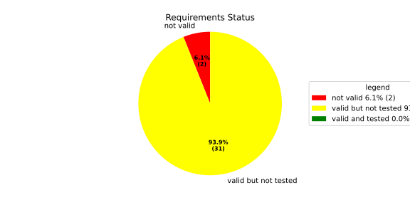
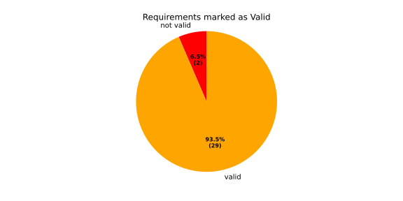
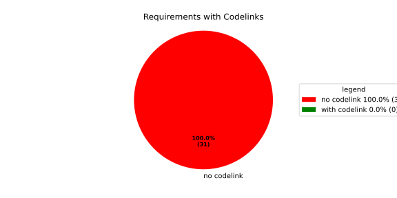
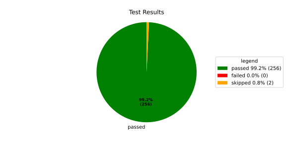
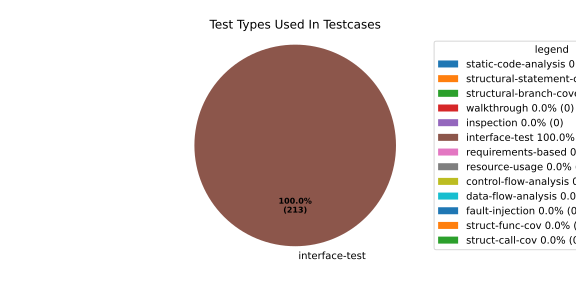
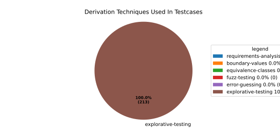

Verification Statistics#
Overview#

In Detail#



Failed Tests
Hint: This table should be empty. Before a PR can be merged all tests have to be successful.
No needs passed the filters
Skipped / Disabled Tests
testcase |
Result |
Fully Verifies |
Partially Verifies |
Test Type |
Derivation Technique |
link |
|---|---|---|---|---|---|---|
ValidateRangeTest/4__RejectsValueAboveMax |
skipped |
interface-test |
explorative-testing |
|||
ValidateRangeTest/4__RejectsValueBelowMin |
skipped |
interface-test |
explorative-testing |
All passed Tests#
testcase |
Result |
Fully Verifies |
Partially Verifies |
Test Type |
Derivation Technique |
link |
|---|---|---|---|---|---|---|
AliveImplTest__DoesNotThrowWhenInterfacePathEnvVarIsSet |
passed |
interface-test |
explorative-testing |
testcase__AliveImplTest__DoesNotThrowWhenInterfacePathEnvVarIsSet_xpewu |
||
AliveImplTest__ReportCheckpointSafeWhenNotConnected |
passed |
interface-test |
explorative-testing |
testcase__AliveImplTest__ReportCheckpointSafeWhenNotConnected_ppvuc |
||
AliveImplTest__ThrowsWhenInterfacePathEnvVarIsNotSet |
passed |
interface-test |
explorative-testing |
testcase__AliveImplTest__ThrowsWhenInterfacePathEnvVarIsNotSet_ekxfw |
||
AliveSupervisionTest__AliveDebouncesThroughFailedBeforeExpired |
passed |
interface-test |
explorative-testing |
testcase__AliveSupervisionTest__AliveDebouncesThroughFailedBeforeExpired_mlnbe |
||
AliveSupervisionTest__AliveReportsEnqueueFailureWhenRingBufferFull |
passed |
interface-test |
explorative-testing |
testcase__AliveSupervisionTest__AliveReportsEnqueueFailureWhenRingBufferFull_byhrd |
||
AliveSupervisionTest__AliveStaysOkWithCorrectHeartbeats |
passed |
interface-test |
explorative-testing |
testcase__AliveSupervisionTest__AliveStaysOkWithCorrectHeartbeats_vekof |
||
AliveSupervisionTest__AliveTransitionsOkToExpiredOnMissingHeartbeat |
passed |
interface-test |
explorative-testing |
testcase__AliveSupervisionTest__AliveTransitionsOkToExpiredOnMissingHeartbeat_jymxo |
||
AliveSupervisionTest__DeactivatesOnProcessCrash |
passed |
interface-test |
explorative-testing |
testcase__AliveSupervisionTest__DeactivatesOnProcessCrash_ypejs |
||
AliveSupervisionTest__DeactivatesOnProcessSigterm |
passed |
interface-test |
explorative-testing |
testcase__AliveSupervisionTest__DeactivatesOnProcessSigterm_hzaal |
||
AliveSupervisionTest__IgnoresIrrelevantProcessStates |
passed |
interface-test |
explorative-testing |
testcase__AliveSupervisionTest__IgnoresIrrelevantProcessStates_aolvb |
||
AliveSupervisionTest__MaxIndicationViolationExpires |
passed |
interface-test |
explorative-testing |
testcase__AliveSupervisionTest__MaxIndicationViolationExpires_whhhi |
||
AliveSupervisionTest__ReactivatesAfterCrash |
passed |
interface-test |
explorative-testing |
|||
ApplicationTypes/ApplicationTypeTest__ConvertsToExpectedValue/Native |
passed |
interface-test |
explorative-testing |
testcase__ApplicationTypes/ApplicationTypeTest__ConvertsToExpectedValue/Native_yxxcz |
||
ApplicationTypes/ApplicationTypeTest__ConvertsToExpectedValue/Reporting |
passed |
interface-test |
explorative-testing |
testcase__ApplicationTypes/ApplicationTypeTest__ConvertsToExpectedValue/Reporting_wcfwr |
||
ApplicationTypes/ApplicationTypeTest__ConvertsToExpectedValue/ReportingAndSupervised |
passed |
interface-test |
explorative-testing |
testcase__ApplicationTypes/ApplicationTypeTest__ConvertsToExpectedValue/ReportingAndSupervised_yxgad |
||
ApplicationTypes/ApplicationTypeTest__ConvertsToExpectedValue/StateManager |
passed |
interface-test |
explorative-testing |
testcase__ApplicationTypes/ApplicationTypeTest__ConvertsToExpectedValue/StateManager_ivuzc |
||
ConverterTest__ConvertAliveSupervisionMissingCycleReturnsError |
passed |
interface-test |
explorative-testing |
testcase__ConverterTest__ConvertAliveSupervisionMissingCycleReturnsError_bifzg |
||
ConverterTest__ConvertAliveSupervisionNullReturnsDefault |
passed |
interface-test |
explorative-testing |
testcase__ConverterTest__ConvertAliveSupervisionNullReturnsDefault_clyua |
||
ConverterTest__ConvertAliveSupervisionValid |
passed |
interface-test |
explorative-testing |
|||
ConverterTest__ConvertApplicationProfileMissingSelfTerminatingReturnsError |
passed |
interface-test |
explorative-testing |
testcase__ConverterTest__ConvertApplicationProfileMissingSelfTerminatingReturnsError_zddjb |
||
ConverterTest__ConvertApplicationProfileMissingTypeReturnsError |
passed |
interface-test |
explorative-testing |
testcase__ConverterTest__ConvertApplicationProfileMissingTypeReturnsError_zrfcs |
||
ConverterTest__ConvertApplicationProfileValid |
passed |
interface-test |
explorative-testing |
testcase__ConverterTest__ConvertApplicationProfileValid_oohxq |
||
ConverterTest__ConvertComponentAliveSupervisionBothIndicationsAbsentReturnsError |
passed |
interface-test |
explorative-testing |
testcase__ConverterTest__ConvertComponentAliveSupervisionBothIndicationsAbsentReturnsError_gvtfi |
||
ConverterTest__ConvertComponentAliveSupervisionMissingReportingCycleReturnsError |
passed |
interface-test |
explorative-testing |
testcase__ConverterTest__ConvertComponentAliveSupervisionMissingReportingCycleReturnsError_ajymy |
||
ConverterTest__ConvertComponentAliveSupervisionMissingToleranceReturnsError |
passed |
interface-test |
explorative-testing |
testcase__ConverterTest__ConvertComponentAliveSupervisionMissingToleranceReturnsError_lgrhj |
||
ConverterTest__ConvertComponentAliveSupervisionNullReturnsDefault |
passed |
interface-test |
explorative-testing |
testcase__ConverterTest__ConvertComponentAliveSupervisionNullReturnsDefault_xhaus |
||
ConverterTest__ConvertComponentAliveSupervisionOnlyMaxIndicationsPresent |
passed |
interface-test |
explorative-testing |
testcase__ConverterTest__ConvertComponentAliveSupervisionOnlyMaxIndicationsPresent_smwht |
||
ConverterTest__ConvertComponentAliveSupervisionOnlyMinIndicationsPresent |
passed |
interface-test |
explorative-testing |
testcase__ConverterTest__ConvertComponentAliveSupervisionOnlyMinIndicationsPresent_ybbrr |
||
ConverterTest__ConvertComponentAliveSupervisionValid |
passed |
interface-test |
explorative-testing |
testcase__ConverterTest__ConvertComponentAliveSupervisionValid_ijedh |
||
ConverterTest__ConvertComponentsValid |
passed |
interface-test |
explorative-testing |
|||
ConverterTest__ConvertComponentsWithInvalidComponentReturnsError |
passed |
interface-test |
explorative-testing |
testcase__ConverterTest__ConvertComponentsWithInvalidComponentReturnsError_wridc |
||
ConverterTest__ConvertComponentValid |
passed |
interface-test |
explorative-testing |
|||
ConverterTest__ConvertDeploymentConfigMissingReadyTimeoutReturnsError |
passed |
interface-test |
explorative-testing |
testcase__ConverterTest__ConvertDeploymentConfigMissingReadyTimeoutReturnsError_ljzfl |
||
ConverterTest__ConvertDeploymentConfigMissingShutdownTimeoutReturnsError |
passed |
interface-test |
explorative-testing |
testcase__ConverterTest__ConvertDeploymentConfigMissingShutdownTimeoutReturnsError_vyqye |
||
ConverterTest__ConvertDeploymentConfigValid |
passed |
interface-test |
explorative-testing |
|||
ConverterTest__ConvertEnvironmentalVariables |
passed |
interface-test |
explorative-testing |
testcase__ConverterTest__ConvertEnvironmentalVariables_fnhgo |
||
ConverterTest__ConvertEnvironmentalVariablesNullReturnsEmpty |
passed |
interface-test |
explorative-testing |
testcase__ConverterTest__ConvertEnvironmentalVariablesNullReturnsEmpty_vglrx |
||
ConverterTest__ConvertFallbackRunTargetMissingTimeoutReturnsError |
passed |
interface-test |
explorative-testing |
testcase__ConverterTest__ConvertFallbackRunTargetMissingTimeoutReturnsError_aevly |
||
ConverterTest__ConvertFallbackRunTargetValid |
passed |
interface-test |
explorative-testing |
testcase__ConverterTest__ConvertFallbackRunTargetValid_nexxj |
||
ConverterTest__ConvertReadyConditionMissingProcessStateReturnsError |
passed |
interface-test |
explorative-testing |
testcase__ConverterTest__ConvertReadyConditionMissingProcessStateReturnsError_ileav |
||
ConverterTest__ConvertReadyConditionValid |
passed |
interface-test |
explorative-testing |
|||
ConverterTest__ConvertRestartActionMissingFieldsReturnsError |
passed |
interface-test |
explorative-testing |
testcase__ConverterTest__ConvertRestartActionMissingFieldsReturnsError_aapjb |
||
ConverterTest__ConvertRestartActionNullReturnsNullopt |
passed |
interface-test |
explorative-testing |
testcase__ConverterTest__ConvertRestartActionNullReturnsNullopt_ifvyd |
||
ConverterTest__ConvertRestartActionValid |
passed |
interface-test |
explorative-testing |
|||
ConverterTest__ConvertRunTargetMissingTransitionTimeoutReturnsError |
passed |
interface-test |
explorative-testing |
testcase__ConverterTest__ConvertRunTargetMissingTransitionTimeoutReturnsError_ynekv |
||
ConverterTest__ConvertRunTargetsValid |
passed |
interface-test |
explorative-testing |
|||
ConverterTest__ConvertRunTargetsWithInvalidRunTargetReturnsError |
passed |
interface-test |
explorative-testing |
testcase__ConverterTest__ConvertRunTargetsWithInvalidRunTargetReturnsError_ldlox |
||
ConverterTest__ConvertRunTargetValid |
passed |
interface-test |
explorative-testing |
|||
ConverterTest__ConvertSandboxMissingGidReturnsError |
passed |
interface-test |
explorative-testing |
testcase__ConverterTest__ConvertSandboxMissingGidReturnsError_veeel |
||
ConverterTest__ConvertSandboxMissingSchedulingPolicyReturnsError |
passed |
interface-test |
explorative-testing |
testcase__ConverterTest__ConvertSandboxMissingSchedulingPolicyReturnsError_pkfts |
||
ConverterTest__ConvertSandboxMissingSchedulingPriorityReturnsError |
passed |
interface-test |
explorative-testing |
testcase__ConverterTest__ConvertSandboxMissingSchedulingPriorityReturnsError_xzdho |
||
ConverterTest__ConvertSandboxMissingUidReturnsError |
passed |
interface-test |
explorative-testing |
testcase__ConverterTest__ConvertSandboxMissingUidReturnsError_ogfku |
||
ConverterTest__ConvertSandboxSupplementaryGidOutOfRangeReturnsError |
passed |
interface-test |
explorative-testing |
testcase__ConverterTest__ConvertSandboxSupplementaryGidOutOfRangeReturnsError_zavpx |
||
ConverterTest__ConvertSandboxUidOutOfRangeReturnsError |
passed |
interface-test |
explorative-testing |
testcase__ConverterTest__ConvertSandboxUidOutOfRangeReturnsError_mcuaf |
||
ConverterTest__ConvertSandboxValid |
passed |
interface-test |
explorative-testing |
|||
ConverterTest__ConvertSwitchRunTargetActionNullReturnsNullopt |
passed |
interface-test |
explorative-testing |
testcase__ConverterTest__ConvertSwitchRunTargetActionNullReturnsNullopt_zmitx |
||
ConverterTest__ConvertSwitchRunTargetActionValid |
passed |
interface-test |
explorative-testing |
testcase__ConverterTest__ConvertSwitchRunTargetActionValid_tdklr |
||
ConverterTest__ConvertWatchdogMissingDeactivateReturnsError |
passed |
interface-test |
explorative-testing |
testcase__ConverterTest__ConvertWatchdogMissingDeactivateReturnsError_gzwjt |
||
ConverterTest__ConvertWatchdogMissingMagicCloseReturnsError |
passed |
interface-test |
explorative-testing |
testcase__ConverterTest__ConvertWatchdogMissingMagicCloseReturnsError_gexxk |
||
ConverterTest__ConvertWatchdogMissingMaxTimeoutReturnsError |
passed |
interface-test |
explorative-testing |
testcase__ConverterTest__ConvertWatchdogMissingMaxTimeoutReturnsError_lffxm |
||
ConverterTest__ConvertWatchdogNullReturnsNullopt |
passed |
interface-test |
explorative-testing |
testcase__ConverterTest__ConvertWatchdogNullReturnsNullopt_irsdk |
||
ConverterTest__ConvertWatchdogValid |
passed |
interface-test |
explorative-testing |
|||
DeadlineFixture__Start_AlreadyRunning |
passed |
interface-test |
explorative-testing |
|||
DeadlineFixture__Start_Succeeds |
passed |
interface-test |
explorative-testing |
|||
DeadlineMonitorBuilderFixture__AddDeadline_Succeeds |
passed |
interface-test |
explorative-testing |
testcase__DeadlineMonitorBuilderFixture__AddDeadline_Succeeds_nagke |
||
DeadlineMonitorBuilderFixture__New_Succeeds |
passed |
interface-test |
explorative-testing |
|||
DeadlineMonitorFixture__GetDeadline_Succeeds |
passed |
interface-test |
explorative-testing |
testcase__DeadlineMonitorFixture__GetDeadline_Succeeds_tmltf |
||
DeadlineMonitorFixture__GetDeadline_Unknown |
passed |
interface-test |
explorative-testing |
|||
EnumConversionTest__ConvertSchedulingPolicyUnsupported |
passed |
interface-test |
explorative-testing |
testcase__EnumConversionTest__ConvertSchedulingPolicyUnsupported_iavqm |
||
EnvironmentTest__AddIncreasesSize |
passed |
interface-test |
explorative-testing |
|||
EnvironmentTest__DefaultConstructedIsEmpty |
passed |
interface-test |
explorative-testing |
|||
EnvironmentTest__EmptyEnvironmentEnvpIsNullTerminated |
passed |
interface-test |
explorative-testing |
testcase__EnvironmentTest__EmptyEnvironmentEnvpIsNullTerminated_wwumw |
||
EnvironmentTest__EnvpReturnsNullTerminatedArray |
passed |
interface-test |
explorative-testing |
testcase__EnvironmentTest__EnvpReturnsNullTerminatedArray_aubkv |
||
EnvironmentTest__EnvpWithMultipleEntries |
passed |
interface-test |
explorative-testing |
|||
EnvironmentTest__MoveAssignmentPreservesEntries |
passed |
interface-test |
explorative-testing |
testcase__EnvironmentTest__MoveAssignmentPreservesEntries_vkydj |
||
EnvironmentTest__MoveConstructorPreservesEntries |
passed |
interface-test |
explorative-testing |
testcase__EnvironmentTest__MoveConstructorPreservesEntries_upclt |
||
EnvironmentTest__RangeBasedForLoopWorks |
passed |
interface-test |
explorative-testing |
|||
EnvironmentTest__ReserveAndAddAvoidReallocation |
passed |
interface-test |
explorative-testing |
testcase__EnvironmentTest__ReserveAndAddAvoidReallocation_lgzmu |
||
EnvironmentTest__SsoLengthStringSurvivesReallocation |
passed |
interface-test |
explorative-testing |
testcase__EnvironmentTest__SsoLengthStringSurvivesReallocation_jfmtl |
||
EnvironmentVariableTest__CStrReturnsKeyEqualsValue |
passed |
interface-test |
explorative-testing |
testcase__EnvironmentVariableTest__CStrReturnsKeyEqualsValue_rkwan |
||
EnvironmentVariableTest__EmptyValue |
passed |
interface-test |
explorative-testing |
|||
EnvironmentVariableTest__KeyAndValueAreAccessible |
passed |
interface-test |
explorative-testing |
testcase__EnvironmentVariableTest__KeyAndValueAreAccessible_kcrth |
||
EnvironmentVariableTest__ValueContainingEquals |
passed |
interface-test |
explorative-testing |
testcase__EnvironmentVariableTest__ValueContainingEquals_apzgz |
||
ExecErrorDomainTest__AllKnownCodesHaveDistinctMessages |
passed |
interface-test |
explorative-testing |
testcase__ExecErrorDomainTest__AllKnownCodesHaveDistinctMessages_qpoka |
||
ExecErrorDomainTest__AllKnownCodesReturnNonEmptyMessage |
passed |
interface-test |
explorative-testing |
testcase__ExecErrorDomainTest__AllKnownCodesReturnNonEmptyMessage_bawzg |
||
ExecErrorDomainTest__UnknownCodeReturnsNonEmptyMessage |
passed |
interface-test |
explorative-testing |
testcase__ExecErrorDomainTest__UnknownCodeReturnsNonEmptyMessage_kkwpr |
||
FlatbufferConfigLoaderTest__CorruptedBufferReturnsInvalidFormat |
passed |
interface-test |
explorative-testing |
testcase__FlatbufferConfigLoaderTest__CorruptedBufferReturnsInvalidFormat_twyac |
||
FlatbufferConfigLoaderTest__LoadAliveSupervision |
passed |
interface-test |
explorative-testing |
testcase__FlatbufferConfigLoaderTest__LoadAliveSupervision_hhuux |
||
FlatbufferConfigLoaderTest__LoadBufferFailsWithGenericErrorReturnsGeneralError |
passed |
interface-test |
explorative-testing |
testcase__FlatbufferConfigLoaderTest__LoadBufferFailsWithGenericErrorReturnsGeneralError_kmatm |
||
FlatbufferConfigLoaderTest__LoadBufferFailsWithNoSuchFileReturnsFileNotFound |
passed |
interface-test |
explorative-testing |
testcase__FlatbufferConfigLoaderTest__LoadBufferFailsWithNoSuchFileReturnsFileNotFound_yzlra |
||
FlatbufferConfigLoaderTest__LoadBufferFailsWithPermissionDeniedReturnsInsufficientPermission |
passed |
interface-test |
explorative-testing |
|||
FlatbufferConfigLoaderTest__LoadComponentAliveSupervision |
passed |
interface-test |
explorative-testing |
testcase__FlatbufferConfigLoaderTest__LoadComponentAliveSupervision_fwfad |
||
FlatbufferConfigLoaderTest__LoadEnvironmentalVariables |
passed |
interface-test |
explorative-testing |
testcase__FlatbufferConfigLoaderTest__LoadEnvironmentalVariables_wsosu |
||
FlatbufferConfigLoaderTest__LoadFallbackRunTarget |
passed |
interface-test |
explorative-testing |
testcase__FlatbufferConfigLoaderTest__LoadFallbackRunTarget_wduqm |
||
FlatbufferConfigLoaderTest__LoadMinimalConfig |
passed |
interface-test |
explorative-testing |
testcase__FlatbufferConfigLoaderTest__LoadMinimalConfig_hdkck |
||
FlatbufferConfigLoaderTest__LoadMultipleComponents |
passed |
interface-test |
explorative-testing |
testcase__FlatbufferConfigLoaderTest__LoadMultipleComponents_abpom |
||
FlatbufferConfigLoaderTest__LoadRestartRecoveryAction |
passed |
interface-test |
explorative-testing |
testcase__FlatbufferConfigLoaderTest__LoadRestartRecoveryAction_wyfqg |
||
FlatbufferConfigLoaderTest__LoadRunTargets |
passed |
interface-test |
explorative-testing |
|||
FlatbufferConfigLoaderTest__LoadSandbox |
passed |
interface-test |
explorative-testing |
|||
FlatbufferConfigLoaderTest__LoadSingleComponent |
passed |
interface-test |
explorative-testing |
testcase__FlatbufferConfigLoaderTest__LoadSingleComponent_yidty |
||
FlatbufferConfigLoaderTest__LoadSwitchRunTargetAction |
passed |
interface-test |
explorative-testing |
testcase__FlatbufferConfigLoaderTest__LoadSwitchRunTargetAction_uchgp |
||
FlatbufferConfigLoaderTest__LoadWatchdog |
passed |
interface-test |
explorative-testing |
|||
FlatbufferConfigLoaderTest__MissingSchemaVersionReturnsInvalidFormat |
passed |
interface-test |
explorative-testing |
testcase__FlatbufferConfigLoaderTest__MissingSchemaVersionReturnsInvalidFormat_qqmfn |
||
FlatbufferConfigLoaderTest__OptionalReadyConditionAbsent |
passed |
interface-test |
explorative-testing |
testcase__FlatbufferConfigLoaderTest__OptionalReadyConditionAbsent_lhddx |
||
FlatbufferConfigLoaderTest__OptionalWatchdogAbsent |
passed |
interface-test |
explorative-testing |
testcase__FlatbufferConfigLoaderTest__OptionalWatchdogAbsent_pkhkp |
||
FlatbufferConfigLoaderTest__WrongSchemaVersionReturnsUnsupportedVersion |
passed |
interface-test |
explorative-testing |
testcase__FlatbufferConfigLoaderTest__WrongSchemaVersionReturnsUnsupportedVersion_zrbjv |
||
HealthMonitor__GetDeadlineMonitor_Available |
passed |
|||||
HealthMonitor__GetDeadlineMonitor_Taken |
passed |
|||||
HealthMonitor__GetDeadlineMonitor_Unknown |
passed |
|||||
HealthMonitor__GetHeartbeatMonitor_Available |
passed |
testcase__HealthMonitor__GetHeartbeatMonitor_Available_aacat |
||||
HealthMonitor__GetHeartbeatMonitor_Taken |
passed |
|||||
HealthMonitor__GetHeartbeatMonitor_Unknown |
passed |
|||||
HealthMonitor__GetLogicMonitor_Available |
passed |
|||||
HealthMonitor__GetLogicMonitor_Taken |
passed |
|||||
HealthMonitor__GetLogicMonitor_Unknown |
passed |
|||||
HealthMonitor__Start_MonitorsNotTaken |
passed |
|||||
HealthMonitor__Start_Succeeds |
passed |
|||||
HealthMonitorBuilderFixture__Build_InvalidCycles |
passed |
interface-test |
explorative-testing |
testcase__HealthMonitorBuilderFixture__Build_InvalidCycles_pdigk |
||
HealthMonitorBuilderFixture__Build_NoMonitors |
passed |
interface-test |
explorative-testing |
testcase__HealthMonitorBuilderFixture__Build_NoMonitors_ktcve |
||
HealthMonitorBuilderFixture__Build_Succeeds |
passed |
interface-test |
explorative-testing |
|||
HealthMonitorBuilderFixture__New_Succeeds |
passed |
interface-test |
explorative-testing |
|||
HealthMonitorTest__Integrated |
passed |
interface-test |
explorative-testing |
|||
HeartbeatMonitor__Heartbeat_Succeeds |
passed |
interface-test |
explorative-testing |
|||
HeartbeatMonitorBuilder__New_Succeeds |
passed |
interface-test |
explorative-testing |
|||
IdentifierHashTest__IdentifierHash_default_created |
passed |
interface-test |
explorative-testing |
testcase__IdentifierHashTest__IdentifierHash_default_created_yhhvi |
||
IdentifierHashTest__IdentifierHash_EqualityOperators |
passed |
interface-test |
explorative-testing |
testcase__IdentifierHashTest__IdentifierHash_EqualityOperators_nnsuj |
||
IdentifierHashTest__IdentifierHash_invalid_hash_no_string_representation |
passed |
interface-test |
explorative-testing |
testcase__IdentifierHashTest__IdentifierHash_invalid_hash_no_string_representation_rxowr |
||
IdentifierHashTest__IdentifierHash_LessThanOperator |
passed |
interface-test |
explorative-testing |
testcase__IdentifierHashTest__IdentifierHash_LessThanOperator_rnbax |
||
IdentifierHashTest__IdentifierHash_no_dangling_pointer_after_source_string_dies |
passed |
interface-test |
explorative-testing |
testcase__IdentifierHashTest__IdentifierHash_no_dangling_pointer_after_source_string_dies_qsjin |
||
IdentifierHashTest__IdentifierHash_with_string_created |
passed |
interface-test |
explorative-testing |
testcase__IdentifierHashTest__IdentifierHash_with_string_created_aygdm |
||
IdentifierHashTest__IdentifierHash_with_string_view_created |
passed |
interface-test |
explorative-testing |
testcase__IdentifierHashTest__IdentifierHash_with_string_view_created_dbpol |
||
LogicMonitorBuilderFixture__AddState_Succeeds |
passed |
interface-test |
explorative-testing |
testcase__LogicMonitorBuilderFixture__AddState_Succeeds_axdxj |
||
LogicMonitorBuilderFixture__New_Succeeds |
passed |
interface-test |
explorative-testing |
|||
LogicMonitorFixture__State_Invalid |
passed |
interface-test |
explorative-testing |
|||
LogicMonitorFixture__State_Succeeds |
passed |
interface-test |
explorative-testing |
|||
LogicMonitorFixture__Transition_Invalid |
passed |
interface-test |
explorative-testing |
|||
LogicMonitorFixture__Transition_Succeeds |
passed |
interface-test |
explorative-testing |
|||
LogicMonitorFixture__Transition_Unknown |
passed |
interface-test |
explorative-testing |
|||
MonitorIfDaemonTest__Active_CheckpointDataForwarded |
passed |
interface-test |
explorative-testing |
testcase__MonitorIfDaemonTest__Active_CheckpointDataForwarded_evumz |
||
MonitorIfDaemonTest__Active_FutureTimestamp_NotForwardedInCurrentCycle |
passed |
interface-test |
explorative-testing |
testcase__MonitorIfDaemonTest__Active_FutureTimestamp_NotForwardedInCurrentCycle_oycau |
||
MonitorIfDaemonTest__Active_FutureTimestampCheckpoint_ConsumedInLaterCycle |
passed |
interface-test |
explorative-testing |
testcase__MonitorIfDaemonTest__Active_FutureTimestampCheckpoint_ConsumedInLaterCycle_veyyy |
||
MonitorIfDaemonTest__Active_MultipleCheckpointsInOneCycle_AllForwarded |
passed |
interface-test |
explorative-testing |
testcase__MonitorIfDaemonTest__Active_MultipleCheckpointsInOneCycle_AllForwarded_gmbms |
||
MonitorIfDaemonTest__Active_NonMatchingCheckpointId_NotForwarded |
passed |
interface-test |
explorative-testing |
testcase__MonitorIfDaemonTest__Active_NonMatchingCheckpointId_NotForwarded_bohck |
||
MonitorIfDaemonTest__Active_OverflowDetected_TransitionsToInactiveOverflow |
passed |
interface-test |
explorative-testing |
testcase__MonitorIfDaemonTest__Active_OverflowDetected_TransitionsToInactiveOverflow_ovitk |
||
MonitorIfDaemonTest__Active_TwoAttachedCheckpoints_RoutedByCheckpointId |
passed |
interface-test |
explorative-testing |
testcase__MonitorIfDaemonTest__Active_TwoAttachedCheckpoints_RoutedByCheckpointId_skqhd |
||
MonitorIfDaemonTest__GetInterfaceName_ReturnsNameGivenAtConstruction |
passed |
interface-test |
explorative-testing |
testcase__MonitorIfDaemonTest__GetInterfaceName_ReturnsNameGivenAtConstruction_iaemz |
||
MonitorIfDaemonTest__InactiveOverflow_NoProcessRestart_DoesNotRepeatNotification |
passed |
interface-test |
explorative-testing |
testcase__MonitorIfDaemonTest__InactiveOverflow_NoProcessRestart_DoesNotRepeatNotification_gdbxg |
||
MonitorIfDaemonTest__InactiveOverflow_ProcessRestartFlag_ClearedAfterNotification |
passed |
interface-test |
explorative-testing |
testcase__MonitorIfDaemonTest__InactiveOverflow_ProcessRestartFlag_ClearedAfterNotification_pqfyy |
||
MonitorIfDaemonTest__InactiveOverflow_ProcessRestarts_PushesOverflowNotificationAgain |
passed |
interface-test |
explorative-testing |
|||
MonitorIfDaemonTest__InitiallyInactive_CheckForNewData_DoesNotNotifyCheckpoint |
passed |
interface-test |
explorative-testing |
testcase__MonitorIfDaemonTest__InitiallyInactive_CheckForNewData_DoesNotNotifyCheckpoint_wjrfl |
||
MonitorIfDaemonTest__ProcessOff_DeactivatesMonitor_NoFurtherDataForwarded |
passed |
interface-test |
explorative-testing |
testcase__MonitorIfDaemonTest__ProcessOff_DeactivatesMonitor_NoFurtherDataForwarded_uialh |
||
MonitorIfDaemonTest__ProcessOffBeforeActivation_RemainsInactive |
passed |
interface-test |
explorative-testing |
testcase__MonitorIfDaemonTest__ProcessOffBeforeActivation_RemainsInactive_kzzyy |
||
MonitorIfDaemonTest__ProcessRunning_ActivatesMonitorOnNextCheckForNewData |
passed |
interface-test |
explorative-testing |
testcase__MonitorIfDaemonTest__ProcessRunning_ActivatesMonitorOnNextCheckForNewData_fkkmk |
||
MonitorIfDaemonTest__ProcessStarting_AlsoActivatesMonitor |
passed |
interface-test |
explorative-testing |
testcase__MonitorIfDaemonTest__ProcessStarting_AlsoActivatesMonitor_xdkbg |
||
MPMCConcurrentQueueTest_Basic__LvaluePushCopiesItem |
passed |
testcase__MPMCConcurrentQueueTest_Basic__LvaluePushCopiesItem_oysfc |
||||
MPMCConcurrentQueueTest_Basic__PopReturnsNulloptOnSemaphoreWaitFailure |
passed |
testcase__MPMCConcurrentQueueTest_Basic__PopReturnsNulloptOnSemaphoreWaitFailure_rgznm |
||||
MPMCConcurrentQueueTest_Basic__PushAndPopPreservesOrder |
passed |
testcase__MPMCConcurrentQueueTest_Basic__PushAndPopPreservesOrder_aijdb |
||||
MPMCConcurrentQueueTest_Basic__PushAndPopSingleItem |
passed |
testcase__MPMCConcurrentQueueTest_Basic__PushAndPopSingleItem_jrxwz |
||||
MPMCConcurrentQueueTest_Basic__RvaluePushWorksWithMoveOnlyType |
passed |
testcase__MPMCConcurrentQueueTest_Basic__RvaluePushWorksWithMoveOnlyType_cxxaj |
||||
MPMCConcurrentQueueTest_Blocking__PopBlocksUntilItemAvailable |
passed |
testcase__MPMCConcurrentQueueTest_Blocking__PopBlocksUntilItemAvailable_ttwcx |
||||
MPMCConcurrentQueueTest_Blocking__PushBlocksWhenFull |
passed |
testcase__MPMCConcurrentQueueTest_Blocking__PushBlocksWhenFull_ecujf |
||||
MPMCConcurrentQueueTest_Blocking__StopUnblocksBlockedConsumer |
passed |
testcase__MPMCConcurrentQueueTest_Blocking__StopUnblocksBlockedConsumer_snzyr |
||||
MPMCConcurrentQueueTest_Blocking__StopUnblocksBlockedProducer |
passed |
testcase__MPMCConcurrentQueueTest_Blocking__StopUnblocksBlockedProducer_inddu |
||||
MPMCConcurrentQueueTest_MPMC__AllItemsDelivered |
passed |
testcase__MPMCConcurrentQueueTest_MPMC__AllItemsDelivered_ztjqe |
||||
MPMCConcurrentQueueTest_Stop__ItemsAreDroppedAfterStop |
passed |
testcase__MPMCConcurrentQueueTest_Stop__ItemsAreDroppedAfterStop_ragzw |
||||
MPMCConcurrentQueueTest_Stop__PopReturnsNulloptWhenStoppedAndEmpty |
passed |
testcase__MPMCConcurrentQueueTest_Stop__PopReturnsNulloptWhenStoppedAndEmpty_cevga |
||||
MPMCConcurrentQueueTest_Stop__PushReturnsFalseAfterStop |
passed |
testcase__MPMCConcurrentQueueTest_Stop__PushReturnsFalseAfterStop_qqnhw |
||||
MPMCConcurrentQueueTest_Timeout__PushWithTimeoutReturnsFalseWhenFull |
passed |
testcase__MPMCConcurrentQueueTest_Timeout__PushWithTimeoutReturnsFalseWhenFull_aeips |
||||
MPMCConcurrentQueueTest_Timeout__PushWithTimeoutSucceedsWhenSlotAvailable |
passed |
testcase__MPMCConcurrentQueueTest_Timeout__PushWithTimeoutSucceedsWhenSlotAvailable_klzpo |
||||
OsHandlerTest__WaitReturnsError_OsHandlerSleepsAndDoesNotCallFindTerminated |
passed |
interface-test |
explorative-testing |
testcase__OsHandlerTest__WaitReturnsError_OsHandlerSleepsAndDoesNotCallFindTerminated_cibtr |
||
OsHandlerTest__WaitReturnsErrorThenProcessId_HandlerRecoversAndInvokesCallback |
passed |
interface-test |
explorative-testing |
testcase__OsHandlerTest__WaitReturnsErrorThenProcessId_HandlerRecoversAndInvokesCallback_nqstd |
||
OsHandlerTest__WaitReturnsProcessId_FindTerminatedIsCalled |
passed |
interface-test |
explorative-testing |
testcase__OsHandlerTest__WaitReturnsProcessId_FindTerminatedIsCalled_chlsq |
||
OsHandlerTest__WaitReturnsProcessIdBeforeRegistration_LaterRegistrationReceivesStoredTermination |
passed |
interface-test |
explorative-testing |
|||
OsHandlerTest__WaitReturnsUnknownPidWhenMapIsFull_OutOfResourcesPathDoesNotNotifyCallbacks |
passed |
interface-test |
explorative-testing |
|||
OsHandlerTest__WaitReturnsZeroPid_OsHandlerSleepsAndDoesNotCallFindTerminated |
passed |
interface-test |
explorative-testing |
testcase__OsHandlerTest__WaitReturnsZeroPid_OsHandlerSleepsAndDoesNotCallFindTerminated_rkttz |
||
ProcessStateClient_UT__ProcessStateClient_ConstructReceiver_Succeeds |
passed |
interface-test |
explorative-testing |
testcase__ProcessStateClient_UT__ProcessStateClient_ConstructReceiver_Succeeds_hodwy |
||
ProcessStateClient_UT__ProcessStateClient_QueueMaxNumberOfProcesses_Succeeds |
passed |
interface-test |
explorative-testing |
testcase__ProcessStateClient_UT__ProcessStateClient_QueueMaxNumberOfProcesses_Succeeds_qohom |
||
ProcessStateClient_UT__ProcessStateClient_QueueOneProcess_Succeeds |
passed |
interface-test |
explorative-testing |
testcase__ProcessStateClient_UT__ProcessStateClient_QueueOneProcess_Succeeds_tmzfz |
||
ProcessStateClient_UT__ProcessStateClient_QueueOneProcessTooMany_Fails |
passed |
interface-test |
explorative-testing |
testcase__ProcessStateClient_UT__ProcessStateClient_QueueOneProcessTooMany_Fails_sspoj |
||
ProcessStates/ProcessStateTest__ConvertsToExpectedValue/Running |
passed |
interface-test |
explorative-testing |
testcase__ProcessStates/ProcessStateTest__ConvertsToExpectedValue/Running_hinlr |
||
ProcessStates/ProcessStateTest__ConvertsToExpectedValue/Terminated |
passed |
interface-test |
explorative-testing |
testcase__ProcessStates/ProcessStateTest__ConvertsToExpectedValue/Terminated_zrytn |
||
RecoveryClientTest__FIFOOrdering |
passed |
interface-test |
explorative-testing |
|||
RecoveryClientTest__GetNextRequest |
passed |
interface-test |
explorative-testing |
|||
RecoveryClientTest__GetNextRequestEmpty |
passed |
interface-test |
explorative-testing |
|||
RecoveryClientTest__RingBufferFull |
passed |
interface-test |
explorative-testing |
|||
RecoveryClientTest__SendSingleRequest |
passed |
interface-test |
explorative-testing |
|||
RunTest__AsPosixProcessCreatesAndDestroysLifeCycleManager |
passed |
testcase__RunTest__AsPosixProcessCreatesAndDestroysLifeCycleManager_sooex |
||||
RunTest__AsPosixProcessForwardsConstructorArgsToApplication |
passed |
testcase__RunTest__AsPosixProcessForwardsConstructorArgsToApplication_dmeur |
||||
RunTest__AsPosixProcessForwardsNonZeroExitCode |
passed |
testcase__RunTest__AsPosixProcessForwardsNonZeroExitCode_lldqd |
||||
RunTest__AsPosixProcessPassesCorrectApplicationTypeToRun |
passed |
testcase__RunTest__AsPosixProcessPassesCorrectApplicationTypeToRun_ajqwz |
||||
RunTest__AsPosixProcessReturnsZeroExitCode |
passed |
|||||
RunTest__RunApplicationFreeFunctionDelegatesToAsPosixProcess |
passed |
testcase__RunTest__RunApplicationFreeFunctionDelegatesToAsPosixProcess_ccing |
||||
RunTest__RunConstructorPassesArgcArgvToApplicationContext |
passed |
testcase__RunTest__RunConstructorPassesArgcArgvToApplicationContext_agerd |
||||
SafeProcessMapTest__ConcurrentFindAndInsertFromMultipleThreads |
passed |
interface-test |
explorative-testing |
testcase__SafeProcessMapTest__ConcurrentFindAndInsertFromMultipleThreads_kzfyg |
||
SafeProcessMapTest__ConcurrentInsertAndFindFromMultipleThreads |
passed |
interface-test |
explorative-testing |
testcase__SafeProcessMapTest__ConcurrentInsertAndFindFromMultipleThreads_hnyqj |
||
SafeProcessMapTest__ConstructWithZeroCapacity |
passed |
interface-test |
explorative-testing |
testcase__SafeProcessMapTest__ConstructWithZeroCapacity_gjmqg |
||
SafeProcessMapTest__FindTerminatedInsertsEntryWhenPidNotPresent |
passed |
interface-test |
explorative-testing |
testcase__SafeProcessMapTest__FindTerminatedInsertsEntryWhenPidNotPresent_ixtlt |
||
SafeProcessMapTest__FindTerminatedMatchesExistingInsertAndCallsCallback |
passed |
interface-test |
explorative-testing |
testcase__SafeProcessMapTest__FindTerminatedMatchesExistingInsertAndCallsCallback_ehuzb |
||
SafeProcessMapTest__FindTerminatedSamePidTwiceYieldsUntilInsertResolves |
passed |
interface-test |
explorative-testing |
testcase__SafeProcessMapTest__FindTerminatedSamePidTwiceYieldsUntilInsertResolves_hsekx |
||
SafeProcessMapTest__FindTerminatedWithNegativePidReturnsInvalid |
passed |
interface-test |
explorative-testing |
testcase__SafeProcessMapTest__FindTerminatedWithNegativePidReturnsInvalid_dewoh |
||
SafeProcessMapTest__FindTerminatedWorksAtMaxTreeDepth |
passed |
interface-test |
explorative-testing |
testcase__SafeProcessMapTest__FindTerminatedWorksAtMaxTreeDepth_adtzi |
||
SafeProcessMapTest__InsertBeyondCapacityReturnsOutOfMemory |
passed |
interface-test |
explorative-testing |
testcase__SafeProcessMapTest__InsertBeyondCapacityReturnsOutOfMemory_qjnie |
||
SafeProcessMapTest__InsertIntoEmptyTreeReturnsZero |
passed |
interface-test |
explorative-testing |
testcase__SafeProcessMapTest__InsertIntoEmptyTreeReturnsZero_zfbaq |
||
SafeProcessMapTest__InsertMatchesExistingFindTerminatedEntry |
passed |
interface-test |
explorative-testing |
testcase__SafeProcessMapTest__InsertMatchesExistingFindTerminatedEntry_fuwrp |
||
SafeProcessMapTest__InsertMultipleNodesThenFindTerminatedRemovesAll |
passed |
interface-test |
explorative-testing |
testcase__SafeProcessMapTest__InsertMultipleNodesThenFindTerminatedRemovesAll_fvowh |
||
SafeProcessMapTest__InsertSamePidTwiceYieldsUntilFindTerminatedResolves |
passed |
interface-test |
explorative-testing |
testcase__SafeProcessMapTest__InsertSamePidTwiceYieldsUntilFindTerminatedResolves_wzwyb |
||
SchedulingPolicies/SchedulingPolicyTest__ConvertsToExpectedPosixValue/SCHED_FIFO |
passed |
interface-test |
explorative-testing |
testcase__SchedulingPolicies/SchedulingPolicyTest__ConvertsToExpectedPosixValue/SCHED_FIFO_soddq |
||
SchedulingPolicies/SchedulingPolicyTest__ConvertsToExpectedPosixValue/SCHED_OTHER |
passed |
interface-test |
explorative-testing |
testcase__SchedulingPolicies/SchedulingPolicyTest__ConvertsToExpectedPosixValue/SCHED_OTHER_oigmk |
||
SchedulingPolicies/SchedulingPolicyTest__ConvertsToExpectedPosixValue/SCHED_RR |
passed |
interface-test |
explorative-testing |
testcase__SchedulingPolicies/SchedulingPolicyTest__ConvertsToExpectedPosixValue/SCHED_RR_pcjci |
||
score/health_monitor/src/rust/test-510566969/tests |
passed |
testcase__score/health_monitor/src/rust/test-510566969/tests_kjjlw |
||||
score/health_monitor/src/rust/test-827801879/loom_tests |
passed |
testcase__score/health_monitor/src/rust/test-827801879/loom_tests_cpmix |
||||
SecondsToMsTest__ConvertsPositiveValue |
passed |
interface-test |
explorative-testing |
|||
SecondsToMsTest__ConvertsZero |
passed |
interface-test |
explorative-testing |
|||
SecondsToMsTest__RejectsNegativeValue |
passed |
interface-test |
explorative-testing |
|||
SecondsToMsTest__RejectsOverflow |
passed |
interface-test |
explorative-testing |
|||
SecondsToMsTest__RejectsSubMillisecond |
passed |
interface-test |
explorative-testing |
|||
StringHelperTest__ConvertGidVectorReturnsEmptyWhenNull |
passed |
interface-test |
explorative-testing |
testcase__StringHelperTest__ConvertGidVectorReturnsEmptyWhenNull_jmcsr |
||
StringHelperTest__ConvertStringVectorReturnsEmptyWhenNull |
passed |
interface-test |
explorative-testing |
testcase__StringHelperTest__ConvertStringVectorReturnsEmptyWhenNull_zsuvv |
||
StringHelperTest__SafeStringReturnsEmptyWhenNull |
passed |
interface-test |
explorative-testing |
testcase__StringHelperTest__SafeStringReturnsEmptyWhenNull_crelr |
||
StringHelperTest__SafeStringReturnsValueWhenNotNull |
passed |
interface-test |
explorative-testing |
testcase__StringHelperTest__SafeStringReturnsValueWhenNotNull_anbko |
||
test_complex_monitoring |
passed |
|||||
test_crash_on_startup |
passed |
|||||
test_incorrect_config_non_reporting |
passed |
|||||
test_process_crash_monitoring |
passed |
|||||
test_process_launch_args |
passed |
|||||
test_process_wrong_binary_failure |
passed |
|||||
test_recovery_action_complex_rep_failure |
passed |
|||||
test_recovery_action_simple_rep_failure |
passed |
|||||
test_smoke |
passed |
|||||
test_switch_run_target |
passed |
|||||
TimeRangeFixture__MinMax |
passed |
interface-test |
explorative-testing |
|||
TimeRangeFixture__New_InvalidOrder |
passed |
interface-test |
explorative-testing |
|||
TimeRangeFixture__New_Succeeds |
passed |
interface-test |
explorative-testing |
|||
ValidateRangeTest/0__AcceptsMaxBoundary |
passed |
interface-test |
explorative-testing |
|||
ValidateRangeTest/0__AcceptsMinBoundary |
passed |
interface-test |
explorative-testing |
|||
ValidateRangeTest/0__AcceptsZero |
passed |
interface-test |
explorative-testing |
|||
ValidateRangeTest/0__RejectsValueAboveMax |
passed |
interface-test |
explorative-testing |
|||
ValidateRangeTest/0__RejectsValueBelowMin |
passed |
interface-test |
explorative-testing |
|||
ValidateRangeTest/1__AcceptsMaxBoundary |
passed |
interface-test |
explorative-testing |
|||
ValidateRangeTest/1__AcceptsMinBoundary |
passed |
interface-test |
explorative-testing |
|||
ValidateRangeTest/1__AcceptsZero |
passed |
interface-test |
explorative-testing |
|||
ValidateRangeTest/1__RejectsValueAboveMax |
passed |
interface-test |
explorative-testing |
|||
ValidateRangeTest/1__RejectsValueBelowMin |
passed |
interface-test |
explorative-testing |
|||
ValidateRangeTest/2__AcceptsMaxBoundary |
passed |
interface-test |
explorative-testing |
|||
ValidateRangeTest/2__AcceptsMinBoundary |
passed |
interface-test |
explorative-testing |
|||
ValidateRangeTest/2__AcceptsZero |
passed |
interface-test |
explorative-testing |
|||
ValidateRangeTest/2__RejectsValueAboveMax |
passed |
interface-test |
explorative-testing |
|||
ValidateRangeTest/2__RejectsValueBelowMin |
passed |
interface-test |
explorative-testing |
|||
ValidateRangeTest/3__AcceptsMaxBoundary |
passed |
interface-test |
explorative-testing |
|||
ValidateRangeTest/3__AcceptsMinBoundary |
passed |
interface-test |
explorative-testing |
|||
ValidateRangeTest/3__AcceptsZero |
passed |
interface-test |
explorative-testing |
|||
ValidateRangeTest/3__RejectsValueAboveMax |
passed |
interface-test |
explorative-testing |
|||
ValidateRangeTest/3__RejectsValueBelowMin |
passed |
interface-test |
explorative-testing |
|||
ValidateRangeTest/4__AcceptsMaxBoundary |
passed |
interface-test |
explorative-testing |
|||
ValidateRangeTest/4__AcceptsMinBoundary |
passed |
interface-test |
explorative-testing |
|||
ValidateRangeTest/4__AcceptsZero |
passed |
interface-test |
explorative-testing |
Details About Testcases#


Test Log Files#
tests-report/tests/integration/process_simple_rep_failure/process_simple_rep_failure/test.log
exec ${PAGER:-/usr/bin/less} "$0" || exit 1
Executing tests from //tests/integration/process_simple_rep_failure:process_simple_rep_failure
-----------------------------------------------------------------------------
============================= test session starts ==============================
platform linux -- Python 3.12.12, pytest-9.0.3, pluggy-1.5.0
rootdir: /home/runner/.bazel/sandbox/processwrapper-sandbox/1105/execroot/_main/bazel-out/k8-fastbuild/bin/tests/integration/process_simple_rep_failure/process_simple_rep_failure.runfiles/score_itf+
configfile: pytest.ini
collected 1 item
../score_itf+::test_recovery_action_simple_rep_failure
-------------------------------- live log setup --------------------------------
[2026-07-10 11:57:58.995] [INFO] [score.itf.plugins.docker] Executing custom image bootstrap command: tests/utils/environments/x86_64-linux/x86_64-linux.sh
[2026-07-10 11:57:59.110] [DEBUG] [docker.utils.config] Trying paths: ['/home/runner/.docker/config.json', '/home/runner/.dockercfg']
[2026-07-10 11:57:59.110] [DEBUG] [docker.utils.config] Found file at path: /home/runner/.docker/config.json
[2026-07-10 11:57:59.110] [DEBUG] [docker.auth] Found 'auths' section
[2026-07-10 11:57:59.110] [DEBUG] [docker.auth] Found entry (registry='https://index.docker.io/v1/', username='githubactions')
[2026-07-10 11:57:59.120] [DEBUG] [urllib3.connectionpool] http://localhost:None "GET /version HTTP/1.1" 200 823
[2026-07-10 11:57:59.154] [DEBUG] [urllib3.connectionpool] http://localhost:None "POST /v1.48/containers/create HTTP/1.1" 201 88
[2026-07-10 11:57:59.156] [DEBUG] [urllib3.connectionpool] http://localhost:None "GET /v1.48/containers/cf77e27583c8260171422660d9036578c13c543bd1046ca496da63a74c2999a7/json HTTP/1.1" 200 None
[2026-07-10 11:57:59.298] [DEBUG] [urllib3.connectionpool] http://localhost:None "POST /v1.48/containers/cf77e27583c8260171422660d9036578c13c543bd1046ca496da63a74c2999a7/start HTTP/1.1" 204 0
[2026-07-10 11:57:59.298] [DEBUG] [docker.utils.config] Trying paths: ['/home/runner/.docker/config.json', '/home/runner/.dockercfg']
[2026-07-10 11:57:59.298] [DEBUG] [docker.utils.config] Found file at path: /home/runner/.docker/config.json
[2026-07-10 11:57:59.299] [DEBUG] [docker.auth] Found 'auths' section
[2026-07-10 11:57:59.299] [DEBUG] [docker.auth] Found entry (registry='https://index.docker.io/v1/', username='githubactions')
[2026-07-10 11:57:59.307] [DEBUG] [urllib3.connectionpool] http://localhost:None "GET /version HTTP/1.1" 200 823
[2026-07-10 11:57:59.514] [INFO] [tests.utils.testing_utils.setup_test] Test case setup finished
-------------------------------- live log call ---------------------------------
[2026-07-10 11:57:59.629] [INFO] [launch_manager] 2026/07/10 11:57:59.4679624 3050072 000 ECU1 LM LM log debug verbose 1 Launch Manager Started !!!!
[2026-07-10 11:57:59.629] [INFO] [launch_manager] 2026/07/10 11:57:59.4679625 3050076 000 ECU1 LM LM log debug verbose 1 Loading LCM Configurations...
[2026-07-10 11:57:59.629] [INFO] [launch_manager] 2026/07/10 11:57:59.4679625 3050077 000 ECU1 LM LM log debug verbose 1 ECUCFG_ENV_VAR_ROOTFOLDER set successfully
[2026-07-10 11:57:59.629] [INFO] [launch_manager] 2026/07/10 11:57:59.4679625 3050078 000 ECU1 LM LM log debug verbose 5 FlatBufferParser::getModeGroupPgName: MainPG ( IdentifierHash: 18079021346025578134 )
[2026-07-10 11:57:59.629] [INFO] [launch_manager] 2026/07/10 11:57:59.4679625 3050078 000 ECU1 LM LM log debug verbose 5 FlatBufferParser::getModeGroupPgStateName: MainPG/Startup ( IdentifierHash: 10504605499600661529 )
[2026-07-10 11:57:59.630] [INFO] [launch_manager] 2026/07/10 11:57:59.4679625 3050078 000 ECU1 LM LM log debug verbose 5 FlatBufferParser::getModeGroupPgStateName: MainPG/run_target_app_does_report_krunning_in_time ( IdentifierHash: 11934981641920773349 )
[2026-07-10 11:57:59.630] [INFO] [launch_manager] 2026/07/10 11:57:59.4679625 3050079 000 ECU1 LM LM log debug verbose 5 FlatBufferParser::getModeGroupPgStateName: MainPG/run_target_app_does_not_report_krunning_in_time ( IdentifierHash: 7672161913816744053 )
[2026-07-10 11:57:59.630] [INFO] [launch_manager] 2026/07/10 11:57:59.4679625 3050079 000 ECU1 LM LM log debug verbose 5 FlatBufferParser::getModeGroupPgStateName: MainPG/Off ( IdentifierHash: 15281793077830264047 )
[2026-07-10 11:57:59.630] [INFO] [launch_manager] 2026/07/10 11:57:59.4679625 3050079 000 ECU1 LM LM log debug verbose 5 FlatBufferParser::getModeGroupPgStateName: MainPG/fallback_run_target ( IdentifierHash: 4059409696722237352 )
[2026-07-10 11:57:59.630] [INFO] [launch_manager] 2026/07/10 11:57:59.4679625 3050081 000 ECU1 LM LM log debug verbose 4
[2026-07-10 11:57:59.630] [INFO] [launch_manager] parseProcessConfigurations: Process index: 0 executable_path_: /tmp/tests/process_simple_rep_failure/control_client_mock
[2026-07-10 11:57:59.630] [INFO] [launch_manager] 2026/07/10 11:57:59.4679625 3050082 000 ECU1 LM LM log debug verbose 3
[2026-07-10 11:57:59.630] [INFO] [launch_manager] Process control_client_mock is Reporting execution state
[2026-07-10 11:57:59.631] [INFO] [launch_manager] 2026/07/10 11:57:59.4679625 3050083 000 ECU1 LM LM log debug verbose 1
[2026-07-10 11:57:59.632] [INFO] [launch_manager] Process is STATE_MANAGEMENT function Cluster Affiliation
[2026-07-10 11:57:59.632] [INFO] [launch_manager] 2026/07/10 11:57:59.4679625 3050084 000 ECU1 LM LM log debug verbose 3
[2026-07-10 11:57:59.632] [INFO] [launch_manager] Process control_client_mock is Self terminating
[2026-07-10 11:57:59.632] [INFO] [launch_manager] 2026/07/10 11:57:59.4679625 3050085 000 ECU1 LM LM log debug verbose 4
[2026-07-10 11:57:59.633] [INFO] [launch_manager] ParseProcessProcessGroup: id:::pg_name_: MainPG , pg_state_name_: MainPG/Startup
[2026-07-10 11:57:59.633] [INFO] [launch_manager] 2026/07/10 11:57:59.4679626 3050086 000 ECU1 LM LM log debug verbose 4
[2026-07-10 11:57:59.633] [INFO] [launch_manager] ParseProcessProcessGroup: id:::pg_name_: MainPG , pg_state_name_: MainPG/run_target_app_does_report_krunning_in_time
[2026-07-10 11:57:59.633] [INFO] [launch_manager] 2026/07/10 11:57:59.4679626 3050088 000 ECU1 LM LM log debug verbose 4
[2026-07-10 11:57:59.634] [INFO] [launch_manager] ParseProcessProcessGroup: id:::pg_name_: MainPG , pg_state_name_: MainPG/run_target_app_does_not_report_krunning_in_time
[2026-07-10 11:57:59.634] [INFO] [launch_manager] 2026/07/10 11:57:59.4679626 3050089 000 ECU1 LM LM log debug verbose 4
[2026-07-10 11:57:59.634] [INFO] [launch_manager] ParseProcessProcessGroup: id:::pg_name_: MainPG , pg_state_name_: MainPG/fallback_run_target
[2026-07-10 11:57:59.634] [INFO] [launch_manager] 2026/07/10 11:57:59.4679626 3050092 000 ECU1 LM LM log debug verbose 4 parseProcessConfigurations: Process index: 1 executable_path_: /tmp/tests/process_simple_rep_failure/process_simple_reporting
[2026-07-10 11:57:59.634] [INFO] [launch_manager] 2026/07/10 11:57:59.4679626 3050092 000 ECU1 LM LM log debug verbose 3 Process component_does_report_krunning_in_time is Reporting execution state
[2026-07-10 11:57:59.635] [INFO] [launch_manager] 2026/07/10 11:57:59.4679626 3050092 000 ECU1 LM LM log debug verbose 1 Process is NOT associated with any function Cluster Affiliation
[2026-07-10 11:57:59.635] [INFO] [launch_manager] 2026/07/10 11:57:59.4679626 3050093 000 ECU1 LM LM log debug verbose 3 Process component_does_report_krunning_in_time is Self terminating
[2026-07-10 11:57:59.635] [INFO] [launch_manager] 2026/07/10 11:57:59.4679626 3050093 000 ECU1 LM LM log debug verbose 4 ParseProcessProcessGroup: id:::pg_name_: MainPG , pg_state_name_: MainPG/run_target_app_does_report_krunning_in_time
[2026-07-10 11:57:59.635] [INFO] [launch_manager] 2026/07/10 11:57:59.4679626 3050094 000 ECU1 LM LM log debug verbose 4 parseProcessConfigurations: Process index: 2 executable_path_: /tmp/tests/process_simple_rep_failure/process_simple_reporting
[2026-07-10 11:57:59.635] [INFO] [launch_manager] 2026/07/10 11:57:59.4679626 3050094 000 ECU1 LM LM log debug verbose 3 Process component_does_not_report_krunning_in_time is Reporting execution state
[2026-07-10 11:57:59.635] [INFO] [launch_manager] 2026/07/10 11:57:59.4679626 3050094 000 ECU1 LM LM log debug verbose 1 Process is NOT associated with any function Cluster Affiliation
[2026-07-10 11:57:59.635] [INFO] [launch_manager] 2026/07/10 11:57:59.4679626 3050094 000 ECU1 LM LM log debug verbose 3 Process component_does_not_report_krunning_in_time is Self terminating
[2026-07-10 11:57:59.635] [INFO] [launch_manager] 2026/07/10 11:57:59.4679626 3050094 000 ECU1 LM LM log debug verbose 4 ParseProcessProcessGroup: id:::pg_name_: MainPG , pg_state_name_: MainPG/run_target_app_does_not_report_krunning_in_time
[2026-07-10 11:57:59.635] [INFO] [launch_manager] 2026/07/10 11:57:59.4679626 3050095 000 ECU1 LM LM log debug verbose 4 parseProcessConfigurations: Process index: 3 executable_path_: /tmp/tests/process_simple_rep_failure/verification_process
[2026-07-10 11:57:59.635] [INFO] [launch_manager] 2026/07/10 11:57:59.4679626 3050095 000 ECU1 LM LM log debug verbose 3 Process verification_component is NOT Reporting execution state
[2026-07-10 11:57:59.635] [INFO] [launch_manager] 2026/07/10 11:57:59.4679626 3050095 000 ECU1 LM LM log debug verbose 1 Process is NOT associated with any function Cluster Affiliation
[2026-07-10 11:57:59.635] [INFO] [launch_manager] 2026/07/10 11:57:59.4679626 3050096 000 ECU1 LM LM log debug verbose 3 Process verification_component is Self terminating
[2026-07-10 11:57:59.636] [INFO] [launch_manager] 2026/07/10 11:57:59.4679626 3050096 000 ECU1 LM LM log debug verbose 4 ParseProcessProcessGroup: id:::pg_name_: MainPG , pg_state_name_: MainPG/fallback_run_target
[2026-07-10 11:57:59.636] [INFO] [launch_manager] 2026/07/10 11:57:59.4679627 3050096 000 ECU1 LM LM log debug verbose 3 Loading SWCL Nr. 0 Succeeded
[2026-07-10 11:57:59.636] [INFO] [launch_manager] 2026/07/10 11:57:59.4679627 3050096 000 ECU1 LM LM log debug verbose 2 1 process group(s)
[2026-07-10 11:57:59.636] [INFO] [launch_manager] 2026/07/10 11:57:59.4679627 3050097 000 ECU1 LM LM log debug verbose 3 Creating graph with 4 nodes
[2026-07-10 11:57:59.636] [INFO] [launch_manager] 2026/07/10 11:57:59.4679627 3050097 000 ECU1 LM LM log debug verbose 1 Process groups initialized successfully
[2026-07-10 11:57:59.636] [INFO] [launch_manager] 2026/07/10 11:57:59.4679627 3050097 000 ECU1 LM LM log debug verbose 1 Process Group initialization done
[2026-07-10 11:57:59.636] [INFO] [launch_manager] 2026/07/10 11:57:59.4679627 3050097 000 ECU1 LM LM log debug verbose 3 Creating Safe Process Map with 4 entries
[2026-07-10 11:57:59.636] [INFO] [launch_manager] 2026/07/10 11:57:59.4679627 3050097 000 ECU1 LM LM log debug verbose 2 Creating job queue with capacity 1024
[2026-07-10 11:57:59.636] [INFO] [launch_manager] 2026/07/10 11:57:59.4679627 3050098 000 ECU1 LM LM log debug verbose 1 Creating worker threads...
[2026-07-10 11:57:59.636] [INFO] [launch_manager] 2026/07/10 11:57:59.4679628 3050114 000 ECU1 LM LM log debug verbose 7
[2026-07-10 11:57:59.636] [INFO] [launch_manager] Process group index 0 (with name MainPG ) has 4 processes
[2026-07-10 11:57:59.636] [INFO] [launch_manager] 2026/07/10 11:57:59.4679629 3050117 000 ECU1 LM LM log debug verbose 2
[2026-07-10 11:57:59.636] [INFO] [launch_manager] Creating process node with id: 0
[2026-07-10 11:57:59.637] [INFO] [launch_manager] 2026/07/10 11:57:59.4679630 3050126 000 ECU1 LM LM log debug verbose 5
[2026-07-10 11:57:59.637] [INFO] [launch_manager] Process 0 has 0 start dependencies
[2026-07-10 11:57:59.637] [INFO] [launch_manager] 2026/07/10 11:57:59.4679630 3050129 000 ECU1 LM LM log debug verbose 2
[2026-07-10 11:57:59.637] [INFO] [launch_manager] Creating process node with id: 1
[2026-07-10 11:57:59.638] [INFO] [launch_manager] 2026/07/10 11:57:59.4679630 3050133 000 ECU1 LM LM log debug verbose 5
[2026-07-10 11:57:59.638] [INFO] [launch_manager] Process 1 has 0 start dependencies
[2026-07-10 11:57:59.638] [INFO] [launch_manager] 2026/07/10 11:57:59.4679630 3050136 000 ECU1 LM LM log debug verbose 2
[2026-07-10 11:57:59.638] [INFO] [launch_manager] Creating process node with id: 2
[2026-07-10 11:57:59.638] [INFO] [launch_manager] 2026/07/10 11:57:59.4679631 3050138 000 ECU1 LM LM log debug verbose 5
[2026-07-10 11:57:59.645] [INFO] [launch_manager] Process 2 has 0 start dependencies
[2026-07-10 11:57:59.648] [INFO] [launch_manager] 2026/07/10 11:57:59.4679631 3050140 000 ECU1 LM LM log debug verbose 2
[2026-07-10 11:57:59.648] [INFO] [launch_manager] Creating process node with id: 3
[2026-07-10 11:57:59.648] [INFO] [launch_manager] 2026/07/10 11:57:59.4679632 3050156 000 ECU1 LM LM log debug verbose 5
[2026-07-10 11:57:59.648] [INFO] [launch_manager] Process 3 has 0 start dependencies
[2026-07-10 11:57:59.649] [INFO] [launch_manager] 2026/07/10 11:57:59.4679633 3050158 000 ECU1 LM LM log debug verbose 3
[2026-07-10 11:57:59.649] [INFO] [launch_manager] Created 4 process nodes
[2026-07-10 11:57:59.649] [INFO] [launch_manager] 2026/07/10 11:57:59.4679633 3050160 000 ECU1 LM LM log debug verbose 2
[2026-07-10 11:57:59.649] [INFO] [launch_manager] Creating successor lists for process group MainPG
[2026-07-10 11:57:59.649] [INFO] [launch_manager] 2026/07/10 11:57:59.4679633 3050164 000 ECU1 LM LM log debug verbose 1
[2026-07-10 11:57:59.649] [INFO] [launch_manager] Graphs initialized
[2026-07-10 11:57:59.649] [INFO] [launch_manager] 2026/07/10 11:57:59.4679634 3050169 000 ECU1 LM Fcty log info verbose 2
[2026-07-10 11:57:59.649] [INFO] [launch_manager] Factory for FlatCfg MachineConfig: Loading of HM Machine Configuration succeeded.
[2026-07-10 11:57:59.649] [INFO] [launch_manager] 2026/07/10 11:57:59.4679639 3050217 000 ECU1 LM Fcty log debug verbose 3
[2026-07-10 11:57:59.649] [INFO] [launch_manager] Factory for FlatCfg MachineConfig: Alive Supervision buffer size: 100
[2026-07-10 11:57:59.649] [INFO] [launch_manager] 2026/07/10 11:57:59.4679639 3050219 000 ECU1 LM Fcty log debug verbose 3
[2026-07-10 11:57:59.650] [INFO] [launch_manager] Factory for FlatCfg MachineConfig: Monitor buffer size: 512
[2026-07-10 11:57:59.650] [INFO] [launch_manager] 2026/07/10 11:57:59.4679639 3050221 000 ECU1 LM Fcty log debug verbose 4
[2026-07-10 11:57:59.650] [INFO] [launch_manager] Factory for FlatCfg MachineConfig: Periodicity: 50000000 ns
[2026-07-10 11:57:59.650] [INFO] [launch_manager] 2026/07/10 11:57:59.4679639 3050223 000 ECU1 LM Fcty log debug verbose 3
[2026-07-10 11:57:59.650] [INFO] [launch_manager] Factory for FlatCfg MachineConfig: Configured watchdogs: 0
[2026-07-10 11:57:59.650] [INFO] [launch_manager] 2026/07/10 11:57:59.4679639 3050225 000 ECU1 LM Fcty log warn verbose 2
[2026-07-10 11:57:59.650] [INFO] [launch_manager] Factory for FlatCfg MachineConfig: No watchdog configured
[2026-07-10 11:57:59.650] [INFO] [launch_manager] 2026/07/10 11:57:59.4679640 3050228 000 ECU1 LM Fcty log debug verbose 2
[2026-07-10 11:57:59.651] [INFO] [launch_manager] Software Cluster Handler starts constructing workers: MainCluster
[2026-07-10 11:57:59.651] [INFO] [launch_manager] 2026/07/10 11:57:59.4679640 3050231 000 ECU1 LM Fcty log debug verbose 3
[2026-07-10 11:57:59.651] [INFO] [launch_manager] Factory for FlatCfg AR24-11: Successfully created Process States: control_client_mock
[2026-07-10 11:57:59.652] [INFO] [launch_manager] 2026/07/10 11:57:59.4679640 3050233 000 ECU1 LM Fcty log debug verbose 3
[2026-07-10 11:57:59.652] [INFO] [launch_manager] Factory for FlatCfg AR24-11: Number of constructed Process States: 1
[2026-07-10 11:57:59.652] [INFO] [launch_manager] 2026/07/10 11:57:59.4679641 3050237 000 ECU1 LM Fcty log debug verbose 3
[2026-07-10 11:57:59.652] [INFO] [launch_manager] Factory for FlatCfg AR24-11: Successfully created Alive interface IPC with path: lifecycle_health_control_client_mock
[2026-07-10 11:57:59.652] [INFO] [launch_manager] 2026/07/10 11:57:59.4679641 3050239 000 ECU1 LM Fcty log debug verbose 3
[2026-07-10 11:57:59.652] [INFO] [launch_manager] Factory for FlatCfg AR24-11: Number of constructed Alive interface IPCs: 1
[2026-07-10 11:57:59.652] [INFO] [launch_manager] 2026/07/10 11:57:59.4679641 3050242 000 ECU1 LM Fcty log debug verbose 3
[2026-07-10 11:57:59.653] [INFO] [launch_manager] Factory for FlatCfg AR24-11: Successfully created Alive Interface: /lifecycle_health_control_client_mock
[2026-07-10 11:57:59.653] [INFO] [launch_manager] 2026/07/10 11:57:59.4679641 3050245 000 ECU1 LM Fcty log debug verbose 3
[2026-07-10 11:57:59.653] [INFO] [launch_manager] Factory for FlatCfg AR24-11: Number of constructed Alive interfaces: 1
[2026-07-10 11:57:59.653] [INFO] [launch_manager] 2026/07/10 11:57:59.4679642 3050247 000 ECU1 LM Fcty log debug verbose 3
[2026-07-10 11:57:59.653] [INFO] [launch_manager] Factory for FlatCfg AR24-11: Successfully created supervision checkpoint: control_client_mock_checkpoint
[2026-07-10 11:57:59.653] [INFO] [launch_manager] 2026/07/10 11:57:59.4679642 3050251 000 ECU1 LM Fcty log debug verbose 3
[2026-07-10 11:57:59.654] [INFO] [launch_manager] Factory for FlatCfg AR24-11: Number of constructed supervision checkpoints: 1
[2026-07-10 11:57:59.654] [INFO] [launch_manager] 2026/07/10 11:57:59.4679642 3050253 000 ECU1 LM Fcty log debug verbose 3
[2026-07-10 11:57:59.654] [INFO] [launch_manager] Factory for FlatCfg AR24-11: Successfully created alive supervision worker object: control_client_mock_alive_supervision
[2026-07-10 11:57:59.654] [INFO] [launch_manager] 2026/07/10 11:57:59.4679642 3050254 000 ECU1 LM Fcty log debug verbose 3
[2026-07-10 11:57:59.654] [INFO] [launch_manager] Factory for FlatCfg AR24-11: Number of constructed alive supervisions: 1
[2026-07-10 11:57:59.654] [INFO] [launch_manager] 2026/07/10 11:57:59.4679642 3050256 000 ECU1 LM Fcty log info verbose 2
[2026-07-10 11:57:59.654] [INFO] [launch_manager] Phm Daemon: The (configured) periodicity in [ns] is set to: 50000000
[2026-07-10 11:57:59.654] [INFO] [launch_manager] 2026/07/10 11:57:59.4679643 3050258 000 ECU1 LM Fcty log debug verbose 2
[2026-07-10 11:57:59.655] [INFO] [launch_manager] Phm Daemon: The accuracy of the monotonic system clock in [ns] is: 1
[2026-07-10 11:57:59.655] [INFO] [launch_manager] 2026/07/10 11:57:59.4679643 3050259 000 ECU1 LM Fcty log debug verbose 3
[2026-07-10 11:57:59.655] [INFO] [launch_manager] AliveMonitor: Initialization took 9 ms
[2026-07-10 11:57:59.655] [INFO] [launch_manager] 2026/07/10 11:57:59.4679643 3050261 000 ECU1 LM LM log info verbose 1
[2026-07-10 11:57:59.655] [INFO] [launch_manager] LCM started successfully
[2026-07-10 11:57:59.655] [INFO] [launch_manager] 2026/07/10 11:57:59.4679643 3050263 000 ECU1 LM LM log debug verbose 3
[2026-07-10 11:57:59.655] [INFO] [launch_manager] clock() at run(): 41.072000 ms
[2026-07-10 11:57:59.655] [INFO] [launch_manager] 2026/07/10 11:57:59.4679643 3050266 000 ECU1 LM LM log debug verbose 1
[2026-07-10 11:57:59.656] [INFO] [launch_manager] =============STARTING MAINPG STARTUP STATE============
[2026-07-10 11:57:59.656] [INFO] [launch_manager] 2026/07/10 11:57:59.4679644 3050267 000 ECU1 LM LM log debug verbose 9
[2026-07-10 11:57:59.656] [INFO] [launch_manager] Graph::setState changes from kSuccess to kInTransition for PG 0 ( MainPG )
[2026-07-10 11:57:59.657] [INFO] [launch_manager] 2026/07/10 11:57:59.4679644 3050269 000 ECU1 LM LM log debug verbose 2
[2026-07-10 11:57:59.657] [INFO] [launch_manager] Stop Dependencies: 0
[2026-07-10 11:57:59.657] [INFO] [launch_manager] 2026/07/10 11:57:59.4679644 3050270 000 ECU1 LM LM log debug verbose 2
[2026-07-10 11:57:59.657] [INFO] [launch_manager] Stop Dependencies: 0
[2026-07-10 11:57:59.657] [INFO] [launch_manager] 2026/07/10 11:57:59.4679644 3050272 000 ECU1 LM LM log debug verbose 2
[2026-07-10 11:57:59.657] [INFO] [launch_manager] Stop Dependencies: 0
[2026-07-10 11:57:59.657] [INFO] [launch_manager] 2026/07/10 11:57:59.4679644 3050273 000 ECU1 LM LM log debug verbose 2
[2026-07-10 11:57:59.657] [INFO] [launch_manager] Stop Dependencies: 0
[2026-07-10 11:57:59.658] [INFO] [launch_manager] 2026/07/10 11:57:59.4679644 3050275 000 ECU1 LM LM log debug verbose 2
[2026-07-10 11:57:59.658] [INFO] [launch_manager] Start Dependencies: 0
[2026-07-10 11:57:59.658] [INFO] [launch_manager] 2026/07/10 11:57:59.4679645 3050276 000 ECU1 LM LM log debug verbose 2
[2026-07-10 11:57:59.658] [INFO] [launch_manager] Start Dependencies: 0
[2026-07-10 11:57:59.658] [INFO] [launch_manager] 2026/07/10 11:57:59.4679645 3050278 000 ECU1 LM LM log debug verbose 2
[2026-07-10 11:57:59.659] [INFO] [launch_manager] Start Dependencies: 0
[2026-07-10 11:57:59.659] [INFO] [launch_manager] 2026/07/10 11:57:59.4679645 3050279 000 ECU1 LM LM log debug verbose 2 Start Dependencies: 0
[2026-07-10 11:57:59.660] [INFO] [launch_manager] 2026/07/10 11:57:59.4679645 3050281 000 ECU1 LM LM log debug verbose 6
[2026-07-10 11:57:59.661] [INFO] [launch_manager] Starting process 0 ( control_client_mock ) from executable /tmp/tests/process_simple_rep_failure/control_client_mock
[2026-07-10 11:57:59.661] [INFO] [launch_manager] 2026/07/10 11:57:59.4679646 3050289 000 ECU1 LM LM log debug verbose 3
[2026-07-10 11:57:59.661] [INFO] [launch_manager] Initialize the control client for control_client_mock process
[2026-07-10 11:57:59.661] [INFO] [launch_manager] 2026/07/10 11:57:59.4679646 3050292 000 ECU1 LM LM log debug verbose 1
[2026-07-10 11:57:59.661] [INFO] [launch_manager] ControlClientChannel initialized
[2026-07-10 11:57:59.661] [INFO] [launch_manager] 2026/07/10 11:57:59.4679647 3050300 000 ECU1 LM LM log debug verbose 4
[2026-07-10 11:57:59.661] [INFO] [launch_manager] startProcess pid 67 received for process: control_client_mock
[2026-07-10 11:57:59.662] [INFO] [launch_manager] 2026/07/10 11:57:59.4679647 3050305 000 ECU1 LM LM log debug verbose 1
[2026-07-10 11:57:59.662] [INFO] [launch_manager] ControlClientChannel obtained from sync.
[2026-07-10 11:57:59.662] [INFO] [launch_manager] [==========] Running 1 test from 1 test suite.
[2026-07-10 11:57:59.662] [INFO] [launch_manager] [----------] Global test environment set-up.
[2026-07-10 11:57:59.662] [INFO] [launch_manager] [----------] 1 test from RecoveryActionSimpleRepFailure
[2026-07-10 11:57:59.662] [INFO] [launch_manager] [ RUN ] RecoveryActionSimpleRepFailure.ControlClientMock
[2026-07-10 11:57:59.662] [INFO] [launch_manager] [ STEP ] Report running from ControlClientMock
[2026-07-10 11:57:59.662] [INFO] [launch_manager] [ END STEP ] Report running from ControlClientMock
[2026-07-10 11:57:59.663] [INFO] [launch_manager] [ STEP ] Activate RunTarget run_target_app_does_report_krunning_in_time
[2026-07-10 11:57:59.663] [INFO] [launch_manager] 2026/07/10 11:57:59.4679655 3050387 000 ECU1 LM LM log debug verbose 1 Request sent. Waiting for acknowledgment...
[2026-07-10 11:57:59.663] [INFO] [launch_manager] 2026/07/10 11:57:59.4679656 3050389 000 ECU1 LM LM log debug verbose 8
[2026-07-10 11:57:59.663] [INFO] [launch_manager] ProcessGroupManager::ControlClientHandler: got request kSetStateRequest ( 16 ) re state MainPG/run_target_app_does_report_krunning_in_time of PG MainPG
[2026-07-10 11:57:59.663] [INFO] [launch_manager] 2026/07/10 11:57:59.4679656 3050391 000 ECU1 LM LM log debug verbose 8
[2026-07-10 11:57:59.663] [INFO] [launch_manager] Got kRunning for pid 67 ( control_client_mock ) process 0 of group MainPG
[2026-07-10 11:57:59.663] [INFO] [launch_manager] 2026/07/10 11:57:59.4679656 3050393 000 ECU1 LM LM log debug verbose 7
[2026-07-10 11:57:59.664] [INFO] [launch_manager] startProcess for MainPG process 0 ( control_client_mock ) done
[2026-07-10 11:57:59.664] [INFO] [launch_manager] 2026/07/10 11:57:59.4679658 3050410 000 ECU1 LM LM log debug verbose 6
[2026-07-10 11:57:59.664] [INFO] [launch_manager] Pending state for process group MainPG changed from to MainPG/run_target_app_does_report_krunning_in_time
[2026-07-10 11:57:59.664] [INFO] [launch_manager] 2026/07/10 11:57:59.4679658 3050411 000 ECU1 LM LM log debug verbose 1 Control Client handler nudged
[2026-07-10 11:57:59.664] [INFO] [launch_manager] 2026/07/10 11:57:59.4679658 3050412 000 ECU1 LM LM log debug verbose 3 clock() at successful initial state transition: 43.121000 ms
[2026-07-10 11:57:59.664] [INFO] [launch_manager] 2026/07/10 11:57:59.4679658 3050412 000 ECU1 LM LM log debug verbose 9 Graph::setState changes from kInTransition to kSuccess for PG 0 ( MainPG )
[2026-07-10 11:57:59.664] [INFO] [launch_manager] 2026/07/10 11:57:59.4679658 3050413 000 ECU1 LM LM log info verbose 7 Completed the request for PG MainPG to State MainPG/Startup in 0 ms
[2026-07-10 11:57:59.664] [INFO] [launch_manager] 2026/07/10 11:57:59.4679658 3050413 000 ECU1 LM LM log debug verbose 1
[2026-07-10 11:57:59.664] [INFO] [launch_manager] Control Client handler nudged
[2026-07-10 11:57:59.664] [INFO] [launch_manager] 2026/07/10 11:57:59.4679658 3050415 000 ECU1 LM LM log debug verbose 9
[2026-07-10 11:57:59.664] [INFO] [launch_manager] Graph::setState changes from kSuccess to kUndefinedState for PG 0 ( MainPG )
[2026-07-10 11:57:59.665] [INFO] [launch_manager] 2026/07/10 11:57:59.4679658 3050416 000 ECU1 LM LM log debug verbose 1
[2026-07-10 11:57:59.665] [INFO] [launch_manager] 2026/07/10 11:57:59.4679659 3050417 000 ECU1 LM LM log debug verbose 1
[2026-07-10 11:57:59.665] [INFO] [launch_manager] Request acknowledged.
[2026-07-10 11:57:59.665] [INFO] [launch_manager] Request acknowledged.
[2026-07-10 11:57:59.665] [INFO] [launch_manager] 2026/07/10 11:57:59.4679659 3050418 000 ECU1 LM LM log debug verbose 6
[2026-07-10 11:57:59.665] [INFO] [launch_manager] Pending state for process group MainPG changed from MainPG/run_target_app_does_report_krunning_in_time to
[2026-07-10 11:57:59.665] [INFO] [launch_manager] 2026/07/10 11:57:59.4679659 3050419 000 ECU1 LM LM log debug verbose 4
[2026-07-10 11:57:59.665] [INFO] [launch_manager] Start transition to MainPG/run_target_app_does_report_krunning_in_time for PG MainPG
[2026-07-10 11:57:59.665] [INFO] [launch_manager] 2026/07/10 11:57:59.4679659 3050420 000 ECU1 LM LM log debug verbose 9
[2026-07-10 11:57:59.665] [INFO] [launch_manager] Graph::setState changes from kUndefinedState to kInTransition for PG 0 ( MainPG )
[2026-07-10 11:57:59.666] [INFO] [launch_manager] 2026/07/10 11:57:59.4679659 3050421 000 ECU1 LM LM log debug verbose 2
[2026-07-10 11:57:59.666] [INFO] [launch_manager] Stop Dependencies: 0
[2026-07-10 11:57:59.666] [INFO] [launch_manager] 2026/07/10 11:57:59.4679659 3050422 000 ECU1 LM LM log debug verbose 2 Stop Dependencies: 0
[2026-07-10 11:57:59.666] [INFO] [launch_manager] 2026/07/10 11:57:59.4679659 3050422 000 ECU1 LM LM log debug verbose 2 Stop Dependencies: 0
[2026-07-10 11:57:59.666] [INFO] [launch_manager] 2026/07/10 11:57:59.4679659 3050422 000 ECU1 LM LM log debug verbose 2 Stop Dependencies: 0
[2026-07-10 11:57:59.666] [INFO] [launch_manager] 2026/07/10 11:57:59.4679659 3050423 000 ECU1 LM LM log debug verbose 2 Start Dependencies: 0
[2026-07-10 11:57:59.666] [INFO] [launch_manager] 2026/07/10 11:57:59.4679659 3050423 000 ECU1 LM LM log debug verbose 2 Start Dependencies: 0
[2026-07-10 11:57:59.666] [INFO] [launch_manager] 2026/07/10 11:57:59.4679659 3050424 000 ECU1 LM LM log debug verbose 2 Start Dependencies: 0
[2026-07-10 11:57:59.666] [INFO] [launch_manager] 2026/07/10 11:57:59.4679659 3050425 000 ECU1 LM LM log debug verbose 2
[2026-07-10 11:57:59.666] [INFO] [launch_manager] Start Dependencies: 0
[2026-07-10 11:57:59.667] [INFO] [launch_manager] 2026/07/10 11:57:59.4679660 3050427 000 ECU1 LM LM log debug verbose 6 Starting process 1 ( component_does_report_krunning_in_time ) from executable /tmp/tests/process_simple_rep_failure/process_simple_reporting
[2026-07-10 11:57:59.667] [INFO] [launch_manager] 2026/07/10 11:57:59.4679660 3050433 000 ECU1 LM LM log debug verbose 4 startProcess pid 75 received for process: component_does_report_krunning_in_time
[2026-07-10 11:57:59.667] [INFO] [launch_manager] [==========] Running 1 test from 1 test suite.
[2026-07-10 11:57:59.667] [INFO] [launch_manager] [----------] Global test environment set-up.
[2026-07-10 11:57:59.667] [INFO] [launch_manager] [----------] 1 test from ProcessSimpleRepFailure
[2026-07-10 11:57:59.667] [INFO] [launch_manager] [ RUN ] ProcessSimpleRepFailure.ProcessSimpleReporting
[2026-07-10 11:57:59.667] [INFO] [launch_manager] [ STEP ] Check args
[2026-07-10 11:57:59.667] [INFO] [launch_manager] [ END STEP ] Check args
[2026-07-10 11:57:59.667] [INFO] [launch_manager] [ STEP ] Report running from ProcessSimpleReporting
[2026-07-10 11:57:59.686] [DEBUG] [tests.utils.testing_utils.run_until_file_deployed] Waiting for /tmp/tests/test_end
[2026-07-10 11:57:59.693] [INFO] [launch_manager] 2026/07/10 11:57:59.4679693 3050763 000 ECU1 LM Sprv log debug verbose 6 Process with Id control_client_mock changed state PG MainPG/Startup PS 1
[2026-07-10 11:57:59.694] [INFO] [launch_manager] 2026/07/10 11:57:59.4679693 3050764 000 ECU1 LM Sprv log debug verbose 6 Process with Id control_client_mock changed state PG MainPG/Startup PS 2
[2026-07-10 11:57:59.694] [INFO] [launch_manager] 2026/07/10 11:57:59.4679693 3050764 000 ECU1 LM Sprv log debug verbose 6
[2026-07-10 11:57:59.694] [INFO] [launch_manager] Process with Id component_does_report_krunning_in_time changed state PG MainPG/run_target_app_does_report_krunning_in_time PS 1
[2026-07-10 11:57:59.694] [INFO] [launch_manager] 2026/07/10 11:57:59.4679693 3050765 000 ECU1 LM Sprv log info verbose 3 Alive Supervision ( control_client_mock_alive_supervision ) switched to OK.
[2026-07-10 11:58:00.166] [INFO] [launch_manager] [ END STEP ] Report running from ProcessSimpleReporting
[2026-07-10 11:58:00.166] [INFO] [launch_manager] [ OK ] ProcessSimpleRepFailure.ProcessSimpleReporting (502 ms)
[2026-07-10 11:58:00.166] [INFO] [launch_manager] [----------] 1 test from ProcessSimpleRepFailure (502 ms total)
[2026-07-10 11:58:00.166] [INFO] [launch_manager] [----------] Global test environment tear-down
[2026-07-10 11:58:00.167] [INFO] [launch_manager] [==========] 1 test from 1 test suite ran. (502 ms total)
[2026-07-10 11:58:00.167] [INFO] [launch_manager] [ PASSED ] 1 test.
[2026-07-10 11:58:00.167] [INFO] [launch_manager] 2026/07/10 11:58:00.4680167 3055497 000 ECU1 LM LM log debug verbose 8 Got kRunning for pid 75 ( component_does_report_krunning_in_time ) process 1 of group MainPG
[2026-07-10 11:58:00.167] [INFO] [launch_manager] 2026/07/10 11:58:00.4680167 3055498 000 ECU1 LM LM log debug verbose 7 startProcess for MainPG process 1 ( component_does_report_krunning_in_time ) done
[2026-07-10 11:58:00.168] [INFO] [launch_manager] 2026/07/10 11:58:00.4680167 3055499 000 ECU1 LM LM log debug verbose 9 Graph::setState changes from kInTransition to kSuccess for PG 0 ( MainPG )
[2026-07-10 11:58:00.168] [INFO] [launch_manager] 2026/07/10 11:58:00.4680167 3055499 000 ECU1 LM LM log info verbose 7 Completed the request for PG MainPG to State MainPG/run_target_app_does_report_krunning_in_time in 508 ms
[2026-07-10 11:58:00.168] [INFO] [launch_manager] 2026/07/10 11:58:00.4680167 3055499 000 ECU1 LM LM log debug verbose 1 Control Client handler nudged
[2026-07-10 11:58:00.168] [INFO] [launch_manager] 2026/07/10 11:58:00.4680167 3055502 000 ECU1 LM LM log debug verbose 12 Child process 1 of MainPG pid 75 ( component_does_report_krunning_in_time ) for node True terminated with status 0
[2026-07-10 11:58:00.168] [INFO] [launch_manager] 2026/07/10 11:58:00.4680168 3055509 000 ECU1 LM LM log debug verbose 8 ProcessGroupManager::ControlClientHandler: Sending kSetStateSuccess ( 20 ) re state MainPG/run_target_app_does_report_krunning_in_time of PG MainPG
[2026-07-10 11:58:00.168] [INFO] [launch_manager] 2026/07/10 11:58:00.4680168 3055510 000 ECU1 LM LM log debug verbose 1 Response sent.
[2026-07-10 11:58:00.194] [INFO] [launch_manager] 2026/07/10 11:58:00.4680193 3055763 000 ECU1 LM Sprv log debug verbose 6 Process with Id component_does_report_krunning_in_time changed state PG MainPG/run_target_app_does_report_krunning_in_time PS 2
[2026-07-10 11:58:00.194] [INFO] [launch_manager] 2026/07/10 11:58:00.4680193 3055764 000 ECU1 LM Sprv log debug verbose 6 Process with Id component_does_report_krunning_in_time changed state PG MainPG/run_target_app_does_report_krunning_in_time PS 4
[2026-07-10 11:58:00.242] [DEBUG] [tests.utils.testing_utils.run_until_file_deployed] Waiting for /tmp/tests/test_end
[2026-07-10 11:58:00.253] [INFO] [launch_manager] 2026/07/10 11:58:00.4680253 3056363 000 ECU1 LM LM log debug verbose 1 Response retrieved.
[2026-07-10 11:58:00.254] [INFO] [launch_manager] [ END STEP ] Activate RunTarget run_target_app_does_report_krunning_in_time
[2026-07-10 11:58:00.800] [DEBUG] [tests.utils.testing_utils.run_until_file_deployed] Waiting for /tmp/tests/test_end
[2026-07-10 11:58:01.254] [INFO] [launch_manager] [ STEP ] Verify fallback run target has not been activated
[2026-07-10 11:58:01.254] [INFO] [launch_manager] [ END STEP ] Verify fallback run target has not been activated
[2026-07-10 11:58:01.254] [INFO] [launch_manager] [ STEP ] Activate RunTarget run_target_app_does_not_report_krunning_in_time
[2026-07-10 11:58:01.254] [INFO] [launch_manager] 2026/07/10 11:58:01.4681254 3066367 000 ECU1 LM LM log debug verbose 1
[2026-07-10 11:58:01.254] [INFO] [launch_manager] Request sent. Waiting for acknowledgment...
[2026-07-10 11:58:01.255] [INFO] [launch_manager] 2026/07/10 11:58:01.4681255 3066384 000 ECU1 LM LM log debug verbose 8 ProcessGroupManager::ControlClientHandler: got request kSetStateRequest ( 16 ) re state MainPG/run_target_app_does_not_report_krunning_in_time of PG MainPG
[2026-07-10 11:58:01.256] [INFO] [launch_manager] 2026/07/10 11:58:01.4681255 3066385 000 ECU1 LM LM log debug verbose 6 Pending state for process group MainPG changed from to MainPG/run_target_app_does_not_report_krunning_in_time
[2026-07-10 11:58:01.256] [INFO] [launch_manager] 2026/07/10 11:58:01.4681255 3066385 000 ECU1 LM LM log debug verbose 1 Request acknowledged.
[2026-07-10 11:58:01.256] [INFO] [launch_manager] 2026/07/10 11:58:01.4681255 3066385 000 ECU1 LM LM log debug verbose 6 Pending state for process group MainPG changed from MainPG/run_target_app_does_not_report_krunning_in_time to
[2026-07-10 11:58:01.256] [INFO] [launch_manager] 2026/07/10 11:58:01.4681255 3066386 000 ECU1 LM LM log debug verbose 4 Start transition to MainPG/run_target_app_does_not_report_krunning_in_time for PG MainPG
[2026-07-10 11:58:01.256] [INFO] [launch_manager] 2026/07/10 11:58:01.4681256 3066387 000 ECU1 LM LM log debug verbose 9 Graph::setState changes from kSuccess to kInTransition for PG 0 ( MainPG )
[2026-07-10 11:58:01.257] [INFO] [launch_manager] 2026/07/10 11:58:01.4681256 3066388 000 ECU1 LM LM log debug verbose 2
[2026-07-10 11:58:01.257] [INFO] [launch_manager] Stop Dependencies: 0
[2026-07-10 11:58:01.257] [INFO] [launch_manager] 2026/07/10 11:58:01.4681256 3066389 000 ECU1 LM LM log debug verbose 2
[2026-07-10 11:58:01.257] [INFO] [launch_manager] Stop Dependencies: 0
[2026-07-10 11:58:01.257] [INFO] [launch_manager] 2026/07/10 11:58:01.4681256 3066390 000 ECU1 LM LM log debug verbose 2
[2026-07-10 11:58:01.257] [INFO] [launch_manager] Stop Dependencies: 0
[2026-07-10 11:58:01.257] [INFO] [launch_manager] 2026/07/10 11:58:01.4681256 3066391 000 ECU1 LM LM log debug verbose 1
[2026-07-10 11:58:01.257] [INFO] [launch_manager] Request acknowledged.
[2026-07-10 11:58:01.258] [INFO] [launch_manager] 2026/07/10 11:58:01.4681256 3066393 000 ECU1 LM LM log debug verbose 2 Stop Dependencies: 0
[2026-07-10 11:58:01.258] [INFO] [launch_manager] 2026/07/10 11:58:01.4681256 3066393 000 ECU1 LM LM log debug verbose 2
[2026-07-10 11:58:01.258] [INFO] [launch_manager] Start Dependencies: 0
[2026-07-10 11:58:01.258] [INFO] [launch_manager] 2026/07/10 11:58:01.4681256 3066395 000 ECU1 LM LM log debug verbose 2 Start Dependencies: 0
[2026-07-10 11:58:01.258] [INFO] [launch_manager] 2026/07/10 11:58:01.4681256 3066395 000 ECU1 LM LM log debug verbose 2 Start Dependencies: 0
[2026-07-10 11:58:01.258] [INFO] [launch_manager] 2026/07/10 11:58:01.4681256 3066396 000 ECU1 LM LM log debug verbose 2 Start Dependencies: 0
[2026-07-10 11:58:01.258] [INFO] [launch_manager] 2026/07/10 11:58:01.4681257 3066398 000 ECU1 LM LM log debug verbose 6 Starting process 2 ( component_does_not_report_krunning_in_time ) from executable /tmp/tests/process_simple_rep_failure/process_simple_reporting
[2026-07-10 11:58:01.259] [INFO] [launch_manager] 2026/07/10 11:58:01.4681258 3066408 000 ECU1 LM LM log debug verbose 4
[2026-07-10 11:58:01.259] [INFO] [launch_manager] startProcess pid 86 received for process: component_does_not_report_krunning_in_time
[2026-07-10 11:58:01.260] [INFO] [launch_manager] [==========] Running 1 test from 1 test suite.
[2026-07-10 11:58:01.260] [INFO] [launch_manager] [----------] Global test environment set-up.
[2026-07-10 11:58:01.260] [INFO] [launch_manager] [----------] 1 test from ProcessSimpleRepFailure
[2026-07-10 11:58:01.260] [INFO] [launch_manager] [ RUN ] ProcessSimpleRepFailure.ProcessSimpleReporting
[2026-07-10 11:58:01.260] [INFO] [launch_manager] [ STEP ] Check args
[2026-07-10 11:58:01.260] [INFO] [launch_manager] [ END STEP ] Check args
[2026-07-10 11:58:01.260] [INFO] [launch_manager] [ STEP ] Report running from ProcessSimpleReporting
[2026-07-10 11:58:01.294] [INFO] [launch_manager] 2026/07/10 11:58:01.4681293 3066764 000 ECU1 LM Sprv log debug verbose 6
[2026-07-10 11:58:01.294] [INFO] [launch_manager] Process with Id component_does_not_report_krunning_in_time changed state PG MainPG/run_target_app_does_not_report_krunning_in_time PS 1
[2026-07-10 11:58:01.358] [DEBUG] [tests.utils.testing_utils.run_until_file_deployed] Waiting for /tmp/tests/test_end
[2026-07-10 11:58:01.923] [DEBUG] [tests.utils.testing_utils.run_until_file_deployed] Waiting for /tmp/tests/test_end
[2026-07-10 11:58:02.363] [INFO] [launch_manager] 2026/07/10 11:58:02.4682361 3077440 000 ECU1 LM LM log warn verbose 5 Got kRunning timeout for process 2 ( component_does_not_report_krunning_in_time )
[2026-07-10 11:58:02.363] [INFO] [launch_manager] 2026/07/10 11:58:02.4682361 3077440 000 ECU1 LM LM log debug verbose 5 terminating process 2 ( component_does_not_report_krunning_in_time )
[2026-07-10 11:58:02.363] [INFO] [launch_manager] 2026/07/10 11:58:02.4682361 3077441 000 ECU1 LM LM log debug verbose 9 Requesting termination of process 2 of MainPG pid 86 ( component_does_not_report_krunning_in_time )
[2026-07-10 11:58:02.364] [INFO] [launch_manager] 2026/07/10 11:58:02.4682361 3077442 000 ECU1 LM LM log debug verbose 2 Request termination received for 86
[2026-07-10 11:58:02.394] [INFO] [launch_manager] 2026/07/10 11:58:02.4682393 3077764 000 ECU1 LM Sprv log debug verbose 6 Process with Id component_does_not_report_krunning_in_time changed state PG MainPG/run_target_app_does_not_report_krunning_in_time PS 3
[2026-07-10 11:58:02.496] [DEBUG] [tests.utils.testing_utils.run_until_file_deployed] Waiting for /tmp/tests/test_end
[2026-07-10 11:58:02.762] [INFO] [launch_manager] [ END STEP ] Report running from ProcessSimpleReporting
[2026-07-10 11:58:02.762] [INFO] [launch_manager] [ OK ] ProcessSimpleRepFailure.ProcessSimpleReporting (1500 ms)
[2026-07-10 11:58:02.762] [INFO] [launch_manager] [----------] 1 test from ProcessSimpleRepFailure (1500 ms total)
[2026-07-10 11:58:02.762] [INFO] [launch_manager] [----------] Global test environment tear-down
[2026-07-10 11:58:02.762] [INFO] [launch_manager] [==========] 1 test from 1 test suite ran. (1500 ms total)
[2026-07-10 11:58:02.762] [INFO] [launch_manager] [ PASSED ] 1 test.
[2026-07-10 11:58:02.763] [INFO] [launch_manager] 2026/07/10 11:58:02.4682761 3081444 000 ECU1 LM LM log debug verbose 12 Child process 2 of MainPG pid 86 ( component_does_not_report_krunning_in_time ) for node True terminated with status 0
[2026-07-10 11:58:02.764] [INFO] [launch_manager] 2026/07/10 11:58:02.4682763 3081464 000 ECU1 LM LM log debug verbose 5 Queuing jobs after regular termination of process wait 2 ( component_does_not_report_krunning_in_time )
[2026-07-10 11:58:02.764] [INFO] [launch_manager] 2026/07/10 11:58:02.4682763 3081465 000 ECU1 LM LM log debug verbose 7 terminateProcess for MainPG process 2 ( component_does_not_report_krunning_in_time ) done
[2026-07-10 11:58:02.765] [INFO] [launch_manager] 2026/07/10 11:58:02.4682763 3081465 000 ECU1 LM LM log debug verbose 9 Graph::setState changes from kInTransition to kAborting for PG 0 ( MainPG )
[2026-07-10 11:58:02.767] [INFO] [launch_manager] 2026/07/10 11:58:02.4682763 3081466 000 ECU1 LM LM log debug verbose 7 startProcess for MainPG process 2 ( component_does_not_report_krunning_in_time ) done
[2026-07-10 11:58:02.767] [INFO] [launch_manager] 2026/07/10 11:58:02.4682763 3081466 000 ECU1 LM LM log debug verbose 9 Graph::setState changes from kAborting to kUndefinedState for PG 0 ( MainPG )
[2026-07-10 11:58:02.768] [INFO] [launch_manager] 2026/07/10 11:58:02.4682763 3081466 000 ECU1 LM LM log debug verbose 1 Control Client handler nudged
[2026-07-10 11:58:02.769] [INFO] [launch_manager] 2026/07/10 11:58:02.4682764 3081476 000 ECU1 LM LM log debug verbose 8 ProcessGroupManager::ControlClientHandler: Sending kSetStateFailed ( 19 ) re state MainPG/run_target_app_does_not_report_krunning_in_time of PG MainPG
[2026-07-10 11:58:02.771] [INFO] [launch_manager] 2026/07/10 11:58:02.4682764 3081476 000 ECU1 LM LM log debug verbose 1 Response sent.
[2026-07-10 11:58:02.775] [INFO] [launch_manager] 2026/07/10 11:58:02.4682765 3081476 000 ECU1 LM LM log warn verbose 3 Problem discovered in PG MainPG Activating Recovery state.
[2026-07-10 11:58:02.775] [INFO] [launch_manager] 2026/07/10 11:58:02.4682765 3081477 000 ECU1 LM LM log debug verbose 9 Graph::setState changes from kUndefinedState to kInTransition for PG 0 ( MainPG )
[2026-07-10 11:58:02.775] [INFO] [launch_manager] 2026/07/10 11:58:02.4682765 3081477 000 ECU1 LM LM log debug verbose 2 Stop Dependencies: 0
[2026-07-10 11:58:02.775] [INFO] [launch_manager] 2026/07/10 11:58:02.4682765 3081477 000 ECU1 LM LM log debug verbose 2 Stop Dependencies: 0
[2026-07-10 11:58:02.775] [INFO] [launch_manager] 2026/07/10 11:58:02.4682765 3081477 000 ECU1 LM LM log debug verbose 2
[2026-07-10 11:58:02.776] [INFO] [launch_manager] Stop Dependencies: 0
[2026-07-10 11:58:02.776] [INFO] [launch_manager] 2026/07/10 11:58:02.4682765 3081477 000 ECU1 LM LM log debug verbose 2 Stop Dependencies: 0
[2026-07-10 11:58:02.776] [INFO] [launch_manager] 2026/07/10 11:58:02.4682765 3081477 000 ECU1 LM LM log debug verbose 2 Start Dependencies: 0
[2026-07-10 11:58:02.777] [INFO] [launch_manager] 2026/07/10 11:58:02.4682765 3081478 000 ECU1 LM LM log debug verbose 2 Start Dependencies: 0
[2026-07-10 11:58:02.777] [INFO] [launch_manager] 2026/07/10 11:58:02.4682765 3081478 000 ECU1 LM LM log debug verbose 2 Start Dependencies: 0
[2026-07-10 11:58:02.779] [INFO] [launch_manager] 2026/07/10 11:58:02.4682765 3081478 000 ECU1 LM LM log debug verbose 2 Start Dependencies: 0
[2026-07-10 11:58:02.780] [INFO] [launch_manager] 2026/07/10 11:58:02.4682765 3081479 000 ECU1 LM LM log debug verbose 6 Starting process 3 ( verification_component ) from executable /tmp/tests/process_simple_rep_failure/verification_process
[2026-07-10 11:58:02.781] [INFO] [launch_manager] 2026/07/10 11:58:02.4682765 3081486 000 ECU1 LM LM log debug verbose 4 startProcess pid 106 received for process: verification_component
[2026-07-10 11:58:02.785] [INFO] [launch_manager] 2026/07/10 11:58:02.4682766 3081486 000 ECU1 LM LM log debug verbose 8 Considered kRunning for Non Reporting Process pid 106 ( verification_component ) process 3 of group MainPG
[2026-07-10 11:58:02.787] [INFO] [launch_manager] 2026/07/10 11:58:02.4682766 3081487 000 ECU1 LM LM log debug verbose 7 startProcess for MainPG process 3 ( verification_component ) done
[2026-07-10 11:58:02.790] [INFO] [launch_manager] 2026/07/10 11:58:02.4682766 3081487 000 ECU1 LM LM log debug verbose 9 Graph::setState changes from kInTransition to kSuccess for PG 0 ( MainPG )
[2026-07-10 11:58:02.792] [INFO] [launch_manager] 2026/07/10 11:58:02.4682766 3081488 000 ECU1 LM LM log info verbose 7 Completed the request for PG MainPG to State MainPG/fallback_run_target in 1 ms
[2026-07-10 11:58:02.795] [INFO] [launch_manager] 2026/07/10 11:58:02.4682766 3081488 000 ECU1 LM LM log debug verbose 1 Control Client handler nudged
[2026-07-10 11:58:02.797] [INFO] [launch_manager] 2026/07/10 11:58:02.4682767 3081500 000 ECU1 LM LM log debug verbose 8 ProcessGroupManager::ControlClientHandler: Sending kSetStateSuccess ( 20 ) re state MainPG/fallback_run_target of PG MainPG
[2026-07-10 11:58:02.798] [INFO] [launch_manager] 2026/07/10 11:58:02.4682767 3081500 000 ECU1 LM LM log debug verbose 1
[2026-07-10 11:58:02.800] [INFO] [launch_manager] Failed to send response: response is not empty.
[2026-07-10 11:58:02.802] [INFO] [launch_manager] 2026/07/10 11:58:02.4682767 3081500 000 ECU1 LM LM log debug verbose 1 Control Client handler nudged
[2026-07-10 11:58:02.804] [INFO] [launch_manager] 2026/07/10 11:58:02.4682767 3081500 000 ECU1 LM LM log debug verbose 8 ProcessGroupManager::ControlClientHandler: Sending kSetStateSuccess ( 20 ) re state MainPG/fallback_run_target of PG MainPG
[2026-07-10 11:58:02.805] [INFO] [launch_manager] 2026/07/10 11:58:02.4682767 3081501 000 ECU1 LM LM log debug verbose 1 Failed to send response: response is not empty.
[2026-07-10 11:58:02.805] [INFO] [launch_manager] 2026/07/10 11:58:02.4682767 3081501 000 ECU1 LM LM log debug verbose 1 Control Client handler nudged
[2026-07-10 11:58:02.805] [INFO] [launch_manager] 2026/07/10 11:58:02.4682767 3081501 000 ECU1 LM LM log debug verbose 8 ProcessGroupManager::ControlClientHandler: Sending kSetStateSuccess ( 20 ) re state MainPG/fallback_run_target of PG MainPG
[2026-07-10 11:58:02.805] [INFO] [launch_manager] 2026/07/10 11:58:02.4682767 3081501 000 ECU1 LM LM log debug verbose 1 Failed to send response: response is not empty.
[2026-07-10 11:58:02.805] [INFO] [launch_manager] 2026/07/10 11:58:02.4682767 3081501 000 ECU1 LM LM log debug verbose 1 Control Client handler nudged
[2026-07-10 11:58:02.805] [INFO] [launch_manager] 2026/07/10 11:58:02.4682767 3081502 000 ECU1 LM LM log debug verbose 8 ProcessGroupManager::ControlClientHandler: Sending kSetStateSuccess ( 20 ) re state MainPG/fallback_run_target of PG MainPG
[2026-07-10 11:58:02.805] [INFO] [launch_manager] 2026/07/10 11:58:02.4682767 3081502 000 ECU1 LM LM log debug verbose 1 Failed to send response: response is not empty.
[2026-07-10 11:58:02.806] [INFO] [launch_manager] 2026/07/10 11:58:02.4682767 3081502 000 ECU1 LM LM log debug verbose 1 Control Client handler nudged
[2026-07-10 11:58:02.806] [INFO] [launch_manager] 2026/07/10 11:58:02.4682767 3081502 000 ECU1 LM LM log debug verbose 8 ProcessGroupManager::ControlClientHandler: Sending kSetStateSuccess ( 20 ) re state MainPG/fallback_run_target of PG MainPG
[2026-07-10 11:58:02.806] [INFO] [launch_manager] 2026/07/10 11:58:02.4682767 3081502 000 ECU1 LM LM log debug verbose 1
[2026-07-10 11:58:02.815] [INFO] [launch_manager] Failed to send response: response is not empty.
[2026-07-10 11:58:02.818] [INFO] [launch_manager] 2026/07/10 11:58:02.4682767 3081502 000 ECU1 LM LM log debug verbose 1 Control Client handler nudged
[2026-07-10 11:58:02.819] [INFO] [launch_manager] 2026/07/10 11:58:02.4682767 3081503 000 ECU1 LM LM log debug verbose 8 ProcessGroupManager::ControlClientHandler: Sending kSetStateSuccess ( 20 ) re state MainPG/fallback_run_target of PG MainPG
[2026-07-10 11:58:02.821] [INFO] [launch_manager] 2026/07/10 11:58:02.4682767 3081503 000 ECU1 LM LM log debug verbose 1 Failed to send response: response is not empty.
[2026-07-10 11:58:02.822] [INFO] [launch_manager] 2026/07/10 11:58:02.4682767 3081503 000 ECU1 LM LM log debug verbose 1 Control Client handler nudged
[2026-07-10 11:58:02.824] [INFO] [launch_manager] 2026/07/10 11:58:02.4682767 3081503 000 ECU1 LM LM log debug verbose 8 ProcessGroupManager::ControlClientHandler: Sending kSetStateSuccess ( 20 ) re state MainPG/fallback_run_target of PG MainPG
[2026-07-10 11:58:02.825] [INFO] [launch_manager] 2026/07/10 11:58:02.4682767 3081503 000 ECU1 LM LM log debug verbose 1 Failed to send response: response is not empty.
[2026-07-10 11:58:02.829] [INFO] [launch_manager] 2026/07/10 11:58:02.4682767 3081504 000 ECU1 LM LM log debug verbose 1 Control Client handler nudged
[2026-07-10 11:58:02.830] [INFO] [launch_manager] 2026/07/10 11:58:02.4682767 3081504 000 ECU1 LM LM log debug verbose 8 ProcessGroupManager::ControlClientHandler: Sending kSetStateSuccess ( 20 ) re state MainPG/fallback_run_target of PG MainPG
[2026-07-10 11:58:02.831] [INFO] [launch_manager] 2026/07/10 11:58:02.4682767 3081504 000 ECU1 LM LM log debug verbose 1 Failed to send response: response is not empty.
[2026-07-10 11:58:02.833] [INFO] [launch_manager] 2026/07/10 11:58:02.4682767 3081504 000 ECU1 LM LM log debug verbose 1 Control Client handler nudged
[2026-07-10 11:58:02.836] [INFO] [launch_manager] 2026/07/10 11:58:02.4682767 3081504 000 ECU1 LM LM log debug verbose 8 ProcessGroupManager::ControlClientHandler: Sending kSetStateSuccess ( 20 ) re state MainPG/fallback_run_target of PG MainPG
[2026-07-10 11:58:02.837] [INFO] [launch_manager] 2026/07/10 11:58:02.4682767 3081505 000 ECU1 LM LM log debug verbose 1 Failed to send response: response is not empty.
[2026-07-10 11:58:02.838] [INFO] [launch_manager] 2026/07/10 11:58:02.4682767 3081505 000 ECU1 LM LM log debug verbose 1 Control Client handler nudged
[2026-07-10 11:58:02.839] [INFO] [launch_manager] 2026/07/10 11:58:02.4682767 3081505 000 ECU1 LM LM log debug verbose 12 Child process 3 of MainPG pid 106 ( verification_component ) for node True terminated with status 0
[2026-07-10 11:58:02.840] [INFO] [launch_manager] 2026/07/10 11:58:02.4682767 3081505 000 ECU1 LM LM log debug verbose 8 ProcessGroupManager::ControlClientHandler: Sending kSetStateSuccess ( 20 ) re state MainPG/fallback_run_target of PG MainPG
[2026-07-10 11:58:02.840] [INFO] [launch_manager] 2026/07/10 11:58:02.4682767 3081505 000 ECU1 LM LM log debug verbose 1 Failed to send response: response is not empty.
[2026-07-10 11:58:02.840] [INFO] [launch_manager] 2026/07/10 11:58:02.4682767 3081506 000 ECU1 LM LM log debug verbose 1 Control Client handler nudged
[2026-07-10 11:58:02.845] [INFO] [launch_manager] 2026/07/10 11:58:02.4682767 3081506 000 ECU1 LM LM log debug verbose 8 ProcessGroupManager::ControlClientHandler: Sending kSetStateSuccess ( 20 ) re state MainPG/fallback_run_target of PG MainPG
[2026-07-10 11:58:02.845] [INFO] [launch_manager] 2026/07/10 11:58:02.4682767 3081506 000 ECU1 LM LM log debug verbose 1 Failed to send response: response is not empty.
[2026-07-10 11:58:02.845] [INFO] [launch_manager] 2026/07/10 11:58:02.4682768 3081506 000 ECU1 LM LM log debug verbose 1
[2026-07-10 11:58:02.845] [INFO] [launch_manager] Control Client handler nudged
[2026-07-10 11:58:02.845] [INFO] [launch_manager] 2026/07/10 11:58:02.4682768 3081506 000 ECU1 LM LM log debug verbose 8 ProcessGroupManager::ControlClientHandler: Sending kSetStateSuccess ( 20 ) re state MainPG/fallback_run_target of PG MainPG
[2026-07-10 11:58:02.845] [INFO] [launch_manager] 2026/07/10 11:58:02.4682768 3081507 000 ECU1 LM LM log debug verbose 1 Failed to send response: response is not empty.
[2026-07-10 11:58:02.845] [INFO] [launch_manager] 2026/07/10 11:58:02.4682768 3081507 000 ECU1 LM LM log debug verbose 1 Control Client handler nudged
[2026-07-10 11:58:02.845] [INFO] [launch_manager] 2026/07/10 11:58:02.4682768 3081507 000 ECU1 LM LM log debug verbose 8 ProcessGroupManager::ControlClientHandler: Sending kSetStateSuccess ( 20 ) re state MainPG/fallback_run_target of PG MainPG
[2026-07-10 11:58:02.845] [INFO] [launch_manager] 2026/07/10 11:58:02.4682768 3081507 000 ECU1 LM LM log debug verbose 1 Failed to send response: response is not empty.
[2026-07-10 11:58:02.846] [INFO] [launch_manager] 2026/07/10 11:58:02.4682768 3081507 000 ECU1 LM LM log debug verbose 1 Control Client handler nudged
[2026-07-10 11:58:02.846] [INFO] [launch_manager] 2026/07/10 11:58:02.4682768 3081508 000 ECU1 LM LM log debug verbose 8 ProcessGroupManager::ControlClientHandler: Sending kSetStateSuccess ( 20 ) re state MainPG/fallback_run_target of PG MainPG
[2026-07-10 11:58:02.867] [INFO] [launch_manager] 2026/07/10 11:58:02.4682768 3081508 000 ECU1 LM LM log debug verbose 1
[2026-07-10 11:58:02.867] [INFO] [launch_manager] Failed to send response: response is not empty.
[2026-07-10 11:58:02.867] [INFO] [launch_manager] 2026/07/10 11:58:02.4682768 3081508 000 ECU1 LM LM log debug verbose 1 Control Client handler nudged
[2026-07-10 11:58:02.867] [INFO] [launch_manager] 2026/07/10 11:58:02.4682768 3081508 000 ECU1 LM LM log debug verbose 8
[2026-07-10 11:58:02.867] [INFO] [launch_manager] ProcessGroupManager::ControlClientHandler: Sending kSetStateSuccess ( 20 ) re state MainPG/fallback_run_target of PG MainPG
[2026-07-10 11:58:02.867] [INFO] [launch_manager] 2026/07/10 11:58:02.4682768 3081508 000 ECU1 LM LM log debug verbose 1 Failed to send response: response is not empty.
[2026-07-10 11:58:02.867] [INFO] [launch_manager] 2026/07/10 11:58:02.4682768 3081509 000 ECU1 LM LM log debug verbose 1 Control Client handler nudged
[2026-07-10 11:58:02.867] [INFO] [launch_manager] 2026/07/10 11:58:02.4682768 3081509 000 ECU1 LM LM log debug verbose 8 ProcessGroupManager::ControlClientHandler: Sending kSetStateSuccess ( 20 ) re state MainPG/fallback_run_target of PG MainPG
[2026-07-10 11:58:02.867] [INFO] [launch_manager] 2026/07/10 11:58:02.4682768 3081509 000 ECU1 LM LM log debug verbose 1 Failed to send response: response is not empty.
[2026-07-10 11:58:02.867] [INFO] [launch_manager] 2026/07/10 11:58:02.4682768 3081509 000 ECU1 LM LM log debug verbose 1 Control Client handler nudged
[2026-07-10 11:58:02.867] [INFO] [launch_manager] 2026/07/10 11:58:02.4682768 3081509 000 ECU1 LM LM log debug verbose 8 ProcessGroupManager::ControlClientHandler: Sending kSetStateSuccess ( 20 ) re state MainPG/fallback_run_target of PG MainPG
[2026-07-10 11:58:02.867] [INFO] [launch_manager] 2026/07/10 11:58:02.4682768 3081510 000 ECU1 LM LM log debug verbose 1 Failed to send response: response is not empty.
[2026-07-10 11:58:02.868] [INFO] [launch_manager] 2026/07/10 11:58:02.4682768 3081510 000 ECU1 LM LM log debug verbose 1 Control Client handler nudged
[2026-07-10 11:58:02.868] [INFO] [launch_manager] 2026/07/10 11:58:02.4682768 3081510 000 ECU1 LM LM log debug verbose 8 ProcessGroupManager::ControlClientHandler: Sending kSetStateSuccess ( 20 ) re state MainPG/fallback_run_target of PG MainPG
[2026-07-10 11:58:02.868] [INFO] [launch_manager] 2026/07/10 11:58:02.4682768 3081510 000 ECU1 LM LM log debug verbose 1 Failed to send response: response is not empty.
[2026-07-10 11:58:02.868] [INFO] [launch_manager] 2026/07/10 11:58:02.4682768 3081511 000 ECU1 LM LM log debug verbose 1
[2026-07-10 11:58:02.868] [INFO] [launch_manager] Control Client handler nudged
[2026-07-10 11:58:02.868] [INFO] [launch_manager] 2026/07/10 11:58:02.4682768 3081511 000 ECU1 LM LM log debug verbose 8 ProcessGroupManager::ControlClientHandler: Sending kSetStateSuccess ( 20 ) re state MainPG/fallback_run_target of PG MainPG
[2026-07-10 11:58:02.868] [INFO] [launch_manager] 2026/07/10 11:58:02.4682768 3081511 000 ECU1 LM LM log debug verbose 1 Failed to send response: response is not empty.
[2026-07-10 11:58:02.868] [INFO] [launch_manager] 2026/07/10 11:58:02.4682768 3081511 000 ECU1 LM LM log debug verbose 1 Control Client handler nudged
[2026-07-10 11:58:02.868] [INFO] [launch_manager] 2026/07/10 11:58:02.4682768 3081511 000 ECU1 LM LM log debug verbose 8 ProcessGroupManager::ControlClientHandler: Sending kSetStateSuccess ( 20 ) re state MainPG/fallback_run_target of PG MainPG
[2026-07-10 11:58:02.868] [INFO] [launch_manager] 2026/07/10 11:58:02.4682768 3081512 000 ECU1 LM LM log debug verbose 1 Failed to send response: response is not empty.
[2026-07-10 11:58:02.868] [INFO] [launch_manager] 2026/07/10 11:58:02.4682768 3081512 000 ECU1 LM LM log debug verbose 1 Control Client handler nudged
[2026-07-10 11:58:02.868] [INFO] [launch_manager] 2026/07/10 11:58:02.4682768 3081512 000 ECU1 LM LM log debug verbose 8 ProcessGroupManager::ControlClientHandler: Sending kSetStateSuccess ( 20 ) re state MainPG/fallback_run_target of PG MainPG
[2026-07-10 11:58:02.871] [INFO] [launch_manager] 2026/07/10 11:58:02.4682768 3081512 000 ECU1 LM LM log debug verbose 1 Failed to send response: response is not empty.
[2026-07-10 11:58:02.871] [INFO] [launch_manager] 2026/07/10 11:58:02.4682768 3081512 000 ECU1 LM LM log debug verbose 1 Control Client handler nudged
[2026-07-10 11:58:02.871] [INFO] [launch_manager] 2026/07/10 11:58:02.4682768 3081513 000 ECU1 LM LM log debug verbose 8 ProcessGroupManager::ControlClientHandler: Sending kSetStateSuccess ( 20 ) re state MainPG/fallback_run_target of PG MainPG
[2026-07-10 11:58:02.873] [INFO] [launch_manager] 2026/07/10 11:58:02.4682768 3081513 000 ECU1 LM LM log debug verbose 1 Failed to send response: response is not empty.
[2026-07-10 11:58:02.873] [INFO] [launch_manager] 2026/07/10 11:58:02.4682768 3081513 000 ECU1 LM LM log debug verbose 1 Control Client handler nudged
[2026-07-10 11:58:02.873] [INFO] [launch_manager] 2026/07/10 11:58:02.4682768 3081513 000 ECU1 LM LM log debug verbose 8 ProcessGroupManager::ControlClientHandler: Sending kSetStateSuccess ( 20 ) re state MainPG/fallback_run_target of PG MainPG
[2026-07-10 11:58:02.874] [INFO] [launch_manager] 2026/07/10 11:58:02.4682768 3081513 000 ECU1 LM LM log debug verbose 1 Failed to send response: response is not empty.
[2026-07-10 11:58:02.874] [INFO] [launch_manager] 2026/07/10 11:58:02.4682768 3081514 000 ECU1 LM LM log debug verbose 1
[2026-07-10 11:58:02.874] [INFO] [launch_manager] Control Client handler nudged
[2026-07-10 11:58:02.874] [INFO] [launch_manager] 2026/07/10 11:58:02.4682768 3081514 000 ECU1 LM LM log debug verbose 8 ProcessGroupManager::ControlClientHandler: Sending kSetStateSuccess ( 20 ) re state MainPG/fallback_run_target of PG MainPG
[2026-07-10 11:58:02.874] [INFO] [launch_manager] 2026/07/10 11:58:02.4682768 3081514 000 ECU1 LM LM log debug verbose 1 Failed to send response: response is not empty.
[2026-07-10 11:58:02.874] [INFO] [launch_manager] 2026/07/10 11:58:02.4682768 3081514 000 ECU1 LM LM log debug verbose 1 Control Client handler nudged
[2026-07-10 11:58:02.874] [INFO] [launch_manager] 2026/07/10 11:58:02.4682768 3081514 000 ECU1 LM LM log debug verbose 8 ProcessGroupManager::ControlClientHandler: Sending kSetStateSuccess ( 20 ) re state MainPG/fallback_run_target of PG MainPG
[2026-07-10 11:58:02.874] [INFO] [launch_manager] 2026/07/10 11:58:02.4682768 3081515 000 ECU1 LM LM log debug verbose 1 Failed to send response: response is not empty.
[2026-07-10 11:58:02.874] [INFO] [launch_manager] 2026/07/10 11:58:02.4682768 3081515 000 ECU1 LM LM log debug verbose 1
[2026-07-10 11:58:02.874] [INFO] [launch_manager] Control Client handler nudged
[2026-07-10 11:58:02.874] [INFO] [launch_manager] 2026/07/10 11:58:02.4682768 3081515 000 ECU1 LM LM log debug verbose 8 ProcessGroupManager::ControlClientHandler: Sending kSetStateSuccess ( 20 ) re state MainPG/fallback_run_target of PG MainPG
[2026-07-10 11:58:02.874] [INFO] [launch_manager] 2026/07/10 11:58:02.4682768 3081515 000 ECU1 LM LM log debug verbose 1 Failed to send response: response is not empty.
[2026-07-10 11:58:02.874] [INFO] [launch_manager] 2026/07/10 11:58:02.4682768 3081515 000 ECU1 LM LM log debug verbose 1 Control Client handler nudged
[2026-07-10 11:58:02.874] [INFO] [launch_manager] 2026/07/10 11:58:02.4682768 3081516 000 ECU1 LM LM log debug verbose 8 ProcessGroupManager::ControlClientHandler: Sending kSetStateSuccess ( 20 ) re state MainPG/fallback_run_target of PG MainPG
[2026-07-10 11:58:02.875] [INFO] [launch_manager] 2026/07/10 11:58:02.4682768 3081516 000 ECU1 LM LM log debug verbose 1 Failed to send response: response is not empty.
[2026-07-10 11:58:02.875] [INFO] [launch_manager] 2026/07/10 11:58:02.4682768 3081516 000 ECU1 LM LM log debug verbose 1 Control Client handler nudged
[2026-07-10 11:58:02.875] [INFO] [launch_manager] 2026/07/10 11:58:02.4682769 3081516 000 ECU1 LM LM log debug verbose 8 ProcessGroupManager::ControlClientHandler: Sending kSetStateSuccess ( 20 ) re state MainPG/fallback_run_target of PG MainPG
[2026-07-10 11:58:02.875] [INFO] [launch_manager] 2026/07/10 11:58:02.4682769 3081516 000 ECU1 LM LM log debug verbose 1 Failed to send response: response is not empty.
[2026-07-10 11:58:02.875] [INFO] [launch_manager] 2026/07/10 11:58:02.4682769 3081517 000 ECU1 LM LM log debug verbose 1 Control Client handler nudged
[2026-07-10 11:58:02.875] [INFO] [launch_manager] 2026/07/10 11:58:02.4682769 3081517 000 ECU1 LM LM log debug verbose 8 ProcessGroupManager::ControlClientHandler: Sending kSetStateSuccess ( 20 ) re state MainPG/fallback_run_target of PG MainPG
[2026-07-10 11:58:02.875] [INFO] [launch_manager] 2026/07/10 11:58:02.4682769 3081517 000 ECU1 LM LM log debug verbose 1 Failed to send response: response is not empty.
[2026-07-10 11:58:02.875] [INFO] [launch_manager] 2026/07/10 11:58:02.4682769 3081517 000 ECU1 LM LM log debug verbose 1 Control Client handler nudged
[2026-07-10 11:58:02.875] [INFO] [launch_manager] 2026/07/10 11:58:02.4682769 3081517 000 ECU1 LM LM log debug verbose 8 ProcessGroupManager::ControlClientHandler: Sending kSetStateSuccess ( 20 ) re state MainPG/fallback_run_target of PG MainPG
[2026-07-10 11:58:02.875] [INFO] [launch_manager] 2026/07/10 11:58:02.4682769 3081518 000 ECU1 LM LM log debug verbose 1 Failed to send response: response is not empty.
[2026-07-10 11:58:02.875] [INFO] [launch_manager] 2026/07/10 11:58:02.4682769 3081518 000 ECU1 LM LM log debug verbose 1 Control Client handler nudged
[2026-07-10 11:58:02.875] [INFO] [launch_manager] 2026/07/10 11:58:02.4682769 3081518 000 ECU1 LM LM log debug verbose 8 ProcessGroupManager::ControlClientHandler: Sending kSetStateSuccess ( 20 ) re state MainPG/fallback_run_target of PG MainPG
[2026-07-10 11:58:02.875] [INFO] [launch_manager] 2026/07/10 11:58:02.4682769 3081518 000 ECU1 LM LM log debug verbose 1 Failed to send response: response is not empty.
[2026-07-10 11:58:02.876] [INFO] [launch_manager] 2026/07/10 11:58:02.4682769 3081518 000 ECU1 LM LM log debug verbose 1 Control Client handler nudged
[2026-07-10 11:58:02.876] [INFO] [launch_manager] 2026/07/10 11:58:02.4682769 3081519 000 ECU1 LM LM log debug verbose 8
[2026-07-10 11:58:02.876] [INFO] [launch_manager] ProcessGroupManager::ControlClientHandler: Sending kSetStateSuccess ( 20 ) re state MainPG/fallback_run_target of PG MainPG
[2026-07-10 11:58:02.876] [INFO] [launch_manager] 2026/07/10 11:58:02.4682769 3081519 000 ECU1 LM LM log debug verbose 1 Failed to send response: response is not empty.
[2026-07-10 11:58:02.878] [INFO] [launch_manager] 2026/07/10 11:58:02.4682769 3081519 000 ECU1 LM LM log debug verbose 1 Control Client handler nudged
[2026-07-10 11:58:02.878] [INFO] [launch_manager] 2026/07/10 11:58:02.4682769 3081519 000 ECU1 LM LM log debug verbose 8 ProcessGroupManager::ControlClientHandler: Sending kSetStateSuccess ( 20 ) re state MainPG/fallback_run_target of PG MainPG
[2026-07-10 11:58:02.878] [INFO] [launch_manager] 2026/07/10 11:58:02.4682769 3081520 000 ECU1 LM LM log debug verbose 1 Failed to send response: response is not empty.
[2026-07-10 11:58:02.878] [INFO] [launch_manager] 2026/07/10 11:58:02.4682769 3081520 000 ECU1 LM LM log debug verbose 1 Control Client handler nudged
[2026-07-10 11:58:02.878] [INFO] [launch_manager] 2026/07/10 11:58:02.4682769 3081520 000 ECU1 LM LM log debug verbose 8 ProcessGroupManager::ControlClientHandler: Sending kSetStateSuccess ( 20 ) re state MainPG/fallback_run_target of PG MainPG
[2026-07-10 11:58:02.878] [INFO] [launch_manager] 2026/07/10 11:58:02.4682769 3081520 000 ECU1 LM LM log debug verbose 1 Failed to send response: response is not empty.
[2026-07-10 11:58:02.878] [INFO] [launch_manager] 2026/07/10 11:58:02.4682769 3081521 000 ECU1 LM LM log debug verbose 1 Control Client handler nudged
[2026-07-10 11:58:02.879] [INFO] [launch_manager] 2026/07/10 11:58:02.4682769 3081521 000 ECU1 LM LM log debug verbose 8 ProcessGroupManager::ControlClientHandler: Sending kSetStateSuccess ( 20 ) re state MainPG/fallback_run_target of PG MainPG
[2026-07-10 11:58:02.879] [INFO] [launch_manager] 2026/07/10 11:58:02.4682769 3081521 000 ECU1 LM LM log debug verbose 1 Failed to send response: response is not empty.
[2026-07-10 11:58:02.879] [INFO] [launch_manager] 2026/07/10 11:58:02.4682769 3081521 000 ECU1 LM LM log debug verbose 1 Control Client handler nudged
[2026-07-10 11:58:02.879] [INFO] [launch_manager] 2026/07/10 11:58:02.4682769 3081521 000 ECU1 LM LM log debug verbose 8 ProcessGroupManager::ControlClientHandler: Sending kSetStateSuccess ( 20 ) re state MainPG/fallback_run_target of PG MainPG
[2026-07-10 11:58:02.879] [INFO] [launch_manager] 2026/07/10 11:58:02.4682769 3081522 000 ECU1 LM LM log debug verbose 1 Failed to send response: response is not empty.
[2026-07-10 11:58:02.879] [INFO] [launch_manager] 2026/07/10 11:58:02.4682769 3081522 000 ECU1 LM LM log debug verbose 1 Control Client handler nudged
[2026-07-10 11:58:02.879] [INFO] [launch_manager] 2026/07/10 11:58:02.4682769 3081522 000 ECU1 LM LM log debug verbose 8 ProcessGroupManager::ControlClientHandler: Sending kSetStateSuccess ( 20 ) re state MainPG/fallback_run_target of PG MainPG
[2026-07-10 11:58:02.879] [INFO] [launch_manager] 2026/07/10 11:58:02.4682769 3081522 000 ECU1 LM LM log debug verbose 1 Failed to send response: response is not empty.
[2026-07-10 11:58:02.879] [INFO] [launch_manager] 2026/07/10 11:58:02.4682769 3081522 000 ECU1 LM LM log debug verbose 1 Control Client handler nudged
[2026-07-10 11:58:02.879] [INFO] [launch_manager] 2026/07/10 11:58:02.4682769 3081523 000 ECU1 LM LM log debug verbose 8 ProcessGroupManager::ControlClientHandler: Sending kSetStateSuccess ( 20 ) re state MainPG/fallback_run_target of PG MainPG
[2026-07-10 11:58:02.879] [INFO] [launch_manager] 2026/07/10 11:58:02.4682769 3081523 000 ECU1 LM LM log debug verbose 1 Failed to send response: response is not empty.
[2026-07-10 11:58:02.879] [INFO] [launch_manager] 2026/07/10 11:58:02.4682769 3081523 000 ECU1 LM LM log debug verbose 1 Control Client handler nudged
[2026-07-10 11:58:02.880] [INFO] [launch_manager] 2026/07/10 11:58:02.4682769 3081523 000 ECU1 LM LM log debug verbose 8 ProcessGroupManager::ControlClientHandler: Sending kSetStateSuccess ( 20 ) re state MainPG/fallback_run_target of PG MainPG
[2026-07-10 11:58:02.880] [INFO] [launch_manager] 2026/07/10 11:58:02.4682769 3081523 000 ECU1 LM LM log debug verbose 1 Failed to send response: response is not empty.
[2026-07-10 11:58:02.880] [INFO] [launch_manager] 2026/07/10 11:58:02.4682769 3081524 000 ECU1 LM LM log debug verbose 1 Control Client handler nudged
[2026-07-10 11:58:02.880] [INFO] [launch_manager] 2026/07/10 11:58:02.4682769 3081524 000 ECU1 LM LM log debug verbose 8 ProcessGroupManager::ControlClientHandler: Sending kSetStateSuccess ( 20 ) re state MainPG/fallback_run_target of PG MainPG
[2026-07-10 11:58:02.880] [INFO] [launch_manager] 2026/07/10 11:58:02.4682769 3081524 000 ECU1 LM LM log debug verbose 1 Failed to send response: response is not empty.
[2026-07-10 11:58:02.880] [INFO] [launch_manager] 2026/07/10 11:58:02.4682769 3081524 000 ECU1 LM LM log debug verbose 1 Control Client handler nudged
[2026-07-10 11:58:02.880] [INFO] [launch_manager] 2026/07/10 11:58:02.4682769 3081524 000 ECU1 LM LM log debug verbose 8 ProcessGroupManager::ControlClientHandler: Sending kSetStateSuccess ( 20 ) re state MainPG/fallback_run_target of PG MainPG
[2026-07-10 11:58:02.880] [INFO] [launch_manager] 2026/07/10 11:58:02.4682769 3081525 000 ECU1 LM LM log debug verbose 1 Failed to send response: response is not empty.
[2026-07-10 11:58:02.880] [INFO] [launch_manager] 2026/07/10 11:58:02.4682769 3081525 000 ECU1 LM LM log debug verbose 1 Control Client handler nudged
[2026-07-10 11:58:02.880] [INFO] [launch_manager] 2026/07/10 11:58:02.4682769 3081525 000 ECU1 LM LM log debug verbose 8 ProcessGroupManager::ControlClientHandler: Sending kSetStateSuccess ( 20 ) re state MainPG/fallback_run_target of PG MainPG
[2026-07-10 11:58:02.880] [INFO] [launch_manager] 2026/07/10 11:58:02.4682769 3081525 000 ECU1 LM LM log debug verbose 1 Failed to send response: response is not empty.
[2026-07-10 11:58:02.880] [INFO] [launch_manager] 2026/07/10 11:58:02.4682769 3081525 000 ECU1 LM LM log debug verbose 1 Control Client handler nudged
[2026-07-10 11:58:02.880] [INFO] [launch_manager] 2026/07/10 11:58:02.4682769 3081526 000 ECU1 LM LM log debug verbose 8 ProcessGroupManager::ControlClientHandler: Sending kSetStateSuccess ( 20 ) re state MainPG/fallback_run_target of PG MainPG
[2026-07-10 11:58:02.880] [INFO] [launch_manager] 2026/07/10 11:58:02.4682769 3081526 000 ECU1 LM LM log debug verbose 1 Failed to send response: response is not empty.
[2026-07-10 11:58:02.880] [INFO] [launch_manager] 2026/07/10 11:58:02.4682769 3081526 000 ECU1 LM LM log debug verbose 1 Control Client handler nudged
[2026-07-10 11:58:02.880] [INFO] [launch_manager] 2026/07/10 11:58:02.4682770 3081526 000 ECU1 LM LM log debug verbose 8 ProcessGroupManager::ControlClientHandler: Sending kSetStateSuccess ( 20 ) re state MainPG/fallback_run_target of PG MainPG
[2026-07-10 11:58:02.881] [INFO] [launch_manager] 2026/07/10 11:58:02.4682770 3081526 000 ECU1 LM LM log debug verbose 1 Failed to send response: response is not empty.
[2026-07-10 11:58:02.881] [INFO] [launch_manager] 2026/07/10 11:58:02.4682770 3081527 000 ECU1 LM LM log debug verbose 1
[2026-07-10 11:58:02.881] [INFO] [launch_manager] Control Client handler nudged
[2026-07-10 11:58:02.881] [INFO] [launch_manager] 2026/07/10 11:58:02.4682770 3081527 000 ECU1 LM LM log debug verbose 8 ProcessGroupManager::ControlClientHandler: Sending kSetStateSuccess ( 20 ) re state MainPG/fallback_run_target of PG MainPG
[2026-07-10 11:58:02.881] [INFO] [launch_manager] 2026/07/10 11:58:02.4682770 3081527 000 ECU1 LM LM log debug verbose 1 Failed to send response: response is not empty.
[2026-07-10 11:58:02.883] [INFO] [launch_manager] 2026/07/10 11:58:02.4682770 3081527 000 ECU1 LM LM log debug verbose 1 Control Client handler nudged
[2026-07-10 11:58:02.883] [INFO] [launch_manager] 2026/07/10 11:58:02.4682770 3081527 000 ECU1 LM LM log debug verbose 8 ProcessGroupManager::ControlClientHandler: Sending kSetStateSuccess ( 20 ) re state MainPG/fallback_run_target of PG MainPG
[2026-07-10 11:58:02.883] [INFO] [launch_manager] 2026/07/10 11:58:02.4682770 3081528 000 ECU1 LM LM log debug verbose 1 Failed to send response: response is not empty.
[2026-07-10 11:58:02.883] [INFO] [launch_manager] 2026/07/10 11:58:02.4682770 3081528 000 ECU1 LM LM log debug verbose 1 Control Client handler nudged
[2026-07-10 11:58:02.883] [INFO] [launch_manager] 2026/07/10 11:58:02.4682770 3081528 000 ECU1 LM LM log debug verbose 8 ProcessGroupManager::ControlClientHandler: Sending kSetStateSuccess ( 20 ) re state MainPG/fallback_run_target of PG MainPG
[2026-07-10 11:58:02.883] [INFO] [launch_manager] 2026/07/10 11:58:02.4682770 3081528 000 ECU1 LM LM log debug verbose 1 Failed to send response: response is not empty.
[2026-07-10 11:58:02.884] [INFO] [launch_manager] 2026/07/10 11:58:02.4682770 3081528 000 ECU1 LM LM log debug verbose 1 Control Client handler nudged
[2026-07-10 11:58:02.884] [INFO] [launch_manager] 2026/07/10 11:58:02.4682770 3081529 000 ECU1 LM LM log debug verbose 8 ProcessGroupManager::ControlClientHandler: Sending kSetStateSuccess ( 20 ) re state MainPG/fallback_run_target of PG MainPG
[2026-07-10 11:58:02.884] [INFO] [launch_manager] 2026/07/10 11:58:02.4682770 3081529 000 ECU1 LM LM log debug verbose 1 Failed to send response: response is not empty.
[2026-07-10 11:58:02.884] [INFO] [launch_manager] 2026/07/10 11:58:02.4682770 3081529 000 ECU1 LM LM log debug verbose 1
[2026-07-10 11:58:02.884] [INFO] [launch_manager] Control Client handler nudged
[2026-07-10 11:58:02.884] [INFO] [launch_manager] 2026/07/10 11:58:02.4682770 3081529 000 ECU1 LM LM log debug verbose 8 ProcessGroupManager::ControlClientHandler: Sending kSetStateSuccess ( 20 ) re state MainPG/fallback_run_target of PG MainPG
[2026-07-10 11:58:02.884] [INFO] [launch_manager] 2026/07/10 11:58:02.4682770 3081529 000 ECU1 LM LM log debug verbose 1 Failed to send response: response is not empty.
[2026-07-10 11:58:02.884] [INFO] [launch_manager] 2026/07/10 11:58:02.4682771 3081539 000 ECU1 LM LM log debug verbose 1 Control Client handler nudged
[2026-07-10 11:58:02.884] [INFO] [launch_manager] 2026/07/10 11:58:02.4682771 3081540 000 ECU1 LM LM log debug verbose 8 ProcessGroupManager::ControlClientHandler: Sending kSetStateSuccess ( 20 ) re state MainPG/fallback_run_target of PG MainPG
[2026-07-10 11:58:02.884] [INFO] [launch_manager] 2026/07/10 11:58:02.4682771 3081540 000 ECU1 LM LM log debug verbose 1 Failed to send response: response is not empty.
[2026-07-10 11:58:02.884] [INFO] [launch_manager] 2026/07/10 11:58:02.4682771 3081540 000 ECU1 LM LM log debug verbose 1 Control Client handler nudged
[2026-07-10 11:58:02.884] [INFO] [launch_manager] 2026/07/10 11:58:02.4682771 3081541 000 ECU1 LM LM log debug verbose 8 ProcessGroupManager::ControlClientHandler: Sending kSetStateSuccess ( 20 ) re state MainPG/fallback_run_target of PG MainPG
[2026-07-10 11:58:02.884] [INFO] [launch_manager] 2026/07/10 11:58:02.4682771 3081541 000 ECU1 LM LM log debug verbose 1 Failed to send response: response is not empty.
[2026-07-10 11:58:02.884] [INFO] [launch_manager] 2026/07/10 11:58:02.4682771 3081541 000 ECU1 LM LM log debug verbose 1 Control Client handler nudged
[2026-07-10 11:58:02.885] [INFO] [launch_manager] 2026/07/10 11:58:02.4682771 3081541 000 ECU1 LM LM log debug verbose 8 ProcessGroupManager::ControlClientHandler: Sending kSetStateSuccess ( 20 ) re state MainPG/fallback_run_target of PG MainPG
[2026-07-10 11:58:02.885] [INFO] [launch_manager] 2026/07/10 11:58:02.4682771 3081541 000 ECU1 LM LM log debug verbose 1 Failed to send response: response is not empty.
[2026-07-10 11:58:02.885] [INFO] [launch_manager] 2026/07/10 11:58:02.4682771 3081542 000 ECU1 LM LM log debug verbose 1 Control Client handler nudged
[2026-07-10 11:58:02.885] [INFO] [launch_manager] 2026/07/10 11:58:02.4682771 3081542 000 ECU1 LM LM log debug verbose 8 ProcessGroupManager::ControlClientHandler: Sending kSetStateSuccess ( 20 ) re state MainPG/fallback_run_target of PG MainPG
[2026-07-10 11:58:02.885] [INFO] [launch_manager] 2026/07/10 11:58:02.4682771 3081542 000 ECU1 LM LM log debug verbose 1 Failed to send response: response is not empty.
[2026-07-10 11:58:02.885] [INFO] [launch_manager] 2026/07/10 11:58:02.4682771 3081542 000 ECU1 LM LM log debug verbose 1 Control Client handler nudged
[2026-07-10 11:58:02.885] [INFO] [launch_manager] 2026/07/10 11:58:02.4682771 3081542 000 ECU1 LM LM log debug verbose 8 ProcessGroupManager::ControlClientHandler: Sending kSetStateSuccess ( 20 ) re state MainPG/fallback_run_target of PG MainPG
[2026-07-10 11:58:02.889] [INFO] [launch_manager] 2026/07/10 11:58:02.4682771 3081543 000 ECU1 LM LM log debug verbose 1 Failed to send response: response is not empty.
[2026-07-10 11:58:02.889] [INFO] [launch_manager] 2026/07/10 11:58:02.4682771 3081543 000 ECU1 LM LM log debug verbose 1 Control Client handler nudged
[2026-07-10 11:58:02.889] [INFO] [launch_manager] 2026/07/10 11:58:02.4682771 3081543 000 ECU1 LM LM log debug verbose 8 ProcessGroupManager::ControlClientHandler: Sending kSetStateSuccess ( 20 ) re state MainPG/fallback_run_target of PG MainPG
[2026-07-10 11:58:02.889] [INFO] [launch_manager] 2026/07/10 11:58:02.4682771 3081543 000 ECU1 LM LM log debug verbose 1 Failed to send response: response is not empty.
[2026-07-10 11:58:02.889] [INFO] [launch_manager] 2026/07/10 11:58:02.4682771 3081543 000 ECU1 LM LM log debug verbose 1 Control Client handler nudged
[2026-07-10 11:58:02.889] [INFO] [launch_manager] 2026/07/10 11:58:02.4682771 3081544 000 ECU1 LM LM log debug verbose 8 ProcessGroupManager::ControlClientHandler: Sending kSetStateSuccess ( 20 ) re state MainPG/fallback_run_target of PG MainPG
[2026-07-10 11:58:02.889] [INFO] [launch_manager] 2026/07/10 11:58:02.4682771 3081544 000 ECU1 LM LM log debug verbose 1 Failed to send response: response is not empty.
[2026-07-10 11:58:02.890] [INFO] [launch_manager] 2026/07/10 11:58:02.4682771 3081544 000 ECU1 LM LM log debug verbose 1
[2026-07-10 11:58:02.890] [INFO] [launch_manager] Control Client handler nudged
[2026-07-10 11:58:02.890] [INFO] [launch_manager] 2026/07/10 11:58:02.4682771 3081544 000 ECU1 LM LM log debug verbose 8 ProcessGroupManager::ControlClientHandler: Sending kSetStateSuccess ( 20 ) re state MainPG/fallback_run_target of PG MainPG
[2026-07-10 11:58:02.890] [INFO] [launch_manager] 2026/07/10 11:58:02.4682771 3081544 000 ECU1 LM LM log debug verbose 1 Failed to send response: response is not empty.
[2026-07-10 11:58:02.890] [INFO] [launch_manager] 2026/07/10 11:58:02.4682771 3081545 000 ECU1 LM LM log debug verbose 1 Control Client handler nudged
[2026-07-10 11:58:02.890] [INFO] [launch_manager] 2026/07/10 11:58:02.4682771 3081545 000 ECU1 LM LM log debug verbose 8 ProcessGroupManager::ControlClientHandler: Sending kSetStateSuccess ( 20 ) re state MainPG/fallback_run_target of PG MainPG
[2026-07-10 11:58:02.890] [INFO] [launch_manager] 2026/07/10 11:58:02.4682771 3081545 000 ECU1 LM LM log debug verbose 1 Failed to send response: response is not empty.
[2026-07-10 11:58:02.890] [INFO] [launch_manager] 2026/07/10 11:58:02.4682771 3081545 000 ECU1 LM LM log debug verbose 1 Control Client handler nudged
[2026-07-10 11:58:02.890] [INFO] [launch_manager] 2026/07/10 11:58:02.4682771 3081545 000 ECU1 LM LM log debug verbose 8 ProcessGroupManager::ControlClientHandler: Sending kSetStateSuccess ( 20 ) re state MainPG/fallback_run_target of PG MainPG
[2026-07-10 11:58:02.890] [INFO] [launch_manager] 2026/07/10 11:58:02.4682771 3081546 000 ECU1 LM LM log debug verbose 1 Failed to send response: response is not empty.
[2026-07-10 11:58:02.890] [INFO] [launch_manager] 2026/07/10 11:58:02.4682771 3081546 000 ECU1 LM LM log debug verbose 1 Control Client handler nudged
[2026-07-10 11:58:02.890] [INFO] [launch_manager] 2026/07/10 11:58:02.4682771 3081546 000 ECU1 LM LM log debug verbose 8 ProcessGroupManager::ControlClientHandler: Sending kSetStateSuccess ( 20 ) re state MainPG/fallback_run_target of PG MainPG
[2026-07-10 11:58:02.891] [INFO] [launch_manager] 2026/07/10 11:58:02.4682772 3081546 000 ECU1 LM LM log debug verbose 1 Failed to send response: response is not empty.
[2026-07-10 11:58:02.891] [INFO] [launch_manager] 2026/07/10 11:58:02.4682772 3081546 000 ECU1 LM LM log debug verbose 1 Control Client handler nudged
[2026-07-10 11:58:02.891] [INFO] [launch_manager] 2026/07/10 11:58:02.4682772 3081547 000 ECU1 LM LM log debug verbose 8 ProcessGroupManager::ControlClientHandler: Sending kSetStateSuccess ( 20 ) re state MainPG/fallback_run_target of PG MainPG
[2026-07-10 11:58:02.891] [INFO] [launch_manager] 2026/07/10 11:58:02.4682772 3081547 000 ECU1 LM LM log debug verbose 1 Failed to send response: response is not empty.
[2026-07-10 11:58:02.891] [INFO] [launch_manager] 2026/07/10 11:58:02.4682772 3081547 000 ECU1 LM LM log debug verbose 1 Control Client handler nudged
[2026-07-10 11:58:02.891] [INFO] [launch_manager] 2026/07/10 11:58:02.4682772 3081547 000 ECU1 LM LM log debug verbose 8
[2026-07-10 11:58:02.891] [INFO] [launch_manager] ProcessGroupManager::ControlClientHandler: Sending kSetStateSuccess ( 20 ) re state MainPG/fallback_run_target of PG MainPG
[2026-07-10 11:58:02.891] [INFO] [launch_manager] 2026/07/10 11:58:02.4682772 3081548 000 ECU1 LM LM log debug verbose 1 Failed to send response: response is not empty.
[2026-07-10 11:58:02.891] [INFO] [launch_manager] 2026/07/10 11:58:02.4682772 3081548 000 ECU1 LM LM log debug verbose 1 Control Client handler nudged
[2026-07-10 11:58:02.893] [INFO] [launch_manager] 2026/07/10 11:58:02.4682772 3081548 000 ECU1 LM LM log debug verbose 8 ProcessGroupManager::ControlClientHandler: Sending kSetStateSuccess ( 20 ) re state MainPG/fallback_run_target of PG MainPG
[2026-07-10 11:58:02.893] [INFO] [launch_manager] 2026/07/10 11:58:02.4682772 3081548 000 ECU1 LM LM log debug verbose 1
[2026-07-10 11:58:02.893] [INFO] [launch_manager] Failed to send response: response is not empty.
[2026-07-10 11:58:02.894] [INFO] [launch_manager] 2026/07/10 11:58:02.4682772 3081548 000 ECU1 LM LM log debug verbose 1 Control Client handler nudged
[2026-07-10 11:58:02.894] [INFO] [launch_manager] 2026/07/10 11:58:02.4682772 3081549 000 ECU1 LM LM log debug verbose 8 ProcessGroupManager::ControlClientHandler: Sending kSetStateSuccess ( 20 ) re state MainPG/fallback_run_target of PG MainPG
[2026-07-10 11:58:02.894] [INFO] [launch_manager] 2026/07/10 11:58:02.4682772 3081549 000 ECU1 LM LM log debug verbose 1 Failed to send response: response is not empty.
[2026-07-10 11:58:02.894] [INFO] [launch_manager] 2026/07/10 11:58:02.4682772 3081549 000 ECU1 LM LM log debug verbose 1 Control Client handler nudged
[2026-07-10 11:58:02.894] [INFO] [launch_manager] 2026/07/10 11:58:02.4682772 3081549 000 ECU1 LM LM log debug verbose 8 ProcessGroupManager::ControlClientHandler: Sending kSetStateSuccess ( 20 ) re state MainPG/fallback_run_target of PG MainPG
[2026-07-10 11:58:02.894] [INFO] [launch_manager] 2026/07/10 11:58:02.4682772 3081549 000 ECU1 LM LM log debug verbose 1 Failed to send response: response is not empty.
[2026-07-10 11:58:02.894] [INFO] [launch_manager] 2026/07/10 11:58:02.4682772 3081550 000 ECU1 LM LM log debug verbose 1 Control Client handler nudged
[2026-07-10 11:58:02.894] [INFO] [launch_manager] 2026/07/10 11:58:02.4682772 3081550 000 ECU1 LM LM log debug verbose 8 ProcessGroupManager::ControlClientHandler: Sending kSetStateSuccess ( 20 ) re state MainPG/fallback_run_target of PG MainPG
[2026-07-10 11:58:02.894] [INFO] [launch_manager] 2026/07/10 11:58:02.4682772 3081550 000 ECU1 LM LM log debug verbose 1 Failed to send response: response is not empty.
[2026-07-10 11:58:02.894] [INFO] [launch_manager] 2026/07/10 11:58:02.4682772 3081550 000 ECU1 LM LM log debug verbose 1 Control Client handler nudged
[2026-07-10 11:58:02.895] [INFO] [launch_manager] 2026/07/10 11:58:02.4682772 3081551 000 ECU1 LM LM log debug verbose 8 ProcessGroupManager::ControlClientHandler: Sending kSetStateSuccess ( 20 ) re state MainPG/fallback_run_target of PG MainPG
[2026-07-10 11:58:02.895] [INFO] [launch_manager] 2026/07/10 11:58:02.4682772 3081551 000 ECU1 LM LM log debug verbose 1 Failed to send response: response is not empty.
[2026-07-10 11:58:02.895] [INFO] [launch_manager] 2026/07/10 11:58:02.4682772 3081551 000 ECU1 LM LM log debug verbose 1 Control Client handler nudged
[2026-07-10 11:58:02.895] [INFO] [launch_manager] 2026/07/10 11:58:02.4682772 3081551 000 ECU1 LM LM log debug verbose 8 ProcessGroupManager::ControlClientHandler: Sending kSetStateSuccess ( 20 ) re state MainPG/fallback_run_target of PG MainPG
[2026-07-10 11:58:02.895] [INFO] [launch_manager] 2026/07/10 11:58:02.4682772 3081552 000 ECU1 LM LM log debug verbose 1 Failed to send response: response is not empty.
[2026-07-10 11:58:02.895] [INFO] [launch_manager] 2026/07/10 11:58:02.4682772 3081552 000 ECU1 LM LM log debug verbose 1 Control Client handler nudged
[2026-07-10 11:58:02.895] [INFO] [launch_manager] 2026/07/10 11:58:02.4682772 3081552 000 ECU1 LM LM log debug verbose 8 ProcessGroupManager::ControlClientHandler: Sending kSetStateSuccess ( 20 ) re state MainPG/fallback_run_target of PG MainPG
[2026-07-10 11:58:02.895] [INFO] [launch_manager] 2026/07/10 11:58:02.4682772 3081552 000 ECU1 LM LM log debug verbose 1 Failed to send response: response is not empty.
[2026-07-10 11:58:02.895] [INFO] [launch_manager] 2026/07/10 11:58:02.4682772 3081552 000 ECU1 LM LM log debug verbose 1 Control Client handler nudged
[2026-07-10 11:58:02.895] [INFO] [launch_manager] 2026/07/10 11:58:02.4682772 3081553 000 ECU1 LM LM log debug verbose 8 ProcessGroupManager::ControlClientHandler: Sending kSetStateSuccess ( 20 ) re state MainPG/fallback_run_target of PG MainPG
[2026-07-10 11:58:02.897] [INFO] [launch_manager] 2026/07/10 11:58:02.4682772 3081553 000 ECU1 LM LM log debug verbose 1 Failed to send response: response is not empty.
[2026-07-10 11:58:02.897] [INFO] [launch_manager] 2026/07/10 11:58:02.4682772 3081553 000 ECU1 LM LM log debug verbose 1 Control Client handler nudged
[2026-07-10 11:58:02.897] [INFO] [launch_manager] 2026/07/10 11:58:02.4682772 3081553 000 ECU1 LM LM log debug verbose 8 ProcessGroupManager::ControlClientHandler: Sending kSetStateSuccess ( 20 ) re state MainPG/fallback_run_target of PG MainPG
[2026-07-10 11:58:02.897] [INFO] [launch_manager] 2026/07/10 11:58:02.4682772 3081553 000 ECU1 LM LM log debug verbose 1 Failed to send response: response is not empty.
[2026-07-10 11:58:02.897] [INFO] [launch_manager] 2026/07/10 11:58:02.4682772 3081553 000 ECU1 LM LM log debug verbose 1 Control Client handler nudged
[2026-07-10 11:58:02.898] [INFO] [launch_manager] 2026/07/10 11:58:02.4682772 3081554 000 ECU1 LM LM log debug verbose 8 ProcessGroupManager::ControlClientHandler: Sending kSetStateSuccess ( 20 ) re state MainPG/fallback_run_target of PG MainPG
[2026-07-10 11:58:02.898] [INFO] [launch_manager] 2026/07/10 11:58:02.4682772 3081554 000 ECU1 LM LM log debug verbose 1 Failed to send response: response is not empty.
[2026-07-10 11:58:02.898] [INFO] [launch_manager] 2026/07/10 11:58:02.4682772 3081554 000 ECU1 LM LM log debug verbose 1 Control Client handler nudged
[2026-07-10 11:58:02.898] [INFO] [launch_manager] 2026/07/10 11:58:02.4682772 3081554 000 ECU1 LM LM log debug verbose 8 ProcessGroupManager::ControlClientHandler: Sending kSetStateSuccess ( 20 ) re state MainPG/fallback_run_target of PG MainPG
[2026-07-10 11:58:02.898] [INFO] [launch_manager] 2026/07/10 11:58:02.4682772 3081554 000 ECU1 LM LM log debug verbose 1 Failed to send response: response is not empty.
[2026-07-10 11:58:02.898] [INFO] [launch_manager] 2026/07/10 11:58:02.4682772 3081555 000 ECU1 LM LM log debug verbose 1 Control Client handler nudged
[2026-07-10 11:58:02.898] [INFO] [launch_manager] 2026/07/10 11:58:02.4682772 3081555 000 ECU1 LM LM log debug verbose 8 ProcessGroupManager::ControlClientHandler: Sending kSetStateSuccess ( 20 ) re state MainPG/fallback_run_target of PG MainPG
[2026-07-10 11:58:02.898] [INFO] [launch_manager] 2026/07/10 11:58:02.4682772 3081555 000 ECU1 LM LM log debug verbose 1 Failed to send response: response is not empty.
[2026-07-10 11:58:02.898] [INFO] [launch_manager] 2026/07/10 11:58:02.4682772 3081555 000 ECU1 LM LM log debug verbose 1 Control Client handler nudged
[2026-07-10 11:58:02.900] [INFO] [launch_manager] 2026/07/10 11:58:02.4682772 3081555 000 ECU1 LM LM log debug verbose 8 ProcessGroupManager::ControlClientHandler: Sending kSetStateSuccess ( 20 ) re state MainPG/fallback_run_target of PG MainPG
[2026-07-10 11:58:02.900] [INFO] [launch_manager] 2026/07/10 11:58:02.4682772 3081556 000 ECU1 LM LM log debug verbose 1 Failed to send response: response is not empty.
[2026-07-10 11:58:02.900] [INFO] [launch_manager] 2026/07/10 11:58:02.4682772 3081556 000 ECU1 LM LM log debug verbose 1 Control Client handler nudged
[2026-07-10 11:58:02.900] [INFO] [launch_manager] 2026/07/10 11:58:02.4682772 3081556 000 ECU1 LM LM log debug verbose 8 ProcessGroupManager::ControlClientHandler: Sending kSetStateSuccess ( 20 ) re state MainPG/fallback_run_target of PG MainPG
[2026-07-10 11:58:02.900] [INFO] [launch_manager] 2026/07/10 11:58:02.4682773 3081556 000 ECU1 LM LM log debug verbose 1 Failed to send response: response is not empty.
[2026-07-10 11:58:02.900] [INFO] [launch_manager] 2026/07/10 11:58:02.4682773 3081556 000 ECU1 LM LM log debug verbose 1 Control Client handler nudged
[2026-07-10 11:58:02.900] [INFO] [launch_manager] 2026/07/10 11:58:02.4682773 3081557 000 ECU1 LM LM log debug verbose 8 ProcessGroupManager::ControlClientHandler: Sending kSetStateSuccess ( 20 ) re state MainPG/fallback_run_target of PG MainPG
[2026-07-10 11:58:02.900] [INFO] [launch_manager] 2026/07/10 11:58:02.4682773 3081557 000 ECU1 LM LM log debug verbose 1 Failed to send response: response is not empty.
[2026-07-10 11:58:02.900] [INFO] [launch_manager] 2026/07/10 11:58:02.4682773 3081557 000 ECU1 LM LM log debug verbose 1 Control Client handler nudged
[2026-07-10 11:58:02.900] [INFO] [launch_manager] 2026/07/10 11:58:02.4682773 3081557 000 ECU1 LM LM log debug verbose 8 ProcessGroupManager::ControlClientHandler: Sending kSetStateSuccess ( 20 ) re state MainPG/fallback_run_target of PG MainPG
[2026-07-10 11:58:02.900] [INFO] [launch_manager] 2026/07/10 11:58:02.4682773 3081557 000 ECU1 LM LM log debug verbose 1 Failed to send response: response is not empty.
[2026-07-10 11:58:02.900] [INFO] [launch_manager] 2026/07/10 11:58:02.4682773 3081558 000 ECU1 LM LM log debug verbose 1 Control Client handler nudged
[2026-07-10 11:58:02.900] [INFO] [launch_manager] 2026/07/10 11:58:02.4682773 3081558 000 ECU1 LM LM log debug verbose 8 ProcessGroupManager::ControlClientHandler: Sending kSetStateSuccess ( 20 ) re state MainPG/fallback_run_target of PG MainPG
[2026-07-10 11:58:02.900] [INFO] [launch_manager] 2026/07/10 11:58:02.4682773 3081558 000 ECU1 LM LM log debug verbose 1 Failed to send response: response is not empty.
[2026-07-10 11:58:02.900] [INFO] [launch_manager] 2026/07/10 11:58:02.4682773 3081558 000 ECU1 LM LM log debug verbose 1 Control Client handler nudged
[2026-07-10 11:58:02.902] [INFO] [launch_manager] 2026/07/10 11:58:02.4682773 3081558 000 ECU1 LM LM log debug verbose 8 ProcessGroupManager::ControlClientHandler: Sending kSetStateSuccess ( 20 ) re state MainPG/fallback_run_target of PG MainPG
[2026-07-10 11:58:02.902] [INFO] [launch_manager] 2026/07/10 11:58:02.4682773 3081559 000 ECU1 LM LM log debug verbose 1 Failed to send response: response is not empty.
[2026-07-10 11:58:02.902] [INFO] [launch_manager] 2026/07/10 11:58:02.4682773 3081559 000 ECU1 LM LM log debug verbose 1 Control Client handler nudged
[2026-07-10 11:58:02.902] [INFO] [launch_manager] 2026/07/10 11:58:02.4682773 3081559 000 ECU1 LM LM log debug verbose 8
[2026-07-10 11:58:02.902] [INFO] [launch_manager] ProcessGroupManager::ControlClientHandler: Sending kSetStateSuccess ( 20 ) re state MainPG/fallback_run_target of PG MainPG
[2026-07-10 11:58:02.902] [INFO] [launch_manager] 2026/07/10 11:58:02.4682773 3081559 000 ECU1 LM LM log debug verbose 1 Failed to send response: response is not empty.
[2026-07-10 11:58:02.903] [INFO] [launch_manager] 2026/07/10 11:58:02.4682773 3081559 000 ECU1 LM LM log debug verbose 1 Control Client handler nudged
[2026-07-10 11:58:02.903] [INFO] [launch_manager] 2026/07/10 11:58:02.4682773 3081559 000 ECU1 LM LM log debug verbose 8 ProcessGroupManager::ControlClientHandler: Sending kSetStateSuccess ( 20 ) re state MainPG/fallback_run_target of PG MainPG
[2026-07-10 11:58:02.904] [INFO] [launch_manager] 2026/07/10 11:58:02.4682773 3081559 000 ECU1 LM LM log debug verbose 1 Failed to send response: response is not empty.
[2026-07-10 11:58:02.905] [INFO] [launch_manager] 2026/07/10 11:58:02.4682773 3081560 000 ECU1 LM LM log debug verbose 1 Control Client handler nudged
[2026-07-10 11:58:02.905] [INFO] [launch_manager] 2026/07/10 11:58:02.4682774 3081573 000 ECU1 LM LM log debug verbose 8 ProcessGroupManager::ControlClientHandler: Sending kSetStateSuccess ( 20 ) re state MainPG/fallback_run_target of PG MainPG
[2026-07-10 11:58:02.905] [INFO] [launch_manager] 2026/07/10 11:58:02.4682774 3081573 000 ECU1 LM LM log debug verbose 1 Failed to send response: response is not empty.
[2026-07-10 11:58:02.905] [INFO] [launch_manager] 2026/07/10 11:58:02.4682774 3081574 000 ECU1 LM LM log debug verbose 1 Control Client handler nudged
[2026-07-10 11:58:02.905] [INFO] [launch_manager] 2026/07/10 11:58:02.4682774 3081574 000 ECU1 LM LM log debug verbose 8 ProcessGroupManager::ControlClientHandler: Sending kSetStateSuccess ( 20 ) re state MainPG/fallback_run_target of PG MainPG
[2026-07-10 11:58:02.905] [INFO] [launch_manager] 2026/07/10 11:58:02.4682774 3081574 000 ECU1 LM LM log debug verbose 1 Failed to send response: response is not empty.
[2026-07-10 11:58:02.905] [INFO] [launch_manager] 2026/07/10 11:58:02.4682774 3081574 000 ECU1 LM LM log debug verbose 1 Control Client handler nudged
[2026-07-10 11:58:02.906] [INFO] [launch_manager] 2026/07/10 11:58:02.4682774 3081574 000 ECU1 LM LM log debug verbose 8 ProcessGroupManager::ControlClientHandler: Sending kSetStateSuccess ( 20 ) re state MainPG/fallback_run_target of PG MainPG
[2026-07-10 11:58:02.906] [INFO] [launch_manager] 2026/07/10 11:58:02.4682774 3081575 000 ECU1 LM LM log debug verbose 1 Failed to send response: response is not empty.
[2026-07-10 11:58:02.906] [INFO] [launch_manager] 2026/07/10 11:58:02.4682774 3081575 000 ECU1 LM LM log debug verbose 1 Control Client handler nudged
[2026-07-10 11:58:02.906] [INFO] [launch_manager] 2026/07/10 11:58:02.4682774 3081575 000 ECU1 LM LM log debug verbose 8
[2026-07-10 11:58:02.906] [INFO] [launch_manager] ProcessGroupManager::ControlClientHandler: Sending kSetStateSuccess ( 20 ) re state MainPG/fallback_run_target of PG MainPG
[2026-07-10 11:58:02.906] [INFO] [launch_manager] 2026/07/10 11:58:02.4682774 3081575 000 ECU1 LM LM log debug verbose 1 Failed to send response: response is not empty.
[2026-07-10 11:58:02.906] [INFO] [launch_manager] 2026/07/10 11:58:02.4682774 3081575 000 ECU1 LM LM log debug verbose 1 Control Client handler nudged
[2026-07-10 11:58:02.906] [INFO] [launch_manager] 2026/07/10 11:58:02.4682774 3081576 000 ECU1 LM LM log debug verbose 8
[2026-07-10 11:58:02.906] [INFO] [launch_manager] ProcessGroupManager::ControlClientHandler: Sending kSetStateSuccess ( 20 ) re state MainPG/fallback_run_target of PG MainPG
[2026-07-10 11:58:02.906] [INFO] [launch_manager] 2026/07/10 11:58:02.4682774 3081576 000 ECU1 LM LM log debug verbose 1 Failed to send response: response is not empty.
[2026-07-10 11:58:02.906] [INFO] [launch_manager] 2026/07/10 11:58:02.4682774 3081576 000 ECU1 LM LM log debug verbose 1 Control Client handler nudged
[2026-07-10 11:58:02.906] [INFO] [launch_manager] 2026/07/10 11:58:02.4682775 3081576 000 ECU1 LM LM log debug verbose 8 ProcessGroupManager::ControlClientHandler: Sending kSetStateSuccess ( 20 ) re state MainPG/fallback_run_target of PG MainPG
[2026-07-10 11:58:02.906] [INFO] [launch_manager] 2026/07/10 11:58:02.4682775 3081577 000 ECU1 LM LM log debug verbose 1 Failed to send response: response is not empty.
[2026-07-10 11:58:02.906] [INFO] [launch_manager] 2026/07/10 11:58:02.4682775 3081577 000 ECU1 LM LM log debug verbose 1 Control Client handler nudged
[2026-07-10 11:58:02.906] [INFO] [launch_manager] 2026/07/10 11:58:02.4682775 3081577 000 ECU1 LM LM log debug verbose 8 ProcessGroupManager::ControlClientHandler: Sending kSetStateSuccess ( 20 ) re state MainPG/fallback_run_target of PG MainPG
[2026-07-10 11:58:02.907] [INFO] [launch_manager] 2026/07/10 11:58:02.4682775 3081577 000 ECU1 LM LM log debug verbose 1
[2026-07-10 11:58:02.907] [INFO] [launch_manager] Failed to send response: response is not empty.
[2026-07-10 11:58:02.907] [INFO] [launch_manager] 2026/07/10 11:58:02.4682775 3081577 000 ECU1 LM LM log debug verbose 1 Control Client handler nudged
[2026-07-10 11:58:02.907] [INFO] [launch_manager] 2026/07/10 11:58:02.4682775 3081578 000 ECU1 LM LM log debug verbose 8 ProcessGroupManager::ControlClientHandler: Sending kSetStateSuccess ( 20 ) re state MainPG/fallback_run_target of PG MainPG
[2026-07-10 11:58:02.907] [INFO] [launch_manager] 2026/07/10 11:58:02.4682775 3081578 000 ECU1 LM LM log debug verbose 1 Failed to send response: response is not empty.
[2026-07-10 11:58:02.910] [INFO] [launch_manager] 2026/07/10 11:58:02.4682775 3081578 000 ECU1 LM LM log debug verbose 1 Control Client handler nudged
[2026-07-10 11:58:02.910] [INFO] [launch_manager] 2026/07/10 11:58:02.4682775 3081578 000 ECU1 LM LM log debug verbose 8 ProcessGroupManager::ControlClientHandler: Sending kSetStateSuccess ( 20 ) re state MainPG/fallback_run_target of PG MainPG
[2026-07-10 11:58:02.910] [INFO] [launch_manager] 2026/07/10 11:58:02.4682775 3081578 000 ECU1 LM LM log debug verbose 1 Failed to send response: response is not empty.
[2026-07-10 11:58:02.910] [INFO] [launch_manager] 2026/07/10 11:58:02.4682775 3081579 000 ECU1 LM LM log debug verbose 1 Control Client handler nudged
[2026-07-10 11:58:02.910] [INFO] [launch_manager] 2026/07/10 11:58:02.4682775 3081579 000 ECU1 LM LM log debug verbose 8 ProcessGroupManager::ControlClientHandler: Sending kSetStateSuccess ( 20 ) re state MainPG/fallback_run_target of PG MainPG
[2026-07-10 11:58:02.910] [INFO] [launch_manager] 2026/07/10 11:58:02.4682775 3081579 000 ECU1 LM LM log debug verbose 1 Failed to send response: response is not empty.
[2026-07-10 11:58:02.910] [INFO] [launch_manager] 2026/07/10 11:58:02.4682775 3081579 000 ECU1 LM LM log debug verbose 1 Control Client handler nudged
[2026-07-10 11:58:02.911] [INFO] [launch_manager] 2026/07/10 11:58:02.4682775 3081579 000 ECU1 LM LM log debug verbose 8 ProcessGroupManager::ControlClientHandler: Sending kSetStateSuccess ( 20 ) re state MainPG/fallback_run_target of PG MainPG
[2026-07-10 11:58:02.911] [INFO] [launch_manager] 2026/07/10 11:58:02.4682775 3081580 000 ECU1 LM LM log debug verbose 1 Failed to send response: response is not empty.
[2026-07-10 11:58:02.911] [INFO] [launch_manager] 2026/07/10 11:58:02.4682775 3081580 000 ECU1 LM LM log debug verbose 1 Control Client handler nudged
[2026-07-10 11:58:02.911] [INFO] [launch_manager] 2026/07/10 11:58:02.4682775 3081580 000 ECU1 LM LM log debug verbose 8 ProcessGroupManager::ControlClientHandler: Sending kSetStateSuccess ( 20 ) re state MainPG/fallback_run_target of PG MainPG
[2026-07-10 11:58:02.911] [INFO] [launch_manager] 2026/07/10 11:58:02.4682775 3081580 000 ECU1 LM LM log debug verbose 1 Failed to send response: response is not empty.
[2026-07-10 11:58:02.911] [INFO] [launch_manager] 2026/07/10 11:58:02.4682775 3081580 000 ECU1 LM LM log debug verbose 1 Control Client handler nudged
[2026-07-10 11:58:02.911] [INFO] [launch_manager] 2026/07/10 11:58:02.4682775 3081581 000 ECU1 LM LM log debug verbose 8 ProcessGroupManager::ControlClientHandler: Sending kSetStateSuccess ( 20 ) re state MainPG/fallback_run_target of PG MainPG
[2026-07-10 11:58:02.911] [INFO] [launch_manager] 2026/07/10 11:58:02.4682775 3081581 000 ECU1 LM LM log debug verbose 1 Failed to send response: response is not empty.
[2026-07-10 11:58:02.911] [INFO] [launch_manager] 2026/07/10 11:58:02.4682775 3081581 000 ECU1 LM LM log debug verbose 1 Control Client handler nudged
[2026-07-10 11:58:02.911] [INFO] [launch_manager] 2026/07/10 11:58:02.4682775 3081581 000 ECU1 LM LM log debug verbose 8 ProcessGroupManager::ControlClientHandler: Sending kSetStateSuccess ( 20 ) re state MainPG/fallback_run_target of PG MainPG
[2026-07-10 11:58:02.911] [INFO] [launch_manager] 2026/07/10 11:58:02.4682775 3081581 000 ECU1 LM LM log debug verbose 1 Failed to send response: response is not empty.
[2026-07-10 11:58:02.911] [INFO] [launch_manager] 2026/07/10 11:58:02.4682775 3081581 000 ECU1 LM LM log debug verbose 1 Control Client handler nudged
[2026-07-10 11:58:02.911] [INFO] [launch_manager] 2026/07/10 11:58:02.4682775 3081582 000 ECU1 LM LM log debug verbose 8
[2026-07-10 11:58:02.912] [INFO] [launch_manager] ProcessGroupManager::ControlClientHandler: Sending kSetStateSuccess ( 20 ) re state MainPG/fallback_run_target of PG MainPG
[2026-07-10 11:58:02.912] [INFO] [launch_manager] 2026/07/10 11:58:02.4682775 3081582 000 ECU1 LM LM log debug verbose 1 Failed to send response: response is not empty.
[2026-07-10 11:58:02.912] [INFO] [launch_manager] 2026/07/10 11:58:02.4682775 3081582 000 ECU1 LM LM log debug verbose 1 Control Client handler nudged
[2026-07-10 11:58:02.912] [INFO] [launch_manager] 2026/07/10 11:58:02.4682775 3081582 000 ECU1 LM LM log debug verbose 8 ProcessGroupManager::ControlClientHandler: Sending kSetStateSuccess ( 20 ) re state MainPG/fallback_run_target of PG MainPG
[2026-07-10 11:58:02.912] [INFO] [launch_manager] 2026/07/10 11:58:02.4682775 3081582 000 ECU1 LM LM log debug verbose 1 Failed to send response: response is not empty.
[2026-07-10 11:58:02.914] [INFO] [launch_manager] 2026/07/10 11:58:02.4682775 3081582 000 ECU1 LM LM log debug verbose 1 Control Client handler nudged
[2026-07-10 11:58:02.914] [INFO] [launch_manager] 2026/07/10 11:58:02.4682775 3081582 000 ECU1 LM LM log debug verbose 8 ProcessGroupManager::ControlClientHandler: Sending kSetStateSuccess ( 20 ) re state MainPG/fallback_run_target of PG MainPG
[2026-07-10 11:58:02.914] [INFO] [launch_manager] 2026/07/10 11:58:02.4682775 3081583 000 ECU1 LM LM log debug verbose 1 Failed to send response: response is not empty.
[2026-07-10 11:58:02.914] [INFO] [launch_manager] 2026/07/10 11:58:02.4682775 3081583 000 ECU1 LM LM log debug verbose 1 Control Client handler nudged
[2026-07-10 11:58:02.915] [INFO] [launch_manager] 2026/07/10 11:58:02.4682775 3081583 000 ECU1 LM LM log debug verbose 8 ProcessGroupManager::ControlClientHandler: Sending kSetStateSuccess ( 20 ) re state MainPG/fallback_run_target of PG MainPG
[2026-07-10 11:58:02.915] [INFO] [launch_manager] 2026/07/10 11:58:02.4682775 3081583 000 ECU1 LM LM log debug verbose 1 Failed to send response: response is not empty.
[2026-07-10 11:58:02.915] [INFO] [launch_manager] 2026/07/10 11:58:02.4682775 3081583 000 ECU1 LM LM log debug verbose 1 Control Client handler nudged
[2026-07-10 11:58:02.915] [INFO] [launch_manager] 2026/07/10 11:58:02.4682775 3081583 000 ECU1 LM LM log debug verbose 8 ProcessGroupManager::ControlClientHandler: Sending kSetStateSuccess ( 20 ) re state MainPG/fallback_run_target of PG MainPG
[2026-07-10 11:58:02.916] [INFO] [launch_manager] 2026/07/10 11:58:02.4682775 3081583 000 ECU1 LM LM log debug verbose 1 Failed to send response: response is not empty.
[2026-07-10 11:58:02.916] [INFO] [launch_manager] 2026/07/10 11:58:02.4682775 3081584 000 ECU1 LM LM log debug verbose 1 Control Client handler nudged
[2026-07-10 11:58:02.916] [INFO] [launch_manager] 2026/07/10 11:58:02.4682775 3081584 000 ECU1 LM LM log debug verbose 8 ProcessGroupManager::ControlClientHandler: Sending kSetStateSuccess ( 20 ) re state MainPG/fallback_run_target of PG MainPG
[2026-07-10 11:58:02.916] [INFO] [launch_manager] 2026/07/10 11:58:02.4682775 3081584 000 ECU1 LM LM log debug verbose 1 Failed to send response: response is not empty.
[2026-07-10 11:58:02.916] [INFO] [launch_manager] 2026/07/10 11:58:02.4682775 3081584 000 ECU1 LM LM log debug verbose 1 Control Client handler nudged
[2026-07-10 11:58:02.916] [INFO] [launch_manager] 2026/07/10 11:58:02.4682775 3081584 000 ECU1 LM LM log debug verbose 8 ProcessGroupManager::ControlClientHandler: Sending kSetStateSuccess ( 20 ) re state MainPG/fallback_run_target of PG MainPG
[2026-07-10 11:58:02.916] [INFO] [launch_manager] 2026/07/10 11:58:02.4682775 3081584 000 ECU1 LM LM log debug verbose 1
[2026-07-10 11:58:02.917] [INFO] [launch_manager] Failed to send response: response is not empty.
[2026-07-10 11:58:02.917] [INFO] [launch_manager] 2026/07/10 11:58:02.4682775 3081585 000 ECU1 LM LM log debug verbose 1 Control Client handler nudged
[2026-07-10 11:58:02.917] [INFO] [launch_manager] 2026/07/10 11:58:02.4682775 3081585 000 ECU1 LM LM log debug verbose 8 ProcessGroupManager::ControlClientHandler: Sending kSetStateSuccess ( 20 ) re state MainPG/fallback_run_target of PG MainPG
[2026-07-10 11:58:02.917] [INFO] [launch_manager] 2026/07/10 11:58:02.4682775 3081585 000 ECU1 LM LM log debug verbose 1 Failed to send response: response is not empty.
[2026-07-10 11:58:02.917] [INFO] [launch_manager] 2026/07/10 11:58:02.4682775 3081585 000 ECU1 LM LM log debug verbose 1 Control Client handler nudged
[2026-07-10 11:58:02.917] [INFO] [launch_manager] 2026/07/10 11:58:02.4682775 3081585 000 ECU1 LM LM log debug verbose 8 ProcessGroupManager::ControlClientHandler: Sending kSetStateSuccess ( 20 ) re state MainPG/fallback_run_target of PG MainPG
[2026-07-10 11:58:02.917] [INFO] [launch_manager] 2026/07/10 11:58:02.4682775 3081585 000 ECU1 LM LM log debug verbose 1 Failed to send response: response is not empty.
[2026-07-10 11:58:02.917] [INFO] [launch_manager] 2026/07/10 11:58:02.4682775 3081585 000 ECU1 LM LM log debug verbose 1 Control Client handler nudged
[2026-07-10 11:58:02.917] [INFO] [launch_manager] 2026/07/10 11:58:02.4682775 3081586 000 ECU1 LM LM log debug verbose 8 ProcessGroupManager::ControlClientHandler: Sending kSetStateSuccess ( 20 ) re state MainPG/fallback_run_target of PG MainPG
[2026-07-10 11:58:02.917] [INFO] [launch_manager] 2026/07/10 11:58:02.4682775 3081586 000 ECU1 LM LM log debug verbose 1 Failed to send response: response is not empty.
[2026-07-10 11:58:02.920] [INFO] [launch_manager] 2026/07/10 11:58:02.4682775 3081586 000 ECU1 LM LM log debug verbose 1 Control Client handler nudged
[2026-07-10 11:58:02.920] [INFO] [launch_manager] 2026/07/10 11:58:02.4682776 3081586 000 ECU1 LM LM log debug verbose 8 ProcessGroupManager::ControlClientHandler: Sending kSetStateSuccess ( 20 ) re state MainPG/fallback_run_target of PG MainPG
[2026-07-10 11:58:02.920] [INFO] [launch_manager] 2026/07/10 11:58:02.4682776 3081586 000 ECU1 LM LM log debug verbose 1 Failed to send response: response is not empty.
[2026-07-10 11:58:02.920] [INFO] [launch_manager] 2026/07/10 11:58:02.4682776 3081586 000 ECU1 LM LM log debug verbose 1 Control Client handler nudged
[2026-07-10 11:58:02.920] [INFO] [launch_manager] 2026/07/10 11:58:02.4682776 3081587 000 ECU1 LM LM log debug verbose 8 ProcessGroupManager::ControlClientHandler: Sending kSetStateSuccess ( 20 ) re state MainPG/fallback_run_target of PG MainPG
[2026-07-10 11:58:02.920] [INFO] [launch_manager] 2026/07/10 11:58:02.4682776 3081587 000 ECU1 LM LM log debug verbose 1 Failed to send response: response is not empty.
[2026-07-10 11:58:02.920] [INFO] [launch_manager] 2026/07/10 11:58:02.4682776 3081587 000 ECU1 LM LM log debug verbose 1 Control Client handler nudged
[2026-07-10 11:58:02.920] [INFO] [launch_manager] 2026/07/10 11:58:02.4682776 3081587 000 ECU1 LM LM log debug verbose 8 ProcessGroupManager::ControlClientHandler: Sending kSetStateSuccess ( 20 ) re state MainPG/fallback_run_target of PG MainPG
[2026-07-10 11:58:02.920] [INFO] [launch_manager] 2026/07/10 11:58:02.4682776 3081587 000 ECU1 LM LM log debug verbose 1 Failed to send response: response is not empty.
[2026-07-10 11:58:02.920] [INFO] [launch_manager] 2026/07/10 11:58:02.4682776 3081587 000 ECU1 LM LM log debug verbose 1 Control Client handler nudged
[2026-07-10 11:58:02.921] [INFO] [launch_manager] 2026/07/10 11:58:02.4682776 3081587 000 ECU1 LM LM log debug verbose 8 ProcessGroupManager::ControlClientHandler: Sending kSetStateSuccess ( 20 ) re state MainPG/fallback_run_target of PG MainPG
[2026-07-10 11:58:02.921] [INFO] [launch_manager] 2026/07/10 11:58:02.4682776 3081588 000 ECU1 LM LM log debug verbose 1 Failed to send response: response is not empty.
[2026-07-10 11:58:02.921] [INFO] [launch_manager] 2026/07/10 11:58:02.4682776 3081588 000 ECU1 LM LM log debug verbose 1 Control Client handler nudged
[2026-07-10 11:58:02.921] [INFO] [launch_manager] 2026/07/10 11:58:02.4682776 3081588 000 ECU1 LM LM log debug verbose 8 ProcessGroupManager::ControlClientHandler: Sending kSetStateSuccess ( 20 ) re state MainPG/fallback_run_target of PG MainPG
[2026-07-10 11:58:02.921] [INFO] [launch_manager] 2026/07/10 11:58:02.4682776 3081588 000 ECU1 LM LM log debug verbose 1 Failed to send response: response is not empty.
[2026-07-10 11:58:02.921] [INFO] [launch_manager] 2026/07/10 11:58:02.4682776 3081588 000 ECU1 LM LM log debug verbose 1 Control Client handler nudged
[2026-07-10 11:58:02.921] [INFO] [launch_manager] 2026/07/10 11:58:02.4682776 3081588 000 ECU1 LM LM log debug verbose 8 ProcessGroupManager::ControlClientHandler: Sending kSetStateSuccess ( 20 ) re state MainPG/fallback_run_target of PG MainPG
[2026-07-10 11:58:02.921] [INFO] [launch_manager] 2026/07/10 11:58:02.4682776 3081589 000 ECU1 LM LM log debug verbose 1 Failed to send response: response is not empty.
[2026-07-10 11:58:02.921] [INFO] [launch_manager] 2026/07/10 11:58:02.4682776 3081589 000 ECU1 LM LM log debug verbose 1 Control Client handler nudged
[2026-07-10 11:58:02.921] [INFO] [launch_manager] 2026/07/10 11:58:02.4682776 3081589 000 ECU1 LM LM log debug verbose 8 ProcessGroupManager::ControlClientHandler: Sending kSetStateSuccess ( 20 ) re state MainPG/fallback_run_target of PG MainPG
[2026-07-10 11:58:02.921] [INFO] [launch_manager] 2026/07/10 11:58:02.4682776 3081589 000 ECU1 LM LM log debug verbose 1 Failed to send response: response is not empty.
[2026-07-10 11:58:02.921] [INFO] [launch_manager] 2026/07/10 11:58:02.4682776 3081589 000 ECU1 LM LM log debug verbose 1 Control Client handler nudged
[2026-07-10 11:58:02.921] [INFO] [launch_manager] 2026/07/10 11:58:02.4682776 3081589 000 ECU1 LM LM log debug verbose 8 ProcessGroupManager::ControlClientHandler: Sending kSetStateSuccess ( 20 ) re state MainPG/fallback_run_target of PG MainPG
[2026-07-10 11:58:02.921] [INFO] [launch_manager] 2026/07/10 11:58:02.4682776 3081589 000 ECU1 LM LM log debug verbose 1 Failed to send response: response is not empty.
[2026-07-10 11:58:02.921] [INFO] [launch_manager] 2026/07/10 11:58:02.4682776 3081590 000 ECU1 LM LM log debug verbose 1 Control Client handler nudged
[2026-07-10 11:58:02.921] [INFO] [launch_manager] 2026/07/10 11:58:02.4682776 3081590 000 ECU1 LM LM log debug verbose 8 ProcessGroupManager::ControlClientHandler: Sending kSetStateSuccess ( 20 ) re state MainPG/fallback_run_target of PG MainPG
[2026-07-10 11:58:02.921] [INFO] [launch_manager] 2026/07/10 11:58:02.4682776 3081590 000 ECU1 LM LM log debug verbose 1 Failed to send response: response is not empty.
[2026-07-10 11:58:02.922] [INFO] [launch_manager] 2026/07/10 11:58:02.4682776 3081590 000 ECU1 LM LM log debug verbose 1 Control Client handler nudged
[2026-07-10 11:58:02.922] [INFO] [launch_manager] 2026/07/10 11:58:02.4682776 3081591 000 ECU1 LM LM log debug verbose 8 ProcessGroupManager::ControlClientHandler: Sending kSetStateSuccess ( 20 ) re state MainPG/fallback_run_target of PG MainPG
[2026-07-10 11:58:02.922] [INFO] [launch_manager] 2026/07/10 11:58:02.4682776 3081591 000 ECU1 LM LM log debug verbose 1 Failed to send response: response is not empty.
[2026-07-10 11:58:02.922] [INFO] [launch_manager] 2026/07/10 11:58:02.4682776 3081591 000 ECU1 LM LM log debug verbose 1 Control Client handler nudged
[2026-07-10 11:58:02.922] [INFO] [launch_manager] 2026/07/10 11:58:02.4682776 3081591 000 ECU1 LM LM log debug verbose 8 ProcessGroupManager::ControlClientHandler: Sending kSetStateSuccess ( 20 ) re state MainPG/fallback_run_target of PG MainPG
[2026-07-10 11:58:02.922] [INFO] [launch_manager] 2026/07/10 11:58:02.4682776 3081591 000 ECU1 LM LM log debug verbose 1 Failed to send response: response is not empty.
[2026-07-10 11:58:02.922] [INFO] [launch_manager] 2026/07/10 11:58:02.4682776 3081592 000 ECU1 LM LM log debug verbose 1 Control Client handler nudged
[2026-07-10 11:58:02.922] [INFO] [launch_manager] 2026/07/10 11:58:02.4682776 3081592 000 ECU1 LM LM log debug verbose 8 ProcessGroupManager::ControlClientHandler: Sending kSetStateSuccess ( 20 ) re state MainPG/fallback_run_target of PG MainPG
[2026-07-10 11:58:02.922] [INFO] [launch_manager] 2026/07/10 11:58:02.4682776 3081592 000 ECU1 LM LM log debug verbose 1 Failed to send response: response is not empty.
[2026-07-10 11:58:02.922] [INFO] [launch_manager] 2026/07/10 11:58:02.4682776 3081592 000 ECU1 LM LM log debug verbose 1 Control Client handler nudged
[2026-07-10 11:58:02.922] [INFO] [launch_manager] 2026/07/10 11:58:02.4682776 3081592 000 ECU1 LM LM log debug verbose 8 ProcessGroupManager::ControlClientHandler: Sending kSetStateSuccess ( 20 ) re state MainPG/fallback_run_target of PG MainPG
[2026-07-10 11:58:02.923] [INFO] [launch_manager] 2026/07/10 11:58:02.4682776 3081593 000 ECU1 LM LM log debug verbose 1 Failed to send response: response is not empty.
[2026-07-10 11:58:02.923] [INFO] [launch_manager] 2026/07/10 11:58:02.4682776 3081593 000 ECU1 LM LM log debug verbose 1 Control Client handler nudged
[2026-07-10 11:58:02.923] [INFO] [launch_manager] 2026/07/10 11:58:02.4682776 3081593 000 ECU1 LM LM log debug verbose 8 ProcessGroupManager::ControlClientHandler: Sending kSetStateSuccess ( 20 ) re state MainPG/fallback_run_target of PG MainPG
[2026-07-10 11:58:02.923] [INFO] [launch_manager] 2026/07/10 11:58:02.4682776 3081593 000 ECU1 LM LM log debug verbose 1 Failed to send response: response is not empty.
[2026-07-10 11:58:02.923] [INFO] [launch_manager] 2026/07/10 11:58:02.4682776 3081593 000 ECU1 LM LM log debug verbose 1 Control Client handler nudged
[2026-07-10 11:58:02.923] [INFO] [launch_manager] 2026/07/10 11:58:02.4682776 3081594 000 ECU1 LM LM log debug verbose 8 ProcessGroupManager::ControlClientHandler: Sending kSetStateSuccess ( 20 ) re state MainPG/fallback_run_target of PG MainPG
[2026-07-10 11:58:02.923] [INFO] [launch_manager] 2026/07/10 11:58:02.4682776 3081594 000 ECU1 LM LM log debug verbose 1 Failed to send response: response is not empty.
[2026-07-10 11:58:02.924] [INFO] [launch_manager] 2026/07/10 11:58:02.4682776 3081594 000 ECU1 LM LM log debug verbose 1 Control Client handler nudged
[2026-07-10 11:58:02.924] [INFO] [launch_manager] 2026/07/10 11:58:02.4682776 3081594 000 ECU1 LM LM log debug verbose 8 ProcessGroupManager::ControlClientHandler: Sending kSetStateSuccess ( 20 ) re state MainPG/fallback_run_target of PG MainPG
[2026-07-10 11:58:02.924] [INFO] [launch_manager] 2026/07/10 11:58:02.4682776 3081594 000 ECU1 LM LM log debug verbose 1 Failed to send response: response is not empty.
[2026-07-10 11:58:02.924] [INFO] [launch_manager] 2026/07/10 11:58:02.4682776 3081595 000 ECU1 LM LM log debug verbose 1 Control Client handler nudged
[2026-07-10 11:58:02.924] [INFO] [launch_manager] 2026/07/10 11:58:02.4682776 3081595 000 ECU1 LM LM log debug verbose 8 ProcessGroupManager::ControlClientHandler: Sending kSetStateSuccess ( 20 ) re state MainPG/fallback_run_target of PG MainPG
[2026-07-10 11:58:02.924] [INFO] [launch_manager] 2026/07/10 11:58:02.4682776 3081595 000 ECU1 LM LM log debug verbose 1 Failed to send response: response is not empty.
[2026-07-10 11:58:02.924] [INFO] [launch_manager] 2026/07/10 11:58:02.4682776 3081595 000 ECU1 LM LM log debug verbose 1 Control Client handler nudged
[2026-07-10 11:58:02.924] [INFO] [launch_manager] 2026/07/10 11:58:02.4682776 3081595 000 ECU1 LM LM log debug verbose 8 ProcessGroupManager::ControlClientHandler: Sending kSetStateSuccess ( 20 ) re state MainPG/fallback_run_target of PG MainPG
[2026-07-10 11:58:02.924] [INFO] [launch_manager] 2026/07/10 11:58:02.4682776 3081596 000 ECU1 LM LM log debug verbose 1 Failed to send response: response is not empty.
[2026-07-10 11:58:02.924] [INFO] [launch_manager] 2026/07/10 11:58:02.4682776 3081596 000 ECU1 LM LM log debug verbose 1 Control Client handler nudged
[2026-07-10 11:58:02.924] [INFO] [launch_manager] 2026/07/10 11:58:02.4682776 3081596 000 ECU1 LM LM log debug verbose 8 ProcessGroupManager::ControlClientHandler: Sending kSetStateSuccess ( 20 ) re state MainPG/fallback_run_target of PG MainPG
[2026-07-10 11:58:02.924] [INFO] [launch_manager] 2026/07/10 11:58:02.4682777 3081596 000 ECU1 LM LM log debug verbose 1 Failed to send response: response is not empty.
[2026-07-10 11:58:02.924] [INFO] [launch_manager] 2026/07/10 11:58:02.4682777 3081596 000 ECU1 LM LM log debug verbose 1 Control Client handler nudged
[2026-07-10 11:58:02.924] [INFO] [launch_manager] 2026/07/10 11:58:02.4682777 3081597 000 ECU1 LM LM log debug verbose 8 ProcessGroupManager::ControlClientHandler: Sending kSetStateSuccess ( 20 ) re state MainPG/fallback_run_target of PG MainPG
[2026-07-10 11:58:02.924] [INFO] [launch_manager] 2026/07/10 11:58:02.4682777 3081597 000 ECU1 LM LM log debug verbose 1 Failed to send response: response is not empty.
[2026-07-10 11:58:02.925] [INFO] [launch_manager] 2026/07/10 11:58:02.4682777 3081597 000 ECU1 LM LM log debug verbose 1 Control Client handler nudged
[2026-07-10 11:58:02.926] [INFO] [launch_manager] 2026/07/10 11:58:02.4682777 3081597 000 ECU1 LM LM log debug verbose 8 ProcessGroupManager::ControlClientHandler: Sending kSetStateSuccess ( 20 ) re state MainPG/fallback_run_target of PG MainPG
[2026-07-10 11:58:02.926] [INFO] [launch_manager] 2026/07/10 11:58:02.4682777 3081597 000 ECU1 LM LM log debug verbose 1 Failed to send response: response is not empty.
[2026-07-10 11:58:02.929] [INFO] [launch_manager] 2026/07/10 11:58:02.4682777 3081597 000 ECU1 LM LM log debug verbose 1 Control Client handler nudged
[2026-07-10 11:58:02.929] [INFO] [launch_manager] 2026/07/10 11:58:02.4682777 3081598 000 ECU1 LM LM log debug verbose 8 ProcessGroupManager::ControlClientHandler: Sending kSetStateSuccess ( 20 ) re state MainPG/fallback_run_target of PG MainPG
[2026-07-10 11:58:02.929] [INFO] [launch_manager] 2026/07/10 11:58:02.4682777 3081598 000 ECU1 LM LM log debug verbose 1 Failed to send response: response is not empty.
[2026-07-10 11:58:02.929] [INFO] [launch_manager] 2026/07/10 11:58:02.4682777 3081598 000 ECU1 LM LM log debug verbose 1 Control Client handler nudged
[2026-07-10 11:58:02.929] [INFO] [launch_manager] 2026/07/10 11:58:02.4682777 3081598 000 ECU1 LM LM log debug verbose 8 ProcessGroupManager::ControlClientHandler: Sending kSetStateSuccess ( 20 ) re state MainPG/fallback_run_target of PG MainPG
[2026-07-10 11:58:02.930] [INFO] [launch_manager] 2026/07/10 11:58:02.4682777 3081598 000 ECU1 LM LM log debug verbose 1 Failed to send response: response is not empty.
[2026-07-10 11:58:02.930] [INFO] [launch_manager] 2026/07/10 11:58:02.4682777 3081599 000 ECU1 LM LM log debug verbose 1 Control Client handler nudged
[2026-07-10 11:58:02.930] [INFO] [launch_manager] 2026/07/10 11:58:02.4682777 3081599 000 ECU1 LM LM log debug verbose 8 ProcessGroupManager::ControlClientHandler: Sending kSetStateSuccess ( 20 ) re state MainPG/fallback_run_target of PG MainPG
[2026-07-10 11:58:02.930] [INFO] [launch_manager] 2026/07/10 11:58:02.4682777 3081599 000 ECU1 LM LM log debug verbose 1 Failed to send response: response is not empty.
[2026-07-10 11:58:02.930] [INFO] [launch_manager] 2026/07/10 11:58:02.4682777 3081599 000 ECU1 LM LM log debug verbose 1 Control Client handler nudged
[2026-07-10 11:58:02.930] [INFO] [launch_manager] 2026/07/10 11:58:02.4682777 3081599 000 ECU1 LM LM log debug verbose 8 ProcessGroupManager::ControlClientHandler: Sending kSetStateSuccess ( 20 ) re state MainPG/fallback_run_target of PG MainPG
[2026-07-10 11:58:02.930] [INFO] [launch_manager] 2026/07/10 11:58:02.4682777 3081600 000 ECU1 LM LM log debug verbose 1 Failed to send response: response is not empty.
[2026-07-10 11:58:02.930] [INFO] [launch_manager] 2026/07/10 11:58:02.4682777 3081600 000 ECU1 LM LM log debug verbose 1 Control Client handler nudged
[2026-07-10 11:58:02.930] [INFO] [launch_manager] 2026/07/10 11:58:02.4682777 3081600 000 ECU1 LM LM log debug verbose 8 ProcessGroupManager::ControlClientHandler: Sending kSetStateSuccess ( 20 ) re state MainPG/fallback_run_target of PG MainPG
[2026-07-10 11:58:02.930] [INFO] [launch_manager] 2026/07/10 11:58:02.4682777 3081600 000 ECU1 LM LM log debug verbose 1 Failed to send response: response is not empty.
[2026-07-10 11:58:02.930] [INFO] [launch_manager] 2026/07/10 11:58:02.4682777 3081601 000 ECU1 LM LM log debug verbose 1 Control Client handler nudged
[2026-07-10 11:58:02.930] [INFO] [launch_manager] 2026/07/10 11:58:02.4682777 3081601 000 ECU1 LM LM log debug verbose 8 ProcessGroupManager::ControlClientHandler: Sending kSetStateSuccess ( 20 ) re state MainPG/fallback_run_target of PG MainPG
[2026-07-10 11:58:02.930] [INFO] [launch_manager] 2026/07/10 11:58:02.4682777 3081601 000 ECU1 LM LM log debug verbose 1 Failed to send response: response is not empty.
[2026-07-10 11:58:02.930] [INFO] [launch_manager] 2026/07/10 11:58:02.4682777 3081601 000 ECU1 LM LM log debug verbose 1 Control Client handler nudged
[2026-07-10 11:58:02.933] [INFO] [launch_manager] 2026/07/10 11:58:02.4682777 3081601 000 ECU1 LM LM log debug verbose 8 ProcessGroupManager::ControlClientHandler: Sending kSetStateSuccess ( 20 ) re state MainPG/fallback_run_target of PG MainPG
[2026-07-10 11:58:02.933] [INFO] [launch_manager] 2026/07/10 11:58:02.4682777 3081602 000 ECU1 LM LM log debug verbose 1 Failed to send response: response is not empty.
[2026-07-10 11:58:02.933] [INFO] [launch_manager] 2026/07/10 11:58:02.4682777 3081602 000 ECU1 LM LM log debug verbose 1 Control Client handler nudged
[2026-07-10 11:58:02.933] [INFO] [launch_manager] 2026/07/10 11:58:02.4682777 3081602 000 ECU1 LM LM log debug verbose 8 ProcessGroupManager::ControlClientHandler: Sending kSetStateSuccess ( 20 ) re state MainPG/fallback_run_target of PG MainPG
[2026-07-10 11:58:02.933] [INFO] [launch_manager] 2026/07/10 11:58:02.4682777 3081603 000 ECU1 LM LM log debug verbose 1 Failed to send response: response is not empty.
[2026-07-10 11:58:02.933] [INFO] [launch_manager] 2026/07/10 11:58:02.4682777 3081604 000 ECU1 LM LM log debug verbose 1 Control Client handler nudged
[2026-07-10 11:58:02.933] [INFO] [launch_manager] 2026/07/10 11:58:02.4682777 3081605 000 ECU1 LM LM log debug verbose 8 ProcessGroupManager::ControlClientHandler: Sending kSetStateSuccess ( 20 ) re state MainPG/fallback_run_target of PG MainPG
[2026-07-10 11:58:02.933] [INFO] [launch_manager] 2026/07/10 11:58:02.4682778 3081606 000 ECU1 LM LM log debug verbose 1 Failed to send response: response is not empty.
[2026-07-10 11:58:02.933] [INFO] [launch_manager] 2026/07/10 11:58:02.4682778 3081607 000 ECU1 LM LM log debug verbose 1 Control Client handler nudged
[2026-07-10 11:58:02.933] [INFO] [launch_manager] 2026/07/10 11:58:02.4682778 3081608 000 ECU1 LM LM log debug verbose 8 ProcessGroupManager::ControlClientHandler: Sending kSetStateSuccess ( 20 ) re state MainPG/fallback_run_target of PG MainPG
[2026-07-10 11:58:02.933] [INFO] [launch_manager] 2026/07/10 11:58:02.4682778 3081609 000 ECU1 LM LM log debug verbose 1 Failed to send response: response is not empty.
[2026-07-10 11:58:02.933] [INFO] [launch_manager] 2026/07/10 11:58:02.4682778 3081611 000 ECU1 LM LM log debug verbose 1 Control Client handler nudged
[2026-07-10 11:58:02.933] [INFO] [launch_manager] 2026/07/10 11:58:02.4682778 3081612 000 ECU1 LM LM log debug verbose 8 ProcessGroupManager::ControlClientHandler: Sending kSetStateSuccess ( 20 ) re state MainPG/fallback_run_target of PG MainPG
[2026-07-10 11:58:02.934] [INFO] [launch_manager] 2026/07/10 11:58:02.4682778 3081613 000 ECU1 LM LM log debug verbose 1 Failed to send response: response is not empty.
[2026-07-10 11:58:02.934] [INFO] [launch_manager] 2026/07/10 11:58:02.4682778 3081614 000 ECU1 LM LM log debug verbose 1 Control Client handler nudged
[2026-07-10 11:58:02.934] [INFO] [launch_manager] 2026/07/10 11:58:02.4682778 3081615 000 ECU1 LM LM log debug verbose 8 ProcessGroupManager::ControlClientHandler: Sending kSetStateSuccess ( 20 ) re state MainPG/fallback_run_target of PG MainPG
[2026-07-10 11:58:02.934] [INFO] [launch_manager] 2026/07/10 11:58:02.4682778 3081616 000 ECU1 LM LM log debug verbose 1 Failed to send response: response is not empty.
[2026-07-10 11:58:02.934] [INFO] [launch_manager] 2026/07/10 11:58:02.4682779 3081617 000 ECU1 LM LM log debug verbose 1 Control Client handler nudged
[2026-07-10 11:58:02.934] [INFO] [launch_manager] 2026/07/10 11:58:02.4682779 3081618 000 ECU1 LM LM log debug verbose 8 ProcessGroupManager::ControlClientHandler: Sending kSetStateSuccess ( 20 ) re state MainPG/fallback_run_target of PG MainPG
[2026-07-10 11:58:02.934] [INFO] [launch_manager] 2026/07/10 11:58:02.4682779 3081619 000 ECU1 LM LM log debug verbose 1 Failed to send response: response is not empty.
[2026-07-10 11:58:02.934] [INFO] [launch_manager] 2026/07/10 11:58:02.4682779 3081620 000 ECU1 LM LM log debug verbose 1 Control Client handler nudged
[2026-07-10 11:58:02.934] [INFO] [launch_manager] 2026/07/10 11:58:02.4682779 3081622 000 ECU1 LM LM log debug verbose 8 ProcessGroupManager::ControlClientHandler: Sending kSetStateSuccess ( 20 ) re state MainPG/fallback_run_target of PG MainPG
[2026-07-10 11:58:02.934] [INFO] [launch_manager] 2026/07/10 11:58:02.4682779 3081623 000 ECU1 LM LM log debug verbose 1 Failed to send response: response is not empty.
[2026-07-10 11:58:02.934] [INFO] [launch_manager] 2026/07/10 11:58:02.4682779 3081623 000 ECU1 LM LM log debug verbose 1 Control Client handler nudged
[2026-07-10 11:58:02.934] [INFO] [launch_manager] 2026/07/10 11:58:02.4682779 3081624 000 ECU1 LM LM log debug verbose 8 ProcessGroupManager::ControlClientHandler: Sending kSetStateSuccess ( 20 ) re state MainPG/fallback_run_target of PG MainPG
[2026-07-10 11:58:02.934] [INFO] [launch_manager] 2026/07/10 11:58:02.4682779 3081625 000 ECU1 LM LM log debug verbose 1 Failed to send response: response is not empty.
[2026-07-10 11:58:02.934] [INFO] [launch_manager] 2026/07/10 11:58:02.4682780 3081626 000 ECU1 LM LM log debug verbose 1 Control Client handler nudged
[2026-07-10 11:58:02.934] [INFO] [launch_manager] 2026/07/10 11:58:02.4682780 3081627 000 ECU1 LM LM log debug verbose 8 ProcessGroupManager::ControlClientHandler: Sending kSetStateSuccess ( 20 ) re state MainPG/fallback_run_target of PG MainPG
[2026-07-10 11:58:02.934] [INFO] [launch_manager] 2026/07/10 11:58:02.4682780 3081628 000 ECU1 LM LM log debug verbose 1 Failed to send response: response is not empty.
[2026-07-10 11:58:02.934] [INFO] [launch_manager] 2026/07/10 11:58:02.4682780 3081629 000 ECU1 LM LM log debug verbose 1 Control Client handler nudged
[2026-07-10 11:58:02.934] [INFO] [launch_manager] 2026/07/10 11:58:02.4682780 3081630 000 ECU1 LM LM log debug verbose 8 ProcessGroupManager::ControlClientHandler: Sending kSetStateSuccess ( 20 ) re state MainPG/fallback_run_target of PG MainPG
[2026-07-10 11:58:02.935] [INFO] [launch_manager] 2026/07/10 11:58:02.4682780 3081631 000 ECU1 LM LM log debug verbose 1 Failed to send response: response is not empty.
[2026-07-10 11:58:02.935] [INFO] [launch_manager] 2026/07/10 11:58:02.4682780 3081632 000 ECU1 LM LM log debug verbose 1 Control Client handler nudged
[2026-07-10 11:58:02.935] [INFO] [launch_manager] 2026/07/10 11:58:02.4682780 3081634 000 ECU1 LM LM log debug verbose 8 ProcessGroupManager::ControlClientHandler: Sending kSetStateSuccess ( 20 ) re state MainPG/fallback_run_target of PG MainPG
[2026-07-10 11:58:02.935] [INFO] [launch_manager] 2026/07/10 11:58:02.4682780 3081635 000 ECU1 LM LM log debug verbose 1 Failed to send response: response is not empty.
[2026-07-10 11:58:02.935] [INFO] [launch_manager] 2026/07/10 11:58:02.4682780 3081635 000 ECU1 LM LM log debug verbose 1 Control Client handler nudged
[2026-07-10 11:58:02.935] [INFO] [launch_manager] 2026/07/10 11:58:02.4682781 3081636 000 ECU1 LM LM log debug verbose 8 ProcessGroupManager::ControlClientHandler: Sending kSetStateSuccess ( 20 ) re state MainPG/fallback_run_target of PG MainPG
[2026-07-10 11:58:02.935] [INFO] [launch_manager] 2026/07/10 11:58:02.4682781 3081637 000 ECU1 LM LM log debug verbose 1 Failed to send response: response is not empty.
[2026-07-10 11:58:02.935] [INFO] [launch_manager] 2026/07/10 11:58:02.4682781 3081638 000 ECU1 LM LM log debug verbose 1 Control Client handler nudged
[2026-07-10 11:58:02.935] [INFO] [launch_manager] 2026/07/10 11:58:02.4682781 3081638 000 ECU1 LM LM log debug verbose 8 ProcessGroupManager::ControlClientHandler: Sending kSetStateSuccess ( 20 ) re state MainPG/fallback_run_target of PG MainPG
[2026-07-10 11:58:02.935] [INFO] [launch_manager] 2026/07/10 11:58:02.4682781 3081638 000 ECU1 LM LM log debug verbose 1 Failed to send response: response is not empty.
[2026-07-10 11:58:02.935] [INFO] [launch_manager] 2026/07/10 11:58:02.4682781 3081638 000 ECU1 LM LM log debug verbose 1 Control Client handler nudged
[2026-07-10 11:58:02.935] [INFO] [launch_manager] 2026/07/10 11:58:02.4682781 3081639 000 ECU1 LM LM log debug verbose 8 ProcessGroupManager::ControlClientHandler: Sending kSetStateSuccess ( 20 ) re state MainPG/fallback_run_target of PG MainPG
[2026-07-10 11:58:02.935] [INFO] [launch_manager] 2026/07/10 11:58:02.4682781 3081639 000 ECU1 LM LM log debug verbose 1 Failed to send response: response is not empty.
[2026-07-10 11:58:02.936] [INFO] [launch_manager] 2026/07/10 11:58:02.4682781 3081639 000 ECU1 LM LM log debug verbose 1 Control Client handler nudged
[2026-07-10 11:58:02.936] [INFO] [launch_manager] 2026/07/10 11:58:02.4682781 3081639 000 ECU1 LM LM log debug verbose 8 ProcessGroupManager::ControlClientHandler: Sending kSetStateSuccess ( 20 ) re state MainPG/fallback_run_target of PG MainPG
[2026-07-10 11:58:02.936] [INFO] [launch_manager] 2026/07/10 11:58:02.4682781 3081639 000 ECU1 LM LM log debug verbose 1 Failed to send response: response is not empty.
[2026-07-10 11:58:02.936] [INFO] [launch_manager] 2026/07/10 11:58:02.4682781 3081639 000 ECU1 LM LM log debug verbose 1 Control Client handler nudged
[2026-07-10 11:58:02.936] [INFO] [launch_manager] 2026/07/10 11:58:02.4682781 3081640 000 ECU1 LM LM log debug verbose 8 ProcessGroupManager::ControlClientHandler: Sending kSetStateSuccess ( 20 ) re state MainPG/fallback_run_target of PG MainPG
[2026-07-10 11:58:02.936] [INFO] [launch_manager] 2026/07/10 11:58:02.4682781 3081640 000 ECU1 LM LM log debug verbose 1 Failed to send response: response is not empty.
[2026-07-10 11:58:02.936] [INFO] [launch_manager] 2026/07/10 11:58:02.4682781 3081640 000 ECU1 LM LM log debug verbose 1 Control Client handler nudged
[2026-07-10 11:58:02.936] [INFO] [launch_manager] 2026/07/10 11:58:02.4682781 3081641 000 ECU1 LM LM log debug verbose 8 ProcessGroupManager::ControlClientHandler: Sending kSetStateSuccess ( 20 ) re state MainPG/fallback_run_target of PG MainPG
[2026-07-10 11:58:02.936] [INFO] [launch_manager] 2026/07/10 11:58:02.4682781 3081641 000 ECU1 LM LM log debug verbose 1 Failed to send response: response is not empty.
[2026-07-10 11:58:02.936] [INFO] [launch_manager] 2026/07/10 11:58:02.4682781 3081641 000 ECU1 LM LM log debug verbose 1 Control Client handler nudged
[2026-07-10 11:58:02.936] [INFO] [launch_manager] 2026/07/10 11:58:02.4682781 3081641 000 ECU1 LM LM log debug verbose 8 ProcessGroupManager::ControlClientHandler: Sending kSetStateSuccess ( 20 ) re state MainPG/fallback_run_target of PG MainPG
[2026-07-10 11:58:02.936] [INFO] [launch_manager] 2026/07/10 11:58:02.4682781 3081641 000 ECU1 LM LM log debug verbose 1 Failed to send response: response is not empty.
[2026-07-10 11:58:02.936] [INFO] [launch_manager] 2026/07/10 11:58:02.4682781 3081642 000 ECU1 LM LM log debug verbose 1 Control Client handler nudged
[2026-07-10 11:58:02.936] [INFO] [launch_manager] 2026/07/10 11:58:02.4682781 3081642 000 ECU1 LM LM log debug verbose 8 ProcessGroupManager::ControlClientHandler: Sending kSetStateSuccess ( 20 ) re state MainPG/fallback_run_target of PG MainPG
[2026-07-10 11:58:02.936] [INFO] [launch_manager] 2026/07/10 11:58:02.4682781 3081642 000 ECU1 LM LM log debug verbose 1 Failed to send response: response is not empty.
[2026-07-10 11:58:02.936] [INFO] [launch_manager] 2026/07/10 11:58:02.4682781 3081642 000 ECU1 LM LM log debug verbose 1 Control Client handler nudged
[2026-07-10 11:58:02.936] [INFO] [launch_manager] 2026/07/10 11:58:02.4682781 3081642 000 ECU1 LM LM log debug verbose 8 ProcessGroupManager::ControlClientHandler: Sending kSetStateSuccess ( 20 ) re state MainPG/fallback_run_target of PG MainPG
[2026-07-10 11:58:02.936] [INFO] [launch_manager] 2026/07/10 11:58:02.4682781 3081643 000 ECU1 LM LM log debug verbose 1 Failed to send response: response is not empty.
[2026-07-10 11:58:02.936] [INFO] [launch_manager] 2026/07/10 11:58:02.4682781 3081643 000 ECU1 LM LM log debug verbose 1 Control Client handler nudged
[2026-07-10 11:58:02.936] [INFO] [launch_manager] 2026/07/10 11:58:02.4682781 3081643 000 ECU1 LM LM log debug verbose 8 ProcessGroupManager::ControlClientHandler: Sending kSetStateSuccess ( 20 ) re state MainPG/fallback_run_target of PG MainPG
[2026-07-10 11:58:02.937] [INFO] [launch_manager] 2026/07/10 11:58:02.4682781 3081643 000 ECU1 LM LM log debug verbose 1 Failed to send response: response is not empty.
[2026-07-10 11:58:02.937] [INFO] [launch_manager] 2026/07/10 11:58:02.4682781 3081643 000 ECU1 LM LM log debug verbose 1 Control Client handler nudged
[2026-07-10 11:58:02.937] [INFO] [launch_manager] 2026/07/10 11:58:02.4682781 3081644 000 ECU1 LM LM log debug verbose 8 ProcessGroupManager::ControlClientHandler: Sending kSetStateSuccess ( 20 ) re state MainPG/fallback_run_target of PG MainPG
[2026-07-10 11:58:02.937] [INFO] [launch_manager] 2026/07/10 11:58:02.4682781 3081644 000 ECU1 LM LM log debug verbose 1 Failed to send response: response is not empty.
[2026-07-10 11:58:02.937] [INFO] [launch_manager] 2026/07/10 11:58:02.4682781 3081644 000 ECU1 LM LM log debug verbose 1 Control Client handler nudged
[2026-07-10 11:58:02.937] [INFO] [launch_manager] 2026/07/10 11:58:02.4682781 3081644 000 ECU1 LM LM log debug verbose 8 ProcessGroupManager::ControlClientHandler: Sending kSetStateSuccess ( 20 ) re state MainPG/fallback_run_target of PG MainPG
[2026-07-10 11:58:02.939] [INFO] [launch_manager] 2026/07/10 11:58:02.4682781 3081645 000 ECU1 LM LM log debug verbose 1 Failed to send response: response is not empty.
[2026-07-10 11:58:02.939] [INFO] [launch_manager] 2026/07/10 11:58:02.4682781 3081645 000 ECU1 LM LM log debug verbose 1 Control Client handler nudged
[2026-07-10 11:58:02.939] [INFO] [launch_manager] 2026/07/10 11:58:02.4682781 3081645 000 ECU1 LM LM log debug verbose 8 ProcessGroupManager::ControlClientHandler: Sending kSetStateSuccess ( 20 ) re state MainPG/fallback_run_target of PG MainPG
[2026-07-10 11:58:02.939] [INFO] [launch_manager] 2026/07/10 11:58:02.4682781 3081645 000 ECU1 LM LM log debug verbose 1 Failed to send response: response is not empty.
[2026-07-10 11:58:02.939] [INFO] [launch_manager] 2026/07/10 11:58:02.4682781 3081645 000 ECU1 LM LM log debug verbose 1 Control Client handler nudged
[2026-07-10 11:58:02.939] [INFO] [launch_manager] 2026/07/10 11:58:02.4682781 3081646 000 ECU1 LM LM log debug verbose 8 ProcessGroupManager::ControlClientHandler: Sending kSetStateSuccess ( 20 ) re state MainPG/fallback_run_target of PG MainPG
[2026-07-10 11:58:02.939] [INFO] [launch_manager] 2026/07/10 11:58:02.4682781 3081646 000 ECU1 LM LM log debug verbose 1 Failed to send response: response is not empty.
[2026-07-10 11:58:02.939] [INFO] [launch_manager] 2026/07/10 11:58:02.4682781 3081646 000 ECU1 LM LM log debug verbose 1 Control Client handler nudged
[2026-07-10 11:58:02.940] [INFO] [launch_manager] 2026/07/10 11:58:02.4682782 3081646 000 ECU1 LM LM log debug verbose 8 ProcessGroupManager::ControlClientHandler: Sending kSetStateSuccess ( 20 ) re state MainPG/fallback_run_target of PG MainPG
[2026-07-10 11:58:02.940] [INFO] [launch_manager] 2026/07/10 11:58:02.4682782 3081646 000 ECU1 LM LM log debug verbose 1 Failed to send response: response is not empty.
[2026-07-10 11:58:02.940] [INFO] [launch_manager] 2026/07/10 11:58:02.4682782 3081647 000 ECU1 LM LM log debug verbose 1 Control Client handler nudged
[2026-07-10 11:58:02.940] [INFO] [launch_manager] 2026/07/10 11:58:02.4682782 3081647 000 ECU1 LM LM log debug verbose 8 ProcessGroupManager::ControlClientHandler: Sending kSetStateSuccess ( 20 ) re state MainPG/fallback_run_target of PG MainPG
[2026-07-10 11:58:02.940] [INFO] [launch_manager] 2026/07/10 11:58:02.4682782 3081647 000 ECU1 LM LM log debug verbose 1 Failed to send response: response is not empty.
[2026-07-10 11:58:02.940] [INFO] [launch_manager] 2026/07/10 11:58:02.4682782 3081647 000 ECU1 LM LM log debug verbose 1 Control Client handler nudged
[2026-07-10 11:58:02.940] [INFO] [launch_manager] 2026/07/10 11:58:02.4682782 3081648 000 ECU1 LM LM log debug verbose 8 ProcessGroupManager::ControlClientHandler: Sending kSetStateSuccess ( 20 ) re state MainPG/fallback_run_target of PG MainPG
[2026-07-10 11:58:02.940] [INFO] [launch_manager] 2026/07/10 11:58:02.4682782 3081648 000 ECU1 LM LM log debug verbose 1 Failed to send response: response is not empty.
[2026-07-10 11:58:02.940] [INFO] [launch_manager] 2026/07/10 11:58:02.4682782 3081648 000 ECU1 LM LM log debug verbose 1 Control Client handler nudged
[2026-07-10 11:58:02.940] [INFO] [launch_manager] 2026/07/10 11:58:02.4682782 3081648 000 ECU1 LM LM log debug verbose 8 ProcessGroupManager::ControlClientHandler: Sending kSetStateSuccess ( 20 ) re state MainPG/fallback_run_target of PG MainPG
[2026-07-10 11:58:02.940] [INFO] [launch_manager] 2026/07/10 11:58:02.4682782 3081648 000 ECU1 LM LM log debug verbose 1 Failed to send response: response is not empty.
[2026-07-10 11:58:02.940] [INFO] [launch_manager] 2026/07/10 11:58:02.4682782 3081649 000 ECU1 LM LM log debug verbose 1 Control Client handler nudged
[2026-07-10 11:58:02.940] [INFO] [launch_manager] 2026/07/10 11:58:02.4682782 3081649 000 ECU1 LM LM log debug verbose 8 ProcessGroupManager::ControlClientHandler: Sending kSetStateSuccess ( 20 ) re state MainPG/fallback_run_target of PG MainPG
[2026-07-10 11:58:02.940] [INFO] [launch_manager] 2026/07/10 11:58:02.4682782 3081649 000 ECU1 LM LM log debug verbose 1 Failed to send response: response is not empty.
[2026-07-10 11:58:02.940] [INFO] [launch_manager] 2026/07/10 11:58:02.4682782 3081649 000 ECU1 LM LM log debug verbose 1 Control Client handler nudged
[2026-07-10 11:58:02.940] [INFO] [launch_manager] 2026/07/10 11:58:02.4682782 3081649 000 ECU1 LM LM log debug verbose 8 ProcessGroupManager::ControlClientHandler: Sending kSetStateSuccess ( 20 ) re state MainPG/fallback_run_target of PG MainPG
[2026-07-10 11:58:02.940] [INFO] [launch_manager] 2026/07/10 11:58:02.4682782 3081651 000 ECU1 LM LM log debug verbose 1 Failed to send response: response is not empty.
[2026-07-10 11:58:02.940] [INFO] [launch_manager] 2026/07/10 11:58:02.4682782 3081653 000 ECU1 LM LM log debug verbose 1 Control Client handler nudged
[2026-07-10 11:58:02.941] [INFO] [launch_manager] 2026/07/10 11:58:02.4682782 3081654 000 ECU1 LM LM log debug verbose 8 ProcessGroupManager::ControlClientHandler: Sending kSetStateSuccess ( 20 ) re state MainPG/fallback_run_target of PG MainPG
[2026-07-10 11:58:02.941] [INFO] [launch_manager] 2026/07/10 11:58:02.4682782 3081655 000 ECU1 LM LM log debug verbose 1 Failed to send response: response is not empty.
[2026-07-10 11:58:02.941] [INFO] [launch_manager] 2026/07/10 11:58:02.4682783 3081656 000 ECU1 LM LM log debug verbose 1 Control Client handler nudged
[2026-07-10 11:58:02.941] [INFO] [launch_manager] 2026/07/10 11:58:02.4682783 3081658 000 ECU1 LM LM log debug verbose 8 ProcessGroupManager::ControlClientHandler: Sending kSetStateSuccess ( 20 ) re state MainPG/fallback_run_target of PG MainPG
[2026-07-10 11:58:02.941] [INFO] [launch_manager] 2026/07/10 11:58:02.4682783 3081659 000 ECU1 LM LM log debug verbose 1 Failed to send response: response is not empty.
[2026-07-10 11:58:02.941] [INFO] [launch_manager] 2026/07/10 11:58:02.4682783 3081660 000 ECU1 LM LM log debug verbose 1 Control Client handler nudged
[2026-07-10 11:58:02.941] [INFO] [launch_manager] 2026/07/10 11:58:02.4682783 3081661 000 ECU1 LM LM log debug verbose 8 ProcessGroupManager::ControlClientHandler: Sending kSetStateSuccess ( 20 ) re state MainPG/fallback_run_target of PG MainPG
[2026-07-10 11:58:02.943] [INFO] [launch_manager] 2026/07/10 11:58:02.4682783 3081662 000 ECU1 LM LM log debug verbose 1 Failed to send response: response is not empty.
[2026-07-10 11:58:02.943] [INFO] [launch_manager] 2026/07/10 11:58:02.4682783 3081663 000 ECU1 LM LM log debug verbose 1 Control Client handler nudged
[2026-07-10 11:58:02.945] [INFO] [launch_manager] 2026/07/10 11:58:02.4682783 3081665 000 ECU1 LM LM log debug verbose 8 ProcessGroupManager::ControlClientHandler: Sending kSetStateSuccess ( 20 ) re state MainPG/fallback_run_target of PG MainPG
[2026-07-10 11:58:02.945] [INFO] [launch_manager] 2026/07/10 11:58:02.4682783 3081666 000 ECU1 LM LM log debug verbose 1 Failed to send response: response is not empty.
[2026-07-10 11:58:02.945] [INFO] [launch_manager] 2026/07/10 11:58:02.4682784 3081667 000 ECU1 LM LM log debug verbose 1 Control Client handler nudged
[2026-07-10 11:58:02.945] [INFO] [launch_manager] 2026/07/10 11:58:02.4682784 3081668 000 ECU1 LM LM log debug verbose 8 ProcessGroupManager::ControlClientHandler: Sending kSetStateSuccess ( 20 ) re state MainPG/fallback_run_target of PG MainPG
[2026-07-10 11:58:02.945] [INFO] [launch_manager] 2026/07/10 11:58:02.4682784 3081669 000 ECU1 LM LM log debug verbose 1 Failed to send response: response is not empty.
[2026-07-10 11:58:02.945] [INFO] [launch_manager] 2026/07/10 11:58:02.4682784 3081670 000 ECU1 LM LM log debug verbose 1 Control Client handler nudged
[2026-07-10 11:58:02.945] [INFO] [launch_manager] 2026/07/10 11:58:02.4682784 3081672 000 ECU1 LM LM log debug verbose 8 ProcessGroupManager::ControlClientHandler: Sending kSetStateSuccess ( 20 ) re state MainPG/fallback_run_target of PG MainPG
[2026-07-10 11:58:02.945] [INFO] [launch_manager] 2026/07/10 11:58:02.4682784 3081673 000 ECU1 LM LM log debug verbose 1 Failed to send response: response is not empty.
[2026-07-10 11:58:02.946] [INFO] [launch_manager] 2026/07/10 11:58:02.4682784 3081674 000 ECU1 LM LM log debug verbose 1 Control Client handler nudged
[2026-07-10 11:58:02.946] [INFO] [launch_manager] 2026/07/10 11:58:02.4682784 3081675 000 ECU1 LM LM log debug verbose 8 ProcessGroupManager::ControlClientHandler: Sending kSetStateSuccess ( 20 ) re state MainPG/fallback_run_target of PG MainPG
[2026-07-10 11:58:02.946] [INFO] [launch_manager] 2026/07/10 11:58:02.4682785 3081676 000 ECU1 LM LM log debug verbose 1 Failed to send response: response is not empty.
[2026-07-10 11:58:02.946] [INFO] [launch_manager] 2026/07/10 11:58:02.4682785 3081677 000 ECU1 LM LM log debug verbose 1 Control Client handler nudged
[2026-07-10 11:58:02.946] [INFO] [launch_manager] 2026/07/10 11:58:02.4682785 3081679 000 ECU1 LM LM log debug verbose 8 ProcessGroupManager::ControlClientHandler: Sending kSetStateSuccess ( 20 ) re state MainPG/fallback_run_target of PG MainPG
[2026-07-10 11:58:02.946] [INFO] [launch_manager] 2026/07/10 11:58:02.4682785 3081680 000 ECU1 LM LM log debug verbose 1 Failed to send response: response is not empty.
[2026-07-10 11:58:02.946] [INFO] [launch_manager] 2026/07/10 11:58:02.4682785 3081681 000 ECU1 LM LM log debug verbose 1 Control Client handler nudged
[2026-07-10 11:58:02.946] [INFO] [launch_manager] 2026/07/10 11:58:02.4682785 3081682 000 ECU1 LM LM log debug verbose 8 ProcessGroupManager::ControlClientHandler: Sending kSetStateSuccess ( 20 ) re state MainPG/fallback_run_target of PG MainPG
[2026-07-10 11:58:02.946] [INFO] [launch_manager] 2026/07/10 11:58:02.4682785 3081682 000 ECU1 LM LM log debug verbose 1 Failed to send response: response is not empty.
[2026-07-10 11:58:02.946] [INFO] [launch_manager] 2026/07/10 11:58:02.4682785 3081682 000 ECU1 LM LM log debug verbose 1 Control Client handler nudged
[2026-07-10 11:58:02.946] [INFO] [launch_manager] 2026/07/10 11:58:02.4682785 3081682 000 ECU1 LM LM log debug verbose 8 ProcessGroupManager::ControlClientHandler: Sending kSetStateSuccess ( 20 ) re state MainPG/fallback_run_target of PG MainPG
[2026-07-10 11:58:02.946] [INFO] [launch_manager] 2026/07/10 11:58:02.4682785 3081682 000 ECU1 LM LM log debug verbose 1 Failed to send response: response is not empty.
[2026-07-10 11:58:02.946] [INFO] [launch_manager] 2026/07/10 11:58:02.4682785 3081683 000 ECU1 LM LM log debug verbose 1 Control Client handler nudged
[2026-07-10 11:58:02.946] [INFO] [launch_manager] 2026/07/10 11:58:02.4682785 3081683 000 ECU1 LM LM log debug verbose 8 ProcessGroupManager::ControlClientHandler: Sending kSetStateSuccess ( 20 ) re state MainPG/fallback_run_target of PG MainPG
[2026-07-10 11:58:02.946] [INFO] [launch_manager] 2026/07/10 11:58:02.4682785 3081683 000 ECU1 LM LM log debug verbose 1 Failed to send response: response is not empty.
[2026-07-10 11:58:02.946] [INFO] [launch_manager] 2026/07/10 11:58:02.4682785 3081683 000 ECU1 LM LM log debug verbose 1 Control Client handler nudged
[2026-07-10 11:58:02.947] [INFO] [launch_manager] 2026/07/10 11:58:02.4682785 3081683 000 ECU1 LM LM log debug verbose 8 ProcessGroupManager::ControlClientHandler: Sending kSetStateSuccess ( 20 ) re state MainPG/fallback_run_target of PG MainPG
[2026-07-10 11:58:02.947] [INFO] [launch_manager] 2026/07/10 11:58:02.4682785 3081683 000 ECU1 LM LM log debug verbose 1 Failed to send response: response is not empty.
[2026-07-10 11:58:02.947] [INFO] [launch_manager] 2026/07/10 11:58:02.4682785 3081684 000 ECU1 LM LM log debug verbose 1 Control Client handler nudged
[2026-07-10 11:58:02.947] [INFO] [launch_manager] 2026/07/10 11:58:02.4682785 3081684 000 ECU1 LM LM log debug verbose 8 ProcessGroupManager::ControlClientHandler: Sending kSetStateSuccess ( 20 ) re state MainPG/fallback_run_target of PG MainPG
[2026-07-10 11:58:02.947] [INFO] [launch_manager] 2026/07/10 11:58:02.4682785 3081684 000 ECU1 LM LM log debug verbose 1 Failed to send response: response is not empty.
[2026-07-10 11:58:02.947] [INFO] [launch_manager] 2026/07/10 11:58:02.4682785 3081684 000 ECU1 LM LM log debug verbose 1 Control Client handler nudged
[2026-07-10 11:58:02.947] [INFO] [launch_manager] 2026/07/10 11:58:02.4682785 3081684 000 ECU1 LM LM log debug verbose 8 ProcessGroupManager::ControlClientHandler: Sending kSetStateSuccess ( 20 ) re state MainPG/fallback_run_target of PG MainPG
[2026-07-10 11:58:02.947] [INFO] [launch_manager] 2026/07/10 11:58:02.4682785 3081685 000 ECU1 LM LM log debug verbose 1 Failed to send response: response is not empty.
[2026-07-10 11:58:02.947] [INFO] [launch_manager] 2026/07/10 11:58:02.4682785 3081685 000 ECU1 LM LM log debug verbose 1 Control Client handler nudged
[2026-07-10 11:58:02.947] [INFO] [launch_manager] 2026/07/10 11:58:02.4682785 3081685 000 ECU1 LM LM log debug verbose 8 ProcessGroupManager::ControlClientHandler: Sending kSetStateSuccess ( 20 ) re state MainPG/fallback_run_target of PG MainPG
[2026-07-10 11:58:02.947] [INFO] [launch_manager] 2026/07/10 11:58:02.4682785 3081685 000 ECU1 LM LM log debug verbose 1 Failed to send response: response is not empty.
[2026-07-10 11:58:02.949] [INFO] [launch_manager] 2026/07/10 11:58:02.4682785 3081685 000 ECU1 LM LM log debug verbose 1 Control Client handler nudged
[2026-07-10 11:58:02.949] [INFO] [launch_manager] 2026/07/10 11:58:02.4682785 3081686 000 ECU1 LM LM log debug verbose 8 ProcessGroupManager::ControlClientHandler: Sending kSetStateSuccess ( 20 ) re state MainPG/fallback_run_target of PG MainPG
[2026-07-10 11:58:02.949] [INFO] [launch_manager] 2026/07/10 11:58:02.4682785 3081686 000 ECU1 LM LM log debug verbose 1 Failed to send response: response is not empty.
[2026-07-10 11:58:02.950] [INFO] [launch_manager] 2026/07/10 11:58:02.4682785 3081686 000 ECU1 LM LM log debug verbose 1 Control Client handler nudged
[2026-07-10 11:58:02.950] [INFO] [launch_manager] 2026/07/10 11:58:02.4682786 3081686 000 ECU1 LM LM log debug verbose 8 ProcessGroupManager::ControlClientHandler: Sending kSetStateSuccess ( 20 ) re state MainPG/fallback_run_target of PG MainPG
[2026-07-10 11:58:02.950] [INFO] [launch_manager] 2026/07/10 11:58:02.4682786 3081686 000 ECU1 LM LM log debug verbose 1 Failed to send response: response is not empty.
[2026-07-10 11:58:02.950] [INFO] [launch_manager] 2026/07/10 11:58:02.4682786 3081686 000 ECU1 LM LM log debug verbose 1 Control Client handler nudged
[2026-07-10 11:58:02.950] [INFO] [launch_manager] 2026/07/10 11:58:02.4682786 3081687 000 ECU1 LM LM log debug verbose 8 ProcessGroupManager::ControlClientHandler: Sending kSetStateSuccess ( 20 ) re state MainPG/fa
[2026-07-10 11:58:02.950] [INFO] [launch_manager] llback_run_target of PG MainPG
[2026-07-10 11:58:02.950] [INFO] [launch_manager] 2026/07/10 11:58:02.4682786 3081687 000 ECU1 LM LM log debug verbose 1 Failed to send response: response is not empty.
[2026-07-10 11:58:02.950] [INFO] [launch_manager] 2026/07/10 11:58:02.4682786 3081687 000 ECU1 LM LM log debug verbose 1 Control Client handler nudged
[2026-07-10 11:58:02.950] [INFO] [launch_manager] 2026/07/10 11:58:02.4682786 3081687 000 ECU1 LM LM log debug verbose 8 ProcessGroupManager::ControlClientHandler: Sending kSetStateSuccess ( 20 ) re state MainPG/fallback_run_target of PG MainPG
[2026-07-10 11:58:02.950] [INFO] [launch_manager] 2026/07/10 11:58:02.4682786 3081687 000 ECU1 LM LM log debug verbose 1 Failed to send response: response is not empty.
[2026-07-10 11:58:02.950] [INFO] [launch_manager] 2026/07/10 11:58:02.4682786 3081688 000 ECU1 LM LM log debug verbose 1 Control Client handler nudged
[2026-07-10 11:58:02.950] [INFO] [launch_manager] 2026/07/10 11:58:02.4682786 3081688 000 ECU1 LM LM log debug verbose 8 ProcessGroupManager::ControlClientHandler: Sending kSetStateSuccess ( 20 ) re state MainPG/fallback_run_target of PG MainPG
[2026-07-10 11:58:02.951] [INFO] [launch_manager] 2026/07/10 11:58:02.4682786 3081688 000 ECU1 LM LM log debug verbose 1 Failed to send response: response is not empty.
[2026-07-10 11:58:02.951] [INFO] [launch_manager] 2026/07/10 11:58:02.4682786 3081688 000 ECU1 LM LM log debug verbose 1 Control Client handler nudged
[2026-07-10 11:58:02.951] [INFO] [launch_manager] 2026/07/10 11:58:02.4682786 3081688 000 ECU1 LM LM log debug verbose 8 ProcessGroupManager::ControlClientHandler: Sending kSetStateSuccess ( 20 ) re state MainPG/fallback_run_target of PG MainPG
[2026-07-10 11:58:02.951] [INFO] [launch_manager] 2026/07/10 11:58:02.4682786 3081689 000 ECU1 LM LM log debug verbose 1 Failed to send response: response is not empty.
[2026-07-10 11:58:02.951] [INFO] [launch_manager] 2026/07/10 11:58:02.4682786 3081689 000 ECU1 LM LM log debug verbose 1 Control Client handler nudged
[2026-07-10 11:58:02.951] [INFO] [launch_manager] 2026/07/10 11:58:02.4682786 3081689 000 ECU1 LM LM log debug verbose 8 ProcessGroupManager::ControlClientHandler: Sending kSetStateSuccess ( 20 ) re state MainPG/fallback_run_target of PG MainPG
[2026-07-10 11:58:02.951] [INFO] [launch_manager] 2026/07/10 11:58:02.4682786 3081689 000 ECU1 LM LM log debug verbose 1 Failed to send response: response is not empty.
[2026-07-10 11:58:02.951] [INFO] [launch_manager] 2026/07/10 11:58:02.4682786 3081689 000 ECU1 LM LM log debug verbose 1 Control Client handler nudged
[2026-07-10 11:58:02.951] [INFO] [launch_manager] 2026/07/10 11:58:02.4682786 3081690 000 ECU1 LM LM log debug verbose 8 ProcessGroupManager::ControlClientHandler: Sending kSetStateSuccess ( 20 ) re state MainPG/fallback_run_target of PG MainPG
[2026-07-10 11:58:02.951] [INFO] [launch_manager] 2026/07/10 11:58:02.4682786 3081690 000 ECU1 LM LM log debug verbose 1 Failed to send response: response is not empty.
[2026-07-10 11:58:02.951] [INFO] [launch_manager] 2026/07/10 11:58:02.4682786 3081690 000 ECU1 LM LM log debug verbose 1 Control Client handler nudged
[2026-07-10 11:58:02.951] [INFO] [launch_manager] 2026/07/10 11:58:02.4682786 3081690 000 ECU1 LM LM log debug verbose 8 ProcessGroupManager::ControlClientHandler: Sending kSetStateSuccess ( 20 ) re state MainPG/fallback_run_target of PG MainPG
[2026-07-10 11:58:02.951] [INFO] [launch_manager] 2026/07/10 11:58:02.4682786 3081690 000 ECU1 LM LM log debug verbose 1 Failed to send response: response is not empty.
[2026-07-10 11:58:02.951] [INFO] [launch_manager] 2026/07/10 11:58:02.4682786 3081691 000 ECU1 LM LM log debug verbose 1 Control Client handler nudged
[2026-07-10 11:58:02.953] [INFO] [launch_manager] 2026/07/10 11:58:02.4682786 3081691 000 ECU1 LM LM log debug verbose 8 ProcessGroupManager::ControlClientHandler: Sending kSetStateSuccess ( 20 ) re state MainPG/fallback_run_target of PG MainPG
[2026-07-10 11:58:02.953] [INFO] [launch_manager] 2026/07/10 11:58:02.4682786 3081691 000 ECU1 LM LM log debug verbose 1 Failed to send response: response is not empty.
[2026-07-10 11:58:02.953] [INFO] [launch_manager] 2026/07/10 11:58:02.4682786 3081691 000 ECU1 LM LM log debug verbose 1 Control Client handler nudged
[2026-07-10 11:58:02.953] [INFO] [launch_manager] 2026/07/10 11:58:02.4682786 3081691 000 ECU1 LM LM log debug verbose 8 ProcessGroupManager::ControlClientHandler: Sending kSetStateSuccess ( 20 ) re state MainPG/fallback_run_target of PG MainPG
[2026-07-10 11:58:02.953] [INFO] [launch_manager] 2026/07/10 11:58:02.4682786 3081692 000 ECU1 LM LM log debug verbose 1 Failed to send response: response is not empty.
[2026-07-10 11:58:02.953] [INFO] [launch_manager] 2026/07/10 11:58:02.4682786 3081692 000 ECU1 LM LM log debug verbose 1 Control Client handler nudged
[2026-07-10 11:58:02.953] [INFO] [launch_manager] 2026/07/10 11:58:02.4682786 3081692 000 ECU1 LM LM log debug verbose 8 ProcessGroupManager::ControlClientHandler: Sending kSetStateSuccess ( 20 ) re state MainPG/fallback_run_target of PG MainPG
[2026-07-10 11:58:02.953] [INFO] [launch_manager] 2026/07/10 11:58:02.4682786 3081692 000 ECU1 LM LM log debug verbose 1 Failed to send response: response is not empty.
[2026-07-10 11:58:02.953] [INFO] [launch_manager] 2026/07/10 11:58:02.4682786 3081692 000 ECU1 LM LM log debug verbose 1 Control Client handler nudged
[2026-07-10 11:58:02.953] [INFO] [launch_manager] 2026/07/10 11:58:02.4682786 3081693 000 ECU1 LM LM log debug verbose 8 ProcessGroupManager::ControlClientHandler: Sending kSetStateSuccess ( 20 ) re state MainPG/fallback_run_target of PG MainPG
[2026-07-10 11:58:02.954] [INFO] [launch_manager] 2026/07/10 11:58:02.4682786 3081693 000 ECU1 LM LM log debug verbose 1 Failed to send response: response is not empty.
[2026-07-10 11:58:02.954] [INFO] [launch_manager] 2026/07/10 11:58:02.4682786 3081693 000 ECU1 LM LM log debug verbose 1 Control Client handler nudged
[2026-07-10 11:58:02.954] [INFO] [launch_manager] 2026/07/10 11:58:02.4682786 3081693 000 ECU1 LM LM log debug verbose 8 ProcessGroupManager::ControlClientHandler: Sending kSetStateSuccess ( 20 ) re state MainPG/fallback_run_target of PG MainPG
[2026-07-10 11:58:02.954] [INFO] [launch_manager] 2026/07/10 11:58:02.4682786 3081693 000 ECU1 LM LM log debug verbose 1 Failed to send response: response is not empty.
[2026-07-10 11:58:02.954] [INFO] [launch_manager] 2026/07/10 11:58:02.4682786 3081694 000 ECU1 LM LM log debug verbose 1 Control Client handler nudged
[2026-07-10 11:58:02.954] [INFO] [launch_manager] 2026/07/10 11:58:02.4682786 3081694 000 ECU1 LM LM log debug verbose 8 ProcessGroupManager::ControlClientHandler: Sending kSetStateSuccess ( 20 ) re state MainPG/fallback_run_target of PG MainPG
[2026-07-10 11:58:02.954] [INFO] [launch_manager] 2026/07/10 11:58:02.4682786 3081694 000 ECU1 LM LM log debug verbose 1 Failed to send response: response is not empty.
[2026-07-10 11:58:02.954] [INFO] [launch_manager] 2026/07/10 11:58:02.4682786 3081694 000 ECU1 LM LM log debug verbose 1 Control Client handler nudged
[2026-07-10 11:58:02.954] [INFO] [launch_manager] 2026/07/10 11:58:02.4682786 3081694 000 ECU1 LM LM log debug verbose 8 ProcessGroupManager::ControlClientHandler: Sending kSetStateSuccess ( 20 ) re state MainPG/fallback_run_target of PG MainPG
[2026-07-10 11:58:02.954] [INFO] [launch_manager] 2026/07/10 11:58:02.4682786 3081695 000 ECU1 LM LM log debug verbose 1 Failed to send response: response is not empty.
[2026-07-10 11:58:02.954] [INFO] [launch_manager] 2026/07/10 11:58:02.4682786 3081695 000 ECU1 LM LM log debug verbose 1 Control Client handler nudged
[2026-07-10 11:58:02.954] [INFO] [launch_manager] 2026/07/10 11:58:02.4682786 3081695 000 ECU1 LM LM log debug verbose 8 ProcessGroupManager::ControlClientHandler: Sending kSetStateSuccess ( 20 ) re state MainPG/fallback_run_target of PG MainPG
[2026-07-10 11:58:02.954] [INFO] [launch_manager] 2026/07/10 11:58:02.4682786 3081695 000 ECU1 LM LM log debug verbose 1 Failed to send response: response is not empty.
[2026-07-10 11:58:02.954] [INFO] [launch_manager] 2026/07/10 11:58:02.4682786 3081695 000 ECU1 LM LM log debug verbose 1 Control Client handler nudged
[2026-07-10 11:58:02.954] [INFO] [launch_manager] 2026/07/10 11:58:02.4682786 3081696 000 ECU1 LM LM log debug verbose 8 ProcessGroupManager::ControlClientHandler: Sending kSetStateSuccess ( 20 ) re state MainPG/fallback_run_target of PG MainPG
[2026-07-10 11:58:02.954] [INFO] [launch_manager] 2026/07/10 11:58:02.4682786 3081696 000 ECU1 LM LM log debug verbose 1 Failed to send response: response is not empty.
[2026-07-10 11:58:02.954] [INFO] [launch_manager] 2026/07/10 11:58:02.4682786 3081696 000 ECU1 LM LM log debug verbose 1 Control Client handler nudged
[2026-07-10 11:58:02.954] [INFO] [launch_manager] 2026/07/10 11:58:02.4682787 3081696 000 ECU1 LM LM log debug verbose 8 ProcessGroupManager::ControlClientHandler: Sending kSetStateSuccess ( 20 ) re state MainPG/fallback_run_target of PG MainPG
[2026-07-10 11:58:02.954] [INFO] [launch_manager] 2026/07/10 11:58:02.4682787 3081696 000 ECU1 LM LM log debug verbose 1 Failed to send response: response is not empty.
[2026-07-10 11:58:02.954] [INFO] [launch_manager] 2026/07/10 11:58:02.4682787 3081696 000 ECU1 LM LM log debug verbose 1 Control Client handler nudged
[2026-07-10 11:58:02.954] [INFO] [launch_manager] 2026/07/10 11:58:02.4682787 3081697 000 ECU1 LM LM log debug verbose 8 ProcessGroupManager::ControlClientHandler: Sending kSetStateSuccess ( 20 ) re state MainPG/fallback_run_target of PG MainPG
[2026-07-10 11:58:02.955] [INFO] [launch_manager] 2026/07/10 11:58:02.4682787 3081697 000 ECU1 LM LM log debug verbose 1 Failed to send response: response is not empty.
[2026-07-10 11:58:02.955] [INFO] [launch_manager] 2026/07/10 11:58:02.4682787 3081697 000 ECU1 LM LM log debug verbose 1 Control Client handler nudged
[2026-07-10 11:58:02.955] [INFO] [launch_manager] 2026/07/10 11:58:02.4682787 3081697 000 ECU1 LM LM log debug verbose 8 ProcessGroupManager::ControlClientHandler: Sending kSetStateSuccess ( 20 ) re state MainPG/fallback_run_target of PG MainPG
[2026-07-10 11:58:02.955] [INFO] [launch_manager] 2026/07/10 11:58:02.4682787 3081697 000 ECU1 LM LM log debug verbose 1 Failed to send response: response is not empty.
[2026-07-10 11:58:02.955] [INFO] [launch_manager] 2026/07/10 11:58:02.4682787 3081698 000 ECU1 LM LM log debug verbose 1 Control Client handler nudged
[2026-07-10 11:58:02.955] [INFO] [launch_manager] 2026/07/10 11:58:02.4682787 3081698 000 ECU1 LM LM log debug verbose 8 ProcessGroupManager::ControlClientHandler: Sending kSetStateSuccess ( 20 ) re state MainPG/fallback_run_target of PG MainPG
[2026-07-10 11:58:02.955] [INFO] [launch_manager] 2026/07/10 11:58:02.4682787 3081698 000 ECU1 LM LM log debug verbose 1 Failed to send response: response is not empty.
[2026-07-10 11:58:02.955] [INFO] [launch_manager] 2026/07/10 11:58:02.4682787 3081698 000 ECU1 LM LM log debug verbose 1 Control Client handler nudged
[2026-07-10 11:58:02.955] [INFO] [launch_manager] 2026/07/10 11:58:02.4682787 3081698 000 ECU1 LM LM log debug verbose 8 ProcessGroupManager::ControlClientHandler: Sending kSetStateSuccess ( 20 ) re state MainPG/fallback_run_target of PG MainPG
[2026-07-10 11:58:02.955] [INFO] [launch_manager] 2026/07/10 11:58:02.4682787 3081699 000 ECU1 LM LM log debug verbose 1 Failed to send response: response is not empty.
[2026-07-10 11:58:02.955] [INFO] [launch_manager] 2026/07/10 11:58:02.4682787 3081699 000 ECU1 LM LM log debug verbose 1 Control Client handler nudged
[2026-07-10 11:58:02.955] [INFO] [launch_manager] 2026/07/10 11:58:02.4682787 3081699 000 ECU1 LM LM log debug verbose 8 ProcessGroupManager::ControlClientHandler: Sending kSetStateSuccess ( 20 ) re state MainPG/fallback_run_target of PG MainPG
[2026-07-10 11:58:02.955] [INFO] [launch_manager] 2026/07/10 11:58:02.4682787 3081699 000 ECU1 LM LM log debug verbose 1 Failed to send response: response is not empty.
[2026-07-10 11:58:02.955] [INFO] [launch_manager] 2026/07/10 11:58:02.4682787 3081699 000 ECU1 LM LM log debug verbose 1 Control Client handler nudged
[2026-07-10 11:58:02.955] [INFO] [launch_manager] 2026/07/10 11:58:02.4682787 3081701 000 ECU1 LM LM log debug verbose 8 ProcessGroupManager::ControlClientHandler: Sending kSetStateSuccess ( 20 ) re state MainPG/fallback_run_target of PG MainPG
[2026-07-10 11:58:02.955] [INFO] [launch_manager] 2026/07/10 11:58:02.4682787 3081702 000 ECU1 LM LM log debug verbose 1 Failed to send response: response is not empty.
[2026-07-10 11:58:02.955] [INFO] [launch_manager] 2026/07/10 11:58:02.4682787 3081702 000 ECU1 LM LM log debug verbose 1 Control Client handler nudged
[2026-07-10 11:58:02.955] [INFO] [launch_manager] 2026/07/10 11:58:02.4682787 3081703 000 ECU1 LM LM log debug verbose 8 ProcessGroupManager::ControlClientHandler: Sending kSetStateSuccess ( 20 ) re state MainPG/fallback_run_target of PG MainPG
[2026-07-10 11:58:02.955] [INFO] [launch_manager] 2026/07/10 11:58:02.4682787 3081704 000 ECU1 LM LM log debug verbose 1 Failed to send response: response is not empty.
[2026-07-10 11:58:02.955] [INFO] [launch_manager] 2026/07/10 11:58:02.4682787 3081705 000 ECU1 LM LM log debug verbose 1 Control Client handler nudged
[2026-07-10 11:58:02.958] [INFO] [launch_manager] 2026/07/10 11:58:02.4682788 3081706 000 ECU1 LM LM log debug verbose 8 ProcessGroupManager::ControlClientHandler: Sending kSetStateSuccess ( 20 ) re state MainPG/fallback_run_target of PG MainPG
[2026-07-10 11:58:02.958] [INFO] [launch_manager] 2026/07/10 11:58:02.4682788 3081707 000 ECU1 LM LM log debug verbose 1 Failed to send response: response is not empty.
[2026-07-10 11:58:02.958] [INFO] [launch_manager] 2026/07/10 11:58:02.4682788 3081708 000 ECU1 LM LM log debug verbose 1 Control Client handler nudged
[2026-07-10 11:58:02.958] [INFO] [launch_manager] 2026/07/10 11:58:02.4682788 3081709 000 ECU1 LM LM log debug verbose 8 ProcessGroupManager::ControlClientHandler: Sending kSetStateSuccess ( 20 ) re state MainPG/fallback_run_target of PG MainPG
[2026-07-10 11:58:02.958] [INFO] [launch_manager] 2026/07/10 11:58:02.4682788 3081710 000 ECU1 LM LM log debug verbose 1 Failed to send response: response is not empty.
[2026-07-10 11:58:02.958] [INFO] [launch_manager] 2026/07/10 11:58:02.4682788 3081711 000 ECU1 LM LM log debug verbose 1 Control Client handler nudged
[2026-07-10 11:58:02.958] [INFO] [launch_manager] 2026/07/10 11:58:02.4682788 3081712 000 ECU1 LM LM log debug verbose 8 ProcessGroupManager::ControlClientHandler: Sending kSetStateSuccess ( 20 ) re state MainPG/fallback_run_target of PG MainPG
[2026-07-10 11:58:02.958] [INFO] [launch_manager] 2026/07/10 11:58:02.4682788 3081713 000 ECU1 LM LM log debug verbose 1 Failed to send response: response is not empty.
[2026-07-10 11:58:02.958] [INFO] [launch_manager] 2026/07/10 11:58:02.4682788 3081714 000 ECU1 LM LM log debug verbose 1 Control Client handler nudged
[2026-07-10 11:58:02.958] [INFO] [launch_manager] 2026/07/10 11:58:02.4682788 3081715 000 ECU1 LM LM log debug verbose 8 ProcessGroupManager::ControlClientHandler: Sending kSetStateSuccess ( 20 ) re state MainPG/fallback_run_target of PG MainPG
[2026-07-10 11:58:02.958] [INFO] [launch_manager] 2026/07/10 11:58:02.4682789 3081716 000 ECU1 LM LM log debug verbose 1 Failed to send response: response is not empty.
[2026-07-10 11:58:02.958] [INFO] [launch_manager] 2026/07/10 11:58:02.4682789 3081717 000 ECU1 LM LM log debug verbose 1 Control Client handler nudged
[2026-07-10 11:58:02.958] [INFO] [launch_manager] 2026/07/10 11:58:02.4682789 3081718 000 ECU1 LM LM log debug verbose 8 ProcessGroupManager::ControlClientHandler: Sending kSetStateSuccess ( 20 ) re state MainPG/fallback_run_target of PG MainPG
[2026-07-10 11:58:02.958] [INFO] [launch_manager] 2026/07/10 11:58:02.4682789 3081719 000 ECU1 LM LM log debug verbose 1 Failed to send response: response is not empty.
[2026-07-10 11:58:02.958] [INFO] [launch_manager] 2026/07/10 11:58:02.4682789 3081721 000 ECU1 LM LM log debug verbose 1 Control Client handler nudged
[2026-07-10 11:58:02.958] [INFO] [launch_manager] 2026/07/10 11:58:02.4682789 3081722 000 ECU1 LM LM log debug verbose 8 ProcessGroupManager::ControlClientHandler: Sending kSetStateSuccess ( 20 ) re state MainPG/fallback_run_target of PG MainPG
[2026-07-10 11:58:02.959] [INFO] [launch_manager] 2026/07/10 11:58:02.4682789 3081723 000 ECU1 LM LM log debug verbose 1 Failed to send response: response is not empty.
[2026-07-10 11:58:02.959] [INFO] [launch_manager] 2026/07/10 11:58:02.4682789 3081724 000 ECU1 LM LM log debug verbose 1 Control Client handler nudged
[2026-07-10 11:58:02.959] [INFO] [launch_manager] 2026/07/10 11:58:02.4682789 3081725 000 ECU1 LM LM log debug verbose 8 ProcessGroupManager::ControlClientHandler: Sending kSetStateSuccess ( 20 ) re state MainPG/fallback_run_target of PG MainPG
[2026-07-10 11:58:02.959] [INFO] [launch_manager] 2026/07/10 11:58:02.4682790 3081726 000 ECU1 LM LM log debug verbose 1 Failed to send response: response is not empty.
[2026-07-10 11:58:02.959] [INFO] [launch_manager] 2026/07/10 11:58:02.4682790 3081727 000 ECU1 LM LM log debug verbose 1 Control Client handler nudged
[2026-07-10 11:58:02.959] [INFO] [launch_manager] 2026/07/10 11:58:02.4682790 3081728 000 ECU1 LM LM log debug verbose 8 ProcessGroupManager::ControlClientHandler: Sending kSetStateSuccess ( 20 ) re state MainPG/fallback_run_target of PG MainPG
[2026-07-10 11:58:02.959] [INFO] [launch_manager] 2026/07/10 11:58:02.4682790 3081729 000 ECU1 LM LM log debug verbose 1 Failed to send response: response is not empty.
[2026-07-10 11:58:02.959] [INFO] [launch_manager] 2026/07/10 11:58:02.4682790 3081731 000 ECU1 LM LM log debug verbose 1 Control Client handler nudged
[2026-07-10 11:58:02.962] [INFO] [launch_manager] 2026/07/10 11:58:02.4682790 3081731 000 ECU1 LM LM log debug verbose 8 ProcessGroupManager::ControlClientHandler: Sending kSetStateSuccess ( 20 ) re state MainPG/fallback_run_target of PG MainPG
[2026-07-10 11:58:02.962] [INFO] [launch_manager] 2026/07/10 11:58:02.4682790 3081732 000 ECU1 LM LM log debug verbose 1 Failed to send response: response is not empty.
[2026-07-10 11:58:02.962] [INFO] [launch_manager] 2026/07/10 11:58:02.4682790 3081733 000 ECU1 LM LM log debug verbose 1 Control Client handler nudged
[2026-07-10 11:58:02.962] [INFO] [launch_manager] 2026/07/10 11:58:02.4682790 3081734 000 ECU1 LM LM log debug verbose 8 ProcessGroupManager::ControlClientHandler: Sending kSetStateSuccess ( 20 ) re state MainPG/fallback_run_target of PG MainPG
[2026-07-10 11:58:02.962] [INFO] [launch_manager] 2026/07/10 11:58:02.4682790 3081735 000 ECU1 LM LM log debug verbose 1 Failed to send response: response is not empty.
[2026-07-10 11:58:02.962] [INFO] [launch_manager] 2026/07/10 11:58:02.4682791 3081736 000 ECU1 LM LM log debug verbose 1 Control Client handler nudged
[2026-07-10 11:58:02.962] [INFO] [launch_manager] 2026/07/10 11:58:02.4682791 3081738 000 ECU1 LM LM log debug verbose 8 ProcessGroupManager::ControlClientHandler: Sending kSetStateSuccess ( 20 ) re state MainPG/fallback_run_target of PG MainPG
[2026-07-10 11:58:02.962] [INFO] [launch_manager] 2026/07/10 11:58:02.4682791 3081739 000 ECU1 LM LM log debug verbose 1 Failed to send response: response is not empty.
[2026-07-10 11:58:02.962] [INFO] [launch_manager] 2026/07/10 11:58:02.4682791 3081740 000 ECU1 LM LM log debug verbose 1 Control Client handler nudged
[2026-07-10 11:58:02.962] [INFO] [launch_manager] 2026/07/10 11:58:02.4682791 3081741 000 ECU1 LM LM log debug verbose 8 ProcessGroupManager::ControlClientHandler: Sending kSetStateSuccess ( 20 ) re state MainPG/fallback_run_target of PG MainPG
[2026-07-10 11:58:02.962] [INFO] [launch_manager] 2026/07/10 11:58:02.4682791 3081742 000 ECU1 LM LM log debug verbose 1 Failed to send response: response is not empty.
[2026-07-10 11:58:02.963] [INFO] [launch_manager] 2026/07/10 11:58:02.4682791 3081743 000 ECU1 LM LM log debug verbose 1 Control Client handler nudged
[2026-07-10 11:58:02.963] [INFO] [launch_manager] 2026/07/10 11:58:02.4682791 3081743 000 ECU1 LM LM log debug verbose 8 ProcessGroupManager::ControlClientHandler: Sending kSetStateSuccess ( 20 ) re state MainPG/fallback_run_target of PG MainPG
[2026-07-10 11:58:02.963] [INFO] [launch_manager] 2026/07/10 11:58:02.4682791 3081744 000 ECU1 LM LM log debug verbose 1 Failed to send response: response is not empty.
[2026-07-10 11:58:02.963] [INFO] [launch_manager] 2026/07/10 11:58:02.4682791 3081744 000 ECU1 LM LM log debug verbose 1 Control Client handler nudged
[2026-07-10 11:58:02.963] [INFO] [launch_manager] 2026/07/10 11:58:02.4682791 3081744 000 ECU1 LM LM log debug verbose 8 ProcessGroupManager::ControlClientHandler: Sending kSetStateSuccess ( 20 ) re state MainPG/fallback_run_target of PG MainPG
[2026-07-10 11:58:02.963] [INFO] [launch_manager] 2026/07/10 11:58:02.4682791 3081744 000 ECU1 LM LM log debug verbose 1 Failed to send response: response is not empty.
[2026-07-10 11:58:02.963] [INFO] [launch_manager] 2026/07/10 11:58:02.4682791 3081744 000 ECU1 LM LM log debug verbose 1 Control Client handler nudged
[2026-07-10 11:58:02.963] [INFO] [launch_manager] 2026/07/10 11:58:02.4682791 3081745 000 ECU1 LM LM log debug verbose 8 ProcessGroupManager::ControlClientHandler: Sending kSetStateSuccess ( 20 ) re state MainPG/fallback_run_target of PG MainPG
[2026-07-10 11:58:02.963] [INFO] [launch_manager] 2026/07/10 11:58:02.4682791 3081745 000 ECU1 LM LM log debug verbose 1 Failed to send response: response is not empty.
[2026-07-10 11:58:02.963] [INFO] [launch_manager] 2026/07/10 11:58:02.4682791 3081745 000 ECU1 LM LM log debug verbose 1 Control Client handler nudged
[2026-07-10 11:58:02.963] [INFO] [launch_manager] 2026/07/10 11:58:02.4682791 3081745 000 ECU1 LM LM log debug verbose 8 ProcessGroupManager::ControlClientHandler: Sending kSetStateSuccess ( 20 ) re state MainPG/fallback_run_target of PG MainPG
[2026-07-10 11:58:02.963] [INFO] [launch_manager] 2026/07/10 11:58:02.4682791 3081745 000 ECU1 LM LM log debug verbose 1 Failed to send response: response is not empty.
[2026-07-10 11:58:02.963] [INFO] [launch_manager] 2026/07/10 11:58:02.4682791 3081746 000 ECU1 LM LM log debug verbose 1 Control Client handler nudged
[2026-07-10 11:58:02.963] [INFO] [launch_manager] 2026/07/10 11:58:02.4682791 3081746 000 ECU1 LM LM log debug verbose 8 ProcessGroupManager::ControlClientHandler: Sending kSetStateSuccess ( 20 ) re state MainPG/fallback_run_target of PG MainPG
[2026-07-10 11:58:02.963] [INFO] [launch_manager] 2026/07/10 11:58:02.4682791 3081746 000 ECU1 LM LM log debug verbose 1 Failed to send response: response is not empty.
[2026-07-10 11:58:02.964] [INFO] [launch_manager] 2026/07/10 11:58:02.4682792 3081746 000 ECU1 LM LM log debug verbose 1 Control Client handler nudged
[2026-07-10 11:58:02.964] [INFO] [launch_manager] 2026/07/10 11:58:02.4682792 3081746 000 ECU1 LM LM log debug verbose 8 ProcessGroupManager::ControlClientHandler: Sending kSetStateSuccess ( 20 ) re state MainPG/fallback_run_target of PG MainPG
[2026-07-10 11:58:02.964] [INFO] [launch_manager] 2026/07/10 11:58:02.4682792 3081747 000 ECU1 LM LM log debug verbose 1 Failed to send response: response is not empty.
[2026-07-10 11:58:02.964] [INFO] [launch_manager] 2026/07/10 11:58:02.4682792 3081747 000 ECU1 LM LM log debug verbose 1 Control Client handler nudged
[2026-07-10 11:58:02.964] [INFO] [launch_manager] 2026/07/10 11:58:02.4682792 3081747 000 ECU1 LM LM log debug verbose 8 ProcessGroupManager::ControlClientHandler: Sending kSetStateSuccess ( 20 ) re state MainPG/fallback_run_target of PG MainPG
[2026-07-10 11:58:02.964] [INFO] [launch_manager] 2026/07/10 11:58:02.4682792 3081747 000 ECU1 LM LM log debug verbose 1 Failed to send response: response is not empty.
[2026-07-10 11:58:02.964] [INFO] [launch_manager] 2026/07/10 11:58:02.4682792 3081747 000 ECU1 LM LM log debug verbose 1 Control Client handler nudged
[2026-07-10 11:58:02.964] [INFO] [launch_manager] 2026/07/10 11:58:02.4682792 3081748 000 ECU1 LM LM log debug verbose 8 ProcessGroupManager::ControlClientHandler: Sending kSetStateSuccess ( 20 ) re state MainPG/fallback_run_target of PG MainPG
[2026-07-10 11:58:02.964] [INFO] [launch_manager] 2026/07/10 11:58:02.4682792 3081748 000 ECU1 LM LM log debug verbose 1 Failed to send response: response is not empty.
[2026-07-10 11:58:02.964] [INFO] [launch_manager] 2026/07/10 11:58:02.4682792 3081748 000 ECU1 LM LM log debug verbose 1 Control Client handler nudged
[2026-07-10 11:58:02.964] [INFO] [launch_manager] 2026/07/10 11:58:02.4682792 3081748 000 ECU1 LM LM log debug verbose 8 ProcessGroupManager::ControlClientHandler: Sending kSetStateSuccess ( 20 ) re state MainPG/fallback_run_target of PG MainPG
[2026-07-10 11:58:02.965] [INFO] [launch_manager] 2026/07/10 11:58:02.4682792 3081748 000 ECU1 LM LM log debug verbose 1 Failed to send response: response is not empty.
[2026-07-10 11:58:02.965] [INFO] [launch_manager] 2026/07/10 11:58:02.4682792 3081749 000 ECU1 LM LM log debug verbose 1 Control Client handler nudged
[2026-07-10 11:58:02.966] [INFO] [launch_manager] 2026/07/10 11:58:02.4682792 3081749 000 ECU1 LM LM log debug verbose 8 ProcessGroupManager::ControlClientHandler: Sending kSetStateSuccess ( 20 ) re state MainPG/fallback_run_target of PG MainPG
[2026-07-10 11:58:02.966] [INFO] [launch_manager] 2026/07/10 11:58:02.4682792 3081749 000 ECU1 LM LM log debug verbose 1 Failed to send response: response is not empty.
[2026-07-10 11:58:02.966] [INFO] [launch_manager] 2026/07/10 11:58:02.4682792 3081749 000 ECU1 LM LM log debug verbose 1 Control Client handler nudged
[2026-07-10 11:58:02.966] [INFO] [launch_manager] 2026/07/10 11:58:02.4682792 3081750 000 ECU1 LM LM log debug verbose 8 ProcessGroupManager::ControlClientHandler: Sending kSetStateSuccess ( 20 ) re state MainPG/fallback_run_target of PG MainPG
[2026-07-10 11:58:02.966] [INFO] [launch_manager] 2026/07/10 11:58:02.4682792 3081751 000 ECU1 LM LM log debug verbose 1 Failed to send response: response is not empty.
[2026-07-10 11:58:02.966] [INFO] [launch_manager] 2026/07/10 11:58:02.4682792 3081753 000 ECU1 LM LM log debug verbose 1 Control Client handler nudged
[2026-07-10 11:58:02.966] [INFO] [launch_manager] 2026/07/10 11:58:02.4682792 3081754 000 ECU1 LM LM log debug verbose 8 ProcessGroupManager::ControlClientHandler: Sending kSetStateSuccess ( 20 ) re state MainPG/fallback_run_target of PG MainPG
[2026-07-10 11:58:02.967] [INFO] [launch_manager] 2026/07/10 11:58:02.4682792 3081755 000 ECU1 LM LM log debug verbose 1 Failed to send response: response is not empty.
[2026-07-10 11:58:02.967] [INFO] [launch_manager] 2026/07/10 11:58:02.4682792 3081756 000 ECU1 LM LM log debug verbose 1 Control Client handler nudged
[2026-07-10 11:58:02.967] [INFO] [launch_manager] 2026/07/10 11:58:02.4682793 3081757 000 ECU1 LM LM log debug verbose 8 ProcessGroupManager::ControlClientHandler: Sending kSetStateSuccess ( 20 ) re state MainPG/fallback_run_target of PG MainPG
[2026-07-10 11:58:02.967] [INFO] [launch_manager] 2026/07/10 11:58:02.4682793 3081759 000 ECU1 LM LM log debug verbose 1 Failed to send response: response is not empty.
[2026-07-10 11:58:02.967] [INFO] [launch_manager] 2026/07/10 11:58:02.4682793 3081760 000 ECU1 LM LM log debug verbose 1 Control Client handler nudged
[2026-07-10 11:58:02.967] [INFO] [launch_manager] 2026/07/10 11:58:02.4682793 3081761 000 ECU1 LM LM log debug verbose 8 ProcessGroupManager::ControlClientHandler: Sending kSetStateSuccess ( 20 ) re state MainPG/fallback_run_target of PG MainPG
[2026-07-10 11:58:02.967] [INFO] [launch_manager] 2026/07/10 11:58:02.4682793 3081762 000 ECU1 LM LM log debug verbose 1 Failed to send response: response is not empty.
[2026-07-10 11:58:02.967] [INFO] [launch_manager] 2026/07/10 11:58:02.4682793 3081764 000 ECU1 LM LM log debug verbose 1 Control Client handler nudged
[2026-07-10 11:58:02.967] [INFO] [launch_manager] 2026/07/10 11:58:02.4682793 3081765 000 ECU1 LM Sprv log debug verbose 6 Process with Id component_does_not_report_krunning_in_time changed state PG MainPG/run_target_app_does_not_report_krunning_in_time PS 4
[2026-07-10 11:58:02.969] [INFO] [launch_manager] 2026/07/10 11:58:02.4682794 3081767 000 ECU1 LM LM log debug verbose 8 ProcessGroupManager::ControlClientHandler: Sending kSetStateSuccess ( 20 ) re state MainPG/fallback_run_target of PG MainPG
[2026-07-10 11:58:02.969] [INFO] [launch_manager] 2026/07/10 11:58:02.4682794 3081767 000 ECU1 LM LM log debug verbose 1 Failed to send response: response is not empty.
[2026-07-10 11:58:02.970] [INFO] [launch_manager] 2026/07/10 11:58:02.4682794 3081767 000 ECU1 LM LM log debug verbose 1 Control Client handler nudged
[2026-07-10 11:58:02.970] [INFO] [launch_manager] 2026/07/10 11:58:02.4682794 3081768 000 ECU1 LM LM log debug verbose 8 ProcessGroupManager::ControlClientHandler: Sending kSetStateSuccess ( 20 ) re state MainPG/fallback_run_target of PG MainPG
[2026-07-10 11:58:02.970] [INFO] [launch_manager] 2026/07/10 11:58:02.4682794 3081768 000 ECU1 LM LM log debug verbose 1 Failed to send response: response is not empty.
[2026-07-10 11:58:02.971] [INFO] [launch_manager] 2026/07/10 11:58:02.4682794 3081768 000 ECU1 LM LM log debug verbose 1 Control Client handler nudged
[2026-07-10 11:58:02.971] [INFO] [launch_manager] 2026/07/10 11:58:02.4682794 3081768 000 ECU1 LM LM log debug verbose 8 ProcessGroupManager::ControlClientHandler: Sending kSetStateSuccess ( 20 ) re state MainPG/fallback_run_target of PG MainPG
[2026-07-10 11:58:02.971] [INFO] [launch_manager] 2026/07/10 11:58:02.4682794 3081768 000 ECU1 LM LM log debug verbose 1 Failed to send response: response is not empty.
[2026-07-10 11:58:02.971] [INFO] [launch_manager] 2026/07/10 11:58:02.4682794 3081769 000 ECU1 LM LM log debug verbose 1 Control Client handler nudged
[2026-07-10 11:58:02.971] [INFO] [launch_manager] 2026/07/10 11:58:02.4682794 3081769 000 ECU1 LM LM log debug verbose 8 ProcessGroupManager::ControlClientHandler: Sending kSetStateSuccess ( 20 ) re state MainPG/fallback_run_target of PG MainPG
[2026-07-10 11:58:02.971] [INFO] [launch_manager] 2026/07/10 11:58:02.4682794 3081769 000 ECU1 LM LM log debug verbose 1 Failed to send response: response is not empty.
[2026-07-10 11:58:02.971] [INFO] [launch_manager] 2026/07/10 11:58:02.4682794 3081769 000 ECU1 LM LM log debug verbose 1 Control Client handler nudged
[2026-07-10 11:58:02.971] [INFO] [launch_manager] 2026/07/10 11:58:02.4682794 3081769 000 ECU1 LM LM log debug verbose 8 ProcessGroupManager::ControlClientHandler: Sending kSetStateSuccess ( 20 ) re state MainPG/fallback_run_target of PG MainPG
[2026-07-10 11:58:02.971] [INFO] [launch_manager] 2026/07/10 11:58:02.4682794 3081770 000 ECU1 LM LM log debug verbose 1 Failed to send response: response is not empty.
[2026-07-10 11:58:02.971] [INFO] [launch_manager] 2026/07/10 11:58:02.4682794 3081770 000 ECU1 LM LM log debug verbose 1 Control Client handler nudged
[2026-07-10 11:58:02.971] [INFO] [launch_manager] 2026/07/10 11:58:02.4682794 3081770 000 ECU1 LM LM log debug verbose 8 ProcessGroupManager::ControlClientHandler: Sending kSetStateSuccess ( 20 ) re state MainPG/fallback_run_target of PG MainPG
[2026-07-10 11:58:02.971] [INFO] [launch_manager] 2026/07/10 11:58:02.4682794 3081770 000 ECU1 LM LM log debug verbose 1 Failed to send response: response is not empty.
[2026-07-10 11:58:02.971] [INFO] [launch_manager] 2026/07/10 11:58:02.4682794 3081771 000 ECU1 LM LM log debug verbose 1 Control Client handler nudged
[2026-07-10 11:58:02.971] [INFO] [launch_manager] 2026/07/10 11:58:02.4682794 3081771 000 ECU1 LM LM log debug verbose 8 ProcessGroupManager::ControlClientHandler: Sending kSetStateSuccess ( 20 ) re state MainPG/fallback_run_target of PG MainPG
[2026-07-10 11:58:02.971] [INFO] [launch_manager] 2026/07/10 11:58:02.4682794 3081771 000 ECU1 LM LM log debug verbose 1 Failed to send response: response is not empty.
[2026-07-10 11:58:02.971] [INFO] [launch_manager] 2026/07/10 11:58:02.4682794 3081771 000 ECU1 LM LM log debug verbose 1 Control Client handler nudged
[2026-07-10 11:58:02.972] [INFO] [launch_manager] 2026/07/10 11:58:02.4682794 3081771 000 ECU1 LM LM log debug verbose 8 ProcessGroupManager::ControlClientHandler: Sending kSetStateSuccess ( 20 ) re state MainPG/fallback_run_target of PG MainPG
[2026-07-10 11:58:02.972] [INFO] [launch_manager] 2026/07/10 11:58:02.4682794 3081772 000 ECU1 LM LM log debug verbose 1 Failed to send response: response is not empty.
[2026-07-10 11:58:02.972] [INFO] [launch_manager] 2026/07/10 11:58:02.4682794 3081772 000 ECU1 LM LM log debug verbose 1 Control Client handler nudged
[2026-07-10 11:58:02.972] [INFO] [launch_manager] 2026/07/10 11:58:02.4682794 3081772 000 ECU1 LM LM log debug verbose 8 ProcessGroupManager::ControlClientHandler: Sending kSetStateSuccess ( 20 ) re state MainPG/fallback_run_target of PG MainPG
[2026-07-10 11:58:02.972] [INFO] [launch_manager] 2026/07/10 11:58:02.4682794 3081772 000 ECU1 LM LM log debug verbose 1 Failed to send response: response is not empty.
[2026-07-10 11:58:02.972] [INFO] [launch_manager] 2026/07/10 11:58:02.4682794 3081772 000 ECU1 LM LM log debug verbose 1 Control Client handler nudged
[2026-07-10 11:58:02.972] [INFO] [launch_manager] 2026/07/10 11:58:02.4682794 3081773 000 ECU1 LM LM log debug verbose 8 ProcessGroupManager::ControlClientHandler: Sending kSetStateSuccess ( 20 ) re state MainPG/fallback_run_target of PG MainPG
[2026-07-10 11:58:02.972] [INFO] [launch_manager] 2026/07/10 11:58:02.4682794 3081773 000 ECU1 LM LM log debug verbose 1 Failed to send response: response is not empty.
[2026-07-10 11:58:02.972] [INFO] [launch_manager] 2026/07/10 11:58:02.4682794 3081773 000 ECU1 LM LM log debug verbose 1 Control Client handler nudged
[2026-07-10 11:58:02.976] [INFO] [launch_manager] 2026/07/10 11:58:02.4682794 3081773 000 ECU1 LM LM log debug verbose 8 ProcessGroupManager::ControlClientHandler: Sending kSetStateSuccess ( 20 ) re state MainPG/fallback_run_target of PG MainPG
[2026-07-10 11:58:02.976] [INFO] [launch_manager] 2026/07/10 11:58:02.4682794 3081773 000 ECU1 LM LM log debug verbose 1 Failed to send response: response is not empty.
[2026-07-10 11:58:02.977] [INFO] [launch_manager] 2026/07/10 11:58:02.4682794 3081774 000 ECU1 LM LM log debug verbose 1 Control Client handler nudged
[2026-07-10 11:58:02.977] [INFO] [launch_manager] 2026/07/10 11:58:02.4682794 3081774 000 ECU1 LM LM log debug verbose 8 ProcessGroupManager::ControlClientHandler: Sending kSetStateSuccess ( 20 ) re state MainPG/fallback_run_target of PG MainPG
[2026-07-10 11:58:02.977] [INFO] [launch_manager] 2026/07/10 11:58:02.4682794 3081774 000 ECU1 LM LM log debug verbose 1 Failed to send response: response is not empty.
[2026-07-10 11:58:02.977] [INFO] [launch_manager] 2026/07/10 11:58:02.4682794 3081774 000 ECU1 LM LM log debug verbose 1 Control Client handler nudged
[2026-07-10 11:58:02.977] [INFO] [launch_manager] 2026/07/10 11:58:02.4682794 3081774 000 ECU1 LM LM log debug verbose 8 ProcessGroupManager::ControlClientHandler: Sending kSetStateSuccess ( 20 ) re state MainPG/fallback_run_target of PG MainPG
[2026-07-10 11:58:02.977] [INFO] [launch_manager] 2026/07/10 11:58:02.4682794 3081775 000 ECU1 LM LM log debug verbose 1 Failed to send response: response is not empty.
[2026-07-10 11:58:02.978] [INFO] [launch_manager] 2026/07/10 11:58:02.4682794 3081775 000 ECU1 LM LM log debug verbose 1 Control Client handler nudged
[2026-07-10 11:58:02.978] [INFO] [launch_manager] 2026/07/10 11:58:02.4682794 3081775 000 ECU1 LM LM log debug verbose 8 ProcessGroupManager::ControlClientHandler: Sending kSetStateSuccess ( 20 ) re state MainPG/fallback_run_target of PG MainPG
[2026-07-10 11:58:02.978] [INFO] [launch_manager] 2026/07/10 11:58:02.4682794 3081775 000 ECU1 LM LM log debug verbose 1 Failed to send response: response is not empty.
[2026-07-10 11:58:02.978] [INFO] [launch_manager] 2026/07/10 11:58:02.4682794 3081775 000 ECU1 LM LM log debug verbose 1 Control Client handler nudged
[2026-07-10 11:58:02.978] [INFO] [launch_manager] 2026/07/10 11:58:02.4682794 3081776 000 ECU1 LM LM log debug verbose 8 ProcessGroupManager::ControlClientHandler: Sending kSetStateSuccess ( 20 ) re state MainPG/fallback_run_target of PG MainPG
[2026-07-10 11:58:02.983] [INFO] [launch_manager] 2026/07/10 11:58:02.4682794 3081776 000 ECU1 LM LM log debug verbose 1 Failed to send response: response is not empty.
[2026-07-10 11:58:02.983] [INFO] [launch_manager] 2026/07/10 11:58:02.4682794 3081776 000 ECU1 LM LM log debug verbose 1 Control Client handler nudged
[2026-07-10 11:58:02.983] [INFO] [launch_manager] 2026/07/10 11:58:02.4682795 3081776 000 ECU1 LM LM log debug verbose 8 ProcessGroupManager::ControlClientHandler: Sending kSetStateSuccess ( 20 ) re state MainPG/fallback_run_target of PG MainPG
[2026-07-10 11:58:02.983] [INFO] [launch_manager] 2026/07/10 11:58:02.4682795 3081776 000 ECU1 LM LM log debug verbose 1 Failed to send response: response is not empty.
[2026-07-10 11:58:02.983] [INFO] [launch_manager] 2026/07/10 11:58:02.4682795 3081777 000 ECU1 LM LM log debug verbose 1 Control Client handler nudged
[2026-07-10 11:58:02.983] [INFO] [launch_manager] 2026/07/10 11:58:02.4682795 3081777 000 ECU1 LM LM log debug verbose 8 ProcessGroupManager::ControlClientHandler: Sending kSetStateSuccess ( 20 ) re state MainPG/fallback_run_target of PG MainPG
[2026-07-10 11:58:02.983] [INFO] [launch_manager] 2026/07/10 11:58:02.4682795 3081777 000 ECU1 LM LM log debug verbose 1 Failed to send response: response is not empty.
[2026-07-10 11:58:02.983] [INFO] [launch_manager] 2026/07/10 11:58:02.4682795 3081777 000 ECU1 LM LM log debug verbose 1 Control Client handler nudged
[2026-07-10 11:58:02.983] [INFO] [launch_manager] 2026/07/10 11:58:02.4682795 3081777 000 ECU1 LM LM log debug verbose 8 ProcessGroupManager::ControlClientHandler: Sending kSetStateSuccess ( 20 ) re state MainPG/fallback_run_target of PG MainPG
[2026-07-10 11:58:02.983] [INFO] [launch_manager] 2026/07/10 11:58:02.4682795 3081777 000 ECU1 LM LM log debug verbose 1 Failed to send response: response is not empty.
[2026-07-10 11:58:02.984] [INFO] [launch_manager] 2026/07/10 11:58:02.4682795 3081778 000 ECU1 LM LM log debug verbose 1 Control Client handler nudged
[2026-07-10 11:58:02.984] [INFO] [launch_manager] 2026/07/10 11:58:02.4682795 3081778 000 ECU1 LM LM log debug verbose 8 ProcessGroupManager::ControlClientHandler: Sending kSetStateSuccess ( 20 ) re state MainPG/fallback_run_target of PG MainPG
[2026-07-10 11:58:02.984] [INFO] [launch_manager] 2026/07/10 11:58:02.4682795 3081778 000 ECU1 LM LM log debug verbose 1 Failed to send response: response is not empty.
[2026-07-10 11:58:02.984] [INFO] [launch_manager] 2026/07/10 11:58:02.4682795 3081778 000 ECU1 LM LM log debug verbose 1 Control Client handler nudged
[2026-07-10 11:58:02.984] [INFO] [launch_manager] 2026/07/10 11:58:02.4682795 3081778 000 ECU1 LM LM log debug verbose 8 ProcessGroupManager::ControlClientHandler: Sending kSetStateSuccess ( 20 ) re state MainPG/fallback_run_target of PG MainPG
[2026-07-10 11:58:02.984] [INFO] [launch_manager] 2026/07/10 11:58:02.4682795 3081779 000 ECU1 LM LM log debug verbose 1 Failed to send response: response is not empty.
[2026-07-10 11:58:02.984] [INFO] [launch_manager] 2026/07/10 11:58:02.4682795 3081779 000 ECU1 LM LM log debug verbose 1 Control Client handler nudged
[2026-07-10 11:58:02.984] [INFO] [launch_manager] 2026/07/10 11:58:02.4682795 3081779 000 ECU1 LM LM log debug verbose 8 ProcessGroupManager::ControlClientHandler: Sending kSetStateSuccess ( 20 ) re state MainPG/fallback_run_target of PG MainPG
[2026-07-10 11:58:02.984] [INFO] [launch_manager] 2026/07/10 11:58:02.4682795 3081779 000 ECU1 LM LM log debug verbose 1 Failed to send response: response is not empty.
[2026-07-10 11:58:02.984] [INFO] [launch_manager] 2026/07/10 11:58:02.4682795 3081779 000 ECU1 LM LM log debug verbose 1 Control Client handler nudged
[2026-07-10 11:58:02.984] [INFO] [launch_manager] 2026/07/10 11:58:02.4682795 3081780 000 ECU1 LM LM log debug verbose 8 ProcessGroupManager::ControlClientHandler: Sending kSetStateSuccess ( 20 ) re state MainPG/fallback_run_target of PG MainPG
[2026-07-10 11:58:02.984] [INFO] [launch_manager] 2026/07/10 11:58:02.4682795 3081780 000 ECU1 LM LM log debug verbose 1 Failed to send response: response is not empty.
[2026-07-10 11:58:02.984] [INFO] [launch_manager] 2026/07/10 11:58:02.4682795 3081780 000 ECU1 LM LM log debug verbose 1 Control Client handler nudged
[2026-07-10 11:58:02.984] [INFO] [launch_manager] 2026/07/10 11:58:02.4682795 3081780 000 ECU1 LM LM log debug verbose 8 ProcessGroupManager::ControlClientHandler: Sending kSetStateSuccess ( 20 ) re state MainPG/fallback_run_target of PG MainPG
[2026-07-10 11:58:02.984] [INFO] [launch_manager] 2026/07/10 11:58:02.4682795 3081781 000 ECU1 LM LM log debug verbose 1 Failed to send response: response is not empty.
[2026-07-10 11:58:02.984] [INFO] [launch_manager] 2026/07/10 11:58:02.4682795 3081781 000 ECU1 LM LM log debug verbose 1 Control Client handler nudged
[2026-07-10 11:58:02.984] [INFO] [launch_manager] 2026/07/10 11:58:02.4682795 3081781 000 ECU1 LM LM log debug verbose 8 ProcessGroupManager::ControlClientHandler: Sending kSetStateSuccess ( 20 ) re state MainPG/fallback_run_target of PG MainPG
[2026-07-10 11:58:02.984] [INFO] [launch_manager] 2026/07/10 11:58:02.4682795 3081781 000 ECU1 LM LM log debug verbose 1 Failed to send response: response is not empty.
[2026-07-10 11:58:02.989] [INFO] [launch_manager] 2026/07/10 11:58:02.4682795 3081781 000 ECU1 LM LM log debug verbose 1 Control Client handler nudged
[2026-07-10 11:58:02.989] [INFO] [launch_manager] 2026/07/10 11:58:02.4682795 3081782 000 ECU1 LM LM log debug verbose 8 ProcessGroupManager::ControlClientHandler: Sending kSetStateSuccess ( 20 ) re state MainPG/fallback_run_target of PG MainPG
[2026-07-10 11:58:02.993] [INFO] [launch_manager] 2026/07/10 11:58:02.4682795 3081782 000 ECU1 LM LM log debug verbose 1 Failed to send response: response is not empty.
[2026-07-10 11:58:02.993] [INFO] [launch_manager] 2026/07/10 11:58:02.4682795 3081782 000 ECU1 LM LM log debug verbose 1 Control Client handler nudged
[2026-07-10 11:58:02.993] [INFO] [launch_manager] 2026/07/10 11:58:02.4682795 3081782 000 ECU1 LM LM log debug verbose 8 ProcessGroupManager::ControlClientHandler: Sending kSetStateSuccess ( 20 ) re state MainPG/fallback_run_target of PG MainPG
[2026-07-10 11:58:02.993] [INFO] [launch_manager] 2026/07/10 11:58:02.4682795 3081782 000 ECU1 LM LM log debug verbose 1 Failed to send response: response is not empty.
[2026-07-10 11:58:02.993] [INFO] [launch_manager] 2026/07/10 11:58:02.4682795 3081782 000 ECU1 LM LM log debug verbose 1 Control Client handler nudged
[2026-07-10 11:58:02.993] [INFO] [launch_manager] 2026/07/10 11:58:02.4682795 3081783 000 ECU1 LM LM log debug verbose 8 ProcessGroupManager::ControlClientHandler: Sending kSetStateSuccess ( 20 ) re state MainPG/fallback_run_target of PG MainPG
[2026-07-10 11:58:02.994] [INFO] [launch_manager] 2026/07/10 11:58:02.4682795 3081783 000 ECU1 LM LM log debug verbose 1 Failed to send response: response is not empty.
[2026-07-10 11:58:02.994] [INFO] [launch_manager] 2026/07/10 11:58:02.4682795 3081783 000 ECU1 LM LM log debug verbose 1 Control Client handler nudged
[2026-07-10 11:58:02.994] [INFO] [launch_manager] 2026/07/10 11:58:02.4682795 3081783 000 ECU1 LM LM log debug verbose 8 ProcessGroupManager::ControlClientHandler: Sending kSetStateSuccess ( 20 ) re state MainPG/fallback_run_target of PG MainPG
[2026-07-10 11:58:02.994] [INFO] [launch_manager] 2026/07/10 11:58:02.4682795 3081783 000 ECU1 LM LM log debug verbose 1 Failed to send response: response is not empty.
[2026-07-10 11:58:02.994] [INFO] [launch_manager] 2026/07/10 11:58:02.4682795 3081784 000 ECU1 LM LM log debug verbose 1 Control Client handler nudged
[2026-07-10 11:58:02.994] [INFO] [launch_manager] 2026/07/10 11:58:02.4682795 3081784 000 ECU1 LM LM log debug verbose 8 ProcessGroupManager::ControlClientHandler: Send
[2026-07-10 11:58:02.994] [INFO] [launch_manager] ing kSetStateSuccess ( 20 ) re state MainPG/fallback_run_target of PG MainPG
[2026-07-10 11:58:02.994] [INFO] [launch_manager] 2026/07/10 11:58:02.4682795 3081784 000 ECU1 LM LM log debug verbose 1 Failed to send response: response is not empty.
[2026-07-10 11:58:02.994] [INFO] [launch_manager] 2026/07/10 11:58:02.4682795 3081784 000 ECU1 LM LM log debug verbose 1 Control Client handler nudged
[2026-07-10 11:58:02.994] [INFO] [launch_manager] 2026/07/10 11:58:02.4682795 3081784 000 ECU1 LM LM log debug verbose 8 ProcessGroupManager::ControlClientHandler: Sending kSetStateSuccess ( 20 ) re state MainPG/fallback_run_target of PG MainPG
[2026-07-10 11:58:02.994] [INFO] [launch_manager] 2026/07/10 11:58:02.4682795 3081785 000 ECU1 LM LM log debug verbose 1 Failed to send response: response is not empty.
[2026-07-10 11:58:02.994] [INFO] [launch_manager] 2026/07/10 11:58:02.4682795 3081785 000 ECU1 LM LM log debug verbose 1 Control Client handler nudged
[2026-07-10 11:58:02.994] [INFO] [launch_manager] 2026/07/10 11:58:02.4682795 3081785 000 ECU1 LM LM log debug verbose 8 ProcessGroupManager::ControlClientHandler: Sending kSetStateSuccess ( 20 ) re state MainPG/fallback_run_target of PG MainPG
[2026-07-10 11:58:02.995] [INFO] [launch_manager] 2026/07/10 11:58:02.4682795 3081785 000 ECU1 LM LM log debug verbose 1 Failed to send response: response is not empty.
[2026-07-10 11:58:02.995] [INFO] [launch_manager] 2026/07/10 11:58:02.4682795 3081785 000 ECU1 LM LM log debug verbose 1 Control Client handler nudged
[2026-07-10 11:58:02.995] [INFO] [launch_manager] 2026/07/10 11:58:02.4682795 3081786 000 ECU1 LM LM log debug verbose 8 ProcessGroupManager::ControlClientHandler: Sending kSetStateSuccess ( 20 ) re state MainPG/fallback_run_target of PG MainPG
[2026-07-10 11:58:02.995] [INFO] [launch_manager] 2026/07/10 11:58:02.4682795 3081786 000 ECU1 LM LM log debug verbose 1 Failed to send response: response is not empty.
[2026-07-10 11:58:02.995] [INFO] [launch_manager] 2026/07/10 11:58:02.4682795 3081786 000 ECU1 LM LM log debug verbose 1 Control Client handler nudged
[2026-07-10 11:58:02.995] [INFO] [launch_manager] 2026/07/10 11:58:02.4682795 3081786 000 ECU1 LM LM log debug verbose 8 ProcessGroupManager::ControlClientHandler: Sending kSetStateSuccess ( 20 ) re state MainPG/fallback_run_target of PG MainPG
[2026-07-10 11:58:02.995] [INFO] [launch_manager] 2026/07/10 11:58:02.4682796 3081786 000 ECU1 LM LM log debug verbose 1 Failed to send response: response is not empty.
[2026-07-10 11:58:03.001] [INFO] [launch_manager] 2026/07/10 11:58:02.4682796 3081786 000 ECU1 LM LM log debug verbose 1 Control Client handler nudged
[2026-07-10 11:58:03.001] [INFO] [launch_manager] 2026/07/10 11:58:02.4682796 3081787 000 ECU1 LM LM log debug verbose 8 ProcessGroupManager::ControlClientHandler: Sending kSetStateSuccess ( 20 ) re state MainPG/fallback_run_target of PG MainPG
[2026-07-10 11:58:03.001] [INFO] [launch_manager] 2026/07/10 11:58:02.4682796 3081787 000 ECU1 LM LM log debug verbose 1 Failed to send response: response is not empty.
[2026-07-10 11:58:03.001] [INFO] [launch_manager] 2026/07/10 11:58:02.4682796 3081787 000 ECU1 LM LM log debug verbose 1 Control Client handler nudged
[2026-07-10 11:58:03.002] [INFO] [launch_manager] 2026/07/10 11:58:02.4682796 3081787 000 ECU1 LM LM log debug verbose 8 ProcessGroupManager::ControlClientHandler: Sending kSetStateSuccess ( 20 ) re state MainPG/fallback_run_target of PG MainPG
[2026-07-10 11:58:03.002] [INFO] [launch_manager] 2026/07/10 11:58:02.4682796 3081787 000 ECU1 LM LM log debug verbose 1 Failed to send response: response is not empty.
[2026-07-10 11:58:03.002] [INFO] [launch_manager] 2026/07/10 11:58:02.4682796 3081788 000 ECU1 LM LM log debug verbose 1 Control Client handler nudged
[2026-07-10 11:58:03.002] [INFO] [launch_manager] 2026/07/10 11:58:02.4682796 3081788 000 ECU1 LM LM log debug verbose 8 ProcessGroupManager::ControlClientHandler: Sending kSetStateSuccess ( 20 ) re state MainPG/fallback_run_target of PG MainPG
[2026-07-10 11:58:03.002] [INFO] [launch_manager] 2026/07/10 11:58:02.4682796 3081788 000 ECU1 LM LM log debug verbose 1 Failed to send response: response is not empty.
[2026-07-10 11:58:03.002] [INFO] [launch_manager] 2026/07/10 11:58:02.4682796 3081788 000 ECU1 LM LM log debug verbose 1 Control Client handler nudged
[2026-07-10 11:58:03.002] [INFO] [launch_manager] 2026/07/10 11:58:02.4682796 3081788 000 ECU1 LM LM log debug verbose 8 ProcessGroupManager::ControlClientHandler: Sending kSetStateSuccess ( 20 ) re state MainPG/fallback_run_target of PG MainPG
[2026-07-10 11:58:03.006] [INFO] [launch_manager] 2026/07/10 11:58:02.4682796 3081789 000 ECU1 LM LM log debug verbose 1 Failed to send response: response is not empty.
[2026-07-10 11:58:03.006] [INFO] [launch_manager] 2026/07/10 11:58:02.4682796 3081789 000 ECU1 LM LM log debug verbose 1 Control Client handler nudged
[2026-07-10 11:58:03.006] [INFO] [launch_manager] 2026/07/10 11:58:02.4682796 3081789 000 ECU1 LM LM log debug verbose 8 ProcessGroupManager::ControlClientHandler: Sending kSetStateSuccess ( 20 ) re state MainPG/fallback_run_target of PG MainPG
[2026-07-10 11:58:03.006] [INFO] [launch_manager] 2026/07/10 11:58:02.4682796 3081789 000 ECU1 LM LM log debug verbose 1 Failed to send response: response is not empty.
[2026-07-10 11:58:03.006] [INFO] [launch_manager] 2026/07/10 11:58:02.4682796 3081789 000 ECU1 LM LM log debug verbose 1 Control Client handler nudged
[2026-07-10 11:58:03.006] [INFO] [launch_manager] 2026/07/10 11:58:02.4682796 3081791 000 ECU1 LM LM log debug verbose 8 ProcessGroupManager::ControlClientHandler: Sending kSetStateSuccess ( 20 ) re state MainPG/fallback_run_target of PG MainPG
[2026-07-10 11:58:03.006] [INFO] [launch_manager] 2026/07/10 11:58:02.4682796 3081792 000 ECU1 LM LM log debug verbose 1 Failed to send response: response is not empty.
[2026-07-10 11:58:03.006] [INFO] [launch_manager] 2026/07/10 11:58:02.4682796 3081793 000 ECU1 LM LM log debug verbose 1 Control Client handler nudged
[2026-07-10 11:58:03.006] [INFO] [launch_manager] 2026/07/10 11:58:02.4682796 3081794 000 ECU1 LM LM log debug verbose 8 ProcessGroupManager::ControlClientHandler: Sending kSetStateSuccess ( 20 ) re state MainPG/fallback_run_target of PG MainPG
[2026-07-10 11:58:03.006] [INFO] [launch_manager] 2026/07/10 11:58:02.4682796 3081795 000 ECU1 LM LM log debug verbose 1 Failed to send response: response is not empty.
[2026-07-10 11:58:03.007] [INFO] [launch_manager] 2026/07/10 11:58:02.4682796 3081796 000 ECU1 LM LM log debug verbose 1 Control Client handler nudged
[2026-07-10 11:58:03.007] [INFO] [launch_manager] 2026/07/10 11:58:02.4682797 3081797 000 ECU1 LM LM log debug verbose 8 ProcessGroupManager::ControlClientHandler: Sending kSetStateSuccess ( 20 ) re state MainPG/fallback_run_target of PG MainPG
[2026-07-10 11:58:03.007] [INFO] [launch_manager] 2026/07/10 11:58:02.4682797 3081798 000 ECU1 LM LM log debug verbose 1 Failed to send response: response is not empty.
[2026-07-10 11:58:03.007] [INFO] [launch_manager] 2026/07/10 11:58:02.4682797 3081799 000 ECU1 LM LM log debug verbose 1 Control Client handler nudged
[2026-07-10 11:58:03.007] [INFO] [launch_manager] 2026/07/10 11:58:02.4682797 3081800 000 ECU1 LM LM log debug verbose 8 ProcessGroupManager::ControlClientHandler: Sending kSetStateSuccess ( 20 ) re state MainPG/fallback_run_target of PG MainPG
[2026-07-10 11:58:03.007] [INFO] [launch_manager] 2026/07/10 11:58:02.4682797 3081801 000 ECU1 LM LM log debug verbose 1 Failed to send response: response is not empty.
[2026-07-10 11:58:03.007] [INFO] [launch_manager] 2026/07/10 11:58:02.4682797 3081802 000 ECU1 LM LM log debug verbose 1 Control Client handler nudged
[2026-07-10 11:58:03.007] [INFO] [launch_manager] 2026/07/10 11:58:02.4682797 3081803 000 ECU1 LM LM log debug verbose 8 ProcessGroupManager::ControlClientHandler: Sending kSetStateSuccess ( 20 ) re state MainPG/fallback_run_target of PG MainPG
[2026-07-10 11:58:03.007] [INFO] [launch_manager] 2026/07/10 11:58:02.4682797 3081803 000 ECU1 LM LM log debug verbose 1 Failed to send response: response is not empty.
[2026-07-10 11:58:03.007] [INFO] [launch_manager] 2026/07/10 11:58:02.4682797 3081803 000 ECU1 LM LM log debug verbose 1 Control Client handler nudged
[2026-07-10 11:58:03.007] [INFO] [launch_manager] 2026/07/10 11:58:02.4682797 3081804 000 ECU1 LM LM log debug verbose 8 ProcessGroupManager::ControlClientHandler: Sending kSetStateSuccess ( 20 ) re state MainPG/fallback_run_target of PG MainPG
[2026-07-10 11:58:03.007] [INFO] [launch_manager] 2026/07/10 11:58:02.4682797 3081804 000 ECU1 LM LM log debug verbose 1 Failed to send response: response is not empty.
[2026-07-10 11:58:03.007] [INFO] [launch_manager] 2026/07/10 11:58:02.4682797 3081804 000 ECU1 LM LM log debug verbose 1 Control Client handler nudged
[2026-07-10 11:58:03.007] [INFO] [launch_manager] 2026/07/10 11:58:02.4682797 3081804 000 ECU1 LM LM log debug verbose 8 ProcessGroupManager::ControlClientHandler: Sending kSetStateSuccess ( 20 ) re state MainPG/fallback_run_target of PG MainPG
[2026-07-10 11:58:03.010] [INFO] [launch_manager] 2026/07/10 11:58:02.4682797 3081804 000 ECU1 LM LM log debug verbose 1 Failed to send response: response is not empty.
[2026-07-10 11:58:03.012] [INFO] [launch_manager] 2026/07/10 11:58:02.4682797 3081805 000 ECU1 LM LM log debug verbose 1 Control Client handler nudged
[2026-07-10 11:58:03.012] [INFO] [launch_manager] 2026/07/10 11:58:02.4682797 3081805 000 ECU1 LM LM log debug verbose 8 ProcessGroupManager::ControlClientHandler: Sending kSetStateSuccess ( 20 ) re state MainPG/fallback_run_target of PG MainPG
[2026-07-10 11:58:03.012] [INFO] [launch_manager] 2026/07/10 11:58:02.4682797 3081805 000 ECU1 LM LM log debug verbose 1 Failed to send response: response is not empty.
[2026-07-10 11:58:03.012] [INFO] [launch_manager] 2026/07/10 11:58:02.4682797 3081805 000 ECU1 LM LM log debug verbose 1 Control Client handler nudged
[2026-07-10 11:58:03.012] [INFO] [launch_manager] 2026/07/10 11:58:02.4682797 3081806 000 ECU1 LM LM log debug verbose 8 ProcessGroupManager::ControlClientHandler: Sending kSetStateSuccess ( 20 ) re state MainPG/fallback_run_target of PG MainPG
[2026-07-10 11:58:03.012] [INFO] [launch_manager] 2026/07/10 11:58:02.4682797 3081806 000 ECU1 LM LM log debug verbose 1 Failed to send response: response is not empty.
[2026-07-10 11:58:03.012] [INFO] [launch_manager] 2026/07/10 11:58:02.4682797 3081806 000 ECU1 LM LM log debug verbose 1 Control Client handler nudged
[2026-07-10 11:58:03.012] [INFO] [launch_manager] 2026/07/10 11:58:02.4682797 3081806 000 ECU1 LM LM log debug verbose 8 ProcessGroupManager::ControlClientHandler: Sending kSetStateSuccess ( 20 ) re state MainPG/fallback_run_target of PG MainPG
[2026-07-10 11:58:03.012] [INFO] [launch_manager] 2026/07/10 11:58:02.4682798 3081806 000 ECU1 LM LM log debug verbose 1 Failed to send response: response is not empty.
[2026-07-10 11:58:03.012] [INFO] [launch_manager] 2026/07/10 11:58:02.4682798 3081806 000 ECU1 LM LM log debug verbose 1 Control Client handler nudged
[2026-07-10 11:58:03.012] [INFO] [launch_manager] 2026/07/10 11:58:02.4682798 3081807 000 ECU1 LM LM log debug verbose 8 ProcessGroupManager::ControlClientHandler: Sending kSetStateSuccess ( 20 ) re state MainPG/fallback_run_target of PG MainPG
[2026-07-10 11:58:03.012] [INFO] [launch_manager] 2026/07/10 11:58:02.4682798 3081807 000 ECU1 LM LM log debug verbose 1 Failed to send response: response is not empty.
[2026-07-10 11:58:03.013] [INFO] [launch_manager] 2026/07/10 11:58:02.4682798 3081807 000 ECU1 LM LM log debug verbose 1 Control Client handler nudged
[2026-07-10 11:58:03.013] [INFO] [launch_manager] 2026/07/10 11:58:02.4682798 3081807 000 ECU1 LM LM log debug verbose 8 ProcessGroupManager::ControlClientHandler: Sending kSetStateSuccess ( 20 ) re state MainPG/fallback_run_target of PG MainPG
[2026-07-10 11:58:03.013] [INFO] [launch_manager] 2026/07/10 11:58:02.4682798 3081807 000 ECU1 LM LM log debug verbose 1 Failed to send response: response is not empty.
[2026-07-10 11:58:03.013] [INFO] [launch_manager] 2026/07/10 11:58:02.4682798 3081808 000 ECU1 LM LM log debug verbose 1 Control Client handler nudged
[2026-07-10 11:58:03.013] [INFO] [launch_manager] 2026/07/10 11:58:02.4682798 3081808 000 ECU1 LM LM log debug verbose 8 ProcessGroupManager::ControlClientHandler: Sending kSetStateSuccess ( 20 ) re state MainPG/fallback_run_target of PG MainPG
[2026-07-10 11:58:03.013] [INFO] [launch_manager] 2026/07/10 11:58:02.4682798 3081808 000 ECU1 LM LM log debug verbose 1 Failed to send response: response is not empty.
[2026-07-10 11:58:03.020] [INFO] [launch_manager] 2026/07/10 11:58:02.4682798 3081808 000 ECU1 LM LM log debug verbose 1 Control Client handler nudged
[2026-07-10 11:58:03.020] [INFO] [launch_manager] 2026/07/10 11:58:02.4682798 3081809 000 ECU1 LM LM log debug verbose 8 ProcessGroupManager::ControlClientHandler: Sending kSetStateSuccess ( 20 ) re state MainPG/fallback_run_target of PG MainPG
[2026-07-10 11:58:03.020] [INFO] [launch_manager] 2026/07/10 11:58:02.4682798 3081809 000 ECU1 LM LM log debug verbose 1 Failed to send response: response is not empty.
[2026-07-10 11:58:03.020] [INFO] [launch_manager] 2026/07/10 11:58:02.4682798 3081809 000 ECU1 LM LM log debug verbose 1 Control Client handler nudged
[2026-07-10 11:58:03.020] [INFO] [launch_manager] 2026/07/10 11:58:02.4682798 3081809 000 ECU1 LM LM log debug verbose 8 ProcessGroupManager::ControlClientHandler: Sending kSetStateSuccess ( 20 ) re state MainPG/fallback_run_target of PG MainPG
[2026-07-10 11:58:03.020] [INFO] [launch_manager] 2026/07/10 11:58:02.4682798 3081809 000 ECU1 LM LM log debug verbose 1 Failed to send response: response is not empty.
[2026-07-10 11:58:03.020] [INFO] [launch_manager] 2026/07/10 11:58:02.4682798 3081809 000 ECU1 LM LM log debug verbose 1 Control Client handler nudged
[2026-07-10 11:58:03.020] [INFO] [launch_manager] 2026/07/10 11:58:02.4682798 3081810 000 ECU1 LM LM log debug verbose 8 ProcessGroupManager::ControlClientHandler: Sending kSetStateSuccess ( 20 ) re state MainPG/fallback_run_target of PG MainPG
[2026-07-10 11:58:03.021] [INFO] [launch_manager] 2026/07/10 11:58:02.4682798 3081810 000 ECU1 LM LM log debug verbose 1 Failed to send response: response is not empty.
[2026-07-10 11:58:03.021] [INFO] [launch_manager] 2026/07/10 11:58:02.4682798 3081810 000 ECU1 LM LM log debug verbose 1 Control Client handler nudged
[2026-07-10 11:58:03.021] [INFO] [launch_manager] 2026/07/10 11:58:02.4682798 3081811 000 ECU1 LM LM log debug verbose 8 ProcessGroupManager::ControlClientHandler: Sending kSetStateSuccess ( 20 ) re state MainPG/fallback_run_target of PG MainPG
[2026-07-10 11:58:03.021] [INFO] [launch_manager] 2026/07/10 11:58:02.4682798 3081811 000 ECU1 LM LM log debug verbose 1 Failed to send response: response is not empty.
[2026-07-10 11:58:03.021] [INFO] [launch_manager] 2026/07/10 11:58:02.4682798 3081811 000 ECU1 LM LM log debug verbose 1 Control Client handler nudged
[2026-07-10 11:58:03.021] [INFO] [launch_manager] 2026/07/10 11:58:02.4682798 3081811 000 ECU1 LM LM log debug verbose 8 ProcessGroupManager::ControlClientHandler: Sending kSetStateSuccess ( 20 ) re state MainPG/fallback_run_target of PG MainPG
[2026-07-10 11:58:03.021] [INFO] [launch_manager] 2026/07/10 11:58:02.4682798 3081811 000 ECU1 LM LM log debug verbose 1 Failed to send response: response is not empty.
[2026-07-10 11:58:03.021] [INFO] [launch_manager] 2026/07/10 11:58:02.4682798 3081812 000 ECU1 LM LM log debug verbose 1 Control Client handler nudged
[2026-07-10 11:58:03.021] [INFO] [launch_manager] 2026/07/10 11:58:02.4682798 3081812 000 ECU1 LM LM log debug verbose 8 ProcessGroupManager::ControlClientHandler: Sending kSetStateSuccess ( 20 ) re state MainPG/fallback_run_target of PG MainPG
[2026-07-10 11:58:03.021] [INFO] [launch_manager] 2026/07/10 11:58:02.4682798 3081812 000 ECU1 LM LM log debug verbose 1 Failed to send response: response is not empty.
[2026-07-10 11:58:03.021] [INFO] [launch_manager] 2026/07/10 11:58:02.4682798 3081812 000 ECU1 LM LM log debug verbose 1 Control Client handler nudged
[2026-07-10 11:58:03.021] [INFO] [launch_manager] 2026/07/10 11:58:02.4682798 3081812 000 ECU1 LM LM log debug verbose 8 ProcessGroupManager::ControlClientHandler: Sending kSetStateSuccess ( 20 ) re state MainPG/fallback_run_target of PG MainPG
[2026-07-10 11:58:03.021] [INFO] [launch_manager] 2026/07/10 11:58:02.4682798 3081813 000 ECU1 LM LM log debug verbose 1 Failed to send response: response is not empty.
[2026-07-10 11:58:03.021] [INFO] [launch_manager] 2026/07/10 11:58:02.4682798 3081813 000 ECU1 LM LM log debug verbose 1 Control Client handler nudged
[2026-07-10 11:58:03.021] [INFO] [launch_manager] 2026/07/10 11:58:02.4682798 3081813 000 ECU1 LM LM log debug verbose 8 ProcessGroupManager::ControlClientHandler: Sending kSetStateSuccess ( 20 ) re state MainPG/fallback_run_target of PG MainPG
[2026-07-10 11:58:03.021] [INFO] [launch_manager] 2026/07/10 11:58:02.4682798 3081813 000 ECU1 LM LM log debug verbose 1 Failed to send response: response is not empty.
[2026-07-10 11:58:03.021] [INFO] [launch_manager] 2026/07/10 11:58:02.4682798 3081813 000 ECU1 LM LM log debug verbose 1 Control Client handler nudged
[2026-07-10 11:58:03.021] [INFO] [launch_manager] 2026/07/10 11:58:02.4682798 3081814 000 ECU1 LM LM log debug verbose 8 ProcessGroupManager::ControlClientHandler: Sending kSetStateSuccess ( 20 ) re state MainPG/fallback_run_target of PG MainPG
[2026-07-10 11:58:03.021] [INFO] [launch_manager] 2026/07/10 11:58:02.4682798 3081814 000 ECU1 LM LM log debug verbose 1 Failed to send response: response is not empty.
[2026-07-10 11:58:03.022] [INFO] [launch_manager] 2026/07/10 11:58:02.4682798 3081814 000 ECU1 LM LM log debug verbose 1 Control Client handler nudged
[2026-07-10 11:58:03.022] [INFO] [launch_manager] 2026/07/10 11:58:02.4682798 3081814 000 ECU1 LM LM log debug verbose 8 ProcessGroupManager::ControlClientHandler: Sending kSetStateSuccess ( 20 ) re state MainPG/fallback_run_target of PG MainPG
[2026-07-10 11:58:03.022] [INFO] [launch_manager] 2026/07/10 11:58:02.4682798 3081814 000 ECU1 LM LM log debug verbose 1 Failed to send response: response is not empty.
[2026-07-10 11:58:03.022] [INFO] [launch_manager] 2026/07/10 11:58:02.4682798 3081815 000 ECU1 LM LM log debug verbose 1 Control Client handler nudged
[2026-07-10 11:58:03.022] [INFO] [launch_manager] 2026/07/10 11:58:02.4682798 3081815 000 ECU1 LM LM log debug verbose 8 ProcessGroupManager::ControlClientHandler: Sending kSetStateSuccess ( 20 ) re state MainPG/fallback_run_target of PG MainPG
[2026-07-10 11:58:03.022] [INFO] [launch_manager] 2026/07/10 11:58:02.4682798 3081815 000 ECU1 LM LM log debug verbose 1 Failed to send response: response is not empty.
[2026-07-10 11:58:03.022] [INFO] [launch_manager] 2026/07/10 11:58:02.4682798 3081815 000 ECU1 LM LM log debug verbose 1 Control Client handler nudged
[2026-07-10 11:58:03.026] [INFO] [launch_manager] 2026/07/10 11:58:02.4682798 3081816 000 ECU1 LM LM log debug verbose 8 ProcessGroupManager::ControlClientHandler: Sending kSetStateSuccess ( 20 ) re state MainPG/fallback_run_target of PG MainPG
[2026-07-10 11:58:03.026] [INFO] [launch_manager] 2026/07/10 11:58:02.4682798 3081816 000 ECU1 LM LM log debug verbose 1 Failed to send response: response is not empty.
[2026-07-10 11:58:03.026] [INFO] [launch_manager] 2026/07/10 11:58:02.4682798 3081816 000 ECU1 LM LM log debug verbose 1 Control Client handler nudged
[2026-07-10 11:58:03.026] [INFO] [launch_manager] 2026/07/10 11:58:02.4682799 3081816 000 ECU1 LM LM log debug verbose 8 ProcessGroupManager::ControlClientHandler: Sending kSetStateSuccess ( 20 ) re state MainPG/fallback_run_target of PG MainPG
[2026-07-10 11:58:03.026] [INFO] [launch_manager] 2026/07/10 11:58:02.4682799 3081816 000 ECU1 LM LM log debug verbose 1 Failed to send response: response is not empty.
[2026-07-10 11:58:03.027] [INFO] [launch_manager] 2026/07/10 11:58:02.4682799 3081817 000 ECU1 LM LM log debug verbose 1 Control Client handler nudged
[2026-07-10 11:58:03.027] [INFO] [launch_manager] 2026/07/10 11:58:02.4682799 3081817 000 ECU1 LM LM log debug verbose 8 ProcessGroupManager::ControlClientHandler: Sending kSetStateSuccess ( 20 ) re state MainPG/fallback_run_target of PG MainPG
[2026-07-10 11:58:03.027] [INFO] [launch_manager] 2026/07/10 11:58:02.4682799 3081817 000 ECU1 LM LM log debug verbose 1 Failed to send response: response is not empty.
[2026-07-10 11:58:03.027] [INFO] [launch_manager] 2026/07/10 11:58:02.4682799 3081817 000 ECU1 LM LM log debug verbose 1 Control Client handler nudged
[2026-07-10 11:58:03.027] [INFO] [launch_manager] 2026/07/10 11:58:02.4682799 3081817 000 ECU1 LM LM log debug verbose 8 ProcessGroupManager::ControlClientHandler: Sending kSetStateSuccess ( 20 ) re state MainPG/fallback_run_target of PG MainPG
[2026-07-10 11:58:03.027] [INFO] [launch_manager] 2026/07/10 11:58:02.4682799 3081818 000 ECU1 LM LM log debug verbose 1 Failed to send response: response is not empty.
[2026-07-10 11:58:03.027] [INFO] [launch_manager] 2026/07/10 11:58:02.4682799 3081818 000 ECU1 LM LM log debug verbose 1 Control Client handler nudged
[2026-07-10 11:58:03.032] [INFO] [launch_manager] 2026/07/10 11:58:02.4682799 3081818 000 ECU1 LM LM log debug verbose 8 ProcessGroupManager::ControlClientHandler: Sending kSetStateSuccess ( 20 ) re state MainPG/fallback_run_target of PG MainPG
[2026-07-10 11:58:03.033] [INFO] [launch_manager] 2026/07/10 11:58:02.4682799 3081818 000 ECU1 LM LM log debug verbose 1 Failed to send response: response is not empty.
[2026-07-10 11:58:03.033] [INFO] [launch_manager] 2026/07/10 11:58:02.4682799 3081818 000 ECU1 LM LM log debug verbose 1 Control Client handler nudged
[2026-07-10 11:58:03.033] [INFO] [launch_manager] 2026/07/10 11:58:02.4682799 3081819 000 ECU1 LM LM log debug verbose 8 ProcessGroupManager::ControlClientHandler: Sending kSetStateSuccess ( 20 ) re state MainPG/fallback_run_target of PG MainPG
[2026-07-10 11:58:03.033] [INFO] [launch_manager] 2026/07/10 11:58:02.4682799 3081819 000 ECU1 LM LM log debug verbose 1 Failed to send response: response is not empty.
[2026-07-10 11:58:03.033] [INFO] [launch_manager] 2026/07/10 11:58:02.4682799 3081819 000 ECU1 LM LM log debug verbose 1 Control Client handler nudged
[2026-07-10 11:58:03.033] [INFO] [launch_manager] 2026/07/10 11:58:02.4682799 3081819 000 ECU1 LM LM log debug verbose 8 ProcessGroupManager::ControlClientHandler: Sending kSetStateSuccess ( 20 ) re state MainPG/fallback_run_target of PG MainPG
[2026-07-10 11:58:03.033] [INFO] [launch_manager] 2026/07/10 11:58:02.4682799 3081820 000 ECU1 LM LM log debug verbose 1 Failed to send response: response is not empty.
[2026-07-10 11:58:03.033] [INFO] [launch_manager] 2026/07/10 11:58:02.4682799 3081821 000 ECU1 LM LM log debug verbose 1 Control Client handler nudged
[2026-07-10 11:58:03.033] [INFO] [launch_manager] 2026/07/10 11:58:02.4682799 3081823 000 ECU1 LM LM log debug verbose 8 ProcessGroupManager::ControlClientHandler: Sending kSetStateSuccess ( 20 ) re state MainPG/fallback_run_target of PG MainPG
[2026-07-10 11:58:03.033] [INFO] [launch_manager] 2026/07/10 11:58:02.4682799 3081823 000 ECU1 LM LM log debug verbose 1 Failed to send response: response is not empty.
[2026-07-10 11:58:03.033] [INFO] [launch_manager] 2026/07/10 11:58:02.4682799 3081823 000 ECU1 LM LM log debug verbose 1 Control Client handler nudged
[2026-07-10 11:58:03.033] [INFO] [launch_manager] 2026/07/10 11:58:02.4682799 3081823 000 ECU1 LM LM log debug verbose 8 ProcessGroupManager::ControlClientHandler: Sending kSetStateSuccess ( 20 ) re state MainPG/fallback_run_target of PG MainPG
[2026-07-10 11:58:03.033] [INFO] [launch_manager] 2026/07/10 11:58:02.4682799 3081823 000 ECU1 LM LM log debug verbose 1 Failed to send response: response is not empty.
[2026-07-10 11:58:03.033] [INFO] [launch_manager] 2026/07/10 11:58:02.4682799 3081824 000 ECU1 LM LM log debug verbose 1 Control Client handler nudged
[2026-07-10 11:58:03.033] [INFO] [launch_manager] 2026/07/10 11:58:02.4682799 3081824 000 ECU1 LM LM log debug verbose 8 ProcessGroupManager::ControlClientHandler: Sending kSetStateSuccess ( 20 ) re state MainPG/fallback_run_target of PG MainPG
[2026-07-10 11:58:03.033] [INFO] [launch_manager] 2026/07/10 11:58:02.4682799 3081824 000 ECU1 LM LM log debug verbose 1 Failed to send response: response is not empty.
[2026-07-10 11:58:03.034] [INFO] [launch_manager] 2026/07/10 11:58:02.4682799 3081824 000 ECU1 LM LM log debug verbose 1 Control Client handler nudged
[2026-07-10 11:58:03.034] [INFO] [launch_manager] 2026/07/10 11:58:02.4682799 3081825 000 ECU1 LM LM log debug verbose 8 ProcessGroupManager::ControlClientHandler: Sending kSetStateSuccess ( 20 ) re state MainPG/fallback_run_target of PG MainPG
[2026-07-10 11:58:03.034] [INFO] [launch_manager] 2026/07/10 11:58:02.4682799 3081825 000 ECU1 LM LM log debug verbose 1 Failed to send response: response is not empty.
[2026-07-10 11:58:03.034] [INFO] [launch_manager] 2026/07/10 11:58:02.4682799 3081825 000 ECU1 LM LM log debug verbose 1 Control Client handler nudged
[2026-07-10 11:58:03.034] [INFO] [launch_manager] 2026/07/10 11:58:02.4682799 3081825 000 ECU1 LM LM log debug verbose 8 ProcessGroupManager::ControlClientHandler: Sending kSetStateSuccess ( 20 ) re state MainPG/fallback_run_target of PG MainPG
[2026-07-10 11:58:03.034] [INFO] [launch_manager] 2026/07/10 11:58:02.4682799 3081825 000 ECU1 LM LM log debug verbose 1 Failed to send response: response is not empty.
[2026-07-10 11:58:03.034] [INFO] [launch_manager] 2026/07/10 11:58:02.4682799 3081826 000 ECU1 LM LM log debug verbose 1 Control Client handler nudged
[2026-07-10 11:58:03.034] [INFO] [launch_manager] 2026/07/10 11:58:02.4682799 3081826 000 ECU1 LM LM log debug verbose 8 ProcessGroupManager::ControlClientHandler: Sending kSetStateSuccess ( 20 ) re state MainPG/fallback_run_target of PG MainPG
[2026-07-10 11:58:03.034] [INFO] [launch_manager] 2026/07/10 11:58:02.4682799 3081826 000 ECU1 LM LM log debug verbose 1 Failed to send response: response is not empty.
[2026-07-10 11:58:03.034] [INFO] [launch_manager] 2026/07/10 11:58:02.4682799 3081826 000 ECU1 LM LM log debug verbose 1 Control Client handler nudged
[2026-07-10 11:58:03.034] [INFO] [launch_manager] 2026/07/10 11:58:02.4682800 3081826 000 ECU1 LM LM log debug verbose 8 ProcessGroupManager::ControlClientHandler: Sending kSetStateSuccess ( 20 ) re state MainPG/fallback_run_target of PG MainPG
[2026-07-10 11:58:03.034] [INFO] [launch_manager] 2026/07/10 11:58:02.4682800 3081827 000 ECU1 LM LM log debug verbose 1 Failed to send response: response is not empty.
[2026-07-10 11:58:03.034] [INFO] [launch_manager] 2026/07/10 11:58:02.4682800 3081827 000 ECU1 LM LM log debug verbose 1 Control Client handler nudged
[2026-07-10 11:58:03.034] [INFO] [launch_manager] 2026/07/10 11:58:02.4682800 3081827 000 ECU1 LM LM log debug verbose 8 ProcessGroupManager::ControlClientHandler: Sending kSetStateSuccess ( 20 ) re state MainPG/fallback_run_target of PG MainPG
[2026-07-10 11:58:03.034] [INFO] [launch_manager] 2026/07/10 11:58:02.4682800 3081827 000 ECU1 LM LM log debug verbose 1 Failed to send response: response is not empty.
[2026-07-10 11:58:03.034] [INFO] [launch_manager] 2026/07/10 11:58:02.4682800 3081827 000 ECU1 LM LM log debug verbose 1 Control Client handler nudged
[2026-07-10 11:58:03.043] [INFO] [launch_manager] 2026/07/10 11:58:02.4682800 3081828 000 ECU1 LM LM log debug verbose 8 ProcessGroupManager::ControlClientHandler: Sending kSetStateSuccess ( 20 ) re state MainPG/fallback_run_target of PG MainPG
[2026-07-10 11:58:03.044] [INFO] [launch_manager] 2026/07/10 11:58:02.4682800 3081828 000 ECU1 LM LM log debug verbose 1 Failed to send response: response is not empty.
[2026-07-10 11:58:03.044] [INFO] [launch_manager] 2026/07/10 11:58:02.4682800 3081828 000 ECU1 LM LM log debug verbose 1 Control Client handler nudged
[2026-07-10 11:58:03.044] [INFO] [launch_manager] 2026/07/10 11:58:02.4682800 3081828 000 ECU1 LM LM log debug verbose 8 ProcessGroupManager::ControlClientHandler: Sending kSetStateSuccess ( 20 ) re state MainPG/fallback_run_target of PG MainPG
[2026-07-10 11:58:03.045] [INFO] [launch_manager] 2026/07/10 11:58:02.4682800 3081828 000 ECU1 LM LM log debug verbose 1 Failed to send response: response is not empty.
[2026-07-10 11:58:03.046] [INFO] [launch_manager] 2026/07/10 11:58:02.4682800 3081829 000 ECU1 LM LM log debug verbose 1 Control Client handler nudged
[2026-07-10 11:58:03.046] [INFO] [launch_manager] 2026/07/10 11:58:02.4682800 3081829 000 ECU1 LM LM log debug verbose 8 ProcessGroupManager::ControlClientHandler: Sending kSetStateSuccess ( 20 ) re state MainPG/fallback_run_target of PG MainPG
[2026-07-10 11:58:03.046] [INFO] [launch_manager] 2026/07/10 11:58:02.4682800 3081829 000 ECU1 LM LM log debug verbose 1 Failed to send response: response is not empty.
[2026-07-10 11:58:03.046] [INFO] [launch_manager] 2026/07/10 11:58:02.4682800 3081829 000 ECU1 LM LM log debug verbose 1 Control Client handler nudged
[2026-07-10 11:58:03.046] [INFO] [launch_manager] 2026/07/10 11:58:02.4682800 3081829 000 ECU1 LM LM log debug verbose 8 ProcessGroupManager::ControlClientHandler: Sending kSetStateSuccess ( 20 ) re state MainPG/fallback_run_target of PG MainPG
[2026-07-10 11:58:03.046] [INFO] [launch_manager] 2026/07/10 11:58:02.4682800 3081830 000 ECU1 LM LM log debug verbose 1 Failed to send response: response is not empty.
[2026-07-10 11:58:03.046] [INFO] [launch_manager] 2026/07/10 11:58:02.4682800 3081830 000 ECU1 LM LM log debug verbose 1 Control Client handler nudged
[2026-07-10 11:58:03.046] [INFO] [launch_manager] 2026/07/10 11:58:02.4682800 3081830 000 ECU1 LM LM log debug verbose 8 ProcessGroupManager::ControlClientHandler: Sending kSetStateSuccess ( 20 ) re state MainPG/fallback_run_target of PG MainPG
[2026-07-10 11:58:03.046] [INFO] [launch_manager] 2026/07/10 11:58:02.4682800 3081830 000 ECU1 LM LM log debug verbose 1 Failed to send response: response is not empty.
[2026-07-10 11:58:03.046] [INFO] [launch_manager] 2026/07/10 11:58:02.4682800 3081831 000 ECU1 LM LM log debug verbose 1 Control Client handler nudged
[2026-07-10 11:58:03.046] [INFO] [launch_manager] 2026/07/10 11:58:02.4682800 3081831 000 ECU1 LM LM log debug verbose 8 ProcessGroupManager::ControlClientHandler: Sending kSetStateSuccess ( 20 ) re state MainPG/fallback_run_target of PG MainPG
[2026-07-10 11:58:03.046] [INFO] [launch_manager] 2026/07/10 11:58:02.4682800 3081831 000 ECU1 LM LM log debug verbose 1 Failed to send response: response is not empty.
[2026-07-10 11:58:03.046] [INFO] [launch_manager] 2026/07/10 11:58:02.4682800 3081831 000 ECU1 LM LM log debug verbose 1 Control Client handler nudged
[2026-07-10 11:58:03.046] [INFO] [launch_manager] 2026/07/10 11:58:02.4682800 3081831 000 ECU1 LM LM log debug verbose 8 ProcessGroupManager::ControlClientHandler: Sending kSetStateSuccess ( 20 ) re state MainPG/fallback_run_target of PG MainPG
[2026-07-10 11:58:03.046] [INFO] [launch_manager] 2026/07/10 11:58:02.4682800 3081831 000 ECU1 LM LM log debug verbose 1 Failed to send response: response is not empty.
[2026-07-10 11:58:03.046] [INFO] [launch_manager] 2026/07/10 11:58:02.4682800 3081832 000 ECU1 LM LM log debug verbose 1 Control Client handler nudged
[2026-07-10 11:58:03.046] [INFO] [launch_manager] 2026/07/10 11:58:02.4682800 3081832 000 ECU1 LM LM log debug verbose 8 ProcessGroupManager::ControlClientHandler: Sending kSetStateSuccess ( 20 ) re state MainPG/fallback_run_target of PG MainPG
[2026-07-10 11:58:03.046] [INFO] [launch_manager] 2026/07/10 11:58:02.4682800 3081832 000 ECU1 LM LM log debug verbose 1 Failed to send response: response is not empty.
[2026-07-10 11:58:03.047] [INFO] [launch_manager] 2026/07/10 11:58:02.4682800 3081832 000 ECU1 LM LM log debug verbose 1 Control Client handler nudged
[2026-07-10 11:58:03.047] [INFO] [launch_manager] 2026/07/10 11:58:02.4682800 3081832 000 ECU1 LM LM log debug verbose 8 ProcessGroupManager::ControlClientHandler: Sending kSetStateSuccess ( 20 ) re state MainPG/fallback_run_target of PG MainPG
[2026-07-10 11:58:03.047] [INFO] [launch_manager] 2026/07/10 11:58:02.4682800 3081833 000 ECU1 LM LM log debug verbose 1 Failed to send response: response is not empty.
[2026-07-10 11:58:03.047] [INFO] [launch_manager] 2026/07/10 11:58:02.4682800 3081833 000 ECU1 LM LM log debug verbose 1 Control Client handler nudged
[2026-07-10 11:58:03.047] [INFO] [launch_manager] 2026/07/10 11:58:02.4682800 3081833 000 ECU1 LM LM log debug verbose 8 ProcessGroupManager::ControlClientHandler: Sending kSetStateSuccess ( 20 ) re state MainPG/fallback_run_target of PG MainPG
[2026-07-10 11:58:03.047] [INFO] [launch_manager] 2026/07/10 11:58:02.4682800 3081833 000 ECU1 LM LM log debug verbose 1 Failed to send response: response is not empty.
[2026-07-10 11:58:03.047] [INFO] [launch_manager] 2026/07/10 11:58:02.4682800 3081833 000 ECU1 LM LM log debug verbose 1 Control Client handler nudged
[2026-07-10 11:58:03.052] [INFO] [launch_manager] 2026/07/10 11:58:02.4682800 3081834 000 ECU1 LM LM log debug verbose 8 ProcessGroupManager::ControlClientHandler: Sending kSetStateSuccess ( 20 ) re state MainPG/fallback_run_target of PG MainPG
[2026-07-10 11:58:03.052] [INFO] [launch_manager] 2026/07/10 11:58:02.4682800 3081834 000 ECU1 LM LM log debug verbose 1 Failed to send response: response is not empty.
[2026-07-10 11:58:03.052] [INFO] [launch_manager] 2026/07/10 11:58:02.4682800 3081834 000 ECU1 LM LM log debug verbose 1 Control Client handler nudged
[2026-07-10 11:58:03.052] [INFO] [launch_manager] 2026/07/10 11:58:02.4682800 3081834 000 ECU1 LM LM log debug verbose 8 ProcessGroupManager::ControlClientHandler: Sending kSetStateSuccess ( 20 ) re state MainPG/fallback_run_target of PG MainPG
[2026-07-10 11:58:03.052] [INFO] [launch_manager] 2026/07/10 11:58:02.4682800 3081834 000 ECU1 LM LM log debug verbose 1 Failed to send response: response is not empty.
[2026-07-10 11:58:03.052] [INFO] [launch_manager] 2026/07/10 11:58:02.4682800 3081835 000 ECU1 LM LM log debug verbose 1 Control Client handler nudged
[2026-07-10 11:58:03.052] [INFO] [launch_manager] 2026/07/10 11:58:02.4682800 3081835 000 ECU1 LM LM log debug verbose 8 ProcessGroupManager::ControlClientHandler: Sending kSetStateSuccess ( 20 ) re state MainPG/fallback_run_target of PG MainPG
[2026-07-10 11:58:03.052] [INFO] [launch_manager] 2026/07/10 11:58:02.4682800 3081835 000 ECU1 LM LM log debug verbose 1 Failed to send response: response is not empty.
[2026-07-10 11:58:03.052] [INFO] [launch_manager] 2026/07/10 11:58:02.4682800 3081835 000 ECU1 LM LM log debug verbose 1 Control Client handler nudged
[2026-07-10 11:58:03.052] [INFO] [launch_manager] 2026/07/10 11:58:02.4682800 3081835 000 ECU1 LM LM log debug verbose 8 ProcessGroupManager::ControlClientHandler: Sending kSetStateSuccess ( 20 ) re state MainPG/fallback_run_target of PG MainPG
[2026-07-10 11:58:03.052] [INFO] [launch_manager] 2026/07/10 11:58:02.4682800 3081836 000 ECU1 LM LM log debug verbose 1 Failed to send response: response is not empty.
[2026-07-10 11:58:03.052] [INFO] [launch_manager] 2026/07/10 11:58:02.4682800 3081836 000 ECU1 LM LM log debug verbose 1 Control Client handler nudged
[2026-07-10 11:58:03.052] [INFO] [launch_manager] 2026/07/10 11:58:02.4682800 3081836 000 ECU1 LM LM log debug verbose 8 ProcessGroupManager::ControlClientHandler: Sending kSetStateSuccess ( 20 ) re state MainPG/fallback_run_target of PG MainPG
[2026-07-10 11:58:03.052] [INFO] [launch_manager] 2026/07/10 11:58:02.4682801 3081836 000 ECU1 LM LM log debug verbose 1 Failed to send response: response is not empty.
[2026-07-10 11:58:03.052] [INFO] [launch_manager] 2026/07/10 11:58:02.4682801 3081836 000 ECU1 LM LM log debug verbose 1 Control Client handler nudged
[2026-07-10 11:58:03.052] [INFO] [launch_manager] 2026/07/10 11:58:02.4682801 3081837 000 ECU1 LM LM log debug verbose 8 ProcessGroupManager::ControlClientHandler: Sending kSetStateSuccess ( 20 ) re state MainPG/fallback_run_target of PG MainPG
[2026-07-10 11:58:03.053] [INFO] [launch_manager] 2026/07/10 11:58:02.4682801 3081837 000 ECU1 LM LM log debug verbose 1 Failed to send response: response is not empty.
[2026-07-10 11:58:03.053] [INFO] [launch_manager] 2026/07/10 11:58:02.4682801 3081837 000 ECU1 LM LM log debug verbose 1 Control Client handler nudged
[2026-07-10 11:58:03.053] [INFO] [launch_manager] 2026/07/10 11:58:02.4682801 3081837 000 ECU1 LM LM log debug verbose 8 ProcessGroupManager::ControlClientHandler: Sending kSetStateSuccess ( 20 ) re state MainPG/fallback_run_target of PG MainPG
[2026-07-10 11:58:03.053] [INFO] [launch_manager] 2026/07/10 11:58:02.4682801 3081837 000 ECU1 LM LM log debug verbose 1 Failed to send response: response is not empty.
[2026-07-10 11:58:03.053] [INFO] [launch_manager] 2026/07/10 11:58:02.4682801 3081838 000 ECU1 LM LM log debug verbose 1 Control Client handler nudged
[2026-07-10 11:58:03.053] [INFO] [launch_manager] 2026/07/10 11:58:02.4682801 3081838 000 ECU1 LM LM log debug verbose 8 ProcessGroupManager::ControlClientHandler: Sending kSetStateSuccess ( 20 ) re state MainPG/fallback_run_target of PG MainPG
[2026-07-10 11:58:03.053] [INFO] [launch_manager] 2026/07/10 11:58:02.4682801 3081838 000 ECU1 LM LM log debug verbose 1 Failed to send response: response is not empty.
[2026-07-10 11:58:03.053] [INFO] [launch_manager] 2026/07/10 11:58:02.4682801 3081838 000 ECU1 LM LM log debug verbose 1 Control Client handler nudged
[2026-07-10 11:58:03.054] [INFO] [launch_manager] 2026/07/10 11:58:02.4682801 3081838 000 ECU1 LM LM log debug verbose 8 ProcessGroupManager::ControlClientHandler: Sending kSetStateSuccess ( 20 ) re state MainPG/fallback_run_target of PG MainPG
[2026-07-10 11:58:03.054] [INFO] [launch_manager] 2026/07/10 11:58:02.4682801 3081839 000 ECU1 LM LM log debug verbose 1 Failed to send response: response is not empty.
[2026-07-10 11:58:03.054] [INFO] [launch_manager] 2026/07/10 11:58:02.4682801 3081839 000 ECU1 LM LM log debug verbose 1 Control Client handler nudged
[2026-07-10 11:58:03.054] [INFO] [launch_manager] 2026/07/10 11:58:02.4682801 3081839 000 ECU1 LM LM log debug verbose 8 ProcessGroupManager::ControlClientHandler: Sending kSetStateSuccess ( 20 ) re state MainPG/fallback_run_target of PG MainPG
[2026-07-10 11:58:03.054] [INFO] [launch_manager] 2026/07/10 11:58:02.4682801 3081839 000 ECU1 LM LM log debug verbose 1 Failed to send response: response is not empty.
[2026-07-10 11:58:03.054] [INFO] [launch_manager] 2026/07/10 11:58:02.4682801 3081839 000 ECU1 LM LM log debug verbose 1 Control Client handler nudged
[2026-07-10 11:58:03.054] [INFO] [launch_manager] 2026/07/10 11:58:02.4682801 3081842 000 ECU1 LM LM log debug verbose 8 ProcessGroupManager::ControlClientHandler: Sending kSetStateSuccess ( 20 ) re state MainPG/fallback_run_target of PG MainPG
[2026-07-10 11:58:03.054] [INFO] [launch_manager] 2026/07/10 11:58:02.4682801 3081843 000 ECU1 LM LM log debug verbose 1 Failed to send response: response is not empty.
[2026-07-10 11:58:03.054] [INFO] [launch_manager] 2026/07/10 11:58:02.4682801 3081844 000 ECU1 LM LM log debug verbose 1 Control Client handler nudged
[2026-07-10 11:58:03.054] [INFO] [launch_manager] 2026/07/10 11:58:02.4682801 3081845 000 ECU1 LM LM log debug verbose 8 ProcessGroupManager::ControlClientHandler: Sending kSetStateSuccess ( 20 ) re state MainPG/fallback_run_target of PG MainPG
[2026-07-10 11:58:03.055] [INFO] [launch_manager] 2026/07/10 11:58:02.4682801 3081845 000 ECU1 LM LM log debug verbose 1 Failed to send response: response is not empty.
[2026-07-10 11:58:03.055] [INFO] [launch_manager] 2026/07/10 11:58:02.4682801 3081845 000 ECU1 LM LM log debug verbose 1 Control Client handler nudged
[2026-07-10 11:58:03.055] [INFO] [launch_manager] 2026/07/10 11:58:02.4682801 3081846 000 ECU1 LM LM log debug verbose 8 ProcessGroupManager::ControlClientHandler: Sending kSetStateSuccess ( 20 ) re state MainPG/fallback_run_target of PG MainPG
[2026-07-10 11:58:03.055] [INFO] [launch_manager] 2026/07/10 11:58:02.4682801 3081846 000 ECU1 LM LM log debug verbose 1 Failed to send response: response is not empty.
[2026-07-10 11:58:03.055] [INFO] [launch_manager] 2026/07/10 11:58:02.4682801 3081846 000 ECU1 LM LM log debug verbose 1 Control Client handler nudged
[2026-07-10 11:58:03.055] [INFO] [launch_manager] 2026/07/10 11:58:02.4682802 3081846 000 ECU1 LM LM log debug verbose 8 ProcessGroupManager::ControlClientHandler: Sending kSetStateSuccess ( 20 ) re state MainPG/fallback_run_target of PG MainPG
[2026-07-10 11:58:03.055] [INFO] [launch_manager] 2026/07/10 11:58:02.4682802 3081846 000 ECU1 LM LM log debug verbose 1 Failed to send response: response is not empty.
[2026-07-10 11:58:03.055] [INFO] [launch_manager] 2026/07/10 11:58:02.4682802 3081847 000 ECU1 LM LM log debug verbose 1 Control Client handler nudged
[2026-07-10 11:58:03.055] [INFO] [launch_manager] 2026/07/10 11:58:02.4682802 3081847 000 ECU1 LM LM log debug verbose 8 ProcessGroupManager::ControlClientHandler: Sending kSetStateSuccess ( 20 ) re state MainPG/fallback_run_target of PG MainPG
[2026-07-10 11:58:03.055] [INFO] [launch_manager] 2026/07/10 11:58:02.4682802 3081847 000 ECU1 LM LM log debug verbose 1 Failed to send response: response is not empty.
[2026-07-10 11:58:03.055] [INFO] [launch_manager] 2026/07/10 11:58:02.4682802 3081847 000 ECU1 LM LM log debug verbose 1 Control Client handler nudged
[2026-07-10 11:58:03.055] [INFO] [launch_manager] 2026/07/10 11:58:02.4682802 3081847 000 ECU1 LM LM log debug verbose 8 ProcessGroupManager::ControlClientHandler: Sending kSetStateSuccess ( 20 ) re state MainPG/fallback_run_target of PG MainPG
[2026-07-10 11:58:03.055] [INFO] [launch_manager] 2026/07/10 11:58:02.4682802 3081848 000 ECU1 LM LM log debug verbose 1 Failed to send response: response is not empty.
[2026-07-10 11:58:03.055] [INFO] [launch_manager] 2026/07/10 11:58:02.4682802 3081848 000 ECU1 LM LM log debug verbose 1 Control Client handler nudged
[2026-07-10 11:58:03.055] [INFO] [launch_manager] 2026/07/10 11:58:02.4682802 3081848 000 ECU1 LM LM log debug verbose 8 ProcessGroupManager::ControlClientHandler: Sending kSetStateSuccess ( 20 ) re state MainPG/fallback_run_target of PG MainPG
[2026-07-10 11:58:03.055] [INFO] [launch_manager] 2026/07/10 11:58:02.4682802 3081848 000 ECU1 LM LM log debug verbose 1 Failed to send response: response is not empty.
[2026-07-10 11:58:03.055] [INFO] [launch_manager] 2026/07/10 11:58:02.4682802 3081848 000 ECU1 LM LM log debug verbose 1 Control Client handler nudged
[2026-07-10 11:58:03.055] [INFO] [launch_manager] 2026/07/10 11:58:02.4682802 3081849 000 ECU1 LM LM log debug verbose 8 ProcessGroupManager::ControlClientHandler: Sending kSetStateSuccess ( 20 ) re state MainPG/fallback_run_target of PG MainPG
[2026-07-10 11:58:03.055] [INFO] [launch_manager] 2026/07/10 11:58:02.4682802 3081849 000 ECU1 LM LM log debug verbose 1 Failed to send response: response is not empty.
[2026-07-10 11:58:03.056] [INFO] [launch_manager] 2026/07/10 11:58:02.4682802 3081849 000 ECU1 LM LM log debug verbose 1 Control Client handler nudged
[2026-07-10 11:58:03.056] [INFO] [launch_manager] 2026/07/10 11:58:02.4682802 3081849 000 ECU1 LM LM log debug verbose 8 ProcessGroupManager::ControlClientHandler: Sending kSetStateSuccess ( 20 ) re state MainPG/fallback_run_target of PG MainPG
[2026-07-10 11:58:03.056] [INFO] [launch_manager] 2026/07/10 11:58:02.4682802 3081849 000 ECU1 LM LM log debug verbose 1 Failed to send response: response is not empty.
[2026-07-10 11:58:03.056] [INFO] [launch_manager] 2026/07/10 11:58:02.4682802 3081851 000 ECU1 LM LM log debug verbose 1 Control Client handler nudged
[2026-07-10 11:58:03.060] [INFO] [launch_manager] 2026/07/10 11:58:02.4682802 3081852 000 ECU1 LM LM log debug verbose 8 ProcessGroupManager::ControlClientHandler: Sending kSetStateSuccess ( 20 ) re state MainPG/fallback_run_target of PG MainPG
[2026-07-10 11:58:03.060] [INFO] [launch_manager] 2026/07/10 11:58:02.4682802 3081853 000 ECU1 LM LM log debug verbose 1 Failed to send
[2026-07-10 11:58:03.061] [INFO] [launch_manager] response: response is not empty.
[2026-07-10 11:58:03.061] [INFO] [launch_manager] 2026/07/10 11:58:02.4682802 3081854 000 ECU1 LM LM log debug verbose 1 Control Client handler nudged
[2026-07-10 11:58:03.061] [INFO] [launch_manager] 2026/07/10 11:58:02.4682802 3081855 000 ECU1 LM LM log debug verbose 8 ProcessGroupManager::ControlClientHandler: Sending kSetStateSuccess ( 20 ) re state MainPG/fallback_run_target of PG MainPG
[2026-07-10 11:58:03.061] [INFO] [launch_manager] 2026/07/10 11:58:02.4682803 3081856 000 ECU1 LM LM log debug verbose 1 Failed to send response: response is not empty.
[2026-07-10 11:58:03.061] [INFO] [launch_manager] 2026/07/10 11:58:02.4682803 3081857 000 ECU1 LM LM log debug verbose 1 Control Client handler nudged
[2026-07-10 11:58:03.061] [INFO] [launch_manager] 2026/07/10 11:58:02.4682803 3081858 000 ECU1 LM LM log debug verbose 8 ProcessGroupManager::ControlClientHandler: Sending kSetStateSuccess ( 20 ) re state MainPG/fallback_run_target of PG MainPG
[2026-07-10 11:58:03.061] [INFO] [launch_manager] 2026/07/10 11:58:02.4682803 3081859 000 ECU1 LM LM log debug verbose 1 Failed to send response: response is not empty.
[2026-07-10 11:58:03.061] [INFO] [launch_manager] 2026/07/10 11:58:02.4682803 3081860 000 ECU1 LM LM log debug verbose 1 Control Client handler nudged
[2026-07-10 11:58:03.062] [INFO] [launch_manager] 2026/07/10 11:58:02.4682803 3081861 000 ECU1 LM LM log debug verbose 8 ProcessGroupManager::ControlClientHandler: Sending kSetStateSuccess ( 20 ) re state MainPG/fallback_run_target of PG MainPG
[2026-07-10 11:58:03.062] [INFO] [launch_manager] 2026/07/10 11:58:02.4682803 3081862 000 ECU1 LM LM log debug verbose 1 Failed to send response: response is not empty.
[2026-07-10 11:58:03.062] [INFO] [launch_manager] 2026/07/10 11:58:02.4682803 3081863 000 ECU1 LM LM log debug verbose 1 Control Client handler nudged
[2026-07-10 11:58:03.062] [INFO] [launch_manager] 2026/07/10 11:58:02.4682803 3081863 000 ECU1 LM LM log debug verbose 8 ProcessGroupManager::ControlClientHandler: Sending kSetStateSuccess ( 20 ) re state MainPG/fallback_run_target of PG MainPG
[2026-07-10 11:58:03.062] [INFO] [launch_manager] 2026/07/10 11:58:02.4682803 3081863 000 ECU1 LM LM log debug verbose 1 Failed to send response: response is not empty.
[2026-07-10 11:58:03.062] [INFO] [launch_manager] 2026/07/10 11:58:02.4682803 3081863 000 ECU1 LM LM log debug verbose 1 Control Client handler nudged
[2026-07-10 11:58:03.062] [INFO] [launch_manager] 2026/07/10 11:58:02.4682803 3081863 000 ECU1 LM LM log debug verbose 8 ProcessGroupManager::ControlClientHandler: Sending kSetStateSuccess ( 20 ) re state MainPG/fallback_run_target of PG MainPG
[2026-07-10 11:58:03.062] [INFO] [launch_manager] 2026/07/10 11:58:02.4682803 3081864 000 ECU1 LM LM log debug verbose 1 Failed to send response: response is not empty.
[2026-07-10 11:58:03.064] [INFO] [launch_manager] 2026/07/10 11:58:02.4682803 3081864 000 ECU1 LM LM log debug verbose 1 Control Client handler nudged
[2026-07-10 11:58:03.064] [INFO] [launch_manager] 2026/07/10 11:58:02.4682803 3081864 000 ECU1 LM LM log debug verbose 8 ProcessGroupManager::ControlClientHandler: Sending kSetStateSuccess ( 20 ) re state MainPG/fallback_run_target of PG MainPG
[2026-07-10 11:58:03.064] [INFO] [launch_manager] 2026/07/10 11:58:02.4682803 3081864 000 ECU1 LM LM log debug verbose 1 Failed to send response: response is not empty.
[2026-07-10 11:58:03.064] [INFO] [launch_manager] 2026/07/10 11:58:02.4682803 3081864 000 ECU1 LM LM log debug verbose 1 Control Client handler nudged
[2026-07-10 11:58:03.064] [INFO] [launch_manager] 2026/07/10 11:58:02.4682803 3081865 000 ECU1 LM LM log debug verbose 8 ProcessGroupManager::ControlClientHandler: Sending kSetStateSuccess ( 20 ) re state MainPG/fallback_run_target of PG MainPG
[2026-07-10 11:58:03.064] [INFO] [launch_manager] 2026/07/10 11:58:02.4682803 3081865 000 ECU1 LM LM log debug verbose 1 Failed to send response: response is not empty.
[2026-07-10 11:58:03.064] [INFO] [launch_manager] 2026/07/10 11:58:02.4682803 3081865 000 ECU1 LM LM log debug verbose 1 Control Client handler nudged
[2026-07-10 11:58:03.064] [INFO] [launch_manager] 2026/07/10 11:58:02.4682803 3081865 000 ECU1 LM LM log debug verbose 8 ProcessGroupManager::ControlClientHandler: Sending kSetStateSuccess ( 20 ) re state MainPG/fallback_run_target of PG MainPG
[2026-07-10 11:58:03.065] [INFO] [launch_manager] 2026/07/10 11:58:02.4682803 3081865 000 ECU1 LM LM log debug verbose 1 Failed to send response: response is not empty.
[2026-07-10 11:58:03.065] [INFO] [launch_manager] 2026/07/10 11:58:02.4682803 3081866 000 ECU1 LM LM log debug verbose 1 Control Client handler nudged
[2026-07-10 11:58:03.065] [INFO] [launch_manager] 2026/07/10 11:58:02.4682803 3081866 000 ECU1 LM LM log debug verbose 8 ProcessGroupManager::ControlClientHandler: Sending kSetStateSuccess ( 20 ) re state MainPG/fallback_run_target of PG MainPG
[2026-07-10 11:58:03.065] [INFO] [launch_manager] 2026/07/10 11:58:02.4682803 3081866 000 ECU1 LM LM log debug verbose 1 Failed to send response: response is not empty.
[2026-07-10 11:58:03.065] [INFO] [launch_manager] 2026/07/10 11:58:02.4682804 3081866 000 ECU1 LM LM log debug verbose 1 Control Client handler nudged
[2026-07-10 11:58:03.065] [INFO] [launch_manager] 2026/07/10 11:58:02.4682804 3081867 000 ECU1 LM LM log debug verbose 8 ProcessGroupManager::ControlClientHandler: Sending kSetStateSuccess ( 20 ) re state MainPG/fallback_run_target of PG MainPG
[2026-07-10 11:58:03.065] [INFO] [launch_manager] 2026/07/10 11:58:02.4682804 3081867 000 ECU1 LM LM log debug verbose 1 Failed to send response: response is not empty.
[2026-07-10 11:58:03.068] [INFO] [launch_manager] 2026/07/10 11:58:02.4682804 3081867 000 ECU1 LM LM log debug verbose 1 Control Client handler nudged
[2026-07-10 11:58:03.068] [INFO] [launch_manager] 2026/07/10 11:58:02.4682804 3081867 000 ECU1 LM LM log debug verbose 8 ProcessGroupManager::ControlClientHandler: Sending kSetStateSuccess ( 20 ) re state MainPG/fallback_run_target of PG MainPG
[2026-07-10 11:58:03.068] [INFO] [launch_manager] 2026/07/10 11:58:02.4682804 3081867 000 ECU1 LM LM log debug verbose 1 Failed to send response: response is not empty.
[2026-07-10 11:58:03.068] [INFO] [launch_manager] 2026/07/10 11:58:02.4682804 3081867 000 ECU1 LM LM log debug verbose 1 Control Client handler nudged
[2026-07-10 11:58:03.068] [INFO] [launch_manager] 2026/07/10 11:58:02.4682804 3081868 000 ECU1 LM LM log debug verbose 8 ProcessGroupManager::ControlClientHandler: Sending kSetStateSuccess ( 20 ) re state MainPG/fallback_run_target of PG MainPG
[2026-07-10 11:58:03.069] [INFO] [launch_manager] 2026/07/10 11:58:02.4682804 3081868 000 ECU1 LM LM log debug verbose 1 Failed to send response: response is not empty.
[2026-07-10 11:58:03.069] [INFO] [launch_manager] 2026/07/10 11:58:02.4682804 3081868 000 ECU1 LM LM log debug verbose 1 Control Client handler nudged
[2026-07-10 11:58:03.069] [INFO] [launch_manager] 2026/07/10 11:58:02.4682804 3081868 000 ECU1 LM LM log debug verbose 8 ProcessGroupManager::ControlClientHandler: Sending kSetStateSuccess ( 20 ) re state MainPG/fallback_run_target of PG MainPG
[2026-07-10 11:58:03.069] [INFO] [launch_manager] 2026/07/10 11:58:02.4682804 3081869 000 ECU1 LM LM log debug verbose 1 Failed to send response: response is not empty.
[2026-07-10 11:58:03.069] [INFO] [launch_manager] 2026/07/10 11:58:02.4682804 3081869 000 ECU1 LM LM log debug verbose 1 Control Client handler nudged
[2026-07-10 11:58:03.069] [INFO] [launch_manager] 2026/07/10 11:58:02.4682804 3081869 000 ECU1 LM LM log debug verbose 8 ProcessGroupManager::ControlClientHandler: Sending kSetStateSuccess ( 20 ) re state MainPG/fallback_run_target of PG MainPG
[2026-07-10 11:58:03.069] [INFO] [launch_manager] 2026/07/10 11:58:02.4682804 3081869 000 ECU1 LM LM log debug verbose 1 Failed to send response: response is not empty.
[2026-07-10 11:58:03.069] [INFO] [launch_manager] 2026/07/10 11:58:02.4682804 3081869 000 ECU1 LM LM log debug verbose 1 Control Client handler nudged
[2026-07-10 11:58:03.069] [INFO] [launch_manager] 2026/07/10 11:58:02.4682804 3081870 000 ECU1 LM LM log debug verbose 8 ProcessGroupManager::ControlClientHandler: Sending kSetStateSuccess ( 20 ) re state MainPG/fallback_run_target of PG MainPG
[2026-07-10 11:58:03.069] [INFO] [launch_manager] 2026/07/10 11:58:02.4682804 3081870 000 ECU1 LM LM log debug verbose 1 Failed to send response: response is not empty.
[2026-07-10 11:58:03.069] [INFO] [launch_manager] 2026/07/10 11:58:02.4682804 3081870 000 ECU1 LM LM log debug verbose 1 Control Client handler nudged
[2026-07-10 11:58:03.069] [INFO] [launch_manager] 2026/07/10 11:58:02.4682804 3081870 000 ECU1 LM LM log debug verbose 8 ProcessGroupManager::ControlClientHandler: Sending kSetStateSuccess ( 20 ) re state MainPG/fallback_run_target of PG MainPG
[2026-07-10 11:58:03.069] [INFO] [launch_manager] 2026/07/10 11:58:02.4682804 3081871 000 ECU1 LM LM log debug verbose 1 Failed to send response: response is not empty.
[2026-07-10 11:58:03.069] [INFO] [launch_manager] 2026/07/10 11:58:02.4682804 3081871 000 ECU1 LM LM log debug verbose 1 Control Client handler nudged
[2026-07-10 11:58:03.069] [INFO] [launch_manager] 2026/07/10 11:58:02.4682804 3081871 000 ECU1 LM LM log debug verbose 8 ProcessGroupManager::ControlClientHandler: Sending kSetStateSuccess ( 20 ) re state MainPG/fallback_run_target of PG MainPG
[2026-07-10 11:58:03.069] [INFO] [launch_manager] 2026/07/10 11:58:02.4682804 3081871 000 ECU1 LM LM log debug verbose 1 Failed to send response: response is not empty.
[2026-07-10 11:58:03.069] [INFO] [launch_manager] 2026/07/10 11:58:02.4682804 3081871 000 ECU1 LM LM log debug verbose 1 Control Client handler nudged
[2026-07-10 11:58:03.069] [INFO] [launch_manager] 2026/07/10 11:58:02.4682804 3081872 000 ECU1 LM LM log debug verbose 8 ProcessGroupManager::ControlClientHandler: Sending kSetStateSuccess ( 20 ) re state MainPG/fallback_run_target of PG MainPG
[2026-07-10 11:58:03.069] [INFO] [launch_manager] 2026/07/10 11:58:02.4682804 3081872 000 ECU1 LM LM log debug verbose 1 Failed to send response: response is not empty.
[2026-07-10 11:58:03.069] [INFO] [launch_manager] 2026/07/10 11:58:02.4682804 3081872 000 ECU1 LM LM log debug verbose 1 Control Client handler nudged
[2026-07-10 11:58:03.069] [INFO] [launch_manager] 2026/07/10 11:58:02.4682804 3081872 000 ECU1 LM LM log debug verbose 8 ProcessGroupManager::ControlClientHandler: Sending kSetStateSuccess ( 20 ) re state MainPG/fallback_run_target of PG MainPG
[2026-07-10 11:58:03.070] [INFO] [launch_manager] 2026/07/10 11:58:02.4682804 3081872 000 ECU1 LM LM log debug verbose 1 Failed to send response: response is not empty.
[2026-07-10 11:58:03.070] [INFO] [launch_manager] 2026/07/10 11:58:02.4682804 3081873 000 ECU1 LM LM log debug verbose 1 Control Client handler nudged
[2026-07-10 11:58:03.070] [INFO] [launch_manager] 2026/07/10 11:58:02.4682804 3081873 000 ECU1 LM LM log debug verbose 8 ProcessGroupManager::ControlClientHandler: Sending kSetStateSuccess ( 20 ) re state MainPG/fallback_run_target of PG MainPG
[2026-07-10 11:58:03.070] [INFO] [launch_manager] 2026/07/10 11:58:02.4682804 3081873 000 ECU1 LM LM log debug verbose 1 Failed to send response: response is not empty.
[2026-07-10 11:58:03.070] [INFO] [launch_manager] 2026/07/10 11:58:02.4682804 3081873 000 ECU1 LM LM log debug verbose 1 Control Client handler nudged
[2026-07-10 11:58:03.070] [INFO] [launch_manager] 2026/07/10 11:58:02.4682804 3081874 000 ECU1 LM LM log debug verbose 8 ProcessGroupManager::ControlClientHandler: Sending kSetStateSuccess ( 20 ) re state MainPG/fallback_run_target of PG MainPG
[2026-07-10 11:58:03.070] [INFO] [launch_manager] 2026/07/10 11:58:02.4682804 3081874 000 ECU1 LM LM log debug verbose 1 Failed to send response: response is not empty.
[2026-07-10 11:58:03.070] [INFO] [launch_manager] 2026/07/10 11:58:02.4682804 3081874 000 ECU1 LM LM log debug verbose 1 Control Client handler nudged
[2026-07-10 11:58:03.070] [INFO] [launch_manager] 2026/07/10 11:58:02.4682804 3081874 000 ECU1 LM LM log debug verbose 8 ProcessGroupManager::ControlClientHandler: Sending kSetStateSuccess ( 20 ) re state MainPG/fallback_run_target of PG MainPG
[2026-07-10 11:58:03.070] [INFO] [launch_manager] 2026/07/10 11:58:02.4682804 3081874 000 ECU1 LM LM log debug verbose 1 Failed to send response: response is not empty.
[2026-07-10 11:58:03.070] [INFO] [launch_manager] 2026/07/10 11:58:02.4682804 3081874 000 ECU1 LM LM log debug verbose 1 Control Client handler nudged
[2026-07-10 11:58:03.070] [INFO] [launch_manager] 2026/07/10 11:58:02.4682804 3081875 000 ECU1 LM LM log debug verbose 8 ProcessGroupManager::ControlClientHandler: Sending kSetStateSuccess ( 20 ) re state MainPG/fallback_run_target of PG MainPG
[2026-07-10 11:58:03.070] [INFO] [launch_manager] 2026/07/10 11:58:02.4682804 3081875 000 ECU1 LM LM log debug verbose 1 Failed to send response: response is not empty.
[2026-07-10 11:58:03.070] [INFO] [launch_manager] 2026/07/10 11:58:02.4682804 3081875 000 ECU1 LM LM log debug verbose 1 Control Client handler nudged
[2026-07-10 11:58:03.070] [INFO] [launch_manager] 2026/07/10 11:58:02.4682804 3081875 000 ECU1 LM LM log debug verbose 8 ProcessGroupManager::ControlClientHandler: Sending kSetStateSuccess ( 20 ) re state MainPG/fallback_run_target of PG MainPG
[2026-07-10 11:58:03.073] [INFO] [launch_manager] 2026/07/10 11:58:02.4682804 3081876 000 ECU1 LM LM log debug verbose 1 Failed to send response: response is not empty.
[2026-07-10 11:58:03.073] [INFO] [launch_manager] 2026/07/10 11:58:02.4682804 3081876 000 ECU1 LM LM log debug verbose 1 Control Client handler nudged
[2026-07-10 11:58:03.073] [INFO] [launch_manager] 2026/07/10 11:58:02.4682804 3081876 000 ECU1 LM LM log debug verbose 8 ProcessGroupManager::ControlClientHandler: Sending kSetStateSuccess ( 20 ) re state MainPG/fallback_run_target of PG MainPG
[2026-07-10 11:58:03.073] [INFO] [launch_manager] 2026/07/10 11:58:02.4682805 3081876 000 ECU1 LM LM log debug verbose 1 Failed to send response: response is not empty.
[2026-07-10 11:58:03.075] [INFO] [launch_manager] 2026/07/10 11:58:02.4682805 3081876 000 ECU1 LM LM log debug verbose 1 Control Client handler nudged
[2026-07-10 11:58:03.075] [INFO] [launch_manager] 2026/07/10 11:58:02.4682805 3081877 000 ECU1 LM LM log debug verbose 8 ProcessGroupManager::ControlClientHandler: Sending kSetStateSuccess ( 20 ) re state MainPG/fallback_run_target of PG MainPG
[2026-07-10 11:58:03.075] [INFO] [launch_manager] 2026/07/10 11:58:02.4682805 3081877 000 ECU1 LM LM log debug verbose 1 Failed to send response: response is not empty.
[2026-07-10 11:58:03.076] [INFO] [launch_manager] 2026/07/10 11:58:02.4682805 3081877 000 ECU1 LM LM log debug verbose 1 Control Client handler nudged
[2026-07-10 11:58:03.076] [INFO] [launch_manager] 2026/07/10 11:58:02.4682805 3081877 000 ECU1 LM LM log debug verbose 8 ProcessGroupManager::ControlClientHandler: Sending kSetStateSuccess ( 20 ) re state MainPG/fallback_run_target of PG MainPG
[2026-07-10 11:58:03.076] [INFO] [launch_manager] 2026/07/10 11:58:02.4682805 3081877 000 ECU1 LM LM log debug verbose 1 Failed to send response: response is not empty.
[2026-07-10 11:58:03.076] [INFO] [launch_manager] 2026/07/10 11:58:02.4682805 3081878 000 ECU1 LM LM log debug verbose 1 Control Client handler nudged
[2026-07-10 11:58:03.076] [INFO] [launch_manager] 2026/07/10 11:58:02.4682805 3081878 000 ECU1 LM LM log debug verbose 8 ProcessGroupManager::ControlClientHandler: Sending kSetStateSuccess ( 20 ) re state MainPG/fallback_run_target of PG MainPG
[2026-07-10 11:58:03.076] [INFO] [launch_manager] 2026/07/10 11:58:02.4682805 3081878 000 ECU1 LM LM log debug verbose 1 Failed to send response: response is not empty.
[2026-07-10 11:58:03.076] [INFO] [launch_manager] 2026/07/10 11:58:02.4682805 3081878 000 ECU1 LM LM log debug verbose 1 Control Client handler nudged
[2026-07-10 11:58:03.076] [INFO] [launch_manager] 2026/07/10 11:58:02.4682805 3081879 000 ECU1 LM LM log debug verbose 8 ProcessGroupManager::ControlClientHandler: Sending kSetStateSuccess ( 20 ) re state MainPG/fallback_run_target of PG MainPG
[2026-07-10 11:58:03.076] [INFO] [launch_manager] 2026/07/10 11:58:02.4682805 3081879 000 ECU1 LM LM log debug verbose 1 Failed to send response: response is not empty.
[2026-07-10 11:58:03.076] [INFO] [launch_manager] 2026/07/10 11:58:02.4682805 3081879 000 ECU1 LM LM log debug verbose 1 Control Client handler nudged
[2026-07-10 11:58:03.076] [INFO] [launch_manager] 2026/07/10 11:58:02.4682805 3081879 000 ECU1 LM LM log debug verbose 8 ProcessGroupManager::ControlClientHandler: Sending kSetStateSuccess ( 20 ) re state MainPG/fallback_run_target of PG MainPG
[2026-07-10 11:58:03.076] [INFO] [launch_manager] 2026/07/10 11:58:02.4682805 3081879 000 ECU1 LM LM log debug verbose 1 Failed to send response: response is not empty.
[2026-07-10 11:58:03.076] [INFO] [launch_manager] 2026/07/10 11:58:02.4682805 3081879 000 ECU1 LM LM log debug verbose 1 Control Client handler nudged
[2026-07-10 11:58:03.076] [INFO] [launch_manager] 2026/07/10 11:58:02.4682805 3081882 000 ECU1 LM LM log debug verbose 8 ProcessGroupManager::ControlClientHandler: Sending kSetStateSuccess ( 20 ) re state MainPG/fallback_run_target of PG MainPG
[2026-07-10 11:58:03.076] [INFO] [launch_manager] 2026/07/10 11:58:02.4682805 3081883 000 ECU1 LM LM log debug verbose 1 Failed to send response: response is not empty.
[2026-07-10 11:58:03.076] [INFO] [launch_manager] 2026/07/10 11:58:02.4682805 3081884 000 ECU1 LM LM log debug verbose 1 Control Client handler nudged
[2026-07-10 11:58:03.076] [INFO] [launch_manager] 2026/07/10 11:58:02.4682805 3081885 000 ECU1 LM LM log debug verbose 8 ProcessGroupManager::ControlClientHandler: Sending kSetStateSuccess ( 20 ) re state MainPG/fallback_run_target of PG MainPG
[2026-07-10 11:58:03.076] [INFO] [launch_manager] 2026/07/10 11:58:02.4682805 3081886 000 ECU1 LM LM log debug verbose 1 Failed to send response: response is not empty.
[2026-07-10 11:58:03.076] [INFO] [launch_manager] 2026/07/10 11:58:02.4682806 3081887 000 ECU1 LM LM log debug verbose 1 Control Client handler nudged
[2026-07-10 11:58:03.079] [INFO] [launch_manager] 2026/07/10 11:58:02.4682806 3081888 000 ECU1 LM LM log debug verbose 8 ProcessGroupManager::ControlClientHandler: Sending kSetStateSuccess ( 20 ) re state MainPG/fallback_run_target of PG MainPG
[2026-07-10 11:58:03.079] [INFO] [launch_manager] 2026/07/10 11:58:02.4682806 3081889 000 ECU1 LM LM log debug verbose 1 Failed to send response: response is not empty.
[2026-07-10 11:58:03.079] [INFO] [launch_manager] 2026/07/10 11:58:02.4682806 3081890 000 ECU1 LM LM log debug verbose 1 Control Client handler nudged
[2026-07-10 11:58:03.079] [INFO] [launch_manager] 2026/07/10 11:58:02.4682806 3081891 000 ECU1 LM LM log debug verbose 8 ProcessGroupManager::ControlClientHandler: Sending kSetStateSuccess ( 20 ) re state MainPG/fallback_run_target of PG MainPG
[2026-07-10 11:58:03.079] [INFO] [launch_manager] 2026/07/10 11:58:02.4682806 3081892 000 ECU1 LM LM log debug verbose 1 Failed to send response: response is not empty.
[2026-07-10 11:58:03.079] [INFO] [launch_manager] 2026/07/10 11:58:02.4682806 3081893 000 ECU1 LM LM log debug verbose 1 Control Client handler nudged
[2026-07-10 11:58:03.079] [INFO] [launch_manager] 2026/07/10 11:58:02.4682806 3081894 000 ECU1 LM LM log debug verbose 8 ProcessGroupManager::ControlClientHandler: Sending kSetStateSuccess ( 20 ) re state MainPG/fallback_run_target of PG MainPG
[2026-07-10 11:58:03.079] [INFO] [launch_manager] 2026/07/10 11:58:02.4682806 3081895 000 ECU1 LM LM log debug verbose 1 Failed to send response: response is not empty.
[2026-07-10 11:58:03.079] [INFO] [launch_manager] 2026/07/10 11:58:02.4682807 3081896 000 ECU1 LM LM log debug verbose 1 Control Client handler nudged
[2026-07-10 11:58:03.079] [INFO] [launch_manager] 2026/07/10 11:58:02.4682807 3081897 000 ECU1 LM LM log debug verbose 8 ProcessGroupManager::ControlClientHandler: Sending kSetStateSuccess ( 20 ) re state MainPG/fallback_run_target of PG MainPG
[2026-07-10 11:58:03.080] [INFO] [launch_manager] 2026/07/10 11:58:02.4682807 3081899 000 ECU1 LM LM log debug verbose 1 Failed to send response: response is not empty.
[2026-07-10 11:58:03.080] [INFO] [launch_manager] 2026/07/10 11:58:02.4682807 3081899 000 ECU1 LM LM log debug verbose 1 Control Client handler nudged
[2026-07-10 11:58:03.080] [INFO] [launch_manager] 2026/07/10 11:58:02.4682807 3081901 000 ECU1 LM LM log debug verbose 8 ProcessGroupManager::ControlClientHandler: Sending kSetStateSuccess ( 20 ) re state MainPG/fallback_run_target of PG MainPG
[2026-07-10 11:58:03.080] [INFO] [launch_manager] 2026/07/10 11:58:02.4682807 3081902 000 ECU1 LM LM log debug verbose 1 Failed to send response: response is not empty.
[2026-07-10 11:58:03.080] [INFO] [launch_manager] 2026/07/10 11:58:02.4682807 3081903 000 ECU1 LM LM log debug verbose 1 Control Client handler nudged
[2026-07-10 11:58:03.080] [INFO] [launch_manager] 2026/07/10 11:58:02.4682807 3081903 000 ECU1 LM LM log debug verbose 8 ProcessGroupManager::ControlClientHandler: Sending kSetStateSuccess ( 20 ) re state MainPG/fallback_run_target of PG MainPG
[2026-07-10 11:58:03.080] [INFO] [launch_manager] 2026/07/10 11:58:02.4682807 3081904 000 ECU1 LM LM log debug verbose 1 Failed to send response: response is not empty.
[2026-07-10 11:58:03.080] [INFO] [launch_manager] 2026/07/10 11:58:02.4682807 3081904 000 ECU1 LM LM log debug verbose 1 Control Client handler nudged
[2026-07-10 11:58:03.090] [INFO] [launch_manager] 2026/07/10 11:58:02.4682807 3081904 000 ECU1 LM LM log debug verbose 8 ProcessGroupManager::ControlClientHandler: Sending kSetStateSuccess ( 20 ) re state MainPG/fallback_run_target of PG MainPG
[2026-07-10 11:58:03.090] [INFO] [launch_manager] 2026/07/10 11:58:02.4682807 3081904 000 ECU1 LM LM log debug verbose 1 Failed to send response: response is not empty.
[2026-07-10 11:58:03.090] [INFO] [launch_manager] 2026/07/10 11:58:02.4682807 3081904 000 ECU1 LM LM log debug verbose 1 Control Client handler nudged
[2026-07-10 11:58:03.090] [INFO] [launch_manager] 2026/07/10 11:58:02.4682807 3081904 000 ECU1 LM LM log debug verbose 8 ProcessGroupManager::ControlClientHandler: Sending kSetStateSuccess ( 20 ) re state MainPG/fallback_run_target of PG MainPG
[2026-07-10 11:58:03.090] [INFO] [launch_manager] 2026/07/10 11:58:02.4682807 3081905 000 ECU1 LM LM log debug verbose 1 Failed to send response: response is not empty.
[2026-07-10 11:58:03.090] [INFO] [launch_manager] 2026/07/10 11:58:02.4682807 3081905 000 ECU1 LM LM log debug verbose 1 Control Client handler nudged
[2026-07-10 11:58:03.091] [INFO] [launch_manager] 2026/07/10 11:58:02.4682807 3081905 000 ECU1 LM LM log debug verbose 8 ProcessGroupManager::ControlClientHandler: Sending kSetStateSuccess ( 20 ) re state MainPG/fallback_run_target of PG MainPG
[2026-07-10 11:58:03.091] [INFO] [launch_manager] 2026/07/10 11:58:02.4682807 3081905 000 ECU1 LM LM log debug verbose 1 Failed to send response: response is not empty.
[2026-07-10 11:58:03.091] [INFO] [launch_manager] 2026/07/10 11:58:02.4682807 3081905 000 ECU1 LM LM log debug verbose 1 Control Client handler nudged
[2026-07-10 11:58:03.091] [INFO] [launch_manager] 2026/07/10 11:58:02.4682807 3081906 000 ECU1 LM LM log debug verbose 8 ProcessGroupManager::ControlClientHandler: Sending kSetStateSuccess ( 20 ) re state MainPG/fallback_run_target of PG MainPG
[2026-07-10 11:58:03.091] [INFO] [launch_manager] 2026/07/10 11:58:02.4682807 3081906 000 ECU1 LM LM log debug verbose 1 Failed to send response: response is not empty.
[2026-07-10 11:58:03.091] [INFO] [launch_manager] 2026/07/10 11:58:02.4682807 3081906 000 ECU1 LM LM log debug verbose 1 Control Client handler nudged
[2026-07-10 11:58:03.091] [INFO] [launch_manager] 2026/07/10 11:58:02.4682807 3081906 000 ECU1 LM LM log debug verbose 8 ProcessGroupManager::ControlClientHandler: Sending kSetStateSuccess ( 20 ) re state MainPG/fallback_run_target of PG MainPG
[2026-07-10 11:58:03.091] [INFO] [launch_manager] 2026/07/10 11:58:02.4682808 3081906 000 ECU1 LM LM log debug verbose 1 Failed to send response: response is not empty.
[2026-07-10 11:58:03.091] [INFO] [launch_manager] 2026/07/10 11:58:02.4682808 3081906 000 ECU1 LM LM log debug verbose 1 Control Client handler nudged
[2026-07-10 11:58:03.091] [INFO] [launch_manager] 2026/07/10 11:58:02.4682808 3081907 000 ECU1 LM LM log debug verbose 8 ProcessGroupManager::ControlClientHandler: Sending kSetStateSuccess ( 20 ) re state MainPG/fallback_run_target of PG MainPG
[2026-07-10 11:58:03.091] [INFO] [launch_manager] 2026/07/10 11:58:02.4682808 3081907 000 ECU1 LM LM log debug verbose 1 Failed to send response: response is not empty.
[2026-07-10 11:58:03.091] [INFO] [launch_manager] 2026/07/10 11:58:02.4682808 3081907 000 ECU1 LM LM log debug verbose 1 Control Client handler nudged
[2026-07-10 11:58:03.092] [INFO] [launch_manager] 2026/07/10 11:58:02.4682808 3081907 000 ECU1 LM LM log debug verbose 8 ProcessGroupManager::ControlClientHandler: Sending kSetStateSuccess ( 20 ) re state MainPG/fallback_run_target of PG MainPG
[2026-07-10 11:58:03.092] [INFO] [launch_manager] 2026/07/10 11:58:02.4682808 3081907 000 ECU1 LM LM log debug verbose 1 Failed to send response: response is not empty.
[2026-07-10 11:58:03.092] [INFO] [launch_manager] 2026/07/10 11:58:02.4682808 3081907 000 ECU1 LM LM log debug verbose 1 Control Client handler nudged
[2026-07-10 11:58:03.092] [INFO] [launch_manager] 2026/07/10 11:58:02.4682808 3081908 000 ECU1 LM LM log debug verbose 8 ProcessGroupManager::ControlClientHandler: Sending kSetStateSuccess ( 20 ) re state MainPG/fallback_run_target of PG MainPG
[2026-07-10 11:58:03.092] [INFO] [launch_manager] 2026/07/10 11:58:02.4682808 3081908 000 ECU1 LM LM log debug verbose 1 Failed to send response: response is not empty.
[2026-07-10 11:58:03.092] [INFO] [launch_manager] 2026/07/10 11:58:02.4682808 3081908 000 ECU1 LM LM log debug verbose 1 Control Client handler nudged
[2026-07-10 11:58:03.092] [INFO] [launch_manager] 2026/07/10 11:58:02.4682808 3081908 000 ECU1 LM LM log debug verbose 8 ProcessGroupManager::ControlClientHandler: Sending kSetStateSuccess ( 20 ) re state MainPG/fallback_run_target of PG MainPG
[2026-07-10 11:58:03.092] [INFO] [launch_manager] 2026/07/10 11:58:02.4682808 3081908 000 ECU1 LM LM log debug verbose 1 Failed to send response: response is not empty.
[2026-07-10 11:58:03.092] [INFO] [launch_manager] 2026/07/10 11:58:02.4682808 3081909 000 ECU1 LM LM log debug verbose 1 Control Client handler nudged
[2026-07-10 11:58:03.092] [INFO] [launch_manager] 2026/07/10 11:58:02.4682808 3081909 000 ECU1 LM LM log debug verbose 8 ProcessGroupManager::ControlClientHandler: Sending kSetStateSuccess ( 20 ) re state MainPG/fallback_run_target of PG MainPG
[2026-07-10 11:58:03.092] [INFO] [launch_manager] 2026/07/10 11:58:02.4682808 3081909 000 ECU1 LM LM log debug verbose 1 Failed to send response: response is not empty.
[2026-07-10 11:58:03.092] [INFO] [launch_manager] 2026/07/10 11:58:02.4682808 3081909 000 ECU1 LM LM log debug verbose 1 Control Client handler nudged
[2026-07-10 11:58:03.092] [INFO] [launch_manager] 2026/07/10 11:58:02.4682808 3081909 000 ECU1 LM LM log debug verbose 8 ProcessGroupManager::ControlClientHandler: Sending kSetStateSuccess ( 20 ) re state MainPG/fallback_run_target of PG MainPG
[2026-07-10 11:58:03.092] [INFO] [launch_manager] 2026/07/10 11:58:02.4682808 3081910 000 ECU1 LM LM log debug verbose 1 Failed to send response: response is not empty.
[2026-07-10 11:58:03.092] [INFO] [launch_manager] 2026/07/10 11:58:02.4682808 3081910 000 ECU1 LM LM log debug verbose 1 Control Client handler nudged
[2026-07-10 11:58:03.092] [INFO] [launch_manager] 2026/07/10 11:58:02.4682808 3081910 000 ECU1 LM LM log debug verbose 8 ProcessGroupManager::ControlClientHandler: Sending kSetStateSuccess ( 20 ) re state MainPG/fallback_run_target of PG MainPG
[2026-07-10 11:58:03.092] [INFO] [launch_manager] 2026/07/10 11:58:02.4682808 3081910 000 ECU1 LM LM log debug verbose 1 Failed to send response: response is not empty.
[2026-07-10 11:58:03.093] [INFO] [launch_manager] 2026/07/10 11:58:02.4682808 3081911 000 ECU1 LM LM log debug verbose 1 Control Client handler nudged
[2026-07-10 11:58:03.093] [INFO] [launch_manager] 2026/07/10 11:58:02.4682808 3081911 000 ECU1 LM LM log debug verbose 8 ProcessGroupManager::ControlClientHandler: Sending kSetStateSuccess ( 20 ) re state MainPG/fallback_run_target of PG MainPG
[2026-07-10 11:58:03.093] [INFO] [launch_manager] 2026/07/10 11:58:02.4682808 3081911 000 ECU1 LM LM log debug verbose 1 Failed to send response: response is not empty.
[2026-07-10 11:58:03.093] [INFO] [launch_manager] 2026/07/10 11:58:02.4682808 3081911 000 ECU1 LM LM log debug verbose 1 Control Client handler nudged
[2026-07-10 11:58:03.093] [INFO] [launch_manager] 2026/07/10 11:58:02.4682808 3081912 000 ECU1 LM LM log debug verbose 8 ProcessGroupManager::ControlClientHandler: Sending kSetStateSuccess ( 20 ) re state MainPG/fallback_run_target of PG MainPG
[2026-07-10 11:58:03.093] [INFO] [launch_manager] 2026/07/10 11:58:02.4682808 3081912 000 ECU1 LM LM log debug verbose 1 Failed to send response: response is not empty.
[2026-07-10 11:58:03.095] [INFO] [launch_manager] 2026/07/10 11:58:02.4682808 3081912 000 ECU1 LM LM log debug verbose 1 Control Client handler nudged
[2026-07-10 11:58:03.096] [INFO] [launch_manager] 2026/07/10 11:58:02.4682808 3081912 000 ECU1 LM LM log debug verbose 8 ProcessGroupManager::ControlClientHandler: Sending kSetStateSuccess ( 20 ) re state MainPG/fallback_run_target of PG MainPG
[2026-07-10 11:58:03.096] [INFO] [launch_manager] 2026/07/10 11:58:02.4682808 3081912 000 ECU1 LM LM log debug verbose 1 Failed to send response: response is not empty.
[2026-07-10 11:58:03.096] [INFO] [launch_manager] 2026/07/10 11:58:02.4682808 3081912 000 ECU1 LM LM log debug verbose 1 Control Client handler nudged
[2026-07-10 11:58:03.097] [INFO] [launch_manager] 2026/07/10 11:58:02.4682808 3081913 000 ECU1 LM LM log debug verbose 8 ProcessGroupManager::ControlClientHandler: Sending kSetStateSuccess ( 20 ) re state MainPG/fallback_run_target of PG MainPG
[2026-07-10 11:58:03.097] [INFO] [launch_manager] 2026/07/10 11:58:02.4682808 3081913 000 ECU1 LM LM log debug verbose 1 Failed to send response: response is not empty.
[2026-07-10 11:58:03.097] [INFO] [launch_manager] 2026/07/10 11:58:02.4682808 3081913 000 ECU1 LM LM log debug verbose 1 Control Client handler nudged
[2026-07-10 11:58:03.097] [INFO] [launch_manager] 2026/07/10 11:58:02.4682808 3081913 000 ECU1 LM LM log debug verbose 8 ProcessGroupManager::ControlClientHandler: Sending kSetStateSuccess ( 20 ) re state MainPG/fallback_run_target of PG MainPG
[2026-07-10 11:58:03.097] [INFO] [launch_manager] 2026/07/10 11:58:02.4682808 3081914 000 ECU1 LM LM log debug verbose 1 Failed to send response: response is not empty.
[2026-07-10 11:58:03.097] [INFO] [launch_manager] 2026/07/10 11:58:02.4682808 3081914 000 ECU1 LM LM log debug verbose 1 Control Client handler nudged
[2026-07-10 11:58:03.097] [INFO] [launch_manager] 2026/07/10 11:58:02.4682808 3081914 000 ECU1 LM LM log debug verbose 8 ProcessGroupManager::ControlClientHandler: Sending kSetStateSuccess ( 20 ) re state MainPG/fallback_run_target of PG MainPG
[2026-07-10 11:58:03.097] [INFO] [launch_manager] 2026/07/10 11:58:02.4682808 3081914 000 ECU1 LM LM log debug verbose 1 Failed to send response: response is not empty.
[2026-07-10 11:58:03.097] [INFO] [launch_manager] 2026/07/10 11:58:02.4682808 3081914 000 ECU1 LM LM log debug verbose 1 Control Client handler nudged
[2026-07-10 11:58:03.097] [INFO] [launch_manager] 2026/07/10 11:58:02.4682808 3081915 000 ECU1 LM LM log debug verbose 8 ProcessGroupManager::ControlClientHandler: Sending kSetStateSuccess ( 20 ) re state MainPG/fallback_run_target of PG MainPG
[2026-07-10 11:58:03.097] [INFO] [launch_manager] 2026/07/10 11:58:02.4682808 3081915 000 ECU1 LM LM log debug verbose 1 Failed to send response: response is not empty.
[2026-07-10 11:58:03.097] [INFO] [launch_manager] 2026/07/10 11:58:02.4682808 3081915 000 ECU1 LM LM log debug verbose 1 Control Client handler nudged
[2026-07-10 11:58:03.097] [INFO] [launch_manager] 2026/07/10 11:58:02.4682808 3081915 000 ECU1 LM LM log debug verbose 8 ProcessGroupManager::ControlClientHandler: Sending kSetStateSuccess ( 20 ) re state MainPG/fallback_run_target of PG MainPG
[2026-07-10 11:58:03.097] [INFO] [launch_manager] 2026/07/10 11:58:02.4682808 3081915 000 ECU1 LM LM log debug verbose 1 Failed to send response: response is not empty.
[2026-07-10 11:58:03.097] [INFO] [launch_manager] 2026/07/10 11:58:02.4682808 3081915 000 ECU1 LM LM log debug verbose 1 Control Client handler nudged
[2026-07-10 11:58:03.097] [INFO] [launch_manager] 2026/07/10 11:58:02.4682808 3081916 000 ECU1 LM LM log debug verbose 8 ProcessGroupManager::ControlClientHandler: Sending kSetStateSuccess ( 20 ) re state MainPG/fallback_run_target of PG MainPG
[2026-07-10 11:58:03.098] [INFO] [launch_manager] 2026/07/10 11:58:02.4682808 3081916 000 ECU1 LM LM log debug verbose 1 Failed to send response: response is not empty.
[2026-07-10 11:58:03.098] [INFO] [launch_manager] 2026/07/10 11:58:02.4682808 3081916 000 ECU1 LM LM log debug verbose 1 Control Client handler nudged
[2026-07-10 11:58:03.098] [INFO] [launch_manager] 2026/07/10 11:58:02.4682809 3081916 000 ECU1 LM LM log debug verbose 8 ProcessGroupManager::ControlClientHandler: Sending kSetStateSuccess ( 20 ) re state MainPG/fallback_run_target of PG MainPG
[2026-07-10 11:58:03.098] [INFO] [launch_manager] 2026/07/10 11:58:02.4682809 3081916 000 ECU1 LM LM log debug verbose 1 Failed to send response: response is not empty.
[2026-07-10 11:58:03.098] [INFO] [launch_manager] 2026/07/10 11:58:02.4682809 3081917 000 ECU1 LM LM log debug verbose 1 Control Client handler nudged
[2026-07-10 11:58:03.098] [INFO] [launch_manager] 2026/07/10 11:58:02.4682809 3081917 000 ECU1 LM LM log debug verbose 8 ProcessGroupManager::ControlClientHandler: Sending kSetStateSuccess ( 20 ) re state MainPG/fallback_run_target of PG MainPG
[2026-07-10 11:58:03.098] [INFO] [launch_manager] 2026/07/10 11:58:02.4682809 3081917 000 ECU1 LM LM log debug verbose 1 Failed to send response: response is not empty.
[2026-07-10 11:58:03.098] [DEBUG] [tests.utils.testing_utils.run_until_file_deployed] Waiting for /tmp/tests/test_end
[2026-07-10 11:58:03.101] [INFO] [launch_manager] 2026/07/10 11:58:02.4682809 3081917 000 ECU1 LM LM log debug verbose 1 Control Client handler nudged
[2026-07-10 11:58:03.101] [INFO] [launch_manager] 2026/07/10 11:58:02.4682809 3081917 000 ECU1 LM LM log debug verbose 8 ProcessGroupManager::ControlClientHandler: Sending kSetStateSuccess ( 20 ) re state MainPG/fallback_run_target of PG MainPG
[2026-07-10 11:58:03.101] [INFO] [launch_manager] 2026/07/10 11:58:02.4682809 3081918 000 ECU1 LM LM log debug verbose 1 Failed to send response: response is not empty.
[2026-07-10 11:58:03.101] [INFO] [launch_manager] 2026/07/10 11:58:02.4682809 3081918 000 ECU1 LM LM log debug verbose 1 Control Client handler nudged
[2026-07-10 11:58:03.101] [INFO] [launch_manager] 2026/07/10 11:58:02.4682809 3081918 000 ECU1 LM LM log debug verbose 8 ProcessGroupManager::ControlClientHandler: Sending kSetStateSuccess ( 20 ) re state MainPG/fallback_run_target of PG MainPG
[2026-07-10 11:58:03.101] [INFO] [launch_manager] 2026/07/10 11:58:02.4682809 3081918 000 ECU1 LM LM log debug verbose 1 Failed to send response: response is not empty.
[2026-07-10 11:58:03.101] [INFO] [launch_manager] 2026/07/10 11:58:02.4682809 3081918 000 ECU1 LM LM log debug verbose 1 Control Client handler nudged
[2026-07-10 11:58:03.101] [INFO] [launch_manager] 2026/07/10 11:58:02.4682809 3081919 000 ECU1 LM LM log debug verbose 8 ProcessGroupManager::ControlClientHandler: Sending kSetStateSuccess ( 20 ) re state MainPG/fallback_run_target of PG MainPG
[2026-07-10 11:58:03.102] [INFO] [launch_manager] 2026/07/10 11:58:02.4682809 3081919 000 ECU1 LM LM log debug verbose 1 Failed to send response: response is not empty.
[2026-07-10 11:58:03.102] [INFO] [launch_manager] 2026/07/10 11:58:02.4682809 3081919 000 ECU1 LM LM log debug verbose 1 Control Client handler nudged
[2026-07-10 11:58:03.102] [INFO] [launch_manager] 2026/07/10 11:58:02.4682809 3081920 000 ECU1 LM LM log debug verbose 8 ProcessGroupManager::ControlClientHandler: Sending kSetStateSuccess ( 20 ) re state MainPG/fallback_run_target of PG MainPG
[2026-07-10 11:58:03.102] [INFO] [launch_manager] 2026/07/10 11:58:02.4682809 3081924 000 ECU1 LM LM log debug verbose 1 Failed to send response: response is not empty.
[2026-07-10 11:58:03.102] [INFO] [launch_manager] 2026/07/10 11:58:02.4682809 3081925 000 ECU1 LM LM log debug verbose 1 Control Client handler nudged
[2026-07-10 11:58:03.102] [INFO] [launch_manager] 2026/07/10 11:58:02.4682809 3081925 000 ECU1 LM LM log debug verbose 8 ProcessGroupManager::ControlClientHandler: Sending kSetStateSuccess ( 20 ) re state MainPG/fallback_run_target of PG MainPG
[2026-07-10 11:58:03.102] [INFO] [launch_manager] 2026/07/10 11:58:02.4682809 3081926 000 ECU1 LM LM log debug verbose 1 Failed to send response: response is not empty.
[2026-07-10 11:58:03.102] [INFO] [launch_manager] 2026/07/10 11:58:02.4682810 3081927 000 ECU1 LM LM log debug verbose 1 Control Client handler nudged
[2026-07-10 11:58:03.102] [INFO] [launch_manager] 2026/07/10 11:58:02.4682810 3081927 000 ECU1 LM LM log debug verbose 8 ProcessGroupManager::ControlClientHandler: Sending kSetStateSuccess ( 20 ) re state MainPG/fallback_run_target of PG MainPG
[2026-07-10 11:58:03.102] [INFO] [launch_manager] 2026/07/10 11:58:02.4682810 3081928 000 ECU1 LM LM log debug verbose 1 Failed to send response: response is not empty.
[2026-07-10 11:58:03.102] [INFO] [launch_manager] 2026/07/10 11:58:02.4682810 3081929 000 ECU1 LM LM log debug verbose 1 Control Client handler nudged
[2026-07-10 11:58:03.102] [INFO] [launch_manager] 2026/07/10 11:58:02.4682810 3081929 000 ECU1 LM LM log debug verbose 8 ProcessGroupManager::ControlClientHandler: Sending kSetStateSuccess ( 20 ) re state MainPG/fallback_run_target of PG MainPG
[2026-07-10 11:58:03.102] [INFO] [launch_manager] 2026/07/10 11:58:02.4682810 3081930 000 ECU1 LM LM log debug verbose 1 Failed to send response: response is not empty.
[2026-07-10 11:58:03.102] [INFO] [launch_manager] 2026/07/10 11:58:02.4682810 3081931 000 ECU1 LM LM log debug verbose 1 Control Client handler nudged
[2026-07-10 11:58:03.102] [INFO] [launch_manager] 2026/07/10 11:58:02.4682810 3081932 000 ECU1 LM LM log debug verbose 8 ProcessGroupManager::ControlClientHandler: Sending kSetStateSuccess ( 20 ) re state MainPG/fallback_run_target of PG MainPG
[2026-07-10 11:58:03.103] [INFO] [launch_manager] 2026/07/10 11:58:02.4682810 3081932 000 ECU1 LM LM log debug verbose 1 Failed to send response: response is not empty.
[2026-07-10 11:58:03.103] [INFO] [launch_manager] 2026/07/10 11:58:02.4682810 3081933 000 ECU1 LM LM log debug verbose 1 Control Client handler nudged
[2026-07-10 11:58:03.103] [INFO] [launch_manager] 2026/07/10 11:58:02.4682810 3081934 000 ECU1 LM LM log debug verbose 8 ProcessGroupManager::ControlClientHandler: Sending kSetStateSuccess ( 20 ) re state MainPG/fallback_run_target of PG MainPG
[2026-07-10 11:58:03.103] [INFO] [launch_manager] 2026/07/10 11:58:02.4682810 3081935 000 ECU1 LM LM log debug verbose 1 Failed to send response: response is not empty.
[2026-07-10 11:58:03.103] [INFO] [launch_manager] 2026/07/10 11:58:02.4682810 3081935 000 ECU1 LM LM log debug verbose 1 Control Client handler nudged
[2026-07-10 11:58:03.103] [INFO] [launch_manager] 2026/07/10 11:58:02.4682811 3081936 000 ECU1 LM LM log debug verbose 8 ProcessGroupManager::ControlClientHandler: Sending kSetStateSuccess ( 20 ) re state MainPG/fallback_run_target of PG MainPG
[2026-07-10 11:58:03.103] [INFO] [launch_manager] 2026/07/10 11:58:02.4682811 3081937 000 ECU1 LM LM log debug verbose 1 Failed to send response: response is not empty.
[2026-07-10 11:58:03.103] [INFO] [launch_manager] 2026/07/10 11:58:02.4682811 3081937 000 ECU1 LM LM log debug verbose 1 Control Client handler nudged
[2026-07-10 11:58:03.103] [INFO] [launch_manager] 2026/07/10 11:58:02.4682811 3081938 000 ECU1 LM LM log debug verbose 8 ProcessGroupManager::ControlClientHandler: Sending kSetStateSuccess ( 20 ) re state MainPG/fallback_run_target of PG MainPG
[2026-07-10 11:58:03.103] [INFO] [launch_manager] 2026/07/10 11:58:02.4682811 3081938 000 ECU1 LM LM log debug verbose 1 Failed to send response: response is not empty.
[2026-07-10 11:58:03.103] [INFO] [launch_manager] 2026/07/10 11:58:02.4682811 3081938 000 ECU1 LM LM log debug verbose 1 Control Client handler nudged
[2026-07-10 11:58:03.103] [INFO] [launch_manager] 2026/07/10 11:58:02.4682811 3081938 000 ECU1 LM LM log debug verbose 8 ProcessGroupManager::ControlClientHandler: Sending kSetStateSuccess ( 20 ) re state MainPG/fallback_run_target of PG MainPG
[2026-07-10 11:58:03.103] [INFO] [launch_manager] 2026/07/10 11:58:02.4682811 3081938 000 ECU1 LM LM log debug verbose 1 Failed to send response: response is not empty.
[2026-07-10 11:58:03.103] [INFO] [launch_manager] 2026/07/10 11:58:02.4682811 3081939 000 ECU1 LM LM log debug verbose 1 Control Client handler nudged
[2026-07-10 11:58:03.103] [INFO] [launch_manager] 2026/07/10 11:58:02.4682811 3081939 000 ECU1 LM LM log debug verbose 8 ProcessGroupManager::ControlClientHandler: Sending kSetStateSuccess ( 20 ) re state MainPG/fallback_run_target of PG MainPG
[2026-07-10 11:58:03.103] [INFO] [launch_manager] 2026/07/10 11:58:02.4682811 3081939 000 ECU1 LM LM log debug verbose 1 Failed to send response: response is not empty.
[2026-07-10 11:58:03.103] [INFO] [launch_manager] 2026/07/10 11:58:02.4682811 3081939 000 ECU1 LM LM log debug verbose 1 Control Client handler nudged
[2026-07-10 11:58:03.103] [INFO] [launch_manager] 2026/07/10 11:58:02.4682811 3081939 000 ECU1 LM LM log debug verbose 8 ProcessGroupManager::ControlClientHandler: Sending kSetStateSuccess ( 20 ) re state MainPG/fallback_run_target of PG MainPG
[2026-07-10 11:58:03.103] [INFO] [launch_manager] 2026/07/10 11:58:02.4682811 3081941 000 ECU1 LM LM log debug verbose 1 Failed to send response: response is not empty.
[2026-07-10 11:58:03.104] [INFO] [launch_manager] 2026/07/10 11:58:02.4682811 3081942 000 ECU1 LM LM log debug verbose 1 Control Client handler nudged
[2026-07-10 11:58:03.104] [INFO] [launch_manager] 2026/07/10 11:58:02.4682811 3081942 000 ECU1 LM LM log debug verbose 8 ProcessGroupManager::ControlClientHandler: Sending kSetStateSuccess ( 20 ) re state MainPG/fallback_run_target of PG MainPG
[2026-07-10 11:58:03.104] [INFO] [launch_manager] 2026/07/10 11:58:02.4682811 3081943 000 ECU1 LM LM log debug verbose 1 Failed to send response: response is not empty.
[2026-07-10 11:58:03.104] [INFO] [launch_manager] 2026/07/10 11:58:02.4682811 3081944 000 ECU1 LM LM log debug verbose 1 Control Client handler nudged
[2026-07-10 11:58:03.104] [INFO] [launch_manager] 2026/07/10 11:58:02.4682811 3081945 000 ECU1 LM LM log debug verbose 8 ProcessGroupManager::ControlClientHandler: Sending kSetStateSuccess ( 20 ) re state MainPG/fallback_run_target of PG MainPG
[2026-07-10 11:58:03.104] [INFO] [launch_manager] 2026/07/10 11:58:02.4682811 3081945 000 ECU1 LM LM log debug verbose 1 Failed to send response: response is not empty.
[2026-07-10 11:58:03.104] [INFO] [launch_manager] 2026/07/10 11:58:02.4682811 3081945 000 ECU1 LM LM log debug verbose 1 Control Client handler nudged
[2026-07-10 11:58:03.104] [INFO] [launch_manager] 2026/07/10 11:58:02.4682811 3081945 000 ECU1 LM LM log debug verbose 8 ProcessGroupManager::ControlClientHandler: Sending kSetStateSuccess ( 20 ) re state MainPG/fallback_run_target of PG MainPG
[2026-07-10 11:58:03.104] [INFO] [launch_manager] 2026/07/10 11:58:02.4682811 3081945 000 ECU1 LM LM log debug verbose 1 Failed to send response: response is not empty.
[2026-07-10 11:58:03.104] [INFO] [launch_manager] 2026/07/10 11:58:02.4682811 3081945 000 ECU1 LM LM log debug verbose 1 Control Client handler nudged
[2026-07-10 11:58:03.104] [INFO] [launch_manager] 2026/07/10 11:58:02.4682811
[2026-07-10 11:58:03.104] [INFO] [launch_manager] 3081946 000 ECU1 LM LM log debug verbose 8 ProcessGroupManager::ControlClientHandler: Sending kSetStateSuccess ( 20 ) re state MainPG/fallback_run_target of PG MainPG
[2026-07-10 11:58:03.104] [INFO] [launch_manager] 2026/07/10 11:58:02.4682811 3081946 000 ECU1 LM LM log debug verbose 1 Failed to send response: response is not empty.
[2026-07-10 11:58:03.104] [INFO] [launch_manager] 2026/07/10 11:58:02.4682811 3081946 000 ECU1 LM LM log debug verbose 1 Control Client handler nudged
[2026-07-10 11:58:03.105] [INFO] [launch_manager] 2026/07/10 11:58:02.4682812 3081946 000 ECU1 LM LM log debug verbose 8 ProcessGroupManager::ControlClientHandler: Sending kSetStateSuccess ( 20 ) re state MainPG/fallback_run_target of PG MainPG
[2026-07-10 11:58:03.105] [INFO] [launch_manager] 2026/07/10 11:58:02.4682812 3081947 000 ECU1 LM LM log debug verbose 1 Failed to send response: response is not empty.
[2026-07-10 11:58:03.105] [INFO] [launch_manager] 2026/07/10 11:58:02.4682812 3081947 000 ECU1 LM LM log debug verbose 1 Control Client handler nudged
[2026-07-10 11:58:03.105] [INFO] [launch_manager] 2026/07/10 11:58:02.4682812 3081947 000 ECU1 LM LM log debug verbose 8 ProcessGroupManager::ControlClientHandler: Sending kSetStateSuccess ( 20 ) re state MainPG/fallback_run_target of PG MainPG
[2026-07-10 11:58:03.105] [INFO] [launch_manager] 2026/07/10 11:58:02.4682812 3081947 000 ECU1 LM LM log debug verbose 1 Failed to send response: response is not empty.
[2026-07-10 11:58:03.105] [INFO] [launch_manager] 2026/07/10 11:58:02.4682812 3081947 000 ECU1 LM LM log debug verbose 1 Control Client handler nudged
[2026-07-10 11:58:03.105] [INFO] [launch_manager] 2026/07/10 11:58:02.4682812 3081948 000 ECU1 LM LM log debug verbose 8 ProcessGroupManager::ControlClientHandler: Sending kSetStateSuccess ( 20 ) re state MainPG/fallback_run_target of PG MainPG
[2026-07-10 11:58:03.113] [INFO] [launch_manager] 2026/07/10 11:58:02.4682812 3081948 000 ECU1 LM LM log debug verbose 1 Failed to send response: response is not empty.
[2026-07-10 11:58:03.113] [INFO] [launch_manager] 2026/07/10 11:58:02.4682812 3081948 000 ECU1 LM LM log debug verbose 1 Control Client handler nudged
[2026-07-10 11:58:03.113] [INFO] [launch_manager] 2026/07/10 11:58:02.4682812 3081948 000 ECU1 LM LM log debug verbose 8 ProcessGroupManager::ControlClientHandler: Sending kSetStateSuccess ( 20 ) re state MainPG/fallback_run_target of PG MainPG
[2026-07-10 11:58:03.113] [INFO] [launch_manager] 2026/07/10 11:58:02.4682812 3081948 000 ECU1 LM LM log debug verbose 1 Failed to send response: response is not empty.
[2026-07-10 11:58:03.113] [INFO] [launch_manager] 2026/07/10 11:58:02.4682812 3081949 000 ECU1 LM LM log debug verbose 1 Control Client handler nudged
[2026-07-10 11:58:03.113] [INFO] [launch_manager] 2026/07/10 11:58:02.4682812 3081949 000 ECU1 LM LM log debug verbose 8 ProcessGroupManager::ControlClientHandler: Sending kSetStateSuccess ( 20 ) re state MainPG/fallback_run_target of PG MainPG
[2026-07-10 11:58:03.113] [INFO] [launch_manager] 2026/07/10 11:58:02.4682812 3081949 000 ECU1 LM LM log debug verbose 1 Failed to send response: response is not empty.
[2026-07-10 11:58:03.113] [INFO] [launch_manager] 2026/07/10 11:58:02.4682812 3081949 000 ECU1 LM LM log debug verbose 1 Control Client handler nudged
[2026-07-10 11:58:03.114] [INFO] [launch_manager] 2026/07/10 11:58:02.4682812 3081949 000 ECU1 LM LM log debug verbose 8 ProcessGroupManager::ControlClientHandler: Sending kSetStateSuccess ( 20 ) re state MainPG/fallback_run_target of PG MainPG
[2026-07-10 11:58:03.114] [INFO] [launch_manager] 2026/07/10 11:58:02.4682812 3081950 000 ECU1 LM LM log debug verbose 1 Failed to send response: response is not empty.
[2026-07-10 11:58:03.114] [INFO] [launch_manager] 2026/07/10 11:58:02.4682812 3081950 000 ECU1 LM LM log debug verbose 1 Control Client handler nudged
[2026-07-10 11:58:03.114] [INFO] [launch_manager] 2026/07/10 11:58:02.4682812 3081950 000 ECU1 LM LM log debug verbose 8 ProcessGroupManager::ControlClientHandler: Sending kSetStateSuccess ( 20 ) re state MainPG/fallback_run_target of PG MainPG
[2026-07-10 11:58:03.114] [INFO] [launch_manager] 2026/07/10 11:58:02.4682812 3081950 000 ECU1 LM LM log debug verbose 1 Failed to send response: response is not empty.
[2026-07-10 11:58:03.114] [INFO] [launch_manager] 2026/07/10 11:58:02.4682812 3081951 000 ECU1 LM LM log debug verbose 1 Control Client handler nudged
[2026-07-10 11:58:03.114] [INFO] [launch_manager] 2026/07/10 11:58:02.4682812 3081951 000 ECU1 LM LM log debug verbose 8 ProcessGroupManager::ControlClientHandler: Sending kSetStateSuccess ( 20 ) re state MainPG/fallback_run_target of PG MainPG
[2026-07-10 11:58:03.114] [INFO] [launch_manager] 2026/07/10 11:58:02.4682812 3081951 000 ECU1 LM LM log debug verbose 1 Failed to send response: response is not empty.
[2026-07-10 11:58:03.114] [INFO] [launch_manager] 2026/07/10 11:58:02.4682812 3081951 000 ECU1 LM LM log debug verbose 1 Control Client handler nudged
[2026-07-10 11:58:03.114] [INFO] [launch_manager] 2026/07/10 11:58:02.4682812 3081952 000 ECU1 LM LM log debug verbose 8 ProcessGroupManager::ControlClientHandler: Sending kSetStateSuccess ( 20 ) re state MainPG/fallback_run_target of PG MainPG
[2026-07-10 11:58:03.114] [INFO] [launch_manager] 2026/07/10 11:58:02.4682812 3081952 000 ECU1 LM LM log debug verbose 1 Failed to send response: response is not empty.
[2026-07-10 11:58:03.114] [INFO] [launch_manager] 2026/07/10 11:58:02.4682812 3081952 000 ECU1 LM LM log debug verbose 1 Control Client handler nudged
[2026-07-10 11:58:03.114] [INFO] [launch_manager] 2026/07/10 11:58:02.4682812 3081952 000 ECU1 LM LM log debug verbose 8 ProcessGroupManager::ControlClientHandler: Sending kSetStateSuccess ( 20 ) re state MainPG/fallback_run_target of PG MainPG
[2026-07-10 11:58:03.114] [INFO] [launch_manager] 2026/07/10 11:58:02.4682812 3081952 000 ECU1 LM LM log debug verbose 1 Failed to send response: response is not empty.
[2026-07-10 11:58:03.114] [INFO] [launch_manager] 2026/07/10 11:58:02.4682812 3081952 000 ECU1 LM LM log debug verbose 1 Control Client handler nudged
[2026-07-10 11:58:03.114] [INFO] [launch_manager] 2026/07/10 11:58:02.4682812 3081953 000 ECU1 LM LM log debug verbose 8 ProcessGroupManager::ControlClientHandler: Sending kSetStateSuccess ( 20 ) re state MainPG/fallback_run_target of PG MainPG
[2026-07-10 11:58:03.114] [INFO] [launch_manager] 2026/07/10 11:58:02.4682812 3081953 000 ECU1 LM LM log debug verbose 1 Failed to send response: response is not empty.
[2026-07-10 11:58:03.114] [INFO] [launch_manager] 2026/07/10 11:58:02.4682812 3081953 000 ECU1 LM LM log debug verbose 1 Control Client handler nudged
[2026-07-10 11:58:03.114] [INFO] [launch_manager] 2026/07/10 11:58:02.4682812 3081953 000 ECU1 LM LM log debug verbose 8 ProcessGroupManager::ControlClientHandler: Sending kSetStateSuccess ( 20 ) re state MainPG/fallback_run_target of PG MainPG
[2026-07-10 11:58:03.114] [INFO] [launch_manager] 2026/07/10 11:58:02.4682812 3081954 000 ECU1 LM LM log debug verbose 1 Failed to send response: response is not empty.
[2026-07-10 11:58:03.115] [INFO] [launch_manager] 2026/07/10 11:58:02.4682812 3081954 000 ECU1 LM LM log debug verbose 1 Control Client handler nudged
[2026-07-10 11:58:03.115] [INFO] [launch_manager] 2026/07/10 11:58:02.4682812 3081954 000 ECU1 LM LM log debug verbose 8 ProcessGroupManager::ControlClientHandler: Sending kSetStateSuccess ( 20 ) re state MainPG/fallback_run_target of PG MainPG
[2026-07-10 11:58:03.115] [INFO] [launch_manager] 2026/07/10 11:58:02.4682812 3081954 000 ECU1 LM LM log debug verbose 1 Failed to send response: response is not empty.
[2026-07-10 11:58:03.115] [INFO] [launch_manager] 2026/07/10 11:58:02.4682812 3081954 000 ECU1 LM LM log debug verbose 1 Control Client handler nudged
[2026-07-10 11:58:03.115] [INFO] [launch_manager] 2026/07/10 11:58:02.4682812 3081955 000 ECU1 LM LM log debug verbose 8 ProcessGroupManager::ControlClientHandler: Sending kSetStateSuccess ( 20 ) re state MainPG/fallback_run_target of PG MainPG
[2026-07-10 11:58:03.115] [INFO] [launch_manager] 2026/07/10 11:58:02.4682812 3081955 000 ECU1 LM LM log debug verbose 1 Failed to send response: response is not empty.
[2026-07-10 11:58:03.115] [INFO] [launch_manager] 2026/07/10 11:58:02.4682812 3081955 000 ECU1 LM LM log debug verbose 1 Control Client handler nudged
[2026-07-10 11:58:03.115] [INFO] [launch_manager] 2026/07/10 11:58:02.4682812 3081955 000 ECU1 LM LM log debug verbose 8 ProcessGroupManager::ControlClientHandler: Sending kSetStateSuccess ( 20 ) re state MainPG/fallback_run_target of PG MainPG
[2026-07-10 11:58:03.115] [INFO] [launch_manager] 2026/07/10 11:58:02.4682812 3081955 000 ECU1 LM LM log debug verbose 1 Failed to send response: response is not empty.
[2026-07-10 11:58:03.115] [INFO] [launch_manager] 2026/07/10 11:58:02.4682812 3081956 000 ECU1 LM LM log debug verbose 1 Control Client handler nudged
[2026-07-10 11:58:03.115] [INFO] [launch_manager] 2026/07/10 11:58:02.4682812 3081956 000 ECU1 LM LM log debug verbose 8 ProcessGroupManager::ControlClientHandler: Sending kSetStateSuccess ( 20 ) re state MainPG/fallback_run_target of PG MainPG
[2026-07-10 11:58:03.115] [INFO] [launch_manager] 2026/07/10 11:58:02.4682812 3081956 000 ECU1 LM LM log debug verbose 1 Failed to send response: response is not empty.
[2026-07-10 11:58:03.115] [INFO] [launch_manager] 2026/07/10 11:58:02.4682813 3081956 000 ECU1 LM LM log debug verbose 1 Control Client handler nudged
[2026-07-10 11:58:03.115] [INFO] [launch_manager] 2026/07/10 11:58:02.4682813 3081956 000 ECU1 LM LM log debug verbose 8 ProcessGroupManager::ControlClientHandler: Sending kSetStateSuccess ( 20 ) re state MainPG/fallback_run_target of PG MainPG
[2026-07-10 11:58:03.115] [INFO] [launch_manager] 2026/07/10 11:58:02.4682813 3081957 000 ECU1 LM LM log debug verbose 1 Failed to send response: response is not empty.
[2026-07-10 11:58:03.115] [INFO] [launch_manager] 2026/07/10 11:58:02.4682813 3081957 000 ECU1 LM LM log debug verbose 1 Control Client handler nudged
[2026-07-10 11:58:03.116] [INFO] [launch_manager] 2026/07/10 11:58:02.4682813 3081957 000 ECU1 LM LM log debug verbose 8 ProcessGroupManager::ControlClientHandler: Sending kSetStateSuccess ( 20 ) re state MainPG/fallback_run_target of PG MainPG
[2026-07-10 11:58:03.116] [INFO] [launch_manager] 2026/07/10 11:58:02.4682813 3081957 000 ECU1 LM LM log debug verbose 1 Failed to send response: response is not empty.
[2026-07-10 11:58:03.116] [INFO] [launch_manager] 2026/07/10 11:58:02.4682813 3081957 000 ECU1 LM LM log debug verbose 1 Control Client handler nudged
[2026-07-10 11:58:03.116] [INFO] [launch_manager] 2026/07/10 11:58:02.4682813 3081958 000 ECU1 LM LM log debug verbose 8 ProcessGroupManager::ControlClientHandler: Sending kSetStateSuccess ( 20 ) re state MainPG/fallback_run_target of PG MainPG
[2026-07-10 11:58:03.116] [INFO] [launch_manager] 2026/07/10 11:58:02.4682813 3081958 000 ECU1 LM LM log debug verbose 1 Failed to send response: response is not empty.
[2026-07-10 11:58:03.116] [INFO] [launch_manager] 2026/07/10 11:58:02.4682813 3081958 000 ECU1 LM LM log debug verbose 1 Control Client handler nudged
[2026-07-10 11:58:03.121] [INFO] [launch_manager] 2026/07/10 11:58:02.4682813 3081958 000 ECU1 LM LM log debug verbose 8 ProcessGroupManager::ControlClientHandler: Sending kSetStateSuccess ( 20 ) re state MainPG/fallback_run_target of PG MainPG
[2026-07-10 11:58:03.121] [INFO] [launch_manager] 2026/07/10 11:58:02.4682813 3081958 000 ECU1 LM LM log debug verbose 1 Failed to send response: response is not empty.
[2026-07-10 11:58:03.121] [INFO] [launch_manager] 2026/07/10 11:58:02.4682813 3081959 000 ECU1 LM LM log debug verbose 1 Control Client handler nudged
[2026-07-10 11:58:03.121] [INFO] [launch_manager] 2026/07/10 11:58:02.4682813 3081959 000 ECU1 LM LM log debug verbose 8 ProcessGroupManager::ControlClientHandler: Sending kSetStateSuccess ( 20 ) re state MainPG/fallback_run_target of PG MainPG
[2026-07-10 11:58:03.121] [INFO] [launch_manager] 2026/07/10 11:58:02.4682813 3081959 000 ECU1 LM LM log debug verbose 1 Failed to send response: response is not empty.
[2026-07-10 11:58:03.121] [INFO] [launch_manager] 2026/07/10 11:58:02.4682813 3081959 000 ECU1 LM LM log debug verbose 1 Control Client handler nudged
[2026-07-10 11:58:03.121] [INFO] [launch_manager] 2026/07/10 11:58:02.4682813 3081960 000 ECU1 LM LM log debug verbose 8 ProcessGroupManager::ControlClientHandler: Sending kSetStateSuccess ( 20 ) re state MainPG/fallback_run_target of PG MainPG
[2026-07-10 11:58:03.121] [INFO] [launch_manager] 2026/07/10 11:58:02.4682813 3081961 000 ECU1 LM LM log debug verbose 1 Failed to send response: response is not empty.
[2026-07-10 11:58:03.121] [INFO] [launch_manager] 2026/07/10 11:58:02.4682813 3081961 000 ECU1 LM LM log debug verbose 1 Control Client handler nudged
[2026-07-10 11:58:03.121] [INFO] [launch_manager] 2026/07/10 11:58:02.4682813 3081962 000 ECU1 LM LM log debug verbose 8 ProcessGroupManager::ControlClientHandler: Sending kSetStateSuccess ( 20 ) re state MainPG/fallback_run_target of PG MainPG
[2026-07-10 11:58:03.122] [INFO] [launch_manager] 2026/07/10 11:58:02.4682813 3081963 000 ECU1 LM LM log debug verbose 1 Failed to send response: response is not empty.
[2026-07-10 11:58:03.122] [INFO] [launch_manager] 2026/07/10 11:58:02.4682813 3081963 000 ECU1 LM LM log debug verbose 1 Control Client handler nudged
[2026-07-10 11:58:03.122] [INFO] [launch_manager] 2026/07/10 11:58:02.4682813 3081964 000 ECU1 LM LM log debug verbose 8 ProcessGroupManager::ControlClientHandler: Sending kSetStateSuccess ( 20 ) re state MainPG/fallback_run_target of PG MainPG
[2026-07-10 11:58:03.122] [INFO] [launch_manager] 2026/07/10 11:58:02.4682813 3081964 000 ECU1 LM LM log debug verbose 1 Failed to send response: response is not empty.
[2026-07-10 11:58:03.122] [INFO] [launch_manager] 2026/07/10 11:58:02.4682813 3081965 000 ECU1 LM LM log debug verbose 1 Control Client handler nudged
[2026-07-10 11:58:03.122] [INFO] [launch_manager] 2026/07/10 11:58:02.4682813 3081966 000 ECU1 LM LM log debug verbose 8 ProcessGroupManager::ControlClientHandler: Sending kSetStateSuccess ( 20 ) re state MainPG/fallback_run_target of PG MainPG
[2026-07-10 11:58:03.122] [INFO] [launch_manager] 2026/07/10 11:58:02.4682814 3081966 000 ECU1 LM LM log debug verbose 1 Failed to send response: response is not empty.
[2026-07-10 11:58:03.122] [INFO] [launch_manager] 2026/07/10 11:58:02.4682814 3081967 000 ECU1 LM LM log debug verbose 1 Control Client handler nudged
[2026-07-10 11:58:03.122] [INFO] [launch_manager] 2026/07/10 11:58:02.4682814 3081967 000 ECU1 LM LM log debug verbose 8 ProcessGroupManager::ControlClientHandler: Sending kSetStateSuccess ( 20 ) re state MainPG/fallback_run_target of PG MainPG
[2026-07-10 11:58:03.122] [INFO] [launch_manager] 2026/07/10 11:58:02.4682814 3081968 000 ECU1 LM LM log debug verbose 1 Failed to send response: response is not empty.
[2026-07-10 11:58:03.122] [INFO] [launch_manager] 2026/07/10 11:58:02.4682814 3081968 000 ECU1 LM LM log debug verbose 1 Control Client handler nudged
[2026-07-10 11:58:03.122] [INFO] [launch_manager] 2026/07/10 11:58:02.4682814 3081969 000 ECU1 LM LM log debug verbose 8 ProcessGroupManager::ControlClientHandler: Sending kSetStateSuccess ( 20 ) re state MainPG/fallback_run_target of PG MainPG
[2026-07-10 11:58:03.122] [INFO] [launch_manager] 2026/07/10 11:58:02.4682814 3081970 000 ECU1 LM LM log debug verbose 1 Failed to send response: response is not empty.
[2026-07-10 11:58:03.122] [INFO] [launch_manager] 2026/07/10 11:58:02.4682814 3081971 000 ECU1 LM LM log debug verbose 1 Control Client handler nudged
[2026-07-10 11:58:03.122] [INFO] [launch_manager] 2026/07/10 11:58:02.4682814 3081971 000 ECU1 LM LM log debug verbose 8 ProcessGroupManager::ControlClientHandler: Sending kSetStateSuccess ( 20 ) re state MainPG/fallback_run_target of PG MainPG
[2026-07-10 11:58:03.122] [INFO] [launch_manager] 2026/07/10 11:58:02.4682814 3081972 000 ECU1 LM LM log debug verbose 1 Failed to send response: response is not empty.
[2026-07-10 11:58:03.122] [INFO] [launch_manager] 2026/07/10 11:58:02.4682814 3081973 000 ECU1 LM LM log debug verbose 1 Control Client handler nudged
[2026-07-10 11:58:03.122] [INFO] [launch_manager] 2026/07/10 11:58:02.4682814 3081974 000 ECU1 LM LM log debug verbose 8 ProcessGroupManager::ControlClientHandler: Sending kSetStateSuccess ( 20 ) re state MainPG/fallback_run_target of PG MainPG
[2026-07-10 11:58:03.122] [INFO] [launch_manager] 2026/07/10 11:58:02.4682814 3081974 000 ECU1 LM LM log debug verbose 1 Failed to send response: response is not empty.
[2026-07-10 11:58:03.123] [INFO] [launch_manager] 2026/07/10 11:58:02.4682814 3081975 000 ECU1 LM LM log debug verbose 1 Control Client handler nudged
[2026-07-10 11:58:03.123] [INFO] [launch_manager] 2026/07/10 11:58:02.4682814 3081976 000 ECU1 LM LM log debug verbose 8 ProcessGroupManager::ControlClientHandler: Sending kSetStateSuccess ( 20 ) re state MainPG/fallback_run_target of PG MainPG
[2026-07-10 11:58:03.123] [INFO] [launch_manager] 2026/07/10 11:58:02.4682815 3081977 000 ECU1 LM LM log debug verbose 1 Failed to send response: response is not empty.
[2026-07-10 11:58:03.123] [INFO] [launch_manager] 2026/07/10 11:58:02.4682815 3081977 000 ECU1 LM LM log debug verbose 1 Control Client handler nudged
[2026-07-10 11:58:03.123] [INFO] [launch_manager] 2026/07/10 11:58:02.4682815 3081978 000 ECU1 LM LM log debug verbose 8 ProcessGroupManager::ControlClientHandler: Sending kSetStateSuccess ( 20 ) re state MainPG/fallback_run_target of PG MainPG
[2026-07-10 11:58:03.123] [INFO] [launch_manager] 2026/07/10 11:58:02.4682815 3081979 000 ECU1 LM LM log debug verbose 1 Failed to send response: response is not empty.
[2026-07-10 11:58:03.126] [INFO] [launch_manager] 2026/07/10 11:58:02.4682815 3081980 000 ECU1 LM LM log debug verbose 1 Control Client handler nudged
[2026-07-10 11:58:03.126] [INFO] [launch_manager] 2026/07/10 11:58:02.4682815 3081981 000 ECU1 LM LM log debug verbose 8 ProcessGroupManager::ControlClientHandler: Sending kSetStateSuccess ( 20 ) re state MainPG/fallback_run_target of PG MainPG
[2026-07-10 11:58:03.126] [INFO] [launch_manager] 2026/07/10 11:58:02.4682815 3081981 000 ECU1 LM LM log debug verbose 1 Failed to send response: response is not empty.
[2026-07-10 11:58:03.126] [INFO] [launch_manager] 2026/07/10 11:58:02.4682815 3081982 000 ECU1 LM LM log debug verbose 1 Control Client handler nudged
[2026-07-10 11:58:03.126] [INFO] [launch_manager] 2026/07/10 11:58:02.4682815 3081983 000 ECU1 LM LM log debug verbose 8 ProcessGroupManager::ControlClientHandler: Sending kSetStateSuccess ( 20 ) re state MainPG/fallback_run_target of PG MainPG
[2026-07-10 11:58:03.126] [INFO] [launch_manager] 2026/07/10 11:58:02.4682815 3081983 000 ECU1 LM LM log debug verbose 1 Failed to send response: response is not empty.
[2026-07-10 11:58:03.126] [INFO] [launch_manager] 2026/07/10 11:58:02.4682815 3081984 000 ECU1 LM LM log debug verbose 1 Control Client handler nudged
[2026-07-10 11:58:03.126] [INFO] [launch_manager] 2026/07/10 11:58:02.4682815 3081985 000 ECU1 LM LM log debug verbose 8 ProcessGroupManager::ControlClientHandler: Sending kSetStateSuccess ( 20 ) re state MainPG/fallback_run_target of PG MainPG
[2026-07-10 11:58:03.126] [INFO] [launch_manager] 2026/07/10 11:58:02.4682815 3081985 000 ECU1 LM LM log debug verbose 1 Failed to send response: response is not empty.
[2026-07-10 11:58:03.127] [INFO] [launch_manager] 2026/07/10 11:58:02.4682815 3081986 000 ECU1 LM LM log debug verbose 1 Control Client handler nudged
[2026-07-10 11:58:03.127] [INFO] [launch_manager] 2026/07/10 11:58:02.4682816 3081987 000 ECU1 LM LM log debug verbose 8 ProcessGroupManager::ControlClientHandler: Sending kSetStateSuccess ( 20 ) re state MainPG/fallback_run_target of PG MainPG
[2026-07-10 11:58:03.127] [INFO] [launch_manager] 2026/07/10 11:58:02.4682816 3081987 000 ECU1 LM LM log debug verbose 1 Failed to send response: response is not empty.
[2026-07-10 11:58:03.127] [INFO] [launch_manager] 2026/07/10 11:58:02.4682816 3081987 000 ECU1 LM LM log debug verbose 1 Control Client handler nudged
[2026-07-10 11:58:03.127] [INFO] [launch_manager] 2026/07/10 11:58:02.4682816 3081988 000 ECU1 LM LM log debug verbose 8 ProcessGroupManager::ControlClientHandler: Sending kSetStateSuccess ( 20 ) re state MainPG/fallback_run_target of PG MainPG
[2026-07-10 11:58:03.127] [INFO] [launch_manager] 2026/07/10 11:58:02.4682816 3081988 000 ECU1 LM LM log debug verbose 1 Failed to send response: response is not empty.
[2026-07-10 11:58:03.130] [INFO] [launch_manager] 2026/07/10 11:58:02.4682816 3081988 000 ECU1 LM LM log debug verbose 1 Control Client handler nudged
[2026-07-10 11:58:03.130] [INFO] [launch_manager] 2026/07/10 11:58:02.4682816 3081988 000 ECU1 LM LM log debug verbose 8 ProcessGroupManager::ControlClientHandler: Sending kSetStateSuccess ( 20 ) re state MainPG/fallback_run_target of PG MainPG
[2026-07-10 11:58:03.130] [INFO] [launch_manager] 2026/07/10 11:58:02.4682816 3081988 000 ECU1 LM LM log debug verbose 1 Failed to send response: response is not empty.
[2026-07-10 11:58:03.130] [INFO] [launch_manager] 2026/07/10 11:58:02.4682816 3081989 000 ECU1 LM LM log debug verbose 1 Control Client handler nudged
[2026-07-10 11:58:03.130] [INFO] [launch_manager] 2026/07/10 11:58:02.4682816 3081989 000 ECU1 LM LM log debug verbose 8 ProcessGroupManager::ControlClientHandler: Sending kSetStateSuccess ( 20 ) re state MainPG/fallback_run_target of PG MainPG
[2026-07-10 11:58:03.130] [INFO] [launch_manager] 2026/07/10 11:58:02.4682816 3081989 000 ECU1 LM LM log debug verbose 1 Failed to send response: response is not empty.
[2026-07-10 11:58:03.130] [INFO] [launch_manager] 2026/07/10 11:58:02.4682816 3081989 000 ECU1 LM LM log debug verbose 1 Control Client handler nudged
[2026-07-10 11:58:03.130] [INFO] [launch_manager] 2026/07/10 11:58:02.4682816 3081989 000 ECU1 LM LM log debug verbose 8 ProcessGroupManager::ControlClientHandler: Sending kSetStateSuccess ( 20 ) re state MainPG/fallback_run_target of PG MainPG
[2026-07-10 11:58:03.130] [INFO] [launch_manager] 2026/07/10 11:58:02.4682816 3081990 000 ECU1 LM LM log debug verbose 1 Failed to send response: response is not empty.
[2026-07-10 11:58:03.131] [INFO] [launch_manager] 2026/07/10 11:58:02.4682816 3081990 000 ECU1 LM LM log debug verbose 1 Control Client handler nudged
[2026-07-10 11:58:03.131] [INFO] [launch_manager] 2026/07/10 11:58:02.4682816 3081990 000 ECU1 LM LM log debug verbose 8 ProcessGroupManager::ControlClientHandler: Sending kSetStateSuccess ( 20 ) re state MainPG/fallback_run_target of PG MainPG
[2026-07-10 11:58:03.131] [INFO] [launch_manager] 2026/07/10 11:58:02.4682816 3081990 000 ECU1 LM LM log debug verbose 1 Failed to send response: response is not empty.
[2026-07-10 11:58:03.131] [INFO] [launch_manager] 2026/07/10 11:58:02.4682816 3081991 000 ECU1 LM LM log debug verbose 1 Control Client handler nudged
[2026-07-10 11:58:03.131] [INFO] [launch_manager] 2026/07/10 11:58:02.4682816 3081991 000 ECU1 LM LM log debug verbose 8 ProcessGroupManager::ControlClientHandler: Sending kSetStateSuccess ( 20 ) re state MainPG/fallback_run_target of PG MainPG
[2026-07-10 11:58:03.131] [INFO] [launch_manager] 2026/07/10 11:58:02.4682816 3081991 000 ECU1 LM LM log debug verbose 1 Failed to send response: response is not empty.
[2026-07-10 11:58:03.131] [INFO] [launch_manager] 2026/07/10 11:58:02.4682816 3081991 000 ECU1 LM LM log debug verbose 1 Control Client handler nudged
[2026-07-10 11:58:03.131] [INFO] [launch_manager] 2026/07/10 11:58:02.4682816 3081991 000 ECU1 LM LM log debug verbose 8 ProcessGroupManager::ControlClientHandler: Sending kSetStateSuccess ( 20 ) re state MainPG/fallback_run_target of PG MainPG
[2026-07-10 11:58:03.131] [INFO] [launch_manager] 2026/07/10 11:58:02.4682816 3081992 000 ECU1 LM LM log debug verbose 1 Failed to send response: response is not empty.
[2026-07-10 11:58:03.131] [INFO] [launch_manager] 2026/07/10 11:58:02.4682816 3081992 000 ECU1 LM LM log debug verbose 1 Control Client handler nudged
[2026-07-10 11:58:03.131] [INFO] [launch_manager] 2026/07/10 11:58:02.4682816 3081992 000 ECU1 LM LM log debug verbose 8 ProcessGroupManager::ControlClientHandler: Sending kSetStateSuccess ( 20 ) re state MainPG/fallback_run_target of PG MainPG
[2026-07-10 11:58:03.131] [INFO] [launch_manager] 2026/07/10 11:58:02.4682816 3081992 000 ECU1 LM LM log debug verbose 1 Failed to send response: response is not empty.
[2026-07-10 11:58:03.131] [INFO] [launch_manager] 2026/07/10 11:58:02.4682816 3081992 000 ECU1 LM LM log debug verbose 1 Control Client handler nudged
[2026-07-10 11:58:03.131] [INFO] [launch_manager] 2026/07/10 11:58:02.4682816 3081993 000 ECU1 LM LM log debug verbose 8 ProcessGroupManager::ControlClientHandler: Sending kSetStateSuccess ( 20 ) re state MainPG/fallback_run_target of PG MainPG
[2026-07-10 11:58:03.131] [INFO] [launch_manager] 2026/07/10 11:58:02.4682816 3081993 000 ECU1 LM LM log debug verbose 1 Failed to send response: response is not empty.
[2026-07-10 11:58:03.131] [INFO] [launch_manager] 2026/07/10 11:58:02.4682816 3081993 000 ECU1 LM LM log debug verbose 1 Control Client handler nudged
[2026-07-10 11:58:03.132] [INFO] [launch_manager] 2026/07/10 11:58:02.4682816 3081993 000 ECU1 LM LM log debug verbose 8 ProcessGroupManager::ControlClientHandler: Sending kSetStateSuccess ( 20 ) re state MainPG/fallback_run_target of PG MainPG
[2026-07-10 11:58:03.132] [INFO] [launch_manager] 2026/07/10 11:58:02.4682816 3081993 000 ECU1 LM LM log debug verbose 1 Failed to send response: response is not empty.
[2026-07-10 11:58:03.132] [INFO] [launch_manager] 2026/07/10 11:58:02.4682816 3081994 000 ECU1 LM LM log debug verbose 1 Control Client handler nudged
[2026-07-10 11:58:03.132] [INFO] [launch_manager] 2026/07/10 11:58:02.4682816 3081994 000 ECU1 LM LM log debug verbose 8 ProcessGroupManager::ControlClientHandler: Sending kSetStateSuccess ( 20 ) re state MainPG/fallback_run_target of PG MainPG
[2026-07-10 11:58:03.132] [INFO] [launch_manager] 2026/07/10 11:58:02.4682816 3081994 000 ECU1 LM LM log debug verbose 1 Failed to send response: response is not empty.
[2026-07-10 11:58:03.132] [INFO] [launch_manager] 2026/07/10 11:58:02.4682816 3081994 000 ECU1 LM LM log debug verbose 1 Control Client handler nudged
[2026-07-10 11:58:03.132] [INFO] [launch_manager] 2026/07/10 11:58:02.4682816 3081995 000 ECU1 LM LM log debug verbose 8 ProcessGroupManager::ControlClientHandler: Sending kSetStateSuccess ( 20 ) re state MainPG/fallback_run_target of PG MainPG
[2026-07-10 11:58:03.132] [INFO] [launch_manager] 2026/07/10 11:58:02.4682816 3081995 000 ECU1 LM LM log debug verbose 1 Failed to send response: response is not empty.
[2026-07-10 11:58:03.132] [INFO] [launch_manager] 2026/07/10 11:58:02.4682816 3081995 000 ECU1 LM LM log debug verbose 1 Control Client handler nudged
[2026-07-10 11:58:03.132] [INFO] [launch_manager] 2026/07/10 11:58:02.4682816 3081995 000 ECU1 LM LM log debug verbose 8 ProcessGroupManager::ControlClientHandler: Sending kSetStateSuccess ( 20 ) re state MainPG/fallback_run_target of PG MainPG
[2026-07-10 11:58:03.132] [INFO] [launch_manager] 2026/07/10 11:58:02.4682816 3081995 000 ECU1 LM LM log debug verbose 1 Failed to send response: response is not empty.
[2026-07-10 11:58:03.132] [INFO] [launch_manager] 2026/07/10 11:58:02.4682816 3081995 000 ECU1 LM LM log debug verbose 1 Control Client handler nudged
[2026-07-10 11:58:03.132] [INFO] [launch_manager] 2026/07/10 11:58:02.4682816 3081996 000 ECU1 LM LM log debug verbose 8 ProcessGroupManager::ControlClientHandler: Sending kSetStateSuccess ( 20 ) re state MainPG/fallback_run_target of PG MainPG
[2026-07-10 11:58:03.132] [INFO] [launch_manager] 2026/07/10 11:58:02.4682816 3081996 000 ECU1 LM LM log debug verbose 1 Failed to send response: response is not empty.
[2026-07-10 11:58:03.132] [INFO] [launch_manager] 2026/07/10 11:58:02.4682816 3081996 000 ECU1 LM LM log debug verbose 1 Control Client handler nudged
[2026-07-10 11:58:03.132] [INFO] [launch_manager] 2026/07/10 11:58:02.4682817 3081996 000 ECU1 LM LM log debug verbose 8 ProcessGroupManager::ControlClientHandler: Sending kSetStateSuccess ( 20 ) re state MainPG/fallback_run_target of PG MainPG
[2026-07-10 11:58:03.133] [INFO] [launch_manager] 2026/07/10 11:58:02.4682817 3081996 000 ECU1 LM LM log debug verbose 1 Failed to send response: response is not empty.
[2026-07-10 11:58:03.133] [INFO] [launch_manager] 2026/07/10 11:58:02.4682817 3081997 000 ECU1 LM LM log debug verbose 1 Control Client handler nudged
[2026-07-10 11:58:03.133] [INFO] [launch_manager] 2026/07/10 11:58:02.4682817 3081997 000 ECU1 LM LM log debug verbose 8 ProcessGroupManager::ControlClientHandler: Sending kSetStateSuccess ( 20 ) re state MainPG/fallback_run_target of PG MainPG
[2026-07-10 11:58:03.133] [INFO] [launch_manager] 2026/07/10 11:58:02.4682817 3081997 000 ECU1 LM LM log debug verbose 1 Failed to send response: response is not empty.
[2026-07-10 11:58:03.133] [INFO] [launch_manager] 2026/07/10 11:58:02.4682817 3081997 000 ECU1 LM LM log debug verbose 1 Control Client handler nudged
[2026-07-10 11:58:03.133] [INFO] [launch_manager] 2026/07/10 11:58:02.4682817 3081997 000 ECU1 LM LM log debug verbose 8 ProcessGroupManager::ControlClientHandler: Sending kSetStateSuccess ( 20 ) re state MainPG/fallback_run_target of PG MainPG
[2026-07-10 11:58:03.139] [INFO] [launch_manager] 2026/07/10 11:58:02.4682817 3081998 000 ECU1 LM LM log debug verbose 1 Failed to send response: response is not empty.
[2026-07-10 11:58:03.139] [INFO] [launch_manager] 2026/07/10 11:58:02.4682817 3081998 000 ECU1 LM LM log debug verbose 1 Control Client handler nudged
[2026-07-10 11:58:03.139] [INFO] [launch_manager] 2026/07/10 11:58:02.4682817 3081998 000 ECU1 LM LM log debug verbose 8 ProcessGroupManager::ControlClientHandler: Sending kSetStateSuccess ( 20 ) re state MainPG/fallback_run_target of PG MainPG
[2026-07-10 11:58:03.139] [INFO] [launch_manager] 2026/07/10 11:58:02.4682817 3081998 000 ECU1 LM LM log debug verbose 1 Failed to send response: response is not empty.
[2026-07-10 11:58:03.139] [INFO] [launch_manager] 2026/07/10 11:58:02.4682817 3081998 000 ECU1 LM LM log debug verbose 1 Control Client handler nudged
[2026-07-10 11:58:03.139] [INFO] [launch_manager] 2026/07/10 11:58:02.4682817 3081999 000 ECU1 LM LM log debug verbose 8 ProcessGroupManager::ControlClientHandler: Sending kSetStateSuccess ( 20 ) re state MainPG/fallback_run_target of PG MainPG
[2026-07-10 11:58:03.139] [INFO] [launch_manager] 2026/07/10 11:58:02.4682817 3081999 000 ECU1 LM LM log debug verbose 1 Failed to send response: response is not empty.
[2026-07-10 11:58:03.139] [INFO] [launch_manager] 2026/07/10 11:58:02.4682817 3081999 000 ECU1 LM LM log debug verbose 1 Control Client handler nudged
[2026-07-10 11:58:03.139] [INFO] [launch_manager] 2026/07/10 11:58:02.4682817 3081999 000 ECU1 LM LM log debug verbose 8 ProcessGroupManager::ControlClientHandler: Sending kSetStateSuccess ( 20 ) re state MainPG/fallback_run_target of PG MainPG
[2026-07-10 11:58:03.139] [INFO] [launch_manager] 2026/07/10 11:58:02.4682817 3081999 000 ECU1 LM LM log debug verbose 1 Failed to send response: response is not empty.
[2026-07-10 11:58:03.140] [INFO] [launch_manager] 2026/07/10 11:58:02.4682817 3082001 000 ECU1 LM LM log debug verbose 1 Control Client handler nudged
[2026-07-10 11:58:03.140] [INFO] [launch_manager] 2026/07/10 11:58:02.4682817 3082001 000 ECU1 LM LM log debug verbose 8 ProcessGroupManager::ControlClientHandler: Sending kSetStateSuccess ( 20 ) re state MainPG/fallback_run_target of PG MainPG
[2026-07-10 11:58:03.140] [INFO] [launch_manager] 2026/07/10 11:58:02.4682817 3082002 000 ECU1 LM LM log debug verbose 1 Failed to send response: response is not empty.
[2026-07-10 11:58:03.140] [INFO] [launch_manager] 2026/07/10 11:58:02.4682817 3082003 000 ECU1 LM LM log debug verbose 1 Control Client handler nudged
[2026-07-10 11:58:03.140] [INFO] [launch_manager] 2026/07/10 11:58:02.4682817 3082003 000 ECU1 LM LM log debug verbose 8 ProcessGroupManager::ControlClientHandler: Sending kSetStateSuccess ( 20 ) re state MainPG/fallback_run_target of PG MainPG
[2026-07-10 11:58:03.140] [INFO] [launch_manager] 2026/07/10 11:58:02.4682817 3082004 000 ECU1 LM LM log debug verbose 1 Failed to send response: response is not empty.
[2026-07-10 11:58:03.140] [INFO] [launch_manager] 2026/07/10 11:58:02.4682817 3082005 000 ECU1 LM LM log debug verbose 1 Control Client handler nudged
[2026-07-10 11:58:03.140] [INFO] [launch_manager] 2026/07/10 11:58:02.4682817 3082005 000 ECU1 LM LM log debug verbose 8 ProcessGroupManager::ControlClientHandler: Sending kSetStateSuccess ( 20 ) re state MainPG/fallback_run_target of PG MainPG
[2026-07-10 11:58:03.140] [INFO] [launch_manager] 2026/07/10 11:58:02.4682818 3082006 000 ECU1 LM LM log debug verbose 1 Failed to send response: response is not empty.
[2026-07-10 11:58:03.140] [INFO] [launch_manager] 2026/07/10 11:58:02.4682818 3082007 000 ECU1 LM LM log debug verbose 1 Control Client handler nudged
[2026-07-10 11:58:03.140] [INFO] [launch_manager] 2026/07/10 11:58:02.4682818 3082008 000 ECU1 LM LM log debug verbose 8 ProcessGroupManager::ControlClientHandler: Sending kSetStateSuccess ( 20 ) re state MainPG/fallback_run_target of PG MainPG
[2026-07-10 11:58:03.140] [INFO] [launch_manager] 2026/07/10 11:58:02.4682818 3082008 000 ECU1 LM LM log debug verbose 1 Failed to send response: response is not empty.
[2026-07-10 11:58:03.140] [INFO] [launch_manager] 2026/07/10 11:58:02.4682818 3082009 000 ECU1 LM LM log debug verbose 1 Control Client handler nudged
[2026-07-10 11:58:03.140] [INFO] [launch_manager] 2026/07/10 11:58:02.4682818 3082010 000 ECU1 LM LM log debug verbose 8 ProcessGroupManager::ControlClientHandler: Sending kSetStateSuccess ( 20 ) re state MainPG/fallback_run_target of PG MainPG
[2026-07-10 11:58:03.140] [INFO] [launch_manager] 2026/07/10 11:58:02.4682818 3082011 000 ECU1 LM LM log debug verbose 1 Failed to send response: response is not empty.
[2026-07-10 11:58:03.140] [INFO] [launch_manager] 2026/07/10 11:58:02.4682818 3082012 000 ECU1 LM LM log debug verbose 1 Control Client handler nudged
[2026-07-10 11:58:03.140] [INFO] [launch_manager] 2026/07/10 11:58:02.4682818 3082013 000 ECU1 LM LM log debug verbose 8 ProcessGroupManager::ControlClientHandler: Sending kSetStateSuccess ( 20 ) re state MainPG/fallback_run_target of PG MainPG
[2026-07-10 11:58:03.140] [INFO] [launch_manager] 2026/07/10 11:58:02.4682818 3082013 000 ECU1 LM LM log debug verbose 1 Failed to send response: response is not empty.
[2026-07-10 11:58:03.140] [INFO] [launch_manager] 2026/07/10 11:58:02.4682818 3082014 000 ECU1 LM LM log debug verbose 1 Control Client handler nudged
[2026-07-10 11:58:03.141] [INFO] [launch_manager] 2026/07/10 11:58:02.4682818 3082015 000 ECU1 LM LM log debug verbose 8 ProcessGroupManager::ControlClientHandler: Sending kSetStateSuccess ( 20 ) re state MainPG/fallback_run_target of PG MainPG
[2026-07-10 11:58:03.141] [INFO] [launch_manager] 2026/07/10 11:58:02.4682818 3082015 000 ECU1 LM LM log debug verbose 1 Failed to send response: response is not empty.
[2026-07-10 11:58:03.141] [INFO] [launch_manager] 2026/07/10 11:58:02.4682818 3082016 000 ECU1 LM LM log debug verbose 1 Control Client handler nudged
[2026-07-10 11:58:03.141] [INFO] [launch_manager] 2026/07/10 11:58:02.4682819 3082017 000 ECU1 LM LM log debug verbose 8 ProcessGroupManager::ControlClientHandler: Sending kSetStateSuccess ( 20 ) re state MainPG/fallback_run_target of PG MainPG
[2026-07-10 11:58:03.141] [INFO] [launch_manager] 2026/07/10 11:58:02.4682819 3082018 000 ECU1 LM LM log debug verbose 1 Failed to send response: response is not empty.
[2026-07-10 11:58:03.141] [INFO] [launch_manager] 2026/07/10 11:58:02.4682819 3082018 000 ECU1 LM LM log debug verbose 1 Control Client handler nudged
[2026-07-10 11:58:03.141] [INFO] [launch_manager] 2026/07/10 11:58:02.4682819 3082019 000 ECU1 LM LM log debug verbose 8 ProcessGroupManager::ControlClientHandler: Sending kSetStateSuccess ( 20 ) re state MainPG/fallback_run_target of PG MainPG
[2026-07-10 11:58:03.141] [INFO] [launch_manager] 2026/07/10 11:58:02.4682819 3082020 000 ECU1 LM LM log debug verbose 1 Failed to send response: response is not empty.
[2026-07-10 11:58:03.141] [INFO] [launch_manager] 2026/07/10 11:58:02.4682819 3082021 000 ECU1 LM LM log debug verbose 1 Control Client handler nudged
[2026-07-10 11:58:03.141] [INFO] [launch_manager] 2026/07/10 11:58:02.4682819 3082022 000 ECU1 LM LM log debug verbose 8 ProcessGroupManager::ControlClientHandler: Sending kSetStateSuccess ( 20 ) re state MainPG/fallback_run_target of PG MainPG
[2026-07-10 11:58:03.141] [INFO] [launch_manager] 2026/07/10 11:58:02.4682819 3082022 000 ECU1 LM LM log debug verbose 1 Failed to send response: response is not empty.
[2026-07-10 11:58:03.141] [INFO] [launch_manager] 2026/07/10 11:58:02.4682819 3082023 000 ECU1 LM LM log debug verbose 1 Control Client handler nudged
[2026-07-10 11:58:03.141] [INFO] [launch_manager] 2026/07/10 11:58:02.4682819 3082024 000 ECU1 LM LM log debug verbose 8 ProcessGroupManager::ControlClientHandler: Sending kSetStateSuccess ( 20 ) re state MainPG/fallback_run_target of PG MainPG
[2026-07-10 11:58:03.141] [INFO] [launch_manager] 2026/07/10 11:58:02.4682819 3082024 000 ECU1 LM LM log debug verbose 1 Failed to send response: response is not empty.
[2026-07-10 11:58:03.141] [INFO] [launch_manager] 2026/07/10 11:58:02.4682819 3082024 000 ECU1 LM LM log debug verbose 1 Control Client handler nudged
[2026-07-10 11:58:03.141] [INFO] [launch_manager] 2026/07/10 11:58:02.4682819 3082024 000 ECU1 LM LM log debug verbose 8 ProcessGroupManager::ControlClientHandler: Sending kSetStateSuccess ( 20 ) re state MainPG/fallback_run_target of PG MainPG
[2026-07-10 11:58:03.141] [INFO] [launch_manager] 2026/07/10 11:58:02.4682819 3082024 000 ECU1 LM LM log debug verbose 1 Failed to send response: response is not empty.
[2026-07-10 11:58:03.142] [INFO] [launch_manager] 2026/07/10 11:58:02.4682819 3082025 000 ECU1 LM LM log debug verbose 1 Control Client handler nudged
[2026-07-10 11:58:03.142] [INFO] [launch_manager] 2026/07/10 11:58:02.4682819 3082025 000 ECU1 LM LM log debug verbose 8 ProcessGroupManager::ControlClientHandler: Sending kSetStateSuccess ( 20 ) re state MainPG/fallback_run_target of PG MainPG
[2026-07-10 11:58:03.142] [INFO] [launch_manager] 2026/07/10 11:58:02.4682819 3082025 000 ECU1 LM LM log debug verbose 1 Failed to send response: response is not empty.
[2026-07-10 11:58:03.142] [INFO] [launch_manager] 2026/07/10 11:58:02.4682819 3082025 000 ECU1 LM LM log debug verbose 1 Control Client handler nudged
[2026-07-10 11:58:03.142] [INFO] [launch_manager] 2026/07/10 11:58:02.4682819 3082026 000 ECU1 LM LM log debug verbose 8 ProcessGroupManager::ControlClientHandler: Sending kSetStateSuccess ( 20 ) re state MainPG/fallback_run_target of PG MainPG
[2026-07-10 11:58:03.142] [INFO] [launch_manager] 2026/07/10 11:58:02.4682819 3082026 000 ECU1 LM LM log debug verbose 1 Failed to send response: response is not empty.
[2026-07-10 11:58:03.146] [INFO] [launch_manager] 2026/07/10 11:58:02.4682819 3082026 000 ECU1 LM LM log debug verbose 1 Control Client handler nudged
[2026-07-10 11:58:03.146] [INFO] [launch_manager] 2026/07/10 11:58:02.4682820 3082026 000 ECU1 LM LM log debug verbose 8 ProcessGroupManager::ControlClientHandler: Sending kSetStateSuccess ( 20 ) re state MainPG/fallback_run_target of PG MainPG
[2026-07-10 11:58:03.146] [INFO] [launch_manager] 2026/07/10 11:58:02.4682820 3082026 000 ECU1 LM LM log debug verbose 1 Failed to send response: response is not empty.
[2026-07-10 11:58:03.146] [INFO] [launch_manager] 2026/07/10 11:58:02.4682820 3082026 000 ECU1 LM LM log debug verbose 1 Control Client handler nudged
[2026-07-10 11:58:03.146] [INFO] [launch_manager] 2026/07/10 11:58:02.4682820 3082027 000 ECU1 LM LM log debug verbose 8 ProcessGroupManager::ControlClientHandler: Sending kSetStateSuccess ( 20 ) re state MainPG/fallback_run_target of PG MainPG
[2026-07-10 11:58:03.146] [INFO] [launch_manager] 2026/07/10 11:58:02.4682820 3082027 000 ECU1 LM LM log debug verbose 1 Failed to send response: response is not empty.
[2026-07-10 11:58:03.146] [INFO] [launch_manager] 2026/07/10 11:58:02.4682820 3082027 000 ECU1 LM LM log debug verbose 1 Control Client handler nudged
[2026-07-10 11:58:03.146] [INFO] [launch_manager] 2026/07/10 11:58:02.4682820 3082027 000 ECU1 LM LM log debug verbose 8 ProcessGroupManager::ControlClientHandler: Sending kSetStateSuccess ( 20 ) re state MainPG/fallback_run_target of PG MainPG
[2026-07-10 11:58:03.146] [INFO] [launch_manager] 2026/07/10 11:58:02.4682820 3082027 000 ECU1 LM LM log debug verbose 1 Failed to send response: response is not empty.
[2026-07-10 11:58:03.147] [INFO] [launch_manager] 2026/07/10 11:58:02.4682820 3082028 000 ECU1 LM LM log debug verbose 1 Control Client handler nudged
[2026-07-10 11:58:03.147] [INFO] [launch_manager] 2026/07/10 11:58:02.4682820 3082028 000 ECU1 LM LM log debug verbose 8 ProcessGroupManager::ControlClientHandler: Sending kSetStateSuccess ( 20 ) re state MainPG/fallback_run_target of PG MainPG
[2026-07-10 11:58:03.147] [INFO] [launch_manager] 2026/07/10 11:58:02.4682820 3082028 000 ECU1 LM LM log debug verbose 1 Failed to send response: response is not empty.
[2026-07-10 11:58:03.147] [INFO] [launch_manager] 2026/07/10 11:58:02.4682820 3082028 000 ECU1 LM LM log debug verbose 1 Control Client handler nudged
[2026-07-10 11:58:03.147] [INFO] [launch_manager] 2026/07/10 11:58:02.4682820 3082029 000 ECU1 LM LM log debug verbose 8 ProcessGroupManager::ControlClientHandler: Sending kSetStateSuccess ( 20 ) re state MainPG/fallback_run_target of PG MainPG
[2026-07-10 11:58:03.147] [INFO] [launch_manager] 2026/07/10 11:58:02.4682820 3082029 000 ECU1 LM LM log debug verbose 1 Failed to send response: response is not empty.
[2026-07-10 11:58:03.147] [INFO] [launch_manager] 2026/07/10 11:58:02.4682820 3082029 000 ECU1 LM LM log debug verbose 1 Control Client handler nudged
[2026-07-10 11:58:03.147] [INFO] [launch_manager] 2026/07/10 11:58:02.4682820 3082029 000 ECU1 LM LM log debug verbose 8 ProcessGroupManager::ControlClientHandler: Sending kSetStateSuccess ( 20 ) re state MainPG/fallback_run_target of PG MainPG
[2026-07-10 11:58:03.147] [INFO] [launch_manager] 2026/07/10 11:58:02.4682820 3082029 000 ECU1 LM LM log debug verbose 1 Failed to send response: response is not empty.
[2026-07-10 11:58:03.147] [INFO] [launch_manager] 2026/07/10 11:58:02.4682820 3082029 000 ECU1 LM LM log debug verbose 1 Control Client handler nudged
[2026-07-10 11:58:03.147] [INFO] [launch_manager] 2026/07/10 11:58:02.4682820 3082030 000 ECU1 LM LM log debug verbose 8 ProcessGroupManager::ControlClientHandler: Sending kSetStateSuccess ( 20 ) re state MainPG/fallback_run_target of PG MainPG
[2026-07-10 11:58:03.147] [INFO] [launch_manager] 2026/07/10 11:58:02.4682820 3082030 000 ECU1 LM LM log debug verbose 1 Failed to send response: response is not empty.
[2026-07-10 11:58:03.148] [INFO] [launch_manager] 2026/07/10 11:58:02.4682820 3082030 000 ECU1 LM LM log debug verbose 1 Control Client handler nudged
[2026-07-10 11:58:03.148] [INFO] [launch_manager] 2026/07/10 11:58:02.4682820 3082031 000 ECU1 LM LM log debug verbose 8 ProcessGroupManager::ControlClientHandler: Sending kSetStateSuccess ( 20 ) re state MainPG/fallback_run_target of PG MainPG
[2026-07-10 11:58:03.148] [INFO] [launch_manager] 2026/07/10 11:58:02.4682820 3082031 000 ECU1 LM LM log debug verbose 1 Failed to send response: response is not empty.
[2026-07-10 11:58:03.148] [INFO] [launch_manager] 2026/07/10 11:58:02.4682820 3082031 000 ECU1 LM LM log debug verbose 1 Control Client handler nudged
[2026-07-10 11:58:03.148] [INFO] [launch_manager] 2026/07/10 11:58:02.4682820 3082031 000 ECU1 LM LM log debug verbose 8 ProcessGroupManager::ControlClientHandler: Sending kSetStateSuccess ( 20 ) re state MainPG/fallback_run_target of PG Main
[2026-07-10 11:58:03.148] [INFO] [launch_manager] PG
[2026-07-10 11:58:03.148] [INFO] [launch_manager] 2026/07/10 11:58:02.4682820 3082031 000 ECU1 LM LM log debug verbose 1 Failed to send response: response is not empty.
[2026-07-10 11:58:03.148] [INFO] [launch_manager] 2026/07/10 11:58:02.4682820 3082031 000 ECU1 LM LM log debug verbose 1 Control Client handler nudged
[2026-07-10 11:58:03.148] [INFO] [launch_manager] 2026/07/10 11:58:02.4682820 3082032 000 ECU1 LM LM log debug verbose 8 ProcessGroupManager::ControlClientHandler: Sending kSetStateSuccess ( 20 ) re state MainPG/fallback_run_target of PG MainPG
[2026-07-10 11:58:03.148] [INFO] [launch_manager] 2026/07/10 11:58:02.4682820 3082032 000 ECU1 LM LM log debug verbose 1 Failed to send response: response is not empty.
[2026-07-10 11:58:03.149] [INFO] [launch_manager] 2026/07/10 11:58:02.4682820 3082032 000 ECU1 LM LM log debug verbose 1 Control Client handler nudged
[2026-07-10 11:58:03.149] [INFO] [launch_manager] 2026/07/10 11:58:02.4682820 3082032 000 ECU1 LM LM log debug verbose 8 ProcessGroupManager::ControlClientHandler: Sending kSetStateSuccess ( 20 ) re state MainPG/fallback_run_target of PG MainPG
[2026-07-10 11:58:03.149] [INFO] [launch_manager] 2026/07/10 11:58:02.4682820 3082032 000 ECU1 LM LM log debug verbose 1 Failed to send response: response is not empty.
[2026-07-10 11:58:03.149] [INFO] [launch_manager] 2026/07/10 11:58:02.4682820 3082033 000 ECU1 LM LM log debug verbose 1 Control Client handler nudged
[2026-07-10 11:58:03.149] [INFO] [launch_manager] 2026/07/10 11:58:02.4682820 3082033 000 ECU1 LM LM log debug verbose 8 ProcessGroupManager::ControlClientHandler: Sending kSetStateSuccess ( 20 ) re state MainPG/fallback_run_target of PG MainPG
[2026-07-10 11:58:03.149] [INFO] [launch_manager] 2026/07/10 11:58:02.4682820 3082033 000 ECU1 LM LM log debug verbose 1 Failed to send response: response is not empty.
[2026-07-10 11:58:03.149] [INFO] [launch_manager] 2026/07/10 11:58:02.4682820 3082033 000 ECU1 LM LM log debug verbose 1 Control Client handler nudged
[2026-07-10 11:58:03.155] [INFO] [launch_manager] 2026/07/10 11:58:02.4682820 3082034 000 ECU1 LM LM log debug verbose 8 ProcessGroupManager::ControlClientHandler: Sending kSetStateSuccess ( 20 ) re state MainPG/fallback_run_target of PG MainPG
[2026-07-10 11:58:03.155] [INFO] [launch_manager] 2026/07/10 11:58:02.4682820 3082034 000 ECU1 LM LM log debug verbose 1 Failed to send response: response is not empty.
[2026-07-10 11:58:03.155] [INFO] [launch_manager] 2026/07/10 11:58:02.4682820 3082034 000 ECU1 LM LM log debug verbose 1 Control Client handler nudged
[2026-07-10 11:58:03.155] [INFO] [launch_manager] 2026/07/10 11:58:02.4682820 3082034 000 ECU1 LM LM log debug verbose 8 ProcessGroupManager::ControlClientHandler: Sending kSetStateSuccess ( 20 ) re state MainPG/fallback_run_target of PG MainPG
[2026-07-10 11:58:03.155] [INFO] [launch_manager] 2026/07/10 11:58:02.4682820 3082034 000 ECU1 LM LM log debug verbose 1 Failed to send response: response is not empty.
[2026-07-10 11:58:03.155] [INFO] [launch_manager] 2026/07/10 11:58:02.4682820 3082034 000 ECU1 LM LM log debug verbose 1 Control Client handler nudged
[2026-07-10 11:58:03.155] [INFO] [launch_manager] 2026/07/10 11:58:02.4682820 3082035 000 ECU1 LM LM log debug verbose 8 ProcessGroupManager::ControlClientHandler: Sending kSetStateSuccess ( 20 ) re state MainPG/fallback_run_target of PG MainPG
[2026-07-10 11:58:03.155] [INFO] [launch_manager] 2026/07/10 11:58:02.4682820 3082035 000 ECU1 LM LM log debug verbose 1 Failed to send response: response is not empty.
[2026-07-10 11:58:03.155] [INFO] [launch_manager] 2026/07/10 11:58:02.4682820 3082035 000 ECU1 LM LM log debug verbose 1 Control Client handler nudged
[2026-07-10 11:58:03.155] [INFO] [launch_manager] 2026/07/10 11:58:02.4682820 3082035 000 ECU1 LM LM log debug verbose 8 ProcessGroupManager::ControlClientHandler: Sending kSetStateSuccess ( 20 ) re state MainPG/fallback_run_target of PG MainPG
[2026-07-10 11:58:03.156] [INFO] [launch_manager] 2026/07/10 11:58:02.4682820 3082036 000 ECU1 LM LM log debug verbose 1 Failed to send response: response is not empty.
[2026-07-10 11:58:03.156] [INFO] [launch_manager] 2026/07/10 11:58:02.4682820 3082036 000 ECU1 LM LM log debug verbose 1 Control Client handler nudged
[2026-07-10 11:58:03.156] [INFO] [launch_manager] 2026/07/10 11:58:02.4682820 3082036 000 ECU1 LM LM log debug verbose 8 ProcessGroupManager::ControlClientHandler: Sending kSetStateSuccess ( 20 ) re state MainPG/fallback_run_target of PG MainPG
[2026-07-10 11:58:03.156] [INFO] [launch_manager] 2026/07/10 11:58:02.4682821 3082036 000 ECU1 LM LM log debug verbose 1 Failed to send response: response is not empty.
[2026-07-10 11:58:03.156] [INFO] [launch_manager] 2026/07/10 11:58:02.4682821 3082036 000 ECU1 LM LM log debug verbose 1 Control Client handler nudged
[2026-07-10 11:58:03.156] [INFO] [launch_manager] 2026/07/10 11:58:02.4682821 3082037 000 ECU1 LM LM log debug verbose 8 ProcessGroupManager::ControlClientHandler: Sending kSetStateSuccess ( 20 ) re state MainPG/fallback_run_target of PG MainPG
[2026-07-10 11:58:03.156] [INFO] [launch_manager] 2026/07/10 11:58:02.4682821 3082037 000 ECU1 LM LM log debug verbose 1 Failed to send response: response is not empty.
[2026-07-10 11:58:03.156] [INFO] [launch_manager] 2026/07/10 11:58:02.4682821 3082037 000 ECU1 LM LM log debug verbose 1 Control Client handler nudged
[2026-07-10 11:58:03.156] [INFO] [launch_manager] 2026/07/10 11:58:02.4682821 3082037 000 ECU1 LM LM log debug verbose 8 ProcessGroupManager::ControlClientHandler: Sending kSetStateSuccess ( 20 ) re state MainPG/fallback_run_target of PG MainPG
[2026-07-10 11:58:03.156] [INFO] [launch_manager] 2026/07/10 11:58:02.4682821 3082037 000 ECU1 LM LM log debug verbose 1 Failed to send response: response is not empty.
[2026-07-10 11:58:03.156] [INFO] [launch_manager] 2026/07/10 11:58:02.4682821 3082037 000 ECU1 LM LM log debug verbose 1 Control Client handler nudged
[2026-07-10 11:58:03.156] [INFO] [launch_manager] 2026/07/10 11:58:02.4682821 3082038 000 ECU1 LM LM log debug verbose 8 ProcessGroupManager::ControlClientHandler: Sending kSetStateSuccess ( 20 ) re state MainPG/fallback_run_target of PG MainPG
[2026-07-10 11:58:03.156] [INFO] [launch_manager] 2026/07/10 11:58:02.4682821 3082038 000 ECU1 LM LM log debug verbose 1 Failed to send response: response is not empty.
[2026-07-10 11:58:03.156] [INFO] [launch_manager] 2026/07/10 11:58:02.4682821 3082038 000 ECU1 LM LM log debug verbose 1 Control Client handler nudged
[2026-07-10 11:58:03.156] [INFO] [launch_manager] 2026/07/10 11:58:02.4682821 3082038 000 ECU1 LM LM log debug verbose 8 ProcessGroupManager::ControlClientHandler: Sending kSetStateSuccess ( 20 ) re state MainPG/fallback_run_target of PG MainPG
[2026-07-10 11:58:03.156] [INFO] [launch_manager] 2026/07/10 11:58:02.4682821 3082038 000 ECU1 LM LM log debug verbose 1 Failed to send response: response is not empty.
[2026-07-10 11:58:03.156] [INFO] [launch_manager] 2026/07/10 11:58:02.4682821 3082039 000 ECU1 LM LM log debug verbose 1 Control Client handler nudged
[2026-07-10 11:58:03.156] [INFO] [launch_manager] 2026/07/10 11:58:02.4682821 3082039 000 ECU1 LM LM log debug verbose 8 ProcessGroupManager::ControlClientHandler: Sending kSetStateSuccess ( 20 ) re state MainPG/fallback_run_target of PG MainPG
[2026-07-10 11:58:03.156] [INFO] [launch_manager] 2026/07/10 11:58:02.4682821 3082039 000 ECU1 LM LM log debug verbose 1 Failed to send response: response is not empty.
[2026-07-10 11:58:03.156] [INFO] [launch_manager] 2026/07/10 11:58:02.4682821 3082039 000 ECU1 LM LM log debug verbose 1 Control Client handler nudged
[2026-07-10 11:58:03.157] [INFO] [launch_manager] 2026/07/10 11:58:02.4682821 3082039 000 ECU1 LM LM log debug verbose 8 ProcessGroupManager::ControlClientHandler: Sending kSetStateSuccess ( 20 ) re state MainPG/fallback_run_target of PG MainPG
[2026-07-10 11:58:03.157] [INFO] [launch_manager] 2026/07/10 11:58:02.4682821 3082041 000 ECU1 LM LM log debug verbose 1 Failed to send response: response is not empty.
[2026-07-10 11:58:03.157] [INFO] [launch_manager] 2026/07/10 11:58:02.4682821 3082041 000 ECU1 LM LM log debug verbose 1 Control Client handler nudged
[2026-07-10 11:58:03.157] [INFO] [launch_manager] 2026/07/10 11:58:02.4682821 3082042 000 ECU1 LM LM log debug verbose 8 ProcessGroupManager::ControlClientHandler: Sending kSetStateSuccess ( 20 ) re state MainPG/fallback_run_target of PG MainPG
[2026-07-10 11:58:03.157] [INFO] [launch_manager] 2026/07/10 11:58:02.4682821 3082043 000 ECU1 LM LM log debug verbose 1 Failed to send response: response is not empty.
[2026-07-10 11:58:03.157] [INFO] [launch_manager] 2026/07/10 11:58:02.4682821 3082043 000 ECU1 LM LM log debug verbose 1 Control Client handler nudged
[2026-07-10 11:58:03.157] [INFO] [launch_manager] 2026/07/10 11:58:02.4682821 3082044 000 ECU1 LM LM log debug verbose 8 ProcessGroupManager::ControlClientHandler: Sending kSetStateSuccess ( 20 ) re state MainPG/fallback_run_target of PG MainPG
[2026-07-10 11:58:03.157] [INFO] [launch_manager] 2026/07/10 11:58:02.4682821 3082045 000 ECU1 LM LM log debug verbose 1 Failed to send response: response is not empty.
[2026-07-10 11:58:03.157] [INFO] [launch_manager] 2026/07/10 11:58:02.4682821 3082045 000 ECU1 LM LM log debug verbose 1 Control Client handler nudged
[2026-07-10 11:58:03.157] [INFO] [launch_manager] 2026/07/10 11:58:02.4682822 3082046 000 ECU1 LM LM log debug verbose 8 ProcessGroupManager::ControlClientHandler: Sending kSetStateSuccess ( 20 ) re state MainPG/fallback_run_target of PG MainPG
[2026-07-10 11:58:03.157] [INFO] [launch_manager] 2026/07/10 11:58:02.4682822 3082047 000 ECU1 LM LM log debug verbose 1 Failed to send response: response is not empty.
[2026-07-10 11:58:03.157] [INFO] [launch_manager] 2026/07/10 11:58:02.4682822 3082048 000 ECU1 LM LM log debug verbose 1 Control Client handler nudged
[2026-07-10 11:58:03.157] [INFO] [launch_manager] 2026/07/10 11:58:02.4682822 3082048 000 ECU1 LM LM log debug verbose 8 ProcessGroupManager::ControlClientHandler: Sending kSetStateSuccess ( 20 ) re state MainPG/fallback_run_target of PG MainPG
[2026-07-10 11:58:03.157] [INFO] [launch_manager] 2026/07/10 11:58:02.4682822 3082049 000 ECU1 LM LM log debug verbose 1 Failed to send response: response is not empty.
[2026-07-10 11:58:03.157] [INFO] [launch_manager] 2026/07/10 11:58:02.4682822 3082050 000 ECU1 LM LM log debug verbose 1 Control Client handler nudged
[2026-07-10 11:58:03.157] [INFO] [launch_manager] 2026/07/10 11:58:02.4682822 3082051 000 ECU1 LM LM log debug verbose 8 ProcessGroupManager::ControlClientHandler: Sending kSetStateSuccess ( 20 ) re state MainPG/fallback_run_target of PG MainPG
[2026-07-10 11:58:03.157] [INFO] [launch_manager] 2026/07/10 11:58:02.4682822 3082051 000 ECU1 LM LM log debug verbose 1 Failed to send response: response is not empty.
[2026-07-10 11:58:03.157] [INFO] [launch_manager] 2026/07/10 11:58:02.4682822 3082052 000 ECU1 LM LM log debug verbose 1 Control Client handler nudged
[2026-07-10 11:58:03.157] [INFO] [launch_manager] 2026/07/10 11:58:02.4682822 3082053 000 ECU1 LM LM log debug verbose 8 ProcessGroupManager::ControlClientHandler: Sending kSetStateSuccess ( 20 ) re state MainPG/fallback_run_target of PG MainPG
[2026-07-10 11:58:03.157] [INFO] [launch_manager] 2026/07/10 11:58:02.4682822 3082054 000 ECU1 LM LM log debug verbose 1 Failed to send response: response is not empty.
[2026-07-10 11:58:03.157] [INFO] [launch_manager] 2026/07/10 11:58:02.4682822 3082054 000 ECU1 LM LM log debug verbose 1 Control Client handler nudged
[2026-07-10 11:58:03.158] [INFO] [launch_manager] 2026/07/10 11:58:02.4682822 3082055 000 ECU1 LM LM log debug verbose 8 ProcessGroupManager::ControlClientHandler: Sending kSetStateSuccess ( 20 ) re state MainPG/fallback_run_target of PG MainPG
[2026-07-10 11:58:03.158] [INFO] [launch_manager] 2026/07/10 11:58:02.4682822 3082056 000 ECU1 LM LM log debug verbose 1 Failed to send response: response is not empty.
[2026-07-10 11:58:03.158] [INFO] [launch_manager] 2026/07/10 11:58:02.4682823 3082056 000 ECU1 LM LM log debug verbose 1 Control Client handler nudged
[2026-07-10 11:58:03.158] [INFO] [launch_manager] 2026/07/10 11:58:02.4682823 3082057 000 ECU1 LM LM log debug verbose 8 ProcessGroupManager::ControlClientHandler: Sending kSetStateSuccess ( 20 ) re state MainPG/fallback_run_target of PG MainPG
[2026-07-10 11:58:03.158] [INFO] [launch_manager] 2026/07/10 11:58:02.4682823 3082058 000 ECU1 LM LM log debug verbose 1 Failed to send response: response is not empty.
[2026-07-10 11:58:03.158] [INFO] [launch_manager] 2026/07/10 11:58:02.4682823 3082058 000 ECU1 LM LM log debug verbose 1 Control Client handler nudged
[2026-07-10 11:58:03.164] [INFO] [launch_manager] 2026/07/10 11:58:02.4682823 3082059 000 ECU1 LM LM log debug verbose 8 ProcessGroupManager::ControlClientHandler: Sending kSetStateSuccess ( 20 ) re state MainPG/fallback_run_target of PG MainPG
[2026-07-10 11:58:03.164] [INFO] [launch_manager] 2026/07/10 11:58:02.4682823 3082060 000 ECU1 LM LM log debug verbose 1 Failed to send response: response is not empty.
[2026-07-10 11:58:03.164] [INFO] [launch_manager] 2026/07/10 11:58:02.4682823 3082061 000 ECU1 LM LM log debug verbose 1 Control Client handler nudged
[2026-07-10 11:58:03.164] [INFO] [launch_manager] 2026/07/10 11:58:02.4682823 3082061 000 ECU1 LM LM log debug verbose 8 ProcessGroupManager::ControlClientHandler: Sending kSetStateSuccess ( 20 ) re state MainPG/fallback_run_target of PG MainPG
[2026-07-10 11:58:03.164] [INFO] [launch_manager] 2026/07/10 11:58:02.4682823 3082062 000 ECU1 LM LM log debug verbose 1 Failed to send response: response is not empty.
[2026-07-10 11:58:03.164] [INFO] [launch_manager] 2026/07/10 11:58:02.4682823 3082063 000 ECU1 LM LM log debug verbose 1 Control Client handler nudged
[2026-07-10 11:58:03.164] [INFO] [launch_manager] 2026/07/10 11:58:02.4682823 3082064 000 ECU1 LM LM log debug verbose 8 ProcessGroupManager::ControlClientHandler: Sending kSetStateSuccess ( 20 ) re state MainPG/fallback_run_target of PG MainPG
[2026-07-10 11:58:03.164] [INFO] [launch_manager] 2026/07/10 11:58:02.4682823 3082064 000 ECU1 LM LM log debug verbose 1 Failed to send response: response is not empty.
[2026-07-10 11:58:03.164] [INFO] [launch_manager] 2026/07/10 11:58:02.4682823 3082065 000 ECU1 LM LM log debug verbose 1 Control Client handler nudged
[2026-07-10 11:58:03.164] [INFO] [launch_manager] 2026/07/10 11:58:02.4682823 3082066 000 ECU1 LM LM log debug verbose 8 ProcessGroupManager::ControlClientHandler: Sending kSetStateSuccess ( 20 ) re state MainPG/fallback_run_target of PG MainPG
[2026-07-10 11:58:03.165] [INFO] [launch_manager] 2026/07/10 11:58:02.4682824 3082066 000 ECU1 LM LM log debug verbose 1 Failed to send response: response is not empty.
[2026-07-10 11:58:03.165] [INFO] [launch_manager] 2026/07/10 11:58:02.4682824 3082067 000 ECU1 LM LM log debug verbose 1 Control Client handler nudged
[2026-07-10 11:58:03.165] [INFO] [launch_manager] 2026/07/10 11:58:02.4682824 3082068 000 ECU1 LM LM log debug verbose 8 ProcessGroupManager::ControlClientHandler: Sending kSetStateSuccess ( 20 ) re state MainPG/fallback_run_target of PG MainPG
[2026-07-10 11:58:03.165] [INFO] [launch_manager] 2026/07/10 11:58:02.4682824 3082069 000 ECU1 LM LM log debug verbose 1 Failed to send response: response is not empty.
[2026-07-10 11:58:03.165] [INFO] [launch_manager] 2026/07/10 11:58:02.4682824 3082069 000 ECU1 LM LM log debug verbose 1 Control Client handler nudged
[2026-07-10 11:58:03.165] [INFO] [launch_manager] 2026/07/10 11:58:02.4682824 3082070 000 ECU1 LM LM log debug verbose 8 ProcessGroupManager::ControlClientHandler: Sending kSetStateSuccess ( 20 ) re state MainPG/fallback_run_target of PG MainPG
[2026-07-10 11:58:03.165] [INFO] [launch_manager] 2026/07/10 11:58:02.4682824 3082070 000 ECU1 LM LM log debug verbose 1 Failed to send response: response is not empty.
[2026-07-10 11:58:03.165] [INFO] [launch_manager] 2026/07/10 11:58:02.4682824 3082070 000 ECU1 LM LM log debug verbose 1 Control Client handler nudged
[2026-07-10 11:58:03.165] [INFO] [launch_manager] 2026/07/10 11:58:02.4682824 3082071 000 ECU1 LM LM log debug verbose 8 ProcessGroupManager::ControlClientHandler: Sending kSetStateSuccess ( 20 ) re state MainPG/fallback_run_target of PG MainPG
[2026-07-10 11:58:03.165] [INFO] [launch_manager] 2026/07/10 11:58:02.4682824 3082071 000 ECU1 LM LM log debug verbose 1 Failed to send response: response is not empty.
[2026-07-10 11:58:03.165] [INFO] [launch_manager] 2026/07/10 11:58:02.4682824 3082071 000 ECU1 LM LM log debug verbose 1 Control Client handler nudged
[2026-07-10 11:58:03.165] [INFO] [launch_manager] 2026/07/10 11:58:02.4682824 3082071 000 ECU1 LM LM log debug verbose 8 ProcessGroupManager::ControlClientHandler: Sending kSetStateSuccess ( 20 ) re state MainPG/fallback_run_target of PG MainPG
[2026-07-10 11:58:03.165] [INFO] [launch_manager] 2026/07/10 11:58:02.4682824 3082071 000 ECU1 LM LM log debug verbose 1 Failed to send response: response is not empty.
[2026-07-10 11:58:03.165] [INFO] [launch_manager] 2026/07/10 11:58:02.4682824 3082072 000 ECU1 LM LM log debug verbose 1 Control Client handler nudged
[2026-07-10 11:58:03.165] [INFO] [launch_manager] 2026/07/10 11:58:02.4682824 3082072 000 ECU1 LM LM log debug verbose 8 ProcessGroupManager::ControlClientHandler: Sending kSetStateSuccess ( 20 ) re state MainPG/fallback_run_target of PG MainPG
[2026-07-10 11:58:03.165] [INFO] [launch_manager] 2026/07/10 11:58:02.4682824 3082072 000 ECU1 LM LM log debug verbose 1 Failed to send response: response is not empty.
[2026-07-10 11:58:03.165] [INFO] [launch_manager] 2026/07/10 11:58:02.4682824 3082072 000 ECU1 LM LM log debug verbose 1 Control Client handler nudged
[2026-07-10 11:58:03.165] [INFO] [launch_manager] 2026/07/10 11:58:02.4682824 3082072 000 ECU1 LM LM log debug verbose 8 ProcessGroupManager::ControlClientHandler: Sending kSetStateSuccess ( 20 ) re state MainPG/fallback_run_target of PG MainPG
[2026-07-10 11:58:03.165] [INFO] [launch_manager] 2026/07/10 11:58:02.4682824 3082073 000 ECU1 LM LM log debug verbose 1 Failed to send response: response is not empty.
[2026-07-10 11:58:03.165] [INFO] [launch_manager] 2026/07/10 11:58:02.4682824 3082073 000 ECU1 LM LM log debug verbose 1 Control Client handler nudged
[2026-07-10 11:58:03.165] [INFO] [launch_manager] 2026/07/10 11:58:02.4682824 3082073 000 ECU1 LM LM log debug verbose 8 ProcessGroupManager::ControlClientHandler: Sending kSetStateSuccess ( 20 ) re state MainPG/fallback_run_target of PG MainPG
[2026-07-10 11:58:03.166] [INFO] [launch_manager] 2026/07/10 11:58:02.4682824 3082073 000 ECU1 LM LM log debug verbose 1 Failed to send response: response is not empty.
[2026-07-10 11:58:03.166] [INFO] [launch_manager] 2026/07/10 11:58:02.4682824 3082073 000 ECU1 LM LM log debug verbose 1 Control Client handler nudged
[2026-07-10 11:58:03.166] [INFO] [launch_manager] 2026/07/10 11:58:02.4682824 3082074 000 ECU1 LM LM log debug verbose 8 ProcessGroupManager::ControlClientHandler: Sending kSetStateSuccess ( 20 ) re state MainPG/fallback_run_target of PG MainPG
[2026-07-10 11:58:03.166] [INFO] [launch_manager] 2026/07/10 11:58:02.4682824 3082074 000 ECU1 LM LM log debug verbose 1 Failed to send response: response is not empty.
[2026-07-10 11:58:03.166] [INFO] [launch_manager] 2026/07/10 11:58:02.4682824 3082074 000 ECU1 LM LM log debug verbose 1 Control Client handler nudged
[2026-07-10 11:58:03.166] [INFO] [launch_manager] 2026/07/10 11:58:02.4682824 3082074 000 ECU1 LM LM log debug verbose 8 ProcessGroupManager::ControlClientHandler: Sending kSetStateSuccess ( 20 ) re state MainPG/fallback_run_target of PG MainPG
[2026-07-10 11:58:03.166] [INFO] [launch_manager] 2026/07/10 11:58:02.4682824 3082075 000 ECU1 LM LM log debug verbose 1 Failed to send response: response is not empty.
[2026-07-10 11:58:03.166] [INFO] [launch_manager] 2026/07/10 11:58:02.4682824 3082075 000 ECU1 LM LM log debug verbose 1 Control Client handler nudged
[2026-07-10 11:58:03.166] [INFO] [launch_manager] 2026/07/10 11:58:02.4682824 3082075 000 ECU1 LM LM log debug verbose 8 ProcessGroupManager::ControlClientHandler: Sending kSetStateSuccess ( 20 ) re state MainPG/fallback_run_target of PG MainPG
[2026-07-10 11:58:03.166] [INFO] [launch_manager] 2026/07/10 11:58:02.4682824 3082075 000 ECU1 LM LM log debug verbose 1 Failed to send response: response is not empty.
[2026-07-10 11:58:03.166] [INFO] [launch_manager] 2026/07/10 11:58:02.4682824 3082075 000 ECU1 LM LM log debug verbose 1 Control Client handler nudged
[2026-07-10 11:58:03.166] [INFO] [launch_manager] 2026/07/10 11:58:02.4682824 3082076 000 ECU1 LM LM log debug verbose 8 ProcessGroupManager::ControlClientHandler: Sending kSetStateSuccess ( 20 ) re state MainPG/fallback_run_target of PG MainPG
[2026-07-10 11:58:03.166] [INFO] [launch_manager] 2026/07/10 11:58:02.4682824 3082076 000 ECU1 LM LM log debug verbose 1 Failed to send response: response is not empty.
[2026-07-10 11:58:03.166] [INFO] [launch_manager] 2026/07/10 11:58:02.4682824 3082076 000 ECU1 LM LM log debug verbose 1 Control Client handler nudged
[2026-07-10 11:58:03.166] [INFO] [launch_manager] 2026/07/10 11:58:02.4682825 3082076 000 ECU1 LM LM log debug verbose 8 ProcessGroupManager::ControlClientHandler: Sending kSetStateSuccess ( 20 ) re state MainPG/fallback_run_target of PG MainPG
[2026-07-10 11:58:03.166] [INFO] [launch_manager] 2026/07/10 11:58:02.4682825 3082076 000 ECU1 LM LM log debug verbose 1 Failed to send response: response is not empty.
[2026-07-10 11:58:03.166] [INFO] [launch_manager] 2026/07/10 11:58:02.4682825 3082077 000 ECU1 LM LM log debug verbose 1 Control Client handler nudged
[2026-07-10 11:58:03.166] [INFO] [launch_manager] 2026/07/10 11:58:02.4682825 3082077 000 ECU1 LM LM log debug verbose 8 ProcessGroupManager::ControlClientHandler: Sending kSetStateSuccess ( 20 ) re state MainPG/fallback_run_target of PG MainPG
[2026-07-10 11:58:03.167] [INFO] [launch_manager] 2026/07/10 11:58:02.4682825 3082077 000 ECU1 LM LM log debug verbose 1 Failed to send response: response is not empty.
[2026-07-10 11:58:03.167] [INFO] [launch_manager] 2026/07/10 11:58:02.4682825 3082077 000 ECU1 LM LM log debug verbose 1 Control Client handler nudged
[2026-07-10 11:58:03.167] [INFO] [launch_manager] 2026/07/10 11:58:02.4682825 3082077 000 ECU1 LM LM log debug verbose 8 ProcessGroupManager::ControlClientHandler: Sending kSetStateSuccess ( 20 ) re state MainPG/fallback_run_target of PG MainPG
[2026-07-10 11:58:03.167] [INFO] [launch_manager] 2026/07/10 11:58:02.4682825 3082078 000 ECU1 LM LM log debug verbose 1 Failed to send response: response is not empty.
[2026-07-10 11:58:03.167] [INFO] [launch_manager] 2026/07/10 11:58:02.4682825 3082078 000 ECU1 LM LM log debug verbose 1 Control Client handler nudged
[2026-07-10 11:58:03.167] [INFO] [launch_manager] 2026/07/10 11:58:02.4682825 3082078 000 ECU1 LM LM log debug verbose 8 ProcessGroupManager::ControlClientHandler: Sending kSetStateSuccess ( 20 ) re state MainPG/fallback_run_target of PG MainPG
[2026-07-10 11:58:03.167] [INFO] [launch_manager] 2026/07/10 11:58:02.4682825 3082078 000 ECU1 LM LM log debug verbose 1 Failed to send response: response is not empty.
[2026-07-10 11:58:03.173] [INFO] [launch_manager] 2026/07/10 11:58:02.4682825 3082078 000 ECU1 LM LM log debug verbose 1 Control Client handler nudged
[2026-07-10 11:58:03.173] [INFO] [launch_manager] 2026/07/10 11:58:02.4682825 3082079 000 ECU1 LM LM log debug verbose 8 ProcessGroupManager::ControlClientHandler: Sending kSetStateSuccess ( 20 ) re state MainPG/fallback_run_target of PG MainPG
[2026-07-10 11:58:03.173] [INFO] [launch_manager] 2026/07/10 11:58:02.4682825 3082079 000 ECU1 LM LM log debug verbose 1 Failed to send response: response is not empty.
[2026-07-10 11:58:03.173] [INFO] [launch_manager] 2026/07/10 11:58:02.4682825 3082079 000 ECU1 LM LM log debug verbose 1 Control Client handler nudged
[2026-07-10 11:58:03.173] [INFO] [launch_manager] 2026/07/10 11:58:02.4682825 3082079 000 ECU1 LM LM log debug verbose 8 ProcessGroupManager::ControlClientHandler: Sending kSetStateSuccess ( 20 ) re state MainPG/fallback_run_target of PG MainPG
[2026-07-10 11:58:03.173] [INFO] [launch_manager] 2026/07/10 11:58:02.4682825 3082079 000 ECU1 LM LM log debug verbose 1 Failed to send response: response is not empty.
[2026-07-10 11:58:03.173] [INFO] [launch_manager] 2026/07/10 11:58:02.4682825 3082081 000 ECU1 LM LM log debug verbose 1 Control Client handler nudged
[2026-07-10 11:58:03.173] [INFO] [launch_manager] 2026/07/10 11:58:02.4682825 3082082 000 ECU1 LM LM log debug verbose 8 ProcessGroupManager::ControlClientHandler: Sending kSetStateSuccess ( 20 ) re state MainPG/fallback_run_target of PG MainPG
[2026-07-10 11:58:03.173] [INFO] [launch_manager] 2026/07/10 11:58:02.4682825 3082082 000 ECU1 LM LM log debug verbose 1 Failed to send response: response is not empty.
[2026-07-10 11:58:03.173] [INFO] [launch_manager] 2026/07/10 11:58:02.4682825 3082083 000 ECU1 LM LM log debug verbose 1 Control Client handler nudged
[2026-07-10 11:58:03.174] [INFO] [launch_manager] 2026/07/10 11:58:02.4682825 3082084 000 ECU1 LM LM log debug verbose 8 ProcessGroupManager::ControlClientHandler: Sending kSetStateSuccess ( 20 ) re state MainPG/fallback_run_target of PG MainPG
[2026-07-10 11:58:03.174] [INFO] [launch_manager] 2026/07/10 11:58:02.4682825 3082085 000 ECU1 LM LM log debug verbose 1 Failed to send response: response is not empty.
[2026-07-10 11:58:03.174] [INFO] [launch_manager] 2026/07/10 11:58:02.4682825 3082086 000 ECU1 LM LM log debug verbose 1 Control Client handler nudged
[2026-07-10 11:58:03.174] [INFO] [launch_manager] 2026/07/10 11:58:02.4682826 3082087 000 ECU1 LM LM log debug verbose 8 ProcessGroupManager::ControlClientHandler: Sending kSetStateSuccess ( 20 ) re state MainPG/fallback_run_target of PG MainPG
[2026-07-10 11:58:03.174] [INFO] [launch_manager] 2026/07/10 11:58:02.4682826 3082088 000 ECU1 LM LM log debug verbose 1 Failed to send response: response is not empty.
[2026-07-10 11:58:03.174] [INFO] [launch_manager] 2026/07/10 11:58:02.4682826 3082088 000 ECU1 LM LM log debug verbose 1 Control Client handler nudged
[2026-07-10 11:58:03.174] [INFO] [launch_manager] 2026/07/10 11:58:02.4682826 3082089 000 ECU1 LM LM log debug verbose 8 ProcessGroupManager::ControlClientHandler: Sending kSetStateSuccess ( 20 ) re state MainPG/fallback_run_target of PG MainPG
[2026-07-10 11:58:03.174] [INFO] [launch_manager] 2026/07/10 11:58:02.4682826 3082090 000 ECU1 LM LM log debug verbose 1 Failed to send response: response is not empty.
[2026-07-10 11:58:03.174] [INFO] [launch_manager] 2026/07/10 11:58:02.4682826 3082091 000 ECU1 LM LM log debug verbose 1 Control Client handler nudged
[2026-07-10 11:58:03.174] [INFO] [launch_manager] 2026/07/10 11:58:02.4682826 3082091 000 ECU1 LM LM log debug verbose 8 ProcessGroupManager::ControlClientHandler: Sending kSetStateSuccess ( 20 ) re state MainPG/fallback_run_target of PG MainPG
[2026-07-10 11:58:03.174] [INFO] [launch_manager] 2026/07/10 11:58:02.4682826 3082092 000 ECU1 LM LM log debug verbose 1 Failed to send response: response is not empty.
[2026-07-10 11:58:03.174] [INFO] [launch_manager] 2026/07/10 11:58:02.4682826 3082093 000 ECU1 LM LM log debug verbose 1 Control Client handler nudged
[2026-07-10 11:58:03.174] [INFO] [launch_manager] 2026/07/10 11:58:02.4682826 3082094 000 ECU1 LM LM log debug verbose 8 ProcessGroupManager::ControlClientHandler: Sending kSetStateSuccess ( 20 ) re state MainPG/fallback_run_target of PG MainPG
[2026-07-10 11:58:03.174] [INFO] [launch_manager] 2026/07/10 11:58:02.4682826 3082095 000 ECU1 LM LM log debug verbose 1 Failed to send response: response is not empty.
[2026-07-10 11:58:03.174] [INFO] [launch_manager] 2026/07/10 11:58:02.4682826 3082095 000 ECU1 LM LM log debug verbose 1 Control Client handler nudged
[2026-07-10 11:58:03.174] [INFO] [launch_manager] 2026/07/10 11:58:02.4682827 3082096 000 ECU1 LM LM log debug verbose 8 ProcessGroupManager::ControlClientHandler: Sending kSetStateSuccess ( 20 ) re state MainPG/fallback_run_target of PG MainPG
[2026-07-10 11:58:03.174] [INFO] [launch_manager] 2026/07/10 11:58:02.4682827 3082097 000 ECU1 LM LM log debug verbose 1 Failed to send response: response is not empty.
[2026-07-10 11:58:03.174] [INFO] [launch_manager] 2026/07/10 11:58:02.4682827 3082098 000 ECU1 LM LM log debug verbose 1 Control Client handler nudged
[2026-07-10 11:58:03.174] [INFO] [launch_manager] 2026/07/10 11:58:02.4682827 3082099 000 ECU1 LM LM log debug verbose 8 ProcessGroupManager::ControlClientHandler: Sending kSetStateSuccess ( 20 ) re state MainPG/fallback_run_target of PG MainPG
[2026-07-10 11:58:03.174] [INFO] [launch_manager] 2026/07/10 11:58:02.4682827 3082099 000 ECU1 LM LM log debug verbose 1 Failed to send response: response is not empty.
[2026-07-10 11:58:03.174] [INFO] [launch_manager] 2026/07/10 11:58:02.4682827 3082100 000 ECU1 LM LM log debug verbose 1 Control Client handler nudged
[2026-07-10 11:58:03.175] [INFO] [launch_manager] 2026/07/10 11:58:02.4682827 3082100 000 ECU1 LM LM log debug verbose 8 ProcessGroupManager::ControlClientHandler: Sending kSetStateSuccess ( 20 ) re state MainPG/fallback_run_target of PG MainPG
[2026-07-10 11:58:03.175] [INFO] [launch_manager] 2026/07/10 11:58:02.4682827 3082100 000 ECU1 LM LM log debug verbose 1 Failed to send response: response is not empty.
[2026-07-10 11:58:03.175] [INFO] [launch_manager] 2026/07/10 11:58:02.4682827 3082101 000 ECU1 LM LM log debug verbose 1 Control Client handler nudged
[2026-07-10 11:58:03.175] [INFO] [launch_manager] 2026/07/10 11:58:02.4682827 3082101 000 ECU1 LM LM log debug verbose 8 ProcessGroupManager::ControlClientHandler: Sending kSetStateSuccess ( 20 ) re state MainPG/fallback_run_target of PG MainPG
[2026-07-10 11:58:03.175] [INFO] [launch_manager] 2026/07/10 11:58:02.4682827 3082101 000 ECU1 LM LM log debug verbose 1 Failed to send response: response is not empty.
[2026-07-10 11:58:03.175] [INFO] [launch_manager] 2026/07/10 11:58:02.4682827 3082101 000 ECU1 LM LM log debug verbose 1 Control Client handler nudged
[2026-07-10 11:58:03.175] [INFO] [launch_manager] 2026/07/10 11:58:02.4682827 3082102 000 ECU1 LM LM log debug verbose 8 ProcessGroupManager::ControlClientHandler: Sending kSetStateSuccess ( 20 ) re state MainPG/fallback_run_target of PG MainPG
[2026-07-10 11:58:03.175] [INFO] [launch_manager] 2026/07/10 11:58:02.4682827 3082102 000 ECU1 LM LM log debug verbose 1 Failed to send response: response is not empty.
[2026-07-10 11:58:03.175] [INFO] [launch_manager] 2026/07/10 11:58:02.4682827 3082102 000 ECU1 LM LM log debug verbose 1 Control Client handler nudged
[2026-07-10 11:58:03.175] [INFO] [launch_manager] 2026/07/10 11:58:02.4682827 3082102 000 ECU1 LM LM log debug verbose 8 ProcessGroupManager::ControlClientHandler: Sending kSetStateSuccess ( 20 ) re state MainPG/fallback_run_target of PG MainPG
[2026-07-10 11:58:03.175] [INFO] [launch_manager] 2026/07/10 11:58:02.4682827 3082102 000 ECU1 LM LM log debug verbose 1 Failed to send response: response is not empty.
[2026-07-10 11:58:03.175] [INFO] [launch_manager] 2026/07/10 11:58:02.4682827 3082102 000 ECU1 LM LM log debug verbose 1 Control Client handler nudged
[2026-07-10 11:58:03.175] [INFO] [launch_manager] 2026/07/10 11:58:02.4682827 3082103 000 ECU1 LM LM log debug verbose 8 ProcessGroupManager::ControlClientHandler: Sending kSetStateSuccess ( 20 ) re state MainPG/fallback_run_target of PG MainPG
[2026-07-10 11:58:03.175] [INFO] [launch_manager] 2026/07/10 11:58:02.4682827 3082103 000 ECU1 LM LM log debug verbose 1 Failed to send response: response is not empty.
[2026-07-10 11:58:03.175] [INFO] [launch_manager] 2026/07/10 11:58:02.4682827 3082103 000 ECU1 LM LM log debug verbose 1 Control Client handler nudged
[2026-07-10 11:58:03.175] [INFO] [launch_manager] 2026/07/10 11:58:02.4682827 3082103 000 ECU1 LM LM log debug verbose 8 ProcessGroupManager::ControlClientHandler: Sending kSetStateSuccess ( 20 ) re state MainPG/fallback_run_target of PG MainPG
[2026-07-10 11:58:03.175] [INFO] [launch_manager] 2026/07/10 11:58:02.4682827 3082103 000 ECU1 LM LM log debug verbose 1 Failed to send response: response is not empty.
[2026-07-10 11:58:03.175] [INFO] [launch_manager] 2026/07/10 11:58:02.4682827 3082104 000 ECU1 LM LM log debug verbose 1 Control Client handler nudged
[2026-07-10 11:58:03.175] [INFO] [launch_manager] 2026/07/10 11:58:02.4682827 3082104 000 ECU1 LM LM log debug verbose 8 ProcessGroupManager::ControlClientHandler: Sending kSetStateSuccess ( 20 ) re state MainPG/fallback_run_target of PG MainPG
[2026-07-10 11:58:03.175] [INFO] [launch_manager] 2026/07/10 11:58:02.4682827 3082104 000 ECU1 LM LM log debug verbose 1 Failed to send response: response is not empty.
[2026-07-10 11:58:03.175] [INFO] [launch_manager] 2026/07/10 11:58:02.4682827 3082104 000 ECU1 LM LM log debug verbose 1 Control Client handler nudged
[2026-07-10 11:58:03.176] [INFO] [launch_manager] 2026/07/10 11:58:02.4682827 3082104 000 ECU1 LM LM log debug verbose 8 ProcessGroupManager::ControlClientHandler: Sending kSetStateSuccess ( 20 ) re state MainPG/fallback_run_target of PG MainPG
[2026-07-10 11:58:03.176] [INFO] [launch_manager] 2026/07/10 11:58:02.4682827 3082105 000 ECU1 LM LM log debug verbose 1 Failed to send response: response is not empty.
[2026-07-10 11:58:03.176] [INFO] [launch_manager] 2026/07/10 11:58:02.4682827 3082105 000 ECU1 LM LM log debug verbose 1 Control Client handler nudged
[2026-07-10 11:58:03.176] [INFO] [launch_manager] 2026/07/10 11:58:02.4682827 3082105 000 ECU1 LM LM log debug verbose 8 ProcessGroupManager::ControlClientHandler: Sending kSetStateSuccess ( 20 ) re state MainPG/fallback_run_target of PG MainPG
[2026-07-10 11:58:03.176] [INFO] [launch_manager] 2026/07/10 11:58:02.4682827 3082105 000 ECU1 LM LM log debug verbose 1 Failed to send response: response is not empty.
[2026-07-10 11:58:03.176] [INFO] [launch_manager] 2026/07/10 11:58:02.4682827 3082105 000 ECU1 LM LM log debug verbose 1 Control Client handler nudged
[2026-07-10 11:58:03.176] [INFO] [launch_manager] 2026/07/10 11:58:02.4682827 3082106 000 ECU1 LM LM log debug verbose 8 ProcessGroupManager::ControlClientHandler: Sending kSetStateSuccess ( 20 ) re state MainPG/fallback_run_target of PG MainPG
[2026-07-10 11:58:03.182] [INFO] [launch_manager] 2026/07/10 11:58:02.4682827 3082106 000 ECU1 LM LM log debug verbose 1 Failed to send response: response is not empty.
[2026-07-10 11:58:03.182] [INFO] [launch_manager] 2026/07/10 11:58:02.4682827 3082106 000 ECU1 LM LM log debug verbose 1 Control Client handler nudged
[2026-07-10 11:58:03.182] [INFO] [launch_manager] 2026/07/10 11:58:02.4682828 3082106 000 ECU1 LM LM log debug verbose 8 ProcessGroupManager::ControlClientHandler: Sending kSetStateSuccess ( 20 ) re state MainPG/fallback_run_target of PG MainPG
[2026-07-10 11:58:03.182] [INFO] [launch_manager] 2026/07/10 11:58:02.4682828 3082106 000 ECU1 LM LM log debug verbose 1 Failed to send response: response is not empty.
[2026-07-10 11:58:03.182] [INFO] [launch_manager] 2026/07/10 11:58:02.4682828 3082107 000 ECU1 LM LM log debug verbose 1 Control Client handler nudged
[2026-07-10 11:58:03.182] [INFO] [launch_manager] 2026/07/10 11:58:02.4682828 3082107 000 ECU1 LM LM log debug verbose 8 ProcessGroupManager::ControlClientHandler: Sending kSetStateSuccess ( 20 ) re state MainPG/fallback_run_target of PG MainPG
[2026-07-10 11:58:03.182] [INFO] [launch_manager] 2026/07/10 11:58:02.4682828 3082107 000 ECU1 LM LM log debug verbose 1 Failed to send response: response is not empty.
[2026-07-10 11:58:03.183] [INFO] [launch_manager] 2026/07/10 11:58:02.4682828 3082107 000 ECU1 LM LM log debug verbose 1 Control Client handler nudged
[2026-07-10 11:58:03.183] [INFO] [launch_manager] 2026/07/10 11:58:02.4682828 3082108 000 ECU1 LM LM log debug verbose 8 ProcessGroupManager::ControlClientHandler: Sending kSetStateSuccess ( 20 ) re state MainPG/fallback_run_target of PG MainPG
[2026-07-10 11:58:03.183] [INFO] [launch_manager] 2026/07/10 11:58:02.4682828 3082108 000 ECU1 LM LM log debug verbose 1 Failed to send response: response is not empty.
[2026-07-10 11:58:03.183] [INFO] [launch_manager] 2026/07/10 11:58:02.4682828 3082108 000 ECU1 LM LM log debug verbose 1 Control Client handler nudged
[2026-07-10 11:58:03.183] [INFO] [launch_manager] 2026/07/10 11:58:02.4682828 3082108 000 ECU1 LM LM log debug verbose 8 ProcessGroupManager::ControlClientHandler: Sending kSetStateSuccess ( 20 ) re state MainPG/fallback_run_target of PG MainPG
[2026-07-10 11:58:03.183] [INFO] [launch_manager] 2026/07/10 11:58:02.4682828 3082108 000 ECU1 LM LM log debug verbose 1 Failed to send response: response is not empty.
[2026-07-10 11:58:03.183] [INFO] [launch_manager] 2026/07/10 11:58:02.4682828 3082108 000 ECU1 LM LM log debug verbose 1 Control Client handler nudged
[2026-07-10 11:58:03.183] [INFO] [launch_manager] 2026/07/10 11:58:02.4682828 3082109 000 ECU1 LM LM log debug verbose 8 ProcessGroupManager::ControlClientHandler: Sending kSetStateSuccess ( 20 ) re state MainPG/fallback_run_target of PG MainPG
[2026-07-10 11:58:03.183] [INFO] [launch_manager] 2026/07/10 11:58:02.4682828 3082109 000 ECU1 LM LM log debug verbose 1 Failed to send response: response is not empty.
[2026-07-10 11:58:03.183] [INFO] [launch_manager] 2026/07/10 11:58:02.4682828 3082109 000 ECU1 LM LM log debug verbose 1 Control Client handler nudged
[2026-07-10 11:58:03.183] [INFO] [launch_manager] 2026/07/10 11:58:02.4682828 3082109 000 ECU1 LM LM log debug verbose 8 ProcessGroupManager::ControlClientHandler: Sending kSetStateSuccess ( 20 ) re state MainPG/fallback_run_target of PG MainPG
[2026-07-10 11:58:03.183] [INFO] [launch_manager] 2026/07/10 11:58:02.4682828 3082110 000 ECU1 LM LM log debug verbose 1 Failed to send response: response is not empty.
[2026-07-10 11:58:03.183] [INFO] [launch_manager] 2026/07/10 11:58:02.4682828 3082110 000 ECU1 LM LM log debug verbose 1 Control Client handler nudged
[2026-07-10 11:58:03.183] [INFO] [launch_manager] 2026/07/10 11:58:02.4682828 3082110 000 ECU1 LM LM log debug verbose 8 ProcessGroupManager::ControlClientHandler: Sending kSetStateSuccess ( 20 ) re state MainPG/fallback_run_target of PG MainPG
[2026-07-10 11:58:03.183] [INFO] [launch_manager] 2026/07/10 11:58:02.4682828 3082110 000 ECU1 LM LM log debug verbose 1 Failed to send response: response is not empty.
[2026-07-10 11:58:03.183] [INFO] [launch_manager] 2026/07/10 11:58:02.4682828 3082111 000 ECU1 LM LM log debug verbose 1 Control Client handler nudged
[2026-07-10 11:58:03.183] [INFO] [launch_manager] 2026/07/10 11:58:02.4682828 3082111 000 ECU1 LM LM log debug verbose 8 ProcessGroupManager::ControlClientHandler: Sending kSetStateSuccess ( 20 ) re state MainPG/fallback_run_target of PG MainPG
[2026-07-10 11:58:03.184] [INFO] [launch_manager] 2026/07/10 11:58:02.4682828 3082111 000 ECU1 LM LM log debug verbose 1 Failed to send response: response is not empty.
[2026-07-10 11:58:03.184] [INFO] [launch_manager] 2026/07/10 11:58:02.4682828 3082111 000 ECU1 LM LM log debug verbose 1 Control Client handler nudged
[2026-07-10 11:58:03.184] [INFO] [launch_manager] 2026/07/10 11:58:02.4682828 3082111 000 ECU1 LM LM log debug verbose 8 ProcessGroupManager::ControlClientHandler: Sending kSetStateSuccess ( 20 ) re state MainPG/fallback_run_target of PG MainPG
[2026-07-10 11:58:03.184] [INFO] [launch_manager] 2026/07/10 11:58:02.4682828 3082112 000 ECU1 LM LM log debug verbose 1 Failed to send response: response is not empty.
[2026-07-10 11:58:03.184] [INFO] [launch_manager] 2026/07/10 11:58:02.4682828 3082112 000 ECU1 LM LM log debug verbose 1 Control Client handler nudged
[2026-07-10 11:58:03.184] [INFO] [launch_manager] 2026/07/10 11:58:02.4682828 3082112 000 ECU1 LM LM log debug verbose 8 ProcessGroupManager::ControlClientHandler: Sending kSetStateSuccess ( 20 ) re state MainPG/fallback_run_target of PG MainPG
[2026-07-10 11:58:03.184] [INFO] [launch_manager] 2026/07/10 11:58:02.4682828 3082112 000 ECU1 LM LM log debug verbose 1 Failed to send response: response is not empty.
[2026-07-10 11:58:03.184] [INFO] [launch_manager] 2026/07/10 11:58:02.4682828 3082112 000 ECU1 LM LM log debug verbose 1 Control Client handler nudged
[2026-07-10 11:58:03.184] [INFO] [launch_manager] 2026/07/10 11:58:02.4682828 3082113 000 ECU1 LM LM log debug verbose 8 ProcessGroupManager::ControlClientHandler: Sending kSetStateSuccess ( 20 ) re state MainPG/fallback_run_target of PG MainPG
[2026-07-10 11:58:03.184] [INFO] [launch_manager] 2026/07/10 11:58:02.4682828 3082113 000 ECU1 LM LM log debug verbose 1 Failed to send response: response is not empty.
[2026-07-10 11:58:03.184] [INFO] [launch_manager] 2026/07/10 11:58:02.4682828 3082113 000 ECU1 LM LM log debug verbose 1 Control Client handler nudged
[2026-07-10 11:58:03.184] [INFO] [launch_manager] 2026/07/10 11:58:02.4682828 3082113 000 ECU1 LM LM log debug verbose 8 ProcessGroupManager::ControlClientHandler: Sending kSetStateSuccess ( 20 ) re state MainPG/fallback_run_target of PG MainPG
[2026-07-10 11:58:03.184] [INFO] [launch_manager] 2026/07/10 11:58:02.4682828 3082114 000 ECU1 LM LM log debug verbose 1 Failed to send response: response is not empty.
[2026-07-10 11:58:03.184] [INFO] [launch_manager] 2026/07/10 11:58:02.4682828 3082114 000 ECU1 LM LM log debug verbose 1 Control Client handler nudged
[2026-07-10 11:58:03.184] [INFO] [launch_manager] 2026/07/10 11:58:02.4682828 3082114 000 ECU1 LM LM log debug verbose 8 ProcessGroupManager::ControlClientHandler: Sending kSetStateSuccess ( 20 ) re state MainPG/fallback_run_target of PG MainPG
[2026-07-10 11:58:03.184] [INFO] [launch_manager] 2026/07/10 11:58:02.4682828 3082114 000 ECU1 LM LM log debug verbose 1 Failed to send response: response is not empty.
[2026-07-10 11:58:03.184] [INFO] [launch_manager] 2026/07/10 11:58:02.4682828 3082114 000 ECU1 LM LM log debug verbose 1 Control Client handler nudged
[2026-07-10 11:58:03.184] [INFO] [launch_manager] 2026/07/10 11:58:02.4682828 3082115 000 ECU1 LM LM log debug verbose 8 ProcessGroupManager::ControlClientHandler: Sending kSetStateSuccess ( 20 ) re state MainPG/fallback_run_target of PG MainPG
[2026-07-10 11:58:03.185] [INFO] [launch_manager] 2026/07/10 11:58:02.4682828 3082115 000 ECU1 LM LM log debug verbose 1 Failed to send response: response is not empty.
[2026-07-10 11:58:03.185] [INFO] [launch_manager] 2026/07/10 11:58:02.4682828 3082115 000 ECU1 LM LM log debug verbose 1 Control Client handler nudged
[2026-07-10 11:58:03.185] [INFO] [launch_manager] 2026/07/10 11:58:02.4682828 3082115 000 ECU1 LM LM log debug verbose 8 ProcessGroupManager::ControlClientHandler: Sending kSetStateSuccess ( 20 ) re state MainPG/fallback_run_target of PG MainPG
[2026-07-10 11:58:03.185] [INFO] [launch_manager] 2026/07/10 11:58:02.4682828 3082115 000 ECU1 LM LM log debug verbose 1 Failed to send response: response is not empty.
[2026-07-10 11:58:03.185] [INFO] [launch_manager] 2026/07/10 11:58:02.4682828 3082115 000 ECU1 LM LM log debug verbose 1 Control Client handler nudged
[2026-07-10 11:58:03.185] [INFO] [launch_manager] 2026/07/10 11:58:02.4682828 3082116 000 ECU1 LM LM log debug verbose 8 ProcessGroupManager::ControlClientHandler: Sending kSetStateSuccess ( 20 ) re state MainPG/fallback_run_target of PG MainPG
[2026-07-10 11:58:03.191] [INFO] [launch_manager] 2026/07/10 11:58:02.4682828 3082116 000 ECU1 LM LM log debug verbose 1 Failed to send response: response is not empty.
[2026-07-10 11:58:03.191] [INFO] [launch_manager] 2026/07/10 11:58:02.4682828 3082116 000 ECU1 LM LM log debug verbose 1 Control Client handler nudged
[2026-07-10 11:58:03.191] [INFO] [launch_manager] 2026/07/10 11:58:02.4682829 3082116 000 ECU1 LM LM log debug verbose 8 ProcessGroupManager::ControlClientHandler: Sending kSetStateSuccess ( 20 ) re state MainPG/fallback_run_target of PG MainPG
[2026-07-10 11:58:03.191] [INFO] [launch_manager] 2026/07/10 11:58:02.4682829 3082116 000 ECU1 LM LM log debug verbose 1 Failed to send response: response is not empty.
[2026-07-10 11:58:03.191] [INFO] [launch_manager] 2026/07/10 11:58:02.4682829 3082117 000
[2026-07-10 11:58:03.192] [INFO] [launch_manager] ECU1 LM LM log debug verbose 1 Control Client handler nudged
[2026-07-10 11:58:03.192] [INFO] [launch_manager] 2026/07/10 11:58:02.4682829 3082117 000 ECU1 LM LM log debug verbose 8 ProcessGroupManager::ControlClientHandler: Sending kSetStateSuccess ( 20 ) re state MainPG/fallback_run_target of PG MainPG
[2026-07-10 11:58:03.192] [INFO] [launch_manager] 2026/07/10 11:58:02.4682829 3082117 000 ECU1 LM LM log debug verbose 1 Failed to send response: response is not empty.
[2026-07-10 11:58:03.192] [INFO] [launch_manager] 2026/07/10 11:58:02.4682829 3082117 000 ECU1 LM LM log debug verbose 1 Control Client handler nudged
[2026-07-10 11:58:03.192] [INFO] [launch_manager] 2026/07/10 11:58:02.4682829 3082117 000 ECU1 LM LM log debug verbose 8 ProcessGroupManager::ControlClientHandler: Sending kSetStateSuccess ( 20 ) re state MainPG/fallback_run_target of PG MainPG
[2026-07-10 11:58:03.192] [INFO] [launch_manager] 2026/07/10 11:58:02.4682829 3082118 000 ECU1 LM LM log debug verbose 1 Failed to send response: response is not empty.
[2026-07-10 11:58:03.192] [INFO] [launch_manager] 2026/07/10 11:58:02.4682829 3082118 000 ECU1 LM LM log debug verbose 1 Control Client handler nudged
[2026-07-10 11:58:03.192] [INFO] [launch_manager] 2026/07/10 11:58:02.4682829 3082118 000 ECU1 LM LM log debug verbose 8 ProcessGroupManager::ControlClientHandler: Sending kSetStateSuccess ( 20 ) re state MainPG/fallback_run_target of PG MainPG
[2026-07-10 11:58:03.192] [INFO] [launch_manager] 2026/07/10 11:58:02.4682829 3082118 000 ECU1 LM LM log debug verbose 1 Failed to send response: response is not empty.
[2026-07-10 11:58:03.192] [INFO] [launch_manager] 2026/07/10 11:58:02.4682829 3082118 000 ECU1 LM LM log debug verbose 1 Control Client handler nudged
[2026-07-10 11:58:03.192] [INFO] [launch_manager] 2026/07/10 11:58:02.4682829 3082119 000 ECU1 LM LM log debug verbose 8 ProcessGroupManager::ControlClientHandler: Sending kSetStateSuccess ( 20 ) re state MainPG/fallback_run_target of PG MainPG
[2026-07-10 11:58:03.192] [INFO] [launch_manager] 2026/07/10 11:58:02.4682829 3082119 000 ECU1 LM LM log debug verbose 1 Failed to send response: response is not empty.
[2026-07-10 11:58:03.192] [INFO] [launch_manager] 2026/07/10 11:58:02.4682829 3082119 000 ECU1 LM LM log debug verbose 1 Control Client handler nudged
[2026-07-10 11:58:03.192] [INFO] [launch_manager] 2026/07/10 11:58:02.4682829 3082119 000 ECU1 LM LM log debug verbose 8 ProcessGroupManager::ControlClientHandler: Sending kSetStateSuccess ( 20 ) re state MainPG/fallback_run_target of PG MainPG
[2026-07-10 11:58:03.192] [INFO] [launch_manager] 2026/07/10 11:58:02.4682829 3082119 000 ECU1 LM LM log debug verbose 1 Failed to send response: response is not empty.
[2026-07-10 11:58:03.192] [INFO] [launch_manager] 2026/07/10 11:58:02.4682829 3082120 000 ECU1 LM LM log debug verbose 1 Control Client handler nudged
[2026-07-10 11:58:03.193] [INFO] [launch_manager] 2026/07/10 11:58:02.4682829 3082121 000 ECU1 LM LM log debug verbose 8 ProcessGroupManager::ControlClientHandler: Sending kSetStateSuccess ( 20 ) re state MainPG/fallback_run_target of PG MainPG
[2026-07-10 11:58:03.193] [INFO] [launch_manager] 2026/07/10 11:58:02.4682829 3082122 000 ECU1 LM LM log debug verbose 1 Failed to send response: response is not empty.
[2026-07-10 11:58:03.193] [INFO] [launch_manager] 2026/07/10 11:58:02.4682829 3082122 000 ECU1 LM LM log debug verbose 1 Control Client handler nudged
[2026-07-10 11:58:03.193] [INFO] [launch_manager] 2026/07/10 11:58:02.4682829 3082123 000 ECU1 LM LM log debug verbose 8 ProcessGroupManager::ControlClientHandler: Sending kSetStateSuccess ( 20 ) re state MainPG/fallback_run_target of PG MainPG
[2026-07-10 11:58:03.193] [INFO] [launch_manager] 2026/07/10 11:58:02.4682829 3082124 000 ECU1 LM LM log debug verbose 1 Failed to send response: response is not empty.
[2026-07-10 11:58:03.193] [INFO] [launch_manager] 2026/07/10 11:58:02.4682829 3082124 000 ECU1 LM LM log debug verbose 1 Control Client handler nudged
[2026-07-10 11:58:03.193] [INFO] [launch_manager] 2026/07/10 11:58:02.4682829 3082125 000 ECU1 LM LM log debug verbose 8 ProcessGroupManager::ControlClientHandler: Sending kSetStateSuccess ( 20 ) re state MainPG/fallback_run_target of PG MainPG
[2026-07-10 11:58:03.193] [INFO] [launch_manager] 2026/07/10 11:58:02.4682829 3082126 000 ECU1 LM LM log debug verbose 1 Failed to send response: response is not empty.
[2026-07-10 11:58:03.193] [INFO] [launch_manager] 2026/07/10 11:58:02.4682830 3082127 000 ECU1 LM LM log debug verbose 1 Control Client handler nudged
[2026-07-10 11:58:03.193] [INFO] [launch_manager] 2026/07/10 11:58:02.4682830 3082127 000 ECU1 LM LM log debug verbose 8 ProcessGroupManager::ControlClientHandler: Sending kSetStateSuccess ( 20 ) re state MainPG/fallback_run_target of PG MainPG
[2026-07-10 11:58:03.193] [INFO] [launch_manager] 2026/07/10 11:58:02.4682830 3082128 000 ECU1 LM LM log debug verbose 1 Failed to send response: response is not empty.
[2026-07-10 11:58:03.193] [INFO] [launch_manager] 2026/07/10 11:58:02.4682830 3082129 000 ECU1 LM LM log debug verbose 1 Control Client handler nudged
[2026-07-10 11:58:03.193] [INFO] [launch_manager] 2026/07/10 11:58:02.4682830 3082129 000 ECU1 LM LM log debug verbose 8 ProcessGroupManager::ControlClientHandler: Sending kSetStateSuccess ( 20 ) re state MainPG/fallback_run_target of PG MainPG
[2026-07-10 11:58:03.193] [INFO] [launch_manager] 2026/07/10 11:58:02.4682830 3082130 000 ECU1 LM LM log debug verbose 1 Failed to send response: response is not empty.
[2026-07-10 11:58:03.193] [INFO] [launch_manager] 2026/07/10 11:58:02.4682830 3082131 000 ECU1 LM LM log debug verbose 1 Control Client handler nudged
[2026-07-10 11:58:03.193] [INFO] [launch_manager] 2026/07/10 11:58:02.4682830 3082132 000 ECU1 LM LM log debug verbose 8 ProcessGroupManager::ControlClientHandler: Sending kSetStateSuccess ( 20 ) re state MainPG/fallback_run_target of PG MainPG
[2026-07-10 11:58:03.193] [INFO] [launch_manager] 2026/07/10 11:58:02.4682830 3082132 000 ECU1 LM LM log debug verbose 1 Failed to send response: response is not empty.
[2026-07-10 11:58:03.193] [INFO] [launch_manager] 2026/07/10 11:58:02.4682830 3082133 000 ECU1 LM LM log debug verbose 1 Control Client handler nudged
[2026-07-10 11:58:03.194] [INFO] [launch_manager] 2026/07/10 11:58:02.4682830 3082134 000 ECU1 LM LM log debug verbose 8 ProcessGroupManager::ControlClientHandler: Sending kSetStateSuccess ( 20 ) re state MainPG/fallback_run_target of PG MainPG
[2026-07-10 11:58:03.194] [INFO] [launch_manager] 2026/07/10 11:58:02.4682830 3082134 000 ECU1 LM LM log debug verbose 1 Failed to send response: response is not empty.
[2026-07-10 11:58:03.194] [INFO] [launch_manager] 2026/07/10 11:58:02.4682830 3082135 000 ECU1 LM LM log debug verbose 1 Control Client handler nudged
[2026-07-10 11:58:03.194] [INFO] [launch_manager] 2026/07/10 11:58:02.4682830 3082136 000 ECU1 LM LM log debug verbose 8 ProcessGroupManager::ControlClientHandler: Sending kSetStateSuccess ( 20 ) re state MainPG/fallback_run_target of PG MainPG
[2026-07-10 11:58:03.194] [INFO] [launch_manager] 2026/07/10 11:58:02.4682831 3082137 000 ECU1 LM LM log debug verbose 1 Failed to send response: response is not empty.
[2026-07-10 11:58:03.194] [INFO] [launch_manager] 2026/07/10 11:58:02.4682831 3082137 000 ECU1 LM LM log debug verbose 1 Control Client handler nudged
[2026-07-10 11:58:03.200] [INFO] [launch_manager] 2026/07/10 11:58:02.4682831 3082138 000 ECU1 LM LM log debug verbose 8 ProcessGroupManager::ControlClientHandler: Sending kSetStateSuccess ( 20 ) re state MainPG/fallback_run_target of PG MainPG
[2026-07-10 11:58:03.200] [INFO] [launch_manager] 2026/07/10 11:58:02.4682831 3082139 000 ECU1 LM LM log debug verbose 1 Failed to send response: response is not empty.
[2026-07-10 11:58:03.200] [INFO] [launch_manager] 2026/07/10 11:58:02.4682831 3082139 000 ECU1 LM LM log debug verbose 1 Control Client handler nudged
[2026-07-10 11:58:03.200] [INFO] [launch_manager] 2026/07/10 11:58:02.4682831 3082140 000 ECU1 LM LM log debug verbose 8 ProcessGroupManager::ControlClientHandler: Sending kSetStateSuccess ( 20 ) re state MainPG/fallback_run_target of PG MainPG
[2026-07-10 11:58:03.200] [INFO] [launch_manager] 2026/07/10 11:58:02.4682831 3082141 000 ECU1 LM LM log debug verbose 1 Failed to send response: response is not empty.
[2026-07-10 11:58:03.200] [INFO] [launch_manager] 2026/07/10 11:58:02.4682831 3082142 000 ECU1 LM LM log debug verbose 1 Control Client handler nudged
[2026-07-10 11:58:03.200] [INFO] [launch_manager] 2026/07/10 11:58:02.4682831 3082143 000 ECU1 LM LM log debug verbose 8 ProcessGroupManager::ControlClientHandler: Sending kSetStateSuccess ( 20 ) re state MainPG/fallback_run_target of PG MainPG
[2026-07-10 11:58:03.200] [INFO] [launch_manager] 2026/07/10 11:58:02.4682831 3082143 000 ECU1 LM LM log debug verbose 1 Failed to send response: response is not empty.
[2026-07-10 11:58:03.201] [INFO] [launch_manager] 2026/07/10 11:58:02.4682831 3082144 000 ECU1 LM LM log debug verbose 1 Control Client handler nudged
[2026-07-10 11:58:03.201] [INFO] [launch_manager] 2026/07/10 11:58:02.4682831 3082145 000 ECU1 LM LM log debug verbose 8 ProcessGroupManager::ControlClientHandler: Sending kSetStateSuccess ( 20 ) re state MainPG/fallback_run_target of PG MainPG
[2026-07-10 11:58:03.201] [INFO] [launch_manager] 2026/07/10 11:58:02.4682831 3082145 000 ECU1 LM LM log debug verbose 1 Failed to send response: response is not empty.
[2026-07-10 11:58:03.201] [INFO] [launch_manager] 2026/07/10 11:58:02.4682831 3082146 000 ECU1 LM LM log debug verbose 1 Control Client handler nudged
[2026-07-10 11:58:03.201] [INFO] [launch_manager] 2026/07/10 11:58:02.4682832 3082147 000 ECU1 LM LM log debug verbose 8 ProcessGroupManager::ControlClientHandler: Sending kSetStateSuccess ( 20 ) re state MainPG/fallback_run_target of PG MainPG
[2026-07-10 11:58:03.201] [INFO] [launch_manager] 2026/07/10 11:58:02.4682832 3082147 000 ECU1 LM LM log debug verbose 1 Failed to send response: response is not empty.
[2026-07-10 11:58:03.201] [INFO] [launch_manager] 2026/07/10 11:58:02.4682832 3082148 000 ECU1 LM LM log debug verbose 1 Control Client handler nudged
[2026-07-10 11:58:03.201] [INFO] [launch_manager] 2026/07/10 11:58:02.4682832 3082149 000 ECU1 LM LM log debug verbose 8 ProcessGroupManager::ControlClientHandler: Sending kSetStateSuccess ( 20 ) re state MainPG/fallback_run_target of PG MainPG
[2026-07-10 11:58:03.201] [INFO] [launch_manager] 2026/07/10 11:58:02.4682832 3082149 000 ECU1 LM LM log debug verbose 1 Failed to send response: response is not empty.
[2026-07-10 11:58:03.201] [INFO] [launch_manager] 2026/07/10 11:58:02.4682832 3082150 000 ECU1 LM LM log debug verbose 1 Control Client handler nudged
[2026-07-10 11:58:03.201] [INFO] [launch_manager] 2026/07/10 11:58:02.4682832 3082151 000 ECU1 LM LM log debug verbose 8 ProcessGroupManager::ControlClientHandler: Sending kSetStateSuccess ( 20 ) re state MainPG/fallback_run_target of PG MainPG
[2026-07-10 11:58:03.201] [INFO] [launch_manager] 2026/07/10 11:58:02.4682832 3082151 000 ECU1 LM LM log debug verbose 1 Failed to send response: response is not empty.
[2026-07-10 11:58:03.201] [INFO] [launch_manager] 2026/07/10 11:58:02.4682832 3082152 000 ECU1 LM LM log debug verbose 1 Control Client handler nudged
[2026-07-10 11:58:03.201] [INFO] [launch_manager] 2026/07/10 11:58:02.4682832 3082153 000 ECU1 LM LM log debug verbose 8 ProcessGroupManager::ControlClientHandler: Sending kSetStateSuccess ( 20 ) re state MainPG/fallback_run_target of PG MainPG
[2026-07-10 11:58:03.201] [INFO] [launch_manager] 2026/07/10 11:58:02.4682832 3082154 000 ECU1 LM LM log debug verbose 1 Failed to send response: response is not empty.
[2026-07-10 11:58:03.201] [INFO] [launch_manager] 2026/07/10 11:58:02.4682832 3082154 000 ECU1 LM LM log debug verbose 1 Control Client handler nudged
[2026-07-10 11:58:03.201] [INFO] [launch_manager] 2026/07/10 11:58:02.4682832 3082155 000 ECU1 LM LM log debug verbose 8 ProcessGroupManager::ControlClientHandler: Sending kSetStateSuccess ( 20 ) re state MainPG/fallback_run_target of PG MainPG
[2026-07-10 11:58:03.201] [INFO] [launch_manager] 2026/07/10 11:58:02.4682832 3082155 000 ECU1 LM LM log debug verbose 1 Failed to send response: response is not empty.
[2026-07-10 11:58:03.202] [INFO] [launch_manager] 2026/07/10 11:58:02.4682832 3082155 000 ECU1 LM LM log debug verbose 1 Control Client handler nudged
[2026-07-10 11:58:03.202] [INFO] [launch_manager] 2026/07/10 11:58:02.4682832 3082155 000 ECU1 LM LM log debug verbose 8 ProcessGroupManager::ControlClientHandler: Sending kSetStateSuccess ( 20 ) re state MainPG/fallback_run_target of PG MainPG
[2026-07-10 11:58:03.202] [INFO] [launch_manager] 2026/07/10 11:58:02.4682832 3082155 000 ECU1 LM LM log debug verbose 1 Failed to send response: response is not empty.
[2026-07-10 11:58:03.202] [INFO] [launch_manager] 2026/07/10 11:58:02.4682832 3082155 000 ECU1 LM LM log debug verbose 1 Control Client handler nudged
[2026-07-10 11:58:03.202] [INFO] [launch_manager] 2026/07/10 11:58:02.4682832 3082156 000 ECU1 LM LM log debug verbose 8 ProcessGroupManager::ControlClientHandler: Sending kSetStateSuccess ( 20 ) re state MainPG/fallback_run_target of PG MainPG
[2026-07-10 11:58:03.202] [INFO] [launch_manager] 2026/07/10 11:58:02.4682832 3082156 000 ECU1 LM LM log debug verbose 1 Failed to send response: response is not empty.
[2026-07-10 11:58:03.202] [INFO] [launch_manager] 2026/07/10 11:58:02.4682832 3082156 000 ECU1 LM LM log debug verbose 1 Control Client handler nudged
[2026-07-10 11:58:03.202] [INFO] [launch_manager] 2026/07/10 11:58:02.4682833 3082156 000 ECU1 LM LM log debug verbose 8 ProcessGroupManager::ControlClientHandler: Sending kSetStateSuccess ( 20 ) re state MainPG/fallback_run_target of PG MainPG
[2026-07-10 11:58:03.202] [INFO] [launch_manager] 2026/07/10 11:58:02.4682833 3082157 000 ECU1 LM LM log debug verbose 1 Failed to send response: response is not empty.
[2026-07-10 11:58:03.202] [INFO] [launch_manager] 2026/07/10 11:58:02.4682833 3082157 000 ECU1 LM LM log debug verbose 1 Control Client handler nudged
[2026-07-10 11:58:03.202] [INFO] [launch_manager] 2026/07/10 11:58:02.4682833 3082157 000 ECU1 LM LM log debug verbose 8 ProcessGroupManager::ControlClientHandler: Sending kSetStateSuccess ( 20 ) re state MainPG/fallback_run_target of PG MainPG
[2026-07-10 11:58:03.202] [INFO] [launch_manager] 2026/07/10 11:58:02.4682833 3082157 000 ECU1 LM LM log debug verbose 1 Failed to send response: response is not empty.
[2026-07-10 11:58:03.202] [INFO] [launch_manager] 2026/07/10 11:58:02.4682833 3082157 000 ECU1 LM LM log debug verbose 1 Control Client handler nudged
[2026-07-10 11:58:03.202] [INFO] [launch_manager] 2026/07/10 11:58:02.4682833 3082158 000 ECU1 LM LM log debug verbose 8 ProcessGroupManager::ControlClientHandler: Sending kSetStateSuccess ( 20 ) re state MainPG/fallback_run_target of PG MainPG
[2026-07-10 11:58:03.202] [INFO] [launch_manager] 2026/07/10 11:58:02.4682833 3082158 000 ECU1 LM LM log debug verbose 1 Failed to send response: response is not empty.
[2026-07-10 11:58:03.202] [INFO] [launch_manager] 2026/07/10 11:58:02.4682833 3082158 000 ECU1 LM LM log debug verbose 1 Control Client handler nudged
[2026-07-10 11:58:03.202] [INFO] [launch_manager] 2026/07/10 11:58:02.4682833 3082158 000 ECU1 LM LM log debug verbose 8 ProcessGroupManager::ControlClientHandler: Sending kSetStateSuccess ( 20 ) re state MainPG/fallback_run_target of PG MainPG
[2026-07-10 11:58:03.202] [INFO] [launch_manager] 2026/07/10 11:58:02.4682833 3082158 000 ECU1 LM LM log debug verbose 1 Failed to send response: response is not empty.
[2026-07-10 11:58:03.202] [INFO] [launch_manager] 2026/07/10 11:58:02.4682833 3082159 000 ECU1 LM LM log debug verbose 1 Control Client handler nudged
[2026-07-10 11:58:03.203] [INFO] [launch_manager] 2026/07/10 11:58:02.4682833 3082159 000 ECU1 LM LM log debug verbose 8 ProcessGroupManager::ControlClientHandler: Sending kSetStateSuccess ( 20 ) re state MainPG/fallback_run_target of PG MainPG
[2026-07-10 11:58:03.203] [INFO] [launch_manager] 2026/07/10 11:58:02.4682833 3082159 000 ECU1 LM LM log debug verbose 1 Failed to send response: response is not empty.
[2026-07-10 11:58:03.203] [INFO] [launch_manager] 2026/07/10 11:58:02.4682833 3082159 000 ECU1 LM LM log debug verbose 1 Control Client handler nudged
[2026-07-10 11:58:03.203] [INFO] [launch_manager] 2026/07/10 11:58:02.4682833 3082159 000 ECU1 LM LM log debug verbose 8 ProcessGroupManager::ControlClientHandler: Sending kSetStateSuccess ( 20 ) re state MainPG/fallback_run_target of PG MainPG
[2026-07-10 11:58:03.203] [INFO] [launch_manager] 2026/07/10 11:58:02.4682833 3082160 000 ECU1 LM LM log debug verbose 1 Failed to send response: response is not empty.
[2026-07-10 11:58:03.203] [INFO] [launch_manager] 2026/07/10 11:58:02.4682833 3082161 000 ECU1 LM LM log debug verbose 1 Control Client handler nudged
[2026-07-10 11:58:03.206] [INFO] [launch_manager] 2026/07/10 11:58:02.4682833 3082162 000 ECU1 LM LM log debug verbose 8 ProcessGroupManager::ControlClientHandler: Sending kSetStateSuccess ( 20 ) re state MainPG/fallback_run_target of PG MainPG
[2026-07-10 11:58:03.206] [INFO] [launch_manager] 2026/07/10 11:58:02.4682833 3082162 000 ECU1 LM LM log debug verbose 1 Failed to send response: response is not empty.
[2026-07-10 11:58:03.206] [INFO] [launch_manager] 2026/07/10 11:58:02.4682833 3082163 000 ECU1 LM LM log debug verbose 1 Control Client handler nudged
[2026-07-10 11:58:03.206] [INFO] [launch_manager] 2026/07/10 11:58:02.4682833 3082164 000 ECU1 LM LM log debug verbose 8 ProcessGroupManager::ControlClientHandler: Sending kSetStateSuccess ( 20 ) re state MainPG/fallback_run_target of PG MainPG
[2026-07-10 11:58:03.206] [INFO] [launch_manager] 2026/07/10 11:58:02.4682833 3082164 000 ECU1 LM LM log debug verbose 1 Failed to send response: response is not empty.
[2026-07-10 11:58:03.206] [INFO] [launch_manager] 2026/07/10 11:58:02.4682833 3082165 000 ECU1 LM LM log debug verbose 1 Control Client handler nudged
[2026-07-10 11:58:03.206] [INFO] [launch_manager] 2026/07/10 11:58:02.4682833 3082166 000 ECU1 LM LM log debug verbose 8 ProcessGroupManager::ControlClientHandler: Sending kSetStateSuccess ( 20 ) re state MainPG/fallback_run_target of PG MainPG
[2026-07-10 11:58:03.206] [INFO] [launch_manager] 2026/07/10 11:58:02.4682834 3082166 000 ECU1 LM LM log debug verbose 1 Failed to send response: response is not empty.
[2026-07-10 11:58:03.206] [INFO] [launch_manager] 2026/07/10 11:58:02.4682834 3082167 000 ECU1 LM LM log debug verbose 1 Control Client handler nudged
[2026-07-10 11:58:03.206] [INFO] [launch_manager] 2026/07/10 11:58:02.4682834 3082167 000 ECU1 LM LM log debug verbose 8 ProcessGroupManager::ControlClientHandler: Sending kSetStateSuccess ( 20 ) re state MainPG/fallback_run_target of PG MainPG
[2026-07-10 11:58:03.207] [INFO] [launch_manager] 2026/07/10 11:58:02.4682834 3082168 000 ECU1 LM LM log debug verbose 1 Failed to send response: response is not empty.
[2026-07-10 11:58:03.207] [INFO] [launch_manager] 2026/07/10 11:58:02.4682834 3082169 000 ECU1 LM LM log debug verbose 1 Control Client handler nudged
[2026-07-10 11:58:03.207] [INFO] [launch_manager] 2026/07/10 11:58:02.4682834 3082169 000 ECU1 LM LM log debug verbose 8 ProcessGroupManager::ControlClientHandler: Sending kSetStateSuccess ( 20 ) re state MainPG/fallback_run_target of PG MainPG
[2026-07-10 11:58:03.207] [INFO] [launch_manager] 2026/07/10 11:58:02.4682834 3082170 000 ECU1 LM LM log debug verbose 1 Failed to send response: response is not empty.
[2026-07-10 11:58:03.207] [INFO] [launch_manager] 2026/07/10 11:58:02.4682834 3082170 000 ECU1 LM LM log debug verbose 1 Control Client handler nudged
[2026-07-10 11:58:03.207] [INFO] [launch_manager] 2026/07/10 11:58:02.4682834 3082170 000 ECU1 LM LM log debug verbose 8 ProcessGroupManager::ControlClientHandler: Sending kSetStateSuccess ( 20 ) re state MainPG/fallback_run_target of PG MainPG
[2026-07-10 11:58:03.207] [INFO] [launch_manager] 2026/07/10 11:58:02.4682834 3082170 000 ECU1 LM LM log debug verbose 1 Failed to send response: response is not empty.
[2026-07-10 11:58:03.207] [INFO] [launch_manager] 2026/07/10 11:58:02.4682834 3082171 000 ECU1 LM LM log debug verbose 1 Control Client handler nudged
[2026-07-10 11:58:03.207] [INFO] [launch_manager] 2026/07/10 11:58:02.4682834 3082171 000 ECU1 LM LM log debug verbose 8 ProcessGroupManager::ControlClientHandler: Sending kSetStateSuccess ( 20 ) re state MainPG/fallback_run_target of PG MainPG
[2026-07-10 11:58:03.207] [INFO] [launch_manager] 2026/07/10 11:58:02.4682834 3082171 000 ECU1 LM LM log debug verbose 1 Failed to send response: response is not empty.
[2026-07-10 11:58:03.207] [INFO] [launch_manager] 2026/07/10 11:58:02.4682834 3082171 000 ECU1 LM LM log debug verbose 1 Control Client handler nudged
[2026-07-10 11:58:03.207] [INFO] [launch_manager] 2026/07/10 11:58:02.4682834 3082171 000 ECU1 LM LM log debug verbose 8 ProcessGroupManager::ControlClientHandler: Sending kSetStateSuccess ( 20 ) re state MainPG/fallback_run_target of PG MainPG
[2026-07-10 11:58:03.207] [INFO] [launch_manager] 2026/07/10 11:58:02.4682834 3082172 000 ECU1 LM LM log debug verbose 1 Failed to send response: response is not empty.
[2026-07-10 11:58:03.207] [INFO] [launch_manager] 2026/07/10 11:58:02.4682834 3082172 000 ECU1 LM LM log debug verbose 1 Control Client handler nudged
[2026-07-10 11:58:03.207] [INFO] [launch_manager] 2026/07/10 11:58:02.4682834 3082172 000 ECU1 LM LM log debug verbose 8 ProcessGroupManager::ControlClientHandler: Sending kSetStateSuccess ( 20 ) re state MainPG/fallback_run_target of PG MainPG
[2026-07-10 11:58:03.207] [INFO] [launch_manager] 2026/07/10 11:58:02.4682834 3082172 000 ECU1 LM LM log debug verbose 1 Failed to send response: response is not empty.
[2026-07-10 11:58:03.207] [INFO] [launch_manager] 2026/07/10 11:58:02.4682834 3082172 000 ECU1 LM LM log debug verbose 1 Control Client handler nudged
[2026-07-10 11:58:03.207] [INFO] [launch_manager] 2026/07/10 11:58:02.4682834 3082173 000 ECU1 LM LM log debug verbose 8 ProcessGroupManager::ControlClientHandler: Sending kSetStateSuccess ( 20 ) re state MainPG/fallback_run_target of PG MainPG
[2026-07-10 11:58:03.207] [INFO] [launch_manager] 2026/07/10 11:58:02.4682834 3082173 000 ECU1 LM LM log debug verbose 1 Failed to send response: response is not empty.
[2026-07-10 11:58:03.207] [INFO] [launch_manager] 2026/07/10 11:58:02.4682834 3082173 000 ECU1 LM LM log debug verbose 1 Control Client handler nudged
[2026-07-10 11:58:03.208] [INFO] [launch_manager] 2026/07/10 11:58:02.4682834 3082173 000 ECU1 LM LM log debug verbose 8 ProcessGroupManager::ControlClientHandler: Sending kSetStateSuccess ( 20 ) re state MainPG/fallback_run_target of PG MainPG
[2026-07-10 11:58:03.208] [INFO] [launch_manager] 2026/07/10 11:58:02.4682834 3082173 000 ECU1 LM LM log debug verbose 1 Failed to send response: response is not empty.
[2026-07-10 11:58:03.208] [INFO] [launch_manager] 2026/07/10 11:58:02.4682834 3082173 000 ECU1 LM LM log debug verbose 1 Control Client handler nudged
[2026-07-10 11:58:03.208] [INFO] [launch_manager] 2026/07/10 11:58:02.4682834 3082174 000 ECU1 LM LM log debug verbose 8 ProcessGroupManager::ControlClientHandler: Sending kSetStateSuccess ( 20 ) re state MainPG/fallback_run_target of PG MainPG
[2026-07-10 11:58:03.208] [INFO] [launch_manager] 2026/07/10 11:58:02.4682834 3082174 000 ECU1 LM LM log debug verbose 1 Failed to send response: response is not empty.
[2026-07-10 11:58:03.208] [INFO] [launch_manager] 2026/07/10 11:58:02.4682834 3082174 000 ECU1 LM LM log debug verbose 1 Control Client handler nudged
[2026-07-10 11:58:03.209] [INFO] [launch_manager] 2026/07/10 11:58:02.4682834 3082174 000 ECU1 LM LM log debug verbose 8 ProcessGroupManager::ControlClientHandler: Sending kSetStateSuccess ( 20 ) re state MainPG/fallback_run_target of PG MainPG
[2026-07-10 11:58:03.209] [INFO] [launch_manager] 2026/07/10 11:58:02.4682834 3082174 000 ECU1 LM LM log debug verbose 1 Failed to send response: response is not empty.
[2026-07-10 11:58:03.209] [INFO] [launch_manager] 2026/07/10 11:58:02.4682834 3082175 000 ECU1 LM LM log debug verbose 1 Control Client handler nudged
[2026-07-10 11:58:03.209] [INFO] [launch_manager] 2026/07/10 11:58:02.4682834 3082175 000 ECU1 LM LM log debug verbose 8 ProcessGroupManager::ControlClientHandler: Sending kSetStateSuccess ( 20 ) re state MainPG/fallback_run_target of PG MainPG
[2026-07-10 11:58:03.209] [INFO] [launch_manager] 2026/07/10 11:58:02.4682834 3082175 000 ECU1 LM LM log debug verbose 1 Failed to send response: response is not empty.
[2026-07-10 11:58:03.209] [INFO] [launch_manager] 2026/07/10 11:58:02.4682834 3082175 000 ECU1 LM LM log debug verbose 1 Control Client handler nudged
[2026-07-10 11:58:03.209] [INFO] [launch_manager] 2026/07/10 11:58:02.4682834 3082175 000 ECU1 LM LM log debug verbose 8 ProcessGroupManager::ControlClientHandler: Sending kSetStateSuccess ( 20 ) re state MainPG/fallback_run_target of PG MainPG
[2026-07-10 11:58:03.210] [INFO] [launch_manager] 2026/07/10 11:58:02.4682834 3082176 000 ECU1 LM LM log debug verbose 1 Failed to send response: response is not empty.
[2026-07-10 11:58:03.210] [INFO] [launch_manager] 2026/07/10 11:58:02.4682834 3082176 000 ECU1 LM LM log debug verbose 1 Control Client handler nudged
[2026-07-10 11:58:03.210] [INFO] [launch_manager] 2026/07/10 11:58:02.4682834 3082176 000 ECU1 LM LM log debug verbose 8 ProcessGroupManager::ControlClientHandler: Sending kSetStateSuccess ( 20 ) re state MainPG/fallback_run_target of PG MainPG
[2026-07-10 11:58:03.210] [INFO] [launch_manager] 2026/07/10 11:58:02.4682835 3082176 000 ECU1 LM LM log debug verbose 1 Failed to send response: response is not empty.
[2026-07-10 11:58:03.210] [INFO] [launch_manager] 2026/07/10 11:58:02.4682835 3082176 000 ECU1 LM LM log debug verbose 1 Control Client handler nudged
[2026-07-10 11:58:03.210] [INFO] [launch_manager] 2026/07/10 11:58:02.4682835 3082177 000 ECU1 LM LM log debug verbose 8 ProcessGroupManager::ControlClientHandler: Sending kSetStateSuccess ( 20 ) re state MainPG/fallback_run_target of PG MainPG
[2026-07-10 11:58:03.210] [INFO] [launch_manager] 2026/07/10 11:58:02.4682835 3082177 000 ECU1 LM LM log debug verbose 1 Failed to send response: response is not empty.
[2026-07-10 11:58:03.212] [INFO] [launch_manager] 2026/07/10 11:58:02.4682835 3082177 000 ECU1 LM LM log debug verbose 1 Control Client handler nudged
[2026-07-10 11:58:03.212] [INFO] [launch_manager] 2026/07/10 11:58:02.4682835 3082177 000 ECU1 LM LM log debug verbose 8 ProcessGroupManager::ControlClientHandler: Sending kSetStateSuccess ( 20 ) re state MainPG/fallback_run_target of PG MainPG
[2026-07-10 11:58:03.212] [INFO] [launch_manager] 2026/07/10 11:58:02.4682835 3082177 000 ECU1 LM LM log debug verbose 1 Failed to send response: response is not empty.
[2026-07-10 11:58:03.212] [INFO] [launch_manager] 2026/07/10 11:58:02.4682835 3082177 000 ECU1 LM LM log debug verbose 1 Control Client handler nudged
[2026-07-10 11:58:03.212] [INFO] [launch_manager] 2026/07/10 11:58:02.4682835 3082178 000 ECU1 LM LM log debug verbose 8 ProcessGroupManager::ControlClientHandler: Sending kSetStateSuccess ( 20 ) re state MainPG/fallback_run_target of PG MainPG
[2026-07-10 11:58:03.212] [INFO] [launch_manager] 2026/07/10 11:58:02.4682835 3082178 000 ECU1 LM LM log debug verbose 1 Failed to send response: response is not empty.
[2026-07-10 11:58:03.212] [INFO] [launch_manager] 2026/07/10 11:58:02.4682835 3082178 000 ECU1 LM LM log debug verbose 1 Control Client handler nudged
[2026-07-10 11:58:03.212] [INFO] [launch_manager] 2026/07/10 11:58:02.4682835 3082178 000 ECU1 LM LM log debug verbose 8 ProcessGroupManager::ControlClientHandler: Sending kSetStateSuccess ( 20 ) re state MainPG/fallback_run_target of PG MainPG
[2026-07-10 11:58:03.212] [INFO] [launch_manager] 2026/07/10 11:58:02.4682835 3082178 000 ECU1 LM LM log debug verbose 1 Failed to send response: response is not empty.
[2026-07-10 11:58:03.213] [INFO] [launch_manager] 2026/07/10 11:58:02.4682835 3082179 000 ECU1 LM LM log debug verbose 1 Control Client handler nudged
[2026-07-10 11:58:03.213] [INFO] [launch_manager] 2026/07/10 11:58:02.4682835 3082179 000 ECU1 LM LM log debug verbose 8 ProcessGroupManager::ControlClientHandler: Sending kSetStateSuccess ( 20 ) re state MainPG/fallback_run_target of PG MainPG
[2026-07-10 11:58:03.213] [INFO] [launch_manager] 2026/07/10 11:58:02.4682835 3082179 000 ECU1 LM LM log debug verbose 1 Failed to send response: response is not empty.
[2026-07-10 11:58:03.213] [INFO] [launch_manager] 2026/07/10 11:58:02.4682835 3082179 000 ECU1 LM LM log debug verbose 1 Control Client handler nudged
[2026-07-10 11:58:03.213] [INFO] [launch_manager] 2026/07/10 11:58:02.4682835 3082179 000 ECU1 LM LM log debug verbose 8 ProcessGroupManager::ControlClientHandler: Sending kSetStateSuccess ( 20 ) re state MainPG/fallback_run_target of PG MainPG
[2026-07-10 11:58:03.213] [INFO] [launch_manager] 2026/07/10 11:58:02.4682835 3082180 000 ECU1 LM LM log debug verbose 1 Failed to send response: response is not empty.
[2026-07-10 11:58:03.213] [INFO] [launch_manager] 2026/07/10 11:58:02.4682835 3082180 000 ECU1 LM LM log debug verbose 1 Control Client handler nudged
[2026-07-10 11:58:03.213] [INFO] [launch_manager] 2026/07/10 11:58:02.4682835 3082180 000 ECU1 LM LM log debug verbose 8 ProcessGroupManager::ControlClientHandler: Sending kSetStateSuccess ( 20 ) re state MainPG/fallback_run_target of PG MainPG
[2026-07-10 11:58:03.213] [INFO] [launch_manager] 2026/07/10 11:58:02.4682835 3082180 000 ECU1 LM LM log debug verbose 1 Failed to send response: response is not empty.
[2026-07-10 11:58:03.213] [INFO] [launch_manager] 2026/07/10 11:58:02.4682835 3082181 000 ECU1 LM LM log debug verbose 1 Control Client handler nudged
[2026-07-10 11:58:03.213] [INFO] [launch_manager] 2026/07/10 11:58:02.4682835 3082181 000 ECU1 LM LM log debug verbose 8 ProcessGroupManager::ControlClientHandler: Sending kSetStateSuccess ( 20 ) re state MainPG/fallback_run_target of PG MainPG
[2026-07-10 11:58:03.213] [INFO] [launch_manager] 2026/07/10 11:58:02.4682835 3082181 000 ECU1 LM LM log debug verbose 1 Failed to send response: response is not empty.
[2026-07-10 11:58:03.213] [INFO] [launch_manager] 2026/07/10 11:58:02.4682835 3082181 000 ECU1 LM LM log debug verbose 1 Control Client handler nudged
[2026-07-10 11:58:03.213] [INFO] [launch_manager] 2026/07/10 11:58:02.4682835 3082181 000 ECU1 LM LM log debug verbose 8 ProcessGroupManager::ControlClientHandler: Sending kSetStateSuccess ( 20 ) re state MainPG/fallback_run_target of PG MainPG
[2026-07-10 11:58:03.213] [INFO] [launch_manager] 2026/07/10 11:58:02.4682835 3082182 000 ECU1 LM LM log debug verbose 1 Failed to send response: response is not empty.
[2026-07-10 11:58:03.213] [INFO] [launch_manager] 2026/07/10 11:58:02.4682835 3082182 000 ECU1 LM LM log debug verbose 1 Control Client handler nudged
[2026-07-10 11:58:03.214] [INFO] [launch_manager] 2026/07/10 11:58:02.4682835 3082182 000 ECU1 LM LM log debug verbose 8 ProcessGroupManager::ControlClientHandler: Sending kSetStateSuccess ( 20 ) re state MainPG/fallback_run_target of PG MainPG
[2026-07-10 11:58:03.214] [INFO] [launch_manager] 2026/07/10 11:58:02.4682835 3082182 000 ECU1 LM LM log debug verbose 1 Failed to send response: response is not empty.
[2026-07-10 11:58:03.214] [INFO] [launch_manager] 2026/07/10 11:58:02.4682835 3082182 000 ECU1 LM LM log debug verbose 1 Control Client handler nudged
[2026-07-10 11:58:03.214] [INFO] [launch_manager] 2026/07/10 11:58:02.4682835 3082183 000 ECU1 LM LM log debug verbose 8 ProcessGroupManager::ControlClientHandler: Sending kSetStateSuccess ( 20 ) re state MainPG/fallback_run_target of PG MainPG
[2026-07-10 11:58:03.214] [INFO] [launch_manager] 2026/07/10 11:58:02.4682835 3082183 000 ECU1 LM LM log debug verbose 1 Failed to send response: response is not empty.
[2026-07-10 11:58:03.214] [INFO] [launch_manager] 2026/07/10 11:58:02.4682835 3082183 000 ECU1 LM LM log debug verbose 1 Control Client handler nudged
[2026-07-10 11:58:03.214] [INFO] [launch_manager] 2026/07/10 11:58:02.4682835 3082183 000 ECU1 LM LM log debug verbose 8 ProcessGroupManager::ControlClientHandler: Sending kSetStateSuccess ( 20 ) re state MainPG/fallback_run_target of PG MainPG
[2026-07-10 11:58:03.214] [INFO] [launch_manager] 2026/07/10 11:58:02.4682835 3082183 000 ECU1 LM LM log debug verbose 1 Failed to send response: response is not empty.
[2026-07-10 11:58:03.214] [INFO] [launch_manager] 2026/07/10 11:58:02.4682835 3082183 000 ECU1 LM LM log debug verbose 1 Control Client handler nudged
[2026-07-10 11:58:03.214] [INFO] [launch_manager] 2026/07/10 11:58:02.4682835 3082184 000 ECU1 LM LM log debug verbose 8 ProcessGroupManager::ControlClientHandler: Sending kSetStateSuccess ( 20 ) re state MainPG/fallback_run_target of PG MainPG
[2026-07-10 11:58:03.214] [INFO] [launch_manager] 2026/07/10 11:58:02.4682835 3082184 000 ECU1 LM LM log debug verbose 1 Failed to send response: response is not empty.
[2026-07-10 11:58:03.214] [INFO] [launch_manager] 2026/07/10 11:58:02.4682835 3082184 000 ECU1 LM LM log debug verbose 1 Control Client handler nudged
[2026-07-10 11:58:03.214] [INFO] [launch_manager] 2026/07/10 11:58:02.4682835 3082184 000 ECU1 LM LM log debug verbose 8 ProcessGroupManager::ControlClientHandler: Sending kSetStateSuccess ( 20 ) re state MainPG/fallback_run_target of PG MainPG
[2026-07-10 11:58:03.214] [INFO] [launch_manager] 2026/07/10 11:58:02.4682835 3082184 000 ECU1 LM LM log debug verbose 1 Failed to send response: response is not empty.
[2026-07-10 11:58:03.214] [INFO] [launch_manager] 2026/07/10 11:58:02.4682835 3082185 000 ECU1 LM LM log debug verbose 1 Control Client handler nudged
[2026-07-10 11:58:03.214] [INFO] [launch_manager] 2026/07/10 11:58:02.4682835 3082185 000 ECU1 LM LM log debug verbose 8 ProcessGroupManager::ControlClientHandler: Sending kSetStateSuccess ( 20 ) re state MainPG/fallback_run_target of PG MainPG
[2026-07-10 11:58:03.214] [INFO] [launch_manager] 2026/07/10 11:58:02.4682835 3082185 000 ECU1 LM LM log debug verbose 1 Failed to send response: response is not empty.
[2026-07-10 11:58:03.214] [INFO] [launch_manager] 2026/07/10 11:58:02.4682835 3082185 000 ECU1 LM LM log debug verbose 1 Control Client handler nudged
[2026-07-10 11:58:03.214] [INFO] [launch_manager] 2026/07/10 11:58:02.4682835 3082186 000 ECU1 LM LM log debug verbose 8 ProcessGroupManager::ControlClientHandler: Sending kSetStateSuccess ( 20 ) re state MainPG/fallback_run_target of PG MainPG
[2026-07-10 11:58:03.214] [INFO] [launch_manager] 2026/07/10 11:58:02.4682835 3082186 000 ECU1 LM LM log debug verbose 1 Failed to send response: response is not empty.
[2026-07-10 11:58:03.215] [INFO] [launch_manager] 2026/07/10 11:58:02.4682835 3082186 000 ECU1 LM LM log debug verbose 1 Control Client handler nudged
[2026-07-10 11:58:03.215] [INFO] [launch_manager] 2026/07/10 11:58:02.4682836 3082186 000 ECU1 LM LM log debug verbose 8 ProcessGroupManager::ControlClientHandler: Sending kSetStateSuccess ( 20 ) re state MainPG/fallback_run_target of PG MainPG
[2026-07-10 11:58:03.215] [INFO] [launch_manager] 2026/07/10 11:58:02.4682836 3082186 000 ECU1 LM LM log debug verbose 1 Failed to send response: response is not empty.
[2026-07-10 11:58:03.215] [INFO] [launch_manager] 2026/07/10 11:58:02.4682836 3082186 000 ECU1 LM LM log debug verbose 1 Control Client handler nudged
[2026-07-10 11:58:03.215] [INFO] [launch_manager] 2026/07/10 11:58:02.4682836 3082187 000 ECU1 LM LM log debug verbose 8 ProcessGroupManager::ControlClientHandler: Sending kSetStateSuccess ( 20 ) re state MainPG/fallback_run_target of PG MainPG
[2026-07-10 11:58:03.218] [INFO] [launch_manager] 2026/07/10 11:58:02.4682836 3082187 000 ECU1 LM LM log debug verbose 1 Failed to send response: response is not empty.
[2026-07-10 11:58:03.218] [INFO] [launch_manager] 2026/07/10 11:58:02.4682836 3082187 000 ECU1 LM LM log debug verbose 1 Control Client handler nudged
[2026-07-10 11:58:03.218] [INFO] [launch_manager] 2026/07/10 11:58:02.4682836 3082187 000 ECU1 LM LM log debug verbose 8 ProcessGroupManager::ControlClientHandler: Sending kSetStateSuccess ( 20 ) re state MainPG/fallback_run_target of PG MainPG
[2026-07-10 11:58:03.218] [INFO] [launch_manager] 2026/07/10 11:58:02.4682836 3082188 000 ECU1 LM LM log debug verbose 1 Failed to send response: response is not empty.
[2026-07-10 11:58:03.218] [INFO] [launch_manager] 2026/07/10 11:58:02.4682836 3082188 000 ECU1 LM LM log debug verbose 1 Control Client handler nudged
[2026-07-10 11:58:03.218] [INFO] [launch_manager] 2026/07/10 11:58:02.4682836 3082188 000 ECU1 LM LM log debug verbose 8 ProcessGroupManager::ControlClientHandler: Sending kSetStateSuccess ( 20 ) re state MainPG/fallback_run_target of PG MainPG
[2026-07-10 11:58:03.218] [INFO] [launch_manager] 2026/07/10 11:58:02.4682836 3082188 000 ECU1 LM LM log debug verbose 1 Failed to send response: response is not empty.
[2026-07-10 11:58:03.218] [INFO] [launch_manager] 2026/07/10 11:58:02.4682836 3082188 000 ECU1 LM LM log debug verbose 1 Control Client handler nudged
[2026-07-10 11:58:03.219] [INFO] [launch_manager] 2026/07/10 11:58:02.4682836 3082189 000 ECU1 LM LM log debug verbose 8 ProcessGroupManager::ControlClientHandler: Sending kSetStateSuccess ( 20 ) re state MainPG/fallback_run_target of PG MainPG
[2026-07-10 11:58:03.219] [INFO] [launch_manager] 2026/07/10 11:58:02.4682836 3082189 000 ECU1 LM LM log debug verbose 1 Failed to send response: response is not empty.
[2026-07-10 11:58:03.219] [INFO] [launch_manager] 2026/07/10 11:58:02.4682836 3082189 000 ECU1 LM LM log debug verbose 1 Control Client handler nudged
[2026-07-10 11:58:03.219] [INFO] [launch_manager] 2026/07/10 11:58:02.4682836 3082189 000 ECU1 LM LM log debug verbose 8 ProcessGroupManager::ControlClientHandler: Sending kSetStateSuccess ( 20 ) re state MainPG/fallback_run_target of PG MainPG
[2026-07-10 11:58:03.219] [INFO] [launch_manager] 2026/07/10 11:58:02.4682836 3082189 000 ECU1 LM LM log debug verbose 1 Failed to send response: response is not empty.
[2026-07-10 11:58:03.219] [INFO] [launch_manager] 2026/07/10 11:58:02.4682836 3082190 000 ECU1 LM LM log debug verbose 1 Control Client handler nudged
[2026-07-10 11:58:03.219] [INFO] [launch_manager] 2026/07/10 11:58:02.4682836 3082191 000 ECU1 LM LM log debug verbose 8 ProcessGroupManager::ControlClientHandler: Sending kSetStateSuccess ( 20 ) re state MainPG/fallback_run_target of PG MainPG
[2026-07-10 11:58:03.219] [INFO] [launch_manager] 2026/07/10 11:58:02.4682836 3082192 000 ECU1 LM LM log debug verbose 1 Failed to send response: response is not empty.
[2026-07-10 11:58:03.219] [INFO] [launch_manager] 2026/07/10 11:58:02.4682836 3082193 000 ECU1 LM LM log debug verbose 1 Control Client handler nudged
[2026-07-10 11:58:03.219] [INFO] [launch_manager] 2026/07/10 11:58:02.4682836 3082193 000 ECU1 LM LM log debug verbose 8 ProcessGroupManager::ControlClientHandler: Sending kSetStateSuccess ( 20 ) re state MainPG/fallback_run_target of PG MainPG
[2026-07-10 11:58:03.219] [INFO] [launch_manager] 2026/07/10 11:58:02.4682836 3082194 000 ECU1 LM LM log debug verbose 1 Failed to send response: response is not empty.
[2026-07-10 11:58:03.219] [INFO] [launch_manager] 2026/07/10 11:58:02.4682836 3082195 000 ECU1 LM LM log debug verbose 1 Control Client handler nudged
[2026-07-10 11:58:03.219] [INFO] [launch_manager] 2026/07/10 11:58:02.4682836 3082196 000 ECU1 LM LM log debug verbose 8 ProcessGroupManager::ControlClientHandler: Sending kSetStateSuccess ( 20 ) re state MainPG/fallback_run_target of PG MainPG
[2026-07-10 11:58:03.219] [INFO] [launch_manager] 2026/07/10 11:58:02.4682837 3082197 000 ECU1 LM LM log debug verbose 1 Failed to send response: response is not empty.
[2026-07-10 11:58:03.219] [INFO] [launch_manager] 2026/07/10 11:58:02.4682837 3082197 000 ECU1 LM LM log debug verbose 1 Control Client handler nudged
[2026-07-10 11:58:03.219] [INFO] [launch_manager] 2026/07/10 11:58:02.4682837 3082198 000 ECU1 LM LM log debug verbose 8 ProcessGroupManager::ControlClientHandler: Sending kSetStateSuccess ( 20 ) re state MainPG/fallback_run_target of PG MainPG
[2026-07-10 11:58:03.219] [INFO] [launch_manager] 2026/07/10 11:58:02.4682837 3082199 000 ECU1 LM LM log debug verbose 1 Failed to send response: response is not empty.
[2026-07-10 11:58:03.219] [INFO] [launch_manager] 2026/07/10 11:58:02.4682837 3082199 000 ECU1 LM LM log debug verbose 1 Control Client handler nudged
[2026-07-10 11:58:03.220] [INFO] [launch_manager] 2026/07/10 11:58:02.4682837 3082200 000 ECU1 LM LM log debug verbose 8 ProcessGroupManager::ControlClientHandler: Sending kSetStateSuccess ( 20 ) re state MainPG/fallback_run_target of PG MainPG
[2026-07-10 11:58:03.220] [INFO] [launch_manager] 2026/07/10 11:58:02.4682837 3082201 000 ECU1 LM LM log debug verbose 1 Failed to send response: response is not empty.
[2026-07-10 11:58:03.220] [INFO] [launch_manager] 2026/07/10 11:58:02.4682837 3082202 000 ECU1 LM LM log debug verbose 1 Control Client handler nudged
[2026-07-10 11:58:03.220] [INFO] [launch_manager] 2026/07/10 11:58:02.4682837 3082202 000 ECU1 LM LM log debug verbose 8 ProcessGroupManager::ControlClientHandler: Sending kSetStateSuccess ( 20 ) re state MainPG/fallback_run_target of PG MainPG
[2026-07-10 11:58:03.220] [INFO] [launch_manager] 2026/07/10 11:58:02.4682837 3082203 000 ECU1 LM LM log debug verbose 1 Failed to send response: response is not empty.
[2026-07-10 11:58:03.220] [INFO] [launch_manager] 2026/07/10 11:58:02.4682837 3082204 000 ECU1 LM LM log debug verbose 1 Control Client handler nudged
[2026-07-10 11:58:03.220] [INFO] [launch_manager] 2026/07/10 11:58:02.4682837 3082205 000 ECU1 LM LM log debug verbose 8 ProcessGroupManager::ControlClientHandler: Sending kSetStateSuccess ( 20 ) re state MainPG/fallback_run_target of PG MainPG
[2026-07-10 11:58:03.220] [INFO] [launch_manager] 2026/07/10 11:58:02.4682837 3082205 000 ECU1 LM LM log debug verbose 1 Failed to send response: response is not empty.
[2026-07-10 11:58:03.220] [INFO] [launch_manager] 2026/07/10 11:58:02.4682837 3082206 000 ECU1 LM LM log debug verbose 1 Control Client handler nudged
[2026-07-10 11:58:03.220] [INFO] [launch_manager] 2026/07/10 11:58:02.4682838 3082207 000 ECU1 LM LM log debug verbose 8 ProcessGroupManager::ControlClientHandler: Sending kSetStateSuccess ( 20 ) re state MainPG/fallback_run_target of PG MainPG
[2026-07-10 11:58:03.220] [INFO] [launch_manager] 2026/07/10 11:58:02.4682838 3082208 000 ECU1 LM LM log debug verbose 1 Failed to send response: response is not empty.
[2026-07-10 11:58:03.220] [INFO] [launch_manager] 2026/07/10 11:58:02.4682838 3082208 000 ECU1 LM LM log debug verbose 1 Control Client handler nudged
[2026-07-10 11:58:03.220] [INFO] [launch_manager] 2026/07/10 11:58:02.4682838 3082209 000 ECU1 LM LM log debug verbose 8 ProcessGroupManager::ControlClientHandler: Sending kSetStateSuccess ( 20 ) re state MainPG/fallback_run_target of PG MainPG
[2026-07-10 11:58:03.220] [INFO] [launch_manager] 2026/07/10 11:58:02.4682838 3082210 000 ECU1 LM LM log debug verbose 1 Failed to send response: response is not empty.
[2026-07-10 11:58:03.220] [INFO] [launch_manager] 2026/07/10 11:58:02.4682838 3082211 000 ECU1 LM LM log debug verbose 1 Control Client handler nudged
[2026-07-10 11:58:03.220] [INFO] [launch_manager] 2026/07/10 11:58:02.4682838 3082211 000 ECU1 LM LM log debug verbose 8 ProcessGroupManager::ControlClientHandler: Sending kSetStateSuccess ( 20 ) re state MainPG/fallback_run_target of PG MainPG
[2026-07-10 11:58:03.220] [INFO] [launch_manager] 2026/07/10 11:58:02.4682838 3082212 000 ECU1 LM LM log debug verbose 1 Failed to send response: response is not empty.
[2026-07-10 11:58:03.220] [INFO] [launch_manager] 2026/07/10 11:58:02.4682838 3082213 000 ECU1 LM LM log debug verbose 1 Control Client handler nudged
[2026-07-10 11:58:03.220] [INFO] [launch_manager] 2026/07/10 11:58:02.4682838 3082214 000 ECU1 LM LM log debug verbose 8 ProcessGroupManager::ControlCli
[2026-07-10 11:58:03.224] [INFO] [launch_manager] entHandler: Sending kSetStateSuccess ( 20 ) re state MainPG/fallback_run_target of PG MainPG
[2026-07-10 11:58:03.224] [INFO] [launch_manager] 2026/07/10 11:58:02.4682838 3082214 000 ECU1 LM LM log debug verbose 1 Failed to send response: response is not empty.
[2026-07-10 11:58:03.224] [INFO] [launch_manager] 2026/07/10 11:58:02.4682838 3082215 000 ECU1 LM LM log debug verbose 1 Control Client handler nudged
[2026-07-10 11:58:03.224] [INFO] [launch_manager] 2026/07/10 11:58:02.4682838 3082216 000 ECU1 LM LM log debug verbose 8 ProcessGroupManager::ControlClientHandler: Sending kSetStateSuccess ( 20 ) re state MainPG/fallback_run_target of PG MainPG
[2026-07-10 11:58:03.224] [INFO] [launch_manager] 2026/07/10 11:58:02.4682839 3082217 000 ECU1 LM LM log debug verbose 1 Failed to send response: response is not empty.
[2026-07-10 11:58:03.224] [INFO] [launch_manager] 2026/07/10 11:58:02.4682839 3082217 000 ECU1 LM LM log debug verbose 1 Control Client handler nudged
[2026-07-10 11:58:03.224] [INFO] [launch_manager] 2026/07/10 11:58:02.4682839 3082218 000 ECU1 LM LM log debug verbose 8 ProcessGroupManager::ControlClientHandler: Sending kSetStateSuccess ( 20 ) re state MainPG/fallback_run_target of PG MainPG
[2026-07-10 11:58:03.224] [INFO] [launch_manager] 2026/07/10 11:58:02.4682839 3082219 000 ECU1 LM LM log debug verbose 1 Failed to send response: response is not empty.
[2026-07-10 11:58:03.224] [INFO] [launch_manager] 2026/07/10 11:58:02.4682839 3082220 000 ECU1 LM LM log debug verbose 1 Control Client handler nudged
[2026-07-10 11:58:03.224] [INFO] [launch_manager] 2026/07/10 11:58:02.4682839 3082221 000 ECU1 LM LM log debug verbose 8 ProcessGroupManager::ControlClientHandler: Sending kSetStateSuccess ( 20 ) re state MainPG/fallback_run_target of PG MainPG
[2026-07-10 11:58:03.225] [INFO] [launch_manager] 2026/07/10 11:58:02.4682839 3082221 000 ECU1 LM LM log debug verbose 1 Failed to send response: response is not empty.
[2026-07-10 11:58:03.225] [INFO] [launch_manager] 2026/07/10 11:58:02.4682839 3082222 000 ECU1 LM LM log debug verbose 1 Control Client handler nudged
[2026-07-10 11:58:03.225] [INFO] [launch_manager] 2026/07/10 11:58:02.4682839 3082223 000 ECU1 LM LM log debug verbose 8 ProcessGroupManager::ControlClientHandler: Sending kSetStateSuccess ( 20 ) re state MainPG/fallback_run_target of PG MainPG
[2026-07-10 11:58:03.225] [INFO] [launch_manager] 2026/07/10 11:58:02.4682839 3082223 000 ECU1 LM LM log debug verbose 1 Failed to send response: response is not empty.
[2026-07-10 11:58:03.225] [INFO] [launch_manager] 2026/07/10 11:58:02.4682839 3082224 000 ECU1 LM LM log debug verbose 1 Control Client handler nudged
[2026-07-10 11:58:03.225] [INFO] [launch_manager] 2026/07/10 11:58:02.4682839 3082225 000 ECU1 LM LM log debug verbose 8 ProcessGroupManager::ControlClientHandler: Sending kSetStateSuccess ( 20 ) re state MainPG/fallback_run_target of PG MainPG
[2026-07-10 11:58:03.225] [INFO] [launch_manager] 2026/07/10 11:58:02.4682839 3082225 000 ECU1 LM LM log debug verbose 1 Failed to send response: response is not empty.
[2026-07-10 11:58:03.225] [INFO] [launch_manager] 2026/07/10 11:58:02.4682839 3082225 000 ECU1 LM LM log debug verbose 1 Control Client handler nudged
[2026-07-10 11:58:03.225] [INFO] [launch_manager] 2026/07/10 11:58:02.4682839 3082225 000 ECU1 LM LM log debug verbose 8 ProcessGroupManager::ControlClientHandler: Sending kSetStateSuccess ( 20 ) re state MainPG/fallback_run_target of PG MainPG
[2026-07-10 11:58:03.225] [INFO] [launch_manager] 2026/07/10 11:58:02.4682839 3082226 000 ECU1 LM LM log debug verbose 1 Failed to send response: response is not empty.
[2026-07-10 11:58:03.225] [INFO] [launch_manager] 2026/07/10 11:58:02.4682839 3082226 000 ECU1 LM LM log debug verbose 1 Control Client handler nudged
[2026-07-10 11:58:03.225] [INFO] [launch_manager] 2026/07/10 11:58:02.4682839 3082226 000 ECU1 LM LM log debug verbose 8 ProcessGroupManager::ControlClientHandler: Sending kSetStateSuccess ( 20 ) re state MainPG/fallback_run_target of PG MainPG
[2026-07-10 11:58:03.225] [INFO] [launch_manager] 2026/07/10 11:58:02.4682840 3082226 000 ECU1 LM LM log debug verbose 1 Failed to send response: response is not empty.
[2026-07-10 11:58:03.225] [INFO] [launch_manager] 2026/07/10 11:58:02.4682840 3082226 000 ECU1 LM LM log debug verbose 1 Control Client handler nudged
[2026-07-10 11:58:03.225] [INFO] [launch_manager] 2026/07/10 11:58:02.4682840 3082227 000 ECU1 LM LM log debug verbose 8 ProcessGroupManager::ControlClientHandler: Sending kSetStateSuccess ( 20 ) re state MainPG/fallback_run_target of PG MainPG
[2026-07-10 11:58:03.225] [INFO] [launch_manager] 2026/07/10 11:58:02.4682840 3082227 000 ECU1 LM LM log debug verbose 1 Failed to send response: response is not empty.
[2026-07-10 11:58:03.225] [INFO] [launch_manager] 2026/07/10 11:58:02.4682840 3082227 000 ECU1 LM LM log debug verbose 1 Control Client handler nudged
[2026-07-10 11:58:03.225] [INFO] [launch_manager] 2026/07/10 11:58:02.4682840 3082227 000 ECU1 LM LM log debug verbose 8 ProcessGroupManager::ControlClientHandler: Sending kSetStateSuccess ( 20 ) re state MainPG/fallback_run_target of PG MainPG
[2026-07-10 11:58:03.225] [INFO] [launch_manager] 2026/07/10 11:58:02.4682840 3082227 000 ECU1 LM LM log debug verbose 1 Failed to send response: response is not empty.
[2026-07-10 11:58:03.225] [INFO] [launch_manager] 2026/07/10 11:58:02.4682840 3082228 000 ECU1 LM LM log debug verbose 1 Control Client handler nudged
[2026-07-10 11:58:03.226] [INFO] [launch_manager] 2026/07/10 11:58:02.4682840 3082228 000 ECU1 LM LM log debug verbose 8 ProcessGroupManager::ControlClientHandler: Sending kSetStateSuccess ( 20 ) re state MainPG/fallback_run_target of PG MainPG
[2026-07-10 11:58:03.226] [INFO] [launch_manager] 2026/07/10 11:58:02.4682840 3082228 000 ECU1 LM LM log debug verbose 1 Failed to send response: response is not empty.
[2026-07-10 11:58:03.226] [INFO] [launch_manager] 2026/07/10 11:58:02.4682840 3082228 000 ECU1 LM LM log debug verbose 1 Control Client handler nudged
[2026-07-10 11:58:03.226] [INFO] [launch_manager] 2026/07/10 11:58:02.4682840 3082228 000 ECU1 LM LM log debug verbose 8 ProcessGroupManager::ControlClientHandler: Sending kSetStateSuccess ( 20 ) re state MainPG/fallback_run_target of PG MainPG
[2026-07-10 11:58:03.226] [INFO] [launch_manager] 2026/07/10 11:58:02.4682840 3082229 000 ECU1 LM LM log debug verbose 1 Failed to send response: response is not empty.
[2026-07-10 11:58:03.226] [INFO] [launch_manager] 2026/07/10 11:58:02.4682840 3082229 000 ECU1 LM LM log debug verbose 1 Control Client handler nudged
[2026-07-10 11:58:03.226] [INFO] [launch_manager] 2026/07/10 11:58:02.4682840 3082229 000 ECU1 LM LM log debug verbose 8 ProcessGroupManager::ControlClientHandler: Sending kSetStateSuccess ( 20 ) re state MainPG/fallback_run_target of PG MainPG
[2026-07-10 11:58:03.226] [INFO] [launch_manager] 2026/07/10 11:58:02.4682840 3082229 000 ECU1 LM LM log debug verbose 1 Failed to send response: response is not empty.
[2026-07-10 11:58:03.226] [INFO] [launch_manager] 2026/07/10 11:58:02.4682840 3082229 000 ECU1 LM LM log debug verbose 1 Control Client handler nudged
[2026-07-10 11:58:03.226] [INFO] [launch_manager] 2026/07/10 11:58:02.4682840 3082230 000 ECU1 LM LM log debug verbose 8 ProcessGroupManager::ControlClientHandler: Sending kSetStateSuccess ( 20 ) re state MainPG/fallback_run_target of PG MainPG
[2026-07-10 11:58:03.226] [INFO] [launch_manager] 2026/07/10 11:58:02.4682840 3082231 000 ECU1 LM LM log debug verbose 1 Failed to send response: response is not empty.
[2026-07-10 11:58:03.226] [INFO] [launch_manager] 2026/07/10 11:58:02.4682840 3082232 000 ECU1 LM LM log debug verbose 1 Control Client handler nudged
[2026-07-10 11:58:03.226] [INFO] [launch_manager] 2026/07/10 11:58:02.4682840 3082232 000 ECU1 LM LM log debug verbose 8 ProcessGroupManager::ControlClientHandler: Sending kSetStateSuccess ( 20 ) re state MainPG/fallback_run_target of PG MainPG
[2026-07-10 11:58:03.226] [INFO] [launch_manager] 2026/07/10 11:58:02.4682840 3082233 000 ECU1 LM LM log debug verbose 1 Failed to send response: response is not empty.
[2026-07-10 11:58:03.226] [INFO] [launch_manager] 2026/07/10 11:58:02.4682840 3082233 000 ECU1 LM LM log debug verbose 1 Control Client handler nudged
[2026-07-10 11:58:03.226] [INFO] [launch_manager] 2026/07/10 11:58:02.4682840 3082234 000 ECU1 LM LM log debug verbose 8 ProcessGroupManager::ControlClientHandler: Sending kSetStateSuccess ( 20 ) re state MainPG/fallback_run_target of PG MainPG
[2026-07-10 11:58:03.226] [INFO] [launch_manager] 2026/07/10 11:58:02.4682840 3082235 000 ECU1 LM LM log debug verbose 1 Failed to send response: response is not empty.
[2026-07-10 11:58:03.227] [INFO] [launch_manager] 2026/07/10 11:58:02.4682840 3082235 000 ECU1 LM LM log debug verbose 1 Control Client handler nudged
[2026-07-10 11:58:03.227] [INFO] [launch_manager] 2026/07/10 11:58:02.4682840 3082236 000 ECU1 LM LM log debug verbose 8 ProcessGroupManager::ControlClientHandler: Sending kSetStateSuccess ( 20 ) re state MainPG/fallback_run_target of PG MainPG
[2026-07-10 11:58:03.227] [INFO] [launch_manager] 2026/07/10 11:58:02.4682841 3082236 000 ECU1 LM LM log debug verbose 1 Failed to send response: response is not empty.
[2026-07-10 11:58:03.227] [INFO] [launch_manager] 2026/07/10 11:58:02.4682841 3082237 000 ECU1 LM LM log debug verbose 1 Control Client handler nudged
[2026-07-10 11:58:03.227] [INFO] [launch_manager] 2026/07/10 11:58:02.4682841 3082238 000 ECU1 LM LM log debug verbose 8 ProcessGroupManager::ControlClientHandler: Sending kSetStateSuccess ( 20 ) re state MainPG/fallback_run_target of PG MainPG
[2026-07-10 11:58:03.227] [INFO] [launch_manager] 2026/07/10 11:58:02.4682841 3082238 000 ECU1 LM LM log debug verbose 1 Failed to send response: response is not empty.
[2026-07-10 11:58:03.229] [INFO] [launch_manager] 2026/07/10 11:58:02.4682841 3082239 000 ECU1 LM LM log debug verbose 1 Control Client handler nudged
[2026-07-10 11:58:03.229] [INFO] [launch_manager] 2026/07/10 11:58:02.4682841 3082239 000 ECU1 LM LM log debug verbose 8 ProcessGroupManager::ControlClientHandler: Sending kSetStateSuccess ( 20 ) re state MainPG/fallback_run_target of PG MainPG
[2026-07-10 11:58:03.229] [INFO] [launch_manager] 2026/07/10 11:58:02.4682841 3082240 000 ECU1 LM LM log debug verbose 1 Failed to send response: response is not empty.
[2026-07-10 11:58:03.229] [INFO] [launch_manager] 2026/07/10 11:58:02.4682841 3082241 000 ECU1 LM LM log debug verbose 1 Control Client handler nudged
[2026-07-10 11:58:03.229] [INFO] [launch_manager] 2026/07/10 11:58:02.4682841 3082242 000 ECU1 LM LM log debug verbose 8 ProcessGroupManager::ControlClientHandler: Sending kSetStateSuccess ( 20 ) re state MainPG/fallback_run_target of PG MainPG
[2026-07-10 11:58:03.229] [INFO] [launch_manager] 2026/07/10 11:58:02.4682841 3082242 000 ECU1 LM LM log debug verbose 1 Failed to send response: response is not empty.
[2026-07-10 11:58:03.229] [INFO] [launch_manager] 2026/07/10 11:58:02.4682841 3082242 000 ECU1 LM LM log debug verbose 1 Control Client handler nudged
[2026-07-10 11:58:03.229] [INFO] [launch_manager] 2026/07/10 11:58:02.4682841 3082243 000 ECU1 LM LM log debug verbose 8 ProcessGroupManager::ControlClientHandler: Sending kSetStateSuccess ( 20 ) re state MainPG/fallback_run_target of PG MainPG
[2026-07-10 11:58:03.230] [INFO] [launch_manager] 2026/07/10 11:58:02.4682841 3082243 000 ECU1 LM LM log debug verbose 1 Failed to send response: response is not empty.
[2026-07-10 11:58:03.230] [INFO] [launch_manager] 2026/07/10 11:58:02.4682841 3082243 000 ECU1 LM LM log debug verbose 1 Control Client handler nudged
[2026-07-10 11:58:03.230] [INFO] [launch_manager] 2026/07/10 11:58:02.4682841 3082243 000 ECU1 LM LM log debug verbose 8 ProcessGroupManager::ControlClientHandler: Sending kSetStateSuccess ( 20 ) re state MainPG/fallback_run_target of PG MainPG
[2026-07-10 11:58:03.230] [INFO] [launch_manager] 2026/07/10 11:58:02.4682841 3082244 000 ECU1 LM LM log debug verbose 1 Failed to send response: response is not empty.
[2026-07-10 11:58:03.230] [INFO] [launch_manager] 2026/07/10 11:58:02.4682841 3082244 000 ECU1 LM LM log debug verbose 1 Control Client handler nudged
[2026-07-10 11:58:03.230] [INFO] [launch_manager] 2026/07/10 11:58:02.4682841 3082244 000 ECU1 LM LM log debug verbose 8 ProcessGroupManager::ControlClientHandler: Sending kSetStateSuccess ( 20 ) re state MainPG/fallback_run_target of PG MainPG
[2026-07-10 11:58:03.230] [INFO] [launch_manager] 2026/07/10 11:58:02.4682841 3082244 000 ECU1 LM LM log debug verbose 1 Failed to send response: response is not empty.
[2026-07-10 11:58:03.230] [INFO] [launch_manager] 2026/07/10 11:58:02.4682841 3082244 000 ECU1 LM LM log debug verbose 1 Control Client handler nudged
[2026-07-10 11:58:03.230] [INFO] [launch_manager] 2026/07/10 11:58:02.4682841 3082245 000 ECU1 LM LM log debug verbose 8 ProcessGroupManager::ControlClientHandler: Sending kSetStateSuccess ( 20 ) re state MainPG/fallback_run_target of PG MainPG
[2026-07-10 11:58:03.230] [INFO] [launch_manager] 2026/07/10 11:58:02.4682841 3082245 000 ECU1 LM LM log debug verbose 1 Failed to send response: response is not empty.
[2026-07-10 11:58:03.230] [INFO] [launch_manager] 2026/07/10 11:58:02.4682841 3082245 000 ECU1 LM LM log debug verbose 1 Control Client handler nudged
[2026-07-10 11:58:03.230] [INFO] [launch_manager] 2026/07/10 11:58:02.4682841 3082245 000 ECU1 LM LM log debug verbose 8 ProcessGroupManager::ControlClientHandler: Sending kSetStateSuccess ( 20 ) re state MainPG/fallback_run_target of PG MainPG
[2026-07-10 11:58:03.230] [INFO] [launch_manager] 2026/07/10 11:58:02.4682841 3082245 000 ECU1 LM LM log debug verbose 1 Failed to send response: response is not empty.
[2026-07-10 11:58:03.230] [INFO] [launch_manager] 2026/07/10 11:58:02.4682841 3082246 000 ECU1 LM LM log debug verbose 1 Control Client handler nudged
[2026-07-10 11:58:03.230] [INFO] [launch_manager] 2026/07/10 11:58:02.4682841 3082246 000 ECU1 LM LM log debug verbose 8 ProcessGroupManager::ControlClientHandler: Sending kSetStateSuccess ( 20 ) re state MainPG/fallback_run_target of PG MainPG
[2026-07-10 11:58:03.230] [INFO] [launch_manager] 2026/07/10 11:58:02.4682841 3082246 000 ECU1 LM LM log debug verbose 1 Failed to send response: response is not empty.
[2026-07-10 11:58:03.230] [INFO] [launch_manager] 2026/07/10 11:58:02.4682841 3082246 000 ECU1 LM LM log debug verbose 1 Control Client handler nudged
[2026-07-10 11:58:03.231] [INFO] [launch_manager] 2026/07/10 11:58:02.4682842 3082246 000 ECU1 LM LM log debug verbose 8 ProcessGroupManager::ControlClientHandler: Sending kSetStateSuccess ( 20 ) re state MainPG/fallback_run_target of PG MainPG
[2026-07-10 11:58:03.231] [INFO] [launch_manager] 2026/07/10 11:58:02.4682842 3082247 000 ECU1 LM LM log debug verbose 1 Failed to send response: response is not empty.
[2026-07-10 11:58:03.231] [INFO] [launch_manager] 2026/07/10 11:58:02.4682842 3082247 000 ECU1 LM LM log debug verbose 1 Control Client handler nudged
[2026-07-10 11:58:03.231] [INFO] [launch_manager] 2026/07/10 11:58:02.4682842 3082247 000 ECU1 LM LM log debug verbose 8 ProcessGroupManager::ControlClientHandler: Sending kSetStateSuccess ( 20 ) re state MainPG/fallback_run_target of PG MainPG
[2026-07-10 11:58:03.231] [INFO] [launch_manager] 2026/07/10 11:58:02.4682842 3082247 000 ECU1 LM LM log debug verbose 1 Failed to send response: response is not empty.
[2026-07-10 11:58:03.231] [INFO] [launch_manager] 2026/07/10 11:58:02.4682842 3082247 000 ECU1 LM LM log debug verbose 1 Control Client handler nudged
[2026-07-10 11:58:03.231] [INFO] [launch_manager] 2026/07/10 11:58:02.4682842 3082247 000 ECU1 LM LM log debug verbose 8 ProcessGroupManager::ControlClientHandler: Sending kSetStateSuccess ( 20 ) re state MainPG/fallback_run_target of PG MainPG
[2026-07-10 11:58:03.231] [INFO] [launch_manager] 2026/07/10 11:58:02.4682842 3082248 000 ECU1 LM LM log debug verbose 1 Failed to send response: response is not empty.
[2026-07-10 11:58:03.231] [INFO] [launch_manager] 2026/07/10 11:58:02.4682842 3082248 000 ECU1 LM LM log debug verbose 1 Control Client handler nudged
[2026-07-10 11:58:03.231] [INFO] [launch_manager] 2026/07/10 11:58:02.4682842 3082248 000 ECU1 LM LM log debug verbose 8 ProcessGroupManager::ControlClientHandler: Sending kSetStateSuccess ( 20 ) re state MainPG/fallback_run_target of PG MainPG
[2026-07-10 11:58:03.231] [INFO] [launch_manager] 2026/07/10 11:58:02.4682842 3082248 000 ECU1 LM LM log debug verbose 1 Failed to send response: response is not empty.
[2026-07-10 11:58:03.231] [INFO] [launch_manager] 2026/07/10 11:58:02.4682842 3082248 000 ECU1 LM LM log debug verbose 1 Control Client handler nudged
[2026-07-10 11:58:03.231] [INFO] [launch_manager] 2026/07/10 11:58:02.4682842 3082249 000 ECU1 LM LM log debug verbose 8 ProcessGroupManager::ControlClientHandler: Sending kSetStateSuccess ( 20 ) re state MainPG/fallback_run_target of PG MainPG
[2026-07-10 11:58:03.231] [INFO] [launch_manager] 2026/07/10 11:58:02.4682842 3082249 000 ECU1 LM LM log debug verbose 1 Failed to send response: response is not empty.
[2026-07-10 11:58:03.231] [INFO] [launch_manager] 2026/07/10 11:58:02.4682842 3082249 000 ECU1 LM LM log debug verbose 1 Control Client handler nudged
[2026-07-10 11:58:03.231] [INFO] [launch_manager] 2026/07/10 11:58:02.4682842 3082249 000 ECU1 LM LM log debug verbose 8 ProcessGroupManager::ControlClientHandler: Sending kSetStateSuccess ( 20 ) re state MainPG/fallback_run_target of PG MainPG
[2026-07-10 11:58:03.231] [INFO] [launch_manager] 2026/07/10 11:58:02.4682842 3082249 000 ECU1 LM LM log debug verbose 1 Failed to send response: response is not empty.
[2026-07-10 11:58:03.231] [INFO] [launch_manager] 2026/07/10 11:58:02.4682842 3082250 000 ECU1 LM LM log debug verbose 1 Control Client handler nudged
[2026-07-10 11:58:03.232] [INFO] [launch_manager] 2026/07/10 11:58:02.4682842 3082250 000 ECU1 LM LM log debug verbose 8 ProcessGroupManager::ControlClientHandler: Sending kSetStateSuccess ( 20 ) re state MainPG/fallback_run_target of PG MainPG
[2026-07-10 11:58:03.232] [INFO] [launch_manager] 2026/07/10 11:58:02.4682842 3082250 000 ECU1 LM LM log debug verbose 1 Failed to send response: response is not empty.
[2026-07-10 11:58:03.232] [INFO] [launch_manager] 2026/07/10 11:58:02.4682842 3082250 000 ECU1 LM LM log debug verbose 1 Control Client handler nudged
[2026-07-10 11:58:03.232] [INFO] [launch_manager] 2026/07/10 11:58:02.4682842 3082251 000 ECU1 LM LM log debug verbose 8 ProcessGroupManager::ControlClientHandler: Sending kSetStateSuccess ( 20 ) re state MainPG/fallback_run_target of PG MainPG
[2026-07-10 11:58:03.232] [INFO] [launch_manager] 2026/07/10 11:58:02.4682842 3082251 000 ECU1 LM LM log debug verbose 1 Failed to send response: response is not empty.
[2026-07-10 11:58:03.232] [INFO] [launch_manager] 2026/07/10 11:58:02.4682842 3082251 000 ECU1 LM LM log debug verbose 1 Control Client handler nudged
[2026-07-10 11:58:03.232] [INFO] [launch_manager] 2026/07/10 11:58:02.4682842 3082251 000 ECU1 LM LM log debug verbose 8 ProcessGroupManager::ControlClientHandler: Sending kSetStateSuccess ( 20 ) re state MainPG/fallback_run_target of PG MainPG
[2026-07-10 11:58:03.232] [INFO] [launch_manager] 2026/07/10 11:58:02.4682842 3082251 000 ECU1 LM LM log debug verbose 1 Failed to send response: response is not empty.
[2026-07-10 11:58:03.232] [INFO] [launch_manager] 2026/07/10 11:58:02.4682842 3082252 000 ECU1 LM LM log debug verbose 1 Control Client handler nudged
[2026-07-10 11:58:03.232] [INFO] [launch_manager] 2026/07/10 11:58:02.4682842 3082252 000 ECU1 LM LM log debug verbose 8 ProcessGroupManager::ControlClientHandler: Sending kSetStateSuccess ( 20 ) re state MainPG/fallback_run_target of PG MainPG
[2026-07-10 11:58:03.232] [INFO] [launch_manager] 2026/07/10 11:58:02.4682842 3082252 000 ECU1 LM LM log debug verbose 1 Failed to send response: response is not empty.
[2026-07-10 11:58:03.232] [INFO] [launch_manager] 2026/07/10 11:58:02.4682842 3082252 000 ECU1 LM LM log debug verbose 1 Control Client handler nudged
[2026-07-10 11:58:03.232] [INFO] [launch_manager] 2026/07/10 11:58:02.4682842 3082252 000 ECU1 LM LM log debug verbose 8 ProcessGroupManager::ControlClientHandler: Sending kSetStateSuccess ( 20 ) re state MainPG/fallback_run_target of PG MainPG
[2026-07-10 11:58:03.232] [INFO] [launch_manager] 2026/07/10 11:58:02.4682842 3082253 000 ECU1 LM LM log debug verbose 1 Failed to send response: response is not empty.
[2026-07-10 11:58:03.232] [INFO] [launch_manager] 2026/07/10 11:58:02.4682842 3082253 000 ECU1 LM LM log debug verbose 1 Control Client handler nudged
[2026-07-10 11:58:03.232] [INFO] [launch_manager] 2026/07/10 11:58:02.4682842 3082253 000 ECU1 LM LM log debug verbose 8 ProcessGroupManager::ControlClientHandler: Sending kSetStateSuccess ( 20 ) re state MainPG/fallback_run_target of PG MainPG
[2026-07-10 11:58:03.232] [INFO] [launch_manager] 2026/07/10 11:58:02.4682842 3082253 000 ECU1 LM LM log debug verbose 1 Failed to send response: response is not empty.
[2026-07-10 11:58:03.233] [INFO] [launch_manager] 2026/07/10 11:58:02.4682842 3082253 000 ECU1 LM LM log debug verbose 1 Control Client handler nudged
[2026-07-10 11:58:03.233] [INFO] [launch_manager] 2026/07/10 11:58:02.4682842 3082254 000 ECU1 LM LM log debug verbose 8 ProcessGroupManager::ControlClientHandler: Sending kSetStateSuccess ( 20 ) re state MainPG/fallback_run_target of PG MainPG
[2026-07-10 11:58:03.233] [INFO] [launch_manager] 2026/07/10 11:58:02.4682842 3082254 000 ECU1 LM LM log debug verbose 1 Failed to send response: response is not empty.
[2026-07-10 11:58:03.233] [INFO] [launch_manager] 2026/07/10 11:58:02.4682842 3082254 000 ECU1 LM LM log debug verbose 1 Control Client handler nudged
[2026-07-10 11:58:03.233] [INFO] [launch_manager] 2026/07/10 11:58:02.4682842 3082254 000 ECU1 LM LM log debug verbose 8 ProcessGroupManager::ControlClientHandler: Sending kSetStateSuccess ( 20 ) re state MainPG/fallback_run_target of PG MainPG
[2026-07-10 11:58:03.233] [INFO] [launch_manager] 2026/07/10 11:58:02.4682842 3082255 000 ECU1 LM LM log debug verbose 1 Failed to send response: response is not empty.
[2026-07-10 11:58:03.233] [INFO] [launch_manager] 2026/07/10 11:58:02.4682842 3082255 000 ECU1 LM LM log debug verbose 1 Control Client handler nudged
[2026-07-10 11:58:03.233] [INFO] [launch_manager] 2026/07/10 11:58:02.4682842 3082255 000 ECU1 LM LM log debug verbose 8 ProcessGroupManager::ControlClientHandler: Sending kSetStateSuccess ( 20 ) re state MainPG/fallback_run_target of PG MainPG
[2026-07-10 11:58:03.233] [INFO] [launch_manager] 2026/07/10 11:58:02.4682842 3082255 000 ECU1 LM LM log debug verbose 1 Failed to send response: response is not empty.
[2026-07-10 11:58:03.233] [INFO] [launch_manager] 2026/07/10 11:58:02.4682842 3082255 000 ECU1 LM LM log debug verbose 1 Control Client handler nudged
[2026-07-10 11:58:03.233] [INFO] [launch_manager] 2026/07/10 11:58:02.4682842 3082256 000 ECU1 LM LM log debug verbose 8 ProcessGroupManager::ControlClientHandler: Sending kSetStateSuccess ( 20 ) re state MainPG/fallback_run_target of PG MainPG
[2026-07-10 11:58:03.233] [INFO] [launch_manager] 2026/07/10 11:58:02.4682842 3082256 000 ECU1 LM LM log debug verbose 1 Failed to send response: response is not empty.
[2026-07-10 11:58:03.233] [INFO] [launch_manager] 2026/07/10 11:58:02.4682842 3082256 000 ECU1 LM LM log debug verbose 1 Control Client handler nudged
[2026-07-10 11:58:03.233] [INFO] [launch_manager] 2026/07/10 11:58:02.4682843 3082256 000 ECU1 LM LM log debug verbose 8 ProcessGroupManager::ControlClientHandler: Sending kSetStateSuccess ( 20 ) re state MainPG/fallback_run_target of PG MainPG
[2026-07-10 11:58:03.233] [INFO] [launch_manager] 2026/07/10 11:58:02.4682843 3082256 000 ECU1 LM LM log debug verbose 1 Failed to send response: response is not empty.
[2026-07-10 11:58:03.233] [INFO] [launch_manager] 2026/07/10 11:58:02.4682843 3082257 000 ECU1 LM LM log debug verbose 1 Control Client handler nudged
[2026-07-10 11:58:03.233] [INFO] [launch_manager] 2026/07/10 11:58:02.4682843 3082257 000 ECU1 LM LM log debug verbose 8 ProcessGroupManager::ControlClientHandler: Sending kSetStateSuccess ( 20 ) re state MainPG/fallback_run_target of PG MainPG
[2026-07-10 11:58:03.233] [INFO] [launch_manager] 2026/07/10 11:58:02.4682843 3082257 000 ECU1 LM LM log debug verbose 1 Failed to send response: response is not empty.
[2026-07-10 11:58:03.233] [INFO] [launch_manager] 2026/07/10 11:58:02.4682843 3082257 000 ECU1 LM LM log debug verbose 1 Control Client handler nudged
[2026-07-10 11:58:03.234] [INFO] [launch_manager] 2026/07/10 11:58:02.4682843 3082257 000 ECU1 LM LM log debug verbose 8 ProcessGroupManager::ControlClientHandler: Sending kSetStateSuccess ( 20 ) re state MainPG/fallback_run_target of PG MainPG
[2026-07-10 11:58:03.234] [INFO] [launch_manager] 2026/07/10 11:58:02.4682843 3082258 000 ECU1 LM LM log debug verbose 1 Failed to send response: response is not empty.
[2026-07-10 11:58:03.234] [INFO] [launch_manager] 2026/07/10 11:58:02.4682843 3082258 000 ECU1 LM LM log debug verbose 1 Control Client handler nudged
[2026-07-10 11:58:03.234] [INFO] [launch_manager] 2026/07/10 11:58:02.4682843 3082258 000 ECU1 LM LM log debug verbose 8 ProcessGroupManager::ControlClientHandler: Sending kSetStateSuccess ( 20 ) re state MainPG/fallback_run_target of PG MainPG
[2026-07-10 11:58:03.234] [INFO] [launch_manager] 2026/07/10 11:58:02.4682843 3082258 000 ECU1 LM LM log debug verbose 1 Failed to send response: response is not empty.
[2026-07-10 11:58:03.234] [INFO] [launch_manager] 2026/07/10 11:58:02.4682843 3082258 000 ECU1 LM LM log debug verbose 1 Control Client handler nudged
[2026-07-10 11:58:03.234] [INFO] [launch_manager] 2026/07/10 11:58:02.4682843 3082259 000 ECU1 LM LM log debug verbose 8 ProcessGroupManager::ControlClientHandler: Sending kSetStateSuccess ( 20 ) re state MainPG/fallback_run_target of PG MainPG
[2026-07-10 11:58:03.234] [INFO] [launch_manager] 2026/07/10 11:58:02.4682843 3082259 000 ECU1 LM LM log debug verbose 1 Failed to send response: response is not empty.
[2026-07-10 11:58:03.234] [INFO] [launch_manager] 2026/07/10 11:58:02.4682843 3082259 000 ECU1 LM LM log debug verbose 1 Control Client handler nudged
[2026-07-10 11:58:03.234] [INFO] [launch_manager] 2026/07/10 11:58:02.4682843 3082259 000 ECU1 LM LM log debug verbose 8 ProcessGroupManager::ControlClientHandler: Sending kSetStateSuccess ( 20 ) re state MainPG/fallback_run_target of PG MainPG
[2026-07-10 11:58:03.234] [INFO] [launch_manager] 2026/07/10 11:58:02.4682843 3082259 000 ECU1 LM LM log debug verbose 1 Failed to send response: response is not empty.
[2026-07-10 11:58:03.234] [INFO] [launch_manager] 2026/07/10 11:58:02.4682843 3082261 000 ECU1 LM LM log debug verbose 1 Control Client handler nudged
[2026-07-10 11:58:03.234] [INFO] [launch_manager] 2026/07/10 11:58:02.4682843 3082261 000 ECU1 LM LM log debug verbose 8 ProcessGroupManager::ControlClientHandler: Sending kSetStateSuccess ( 20 ) re state MainPG/fallback_run_target of PG MainPG
[2026-07-10 11:58:03.234] [INFO] [launch_manager] 2026/07/10 11:58:02.4682843 3082262 000 ECU1 LM LM log debug verbose 1 Failed to send response: response is not empty.
[2026-07-10 11:58:03.234] [INFO] [launch_manager] 2026/07/10 11:58:02.4682843 3082263 000 ECU1 LM LM log debug verbose 1 Control Client handler nudged
[2026-07-10 11:58:03.234] [INFO] [launch_manager] 2026/07/10 11:58:02.4682843 3082264 000 ECU1 LM LM log debug verbose 8 ProcessGroupManager::ControlClientHandler: Sending kSetStateSuccess ( 20 ) re state MainPG/fallback_run_target of PG MainPG
[2026-07-10 11:58:03.234] [INFO] [launch_manager] 2026/07/10 11:58:02.4682843 3082264 000 ECU1 LM LM log debug verbose 1 Failed to send response: response is not empty.
[2026-07-10 11:58:03.234] [INFO] [launch_manager] 2026/07/10 11:58:02.4682843 3082265 000 ECU1 LM LM log debug verbose 1 Control Client handler nudged
[2026-07-10 11:58:03.234] [INFO] [launch_manager] 2026/07/10 11:58:02.4682843 3082266 000 ECU1 LM LM log debug verbose 8 ProcessGroupManager::ControlClientHandler: Sending kSetStateSuccess ( 20 ) re state MainPG/fallback_run_target of PG MainPG
[2026-07-10 11:58:03.235] [INFO] [launch_manager] 2026/07/10 11:58:02.4682844 3082266 000 ECU1 LM LM log debug verbose 1 Failed to send response: response is not empty.
[2026-07-10 11:58:03.235] [INFO] [launch_manager] 2026/07/10 11:58:02.4682844 3082267 000 ECU1 LM LM log debug verbose 1 Control Client handler nudged
[2026-07-10 11:58:03.235] [INFO] [launch_manager] 2026/07/10 11:58:02.4682844 3082268 000 ECU1 LM LM log debug verbose 8 ProcessGroupManager::ControlClientHandler: Sending kSetStateSuccess ( 20 ) re state MainPG/fallback_run_target of PG MainPG
[2026-07-10 11:58:03.235] [INFO] [launch_manager] 2026/07/10 11:58:02.4682844 3082268 000 ECU1 LM LM log debug verbose 1 Failed to send response: response is not empty.
[2026-07-10 11:58:03.235] [INFO] [launch_manager] 2026/07/10 11:58:02.4682844 3082269 000 ECU1 LM LM log debug verbose 1 Control Client handler nudged
[2026-07-10 11:58:03.235] [INFO] [launch_manager] 2026/07/10 11:58:02.4682844 3082270 000 ECU1 LM LM log debug verbose 8 ProcessGroupManager::ControlClientHandler: Sending kSetStateSuccess ( 20 ) re state MainPG/fallback_run_target of PG MainPG
[2026-07-10 11:58:03.235] [INFO] [launch_manager] 2026/07/10 11:58:02.4682844 3082271 000 ECU1 LM LM log debug verbose 1 Failed to send response: response is not empty.
[2026-07-10 11:58:03.235] [INFO] [launch_manager] 2026/07/10 11:58:02.4682844 3082271 000 ECU1 LM LM log debug verbose 1 Control Client handler nudged
[2026-07-10 11:58:03.235] [INFO] [launch_manager] 2026/07/10 11:58:02.4682844 3082272 000 ECU1 LM LM log debug verbose 8 ProcessGroupManager::ControlClientHandler: Sending kSetStateSuccess ( 20 ) re state MainPG/fallback_run_target of PG MainPG
[2026-07-10 11:58:03.235] [INFO] [launch_manager] 2026/07/10 11:58:02.4682844 3082273 000 ECU1 LM LM log debug verbose 1 Failed to send response: response is not empty.
[2026-07-10 11:58:03.235] [INFO] [launch_manager] 2026/07/10 11:58:02.4682844 3082273 000 ECU1 LM LM log debug verbose 1 Control Client handler nudged
[2026-07-10 11:58:03.235] [INFO] [launch_manager] 2026/07/10 11:58:02.4682844 3082274 000 ECU1 LM LM log debug verbose 8 ProcessGroupManager::ControlClientHandler: Sending kSetStateSuccess ( 20 ) re state MainPG/fallback_run_target of PG MainPG
[2026-07-10 11:58:03.235] [INFO] [launch_manager] 2026/07/10 11:58:02.4682844 3082275 000 ECU1 LM LM log debug verbose 1 Failed to send response: response is not empty.
[2026-07-10 11:58:03.235] [INFO] [launch_manager] 2026/07/10 11:58:02.4682844 3082275 000 ECU1 LM LM log debug verbose 1 Control Client handler nudged
[2026-07-10 11:58:03.235] [INFO] [launch_manager] 2026/07/10 11:58:02.4682844 3082276 000 ECU1 LM LM log debug verbose 8 ProcessGroupManager::ControlClientHandler: Sending kSetStateSuccess ( 20 ) re state MainPG/fallback_run_target of PG MainPG
[2026-07-10 11:58:03.235] [INFO] [launch_manager] 2026/07/10 11:58:02.4682845 3082277 000 ECU1 LM LM log debug verbose 1 Failed to send response: response is not empty.
[2026-07-10 11:58:03.235] [INFO] [launch_manager] 2026/07/10 11:58:02.4682845 3082277 000 ECU1 LM LM log debug verbose 1 Control Client handler nudged
[2026-07-10 11:58:03.235] [INFO] [launch_manager] 2026/07/10 11:58:02.4682845 3082278 000 ECU1 LM LM log debug verbose 8 ProcessGroupManager::ControlClientHandler: Sending kSetStateSuccess ( 20 ) re state MainPG/fallback_run_target of PG MainPG
[2026-07-10 11:58:03.235] [INFO] [launch_manager] 2026/07/10 11:58:02.4682845 3082278 000 ECU1 LM LM log debug verbose 1 Failed to send response: response is not empty.
[2026-07-10 11:58:03.236] [INFO] [launch_manager] 2026/07/10 11:58:02.4682845 3082279 000 ECU1 LM LM log debug verbose 1 Control Client handler nudged
[2026-07-10 11:58:03.236] [INFO] [launch_manager] 2026/07/10 11:58:02.4682845 3082279 000 ECU1 LM LM log debug verbose 8 ProcessGroupManager::ControlClientHandler: Sending kSetStateSuccess ( 20 ) re state MainPG/fallback_run_target of PG MainPG
[2026-07-10 11:58:03.236] [INFO] [launch_manager] 2026/07/10 11:58:02.4682845 3082280 000 ECU1 LM LM log debug verbose 1 Failed to send response: response is not empty.
[2026-07-10 11:58:03.236] [INFO] [launch_manager] 2026/07/10 11:58:02.4682845 3082281 000 ECU1 LM LM log debug verbose 1 Control Client handler nudged
[2026-07-10 11:58:03.236] [INFO] [launch_manager] 2026/07/10 11:58:02.4682845 3082281 000 ECU1 LM LM log debug verbose 8 ProcessGroupManager::ControlClientHandler: Sending kSetStateSuccess ( 20 ) re state MainPG/fallback_run_target of PG MainPG
[2026-07-10 11:58:03.236] [INFO] [launch_manager] 2026/07/10 11:58:02.4682845 3082282 000 ECU1 LM LM log debug verbose 1 Failed to send response: response is not empty.
[2026-07-10 11:58:03.236] [INFO] [launch_manager] 2026/07/10 11:58:02.4682845 3082282 000 ECU1 LM LM log debug verbose 1 Control Client handler nudged
[2026-07-10 11:58:03.236] [INFO] [launch_manager] 2026/07/10 11:58:02.4682845 3082283 000 ECU1 LM LM log debug verbose 8 ProcessGroupManager::ControlClientHandler: Sending kSetStateSuccess ( 20 ) re state MainPG/fallback_run_target of PG MainPG
[2026-07-10 11:58:03.236] [INFO] [launch_manager] 2026/07/10 11:58:02.4682845 3082283 000 ECU1 LM LM log debug verbose 1 Failed to send response: response is not empty.
[2026-07-10 11:58:03.236] [INFO] [launch_manager] 2026/07/10 11:58:02.4682845 3082283 000 ECU1 LM LM log debug verbose 1 Control Client handler nudged
[2026-07-10 11:58:03.236] [INFO] [launch_manager] 2026/07/10 11:58:02.4682845 3082284 000 ECU1 LM LM log debug verbose 8 ProcessGroupManager::ControlClientHandler: Sending kSetStateSuccess ( 20 ) re state MainPG/fallback_run_target of PG MainPG
[2026-07-10 11:58:03.236] [INFO] [launch_manager] 2026/07/10 11:58:02.4682845 3082285 000 ECU1 LM LM log debug verbose 1 Failed to send response: response is not empty.
[2026-07-10 11:58:03.236] [INFO] [launch_manager] 2026/07/10 11:58:02.4682845 3082286 000 ECU1 LM LM log debug verbose 1 Control Client handler nudged
[2026-07-10 11:58:03.236] [INFO] [launch_manager] 2026/07/10 11:58:02.4682846 3082286 000 ECU1 LM LM log debug verbose 8 ProcessGroupManager::ControlClientHandler: Sending kSetStateSuccess ( 20 ) re state MainPG/fallback_run_target of PG MainPG
[2026-07-10 11:58:03.236] [INFO] [launch_manager] 2026/07/10 11:58:02.4682846 3082287 000 ECU1 LM LM log debug verbose 1 Failed to send response: response is not empty.
[2026-07-10 11:58:03.236] [INFO] [launch_manager] 2026/07/10 11:58:02.4682846 3082288 000 ECU1 LM LM log debug verbose 1 Control Client handler nudged
[2026-07-10 11:58:03.236] [INFO] [launch_manager] 2026/07/10 11:58:02.4682846 3082288 000 ECU1 LM LM log debug verbose 8 ProcessGroupManager::ControlClientHandler: Sending kSetStateSuccess ( 20 ) re state MainPG/fallback_run_target of PG MainPG
[2026-07-10 11:58:03.236] [INFO] [launch_manager] 2026/07/10 11:58:02.4682846 3082289 000 ECU1 LM LM log debug verbose 1 Failed to send response: response is not empty.
[2026-07-10 11:58:03.236] [INFO] [launch_manager] 2026/07/10 11:58:02.4682846 3082290 000 ECU1 LM LM log debug verbose 1 Control Client handler nudged
[2026-07-10 11:58:03.237] [INFO] [launch_manager] 2026/07/10 11:58:02.4682846 3082291 000 ECU1 LM LM log debug verbose 8 ProcessGroupManager::ControlClientHandler: Sending kSetStateSuccess ( 20 ) re state MainPG/fallback_run_target of PG MainPG
[2026-07-10 11:58:03.237] [INFO] [launch_manager] 2026/07/10 11:58:02.4682846 3082291 000 ECU1 LM LM log debug verbose 1 Failed to send response: response is not empty.
[2026-07-10 11:58:03.237] [INFO] [launch_manager] 2026/07/10 11:58:02.4682846 3082292 000 ECU1 LM LM log debug verbose 1 Control Client handler nudged
[2026-07-10 11:58:03.237] [INFO] [launch_manager] 2026/07/10 11:58:02.4682846 3082293 000 ECU1 LM LM log debug verbose 8 ProcessGroupManager::ControlClientHandler: Sending kSetStateSuccess ( 20 ) re state MainPG/fallback_run_target of PG MainPG
[2026-07-10 11:58:03.237] [INFO] [launch_manager] 2026/07/10 11:58:02.4682846 3082293 000 ECU1 LM LM log debug verbose 1 Failed to send response: response is not empty.
[2026-07-10 11:58:03.237] [INFO] [launch_manager] 2026/07/10 11:58:02.4682846 3082294 000 ECU1 LM LM log debug verbose 1 Control Client handler nudged
[2026-07-10 11:58:03.237] [INFO] [launch_manager] 2026/07/10 11:58:02.4682846 3082295 000 ECU1 LM LM log debug verbose 8 ProcessGroupManager::ControlClientHandler: Sending kSetStateSuccess ( 20 ) re state MainPG/fallback_run_target of PG MainPG
[2026-07-10 11:58:03.237] [INFO] [launch_manager] 2026/07/10 11:58:02.4682846 3082296 000 ECU1 LM LM log debug verbose 1 Failed to send response: response is not empty.
[2026-07-10 11:58:03.237] [INFO] [launch_manager] 2026/07/10 11:58:02.4682847 3082296 000 ECU1 LM LM log debug verbose 1 Control Client handler nudged
[2026-07-10 11:58:03.237] [INFO] [launch_manager] 2026/07/10 11:58:02.4682847 3082297 000 ECU1 LM LM log debug verbose 8 ProcessGroupManager::ControlClientHandler: Sending kSetStateSuccess ( 20 ) re state MainPG/fallback_run_target of PG MainPG
[2026-07-10 11:58:03.237] [INFO] [launch_manager] 2026/07/10 11:58:02.4682847 3082297 000 ECU1 LM LM log debug verbose 1 Failed to send response: response is not empty.
[2026-07-10 11:58:03.237] [INFO] [launch_manager] 2026/07/10 11:58:02.4682847 3082298 000 ECU1 LM LM log debug verbose 1 Control Client handler nudged
[2026-07-10 11:58:03.237] [INFO] [launch_manager] 2026/07/10 11:58:02.4682847 3082298 000 ECU1 LM LM log debug verbose 8 ProcessGroupManager::ControlClientHandler: Sending kSetStateSuccess ( 20 ) re state MainPG/fallback_run_target of PG MainPG
[2026-07-10 11:58:03.237] [INFO] [launch_manager] 2026/07/10 11:58:02.4682847 3082299 000 ECU1 LM LM log debug verbose 1 Failed to send response: response is not empty.
[2026-07-10 11:58:03.237] [INFO] [launch_manager] 2026/07/10 11:58:02.4682847 3082299 000 ECU1 LM LM log debug verbose 1 Control Client handler nudged
[2026-07-10 11:58:03.237] [INFO] [launch_manager] 2026/07/10 11:58:02.4682847 3082299 000 ECU1 LM LM log debug verbose 8 ProcessGroupManager::ControlClientHandler: Sending kSetStateSuccess ( 20 ) re state MainPG/fallback_run_target of PG MainPG
[2026-07-10 11:58:03.237] [INFO] [launch_manager] 2026/07/10 11:58:02.4682847 3082300 000 ECU1 LM LM log debug verbose 1 Failed to send response: response is not empty.
[2026-07-10 11:58:03.237] [INFO] [launch_manager] 2026/07/10 11:58:02.4682847 3082301 000 ECU1 LM LM log debug verbose 1 Control Client handler nudged
[2026-07-10 11:58:03.237] [INFO] [launch_manager] 2026/07/10 11:58:02.4682847 3082301 000 ECU1 LM LM log debug verbose 8 ProcessGroupManager::ControlClientHandler: Sending kSetStateSuccess ( 20 ) re state MainPG/fallback_run_target of PG MainPG
[2026-07-10 11:58:03.237] [INFO] [launch_manager] 2026/07/10 11:58:02.4682847 3082301 000 ECU1 LM LM log debug verbose 1 Failed to send response: response is not empty.
[2026-07-10 11:58:03.238] [INFO] [launch_manager] 2026/07/10 11:58:02.4682847 3082301 000 ECU1 LM LM log debug verbose 1 Control Client handler nudged
[2026-07-10 11:58:03.238] [INFO] [launch_manager] 2026/07/10 11:58:02.4682847 3082302 000 ECU1 LM LM log debug verbose 8 ProcessGroupManager::ControlClientHandler: Sending kSetStateSuccess ( 20 ) re state MainPG/fallback_run_target of PG MainPG
[2026-07-10 11:58:03.238] [INFO] [launch_manager] 2026/07/10 11:58:02.4682847 3082302 000 ECU1 LM LM log debug verbose 1 Failed to send response: response is not empty.
[2026-07-10 11:58:03.238] [INFO] [launch_manager] 2026/07/10 11:58:02.4682847 3082302 000 ECU1 LM LM log debug verbose 1 Control Client handler nudged
[2026-07-10 11:58:03.238] [INFO] [launch_manager] 2026/07/10 11:58:02.4682847 3082302 000 ECU1 LM LM log debug verbose 8 ProcessGroupManager::ControlClientHandler: Sending kSetStateSuccess ( 20 ) re state MainPG/fallback_run_target of PG MainPG
[2026-07-10 11:58:03.238] [INFO] [launch_manager] 2026/07/10 11:58:02.4682847 3082303 000 ECU1 LM LM log debug verbose 1 Failed to send response: response is not empty.
[2026-07-10 11:58:03.238] [INFO] [launch_manager] 2026/07/10 11:58:02.4682847 3082303 000 ECU1 LM LM log debug verbose 1 Control Client handler nudged
[2026-07-10 11:58:03.238] [INFO] [launch_manager] 2026/07/10 11:58:02.4682847 3082303 000 ECU1 LM LM log debug verbose 8 ProcessGroupManager::ControlClientHandler: Sending kSetStateSuccess ( 20 ) re state MainPG/fallback_run_target of PG MainPG
[2026-07-10 11:58:03.238] [INFO] [launch_manager] 2026/07/10 11:58:02.4682847 3082303 000 ECU1 LM LM log debug verbose 1 Failed to send response: response is not empty.
[2026-07-10 11:58:03.238] [INFO] [launch_manager] 2026/07/10 11:58:02.4682847 3082303 000 ECU1 LM LM log debug verbose 1 Control Client handler nudged
[2026-07-10 11:58:03.238] [INFO] [launch_manager] 2026/07/10 11:58:02.4682847 3082304 000 ECU1 LM LM log debug verbose 8 ProcessGroupManager::ControlClientHandler: Sending kSetStateSuccess ( 20 ) re state MainPG/fallback_run_target of PG MainPG
[2026-07-10 11:58:03.238] [INFO] [launch_manager] 2026/07/10 11:58:02.4682847 3082304 000 ECU1 LM LM log debug verbose 1 Failed to send response: response is not empty.
[2026-07-10 11:58:03.238] [INFO] [launch_manager] 2026/07/10 11:58:02.4682847 3082304 000 ECU1 LM LM log debug verbose 1 Control Client handler nudged
[2026-07-10 11:58:03.238] [INFO] [launch_manager] 2026/07/10 11:58:02.4682847 3082304 000 ECU1 LM LM log debug verbose 8 ProcessGroupManager::ControlClientHandler: Sending kSetStateSuccess ( 20 ) re state MainPG/fallback_run_target of PG MainPG
[2026-07-10 11:58:03.238] [INFO] [launch_manager] 2026/07/10 11:58:02.4682847 3082304 000 ECU1 LM LM log debug verbose 1 Failed to send response: response is not empty.
[2026-07-10 11:58:03.238] [INFO] [launch_manager] 2026/07/10 11:58:02.4682847 3082305 000 ECU1 LM LM log debug verbose 1 Control Client handler nudged
[2026-07-10 11:58:03.238] [INFO] [launch_manager] 2026/07/10 11:58:02.4682847 3082305 000 ECU1 LM LM log debug verbose 8 ProcessGroupManager::ControlClientHandler: Sending kSetStateSuccess ( 20 ) re state MainPG/fallback_run_target of PG MainPG
[2026-07-10 11:58:03.238] [INFO] [launch_manager] 2026/07/10 11:58:02.4682847 3082305 000 ECU1 LM LM log debug verbose 1 Failed to send response: response is not empty.
[2026-07-10 11:58:03.239] [INFO] [launch_manager] 2026/07/10 11:58:02.4682847 3082305 000 ECU1 LM LM log debug verbose 1 Control Client handler nudged
[2026-07-10 11:58:03.239] [INFO] [launch_manager] 2026/07/10 11:58:02.4682847 3082305 000 ECU1 LM LM log debug verbose 8 ProcessGroupManager::ControlClientHandler: Sending kSetStateSuccess ( 20 ) re state MainPG/fallback_run_target of PG MainPG
[2026-07-10 11:58:03.239] [INFO] [launch_manager] 2026/07/10 11:58:02.4682847 3082306 000 ECU1 LM LM log debug verbose 1 Failed to send response: response is not empty.
[2026-07-10 11:58:03.239] [INFO] [launch_manager] 2026/07/10 11:58:02.4682847 3082306 000 ECU1 LM LM log debug verbose 1 Control Client handler nudged
[2026-07-10 11:58:03.239] [INFO] [launch_manager] 2026/07/10 11:58:02.4682847 3082306 000 ECU1 LM LM log debug verbose 8 ProcessGroupManager::ControlClientHandler: Sending kSetStateSuccess ( 20 ) re state MainPG/fallback_run_target of PG MainPG
[2026-07-10 11:58:03.239] [INFO] [launch_manager] 2026/07/10 11:58:02.4682848 3082306 000 ECU1 LM LM log debug verbose 1 Failed to send response: response is not empty.
[2026-07-10 11:58:03.239] [INFO] [launch_manager] 2026/07/10 11:58:02.4682848 3082306 000 ECU1 LM LM log debug verbose 1 Control Client handler nudged
[2026-07-10 11:58:03.239] [INFO] [launch_manager] 2026/07/10 11:58:02.4682848 3082307 000 ECU1 LM LM log debug verbose 8 ProcessGroupManager::ControlClientHandler: Sending kSetStateSuccess ( 20 ) re state MainPG/fallback_run_target of PG MainPG
[2026-07-10 11:58:03.239] [INFO] [launch_manager] 2026/07/10 11:58:02.4682848 3082307 000 ECU1 LM LM log debug verbose 1
[2026-07-10 11:58:03.239] [INFO] [launch_manager] Failed to send response: response is not empty.
[2026-07-10 11:58:03.239] [INFO] [launch_manager] 2026/07/10 11:58:02.4682848 3082307 000 ECU1 LM LM log debug verbose 1 Control Client handler nudged
[2026-07-10 11:58:03.239] [INFO] [launch_manager] 2026/07/10 11:58:02.4682848 3082307 000 ECU1 LM LM log debug verbose 8 ProcessGroupManager::ControlClientHandler: Sending kSetStateSuccess ( 20 ) re state MainPG/fallback_run_target of PG MainPG
[2026-07-10 11:58:03.239] [INFO] [launch_manager] 2026/07/10 11:58:02.4682848 3082307 000 ECU1 LM LM log debug verbose 1 Failed to send response: response is not empty.
[2026-07-10 11:58:03.239] [INFO] [launch_manager] 2026/07/10 11:58:02.4682848 3082308 000 ECU1 LM LM log debug verbose 1 Control Client handler nudged
[2026-07-10 11:58:03.239] [INFO] [launch_manager] 2026/07/10 11:58:02.4682848 3082308 000 ECU1 LM LM log debug verbose 8 ProcessGroupManager::ControlClientHandler: Sending kSetStateSuccess ( 20 ) re state MainPG/fallback_run_target of PG MainPG
[2026-07-10 11:58:03.240] [INFO] [launch_manager] 2026/07/10 11:58:02.4682848 3082308 000 ECU1 LM LM log debug verbose 1 Failed to send response: response is not empty.
[2026-07-10 11:58:03.240] [INFO] [launch_manager] 2026/07/10 11:58:02.4682848 3082308 000 ECU1 LM LM log debug verbose 1 Control Client handler nudged
[2026-07-10 11:58:03.240] [INFO] [launch_manager] 2026/07/10 11:58:02.4682848 3082308 000 ECU1 LM LM log debug verbose 8 ProcessGroupManager::ControlClientHandler: Sending kSetStateSuccess ( 20 ) re state MainPG/fallback_run_target of PG MainPG
[2026-07-10 11:58:03.240] [INFO] [launch_manager] 2026/07/10 11:58:02.4682848 3082309 000 ECU1 LM LM log debug verbose 1 Failed to send response: response is not empty.
[2026-07-10 11:58:03.240] [INFO] [launch_manager] 2026/07/10 11:58:02.4682848 3082309 000 ECU1 LM LM log debug verbose 1 Control Client handler nudged
[2026-07-10 11:58:03.240] [INFO] [launch_manager] 2026/07/10 11:58:02.4682848 3082309 000 ECU1 LM LM log debug verbose 8 ProcessGroupManager::ControlClientHandler: Sending kSetStateSuccess ( 20 ) re state MainPG/fallback_run_target of PG MainPG
[2026-07-10 11:58:03.243] [INFO] [launch_manager] 2026/07/10 11:58:02.4682848 3082309 000 ECU1 LM LM log debug verbose 1 Failed to send response: response is not empty.
[2026-07-10 11:58:03.243] [INFO] [launch_manager] 2026/07/10 11:58:02.4682848 3082309 000 ECU1 LM LM log debug verbose 1 Control Client handler nudged
[2026-07-10 11:58:03.243] [INFO] [launch_manager] 2026/07/10 11:58:02.4682848 3082310 000 ECU1 LM LM log debug verbose 8 ProcessGroupManager::ControlClientHandler: Sending kSetStateSuccess ( 20 ) re state MainPG/fallback_run_target of PG MainPG
[2026-07-10 11:58:03.243] [INFO] [launch_manager] 2026/07/10 11:58:02.4682848 3082311 000 ECU1 LM LM log debug verbose 1 Failed to send response: response is not empty.
[2026-07-10 11:58:03.243] [INFO] [launch_manager] 2026/07/10 11:58:02.4682848 3082312 000 ECU1 LM LM log debug verbose 1 Control Client handler nudged
[2026-07-10 11:58:03.243] [INFO] [launch_manager] 2026/07/10 11:58:02.4682848 3082313 000 ECU1 LM LM log debug verbose 8 ProcessGroupManager::ControlClientHandler: Sending kSetStateSuccess ( 20 ) re state MainPG/fallback_run_target of PG MainPG
[2026-07-10 11:58:03.243] [INFO] [launch_manager] 2026/07/10 11:58:02.4682848 3082313 000 ECU1 LM LM log debug verbose 1 Failed to send response: response is not empty.
[2026-07-10 11:58:03.243] [INFO] [launch_manager] 2026/07/10 11:58:02.4682848 3082314 000 ECU1 LM LM log debug verbose 1 Control Client handler nudged
[2026-07-10 11:58:03.243] [INFO] [launch_manager] 2026/07/10 11:58:02.4682848 3082315 000 ECU1 LM LM log debug verbose 8 ProcessGroupManager::ControlClientHandler: Sending kSetStateSuccess ( 20 ) re state MainPG/fallback_run_target of PG MainPG
[2026-07-10 11:58:03.243] [INFO] [launch_manager] 2026/07/10 11:58:02.4682848 3082316 000 ECU1 LM LM log debug verbose 1 Failed to send response: response is not empty.
[2026-07-10 11:58:03.243] [INFO] [launch_manager] 2026/07/10 11:58:02.4682849 3082316 000 ECU1 LM LM log debug verbose 1 Control Client handler nudged
[2026-07-10 11:58:03.243] [INFO] [launch_manager] 2026/07/10 11:58:02.4682849 3082317 000 ECU1 LM LM log debug verbose 8 ProcessGroupManager::ControlClientHandler: Sending kSetStateSuccess ( 20 ) re state MainPG/fallback_run_target of PG MainPG
[2026-07-10 11:58:03.243] [INFO] [launch_manager] 2026/07/10 11:58:02.4682849 3082317 000 ECU1 LM LM log debug verbose 1 Failed to send response: response is not empty.
[2026-07-10 11:58:03.243] [INFO] [launch_manager] 2026/07/10 11:58:02.4682849 3082318 000 ECU1 LM LM log debug verbose 1 Control Client handler nudged
[2026-07-10 11:58:03.243] [INFO] [launch_manager] 2026/07/10 11:58:02.4682849 3082318 000 ECU1 LM LM log debug verbose 8 ProcessGroupManager::ControlClientHandler: Sending kSetStateSuccess ( 20 ) re state MainPG/fallback_run_target of PG MainPG
[2026-07-10 11:58:03.243] [INFO] [launch_manager] 2026/07/10 11:58:02.4682849 3082319 000 ECU1 LM LM log debug verbose 1 Failed to send response: response is not empty.
[2026-07-10 11:58:03.244] [INFO] [launch_manager] 2026/07/10 11:58:02.4682849 3082320 000 ECU1 LM LM log debug verbose 1 Control Client handler nudged
[2026-07-10 11:58:03.244] [INFO] [launch_manager] 2026/07/10 11:58:02.4682849 3082321 000 ECU1 LM LM log debug verbose 8 ProcessGroupManager::ControlClientHandler: Sending kSetStateSuccess ( 20 ) re state MainPG/fallback_run_target of PG MainPG
[2026-07-10 11:58:03.244] [INFO] [launch_manager] 2026/07/10 11:58:02.4682849 3082321 000 ECU1 LM LM log debug verbose 1 Failed to send response: response is not empty.
[2026-07-10 11:58:03.244] [INFO] [launch_manager] 2026/07/10 11:58:02.4682849 3082322 000 ECU1 LM LM log debug verbose 1 Control Client handler nudged
[2026-07-10 11:58:03.244] [INFO] [launch_manager] 2026/07/10 11:58:02.4682849 3082323 000 ECU1 LM LM log debug verbose 8 ProcessGroupManager::ControlClientHandler: Sending kSetStateSuccess ( 20 ) re state MainPG/fallback_run_target of PG MainPG
[2026-07-10 11:58:03.244] [INFO] [launch_manager] 2026/07/10 11:58:02.4682849 3082323 000 ECU1 LM LM log debug verbose 1 Failed to send response: response is not empty.
[2026-07-10 11:58:03.244] [INFO] [launch_manager] 2026/07/10 11:58:02.4682849 3082324 000 ECU1 LM LM log debug verbose 1 Control Client handler nudged
[2026-07-10 11:58:03.244] [INFO] [launch_manager] 2026/07/10 11:58:02.4682849 3082325 000 ECU1 LM LM log debug verbose 8 ProcessGroupManager::ControlClientHandler: Sending kSetStateSuccess ( 20 ) re state MainPG/fallback_run_target of PG MainPG
[2026-07-10 11:58:03.244] [INFO] [launch_manager] 2026/07/10 11:58:02.4682849 3082325 000 ECU1 LM LM log debug verbose 1 Failed to send response: response is not empty.
[2026-07-10 11:58:03.244] [INFO] [launch_manager] 2026/07/10 11:58:02.4682849 3082326 000 ECU1 LM LM log debug verbose 1 Control Client handler nudged
[2026-07-10 11:58:03.244] [INFO] [launch_manager] 2026/07/10 11:58:02.4682850 3082326 000 ECU1 LM LM log debug verbose 8 ProcessGroupManager::ControlClientHandler: Sending kSetStateSuccess ( 20 ) re state MainPG/fallback_run_target of PG MainPG
[2026-07-10 11:58:03.244] [INFO] [launch_manager] 2026/07/10 11:58:02.4682850 3082327 000 ECU1 LM LM log debug verbose 1 Failed to send response: response is not empty.
[2026-07-10 11:58:03.244] [INFO] [launch_manager] 2026/07/10 11:58:02.4682850 3082327 000 ECU1 LM LM log debug verbose 1 Control Client handler nudged
[2026-07-10 11:58:03.244] [INFO] [launch_manager] 2026/07/10 11:58:02.4682850 3082328 000 ECU1 LM LM log debug verbose 8 ProcessGroupManager::ControlClientHandler: Sending kSetStateSuccess ( 20 ) re state MainPG/fallback_run_target of PG MainPG
[2026-07-10 11:58:03.244] [INFO] [launch_manager] 2026/07/10 11:58:02.4682850 3082329 000 ECU1 LM LM log debug verbose 1 Failed to send response: response is not empty.
[2026-07-10 11:58:03.244] [INFO] [launch_manager] 2026/07/10 11:58:02.4682850 3082329 000 ECU1 LM LM log debug verbose 1 Control Client handler nudged
[2026-07-10 11:58:03.244] [INFO] [launch_manager] 2026/07/10 11:58:02.4682850 3082330 000 ECU1 LM LM log debug verbose 8 ProcessGroupManager::ControlClientHandler: Sending kSetStateSuccess ( 20 ) re state MainPG/fallback_run_target of PG MainPG
[2026-07-10 11:58:03.244] [INFO] [launch_manager] 2026/07/10 11:58:02.4682850 3082331 000 ECU1 LM LM log debug verbose 1 Failed to send response: response is not empty.
[2026-07-10 11:58:03.244] [INFO] [launch_manager] 2026/07/10 11:58:02.4682850 3082331 000 ECU1 LM LM log debug verbose 1 Control Client handler nudged
[2026-07-10 11:58:03.244] [INFO] [launch_manager] 2026/07/10 11:58:02.4682850 3082331 000 ECU1 LM LM log debug verbose 8 ProcessGroupManager::ControlClientHandler: Sending kSetStateSuccess ( 20 ) re state MainPG/fallback_run_target of PG MainPG
[2026-07-10 11:58:03.245] [INFO] [launch_manager] 2026/07/10 11:58:02.4682850 3082332 000 ECU1 LM LM log debug verbose 1 Failed to send response: response is not empty.
[2026-07-10 11:58:03.251] [INFO] [launch_manager] 2026/07/10 11:58:02.4682850 3082332 000 ECU1 LM LM log debug verbose 1 Control Client handler nudged
[2026-07-10 11:58:03.251] [INFO] [launch_manager] 2026/07/10 11:58:02.4682850 3082332 000 ECU1 LM LM log debug verbose 8 ProcessGroupManager::ControlClientHandler: Sending kSetStateSuccess ( 20 ) re state MainPG/fallback_run_target of PG MainPG
[2026-07-10 11:58:03.251] [INFO] [launch_manager] 2026/07/10 11:58:02.4682850 3082332 000 ECU1 LM LM log debug verbose 1 Failed to send response: response is not empty.
[2026-07-10 11:58:03.251] [INFO] [launch_manager] 2026/07/10 11:58:02.4682850 3082332 000 ECU1 LM LM log debug verbose 1 Control Client handler nudged
[2026-07-10 11:58:03.251] [INFO] [launch_manager] 2026/07/10 11:58:02.4682850 3082333 000 ECU1 LM LM log debug verbose 8 ProcessGroupManager::ControlClientHandler: Sending kSetStateSuccess ( 20 ) re state MainPG/fallback_run_target of PG MainPG
[2026-07-10 11:58:03.251] [INFO] [launch_manager] 2026/07/10 11:58:02.4682850 3082333 000 ECU1 LM LM log debug verbose 1 Failed to send response: response is not empty.
[2026-07-10 11:58:03.251] [INFO] [launch_manager] 2026/07/10 11:58:02.4682850 3082333 000 ECU1 LM LM log debug verbose 1 Control Client handler nudged
[2026-07-10 11:58:03.251] [INFO] [launch_manager] 2026/07/10 11:58:02.4682850 3082333 000 ECU1 LM LM log debug verbose 8 ProcessGroupManager::ControlClientHandler: Sending kSetStateSuccess ( 20 ) re state MainPG/fallback_run_target of PG MainPG
[2026-07-10 11:58:03.251] [INFO] [launch_manager] 2026/07/10 11:58:02.4682850 3082333 000 ECU1 LM LM log debug verbose 1 Failed to send response: response is not empty.
[2026-07-10 11:58:03.252] [INFO] [launch_manager] 2026/07/10 11:58:02.4682850 3082334 000 ECU1 LM LM log debug verbose 1 Control Client handler nudged
[2026-07-10 11:58:03.252] [INFO] [launch_manager] 2026/07/10 11:58:02.4682850 3082334 000 ECU1 LM LM log debug verbose 8 ProcessGroupManager::ControlClientHandler: Sending kSetStateSuccess ( 20 ) re state MainPG/fallback_run_target of PG MainPG
[2026-07-10 11:58:03.252] [INFO] [launch_manager] 2026/07/10 11:58:02.4682850 3082334 000 ECU1 LM LM log debug verbose 1 Failed to send response: response is not empty.
[2026-07-10 11:58:03.252] [INFO] [launch_manager] 2026/07/10 11:58:02.4682850 3082334 000 ECU1 LM LM log debug verbose 1 Control Client handler nudged
[2026-07-10 11:58:03.252] [INFO] [launch_manager] 2026/07/10 11:58:02.4682850 3082334 000 ECU1 LM LM log debug verbose 8 ProcessGroupManager::ControlClientHandler: Sending kSetStateSuccess ( 20 ) re state MainPG/fallback_run_target of PG MainPG
[2026-07-10 11:58:03.252] [INFO] [launch_manager] 2026/07/10 11:58:02.4682850 3082335 000 ECU1 LM LM log debug verbose 1 Failed to send response: response is not empty.
[2026-07-10 11:58:03.252] [INFO] [launch_manager] 2026/07/10 11:58:02.4682850 3082335 000 ECU1 LM LM log debug verbose 1 Control Client handler nudged
[2026-07-10 11:58:03.252] [INFO] [launch_manager] 2026/07/10 11:58:02.4682850 3082335 000 ECU1 LM LM log debug verbose 8 ProcessGroupManager::ControlClientHandler: Sending kSetStateSuccess ( 20 ) re state MainPG/fallback_run_target of PG MainPG
[2026-07-10 11:58:03.252] [INFO] [launch_manager] 2026/07/10 11:58:02.4682850 3082335 000 ECU1 LM LM log debug verbose 1 Failed to send response: response is not empty.
[2026-07-10 11:58:03.252] [INFO] [launch_manager] 2026/07/10 11:58:02.4682850 3082335 000 ECU1 LM LM log debug verbose 1 Control Client handler nudged
[2026-07-10 11:58:03.252] [INFO] [launch_manager] 2026/07/10 11:58:02.4682850 3082336 000 ECU1 LM LM log debug verbose 8 ProcessGroupManager::ControlClientHandler: Sending kSetStateSuccess ( 20 ) re state MainPG/fallback_run_target of PG MainPG
[2026-07-10 11:58:03.252] [INFO] [launch_manager] 2026/07/10 11:58:02.4682850 3082336 000 ECU1 LM LM log debug verbose 1 Failed to send response: response is not empty.
[2026-07-10 11:58:03.252] [INFO] [launch_manager] 2026/07/10 11:58:02.4682850 3082336 000 ECU1 LM LM log debug verbose 1 Control Client handler nudged
[2026-07-10 11:58:03.252] [INFO] [launch_manager] 2026/07/10 11:58:02.4682850 3082336 000 ECU1 LM LM log debug verbose 8 ProcessGroupManager::ControlClientHandler: Sending kSetStateSuccess ( 20 ) re state MainPG/fallback_run_target of PG MainPG
[2026-07-10 11:58:03.252] [INFO] [launch_manager] 2026/07/10 11:58:02.4682851 3082336 000 ECU1 LM LM log debug verbose 1 Failed to send response: response is not empty.
[2026-07-10 11:58:03.252] [INFO] [launch_manager] 2026/07/10 11:58:02.4682851 3082336 000 ECU1 LM LM log debug verbose 1 Control Client handler nudged
[2026-07-10 11:58:03.252] [INFO] [launch_manager] 2026/07/10 11:58:02.4682851 3082337 000 ECU1 LM LM log debug verbose 8 ProcessGroupManager::ControlClientHandler: Sending kSetStateSuccess ( 20 ) re state MainPG/fallback_run_target of PG MainPG
[2026-07-10 11:58:03.253] [INFO] [launch_manager] 2026/07/10 11:58:02.4682851 3082337 000 ECU1 LM LM log debug verbose 1 Failed to send response: response is not empty.
[2026-07-10 11:58:03.253] [INFO] [launch_manager] 2026/07/10 11:58:02.4682851 3082337 000 ECU1 LM LM log debug verbose 1 Control Client handler nudged
[2026-07-10 11:58:03.253] [INFO] [launch_manager] 2026/07/10 11:58:02.4682851 3082337 000 ECU1 LM LM log debug verbose 8 ProcessGroupManager::ControlClientHandler: Sending kSetStateSuccess ( 20 ) re state MainPG/fallback_run_target of PG MainPG
[2026-07-10 11:58:03.253] [INFO] [launch_manager] 2026/07/10 11:58:02.4682851 3082337 000 ECU1 LM LM log debug verbose 1 Failed to send response: response is not empty.
[2026-07-10 11:58:03.253] [INFO] [launch_manager] 2026/07/10 11:58:02.4682851 3082338 000 ECU1 LM LM log debug verbose 1 Control Client handler nudged
[2026-07-10 11:58:03.253] [INFO] [launch_manager] 2026/07/10 11:58:02.4682851 3082338 000 ECU1 LM LM log debug verbose 8 ProcessGroupManager::ControlClientHandler: Sending kSetStateSuccess ( 20 ) re state MainPG/fallback_run_target of PG MainPG
[2026-07-10 11:58:03.253] [INFO] [launch_manager] 2026/07/10 11:58:02.4682851 3082338 000 ECU1 LM LM log debug verbose 1 Failed to send response: response is not empty.
[2026-07-10 11:58:03.253] [INFO] [launch_manager] 2026/07/10 11:58:02.4682851 3082338 000 ECU1 LM LM log debug verbose 1 Control Client handler nudged
[2026-07-10 11:58:03.253] [INFO] [launch_manager] 2026/07/10 11:58:02.4682851 3082338 000 ECU1 LM LM log debug verbose 8 ProcessGroupManager::ControlClientHandler: Sending kSetStateSuccess ( 20 ) re state MainPG/fallback_run_target of PG MainPG
[2026-07-10 11:58:03.253] [INFO] [launch_manager] 2026/07/10 11:58:02.4682851 3082339 000 ECU1 LM LM log debug verbose 1 Failed to send response: response is not empty.
[2026-07-10 11:58:03.253] [INFO] [launch_manager] 2026/07/10 11:58:02.4682851 3082339 000 ECU1 LM LM log debug verbose 1 Control Client handler nudged
[2026-07-10 11:58:03.253] [INFO] [launch_manager] 2026/07/10 11:58:02.4682851 3082339 000 ECU1 LM LM log debug verbose 8 ProcessGroupManager::ControlClientHandler: Sending kSetStateSuccess ( 20 ) re state MainPG/fallback_run_target of PG MainPG
[2026-07-10 11:58:03.253] [INFO] [launch_manager] 2026/07/10 11:58:02.4682851 3082339 000 ECU1 LM LM log debug verbose 1 Failed to send response: response is not empty.
[2026-07-10 11:58:03.253] [INFO] [launch_manager] 2026/07/10 11:58:02.4682851 3082339 000 ECU1 LM LM log debug verbose 1 Control Client handler nudged
[2026-07-10 11:58:03.253] [INFO] [launch_manager] 2026/07/10 11:58:02.4682851 3082340 000 ECU1 LM LM log debug verbose 8 ProcessGroupManager::ControlClientHandler: Sending kSetStateSuccess ( 20 ) re state MainPG/fallback_run_target of PG MainPG
[2026-07-10 11:58:03.253] [INFO] [launch_manager] 2026/07/10 11:58:02.4682851 3082340 000 ECU1 LM LM log debug verbose 1 Failed to send response: response is not empty.
[2026-07-10 11:58:03.253] [INFO] [launch_manager] 2026/07/10 11:58:02.4682851 3082340 000 ECU1 LM LM log debug verbose 1 Control Client handler nudged
[2026-07-10 11:58:03.253] [INFO] [launch_manager] 2026/07/10 11:58:02.4682851 3082340 000 ECU1 LM LM log debug verbose 8 ProcessGroupManager::ControlClientHandler: Sending kSetStateSuccess ( 20 ) re state MainPG/fallback_run_target of PG MainPG
[2026-07-10 11:58:03.254] [INFO] [launch_manager] 2026/07/10 11:58:02.4682851 3082341 000 ECU1 LM LM log debug verbose 1 Failed to send response: response is not empty.
[2026-07-10 11:58:03.254] [INFO] [launch_manager] 2026/07/10 11:58:02.4682851 3082341 000 ECU1 LM LM log debug verbose 1 Control Client handler nudged
[2026-07-10 11:58:03.254] [INFO] [launch_manager] 2026/07/10 11:58:02.4682851 3082341 000 ECU1 LM LM log debug verbose 8 ProcessGroupManager::ControlClientHandler: Sending kSetStateSuccess ( 20 ) re state MainPG/fallback_run_target of PG MainPG
[2026-07-10 11:58:03.254] [INFO] [launch_manager] 2026/07/10 11:58:02.4682851 3082341 000 ECU1 LM LM log debug verbose 1 Failed to send response: response is not empty.
[2026-07-10 11:58:03.254] [INFO] [launch_manager] 2026/07/10 11:58:02.4682851 3082341 000 ECU1 LM LM log debug verbose 1 Control Client handler nudged
[2026-07-10 11:58:03.254] [INFO] [launch_manager] 2026/07/10 11:58:02.4682851 3082342 000 ECU1 LM LM log debug verbose 8 ProcessGroupManager::ControlClientHandler: Sending kSetStateSuccess ( 20 ) re state MainPG/fallback_run_target of PG MainPG
[2026-07-10 11:58:03.254] [INFO] [launch_manager] 2026/07/10 11:58:02.4682851 3082342 000 ECU1 LM LM log debug verbose 1 Failed to send response: response is not empty.
[2026-07-10 11:58:03.261] [INFO] [launch_manager] 2026/07/10 11:58:02.4682851 3082342 000 ECU1 LM LM log debug verbose 1 Control Client handler nudged
[2026-07-10 11:58:03.261] [INFO] [launch_manager] 2026/07/10 11:58:02.4682851 3082342 000 ECU1 LM LM log debug verbose 8 ProcessGroupManager::ControlClientHandler: Sending kSetStateSuccess ( 20 ) re state MainPG/fallback_run_target of PG MainPG
[2026-07-10 11:58:03.261] [INFO] [launch_manager] 2026/07/10 11:58:02.4682851 3082342 000 ECU1 LM LM log debug verbose 1 Failed to send response: response is not empty.
[2026-07-10 11:58:03.261] [INFO] [launch_manager] 2026/07/10 11:58:02.4682851 3082342 000 ECU1 LM LM log debug verbose 1 Control Client handler nudged
[2026-07-10 11:58:03.261] [INFO] [launch_manager] 2026/07/10 11:58:02.4682851 3082343 000 ECU1 LM LM log debug verbose 8 ProcessGroupManager::ControlClientHandler: Sending kSetStateSuccess ( 20 ) re state MainPG/fallback_run_target of PG MainPG
[2026-07-10 11:58:03.261] [INFO] [launch_manager] 2026/07/10 11:58:02.4682851 3082343 000 ECU1 LM LM log debug verbose 1 Failed to send response: response is not empty.
[2026-07-10 11:58:03.261] [INFO] [launch_manager] 2026/07/10 11:58:02.4682851 3082343 000 ECU1 LM LM log debug verbose 1 Control Client handler nudged
[2026-07-10 11:58:03.261] [INFO] [launch_manager] 2026/07/10 11:58:02.4682851 3082343 000 ECU1 LM LM log debug verbose 8 ProcessGroupManager::ControlClientHandler: Sending kSetStateSuccess ( 20 ) re state MainPG/fallback_run_target of PG MainPG
[2026-07-10 11:58:03.262] [INFO] [launch_manager] 2026/07/10 11:58:02.4682851 3082343 000 ECU1 LM LM log debug verbose 1 Failed to send response: response is not empty.
[2026-07-10 11:58:03.262] [INFO] [launch_manager] 2026/07/10 11:58:02.4682851 3082344 000 ECU1 LM LM log debug verbose 1 Control Client handler nudged
[2026-07-10 11:58:03.262] [INFO] [launch_manager] 2026/07/10 11:58:02.4682851 3082344 000 ECU1 LM LM log debug verbose 8 ProcessGroupManager::ControlClientHandler: Sending kSetStateSuccess ( 20 ) re state MainPG/fallback_run_target of PG MainPG
[2026-07-10 11:58:03.262] [INFO] [launch_manager] 2026/07/10 11:58:02.4682851 3082344 000 ECU1 LM LM log debug verbose 1 Failed to send response: response is not empty.
[2026-07-10 11:58:03.262] [INFO] [launch_manager] 2026/07/10 11:58:02.4682851 3082344 000 ECU1 LM LM log debug verbose 1 Control Client handler nudged
[2026-07-10 11:58:03.262] [INFO] [launch_manager] 2026/07/10 11:58:02.4682851 3082344 000 ECU1 LM LM log debug verbose 8 ProcessGroupManager::ControlClientHandler: Sending kSetStateSuccess ( 20 ) re state MainPG/fallback_run_target of PG MainPG
[2026-07-10 11:58:03.262] [INFO] [launch_manager] 2026/07/10 11:58:02.4682851 3082344 000 ECU1 LM LM log debug verbose 1 Failed to send response: response is not empty.
[2026-07-10 11:58:03.262] [INFO] [launch_manager] 2026/07/10 11:58:02.4682851 3082345 000 ECU1 LM LM log debug verbose 1 Control Client handler nudged
[2026-07-10 11:58:03.262] [INFO] [launch_manager] 2026/07/10 11:58:02.4682851 3082345 000 ECU1 LM LM log debug verbose 8 ProcessGroupManager::ControlClientHandler: Sending kSetStateSuccess ( 20 ) re state MainPG/fallback_run_target of PG MainPG
[2026-07-10 11:58:03.262] [INFO] [launch_manager] 2026/07/10 11:58:02.4682851 3082345 000 ECU1 LM LM log debug verbose 1 Failed to send response: response is not empty.
[2026-07-10 11:58:03.262] [INFO] [launch_manager] 2026/07/10 11:58:02.4682851 3082345 000 ECU1 LM LM log debug verbose 1 Control Client handler nudged
[2026-07-10 11:58:03.262] [INFO] [launch_manager] 2026/07/10 11:58:02.4682851 3082345 000 ECU1 LM LM log debug verbose 8 ProcessGroupManager::ControlClientHandler: Sending kSetStateSuccess ( 20 ) re state MainPG/fallback_run_target of PG MainPG
[2026-07-10 11:58:03.262] [INFO] [launch_manager] 2026/07/10 11:58:02.4682851 3082346 000 ECU1 LM LM log debug verbose 1 Failed to send response: response is not empty.
[2026-07-10 11:58:03.262] [INFO] [launch_manager] 2026/07/10 11:58:02.4682851 3082346 000 ECU1 LM LM log debug verbose 1 Control Client handler nudged
[2026-07-10 11:58:03.262] [INFO] [launch_manager] 2026/07/10 11:58:02.4682851 3082346 000 ECU1 LM LM log debug verbose 8 ProcessGroupManager::ControlClientHandler: Sending kSetStateSuccess ( 20 ) re state MainPG/fallback_run_target of PG MainPG
[2026-07-10 11:58:03.262] [INFO] [launch_manager] 2026/07/10 11:58:02.4682852 3082346 000 ECU1 LM LM log debug verbose 1 Failed to send response: response is not empty.
[2026-07-10 11:58:03.262] [INFO] [launch_manager] 2026/07/10 11:58:02.4682852 3082346 000 ECU1 LM LM log debug verbose 1 Control Client handler nudged
[2026-07-10 11:58:03.262] [INFO] [launch_manager] 2026/07/10 11:58:02.4682852 3082347 000 ECU1 LM LM log debug verbose 8 ProcessGroupManager::ControlClientHandler: Sending kSetStateSuccess ( 20 ) re state MainPG/fallback_run_target of PG MainPG
[2026-07-10 11:58:03.263] [INFO] [launch_manager] 2026/07/10 11:58:02.4682852 3082347 000 ECU1 LM LM log debug verbose 1 Failed to send response: response is not empty.
[2026-07-10 11:58:03.263] [INFO] [launch_manager] 2026/07/10 11:58:02.4682852 3082347 000 ECU1 LM LM log debug verbose 1 Control Client handler nudged
[2026-07-10 11:58:03.263] [INFO] [launch_manager] 2026/07/10 11:58:02.4682852 3082347 000 ECU1 LM LM log debug verbose 8 ProcessGroupManager::ControlClientHandler: Sending kSetStateSuccess ( 20 ) re state MainPG/fallback_run_target of PG MainPG
[2026-07-10 11:58:03.263] [INFO] [launch_manager] 2026/07/10 11:58:02.4682852 3082347 000 ECU1 LM LM log debug verbose 1 Failed to send response: response is not empty.
[2026-07-10 11:58:03.263] [INFO] [launch_manager] 2026/07/10 11:58:02.4682852 3082348 000 ECU1 LM LM log debug verbose 1 Control Client handler nudged
[2026-07-10 11:58:03.263] [INFO] [launch_manager] 2026/07/10 11:58:02.4682852 3082348 000 ECU1 LM LM log debug verbose 8 ProcessGroupManager::ControlClientHandler: Sending kSetStateSuccess ( 20 ) re state MainPG/fallback_run_target of PG MainPG
[2026-07-10 11:58:03.263] [INFO] [launch_manager] 2026/07/10 11:58:02.4682852 3082348 000 ECU1 LM LM log debug verbose 1 Failed to send response: response is not empty.
[2026-07-10 11:58:03.263] [INFO] [launch_manager] 2026/07/10 11:58:02.4682852 3082348 000 ECU1 LM LM log debug verbose 1 Control Client handler nudged
[2026-07-10 11:58:03.263] [INFO] [launch_manager] 2026/07/10 11:58:02.4682852 3082349 000 ECU1 LM LM log debug verbose 8 ProcessGroupManager::ControlClientHandler: Sending kSetStateSuccess ( 20 ) re state MainPG/fallback_run_target of PG MainPG
[2026-07-10 11:58:03.263] [INFO] [launch_manager] 2026/07/10 11:58:02.4682852 3082349 000 ECU1 LM LM log debug verbose 1 Failed to send response: response is not empty.
[2026-07-10 11:58:03.263] [INFO] [launch_manager] 2026/07/10 11:58:02.4682852 3082349 000 ECU1 LM LM log debug verbose 1 Control Client handler nudged
[2026-07-10 11:58:03.263] [INFO] [launch_manager] 2026/07/10 11:58:02.4682852 3082349 000 ECU1 LM LM log debug verbose 8 ProcessGroupManager::ControlClientHandler: Sending kSetStateSuccess ( 20 ) re state MainPG/fallback_run_target of PG MainPG
[2026-07-10 11:58:03.263] [INFO] [launch_manager] 2026/07/10 11:58:02.4682852 3082349 000 ECU1 LM LM log debug verbose 1 Failed to send response: response is not empty.
[2026-07-10 11:58:03.263] [INFO] [launch_manager] 2026/07/10 11:58:02.4682852 3082349 000 ECU1 LM LM log debug verbose 1 Control Client handler nudged
[2026-07-10 11:58:03.263] [INFO] [launch_manager] 2026/07/10 11:58:02.4682852 3082354 000 ECU1 LM LM log debug verbose 8 ProcessGroupManager::ControlClientHandler: Sending kSetStateSuccess ( 20 ) re state MainPG/fallback_run_target of PG MainPG
[2026-07-10 11:58:03.263] [INFO] [launch_manager] 2026/07/10 11:58:02.4682852 3082354 000 ECU1 LM LM log debug verbose 1 Failed to send response: response is not empty.
[2026-07-10 11:58:03.263] [INFO] [launch_manager] 2026/07/10 11:58:02.4682852 3082355 000 ECU1 LM LM log debug verbose 1 Control Client handler nudged
[2026-07-10 11:58:03.264] [INFO] [launch_manager] 2026/07/10 11:58:02.4682852 3082356 000 ECU1 LM LM log debug verbose 8 ProcessGroupManager::ControlClientHandler: Sending kSetStateSuccess ( 20 ) re state MainPG/fallback_run_target of PG MainPG
[2026-07-10 11:58:03.264] [INFO] [launch_manager] 2026/07/10 11:58:02.4682853 3082356 000 ECU1 LM LM log debug verbose 1 Failed to send response: response is not empty.
[2026-07-10 11:58:03.264] [INFO] [launch_manager] 2026/07/10 11:58:02.4682853 3082357 000 ECU1 LM LM log debug verbose 1 Control Client handler nudged
[2026-07-10 11:58:03.264] [INFO] [launch_manager] 2026/07/10 11:58:02.4682853 3082358 000 ECU1 LM LM log debug verbose 8 ProcessGroupManager::ControlClientHandler: Sending kSetStateSuccess ( 20 ) re state MainPG/fallback_run_target of PG MainPG
[2026-07-10 11:58:03.264] [INFO] [launch_manager] 2026/07/10 11:58:02.4682853 3082359 000 ECU1 LM LM log debug verbose 1 Failed to send response: response is not empty.
[2026-07-10 11:58:03.264] [INFO] [launch_manager] 2026/07/10 11:58:02.4682853 3082359 000 ECU1 LM LM log debug verbose 1 Control Client handler nudged
[2026-07-10 11:58:03.264] [INFO] [launch_manager] 2026/07/10 11:58:02.4682853 3082360 000 ECU1 LM LM log debug verbose 8 ProcessGroupManager::ControlClientHandler: Sending kSetStateSuccess ( 20 ) re state MainPG/fallback_run_target of PG MainPG
[2026-07-10 11:58:03.271] [INFO] [launch_manager] 2026/07/10 11:58:02.4682853 3082361 000 ECU1 LM LM log debug verbose 1 Failed to send response: response is not empty.
[2026-07-10 11:58:03.271] [INFO] [launch_manager] 2026/07/10 11:58:02.4682853 3082361 000 ECU1 LM LM log debug verbose 1 Control Client handler nudged
[2026-07-10 11:58:03.271] [INFO] [launch_manager] 2026/07/10 11:58:02.4682853 3082363 000 ECU1 LM LM log debug verbose 8 ProcessGroupManager::ControlClientHandler: Sending kSetStateSuccess ( 20 ) re state MainPG/fallback_run_target of PG MainPG
[2026-07-10 11:58:03.271] [INFO] [launch_manager] 2026/07/10 11:58:02.4682853 3082363 000 ECU1 LM LM log debug verbose 1 Failed to send response: response is not empty.
[2026-07-10 11:58:03.271] [INFO] [launch_manager] 2026/07/10 11:58:02.4682853 3082364 000 ECU1 LM LM log debug verbose 1 Control Client handler nudged
[2026-07-10 11:58:03.272] [INFO] [launch_manager] 2026/07/10 11:58:02.4682853 3082365 000 ECU1 LM LM log debug verbose 8 ProcessGroupManager::ControlClientHandler: Sending kSetStateSuccess ( 20 ) re state MainPG/fallback_run_target of PG MainPG
[2026-07-10 11:58:03.272] [INFO] [launch_manager] 2026/07/10 11:58:02.4682853 3082365 000 ECU1 LM LM log debug verbose 1 Failed to send response: response is not empty.
[2026-07-10 11:58:03.272] [INFO] [launch_manager] 2026/07/10 11:58:02.4682853 3082366 000 ECU1 LM LM log debug verbose 1 Control Client handler nudged
[2026-07-10 11:58:03.272] [INFO] [launch_manager] 2026/07/10 11:58:02.4682854 3082366 000 ECU1 LM LM log debug verbose 8 ProcessGroupManager::ControlClientHandler: Sending kSetStateSuccess ( 20 ) re state MainPG/fallback_run_target of PG MainPG
[2026-07-10 11:58:03.272] [INFO] [launch_manager] 2026/07/10 11:58:02.4682854 3082367 000 ECU1 LM LM log debug verbose 1 Failed to send response: response is not empty.
[2026-07-10 11:58:03.272] [INFO] [launch_manager] 2026/07/10 11:58:02.4682854 3082376 000 ECU1 LM LM log debug verbose 1 Control Client handler nudged
[2026-07-10 11:58:03.272] [INFO] [launch_manager] 2026/07/10 11:58:02.4682855 3082377 000 ECU1 LM LM log debug verbose 8 ProcessGroupManager::ControlClientHandler: Sending kSetStateSuccess ( 20 ) re state MainPG/fallback_run_target of PG MainPG
[2026-07-10 11:58:03.272] [INFO] [launch_manager] 2026/07/10 11:58:02.4682855 3082378 000 ECU1 LM LM log debug verbose 1 Failed to send response: response is not empty.
[2026-07-10 11:58:03.272] [INFO] [launch_manager] 2026/07/10 11:58:02.4682855 3082378 000 ECU1 LM LM log debug verbose 1 Control Client handler nudged
[2026-07-10 11:58:03.272] [INFO] [launch_manager] 2026/07/10 11:58:02.4682855 3082379 000 ECU1 LM LM log debug verbose 8 ProcessGroupManager::ControlClientHandler: Sending kSetStateSuccess ( 20 ) re state MainPG/fallback_run_target of PG MainPG
[2026-07-10 11:58:03.272] [INFO] [launch_manager] 2026/07/10 11:58:02.4682855 3082380 000 ECU1 LM LM log debug verbose 1 Failed to send response: response is not empty.
[2026-07-10 11:58:03.272] [INFO] [launch_manager] 2026/07/10 11:58:02.4682855 3082381 000 ECU1 LM LM log debug verbose 1 Control Client handler nudged
[2026-07-10 11:58:03.272] [INFO] [launch_manager] 2026/07/10 11:58:02.4682855 3082381 000 ECU1 LM LM log debug verbose 8 ProcessGroupManager::ControlClientHandler: Sending kSetStateSuccess ( 20 ) re state MainPG/fallback_run_target of PG MainPG
[2026-07-10 11:58:03.272] [INFO] [launch_manager] 2026/07/10 11:58:02.4682855 3082382 000 ECU1 LM LM log debug verbose 1 Failed to send response: response is not empty.
[2026-07-10 11:58:03.272] [INFO] [launch_manager] 2026/07/10 11:58:02.4682855 3082383 000 ECU1 LM LM log debug verbose 1 Control Client handler nudged
[2026-07-10 11:58:03.272] [INFO] [launch_manager] 2026/07/10 11:58:02.4682855 3082384 000 ECU1 LM LM log debug verbose 8 ProcessGroupManager::ControlClientHandler: Sending kSetStateSuccess ( 20 ) re state MainPG/fallback_run_target of PG MainPG
[2026-07-10 11:58:03.272] [INFO] [launch_manager] 2026/07/10 11:58:02.4682855 3082384 000 ECU1 LM LM log debug verbose 1 Failed to send response: response is not empty.
[2026-07-10 11:58:03.273] [INFO] [launch_manager] 2026/07/10 11:58:02.4682855 3082385 000 ECU1 LM LM log debug verbose 1 Control Client handler nudged
[2026-07-10 11:58:03.273] [INFO] [launch_manager] 2026/07/10 11:58:02.4682855 3082385 000 ECU1 LM LM log debug verbose 8 ProcessGroupManager::ControlClientHandler: Sending kSetStateSuccess ( 20 ) re state MainPG/fallback_run_target of PG MainPG
[2026-07-10 11:58:03.273] [INFO] [launch_manager] 2026/07/10 11:58:02.4682855 3082386 000 ECU1 LM LM log debug verbose 1 Failed to send response: response is not empty.
[2026-07-10 11:58:03.273] [INFO] [launch_manager] 2026/07/10 11:58:02.4682856 3082387 000 ECU1 LM LM log debug verbose 1 Control Client handler nudged
[2026-07-10 11:58:03.273] [INFO] [launch_manager] 2026/07/10 11:58:02.4682856 3082387 000 ECU1 LM LM log debug verbose 8 ProcessGroupManager::ControlClientHandler: Sending kSetStateSuccess ( 20 ) re state MainPG/fallback_run_target of PG MainPG
[2026-07-10 11:58:03.273] [INFO] [launch_manager] 2026/07/10 11:58:02.4682856 3082388 000 ECU1 LM LM log debug verbose 1 Failed to send response: response is not empty.
[2026-07-10 11:58:03.273] [INFO] [launch_manager] 2026/07/10 11:58:02.4682856 3082389 000 ECU1 LM LM log debug verbose 1 Control Client handler nudged
[2026-07-10 11:58:03.273] [INFO] [launch_manager] 2026/07/10 11:58:02.4682856 3082389 000 ECU1 LM LM log debug verbose 8 ProcessGroupManager::ControlClientHandler: Sending kSetStateSuccess ( 20 ) re state MainPG/fallback_run_target of PG MainPG
[2026-07-10 11:58:03.273] [INFO] [launch_manager] 2026/07/10 11:58:02.4682856 3082389 000 ECU1 LM LM log debug verbose 1 Response retrieved.
[2026-07-10 11:58:03.273] [INFO] [launch_manager] 2026/07/10 11:58:02.4682856 3082390 000 ECU1 LM LM log debug verbose 1 [ END STEP ] Activate RunTarget run_target_app_does_not_report_krunning_in_time
[2026-07-10 11:58:03.273] [INFO] [launch_manager] Response sent.
[2026-07-10 11:58:03.273] [INFO] [launch_manager] 2026/07/10 11:58:02.4682956 3083391 000 ECU1 LM LM log debug verbose 1 Response retrieved.
[2026-07-10 11:58:03.712] [DEBUG] [tests.utils.testing_utils.run_until_file_deployed] Waiting for /tmp/tests/test_end
[2026-07-10 11:58:03.869] [INFO] [launch_manager] [ STEP ] Verify fallback run target was activated
[2026-07-10 11:58:03.873] [INFO] [launch_manager] [ END STEP ] Verify fallback run target was activated
[2026-07-10 11:58:03.873] [INFO] [launch_manager] [ STEP ] Activate RunTarget Off
[2026-07-10 11:58:03.873] [INFO] [launch_manager] 2026/07/10 11:58:03.4683856 3092392 000 ECU1 LM LM log debug verbose 1 Request sent. Waiting for acknowledgment...
[2026-07-10 11:58:03.873] [INFO] [launch_manager] 2026/07/10 11:58:03.4683857 3092399 000 ECU1 LM LM log debug verbose 8 ProcessGroupManager::ControlClientHandler: got request kSetStateRequest ( 16 ) re state MainPG/Off of PG MainPG
[2026-07-10 11:58:03.873] [INFO] [launch_manager] 2026/07/10 11:58:03.4683857 3092400 000 ECU1 LM LM log debug verbose 6 Pending state for process group MainPG changed from to MainPG/Off
[2026-07-10 11:58:03.873] [INFO] [launch_manager] 2026/07/10 11:58:03.4683857 3092400 000 ECU1 LM LM log debug verbose 1 Request acknowledged.
[2026-07-10 11:58:03.873] [INFO] [launch_manager] 2026/07/10 11:58:03.4683857 3092400 000 ECU1 LM LM log debug verbose 6 Pending state for process group MainPG changed from MainPG/Off to
[2026-07-10 11:58:03.874] [INFO] [launch_manager] 2026/07/10 11:58:03.4683857 3092401 000 ECU1 LM LM log debug verbose 4 Start transition to MainPG/Off for PG MainPG
[2026-07-10 11:58:03.874] [INFO] [launch_manager] 2026/07/10 11:58:03.4683857 3092401 000 ECU1 LM LM log debug verbose 9 Graph::setState changes from kSuccess to kInTransition for PG 0 ( MainPG )
[2026-07-10 11:58:03.874] [INFO] [launch_manager] 2026/07/10 11:58:03.4683857 3092401 000 ECU1 LM LM log debug verbose 2 Stop Dependencies: 0
[2026-07-10 11:58:03.874] [INFO] [launch_manager] 2026/07/10 11:58:03.4683857 3092402 000 ECU1 LM LM log debug verbose 2 Stop Dependencies: 0
[2026-07-10 11:58:03.874] [INFO] [launch_manager] 2026/07/10 11:58:03.4683857 3092402 000 ECU1 LM LM log debug verbose 2 Stop Dependencies: 0
[2026-07-10 11:58:03.874] [INFO] [launch_manager] 2026/07/10 11:58:03.4683857 3092402 000 ECU1 LM LM log debug verbose 2 Stop Dependencies: 0
[2026-07-10 11:58:03.874] [INFO] [launch_manager] 2026/07/10 11:58:03.4683857 3092404 000 ECU1 LM LM log debug verbose 1 Request acknowledged.
[2026-07-10 11:58:03.874] [INFO] [launch_manager] [ END STEP ] Activate RunTarget Off
[2026-07-10 11:58:03.874] [INFO] [launch_manager] 2026/07/10 11:58:03.4683859 3092422 000 ECU1 LM LM log debug verbose 5 terminating process 0 ( control_client_mock )
[2026-07-10 11:58:03.874] [INFO] [launch_manager] 2026/07/10 11:58:03.4683859 3092423 000 ECU1 LM LM log debug verbose 9 Requesting termination of process 0 of MainPG pid 67 ( control_client_mock )
[2026-07-10 11:58:03.874] [INFO] [launch_manager] 2026/07/10 11:58:03.4683859 3092424 000 ECU1 LM LM log debug verbose 2 Request termination received for 67
[2026-07-10 11:58:03.905] [INFO] [launch_manager] 2026/07/10 11:58:03.4683895 3092782 000 ECU1 LM Sprv log debug verbose 6
[2026-07-10 11:58:03.908] [INFO] [launch_manager] Process with Id control_client_mock changed state PG MainPG/Off PS 3
[2026-07-10 11:58:03.919] [INFO] [launch_manager] 2026/07/10 11:58:03.4683895 3092785 000 ECU1 LM Sprv log debug verbose 3
[2026-07-10 11:58:03.919] [INFO] [launch_manager] Alive Supervision ( control_client_mock_alive_supervision ) switched to DEACTIVATED.
[2026-07-10 11:58:03.964] [INFO] [launch_manager] [ OK ] RecoveryActionSimpleRepFailure.ControlClientMock (4305 ms)
[2026-07-10 11:58:03.964] [INFO] [launch_manager] [----------] 1 test from RecoveryActionSimpleRepFailure (4305 ms total)
[2026-07-10 11:58:03.964] [INFO] [launch_manager] [----------] Global test environment tear-down
[2026-07-10 11:58:03.964] [INFO] [launch_manager] [==========] 1 test from 1 test suite ran. (4305 ms total)
[2026-07-10 11:58:03.965] [INFO] [launch_manager] [ PASSED ] 1 test.
[2026-07-10 11:58:03.965] [INFO] [launch_manager] 2026/07/10 11:58:03.4683960 3093430 000 ECU1 LM LM log debug verbose 12 Child process 0 of MainPG pid 67 ( control_client_mock ) for node True terminated with status 0
[2026-07-10 11:58:03.965] [INFO] [launch_manager] 2026/07/10 11:58:03.4683961 3093444 000 ECU1 LM LM log debug verbose 5 Queuing jobs after regular termination of process wait 0 ( control_client_mock )
[2026-07-10 11:58:03.965] [INFO] [launch_manager] 2026/07/10 11:58:03.4683961 3093445 000 ECU1 LM LM log debug verbose 7 terminateProcess for MainPG process 0 ( control_client_mock ) done
[2026-07-10 11:58:03.965] [INFO] [launch_manager] 2026/07/10 11:58:03.4683961 3093445 000 ECU1 LM LM log debug verbose 2 Start Dependencies: 0
[2026-07-10 11:58:03.965] [INFO] [launch_manager] 2026/07/10 11:58:03.4683961 3093445 000 ECU1 LM LM log debug verbose 2 Start Dependencies: 0
[2026-07-10 11:58:03.965] [INFO] [launch_manager] 2026/07/10 11:58:03.4683961 3093445 000 ECU1 LM LM log debug verbose 2 Start Dependencies: 0
[2026-07-10 11:58:03.965] [INFO] [launch_manager] 2026/07/10 11:58:03.4683961 3093445 000 ECU1 LM LM log debug verbose 2 Start Dependencies: 0
[2026-07-10 11:58:03.965] [INFO] [launch_manager] 2026/07/10 11:58:03.4683961 3093446 000 ECU1 LM LM log debug verbose 9 Graph::setState changes from kInTransition to kSuccess for PG 0 ( MainPG )
[2026-07-10 11:58:03.965] [INFO] [launch_manager] 2026/07/10 11:58:03.4683961 3093446 000 ECU1 LM LM log info verbose 7 Completed the request for PG MainPG to State MainPG/Off in 104 ms
[2026-07-10 11:58:03.965] [INFO] [launch_manager] 2026/07/10 11:58:03.4683961 3093446 000 ECU1 LM LM log debug verbose 1 Control Client handler nudged
[2026-07-10 11:58:03.996] [INFO] [launch_manager] 2026/07/10 11:58:03.4683993 3093764 000 ECU1 LM Sprv log debug verbose 6 Process with Id control_client_mock changed state PG MainPG/Off PS 4
[2026-07-10 11:58:04.369] [INFO] [launch_manager] 2026/07/10 11:58:04.4684368 3097516 000 ECU1 LM LM log debug verbose 1 Cancel all process group transitions
[2026-07-10 11:58:04.369] [INFO] [launch_manager] 2026/07/10 11:58:04.4684369 3097517 000 ECU1 LM LM log debug verbose 9 Graph::setState changes from kSuccess to kUndefinedState for PG 0 ( MainPG )
[2026-07-10 11:58:04.370] [INFO] [launch_manager] 2026/07/10 11:58:04.4684369 3097517 000 ECU1 LM LM log debug verbose 1 Wait for process group cancellations
[2026-07-10 11:58:04.370] [INFO] [launch_manager] 2026/07/10 11:58:04.4684369 3097518 000 ECU1 LM LM log debug verbose 1 Start transitioning process groups to Off state
[2026-07-10 11:58:04.370] [INFO] [launch_manager] 2026/07/10 11:58:04.4684369 3097519 000 ECU1 LM LM log debug verbose 9 Graph::setState changes from kUndefinedState to kInTransition for PG 0 ( MainPG )
[2026-07-10 11:58:04.372] [INFO] [launch_manager] 2026/07/10 11:58:04.4684369 3097520 000 ECU1 LM LM log debug verbose 2 Stop Dependencies: 0
[2026-07-10 11:58:04.372] [INFO] [launch_manager] 2026/07/10 11:58:04.4684369 3097520 000 ECU1 LM LM log debug verbose 2 Stop Dependencies: 0
[2026-07-10 11:58:04.372] [INFO] [launch_manager] 2026/07/10 11:58:04.4684369 3097521 000 ECU1 LM LM log debug verbose 2 Stop Dependencies: 0
[2026-07-10 11:58:04.372] [INFO] [launch_manager] 2026/07/10 11:58:04.4684369 3097522 000 ECU1 LM LM log debug verbose 2 Stop Dependencies: 0
[2026-07-10 11:58:04.372] [INFO] [launch_manager] 2026/07/10 11:58:04.4684369 3097523 000 ECU1 LM LM log debug verbose 2 Start Dependencies: 0
[2026-07-10 11:58:04.373] [INFO] [launch_manager] 2026/07/10 11:58:04.4684369 3097523 000 ECU1 LM LM log debug verbose 2 Start Dependencies: 0
[2026-07-10 11:58:04.373] [INFO] [launch_manager] 2026/07/10 11:58:04.4684369 3097524 000 ECU1 LM LM log debug verbose 2 Start Dependencies: 0
[2026-07-10 11:58:04.373] [INFO] [launch_manager] 2026/07/10 11:58:04.4684369 3097524 000 ECU1 LM LM log debug verbose 2 Start Dependencies: 0
[2026-07-10 11:58:04.373] [INFO] [launch_manager] 2026/07/10 11:58:04.4684369 3097526 000 ECU1 LM LM log debug verbose 9 Graph::setState changes from kInTransition to kSuccess for PG 0 ( MainPG )
[2026-07-10 11:58:04.373] [INFO] [launch_manager] 2026/07/10 11:58:04.4684370 3097527 000 ECU1 LM LM log info verbose 7 Completed the request for PG MainPG to State MainPG/Off in 0 ms
[2026-07-10 11:58:04.373] [INFO] [launch_manager] 2026/07/10 11:58:04.4684370 3097527 000 ECU1 LM LM log debug verbose 1
[2026-07-10 11:58:04.373] [INFO] [launch_manager] Control Client handler nudged
[2026-07-10 11:58:04.373] [INFO] [launch_manager] 2026/07/10 11:58:04.4684370 3097528 000 ECU1 LM LM log debug verbose 1 Wait for all process groups to complete the transition
[2026-07-10 11:58:04.461] [INFO] [launch_manager] 2026/07/10 11:58:04.4684461 3098443 000 ECU1 LM LM log debug verbose 1 LCM run successfully
[2026-07-10 11:58:04.494] [INFO] [launch_manager] 2026/07/10 11:58:04.4684493 3098763 000 ECU1 LM Fcty log info verbose 1
[2026-07-10 11:58:04.495] [INFO] [launch_manager] Phm Daemon: Received termination request - shutting down
[2026-07-10 11:58:04.497] [INFO] [launch_manager] 2026/07/10 11:58:04.4684497 3098797 000 ECU1 LM LM log debug verbose 1
[2026-07-10 11:58:04.497] [INFO] [launch_manager] Graph destroyed
[2026-07-10 11:58:04.497] [INFO] [launch_manager] 2026/07/10 11:58:04.4684497 3098804 000 ECU1 LM LM log info verbose 2
[2026-07-10 11:58:04.498] [INFO] [launch_manager] Launch Manager completed with exit code value: 0
PASSED [100%]
- generated xml file: /home/runner/.bazel/sandbox/processwrapper-sandbox/1105/execroot/_main/bazel-out/k8-fastbuild/testlogs/tests/integration/process_simple_rep_failure/process_simple_rep_failure/test.xml -
============================== 1 passed in 6.34s ===============================
tests-report/tests/integration/process_wrong_binary_failure/process_wrong_binary_failure/test.log
exec ${PAGER:-/usr/bin/less} "$0" || exit 1
Executing tests from //tests/integration/process_wrong_binary_failure:process_wrong_binary_failure
-----------------------------------------------------------------------------
============================= test session starts ==============================
platform linux -- Python 3.12.12, pytest-9.0.3, pluggy-1.5.0
rootdir: /home/runner/.bazel/sandbox/processwrapper-sandbox/1012/execroot/_main/bazel-out/k8-fastbuild/bin/tests/integration/process_wrong_binary_failure/process_wrong_binary_failure.runfiles/score_itf+
configfile: pytest.ini
collected 1 item
../score_itf+::test_process_wrong_binary_failure
-------------------------------- live log setup --------------------------------
[2026-07-10 11:56:56.177] [INFO] [score.itf.plugins.docker] Executing custom image bootstrap command: tests/utils/environments/x86_64-linux/x86_64-linux.sh
[2026-07-10 11:56:59.607] [DEBUG] [docker.utils.config] Trying paths: ['/home/runner/.docker/config.json', '/home/runner/.dockercfg']
[2026-07-10 11:56:59.608] [DEBUG] [docker.utils.config] Found file at path: /home/runner/.docker/config.json
[2026-07-10 11:56:59.608] [DEBUG] [docker.auth] Found 'auths' section
[2026-07-10 11:56:59.608] [DEBUG] [docker.auth] Found entry (registry='https://index.docker.io/v1/', username='githubactions')
[2026-07-10 11:56:59.621] [DEBUG] [urllib3.connectionpool] http://localhost:None "GET /version HTTP/1.1" 200 823
[2026-07-10 11:56:59.646] [DEBUG] [urllib3.connectionpool] http://localhost:None "POST /v1.48/containers/create HTTP/1.1" 201 88
[2026-07-10 11:56:59.648] [DEBUG] [urllib3.connectionpool] http://localhost:None "GET /v1.48/containers/fc5c42e944a65d52c9d9306b25f22f228613b78d5131f80edfccc8471029213b/json HTTP/1.1" 200 None
[2026-07-10 11:56:59.864] [DEBUG] [urllib3.connectionpool] http://localhost:None "POST /v1.48/containers/fc5c42e944a65d52c9d9306b25f22f228613b78d5131f80edfccc8471029213b/start HTTP/1.1" 204 0
[2026-07-10 11:56:59.865] [DEBUG] [docker.utils.config] Trying paths: ['/home/runner/.docker/config.json', '/home/runner/.dockercfg']
[2026-07-10 11:56:59.865] [DEBUG] [docker.utils.config] Found file at path: /home/runner/.docker/config.json
[2026-07-10 11:56:59.865] [DEBUG] [docker.auth] Found 'auths' section
[2026-07-10 11:56:59.865] [DEBUG] [docker.auth] Found entry (registry='https://index.docker.io/v1/', username='githubactions')
[2026-07-10 11:56:59.875] [DEBUG] [urllib3.connectionpool] http://localhost:None "GET /version HTTP/1.1" 200 823
[2026-07-10 11:57:00.078] [INFO] [tests.utils.testing_utils.setup_test] Test case setup finished
-------------------------------- live log call ---------------------------------
[2026-07-10 11:57:00.210] [INFO] [launch_manager] 2026/07/10 11:57:00.4620206 2455897 000 ECU1 LM LM log debug verbose 1 Launch Manager Started !!!!
[2026-07-10 11:57:00.210] [INFO] [launch_manager] 2026/07/10 11:57:00.4620207 2455901 000 ECU1 LM LM log debug verbose 1 Loading LCM Configurations...
[2026-07-10 11:57:00.211] [INFO] [launch_manager] 2026/07/10 11:57:00.4620207 2455902 000 ECU1 LM LM log debug verbose 1 ECUCFG_ENV_VAR_ROOTFOLDER set successfully
[2026-07-10 11:57:00.211] [INFO] [launch_manager] 2026/07/10 11:57:00.4620207 2455903 000 ECU1 LM LM log debug verbose 5 FlatBufferParser::getModeGroupPgName: MainPG ( IdentifierHash: 18079021346025578134 )
[2026-07-10 11:57:00.212] [INFO] [launch_manager] 2026/07/10 11:57:00.4620207 2455903 000 ECU1 LM LM log debug verbose 5 FlatBufferParser::getModeGroupPgStateName: MainPG/Startup ( IdentifierHash: 10504605499600661529 )
[2026-07-10 11:57:00.212] [INFO] [launch_manager] 2026/07/10 11:57:00.4620207 2455903 000 ECU1 LM LM log debug verbose 5 FlatBufferParser::getModeGroupPgStateName: MainPG/run_target_with_missing_binary ( IdentifierHash: 13113169863542733312 )
[2026-07-10 11:57:00.212] [INFO] [launch_manager] 2026/07/10 11:57:00.4620207 2455904 000 ECU1 LM LM log debug verbose 5 FlatBufferParser::getModeGroupPgStateName: MainPG/Off ( IdentifierHash: 15281793077830264047 )
[2026-07-10 11:57:00.212] [INFO] [launch_manager] 2026/07/10 11:57:00.4620207 2455904 000 ECU1 LM LM log debug verbose 5 FlatBufferParser::getModeGroupPgStateName: MainPG/fallback_run_target ( IdentifierHash: 4059409696722237352 )
[2026-07-10 11:57:00.212] [INFO] [launch_manager] 2026/07/10 11:57:00.4620207 2455905 000 ECU1 LM LM log debug verbose 4 parseProcessConfigurations: Process index: 0 executable_path_: /tmp/tests/process_wrong_binary_failure/control_client_mock
[2026-07-10 11:57:00.217] [INFO] [launch_manager] 2026/07/10 11:57:00.4620207 2455905 000 ECU1 LM LM log debug verbose 3 Process control_client_mock is Reporting execution state
[2026-07-10 11:57:00.217] [INFO] [launch_manager] 2026/07/10 11:57:00.4620207 2455906 000 ECU1 LM LM log debug verbose 1 Process is STATE_MANAGEMENT function Cluster Affiliation
[2026-07-10 11:57:00.217] [INFO] [launch_manager] 2026/07/10 11:57:00.4620208 2455906 000 ECU1 LM LM log debug verbose 3 Process control_client_mock is Self terminating
[2026-07-10 11:57:00.217] [INFO] [launch_manager] 2026/07/10 11:57:00.4620208 2455907 000 ECU1 LM LM log debug verbose 4 ParseProcessProcessGroup: id:::pg_name_: MainPG , pg_state_name_: MainPG/Startup
[2026-07-10 11:57:00.217] [INFO] [launch_manager] 2026/07/10 11:57:00.4620208 2455907 000 ECU1 LM LM log debug verbose 4 ParseProcessProcessGroup: id:::pg_name_: MainPG , pg_state_name_: MainPG/run_target_with_missing_binary
[2026-07-10 11:57:00.218] [INFO] [launch_manager] 2026/07/10 11:57:00.4620208 2455908 000 ECU1 LM LM log debug verbose 4 ParseProcessProcessGroup: id:::pg_name_: MainPG , pg_state_name_: MainPG/fallback_run_target
[2026-07-10 11:57:00.218] [INFO] [launch_manager] 2026/07/10 11:57:00.4620208 2455909 000 ECU1 LM LM log debug verbose 4
[2026-07-10 11:57:00.218] [INFO] [launch_manager] parseProcessConfigurations: Process index: 1 executable_path_: /tmp/tests/process_wrong_binary_failure/abc_complex_reporting_process
[2026-07-10 11:57:00.218] [INFO] [launch_manager] 2026/07/10 11:57:00.4620208 2455909 000 ECU1 LM LM log debug verbose 3 Process component_with_missing_binary is Reporting execution state
[2026-07-10 11:57:00.218] [INFO] [launch_manager] 2026/07/10 11:57:00.4620208 2455909 000 ECU1 LM LM log debug verbose 1 Process is NOT associated with any function Cluster Affiliation
[2026-07-10 11:57:00.218] [INFO] [launch_manager] 2026/07/10 11:57:00.4620208 2455910 000 ECU1 LM LM log debug verbose 3 Process component_with_missing_binary is Self terminating
[2026-07-10 11:57:00.218] [INFO] [launch_manager] 2026/07/10 11:57:00.4620208 2455911 000 ECU1 LM LM log debug verbose 4 ParseProcessProcessGroup: id:::pg_name_: MainPG , pg_state_name_: MainPG/run_target_with_missing_binary
[2026-07-10 11:57:00.218] [INFO] [launch_manager] 2026/07/10 11:57:00.4620208 2455912 000 ECU1 LM LM log debug verbose 4 parseProcessConfigurations: Process index: 2 executable_path_: /tmp/tests/process_wrong_binary_failure/verification_process
[2026-07-10 11:57:00.218] [INFO] [launch_manager] 2026/07/10 11:57:00.4620208 2455912 000 ECU1 LM LM log debug verbose 3 Process verification_component is NOT Reporting execution state
[2026-07-10 11:57:00.218] [INFO] [launch_manager] 2026/07/10 11:57:00.4620208 2455912 000 ECU1 LM LM log debug verbose 1 Process is NOT associated with any function Cluster Affiliation
[2026-07-10 11:57:00.218] [INFO] [launch_manager] 2026/07/10 11:57:00.4620208 2455913 000 ECU1 LM LM log debug verbose 3 Process verification_component is Self terminating
[2026-07-10 11:57:00.218] [INFO] [launch_manager] 2026/07/10 11:57:00.4620208 2455913 000 ECU1 LM LM log debug verbose 4 ParseProcessProcessGroup: id:::pg_name_: MainPG , pg_state_name_: MainPG/fallback_run_target
[2026-07-10 11:57:00.218] [INFO] [launch_manager] 2026/07/10 11:57:00.4620208 2455914 000 ECU1 LM LM log debug verbose 3 Loading SWCL Nr. 0 Succeeded
[2026-07-10 11:57:00.218] [INFO] [launch_manager] 2026/07/10 11:57:00.4620208 2455914 000 ECU1 LM LM log debug verbose 2 1 process group(s)
[2026-07-10 11:57:00.219] [INFO] [launch_manager] 2026/07/10 11:57:00.4620208 2455914 000 ECU1 LM LM log debug verbose 3 Creating graph with 3 nodes
[2026-07-10 11:57:00.219] [INFO] [launch_manager] 2026/07/10 11:57:00.4620208 2455915 000 ECU1 LM LM log debug verbose 1 Process groups initialized successfully
[2026-07-10 11:57:00.219] [INFO] [launch_manager] 2026/07/10 11:57:00.4620208 2455915 000 ECU1 LM LM log debug verbose 1 Process Group initialization done
[2026-07-10 11:57:00.219] [INFO] [launch_manager] 2026/07/10 11:57:00.4620208 2455915 000 ECU1 LM LM log debug verbose 3 Creating Safe Process Map with 3 entries
[2026-07-10 11:57:00.219] [INFO] [launch_manager] 2026/07/10 11:57:00.4620208 2455915 000 ECU1 LM LM log debug verbose 2 Creating job queue with capacity 1024
[2026-07-10 11:57:00.219] [INFO] [launch_manager] 2026/07/10 11:57:00.4620208 2455916 000 ECU1 LM LM log debug verbose 1 Creating worker threads...
[2026-07-10 11:57:00.219] [INFO] [launch_manager] 2026/07/10 11:57:00.4620210 2455931 000 ECU1 LM LM log debug verbose 7 Process group index 0 (with name MainPG ) has 3 processes
[2026-07-10 11:57:00.219] [INFO] [launch_manager] 2026/07/10 11:57:00.4620210 2455932 000 ECU1 LM LM log debug verbose 2 Creating process node with id: 0
[2026-07-10 11:57:00.219] [INFO] [launch_manager] 2026/07/10 11:57:00.4620210 2455932 000 ECU1 LM LM log debug verbose 5 Process 0 has 0 start dependencies
[2026-07-10 11:57:00.219] [INFO] [launch_manager] 2026/07/10 11:57:00.4620210 2455932 000 ECU1 LM LM log debug verbose 2 Creating process node with id: 1
[2026-07-10 11:57:00.220] [INFO] [launch_manager] 2026/07/10 11:57:00.4620210 2455932 000 ECU1 LM LM log debug verbose 5 Process 1 has 0 start dependencies
[2026-07-10 11:57:00.220] [INFO] [launch_manager] 2026/07/10 11:57:00.4620210 2455932 000 ECU1 LM LM log debug verbose 2 Creating process node with id: 2
[2026-07-10 11:57:00.220] [INFO] [launch_manager] 2026/07/10 11:57:00.4620210 2455933 000 ECU1 LM LM log debug verbose 5 Process 2 has 0 start dependencies
[2026-07-10 11:57:00.220] [INFO] [launch_manager] 2026/07/10 11:57:00.4620210 2455933 000 ECU1 LM LM log debug verbose 3 Created 3 process nodes
[2026-07-10 11:57:00.220] [INFO] [launch_manager] 2026/07/10 11:57:00.4620210 2455933 000 ECU1 LM LM log debug verbose 2 Creating successor lists for process group MainPG
[2026-07-10 11:57:00.220] [INFO] [launch_manager] 2026/07/10 11:57:00.4620210 2455933 000 ECU1 LM LM log debug verbose 1 Graphs initialized
[2026-07-10 11:57:00.224] [INFO] [launch_manager] 2026/07/10 11:57:00.4620210 2455935 000 ECU1 LM Fcty log info verbose 2
[2026-07-10 11:57:00.224] [INFO] [launch_manager] Factory for FlatCfg MachineConfig: Loading of HM Machine Configuration succeeded.
[2026-07-10 11:57:00.225] [INFO] [launch_manager] 2026/07/10 11:57:00.4620211 2455941 000 ECU1 LM Fcty log debug verbose 3
[2026-07-10 11:57:00.225] [INFO] [launch_manager] Factory for FlatCfg MachineConfig: Alive Supervision buffer size: 100
[2026-07-10 11:57:00.225] [INFO] [launch_manager] 2026/07/10 11:57:00.4620212 2455951 000 ECU1 LM Fcty log debug verbose 3
[2026-07-10 11:57:00.225] [INFO] [launch_manager] Factory for FlatCfg MachineConfig: Monitor buffer size: 512
[2026-07-10 11:57:00.225] [INFO] [launch_manager] 2026/07/10 11:57:00.4620212 2455951 000 ECU1 LM Fcty log debug verbose 4 Factory for FlatCfg MachineConfig: Periodicity: 50000000 ns
[2026-07-10 11:57:00.225] [INFO] [launch_manager] 2026/07/10 11:57:00.4620212 2455952 000 ECU1 LM Fcty log debug verbose 3
[2026-07-10 11:57:00.225] [INFO] [launch_manager] Factory for FlatCfg MachineConfig: Configured watchdogs: 0
[2026-07-10 11:57:00.225] [INFO] [launch_manager] 2026/07/10 11:57:00.4620212 2455953 000 ECU1 LM Fcty log warn verbose 2 Factory for FlatCfg MachineConfig: No watchdog configured
[2026-07-10 11:57:00.226] [INFO] [launch_manager] 2026/07/10 11:57:00.4620212 2455954 000 ECU1 LM Fcty log debug verbose 2 Software Cluster Handler starts constructing workers: MainCluster
[2026-07-10 11:57:00.226] [INFO] [launch_manager] 2026/07/10 11:57:00.4620212 2455955 000 ECU1 LM Fcty log debug verbose 3
[2026-07-10 11:57:00.227] [INFO] [launch_manager] Factory for FlatCfg AR24-11: Successfully created Process States: control_client_mock
[2026-07-10 11:57:00.227] [INFO] [launch_manager] 2026/07/10 11:57:00.4620214 2455971 000 ECU1 LM Fcty log debug verbose 3 Factory for FlatCfg AR24-11: Number of constructed Process States: 1
[2026-07-10 11:57:00.227] [INFO] [launch_manager] 2026/07/10 11:57:00.4620214 2455972 000 ECU1 LM Fcty log debug verbose 3 Factory for FlatCfg AR24-11: Successfully created Alive interface IPC with path: lifecycle_health_control_client_mock
[2026-07-10 11:57:00.227] [INFO] [launch_manager] 2026/07/10 11:57:00.4620214 2455973 000 ECU1 LM Fcty log debug verbose 3 Factory for FlatCfg AR24-11: Number of constructed Alive interface IPCs: 1
[2026-07-10 11:57:00.227] [INFO] [launch_manager] 2026/07/10 11:57:00.4620214 2455974 000 ECU1 LM Fcty log debug verbose 3
[2026-07-10 11:57:00.228] [INFO] [launch_manager] Factory for FlatCfg AR24-11: Successfully created Alive Interface: /lifecycle_health_control_client_mock
[2026-07-10 11:57:00.228] [INFO] [launch_manager] 2026/07/10 11:57:00.4620214 2455975 000 ECU1 LM Fcty log debug verbose 3 Factory for FlatCfg AR24-11: Number of constructed Alive interfaces: 1
[2026-07-10 11:57:00.229] [INFO] [launch_manager] 2026/07/10 11:57:00.4620214 2455976 000 ECU1 LM Fcty log debug verbose 3 Factory for FlatCfg AR24-11: Successfully created supervision checkpoint: control_client_mock_checkpoint
[2026-07-10 11:57:00.230] [INFO] [launch_manager] 2026/07/10 11:57:00.4620215 2455976 000 ECU1 LM Fcty log debug verbose 3
[2026-07-10 11:57:00.230] [INFO] [launch_manager] Factory for FlatCfg AR24-11: Number of constructed supervision checkpoints: 1
[2026-07-10 11:57:00.230] [INFO] [launch_manager] 2026/07/10 11:57:00.4620215 2455977 000 ECU1 LM Fcty log debug verbose 3 Factory for FlatCfg AR24-11: Successfully created alive supervision worker object: control_client_mock_alive_supervision
[2026-07-10 11:57:00.231] [INFO] [launch_manager] 2026/07/10 11:57:00.4620215 2455978 000 ECU1 LM Fcty log debug verbose 3
[2026-07-10 11:57:00.231] [INFO] [launch_manager] Factory for FlatCfg AR24-11: Number of constructed alive supervisions: 1
[2026-07-10 11:57:00.231] [INFO] [launch_manager] 2026/07/10 11:57:00.4620216 2455995 000 ECU1 LM Fcty log info verbose 2 Phm Daemon: The (configured) periodicity in [ns] is set to: 50000000
[2026-07-10 11:57:00.231] [INFO] [launch_manager] 2026/07/10 11:57:00.4620216 2455995 000 ECU1 LM Fcty log debug verbose 2 Phm Daemon: The accuracy of the monotonic system clock in [ns] is: 1
[2026-07-10 11:57:00.231] [INFO] [launch_manager] 2026/07/10 11:57:00.4620216 2455996 000 ECU1 LM Fcty log debug verbose 3 AliveMonitor: Initialization took 6 ms
[2026-07-10 11:57:00.231] [INFO] [launch_manager] 2026/07/10 11:57:00.4620217 2455997 000 ECU1 LM LM log info verbose 1 LCM started successfully
[2026-07-10 11:57:00.231] [INFO] [launch_manager] 2026/07/10 11:57:00.4620217 2455998 000 ECU1 LM LM log debug verbose 3 clock() at run(): 41.376000 ms
[2026-07-10 11:57:00.231] [INFO] [launch_manager] 2026/07/10 11:57:00.4620217 2455999 000 ECU1 LM LM log debug verbose 1
[2026-07-10 11:57:00.233] [INFO] [launch_manager] =============STARTING MAINPG STARTUP STATE============
[2026-07-10 11:57:00.233] [INFO] [launch_manager] 2026/07/10 11:57:00.4620217 2456003 000 ECU1 LM LM log debug verbose 9
[2026-07-10 11:57:00.233] [INFO] [launch_manager] Graph::setState changes from kSuccess to kInTransition for PG 0 ( MainPG )
[2026-07-10 11:57:00.233] [INFO] [launch_manager] 2026/07/10 11:57:00.4620219 2456022 000 ECU1 LM LM log debug verbose 2 Stop Dependencies: 0
[2026-07-10 11:57:00.233] [INFO] [launch_manager] 2026/07/10 11:57:00.4620220 2456031 000 ECU1 LM LM log debug verbose 2
[2026-07-10 11:57:00.234] [INFO] [launch_manager] Stop Dependencies: 0
[2026-07-10 11:57:00.234] [INFO] [launch_manager] 2026/07/10 11:57:00.4620220 2456032 000 ECU1 LM LM log debug verbose 2
[2026-07-10 11:57:00.234] [INFO] [launch_manager] Stop Dependencies: 0
[2026-07-10 11:57:00.234] [INFO] [launch_manager] 2026/07/10 11:57:00.4620220 2456032 000 ECU1 LM LM log debug verbose 2
[2026-07-10 11:57:00.234] [INFO] [launch_manager] Start Dependencies: 0
[2026-07-10 11:57:00.234] [INFO] [launch_manager] 2026/07/10 11:57:00.4620220 2456033 000 ECU1 LM LM log debug verbose 2
[2026-07-10 11:57:00.234] [INFO] [launch_manager] Start Dependencies: 0
[2026-07-10 11:57:00.235] [INFO] [launch_manager] 2026/07/10 11:57:00.4620220 2456034 000 ECU1 LM LM log debug verbose 2
[2026-07-10 11:57:00.237] [INFO] [launch_manager] Start Dependencies: 0
[2026-07-10 11:57:00.237] [INFO] [launch_manager] 2026/07/10 11:57:00.4620220 2456035 000 ECU1 LM LM log debug verbose 6
[2026-07-10 11:57:00.237] [INFO] [launch_manager] Starting process 0 ( control_client_mock ) from executable /tmp/tests/process_wrong_binary_failure/control_client_mock
[2026-07-10 11:57:00.237] [INFO] [launch_manager] 2026/07/10 11:57:00.4620221 2456037 000 ECU1 LM LM log debug verbose 3
[2026-07-10 11:57:00.237] [INFO] [launch_manager] Initialize the control client for control_client_mock process
[2026-07-10 11:57:00.238] [INFO] [launch_manager] 2026/07/10 11:57:00.4620221 2456038 000 ECU1 LM LM log debug verbose 1
[2026-07-10 11:57:00.238] [INFO] [launch_manager] ControlClientChannel initialized
[2026-07-10 11:57:00.238] [INFO] [launch_manager] 2026/07/10 11:57:00.4620222 2456054 000 ECU1 LM LM log debug verbose 4
[2026-07-10 11:57:00.238] [INFO] [launch_manager] startProcess pid 69 received for process: control_client_mock
[2026-07-10 11:57:00.238] [INFO] [launch_manager] 2026/07/10 11:57:00.4620222 2456055 000 ECU1 LM LM log debug verbose 1 ControlClientChannel obtained from sync.
[2026-07-10 11:57:00.238] [INFO] [launch_manager] [==========] Running 1 test from 1 test suite.
[2026-07-10 11:57:00.238] [INFO] [launch_manager] [----------] Global test environment set-up.
[2026-07-10 11:57:00.238] [INFO] [launch_manager] [----------] 1 test from MissingBinaryFailure
[2026-07-10 11:57:00.238] [INFO] [launch_manager] [ RUN ] MissingBinaryFailure.ControlClientMock
[2026-07-10 11:57:00.238] [INFO] [launch_manager] [ STEP ] Report kRunning from ControlClientMock
[2026-07-10 11:57:00.239] [INFO] [launch_manager] [ END STEP ] Report kRunning from ControlClientMock
[2026-07-10 11:57:00.239] [INFO] [launch_manager] [ STEP ] Activate RunTarget containing a component with a missing binary
[2026-07-10 11:57:00.239] [INFO] [launch_manager] 2026/07/10 11:57:00.4620228 2456111 000 ECU1 LM LM log debug verbose 1 Request sent. Waiting for acknowledgment...
[2026-07-10 11:57:00.239] [INFO] [launch_manager] 2026/07/10 11:57:00.4620229 2456118 000 ECU1 LM LM log debug verbose 8 Got kRunning for pid 69 ( control_client_mock ) process 0 of group MainPG
[2026-07-10 11:57:00.239] [INFO] [launch_manager] 2026/07/10 11:57:00.4620229 2456119 000 ECU1 LM LM log debug verbose 7 startProcess for MainPG process 0 ( control_client_mock ) done
[2026-07-10 11:57:00.239] [INFO] [launch_manager] 2026/07/10 11:57:00.4620229 2456119 000 ECU1 LM LM log debug verbose 1 Control Client handler nudged
[2026-07-10 11:57:00.239] [INFO] [launch_manager] 2026/07/10 11:57:00.4620229 2456120 000 ECU1 LM LM log debug verbose 3 clock() at successful initial state transition: 42.933000 ms
[2026-07-10 11:57:00.239] [INFO] [launch_manager] 2026/07/10 11:57:00.4620229 2456120 000 ECU1 LM LM log debug verbose 9 Graph::setState changes from kInTransition to kSuccess for PG 0 ( MainPG )
[2026-07-10 11:57:00.239] [INFO] [launch_manager] 2026/07/10 11:57:00.4620229 2456120 000 ECU1 LM LM log info verbose 7 Completed the request for PG MainPG to State MainPG/Startup in 11 ms
[2026-07-10 11:57:00.239] [INFO] [launch_manager] 2026/07/10 11:57:00.4620229 2456120 000 ECU1 LM LM log debug verbose 1 Control Client handler nudged
[2026-07-10 11:57:00.239] [INFO] [launch_manager] 2026/07/10 11:57:00.4620229 2456121 000 ECU1 LM LM log debug verbose 8 ProcessGroupManager::ControlClientHandler: got request kSetStateRequest ( 16 ) re state MainPG/run_target_with_missing_binary of PG MainPG
[2026-07-10 11:57:00.239] [INFO] [launch_manager] 2026/07/10 11:57:00.4620229 2456121 000 ECU1 LM LM log debug verbose 6 Pending state for process group MainPG changed from to MainPG/run_target_with_missing_binary
[2026-07-10 11:57:00.239] [INFO] [launch_manager] 2026/07/10 11:57:00.4620229 2456122 000 ECU1 LM LM log debug verbose 1 Request acknowledged.
[2026-07-10 11:57:00.239] [INFO] [launch_manager] 2026/07/10 11:57:00.4620229 2456122 000 ECU1 LM LM log debug verbose 6 Pending state for process group MainPG changed from MainPG/run_target_with_missing_binary to
[2026-07-10 11:57:00.239] [INFO] [launch_manager] 2026/07/10 11:57:00.4620229 2456122 000 ECU1 LM LM log debug verbose 4 Start transition to MainPG/run_target_with_missing_binary for PG MainPG
[2026-07-10 11:57:00.239] [INFO] [launch_manager] 2026/07/10 11:57:00.4620229 2456122 000 ECU1 LM LM log debug verbose 9 Graph::setState changes from kSuccess to kInTransition for PG 0 ( MainPG )
[2026-07-10 11:57:00.240] [INFO] [launch_manager] 2026/07/10 11:57:00.4620229 2456123 000 ECU1 LM LM log debug verbose 2 Stop Dependencies: 0
[2026-07-10 11:57:00.240] [INFO] [launch_manager] 2026/07/10 11:57:00.4620229 2456123 000 ECU1 LM LM log debug verbose 2 Stop Dependencies: 0
[2026-07-10 11:57:00.240] [INFO] [launch_manager] 2026/07/10 11:57:00.4620229 2456123 000 ECU1 LM LM log debug verbose 2 Stop Dependencies: 0
[2026-07-10 11:57:00.240] [INFO] [launch_manager] 2026/07/10 11:57:00.4620229 2456123 000 ECU1 LM LM log debug verbose 2 Start Dependencies: 0
[2026-07-10 11:57:00.240] [INFO] [launch_manager] 2026/07/10 11:57:00.4620229 2456123 000 ECU1 LM LM log debug verbose 2 Start Dependencies: 0
[2026-07-10 11:57:00.240] [INFO] [launch_manager] 2026/07/10 11:57:00.4620229 2456123 000 ECU1 LM LM log debug verbose 2 Start Dependencies: 0
[2026-07-10 11:57:00.240] [INFO] [launch_manager] 2026/07/10 11:57:00.4620229 2456124 000 ECU1 LM LM log debug verbose 1 Request acknowledged.
[2026-07-10 11:57:00.240] [INFO] [launch_manager] 2026/07/10 11:57:00.4620229 2456125 000 ECU1 LM LM log debug verbose 6 Starting process 1 ( component_with_missing_binary ) from executable /tmp/tests/process_wrong_binary_failure/abc_complex_reporting_process
[2026-07-10 11:57:00.240] [INFO] [launch_manager] 2026/07/10 11:57:00.4620229 2456125 000 ECU1 LM LM log error verbose 2 File does not exist or is not executable: /tmp/tests/process_wrong_binary_failure/abc_complex_reporting_process
[2026-07-10 11:57:00.240] [INFO] [launch_manager] 2026/07/10 11:57:00.4620229 2456125 000 ECU1 LM LM log debug verbose 9 Graph::setState changes from kInTransition to kAborting for PG 0 ( MainPG )
[2026-07-10 11:57:00.240] [INFO] [launch_manager] 2026/07/10 11:57:00.4620229 2456126 000 ECU1 LM LM log debug verbose 7 startProcess for MainPG process 1 ( component_with_missing_binary ) done
[2026-07-10 11:57:00.240] [INFO] [launch_manager] 2026/07/10 11:57:00.4620229 2456126 000 ECU1 LM LM log debug verbose 9 Graph::setState changes from kAborting to kUndefinedState for PG 0 ( MainPG )
[2026-07-10 11:57:00.240] [INFO] [launch_manager] 2026/07/10 11:57:00.4620230 2456126 000 ECU1 LM LM log debug verbose 1 Control Client handler nudged
[2026-07-10 11:57:00.240] [INFO] [launch_manager] 2026/07/10 11:57:00.4620230 2456127 000 ECU1 LM LM log warn verbose 3 Problem discovered in PG MainPG Activating Recovery state.
[2026-07-10 11:57:00.240] [INFO] [launch_manager] 2026/07/10 11:57:00.4620230 2456127 000 ECU1 LM LM log debug verbose 9 Graph::setState changes from kUndefinedState to kInTransition for PG 0 ( MainPG )
[2026-07-10 11:57:00.240] [INFO] [launch_manager] 2026/07/10 11:57:00.4620230 2456127 000 ECU1 LM LM log debug verbose 2 Stop Dependencies: 0
[2026-07-10 11:57:00.240] [INFO] [launch_manager] 2026/07/10 11:57:00.4620230 2456127 000 ECU1 LM LM log debug verbose 2 Stop Dependencies: 0
[2026-07-10 11:57:00.240] [INFO] [launch_manager] 2026/07/10 11:57:00.4620230 2456127 000 ECU1 LM LM log debug verbose 2 Stop Dependencies: 0
[2026-07-10 11:57:00.240] [INFO] [launch_manager] 2026/07/10 11:57:00.4620230 2456128 000 ECU1 LM LM log debug verbose 2 Start Dependencies: 0
[2026-07-10 11:57:00.241] [INFO] [launch_manager] 2026/07/10 11:57:00.4620230 2456128 000 ECU1 LM LM log debug verbose 2 Start Dependencies: 0
[2026-07-10 11:57:00.241] [INFO] [launch_manager] 2026/07/10 11:57:00.4620230 2456128 000 ECU1 LM LM log debug verbose 2 Start Dependencies: 0
[2026-07-10 11:57:00.241] [INFO] [launch_manager] 2026/07/10 11:57:00.4620230 2456128 000 ECU1 LM LM log debug verbose 8 ProcessGroupManager::ControlClientHandler: Sending kSetStateFailed ( 19 ) re state MainPG/fallback_run_target of PG MainPG
[2026-07-10 11:57:00.241] [INFO] [launch_manager] 2026/07/10 11:57:00.4620230 2456129 000 ECU1 LM LM log debug verbose 6 Starting process 2 ( verification_component ) from executable /tmp/tests/process_wrong_binary_failure/verification_process
[2026-07-10 11:57:00.241] [INFO] [launch_manager] 2026/07/10 11:57:00.4620230 2456129 000 ECU1 LM LM log debug verbose 1 Response sent.
[2026-07-10 11:57:00.244] [INFO] [launch_manager] 2026/07/10 11:57:00.4620230 2456134 000 ECU1 LM LM log debug verbose 4
[2026-07-10 11:57:00.244] [INFO] [launch_manager] 2026/07/10 11:57:00.4620230 2456136 000 ECU1 LM LM log debug verbose 1 Response retrieved.
[2026-07-10 11:57:00.244] [INFO] [launch_manager] [ END STEP ] Activate RunTarget containing a component with a missing binary
[2026-07-10 11:57:00.244] [INFO] [launch_manager] startProcess pid 71 received for process: verification_component
[2026-07-10 11:57:00.244] [INFO] [launch_manager] 2026/07/10 11:57:00.4620232 2456153 000 ECU1 LM LM log debug verbose 8 Considered kRunning for Non Reporting Process pid 71 ( verification_component ) process 2 of group MainPG
[2026-07-10 11:57:00.244] [INFO] [launch_manager] 2026/07/10 11:57:00.4620232 2456153 000 ECU1 LM LM log debug verbose 7 startProcess for MainPG process 2 ( verification_component ) done
[2026-07-10 11:57:00.245] [INFO] [launch_manager] 2026/07/10 11:57:00.4620232 2456154 000 ECU1 LM LM log debug verbose 9 Graph::setState changes from kInTransition to kSuccess for PG 0 ( MainPG )
[2026-07-10 11:57:00.245] [INFO] [launch_manager] 2026/07/10 11:57:00.4620232 2456154 000 ECU1 LM LM log info verbose 7 Completed the request for PG MainPG to State MainPG/fallback_run_target in 2 ms
[2026-07-10 11:57:00.245] [INFO] [launch_manager] 2026/07/10 11:57:00.4620232 2456154 000 ECU1 LM LM log debug verbose 1 Control Client handler nudged
[2026-07-10 11:57:00.245] [INFO] [launch_manager] 2026/07/10 11:57:00.4620234 2456171 000 ECU1 LM LM log debug verbose 8 ProcessGroupManager::ControlClientHandler: Sending kSetStateSuccess ( 20 ) re state MainPG/fallback_run_target of PG MainPG
[2026-07-10 11:57:00.245] [INFO] [launch_manager] 2026/07/10 11:57:00.4620234 2456171 000 ECU1 LM LM log debug verbose 1 Response sent.
[2026-07-10 11:57:00.268] [INFO] [launch_manager] 2026/07/10 11:57:00.4620267 2456498 000 ECU1 LM Sprv log debug verbose 6 Process with Id control_client_mock changed state PG MainPG/Startup PS 1
[2026-07-10 11:57:00.268] [INFO] [launch_manager] 2026/07/10 11:57:00.4620267 2456499 000 ECU1 LM Sprv log debug verbose 6 Process with Id control_client_mock changed state PG MainPG/Startup PS 2
[2026-07-10 11:57:00.269] [INFO] [launch_manager] 2026/07/10 11:57:00.4620267 2456499 000 ECU1 LM Sprv log debug verbose 6 Process with Id component_with_missing_binary changed state PG MainPG/run_target_with_missing_binary PS 1
[2026-07-10 11:57:00.269] [INFO] [launch_manager] 2026/07/10 11:57:00.4620267 2456499 000 ECU1 LM Sprv log debug verbose 6 Process with Id component_with_missing_binary changed state PG MainPG/run_target_with_missing_binary PS 4
[2026-07-10 11:57:00.269] [INFO] [launch_manager] 2026/07/10 11:57:00.4620267 2456499 000 ECU1 LM Sprv log info verbose 3 Alive Supervision ( control_client_mock_alive_supervision ) switched to OK.
[2026-07-10 11:57:00.272] [DEBUG] [tests.utils.testing_utils.run_until_file_deployed] Waiting for /tmp/tests/test_end
[2026-07-10 11:57:00.318] [INFO] [launch_manager] 2026/07/10 11:57:00.4620317 2457001 000 ECU1 LM LM log debug verbose 12 Child process 2 of MainPG pid 71 ( verification_component ) for node True terminated with status 0
[2026-07-10 11:57:00.332] [INFO] [launch_manager] 2026/07/10 11:57:00.4620331 2457138 000 ECU1 LM LM log debug verbose 1 Response retrieved.
[2026-07-10 11:57:00.834] [DEBUG] [tests.utils.testing_utils.run_until_file_deployed] Waiting for /tmp/tests/test_end
[2026-07-10 11:57:01.231] [INFO] [launch_manager] [ STEP ] Verify fallback run target was activated
[2026-07-10 11:57:01.232] [INFO] [launch_manager] [ END STEP ] Verify fallback run target was activated
[2026-07-10 11:57:01.232] [INFO] [launch_manager] [ STEP ] Activate RunTarget Off
[2026-07-10 11:57:01.232] [INFO] [launch_manager] 2026/07/10 11:57:01.4621231 2466139 000 ECU1 LM LM log debug verbose 1 Request sent. Waiting for acknowledgment...
[2026-07-10 11:57:01.233] [INFO] [launch_manager] 2026/07/10 11:57:01.4621232 2466152 000 ECU1 LM LM log debug verbose 8
[2026-07-10 11:57:01.233] [INFO] [launch_manager] ProcessGroupManager::ControlClientHandler: got request kSetStateRequest ( 16 ) re state MainPG/Off of PG MainPG
[2026-07-10 11:57:01.233] [INFO] [launch_manager] 2026/07/10 11:57:01.4621232 2466154 000 ECU1 LM LM log debug verbose 6 Pending state for process group MainPG changed from to MainPG/Off
[2026-07-10 11:57:01.234] [INFO] [launch_manager] 2026/07/10 11:57:01.4621232 2466154 000 ECU1 LM LM log debug verbose 1 Request acknowledged.
[2026-07-10 11:57:01.234] [INFO] [launch_manager] 2026/07/10 11:57:01.4621232 2466155 000 ECU1 LM LM log debug verbose 6 Pending state for process group MainPG changed from MainPG/Off to
[2026-07-10 11:57:01.234] [INFO] [launch_manager] 2026/07/10 11:57:01.4621232 2466155 000 ECU1 LM LM log debug verbose 4 Start transition to MainPG/Off for PG MainPG
[2026-07-10 11:57:01.234] [INFO] [launch_manager] 2026/07/10 11:57:01.4621232 2466155 000 ECU1 LM LM log debug verbose 9 Graph::setState changes from kSuccess to kInTransition for PG 0 ( MainPG )
[2026-07-10 11:57:01.234] [INFO] [launch_manager] 2026/07/10 11:57:01.4621232 2466156 000 ECU1 LM LM log debug verbose 2 Stop Dependencies: 0
[2026-07-10 11:57:01.234] [INFO] [launch_manager] 2026/07/10 11:57:01.4621232 2466156 000 ECU1 LM LM log debug verbose 2 Stop Dependencies: 0
[2026-07-10 11:57:01.234] [INFO] [launch_manager] 2026/07/10 11:57:01.4621232 2466156 000 ECU1 LM LM log debug verbose 2 Stop Dependencies: 0
[2026-07-10 11:57:01.234] [INFO] [launch_manager] 2026/07/10 11:57:01.4621233 2466162 000 ECU1 LM LM log debug verbose 5 terminating process 0 ( control_client_mock )
[2026-07-10 11:57:01.234] [INFO] [launch_manager] 2026/07/10 11:57:01.4621233 2466163 000 ECU1 LM LM log debug verbose 9 Requesting termination of process 0 of MainPG pid 69 ( control_client_mock )
[2026-07-10 11:57:01.234] [INFO] [launch_manager] 2026/07/10 11:57:01.4621233 2466163 000 ECU1 LM LM log debug verbose 2 Request termination received for 69
[2026-07-10 11:57:01.234] [INFO] [launch_manager] 2026/07/10 11:57:01.4621233 2466164 000 ECU1 LM LM log debug verbose 1 Request acknowledged.
[2026-07-10 11:57:01.235] [INFO] [launch_manager] [ END STEP ] Activate RunTarget Off
[2026-07-10 11:57:01.267] [INFO] [launch_manager] 2026/07/10 11:57:01.4621267 2466498 000 ECU1 LM Sprv log debug verbose 6 Process with Id control_client_mock changed state PG MainPG/Off PS 3
[2026-07-10 11:57:01.267] [INFO] [launch_manager] 2026/07/10 11:57:01.4621267 2466499 000 ECU1 LM Sprv log debug verbose 3
[2026-07-10 11:57:01.268] [INFO] [launch_manager] Alive Supervision ( control_client_mock_alive_supervision ) switched to DEACTIVATED.
[2026-07-10 11:57:01.333] [INFO] [launch_manager] [ OK ] MissingBinaryFailure.ControlClientMock (1107 ms)
[2026-07-10 11:57:01.334] [INFO] [launch_manager] [----------] 1 test from MissingBinaryFailure (1108 ms total)
[2026-07-10 11:57:01.334] [INFO] [launch_manager] [----------] Global test environment tear-down
[2026-07-10 11:57:01.334] [INFO] [launch_manager] [==========] 1 test from 1 test suite ran. (1108 ms total)
[2026-07-10 11:57:01.334] [INFO] [launch_manager] [ PASSED ] 1 test.
[2026-07-10 11:57:01.337] [INFO] [launch_manager] 2026/07/10 11:57:01.4621335 2467178 000 ECU1 LM LM log debug verbose 12
[2026-07-10 11:57:01.337] [INFO] [launch_manager] Child process 0 of MainPG pid 69 ( control_client_mock ) for node True terminated with status 0
[2026-07-10 11:57:01.337] [INFO] [launch_manager] 2026/07/10 11:57:01.4621337 2467198 000 ECU1 LM LM log debug verbose 5
[2026-07-10 11:57:01.338] [INFO] [launch_manager] Queuing jobs after regular termination of process wait 0 ( control_client_mock )
[2026-07-10 11:57:01.339] [INFO] [launch_manager] 2026/07/10 11:57:01.4621337 2467199 000 ECU1 LM LM log debug verbose 7
[2026-07-10 11:57:01.339] [INFO] [launch_manager] terminateProcess for MainPG process 0 ( control_client_mock ) done
[2026-07-10 11:57:01.339] [INFO] [launch_manager] 2026/07/10 11:57:01.4621337 2467199 000 ECU1 LM LM log debug verbose 2
[2026-07-10 11:57:01.339] [INFO] [launch_manager] Start Dependencies: 0
[2026-07-10 11:57:01.341] [INFO] [launch_manager] 2026/07/10 11:57:01.4621337 2467200 000 ECU1 LM LM log debug verbose 2
[2026-07-10 11:57:01.341] [INFO] [launch_manager] Start Dependencies: 0
[2026-07-10 11:57:01.341] [INFO] [launch_manager] 2026/07/10 11:57:01.4621337 2467201 000 ECU1 LM LM log debug verbose 2
[2026-07-10 11:57:01.341] [INFO] [launch_manager] Start Dependencies: 0
[2026-07-10 11:57:01.341] [INFO] [launch_manager] 2026/07/10 11:57:01.4621337 2467202 000 ECU1 LM LM log debug verbose 9 Graph::setState changes from kInTransition to kSuccess for PG 0 ( MainPG )
[2026-07-10 11:57:01.341] [INFO] [launch_manager] 2026/07/10 11:57:01.4621337 2467203 000 ECU1 LM LM log info verbose 7
[2026-07-10 11:57:01.341] [INFO] [launch_manager] Completed the request for PG MainPG to State MainPG/Off in 104 ms
[2026-07-10 11:57:01.342] [INFO] [launch_manager] 2026/07/10 11:57:01.4621337 2467204 000 ECU1 LM LM log debug verbose 1
[2026-07-10 11:57:01.344] [INFO] [launch_manager] Control Client handler nudged
[2026-07-10 11:57:01.367] [INFO] [launch_manager] 2026/07/10 11:57:01.4621367 2467498 000 ECU1 LM Sprv log debug verbose 6 Process with Id control_client_mock changed state PG MainPG/Off PS 4
[2026-07-10 11:57:01.542] [INFO] [launch_manager] 2026/07/10 11:57:01.4621541 2469242 000 ECU1 LM LM log debug verbose 1 Cancel all process group transitions
[2026-07-10 11:57:01.542] [INFO] [launch_manager] 2026/07/10 11:57:01.4621541 2469243 000 ECU1 LM LM log debug verbose 9 Graph::setState changes from kSuccess to kUndefinedState for PG 0 ( MainPG )
[2026-07-10 11:57:01.542] [INFO] [launch_manager] 2026/07/10 11:57:01.4621541 2469243 000 ECU1 LM LM log debug verbose 1 Wait for process group cancellations
[2026-07-10 11:57:01.542] [INFO] [launch_manager] 2026/07/10 11:57:01.4621541 2469243 000 ECU1 LM LM log debug verbose 1 Start transitioning process groups to Off state
[2026-07-10 11:57:01.542] [INFO] [launch_manager] 2026/07/10 11:57:01.4621541 2469244 000 ECU1 LM LM log debug verbose 9 Graph::setState changes from kUndefinedState to kInTransition for PG 0 ( MainPG )
[2026-07-10 11:57:01.542] [INFO] [launch_manager] 2026/07/10 11:57:01.4621541 2469244 000 ECU1 LM LM log debug verbose 2 Stop Dependencies: 0
[2026-07-10 11:57:01.543] [INFO] [launch_manager] 2026/07/10 11:57:01.4621541 2469244 000 ECU1 LM LM log debug verbose 2 Stop Dependencies: 0
[2026-07-10 11:57:01.543] [INFO] [launch_manager] 2026/07/10 11:57:01.4621541 2469244 000 ECU1 LM LM log debug verbose 2 Stop Dependencies: 0
[2026-07-10 11:57:01.543] [INFO] [launch_manager] 2026/07/10 11:57:01.4621541 2469245 000 ECU1 LM LM log debug verbose 2 Start Dependencies: 0
[2026-07-10 11:57:01.543] [INFO] [launch_manager] 2026/07/10 11:57:01.4621541 2469245 000 ECU1 LM LM log debug verbose 2 Start Dependencies: 0
[2026-07-10 11:57:01.543] [INFO] [launch_manager] 2026/07/10 11:57:01.4621541 2469245 000 ECU1 LM LM log debug verbose 2 Start Dependencies: 0
[2026-07-10 11:57:01.543] [INFO] [launch_manager] 2026/07/10 11:57:01.4621541 2469245 000 ECU1 LM LM log debug verbose 9 Graph::setState changes from kInTransition to kSuccess for PG 0 ( MainPG )
[2026-07-10 11:57:01.543] [INFO] [launch_manager] 2026/07/10 11:57:01.4621541 2469246 000 ECU1 LM LM log info verbose 7 Completed the request for PG MainPG to State MainPG/Off in 0 ms
[2026-07-10 11:57:01.543] [INFO] [launch_manager] 2026/07/10 11:57:01.4621541 2469246 000 ECU1 LM LM log debug verbose 1 Control Client handler nudged
[2026-07-10 11:57:01.543] [INFO] [launch_manager] 2026/07/10 11:57:01.4621541 2469246 000 ECU1 LM LM log debug verbose 1 Wait for all process groups to complete the transition
[2026-07-10 11:57:01.637] [INFO] [launch_manager] 2026/07/10 11:57:01.4621636 2470191 000 ECU1 LM LM log debug verbose 1
[2026-07-10 11:57:01.637] [INFO] [launch_manager] LCM run successfully
[2026-07-10 11:57:01.667] [INFO] [launch_manager] 2026/07/10 11:57:01.4621667 2470498 000 ECU1 LM Fcty log info verbose 1
[2026-07-10 11:57:01.667] [INFO] [launch_manager] Phm Daemon: Received termination request - shutting down
[2026-07-10 11:57:01.669] [INFO] [launch_manager] 2026/07/10 11:57:01.4621669 2470522 000 ECU1 LM LM log debug verbose 1
[2026-07-10 11:57:01.670] [INFO] [launch_manager] Graph destroyed
[2026-07-10 11:57:01.670] [INFO] [launch_manager] 2026/07/10 11:57:01.4621670 2470528 000 ECU1 LM LM log info verbose 2
[2026-07-10 11:57:01.670] [INFO] [launch_manager] Launch Manager completed with exit code value: 0
PASSED [100%]
- generated xml file: /home/runner/.bazel/sandbox/processwrapper-sandbox/1012/execroot/_main/bazel-out/k8-fastbuild/testlogs/tests/integration/process_wrong_binary_failure/process_wrong_binary_failure/test.xml -
============================== 1 passed in 6.11s ===============================
tests-report/tests/integration/process_complex_rep_failure/process_complex_rep_failure/test.log
exec ${PAGER:-/usr/bin/less} "$0" || exit 1
Executing tests from //tests/integration/process_complex_rep_failure:process_complex_rep_failure
-----------------------------------------------------------------------------
============================= test session starts ==============================
platform linux -- Python 3.12.12, pytest-9.0.3, pluggy-1.5.0
rootdir: /home/runner/.bazel/sandbox/processwrapper-sandbox/1103/execroot/_main/bazel-out/k8-fastbuild/bin/tests/integration/process_complex_rep_failure/process_complex_rep_failure.runfiles/score_itf+
configfile: pytest.ini
collected 1 item
../score_itf+::test_recovery_action_complex_rep_failure
-------------------------------- live log setup --------------------------------
[2026-07-10 11:57:57.115] [INFO] [score.itf.plugins.docker] Executing custom image bootstrap command: tests/utils/environments/x86_64-linux/x86_64-linux.sh
[2026-07-10 11:57:57.383] [DEBUG] [docker.utils.config] Trying paths: ['/home/runner/.docker/config.json', '/home/runner/.dockercfg']
[2026-07-10 11:57:57.383] [DEBUG] [docker.utils.config] Found file at path: /home/runner/.docker/config.json
[2026-07-10 11:57:57.384] [DEBUG] [docker.auth] Found 'auths' section
[2026-07-10 11:57:57.384] [DEBUG] [docker.auth] Found entry (registry='https://index.docker.io/v1/', username='githubactions')
[2026-07-10 11:57:57.397] [DEBUG] [urllib3.connectionpool] http://localhost:None "GET /version HTTP/1.1" 200 823
[2026-07-10 11:57:57.511] [DEBUG] [urllib3.connectionpool] http://localhost:None "POST /v1.48/containers/create HTTP/1.1" 201 88
[2026-07-10 11:57:57.517] [DEBUG] [urllib3.connectionpool] http://localhost:None "GET /v1.48/containers/1930370cfecd58be870cf83ee529fc75eed10173970510f5c0351d09642f36c9/json HTTP/1.1" 200 None
[2026-07-10 11:57:57.678] [DEBUG] [urllib3.connectionpool] http://localhost:None "POST /v1.48/containers/1930370cfecd58be870cf83ee529fc75eed10173970510f5c0351d09642f36c9/start HTTP/1.1" 204 0
[2026-07-10 11:57:57.679] [DEBUG] [docker.utils.config] Trying paths: ['/home/runner/.docker/config.json', '/home/runner/.dockercfg']
[2026-07-10 11:57:57.679] [DEBUG] [docker.utils.config] Found file at path: /home/runner/.docker/config.json
[2026-07-10 11:57:57.679] [DEBUG] [docker.auth] Found 'auths' section
[2026-07-10 11:57:57.679] [DEBUG] [docker.auth] Found entry (registry='https://index.docker.io/v1/', username='githubactions')
[2026-07-10 11:57:57.697] [DEBUG] [urllib3.connectionpool] http://localhost:None "GET /version HTTP/1.1" 200 823
[2026-07-10 11:57:58.114] [INFO] [tests.utils.testing_utils.setup_test] Test case setup finished
-------------------------------- live log call ---------------------------------
[2026-07-10 11:57:58.249] [INFO] [launch_manager] 2026/07/10 11:57:58.4678248 3036310 000 ECU1 LM LM log debug verbose 1 Launch Manager Started !!!!
[2026-07-10 11:57:58.250] [INFO] [launch_manager] 2026/07/10 11:57:58.4678248 3036313 000 ECU1 LM LM log debug verbose 1 Loading LCM Configurations...
[2026-07-10 11:57:58.250] [INFO] [launch_manager] 2026/07/10 11:57:58.4678248 3036314 000 ECU1 LM LM log debug verbose 1 ECUCFG_ENV_VAR_ROOTFOLDER set successfully
[2026-07-10 11:57:58.250] [INFO] [launch_manager] 2026/07/10 11:57:58.4678248 3036316 000 ECU1 LM LM log debug verbose 5 FlatBufferParser::getModeGroupPgName: MainPG ( IdentifierHash: 18079021346025578134 )
[2026-07-10 11:57:58.250] [INFO] [launch_manager] 2026/07/10 11:57:58.4678248 3036316 000 ECU1 LM LM log debug verbose 5 FlatBufferParser::getModeGroupPgStateName: MainPG/Startup ( IdentifierHash: 10504605499600661529 )
[2026-07-10 11:57:58.250] [INFO] [launch_manager] 2026/07/10 11:57:58.4678249 3036317 000 ECU1 LM LM log debug verbose 5 FlatBufferParser::getModeGroupPgStateName: MainPG/run_target_app_does_report_krunning_in_time ( IdentifierHash: 11934981641920773349 )
[2026-07-10 11:57:58.250] [INFO] [launch_manager] 2026/07/10 11:57:58.4678249 3036317 000 ECU1 LM LM log debug verbose 5 FlatBufferParser::getModeGroupPgStateName: MainPG/run_target_app_does_not_report_krunning_in_time ( IdentifierHash: 7672161913816744053 )
[2026-07-10 11:57:58.250] [INFO] [launch_manager] 2026/07/10 11:57:58.4678249 3036317 000 ECU1 LM LM log debug verbose 5 FlatBufferParser::getModeGroupPgStateName: MainPG/Off ( IdentifierHash: 15281793077830264047 )
[2026-07-10 11:57:58.250] [INFO] [launch_manager] 2026/07/10 11:57:58.4678249 3036317 000 ECU1 LM LM log debug verbose 5 FlatBufferParser::getModeGroupPgStateName: MainPG/fallback_run_target ( IdentifierHash: 4059409696722237352 )
[2026-07-10 11:57:58.250] [INFO] [launch_manager] 2026/07/10 11:57:58.4678249 3036318 000 ECU1 LM LM log debug verbose 4
[2026-07-10 11:57:58.256] [INFO] [launch_manager] parseProcessConfigurations: Process index: 0 executable_path_: /tmp/tests/process_complex_rep_failure/control_client_mock
[2026-07-10 11:57:58.258] [INFO] [launch_manager] 2026/07/10 11:57:58.4678249 3036319 000 ECU1 LM LM log debug verbose 3 Process control_client_mock is Reporting execution state
[2026-07-10 11:57:58.258] [INFO] [launch_manager] 2026/07/10 11:57:58.4678249 3036319 000 ECU1 LM LM log debug verbose 1 Process is STATE_MANAGEMENT function Cluster Affiliation
[2026-07-10 11:57:58.258] [INFO] [launch_manager] 2026/07/10 11:57:58.4678249 3036319 000 ECU1 LM LM log debug verbose 3 Process control_client_mock is Self terminating
[2026-07-10 11:57:58.258] [INFO] [launch_manager] 2026/07/10 11:57:58.4678249 3036321 000 ECU1 LM LM log debug verbose 4
[2026-07-10 11:57:58.258] [INFO] [launch_manager] ParseProcessProcessGroup: id:::pg_name_: MainPG , pg_state_name_: MainPG/Startup
[2026-07-10 11:57:58.259] [INFO] [launch_manager] 2026/07/10 11:57:58.4678249 3036322 000 ECU1 LM LM log debug verbose 4 ParseProcessProcessGroup: id:::pg_name_: MainPG , pg_state_name_: MainPG/run_target_app_does_report_krunning_in_time
[2026-07-10 11:57:58.259] [INFO] [launch_manager] 2026/07/10 11:57:58.4678249 3036322 000 ECU1 LM LM log debug verbose 4 ParseProcessProcessGroup: id:::pg_name_: MainPG , pg_state_name_: MainPG/run_target_app_does_not_report_krunning_in_time
[2026-07-10 11:57:58.259] [INFO] [launch_manager] 2026/07/10 11:57:58.4678249 3036323 000 ECU1 LM LM log debug verbose 4
[2026-07-10 11:57:58.259] [INFO] [launch_manager] ParseProcessProcessGroup: id:::pg_name_: MainPG , pg_state_name_: MainPG/fallback_run_target
[2026-07-10 11:57:58.259] [INFO] [launch_manager] 2026/07/10 11:57:58.4678249 3036324 000 ECU1 LM LM log debug verbose 4 parseProcessConfigurations: Process index: 1 executable_path_: /tmp/tests/process_complex_rep_failure/complex_reporting_process
[2026-07-10 11:57:58.259] [INFO] [launch_manager] 2026/07/10 11:57:58.4678249 3036325 000 ECU1 LM LM log debug verbose 3 Process component_does_report_krunning_in_time is Reporting execution state
[2026-07-10 11:57:58.259] [INFO] [launch_manager] 2026/07/10 11:57:58.4678249 3036325 000 ECU1 LM LM log debug verbose 1
[2026-07-10 11:57:58.259] [INFO] [launch_manager] Process is NOT associated with any function Cluster Affiliation
[2026-07-10 11:57:58.260] [INFO] [launch_manager] 2026/07/10 11:57:58.4678249 3036326 000 ECU1 LM LM log debug verbose 3 Process component_does_report_krunning_in_time is Self terminating
[2026-07-10 11:57:58.260] [INFO] [launch_manager] 2026/07/10 11:57:58.4678250 3036327 000 ECU1 LM LM log debug verbose 4 ParseProcessProcessGroup: id:::pg_name_: MainPG , pg_state_name_: MainPG/run_target_app_does_report_krunning_in_time
[2026-07-10 11:57:58.261] [INFO] [launch_manager] 2026/07/10 11:57:58.4678250 3036328 000 ECU1 LM LM log debug verbose 4 parseProcessConfigurations: Process index: 2 executable_path_: /tmp/tests/process_complex_rep_failure/complex_reporting_process
[2026-07-10 11:57:58.261] [INFO] [launch_manager] 2026/07/10 11:57:58.4678250 3036329 000 ECU1 LM LM log debug verbose 3
[2026-07-10 11:57:58.263] [INFO] [launch_manager] Process component_does_not_report_krunning_in_time is Reporting execution state
[2026-07-10 11:57:58.263] [INFO] [launch_manager] 2026/07/10 11:57:58.4678250 3036329 000 ECU1 LM LM log debug verbose 1 Process is NOT associated with any function Cluster Affiliation
[2026-07-10 11:57:58.264] [INFO] [launch_manager] 2026/07/10 11:57:58.4678250 3036330 000 ECU1 LM LM log debug verbose 3 Process component_does_not_report_krunning_in_time is Self terminating
[2026-07-10 11:57:58.264] [INFO] [launch_manager] 2026/07/10 11:57:58.4678250 3036330 000 ECU1 LM LM log debug verbose 4 ParseProcessProcessGroup: id:::pg_name_: MainPG , pg_state_name_: MainPG/run_target_app_does_not_report_krunning_in_time
[2026-07-10 11:57:58.264] [INFO] [launch_manager] 2026/07/10 11:57:58.4678250 3036331 000 ECU1 LM LM log debug verbose 4 parseProcessConfigurations: Process index: 3 executable_path_: /tmp/tests/process_complex_rep_failure/verification_process
[2026-07-10 11:57:58.264] [INFO] [launch_manager] 2026/07/10 11:57:58.4678250 3036331 000 ECU1 LM LM log debug verbose 3 Process verification_component is NOT Reporting execution state
[2026-07-10 11:57:58.264] [INFO] [launch_manager] 2026/07/10 11:57:58.4678250 3036331 000 ECU1 LM LM log debug verbose 1 Process is NOT associated with any function Cluster Affiliation
[2026-07-10 11:57:58.264] [INFO] [launch_manager] 2026/07/10 11:57:58.4678250 3036331 000 ECU1 LM LM log debug verbose 3 Process verification_component is Self terminating
[2026-07-10 11:57:58.264] [INFO] [launch_manager] 2026/07/10 11:57:58.4678250 3036331 000 ECU1 LM LM log debug verbose 4 ParseProcessProcessGroup: id:::pg_name_: MainPG , pg_state_name_: MainPG/fallback_run_target
[2026-07-10 11:57:58.265] [INFO] [launch_manager] 2026/07/10 11:57:58.4678250 3036332 000 ECU1 LM LM log debug verbose 3 Loading SWCL Nr. 0 Succeeded
[2026-07-10 11:57:58.265] [INFO] [launch_manager] 2026/07/10 11:57:58.4678250 3036332 000 ECU1 LM LM log debug verbose 2 1 process group(s)
[2026-07-10 11:57:58.265] [INFO] [launch_manager] 2026/07/10 11:57:58.4678250 3036332 000 ECU1 LM LM log debug verbose 3 Creating graph with 4 nodes
[2026-07-10 11:57:58.265] [INFO] [launch_manager] 2026/07/10 11:57:58.4678250 3036332 000 ECU1 LM LM log debug verbose 1 Process groups initialized successfully
[2026-07-10 11:57:58.265] [INFO] [launch_manager] 2026/07/10 11:57:58.4678250 3036333 000 ECU1 LM LM log debug verbose 1 Process Group initialization done
[2026-07-10 11:57:58.265] [INFO] [launch_manager] 2026/07/10 11:57:58.4678250 3036333 000 ECU1 LM LM log debug verbose 3 Creating Safe Process Map with 4 entries
[2026-07-10 11:57:58.265] [INFO] [launch_manager] 2026/07/10 11:57:58.4678250 3036333 000 ECU1 LM LM log debug verbose 2 Creating job queue with capacity 1024
[2026-07-10 11:57:58.265] [INFO] [launch_manager] 2026/07/10 11:57:58.4678250 3036333 000 ECU1 LM LM log debug verbose 1 Creating worker threads...
[2026-07-10 11:57:58.266] [INFO] [launch_manager] 2026/07/10 11:57:58.4678252 3036347 000 ECU1 LM LM log debug verbose 7 Process group index 0 (with name MainPG ) has 4 processes
[2026-07-10 11:57:58.267] [INFO] [launch_manager] 2026/07/10 11:57:58.4678252 3036348 000 ECU1 LM LM log debug verbose 2 Creating process node with id: 0
[2026-07-10 11:57:58.267] [INFO] [launch_manager] 2026/07/10 11:57:58.4678252 3036349 000 ECU1 LM LM log debug verbose 5 Process 0 has 0 start dependencies
[2026-07-10 11:57:58.267] [INFO] [launch_manager] 2026/07/10 11:57:58.4678252 3036350 000 ECU1 LM LM log debug verbose 2
[2026-07-10 11:57:58.267] [INFO] [launch_manager] Creating process node with id: 1
[2026-07-10 11:57:58.267] [INFO] [launch_manager] 2026/07/10 11:57:58.4678252 3036351 000 ECU1 LM LM log debug verbose 5 Process 1 has 0 start dependencies
[2026-07-10 11:57:58.267] [INFO] [launch_manager] 2026/07/10 11:57:58.4678252 3036352 000 ECU1 LM LM log debug verbose 2
[2026-07-10 11:57:58.268] [INFO] [launch_manager] Creating process node with id: 2
[2026-07-10 11:57:58.268] [INFO] [launch_manager] 2026/07/10 11:57:58.4678252 3036353 000 ECU1 LM LM log debug verbose 5
[2026-07-10 11:57:58.268] [INFO] [launch_manager] Process 2 has 0 start dependencies
[2026-07-10 11:57:58.268] [INFO] [launch_manager] 2026/07/10 11:57:58.4678252 3036353 000 ECU1 LM LM log debug verbose 2
[2026-07-10 11:57:58.268] [INFO] [launch_manager] Creating process node with id: 3
[2026-07-10 11:57:58.268] [INFO] [launch_manager] 2026/07/10 11:57:58.4678252 3036354 000 ECU1 LM LM log debug verbose 5
[2026-07-10 11:57:58.268] [INFO] [launch_manager] Process 3 has 0 start dependencies
[2026-07-10 11:57:58.268] [INFO] [launch_manager] 2026/07/10 11:57:58.4678252 3036355 000 ECU1 LM LM log debug verbose 3
[2026-07-10 11:57:58.268] [INFO] [launch_manager] Created 4 process nodes
[2026-07-10 11:57:58.268] [INFO] [launch_manager] 2026/07/10 11:57:58.4678252 3036356 000 ECU1 LM LM log debug verbose 2
[2026-07-10 11:57:58.269] [INFO] [launch_manager] Creating successor lists for process group MainPG
[2026-07-10 11:57:58.271] [INFO] [launch_manager] 2026/07/10 11:57:58.4678253 3036357 000 ECU1 LM LM log debug verbose 1 Graphs initialized
[2026-07-10 11:57:58.271] [INFO] [launch_manager] 2026/07/10 11:57:58.4678253 3036359 000 ECU1 LM Fcty log info verbose 2 Factory for FlatCfg MachineConfig: Loading of HM Machine Configuration succeeded.
[2026-07-10 11:57:58.271] [INFO] [launch_manager] 2026/07/10 11:57:58.4678253 3036361 000 ECU1 LM Fcty log debug verbose 3 Factory for FlatCfg MachineConfig: Alive Supervision buffer size: 100
[2026-07-10 11:57:58.272] [INFO] [launch_manager] 2026/07/10 11:57:58.4678253 3036361 000 ECU1 LM Fcty log debug verbose 3
[2026-07-10 11:57:58.272] [INFO] [launch_manager] Factory for FlatCfg MachineConfig: Monitor buffer size: 512
[2026-07-10 11:57:58.272] [INFO] [launch_manager] 2026/07/10 11:57:58.4678253 3036362 000 ECU1 LM Fcty log debug verbose 4
[2026-07-10 11:57:58.273] [INFO] [launch_manager] Factory for FlatCfg MachineConfig: Periodicity: 50000000 ns
[2026-07-10 11:57:58.273] [INFO] [launch_manager] 2026/07/10 11:57:58.4678253 3036363 000 ECU1 LM Fcty log debug verbose 3 Factory for FlatCfg MachineConfig: Configured watchdogs: 0
[2026-07-10 11:57:58.273] [INFO] [launch_manager] 2026/07/10 11:57:58.4678253 3036364 000 ECU1 LM Fcty log warn verbose 2
[2026-07-10 11:57:58.274] [INFO] [launch_manager] Factory for FlatCfg MachineConfig: No watchdog configured
[2026-07-10 11:57:58.274] [INFO] [launch_manager] 2026/07/10 11:57:58.4678253 3036366 000 ECU1 LM Fcty log debug verbose 2 Software Cluster Handler starts constructing workers: MainCluster
[2026-07-10 11:57:58.274] [INFO] [launch_manager] 2026/07/10 11:57:58.4678254 3036367 000 ECU1 LM Fcty log debug verbose 3
[2026-07-10 11:57:58.275] [INFO] [launch_manager] Factory for FlatCfg AR24-11: Successfully created Process States: control_client_mock
[2026-07-10 11:57:58.275] [INFO] [launch_manager] 2026/07/10 11:57:58.4678254 3036367 000 ECU1 LM Fcty log debug verbose 3
[2026-07-10 11:57:58.276] [INFO] [launch_manager] Factory for FlatCfg AR24-11: Number of constructed Process States: 1
[2026-07-10 11:57:58.277] [INFO] [launch_manager] 2026/07/10 11:57:58.4678254 3036369 000 ECU1 LM Fcty log debug verbose 3 Factory for FlatCfg AR24-11: Successfully created Alive interface IPC with path: lifecycle_health_control_client_mock
[2026-07-10 11:57:58.277] [INFO] [launch_manager] 2026/07/10 11:57:58.4678254 3036370 000 ECU1 LM Fcty log debug verbose 3 Factory for FlatCfg AR24-11: Number of constructed Alive interface IPCs: 1
[2026-07-10 11:57:58.277] [INFO] [launch_manager] 2026/07/10 11:57:58.4678254 3036371 000 ECU1 LM Fcty log debug verbose 3
[2026-07-10 11:57:58.277] [INFO] [launch_manager] Factory for FlatCfg AR24-11: Successfully created Alive Interface: /lifecycle_health_control_client_mock
[2026-07-10 11:57:58.277] [INFO] [launch_manager] 2026/07/10 11:57:58.4678254 3036372 000 ECU1 LM Fcty log debug verbose 3 Factory for FlatCfg AR24-11: Number of constructed Alive interfaces: 1
[2026-07-10 11:57:58.277] [INFO] [launch_manager] 2026/07/10 11:57:58.4678254 3036373 000 ECU1 LM Fcty log debug verbose 3 Factory for FlatCfg AR24-11: Successfully created supervision checkpoint: control_client_mock_checkpoint
[2026-07-10 11:57:58.277] [INFO] [launch_manager] 2026/07/10 11:57:58.4678254 3036374 000 ECU1 LM Fcty log debug verbose 3
[2026-07-10 11:57:58.279] [INFO] [launch_manager] Factory for FlatCfg AR24-11: Number of constructed supervision checkpoints: 1
[2026-07-10 11:57:58.280] [INFO] [launch_manager] 2026/07/10 11:57:58.4678254 3036375 000 ECU1 LM Fcty log debug verbose 3
[2026-07-10 11:57:58.280] [INFO] [launch_manager] Factory for FlatCfg AR24-11: Successfully created alive supervision worker object: control_client_mock_alive_supervision
[2026-07-10 11:57:58.280] [INFO] [launch_manager] 2026/07/10 11:57:58.4678254 3036376 000 ECU1 LM Fcty log debug verbose 3 Factory for FlatCfg AR24-11: Number of constructed alive supervisions: 1
[2026-07-10 11:57:58.282] [INFO] [launch_manager] 2026/07/10 11:57:58.4678255 3036377 000 ECU1 LM Fcty log info verbose 2
[2026-07-10 11:57:58.282] [INFO] [launch_manager] Phm Daemon: The (configured) periodicity in [ns] is set to: 50000000
[2026-07-10 11:57:58.282] [INFO] [launch_manager] 2026/07/10 11:57:58.4678255 3036378 000 ECU1 LM Fcty log debug verbose 2 Phm Daemon: The accuracy of the monotonic system clock in [ns] is: 1
[2026-07-10 11:57:58.283] [INFO] [launch_manager] 2026/07/10 11:57:58.4678255 3036379 000 ECU1 LM Fcty log debug verbose 3 AliveMonitor: Initialization took 2 ms
[2026-07-10 11:57:58.283] [INFO] [launch_manager] 2026/07/10 11:57:58.4678255 3036380 000 ECU1 LM LM log info verbose 1 LCM started successfully
[2026-07-10 11:57:58.283] [INFO] [launch_manager] 2026/07/10 11:57:58.4678255 3036381 000 ECU1 LM LM log debug verbose 3 clock() at run(): 39.066000 ms
[2026-07-10 11:57:58.283] [INFO] [launch_manager] 2026/07/10 11:57:58.4678255 3036382 000 ECU1 LM LM log debug verbose 1 =============STARTING MAINPG STARTUP STATE============
[2026-07-10 11:57:58.283] [INFO] [launch_manager] 2026/07/10 11:57:58.4678255 3036383 000 ECU1 LM LM log debug verbose 9
[2026-07-10 11:57:58.284] [INFO] [launch_manager] Graph::setState changes from kSuccess to kInTransition for PG 0 ( MainPG )
[2026-07-10 11:57:58.284] [INFO] [launch_manager] 2026/07/10 11:57:58.4678255 3036384 000 ECU1 LM LM log debug verbose 2 Stop Dependencies: 0
[2026-07-10 11:57:58.284] [INFO] [launch_manager] 2026/07/10 11:57:58.4678255 3036384 000 ECU1 LM LM log debug verbose 2 Stop Dependencies: 0
[2026-07-10 11:57:58.284] [INFO] [launch_manager] 2026/07/10 11:57:58.4678255 3036385 000 ECU1 LM LM log debug verbose 2 Stop Dependencies: 0
[2026-07-10 11:57:58.285] [INFO] [launch_manager] 2026/07/10 11:57:58.4678255 3036386 000 ECU1 LM LM log debug verbose 2 Stop Dependencies: 0
[2026-07-10 11:57:58.285] [INFO] [launch_manager] 2026/07/10 11:57:58.4678256 3036386 000 ECU1 LM LM log debug verbose 2
[2026-07-10 11:57:58.286] [INFO] [launch_manager] Start Dependencies: 0
[2026-07-10 11:57:58.286] [INFO] [launch_manager] 2026/07/10 11:57:58.4678256 3036387 000 ECU1 LM LM log debug verbose 2 Start Dependencies: 0
[2026-07-10 11:57:58.286] [INFO] [launch_manager] 2026/07/10 11:57:58.4678256 3036388 000 ECU1 LM LM log debug verbose 2 Start Dependencies: 0
[2026-07-10 11:57:58.286] [INFO] [launch_manager] 2026/07/10 11:57:58.4678256 3036388 000 ECU1 LM LM log debug verbose 2 Start Dependencies: 0
[2026-07-10 11:57:58.286] [INFO] [launch_manager] 2026/07/10 11:57:58.4678256 3036390 000 ECU1 LM LM log debug verbose 6 Starting process 0 ( control_client_mock ) from executable /tmp/tests/process_complex_rep_failure/control_client_mock
[2026-07-10 11:57:58.286] [INFO] [launch_manager] 2026/07/10 11:57:58.4678256 3036391 000 ECU1 LM LM log debug verbose 3 Initialize the control client for control_client_mock process
[2026-07-10 11:57:58.286] [INFO] [launch_manager] 2026/07/10 11:57:58.4678256 3036391 000 ECU1 LM LM log debug verbose 1 ControlClientChannel initialized
[2026-07-10 11:57:58.286] [INFO] [launch_manager] 2026/07/10 11:57:58.4678257 3036396 000 ECU1 LM LM log debug verbose 4 startProcess pid 68 received for process: control_client_mock
[2026-07-10 11:57:58.286] [INFO] [launch_manager] 2026/07/10 11:57:58.4678257 3036397 000 ECU1 LM LM log debug verbose 1 ControlClientChannel obtained from sync.
[2026-07-10 11:57:58.288] [INFO] [launch_manager] [==========] Running 1 test from 1 test suite.
[2026-07-10 11:57:58.288] [INFO] [launch_manager] [----------] Global test environment set-up.
[2026-07-10 11:57:58.288] [INFO] [launch_manager] [----------] 1 test from RecoveryActionComplexRepFailure
[2026-07-10 11:57:58.288] [INFO] [launch_manager] [ RUN ] RecoveryActionComplexRepFailure.ControlClientMock
[2026-07-10 11:57:58.288] [INFO] [launch_manager] [ STEP ] Report running from ControlClientMock
[2026-07-10 11:57:58.288] [INFO] [launch_manager] [ END STEP ] Report running from ControlClientMock
[2026-07-10 11:57:58.289] [INFO] [launch_manager] [ STEP ] Activate RunTarget run_target_app_does_report_krunning_in_time
[2026-07-10 11:57:58.289] [INFO] [launch_manager] 2026/07/10 11:57:58.4678262 3036450 000 ECU1 LM LM log debug verbose 1 Request sent. Waiting for acknowledgment...
[2026-07-10 11:57:58.289] [INFO] [launch_manager] 2026/07/10 11:57:58.4678263 3036460 000 ECU1 LM LM log debug verbose 8 Got kRunning for pid 68 ( control_client_mock ) process 0 of group MainPG
[2026-07-10 11:57:58.289] [INFO] [launch_manager] 2026/07/10 11:57:58.4678263 3036460 000 ECU1 LM LM log debug verbose 7 startProcess for MainPG process 0 ( control_client_mock ) done
[2026-07-10 11:57:58.289] [INFO] [launch_manager] 2026/07/10 11:57:58.4678263 3036461 000 ECU1 LM LM log debug verbose 1 Control Client handler nudged
[2026-07-10 11:57:58.289] [INFO] [launch_manager] 2026/07/10 11:57:58.4678263 3036461 000 ECU1 LM LM log debug verbose 3 clock() at successful initial state transition: 40.515000 ms
[2026-07-10 11:57:58.289] [INFO] [launch_manager] 2026/07/10 11:57:58.4678263 3036461 000 ECU1 LM LM log debug verbose 9 Graph::setState changes from kInTransition to kSuccess for PG 0 ( MainPG )
[2026-07-10 11:57:58.289] [INFO] [launch_manager] 2026/07/10 11:57:58.4678263 3036462 000 ECU1 LM LM log debug verbose 8 ProcessGroupManager::ControlClientHandler: got request kSetStateRequest ( 16 ) re state MainPG/run_target_app_does_report_krunning_in_time of PG MainPG
[2026-07-10 11:57:58.289] [INFO] [launch_manager] 2026/07/10 11:57:58.4678263 3036462 000 ECU1 LM LM log info verbose 7 Completed the request for PG MainPG to State MainPG/Startup in 7 ms
[2026-07-10 11:57:58.289] [INFO] [launch_manager] 2026/07/10 11:57:58.4678263 3036462 000 ECU1 LM LM log debug verbose 1 Control Client handler nudged
[2026-07-10 11:57:58.289] [INFO] [launch_manager] 2026/07/10 11:57:58.4678263 3036463 000 ECU1 LM LM log debug verbose 6 Pending state for process group MainPG changed from to MainPG/run_target_app_does_report_krunning_in_time
[2026-07-10 11:57:58.290] [INFO] [launch_manager] 2026/07/10 11:57:58.4678263 3036463 000 ECU1 LM LM log debug verbose 1 Request acknowledged.
[2026-07-10 11:57:58.290] [INFO] [launch_manager] 2026/07/10 11:57:58.4678263 3036463 000 ECU1 LM LM log debug verbose 6 Pending state for process group MainPG changed from MainPG/run_target_app_does_report_krunning_in_time to
[2026-07-10 11:57:58.290] [INFO] [launch_manager] 2026/07/10 11:57:58.4678263 3036463 000 ECU1 LM LM log debug verbose 4 Start transition to MainPG/run_target_app_does_report_krunning_in_time for PG MainPG
[2026-07-10 11:57:58.290] [INFO] [launch_manager] 2026/07/10 11:57:58.4678263 3036464 000 ECU1 LM LM log debug verbose 9 Graph::setState changes from kSuccess to kInTransition for PG 0 ( MainPG )
[2026-07-10 11:57:58.290] [INFO] [launch_manager] 2026/07/10 11:57:58.4678263 3036464 000 ECU1 LM LM log debug verbose 2 Stop Dependencies: 0
[2026-07-10 11:57:58.290] [INFO] [launch_manager] 2026/07/10 11:57:58.4678263 3036464 000 ECU1 LM LM log debug verbose 2 Stop Dependencies: 0
[2026-07-10 11:57:58.292] [INFO] [launch_manager] 2026/07/10 11:57:58.4678263 3036464 000 ECU1 LM LM log debug verbose 2 Stop Dependencies: 0
[2026-07-10 11:57:58.292] [INFO] [launch_manager] 2026/07/10 11:57:58.4678263 3036465 000 ECU1 LM LM log debug verbose 2 Stop Dependencies: 0
[2026-07-10 11:57:58.293] [INFO] [launch_manager] 2026/07/10 11:57:58.4678263 3036465 000 ECU1 LM LM log debug verbose 2 Start Dependencies: 0
[2026-07-10 11:57:58.293] [INFO] [launch_manager] 2026/07/10 11:57:58.4678263 3036465 000 ECU1 LM LM log debug verbose 2 Start Dependencies: 0
[2026-07-10 11:57:58.293] [INFO] [launch_manager] 2026/07/10 11:57:58.4678263 3036465 000 ECU1 LM LM log debug verbose 2 Start Dependencies: 0
[2026-07-10 11:57:58.293] [INFO] [launch_manager] 2026/07/10 11:57:58.4678263 3036465 000 ECU1 LM LM log debug verbose 2 Start Dependencies: 0
[2026-07-10 11:57:58.293] [INFO] [launch_manager] 2026/07/10 11:57:58.4678264 3036467 000 ECU1 LM LM log debug verbose 6 Starting process 1 ( component_does_report_krunning_in_time ) from executable /tmp/tests/process_complex_rep_failure/complex_reporting_process
[2026-07-10 11:57:58.293] [INFO] [launch_manager] 2026/07/10 11:57:58.4678264 3036474 000 ECU1 LM LM log debug verbose 1 2026/07/10 11:57:58.4678264 3036474 000 ECU1 LM LM log debug verbose 4 Request acknowledged.
[2026-07-10 11:57:58.293] [INFO] [launch_manager] startProcess pid 70 received for process: component_does_report_krunning_in_time
[2026-07-10 11:57:58.293] [INFO] [launch_manager] [==========] Running 1 test from 1 test suite.
[2026-07-10 11:57:58.293] [INFO] [launch_manager] [----------] Global test environment set-up.
[2026-07-10 11:57:58.293] [INFO] [launch_manager] [----------] 1 test from ComplexReportingProcess
[2026-07-10 11:57:58.293] [INFO] [launch_manager] [ RUN ] ComplexReportingProcess.ReportsRunning
[2026-07-10 11:57:58.293] [INFO] [launch_manager] [ STEP ] Check args
[2026-07-10 11:57:58.294] [INFO] [launch_manager] [ END STEP ] Check args
[2026-07-10 11:57:58.294] [INFO] [launch_manager] [ STEP ] Report running from ProcessComplexReporting
[2026-07-10 11:57:58.306] [INFO] [launch_manager] 2026/07/10 11:57:58.4678306 3036891 000 ECU1 LM Sprv log debug verbose 6
[2026-07-10 11:57:58.307] [INFO] [launch_manager] Process with Id control_client_mock changed state PG MainPG/Startup PS 1
[2026-07-10 11:57:58.307] [INFO] [launch_manager] 2026/07/10 11:57:58.4678306 3036892 000 ECU1 LM Sprv log debug verbose 6
[2026-07-10 11:57:58.307] [INFO] [launch_manager] Process with Id control_client_mock changed state PG MainPG/Startup PS 2
[2026-07-10 11:57:58.309] [INFO] [launch_manager] 2026/07/10 11:57:58.4678306 3036893 000 ECU1 LM Sprv log debug verbose 6
[2026-07-10 11:57:58.309] [INFO] [launch_manager] Process with Id component_does_report_krunning_in_time changed state PG MainPG/run_target_app_does_report_krunning_in_time PS 1
[2026-07-10 11:57:58.309] [INFO] [launch_manager] 2026/07/10 11:57:58.4678306 3036894 000 ECU1 LM Sprv log info verbose 3
[2026-07-10 11:57:58.309] [INFO] [launch_manager] Alive Supervision ( control_client_mock_alive_supervision ) switched to OK.
[2026-07-10 11:57:58.318] [DEBUG] [tests.utils.testing_utils.run_until_file_deployed] Waiting for /tmp/tests/test_end
[2026-07-10 11:57:58.777] [INFO] [launch_manager] 2026/07/10 11:57:58.4678776 3041596 000 ECU1 LM DFLT log info verbose 1 Initializing LifeCycleManager
[2026-07-10 11:57:58.777] [INFO] [launch_manager] 2026/07/10 11:57:58.4678777 3041597 000 ECU1 LM DFLT log info verbose 1
[2026-07-10 11:57:58.778] [INFO] [launch_manager] LifeCycleManager started
[2026-07-10 11:57:58.778] [INFO] [launch_manager] 2026/07/10 11:57:58.4678777 3041599 000 ECU1 LM DFLT log info verbose 1
[2026-07-10 11:57:58.778] [INFO] [launch_manager] Running Application
[2026-07-10 11:57:58.778] [INFO] [launch_manager] 2026/07/10 11:57:58.4678777 3041601 000 ECU1 LM DFLT log info verbose 1
[2026-07-10 11:57:58.778] [INFO] [launch_manager] Signal handler started
[2026-07-10 11:57:58.778] [INFO] [launch_manager] 2026/07/10 11:57:58.4678777 3041602 000 ECU1 LM DFLT log info verbose 1
[2026-07-10 11:57:58.778] [INFO] [launch_manager] Reporting kRunning to Launch Manager
[2026-07-10 11:57:58.780] [INFO] [launch_manager] 2026/07/10 11:57:58.4678779 3041625 000 ECU1 LM DFLT log info verbose 1
[2026-07-10 11:57:58.785] [INFO] [launch_manager] Shutting down Application
[2026-07-10 11:57:58.786] [INFO] [launch_manager] 2026/07/10 11:57:58.4678779 3041626 000 ECU1 LM DFLT log info verbose 4
[2026-07-10 11:57:58.786] [INFO] [launch_manager] Application /tmp/tests/process_complex_rep_failure/complex_reporting_process run finished with 0
[2026-07-10 11:57:58.786] [INFO] [launch_manager] 2026/07/10 11:57:58.4678780 3041628 000 ECU1 LM DFLT log info verbose 1
[2026-07-10 11:57:58.786] [INFO] [launch_manager] Signal SIGTERM received, requesting to stop the app
[2026-07-10 11:57:58.786] [INFO] [launch_manager] [ END STEP ] Report running from ProcessComplexReporting
[2026-07-10 11:57:58.786] [INFO] [launch_manager] [ OK ] ComplexReportingProcess.ReportsRunning (504 ms)
[2026-07-10 11:57:58.787] [INFO] [launch_manager] [----------] 1 test from ComplexReportingProcess (504 ms total)
[2026-07-10 11:57:58.787] [INFO] [launch_manager] [----------] Global test environment tear-down
[2026-07-10 11:57:58.787] [INFO] [launch_manager] 2026/07/10 11:57:58.4678780 3041632 000 ECU1 LM LM log debug verbose 8 Got kRunning for pid 70 ( component_does_report_krunning_in_time ) process 1 of group MainPG
[2026-07-10 11:57:58.787] [INFO] [launch_manager] 2026/07/10 11:57:58.4678780 3041633 000 ECU1 LM LM log debug verbose 7 startProcess for MainPG process 1 ( component_does_report_krunning_in_time ) done
[2026-07-10 11:57:58.787] [INFO] [launch_manager] 2026/07/10 11:57:58.4678780 3041633 000 ECU1 LM LM log debug verbose 9 Graph::setState changes from kInTransition to kSuccess for PG 0 ( MainPG )
[2026-07-10 11:57:58.787] [INFO] [launch_manager] 2026/07/10 11:57:58.4678780 3041634 000 ECU1 LM LM log info verbose 7 Completed the request for PG MainPG to State MainPG/run_target_app_does_report_krunning_in_time in 517 ms
[2026-07-10 11:57:58.787] [INFO] [launch_manager] [==========] 1 test from 1 test suite ran. (506 ms total)
[2026-07-10 11:57:58.787] [INFO] [launch_manager] [ PASSED ] 1 test.
[2026-07-10 11:57:58.787] [INFO] [launch_manager] 2026/07/10 11:57:58.4678780 3041634 000 ECU1 LM LM log debug verbose 1 Control Client handler nudged
[2026-07-10 11:57:58.787] [INFO] [launch_manager] 2026/07/10 11:57:58.4678781 3041639 000 ECU1 LM LM log debug verbose 12
[2026-07-10 11:57:58.787] [INFO] [launch_manager] Child process 1 of MainPG pid 70 ( component_does_report_krunning_in_time ) for node True terminated with status 0
[2026-07-10 11:57:58.787] [INFO] [launch_manager] 2026/07/10 11:57:58.4678782 3041646 000 ECU1 LM LM log debug verbose 8 ProcessGroupManager::ControlClientHandler: Sending kSetStateSuccess ( 20 ) re state MainPG/run_target_app_does_report_krunning_in_time of PG MainPG
[2026-07-10 11:57:58.787] [INFO] [launch_manager] 2026/07/10 11:57:58.4678782 3041647 000 ECU1 LM LM log debug verbose 1
[2026-07-10 11:57:58.788] [INFO] [launch_manager] Response sent.
[2026-07-10 11:57:58.810] [INFO] [launch_manager] 2026/07/10 11:57:58.4678805 3041881 000 ECU1 LM Sprv log debug verbose 6 Process with Id component_does_report_krunning_in_time changed state PG MainPG/run_target_app_does_report_krunning_in_time PS 2
[2026-07-10 11:57:58.810] [INFO] [launch_manager] 2026/07/10 11:57:58.4678805 3041882 000 ECU1 LM Sprv log debug verbose 6 Process with Id component_does_report_krunning_in_time changed state PG MainPG/run_target_app_does_report_krunning_in_time PS 4
[2026-07-10 11:57:58.864] [INFO] [launch_manager] 2026/07/10 11:57:58.4678864 3042471 000 ECU1 LM LM log debug verbose 1 Response retrieved.
[2026-07-10 11:57:58.865] [INFO] [launch_manager] [ END STEP ] Activate RunTarget run_target_app_does_report_krunning_in_time
[2026-07-10 11:57:58.889] [DEBUG] [tests.utils.testing_utils.run_until_file_deployed] Waiting for /tmp/tests/test_end
[2026-07-10 11:57:59.488] [DEBUG] [tests.utils.testing_utils.run_until_file_deployed] Waiting for /tmp/tests/test_end
[2026-07-10 11:57:59.865] [INFO] [launch_manager] [ STEP ] Verify fallback run target has not been activated
[2026-07-10 11:57:59.865] [INFO] [launch_manager] [ END STEP ] Verify fallback run target has not been activated
[2026-07-10 11:57:59.865] [INFO] [launch_manager] [ STEP ] Activate RunTarget run_target_app_does_not_report_krunning_in_time
[2026-07-10 11:57:59.865] [INFO] [launch_manager] 2026/07/10 11:57:59.4679864 3052475 000 ECU1 LM LM log debug verbose 1 Request sent. Waiting for acknowledgment...
[2026-07-10 11:57:59.866] [INFO] [launch_manager] 2026/07/10 11:57:59.4679866 3052493 000 ECU1 LM LM log debug verbose 8 ProcessGroupManager::ControlClientHandler: got request kSetStateRequest ( 16 ) re state MainPG/run_target_app_does_not_report_krunning_in_time of PG MainPG
[2026-07-10 11:57:59.867] [INFO] [launch_manager] 2026/07/10 11:57:59.4679866 3052495 000 ECU1 LM LM log debug verbose 6
[2026-07-10 11:57:59.867] [INFO] [launch_manager] Pending state for process group MainPG changed from to MainPG/run_target_app_does_not_report_krunning_in_time
[2026-07-10 11:57:59.867] [INFO] [launch_manager] 2026/07/10 11:57:59.4679866 3052496 000 ECU1 LM LM log debug verbose 1
[2026-07-10 11:57:59.867] [INFO] [launch_manager] Request acknowledged.
[2026-07-10 11:57:59.867] [INFO] [launch_manager] 2026/07/10 11:57:59.4679867 3052498 000 ECU1 LM LM log debug verbose 6 2026/07/10 11:57:59.4679867 3052499 000 ECU1 LM LM log debug verbose 1 Request acknowledged.
[2026-07-10 11:57:59.867] [INFO] [launch_manager] Pending state for process group MainPG changed from MainPG/run_target_app_does_not_report_krunning_in_time to
[2026-07-10 11:57:59.868] [INFO] [launch_manager] 2026/07/10 11:57:59.4679867 3052501 000 ECU1 LM LM log debug verbose 4 Start transition to MainPG/run_target_app_does_not_report_krunning_in_time for PG MainPG
[2026-07-10 11:57:59.868] [INFO] [launch_manager] 2026/07/10 11:57:59.4679867 3052502 000 ECU1 LM LM log debug verbose 9
[2026-07-10 11:57:59.868] [INFO] [launch_manager] Graph::setState changes from kSuccess to kInTransition for PG 0 ( MainPG )
[2026-07-10 11:57:59.868] [INFO] [launch_manager] 2026/07/10 11:57:59.4679867 3052503 000 ECU1 LM LM log debug verbose 2 Stop Dependencies: 0
[2026-07-10 11:57:59.868] [INFO] [launch_manager] 2026/07/10 11:57:59.4679867 3052503 000 ECU1 LM LM log debug verbose 2 Stop Dependencies: 0
[2026-07-10 11:57:59.868] [INFO] [launch_manager] 2026/07/10 11:57:59.4679867 3052503 000 ECU1 LM LM log debug verbose 2 Stop Dependencies: 0
[2026-07-10 11:57:59.868] [INFO] [launch_manager] 2026/07/10 11:57:59.4679867 3052504 000 ECU1 LM LM log debug verbose 2 Stop Dependencies: 0
[2026-07-10 11:57:59.868] [INFO] [launch_manager] 2026/07/10 11:57:59.4679867 3052504 000 ECU1 LM LM log debug verbose 2 Start Dependencies: 0
[2026-07-10 11:57:59.868] [INFO] [launch_manager] 2026/07/10 11:57:59.4679867 3052504 000 ECU1 LM LM log debug verbose 2 Start Dependencies: 0
[2026-07-10 11:57:59.868] [INFO] [launch_manager] 2026/07/10 11:57:59.4679867 3052504 000 ECU1 LM LM log debug verbose 2 Start Dependencies: 0
[2026-07-10 11:57:59.869] [INFO] [launch_manager] 2026/07/10 11:57:59.4679867 3052504 000 ECU1 LM LM log debug verbose 2 Start Dependencies: 0
[2026-07-10 11:57:59.869] [INFO] [launch_manager] 2026/07/10 11:57:59.4679867 3052506 000 ECU1 LM LM log debug verbose 6 Starting process 2 ( component_does_not_report_krunning_in_time ) from executable /tmp/tests/process_complex_rep_failure/complex_reporting_process
[2026-07-10 11:57:59.870] [INFO] [launch_manager] 2026/07/10 11:57:59.4679870 3052526 000 ECU1 LM LM log debug verbose 4 startProcess pid 90 received for process: component_does_not_report_krunning_in_time
[2026-07-10 11:57:59.871] [INFO] [launch_manager] [==========] Running 1 test from 1 test suite.
[2026-07-10 11:57:59.871] [INFO] [launch_manager] [----------] Global test environment set-up.
[2026-07-10 11:57:59.871] [INFO] [launch_manager] [----------] 1 test from ComplexReportingProcess
[2026-07-10 11:57:59.871] [INFO] [launch_manager] [ RUN ] ComplexReportingProcess.ReportsRunning
[2026-07-10 11:57:59.871] [INFO] [launch_manager] [ STEP ] Check args
[2026-07-10 11:57:59.871] [INFO] [launch_manager] [ END STEP ] Check args
[2026-07-10 11:57:59.871] [INFO] [launch_manager] [ STEP ] Report running from ProcessComplexReporting
[2026-07-10 11:57:59.905] [INFO] [launch_manager] 2026/07/10 11:57:59.4679905 3052882 000 ECU1 LM Sprv log debug verbose 6 Process with Id component_does_not_report_krunning_in_time changed state PG MainPG/run_target_app_does_not_report_krunning_in_time PS 1
[2026-07-10 11:58:00.045] [DEBUG] [tests.utils.testing_utils.run_until_file_deployed] Waiting for /tmp/tests/test_end
[2026-07-10 11:58:00.601] [DEBUG] [tests.utils.testing_utils.run_until_file_deployed] Waiting for /tmp/tests/test_end
[2026-07-10 11:58:00.973] [INFO] [launch_manager] 2026/07/10 11:58:00.4680973 3063558 000 ECU1 LM LM log warn verbose 5 Got kRunning timeout for process 2 ( component_does_not_report_krunning_in_time )
[2026-07-10 11:58:00.973] [INFO] [launch_manager] 2026/07/10 11:58:00.4680973 3063558 000 ECU1 LM LM log debug verbose 5 terminating process 2 ( component_does_not_report_krunning_in_time )
[2026-07-10 11:58:00.974] [INFO] [launch_manager] 2026/07/10 11:58:00.4680973 3063559 000 ECU1 LM LM log debug verbose 9 Requesting termination of process 2 of MainPG pid 90 ( component_does_not_report_krunning_in_time )
[2026-07-10 11:58:00.974] [INFO] [launch_manager] 2026/07/10 11:58:00.4680973 3063559 000 ECU1 LM LM log debug verbose 2 Request termination received for 90
[2026-07-10 11:58:01.005] [INFO] [launch_manager] 2026/07/10 11:58:01.4681005 3063881 000 ECU1 LM Sprv log debug verbose 6 Process with Id component_does_not_report_krunning_in_time changed state PG MainPG/run_target_app_does_not_report_krunning_in_time PS 3
[2026-07-10 11:58:01.163] [DEBUG] [tests.utils.testing_utils.run_until_file_deployed] Waiting for /tmp/tests/test_end
[2026-07-10 11:58:01.372] [INFO] [launch_manager] 2026/07/10 11:58:01.4681372 3067548 000 ECU1 LM DFLT log info verbose 1 Initializing LifeCycleManager
[2026-07-10 11:58:01.373] [INFO] [launch_manager] 2026/07/10 11:58:01.4681372 3067550 000 ECU1 LM DFLT log info verbose 1 LifeCycleManager started
[2026-07-10 11:58:01.373] [INFO] [launch_manager] 2026/07/10 11:58:01.4681372 3067551 000 ECU1 LM DFLT log info verbose 1 Signal handler started
[2026-07-10 11:58:01.373] [INFO] [launch_manager] 2026/07/10 11:58:01.4681372 3067552 000 ECU1 LM DFLT log info verbose 1 Running Application
[2026-07-10 11:58:01.373] [INFO] [launch_manager] 2026/07/10 11:58:01.4681372 3067552 000 ECU1 LM DFLT log info verbose 1 Reporting kRunning to Launch Manager
[2026-07-10 11:58:01.373] [INFO] [launch_manager] 2026/07/10 11:58:01.4681372 3067553 000 ECU1 LM DFLT log info verbose 1 Shutting down Application
[2026-07-10 11:58:01.373] [INFO] [launch_manager] 2026/07/10 11:58:01.4681372 3067554 000 ECU1 LM DFLT log info verbose 4 Application /tmp/tests/process_complex_rep_failure/complex_reporting_process run finished with 0
[2026-07-10 11:58:01.373] [INFO] [launch_manager] 2026/07/10 11:58:01.4681372 3067554 000 ECU1 LM DFLT log info verbose 1 Signal SIGTERM received, requesting to stop the app
[2026-07-10 11:58:01.373] [INFO] [launch_manager] [ END STEP ] Report running from ProcessComplexReporting
[2026-07-10 11:58:01.374] [INFO] [launch_manager] [ OK ] ComplexReportingProcess.ReportsRunning (1501 ms)
[2026-07-10 11:58:01.374] [INFO] [launch_manager] [----------] 1 test from ComplexReportingProcess (1501 ms total)
[2026-07-10 11:58:01.374] [INFO] [launch_manager] [----------] Global test environment tear-down
[2026-07-10 11:58:01.374] [INFO] [launch_manager] [==========] 1 test from 1 test suite ran. (1501 ms total)
[2026-07-10 11:58:01.374] [INFO] [launch_manager] [ PASSED ] 1 test.
[2026-07-10 11:58:01.374] [INFO] [launch_manager] 2026/07/10 11:58:01.4681374 3067566 000 ECU1 LM LM log debug verbose 12
[2026-07-10 11:58:01.374] [INFO] [launch_manager] Child process 2 of MainPG pid 90 ( component_does_not_report_krunning_in_time ) for node True terminated with status 0
[2026-07-10 11:58:01.375] [INFO] [launch_manager] 2026/07/10 11:58:01.4681374 3067571 000 ECU1 LM LM log debug verbose 5 Queuing jobs after regular termination of process wait 2 ( component_does_not_report_krunning_in_time )
[2026-07-10 11:58:01.375] [INFO] [launch_manager] 2026/07/10 11:58:01.4681374 3067572 000 ECU1 LM LM log debug verbose 7 terminateProcess for MainPG process 2 ( component_does_not_report_krunning_in_time ) done
[2026-07-10 11:58:01.375] [INFO] [launch_manager] 2026/07/10 11:58:01.4681374 3067572 000 ECU1 LM LM log debug verbose 9 Graph::setState changes from kInTransition to kAborting for PG 0 ( MainPG )
[2026-07-10 11:58:01.375] [INFO] [launch_manager] 2026/07/10 11:58:01.4681374 3067573 000 ECU1 LM LM log debug verbose 7 startProcess for MainPG process 2 ( component_does_not_report_krunning_in_time ) done
[2026-07-10 11:58:01.375] [INFO] [launch_manager] 2026/07/10 11:58:01.4681374 3067573 000 ECU1 LM LM log debug verbose 9 Graph::setState changes from kAborting to kUndefinedState for PG 0 ( MainPG )
[2026-07-10 11:58:01.375] [INFO] [launch_manager] 2026/07/10 11:58:01.4681374 3067573 000 ECU1 LM LM log debug verbose 1 Control Client handler nudged
[2026-07-10 11:58:01.376] [INFO] [launch_manager] 2026/07/10 11:58:01.4681375 3067586 000 ECU1 LM LM log debug verbose 8 ProcessGroupManager::ControlClientHandler: Sending kSetStateFailed ( 19 ) re state MainPG/run_target_app_does_not_report_krunning_in_time of PG MainPG
[2026-07-10 11:58:01.377] [INFO] [launch_manager] 2026/07/10 11:58:01.4681376 3067586 000 ECU1 LM LM log debug verbose 1 Response sent.
[2026-07-10 11:58:01.377] [INFO] [launch_manager] 2026/07/10 11:58:01.4681376 3067587 000 ECU1 LM LM log warn verbose 3 Problem discovered in PG MainPG Activating Recovery state.
[2026-07-10 11:58:01.377] [INFO] [launch_manager] 2026/07/10 11:58:01.4681376 3067587 000 ECU1 LM LM log debug verbose 9 Graph::setState changes from kUndefinedState to kInTransition for PG 0 ( MainPG )
[2026-07-10 11:58:01.377] [INFO] [launch_manager] 2026/07/10 11:58:01.4681376 3067587 000 ECU1 LM LM log debug verbose 2 Stop Dependencies: 0
[2026-07-10 11:58:01.377] [INFO] [launch_manager] 2026/07/10 11:58:01.4681376 3067587 000 ECU1 LM LM log debug verbose 2 Stop Dependencies: 0
[2026-07-10 11:58:01.377] [INFO] [launch_manager] 2026/07/10 11:58:01.4681376 3067587 000 ECU1 LM LM log debug verbose 2 Stop Dependencies: 0
[2026-07-10 11:58:01.378] [INFO] [launch_manager] 2026/07/10 11:58:01.4681376 3067588 000 ECU1 LM LM log debug verbose 2 Stop Dependencies: 0
[2026-07-10 11:58:01.378] [INFO] [launch_manager] 2026/07/10 11:58:01.4681376 3067588 000 ECU1 LM LM log debug verbose 2 Start Dependencies: 0
[2026-07-10 11:58:01.378] [INFO] [launch_manager] 2026/07/10 11:58:01.4681376 3067588 000 ECU1 LM LM log debug verbose 2 Start Dependencies: 0
[2026-07-10 11:58:01.378] [INFO] [launch_manager] 2026/07/10 11:58:01.4681376 3067588 000 ECU1 LM LM log debug verbose 2 Start Dependencies: 0
[2026-07-10 11:58:01.379] [INFO] [launch_manager] 2026/07/10 11:58:01.4681376 3067588 000 ECU1 LM LM log debug verbose 2 Start Dependencies: 0
[2026-07-10 11:58:01.379] [INFO] [launch_manager] 2026/07/10 11:58:01.4681376 3067591 000 ECU1 LM LM log debug verbose 6 Starting process 3 ( verification_component ) from executable /tmp/tests/process_complex_rep_failure/verification_process
[2026-07-10 11:58:01.379] [INFO] [launch_manager] 2026/07/10 11:58:01.4681377 3067597 000 ECU1 LM LM log debug verbose 4 startProcess pid 110 received for process: verification_component
[2026-07-10 11:58:01.379] [INFO] [launch_manager] 2026/07/10 11:58:01.4681377 3067597 000 ECU1 LM LM log debug verbose 8 Considered kRunning for Non Reporting Process pid 110 ( verification_component ) process 3 of group MainPG
[2026-07-10 11:58:01.380] [INFO] [launch_manager] 2026/07/10 11:58:01.4681377 3067597 000 ECU1 LM LM log debug verbose 7 startProcess for MainPG process 3 ( verification_component ) done
[2026-07-10 11:58:01.380] [INFO] [launch_manager] 2026/07/10 11:58:01.4681377 3067598 000 ECU1 LM LM log debug verbose 9 Graph::setState changes from kInTransition to kSuccess for PG 0 ( MainPG )
[2026-07-10 11:58:01.380] [INFO] [launch_manager] 2026/07/10 11:58:01.4681377 3067598 000 ECU1 LM LM log info verbose 7 Completed the request for PG MainPG to State MainPG/fallback_run_target in 1 ms
[2026-07-10 11:58:01.380] [INFO] [launch_manager] 2026/07/10 11:58:01.4681377 3067598 000 ECU1 LM LM log debug verbose 1 Control Client handler nudged
[2026-07-10 11:58:01.380] [INFO] [launch_manager] 2026/07/10 11:58:01.4681378 3067610 000 ECU1 LM LM log debug verbose 8 ProcessGroupManager::ControlClientHandler: Sending kSetStateSuccess ( 20 ) re state MainPG/fallback_run_target of PG MainPG
[2026-07-10 11:58:01.380] [INFO] [launch_manager] 2026/07/10 11:58:01.4681378 3067610 000 ECU1 LM LM log debug verbose 1 Failed to send response: response is not empty.
[2026-07-10 11:58:01.380] [INFO] [launch_manager] 2026/07/10 11:58:01.4681378 3067611 000 ECU1 LM LM log debug verbose 1 Control Client handler nudged
[2026-07-10 11:58:01.381] [INFO] [launch_manager] 2026/07/10 11:58:01.4681378 3067611 000 ECU1 LM LM log debug verbose 8 ProcessGroupManager::ControlClientHandler: Sending kSetStateSuccess ( 20 ) re state MainPG/fallback_run_target of PG MainPG
[2026-07-10 11:58:01.381] [INFO] [launch_manager] 2026/07/10 11:58:01.4681378 3067611 000 ECU1 LM LM log debug verbose 1 Failed to send response: response is not empty.
[2026-07-10 11:58:01.381] [INFO] [launch_manager] 2026/07/10 11:58:01.4681378 3067611 000 ECU1 LM LM log debug verbose 1 Control Client handler nudged
[2026-07-10 11:58:01.381] [INFO] [launch_manager] 2026/07/10 11:58:01.4681378 3067611 000 ECU1 LM LM log debug verbose 8 ProcessGroupManager::ControlClientHandler: Sending kSetStateSuccess ( 20 ) re state MainPG/fallback_run_target of PG MainPG
[2026-07-10 11:58:01.381] [INFO] [launch_manager] 2026/07/10 11:58:01.4681378 3067612 000 ECU1 LM LM log debug verbose 1 Failed to send response: response is not empty.
[2026-07-10 11:58:01.381] [INFO] [launch_manager] 2026/07/10 11:58:01.4681378 3067612 000 ECU1 LM LM log debug verbose 1 Control Client handler nudged
[2026-07-10 11:58:01.381] [INFO] [launch_manager] 2026/07/10 11:58:01.4681378 3067612 000 ECU1 LM LM log debug verbose 8 ProcessGroupManager::ControlClientHandler: Sending kSetStateSuccess ( 20 ) re state MainPG/fallback_run_target of PG MainPG
[2026-07-10 11:58:01.381] [INFO] [launch_manager] 2026/07/10 11:58:01.4681378 3067612 000 ECU1 LM LM log debug verbose 1 Failed to send response: response is not empty.
[2026-07-10 11:58:01.381] [INFO] [launch_manager] 2026/07/10 11:58:01.4681378 3067612 000 ECU1 LM LM log debug verbose 1 Control Client handler nudged
[2026-07-10 11:58:01.381] [INFO] [launch_manager] 2026/07/10 11:58:01.4681378 3067613 000 ECU1 LM LM log debug verbose 8 ProcessGroupManager::ControlClientHandler: Sending kSetStateSuccess ( 20 ) re state MainPG/fallback_run_target of PG MainPG
[2026-07-10 11:58:01.381] [INFO] [launch_manager] 2026/07/10 11:58:01.4681378 3067613 000 ECU1 LM LM log debug verbose 1 Failed to send response: response is not empty.
[2026-07-10 11:58:01.381] [INFO] [launch_manager] 2026/07/10 11:58:01.4681378 3067613 000 ECU1 LM LM log debug verbose 1 Control Client handler nudged
[2026-07-10 11:58:01.381] [INFO] [launch_manager] 2026/07/10 11:58:01.4681378 3067613 000 ECU1 LM LM log debug verbose 8 ProcessGroupManager::ControlClientHandler: Sending kSetStateSuccess ( 20 ) re state MainPG/fallback_run_target of PG MainPG
[2026-07-10 11:58:01.381] [INFO] [launch_manager] 2026/07/10 11:58:01.4681378 3067614 000 ECU1 LM LM log debug verbose 1 Failed to send response: response is not empty.
[2026-07-10 11:58:01.381] [INFO] [launch_manager] 2026/07/10 11:58:01.4681378 3067614 000 ECU1 LM LM log debug verbose 1 Control Client handler nudged
[2026-07-10 11:58:01.381] [INFO] [launch_manager] 2026/07/10 11:58:01.4681378 3067614 000 ECU1 LM LM log debug verbose 8 ProcessGroupManager::ControlClientHandler: Sending kSetStateSuccess ( 20 ) re state MainPG/fallback_run_target of PG MainPG
[2026-07-10 11:58:01.382] [INFO] [launch_manager] 2026/07/10 11:58:01.4681378 3067614 000 ECU1 LM LM log debug verbose 1 Failed to send response: response is not empty.
[2026-07-10 11:58:01.382] [INFO] [launch_manager] 2026/07/10 11:58:01.4681378 3067614 000 ECU1 LM LM log debug verbose 1 Control Client handler nudged
[2026-07-10 11:58:01.382] [INFO] [launch_manager] 2026/07/10 11:58:01.4681378 3067615 000 ECU1 LM LM log debug verbose 12 Child process 3 of MainPG pid 110 ( verification_component ) for node True terminated with status 0
[2026-07-10 11:58:01.382] [INFO] [launch_manager] 2026/07/10 11:58:01.4681379 3067620 000 ECU1 LM LM log debug verbose 8 ProcessGroupManager::ControlClientHandler: Sending kSetStateSuccess ( 20 ) re state MainPG/fallback_run_target of PG MainPG
[2026-07-10 11:58:01.382] [INFO] [launch_manager] 2026/07/10 11:58:01.4681379 3067620 000 ECU1 LM LM log debug verbose 1 Failed to send response: response is not empty.
[2026-07-10 11:58:01.382] [INFO] [launch_manager] 2026/07/10 11:58:01.4681379 3067621 000 ECU1 LM LM log debug verbose 1 Control Client handler nudged
[2026-07-10 11:58:01.382] [INFO] [launch_manager] 2026/07/10 11:58:01.4681379 3067621 000 ECU1 LM LM log debug verbose 8 ProcessGroupManager::ControlClientHandler: Sending kSetStateSuccess ( 20 ) re state MainPG/fallback_run_target of PG MainPG
[2026-07-10 11:58:01.382] [INFO] [launch_manager] 2026/07/10 11:58:01.4681379 3067621 000 ECU1 LM LM log debug verbose 1 Failed to send response: response is not empty.
[2026-07-10 11:58:01.382] [INFO] [launch_manager] 2026/07/10 11:58:01.4681379 3067621 000 ECU1 LM LM log debug verbose 1 Control Client handler nudged
[2026-07-10 11:58:01.382] [INFO] [launch_manager] 2026/07/10 11:58:01.4681379 3067622 000 ECU1 LM LM log debug verbose 8 ProcessGroupManager::ControlClientHandler: Sending kSetStateSuccess ( 20 ) re state MainPG/fallback_run_target of PG MainPG
[2026-07-10 11:58:01.382] [INFO] [launch_manager] 2026/07/10 11:58:01.4681379 3067622 000 ECU1 LM LM log debug verbose 1 Failed to send response: response is not empty.
[2026-07-10 11:58:01.382] [INFO] [launch_manager] 2026/07/10 11:58:01.4681379 3067622 000 ECU1 LM LM log debug verbose 1 Control Client handler nudged
[2026-07-10 11:58:01.382] [INFO] [launch_manager] 2026/07/10 11:58:01.4681379 3067622 000 ECU1 LM LM log debug verbose 8
[2026-07-10 11:58:01.382] [INFO] [launch_manager] ProcessGroupManager::ControlClientHandler: Sending kSetStateSuccess ( 20 ) re state MainPG/fallback_run_target of PG MainPG
[2026-07-10 11:58:01.382] [INFO] [launch_manager] 2026/07/10 11:58:01.4681379 3067623 000 ECU1 LM LM log debug verbose 1 Failed to send response: response is not empty.
[2026-07-10 11:58:01.383] [INFO] [launch_manager] 2026/07/10 11:58:01.4681379 3067623 000 ECU1 LM LM log debug verbose 1 Control Client handler nudged
[2026-07-10 11:58:01.383] [INFO] [launch_manager] 2026/07/10 11:58:01.4681379 3067624 000 ECU1 LM LM log debug verbose 8 ProcessGroupManager::ControlClientHandler: Sending kSetStateSuccess ( 20 ) re state MainPG/fallback_run_target of PG MainPG
[2026-07-10 11:58:01.383] [INFO] [launch_manager] 2026/07/10 11:58:01.4681379 3067624 000 ECU1 LM LM log debug verbose 1 Failed to send response: response is not empty.
[2026-07-10 11:58:01.383] [INFO] [launch_manager] 2026/07/10 11:58:01.4681379 3067624 000 ECU1 LM LM log debug verbose 1 Control Client handler nudged
[2026-07-10 11:58:01.383] [INFO] [launch_manager] 2026/07/10 11:58:01.4681379 3067625 000 ECU1 LM LM log debug verbose 8
[2026-07-10 11:58:01.383] [INFO] [launch_manager] ProcessGroupManager::ControlClientHandler: Sending kSetStateSuccess ( 20 ) re state MainPG/fallback_run_target of PG MainPG
[2026-07-10 11:58:01.383] [INFO] [launch_manager] 2026/07/10 11:58:01.4681379 3067626 000 ECU1 LM LM log debug verbose 1 Failed to send response: response is not empty.
[2026-07-10 11:58:01.383] [INFO] [launch_manager] 2026/07/10 11:58:01.4681379 3067626 000 ECU1 LM LM log debug verbose 1 Control Client handler nudged
[2026-07-10 11:58:01.383] [INFO] [launch_manager] 2026/07/10 11:58:01.4681379 3067626 000 ECU1 LM LM log debug verbose 8 ProcessGroupManager::ControlClientHandler: Sending kSetStateSuccess ( 20 ) re state MainPG/fallback_run_target of PG MainPG
[2026-07-10 11:58:01.383] [INFO] [launch_manager] 2026/07/10 11:58:01.4681380 3067626 000 ECU1 LM LM log debug verbose 1 Failed to send response: response is not empty.
[2026-07-10 11:58:01.384] [INFO] [launch_manager] 2026/07/10 11:58:01.4681380 3067626 000 ECU1 LM LM log debug verbose 1 Control Client handler nudged
[2026-07-10 11:58:01.384] [INFO] [launch_manager] 2026/07/10 11:58:01.4681380 3067627 000 ECU1 LM LM log debug verbose 8 ProcessGroupManager::ControlClientHandler: Sending kSetStateSuccess ( 20 ) re state MainPG/fallback_run_target of PG MainPG
[2026-07-10 11:58:01.384] [INFO] [launch_manager] 2026/07/10 11:58:01.4681380 3067627 000 ECU1 LM LM log debug verbose 1 Failed to send response: response is not empty.
[2026-07-10 11:58:01.384] [INFO] [launch_manager] 2026/07/10 11:58:01.4681380 3067627 000 ECU1 LM LM log debug verbose 1 Control Client handler nudged
[2026-07-10 11:58:01.384] [INFO] [launch_manager] 2026/07/10 11:58:01.4681380 3067627 000 ECU1 LM LM log debug verbose 8 ProcessGroupManager::ControlClientHandler: Sending kSetStateSuccess ( 20 ) re state MainPG/fallback_run_target of PG MainPG
[2026-07-10 11:58:01.384] [INFO] [launch_manager] 2026/07/10 11:58:01.4681380 3067627 000 ECU1 LM LM log debug verbose 1 Failed to send response: response is not empty.
[2026-07-10 11:58:01.385] [INFO] [launch_manager] 2026/07/10 11:58:01.4681380 3067628 000 ECU1 LM LM log debug verbose 1 Control Client handler nudged
[2026-07-10 11:58:01.385] [INFO] [launch_manager] 2026/07/10 11:58:01.4681380 3067628 000 ECU1 LM LM log debug verbose 8 ProcessGroupManager::ControlClientHandler: Sending kSetStateSuccess ( 20 ) re state MainPG/fallback_run_target of PG MainPG
[2026-07-10 11:58:01.385] [INFO] [launch_manager] 2026/07/10 11:58:01.4681380 3067628 000 ECU1 LM LM log debug verbose 1 Failed to send response: response is not empty.
[2026-07-10 11:58:01.385] [INFO] [launch_manager] 2026/07/10 11:58:01.4681380 3067628 000 ECU1 LM LM log debug verbose 1 Control Client handler nudged
[2026-07-10 11:58:01.385] [INFO] [launch_manager] 2026/07/10 11:58:01.4681380 3067629 000 ECU1 LM LM log debug verbose 8 ProcessGroupManager::ControlClientHandler: Sending kSetStateSuccess ( 20 ) re state MainPG/fallback_run_target of PG MainPG
[2026-07-10 11:58:01.385] [INFO] [launch_manager] 2026/07/10 11:58:01.4681380 3067629 000 ECU1 LM LM log debug verbose 1 Failed to send response: response is not empty.
[2026-07-10 11:58:01.385] [INFO] [launch_manager] 2026/07/10 11:58:01.4681380 3067629 000 ECU1 LM LM log debug verbose 1 Control Client handler nudged
[2026-07-10 11:58:01.385] [INFO] [launch_manager] 2026/07/10 11:58:01.4681380 3067629 000 ECU1 LM LM log debug verbose 8 ProcessGroupManager::ControlClientHandler: Sending kSetStateSuccess ( 20 ) re state MainPG/fallback_run_target of PG MainPG
[2026-07-10 11:58:01.385] [INFO] [launch_manager] 2026/07/10 11:58:01.4681380 3067629 000 ECU1 LM LM log debug verbose 1 Failed to send response: response is not empty.
[2026-07-10 11:58:01.385] [INFO] [launch_manager] 2026/07/10 11:58:01.4681380 3067629 000 ECU1 LM LM log debug verbose 1 Control Client handler nudged
[2026-07-10 11:58:01.385] [INFO] [launch_manager] 2026/07/10 11:58:01.4681380 3067630 000 ECU1 LM LM log debug verbose 8 ProcessGroupManager::ControlClientHandler: Sending kSetStateSuccess ( 20 ) re state MainPG/fallback_run_target of PG MainPG
[2026-07-10 11:58:01.385] [INFO] [launch_manager] 2026/07/10 11:58:01.4681380 3067630 000 ECU1 LM LM log debug verbose 1 Failed to send response: response is not empty.
[2026-07-10 11:58:01.385] [INFO] [launch_manager] 2026/07/10 11:58:01.4681380 3067630 000 ECU1 LM LM log debug verbose 1 Control Client handler nudged
[2026-07-10 11:58:01.385] [INFO] [launch_manager] 2026/07/10 11:58:01.4681380 3067631 000 ECU1 LM LM log debug verbose 8 ProcessGroupManager::ControlClientHandler: Sending kSetStateSuccess ( 20 ) re state MainPG/fallback_run_target of PG MainPG
[2026-07-10 11:58:01.385] [INFO] [launch_manager] 2026/07/10 11:58:01.4681380 3067631 000 ECU1 LM LM log debug verbose 1 Failed to send response: response is not empty.
[2026-07-10 11:58:01.385] [INFO] [launch_manager] 2026/07/10 11:58:01.4681380 3067631 000 ECU1 LM LM log debug verbose 1 Control Client handler nudged
[2026-07-10 11:58:01.385] [INFO] [launch_manager] 2026/07/10 11:58:01.4681380 3067631 000 ECU1 LM LM log debug verbose 8 ProcessGroupManager::ControlClientHandler: Sending kSetStateSuccess ( 20 ) re state MainPG/fallback_run_target of PG MainPG
[2026-07-10 11:58:01.385] [INFO] [launch_manager] 2026/07/10 11:58:01.4681380 3067631 000 ECU1 LM LM log debug verbose 1 Failed to send response: response is not empty.
[2026-07-10 11:58:01.386] [INFO] [launch_manager] 2026/07/10 11:58:01.4681380 3067632 000 ECU1 LM LM log debug verbose 1 Control Client handler nudged
[2026-07-10 11:58:01.386] [INFO] [launch_manager] 2026/07/10 11:58:01.4681380 3067632 000 ECU1 LM LM log debug verbose 8 ProcessGroupManager::ControlClientHandler: Sending kSetStateSuccess ( 20 ) re state MainPG/fallback_run_target of PG MainPG
[2026-07-10 11:58:01.386] [INFO] [launch_manager] 2026/07/10 11:58:01.4681380 3067632 000 ECU1 LM LM log debug verbose 1 Failed to send response: response is not empty.
[2026-07-10 11:58:01.386] [INFO] [launch_manager] 2026/07/10 11:58:01.4681380 3067632 000 ECU1 LM LM log debug verbose 1 Control Client handler nudged
[2026-07-10 11:58:01.386] [INFO] [launch_manager] 2026/07/10 11:58:01.4681380 3067632 000 ECU1 LM LM log debug verbose 8 ProcessGroupManager::ControlClientHandler: Sending kSetStateSuccess ( 20 ) re state MainPG/fallback_run_target of PG MainPG
[2026-07-10 11:58:01.386] [INFO] [launch_manager] 2026/07/10 11:58:01.4681380 3067633 000 ECU1 LM LM log debug verbose 1 Failed to send response: response is not empty.
[2026-07-10 11:58:01.386] [INFO] [launch_manager] 2026/07/10 11:58:01.4681380 3067633 000 ECU1 LM LM log debug verbose 1 Control Client handler nudged
[2026-07-10 11:58:01.386] [INFO] [launch_manager] 2026/07/10 11:58:01.4681380 3067633 000 ECU1 LM LM log debug verbose 8 ProcessGroupManager::ControlClientHandler: Sending kSetStateSuccess ( 20 ) re state MainPG/fallback_run_target of PG MainPG
[2026-07-10 11:58:01.386] [INFO] [launch_manager] 2026/07/10 11:58:01.4681380 3067633 000 ECU1 LM LM log debug verbose 1 Failed to send response: response is not empty.
[2026-07-10 11:58:01.386] [INFO] [launch_manager] 2026/07/10 11:58:01.4681380 3067633 000 ECU1 LM LM log debug verbose 1 Control Client handler nudged
[2026-07-10 11:58:01.386] [INFO] [launch_manager] 2026/07/10 11:58:01.4681380 3067634 000 ECU1 LM LM log debug verbose 8 ProcessGroupManager::ControlClientHandler: Sending kSetStateSuccess ( 20 ) re state MainPG/fallback_run_target of PG MainPG
[2026-07-10 11:58:01.386] [INFO] [launch_manager] 2026/07/10 11:58:01.4681380 3067634 000 ECU1 LM LM log debug verbose 1 Failed to send response: response is not empty.
[2026-07-10 11:58:01.386] [INFO] [launch_manager] 2026/07/10 11:58:01.4681380 3067634 000 ECU1 LM LM log debug verbose 1 Control Client handler nudged
[2026-07-10 11:58:01.387] [INFO] [launch_manager] 2026/07/10 11:58:01.4681380 3067634 000 ECU1 LM LM log debug verbose 8 ProcessGroupManager::ControlClientHandler: Sending kSetStateSuccess ( 20 ) re state MainPG/fallback_run_target of PG MainPG
[2026-07-10 11:58:01.387] [INFO] [launch_manager] 2026/07/10 11:58:01.4681380 3067635 000 ECU1 LM LM log debug verbose 1 Failed to send response: response is not empty.
[2026-07-10 11:58:01.387] [INFO] [launch_manager] 2026/07/10 11:58:01.4681380 3067635 000 ECU1 LM LM log debug verbose 1 Control Client handler nudged
[2026-07-10 11:58:01.387] [INFO] [launch_manager] 2026/07/10 11:58:01.4681380 3067635 000 ECU1 LM LM log debug verbose 8 ProcessGroupManager::ControlClientHandler: Sending kSetStateSuccess ( 20 ) re state MainPG/fallback_run_target of PG MainPG
[2026-07-10 11:58:01.387] [INFO] [launch_manager] 2026/07/10 11:58:01.4681380 3067635 000 ECU1 LM LM log debug verbose 1 Failed to send response: response is not empty.
[2026-07-10 11:58:01.387] [INFO] [launch_manager] 2026/07/10 11:58:01.4681380 3067635 000 ECU1 LM LM log debug verbose 1 Control Client handler nudged
[2026-07-10 11:58:01.387] [INFO] [launch_manager] 2026/07/10 11:58:01.4681380 3067636 000 ECU1 LM LM log debug verbose 8 ProcessGroupManager::ControlClientHandler: Sending kSetStateSuccess ( 20 ) re state MainPG/fallback_run_target of PG MainPG
[2026-07-10 11:58:01.387] [INFO] [launch_manager] 2026/07/10 11:58:01.4681380 3067636 000 ECU1 LM LM log debug verbose 1 Failed to send response: response is not empty.
[2026-07-10 11:58:01.387] [INFO] [launch_manager] 2026/07/10 11:58:01.4681380 3067636 000 ECU1 LM LM log debug verbose 1 Control Client handler nudged
[2026-07-10 11:58:01.387] [INFO] [launch_manager] 2026/07/10 11:58:01.4681381 3067636 000 ECU1 LM LM log debug verbose 8 ProcessGroupManager::ControlClientHandler: Sending kSetStateSuccess ( 20 ) re state MainPG/fallback_run_target of PG MainPG
[2026-07-10 11:58:01.388] [INFO] [launch_manager] 2026/07/10 11:58:01.4681381 3067636 000 ECU1 LM LM log debug verbose 1 Failed to send response: response is not empty.
[2026-07-10 11:58:01.388] [INFO] [launch_manager] 2026/07/10 11:58:01.4681381 3067637 000 ECU1 LM LM log debug verbose 1 Control Client handler nudged
[2026-07-10 11:58:01.388] [INFO] [launch_manager] 2026/07/10 11:58:01.4681381 3067637 000 ECU1 LM LM log debug verbose 8 ProcessGroupManager::ControlClientHandler: Sending kSetStateSuccess ( 20 ) re state MainPG/fallback_run_target of PG MainPG
[2026-07-10 11:58:01.388] [INFO] [launch_manager] 2026/07/10 11:58:01.4681381 3067637 000 ECU1 LM LM log debug verbose 1 Failed to send response: response is not empty.
[2026-07-10 11:58:01.388] [INFO] [launch_manager] 2026/07/10 11:58:01.4681381 3067637 000 ECU1 LM LM log debug verbose 1 Control Client handler nudged
[2026-07-10 11:58:01.388] [INFO] [launch_manager] 2026/07/10 11:58:01.4681381 3067637 000 ECU1 LM LM log debug verbose 8 ProcessGroupManager::ControlClientHandler: Sending kSetStateSuccess ( 20 ) re state MainPG/fallback_run_target of PG MainPG
[2026-07-10 11:58:01.388] [INFO] [launch_manager] 2026/07/10 11:58:01.4681381 3067638 000 ECU1 LM LM log debug verbose 1 Failed to send response: response is not empty.
[2026-07-10 11:58:01.388] [INFO] [launch_manager] 2026/07/10 11:58:01.4681381 3067638 000 ECU1 LM LM log debug verbose 1 Control Client handler nudged
[2026-07-10 11:58:01.389] [INFO] [launch_manager] 2026/07/10 11:58:01.4681381 3067638 000 ECU1 LM LM log debug verbose 8 ProcessGroupManager::ControlClientHandler: Sending kSetStateSuccess ( 20 ) re state MainPG/fallback_run_target of PG MainPG
[2026-07-10 11:58:01.389] [INFO] [launch_manager] 2026/07/10 11:58:01.4681381 3067638 000 ECU1 LM LM log debug verbose 1 Failed to send response: response is not empty.
[2026-07-10 11:58:01.389] [INFO] [launch_manager] 2026/07/10 11:58:01.4681381 3067638 000 ECU1 LM LM log debug verbose 1 Control Client handler nudged
[2026-07-10 11:58:01.389] [INFO] [launch_manager] 2026/07/10 11:58:01.4681381 3067639 000 ECU1 LM LM log debug verbose 8 ProcessGroupManager::ControlClientHandler: Sending kSetStateSuccess ( 20 ) re state MainPG/fallback_run_target of PG MainPG
[2026-07-10 11:58:01.389] [INFO] [launch_manager] 2026/07/10 11:58:01.4681381 3067639 000 ECU1 LM LM log debug verbose 1 Failed to send response: response is not empty.
[2026-07-10 11:58:01.389] [INFO] [launch_manager] 2026/07/10 11:58:01.4681381 3067639 000 ECU1 LM LM log debug verbose 1 Control Client handler nudged
[2026-07-10 11:58:01.389] [INFO] [launch_manager] 2026/07/10 11:58:01.4681381 3067639 000 ECU1 LM LM log debug verbose 8 ProcessGroupManager::ControlClientHandler: Sending kSetStateSuccess ( 20 ) re state MainPG/fallback_run_target of PG MainPG
[2026-07-10 11:58:01.389] [INFO] [launch_manager] 2026/07/10 11:58:01.4681381 3067639 000 ECU1 LM LM log debug verbose 1 Failed to send response: response is not empty.
[2026-07-10 11:58:01.389] [INFO] [launch_manager] 2026/07/10 11:58:01.4681381 3067641 000 ECU1 LM LM log debug verbose 1 Control Client handler nudged
[2026-07-10 11:58:01.390] [INFO] [launch_manager] 2026/07/10 11:58:01.4681381 3067642 000 ECU1 LM LM log debug verbose 8 ProcessGroupManager::ControlClientHandler: Sending kSetStateSuccess ( 20 ) re state MainPG/fallback_run_target of PG MainPG
[2026-07-10 11:58:01.390] [INFO] [launch_manager] 2026/07/10 11:58:01.4681381 3067642 000 ECU1 LM LM log debug verbose 1 Failed to send response: response is not empty.
[2026-07-10 11:58:01.390] [INFO] [launch_manager] 2026/07/10 11:58:01.4681381 3067643 000 ECU1 LM LM log debug verbose 1 Control Client handler nudged
[2026-07-10 11:58:01.390] [INFO] [launch_manager] 2026/07/10 11:58:01.4681381 3067643 000 ECU1 LM LM log debug verbose 8 ProcessGroupManager::ControlClientHandler: Sending kSetStateSuccess ( 20 ) re state MainPG/fallback_run_target of PG MainPG
[2026-07-10 11:58:01.390] [INFO] [launch_manager] 2026/07/10 11:58:01.4681381 3067644 000 ECU1 LM LM log debug verbose 1 Failed to send response: response is not empty.
[2026-07-10 11:58:01.390] [INFO] [launch_manager] 2026/07/10 11:58:01.4681381 3067645 000 ECU1 LM LM log debug verbose 1 Control Client handler nudged
[2026-07-10 11:58:01.390] [INFO] [launch_manager] 2026/07/10 11:58:01.4681381 3067646 000 ECU1 LM LM log debug verbose 8 ProcessGroupManager::ControlClientHandler: Sending kSetStateSuccess ( 20 ) re state MainPG/fallback_run_target of PG MainPG
[2026-07-10 11:58:01.391] [INFO] [launch_manager] 2026/07/10 11:58:01.4681382 3067646 000 ECU1 LM LM log debug verbose 1 Failed to send response: response is not empty.
[2026-07-10 11:58:01.391] [INFO] [launch_manager] 2026/07/10 11:58:01.4681382 3067647 000 ECU1 LM LM log debug verbose 1 Control Client handler nudged
[2026-07-10 11:58:01.391] [INFO] [launch_manager] 2026/07/10 11:58:01.4681382 3067648 000 ECU1 LM LM log debug verbose 8 ProcessGroupManager::ControlClientHandler: Sending kSetStateSuccess ( 20 ) re state MainPG/fallback_run_target of PG MainPG
[2026-07-10 11:58:01.391] [INFO] [launch_manager] 2026/07/10 11:58:01.4681382 3067648 000 ECU1 LM LM log debug verbose 1 Failed to send response: response is not empty.
[2026-07-10 11:58:01.391] [INFO] [launch_manager] 2026/07/10 11:58:01.4681382 3067649 000 ECU1 LM LM log debug verbose 1 Control Client handler nudged
[2026-07-10 11:58:01.391] [INFO] [launch_manager] 2026/07/10 11:58:01.4681382 3067649 000 ECU1 LM LM log debug verbose 8 ProcessGroupManager::ControlClientHandler: Sending kSetStateSuccess ( 20 ) re state MainPG/fallback_run_target of PG MainPG
[2026-07-10 11:58:01.391] [INFO] [launch_manager] 2026/07/10 11:58:01.4681382 3067650 000 ECU1 LM LM log debug verbose 1 Failed to send response: response is not empty.
[2026-07-10 11:58:01.391] [INFO] [launch_manager] 2026/07/10 11:58:01.4681382 3067651 000 ECU1 LM LM log debug verbose 1 Control Client handler nudged
[2026-07-10 11:58:01.391] [INFO] [launch_manager] 2026/07/10 11:58:01.4681382 3067652 000 ECU1 LM LM log debug verbose 8 ProcessGroupManager::ControlClientHandler: Sending kSetStateSuccess ( 20 ) re state MainPG/fallback_run_target of PG MainPG
[2026-07-10 11:58:01.392] [INFO] [launch_manager] 2026/07/10 11:58:01.4681382 3067652 000 ECU1 LM LM log debug verbose 1 Failed to send response: response is not empty.
[2026-07-10 11:58:01.392] [INFO] [launch_manager] 2026/07/10 11:58:01.4681382 3067653 000 ECU1 LM LM log debug verbose 1 Control Client handler nudged
[2026-07-10 11:58:01.392] [INFO] [launch_manager] 2026/07/10 11:58:01.4681382 3067653 000 ECU1 LM LM log debug verbose 8 ProcessGroupManager::ControlClientHandler: Sending kSetStateSuccess ( 20 ) re state MainPG/fallback_run_target of PG MainPG
[2026-07-10 11:58:01.392] [INFO] [launch_manager] 2026/07/10 11:58:01.4681382 3067654 000 ECU1 LM LM log debug verbose 1 Failed to send response: response is not empty.
[2026-07-10 11:58:01.392] [INFO] [launch_manager] 2026/07/10 11:58:01.4681382 3067655 000 ECU1 LM LM log debug verbose 1 Control Client handler nudged
[2026-07-10 11:58:01.392] [INFO] [launch_manager] 2026/07/10 11:58:01.4681382 3067655 000 ECU1 LM LM log debug verbose 8 ProcessGroupManager::ControlClientHandler: Sending kSetStateSuccess ( 20 ) re state MainPG/fallback_run_target of PG MainPG
[2026-07-10 11:58:01.392] [INFO] [launch_manager] 2026/07/10 11:58:01.4681382 3067656 000 ECU1 LM LM log debug verbose 1
[2026-07-10 11:58:01.392] [INFO] [launch_manager] Failed to send response: response is not empty.
[2026-07-10 11:58:01.393] [INFO] [launch_manager] 2026/07/10 11:58:01.4681383 3067656 000 ECU1 LM LM log debug verbose 1 Control Client handler nudged
[2026-07-10 11:58:01.393] [INFO] [launch_manager] 2026/07/10 11:58:01.4681383 3067657 000 ECU1 LM LM log debug verbose 8 ProcessGroupManager::ControlClientHandler: Sending kSetStateSuccess ( 20 ) re state MainPG/fallback_run_target of PG MainPG
[2026-07-10 11:58:01.393] [INFO] [launch_manager] 2026/07/10 11:58:01.4681383 3067657 000 ECU1 LM LM log debug verbose 1 Failed to send response: response is not empty.
[2026-07-10 11:58:01.393] [INFO] [launch_manager] 2026/07/10 11:58:01.4681383 3067657 000 ECU1 LM LM log debug verbose 1 Control Client handler nudged
[2026-07-10 11:58:01.393] [INFO] [launch_manager] 2026/07/10 11:58:01.4681383 3067657 000 ECU1 LM LM log debug verbose 8 ProcessGroupManager::ControlClientHandler: Sending kSetStateSuccess ( 20 ) re state MainPG/fallback_run_target of PG MainPG
[2026-07-10 11:58:01.393] [INFO] [launch_manager] 2026/07/10 11:58:01.4681383 3067657 000 ECU1 LM LM log debug verbose 1 Failed to send response: response is not empty.
[2026-07-10 11:58:01.393] [INFO] [launch_manager] 2026/07/10 11:58:01.4681383 3067658 000 ECU1 LM LM log debug verbose 1 Control Client handler nudged
[2026-07-10 11:58:01.394] [INFO] [launch_manager] 2026/07/10 11:58:01.4681383 3067658 000 ECU1 LM LM log debug verbose 8 ProcessGroupManager::ControlClientHandler: Sending kSetStateSuccess ( 20 ) re state MainPG/fallback_run_target of PG MainPG
[2026-07-10 11:58:01.394] [INFO] [launch_manager] 2026/07/10 11:58:01.4681383 3067658 000 ECU1 LM LM log debug verbose 1 Failed to send response: response is not empty.
[2026-07-10 11:58:01.394] [INFO] [launch_manager] 2026/07/10 11:58:01.4681383 3067658 000 ECU1 LM LM log debug verbose 1 Control Client handler nudged
[2026-07-10 11:58:01.394] [INFO] [launch_manager] 2026/07/10 11:58:01.4681383 3067659 000 ECU1 LM LM log debug verbose 8 ProcessGroupManager::ControlClientHandler: Sending kSetStateSuccess ( 20 ) re state MainPG/fallback_run_target of PG MainPG
[2026-07-10 11:58:01.394] [INFO] [launch_manager] 2026/07/10 11:58:01.4681383 3067659 000 ECU1 LM LM log debug verbose 1 Failed to send response: response is not empty.
[2026-07-10 11:58:01.395] [INFO] [launch_manager] 2026/07/10 11:58:01.4681383 3067659 000 ECU1 LM LM log debug verbose 1 Control Client handler nudged
[2026-07-10 11:58:01.395] [INFO] [launch_manager] 2026/07/10 11:58:01.4681383 3067659 000 ECU1 LM LM log debug verbose 8 ProcessGroupManager::ControlClientHandler: Sending kSetStateSuccess ( 20 ) re state MainPG/fallback_run_target of PG MainPG
[2026-07-10 11:58:01.395] [INFO] [launch_manager] 2026/07/10 11:58:01.4681383 3067659 000 ECU1 LM LM log debug verbose 1 Failed to send response: response is not empty.
[2026-07-10 11:58:01.395] [INFO] [launch_manager] 2026/07/10 11:58:01.4681383 3067660 000 ECU1 LM LM log debug verbose 1 Control Client handler nudged
[2026-07-10 11:58:01.395] [INFO] [launch_manager] 2026/07/10 11:58:01.4681383 3067660 000 ECU1 LM LM log debug verbose 8 ProcessGroupManager::ControlClientHandler: Sending kSetStateSuccess ( 20 ) re state MainPG/fallback_run_target of PG MainPG
[2026-07-10 11:58:01.395] [INFO] [launch_manager] 2026/07/10 11:58:01.4681383 3067660 000 ECU1 LM LM log debug verbose 1 Failed to send response: response is not empty.
[2026-07-10 11:58:01.395] [INFO] [launch_manager] 2026/07/10 11:58:01.4681383 3067661 000 ECU1 LM LM log debug verbose 1 Control Client handler nudged
[2026-07-10 11:58:01.395] [INFO] [launch_manager] 2026/07/10 11:58:01.4681383 3067661 000 ECU1 LM LM log debug verbose 8 ProcessGroupManager::ControlClientHandler: Sending kSetStateSuccess ( 20 ) re state MainPG/fallback_run_target of PG MainPG
[2026-07-10 11:58:01.395] [INFO] [launch_manager] 2026/07/10 11:58:01.4681383 3067661 000 ECU1 LM LM log debug verbose 1 Failed to send response: response is not empty.
[2026-07-10 11:58:01.396] [INFO] [launch_manager] 2026/07/10 11:58:01.4681383 3067661 000 ECU1 LM LM log debug verbose 1 Control Client handler nudged
[2026-07-10 11:58:01.396] [INFO] [launch_manager] 2026/07/10 11:58:01.4681383 3067661 000 ECU1 LM LM log debug verbose 8 ProcessGroupManager::ControlClientHandler: Sending kSetStateSuccess ( 20 ) re state MainPG/fallback_run_target of PG MainPG
[2026-07-10 11:58:01.396] [INFO] [launch_manager] 2026/07/10 11:58:01.4681383 3067662 000 ECU1 LM LM log debug verbose 1 Failed to send response: response is not empty.
[2026-07-10 11:58:01.396] [INFO] [launch_manager] 2026/07/10 11:58:01.4681383 3067662 000 ECU1 LM LM log debug verbose 1 Control Client handler nudged
[2026-07-10 11:58:01.396] [INFO] [launch_manager] 2026/07/10 11:58:01.4681383 3067662 000 ECU1 LM LM log debug verbose 8 ProcessGroupManager::ControlClientHandler: Sending kSetStateSuccess ( 20 ) re state MainPG/fallback_run_target of PG MainPG
[2026-07-10 11:58:01.396] [INFO] [launch_manager] 2026/07/10 11:58:01.4681383 3067662 000 ECU1 LM LM log debug verbose 1 Failed to send response: response is not empty.
[2026-07-10 11:58:01.396] [INFO] [launch_manager] 2026/07/10 11:58:01.4681383 3067662 000 ECU1 LM LM log debug verbose 1 Control Client handler nudged
[2026-07-10 11:58:01.396] [INFO] [launch_manager] 2026/07/10 11:58:01.4681383 3067663 000 ECU1 LM LM log debug verbose 8 ProcessGroupManager::ControlClientHandler: Sending kSetStateSuccess ( 20 ) re state MainPG/fallback_run_target of PG MainPG
[2026-07-10 11:58:01.397] [INFO] [launch_manager] 2026/07/10 11:58:01.4681383 3067663 000 ECU1 LM LM log debug verbose 1 Failed to send response: response is not empty.
[2026-07-10 11:58:01.397] [INFO] [launch_manager] 2026/07/10 11:58:01.4681383 3067663 000 ECU1 LM LM log debug verbose 1 Control Client handler nudged
[2026-07-10 11:58:01.397] [INFO] [launch_manager] 2026/07/10 11:58:01.4681383 3067663 000 ECU1 LM LM log debug verbose 8 ProcessGroupManager::ControlClientHandler: Sending kSetStateSuccess ( 20 ) re state MainPG/fallback_run_target of PG MainPG
[2026-07-10 11:58:01.397] [INFO] [launch_manager] 2026/07/10 11:58:01.4681383 3067664 000 ECU1 LM LM log debug verbose 1 Failed to send response: response is not empty.
[2026-07-10 11:58:01.397] [INFO] [launch_manager] 2026/07/10 11:58:01.4681383 3067664 000 ECU1 LM LM log debug verbose 1 Control Client handler nudged
[2026-07-10 11:58:01.397] [INFO] [launch_manager] 2026/07/10 11:58:01.4681383 3067664 000 ECU1 LM LM log debug verbose 8 ProcessGroupManager::ControlClientHandler: Sending kSetStateSuccess ( 20 ) re state MainPG/fallback_run_target of PG MainPG
[2026-07-10 11:58:01.397] [INFO] [launch_manager] 2026/07/10 11:58:01.4681383 3067664 000 ECU1 LM LM log debug verbose 1 Failed to send response: response is not empty.
[2026-07-10 11:58:01.397] [INFO] [launch_manager] 2026/07/10 11:58:01.4681383 3067664 000 ECU1 LM LM log debug verbose 1 Control Client handler nudged
[2026-07-10 11:58:01.397] [INFO] [launch_manager] 2026/07/10 11:58:01.4681383 3067665 000 ECU1 LM LM log debug verbose 8 ProcessGroupManager::ControlClientHandler: Sending kSetStateSuccess ( 20 ) re state MainPG/fallback_run_target of PG MainPG
[2026-07-10 11:58:01.397] [INFO] [launch_manager] 2026/07/10 11:58:01.4681383 3067665 000 ECU1 LM LM log debug verbose 1 Failed to send response: response is not empty.
[2026-07-10 11:58:01.397] [INFO] [launch_manager] 2026/07/10 11:58:01.4681383 3067665 000 ECU1 LM LM log debug verbose 1 Control Client handler nudged
[2026-07-10 11:58:01.398] [INFO] [launch_manager] 2026/07/10 11:58:01.4681383 3067665 000 ECU1 LM LM log debug verbose 8 ProcessGroupManager::ControlClientHandler: Sending kSetStateSuccess ( 20 ) re state MainPG/fallback_run_target of PG MainPG
[2026-07-10 11:58:01.398] [INFO] [launch_manager] 2026/07/10 11:58:01.4681383 3067665 000 ECU1 LM LM log debug verbose 1 Failed to send response: response is not empty.
[2026-07-10 11:58:01.398] [INFO] [launch_manager] 2026/07/10 11:58:01.4681384 3067666 000 ECU1 LM LM log debug verbose 1
[2026-07-10 11:58:01.398] [INFO] [launch_manager] Control Client handler nudged
[2026-07-10 11:58:01.398] [INFO] [launch_manager] 2026/07/10 11:58:01.4681384 3067667 000 ECU1 LM LM log debug verbose 8
[2026-07-10 11:58:01.398] [INFO] [launch_manager] ProcessGroupManager::ControlClientHandler: Sending kSetStateSuccess ( 20 ) re state MainPG/fallback_run_target of PG MainPG
[2026-07-10 11:58:01.399] [INFO] [launch_manager] 2026/07/10 11:58:01.4681384 3067668 000 ECU1 LM LM log debug verbose 1
[2026-07-10 11:58:01.399] [INFO] [launch_manager] Failed to send response: response is not empty.
[2026-07-10 11:58:01.399] [INFO] [launch_manager] 2026/07/10 11:58:01.4681384 3067669 000 ECU1 LM LM log debug verbose 1
[2026-07-10 11:58:01.399] [INFO] [launch_manager] Control Client handler nudged
[2026-07-10 11:58:01.399] [INFO] [launch_manager] 2026/07/10 11:58:01.4681384 3067670 000 ECU1 LM LM log debug verbose 8
[2026-07-10 11:58:01.399] [INFO] [launch_manager] ProcessGroupManager::ControlClientHandler: Sending kSetStateSuccess ( 20 ) re state MainPG/fallback_run_target of PG MainPG
[2026-07-10 11:58:01.400] [INFO] [launch_manager] 2026/07/10 11:58:01.4681384 3067672 000 ECU1 LM LM log debug verbose 1
[2026-07-10 11:58:01.400] [INFO] [launch_manager] Failed to send response: response is not empty.
[2026-07-10 11:58:01.400] [INFO] [launch_manager] 2026/07/10 11:58:01.4681384 3067673 000 ECU1 LM LM log debug verbose 1 Control Client handler nudged
[2026-07-10 11:58:01.400] [INFO] [launch_manager] 2026/07/10 11:58:01.4681384 3067673 000 ECU1 LM LM log debug verbose 8 ProcessGroupManager::ControlClientHandler: Sending kSetStateSuccess ( 20 ) re state MainPG/fallback_run_target of PG MainPG
[2026-07-10 11:58:01.400] [INFO] [launch_manager] 2026/07/10 11:58:01.4681384 3067673 000 ECU1 LM LM log debug verbose 1 Failed to send response: response is not empty.
[2026-07-10 11:58:01.400] [INFO] [launch_manager] 2026/07/10 11:58:01.4681384 3067674 000 ECU1 LM LM log debug verbose 1 Control Client handler nudged
[2026-07-10 11:58:01.401] [INFO] [launch_manager] 2026/07/10 11:58:01.4681384 3067674 000 ECU1 LM LM log debug verbose 8 ProcessGroupManager::ControlClientHandler: Sending kSetStateSuccess ( 20 ) re state MainPG/fallback_run_target of PG MainPG
[2026-07-10 11:58:01.401] [INFO] [launch_manager] 2026/07/10 11:58:01.4681384 3067674 000 ECU1 LM LM log debug verbose 1 Failed to send response: response is not empty.
[2026-07-10 11:58:01.401] [INFO] [launch_manager] 2026/07/10 11:58:01.4681384 3067674 000 ECU1 LM LM log debug verbose 1 Control Client handler nudged
[2026-07-10 11:58:01.401] [INFO] [launch_manager] 2026/07/10 11:58:01.4681384 3067675 000 ECU1 LM LM log debug verbose 8 ProcessGroupManager::ControlClientHandler: Sending kSetStateSuccess ( 20 ) re state MainPG/fallback_run_target of PG MainPG
[2026-07-10 11:58:01.401] [INFO] [launch_manager] 2026/07/10 11:58:01.4681384 3067675 000 ECU1 LM LM log debug verbose 1 Failed to send response: response is not empty.
[2026-07-10 11:58:01.401] [INFO] [launch_manager] 2026/07/10 11:58:01.4681384 3067675 000 ECU1 LM LM log debug verbose 1 Control Client handler nudged
[2026-07-10 11:58:01.401] [INFO] [launch_manager] 2026/07/10 11:58:01.4681384 3067675 000 ECU1 LM LM log debug verbose 8 ProcessGroupManager::ControlClientHandler: Sending kSetStateSuccess ( 20 ) re state MainPG/fallback_run_target of PG MainPG
[2026-07-10 11:58:01.402] [INFO] [launch_manager] 2026/07/10 11:58:01.4681384 3067675 000 ECU1 LM LM log debug verbose 1 Failed to send response: response is not empty.
[2026-07-10 11:58:01.402] [INFO] [launch_manager] 2026/07/10 11:58:01.4681384 3067675 000 ECU1 LM LM log debug verbose 1 Control Client handler nudged
[2026-07-10 11:58:01.402] [INFO] [launch_manager] 2026/07/10 11:58:01.4681384 3067676 000 ECU1 LM LM log debug verbose 8 ProcessGroupManager::ControlClientHandler: Sending kSetStateSuccess ( 20 ) re state MainPG/fallback_run_target of PG MainPG
[2026-07-10 11:58:01.402] [INFO] [launch_manager] 2026/07/10 11:58:01.4681384 3067676 000 ECU1 LM LM log debug verbose 1 Failed to send response: response is not empty.
[2026-07-10 11:58:01.402] [INFO] [launch_manager] 2026/07/10 11:58:01.4681384 3067676 000 ECU1 LM LM log debug verbose 1 Control Client handler nudged
[2026-07-10 11:58:01.402] [INFO] [launch_manager] 2026/07/10 11:58:01.4681385 3067676 000 ECU1 LM LM log debug verbose 8 ProcessGroupManager::ControlClientHandler: Sending kSetStateSuccess ( 20 ) re state MainPG/fallback_run_target of PG MainPG
[2026-07-10 11:58:01.403] [INFO] [launch_manager] 2026/07/10 11:58:01.4681385 3067676 000 ECU1 LM LM log debug verbose 1 Failed to send response: response is not empty.
[2026-07-10 11:58:01.403] [INFO] [launch_manager] 2026/07/10 11:58:01.4681385 3067677 000 ECU1 LM LM log debug verbose 1 Control Client handler nudged
[2026-07-10 11:58:01.403] [INFO] [launch_manager] 2026/07/10 11:58:01.4681385 3067677 000 ECU1 LM LM log debug verbose 8 ProcessGroupManager::ControlClientHandler: Sending kSetStateSuccess ( 20 ) re state MainPG/fallback_run_target of PG MainPG
[2026-07-10 11:58:01.403] [INFO] [launch_manager] 2026/07/10 11:58:01.4681385 3067677 000 ECU1 LM LM log debug verbose 1 Failed to send response: response is not empty.
[2026-07-10 11:58:01.403] [INFO] [launch_manager] 2026/07/10 11:58:01.4681385 3067677 000 ECU1 LM LM log debug verbose 1 Control Client handler nudged
[2026-07-10 11:58:01.403] [INFO] [launch_manager] 2026/07/10 11:58:01.4681385 3067678 000 ECU1 LM LM log debug verbose 8 ProcessGroupManager::ControlClientHandler: Sending kSetStateSuccess ( 20 ) re state MainPG/fallback_run_target of PG MainPG
[2026-07-10 11:58:01.404] [INFO] [launch_manager] 2026/07/10 11:58:01.4681385 3067678 000 ECU1 LM LM log debug verbose 1 Failed to send response: response is not empty.
[2026-07-10 11:58:01.404] [INFO] [launch_manager] 2026/07/10 11:58:01.4681385 3067678 000 ECU1 LM LM log debug verbose 1 Control Client handler nudged
[2026-07-10 11:58:01.404] [INFO] [launch_manager] 2026/07/10 11:58:01.4681385 3067678 000 ECU1 LM LM log debug verbose 8 ProcessGroupManager::ControlClientHandler: Sending kSetStateSuccess ( 20 ) re state MainPG/fallback_run_target of PG MainPG
[2026-07-10 11:58:01.404] [INFO] [launch_manager] 2026/07/10 11:58:01.4681385 3067678 000 ECU1 LM LM log debug verbose 1 Failed to send response: response is not empty.
[2026-07-10 11:58:01.404] [INFO] [launch_manager] 2026/07/10 11:58:01.4681385 3067678 000 ECU1 LM LM log debug verbose 1 Control Client handler nudged
[2026-07-10 11:58:01.405] [INFO] [launch_manager] 2026/07/10 11:58:01.4681385 3067679 000 ECU1 LM LM log debug verbose 8 ProcessGroupManager::ControlClientHandler: Sending kSetStateSuccess ( 20 ) re state MainPG/fallback_run_target of PG MainPG
[2026-07-10 11:58:01.405] [INFO] [launch_manager] 2026/07/10 11:58:01.4681385 3067679 000 ECU1 LM LM log debug verbose 1 Failed to send response: response is not empty.
[2026-07-10 11:58:01.405] [INFO] [launch_manager] 2026/07/10 11:58:01.4681385 3067679 000 ECU1 LM LM log debug verbose 1 Control Client handler nudged
[2026-07-10 11:58:01.406] [INFO] [launch_manager] 2026/07/10 11:58:01.4681385 3067679 000 ECU1 LM LM log debug verbose 8 ProcessGroupManager::ControlClientHandler: Sending kSetStateSuccess ( 20 ) re state MainPG/fallback_run_target of PG MainPG
[2026-07-10 11:58:01.406] [INFO] [launch_manager] 2026/07/10 11:58:01.4681385 3067680 000 ECU1 LM LM log debug verbose 1 Failed to send response: response is not empty.
[2026-07-10 11:58:01.406] [INFO] [launch_manager] 2026/07/10 11:58:01.4681385 3067680 000 ECU1 LM LM log debug verbose 1 Control Client handler nudged
[2026-07-10 11:58:01.406] [INFO] [launch_manager] 2026/07/10 11:58:01.4681385 3067680 000 ECU1 LM LM log debug verbose 8 ProcessGroupManager::ControlClientHandler: Sending kSetStateSuccess ( 20 ) re state MainPG/fallback_run_target of PG MainPG
[2026-07-10 11:58:01.406] [INFO] [launch_manager] 2026/07/10 11:58:01.4681385 3067680 000 ECU1 LM LM log debug verbose 1 Failed to send response: response is not empty.
[2026-07-10 11:58:01.406] [INFO] [launch_manager] 2026/07/10 11:58:01.4681385 3067681 000 ECU1 LM LM log debug verbose 1 Control Client handler nudged
[2026-07-10 11:58:01.406] [INFO] [launch_manager] 2026/07/10 11:58:01.4681385 3067681 000 ECU1 LM LM log debug verbose 8 ProcessGroupManager::ControlClientHandler: Sending kSetStateSuccess ( 20 ) re state MainPG/fallback_run_target of PG MainPG
[2026-07-10 11:58:01.406] [INFO] [launch_manager] 2026/07/10 11:58:01.4681385 3067681 000 ECU1 LM LM log debug verbose 1 Failed to send response: response is not empty.
[2026-07-10 11:58:01.406] [INFO] [launch_manager] 2026/07/10 11:58:01.4681385 3067681 000 ECU1 LM LM log debug verbose 1 Control Client handler nudged
[2026-07-10 11:58:01.406] [INFO] [launch_manager] 2026/07/10 11:58:01.4681385 3067681 000 ECU1 LM LM log debug verbose 8 ProcessGroupManager::ControlClientHandler: Sending kSetStateSuccess ( 20 ) re state MainPG/fallback_run_target of PG MainPG
[2026-07-10 11:58:01.406] [INFO] [launch_manager] 2026/07/10 11:58:01.4681385 3067682 000 ECU1 LM LM log debug verbose 1 Failed to send response: response is not empty.
[2026-07-10 11:58:01.406] [INFO] [launch_manager] 2026/07/10 11:58:01.4681385 3067682 000 ECU1 LM LM log debug verbose 1 Control Client handler nudged
[2026-07-10 11:58:01.407] [INFO] [launch_manager] 2026/07/10 11:58:01.4681385 3067682 000 ECU1 LM LM log debug verbose 8 ProcessGroupManager::ControlClientHandler: Sending kSetStateSuccess ( 20 ) re state MainPG/fallback_run_target of PG MainPG
[2026-07-10 11:58:01.407] [INFO] [launch_manager] 2026/07/10 11:58:01.4681385 3067682 000 ECU1 LM LM log debug verbose 1 Failed to send response: response is not empty.
[2026-07-10 11:58:01.407] [INFO] [launch_manager] 2026/07/10 11:58:01.4681385 3067682 000 ECU1 LM LM log debug verbose 1 Control Client handler nudged
[2026-07-10 11:58:01.407] [INFO] [launch_manager] 2026/07/10 11:58:01.4681385 3067683 000 ECU1 LM LM log debug verbose 8 ProcessGroupManager::ControlClientHandler: Sending kSetStateSuccess ( 20 ) re state MainPG/fallback_run_target of PG MainPG
[2026-07-10 11:58:01.407] [INFO] [launch_manager] 2026/07/10 11:58:01.4681385 3067683 000 ECU1 LM LM log debug verbose 1 Failed to send response: response is not empty.
[2026-07-10 11:58:01.407] [INFO] [launch_manager] 2026/07/10 11:58:01.4681385 3067683 000 ECU1 LM LM log debug verbose 1 Control Client handler nudged
[2026-07-10 11:58:01.407] [INFO] [launch_manager] 2026/07/10 11:58:01.4681385 3067683 000 ECU1 LM LM log debug verbose 8 ProcessGroupManager::ControlClientHandler: Sending kSetStateSuccess ( 20 ) re state MainPG/fallback_run_target of PG MainPG
[2026-07-10 11:58:01.408] [INFO] [launch_manager] 2026/07/10 11:58:01.4681385 3067684 000 ECU1 LM LM log debug verbose 1 Failed to send response: response is not empty.
[2026-07-10 11:58:01.408] [INFO] [launch_manager] 2026/07/10 11:58:01.4681385 3067684 000 ECU1 LM LM log debug verbose 1 Control Client handler nudged
[2026-07-10 11:58:01.408] [INFO] [launch_manager] 2026/07/10 11:58:01.4681385 3067684 000 ECU1 LM LM log debug verbose 8 ProcessGroupManager::ControlClientHandler: Sending kSetStateSuccess ( 20 ) re state MainPG/fallback_run_target of PG MainPG
[2026-07-10 11:58:01.408] [INFO] [launch_manager] 2026/07/10 11:58:01.4681385 3067684 000 ECU1 LM LM log debug verbose 1 Failed to send response: response is not empty.
[2026-07-10 11:58:01.408] [INFO] [launch_manager] 2026/07/10 11:58:01.4681385 3067684 000 ECU1 LM LM log debug verbose 1 Control Client handler nudged
[2026-07-10 11:58:01.408] [INFO] [launch_manager] 2026/07/10 11:58:01.4681385 3067685 000 ECU1 LM LM log debug verbose 8 ProcessGroupManager::ControlClientHandler: Sending kSetStateSuccess ( 20 ) re state MainPG/fallback_run_target of PG MainPG
[2026-07-10 11:58:01.408] [INFO] [launch_manager] 2026/07/10 11:58:01.4681385 3067685 000 ECU1 LM LM log debug verbose 1 Failed to send response: response is not empty.
[2026-07-10 11:58:01.408] [INFO] [launch_manager] 2026/07/10 11:58:01.4681385 3067685 000 ECU1 LM LM log debug verbose 1 Control Client handler nudged
[2026-07-10 11:58:01.409] [INFO] [launch_manager] 2026/07/10 11:58:01.4681385 3067685 000 ECU1 LM LM log debug verbose 8 ProcessGroupManager::ControlClientHandler: Sending kSetStateSuccess ( 20 ) re state MainPG/fallback_run_target of PG MainPG
[2026-07-10 11:58:01.409] [INFO] [launch_manager] 2026/07/10 11:58:01.4681385 3067685 000 ECU1 LM LM log debug verbose 1 Failed to send response: response is not empty.
[2026-07-10 11:58:01.409] [INFO] [launch_manager] 2026/07/10 11:58:01.4681385 3067686 000 ECU1 LM LM log debug verbose 1 Control Client handler nudged
[2026-07-10 11:58:01.409] [INFO] [launch_manager] 2026/07/10 11:58:01.4681385 3067686 000 ECU1 LM LM log debug verbose 8 ProcessGroupManager::ControlClientHandler: Sending kSetStateSuccess ( 20 ) re state MainPG/fallback_run_target of PG MainPG
[2026-07-10 11:58:01.409] [INFO] [launch_manager] 2026/07/10 11:58:01.4681385 3067686 000 ECU1 LM LM log debug verbose 1 Failed to send response: response is not empty.
[2026-07-10 11:58:01.409] [INFO] [launch_manager] 2026/07/10 11:58:01.4681386 3067686 000 ECU1 LM LM log debug verbose 1 Control Client handler nudged
[2026-07-10 11:58:01.409] [INFO] [launch_manager] 2026/07/10 11:58:01.4681386 3067688 000 ECU1 LM LM log debug verbose 8
[2026-07-10 11:58:01.410] [INFO] [launch_manager] ProcessGroupManager::ControlClientHandler: Sending kSetStateSuccess ( 20 ) re state MainPG/fallback_run_target of PG MainPG
[2026-07-10 11:58:01.410] [INFO] [launch_manager] 2026/07/10 11:58:01.4681386 3067689 000 ECU1 LM LM log debug verbose 1 Failed to send response: response is not empty.
[2026-07-10 11:58:01.410] [INFO] [launch_manager] 2026/07/10 11:58:01.4681386 3067689 000 ECU1 LM LM log debug verbose 1 Control Client handler nudged
[2026-07-10 11:58:01.410] [INFO] [launch_manager] 2026/07/10 11:58:01.4681386 3067690 000 ECU1 LM LM log debug verbose 8 ProcessGroupManager::ControlClientHandler: Sending kSetStateSuccess ( 20 ) re state MainPG/fallback_run_target of PG MainPG
[2026-07-10 11:58:01.410] [INFO] [launch_manager] 2026/07/10 11:58:01.4681386 3067690 000 ECU1 LM LM log debug verbose 1 Failed to send response: response is not empty.
[2026-07-10 11:58:01.410] [INFO] [launch_manager] 2026/07/10 11:58:01.4681386 3067690 000 ECU1 LM LM log debug verbose 1 Control Client handler nudged
[2026-07-10 11:58:01.410] [INFO] [launch_manager] 2026/07/10 11:58:01.4681386 3067690 000 ECU1 LM LM log debug verbose 8 ProcessGroupManager::ControlClientHandler: Sending kSetStateSuccess ( 20 ) re state MainPG/fallback_run_target of PG MainPG
[2026-07-10 11:58:01.411] [INFO] [launch_manager] 2026/07/10 11:58:01.4681386 3067691 000 ECU1 LM LM log debug verbose 1 Failed to send response: response is not empty.
[2026-07-10 11:58:01.411] [INFO] [launch_manager] 2026/07/10 11:58:01.4681386 3067691 000 ECU1 LM LM log debug verbose 1 Control Client handler nudged
[2026-07-10 11:58:01.411] [INFO] [launch_manager] 2026/07/10 11:58:01.4681386 3067691 000 ECU1 LM LM log debug verbose 8 ProcessGroupManager::ControlClientHandler: Sending kSetStateSuccess ( 20 ) re state MainPG/fallback_run_target of PG MainPG
[2026-07-10 11:58:01.411] [INFO] [launch_manager] 2026/07/10 11:58:01.4681386 3067691 000 ECU1 LM LM log debug verbose 1 Failed to send response: response is not empty.
[2026-07-10 11:58:01.411] [INFO] [launch_manager] 2026/07/10 11:58:01.4681386 3067691 000 ECU1 LM LM log debug verbose 1 Control Client handler nudged
[2026-07-10 11:58:01.411] [INFO] [launch_manager] 2026/07/10 11:58:01.4681386 3067692 000 ECU1 LM LM log debug verbose 8 ProcessGroupManager::ControlClientHandler: Sending kSetStateSuccess ( 20 ) re state MainPG/fallback_run_target of PG MainPG
[2026-07-10 11:58:01.411] [INFO] [launch_manager] 2026/07/10 11:58:01.4681386 3067692 000 ECU1 LM LM log debug verbose 1 Failed to send response: response is not empty.
[2026-07-10 11:58:01.411] [INFO] [launch_manager] 2026/07/10 11:58:01.4681386 3067692 000 ECU1 LM LM log debug verbose 1 Control Client handler nudged
[2026-07-10 11:58:01.412] [INFO] [launch_manager] 2026/07/10 11:58:01.4681386 3067692 000 ECU1 LM LM log debug verbose 8 ProcessGroupManager::ControlClientHandler: Sending kSetStateSuccess ( 20 ) re state MainPG/fallback_run_target of PG MainPG
[2026-07-10 11:58:01.412] [INFO] [launch_manager] 2026/07/10 11:58:01.4681386 3067693 000 ECU1 LM LM log debug verbose 1 Failed to send response: response is not empty.
[2026-07-10 11:58:01.412] [INFO] [launch_manager] 2026/07/10 11:58:01.4681386 3067693 000 ECU1 LM LM log debug verbose 1 Control Client handler nudged
[2026-07-10 11:58:01.412] [INFO] [launch_manager] 2026/07/10 11:58:01.4681386 3067693 000 ECU1 LM LM log debug verbose 8 ProcessGroupManager::ControlClientHandler: Sending kSetStateSuccess ( 20 ) re state MainPG/fallback_run_target of PG MainPG
[2026-07-10 11:58:01.412] [INFO] [launch_manager] 2026/07/10 11:58:01.4681386 3067693 000 ECU1 LM LM log debug verbose 1 Failed to send response: response is not empty.
[2026-07-10 11:58:01.412] [INFO] [launch_manager] 2026/07/10 11:58:01.4681386 3067693 000 ECU1 LM LM log debug verbose 1 Control Client handler nudged
[2026-07-10 11:58:01.412] [INFO] [launch_manager] 2026/07/10 11:58:01.4681386 3067694 000 ECU1 LM LM log debug verbose 8 ProcessGroupManager::ControlClientHandler: Sending kSetStateSuccess ( 20 ) re state MainPG/fallback_run_target of PG MainPG
[2026-07-10 11:58:01.413] [INFO] [launch_manager] 2026/07/10 11:58:01.4681386 3067694 000 ECU1 LM LM log debug verbose 1 Failed to send response: response is not empty.
[2026-07-10 11:58:01.413] [INFO] [launch_manager] 2026/07/10 11:58:01.4681386 3067694 000 ECU1 LM LM log debug verbose 1 Control Client handler nudged
[2026-07-10 11:58:01.413] [INFO] [launch_manager] 2026/07/10 11:58:01.4681386 3067694 000 ECU1 LM LM log debug verbose 8 ProcessGroupManager::ControlClientHandler: Sending kSetStateSuccess ( 20 ) re state MainPG/fallback_run_target of PG MainPG
[2026-07-10 11:58:01.413] [INFO] [launch_manager] 2026/07/10 11:58:01.4681386 3067694 000 ECU1 LM LM log debug verbose 1 Failed to send response: response is not empty.
[2026-07-10 11:58:01.413] [INFO] [launch_manager] 2026/07/10 11:58:01.4681386 3067695 000 ECU1 LM LM log debug verbose 1 Control Client handler nudged
[2026-07-10 11:58:01.413] [INFO] [launch_manager] 2026/07/10 11:58:01.4681386 3067695 000 ECU1 LM LM log debug verbose 8 ProcessGroupManager::ControlClientHandler: Sending kSetStateSuccess ( 20 ) re state MainPG/fallback_run_target of PG MainPG
[2026-07-10 11:58:01.413] [INFO] [launch_manager] 2026/07/10 11:58:01.4681386 3067695 000 ECU1 LM LM log debug verbose 1 Failed to send response: response is not empty.
[2026-07-10 11:58:01.413] [INFO] [launch_manager] 2026/07/10 11:58:01.4681386 3067695 000 ECU1 LM LM log debug verbose 1 Control Client handler nudged
[2026-07-10 11:58:01.413] [INFO] [launch_manager] 2026/07/10 11:58:01.4681386 3067696 000 ECU1 LM LM log debug verbose 8 ProcessGroupManager::ControlClientHandler: Sending kSetStateSuccess ( 20 ) re state MainPG/fallback_run_target of PG MainPG
[2026-07-10 11:58:01.414] [INFO] [launch_manager] 2026/07/10 11:58:01.4681386 3067696 000 ECU1 LM LM log debug verbose 1 Failed to send response: response is not empty.
[2026-07-10 11:58:01.414] [INFO] [launch_manager] 2026/07/10 11:58:01.4681386 3067696 000 ECU1 LM LM log debug verbose 1 Control Client handler nudged
[2026-07-10 11:58:01.414] [INFO] [launch_manager] 2026/07/10 11:58:01.4681387 3067696 000 ECU1 LM LM log debug verbose 8 ProcessGroupManager::ControlClientHandler: Sending kSetStateSuccess ( 20 ) re state MainPG/fallback_run_target of PG MainPG
[2026-07-10 11:58:01.414] [INFO] [launch_manager] 2026/07/10 11:58:01.4681387 3067696 000 ECU1 LM LM log debug verbose 1 Failed to send response: response is not empty.
[2026-07-10 11:58:01.414] [INFO] [launch_manager] 2026/07/10 11:58:01.4681387 3067697 000 ECU1 LM LM log debug verbose 1 Control Client handler nudged
[2026-07-10 11:58:01.414] [INFO] [launch_manager] 2026/07/10 11:58:01.4681387 3067697 000 ECU1 LM LM log debug verbose 8 ProcessGroupManager::ControlClientHandler: Sending kSetStateSuccess ( 20 ) re state MainPG/fallback_run_target of PG MainPG
[2026-07-10 11:58:01.414] [INFO] [launch_manager] 2026/07/10 11:58:01.4681387 3067697 000 ECU1 LM LM log debug verbose 1 Failed to send response: response is not empty.
[2026-07-10 11:58:01.414] [INFO] [launch_manager] 2026/07/10 11:58:01.4681387 3067697 000 ECU1 LM LM log debug verbose 1 Control Client handler nudged
[2026-07-10 11:58:01.414] [INFO] [launch_manager] 2026/07/10 11:58:01.4681387 3067697 000 ECU1 LM LM log debug verbose 8 ProcessGroupManager::ControlClientHandler: Sending kSetStateSuccess ( 20 ) re state MainPG/fallback_run_target of PG MainPG
[2026-07-10 11:58:01.414] [INFO] [launch_manager] 2026/07/10 11:58:01.4681387 3067698 000 ECU1 LM LM log debug verbose 1 Failed to send response: response is not empty.
[2026-07-10 11:58:01.415] [INFO] [launch_manager] 2026/07/10 11:58:01.4681387 3067698 000 ECU1 LM LM log debug verbose 1 Control Client handler nudged
[2026-07-10 11:58:01.415] [INFO] [launch_manager] 2026/07/10 11:58:01.4681387 3067698 000 ECU1 LM LM log debug verbose 8 ProcessGroupManager::ControlClientHandler: Sending kSetStateSuccess ( 20 ) re state MainPG/fallback_run_target of PG MainPG
[2026-07-10 11:58:01.415] [INFO] [launch_manager] 2026/07/10 11:58:01.4681387 3067698 000 ECU1 LM LM log debug verbose 1 Failed to send response: response is not empty.
[2026-07-10 11:58:01.415] [INFO] [launch_manager] 2026/07/10 11:58:01.4681387 3067698 000 ECU1 LM LM log debug verbose 1 Control Client handler nudged
[2026-07-10 11:58:01.415] [INFO] [launch_manager] 2026/07/10 11:58:01.4681387 3067699 000 ECU1 LM LM log debug verbose 8 ProcessGroupManager::ControlClientHandler: Sending kSetStateSuccess ( 20 ) re state MainPG/fallback_run_target of PG MainPG
[2026-07-10 11:58:01.415] [INFO] [launch_manager] 2026/07/10 11:58:01.4681387 3067699 000 ECU1 LM LM log debug verbose 1 Failed to send response: response is not empty.
[2026-07-10 11:58:01.415] [INFO] [launch_manager] 2026/07/10 11:58:01.4681387 3067699 000 ECU1 LM LM log debug verbose 1 Control Client handler nudged
[2026-07-10 11:58:01.415] [INFO] [launch_manager] 2026/07/10 11:58:01.4681387 3067699 000 ECU1 LM LM log debug verbose 8 ProcessGroupManager::ControlClientHandler: Sending kSetStateSuccess ( 20 ) re state MainPG/fallback_run_target of PG MainPG
[2026-07-10 11:58:01.416] [INFO] [launch_manager] 2026/07/10 11:58:01.4681387 3067699 000 ECU1 LM LM log debug verbose 1 Failed to send response: response is not empty.
[2026-07-10 11:58:01.416] [INFO] [launch_manager] 2026/07/10 11:58:01.4681387 3067701 000 ECU1 LM LM log debug verbose 1
[2026-07-10 11:58:01.416] [INFO] [launch_manager] Control Client handler nudged
[2026-07-10 11:58:01.416] [INFO] [launch_manager] 2026/07/10 11:58:01.4681387 3067704 000 ECU1 LM LM log debug verbose 8
[2026-07-10 11:58:01.416] [INFO] [launch_manager] ProcessGroupManager::ControlClientHandler: Sending kSetStateSuccess ( 20 ) re state MainPG/fallback_run_target of PG MainPG
[2026-07-10 11:58:01.417] [INFO] [launch_manager] 2026/07/10 11:58:01.4681387 3067706 000 ECU1 LM LM log debug verbose 1
[2026-07-10 11:58:01.417] [INFO] [launch_manager] Failed to send response: response is not empty.
[2026-07-10 11:58:01.417] [INFO] [launch_manager] 2026/07/10 11:58:01.4681388 3067708 000 ECU1 LM LM log debug verbose 1
[2026-07-10 11:58:01.417] [INFO] [launch_manager] Control Client handler nudged
[2026-07-10 11:58:01.417] [INFO] [launch_manager] 2026/07/10 11:58:01.4681388 3067710 000 ECU1 LM LM log debug verbose 8
[2026-07-10 11:58:01.418] [INFO] [launch_manager] ProcessGroupManager::ControlClientHandler: Sending kSetStateSuccess ( 20 ) re state MainPG/fallback_run_target of PG MainPG
[2026-07-10 11:58:01.418] [INFO] [launch_manager] 2026/07/10 11:58:01.4681388 3067712 000 ECU1 LM LM log debug verbose 1
[2026-07-10 11:58:01.418] [INFO] [launch_manager] Failed to send response: response is not empty.
[2026-07-10 11:58:01.418] [INFO] [launch_manager] 2026/07/10 11:58:01.4681388 3067713 000 ECU1 LM LM log debug verbose 1
[2026-07-10 11:58:01.418] [INFO] [launch_manager] Control Client handler nudged
[2026-07-10 11:58:01.419] [INFO] [launch_manager] 2026/07/10 11:58:01.4681388 3067715 000 ECU1 LM LM log debug verbose 8
[2026-07-10 11:58:01.419] [INFO] [launch_manager] ProcessGroupManager::ControlClientHandler: Sending kSetStateSuccess ( 20 ) re state MainPG/fallback_run_target of PG MainPG
[2026-07-10 11:58:01.419] [INFO] [launch_manager] 2026/07/10 11:58:01.4681389 3067717 000 ECU1 LM LM log debug verbose 1
[2026-07-10 11:58:01.419] [INFO] [launch_manager] Failed to send response: response is not empty.
[2026-07-10 11:58:01.419] [INFO] [launch_manager] 2026/07/10 11:58:01.4681389 3067719 000 ECU1 LM LM log debug verbose 1
[2026-07-10 11:58:01.420] [INFO] [launch_manager] Control Client handler nudged
[2026-07-10 11:58:01.420] [INFO] [launch_manager] 2026/07/10 11:58:01.4681389 3067721 000 ECU1 LM LM log debug verbose 8
[2026-07-10 11:58:01.420] [INFO] [launch_manager] ProcessGroupManager::ControlClientHandler: Sending kSetStateSuccess ( 20 ) re state MainPG/fallback_run_target of PG MainPG
[2026-07-10 11:58:01.420] [INFO] [launch_manager] 2026/07/10 11:58:01.4681389 3067723 000 ECU1 LM LM log debug verbose 1
[2026-07-10 11:58:01.420] [INFO] [launch_manager] Failed to send response: response is not empty.
[2026-07-10 11:58:01.421] [INFO] [launch_manager] 2026/07/10 11:58:01.4681389 3067725 000 ECU1 LM LM log debug verbose 1
[2026-07-10 11:58:01.421] [INFO] [launch_manager] Control Client handler nudged
[2026-07-10 11:58:01.421] [INFO] [launch_manager] 2026/07/10 11:58:01.4681390 3067726 000 ECU1 LM LM log debug verbose 8
[2026-07-10 11:58:01.421] [INFO] [launch_manager] ProcessGroupManager::ControlClientHandler: Sending kSetStateSuccess ( 20 ) re state MainPG/fallback_run_target of PG MainPG
[2026-07-10 11:58:01.421] [INFO] [launch_manager] 2026/07/10 11:58:01.4681390 3067729 000 ECU1 LM LM log debug verbose 1
[2026-07-10 11:58:01.421] [INFO] [launch_manager] Failed to send response: response is not empty.
[2026-07-10 11:58:01.422] [INFO] [launch_manager] 2026/07/10 11:58:01.4681390 3067731 000 ECU1 LM LM log debug verbose 1
[2026-07-10 11:58:01.422] [INFO] [launch_manager] Control Client handler nudged
[2026-07-10 11:58:01.422] [INFO] [launch_manager] 2026/07/10 11:58:01.4681390 3067733 000 ECU1 LM LM log debug verbose 8
[2026-07-10 11:58:01.422] [INFO] [launch_manager] ProcessGroupManager::ControlClientHandler: Sending kSetStateSuccess ( 20 ) re state MainPG/fallback_run_target of PG MainPG
[2026-07-10 11:58:01.422] [INFO] [launch_manager] 2026/07/10 11:58:01.4681390 3067735 000 ECU1 LM LM log debug verbose 1
[2026-07-10 11:58:01.422] [INFO] [launch_manager] Failed to send response: response is not empty.
[2026-07-10 11:58:01.423] [INFO] [launch_manager] 2026/07/10 11:58:01.4681391 3067736 000 ECU1 LM LM log debug verbose 1
[2026-07-10 11:58:01.423] [INFO] [launch_manager] Control Client handler nudged
[2026-07-10 11:58:01.423] [INFO] [launch_manager] 2026/07/10 11:58:01.4681391 3067738 000 ECU1 LM LM log debug verbose 8
[2026-07-10 11:58:01.423] [INFO] [launch_manager] ProcessGroupManager::ControlClientHandler: Sending kSetStateSuccess ( 20 ) re state MainPG/fallback_run_target of PG MainPG
[2026-07-10 11:58:01.423] [INFO] [launch_manager] 2026/07/10 11:58:01.4681391 3067740 000 ECU1 LM LM log debug verbose 1
[2026-07-10 11:58:01.423] [INFO] [launch_manager] Failed to send response: response is not empty.
[2026-07-10 11:58:01.423] [INFO] [launch_manager] 2026/07/10 11:58:01.4681391 3067742 000 ECU1 LM LM log debug verbose 1
[2026-07-10 11:58:01.424] [INFO] [launch_manager] Control Client handler nudged
[2026-07-10 11:58:01.424] [INFO] [launch_manager] 2026/07/10 11:58:01.4681391 3067744 000 ECU1 LM LM log debug verbose 8
[2026-07-10 11:58:01.424] [INFO] [launch_manager] ProcessGroupManager::ControlClientHandler: Sending kSetStateSuccess ( 20 ) re state MainPG/fallback_run_target of PG MainPG
[2026-07-10 11:58:01.424] [INFO] [launch_manager] 2026/07/10 11:58:01.4681391 3067746 000 ECU1 LM LM log debug verbose 1
[2026-07-10 11:58:01.424] [INFO] [launch_manager] Failed to send response: response is not empty.
[2026-07-10 11:58:01.424] [INFO] [launch_manager] 2026/07/10 11:58:01.4681392 3067748 000 ECU1 LM LM log debug verbose 1
[2026-07-10 11:58:01.425] [INFO] [launch_manager] Control Client handler nudged
[2026-07-10 11:58:01.425] [INFO] [launch_manager] 2026/07/10 11:58:01.4681392 3067751 000 ECU1 LM LM log debug verbose 8
[2026-07-10 11:58:01.425] [INFO] [launch_manager] ProcessGroupManager::ControlClientHandler: Sending kSetStateSuccess ( 20 ) re state MainPG/fallback_run_target of PG MainPG
[2026-07-10 11:58:01.425] [INFO] [launch_manager] 2026/07/10 11:58:01.4681392 3067753 000 ECU1 LM LM log debug verbose 1
[2026-07-10 11:58:01.425] [INFO] [launch_manager] Failed to send response: response is not empty.
[2026-07-10 11:58:01.425] [INFO] [launch_manager] 2026/07/10 11:58:01.4681392 3067754 000 ECU1 LM LM log debug verbose 1
[2026-07-10 11:58:01.426] [INFO] [launch_manager] Control Client handler nudged
[2026-07-10 11:58:01.426] [INFO] [launch_manager] 2026/07/10 11:58:01.4681392 3067756 000 ECU1 LM LM log debug verbose 8
[2026-07-10 11:58:01.426] [INFO] [launch_manager] ProcessGroupManager::ControlClientHandler: Sending kSetStateSuccess ( 20 ) re state MainPG/fallback_run_target of PG MainPG
[2026-07-10 11:58:01.426] [INFO] [launch_manager] 2026/07/10 11:58:01.4681393 3067758 000 ECU1 LM LM log debug verbose 1
[2026-07-10 11:58:01.426] [INFO] [launch_manager] Failed to send response: response is not empty.
[2026-07-10 11:58:01.426] [INFO] [launch_manager] 2026/07/10 11:58:01.4681393 3067760 000 ECU1 LM LM log debug verbose 1
[2026-07-10 11:58:01.427] [INFO] [launch_manager] Control Client handler nudged
[2026-07-10 11:58:01.427] [INFO] [launch_manager] 2026/07/10 11:58:01.4681393 3067762 000 ECU1 LM LM log debug verbose 8
[2026-07-10 11:58:01.427] [INFO] [launch_manager] ProcessGroupManager::ControlClientHandler: Sending kSetStateSuccess ( 20 ) re state MainPG/fallback_run_target of PG MainPG
[2026-07-10 11:58:01.427] [INFO] [launch_manager] 2026/07/10 11:58:01.4681393 3067763 000 ECU1 LM LM log debug verbose 1
[2026-07-10 11:58:01.428] [INFO] [launch_manager] Failed to send response: response is not empty.
[2026-07-10 11:58:01.428] [INFO] [launch_manager] 2026/07/10 11:58:01.4681393 3067765 000 ECU1 LM LM log debug verbose 1
[2026-07-10 11:58:01.428] [INFO] [launch_manager] Control Client handler nudged
[2026-07-10 11:58:01.428] [INFO] [launch_manager] 2026/07/10 11:58:01.4681394 3067767 000 ECU1 LM LM log debug verbose 8
[2026-07-10 11:58:01.428] [INFO] [launch_manager] ProcessGroupManager::ControlClientHandler: Sending kSetStateSuccess ( 20 ) re state MainPG/fallback_run_target of PG MainPG
[2026-07-10 11:58:01.428] [INFO] [launch_manager] 2026/07/10 11:58:01.4681394 3067769 000 ECU1 LM LM log debug verbose 1
[2026-07-10 11:58:01.428] [INFO] [launch_manager] Failed to send response: response is not empty.
[2026-07-10 11:58:01.429] [INFO] [launch_manager] 2026/07/10 11:58:01.4681394 3067770 000 ECU1 LM LM log debug verbose 1
[2026-07-10 11:58:01.429] [INFO] [launch_manager] Control Client handler nudged
[2026-07-10 11:58:01.429] [INFO] [launch_manager] 2026/07/10 11:58:01.4681394 3067772 000 ECU1 LM LM log debug verbose 8
[2026-07-10 11:58:01.429] [INFO] [launch_manager] ProcessGroupManager::ControlClientHandler: Sending kSetStateSuccess ( 20 ) re state MainPG/fallback_run_target of PG MainPG
[2026-07-10 11:58:01.429] [INFO] [launch_manager] 2026/07/10 11:58:01.4681394 3067774 000 ECU1 LM LM log debug verbose 1
[2026-07-10 11:58:01.429] [INFO] [launch_manager] Failed to send response: response is not empty.
[2026-07-10 11:58:01.430] [INFO] [launch_manager] 2026/07/10 11:58:01.4681394 3067775 000 ECU1 LM LM log debug verbose 1
[2026-07-10 11:58:01.430] [INFO] [launch_manager] Control Client handler nudged
[2026-07-10 11:58:01.430] [INFO] [launch_manager] 2026/07/10 11:58:01.4681395 3067778 000 ECU1 LM LM log debug verbose 8
[2026-07-10 11:58:01.430] [INFO] [launch_manager] ProcessGroupManager::ControlClientHandler: Sending kSetStateSuccess ( 20 ) re state MainPG/fallback_run_target of PG MainPG
[2026-07-10 11:58:01.430] [INFO] [launch_manager] 2026/07/10 11:58:01.4681395 3067780 000 ECU1 LM LM log debug verbose 1
[2026-07-10 11:58:01.431] [INFO] [launch_manager] Failed to send response: response is not empty.
[2026-07-10 11:58:01.431] [INFO] [launch_manager] 2026/07/10 11:58:01.4681395 3067782 000 ECU1 LM LM log debug verbose 1
[2026-07-10 11:58:01.431] [INFO] [launch_manager] Control Client handler nudged
[2026-07-10 11:58:01.431] [INFO] [launch_manager] 2026/07/10 11:58:01.4681395 3067784 000 ECU1 LM LM log debug verbose 8
[2026-07-10 11:58:01.431] [INFO] [launch_manager] ProcessGroupManager::ControlClientHandler: Sending kSetStateSuccess ( 20 ) re state MainPG/fallback_run_target of PG MainPG
[2026-07-10 11:58:01.431] [INFO] [launch_manager] 2026/07/10 11:58:01.4681395 3067786 000 ECU1 LM LM log debug verbose 1
[2026-07-10 11:58:01.431] [INFO] [launch_manager] Failed to send response: response is not empty.
[2026-07-10 11:58:01.432] [INFO] [launch_manager] 2026/07/10 11:58:01.4681396 3067788 000 ECU1 LM LM log debug verbose 1
[2026-07-10 11:58:01.432] [INFO] [launch_manager] Control Client handler nudged
[2026-07-10 11:58:01.432] [INFO] [launch_manager] 2026/07/10 11:58:01.4681396 3067789 000 ECU1 LM LM log debug verbose 8 ProcessGroupManager::ControlClientHandler: Sending kSetStateSuccess ( 20 ) re state MainPG/fallback_run_target of PG MainPG
[2026-07-10 11:58:01.432] [INFO] [launch_manager] 2026/07/10 11:58:01.4681396 3067790 000 ECU1 LM LM log debug verbose 1 Failed to send response: response is not empty.
[2026-07-10 11:58:01.432] [INFO] [launch_manager] 2026/07/10 11:58:01.4681396 3067790 000 ECU1 LM LM log debug verbose 1 Control Client handler nudged
[2026-07-10 11:58:01.432] [INFO] [launch_manager] 2026/07/10 11:58:01.4681396 3067792 000 ECU1 LM LM log debug verbose 8
[2026-07-10 11:58:01.432] [INFO] [launch_manager] ProcessGroupManager::ControlClientHandler: Sending kSetStateSuccess ( 20 ) re state MainPG/fallback_run_target of PG MainPG
[2026-07-10 11:58:01.433] [INFO] [launch_manager] 2026/07/10 11:58:01.4681396 3067794 000 ECU1 LM LM log debug verbose 1
[2026-07-10 11:58:01.433] [INFO] [launch_manager] Failed to send response: response is not empty.
[2026-07-10 11:58:01.433] [INFO] [launch_manager] 2026/07/10 11:58:01.4681396 3067795 000 ECU1 LM LM log debug verbose 1 Control Client handler nudged
[2026-07-10 11:58:01.433] [INFO] [launch_manager] 2026/07/10 11:58:01.4681396 3067795 000 ECU1 LM LM log debug verbose 8 ProcessGroupManager::ControlClientHandler: Sending kSetStateSuccess ( 20 ) re state MainPG/fallback_run_target of PG MainPG
[2026-07-10 11:58:01.433] [INFO] [launch_manager] 2026/07/10 11:58:01.4681396 3067795 000 ECU1 LM LM log debug verbose 1 Failed to send response: response is not empty.
[2026-07-10 11:58:01.434] [INFO] [launch_manager] 2026/07/10 11:58:01.4681396 3067796 000 ECU1 LM LM log debug verbose 1 Control Client handler nudged
[2026-07-10 11:58:01.434] [INFO] [launch_manager] 2026/07/10 11:58:01.4681396 3067796 000 ECU1 LM LM log debug verbose 8 ProcessGroupManager::ControlClientHandler: Sending kSetStateSuccess ( 20 ) re state MainPG/fallback_run_target of PG MainPG
[2026-07-10 11:58:01.434] [INFO] [launch_manager] 2026/07/10 11:58:01.4681396 3067796 000 ECU1 LM LM log debug verbose 1 Failed to send response: response is not empty.
[2026-07-10 11:58:01.434] [INFO] [launch_manager] 2026/07/10 11:58:01.4681397 3067796 000 ECU1 LM LM log debug verbose 1 Control Client handler nudged
[2026-07-10 11:58:01.434] [INFO] [launch_manager] 2026/07/10 11:58:01.4681397 3067797 000 ECU1 LM LM log debug verbose 8 ProcessGroupManager::ControlClientHandler: Sending kSetStateSuccess ( 20 ) re state MainPG/fallback_run_target of PG MainPG
[2026-07-10 11:58:01.434] [INFO] [launch_manager] 2026/07/10 11:58:01.4681397 3067797 000 ECU1 LM LM log debug verbose 1 Failed to send response: response is not empty.
[2026-07-10 11:58:01.434] [INFO] [launch_manager] 2026/07/10 11:58:01.4681397 3067797 000 ECU1 LM LM log debug verbose 1 Control Client handler nudged
[2026-07-10 11:58:01.434] [INFO] [launch_manager] 2026/07/10 11:58:01.4681397 3067797 000 ECU1 LM LM log debug verbose 8 ProcessGroupManager::ControlClientHandler: Sending kSetStateSuccess ( 20 ) re state MainPG/fallback_run_target of PG MainPG
[2026-07-10 11:58:01.435] [INFO] [launch_manager] 2026/07/10 11:58:01.4681397 3067797 000 ECU1 LM LM log debug verbose 1 Failed to send response: response is not empty.
[2026-07-10 11:58:01.435] [INFO] [launch_manager] 2026/07/10 11:58:01.4681397 3067797 000 ECU1 LM LM log debug verbose 1 Control Client handler nudged
[2026-07-10 11:58:01.435] [INFO] [launch_manager] 2026/07/10 11:58:01.4681397 3067798 000 ECU1 LM LM log debug verbose 8 ProcessGroupManager::ControlClientHandler: Sending kSetStateSuccess ( 20 ) re state MainPG/fallback_run_target of PG MainPG
[2026-07-10 11:58:01.435] [INFO] [launch_manager] 2026/07/10 11:58:01.4681397 3067798 000 ECU1 LM LM log debug verbose 1 Failed to send response: response is not empty.
[2026-07-10 11:58:01.435] [INFO] [launch_manager] 2026/07/10 11:58:01.4681397 3067798 000 ECU1 LM LM log debug verbose 1 Control Client handler nudged
[2026-07-10 11:58:01.435] [INFO] [launch_manager] 2026/07/10 11:58:01.4681397 3067798 000 ECU1 LM LM log debug verbose 8 ProcessGroupManager::ControlClientHandler: Sending kSetStateSuccess ( 20 ) re state MainPG/fallback_run_target of PG MainPG
[2026-07-10 11:58:01.435] [INFO] [launch_manager] 2026/07/10 11:58:01.4681397 3067799 000 ECU1 LM LM log debug verbose 1 Failed to send response: response is not empty.
[2026-07-10 11:58:01.435] [INFO] [launch_manager] 2026/07/10 11:58:01.4681397 3067799 000 ECU1 LM LM log debug verbose 1 Control Client handler nudged
[2026-07-10 11:58:01.435] [INFO] [launch_manager] 2026/07/10 11:58:01.4681397 3067799 000 ECU1 LM LM log debug verbose 8 ProcessGroupManager::ControlClientHandler: Sending kSetStateSuccess ( 20 ) re state MainPG/fallback_run_target of PG MainPG
[2026-07-10 11:58:01.436] [INFO] [launch_manager] 2026/07/10 11:58:01.4681397 3067799 000 ECU1 LM LM log debug verbose 1 Failed to send response: response is not empty.
[2026-07-10 11:58:01.436] [INFO] [launch_manager] 2026/07/10 11:58:01.4681397 3067799 000 ECU1 LM LM log debug verbose 1 Control Client handler nudged
[2026-07-10 11:58:01.436] [INFO] [launch_manager] 2026/07/10 11:58:01.4681397 3067800 000 ECU1 LM LM log debug verbose 8 ProcessGroupManager::ControlClientHandler: Sending kSetStateSuccess ( 20 ) re state MainPG/fallback_run_target of PG MainPG
[2026-07-10 11:58:01.436] [INFO] [launch_manager] 2026/07/10 11:58:01.4681397 3067800 000 ECU1 LM LM log debug verbose 1 Failed to send response: response is not empty.
[2026-07-10 11:58:01.436] [INFO] [launch_manager] 2026/07/10 11:58:01.4681397 3067800 000 ECU1 LM LM log debug verbose 1 Control Client handler nudged
[2026-07-10 11:58:01.436] [INFO] [launch_manager] 2026/07/10 11:58:01.4681397 3067800 000 ECU1 LM LM log debug verbose 8 ProcessGroupManager::ControlClientHandler: Sending kSetStateSuccess ( 20 ) re state MainPG/fallback_run_target of PG MainPG
[2026-07-10 11:58:01.436] [INFO] [launch_manager] 2026/07/10 11:58:01.4681397 3067801 000 ECU1 LM LM log debug verbose 1 Failed to send response: response is not empty.
[2026-07-10 11:58:01.436] [INFO] [launch_manager] 2026/07/10 11:58:01.4681397 3067801 000 ECU1 LM LM log debug verbose 1 Control Client handler nudged
[2026-07-10 11:58:01.436] [INFO] [launch_manager] 2026/07/10 11:58:01.4681397 3067801 000 ECU1 LM LM log debug verbose 8 ProcessGroupManager::ControlClientHandler: Sending kSetStateSuccess ( 20 ) re state MainPG/fallback_run_target of PG MainPG
[2026-07-10 11:58:01.436] [INFO] [launch_manager] 2026/07/10 11:58:01.4681397 3067801 000 ECU1 LM LM log debug verbose 1 Failed to send response: response is not empty.
[2026-07-10 11:58:01.436] [INFO] [launch_manager] 2026/07/10 11:58:01.4681397 3067801 000 ECU1 LM LM log debug verbose 1 Control Client handler nudged
[2026-07-10 11:58:01.437] [INFO] [launch_manager] 2026/07/10 11:58:01.4681397 3067802 000 ECU1 LM LM log debug verbose 8 ProcessGroupManager::ControlClientHandler: Sending kSetStateSuccess ( 20 ) re state MainPG/fallback_run_target of PG MainPG
[2026-07-10 11:58:01.437] [INFO] [launch_manager] 2026/07/10 11:58:01.4681397 3067802 000 ECU1 LM LM log debug verbose 1 Failed to send response: response is not empty.
[2026-07-10 11:58:01.437] [INFO] [launch_manager] 2026/07/10 11:58:01.4681397 3067802 000 ECU1 LM LM log debug verbose 1 Control Client handler nudged
[2026-07-10 11:58:01.437] [INFO] [launch_manager] 2026/07/10 11:58:01.4681397 3067802 000 ECU1 LM LM log debug verbose 8 ProcessGroupManager::ControlClientHandler: Sending kSetStateSuccess ( 20 ) re state MainPG/fallback_run_target of PG MainPG
[2026-07-10 11:58:01.437] [INFO] [launch_manager] 2026/07/10 11:58:01.4681397 3067802 000 ECU1 LM LM log debug verbose 1 Failed to send response: response is not empty.
[2026-07-10 11:58:01.437] [INFO] [launch_manager] 2026/07/10 11:58:01.4681397 3067803 000 ECU1 LM LM log debug verbose 1 Control Client handler nudged
[2026-07-10 11:58:01.437] [INFO] [launch_manager] 2026/07/10 11:58:01.4681397 3067803 000 ECU1 LM LM log debug verbose 8 ProcessGroupManager::ControlClientHandler: Sending kSetStateSuccess ( 20 ) re state MainPG/fallback_run_target of PG MainPG
[2026-07-10 11:58:01.437] [INFO] [launch_manager] 2026/07/10 11:58:01.4681397 3067803 000 ECU1 LM LM log debug verbose 1 Failed to send response: response is not empty.
[2026-07-10 11:58:01.437] [INFO] [launch_manager] 2026/07/10 11:58:01.4681397 3067803 000 ECU1 LM LM log debug verbose 1 Control Client handler nudged
[2026-07-10 11:58:01.437] [INFO] [launch_manager] 2026/07/10 11:58:01.4681397 3067804 000 ECU1 LM LM log debug verbose 8 ProcessGroupManager::ControlClientHandler: Sending kSetStateSuccess ( 20 ) re state MainPG/fallback_run_target of PG MainPG
[2026-07-10 11:58:01.437] [INFO] [launch_manager] 2026/07/10 11:58:01.4681397 3067804 000 ECU1 LM LM log debug verbose 1 Failed to send response: response is not empty.
[2026-07-10 11:58:01.437] [INFO] [launch_manager] 2026/07/10 11:58:01.4681397 3067804 000 ECU1 LM LM log debug verbose 1 Control Client handler nudged
[2026-07-10 11:58:01.437] [INFO] [launch_manager] 2026/07/10 11:58:01.4681397 3067804 000 ECU1 LM LM log debug verbose 8 ProcessGroupManager::ControlClientHandler: Sending kSetStateSuccess ( 20 ) re state MainPG/fallback_run_target of PG MainPG
[2026-07-10 11:58:01.437] [INFO] [launch_manager] 2026/07/10 11:58:01.4681397 3067804 000 ECU1 LM LM log debug verbose 1 Failed to send response: response is not empty.
[2026-07-10 11:58:01.437] [INFO] [launch_manager] 2026/07/10 11:58:01.4681397 3067805 000 ECU1 LM LM log debug verbose 1 Control Client handler nudged
[2026-07-10 11:58:01.437] [INFO] [launch_manager] 2026/07/10 11:58:01.4681397 3067805 000 ECU1 LM LM log debug verbose 8 ProcessGroupManager::ControlClientHandler: Sending kSetStateSuccess ( 20 ) re state MainPG/fallback_run_target of PG MainPG
[2026-07-10 11:58:01.438] [INFO] [launch_manager] 2026/07/10 11:58:01.4681397 3067805 000 ECU1 LM LM log debug verbose 1 Failed to send response: response is not empty.
[2026-07-10 11:58:01.438] [INFO] [launch_manager] 2026/07/10 11:58:01.4681397 3067805 000 ECU1 LM LM log debug verbose 1 Control Client handler nudged
[2026-07-10 11:58:01.438] [INFO] [launch_manager] 2026/07/10 11:58:01.4681397 3067805 000 ECU1 LM LM log debug verbose 8 ProcessGroupManager::ControlClientHandler: Sending kSetStateSuccess ( 20 ) re state MainPG/fallback_run_target of PG MainPG
[2026-07-10 11:58:01.438] [INFO] [launch_manager] 2026/07/10 11:58:01.4681397 3067806 000 ECU1 LM LM log debug verbose 1 Failed to send response: response is not empty.
[2026-07-10 11:58:01.438] [INFO] [launch_manager] 2026/07/10 11:58:01.4681397 3067806 000 ECU1 LM LM log debug verbose 1 Control Client handler nudged
[2026-07-10 11:58:01.438] [INFO] [launch_manager] 2026/07/10 11:58:01.4681397 3067806 000 ECU1 LM LM log debug verbose 8 ProcessGroupManager::ControlClientHandler: Sending kSetStateSuccess ( 20 ) re state MainPG/fallback_run_target of PG MainPG
[2026-07-10 11:58:01.439] [INFO] [launch_manager] 2026/07/10 11:58:01.4681398 3067806 000 ECU1 LM LM log debug verbose 1 Failed to send response: response is not empty.
[2026-07-10 11:58:01.439] [INFO] [launch_manager] 2026/07/10 11:58:01.4681398 3067806 000 ECU1 LM LM log debug verbose 1 Control Client handler nudged
[2026-07-10 11:58:01.439] [INFO] [launch_manager] 2026/07/10 11:58:01.4681398 3067807 000 ECU1 LM LM log debug verbose 8 ProcessGroupManager::ControlClientHandler: Sending kSetStateSuccess ( 20 ) re state MainPG/fallback_run_target of PG MainPG
[2026-07-10 11:58:01.439] [INFO] [launch_manager] 2026/07/10 11:58:01.4681398 3067807 000 ECU1 LM LM log debug verbose 1 Failed to send response: response is not empty.
[2026-07-10 11:58:01.439] [INFO] [launch_manager] 2026/07/10 11:58:01.4681398 3067807 000 ECU1 LM LM log debug verbose 1 Control Client handler nudged
[2026-07-10 11:58:01.439] [INFO] [launch_manager] 2026/07/10 11:58:01.4681398 3067807 000 ECU1 LM LM log debug verbose 8 ProcessGroupManager::ControlClientHandler: Sending kSetStateSuccess ( 20 ) re state MainPG/fallback_run_target of PG MainPG
[2026-07-10 11:58:01.439] [INFO] [launch_manager] 2026/07/10 11:58:01.4681398 3067807 000 ECU1 LM LM log debug verbose 1 Failed to send response: response is not empty.
[2026-07-10 11:58:01.439] [INFO] [launch_manager] 2026/07/10 11:58:01.4681398 3067808 000 ECU1 LM LM log debug verbose 1 Control Client handler nudged
[2026-07-10 11:58:01.439] [INFO] [launch_manager] 2026/07/10 11:58:01.4681398 3067808 000 ECU1 LM LM log debug verbose 8 ProcessGroupManager::ControlClientHandler: Sending kSetStateSuccess ( 20 ) re state MainPG/fallback_run_target of PG MainPG
[2026-07-10 11:58:01.439] [INFO] [launch_manager] 2026/07/10 11:58:01.4681398 3067808 000 ECU1 LM LM log debug verbose 1 Failed to send response: response is not empty.
[2026-07-10 11:58:01.440] [INFO] [launch_manager] 2026/07/10 11:58:01.4681398 3067808 000 ECU1 LM LM log debug verbose 1 Control Client handler nudged
[2026-07-10 11:58:01.440] [INFO] [launch_manager] 2026/07/10 11:58:01.4681398 3067808 000 ECU1 LM LM log debug verbose 8 ProcessGroupManager::ControlClientHandler: Sending kSetStateSuccess ( 20 ) re state MainPG/fallback_run_target of PG MainPG
[2026-07-10 11:58:01.440] [INFO] [launch_manager] 2026/07/10 11:58:01.4681398 3067809 000 ECU1 LM LM log debug verbose 1 Failed to send response: response is not empty.
[2026-07-10 11:58:01.440] [INFO] [launch_manager] 2026/07/10 11:58:01.4681398 3067809 000 ECU1 LM LM log debug verbose 1 Control Client handler nudged
[2026-07-10 11:58:01.440] [INFO] [launch_manager] 2026/07/10 11:58:01.4681398 3067809 000 ECU1 LM LM log debug verbose 8 ProcessGroupManager::ControlClientHandler: Sending kSetStateSuccess ( 20 ) re state MainPG/fallback_run_target of PG MainPG
[2026-07-10 11:58:01.440] [INFO] [launch_manager] 2026/07/10 11:58:01.4681398 3067809 000 ECU1 LM LM log debug verbose 1 Failed to send response: response is not empty.
[2026-07-10 11:58:01.441] [INFO] [launch_manager] 2026/07/10 11:58:01.4681398 3067809 000 ECU1 LM LM log debug verbose 1
[2026-07-10 11:58:01.441] [INFO] [launch_manager] Control Client handler nudged
[2026-07-10 11:58:01.441] [INFO] [launch_manager] 2026/07/10 11:58:01.4681398 3067813 000 ECU1 LM LM log debug verbose 8
[2026-07-10 11:58:01.441] [INFO] [launch_manager] ProcessGroupManager::ControlClientHandler: Sending kSetStateSuccess ( 20 ) re state MainPG/fallback_run_target of PG MainPG
[2026-07-10 11:58:01.441] [INFO] [launch_manager] 2026/07/10 11:58:01.4681398 3067815 000 ECU1 LM LM log debug verbose 1
[2026-07-10 11:58:01.441] [INFO] [launch_manager] Failed to send response: response is not empty.
[2026-07-10 11:58:01.441] [INFO] [launch_manager] 2026/07/10 11:58:01.4681399 3067817 000 ECU1 LM LM log debug verbose 1
[2026-07-10 11:58:01.442] [INFO] [launch_manager] Control Client handler nudged
[2026-07-10 11:58:01.442] [INFO] [launch_manager] 2026/07/10 11:58:01.4681399 3067819 000 ECU1 LM LM log debug verbose 8
[2026-07-10 11:58:01.442] [INFO] [launch_manager] ProcessGroupManager::ControlClientHandler: Sending kSetStateSuccess ( 20 ) re state MainPG/fallback_run_target of PG MainPG
[2026-07-10 11:58:01.442] [INFO] [launch_manager] 2026/07/10 11:58:01.4681399 3067821 000 ECU1 LM LM log debug verbose 1
[2026-07-10 11:58:01.442] [INFO] [launch_manager] Failed to send response: response is not empty.
[2026-07-10 11:58:01.442] [INFO] [launch_manager] 2026/07/10 11:58:01.4681399 3067823 000 ECU1 LM LM log debug verbose 1
[2026-07-10 11:58:01.443] [INFO] [launch_manager] Control Client handler nudged
[2026-07-10 11:58:01.443] [INFO] [launch_manager] 2026/07/10 11:58:01.4681399 3067826 000 ECU1 LM LM log debug verbose 8
[2026-07-10 11:58:01.443] [INFO] [launch_manager] ProcessGroupManager::ControlClientHandler: Sending kSetStateSuccess ( 20 ) re state MainPG/fallback_run_target of PG MainPG
[2026-07-10 11:58:01.443] [INFO] [launch_manager] 2026/07/10 11:58:01.4681400 3067827 000 ECU1 LM LM log debug verbose 1
[2026-07-10 11:58:01.443] [INFO] [launch_manager] Failed to send response: response is not empty.
[2026-07-10 11:58:01.443] [INFO] [launch_manager] 2026/07/10 11:58:01.4681400 3067829 000 ECU1 LM LM log debug verbose 1
[2026-07-10 11:58:01.443] [INFO] [launch_manager] Control Client handler nudged
[2026-07-10 11:58:01.444] [INFO] [launch_manager] 2026/07/10 11:58:01.4681400 3067832 000 ECU1 LM LM log debug verbose 8
[2026-07-10 11:58:01.444] [INFO] [launch_manager] ProcessGroupManager::ControlClientHandler: Sending kSetStateSuccess ( 20 ) re state MainPG/fallback_run_target of PG MainPG
[2026-07-10 11:58:01.444] [INFO] [launch_manager] 2026/07/10 11:58:01.4681400 3067834 000 ECU1 LM LM log debug verbose 1
[2026-07-10 11:58:01.444] [INFO] [launch_manager] Failed to send response: response is not empty.
[2026-07-10 11:58:01.444] [INFO] [launch_manager] 2026/07/10 11:58:01.4681400 3067836 000 ECU1 LM LM log debug verbose 1
[2026-07-10 11:58:01.445] [INFO] [launch_manager] Control Client handler nudged
[2026-07-10 11:58:01.445] [INFO] [launch_manager] 2026/07/10 11:58:01.4681401 3067838 000 ECU1 LM LM log debug verbose 8
[2026-07-10 11:58:01.445] [INFO] [launch_manager] ProcessGroupManager::ControlClientHandler: Sending kSetStateSuccess ( 20 ) re state MainPG/fallback_run_target of PG MainPG
[2026-07-10 11:58:01.445] [INFO] [launch_manager] 2026/07/10 11:58:01.4681401 3067840 000 ECU1 LM LM log debug verbose 1
[2026-07-10 11:58:01.445] [INFO] [launch_manager] Failed to send response: response is not empty.
[2026-07-10 11:58:01.445] [INFO] [launch_manager] 2026/07/10 11:58:01.4681401 3067842 000 ECU1 LM LM log debug verbose 1
[2026-07-10 11:58:01.446] [INFO] [launch_manager] Control Client handler nudged
[2026-07-10 11:58:01.446] [INFO] [launch_manager] 2026/07/10 11:58:01.4681401 3067845 000 ECU1 LM LM log debug verbose 8
[2026-07-10 11:58:01.446] [INFO] [launch_manager] ProcessGroupManager::ControlClientHandler: Sending kSetStateSuccess ( 20 ) re state MainPG/fallback_run_target of PG MainPG
[2026-07-10 11:58:01.446] [INFO] [launch_manager] 2026/07/10 11:58:01.4681402 3067846 000 ECU1 LM LM log debug verbose 1
[2026-07-10 11:58:01.446] [INFO] [launch_manager] Failed to send response: response is not empty.
[2026-07-10 11:58:01.446] [INFO] [launch_manager] 2026/07/10 11:58:01.4681402 3067848 000 ECU1 LM LM log debug verbose 1
[2026-07-10 11:58:01.446] [INFO] [launch_manager] Control Client handler nudged
[2026-07-10 11:58:01.447] [INFO] [launch_manager] 2026/07/10 11:58:01.4681402 3067851 000 ECU1 LM LM log debug verbose 8
[2026-07-10 11:58:01.447] [INFO] [launch_manager] ProcessGroupManager::ControlClientHandler: Sending kSetStateSuccess ( 20 ) re state MainPG/fallback_run_target of PG MainPG
[2026-07-10 11:58:01.447] [INFO] [launch_manager] 2026/07/10 11:58:01.4681402 3067853 000 ECU1 LM LM log debug verbose 1
[2026-07-10 11:58:01.447] [INFO] [launch_manager] Failed to send response: response is not empty.
[2026-07-10 11:58:01.447] [INFO] [launch_manager] 2026/07/10 11:58:01.4681402 3067855 000 ECU1 LM LM log debug verbose 1
[2026-07-10 11:58:01.447] [INFO] [launch_manager] Control Client handler nudged
[2026-07-10 11:58:01.447] [INFO] [launch_manager] 2026/07/10 11:58:01.4681403 3067857 000 ECU1 LM LM log debug verbose 8
[2026-07-10 11:58:01.448] [INFO] [launch_manager] ProcessGroupManager::ControlClientHandler: Sending kSetStateSuccess ( 20 ) re state MainPG/fallback_run_target of PG MainPG
[2026-07-10 11:58:01.448] [INFO] [launch_manager] 2026/07/10 11:58:01.4681403 3067858 000 ECU1 LM LM log debug verbose 1
[2026-07-10 11:58:01.448] [INFO] [launch_manager] Failed to send response: response is not empty.
[2026-07-10 11:58:01.448] [INFO] [launch_manager] 2026/07/10 11:58:01.4681403 3067860 000 ECU1 LM LM log debug verbose 1
[2026-07-10 11:58:01.448] [INFO] [launch_manager] Control Client handler nudged
[2026-07-10 11:58:01.448] [INFO] [launch_manager] 2026/07/10 11:58:01.4681403 3067861 000 ECU1 LM LM log debug verbose 8 ProcessGroupManager::ControlClientHandler: Sending kSetStateSuccess ( 20 ) re state MainPG/fallback_run_target of PG MainPG
[2026-07-10 11:58:01.449] [INFO] [launch_manager] 2026/07/10 11:58:01.4681403 3067862 000 ECU1 LM LM log debug verbose 1
[2026-07-10 11:58:01.449] [INFO] [launch_manager] Failed to send response: response is not empty.
[2026-07-10 11:58:01.449] [INFO] [launch_manager] 2026/07/10 11:58:01.4681403 3067863 000 ECU1 LM LM log debug verbose 1 Control Client handler nudged
[2026-07-10 11:58:01.449] [INFO] [launch_manager] 2026/07/10 11:58:01.4681403 3067863 000 ECU1 LM LM log debug verbose 8 ProcessGroupManager::ControlClientHandler: Sending kSetStateSuccess ( 20 ) re state MainPG/fallback_run_target of PG MainPG
[2026-07-10 11:58:01.449] [INFO] [launch_manager] 2026/07/10 11:58:01.4681403 3067864 000 ECU1 LM LM log debug verbose 1 Failed to send response: response is not empty.
[2026-07-10 11:58:01.449] [INFO] [launch_manager] 2026/07/10 11:58:01.4681403 3067864 000 ECU1 LM LM log debug verbose 1 Control Client handler nudged
[2026-07-10 11:58:01.450] [INFO] [launch_manager] 2026/07/10 11:58:01.4681403 3067864 000 ECU1 LM LM log debug verbose 8 ProcessGroupManager::ControlClientHandler: Sending kSetStateSuccess ( 20 ) re state MainPG/fallback_run_target of PG MainPG
[2026-07-10 11:58:01.450] [INFO] [launch_manager] 2026/07/10 11:58:01.4681403 3067864 000 ECU1 LM LM log debug verbose 1 Failed to send response: response is not empty.
[2026-07-10 11:58:01.450] [INFO] [launch_manager] 2026/07/10 11:58:01.4681403 3067864 000 ECU1 LM LM log debug verbose 1 Control Client handler nudged
[2026-07-10 11:58:01.450] [INFO] [launch_manager] 2026/07/10 11:58:01.4681403 3067865 000 ECU1 LM LM log debug verbose 8 ProcessGroupManager::ControlClientHandler: Sending kSetStateSuccess ( 20 ) re state MainPG/fallback_run_target of PG MainPG
[2026-07-10 11:58:01.450] [INFO] [launch_manager] 2026/07/10 11:58:01.4681403 3067865 000 ECU1 LM LM log debug verbose 1 Failed to send response: response is not empty.
[2026-07-10 11:58:01.450] [INFO] [launch_manager] 2026/07/10 11:58:01.4681403 3067865 000 ECU1 LM LM log debug verbose 1 Control Client handler nudged
[2026-07-10 11:58:01.450] [INFO] [launch_manager] 2026/07/10 11:58:01.4681403 3067865 000 ECU1 LM LM log debug verbose 8 ProcessGroupManager::ControlClientHandler: Sending kSetStateSuccess ( 20 ) re state MainPG/fallback_run_target of PG MainPG
[2026-07-10 11:58:01.450] [INFO] [launch_manager] 2026/07/10 11:58:01.4681403 3067865 000 ECU1 LM LM log debug verbose 1 Failed to send response: response is not empty.
[2026-07-10 11:58:01.451] [INFO] [launch_manager] 2026/07/10 11:58:01.4681403 3067866 000 ECU1 LM LM log debug verbose 1 Control Client handler nudged
[2026-07-10 11:58:01.451] [INFO] [launch_manager] 2026/07/10 11:58:01.4681403 3067866 000 ECU1 LM LM log debug verbose 8 ProcessGroupManager::ControlClientHandler: Sending kSetStateSuccess ( 20 ) re state MainPG/fallback_run_target of PG MainPG
[2026-07-10 11:58:01.451] [INFO] [launch_manager] 2026/07/10 11:58:01.4681403 3067866 000 ECU1 LM LM log debug verbose 1 Failed to send response: response is not empty.
[2026-07-10 11:58:01.451] [INFO] [launch_manager] 2026/07/10 11:58:01.4681404 3067866 000 ECU1 LM LM log debug verbose 1 Control Client handler nudged
[2026-07-10 11:58:01.451] [INFO] [launch_manager] 2026/07/10 11:58:01.4681404 3067867 000 ECU1 LM LM log debug verbose 8 ProcessGroupManager::ControlClientHandler: Sending kSetStateSuccess ( 20 ) re state MainPG/fallback_run_target of PG MainPG
[2026-07-10 11:58:01.451] [INFO] [launch_manager] 2026/07/10 11:58:01.4681404 3067867 000 ECU1 LM LM log debug verbose 1 Failed to send response: response is not empty.
[2026-07-10 11:58:01.451] [INFO] [launch_manager] 2026/07/10 11:58:01.4681404 3067867 000 ECU1 LM LM log debug verbose 1 Control Client handler nudged
[2026-07-10 11:58:01.451] [INFO] [launch_manager] 2026/07/10 11:58:01.4681404 3067867 000 ECU1 LM LM log debug verbose 8 ProcessGroupManager::ControlClientHandler: Sending kSetStateSuccess ( 20 ) re state MainPG/fallback_run_target of PG MainPG
[2026-07-10 11:58:01.451] [INFO] [launch_manager] 2026/07/10 11:58:01.4681404 3067867 000 ECU1 LM LM log debug verbose 1 Failed to send response: response is not empty.
[2026-07-10 11:58:01.452] [INFO] [launch_manager] 2026/07/10 11:58:01.4681404 3067868 000 ECU1 LM LM log debug verbose 1 Control Client handler nudged
[2026-07-10 11:58:01.452] [INFO] [launch_manager] 2026/07/10 11:58:01.4681404 3067868 000 ECU1 LM LM log debug verbose 8 ProcessGroupManager::ControlClientHandler: Sending kSetStateSuccess ( 20 ) re state MainPG/fallback_run_target of PG MainPG
[2026-07-10 11:58:01.452] [INFO] [launch_manager] 2026/07/10 11:58:01.4681404 3067868 000 ECU1 LM LM log debug verbose 1 Failed to send response: response is not empty.
[2026-07-10 11:58:01.452] [INFO] [launch_manager] 2026/07/10 11:58:01.4681404 3067868 000 ECU1 LM LM log debug verbose 1 Control Client handler nudged
[2026-07-10 11:58:01.452] [INFO] [launch_manager] 2026/07/10 11:58:01.4681404 3067868 000 ECU1 LM LM log debug verbose 8 ProcessGroupManager::ControlClientHandler: Sending kSetStateSuccess ( 20 ) re state MainPG/fallback_run_target of PG MainPG
[2026-07-10 11:58:01.452] [INFO] [launch_manager] 2026/07/10 11:58:01.4681404 3067869 000 ECU1 LM LM log debug verbose 1 Failed to send response: response is not empty.
[2026-07-10 11:58:01.452] [INFO] [launch_manager] 2026/07/10 11:58:01.4681404 3067869 000 ECU1 LM LM log debug verbose 1 Control Client handler nudged
[2026-07-10 11:58:01.452] [INFO] [launch_manager] 2026/07/10 11:58:01.4681404 3067869 000 ECU1 LM LM log debug verbose 8 ProcessGroupManager::ControlClientHandler: Sending kSetStateSuccess ( 20 ) re state MainPG/fallback_run_target of PG MainPG
[2026-07-10 11:58:01.452] [INFO] [launch_manager] 2026/07/10 11:58:01.4681404 3067869 000 ECU1 LM LM log debug verbose 1 Failed to send response: response is not empty.
[2026-07-10 11:58:01.453] [INFO] [launch_manager] 2026/07/10 11:58:01.4681404 3067869 000 ECU1 LM LM log debug verbose 1 Control Client handler nudged
[2026-07-10 11:58:01.453] [INFO] [launch_manager] 2026/07/10 11:58:01.4681404 3067870 000 ECU1 LM LM log debug verbose 8
[2026-07-10 11:58:01.453] [INFO] [launch_manager] ProcessGroupManager::ControlClientHandler: Sending kSetStateSuccess ( 20 ) re state MainPG/fallback_run_target of PG MainPG
[2026-07-10 11:58:01.453] [INFO] [launch_manager] 2026/07/10 11:58:01.4681404 3067871 000 ECU1 LM LM log debug verbose 1
[2026-07-10 11:58:01.453] [INFO] [launch_manager] Failed to send response: response is not empty.
[2026-07-10 11:58:01.453] [INFO] [launch_manager] 2026/07/10 11:58:01.4681404 3067872 000 ECU1 LM LM log debug verbose 1 Control Client handler nudged
[2026-07-10 11:58:01.453] [INFO] [launch_manager] 2026/07/10 11:58:01.4681404 3067874 000 ECU1 LM LM log debug verbose 8
[2026-07-10 11:58:01.453] [INFO] [launch_manager] ProcessGroupManager::ControlClientHandler: Sending kSetStateSuccess ( 20 ) re state MainPG/fallback_run_target of PG MainPG
[2026-07-10 11:58:01.454] [INFO] [launch_manager] 2026/07/10 11:58:01.4681404 3067875 000 ECU1 LM LM log debug verbose 1
[2026-07-10 11:58:01.454] [INFO] [launch_manager] Failed to send response: response is not empty.
[2026-07-10 11:58:01.454] [INFO] [launch_manager] 2026/07/10 11:58:01.4681405 3067876 000 ECU1 LM LM log debug verbose 1
[2026-07-10 11:58:01.454] [INFO] [launch_manager] Control Client handler nudged
[2026-07-10 11:58:01.454] [INFO] [launch_manager] 2026/07/10 11:58:01.4681405 3067878 000 ECU1 LM LM log debug verbose 8 ProcessGroupManager::ControlClientHandler: Sending kSetStateSuccess ( 20 ) re state MainPG/fallback_run_target of PG MainPG
[2026-07-10 11:58:01.455] [INFO] [launch_manager] 2026/07/10 11:58:01.4681405 3067879 000 ECU1 LM LM log debug verbose 1 Failed to send response: response is not empty.
[2026-07-10 11:58:01.455] [INFO] [launch_manager] 2026/07/10 11:58:01.4681405 3067881 000 ECU1 LM LM log debug verbose 1 Control Client handler nudged
[2026-07-10 11:58:01.455] [INFO] [launch_manager] 2026/07/10 11:58:01.4681405 3067882 000 ECU1 LM LM log debug verbose 8
[2026-07-10 11:58:01.455] [INFO] [launch_manager] ProcessGroupManager::ControlClientHandler: Sending kSetStateSuccess ( 20 ) re state MainPG/fallback_run_target of PG MainPG
[2026-07-10 11:58:01.455] [INFO] [launch_manager] 2026/07/10 11:58:01.4681405 3067883 000 ECU1 LM Sprv log debug verbose 6 Process with Id component_does_not_report_krunning_in_time changed state PG MainPG/run_target_app_does_not_report_krunning_in_time PS 4
[2026-07-10 11:58:01.456] [INFO] [launch_manager] 2026/07/10 11:58:01.4681405 3067883 000 ECU1 LM LM log debug verbose 1 Failed to send response: response is not empty.
[2026-07-10 11:58:01.456] [INFO] [launch_manager] 2026/07/10 11:58:01.4681405 3067884 000 ECU1 LM LM log debug verbose 1 Control Client handler nudged
[2026-07-10 11:58:01.456] [INFO] [launch_manager] 2026/07/10 11:58:01.4681405 3067884 000 ECU1 LM LM log debug verbose 8 ProcessGroupManager::ControlClientHandler: Sending kSetStateSuccess ( 20 ) re state MainPG/fallback_run_target of PG MainPG
[2026-07-10 11:58:01.456] [INFO] [launch_manager] 2026/07/10 11:58:01.4681405 3067884 000 ECU1 LM LM log debug verbose 1 Failed to send response: response is not empty.
[2026-07-10 11:58:01.456] [INFO] [launch_manager] 2026/07/10 11:58:01.4681405 3067884 000 ECU1 LM LM log debug verbose 1 Control Client handler nudged
[2026-07-10 11:58:01.456] [INFO] [launch_manager] 2026/07/10 11:58:01.4681405 3067885 000 ECU1 LM LM log debug verbose 8 ProcessGroupManager::ControlClientHandler: Sending kSetStateSuccess ( 20 ) re state MainPG/fallback_run_target of PG MainPG
[2026-07-10 11:58:01.456] [INFO] [launch_manager] 2026/07/10 11:58:01.4681405 3067885 000 ECU1 LM LM log debug verbose 1 Failed to send response: response is not empty.
[2026-07-10 11:58:01.456] [INFO] [launch_manager] 2026/07/10 11:58:01.4681405 3067885 000 ECU1 LM LM log debug verbose 1 Control Client handler nudged
[2026-07-10 11:58:01.457] [INFO] [launch_manager] 2026/07/10 11:58:01.4681405 3067885 000 ECU1 LM LM log debug verbose 8 ProcessGroupManager::ControlClientHandler: Sending kSetStateSuccess ( 20 ) re state MainPG/fallback_run_target of PG MainPG
[2026-07-10 11:58:01.457] [INFO] [launch_manager] 2026/07/10 11:58:01.4681405 3067885 000 ECU1 LM LM log debug verbose 1 Failed to send response: response is not empty.
[2026-07-10 11:58:01.457] [INFO] [launch_manager] 2026/07/10 11:58:01.4681405 3067886 000 ECU1 LM LM log debug verbose 1 Control Client handler nudged
[2026-07-10 11:58:01.457] [INFO] [launch_manager] 2026/07/10 11:58:01.4681405 3067886 000 ECU1 LM LM log debug verbose 8 ProcessGroupManager::ControlClientHandler: Sending kSetStateSuccess ( 20 ) re state MainPG/fallback_run_target of PG MainPG
[2026-07-10 11:58:01.457] [INFO] [launch_manager] 2026/07/10 11:58:01.4681405 3067886 000 ECU1 LM LM log debug verbose 1 Failed to send response: response is not empty.
[2026-07-10 11:58:01.457] [INFO] [launch_manager] 2026/07/10 11:58:01.4681406 3067886 000 ECU1 LM LM log debug verbose 1 Control Client handler nudged
[2026-07-10 11:58:01.457] [INFO] [launch_manager] 2026/07/10 11:58:01.4681406 3067886 000 ECU1 LM LM log debug verbose 8 ProcessGroupManager::ControlClientHandler: Sending kSetStateSuccess ( 20 ) re state MainPG/fallback_run_target of PG MainPG
[2026-07-10 11:58:01.457] [INFO] [launch_manager] 2026/07/10 11:58:01.4681406 3067887 000 ECU1 LM LM log debug verbose 1 Failed to send response: response is not empty.
[2026-07-10 11:58:01.458] [INFO] [launch_manager] 2026/07/10 11:58:01.4681406 3067887 000 ECU1 LM LM log debug verbose 1 Control Client handler nudged
[2026-07-10 11:58:01.458] [INFO] [launch_manager] 2026/07/10 11:58:01.4681406 3067887 000 ECU1 LM LM log debug verbose 8 ProcessGroupManager::ControlClientHandler: Sending kSetStateSuccess ( 20 ) re state MainPG/fallback_run_target of PG MainPG
[2026-07-10 11:58:01.458] [INFO] [launch_manager] 2026/07/10 11:58:01.4681406 3067887 000 ECU1 LM LM log debug verbose 1 Failed to send response: response is not empty.
[2026-07-10 11:58:01.458] [INFO] [launch_manager] 2026/07/10 11:58:01.4681406 3067887 000 ECU1 LM LM log debug verbose 1 Control Client handler nudged
[2026-07-10 11:58:01.458] [INFO] [launch_manager] 2026/07/10 11:58:01.4681406 3067888 000 ECU1 LM LM log debug verbose 8 ProcessGroupManager::ControlClientHandler: Sending kSetStateSuccess ( 20 ) re state MainPG/fallback_run_target of PG MainPG
[2026-07-10 11:58:01.458] [INFO] [launch_manager] 2026/07/10 11:58:01.4681406 3067888 000 ECU1 LM LM log debug verbose 1 Failed to send response: response is not empty.
[2026-07-10 11:58:01.458] [INFO] [launch_manager] 2026/07/10 11:58:01.4681406 3067888 000 ECU1 LM LM log debug verbose 1 Control Client handler nudged
[2026-07-10 11:58:01.458] [INFO] [launch_manager] 2026/07/10 11:58:01.4681406 3067888 000 ECU1 LM LM log debug verbose 8 ProcessGroupManager::ControlClientHandler: Sending kSetStateSuccess ( 20 ) re state MainPG/fallback_run_target of PG MainPG
[2026-07-10 11:58:01.459] [INFO] [launch_manager] 2026/07/10 11:58:01.4681406 3067889 000 ECU1 LM LM log debug verbose 1 Failed to send response: response is not empty.
[2026-07-10 11:58:01.459] [INFO] [launch_manager] 2026/07/10 11:58:01.4681406 3067889 000 ECU1 LM LM log debug verbose 1 Control Client handler nudged
[2026-07-10 11:58:01.459] [INFO] [launch_manager] 2026/07/10 11:58:01.4681406 3067889 000 ECU1 LM LM log debug verbose 8 ProcessGroupManager::ControlClientHandler: Sending kSetStateSuccess ( 20 ) re state MainPG/fallback_run_target of PG MainPG
[2026-07-10 11:58:01.459] [INFO] [launch_manager] 2026/07/10 11:58:01.4681406 3067889 000 ECU1 LM LM log debug verbose 1 Failed to send response: response is not empty.
[2026-07-10 11:58:01.459] [INFO] [launch_manager] 2026/07/10 11:58:01.4681406 3067889 000 ECU1 LM LM log debug verbose 1 Control Client handler nudged
[2026-07-10 11:58:01.459] [INFO] [launch_manager] 2026/07/10 11:58:01.4681406 3067890 000 ECU1 LM LM log debug verbose 8 ProcessGroupManager::ControlClientHandler: Sending kSetStateSuccess ( 20 ) re state MainPG/fallback_run_target of PG MainPG
[2026-07-10 11:58:01.459] [INFO] [launch_manager] 2026/07/10 11:58:01.4681406 3067890 000 ECU1 LM LM log debug verbose 1 Failed to send response: response is not empty.
[2026-07-10 11:58:01.459] [INFO] [launch_manager] 2026/07/10 11:58:01.4681406 3067890 000 ECU1 LM LM log debug verbose 1 Control Client handler nudged
[2026-07-10 11:58:01.459] [INFO] [launch_manager] 2026/07/10 11:58:01.4681406 3067891 000 ECU1 LM LM log debug verbose 8 ProcessGroupManager::ControlClientHandler: Sending kSetStateSuccess ( 20 ) re state MainPG/fallback_run_target of PG MainPG
[2026-07-10 11:58:01.460] [INFO] [launch_manager] 2026/07/10 11:58:01.4681406 3067891 000 ECU1 LM LM log debug verbose 1 Failed to send response: response is not empty.
[2026-07-10 11:58:01.460] [INFO] [launch_manager] 2026/07/10 11:58:01.4681406 3067891 000 ECU1 LM LM log debug verbose 1 Control Client handler nudged
[2026-07-10 11:58:01.460] [INFO] [launch_manager] 2026/07/10 11:58:01.4681406 3067891 000 ECU1 LM LM log debug verbose 8 ProcessGroupManager::ControlClientHandler: Sending kSetStateSuccess ( 20 ) re state MainPG/fallback_run_target of PG MainPG
[2026-07-10 11:58:01.460] [INFO] [launch_manager] 2026/07/10 11:58:01.4681406 3067891 000 ECU1 LM LM log debug verbose 1 Failed to send response: response is not empty.
[2026-07-10 11:58:01.460] [INFO] [launch_manager] 2026/07/10 11:58:01.4681406 3067892 000 ECU1 LM LM log debug verbose 1 Control Client handler nudged
[2026-07-10 11:58:01.460] [INFO] [launch_manager] 2026/07/10 11:58:01.4681406 3067892 000 ECU1 LM LM log debug verbose 8 ProcessGroupManager::ControlClientHandler: Sending kSetStateSuccess ( 20 ) re state MainPG/fallback_run_target of PG MainPG
[2026-07-10 11:58:01.460] [INFO] [launch_manager] 2026/07/10 11:58:01.4681406 3067892 000 ECU1 LM LM log debug verbose 1 Failed to send response: response is not empty.
[2026-07-10 11:58:01.460] [INFO] [launch_manager] 2026/07/10 11:58:01.4681406 3067892 000 ECU1 LM LM log debug verbose 1 Control Client handler nudged
[2026-07-10 11:58:01.460] [INFO] [launch_manager] 2026/07/10 11:58:01.4681406 3067892 000 ECU1 LM LM log debug verbose 8 ProcessGroupManager::ControlClientHandler: Sending kSetStateSuccess ( 20 ) re state MainPG/fallback_run_target of PG MainPG
[2026-07-10 11:58:01.461] [INFO] [launch_manager] 2026/07/10 11:58:01.4681406 3067893 000 ECU1 LM LM log debug verbose 1 Failed to send response: response is not empty.
[2026-07-10 11:58:01.461] [INFO] [launch_manager] 2026/07/10 11:58:01.4681406 3067893 000 ECU1 LM LM log debug verbose 1 Control Client handler nudged
[2026-07-10 11:58:01.461] [INFO] [launch_manager] 2026/07/10 11:58:01.4681406 3067893 000 ECU1 LM LM log debug verbose 8 ProcessGroupManager::ControlClientHandler: Sending kSetStateSuccess ( 20 ) re state MainPG/fallback_run_target of PG MainPG
[2026-07-10 11:58:01.461] [INFO] [launch_manager] 2026/07/10 11:58:01.4681406 3067893 000 ECU1 LM LM log debug verbose 1 Failed to send response: response is not empty.
[2026-07-10 11:58:01.461] [INFO] [launch_manager] 2026/07/10 11:58:01.4681406 3067893 000 ECU1 LM LM log debug verbose 1 Control Client handler nudged
[2026-07-10 11:58:01.461] [INFO] [launch_manager] 2026/07/10 11:58:01.4681406 3067894 000 ECU1 LM LM log debug verbose 8 ProcessGroupManager::ControlClientHandler: Sending kSetStateSuccess ( 20 ) re state MainPG/fallback_run_target of PG MainPG
[2026-07-10 11:58:01.461] [INFO] [launch_manager] 2026/07/10 11:58:01.4681406 3067894 000 ECU1 LM LM log debug verbose 1 Failed to send response: response is not empty.
[2026-07-10 11:58:01.461] [INFO] [launch_manager] 2026/07/10 11:58:01.4681406 3067894 000 ECU1 LM LM log debug verbose 1 Control Client handler nudged
[2026-07-10 11:58:01.461] [INFO] [launch_manager] 2026/07/10 11:58:01.4681406 3067895 000 ECU1 LM LM log debug verbose 8
[2026-07-10 11:58:01.462] [INFO] [launch_manager] ProcessGroupManager::ControlClientHandler: Sending kSetStateSuccess ( 20 ) re state MainPG/fallback_run_target of PG MainPG
[2026-07-10 11:58:01.462] [INFO] [launch_manager] 2026/07/10 11:58:01.4681407 3067897 000 ECU1 LM LM log debug verbose 1
[2026-07-10 11:58:01.462] [INFO] [launch_manager] Failed to send response: response is not empty.
[2026-07-10 11:58:01.462] [INFO] [launch_manager] 2026/07/10 11:58:01.4681407 3067899 000 ECU1 LM LM log debug verbose 1
[2026-07-10 11:58:01.462] [INFO] [launch_manager] Control Client handler nudged
[2026-07-10 11:58:01.463] [INFO] [launch_manager] 2026/07/10 11:58:01.4681407 3067901 000 ECU1 LM LM log debug verbose 8
[2026-07-10 11:58:01.463] [INFO] [launch_manager] ProcessGroupManager::ControlClientHandler: Sending kSetStateSuccess ( 20 ) re state MainPG/fallback_run_target of PG MainPG
[2026-07-10 11:58:01.463] [INFO] [launch_manager] 2026/07/10 11:58:01.4681407 3067903 000 ECU1 LM LM log debug verbose 1
[2026-07-10 11:58:01.463] [INFO] [launch_manager] Failed to send response: response is not empty.
[2026-07-10 11:58:01.463] [INFO] [launch_manager] 2026/07/10 11:58:01.4681407 3067904 000 ECU1 LM LM log debug verbose 1
[2026-07-10 11:58:01.463] [INFO] [launch_manager] Control Client handler nudged
[2026-07-10 11:58:01.463] [INFO] [launch_manager] 2026/07/10 11:58:01.4681407 3067906 000 ECU1 LM LM log debug verbose 8
[2026-07-10 11:58:01.464] [INFO] [launch_manager] ProcessGroupManager::ControlClientHandler: Sending kSetStateSuccess ( 20 ) re state MainPG/fallback_run_target of PG MainPG
[2026-07-10 11:58:01.464] [INFO] [launch_manager] 2026/07/10 11:58:01.4681408 3067908 000 ECU1 LM LM log debug verbose 1
[2026-07-10 11:58:01.464] [INFO] [launch_manager] Failed to send response: response is not empty.
[2026-07-10 11:58:01.464] [INFO] [launch_manager] 2026/07/10 11:58:01.4681408 3067910 000 ECU1 LM LM log debug verbose 1
[2026-07-10 11:58:01.464] [INFO] [launch_manager] Control Client handler nudged
[2026-07-10 11:58:01.465] [INFO] [launch_manager] 2026/07/10 11:58:01.4681408 3067912 000 ECU1 LM LM log debug verbose 8
[2026-07-10 11:58:01.465] [INFO] [launch_manager] ProcessGroupManager::ControlClientHandler: Sending kSetStateSuccess ( 20 ) re state MainPG/fallback_run_target of PG MainPG
[2026-07-10 11:58:01.465] [INFO] [launch_manager] 2026/07/10 11:58:01.4681408 3067914 000 ECU1 LM LM log debug verbose 1
[2026-07-10 11:58:01.465] [INFO] [launch_manager] Failed to send response: response is not empty.
[2026-07-10 11:58:01.466] [INFO] [launch_manager] 2026/07/10 11:58:01.4681408 3067916 000 ECU1 LM LM log debug verbose 1
[2026-07-10 11:58:01.466] [INFO] [launch_manager] Control Client handler nudged
[2026-07-10 11:58:01.466] [INFO] [launch_manager] 2026/07/10 11:58:01.4681409 3067918 000 ECU1 LM LM log debug verbose 8
[2026-07-10 11:58:01.466] [INFO] [launch_manager] ProcessGroupManager::ControlClientHandler: Sending kSetStateSuccess ( 20 ) re state MainPG/fallback_run_target of PG MainPG
[2026-07-10 11:58:01.466] [INFO] [launch_manager] 2026/07/10 11:58:01.4681409 3067920 000 ECU1 LM LM log debug verbose 1
[2026-07-10 11:58:01.466] [INFO] [launch_manager] Failed to send response: response is not empty.
[2026-07-10 11:58:01.466] [INFO] [launch_manager] 2026/07/10 11:58:01.4681409 3067922 000 ECU1 LM LM log debug verbose 1
[2026-07-10 11:58:01.467] [INFO] [launch_manager] Control Client handler nudged
[2026-07-10 11:58:01.467] [INFO] [launch_manager] 2026/07/10 11:58:01.4681409 3067924 000 ECU1 LM LM log debug verbose 8
[2026-07-10 11:58:01.467] [INFO] [launch_manager] ProcessGroupManager::ControlClientHandler: Sending kSetStateSuccess ( 20 ) re state MainPG/fallback_run_target of PG MainPG
[2026-07-10 11:58:01.467] [INFO] [launch_manager] 2026/07/10 11:58:01.4681409 3067926 000 ECU1 LM LM log debug verbose 1
[2026-07-10 11:58:01.467] [INFO] [launch_manager] Failed to send response: response is not empty.
[2026-07-10 11:58:01.467] [INFO] [launch_manager] 2026/07/10 11:58:01.4681410 3067928 000 ECU1 LM LM log debug verbose 1
[2026-07-10 11:58:01.467] [INFO] [launch_manager] Control Client handler nudged
[2026-07-10 11:58:01.468] [INFO] [launch_manager] 2026/07/10 11:58:01.4681410 3067930 000 ECU1 LM LM log debug verbose 8 ProcessGroupManager::ControlClientHandler: Sending kSetStateSuccess ( 20 ) re state MainPG/fallback_run_target of PG MainPG
[2026-07-10 11:58:01.468] [INFO] [launch_manager] 2026/07/10 11:58:01.4681410 3067930 000 ECU1 LM LM log debug verbose 1 Failed to send response: response is not empty.
[2026-07-10 11:58:01.468] [INFO] [launch_manager] 2026/07/10 11:58:01.4681410 3067931 000 ECU1 LM LM log debug verbose 1 Control Client handler nudged
[2026-07-10 11:58:01.468] [INFO] [launch_manager] 2026/07/10 11:58:01.4681410 3067931 000 ECU1 LM LM log debug verbose 8 ProcessGroupManager::ControlClientHandler: Sending kSetStateSuccess ( 20 ) re state MainPG/fallback_run_target of PG MainPG
[2026-07-10 11:58:01.468] [INFO] [launch_manager] 2026/07/10 11:58:01.4681410 3067931 000 ECU1 LM LM log debug verbose 1 Failed to send response: response is not empty.
[2026-07-10 11:58:01.468] [INFO] [launch_manager] 2026/07/10 11:58:01.4681410 3067931 000 ECU1 LM LM log debug verbose 1 Control Client handler nudged
[2026-07-10 11:58:01.468] [INFO] [launch_manager] 2026/07/10 11:58:01.4681410 3067932 000 ECU1 LM LM log debug verbose 8 ProcessGroupManager::ControlClientHandler: Sending kSetStateSuccess ( 20 ) re state MainPG/fallback_run_target of PG MainPG
[2026-07-10 11:58:01.468] [INFO] [launch_manager] 2026/07/10 11:58:01.4681410 3067932 000 ECU1 LM LM log debug verbose 1 Failed to send response: response is not empty.
[2026-07-10 11:58:01.468] [INFO] [launch_manager] 2026/07/10 11:58:01.4681410 3067932 000 ECU1 LM LM log debug verbose 1 Control Client handler nudged
[2026-07-10 11:58:01.468] [INFO] [launch_manager] 2026/07/10 11:58:01.4681410 3067932 000 ECU1 LM LM log debug verbose 8 ProcessGroupManager::ControlClientHandler: Sending kSetStateSuccess ( 20 ) re state MainPG/fallback_run_target of PG MainPG
[2026-07-10 11:58:01.468] [INFO] [launch_manager] 2026/07/10 11:58:01.4681410 3067932 000 ECU1 LM LM log debug verbose 1 Failed to send response: response is not empty.
[2026-07-10 11:58:01.468] [INFO] [launch_manager] 2026/07/10 11:58:01.4681410 3067933 000 ECU1 LM LM log debug verbose 1 Control Client handler nudged
[2026-07-10 11:58:01.468] [INFO] [launch_manager] 2026/07/10 11:58:01.4681410 3067933 000 ECU1 LM LM log debug verbose 8 ProcessGroupManager::ControlClientHandler: Sending kSetStateSuccess ( 20 ) re state MainPG/fallback_run_target of PG MainPG
[2026-07-10 11:58:01.468] [INFO] [launch_manager] 2026/07/10 11:58:01.4681410 3067933 000 ECU1 LM LM log debug verbose 1 Failed to send response: response is not empty.
[2026-07-10 11:58:01.468] [INFO] [launch_manager] 2026/07/10 11:58:01.4681410 3067933 000 ECU1 LM LM log debug verbose 1 Control Client handler nudged
[2026-07-10 11:58:01.468] [INFO] [launch_manager] 2026/07/10 11:58:01.4681410 3067933 000 ECU1 LM LM log debug verbose 8 ProcessGroupManager::ControlClientHandler: Sending kSetStateSuccess ( 20 ) re state MainPG/fallback_run_target of PG MainPG
[2026-07-10 11:58:01.469] [INFO] [launch_manager] 2026/07/10 11:58:01.4681410 3067934 000 ECU1 LM LM log debug verbose 1 Failed to send response: response is not empty.
[2026-07-10 11:58:01.469] [INFO] [launch_manager] 2026/07/10 11:58:01.4681410 3067934 000 ECU1 LM LM log debug verbose 1 Control Client handler nudged
[2026-07-10 11:58:01.469] [INFO] [launch_manager] 2026/07/10 11:58:01.4681410 3067934 000 ECU1 LM LM log debug verbose 8 ProcessGroupManager::ControlClientHandler: Sending kSetStateSuccess ( 20 ) re state MainPG/fallback_run_target of PG MainPG
[2026-07-10 11:58:01.469] [INFO] [launch_manager] 2026/07/10 11:58:01.4681410 3067934 000 ECU1 LM LM log debug verbose 1 Failed to send response: response is not empty.
[2026-07-10 11:58:01.469] [INFO] [launch_manager] 2026/07/10 11:58:01.4681410 3067934 000 ECU1 LM LM log debug verbose 1 Control Client handler nudged
[2026-07-10 11:58:01.469] [INFO] [launch_manager] 2026/07/10 11:58:01.4681410 3067935 000 ECU1 LM LM log debug verbose 8 ProcessGroupManager::ControlClientHandler: Sending kSetStateSuccess ( 20 ) re state MainPG/fallback_run_target of PG MainPG
[2026-07-10 11:58:01.469] [INFO] [launch_manager] 2026/07/10 11:58:01.4681410 3067935 000 ECU1 LM LM log debug verbose 1 Failed to send response: response is not empty.
[2026-07-10 11:58:01.469] [INFO] [launch_manager] 2026/07/10 11:58:01.4681410 3067935 000 ECU1 LM LM log debug verbose 1 Control Client handler nudged
[2026-07-10 11:58:01.469] [INFO] [launch_manager] 2026/07/10 11:58:01.4681410 3067935 000 ECU1 LM LM log debug verbose 8 ProcessGroupManager::ControlClientHandler: Sending kSetStateSuccess ( 20 ) re state MainPG/fallback_run_target of PG MainPG
[2026-07-10 11:58:01.469] [INFO] [launch_manager] 2026/07/10 11:58:01.4681410 3067935 000 ECU1 LM LM log debug verbose 1 Failed to send response: response is not empty.
[2026-07-10 11:58:01.469] [INFO] [launch_manager] 2026/07/10 11:58:01.4681410 3067936 000 ECU1 LM LM log debug verbose 1 Control Client handler nudged
[2026-07-10 11:58:01.469] [INFO] [launch_manager] 2026/07/10 11:58:01.4681411 3067937 000 ECU1 LM LM log debug verbose 8
[2026-07-10 11:58:01.469] [INFO] [launch_manager] ProcessGroupManager::ControlClientHandler: Sending kSetStateSuccess ( 20 ) re state MainPG/fallback_run_target of PG MainPG
[2026-07-10 11:58:01.469] [INFO] [launch_manager] 2026/07/10 11:58:01.4681411 3067939 000 ECU1 LM LM log debug verbose 1
[2026-07-10 11:58:01.469] [INFO] [launch_manager] Failed to send response: response is not empty.
[2026-07-10 11:58:01.470] [INFO] [launch_manager] 2026/07/10 11:58:01.4681411 3067941 000 ECU1 LM LM log debug verbose 1
[2026-07-10 11:58:01.470] [INFO] [launch_manager] Control Client handler nudged
[2026-07-10 11:58:01.470] [INFO] [launch_manager] 2026/07/10 11:58:01.4681411 3067943 000 ECU1 LM LM log debug verbose 8
[2026-07-10 11:58:01.470] [INFO] [launch_manager] ProcessGroupManager::ControlClientHandler: Sending kSetStateSuccess ( 20 ) re state MainPG/fallback_run_target of PG MainPG
[2026-07-10 11:58:01.470] [INFO] [launch_manager] 2026/07/10 11:58:01.4681411 3067945 000 ECU1 LM LM log debug verbose 1
[2026-07-10 11:58:01.470] [INFO] [launch_manager] Failed to send response: response is not empty.
[2026-07-10 11:58:01.470] [INFO] [launch_manager] 2026/07/10 11:58:01.4681412 3067947 000 ECU1 LM LM log debug verbose 1
[2026-07-10 11:58:01.470] [INFO] [launch_manager] Control Client handler nudged
[2026-07-10 11:58:01.470] [INFO] [launch_manager] 2026/07/10 11:58:01.4681412 3067949 000 ECU1 LM LM log debug verbose 8
[2026-07-10 11:58:01.470] [INFO] [launch_manager] ProcessGroupManager::ControlClientHandler: Sending kSetStateSuccess ( 20 ) re state MainPG/fallback_run_target of PG MainPG
[2026-07-10 11:58:01.470] [INFO] [launch_manager] 2026/07/10 11:58:01.4681412 3067951 000 ECU1 LM LM log debug verbose 1
[2026-07-10 11:58:01.470] [INFO] [launch_manager] Failed to send response: response is not empty.
[2026-07-10 11:58:01.471] [INFO] [launch_manager] 2026/07/10 11:58:01.4681412 3067953 000 ECU1 LM LM log debug verbose 1
[2026-07-10 11:58:01.471] [INFO] [launch_manager] Control Client handler nudged
[2026-07-10 11:58:01.471] [INFO] [launch_manager] 2026/07/10 11:58:01.4681412 3067956 000 ECU1 LM LM log debug verbose 8
[2026-07-10 11:58:01.471] [INFO] [launch_manager] ProcessGroupManager::ControlClientHandler: Sending kSetStateSuccess ( 20 ) re state MainPG/fallback_run_target of PG MainPG
[2026-07-10 11:58:01.471] [INFO] [launch_manager] 2026/07/10 11:58:01.4681413 3067958 000 ECU1 LM LM log debug verbose 1 Failed to send response: response is not empty.
[2026-07-10 11:58:01.471] [INFO] [launch_manager] 2026/07/10 11:58:01.4681413 3067959 000 ECU1 LM LM log debug verbose 1
[2026-07-10 11:58:01.471] [INFO] [launch_manager] Control Client handler nudged
[2026-07-10 11:58:01.471] [INFO] [launch_manager] 2026/07/10 11:58:01.4681413 3067961 000 ECU1 LM LM log debug verbose 8 ProcessGroupManager::ControlClientHandler: Sending kSetStateSuccess ( 20 ) re state MainPG/fallback_run_target of PG MainPG
[2026-07-10 11:58:01.471] [INFO] [launch_manager] 2026/07/10 11:58:01.4681413 3067961 000 ECU1 LM LM log debug verbose 1 Failed to send response: response is not empty.
[2026-07-10 11:58:01.471] [INFO] [launch_manager] 2026/07/10 11:58:01.4681413 3067961 000 ECU1 LM LM log debug verbose 1 Control Client handler nudged
[2026-07-10 11:58:01.471] [INFO] [launch_manager] 2026/07/10 11:58:01.4681413 3067962 000 ECU1 LM LM log debug verbose 8 ProcessGroupManager::ControlClientHandler: Sending kSetStateSuccess ( 20 ) re state MainPG/fallback_run_target of PG MainPG
[2026-07-10 11:58:01.471] [INFO] [launch_manager] 2026/07/10 11:58:01.4681413 3067962 000 ECU1 LM LM log debug verbose 1 Failed to send response: response is not empty.
[2026-07-10 11:58:01.472] [INFO] [launch_manager] 2026/07/10 11:58:01.4681413 3067962 000 ECU1 LM LM log debug verbose 1 Control Client handler nudged
[2026-07-10 11:58:01.472] [INFO] [launch_manager] 2026/07/10 11:58:01.4681413 3067962 000 ECU1 LM LM log debug verbose 8 ProcessGroupManager::ControlClientHandler: Sending kSetStateSuccess ( 20 ) re state MainPG/fallback_run_target of PG MainPG
[2026-07-10 11:58:01.472] [INFO] [launch_manager] 2026/07/10 11:58:01.4681413 3067962 000 ECU1 LM LM log debug verbose 1 Failed to send response: response is not empty.
[2026-07-10 11:58:01.472] [INFO] [launch_manager] 2026/07/10 11:58:01.4681413 3067963 000 ECU1 LM LM log debug verbose 1 Control Client handler nudged
[2026-07-10 11:58:01.472] [INFO] [launch_manager] 2026/07/10 11:58:01.4681413 3067963 000 ECU1 LM LM log debug verbose 8 ProcessGroupManager::ControlClientHandler: Sending kSetStateSuccess ( 20 ) re state MainPG/fallback_run_target of PG MainPG
[2026-07-10 11:58:01.472] [INFO] [launch_manager] 2026/07/10 11:58:01.4681413 3067963 000 ECU1 LM LM log debug verbose 1 Failed to send response: response is not empty.
[2026-07-10 11:58:01.472] [INFO] [launch_manager] 2026/07/10 11:58:01.4681413 3067963 000 ECU1 LM LM log debug verbose 1 Control Client handler nudged
[2026-07-10 11:58:01.472] [INFO] [launch_manager] 2026/07/10 11:58:01.4681413 3067963 000 ECU1 LM LM log debug verbose 8 ProcessGroupManager::ControlClientHandler: Sending kSetStateSuccess ( 20 ) re state MainPG/fallback_run_target of PG MainPG
[2026-07-10 11:58:01.472] [INFO] [launch_manager] 2026/07/10 11:58:01.4681413 3067964 000 ECU1 LM LM log debug verbose 1 Failed to send response: response is not empty.
[2026-07-10 11:58:01.472] [INFO] [launch_manager] 2026/07/10 11:58:01.4681413 3067964 000 ECU1 LM LM log debug verbose 1 Control Client handler nudged
[2026-07-10 11:58:01.472] [INFO] [launch_manager] 2026/07/10 11:58:01.4681413 3067964 000 ECU1 LM LM log debug verbose 8 ProcessGroupManager::ControlClientHandler: Sending kSetStateSuccess ( 20 ) re state MainPG/fallback_run_target of PG MainPG
[2026-07-10 11:58:01.472] [INFO] [launch_manager] 2026/07/10 11:58:01.4681413 3067964 000 ECU1 LM LM log debug verbose 1 Failed to send response: response is not empty.
[2026-07-10 11:58:01.472] [INFO] [launch_manager] 2026/07/10 11:58:01.4681413 3067964 000 ECU1 LM LM log debug verbose 1 Control Client handler nudged
[2026-07-10 11:58:01.472] [INFO] [launch_manager] 2026/07/10 11:58:01.4681413 3067965 000 ECU1 LM LM log debug verbose 8 ProcessGroupManager::ControlClientHandler: Sending kSetStateSuccess ( 20 ) re state MainPG/fallback_run_target of PG MainPG
[2026-07-10 11:58:01.472] [INFO] [launch_manager] 2026/07/10 11:58:01.4681413 3067965 000 ECU1 LM LM log debug verbose 1 Failed to send response: response is not empty.
[2026-07-10 11:58:01.472] [INFO] [launch_manager] 2026/07/10 11:58:01.4681413 3067965 000 ECU1 LM LM log debug verbose 1 Control Client handler nudged
[2026-07-10 11:58:01.472] [INFO] [launch_manager] 2026/07/10 11:58:01.4681413 3067965 000 ECU1 LM LM log debug verbose 8 ProcessGroupManager::ControlClientHandler: Sending kSetStateSuccess ( 20 ) re state MainPG/fallback_run_target of PG MainPG
[2026-07-10 11:58:01.473] [INFO] [launch_manager] 2026/07/10 11:58:01.4681413 3067965 000 ECU1 LM LM log debug verbose 1 Failed to send response: response is not empty.
[2026-07-10 11:58:01.473] [INFO] [launch_manager] 2026/07/10 11:58:01.4681413 3067966 000 ECU1 LM LM log debug verbose 1 Control Client handler nudged
[2026-07-10 11:58:01.473] [INFO] [launch_manager] 2026/07/10 11:58:01.4681413 3067966 000 ECU1 LM LM log debug verbose 8 ProcessGroupManager::ControlClientHandler: Sending kSetStateSuccess ( 20 ) re state MainPG/fallback_run_target of PG MainPG
[2026-07-10 11:58:01.473] [INFO] [launch_manager] 2026/07/10 11:58:01.4681413 3067966 000 ECU1 LM LM log debug verbose 1 Failed to send response: response is not empty.
[2026-07-10 11:58:01.473] [INFO] [launch_manager] 2026/07/10 11:58:01.4681414 3067966 000 ECU1 LM LM log debug verbose 1 Control Client handler nudged
[2026-07-10 11:58:01.473] [INFO] [launch_manager] 2026/07/10 11:58:01.4681414 3067966 000 ECU1 LM LM log debug verbose 8 ProcessGroupManager::ControlClientHandler: Sending kSetStateSuccess ( 20 ) re state MainPG/fallback_run_target of PG MainPG
[2026-07-10 11:58:01.473] [INFO] [launch_manager] 2026/07/10 11:58:01.4681414 3067967 000 ECU1 LM LM log debug verbose 1 Failed to send response: response is not empty.
[2026-07-10 11:58:01.473] [INFO] [launch_manager] 2026/07/10 11:58:01.4681414 3067967 000 ECU1 LM LM log debug verbose 1 Control Client handler nudged
[2026-07-10 11:58:01.473] [INFO] [launch_manager] 2026/07/10 11:58:01.4681414 3067967 000 ECU1 LM LM log debug verbose 8 ProcessGroupManager::ControlClientHandler: Sending kSetStateSuccess ( 20 ) re state MainPG/fallback_run_target of PG MainPG
[2026-07-10 11:58:01.473] [INFO] [launch_manager] 2026/07/10 11:58:01.4681414 3067967 000 ECU1 LM LM log debug verbose 1 Failed to send response: response is not empty.
[2026-07-10 11:58:01.473] [INFO] [launch_manager] 2026/07/10 11:58:01.4681414 3067967 000 ECU1 LM LM log debug verbose 1 Control Client handler nudged
[2026-07-10 11:58:01.473] [INFO] [launch_manager] 2026/07/10 11:58:01.4681414 3067968 000 ECU1 LM LM log debug verbose 8 ProcessGroupManager::ControlClientHandler: Sending kSetStateSuccess ( 20 ) re state MainPG/fallback_run_target of PG MainPG
[2026-07-10 11:58:01.473] [INFO] [launch_manager] 2026/07/10 11:58:01.4681414 3067968 000 ECU1 LM LM log debug verbose 1 Failed to send response: response is not empty.
[2026-07-10 11:58:01.473] [INFO] [launch_manager] 2026/07/10 11:58:01.4681414 3067968 000 ECU1 LM LM log debug verbose 1 Control Client handler nudged
[2026-07-10 11:58:01.473] [INFO] [launch_manager] 2026/07/10 11:58:01.4681414 3067968 000 ECU1 LM LM log debug verbose 8 ProcessGroupManager::ControlClientHandler: Sending kSetStateSuccess ( 20 ) re state MainPG/fallback_run_target of PG MainPG
[2026-07-10 11:58:01.473] [INFO] [launch_manager] 2026/07/10 11:58:01.4681414 3067969 000 ECU1 LM LM log debug verbose 1 Failed to send response: response is not empty.
[2026-07-10 11:58:01.474] [INFO] [launch_manager] 2026/07/10 11:58:01.4681414 3067969 000 ECU1 LM LM log debug verbose 1 Control Client handler nudged
[2026-07-10 11:58:01.474] [INFO] [launch_manager] 2026/07/10 11:58:01.4681414 3067969 000 ECU1 LM LM log debug verbose 8 ProcessGroupManager::ControlClientHandler: Sending kSetStateSuccess ( 20 ) re state MainPG/fallback_run_target of PG MainPG
[2026-07-10 11:58:01.474] [INFO] [launch_manager] 2026/07/10 11:58:01.4681414 3067969 000 ECU1 LM LM log debug verbose 1 Failed to send response: response is not empty.
[2026-07-10 11:58:01.474] [INFO] [launch_manager] 2026/07/10 11:58:01.4681414 3067969 000 ECU1 LM LM log debug verbose 1 Control Client handler nudged
[2026-07-10 11:58:01.474] [INFO] [launch_manager] 2026/07/10 11:58:01.4681414 3067970 000 ECU1 LM LM log debug verbose 8 ProcessGroupManager::ControlClientHandler: Sending kSetStateSuccess ( 20 ) re state MainPG/fallback_run_target of PG MainPG
[2026-07-10 11:58:01.474] [INFO] [launch_manager] 2026/07/10 11:58:01.4681414 3067970 000 ECU1 LM LM log debug verbose 1 Failed to send response: response is not empty.
[2026-07-10 11:58:01.474] [INFO] [launch_manager] 2026/07/10 11:58:01.4681414 3067970 000 ECU1 LM LM log debug verbose 1 Control Client handler nudged
[2026-07-10 11:58:01.474] [INFO] [launch_manager] 2026/07/10 11:58:01.4681414 3067971 000 ECU1 LM LM log debug verbose 8 ProcessGroupManager::ControlClientHandler: Sending kSetStateSuccess ( 20 ) re state MainPG/fallback_run_target of PG MainPG
[2026-07-10 11:58:01.474] [INFO] [launch_manager] 2026/07/10 11:58:01.4681414 3067971 000 ECU1 LM LM log debug verbose 1 Failed to send response: response is not empty.
[2026-07-10 11:58:01.474] [INFO] [launch_manager] 2026/07/10 11:58:01.4681414 3067971 000 ECU1 LM LM log debug verbose 1 Control Client handler nudged
[2026-07-10 11:58:01.474] [INFO] [launch_manager] 2026/07/10 11:58:01.4681414 3067971 000 ECU1 LM LM log debug verbose 8 ProcessGroupManager::ControlClientHandler: Sending kSetStateSuccess ( 20 ) re state MainPG/fallback_run_target of PG MainPG
[2026-07-10 11:58:01.474] [INFO] [launch_manager] 2026/07/10 11:58:01.4681414 3067971 000 ECU1 LM LM log debug verbose 1 Failed to send response: response is not empty.
[2026-07-10 11:58:01.474] [INFO] [launch_manager] 2026/07/10 11:58:01.4681414 3067971 000 ECU1 LM LM log debug verbose 1 Control Client handler nudged
[2026-07-10 11:58:01.474] [INFO] [launch_manager] 2026/07/10 11:58:01.4681414 3067972 000 ECU1 LM LM log debug verbose 8 ProcessGroupManager::ControlClientHandler: Sending kSetStateSuccess ( 20 ) re state MainPG/fallback_run_target of PG MainPG
[2026-07-10 11:58:01.474] [INFO] [launch_manager] 2026/07/10 11:58:01.4681414 3067972 000 ECU1 LM LM log debug verbose 1 Failed to send response: response is not empty.
[2026-07-10 11:58:01.474] [INFO] [launch_manager] 2026/07/10 11:58:01.4681414 3067972 000 ECU1 LM LM log debug verbose 1 Control Client handler nudged
[2026-07-10 11:58:01.474] [INFO] [launch_manager] 2026/07/10 11:58:01.4681414 3067972 000 ECU1 LM LM log debug verbose 8 ProcessGroupManager::ControlClientHandler: Sending kSetStateSuccess ( 20 ) re state MainPG/fallback_run_target of PG MainPG
[2026-07-10 11:58:01.474] [INFO] [launch_manager] 2026/07/10 11:58:01.4681414 3067973 000 ECU1 LM LM log debug verbose 1 Failed to send response: response is not empty.
[2026-07-10 11:58:01.474] [INFO] [launch_manager] 2026/07/10 11:58:01.4681414 3067973 000 ECU1 LM LM log debug verbose 1 Control Client handler nudged
[2026-07-10 11:58:01.475] [INFO] [launch_manager] 2026/07/10 11:58:01.4681414 3067973 000 ECU1 LM LM log debug verbose 8 ProcessGroupManager::ControlClientHandler: Sending kSetStateSuccess ( 20 ) re state MainPG/fallback_run_target of PG MainPG
[2026-07-10 11:58:01.475] [INFO] [launch_manager] 2026/07/10 11:58:01.4681414 3067973 000 ECU1 LM LM log debug verbose 1 Failed to send response: response is not empty.
[2026-07-10 11:58:01.475] [INFO] [launch_manager] 2026/07/10 11:58:01.4681414 3067973 000 ECU1 LM LM log debug verbose 1 Control Client handler nudged
[2026-07-10 11:58:01.475] [INFO] [launch_manager] 2026/07/10 11:58:01.4681414 3067974 000 ECU1 LM LM log debug verbose 8 ProcessGroupManager::ControlClientHandler: Sending kSetStateSuccess ( 20 ) re state MainPG/fallback_run_target of PG MainPG
[2026-07-10 11:58:01.475] [INFO] [launch_manager] 2026/07/10 11:58:01.4681414 3067974 000 ECU1 LM LM log debug verbose 1 Failed to send response: response is not empty.
[2026-07-10 11:58:01.475] [INFO] [launch_manager] 2026/07/10 11:58:01.4681414 3067974 000 ECU1 LM LM log debug verbose 1 Control Client handler nudged
[2026-07-10 11:58:01.475] [INFO] [launch_manager] 2026/07/10 11:58:01.4681414 3067974 000 ECU1 LM LM log debug verbose 8 ProcessGroupManager::ControlClientHandler: Sending kSetStateSuccess ( 20 ) re state MainPG/fallback_run_target of PG MainPG
[2026-07-10 11:58:01.475] [INFO] [launch_manager] 2026/07/10 11:58:01.4681414 3067974 000 ECU1 LM LM log debug verbose 1 Failed to send response: response is not empty.
[2026-07-10 11:58:01.475] [INFO] [launch_manager] 2026/07/10 11:58:01.4681414 3067975 000 ECU1 LM LM log debug verbose 1 Control Client handler nudged
[2026-07-10 11:58:01.475] [INFO] [launch_manager] 2026/07/10 11:58:01.4681414 3067975 000 ECU1 LM LM log debug verbose 8 ProcessGroupManager::ControlClientHandler: Sending kSetStateSuccess ( 20 ) re state MainPG/fallback_run_target of PG MainPG
[2026-07-10 11:58:01.475] [INFO] [launch_manager] 2026/07/10 11:58:01.4681414 3067975 000 ECU1 LM LM log debug verbose 1 Failed to send response: response is not empty.
[2026-07-10 11:58:01.475] [INFO] [launch_manager] 2026/07/10 11:58:01.4681414 3067975 000 ECU1 LM LM log debug verbose 1 Control Client handler nudged
[2026-07-10 11:58:01.475] [INFO] [launch_manager] 2026/07/10 11:58:01.4681414 3067975 000 ECU1 LM LM log debug verbose 8 ProcessGroupManager::ControlClientHandler: Sending kSetStateSuccess ( 20 ) re state MainPG/fallback_run_target of PG MainPG
[2026-07-10 11:58:01.475] [INFO] [launch_manager] 2026/07/10 11:58:01.4681414 3067976 000 ECU1 LM LM log debug verbose 1 Failed to send response: response is not empty.
[2026-07-10 11:58:01.475] [INFO] [launch_manager] 2026/07/10 11:58:01.4681414 3067976 000 ECU1 LM LM log debug verbose 1 Control Client handler nudged
[2026-07-10 11:58:01.475] [INFO] [launch_manager] 2026/07/10 11:58:01.4681415 3067976 000 ECU1 LM LM log debug verbose 8 ProcessGroupManager::ControlClientHandler: Sending kSetStateSuccess ( 20 ) re state MainPG/fallback_run_target of PG MainPG
[2026-07-10 11:58:01.475] [INFO] [launch_manager] 2026/07/10 11:58:01.4681415 3067976 000 ECU1 LM LM log debug verbose 1 Failed to send response: response is not empty.
[2026-07-10 11:58:01.476] [INFO] [launch_manager] 2026/07/10 11:58:01.4681415 3067976 000 ECU1 LM LM log debug verbose 1 Control Client handler nudged
[2026-07-10 11:58:01.476] [INFO] [launch_manager] 2026/07/10 11:58:01.4681415 3067977 000 ECU1 LM LM log debug verbose 8 ProcessGroupManager::ControlClientHandler: Sending kSetStateSuccess ( 20 ) re state MainPG/fallback_run_target of PG MainPG
[2026-07-10 11:58:01.476] [INFO] [launch_manager] 2026/07/10 11:58:01.4681415 3067977 000 ECU1 LM LM log debug verbose 1 Failed to send response: response is not empty.
[2026-07-10 11:58:01.476] [INFO] [launch_manager] 2026/07/10 11:58:01.4681415 3067977 000 ECU1 LM LM log debug verbose 1 Control Client handler nudged
[2026-07-10 11:58:01.476] [INFO] [launch_manager] 2026/07/10 11:58:01.4681415 3067979 000 ECU1 LM LM log debug verbose 8
[2026-07-10 11:58:01.476] [INFO] [launch_manager] ProcessGroupManager::ControlClientHandler: Sending kSetStateSuccess ( 20 ) re state MainPG/fallback_run_target of PG MainPG
[2026-07-10 11:58:01.476] [INFO] [launch_manager] 2026/07/10 11:58:01.4681415 3067981 000 ECU1 LM LM log debug verbose 1
[2026-07-10 11:58:01.476] [INFO] [launch_manager] Failed to send response: response is not empty.
[2026-07-10 11:58:01.476] [INFO] [launch_manager] 2026/07/10 11:58:01.4681415 3067983 000 ECU1 LM LM log debug verbose 1 Control Client handler nudged
[2026-07-10 11:58:01.476] [INFO] [launch_manager] 2026/07/10 11:58:01.4681415 3067984 000 ECU1 LM LM log debug verbose 8 ProcessGroupManager::ControlClientHandler: Sending kSetStateSuccess ( 20 ) re state MainPG/fallback_run_target of PG MainPG
[2026-07-10 11:58:01.476] [INFO] [launch_manager] 2026/07/10 11:58:01.4681415 3067985 000 ECU1 LM LM log debug verbose 1 Failed to send response: response is not empty.
[2026-07-10 11:58:01.476] [INFO] [launch_manager] 2026/07/10 11:58:01.4681416 3067986 000 ECU1 LM LM log debug verbose 1 Control Client handler nudged
[2026-07-10 11:58:01.477] [INFO] [launch_manager] 2026/07/10 11:58:01.4681416 3067988 000 ECU1 LM LM log debug verbose 8 ProcessGroupManager::ControlClientHandler: Sending kSetStateSuccess ( 20 ) re state MainPG/fallback_run_target of PG MainPG
[2026-07-10 11:58:01.477] [INFO] [launch_manager] 2026/07/10 11:58:01.4681416 3067989 000 ECU1 LM LM log debug verbose 1 Failed to send response: response is not empty.
[2026-07-10 11:58:01.477] [INFO] [launch_manager] 2026/07/10 11:58:01.4681416 3067990 000 ECU1 LM LM log debug verbose 1 Control Client handler nudged
[2026-07-10 11:58:01.477] [INFO] [launch_manager] 2026/07/10 11:58:01.4681416 3067991 000 ECU1 LM LM log debug verbose 8 ProcessGroupManager::ControlClientHandler: Sending kSetStateSuccess ( 20 ) re state MainPG/fallback_run_target of PG MainPG
[2026-07-10 11:58:01.477] [INFO] [launch_manager] 2026/07/10 11:58:01.4681416 3067992 000 ECU1 LM LM log debug verbose 1 Failed to send response: response is not empty.
[2026-07-10 11:58:01.477] [INFO] [launch_manager] 2026/07/10 11:58:01.4681416 3067993 000 ECU1 LM LM log debug verbose 1 Control Client handler nudged
[2026-07-10 11:58:01.477] [INFO] [launch_manager] 2026/07/10 11:58:01.4681416 3067995 000 ECU1 LM LM log debug verbose 8 ProcessGroupManager::ControlClientHandler: Sending kSetStateSuccess ( 20 ) re state MainPG/fallback_run_target of PG MainPG
[2026-07-10 11:58:01.477] [INFO] [launch_manager] 2026/07/10 11:58:01.4681416 3067996 000 ECU1 LM LM log debug verbose 1 Failed to send response: response is not empty.
[2026-07-10 11:58:01.477] [INFO] [launch_manager] 2026/07/10 11:58:01.4681417 3067997 000 ECU1 LM LM log debug verbose 1 Control Client handler nudged
[2026-07-10 11:58:01.477] [INFO] [launch_manager] 2026/07/10 11:58:01.4681417 3067998 000 ECU1 LM LM log debug verbose 8 ProcessGroupManager::ControlClientHandler: Sending kSetStateSuccess ( 20 ) re state MainPG/fallback_run_target of PG MainPG
[2026-07-10 11:58:01.477] [INFO] [launch_manager] 2026/07/10 11:58:01.4681417 3067999 000 ECU1 LM LM log debug verbose 1 Failed to send response: response is not empty.
[2026-07-10 11:58:01.477] [INFO] [launch_manager] 2026/07/10 11:58:01.4681417 3068001 000 ECU1 LM LM log debug verbose 1 Control Client handler nudged
[2026-07-10 11:58:01.477] [INFO] [launch_manager] 2026/07/10 11:58:01.4681417 3068002 000 ECU1 LM LM log debug verbose 8 ProcessGroupManager::ControlClientHandler: Sending kSetStateSuccess ( 20 ) re state MainPG/fallback_run_target of PG MainPG
[2026-07-10 11:58:01.477] [INFO] [launch_manager] 2026/07/10 11:58:01.4681417 3068003 000 ECU1 LM LM log debug verbose 1 Failed to send response: response is not empty.
[2026-07-10 11:58:01.478] [INFO] [launch_manager] 2026/07/10 11:58:01.4681417 3068004 000 ECU1 LM LM log debug verbose 1 Control Client handler nudged
[2026-07-10 11:58:01.478] [INFO] [launch_manager] 2026/07/10 11:58:01.4681417 3068005 000 ECU1 LM LM log debug verbose 8 ProcessGroupManager::ControlClientHandler: Sending kSetStateSuccess ( 20 ) re state MainPG/fallback_run_target of PG MainPG
[2026-07-10 11:58:01.478] [INFO] [launch_manager] 2026/07/10 11:58:01.4681418 3068006 000 ECU1 LM LM log debug verbose 1 Failed to send response: response is not empty.
[2026-07-10 11:58:01.478] [INFO] [launch_manager] 2026/07/10 11:58:01.4681418 3068007 000 ECU1 LM LM log debug verbose 1 Control Client handler nudged
[2026-07-10 11:58:01.478] [INFO] [launch_manager] 2026/07/10 11:58:01.4681418 3068009 000 ECU1 LM LM log debug verbose 8 ProcessGroupManager::ControlClientHandler: Sending kSetStateSuccess ( 20 ) re state MainPG/fallback_run_target of PG MainPG
[2026-07-10 11:58:01.478] [INFO] [launch_manager] 2026/07/10 11:58:01.4681418 3068010 000 ECU1 LM LM log debug verbose 1 Failed to send response: response is not empty.
[2026-07-10 11:58:01.478] [INFO] [launch_manager] 2026/07/10 11:58:01.4681418 3068011 000 ECU1 LM LM log debug verbose 1 Control Client handler nudged
[2026-07-10 11:58:01.478] [INFO] [launch_manager] 2026/07/10 11:58:01.4681418 3068012 000 ECU1 LM LM log debug verbose 8 ProcessGroupManager::ControlClientHandler: Sending kSetStateSuccess ( 20 ) re state MainPG/fallback_run_target of PG MainPG
[2026-07-10 11:58:01.478] [INFO] [launch_manager] 2026/07/10 11:58:01.4681418 3068013 000 ECU1 LM LM log debug verbose 1 Failed to send response: response is not empty.
[2026-07-10 11:58:01.478] [INFO] [launch_manager] 2026/07/10 11:58:01.4681418 3068014 000 ECU1 LM LM log debug verbose 1 Control Client handler nudged
[2026-07-10 11:58:01.478] [INFO] [launch_manager] 2026/07/10 11:58:01.4681418 3068016 000 ECU1 LM LM log debug verbose 8 ProcessGroupManager::ControlClientHandler: Sending kSetStateSuccess ( 20 ) re state MainPG/fallback_run_target of PG MainPG
[2026-07-10 11:58:01.478] [INFO] [launch_manager] 2026/07/10 11:58:01.4681419 3068017 000 ECU1 LM LM log debug verbose 1 Failed to send response: response is not empty.
[2026-07-10 11:58:01.478] [INFO] [launch_manager] 2026/07/10 11:58:01.4681419 3068017 000 ECU1 LM LM log debug verbose 1 Control Client handler nudged
[2026-07-10 11:58:01.478] [INFO] [launch_manager] 2026/07/10 11:58:01.4681419 3068017 000 ECU1 LM LM log debug verbose 8 ProcessGroupManager::ControlClientHandler: Sending kSetStateSuccess ( 20 ) re state MainPG/fallback_run_target of PG MainPG
[2026-07-10 11:58:01.478] [INFO] [launch_manager] 2026/07/10 11:58:01.4681419 3068017 000 ECU1 LM LM log debug verbose 1 Failed to send response: response is not empty.
[2026-07-10 11:58:01.478] [INFO] [launch_manager] 2026/07/10 11:58:01.4681419 3068018 000 ECU1 LM LM log debug verbose 1 Control Client handler nudged
[2026-07-10 11:58:01.478] [INFO] [launch_manager] 2026/07/10 11:58:01.4681419 3068018 000 ECU1 LM LM log debug verbose 8 ProcessGroupManager::ControlClientHandler: Sending kSetStateSuccess ( 20 ) re state MainPG/fallback_run_target of PG MainPG
[2026-07-10 11:58:01.479] [INFO] [launch_manager] 2026/07/10 11:58:01.4681419 3068018 000 ECU1 LM LM log debug verbose 1 Failed to send response: response is not empty.
[2026-07-10 11:58:01.479] [INFO] [launch_manager] 2026/07/10 11:58:01.4681419 3068018 000 ECU1 LM LM log debug verbose 1 Control Client handler nudged
[2026-07-10 11:58:01.479] [INFO] [launch_manager] 2026/07/10 11:58:01.4681419 3068018 000 ECU1 LM LM log debug verbose 8 ProcessGroupManager::ControlClientHandler: Sending kSetStateSuccess ( 20 ) re state MainPG/fallback_run_target of PG MainPG
[2026-07-10 11:58:01.479] [INFO] [launch_manager] 2026/07/10 11:58:01.4681419 3068019 000 ECU1 LM LM log debug verbose 1 Failed to send response: response is not empty.
[2026-07-10 11:58:01.479] [INFO] [launch_manager] 2026/07/10 11:58:01.4681419 3068019 000 ECU1 LM LM log debug verbose 1 Control Client handler nudged
[2026-07-10 11:58:01.479] [INFO] [launch_manager] 2026/07/10 11:58:01.4681419 3068021 000 ECU1 LM LM log debug verbose 8 ProcessGroupManager::ControlClientHandler: Sending kSetStateSuccess ( 20 ) re state MainPG/fallback_run_target of PG MainPG
[2026-07-10 11:58:01.479] [INFO] [launch_manager] 2026/07/10 11:58:01.4681419 3068022 000 ECU1 LM LM log debug verbose 1 Failed to send response: response is not empty.
[2026-07-10 11:58:01.479] [INFO] [launch_manager] 2026/07/10 11:58:01.4681419 3068023 000 ECU1 LM LM log debug verbose 1 Control Client handler nudged
[2026-07-10 11:58:01.479] [INFO] [launch_manager] 2026/07/10 11:58:01.4681419 3068024 000 ECU1 LM LM log debug verbose 8 ProcessGroupManager::ControlClientHandler: Sending kSetStateSuccess ( 20 ) re state MainPG/fallback_run_target of PG MainPG
[2026-07-10 11:58:01.479] [INFO] [launch_manager] 2026/07/10 11:58:01.4681419 3068025 000 ECU1 LM LM log debug verbose 1 Failed to send response: response is not empty.
[2026-07-10 11:58:01.479] [INFO] [launch_manager] 2026/07/10 11:58:01.4681419 3068025 000 ECU1 LM LM log debug verbose 1 Control Client handler nudged
[2026-07-10 11:58:01.479] [INFO] [launch_manager] 2026/07/10 11:58:01.4681419 3068025 000 ECU1 LM LM log debug verbose 8 ProcessGroupManager::ControlClientHandler: Sending kSetStateSuccess ( 20 ) re state MainPG/fallback_run_target of PG MainPG
[2026-07-10 11:58:01.479] [INFO] [launch_manager] 2026/07/10 11:58:01.4681419 3068026 000 ECU1 LM LM log debug verbose 1 Failed to send response: response is not empty.
[2026-07-10 11:58:01.479] [INFO] [launch_manager] 2026/07/10 11:58:01.4681419 3068026 000 ECU1 LM LM log debug verbose 1 Control Client handler nudged
[2026-07-10 11:58:01.479] [INFO] [launch_manager] 2026/07/10 11:58:01.4681419 3068026 000 ECU1 LM LM log debug verbose 8 ProcessGroupManager::ControlClientHandler: Sending kSetStateSuccess ( 20 ) re state MainPG/fallback_run_target of PG MainPG
[2026-07-10 11:58:01.479] [INFO] [launch_manager] 2026/07/10 11:58:01.4681420 3068026 000 ECU1 LM LM log debug verbose 1 Failed to send response: response is not empty.
[2026-07-10 11:58:01.479] [INFO] [launch_manager] 2026/07/10 11:58:01.4681420 3068026 000 ECU1 LM LM log debug verbose 1 Control Client handler nudged
[2026-07-10 11:58:01.479] [INFO] [launch_manager] 2026/07/10 11:58:01.4681420 3068027 000 ECU1 LM LM log debug verbose 8 ProcessGroupManager::ControlClientHandler: Sending kSetStateSuccess ( 20 ) re state MainPG/fallback_run_target of PG MainPG
[2026-07-10 11:58:01.480] [INFO] [launch_manager] 2026/07/10 11:58:01.4681420 3068027 000 ECU1 LM LM log debug verbose 1 Failed to send response: response is not empty.
[2026-07-10 11:58:01.480] [INFO] [launch_manager] 2026/07/10 11:58:01.4681420 3068027 000 ECU1 LM LM log debug verbose 1 Control Client handler nudged
[2026-07-10 11:58:01.480] [INFO] [launch_manager] 2026/07/10 11:58:01.4681420 3068027 000 ECU1 LM LM log debug verbose 8 ProcessGroupManager::ControlClientHandler: Sending kSetStateSuccess ( 20 ) re state MainPG/fallback_run_target of PG MainPG
[2026-07-10 11:58:01.480] [INFO] [launch_manager] 2026/07/10 11:58:01.4681420 3068028 000 ECU1 LM LM log debug verbose 1 Failed to send response: response is not empty.
[2026-07-10 11:58:01.480] [INFO] [launch_manager] 2026/07/10 11:58:01.4681420 3068028 000 ECU1 LM LM log debug verbose 1 Control Client handler nudged
[2026-07-10 11:58:01.480] [INFO] [launch_manager] 2026/07/10 11:58:01.4681420 3068028 000 ECU1 LM LM log debug verbose 8 ProcessGroupManager::ControlClientHandler: Sending kSetStateSuccess ( 20 ) re state MainPG/fallback_run_target of PG MainPG
[2026-07-10 11:58:01.480] [INFO] [launch_manager] 2026/07/10 11:58:01.4681420 3068028 000 ECU1 LM LM log debug verbose 1 Failed to send response: response is not empty.
[2026-07-10 11:58:01.480] [INFO] [launch_manager] 2026/07/10 11:58:01.4681420 3068028 000 ECU1 LM LM log debug verbose 1 Control Client handler nudged
[2026-07-10 11:58:01.480] [INFO] [launch_manager] 2026/07/10 11:58:01.4681420 3068029 000 ECU1 LM LM log debug verbose 8 ProcessGroupManager::ControlClientHandler: Sending kSetStateSuccess ( 20 ) re state MainPG/fallback_run_target of PG MainPG
[2026-07-10 11:58:01.480] [INFO] [launch_manager] 2026/07/10 11:58:01.4681420 3068029 000 ECU1 LM LM log debug verbose 1 Failed to send response: response is not empty.
[2026-07-10 11:58:01.480] [INFO] [launch_manager] 2026/07/10 11:58:01.4681420 3068029 000 ECU1 LM LM log debug verbose 1 Control Client handler nudged
[2026-07-10 11:58:01.480] [INFO] [launch_manager] 2026/07/10 11:58:01.4681420 3068029 000 ECU1 LM LM log debug verbose 8 ProcessGroupManager::ControlClientHandler: Sending kSetStateSuccess ( 20 ) re state MainPG/fallback_run_target of PG MainPG
[2026-07-10 11:58:01.480] [INFO] [launch_manager] 2026/07/10 11:58:01.4681420 3068029 000 ECU1 LM LM log debug verbose 1 Failed to send response: response is not empty.
[2026-07-10 11:58:01.480] [INFO] [launch_manager] 2026/07/10 11:58:01.4681420 3068030 000 ECU1 LM LM log debug verbose 1 Control Client handler nudged
[2026-07-10 11:58:01.480] [INFO] [launch_manager] 2026/07/10 11:58:01.4681420 3068032 000 ECU1 LM LM log debug verbose 8 ProcessGroupManager::ControlClientHandler: Sending kSetStateSuccess ( 20 ) re state MainPG/fallback_run_target of PG MainPG
[2026-07-10 11:58:01.480] [INFO] [launch_manager] 2026/07/10 11:58:01.4681420 3068033 000 ECU1 LM LM log debug verbose 1 Failed to send response: response is not empty.
[2026-07-10 11:58:01.481] [INFO] [launch_manager] 2026/07/10 11:58:01.4681420 3068034 000 ECU1 LM LM log debug verbose 1 Control Client handler nudged
[2026-07-10 11:58:01.481] [INFO] [launch_manager] 2026/07/10 11:58:01.4681420 3068035 000 ECU1 LM LM log debug verbose 8 ProcessGroupManager::ControlClientHandler: Sending kSetStateSuccess ( 20 ) re state MainPG/fallback_run_target of PG MainPG
[2026-07-10 11:58:01.481] [INFO] [launch_manager] 2026/07/10 11:58:01.4681420 3068036 000 ECU1 LM LM log debug verbose 1 Failed to send response: response is not empty.
[2026-07-10 11:58:01.481] [INFO] [launch_manager] 2026/07/10 11:58:01.4681421 3068037 000 ECU1 LM LM log debug verbose 1 Control Client handler nudged
[2026-07-10 11:58:01.481] [INFO] [launch_manager] 2026/07/10 11:58:01.4681421 3068038 000 ECU1 LM LM log debug verbose 8 ProcessGroupManager::ControlClientHandler: Sending kSetStateSuccess ( 20 ) re state MainPG/fallback_run_target of PG MainPG
[2026-07-10 11:58:01.481] [INFO] [launch_manager] 2026/07/10 11:58:01.4681421 3068039 000 ECU1 LM LM log debug verbose 1 Failed to send response: response is not empty.
[2026-07-10 11:58:01.481] [INFO] [launch_manager] 2026/07/10 11:58:01.4681421 3068041 000 ECU1 LM LM log debug verbose 1 Control Client handler nudged
[2026-07-10 11:58:01.481] [INFO] [launch_manager] 2026/07/10 11:58:01.4681421 3068041 000 ECU1 LM LM log debug verbose 8 ProcessGroupManager::ControlClientHandler: Sending kSetStateSuccess ( 20 ) re state MainPG/fallback_run_target of PG MainPG
[2026-07-10 11:58:01.481] [INFO] [launch_manager] 2026/07/10 11:58:01.4681421 3068041 000 ECU1 LM LM log debug verbose 1 Failed to send response: response is not empty.
[2026-07-10 11:58:01.481] [INFO] [launch_manager] 2026/07/10 11:58:01.4681421 3068041 000 ECU1 LM LM log debug verbose 1 Control Client handler nudged
[2026-07-10 11:58:01.481] [INFO] [launch_manager] 2026/07/10 11:58:01.4681421 3068042 000 ECU1 LM LM log debug verbose 8 ProcessGroupManager::ControlClientHandler: Sending kSetStateSuccess ( 20 ) re state MainPG/fallback_run_target of PG MainPG
[2026-07-10 11:58:01.481] [INFO] [launch_manager] 2026/07/10 11:58:01.4681421 3068042 000 ECU1 LM LM log debug verbose 1 Failed to send response: response is not empty.
[2026-07-10 11:58:01.481] [INFO] [launch_manager] 2026/07/10 11:58:01.4681421 3068042 000 ECU1 LM LM log debug verbose 1 Control Client handler nudged
[2026-07-10 11:58:01.481] [INFO] [launch_manager] 2026/07/10 11:58:01.4681421 3068042 000 ECU1 LM LM log debug verbose 8 ProcessGroupManager::ControlClientHandler: Sending kSetStateSuccess ( 20 ) re state MainPG/fallback_run_target of PG MainPG
[2026-07-10 11:58:01.481] [INFO] [launch_manager] 2026/07/10 11:58:01.4681421 3068043 000 ECU1 LM LM log debug verbose 1 Failed to send response: response is not empty.
[2026-07-10 11:58:01.481] [INFO] [launch_manager] 2026/07/10 11:58:01.4681421 3068043 000 ECU1 LM LM log debug verbose 1 Control Client handler nudged
[2026-07-10 11:58:01.481] [INFO] [launch_manager] 2026/07/10 11:58:01.4681421 3068043 000 ECU1 LM LM log debug verbose 8 ProcessGroupManager::ControlClientHandler: Sending kSetStateSuccess ( 20 ) re state MainPG/fallback_run_target of PG MainPG
[2026-07-10 11:58:01.482] [INFO] [launch_manager] 2026/07/10 11:58:01.4681421 3068043 000 ECU1 LM LM log debug verbose 1 Failed to send response: response is not empty.
[2026-07-10 11:58:01.482] [INFO] [launch_manager] 2026/07/10 11:58:01.4681421 3068043 000 ECU1 LM LM log debug verbose 1 Control Client handler nudged
[2026-07-10 11:58:01.482] [INFO] [launch_manager] 2026/07/10 11:58:01.4681421 3068044 000 ECU1 LM LM log debug verbose 8 ProcessGroupManager::ControlClientHandler: Sending kSetStateSuccess ( 20 ) re state MainPG/fallback_run_target of PG MainPG
[2026-07-10 11:58:01.482] [INFO] [launch_manager] 2026/07/10 11:58:01.4681421 3068044 000 ECU1 LM LM log debug verbose 1 Failed to send response: response is not empty.
[2026-07-10 11:58:01.482] [INFO] [launch_manager] 2026/07/10 11:58:01.4681421 3068044 000 ECU1 LM LM log debug verbose 1 Control Client handler nudged
[2026-07-10 11:58:01.482] [INFO] [launch_manager] 2026/07/10 11:58:01.4681421 3068044 000 ECU1 LM LM log debug verbose 8 ProcessGroupManager::ControlClientHandler: Sending kSetStateSuccess ( 20 ) re state MainPG/fallback_run_target of PG MainPG
[2026-07-10 11:58:01.482] [INFO] [launch_manager] 2026/07/10 11:58:01.4681421 3068044 000 ECU1 LM LM log debug verbose 1 Failed to send response: response is not empty.
[2026-07-10 11:58:01.482] [INFO] [launch_manager] 2026/07/10 11:58:01.4681421 3068045 000 ECU1 LM LM log debug verbose 1 Control Client handler nudged
[2026-07-10 11:58:01.482] [INFO] [launch_manager] 2026/07/10 11:58:01.4681421 3068045 000 ECU1 LM LM log debug verbose 8 ProcessGroupManager::ControlClientHandler: Sending kSetStateSuccess ( 20 ) re state MainPG/fallback_run_target of PG MainPG
[2026-07-10 11:58:01.482] [INFO] [launch_manager] 2026/07/10 11:58:01.4681421 3068045 000 ECU1 LM LM log debug verbose 1 Failed to send response: response is not empty.
[2026-07-10 11:58:01.482] [INFO] [launch_manager] 2026/07/10 11:58:01.4681421 3068045 000 ECU1 LM LM log debug verbose 1 Control Client handler nudged
[2026-07-10 11:58:01.482] [INFO] [launch_manager] 2026/07/10 11:58:01.4681421 3068045 000 ECU1 LM LM log debug verbose 8 ProcessGroupManager::ControlClientHandler: Sending kSetStateSuccess ( 20 ) re state MainPG/fallback_run_target of PG MainPG
[2026-07-10 11:58:01.482] [INFO] [launch_manager] 2026/07/10 11:58:01.4681421 3068046 000 ECU1 LM LM log debug verbose 1 Failed to send response: response is not empty.
[2026-07-10 11:58:01.482] [INFO] [launch_manager] 2026/07/10 11:58:01.4681421 3068046 000 ECU1 LM LM log debug verbose 1 Control Client handler nudged
[2026-07-10 11:58:01.482] [INFO] [launch_manager] 2026/07/10 11:58:01.4681421 3068046 000 ECU1 LM LM log debug verbose 8 ProcessGroupManager::ControlClientHandler: Sending kSetStateSuccess ( 20 ) re state MainPG/fallback_run_target of PG MainPG
[2026-07-10 11:58:01.482] [INFO] [launch_manager] 2026/07/10 11:58:01.4681422 3068046 000 ECU1 LM LM log debug verbose 1 Failed to send response: response is not empty.
[2026-07-10 11:58:01.482] [INFO] [launch_manager] 2026/07/10 11:58:01.4681422 3068046 000 ECU1 LM LM log debug verbose 1 Control Client handler nudged
[2026-07-10 11:58:01.482] [INFO] [launch_manager] 2026/07/10 11:58:01.4681422 3068047 000 ECU1 LM LM log debug verbose 8 ProcessGroupManager::ControlClientHandler: Sending kSetStateSuccess ( 20 ) re state MainPG/fallback_run_target of PG MainPG
[2026-07-10 11:58:01.483] [INFO] [launch_manager] 2026/07/10 11:58:01.4681422 3068047 000 ECU1 LM LM log debug verbose 1 Failed to send response: response is not empty.
[2026-07-10 11:58:01.483] [INFO] [launch_manager] 2026/07/10 11:58:01.4681422 3068047 000 ECU1 LM LM log debug verbose 1 Control Client handler nudged
[2026-07-10 11:58:01.483] [INFO] [launch_manager] 2026/07/10 11:58:01.4681422 3068047 000 ECU1 LM LM log debug verbose 8 ProcessGroupManager::ControlClientHandler: Sending kSetStateSuccess ( 20 ) re state MainPG/fallback_run_target of PG MainPG
[2026-07-10 11:58:01.483] [INFO] [launch_manager] 2026/07/10 11:58:01.4681422 3068047 000 ECU1 LM LM log debug verbose 1 Failed to send response: response is not empty.
[2026-07-10 11:58:01.483] [INFO] [launch_manager] 2026/07/10 11:58:01.4681422 3068048 000 ECU1 LM LM log debug verbose 1 Control Client handler nudged
[2026-07-10 11:58:01.483] [INFO] [launch_manager] 2026/07/10 11:58:01.4681422 3068048 000 ECU1 LM LM log debug verbose 8 ProcessGroupManager::ControlClientHandler: Sending kSetStateSuccess ( 20 ) re state MainPG/fallback_run_target of PG MainPG
[2026-07-10 11:58:01.483] [INFO] [launch_manager] 2026/07/10 11:58:01.4681422 3068048 000 ECU1 LM LM log debug verbose 1 Failed to send response: response is not empty.
[2026-07-10 11:58:01.483] [INFO] [launch_manager] 2026/07/10 11:58:01.4681422 3068048 000 ECU1 LM LM log debug verbose 1 Control Client handler nudged
[2026-07-10 11:58:01.483] [INFO] [launch_manager] 2026/07/10 11:58:01.4681422 3068049 000 ECU1 LM LM log debug verbose 8 ProcessGroupManager::ControlClientHandler: Sending kSetStateSuccess ( 20 ) re state MainPG/fallback_run_target of PG MainPG
[2026-07-10 11:58:01.483] [INFO] [launch_manager] 2026/07/10 11:58:01.4681422 3068049 000 ECU1 LM LM log debug verbose 1 Failed to send response: response is not empty.
[2026-07-10 11:58:01.483] [INFO] [launch_manager] 2026/07/10 11:58:01.4681422 3068049 000 ECU1 LM LM log debug verbose 1 Control Client handler nudged
[2026-07-10 11:58:01.483] [INFO] [launch_manager] 2026/07/10 11:58:01.4681422 3068049 000 ECU1 LM LM log debug verbose 8 ProcessGroupManager::ControlClientHandler: Sending kSetStateSuccess ( 20 ) re state MainPG/fallback_run_target of PG MainPG
[2026-07-10 11:58:01.483] [INFO] [launch_manager] 2026/07/10 11:58:01.4681422 3068049 000 ECU1 LM LM log debug verbose 1 Failed to send response: response is not empty.
[2026-07-10 11:58:01.483] [INFO] [launch_manager] 2026/07/10 11:58:01.4681422 3068049 000 ECU1 LM LM log debug verbose 1 Control Client handler nudged
[2026-07-10 11:58:01.483] [INFO] [launch_manager] 2026/07/10 11:58:01.4681422 3068050 000 ECU1 LM LM log debug verbose 8 ProcessGroupManager::ControlClientHandler: Sending kSetStateSuccess ( 20 ) re state MainPG/fallback_run_target of PG MainPG
[2026-07-10 11:58:01.483] [INFO] [launch_manager] 2026/07/10 11:58:01.4681422 3068050 000 ECU1 LM LM log debug verbose 1 Failed to send response: response is not empty.
[2026-07-10 11:58:01.483] [INFO] [launch_manager] 2026/07/10 11:58:01.4681422 3068050 000 ECU1 LM LM log debug verbose 1 Control Client handler nudged
[2026-07-10 11:58:01.484] [INFO] [launch_manager] 2026/07/10 11:58:01.4681422 3068051 000 ECU1 LM LM log debug verbose 8 ProcessGroupManager::ControlClientHandler: Sending kSetStateSuccess ( 20 ) re state MainPG/fallback_run_target of PG MainPG
[2026-07-10 11:58:01.484] [INFO] [launch_manager] 2026/07/10 11:58:01.4681422 3068051 000 ECU1 LM LM log debug verbose 1 Failed to send response: response is not empty.
[2026-07-10 11:58:01.484] [INFO] [launch_manager] 2026/07/10 11:58:01.4681422 3068051 000 ECU1 LM LM log debug verbose 1 Control Client handler nudged
[2026-07-10 11:58:01.484] [INFO] [launch_manager] 2026/07/10 11:58:01.4681422 3068051 000 ECU1 LM LM log debug verbose 8 ProcessGroupManager::ControlClientHandler: Sending kSetStateSuccess ( 20 ) re state MainPG/fallback_run_target of PG MainPG
[2026-07-10 11:58:01.484] [INFO] [launch_manager] 2026/07/10 11:58:01.4681422 3068051 000 ECU1 LM LM log debug verbose 1 Failed to send response: response is not empty.
[2026-07-10 11:58:01.484] [INFO] [launch_manager] 2026/07/10 11:58:01.4681422 3068052 000 ECU1 LM LM log debug verbose 1 Control Client handler nudged
[2026-07-10 11:58:01.484] [INFO] [launch_manager] 2026/07/10 11:58:01.4681422 3068052 000 ECU1 LM LM log debug verbose 8 ProcessGroupManager::ControlClientHandler: Sending kSetStateSuccess ( 20 ) re state MainPG/fallback_run_target of PG MainPG
[2026-07-10 11:58:01.484] [INFO] [launch_manager] 2026/07/10 11:58:01.4681422 3068052 000 ECU1 LM LM log debug verbose 1 Failed to send response: response is not empty.
[2026-07-10 11:58:01.484] [INFO] [launch_manager] 2026/07/10 11:58:01.4681422 3068052 000 ECU1 LM LM log debug verbose 1 Control Client handler nudged
[2026-07-10 11:58:01.484] [INFO] [launch_manager] 2026/07/10 11:58:01.4681422 3068052 000 ECU1 LM LM log debug verbose 8 ProcessGroupManager::ControlClientHandler: Sending kSetStateSuccess ( 20 ) re state MainPG/fallback_run_target of PG MainPG
[2026-07-10 11:58:01.484] [INFO] [launch_manager] 2026/07/10 11:58:01.4681422 3068053 000 ECU1 LM LM log debug verbose 1 Failed to send response: response is not empty.
[2026-07-10 11:58:01.484] [INFO] [launch_manager] 2026/07/10 11:58:01.4681422 3068053 000 ECU1 LM LM log debug verbose 1 Control Client handler nudged
[2026-07-10 11:58:01.484] [INFO] [launch_manager] 2026/07/10 11:58:01.4681422 3068053 000 ECU1 LM LM log debug verbose 8 ProcessGroupManager::ControlClientHandler: Sending kSetStateSuccess ( 20 ) re state MainPG/fallback_run_target of PG MainPG
[2026-07-10 11:58:01.484] [INFO] [launch_manager] 2026/07/10 11:58:01.4681422 3068053 000 ECU1 LM LM log debug verbose 1 Failed to send response: response is not empty.
[2026-07-10 11:58:01.484] [INFO] [launch_manager] 2026/07/10 11:58:01.4681422 3068053 000 ECU1 LM LM log debug verbose 1 Control Client handler nudged
[2026-07-10 11:58:01.484] [INFO] [launch_manager] 2026/07/10 11:58:01.4681422 3068054 000 ECU1 LM LM log debug verbose 8 ProcessGroupManager::ControlClientHandler: Sending kSetStateSuccess ( 20 ) re state MainPG/fallback_run_target of PG MainPG
[2026-07-10 11:58:01.485] [INFO] [launch_manager] 2026/07/10 11:58:01.4681422 3068054 000 ECU1 LM LM log debug verbose 1 Failed to send response: response is not empty.
[2026-07-10 11:58:01.485] [INFO] [launch_manager] 2026/07/10 11:58:01.4681422 3068054 000 ECU1 LM LM log debug verbose 1 Control Client handler nudged
[2026-07-10 11:58:01.485] [INFO] [launch_manager] 2026/07/10 11:58:01.4681422 3068054 000 ECU1 LM LM log debug verbose 8 ProcessGroupManager::ControlClientHandler: Sending kSetStateSuccess ( 20 ) re state MainPG/fallback_run_target of PG MainPG
[2026-07-10 11:58:01.485] [INFO] [launch_manager] 2026/07/10 11:58:01.4681422 3068055 000 ECU1 LM LM log debug verbose 1 Failed to send response: response is not empty.
[2026-07-10 11:58:01.485] [INFO] [launch_manager] 2026/07/10 11:58:01.4681422 3068055 000 ECU1 LM LM log debug verbose 1 Control Client handler nudged
[2026-07-10 11:58:01.485] [INFO] [launch_manager] 2026/07/10 11:58:01.4681422 3068055 000 ECU1 LM LM log debug verbose 8 ProcessGroupManager::ControlClientHandler: Sending kSetStateSuccess ( 20 ) re state MainPG/fallback_run_target of PG MainPG
[2026-07-10 11:58:01.485] [INFO] [launch_manager] 2026/07/10 11:58:01.4681422 3068055 000 ECU1 LM LM log debug verbose 1 Failed to send response: response is not empty.
[2026-07-10 11:58:01.485] [INFO] [launch_manager] 2026/07/10 11:58:01.4681422 3068055 000 ECU1 LM LM log debug verbose 1 Control Client handler nudged
[2026-07-10 11:58:01.485] [INFO] [launch_manager] 2026/07/10 11:58:01.4681422 3068056 000 ECU1 LM LM log debug verbose 8 ProcessGroupManager::ControlClientHandler: Sending kSetStateSuccess ( 20 ) re state MainPG/fallback_run_target of PG MainPG
[2026-07-10 11:58:01.485] [INFO] [launch_manager] 2026/07/10 11:58:01.4681422 3068056 000 ECU1 LM LM log debug verbose 1 Failed to send response: response is not empty.
[2026-07-10 11:58:01.485] [INFO] [launch_manager] 2026/07/10 11:58:01.4681422 3068056 000 ECU1 LM LM log debug verbose 1 Control Client handler nudged
[2026-07-10 11:58:01.485] [INFO] [launch_manager] 2026/07/10 11:58:01.4681423 3068056 000 ECU1 LM LM log debug verbose 8 ProcessGroupManager::ControlClientHandler: Sending kSetStateSuccess ( 20 ) re state MainPG/fallback_run_target of PG MainPG
[2026-07-10 11:58:01.485] [INFO] [launch_manager] 2026/07/10 11:58:01.4681423 3068056 000 ECU1 LM LM log debug verbose 1 Failed to send response: response is not empty.
[2026-07-10 11:58:01.485] [INFO] [launch_manager] 2026/07/10 11:58:01.4681423 3068057 000 ECU1 LM LM log debug verbose 1 Control Client handler nudged
[2026-07-10 11:58:01.485] [INFO] [launch_manager] 2026/07/10 11:58:01.4681423 3068057 000 ECU1 LM LM log debug verbose 8 ProcessGroupManager::ControlClientHandler: Sending kSetStateSuccess ( 20 ) re state MainPG/fallback_run_target of PG MainPG
[2026-07-10 11:58:01.485] [INFO] [launch_manager] 2026/07/10 11:58:01.4681423 3068057 000 ECU1 LM LM log debug verbose 1 Failed to send response: response is not empty.
[2026-07-10 11:58:01.485] [INFO] [launch_manager] 2026/07/10 11:58:01.4681423 3068057 000 ECU1 LM LM log debug verbose 1 Control Client handler nudged
[2026-07-10 11:58:01.486] [INFO] [launch_manager] 2026/07/10 11:58:01.4681423 3068057 000 ECU1 LM LM log debug verbose 8 ProcessGroupManager::ControlClientHandler: Sending kSetStateSuccess ( 20 ) re state MainPG/fallback_run_target of PG MainPG
[2026-07-10 11:58:01.486] [INFO] [launch_manager] 2026/07/10 11:58:01.4681423 3068058 000 ECU1 LM LM log debug verbose 1 Failed to send response: response is not empty.
[2026-07-10 11:58:01.486] [INFO] [launch_manager] 2026/07/10 11:58:01.4681423 3068058 000 ECU1 LM LM log debug verbose 1 Control Client handler nudged
[2026-07-10 11:58:01.486] [INFO] [launch_manager] 2026/07/10 11:58:01.4681423 3068058 000 ECU1 LM LM log debug verbose 8 ProcessGroupManager::ControlClientHandler: Sending kSetStateSuccess ( 20 ) re state MainPG/fallback_run_target of PG MainPG
[2026-07-10 11:58:01.486] [INFO] [launch_manager] 2026/07/10 11:58:01.4681423 3068058 000 ECU1 LM LM log debug verbose 1 Failed to send response: response is not empty.
[2026-07-10 11:58:01.486] [INFO] [launch_manager] 2026/07/10 11:58:01.4681423 3068058 000 ECU1 LM LM log debug verbose 1 Control Client handler nudged
[2026-07-10 11:58:01.486] [INFO] [launch_manager] 2026/07/10 11:58:01.4681423 3068059 000 ECU1 LM LM log debug verbose 8 ProcessGroupManager::ControlClientHandler: Sending kSetStateSuccess ( 20 ) re state MainPG/fallback_run_target of PG MainPG
[2026-07-10 11:58:01.486] [INFO] [launch_manager] 2026/07/10 11:58:01.4681423 3068059 000 ECU1 LM LM log debug verbose 1 Failed to send response: response is not empty.
[2026-07-10 11:58:01.486] [INFO] [launch_manager] 2026/07/10 11:58:01.4681423 3068059 000 ECU1 LM LM log debug verbose 1 Control Client handler nudged
[2026-07-10 11:58:01.486] [INFO] [launch_manager] 2026/07/10 11:58:01.4681423 3068059 000 ECU1 LM LM log debug verbose 8 ProcessGroupManager::ControlClientHandler: Sending kSetStateSuccess ( 20 ) re state MainPG/fallback_run_target of PG MainPG
[2026-07-10 11:58:01.486] [INFO] [launch_manager] 2026/07/10 11:58:01.4681423 3068061 000 ECU1 LM LM log debug verbose 1 Failed to send response: response is not empty.
[2026-07-10 11:58:01.486] [INFO] [launch_manager] 2026/07/10 11:58:01.4681423 3068062 000 ECU1 LM LM log debug verbose 1 Control Client handler nudged
[2026-07-10 11:58:01.486] [INFO] [launch_manager] 2026/07/10 11:58:01.4681423 3068063 000 ECU1 LM LM log debug verbose 8 ProcessGroupManager::ControlClientHandler: Sending kSetStateSuccess ( 20 ) re state MainPG/fallback_run_target of PG MainPG
[2026-07-10 11:58:01.486] [INFO] [launch_manager] 2026/07/10 11:58:01.4681423 3068063 000 ECU1 LM LM log debug verbose 1 Failed to send response: response is not empty.
[2026-07-10 11:58:01.486] [INFO] [launch_manager] 2026/07/10 11:58:01.4681423 3068063 000 ECU1 LM LM log debug verbose 1 Control Client handler nudged
[2026-07-10 11:58:01.486] [INFO] [launch_manager] 2026/07/10 11:58:01.4681423 3068063 000 ECU1 LM LM log debug verbose 8 ProcessGroupManager::ControlClientHandler: Sending kSetStateSuccess ( 20 ) re state MainPG/fallback_run_target of PG MainPG
[2026-07-10 11:58:01.486] [INFO] [launch_manager] 2026/07/10 11:58:01.4681423 3068064 000 ECU1 LM LM log debug verbose 1 Failed to send response: response is not empty.
[2026-07-10 11:58:01.487] [INFO] [launch_manager] 2026/07/10 11:58:01.4681423 3068064 000 ECU1 LM LM log debug verbose 1 Control Client handler nudged
[2026-07-10 11:58:01.487] [INFO] [launch_manager] 2026/07/10 11:58:01.4681423 3068064 000 ECU1 LM LM log debug verbose 8 ProcessGroupManager::ControlClientHandler: Sending kSetStateSuccess ( 20 ) re state MainPG/fallback_run_target of PG MainPG
[2026-07-10 11:58:01.487] [INFO] [launch_manager] 2026/07/10 11:58:01.4681423 3068064 000 ECU1 LM LM log debug verbose 1 Failed to send response: response is not empty.
[2026-07-10 11:58:01.487] [INFO] [launch_manager] 2026/07/10 11:58:01.4681423 3068064 000 ECU1 LM LM log debug verbose 1 Control Client handler nudged
[2026-07-10 11:58:01.487] [INFO] [launch_manager] 2026/07/10 11:58:01.4681423 3068064 000 ECU1 LM LM log debug verbose 8 ProcessGroupManager::ControlClientHandler: Sending kSetStateSuccess ( 20 ) re state MainPG/fallback_run_target of PG MainPG
[2026-07-10 11:58:01.487] [INFO] [launch_manager] 2026/07/10 11:58:01.4681423 3068065 000 ECU1 LM LM log debug verbose 1 Failed to send response: response is not empty.
[2026-07-10 11:58:01.487] [INFO] [launch_manager] 2026/07/10 11:58:01.4681423 3068065 000 ECU1 LM LM log debug verbose 1 Control Client handler nudged
[2026-07-10 11:58:01.487] [INFO] [launch_manager] 2026/07/10 11:58:01.4681423 3068065 000 ECU1 LM LM log debug verbose 8 ProcessGroupManager::ControlClientHandler: Sending kSetStateSuccess ( 20 ) re state MainPG/fallback_run_target of PG MainPG
[2026-07-10 11:58:01.487] [INFO] [launch_manager] 2026/07/10 11:58:01.4681423 3068065 000 ECU1 LM LM log debug verbose 1 Failed to send response: response is not empty.
[2026-07-10 11:58:01.487] [INFO] [launch_manager] 2026/07/10 11:58:01.4681423 3068065 000 ECU1 LM LM log debug verbose 1 Control Client handler nudged
[2026-07-10 11:58:01.487] [INFO] [launch_manager] 2026/07/10 11:58:01.4681423 3068065 000 ECU1 LM LM log debug verbose 8 ProcessGroupManager::ControlClientHandler: Sending kSetStateSuccess ( 20 ) re state MainPG/fallback_run_target of PG MainPG
[2026-07-10 11:58:01.487] [INFO] [launch_manager] 2026/07/10 11:58:01.4681423 3068066 000 ECU1 LM LM log debug verbose 1 Failed to send response: response is not empty.
[2026-07-10 11:58:01.487] [INFO] [launch_manager] 2026/07/10 11:58:01.4681423 3068066 000 ECU1 LM LM log debug verbose 1 Control Client handler nudged
[2026-07-10 11:58:01.487] [INFO] [launch_manager] 2026/07/10 11:58:01.4681423 3068066 000 ECU1 LM LM log debug verbose 8 ProcessGroupManager::ControlClientHandler: Sending kSetStateSuccess ( 20 ) re state MainPG/fallback_run_target of PG MainPG
[2026-07-10 11:58:01.487] [INFO] [launch_manager] 2026/07/10 11:58:01.4681423 3068066 000 ECU1 LM LM log debug verbose 1 Failed to send response: response is not empty.
[2026-07-10 11:58:01.487] [INFO] [launch_manager] 2026/07/10 11:58:01.4681424 3068066 000 ECU1 LM LM log debug verbose 1 Control Client handler nudged
[2026-07-10 11:58:01.487] [INFO] [launch_manager] 2026/07/10 11:58:01.4681424 3068066 000 ECU1 LM LM log debug verbose 8 ProcessGroupManager::ControlClientHandler: Sending kSetStateSuccess ( 20 ) re state MainPG/fallback_run_target of PG MainPG
[2026-07-10 11:58:01.488] [INFO] [launch_manager] 2026/07/10 11:58:01.4681424 3068067 000 ECU1 LM LM log debug verbose 1 Failed to send response: response is not empty.
[2026-07-10 11:58:01.488] [INFO] [launch_manager] 2026/07/10 11:58:01.4681424 3068067 000 ECU1 LM LM log debug verbose 1 Control Client handler nudged
[2026-07-10 11:58:01.488] [INFO] [launch_manager] 2026/07/10 11:58:01.4681424 3068067 000 ECU1 LM LM log debug verbose 8 ProcessGroupManager::ControlClientHandler: Sending kSetStateSuccess ( 20 ) re state MainPG/fallback_run_target of PG MainPG
[2026-07-10 11:58:01.488] [INFO] [launch_manager] 2026/07/10 11:58:01.4681424 3068067 000 ECU1 LM LM log debug verbose 1 Failed to send response: response is not empty.
[2026-07-10 11:58:01.488] [INFO] [launch_manager] 2026/07/10 11:58:01.4681424 3068067 000 ECU1 LM LM log debug verbose 1 Control Client handler nudged
[2026-07-10 11:58:01.488] [INFO] [launch_manager] 2026/07/10 11:58:01.4681424 3068067 000 ECU1 LM LM log debug verbose 8 ProcessGroupManager::ControlClientHandler: Sending kSetStateSuccess ( 20 ) re state MainPG/fallback_run_target of PG MainPG
[2026-07-10 11:58:01.488] [INFO] [launch_manager] 2026/07/10 11:58:01.4681424 3068068 000 ECU1 LM LM log debug verbose 1 Failed to send response: response is not empty.
[2026-07-10 11:58:01.488] [INFO] [launch_manager] 2026/07/10 11:58:01.4681424 3068068 000 ECU1 LM LM log debug verbose 1 Control Client handler nudged
[2026-07-10 11:58:01.488] [INFO] [launch_manager] 2026/07/10 11:58:01.4681424 3068068 000 ECU1 LM LM log debug verbose 8 ProcessGroupManager::ControlClientHandler: Sending kSetStateSuccess ( 20 ) re state MainPG/fallback_run_target of PG MainPG
[2026-07-10 11:58:01.488] [INFO] [launch_manager] 2026/07/10 11:58:01.4681424 3068068 000 ECU1 LM LM log debug verbose 1 Failed to send response: response is not empty.
[2026-07-10 11:58:01.488] [INFO] [launch_manager] 2026/07/10 11:58:01.4681424 3068068 000 ECU1 LM LM log debug verbose 1 Control Client handler nudged
[2026-07-10 11:58:01.488] [INFO] [launch_manager] 2026/07/10 11:58:01.4681424 3068069 000 ECU1 LM LM log debug verbose 8 ProcessGroupManager::ControlClientHandler: Sending kSetStateSuccess ( 20 ) re state MainPG/fallback_run_target of PG MainPG
[2026-07-10 11:58:01.488] [INFO] [launch_manager] 2026/07/10 11:58:01.4681424 3068069 000 ECU1 LM LM log debug verbose 1 Failed to send response: response is not empty.
[2026-07-10 11:58:01.488] [INFO] [launch_manager] 2026/07/10 11:58:01.4681424 3068069 000 ECU1 LM LM log debug verbose 1 Control Client handler nudged
[2026-07-10 11:58:01.488] [INFO] [launch_manager] 2026/07/10 11:58:01.4681424 3068069 000 ECU1 LM LM log debug verbose 8 ProcessGroupManager::ControlClientHandler: Sending kSetStateSuccess ( 20 ) re state MainPG/fallback_run_target of PG MainPG
[2026-07-10 11:58:01.488] [INFO] [launch_manager] 2026/07/10 11:58:01.4681424 3068069 000 ECU1 LM LM log debug verbose 1 Failed to send response: response is not empty.
[2026-07-10 11:58:01.488] [INFO] [launch_manager] 2026/07/10 11:58:01.4681424 3068069 000 ECU1 LM LM log debug verbose 1 Control Client handler nudged
[2026-07-10 11:58:01.488] [INFO] [launch_manager] 2026/07/10 11:58:01.4681424 3068070 000 ECU1 LM LM log debug verbose 8 ProcessGroupManager::ControlClientHandler: Sending kSetStateSuccess ( 20 ) re state MainPG/fallback_run_target of PG MainPG
[2026-07-10 11:58:01.489] [INFO] [launch_manager] 2026/07/10 11:58:01.4681424 3068070 000 ECU1 LM LM log debug verbose 1 Failed to send response: response is not empty.
[2026-07-10 11:58:01.489] [INFO] [launch_manager] 2026/07/10 11:58:01.4681424 3068070 000 ECU1 LM LM log debug verbose 1 Control Client handler nudged
[2026-07-10 11:58:01.489] [INFO] [launch_manager] 2026/07/10 11:58:01.4681424 3068070 000 ECU1 LM LM log debug verbose 8 ProcessGroupManager::ControlClientHandler: Sending kSetStateSuccess ( 20 ) re state MainPG/fallback_run_target of PG MainPG
[2026-07-10 11:58:01.489] [INFO] [launch_manager] 2026/07/10 11:58:01.4681424 3068070 000 ECU1 LM LM log debug verbose 1 Failed to send response: response is not empty.
[2026-07-10 11:58:01.489] [INFO] [launch_manager] 2026/07/10 11:58:01.4681424 3068071 000 ECU1 LM LM log debug verbose 1 Control Client handler nudged
[2026-07-10 11:58:01.489] [INFO] [launch_manager] 2026/07/10 11:58:01.4681424 3068071 000 ECU1 LM LM log debug verbose 8 ProcessGroupManager::ControlClientHandler: Sending kSetStateSuccess ( 20 ) re state MainPG/fallback_run_target of PG MainPG
[2026-07-10 11:58:01.489] [INFO] [launch_manager] 2026/07/10 11:58:01.4681424 3068071 000 ECU1 LM LM log debug verbose 1 Failed to send response: response is not empty.
[2026-07-10 11:58:01.489] [INFO] [launch_manager] 2026/07/10 11:58:01.4681424 3068071 000 ECU1 LM LM log debug verbose 1 Control Client handler nudged
[2026-07-10 11:58:01.489] [INFO] [launch_manager] 2026/07/10 11:58:01.4681424 3068071 000 ECU1 LM LM log debug verbose 8 ProcessGroupManager::ControlClientHandler: Sending kSetStateSuccess ( 20 ) re state MainPG/fallback_run_target of PG MainPG
[2026-07-10 11:58:01.489] [INFO] [launch_manager] 2026/07/10 11:58:01.4681424 3068071 000 ECU1 LM LM log debug verbose 1 Failed to send response: response is not empty.
[2026-07-10 11:58:01.489] [INFO] [launch_manager] 2026/07/10 11:58:01.4681424 3068072 000 ECU1 LM LM log debug verbose 1 Control Client handler nudged
[2026-07-10 11:58:01.489] [INFO] [launch_manager] 2026/07/10 11:58:01.4681424 3068072 000 ECU1 LM LM log debug verbose 8 ProcessGroupManager::ControlClientHandler: Sending kSetStateSuccess ( 20 ) re state MainPG/fallback_run_target of PG MainPG
[2026-07-10 11:58:01.489] [INFO] [launch_manager] 2026/07/10 11:58:01.4681424 3068072 000 ECU1 LM LM log debug verbose 1 Failed to send response: response is not empty.
[2026-07-10 11:58:01.489] [INFO] [launch_manager] 2026/07/10 11:58:01.4681424 3068072 000 ECU1 LM LM log debug verbose 1 Control Client handler nudged
[2026-07-10 11:58:01.489] [INFO] [launch_manager] 2026/07/10 11:58:01.4681424 3068072 000 ECU1 LM LM log debug verbose 8 ProcessGroupManager::ControlClientHandler: Sending kSetStateSuccess ( 20 ) re state MainPG/fallback_run_target of PG MainPG
[2026-07-10 11:58:01.489] [INFO] [launch_manager] 2026/07/10 11:58:01.4681424 3068072 000 ECU1 LM LM log debug verbose 1 Failed to send response: response is not empty.
[2026-07-10 11:58:01.489] [INFO] [launch_manager] 2026/07/10 11:58:01.4681424 3068073 000 ECU1 LM LM log debug verbose 1 Control Client handler nudged
[2026-07-10 11:58:01.489] [INFO] [launch_manager] 2026/07/10 11:58:01.4681424 3068073 000 ECU1 LM LM log debug verbose 8 ProcessGroupManager::ControlClientHandler: Sending kSetStateSuccess ( 20 ) re state MainPG/fallback_run_target of PG MainPG
[2026-07-10 11:58:01.490] [INFO] [launch_manager] 2026/07/10 11:58:01.4681424 3068073 000 ECU1 LM LM log debug verbose 1 Failed to send response: response is not empty.
[2026-07-10 11:58:01.490] [INFO] [launch_manager] 2026/07/10 11:58:01.4681424 3068073 000 ECU1 LM LM log debug verbose 1 Control Client handler nudged
[2026-07-10 11:58:01.490] [INFO] [launch_manager] 2026/07/10 11:58:01.4681424 3068073 000 ECU1 LM LM log debug verbose 8 ProcessGroupManager::ControlClientHandler: Sending kSetStateSuccess ( 20 ) re state MainPG/fallback_run_target of PG MainPG
[2026-07-10 11:58:01.490] [INFO] [launch_manager] 2026/07/10 11:58:01.4681424 3068074 000 ECU1 LM LM log debug verbose 1 Failed to send response: response is not empty.
[2026-07-10 11:58:01.490] [INFO] [launch_manager] 2026/07/10 11:58:01.4681424 3068074 000 ECU1 LM LM log debug verbose 1 Control Client handler nudged
[2026-07-10 11:58:01.490] [INFO] [launch_manager] 2026/07/10 11:58:01.4681424 3068074 000 ECU1 LM LM log debug verbose 8 ProcessGroupManager::ControlClientHandler: Sending kSetStateSuccess ( 20 ) re state MainPG/fallback_run_target of PG MainPG
[2026-07-10 11:58:01.490] [INFO] [launch_manager] 2026/07/10 11:58:01.4681424 3068074 000 ECU1 LM LM log debug verbose 1 Failed to send response: response is not empty.
[2026-07-10 11:58:01.490] [INFO] [launch_manager] 2026/07/10 11:58:01.4681424 3068074 000 ECU1 LM LM log debug verbose 1 Control Client handler nudged
[2026-07-10 11:58:01.490] [INFO] [launch_manager] 2026/07/10 11:58:01.4681424 3068074 000 ECU1 LM LM log debug verbose 8 ProcessGroupManager::ControlClientHandler: Sending kSetStateSuccess ( 20 ) re state MainPG/fallback_run_target of PG MainPG
[2026-07-10 11:58:01.490] [INFO] [launch_manager] 2026/07/10 11:58:01.4681424 3068075 000 ECU1 LM LM log debug verbose 1 Failed to send response: response is not empty.
[2026-07-10 11:58:01.490] [INFO] [launch_manager] 2026/07/10 11:58:01.4681424 3068075 000 ECU1 LM LM log debug verbose 1 Control Client handler nudged
[2026-07-10 11:58:01.490] [INFO] [launch_manager] 2026/07/10 11
[2026-07-10 11:58:01.490] [INFO] [launch_manager] :58:01.4681424 3068075 000 ECU1 LM LM log debug verbose 8 ProcessGroupManager::ControlClientHandler: Sending kSetStateSuccess ( 20 ) re state MainPG/fallback_run_target of PG MainPG
[2026-07-10 11:58:01.490] [INFO] [launch_manager] 2026/07/10 11:58:01.4681424 3068075 000 ECU1 LM LM log debug verbose 1 Failed to send response: response is not empty.
[2026-07-10 11:58:01.491] [INFO] [launch_manager] 2026/07/10 11:58:01.4681424 3068075 000 ECU1 LM LM log debug verbose 1 Control Client handler nudged
[2026-07-10 11:58:01.491] [INFO] [launch_manager] 2026/07/10 11:58:01.4681424 3068075 000 ECU1 LM LM log debug verbose 8 ProcessGroupManager::ControlClientHandler: Sending kSetStateSuccess ( 20 ) re state MainPG/fallback_run_target of PG MainPG
[2026-07-10 11:58:01.491] [INFO] [launch_manager] 2026/07/10 11:58:01.4681424 3068076 000 ECU1 LM LM log debug verbose 1 Failed to send response: response is not empty.
[2026-07-10 11:58:01.491] [INFO] [launch_manager] 2026/07/10 11:58:01.4681424 3068076 000 ECU1 LM LM log debug verbose 1 Control Client handler nudged
[2026-07-10 11:58:01.491] [INFO] [launch_manager] 2026/07/10 11:58:01.4681424 3068076 000 ECU1 LM LM log debug verbose 8 ProcessGroupManager::ControlClientHandler: Sending kSetStateSuccess ( 20 ) re state MainPG/fallback_run_target of PG MainPG
[2026-07-10 11:58:01.491] [INFO] [launch_manager] 2026/07/10 11:58:01.4681424 3068076 000 ECU1 LM LM log debug verbose 1 Failed to send response: response is not empty.
[2026-07-10 11:58:01.491] [INFO] [launch_manager] 2026/07/10 11:58:01.4681425 3068076 000 ECU1 LM LM log debug verbose 1 Control Client handler nudged
[2026-07-10 11:58:01.491] [INFO] [launch_manager] 2026/07/10 11:58:01.4681425 3068076 000 ECU1 LM LM log debug verbose 8 ProcessGroupManager::ControlClientHandler: Sending kSetStateSuccess ( 20 ) re state MainPG/fallback_run_target of PG MainPG
[2026-07-10 11:58:01.491] [INFO] [launch_manager] 2026/07/10 11:58:01.4681425 3068077 000 ECU1 LM LM log debug verbose 1 Failed to send response: response is not empty.
[2026-07-10 11:58:01.491] [INFO] [launch_manager] 2026/07/10 11:58:01.4681425 3068077 000 ECU1 LM LM log debug verbose 1 Control Client handler nudged
[2026-07-10 11:58:01.491] [INFO] [launch_manager] 2026/07/10 11:58:01.4681425 3068077 000 ECU1 LM LM log debug verbose 8 ProcessGroupManager::ControlClientHandler: Sending kSetStateSuccess ( 20 ) re state MainPG/fallback_run_target of PG MainPG
[2026-07-10 11:58:01.491] [INFO] [launch_manager] 2026/07/10 11:58:01.4681425 3068077 000 ECU1 LM LM log debug verbose 1 Failed to send response: response is not empty.
[2026-07-10 11:58:01.491] [INFO] [launch_manager] 2026/07/10 11:58:01.4681425 3068077 000 ECU1 LM LM log debug verbose 1 Control Client handler nudged
[2026-07-10 11:58:01.491] [INFO] [launch_manager] 2026/07/10 11:58:01.4681425 3068077 000 ECU1 LM LM log debug verbose 8 ProcessGroupManager::ControlClientHandler: Sending kSetStateSuccess ( 20 ) re state MainPG/fallback_run_target of PG MainPG
[2026-07-10 11:58:01.491] [INFO] [launch_manager] 2026/07/10 11:58:01.4681425 3068078 000 ECU1 LM LM log debug verbose 1 Failed to send response: response is not empty.
[2026-07-10 11:58:01.491] [INFO] [launch_manager] 2026/07/10 11:58:01.4681425 3068078 000 ECU1 LM LM log debug verbose 1 Control Client handler nudged
[2026-07-10 11:58:01.492] [INFO] [launch_manager] 2026/07/10 11:58:01.4681425 3068078 000 ECU1 LM LM log debug verbose 8 ProcessGroupManager::ControlClientHandler: Sending kSetStateSuccess ( 20 ) re state MainPG/fallback_run_target of PG MainPG
[2026-07-10 11:58:01.492] [INFO] [launch_manager] 2026/07/10 11:58:01.4681425 3068078 000 ECU1 LM LM log debug verbose 1 Failed to send response: response is not empty.
[2026-07-10 11:58:01.492] [INFO] [launch_manager] 2026/07/10 11:58:01.4681425 3068078 000 ECU1 LM LM log debug verbose 1 Control Client handler nudged
[2026-07-10 11:58:01.492] [INFO] [launch_manager] 2026/07/10 11:58:01.4681425 3068079 000 ECU1 LM LM log debug verbose 8 ProcessGroupManager::ControlClientHandler: Sending kSetStateSuccess ( 20 ) re state MainPG/fallback_run_target of PG MainPG
[2026-07-10 11:58:01.492] [INFO] [launch_manager] 2026/07/10 11:58:01.4681425 3068079 000 ECU1 LM LM log debug verbose 1 Failed to send response: response is not empty.
[2026-07-10 11:58:01.492] [INFO] [launch_manager] 2026/07/10 11:58:01.4681425 3068079 000 ECU1 LM LM log debug verbose 1 Control Client handler nudged
[2026-07-10 11:58:01.492] [INFO] [launch_manager] 2026/07/10 11:58:01.4681425 3068079 000 ECU1 LM LM log debug verbose 8 ProcessGroupManager::ControlClientHandler: Sending kSetStateSuccess ( 20 ) re state MainPG/fallback_run_target of PG MainPG
[2026-07-10 11:58:01.492] [INFO] [launch_manager] 2026/07/10 11:58:01.4681425 3068079 000 ECU1 LM LM log debug verbose 1 Failed to send response: response is not empty.
[2026-07-10 11:58:01.492] [INFO] [launch_manager] 2026/07/10 11:58:01.4681425 3068080 000 ECU1 LM LM log debug verbose 1 Control Client handler nudged
[2026-07-10 11:58:01.492] [INFO] [launch_manager] 2026/07/10 11:58:01.4681425 3068080 000 ECU1 LM LM log debug verbose 8 ProcessGroupManager::ControlClientHandler: Sending kSetStateSuccess ( 20 ) re state MainPG/fallback_run_target of PG MainPG
[2026-07-10 11:58:01.492] [INFO] [launch_manager] 2026/07/10 11:58:01.4681425 3068080 000 ECU1 LM LM log debug verbose 1 Failed to send response: response is not empty.
[2026-07-10 11:58:01.492] [INFO] [launch_manager] 2026/07/10 11:58:01.4681425 3068080 000 ECU1 LM LM log debug verbose 1 Control Client handler nudged
[2026-07-10 11:58:01.492] [INFO] [launch_manager] 2026/07/10 11:58:01.4681425 3068081 000 ECU1 LM LM log debug verbose 8 ProcessGroupManager::ControlClientHandler: Sending kSetStateSuccess ( 20 ) re state MainPG/fallback_run_target of PG MainPG
[2026-07-10 11:58:01.492] [INFO] [launch_manager] 2026/07/10 11:58:01.4681425 3068081 000 ECU1 LM LM log debug verbose 1 Failed to send response: response is not empty.
[2026-07-10 11:58:01.492] [INFO] [launch_manager] 2026/07/10 11:58:01.4681425 3068081 000 ECU1 LM LM log debug verbose 1 Control Client handler nudged
[2026-07-10 11:58:01.492] [INFO] [launch_manager] 2026/07/10 11:58:01.4681425 3068082 000 ECU1 LM LM log debug verbose 8 ProcessGroupManager::ControlClientHandler: Sending kSetStateSuccess ( 20 ) re state MainPG/fallback_run_target of PG MainPG
[2026-07-10 11:58:01.492] [INFO] [launch_manager] 2026/07/10 11:58:01.4681425 3068083 000 ECU1 LM LM log debug verbose 1 Failed to send response: response is not empty.
[2026-07-10 11:58:01.493] [INFO] [launch_manager] 2026/07/10 11:58:01.4681425 3068083 000 ECU1 LM LM log debug verbose 1 Control Client handler nudged
[2026-07-10 11:58:01.493] [INFO] [launch_manager] 2026/07/10 11:58:01.4681425 3068084 000 ECU1 LM LM log debug verbose 8 ProcessGroupManager::ControlClientHandler: Sending kSetStateSuccess ( 20 ) re state MainPG/fallback_run_target of PG MainPG
[2026-07-10 11:58:01.493] [INFO] [launch_manager] 2026/07/10 11:58:01.4681425 3068084 000 ECU1 LM LM log debug verbose 1 Failed to send response: response is not empty.
[2026-07-10 11:58:01.493] [INFO] [launch_manager] 2026/07/10 11:58:01.4681425 3068084 000 ECU1 LM LM log debug verbose 1 Control Client handler nudged
[2026-07-10 11:58:01.493] [INFO] [launch_manager] 2026/07/10 11:58:01.4681425 3068084 000 ECU1 LM LM log debug verbose 8 ProcessGroupManager::ControlClientHandler: Sending kSetStateSuccess ( 20 ) re state MainPG/fallback_run_target of PG MainPG
[2026-07-10 11:58:01.493] [INFO] [launch_manager] 2026/07/10 11:58:01.4681425 3068085 000 ECU1 LM LM log debug verbose 1 Failed to send response: response is not empty.
[2026-07-10 11:58:01.493] [INFO] [launch_manager] 2026/07/10 11:58:01.4681425 3068085 000 ECU1 LM LM log debug verbose 1 Control Client handler nudged
[2026-07-10 11:58:01.493] [INFO] [launch_manager] 2026/07/10 11:58:01.4681425 3068085 000 ECU1 LM LM log debug verbose 8 ProcessGroupManager::ControlClientHandler: Sending kSetStateSuccess ( 20 ) re state MainPG/fallback_run_target of PG MainPG
[2026-07-10 11:58:01.493] [INFO] [launch_manager] 2026/07/10 11:58:01.4681425 3068085 000 ECU1 LM LM log debug verbose 1 Failed to send response: response is not empty.
[2026-07-10 11:58:01.493] [INFO] [launch_manager] 2026/07/10 11:58:01.4681425 3068085 000 ECU1 LM LM log debug verbose 1 Control Client handler nudged
[2026-07-10 11:58:01.493] [INFO] [launch_manager] 2026/07/10 11:58:01.4681425 3068086 000 ECU1 LM LM log debug verbose 8 ProcessGroupManager::ControlClientHandler: Sending kSetStateSuccess ( 20 ) re state MainPG/fallback_run_target of PG MainPG
[2026-07-10 11:58:01.493] [INFO] [launch_manager] 2026/07/10 11:58:01.4681425 3068086 000 ECU1 LM LM log debug verbose 1 Failed to send response: response is not empty.
[2026-07-10 11:58:01.493] [INFO] [launch_manager] 2026/07/10 11:58:01.4681425 3068086 000 ECU1 LM LM log debug verbose 1 Control Client handler nudged
[2026-07-10 11:58:01.493] [INFO] [launch_manager] 2026/07/10 11:58:01.4681426 3068086 000 ECU1 LM LM log debug verbose 8 ProcessGroupManager::ControlClientHandler: Sending kSetStateSuccess ( 20 ) re state MainPG/fallback_run_target of PG MainPG
[2026-07-10 11:58:01.493] [INFO] [launch_manager] 2026/07/10 11:58:01.4681426 3068086 000 ECU1 LM LM log debug verbose 1 Failed to send response: response is not empty.
[2026-07-10 11:58:01.494] [INFO] [launch_manager] 2026/07/10 11:58:01.4681426 3068086 000 ECU1 LM LM log debug verbose 1 Control Client handler nudged
[2026-07-10 11:58:01.494] [INFO] [launch_manager] 2026/07/10 11:58:01.4681426 3068087 000 ECU1 LM LM log debug verbose 8 ProcessGroupManager::ControlClientHandler: Sending kSetStateSuccess ( 20 ) re state MainPG/fallback_run_target of PG MainPG
[2026-07-10 11:58:01.494] [INFO] [launch_manager] 2026/07/10 11:58:01.4681426 3068087 000 ECU1 LM LM log debug verbose 1 Failed to send response: response is not empty.
[2026-07-10 11:58:01.494] [INFO] [launch_manager] 2026/07/10 11:58:01.4681426 3068087 000 ECU1 LM LM log debug verbose 1 Control Client handler nudged
[2026-07-10 11:58:01.494] [INFO] [launch_manager] 2026/07/10 11:58:01.4681426 3068087 000 ECU1 LM LM log debug verbose 8 ProcessGroupManager::ControlClientHandler: Sending kSetStateSuccess ( 20 ) re state MainPG/fallback_run_target of PG MainPG
[2026-07-10 11:58:01.494] [INFO] [launch_manager] 2026/07/10 11:58:01.4681426 3068088 000 ECU1 LM LM log debug verbose 1 Failed to send response: response is not empty.
[2026-07-10 11:58:01.494] [INFO] [launch_manager] 2026/07/10 11:58:01.4681426 3068088 000 ECU1 LM LM log debug verbose 1 Control Client handler nudged
[2026-07-10 11:58:01.494] [INFO] [launch_manager] 2026/07/10 11:58:01.4681426 3068088 000 ECU1 LM LM log debug verbose 8 ProcessGroupManager::ControlClientHandler: Sending kSetStateSuccess ( 20 ) re state MainPG/fallback_run_target of PG MainPG
[2026-07-10 11:58:01.494] [INFO] [launch_manager] 2026/07/10 11:58:01.4681426 3068088 000 ECU1 LM LM log debug verbose 1 Failed to send response: response is not empty.
[2026-07-10 11:58:01.494] [INFO] [launch_manager] 2026/07/10 11:58:01.4681426 3068088 000 ECU1 LM LM log debug verbose 1 Control Client handler nudged
[2026-07-10 11:58:01.494] [INFO] [launch_manager] 2026/07/10 11:58:01.4681426 3068089 000 ECU1 LM LM log debug verbose 8 ProcessGroupManager::ControlClientHandler: Sending kSetStateSuccess ( 20 ) re state MainPG/fallback_run_target of PG MainPG
[2026-07-10 11:58:01.494] [INFO] [launch_manager] 2026/07/10 11:58:01.4681426 3068089 000 ECU1 LM LM log debug verbose 1 Failed to send response: response is not empty.
[2026-07-10 11:58:01.494] [INFO] [launch_manager] 2026/07/10 11:58:01.4681426 3068089 000 ECU1 LM LM log debug verbose 1 Control Client handler nudged
[2026-07-10 11:58:01.494] [INFO] [launch_manager] 2026/07/10 11:58:01.4681426 3068089 000 ECU1 LM LM log debug verbose 8 ProcessGroupManager::ControlClientHandler: Sending kSetStateSuccess ( 20 ) re state MainPG/fallback_run_target of PG MainPG
[2026-07-10 11:58:01.494] [INFO] [launch_manager] 2026/07/10 11:58:01.4681426 3068089 000 ECU1 LM LM log debug verbose 1 Failed to send response: response is not empty.
[2026-07-10 11:58:01.494] [INFO] [launch_manager] 2026/07/10 11:58:01.4681426 3068090 000 ECU1 LM LM log debug verbose 1 Control Client handler nudged
[2026-07-10 11:58:01.494] [INFO] [launch_manager] 2026/07/10 11:58:01.4681426 3068091 000 ECU1 LM LM log debug verbose 8 ProcessGroupManager::ControlClientHandler: Sending kSetStateSuccess ( 20 ) re state MainPG/fallback_run_target of PG MainPG
[2026-07-10 11:58:01.494] [INFO] [launch_manager] 2026/07/10 11:58:01.4681426 3068092 000 ECU1 LM LM log debug verbose 1 Failed to send response: response is not empty.
[2026-07-10 11:58:01.495] [INFO] [launch_manager] 2026/07/10 11:58:01.4681426 3068093 000 ECU1 LM LM log debug verbose 1 Control Client handler nudged
[2026-07-10 11:58:01.495] [INFO] [launch_manager] 2026/07/10 11:58:01.4681426 3068095 000 ECU1 LM LM log debug verbose 8 ProcessGroupManager::ControlClientHandler: Sending kSetStateSuccess ( 20 ) re state MainPG/fallback_run_target of PG MainPG
[2026-07-10 11:58:01.495] [INFO] [launch_manager] 2026/07/10 11:58:01.4681426 3068096 000 ECU1 LM LM log debug verbose 1 Failed to send response: response is not empty.
[2026-07-10 11:58:01.495] [INFO] [launch_manager] 2026/07/10 11:58:01.4681427 3068097 000 ECU1 LM LM log debug verbose 1 Control Client handler nudged
[2026-07-10 11:58:01.495] [INFO] [launch_manager] 2026/07/10 11:58:01.4681427 3068098 000 ECU1 LM LM log debug verbose 8 ProcessGroupManager::ControlClientHandler: Sending kSetStateSuccess ( 20 ) re state MainPG/fallback_run_target of PG MainPG
[2026-07-10 11:58:01.495] [INFO] [launch_manager] 2026/07/10 11:58:01.4681427 3068099 000 ECU1 LM LM log debug verbose 1 Failed to send response: response is not empty.
[2026-07-10 11:58:01.495] [INFO] [launch_manager] 2026/07/10 11:58:01.4681427 3068101 000 ECU1 LM LM log debug verbose 1 Control Client handler nudged
[2026-07-10 11:58:01.495] [INFO] [launch_manager] 2026/07/10 11:58:01.4681427 3068102 000 ECU1 LM LM log debug verbose 8 ProcessGroupManager::ControlClientHandler: Sending kSetStateSuccess ( 20 ) re state MainPG/fallback_run_target of PG MainPG
[2026-07-10 11:58:01.495] [INFO] [launch_manager] 2026/07/10 11:58:01.4681427 3068103 000 ECU1 LM LM log debug verbose 1 Failed to send response: response is not empty.
[2026-07-10 11:58:01.495] [INFO] [launch_manager] 2026/07/10 11:58:01.4681427 3068104 000 ECU1 LM LM log debug verbose 1 Control Client handler nudged
[2026-07-10 11:58:01.495] [INFO] [launch_manager] 2026/07/10 11:58:01.4681427 3068105 000 ECU1 LM LM log debug verbose 8 ProcessGroupManager::ControlClientHandler: Sending kSetStateSuccess ( 20 ) re state MainPG/fallback_run_target of PG MainPG
[2026-07-10 11:58:01.495] [INFO] [launch_manager] 2026/07/10 11:58:01.4681427 3068105 000 ECU1 LM LM log debug verbose 1 Failed to send response: response is not empty.
[2026-07-10 11:58:01.495] [INFO] [launch_manager] 2026/07/10 11:58:01.4681427 3068106 000 ECU1 LM LM log debug verbose 1 Control Client handler nudged
[2026-07-10 11:58:01.495] [INFO] [launch_manager] 2026/07/10 11:58:01.4681427 3068106 000 ECU1 LM LM log debug verbose 8 ProcessGroupManager::ControlClientHandler: Sending kSetStateSuccess ( 20 ) re state MainPG/fallback_run_target of PG MainPG
[2026-07-10 11:58:01.495] [INFO] [launch_manager] 2026/07/10 11:58:01.4681427 3068106 000 ECU1 LM LM log debug verbose 1 Failed to send response: response is not empty.
[2026-07-10 11:58:01.495] [INFO] [launch_manager] 2026/07/10 11:58:01.4681428 3068106 000 ECU1 LM LM log debug verbose 1 Control Client handler nudged
[2026-07-10 11:58:01.495] [INFO] [launch_manager] 2026/07/10 11:58:01.4681428 3068107 000 ECU1 LM LM log debug verbose 8 ProcessGroupManager::ControlClientHandler: Sending kSetStateSuccess ( 20 ) re state MainPG/fallback_run_target of PG MainPG
[2026-07-10 11:58:01.495] [INFO] [launch_manager] 2026/07/10 11:58:01.4681428 3068107 000 ECU1 LM LM log debug verbose 1 Failed to send response: response is not empty.
[2026-07-10 11:58:01.496] [INFO] [launch_manager] 2026/07/10 11:58:01.4681428 3068107 000 ECU1 LM LM log debug verbose 1 Control Client handler nudged
[2026-07-10 11:58:01.496] [INFO] [launch_manager] 2026/07/10 11:58:01.4681428 3068107 000 ECU1 LM LM log debug verbose 8 ProcessGroupManager::ControlClientHandler: Sending kSetStateSuccess ( 20 ) re state MainPG/fallback_run_target of PG MainPG
[2026-07-10 11:58:01.496] [INFO] [launch_manager] 2026/07/10 11:58:01.4681428 3068107 000 ECU1 LM LM log debug verbose 1 Failed to send response: response is not empty.
[2026-07-10 11:58:01.496] [INFO] [launch_manager] 2026/07/10 11:58:01.4681428 3068108 000 ECU1 LM LM log debug verbose 1 Control Client handler nudged
[2026-07-10 11:58:01.496] [INFO] [launch_manager] 2026/07/10 11:58:01.4681428 3068108 000 ECU1 LM LM log debug verbose 8 ProcessGroupManager::ControlClientHandler: Sending kSetStateSuccess ( 20 ) re state MainPG/fallback_run_target of PG MainPG
[2026-07-10 11:58:01.496] [INFO] [launch_manager] 2026/07/10 11:58:01.4681428 3068108 000 ECU1 LM LM log debug verbose 1 Failed to send response: response is not empty.
[2026-07-10 11:58:01.496] [INFO] [launch_manager] 2026/07/10 11:58:01.4681428 3068108 000 ECU1 LM LM log debug verbose 1 Control Client handler nudged
[2026-07-10 11:58:01.496] [INFO] [launch_manager] 2026/07/10 11:58:01.4681428 3068109 000 ECU1 LM LM log debug verbose 8 ProcessGroupManager::ControlClientHandler: Sending kSetStateSuccess ( 20 ) re state MainPG/fallback_run_target of PG MainPG
[2026-07-10 11:58:01.496] [INFO] [launch_manager] 2026/07/10 11:58:01.4681428 3068109 000 ECU1 LM LM log debug verbose 1 Failed to send response: response is not empty.
[2026-07-10 11:58:01.496] [INFO] [launch_manager] 2026/07/10 11:58:01.4681428 3068109 000 ECU1 LM LM log debug verbose 1 Control Client handler nudged
[2026-07-10 11:58:01.496] [INFO] [launch_manager] 2026/07/10 11:58:01.4681428 3068109 000 ECU1 LM LM log debug verbose 8 ProcessGroupManager::ControlClientHandler: Sending kSetStateSuccess ( 20 ) re state MainPG/fallback_run_target of PG MainPG
[2026-07-10 11:58:01.496] [INFO] [launch_manager] 2026/07/10 11:58:01.4681428 3068109 000 ECU1 LM LM log debug verbose 1 Failed to send response: response is not empty.
[2026-07-10 11:58:01.496] [INFO] [launch_manager] 2026/07/10 11:58:01.4681428 3068110 000 ECU1 LM LM log debug verbose 1 Control Client handler nudged
[2026-07-10 11:58:01.496] [INFO] [launch_manager] 2026/07/10 11:58:01.4681428 3068110 000 ECU1 LM LM log debug verbose 8 ProcessGroupManager::ControlClientHandler: Sending kSetStateSuccess ( 20 ) re state MainPG/fallback_run_target of PG MainPG
[2026-07-10 11:58:01.496] [INFO] [launch_manager] 2026/07/10 11:58:01.4681428 3068110 000 ECU1 LM LM log debug verbose 1 Failed to send response: response is not empty.
[2026-07-10 11:58:01.496] [INFO] [launch_manager] 2026/07/10 11:58:01.4681428 3068110 000 ECU1 LM LM log debug verbose 1 Control Client handler nudged
[2026-07-10 11:58:01.496] [INFO] [launch_manager] 2026/07/10 11:58:01.4681428 3068111 000 ECU1 LM LM log debug verbose 8 ProcessGroupManager::ControlClientHandler: Sending kSetStateSuccess ( 20 ) re state MainPG/fallback_run_target of PG MainPG
[2026-07-10 11:58:01.497] [INFO] [launch_manager] 2026/07/10 11:58:01.4681428 3068111 000 ECU1 LM LM log debug verbose 1 Failed to send response: response is not empty.
[2026-07-10 11:58:01.497] [INFO] [launch_manager] 2026/07/10 11:58:01.4681428 3068111 000 ECU1 LM LM log debug verbose 1 Control Client handler nudged
[2026-07-10 11:58:01.497] [INFO] [launch_manager] 2026/07/10 11:58:01.4681428 3068111 000 ECU1 LM LM log debug verbose 8 ProcessGroupManager::ControlClientHandler: Sending kSetStateSuccess ( 20 ) re state MainPG/fallback_run_target of PG MainPG
[2026-07-10 11:58:01.497] [INFO] [launch_manager] 2026/07/10 11:58:01.4681428 3068112 000 ECU1 LM LM log debug verbose 1 Failed to send response: response is not empty.
[2026-07-10 11:58:01.497] [INFO] [launch_manager] 2026/07/10 11:58:01.4681428 3068112 000 ECU1 LM LM log debug verbose 1 Control Client handler nudged
[2026-07-10 11:58:01.497] [INFO] [launch_manager] 2026/07/10 11:58:01.4681428 3068112 000 ECU1 LM LM log debug verbose 8 ProcessGroupManager::ControlClientHandler: Sending kSetStateSuccess ( 20 ) re state MainPG/fallback_run_target of PG MainPG
[2026-07-10 11:58:01.497] [INFO] [launch_manager] 2026/07/10 11:58:01.4681428 3068112 000 ECU1 LM LM log debug verbose 1 Failed to send response: response is not empty.
[2026-07-10 11:58:01.497] [INFO] [launch_manager] 2026/07/10 11:58:01.4681428 3068112 000 ECU1 LM LM log debug verbose 1 Control Client handler nudged
[2026-07-10 11:58:01.497] [INFO] [launch_manager] 2026/07/10 11:58:01.4681428 3068113 000 ECU1 LM LM log debug verbose 8 ProcessGroupManager::ControlClientHandler: Sending kSetStateSuccess ( 20 ) re state MainPG/fallback_run_target of PG MainPG
[2026-07-10 11:58:01.497] [INFO] [launch_manager] 2026/07/10 11:58:01.4681428 3068113 000 ECU1 LM LM log debug verbose 1 Failed to send response: response is not empty.
[2026-07-10 11:58:01.497] [INFO] [launch_manager] 2026/07/10 11:58:01.4681428 3068113 000 ECU1 LM LM log debug verbose 1 Control Client handler nudged
[2026-07-10 11:58:01.497] [INFO] [launch_manager] 2026/07/10 11:58:01.4681428 3068113 000 ECU1 LM LM log debug verbose 8 ProcessGroupManager::ControlClientHandler: Sending kSetStateSuccess ( 20 ) re state MainPG/fallback_run_target of PG MainPG
[2026-07-10 11:58:01.497] [INFO] [launch_manager] 2026/07/10 11:58:01.4681428 3068113 000 ECU1 LM LM log debug verbose 1 Failed to send response: response is not empty.
[2026-07-10 11:58:01.497] [INFO] [launch_manager] 2026/07/10 11:58:01.4681428 3068114 000 ECU1 LM LM log debug verbose 1 Control Client handler nudged
[2026-07-10 11:58:01.497] [INFO] [launch_manager] 2026/07/10 11:58:01.4681428 3068114 000 ECU1 LM LM log debug verbose 8 ProcessGroupManager::ControlClientHandler: Sending kSetStateSuccess ( 20 ) re state MainPG/fallback_run_target of PG MainPG
[2026-07-10 11:58:01.497] [INFO] [launch_manager] 2026/07/10 11:58:01.4681428 3068114 000 ECU1 LM LM log debug verbose 1 Failed to send response: response is not empty.
[2026-07-10 11:58:01.497] [INFO] [launch_manager] 2026/07/10 11:58:01.4681428 3068114 000 ECU1 LM LM log debug verbose 1 Control Client handler nudged
[2026-07-10 11:58:01.498] [INFO] [launch_manager] 2026/07/10 11:58:01.4681428 3068115 000 ECU1 LM LM log debug verbose 8 ProcessGroupManager::ControlClientHandler: Sending kSetStateSuccess ( 20 ) re state MainPG/fallback_run_target of PG MainPG
[2026-07-10 11:58:01.498] [INFO] [launch_manager] 2026/07/10 11:58:01.4681428 3068115 000 ECU1 LM LM log debug verbose 1 Failed to send response: response is not empty.
[2026-07-10 11:58:01.498] [INFO] [launch_manager] 2026/07/10 11:58:01.4681428 3068115 000 ECU1 LM LM log debug verbose 1 Control Client handler nudged
[2026-07-10 11:58:01.498] [INFO] [launch_manager] 2026/07/10 11:58:01.4681428 3068115 000 ECU1 LM LM log debug verbose 8 ProcessGroupManager::ControlClientHandler: Sending kSetStateSuccess ( 20 ) re state MainPG/fallback_run_target of PG MainPG
[2026-07-10 11:58:01.498] [INFO] [launch_manager] 2026/07/10 11:58:01.4681428 3068116 000 ECU1 LM LM log debug verbose 1 Failed to send response: response is not empty.
[2026-07-10 11:58:01.498] [INFO] [launch_manager] 2026/07/10 11:58:01.4681428 3068116 000 ECU1 LM LM log debug verbose 1 Control Client handler nudged
[2026-07-10 11:58:01.498] [INFO] [launch_manager] 2026/07/10 11:58:01.4681428 3068116 000 ECU1 LM LM log debug verbose 8 ProcessGroupManager::ControlClientHandler: Sending kSetStateSuccess ( 20 ) re state MainPG/fallback_run_target of PG MainPG
[2026-07-10 11:58:01.498] [INFO] [launch_manager] 2026/07/10 11:58:01.4681429 3068116 000 ECU1 LM LM log debug verbose 1 Failed to send response: response is not empty.
[2026-07-10 11:58:01.498] [INFO] [launch_manager] 2026/07/10 11:58:01.4681429 3068116 000 ECU1 LM LM log debug verbose 1 Control Client handler nudged
[2026-07-10 11:58:01.498] [INFO] [launch_manager] 2026/07/10 11:58:01.4681429 3068117 000 ECU1 LM LM log debug verbose 8 ProcessGroupManager::ControlClientHandler: Sending kSetStateSuccess ( 20 ) re state MainPG/fallback_run_target of PG MainPG
[2026-07-10 11:58:01.498] [INFO] [launch_manager] 2026/07/10 11:58:01.4681429 3068117 000 ECU1 LM LM log debug verbose 1 Failed to send response: response is not empty.
[2026-07-10 11:58:01.498] [INFO] [launch_manager] 2026/07/10 11:58:01.4681429 3068117 000 ECU1 LM LM log debug verbose 1 Control Client handler nudged
[2026-07-10 11:58:01.498] [INFO] [launch_manager] 2026/07/10 11:58:01.4681429 3068117 000 ECU1 LM LM log debug verbose 8 ProcessGroupManager::ControlClientHandler: Sending kSetStateSuccess ( 20 ) re state MainPG/fallback_run_target of PG MainPG
[2026-07-10 11:58:01.498] [INFO] [launch_manager] 2026/07/10 11:58:01.4681429 3068117 000 ECU1 LM LM log debug verbose 1 Failed to send response: response is not empty.
[2026-07-10 11:58:01.498] [INFO] [launch_manager] 2026/07/10 11:58:01.4681429 3068118 000 ECU1 LM LM log debug verbose 1 Control Client handler nudged
[2026-07-10 11:58:01.498] [INFO] [launch_manager] 2026/07/10 11:58:01.4681429 3068118 000 ECU1 LM LM log debug verbose 8 ProcessGroupManager::ControlClientHandler: Sending kSetStateSuccess ( 20 ) re state MainPG/fallback_run_target of PG MainPG
[2026-07-10 11:58:01.498] [INFO] [launch_manager] 2026/07/10 11:58:01.4681429 3068118 000 ECU1 LM LM log debug verbose 1 Failed to send response: response is not empty.
[2026-07-10 11:58:01.499] [INFO] [launch_manager] 2026/07/10 11:58:01.4681429 3068118 000 ECU1 LM LM log debug verbose 1 Control Client handler nudged
[2026-07-10 11:58:01.499] [INFO] [launch_manager] 2026/07/10 11:58:01.4681429 3068119 000 ECU1 LM LM log debug verbose 8 ProcessGroupManager::ControlClientHandler: Sending kSetStateSuccess ( 20 ) re state MainPG/fallback_run_target of PG MainPG
[2026-07-10 11:58:01.499] [INFO] [launch_manager] 2026/07/10 11:58:01.4681429 3068119 000 ECU1 LM LM log debug verbose 1 Failed to send response: response is not empty.
[2026-07-10 11:58:01.499] [INFO] [launch_manager] 2026/07/10 11:58:01.4681429 3068119 000 ECU1 LM LM log debug verbose 1 Control Client handler nudged
[2026-07-10 11:58:01.499] [INFO] [launch_manager] 2026/07/10 11:58:01.4681429 3068119 000 ECU1 LM LM log debug verbose 8 ProcessGroupManager::ControlClientHandler: Sending kSetStateSuccess ( 20 ) re state MainPG/fallback_run_target of PG MainPG
[2026-07-10 11:58:01.499] [INFO] [launch_manager] 2026/07/10 11:58:01.4681429 3068119 000 ECU1 LM LM log debug verbose 1 Failed to send response: response is not empty.
[2026-07-10 11:58:01.499] [INFO] [launch_manager] 2026/07/10 11:58:01.4681429 3068120 000 ECU1 LM LM log debug verbose 1 Control Client handler nudged
[2026-07-10 11:58:01.499] [INFO] [launch_manager] 2026/07/10 11:58:01.4681429 3068120 000 ECU1 LM LM log debug verbose 8 ProcessGroupManager::ControlClientHandler: Sending kSetStateSuccess ( 20 ) re state MainPG/fallback_run_target of PG MainPG
[2026-07-10 11:58:01.499] [INFO] [launch_manager] 2026/07/10 11:58:01.4681429 3068120 000 ECU1 LM LM log debug verbose 1 Failed to send response: response is not empty.
[2026-07-10 11:58:01.499] [INFO] [launch_manager] 2026/07/10 11:58:01.4681429 3068120 000 ECU1 LM LM log debug verbose 1 Control Client handler nudged
[2026-07-10 11:58:01.499] [INFO] [launch_manager] 2026/07/10 11:58:01.4681429 3068121 000 ECU1 LM LM log debug verbose 8 ProcessGroupManager::ControlClientHandler: Sending kSetStateSuccess ( 20 ) re state MainPG/fallback_run_target of PG MainPG
[2026-07-10 11:58:01.499] [INFO] [launch_manager] 2026/07/10 11:58:01.4681429 3068121 000 ECU1 LM LM log debug verbose 1 Failed to send response: response is not empty.
[2026-07-10 11:58:01.499] [INFO] [launch_manager] 2026/07/10 11:58:01.4681429 3068121 000 ECU1 LM LM log debug verbose 1 Control Client handler nudged
[2026-07-10 11:58:01.499] [INFO] [launch_manager] 2026/07/10 11:58:01.4681429 3068121 000 ECU1 LM LM log debug verbose 8 ProcessGroupManager::ControlClientHandler: Sending kSetStateSuccess ( 20 ) re state MainPG/fallback_run_target of PG MainPG
[2026-07-10 11:58:01.499] [INFO] [launch_manager] 2026/07/10 11:58:01.4681429 3068122 000 ECU1 LM LM log debug verbose 1 Failed to send response: response is not empty.
[2026-07-10 11:58:01.499] [INFO] [launch_manager] 2026/07/10 11:58:01.4681429 3068122 000 ECU1 LM LM log debug verbose 1 Control Client handler nudged
[2026-07-10 11:58:01.499] [INFO] [launch_manager] 2026/07/10 11:58:01.4681429 3068122 000 ECU1 LM LM log debug verbose 8 ProcessGroupManager::ControlClientHandler: Sending kSetStateSuccess ( 20 ) re state MainPG/fallback_run_target of PG MainPG
[2026-07-10 11:58:01.500] [INFO] [launch_manager] 2026/07/10 11:58:01.4681429 3068122 000 ECU1 LM LM log debug verbose 1 Failed to send response: response is not empty.
[2026-07-10 11:58:01.500] [INFO] [launch_manager] 2026/07/10 11:58:01.4681429 3068122 000 ECU1 LM LM log debug verbose 1 Control Client handler nudged
[2026-07-10 11:58:01.500] [INFO] [launch_manager] 2026/07/10 11:58:01.4681429 3068124 000 ECU1 LM LM log debug verbose 8 ProcessGroupManager::ControlClientHandler: Sending kSetStateSuccess ( 20 ) re state MainPG/fallback_run_target of PG MainPG
[2026-07-10 11:58:01.500] [INFO] [launch_manager] 2026/07/10 11:58:01.4681429 3068125 000 ECU1 LM LM log debug verbose 1 Failed to send response: response is not empty.
[2026-07-10 11:58:01.500] [INFO] [launch_manager] 2026/07/10 11:58:01.4681429 3068126 000 ECU1 LM LM log debug verbose 1 Control Client handler nudged
[2026-07-10 11:58:01.500] [INFO] [launch_manager] 2026/07/10 11:58:01.4681430 3068127 000 ECU1 LM LM log debug verbose 8 ProcessGroupManager::ControlClientHandler: Sending kSetStateSuccess ( 20 ) re state MainPG/fallback_run_target of PG MainPG
[2026-07-10 11:58:01.500] [INFO] [launch_manager] 2026/07/10 11:58:01.4681430 3068128 000 ECU1 LM LM log debug verbose 1 Failed to send response: response is not empty.
[2026-07-10 11:58:01.500] [INFO] [launch_manager] 2026/07/10 11:58:01.4681430 3068129 000 ECU1 LM LM log debug verbose 1 Control Client handler nudged
[2026-07-10 11:58:01.500] [INFO] [launch_manager] 2026/07/10 11:58:01.4681430 3068130 000 ECU1 LM LM log debug verbose 8 ProcessGroupManager::ControlClientHandler: Sending kSetStateSuccess ( 20 ) re state MainPG/fallback_run_target of PG MainPG
[2026-07-10 11:58:01.500] [INFO] [launch_manager] 2026/07/10 11:58:01.4681430 3068130 000 ECU1 LM LM log debug verbose 1 Failed to send response: response is not empty.
[2026-07-10 11:58:01.500] [INFO] [launch_manager] 2026/07/10 11:58:01.4681430 3068131 000 ECU1 LM LM log debug verbose 1 Control Client handler nudged
[2026-07-10 11:58:01.500] [INFO] [launch_manager] 2026/07/10 11:58:01.4681430 3068131 000 ECU1 LM LM log debug verbose 8 ProcessGroupManager::ControlClientHandler: Sending kSetStateSuccess ( 20 ) re state MainPG/fallback_run_target of PG MainPG
[2026-07-10 11:58:01.500] [INFO] [launch_manager] 2026/07/10 11:58:01.4681430 3068131 000 ECU1 LM LM log debug verbose 1 Failed to send response: response is not empty.
[2026-07-10 11:58:01.500] [INFO] [launch_manager] 2026/07/10 11:58:01.4681430 3068131 000 ECU1 LM LM log debug verbose 1 Control Client handler nudged
[2026-07-10 11:58:01.500] [INFO] [launch_manager] 2026/07/10 11:58:01.4681430 3068132 000 ECU1 LM LM log debug verbose 8 ProcessGroupManager::ControlClientHandler: Sending kSetStateSuccess ( 20 ) re state MainPG/fallback_run_target of PG MainPG
[2026-07-10 11:58:01.500] [INFO] [launch_manager] 2026/07/10 11:58:01.4681430 3068132 000 ECU1 LM LM log debug verbose 1 Failed to send response: response is not empty.
[2026-07-10 11:58:01.500] [INFO] [launch_manager] 2026/07/10 11:58:01.4681430 3068132 000 ECU1 LM LM log debug verbose 1 Control Client handler nudged
[2026-07-10 11:58:01.501] [INFO] [launch_manager] 2026/07/10 11:58:01.4681430 3068132 000 ECU1 LM LM log debug verbose 8 ProcessGroupManager::ControlClientHandler: Sending kSetStateSuccess ( 20 ) re state MainPG/fallback_run_target of PG MainPG
[2026-07-10 11:58:01.501] [INFO] [launch_manager] 2026/07/10 11:58:01.4681430 3068132 000 ECU1 LM LM log debug verbose 1 Failed to send response: response is not empty.
[2026-07-10 11:58:01.501] [INFO] [launch_manager] 2026/07/10 11:58:01.4681430 3068133 000 ECU1 LM LM log debug verbose 1 Control Client handler nudged
[2026-07-10 11:58:01.501] [INFO] [launch_manager] 2026/07/10 11:58:01.4681430 3068133 000 ECU1 LM LM log debug verbose 8 ProcessGroupManager::ControlClientHandler: Sending kSetStateSuccess ( 20 ) re state MainPG/fallback_run_target of PG MainPG
[2026-07-10 11:58:01.501] [INFO] [launch_manager] 2026/07/10 11:58:01.4681430 3068133 000 ECU1 LM LM log debug verbose 1 Failed to send response: response is not empty.
[2026-07-10 11:58:01.501] [INFO] [launch_manager] 2026/07/10 11:58:01.4681430 3068133 000 ECU1 LM LM log debug verbose 1 Control Client handler nudged
[2026-07-10 11:58:01.501] [INFO] [launch_manager] 2026/07/10 11:58:01.4681430 3068133 000 ECU1 LM LM log debug verbose 8 ProcessGroupManager::ControlClientHandler: Sending kSetStateSuccess ( 20 ) re state MainPG/fallback_run_target of PG MainPG
[2026-07-10 11:58:01.501] [INFO] [launch_manager] 2026/07/10 11:58:01.4681430 3068134 000 ECU1 LM LM log debug verbose 1 Failed to send response: response is not empty.
[2026-07-10 11:58:01.501] [INFO] [launch_manager] 2026/07/10 11:58:01.4681430 3068134 000 ECU1 LM LM log debug verbose 1 Control Client handler nudged
[2026-07-10 11:58:01.501] [INFO] [launch_manager] 2026/07/10 11:58:01.4681430 3068134 000 ECU1 LM LM log debug verbose 8 ProcessGroupManager::ControlClientHandler: Sending kSetStateSuccess ( 20 ) re state MainPG/fallback_run_target of PG MainPG
[2026-07-10 11:58:01.501] [INFO] [launch_manager] 2026/07/10 11:58:01.4681430 3068134 000 ECU1 LM LM log debug verbose 1 Failed to send response: response is not empty.
[2026-07-10 11:58:01.501] [INFO] [launch_manager] 2026/07/10 11:58:01.4681430 3068134 000 ECU1 LM LM log debug verbose 1 Control Client handler nudged
[2026-07-10 11:58:01.501] [INFO] [launch_manager] 2026/07/10 11:58:01.4681430 3068135 000 ECU1 LM LM log debug verbose 8 ProcessGroupManager::ControlClientHandler: Sending kSetStateSuccess ( 20 ) re state MainPG/fallback_run_target of PG MainPG
[2026-07-10 11:58:01.501] [INFO] [launch_manager] 2026/07/10 11:58:01.4681430 3068135 000 ECU1 LM LM log debug verbose 1 Failed to send response: response is not empty.
[2026-07-10 11:58:01.501] [INFO] [launch_manager] 2026/07/10 11:58:01.4681430 3068135 000 ECU1 LM LM log debug verbose 1 Control Client handler nudged
[2026-07-10 11:58:01.502] [INFO] [launch_manager] 2026/07/10 11:58:01.4681430 3068135 000 ECU1 LM LM log debug verbose 8 ProcessGroupManager::ControlClientHandler: Sending kSetStateSuccess ( 20 ) re state MainPG/fallback_run_target of PG MainPG
[2026-07-10 11:58:01.502] [INFO] [launch_manager] 2026/07/10 11:58:01.4681430 3068135 000 ECU1 LM LM log debug verbose 1 Failed to send response: response is not empty.
[2026-07-10 11:58:01.502] [INFO] [launch_manager] 2026/07/10 11:58:01.4681430 3068136 000 ECU1 LM LM log debug verbose 1 Control Client handler nudged
[2026-07-10 11:58:01.502] [INFO] [launch_manager] 2026/07/10 11:58:01.4681430 3068136 000 ECU1 LM LM log debug verbose 8 ProcessGroupManager::ControlClientHandler: Sending kSetStateSuccess ( 20 ) re state MainPG/fallback_run_target of PG MainPG
[2026-07-10 11:58:01.502] [INFO] [launch_manager] 2026/07/10 11:58:01.4681431 3068136 000 ECU1 LM LM log debug verbose 1 Failed to send response: response is not empty.
[2026-07-10 11:58:01.502] [INFO] [launch_manager] 2026/07/10 11:58:01.4681431 3068136 000 ECU1 LM LM log debug verbose 1 Control Client handler nudged
[2026-07-10 11:58:01.502] [INFO] [launch_manager] 2026/07/10 11:58:01.4681431 3068137 000 ECU1 LM LM log debug verbose 8 ProcessGroupManager::ControlClientHandler: Sending kSetStateSuccess ( 20 ) re state MainPG/fallback_run_target of PG MainPG
[2026-07-10 11:58:01.502] [INFO] [launch_manager] 2026/07/10 11:58:01.4681431 3068137 000 ECU1 LM LM log debug verbose 1 Failed to send response: response is not empty.
[2026-07-10 11:58:01.502] [INFO] [launch_manager] 2026/07/10 11:58:01.4681431 3068137 000 ECU1 LM LM log debug verbose 1 Control Client handler nudged
[2026-07-10 11:58:01.502] [INFO] [launch_manager] 2026/07/10 11:58:01.4681431 3068137 000 ECU1 LM LM log debug verbose 8 ProcessGroupManager::ControlClientHandler: Sending kSetStateSuccess ( 20 ) re state MainPG/fallback_run_target of PG MainPG
[2026-07-10 11:58:01.502] [INFO] [launch_manager] 2026/07/10 11:58:01.4681431 3068137 000 ECU1 LM LM log debug verbose 1 Failed to send response: response is not empty.
[2026-07-10 11:58:01.502] [INFO] [launch_manager] 2026/07/10 11:58:01.4681431 3068138 000 ECU1 LM LM log debug verbose 1 Control Client handler nudged
[2026-07-10 11:58:01.502] [INFO] [launch_manager] 2026/07/10 11:58:01.4681431 3068138 000 ECU1 LM LM log debug verbose 8 ProcessGroupManager::ControlClientHandler: Sending kSetStateSuccess ( 20 ) re state MainPG/fallback_run_target of PG MainPG
[2026-07-10 11:58:01.502] [INFO] [launch_manager] 2026/07/10 11:58:01.4681431 3068138 000 ECU1 LM LM log debug verbose 1 Failed to send response: response is not empty.
[2026-07-10 11:58:01.502] [INFO] [launch_manager] 2026/07/10 11:58:01.4681431 3068138 000 ECU1 LM LM log debug verbose 1 Control Client handler nudged
[2026-07-10 11:58:01.502] [INFO] [launch_manager] 2026/07/10 11:58:01.4681431 3068138 000 ECU1 LM LM log debug verbose 8 ProcessGroupManager::ControlClientHandler: Sending kSetStateSuccess ( 20 ) re state MainPG/fallback_run_target of PG MainPG
[2026-07-10 11:58:01.503] [INFO] [launch_manager] 2026/07/10 11:58:01.4681431 3068139 000 ECU1 LM LM log debug verbose 1 Failed to send response: response is not empty.
[2026-07-10 11:58:01.503] [INFO] [launch_manager] 2026/07/10 11:58:01.4681431 3068139 000 ECU1 LM LM log debug verbose 1 Control Client handler nudged
[2026-07-10 11:58:01.503] [INFO] [launch_manager] 2026/07/10 11:58:01.4681431 3068139 000 ECU1 LM LM log debug verbose 8 ProcessGroupManager::ControlClientHandler: Sending kSetStateSuccess ( 20 ) re state MainPG/fallback_run_target of PG MainPG
[2026-07-10 11:58:01.503] [INFO] [launch_manager] 2026/07/10 11:58:01.4681431 3068139 000 ECU1 LM LM log debug verbose 1 Failed to send response: response is not empty.
[2026-07-10 11:58:01.503] [INFO] [launch_manager] 2026/07/10 11:58:01.4681431 3068139 000 ECU1 LM LM log debug verbose 1 Control Client handler nudged
[2026-07-10 11:58:01.503] [INFO] [launch_manager] 2026/07/10 11:58:01.4681431 3068140 000 ECU1 LM LM log debug verbose 8 ProcessGroupManager::ControlClientHandler: Sending kSetStateSuccess ( 20 ) re state MainPG/fallback_run_target of PG MainPG
[2026-07-10 11:58:01.503] [INFO] [launch_manager] 2026/07/10 11:58:01.4681431 3068140 000 ECU1 LM LM log debug verbose 1 Failed to send response: response is not empty.
[2026-07-10 11:58:01.503] [INFO] [launch_manager] 2026/07/10 11:58:01.4681431 3068140 000 ECU1 LM LM log debug verbose 1 Control Client handler nudged
[2026-07-10 11:58:01.503] [INFO] [launch_manager] 2026/07/10 11:58:01.4681431 3068141 000 ECU1 LM LM log debug verbose 8 ProcessGroupManager::ControlClientHandler: Sending kSetStateSuccess ( 20 ) re state MainPG/fallback_run_target of PG MainPG
[2026-07-10 11:58:01.503] [INFO] [launch_manager] 2026/07/10 11:58:01.4681431 3068141 000 ECU1 LM LM log debug verbose 1 Failed to send response: response is not empty.
[2026-07-10 11:58:01.503] [INFO] [launch_manager] 2026/07/10 11:58:01.4681431 3068141 000 ECU1 LM LM log debug verbose 1 Control Client handler nudged
[2026-07-10 11:58:01.503] [INFO] [launch_manager] 2026/07/10 11:58:01.4681431 3068141 000 ECU1 LM LM log debug verbose 8 ProcessGroupManager::ControlClientHandler: Sending kSetStateSuccess ( 20 ) re state MainPG/fallback_run_target of PG MainPG
[2026-07-10 11:58:01.503] [INFO] [launch_manager] 2026/07/10 11:58:01.4681431 3068141 000 ECU1 LM LM log debug verbose 1 Failed to send response: response is not empty.
[2026-07-10 11:58:01.503] [INFO] [launch_manager] 2026/07/10 11:58:01.4681431 3068142 000 ECU1 LM LM log debug verbose 1 Control Client handler nudged
[2026-07-10 11:58:01.503] [INFO] [launch_manager] 2026/07/10 11:58:01.4681431 3068142 000 ECU1 LM LM log debug verbose 8 ProcessGroupManager::ControlClientHandler: Sending kSetStateSuccess ( 20 ) re state MainPG/fallback_run_target of PG MainPG
[2026-07-10 11:58:01.503] [INFO] [launch_manager] 2026/07/10 11:58:01.4681431 3068142 000 ECU1 LM LM log debug verbose 1 Failed to send response: response is not empty.
[2026-07-10 11:58:01.503] [INFO] [launch_manager] 2026/07/10 11:58:01.4681431 3068142 000 ECU1 LM LM log debug verbose 1 Control Client handler nudged
[2026-07-10 11:58:01.504] [INFO] [launch_manager] 2026/07/10 11:58:01.4681431 3068142 000 ECU1 LM LM log debug verbose 8 ProcessGroupManager::ControlClientHandler: Sending kSetStateSuccess ( 20 ) re state MainPG/fallback_run_target of PG MainPG
[2026-07-10 11:58:01.504] [INFO] [launch_manager] 2026/07/10 11:58:01.4681431 3068143 000 ECU1 LM LM log debug verbose 1 Failed to send response: response is not empty.
[2026-07-10 11:58:01.504] [INFO] [launch_manager] 2026/07/10 11:58:01.4681431 3068143 000 ECU1 LM LM log debug verbose 1 Control Client handler nudged
[2026-07-10 11:58:01.504] [INFO] [launch_manager] 2026/07/10 11:58:01.4681431 3068143 000 ECU1 LM LM log debug verbose 8 ProcessGroupManager::ControlClientHandler: Sending kSetStateSuccess ( 20 ) re state MainPG/fallback_run_target of PG MainPG
[2026-07-10 11:58:01.504] [INFO] [launch_manager] 2026/07/10 11:58:01.4681431 3068143 000 ECU1 LM LM log debug verbose 1 Failed to send response: response is not empty.
[2026-07-10 11:58:01.504] [INFO] [launch_manager] 2026/07/10 11:58:01.4681431 3068144 000 ECU1 LM LM log debug verbose 1 Control Client handler nudged
[2026-07-10 11:58:01.504] [INFO] [launch_manager] 2026/07/10 11:58:01.4681431 3068146 000 ECU1 LM LM log debug verbose 8 ProcessGroupManager::ControlClientHandler: Sending kSetStateSuccess ( 20 ) re state MainPG/fallback_run_target of PG MainPG
[2026-07-10 11:58:01.504] [INFO] [launch_manager] 2026/07/10 11:58:01.4681432 3068147 000 ECU1 LM LM log debug verbose 1 Failed to send response: response is not empty.
[2026-07-10 11:58:01.504] [INFO] [launch_manager] 2026/07/10 11:58:01.4681432 3068148 000 ECU1 LM LM log debug verbose 1 Control Client handler nudged
[2026-07-10 11:58:01.504] [INFO] [launch_manager] 2026/07/10 11:58:01.4681432 3068149 000 ECU1 LM LM log debug verbose 8 ProcessGroupManager::ControlClientHandler: Sending kSetStateSuccess ( 20 ) re state MainPG/fallback_run_target of PG MainPG
[2026-07-10 11:58:01.504] [INFO] [launch_manager] 2026/07/10 11:58:01.4681432 3068151 000 ECU1 LM LM log debug verbose 1 Failed to send response: response is not empty.
[2026-07-10 11:58:01.504] [INFO] [launch_manager] 2026/07/10 11:58:01.4681432 3068152 000 ECU1 LM LM log debug verbose 1 Control Client handler nudged
[2026-07-10 11:58:01.504] [INFO] [launch_manager] 2026/07/10 11:58:01.4681432 3068153 000 ECU1 LM LM log debug verbose 8 ProcessGroupManager::ControlClientHandler: Sending kSetStateSuccess ( 20 ) re state MainPG/fallback_run_target of PG MainPG
[2026-07-10 11:58:01.504] [INFO] [launch_manager] 2026/07/10 11:58:01.4681432 3068154 000 ECU1 LM LM log debug verbose 1 Failed to send response: response is not empty.
[2026-07-10 11:58:01.504] [INFO] [launch_manager] 2026/07/10 11:58:01.4681432 3068155 000 ECU1 LM LM log debug verbose 1 Control Client handler nudged
[2026-07-10 11:58:01.504] [INFO] [launch_manager] 2026/07/10 11:58:01.4681433 3068157 000 ECU1 LM LM log debug verbose 8 ProcessGroupManager::ControlClientHandler: Sending kSetStateSuccess ( 20 ) re state MainPG/fallback_run_ta
[2026-07-10 11:58:01.505] [INFO] [launch_manager] rget of PG MainPG
[2026-07-10 11:58:01.505] [INFO] [launch_manager] 2026/07/10 11:58:01.4681433 3068158 000 ECU1 LM LM log debug verbose 1 Failed to send response: response is not empty.
[2026-07-10 11:58:01.505] [INFO] [launch_manager] 2026/07/10 11:58:01.4681433 3068159 000 ECU1 LM LM log debug verbose 1 Control Client handler nudged
[2026-07-10 11:58:01.505] [INFO] [launch_manager] 2026/07/10 11:58:01.4681433 3068161 000 ECU1 LM LM log debug verbose 8 ProcessGroupManager::ControlClientHandler: Sending kSetStateSuccess ( 20 ) re state MainPG/fallback_run_target of PG MainPG
[2026-07-10 11:58:01.505] [INFO] [launch_manager] 2026/07/10 11:58:01.4681433 3068162 000 ECU1 LM LM log debug verbose 1 Failed to send response: response is not empty.
[2026-07-10 11:58:01.505] [INFO] [launch_manager] 2026/07/10 11:58:01.4681433 3068163 000 ECU1 LM LM log debug verbose 1 Control Client handler nudged
[2026-07-10 11:58:01.505] [INFO] [launch_manager] 2026/07/10 11:58:01.4681433 3068164 000 ECU1 LM LM log debug verbose 8 ProcessGroupManager::ControlClientHandler: Sending kSetStateSuccess ( 20 ) re state MainPG/fallback_run_target of PG MainPG
[2026-07-10 11:58:01.505] [INFO] [launch_manager] 2026/07/10 11:58:01.4681433 3068166 000 ECU1 LM LM log debug verbose 1 Failed to send response: response is not empty.
[2026-07-10 11:58:01.505] [INFO] [launch_manager] 2026/07/10 11:58:01.4681434 3068167 000 ECU1 LM LM log debug verbose 1 Control Client handler nudged
[2026-07-10 11:58:01.505] [INFO] [launch_manager] 2026/07/10 11:58:01.4681434 3068168 000 ECU1 LM LM log debug verbose 8 ProcessGroupManager::ControlClientHandler: Sending kSetStateSuccess ( 20 ) re state MainPG/fallback_run_target of PG MainPG
[2026-07-10 11:58:01.505] [INFO] [launch_manager] 2026/07/10 11:58:01.4681434 3068169 000 ECU1 LM LM log debug verbose 1 Failed to send response: response is not empty.
[2026-07-10 11:58:01.505] [INFO] [launch_manager] 2026/07/10 11:58:01.4681434 3068171 000 ECU1 LM LM log debug verbose 1 Control Client handler nudged
[2026-07-10 11:58:01.506] [INFO] [launch_manager] 2026/07/10 11:58:01.4681434 3068172 000 ECU1 LM LM log debug verbose 8 ProcessGroupManager::ControlClientHandler: Sending kSetStateSuccess ( 20 ) re state MainPG/fallback_run_target of PG MainPG
[2026-07-10 11:58:01.506] [INFO] [launch_manager] 2026/07/10 11:58:01.4681434 3068173 000 ECU1 LM LM log debug verbose 1 Failed to send response: response is not empty.
[2026-07-10 11:58:01.506] [INFO] [launch_manager] 2026/07/10 11:58:01.4681434 3068174 000 ECU1 LM LM log debug verbose 1 Control Client handler nudged
[2026-07-10 11:58:01.506] [INFO] [launch_manager] 2026/07/10 11:58:01.4681434 3068174 000 ECU1 LM LM log debug verbose 8 ProcessGroupManager::ControlClientHandler: Sending kSetStateSuccess ( 20 ) re state MainPG/fallback_run_target of PG MainPG
[2026-07-10 11:58:01.506] [INFO] [launch_manager] 2026/07/10 11:58:01.4681434 3068175 000 ECU1 LM LM log debug verbose 1 Failed to send response: response is not empty.
[2026-07-10 11:58:01.506] [INFO] [launch_manager] 2026/07/10 11:58:01.4681434 3068175 000 ECU1 LM LM log debug verbose 1 Control Client handler nudged
[2026-07-10 11:58:01.506] [INFO] [launch_manager] 2026/07/10 11:58:01.4681434 3068175 000 ECU1 LM LM log debug verbose 8 ProcessGroupManager::ControlClientHandler: Sending kSetStateSuccess ( 20 ) re state MainPG/fallback_run_target of PG MainPG
[2026-07-10 11:58:01.506] [INFO] [launch_manager] 2026/07/10 11:58:01.4681434 3068175 000 ECU1 LM LM log debug verbose 1 Failed to send response: response is not empty.
[2026-07-10 11:58:01.506] [INFO] [launch_manager] 2026/07/10 11:58:01.4681434 3068175 000 ECU1 LM LM log debug verbose 1 Control Client handler nudged
[2026-07-10 11:58:01.506] [INFO] [launch_manager] 2026/07/10 11:58:01.4681434 3068176 000 ECU1 LM LM log debug verbose 8 ProcessGroupManager::ControlClientHandler: Sending kSetStateSuccess ( 20 ) re state MainPG/fallback_run_target of PG MainPG
[2026-07-10 11:58:01.506] [INFO] [launch_manager] 2026/07/10 11:58:01.4681434 3068176 000 ECU1 LM LM log debug verbose 1 Failed to send response: response is not empty.
[2026-07-10 11:58:01.506] [INFO] [launch_manager] 2026/07/10 11:58:01.4681434 3068176 000 ECU1 LM LM log debug verbose 1 Control Client handler nudged
[2026-07-10 11:58:01.506] [INFO] [launch_manager] 2026/07/10 11:58:01.4681435 3068176 000 ECU1 LM LM log debug verbose 8 ProcessGroupManager::ControlClientHandler: Sending kSetStateSuccess ( 20 ) re state MainPG/fallback_run_target of PG MainPG
[2026-07-10 11:58:01.506] [INFO] [launch_manager] 2026/07/10 11:58:01.4681435 3068176 000 ECU1 LM LM log debug verbose 1 Failed to send response: response is not empty.
[2026-07-10 11:58:01.506] [INFO] [launch_manager] 2026/07/10 11:58:01.4681435 3068177 000 ECU1 LM LM log debug verbose 1 Control Client handler nudged
[2026-07-10 11:58:01.506] [INFO] [launch_manager] 2026/07/10 11:58:01.4681435 3068177 000 ECU1 LM LM log debug verbose 8 ProcessGroupManager::ControlClientHandler: Sending kSetStateSuccess ( 20 ) re state MainPG/fallback_run_target of PG MainPG
[2026-07-10 11:58:01.506] [INFO] [launch_manager] 2026/07/10 11:58:01.4681435 3068177 000 ECU1 LM LM log debug verbose 1 Failed to send response: response is not empty.
[2026-07-10 11:58:01.506] [INFO] [launch_manager] 2026/07/10 11:58:01.4681435 3068177 000 ECU1 LM LM log debug verbose 1 Control Client handler nudged
[2026-07-10 11:58:01.506] [INFO] [launch_manager] 2026/07/10 11:58:01.4681435 3068177 000 ECU1 LM LM log debug verbose 8 ProcessGroupManager::ControlClientHandler: Sending kSetStateSuccess ( 20 ) re state MainPG/fallback_run_target of PG MainPG
[2026-07-10 11:58:01.506] [INFO] [launch_manager] 2026/07/10 11:58:01.4681435 3068178 000 ECU1 LM LM log debug verbose 1 Failed to send response: response is not empty.
[2026-07-10 11:58:01.507] [INFO] [launch_manager] 2026/07/10 11:58:01.4681435 3068178 000 ECU1 LM LM log debug verbose 1 Control Client handler nudged
[2026-07-10 11:58:01.507] [INFO] [launch_manager] 2026/07/10 11:58:01.4681435 3068178 000 ECU1 LM LM log debug verbose 8 ProcessGroupManager::ControlClientHandler: Sending kSetStateSuccess ( 20 ) re state MainPG/fallback_run_target of PG MainPG
[2026-07-10 11:58:01.507] [INFO] [launch_manager] 2026/07/10 11:58:01.4681435 3068178 000 ECU1 LM LM log debug verbose 1 Failed to send response: response is not empty.
[2026-07-10 11:58:01.507] [INFO] [launch_manager] 2026/07/10 11:58:01.4681435 3068178 000 ECU1 LM LM log debug verbose 1 Control Client handler nudged
[2026-07-10 11:58:01.507] [INFO] [launch_manager] 2026/07/10 11:58:01.4681435 3068179 000 ECU1 LM LM log debug verbose 8 ProcessGroupManager::ControlClientHandler: Sending kSetStateSuccess ( 20 ) re state MainPG/fallback_run_target of PG MainPG
[2026-07-10 11:58:01.507] [INFO] [launch_manager] 2026/07/10 11:58:01.4681435 3068179 000 ECU1 LM LM log debug verbose 1 Failed to send response: response is not empty.
[2026-07-10 11:58:01.507] [INFO] [launch_manager] 2026/07/10 11:58:01.4681435 3068179 000 ECU1 LM LM log debug verbose 1 Control Client handler nudged
[2026-07-10 11:58:01.507] [INFO] [launch_manager] 2026/07/10 11:58:01.4681435 3068179 000 ECU1 LM LM log debug verbose 8 ProcessGroupManager::ControlClientHandler: Sending kSetStateSuccess ( 20 ) re state MainPG/fallback_run_target of PG MainPG
[2026-07-10 11:58:01.507] [INFO] [launch_manager] 2026/07/10 11:58:01.4681435 3068180 000 ECU1 LM LM log debug verbose 1 Failed to send response: response is not empty.
[2026-07-10 11:58:01.507] [INFO] [launch_manager] 2026/07/10 11:58:01.4681435 3068180 000 ECU1 LM LM log debug verbose 1 Control Client handler nudged
[2026-07-10 11:58:01.507] [INFO] [launch_manager] 2026/07/10 11:58:01.4681435 3068180 000 ECU1 LM LM log debug verbose 8 ProcessGroupManager::ControlClientHandler: Sending kSetStateSuccess ( 20 ) re state MainPG/fallback_run_target of PG MainPG
[2026-07-10 11:58:01.507] [INFO] [launch_manager] 2026/07/10 11:58:01.4681435 3068180 000 ECU1 LM LM log debug verbose 1 Failed to send response: response is not empty.
[2026-07-10 11:58:01.507] [INFO] [launch_manager] 2026/07/10 11:58:01.4681435 3068181 000 ECU1 LM LM log debug verbose 1 Control Client handler nudged
[2026-07-10 11:58:01.507] [INFO] [launch_manager] 2026/07/10 11:58:01.4681435 3068181 000 ECU1 LM LM log debug verbose 8 ProcessGroupManager::ControlClientHandler: Sending kSetStateSuccess ( 20 ) re state MainPG/fallback_run_target of PG MainPG
[2026-07-10 11:58:01.507] [INFO] [launch_manager] 2026/07/10 11:58:01.4681435 3068181 000 ECU1 LM LM log debug verbose 1 Failed to send response: response is not empty.
[2026-07-10 11:58:01.507] [INFO] [launch_manager] 2026/07/10 11:58:01.4681435 3068181 000 ECU1 LM LM log debug verbose 1 Control Client handler nudged
[2026-07-10 11:58:01.507] [INFO] [launch_manager] 2026/07/10 11:58:01.4681435 3068182 000 ECU1 LM LM log debug verbose 8 ProcessGroupManager::ControlClientHandler: Sending kSetStateSuccess ( 20 ) re state MainPG/fallback_run_target of PG MainPG
[2026-07-10 11:58:01.507] [INFO] [launch_manager] 2026/07/10 11:58:01.4681435 3068182 000 ECU1 LM LM log debug verbose 1 Failed to send response: response is not empty.
[2026-07-10 11:58:01.507] [INFO] [launch_manager] 2026/07/10 11:58:01.4681435 3068182 000 ECU1 LM LM log debug verbose 1 Control Client handler nudged
[2026-07-10 11:58:01.507] [INFO] [launch_manager] 2026/07/10 11:58:01.4681435 3068182 000 ECU1 LM LM log debug verbose 8 ProcessGroupManager::ControlClientHandler: Sending kSetStateSuccess ( 20 ) re state MainPG/fallback_run_target of PG MainPG
[2026-07-10 11:58:01.508] [INFO] [launch_manager] 2026/07/10 11:58:01.4681435 3068182 000 ECU1 LM LM log debug verbose 1 Failed to send response: response is not empty.
[2026-07-10 11:58:01.508] [INFO] [launch_manager] 2026/07/10 11:58:01.4681435 3068183 000 ECU1 LM LM log debug verbose 1 Control Client handler nudged
[2026-07-10 11:58:01.508] [INFO] [launch_manager] 2026/07/10 11:58:01.4681435 3068183 000 ECU1 LM LM log debug verbose 8 ProcessGroupManager::ControlClientHandler: Sending kSetStateSuccess ( 20 ) re state MainPG/fallback_run_target of PG MainPG
[2026-07-10 11:58:01.508] [INFO] [launch_manager] 2026/07/10 11:58:01.4681435 3068183 000 ECU1 LM LM log debug verbose 1 Failed to send response: response is not empty.
[2026-07-10 11:58:01.508] [INFO] [launch_manager] 2026/07/10 11:58:01.4681435 3068183 000 ECU1 LM LM log debug verbose 1 Control Client handler nudged
[2026-07-10 11:58:01.508] [INFO] [launch_manager] 2026/07/10 11:58:01.4681435 3068183 000 ECU1 LM LM log debug verbose 8 ProcessGroupManager::ControlClientHandler: Sending kSetStateSuccess ( 20 ) re state MainPG/fallback_run_target of PG MainPG
[2026-07-10 11:58:01.508] [INFO] [launch_manager] 2026/07/10 11:58:01.4681435 3068184 000 ECU1 LM LM log debug verbose 1 Failed to send response: response is not empty.
[2026-07-10 11:58:01.508] [INFO] [launch_manager] 2026/07/10 11:58:01.4681435 3068184 000 ECU1 LM LM log debug verbose 1 Control Client handler nudged
[2026-07-10 11:58:01.508] [INFO] [launch_manager] 2026/07/10 11:58:01.4681435 3068184 000 ECU1 LM LM log debug verbose 8 ProcessGroupManager::ControlClientHandler: Sending kSetStateSuccess ( 20 ) re state MainPG/fallback_run_target of PG MainPG
[2026-07-10 11:58:01.508] [INFO] [launch_manager] 2026/07/10 11:58:01.4681435 3068184 000 ECU1 LM LM log debug verbose 1 Failed to send response: response is not empty.
[2026-07-10 11:58:01.508] [INFO] [launch_manager] 2026/07/10 11:58:01.4681435 3068184 000 ECU1 LM LM log debug verbose 1 Control Client handler nudged
[2026-07-10 11:58:01.509] [INFO] [launch_manager] 2026/07/10 11:58:01.4681435 3068185 000 ECU1 LM LM log debug verbose 8 ProcessGroupManager::ControlClientHandler: Sending kSetStateSuccess ( 20 ) re state MainPG/fallback_run_target of PG MainPG
[2026-07-10 11:58:01.509] [INFO] [launch_manager] 2026/07/10 11:58:01.4681435 3068186 000 ECU1 LM LM log debug verbose 1 Failed to send response: response is not empty.
[2026-07-10 11:58:01.509] [INFO] [launch_manager] 2026/07/10 11:58:01.4681436 3068187 000 ECU1 LM LM log debug verbose 1 Control Client handler nudged
[2026-07-10 11:58:01.509] [INFO] [launch_manager] 2026/07/10 11:58:01.4681436 3068188 000 ECU1 LM LM log debug verbose 8 ProcessGroupManager::ControlClientHandler: Sending kSetStateSuccess ( 20 ) re state MainPG/fallback_run_target of PG MainPG
[2026-07-10 11:58:01.509] [INFO] [launch_manager] 2026/07/10 11:58:01.4681436 3068189 000 ECU1 LM LM log debug verbose 1 Failed to send response: response is not empty.
[2026-07-10 11:58:01.509] [INFO] [launch_manager] 2026/07/10 11:58:01.4681436 3068190 000 ECU1 LM LM log debug verbose 1 Control Client handler nudged
[2026-07-10 11:58:01.509] [INFO] [launch_manager] 2026/07/10 11:58:01.4681436 3068191 000 ECU1 LM LM log debug verbose 8 ProcessGroupManager::ControlClientHandler: Sending kSetStateSuccess ( 20 ) re state MainPG/fallback_run_target of PG MainPG
[2026-07-10 11:58:01.509] [INFO] [launch_manager] 2026/07/10 11:58:01.4681436 3068192 000 ECU1 LM LM log debug verbose 1 Failed to send response: response is not empty.
[2026-07-10 11:58:01.509] [INFO] [launch_manager] 2026/07/10 11:58:01.4681436 3068192 000 ECU1 LM LM log debug verbose 1 Control Client handler nudged
[2026-07-10 11:58:01.509] [INFO] [launch_manager] 2026/07/10 11:58:01.4681436 3068192 000 ECU1 LM LM log debug verbose 8 ProcessGroupManager::ControlClientHandler: Sending kSetStateSuccess ( 20 ) re state MainPG/fallback_run_target of PG MainPG
[2026-07-10 11:58:01.509] [INFO] [launch_manager] 2026/07/10 11:58:01.4681436 3068192 000 ECU1 LM LM log debug verbose 1 Failed to send response: response is not empty.
[2026-07-10 11:58:01.509] [INFO] [launch_manager] 2026/07/10 11:58:01.4681436 3068192 000 ECU1 LM LM log debug verbose 1 Control Client handler nudged
[2026-07-10 11:58:01.509] [INFO] [launch_manager] 2026/07/10 11:58:01.4681436 3068193 000 ECU1 LM LM log debug verbose 8 ProcessGroupManager::ControlClientHandler: Sending kSetStateSuccess ( 20 ) re state MainPG/fallback_run_target of PG MainPG
[2026-07-10 11:58:01.509] [INFO] [launch_manager] 2026/07/10 11:58:01.4681436 3068193 000 ECU1 LM LM log debug verbose 1 Failed to send response: response is not empty.
[2026-07-10 11:58:01.509] [INFO] [launch_manager] 2026/07/10 11:58:01.4681436 3068193 000 ECU1 LM LM log debug verbose 1 Control Client handler nudged
[2026-07-10 11:58:01.509] [INFO] [launch_manager] 2026/07/10 11:58:01.4681436 3068193 000 ECU1 LM LM log debug verbose 8 ProcessGroupManager::ControlClientHandler: Sending kSetStateSuccess ( 20 ) re state MainPG/fallback_run_target of PG MainPG
[2026-07-10 11:58:01.510] [INFO] [launch_manager] 2026/07/10 11:58:01.4681436 3068194 000 ECU1 LM LM log debug verbose 1 Failed to send response: response is not empty.
[2026-07-10 11:58:01.510] [INFO] [launch_manager] 2026/07/10 11:58:01.4681436 3068194 000 ECU1 LM LM log debug verbose 1 Control Client handler nudged
[2026-07-10 11:58:01.510] [INFO] [launch_manager] 2026/07/10 11:58:01.4681436 3068194 000 ECU1 LM LM log debug verbose 8 ProcessGroupManager::ControlClientHandler: Sending kSetStateSuccess ( 20 ) re state MainPG/fallback_run_target of PG MainPG
[2026-07-10 11:58:01.510] [INFO] [launch_manager] 2026/07/10 11:58:01.4681436 3068194 000 ECU1 LM LM log debug verbose 1 Failed to send response: response is not empty.
[2026-07-10 11:58:01.510] [INFO] [launch_manager] 2026/07/10 11:58:01.4681436 3068194 000 ECU1 LM LM log debug verbose 1 Control Client handler nudged
[2026-07-10 11:58:01.510] [INFO] [launch_manager] 2026/07/10 11:58:01.4681436 3068195 000 ECU1 LM LM log debug verbose 8 ProcessGroupManager::ControlClientHandler: Sending kSetStateSuccess ( 20 ) re state MainPG/fallback_run_target of PG MainPG
[2026-07-10 11:58:01.510] [INFO] [launch_manager] 2026/07/10 11:58:01.4681436 3068195 000 ECU1 LM LM log debug verbose 1 Failed to send response: response is not empty.
[2026-07-10 11:58:01.510] [INFO] [launch_manager] 2026/07/10 11:58:01.4681436 3068195 000 ECU1 LM LM log debug verbose 1 Control Client handler nudged
[2026-07-10 11:58:01.510] [INFO] [launch_manager] 2026/07/10 11:58:01.4681436 3068195 000 ECU1 LM LM log debug verbose 8 ProcessGroupManager::ControlClientHandler: Sending kSetStateSuccess ( 20 ) re state MainPG/fallback_run_target of PG MainPG
[2026-07-10 11:58:01.510] [INFO] [launch_manager] 2026/07/10 11:58:01.4681436 3068195 000 ECU1 LM LM log debug verbose 1 Failed to send response: response is not empty.
[2026-07-10 11:58:01.510] [INFO] [launch_manager] 2026/07/10 11:58:01.4681436 3068195 000 ECU1 LM LM log debug verbose 1 Control Client handler nudged
[2026-07-10 11:58:01.510] [INFO] [launch_manager] 2026/07/10 11:58:01.4681436 3068196 000 ECU1 LM LM log debug verbose 8 ProcessGroupManager::ControlClientHandler: Sending kSetStateSuccess ( 20 ) re state MainPG/fallback_run_target of PG MainPG
[2026-07-10 11:58:01.510] [INFO] [launch_manager] 2026/07/10 11:58:01.4681436 3068196 000 ECU1 LM LM log debug verbose 1 Failed to send response: response is not empty.
[2026-07-10 11:58:01.510] [INFO] [launch_manager] 2026/07/10 11:58:01.4681436 3068196 000 ECU1 LM LM log debug verbose 1 Control Client handler nudged
[2026-07-10 11:58:01.510] [INFO] [launch_manager] 2026/07/10 11:58:01.4681437 3068196 000 ECU1 LM LM log debug verbose 8 ProcessGroupManager::ControlClientHandler: Sending kSetStateSuccess ( 20 ) re state MainPG/fallback_run_target of PG MainPG
[2026-07-10 11:58:01.510] [INFO] [launch_manager] 2026/07/10 11:58:01.4681437 3068196 000 ECU1 LM LM log debug verbose 1 Failed to send response: response is not empty.
[2026-07-10 11:58:01.511] [INFO] [launch_manager] 2026/07/10 11:58:01.4681437 3068197 000 ECU1 LM LM log debug verbose 1 Control Client handler nudged
[2026-07-10 11:58:01.511] [INFO] [launch_manager] 2026/07/10 11:58:01.4681437 3068197 000 ECU1 LM LM log debug verbose 8 ProcessGroupManager::ControlClientHandler: Sending kSetStateSuccess ( 20 ) re state MainPG/fallback_run_target of PG MainPG
[2026-07-10 11:58:01.511] [INFO] [launch_manager] 2026/07/10 11:58:01.4681437 3068197 000 ECU1 LM LM log debug verbose 1 Failed to send response: response is not empty.
[2026-07-10 11:58:01.511] [INFO] [launch_manager] 2026/07/10 11:58:01.4681437 3068197 000 ECU1 LM LM log debug verbose 1 Control Client handler nudged
[2026-07-10 11:58:01.511] [INFO] [launch_manager] 2026/07/10 11:58:01.4681437 3068198 000 ECU1 LM LM log debug verbose 8 ProcessGroupManager::ControlClientHandler: Sending kSetStateSuccess ( 20 ) re state MainPG/fallback_run_target of PG MainPG
[2026-07-10 11:58:01.511] [INFO] [launch_manager] 2026/07/10 11:58:01.4681437 3068198 000 ECU1 LM LM log debug verbose 1 Failed to send response: response is not empty.
[2026-07-10 11:58:01.511] [INFO] [launch_manager] 2026/07/10 11:58:01.4681437 3068198 000 ECU1 LM LM log debug verbose 1 Control Client handler nudged
[2026-07-10 11:58:01.511] [INFO] [launch_manager] 2026/07/10 11:58:01.4681437 3068198 000 ECU1 LM LM log debug verbose 8 ProcessGroupManager::ControlClientHandler: Sending kSetStateSuccess ( 20 ) re state MainPG/fallback_run_target of PG MainPG
[2026-07-10 11:58:01.511] [INFO] [launch_manager] 2026/07/10 11:58:01.4681437 3068198 000 ECU1 LM LM log debug verbose 1 Failed to send response: response is not empty.
[2026-07-10 11:58:01.511] [INFO] [launch_manager] 2026/07/10 11:58:01.4681437 3068198 000 ECU1 LM LM log debug verbose 1 Control Client handler nudged
[2026-07-10 11:58:01.511] [INFO] [launch_manager] 2026/07/10 11:58:01.4681437 3068199 000 ECU1 LM LM log debug verbose 8 ProcessGroupManager::ControlClientHandler: Sending kSetStateSuccess ( 20 ) re state MainPG/fallback_run_target of PG MainPG
[2026-07-10 11:58:01.511] [INFO] [launch_manager] 2026/07/10 11:58:01.4681437 3068199 000 ECU1 LM LM log debug verbose 1 Failed to send response: response is not empty.
[2026-07-10 11:58:01.511] [INFO] [launch_manager] 2026/07/10 11:58:01.4681437 3068199 000 ECU1 LM LM log debug verbose 1 Control Client handler nudged
[2026-07-10 11:58:01.511] [INFO] [launch_manager] 2026/07/10 11:58:01.4681437 3068199 000 ECU1 LM LM log debug verbose 8 ProcessGroupManager::ControlClientHandler: Sending kSetStateSuccess ( 20 ) re state MainPG/fallback_run_target of PG MainPG
[2026-07-10 11:58:01.511] [INFO] [launch_manager] 2026/07/10 11:58:01.4681437 3068200 000 ECU1 LM LM log debug verbose 1 Failed to send response: response is not empty.
[2026-07-10 11:58:01.511] [INFO] [launch_manager] 2026/07/10 11:58:01.4681437 3068201 000 ECU1 LM LM log debug verbose 1 Control Client handler nudged
[2026-07-10 11:58:01.511] [INFO] [launch_manager] 2026/07/10 11:58:01.4681437 3068201 000 ECU1 LM LM log debug verbose 8 ProcessGroupManager::ControlClientHandler: Sending kSetStateSuccess ( 20 ) re state MainPG/fallback_run_target of PG MainPG
[2026-07-10 11:58:01.511] [INFO] [launch_manager] 2026/07/10 11:58:01.4681437 3068201 000 ECU1 LM LM log debug verbose 1 Failed to send response: response is not empty.
[2026-07-10 11:58:01.512] [INFO] [launch_manager] 2026/07/10 11:58:01.4681437 3068201 000 ECU1 LM LM log debug verbose 1 Control Client handler nudged
[2026-07-10 11:58:01.512] [INFO] [launch_manager] 2026/07/10 11:58:01.4681437 3068202 000 ECU1 LM LM log debug verbose 8 ProcessGroupManager::ControlClientHandler: Sending kSetStateSuccess ( 20 ) re state MainPG/fallback_run_target of PG MainPG
[2026-07-10 11:58:01.512] [INFO] [launch_manager] 2026/07/10 11:58:01.4681437 3068202 000 ECU1 LM LM log debug verbose 1 Failed to send response: response is not empty.
[2026-07-10 11:58:01.512] [INFO] [launch_manager] 2026/07/10 11:58:01.4681437 3068202 000 ECU1 LM LM log debug verbose 1 Control Client handler nudged
[2026-07-10 11:58:01.512] [INFO] [launch_manager] 2026/07/10 11:58:01.4681437 3068202 000 ECU1 LM LM log debug verbose 8 ProcessGroupManager::ControlClientHandler: Sending kSetStateSuccess ( 20 ) re state MainPG/fallback_run_target of PG MainPG
[2026-07-10 11:58:01.512] [INFO] [launch_manager] 2026/07/10 11:58:01.4681437 3068202 000 ECU1 LM LM log debug verbose 1 Failed to send response: response is not empty.
[2026-07-10 11:58:01.512] [INFO] [launch_manager] 2026/07/10 11:58:01.4681437 3068203 000 ECU1 LM LM log debug verbose 1 Control Client handler nudged
[2026-07-10 11:58:01.512] [INFO] [launch_manager] 2026/07/10 11:58:01.4681437 3068203 000 ECU1 LM LM log debug verbose 8 ProcessGroupManager::ControlClientHandler: Sending kSetStateSuccess ( 20 ) re state MainPG/fallback_run_target of PG MainPG
[2026-07-10 11:58:01.512] [INFO] [launch_manager] 2026/07/10 11:58:01.4681437 3068203 000 ECU1 LM LM log debug verbose 1 Failed to send response: response is not empty.
[2026-07-10 11:58:01.512] [INFO] [launch_manager] 2026/07/10 11:58:01.4681437 3068203 000 ECU1 LM LM log debug verbose 1 Control Client handler nudged
[2026-07-10 11:58:01.512] [INFO] [launch_manager] 2026/07/10 11:58:01.4681437 3068203 000 ECU1 LM LM log debug verbose 8 ProcessGroupManager::ControlClientHandler: Sending kSetStateSuccess ( 20 ) re state MainPG/fallback_run_target of PG MainPG
[2026-07-10 11:58:01.512] [INFO] [launch_manager] 2026/07/10 11:58:01.4681437 3068204 000 ECU1 LM LM log debug verbose 1 Failed to send response: response is not empty.
[2026-07-10 11:58:01.512] [INFO] [launch_manager] 2026/07/10 11:58:01.4681437 3068204 000 ECU1 LM LM log debug verbose 1 Control Client handler nudged
[2026-07-10 11:58:01.512] [INFO] [launch_manager] 2026/07/10 11:58:01.4681437 3068204 000 ECU1 LM LM log debug verbose 8 ProcessGroupManager::ControlClientHandler: Sending kSetStateSuccess ( 20 ) re state MainPG/fallback_run_target of PG MainPG
[2026-07-10 11:58:01.512] [INFO] [launch_manager] 2026/07/10 11:58:01.4681437 3068204 000 ECU1 LM LM log debug verbose 1 Failed to send response: response is not empty.
[2026-07-10 11:58:01.512] [INFO] [launch_manager] 2026/07/10 11:58:01.4681437 3068204 000 ECU1 LM LM log debug verbose 1 Control Client handler nudged
[2026-07-10 11:58:01.512] [INFO] [launch_manager] 2026/07/10 11:58:01.4681437 3068205 000 ECU1 LM LM log debug verbose 8 ProcessGroupManager::ControlClientHandler: Sending kSetStateSuccess ( 20 ) re state MainPG/fallback_run_target of PG MainPG
[2026-07-10 11:58:01.513] [INFO] [launch_manager] 2026/07/10 11:58:01.4681437 3068205 000 ECU1 LM LM log debug verbose 1 Failed to send response: response is not empty.
[2026-07-10 11:58:01.513] [INFO] [launch_manager] 2026/07/10 11:58:01.4681437 3068205 000 ECU1 LM LM log debug verbose 1 Control Client handler nudged
[2026-07-10 11:58:01.513] [INFO] [launch_manager] 2026/07/10 11:58:01.4681437 3068205 000 ECU1 LM LM log debug verbose 8 ProcessGroupManager::ControlClientHandler: Sending kSetStateSuccess ( 20 ) re state MainPG/fallback_run_target of PG MainPG
[2026-07-10 11:58:01.513] [INFO] [launch_manager] 2026/07/10 11:58:01.4681437 3068205 000 ECU1 LM LM log debug verbose 1 Failed to send response: response is not empty.
[2026-07-10 11:58:01.513] [INFO] [launch_manager] 2026/07/10 11:58:01.4681437 3068206 000 ECU1 LM LM log debug verbose 1 Control Client handler nudged
[2026-07-10 11:58:01.513] [INFO] [launch_manager] 2026/07/10 11:58:01.4681438 3068207 000 ECU1 LM LM log debug verbose 8 ProcessGroupManager::ControlClientHandler: Sending kSetStateSuccess ( 20 ) re state MainPG/fallback_run_target of PG MainPG
[2026-07-10 11:58:01.513] [INFO] [launch_manager] 2026/07/10 11:58:01.4681438 3068208 000 ECU1 LM LM log debug verbose 1 Failed to send response: response is not empty.
[2026-07-10 11:58:01.513] [INFO] [launch_manager] 2026/07/10 11:58:01.4681438 3068209 000 ECU1 LM LM log debug verbose 1 Control Client handler nudged
[2026-07-10 11:58:01.513] [INFO] [launch_manager] 2026/07/10 11:58:01.4681438 3068211 000 ECU1 LM LM log debug verbose 8 ProcessGroupManager::ControlClientHandler: Sending kSetStateSuccess ( 20 ) re state MainPG/fallback_run_target of PG MainPG
[2026-07-10 11:58:01.513] [INFO] [launch_manager] 2026/07/10 11:58:01.4681438 3068212 000 ECU1 LM LM log debug verbose 1 Failed to send response: response is not empty.
[2026-07-10 11:58:01.513] [INFO] [launch_manager] 2026/07/10 11:58:01.4681438 3068213 000 ECU1 LM LM log debug verbose 1 Control Client handler nudged
[2026-07-10 11:58:01.513] [INFO] [launch_manager] 2026/07/10 11:58:01.4681438 3068214 000 ECU1 LM LM log debug verbose 8 ProcessGroupManager::ControlClientHandler: Sending kSetStateSuccess ( 20 ) re state MainPG/fallback_run_target of PG MainPG
[2026-07-10 11:58:01.513] [INFO] [launch_manager] 2026/07/10 11:58:01.4681438 3068215 000 ECU1 LM LM log debug verbose 1 Failed to send response: response is not empty.
[2026-07-10 11:58:01.513] [INFO] [launch_manager] 2026/07/10 11:58:01.4681438 3068216 000 ECU1 LM LM log debug verbose 1 Control Client handler nudged
[2026-07-10 11:58:01.513] [INFO] [launch_manager] 2026/07/10 11:58:01.4681439 3068217 000 ECU1 LM LM log debug verbose 8 ProcessGroupManager::ControlClientHandler: Sending kSetStateSuccess ( 20 ) re state MainPG/fallback_run_target of PG MainPG
[2026-07-10 11:58:01.513] [INFO] [launch_manager] 2026/07/10 11:58:01.4681439 3068218 000 ECU1 LM LM log debug verbose 1 Failed to send response: response is not empty.
[2026-07-10 11:58:01.513] [INFO] [launch_manager] 2026/07/10 11:58:01.4681439 3068218 000 ECU1 LM LM log debug verbose 1 Control Client handler nudged
[2026-07-10 11:58:01.514] [INFO] [launch_manager] 2026/07/10 11:58:01.4681439 3068219 000 ECU1 LM LM log debug verbose 8 ProcessGroupManager::ControlClientHandler: Sending kSetStateSuccess ( 20 ) re state MainPG/fallback_run_target of PG MainPG
[2026-07-10 11:58:01.514] [INFO] [launch_manager] 2026/07/10 11:58:01.4681439 3068219 000 ECU1 LM LM log debug verbose 1 Failed to send response: response is not empty.
[2026-07-10 11:58:01.514] [INFO] [launch_manager] 2026/07/10 11:58:01.4681439 3068219 000 ECU1 LM LM log debug verbose 1 Control Client handler nudged
[2026-07-10 11:58:01.514] [INFO] [launch_manager] 2026/07/10 11:58:01.4681439 3068219 000 ECU1 LM LM log debug verbose 8 ProcessGroupManager::ControlClientHandler: Sending kSetStateSuccess ( 20 ) re state MainPG/fallback_run_target of PG MainPG
[2026-07-10 11:58:01.514] [INFO] [launch_manager] 2026/07/10 11:58:01.4681439 3068220 000 ECU1 LM LM log debug verbose 1 Failed to send response: response is not empty.
[2026-07-10 11:58:01.514] [INFO] [launch_manager] 2026/07/10 11:58:01.4681439 3068220 000 ECU1 LM LM log debug verbose 1 Control Client handler nudged
[2026-07-10 11:58:01.514] [INFO] [launch_manager] 2026/07/10 11:58:01.4681439 3068220 000 ECU1 LM LM log debug verbose 8 ProcessGroupManager::ControlClientHandler: Sending kSetStateSuccess ( 20 ) re state MainPG/fallback_run_target of PG MainPG
[2026-07-10 11:58:01.514] [INFO] [launch_manager] 2026/07/10 11:58:01.4681439 3068220 000 ECU1 LM LM log debug verbose 1 Failed to send response: response is not empty.
[2026-07-10 11:58:01.514] [INFO] [launch_manager] 2026/07/10 11:58:01.4681439 3068221 000 ECU1 LM LM log debug verbose 1 Control Client handler nudged
[2026-07-10 11:58:01.514] [INFO] [launch_manager] 2026/07/10 11:58:01.4681439 3068221 000 ECU1 LM LM log debug verbose 8 ProcessGroupManager::ControlClientHandler: Sending kSetStateSuccess ( 20 ) re state MainPG/fallback_run_target of PG MainPG
[2026-07-10 11:58:01.514] [INFO] [launch_manager] 2026/07/10 11:58:01.4681439 3068221 000 ECU1 LM LM log debug verbose 1 Failed to send response: response is not empty.
[2026-07-10 11:58:01.514] [INFO] [launch_manager] 2026/07/10 11:58:01.4681439 3068221 000 ECU1 LM LM log debug verbose 1 Control Client handler nudged
[2026-07-10 11:58:01.514] [INFO] [launch_manager] 2026/07/10 11:58:01.4681439 3068221 000 ECU1 LM LM log debug verbose 8 ProcessGroupManager::ControlClientHandler: Sending kSetStateSuccess ( 20 ) re state MainPG/fallback_run_target of PG MainPG
[2026-07-10 11:58:01.514] [INFO] [launch_manager] 2026/07/10 11:58:01.4681439 3068222 000 ECU1 LM LM log debug verbose 1 Failed to send response: response is not empty.
[2026-07-10 11:58:01.514] [INFO] [launch_manager] 2026/07/10 11:58:01.4681439 3068222 000 ECU1 LM LM log debug verbose 1 Control Client handler nudged
[2026-07-10 11:58:01.514] [INFO] [launch_manager] 2026/07/10 11:58:01.4681439 3068222 000 ECU1 LM LM log debug verbose 8 ProcessGroupManager::ControlClientHandler: Sending kSetStateSuccess ( 20 ) re state MainPG/fallback_run_target of PG MainPG
[2026-07-10 11:58:01.514] [INFO] [launch_manager] 2026/07/10 11:58:01.4681439 3068222 000 ECU1 LM LM log debug verbose 1 Failed to send response: response is not empty.
[2026-07-10 11:58:01.514] [INFO] [launch_manager] 2026/07/10 11:58:01.4681439 3068222 000 ECU1 LM LM log debug verbose 1 Control Client handler nudged
[2026-07-10 11:58:01.515] [INFO] [launch_manager] 2026/07/10 11:58:01.4681439 3068223 000 ECU1 LM LM log debug verbose 8 ProcessGroupManager::ControlClientHandler: Sending kSetStateSuccess ( 20 ) re state MainPG/fallback_run_target of PG MainPG
[2026-07-10 11:58:01.515] [INFO] [launch_manager] 2026/07/10 11:58:01.4681439 3068223 000 ECU1 LM LM log debug verbose 1 Failed to send response: response is not empty.
[2026-07-10 11:58:01.515] [INFO] [launch_manager] 2026/07/10 11:58:01.4681439 3068223 000 ECU1 LM LM log debug verbose 1 Control Client handler nudged
[2026-07-10 11:58:01.515] [INFO] [launch_manager] 2026/07/10 11:58:01.4681439 3068223 000 ECU1 LM LM log debug verbose 8 ProcessGroupManager::ControlClientHandler: Sending kSetStateSuccess ( 20 ) re state MainPG/fallback_run_target of PG MainPG
[2026-07-10 11:58:01.515] [INFO] [launch_manager] 2026/07/10 11:58:01.4681439 3068223 000 ECU1 LM LM log debug verbose 1 Failed to send response: response is not empty.
[2026-07-10 11:58:01.515] [INFO] [launch_manager] 2026/07/10 11:58:01.4681439 3068224 000 ECU1 LM LM log debug verbose 1 Control Client handler nudged
[2026-07-10 11:58:01.515] [INFO] [launch_manager] 2026/07/10 11:58:01.4681439 3068224 000 ECU1 LM LM log debug verbose 8 ProcessGroupManager::ControlClientHandler: Sending kSetStateSuccess ( 20 ) re state MainPG/fallback_run_target of PG MainPG
[2026-07-10 11:58:01.515] [INFO] [launch_manager] 2026/07/10 11:58:01.4681439 3068224 000 ECU1 LM LM log debug verbose 1 Failed to send response: response is not empty.
[2026-07-10 11:58:01.515] [INFO] [launch_manager] 2026/07/10 11:58:01.4681439 3068224 000 ECU1 LM LM log debug verbose 1 Control Client handler nudged
[2026-07-10 11:58:01.515] [INFO] [launch_manager] 2026/07/10 11:58:01.4681439 3068224 000 ECU1 LM LM log debug verbose 8 ProcessGroupManager::ControlClientHandler: Sending kSetStateSuccess ( 20 ) re state MainPG/fallback_run_target of PG MainPG
[2026-07-10 11:58:01.515] [INFO] [launch_manager] 2026/07/10 11:58:01.4681439 3068225 000 ECU1 LM LM log debug verbose 1 Failed to send response: response is not empty.
[2026-07-10 11:58:01.515] [INFO] [launch_manager] 2026/07/10 11:58:01.4681439 3068225 000 ECU1 LM LM log debug verbose 1 Control Client handler nudged
[2026-07-10 11:58:01.515] [INFO] [launch_manager] 2026/07/10 11:58:01.4681439 3068225 000 ECU1 LM LM log debug verbose 8 ProcessGroupManager::ControlClientHandler: Sending kSetStateSuccess ( 20 ) re state MainPG/fallback_run_target of PG MainPG
[2026-07-10 11:58:01.515] [INFO] [launch_manager] 2026/07/10 11:58:01.4681439 3068225 000 ECU1 LM LM log debug verbose 1 Failed to send response: response is not empty.
[2026-07-10 11:58:01.515] [INFO] [launch_manager] 2026/07/10 11:58:01.4681439 3068225 000 ECU1 LM LM log debug verbose 1 Control Client handler nudged
[2026-07-10 11:58:01.515] [INFO] [launch_manager] 2026/07/10 11:58:01.4681439 3068226 000 ECU1 LM LM log debug verbose 8 ProcessGroupManager::ControlClientHandler: Sending kSetStateSuccess ( 20 ) re state MainPG/fallback_run_target of PG MainPG
[2026-07-10 11:58:01.516] [INFO] [launch_manager] 2026/07/10 11:58:01.4681439 3068226 000 ECU1 LM LM log debug verbose 1 Failed to send response: response is not empty.
[2026-07-10 11:58:01.516] [INFO] [launch_manager] 2026/07/10 11:58:01.4681439 3068226 000 ECU1 LM LM log debug verbose 1 Control Client handler nudged
[2026-07-10 11:58:01.516] [INFO] [launch_manager] 2026/07/10 11:58:01.4681440 3068226 000 ECU1 LM LM log debug verbose 8 ProcessGroupManager::ControlClientHandler: Sending kSetStateSuccess ( 20 ) re state MainPG/fallback_run_target of PG MainPG
[2026-07-10 11:58:01.516] [INFO] [launch_manager] 2026/07/10 11:58:01.4681440 3068226 000 ECU1 LM LM log debug verbose 1 Failed to send response: response is not empty.
[2026-07-10 11:58:01.516] [INFO] [launch_manager] 2026/07/10 11:58:01.4681440 3068228 000 ECU1 LM LM log debug verbose 1 Control Client handler nudged
[2026-07-10 11:58:01.516] [INFO] [launch_manager] 2026/07/10 11:58:01.4681440 3068229 000 ECU1 LM LM log debug verbose 8 ProcessGroupManager::ControlClientHandler: Sending kSetStateSuccess ( 20 ) re state MainPG/fallback_run_target of PG MainPG
[2026-07-10 11:58:01.516] [INFO] [launch_manager] 2026/07/10 11:58:01.4681440 3068230 000 ECU1 LM LM log debug verbose 1 Failed to send response: response is not empty.
[2026-07-10 11:58:01.516] [INFO] [launch_manager] 2026/07/10 11:58:01.4681440 3068231 000 ECU1 LM LM log debug verbose 1 Control Client handler nudged
[2026-07-10 11:58:01.516] [INFO] [launch_manager] 2026/07/10 11:58:01.4681440 3068232 000 ECU1 LM LM log debug verbose 8 ProcessGroupManager::ControlClientHandler: Sending kSetStateSuccess ( 20 ) re state MainPG/fallback_run_target of PG MainPG
[2026-07-10 11:58:01.516] [INFO] [launch_manager] 2026/07/10 11:58:01.4681440 3068233 000 ECU1 LM LM log debug verbose 1 Failed to send response: response is not empty.
[2026-07-10 11:58:01.516] [INFO] [launch_manager] 2026/07/10 11:58:01.4681440 3068234 000 ECU1 LM LM log debug verbose 1 Control Client handler nudged
[2026-07-10 11:58:01.516] [INFO] [launch_manager] 2026/07/10 11:58:01.4681440 3068235 000 ECU1 LM LM log debug verbose 8 ProcessGroupManager::ControlClientHandler: Sending kSetStateSuccess ( 20 ) re state MainPG/fallback_run_target of PG MainPG
[2026-07-10 11:58:01.516] [INFO] [launch_manager] 2026/07/10 11:58:01.4681440 3068235 000 ECU1 LM LM log debug verbose 1 Failed to send response: response is not empty.
[2026-07-10 11:58:01.516] [INFO] [launch_manager] 2026/07/10 11:58:01.4681440 3068235 000 ECU1 LM LM log debug verbose 1 Control Client handler nudged
[2026-07-10 11:58:01.516] [INFO] [launch_manager] 2026/07/10 11:58:01.4681440 3068235 000 ECU1 LM LM log debug verbose 8 ProcessGroupManager::ControlClientHandler: Sending kSetStateSuccess ( 20 ) re state MainPG/fallback_run_target of PG MainPG
[2026-07-10 11:58:01.516] [INFO] [launch_manager] 2026/07/10 11:58:01.4681440 3068236 000 ECU1 LM LM log debug verbose 1 Failed to send response: response is not empty.
[2026-07-10 11:58:01.517] [INFO] [launch_manager] 2026/07/10 11:58:01.4681440 3068236 000 ECU1 LM LM log debug verbose 1 Control Client handler nudged
[2026-07-10 11:58:01.517] [INFO] [launch_manager] 2026/07/10 11:58:01.4681440 3068236 000 ECU1 LM LM log debug verbose 8 ProcessGroupManager::ControlClientHandler: Sending kSetStateSuccess ( 20 ) re state MainPG/fallback_run_target of PG MainPG
[2026-07-10 11:58:01.517] [INFO] [launch_manager] 2026/07/10 11:58:01.4681441 3068236 000 ECU1 LM LM log debug verbose 1 Failed to send response: response is not empty.
[2026-07-10 11:58:01.517] [INFO] [launch_manager] 2026/07/10 11:58:01.4681441 3068236 000 ECU1 LM LM log debug verbose 1 Control Client handler nudged
[2026-07-10 11:58:01.517] [INFO] [launch_manager] 2026/07/10 11:58:01.4681441 3068237 000 ECU1 LM LM log debug verbose 8 ProcessGroupManager::ControlClientHandler: Sending kSetStateSuccess ( 20 ) re state MainPG/fallback_run_target of PG MainPG
[2026-07-10 11:58:01.517] [INFO] [launch_manager] 2026/07/10 11:58:01.4681441 3068237 000 ECU1 LM LM log debug verbose 1 Failed to send response: response is not empty.
[2026-07-10 11:58:01.517] [INFO] [launch_manager] 2026/07/10 11:58:01.4681441 3068237 000 ECU1 LM LM log debug verbose 1 Control Client handler nudged
[2026-07-10 11:58:01.517] [INFO] [launch_manager] 2026/07/10 11:58:01.4681441 3068237 000 ECU1 LM LM log debug verbose 8 ProcessGroupManager::ControlClientHandler: Sending kSetStateSuccess ( 20 ) re state MainPG/fallback_run_target of PG MainPG
[2026-07-10 11:58:01.517] [INFO] [launch_manager] 2026/07/10 11:58:01.4681441 3068237 000 ECU1 LM LM log debug verbose 1 Failed to send response: response is not empty.
[2026-07-10 11:58:01.517] [INFO] [launch_manager] 2026/07/10 11:58:01.4681441 3068237 000 ECU1 LM LM log debug verbose 1 Control Client handler nudged
[2026-07-10 11:58:01.517] [INFO] [launch_manager] 2026/07/10 11:58:01.4681441 3068238 000 ECU1 LM LM log debug verbose 8 ProcessGroupManager::ControlClientHandler: Sending kSetStateSuccess ( 20 ) re state MainPG/fallback_run_target of PG MainPG
[2026-07-10 11:58:01.517] [INFO] [launch_manager] 2026/07/10 11:58:01.4681441 3068238 000 ECU1 LM LM log debug verbose 1 Failed to send response: response is not empty.
[2026-07-10 11:58:01.517] [INFO] [launch_manager] 2026/07/10 11:58:01.4681441 3068238 000 ECU1 LM LM log debug verbose 1 Control Client handler nudged
[2026-07-10 11:58:01.517] [INFO] [launch_manager] 2026/07/10 11:58:01.4681441 3068238 000 ECU1 LM LM log debug verbose 8 ProcessGroupManager::ControlClientHandler: Sending kSetStateSuccess ( 20 ) re state MainPG/fallback_run_target of PG MainPG
[2026-07-10 11:58:01.517] [INFO] [launch_manager] 2026/07/10 11:58:01.4681441 3068238 000 ECU1 LM LM log debug verbose 1 Failed to send response: response is not empty.
[2026-07-10 11:58:01.517] [INFO] [launch_manager] 2026/07/10 11:58:01.4681441 3068239 000 ECU1 LM LM log debug verbose 1 Control Client handler nudged
[2026-07-10 11:58:01.517] [INFO] [launch_manager] 2026/07/10 11:58:01.4681441 3068239 000 ECU1 LM LM log debug verbose 8 ProcessGroupManager::ControlClientHandler: Sending kSetStateSuccess ( 20 ) re state MainPG/fallback_run_target of PG MainPG
[2026-07-10 11:58:01.518] [INFO] [launch_manager] 2026/07/10 11:58:01.4681441 3068239 000 ECU1 LM LM log debug verbose 1 Failed to send response: response is not empty.
[2026-07-10 11:58:01.518] [INFO] [launch_manager] 2026/07/10 11:58:01.4681441 3068239 000 ECU1 LM LM log debug verbose 1 Control Client handler nudged
[2026-07-10 11:58:01.518] [INFO] [launch_manager] 2026/07/10 11:58:01.4681441 3068239 000 ECU1 LM LM log debug verbose 8 ProcessGroupManager::ControlClientHandler: Sending kSetStateSuccess ( 20 ) re state MainPG/fallback_run_target of PG MainPG
[2026-07-10 11:58:01.518] [INFO] [launch_manager] 2026/07/10 11:58:01.4681441 3068241 000 ECU1 LM LM log debug verbose 1 Failed to send response: response is not empty.
[2026-07-10 11:58:01.518] [INFO] [launch_manager] 2026/07/10 11:58:01.4681441 3068242 000 ECU1 LM LM log debug verbose 1 Control Client handler nudged
[2026-07-10 11:58:01.518] [INFO] [launch_manager] 2026/07/10 11:58:01.4681441 3068242 000 ECU1 LM LM log debug verbose 8 ProcessGroupManager::ControlClientHandler: Sending kSetStateSuccess ( 20 ) re state MainPG/fallback_run_target of PG MainPG
[2026-07-10 11:58:01.518] [INFO] [launch_manager] 2026/07/10 11:58:01.4681441 3068243 000 ECU1 LM LM log debug verbose 1 Failed to send response: response is not empty.
[2026-07-10 11:58:01.518] [INFO] [launch_manager] 2026/07/10 11:58:01.4681441 3068243 000 ECU1 LM LM log debug verbose 1 Control Client handler nudged
[2026-07-10 11:58:01.518] [INFO] [launch_manager] 2026/07/10 11:58:01.4681441 3068243 000 ECU1 LM LM log debug verbose 8 ProcessGroupManager::ControlClientHandler: Sending kSetStateSuccess ( 20 ) re state MainPG/fallback_run_target of PG MainPG
[2026-07-10 11:58:01.518] [INFO] [launch_manager] 2026/07/10 11:58:01.4681441 3068243 000 ECU1 LM LM log debug verbose 1 Failed to send response: response is not empty.
[2026-07-10 11:58:01.518] [INFO] [launch_manager] 2026/07/10 11:58:01.4681441 3068243 000 ECU1 LM LM log debug verbose 1 Control Client handler nudged
[2026-07-10 11:58:01.518] [INFO] [launch_manager] 2026/07/10 11:58:01.4681441 3068243 000 ECU1 LM LM log debug verbose 8 ProcessGroupManager::ControlClientHandler: Sending kSetStateSuccess ( 20 ) re state MainPG/fallback_run_target of PG MainPG
[2026-07-10 11:58:01.518] [INFO] [launch_manager] 2026/07/10 11:58:01.4681441 3068244 000 ECU1 LM LM log debug verbose 1 Failed to send response: response is not empty.
[2026-07-10 11:58:01.518] [INFO] [launch_manager] 2026/07/10 11:58:01.4681441 3068244 000 ECU1 LM LM log debug verbose 1 Control Client handler nudged
[2026-07-10 11:58:01.518] [INFO] [launch_manager] 2026/07/10 11:58:01.4681441 3068244 000 ECU1 LM LM log debug verbose 8 ProcessGroupManager::ControlClientHandler: Sending kSetStateSuccess ( 20 ) re state MainPG/fallback_run_target of PG MainPG
[2026-07-10 11:58:01.518] [INFO] [launch_manager] 2026/07/10 11:58:01.4681441 3068244 000 ECU1 LM LM log debug verbose 1 Failed to send response: response is not empty.
[2026-07-10 11:58:01.519] [INFO] [launch_manager] 2026/07/10 11:58:01.4681441 3068244 000 ECU1 LM LM log debug verbose 1 Control Client handler nudged
[2026-07-10 11:58:01.519] [INFO] [launch_manager] 2026/07/10 11:58:01.4681441 3068245 000 ECU1 LM LM log debug verbose 8 ProcessGroupManager::ControlClientHandler: Sending kSetStateSuccess ( 20 ) re state MainPG/fallback_run_target of PG MainPG
[2026-07-10 11:58:01.519] [INFO] [launch_manager] 2026/07/10 11:58:01.4681441 3068245 000 ECU1 LM LM log debug verbose 1 Failed to send response: response is not empty.
[2026-07-10 11:58:01.519] [INFO] [launch_manager] 2026/07/10 11:58:01.4681441 3068245 000 ECU1 LM LM log debug verbose 1 Control Client handler nudged
[2026-07-10 11:58:01.519] [INFO] [launch_manager] 2026/07/10 11:58:01.4681441 3068245 000 ECU1 LM LM log debug verbose 8 ProcessGroupManager::ControlClientHandler: Sending kSetStateSuccess ( 20 ) re state MainPG/fallback_run_target of PG MainPG
[2026-07-10 11:58:01.519] [INFO] [launch_manager] 2026/07/10 11:58:01.4681441 3068245 000 ECU1 LM LM log debug verbose 1 Failed to send response: response is not empty.
[2026-07-10 11:58:01.519] [INFO] [launch_manager] 2026/07/10 11:58:01.46814
[2026-07-10 11:58:01.519] [INFO] [launch_manager] 41 3068245 000 ECU1 LM LM log debug verbose 1 Control Client handler nudged
[2026-07-10 11:58:01.519] [INFO] [launch_manager] 2026/07/10 11:58:01.4681441 3068246 000 ECU1 LM LM log debug verbose 8 ProcessGroupManager::ControlClientHandler: Sending kSetStateSuccess ( 20 ) re state MainPG/fallback_run_target of PG MainPG
[2026-07-10 11:58:01.519] [INFO] [launch_manager] 2026/07/10 11:58:01.4681441 3068246 000 ECU1 LM LM log debug verbose 1 Failed to send response: response is not empty.
[2026-07-10 11:58:01.519] [INFO] [launch_manager] 2026/07/10 11:58:01.4681441 3068246 000 ECU1 LM LM log debug verbose 1 Control Client handler nudged
[2026-07-10 11:58:01.519] [INFO] [launch_manager] 2026/07/10 11:58:01.4681442 3068246 000 ECU1 LM LM log debug verbose 8 ProcessGroupManager::ControlClientHandler: Sending kSetStateSuccess ( 20 ) re state MainPG/fallback_run_target of PG MainPG
[2026-07-10 11:58:01.520] [INFO] [launch_manager] 2026/07/10 11:58:01.4681442 3068246 000 ECU1 LM LM log debug verbose 1 Failed to send response: response is not empty.
[2026-07-10 11:58:01.520] [INFO] [launch_manager] 2026/07/10 11:58:01.4681442 3068247 000 ECU1 LM LM log debug verbose 1 Control Client handler nudged
[2026-07-10 11:58:01.520] [INFO] [launch_manager] 2026/07/10 11:58:01.4681442 3068247 000 ECU1 LM LM log debug verbose 8 ProcessGroupManager::ControlClientHandler: Sending kSetStateSuccess ( 20 ) re state MainPG/fallback_run_target of PG MainPG
[2026-07-10 11:58:01.520] [INFO] [launch_manager] 2026/07/10 11:58:01.4681442 3068247 000 ECU1 LM LM log debug verbose 1 Failed to send response: response is not empty.
[2026-07-10 11:58:01.520] [INFO] [launch_manager] 2026/07/10 11:58:01.4681442 3068247 000 ECU1 LM LM log debug verbose 1 Control Client handler nudged
[2026-07-10 11:58:01.520] [INFO] [launch_manager] 2026/07/10 11:58:01.4681442 3068248 000 ECU1 LM LM log debug verbose 8 ProcessGroupManager::ControlClientHandler: Sending kSetStateSuccess ( 20 ) re state MainPG/fallback_run_target of PG MainPG
[2026-07-10 11:58:01.520] [INFO] [launch_manager] 2026/07/10 11:58:01.4681442 3068249 000 ECU1 LM LM log debug verbose 1 Failed to send response: response is not empty.
[2026-07-10 11:58:01.520] [INFO] [launch_manager] 2026/07/10 11:58:01.4681442 3068250 000 ECU1 LM LM log debug verbose 1 Control Client handler nudged
[2026-07-10 11:58:01.520] [INFO] [launch_manager] 2026/07/10 11:58:01.4681442 3068251 000 ECU1 LM LM log debug verbose 8 ProcessGroupManager::ControlClientHandler: Sending kSetStateSuccess ( 20 ) re state MainPG/fallback_run_target of PG MainPG
[2026-07-10 11:58:01.520] [INFO] [launch_manager] 2026/07/10 11:58:01.4681442 3068251 000 ECU1 LM LM log debug verbose 1 Failed to send response: response is not empty.
[2026-07-10 11:58:01.520] [INFO] [launch_manager] 2026/07/10 11:58:01.4681442 3068251 000 ECU1 LM LM log debug verbose 1 Control Client handler nudged
[2026-07-10 11:58:01.520] [INFO] [launch_manager] 2026/07/10 11:58:01.4681442 3068252 000 ECU1 LM LM log debug verbose 8 ProcessGroupManager::ControlClientHandler: Sending kSetStateSuccess ( 20 ) re state MainPG/fallback_run_target of PG MainPG
[2026-07-10 11:58:01.520] [INFO] [launch_manager] 2026/07/10 11:58:01.4681442 3068252 000 ECU1 LM LM log debug verbose 1 Failed to send response: response is not empty.
[2026-07-10 11:58:01.520] [INFO] [launch_manager] 2026/07/10 11:58:01.4681442 3068252 000 ECU1 LM LM log debug verbose 1 Control Client handler nudged
[2026-07-10 11:58:01.520] [INFO] [launch_manager] 2026/07/10 11:58:01.4681442 3068252 000 ECU1 LM LM log debug verbose 8 ProcessGroupManager::ControlClientHandler: Sending kSetStateSuccess ( 20 ) re state MainPG/fallback_run_target of PG MainPG
[2026-07-10 11:58:01.520] [INFO] [launch_manager] 2026/07/10 11:58:01.4681442 3068252 000 ECU1 LM LM log debug verbose 1 Failed to send response: response is not empty.
[2026-07-10 11:58:01.521] [INFO] [launch_manager] 2026/07/10 11:58:01.4681442 3068252 000 ECU1 LM LM log debug verbose 1 Control Client handler nudged
[2026-07-10 11:58:01.521] [INFO] [launch_manager] 2026/07/10 11:58:01.4681442 3068253 000 ECU1 LM LM log debug verbose 8 ProcessGroupManager::ControlClientHandler: Sending kSetStateSuccess ( 20 ) re state MainPG/fallback_run_target of PG MainPG
[2026-07-10 11:58:01.521] [INFO] [launch_manager] 2026/07/10 11:58:01.4681442 3068253 000 ECU1 LM LM log debug verbose 1 Failed to send response: response is not empty.
[2026-07-10 11:58:01.521] [INFO] [launch_manager] 2026/07/10 11:58:01.4681442 3068253 000 ECU1 LM LM log debug verbose 1 Control Client handler nudged
[2026-07-10 11:58:01.521] [INFO] [launch_manager] 2026/07/10 11:58:01.4681442 3068253 000 ECU1 LM LM log debug verbose 8 ProcessGroupManager::ControlClientHandler: Sending kSetStateSuccess ( 20 ) re state MainPG/fallback_run_target of PG MainPG
[2026-07-10 11:58:01.521] [INFO] [launch_manager] 2026/07/10 11:58:01.4681442 3068253 000 ECU1 LM LM log debug verbose 1 Failed to send response: response is not empty.
[2026-07-10 11:58:01.521] [INFO] [launch_manager] 2026/07/10 11:58:01.4681442 3068254 000 ECU1 LM LM log debug verbose 1 Control Client handler nudged
[2026-07-10 11:58:01.521] [INFO] [launch_manager] 2026/07/10 11:58:01.4681442 3068254 000 ECU1 LM LM log debug verbose 8 ProcessGroupManager::ControlClientHandler: Sending kSetStateSuccess ( 20 ) re state MainPG/fallback_run_target of PG MainPG
[2026-07-10 11:58:01.521] [INFO] [launch_manager] 2026/07/10 11:58:01.4681442 3068254 000 ECU1 LM LM log debug verbose 1 Failed to send response: response is not empty.
[2026-07-10 11:58:01.521] [INFO] [launch_manager] 2026/07/10 11:58:01.4681442 3068254 000 ECU1 LM LM log debug verbose 1 Control Client handler nudged
[2026-07-10 11:58:01.521] [INFO] [launch_manager] 2026/07/10 11:58:01.4681442 3068255 000 ECU1 LM LM log debug verbose 8 ProcessGroupManager::ControlClientHandler: Sending kSetStateSuccess ( 20 ) re state MainPG/fallback_run_target of PG MainPG
[2026-07-10 11:58:01.521] [INFO] [launch_manager] 2026/07/10 11:58:01.4681442 3068255 000 ECU1 LM LM log debug verbose 1 Failed to send response: response is not empty.
[2026-07-10 11:58:01.521] [INFO] [launch_manager] 2026/07/10 11:58:01.4681442 3068255 000 ECU1 LM LM log debug verbose 1 Control Client handler nudged
[2026-07-10 11:58:01.521] [INFO] [launch_manager] 2026/07/10 11:58:01.4681442 3068255 000 ECU1 LM LM log debug verbose 8 ProcessGroupManager::ControlClientHandler: Sending kSetStateSuccess ( 20 ) re state MainPG/fallback_run_target of PG MainPG
[2026-07-10 11:58:01.521] [INFO] [launch_manager] 2026/07/10 11:58:01.4681442 3068255 000 ECU1 LM LM log debug verbose 1 Failed to send response: response is not empty.
[2026-07-10 11:58:01.521] [INFO] [launch_manager] 2026/07/10 11:58:01.4681442 3068255 000 ECU1 LM LM log debug verbose 1 Control Client handler nudged
[2026-07-10 11:58:01.521] [INFO] [launch_manager] 2026/07/10 11:58:01.4681442 3068256 000 ECU1 LM LM log debug verbose 8 ProcessGroupManager::ControlClientHandler: Sending kSetStateSuccess ( 20 ) re state MainPG/fallback_run_target of PG MainPG
[2026-07-10 11:58:01.522] [INFO] [launch_manager] 2026/07/10 11:58:01.4681442 3068256 000 ECU1 LM LM log debug verbose 1 Failed to send response: response is not empty.
[2026-07-10 11:58:01.522] [INFO] [launch_manager] 2026/07/10 11:58:01.4681442 3068256 000 ECU1 LM LM log debug verbose 1 Control Client handler nudged
[2026-07-10 11:58:01.522] [INFO] [launch_manager] 2026/07/10 11:58:01.4681443 3068256 000 ECU1 LM LM log debug verbose 8 ProcessGroupManager::ControlClientHandler: Sending kSetStateSuccess ( 20 ) re state MainPG/fallback_run_target of PG MainPG
[2026-07-10 11:58:01.522] [INFO] [launch_manager] 2026/07/10 11:58:01.4681443 3068256 000 ECU1 LM LM log debug verbose 1 Failed to send response: response is not empty.
[2026-07-10 11:58:01.522] [INFO] [launch_manager] 2026/07/10 11:58:01.4681443 3068257 000 ECU1 LM LM log debug verbose 1 Control Client handler nudged
[2026-07-10 11:58:01.522] [INFO] [launch_manager] 2026/07/10 11:58:01.4681443 3068257 000 ECU1 LM LM log debug verbose 8 ProcessGroupManager::ControlClientHandler: Sending kSetStateSuccess ( 20 ) re state MainPG/fallback_run_target of PG MainPG
[2026-07-10 11:58:01.522] [INFO] [launch_manager] 2026/07/10 11:58:01.4681443 3068257 000 ECU1 LM LM log debug verbose 1 Failed to send response: response is not empty.
[2026-07-10 11:58:01.522] [INFO] [launch_manager] 2026/07/10 11:58:01.4681443 3068257 000 ECU1 LM LM log debug verbose 1 Control Client handler nudged
[2026-07-10 11:58:01.522] [INFO] [launch_manager] 2026/07/10 11:58:01.4681443 3068258 000 ECU1 LM LM log debug verbose 8 ProcessGroupManager::ControlClientHandler: Sending kSetStateSuccess ( 20 ) re state MainPG/fallback_run_target of PG MainPG
[2026-07-10 11:58:01.522] [INFO] [launch_manager] 2026/07/10 11:58:01.4681443 3068258 000 ECU1 LM LM log debug verbose 1 Failed to send response: response is not empty.
[2026-07-10 11:58:01.522] [INFO] [launch_manager] 2026/07/10 11:58:01.4681443 3068258 000 ECU1 LM LM log debug verbose 1 Control Client handler nudged
[2026-07-10 11:58:01.522] [INFO] [launch_manager] 2026/07/10 11:58:01.4681443 3068258 000 ECU1 LM LM log debug verbose 8 ProcessGroupManager::ControlClientHandler: Sending kSetStateSuccess ( 20 ) re state MainPG/fallback_run_target of PG MainPG
[2026-07-10 11:58:01.522] [INFO] [launch_manager] 2026/07/10 11:58:01.4681443 3068258 000 ECU1 LM LM log debug verbose 1 Failed to send response: response is not empty.
[2026-07-10 11:58:01.522] [INFO] [launch_manager] 2026/07/10 11:58:01.4681443 3068258 000 ECU1 LM LM log debug verbose 1 Control Client handler nudged
[2026-07-10 11:58:01.522] [INFO] [launch_manager] 2026/07/10 11:58:01.4681443 3068259 000 ECU1 LM LM log debug verbose 8 ProcessGroupManager::ControlClientHandler: Sending kSetStateSuccess ( 20 ) re state MainPG/fallback_run_target of PG MainPG
[2026-07-10 11:58:01.522] [INFO] [launch_manager] 2026/07/10 11:58:01.4681443 3068259 000 ECU1 LM LM log debug verbose 1 Failed to send response: response is not empty.
[2026-07-10 11:58:01.523] [INFO] [launch_manager] 2026/07/10 11:58:01.4681443 3068259 000 ECU1 LM LM log debug verbose 1 Control Client handler nudged
[2026-07-10 11:58:01.523] [INFO] [launch_manager] 2026/07/10 11:58:01.4681443 3068259 000 ECU1 LM LM log debug verbose 8 ProcessGroupManager::ControlClientHandler: Sending kSetStateSuccess ( 20 ) re state MainPG/fallback_run_target of PG MainPG
[2026-07-10 11:58:01.523] [INFO] [launch_manager] 2026/07/10 11:58:01.4681443 3068259 000 ECU1 LM LM log debug verbose 1 Failed to send response: response is not empty.
[2026-07-10 11:58:01.523] [INFO] [launch_manager] 2026/07/10 11:58:01.4681443 3068260 000 ECU1 LM LM log debug verbose 1 Control Client handler nudged
[2026-07-10 11:58:01.523] [INFO] [launch_manager] 2026/07/10 11:58:01.4681443 3068260 000 ECU1 LM LM log debug verbose 8 ProcessGroupManager::ControlClientHandler: Sending kSetStateSuccess ( 20 ) re state MainPG/fallback_run_target of PG MainPG
[2026-07-10 11:58:01.523] [INFO] [launch_manager] 2026/07/10 11:58:01.4681443 3068260 000 ECU1 LM LM log debug verbose 1 Failed to send response: response is not empty.
[2026-07-10 11:58:01.523] [INFO] [launch_manager] 2026/07/10 11:58:01.4681443 3068260 000 ECU1 LM LM log debug verbose 1 Control Client handler nudged
[2026-07-10 11:58:01.523] [INFO] [launch_manager] 2026/07/10 11:58:01.4681443 3068261 000 ECU1 LM LM log debug verbose 8 ProcessGroupManager::ControlClientHandler: Sending kSetStateSuccess ( 20 ) re state MainPG/fallback_run_target of PG MainPG
[2026-07-10 11:58:01.523] [INFO] [launch_manager] 2026/07/10 11:58:01.4681443 3068261 000 ECU1 LM LM log debug verbose 1 Failed to send response: response is not empty.
[2026-07-10 11:58:01.523] [INFO] [launch_manager] 2026/07/10 11:58:01.4681443 3068261 000 ECU1 LM LM log debug verbose 1 Control Client handler nudged
[2026-07-10 11:58:01.523] [INFO] [launch_manager] 2026/07/10 11:58:01.4681443 3068261 000 ECU1 LM LM log debug verbose 8 ProcessGroupManager::ControlClientHandler: Sending kSetStateSuccess ( 20 ) re state MainPG/fallback_run_target of PG MainPG
[2026-07-10 11:58:01.523] [INFO] [launch_manager] 2026/07/10 11:58:01.4681443 3068261 000 ECU1 LM LM log debug verbose 1 Failed to send response: response is not empty.
[2026-07-10 11:58:01.523] [INFO] [launch_manager] 2026/07/10 11:58:01.4681443 3068262 000 ECU1 LM LM log debug verbose 1 Control Client handler nudged
[2026-07-10 11:58:01.523] [INFO] [launch_manager] 2026/07/10 11:58:01.4681443 3068262 000 ECU1 LM LM log debug verbose 8 ProcessGroupManager::ControlClientHandler: Sending kSetStateSuccess ( 20 ) re state MainPG/fallback_run_target of PG MainPG
[2026-07-10 11:58:01.523] [INFO] [launch_manager] 2026/07/10 11:58:01.4681443 3068262 000 ECU1 LM LM log debug verbose 1 Failed to send response: response is not empty.
[2026-07-10 11:58:01.523] [INFO] [launch_manager] 2026/07/10 11:58:01.4681443 3068262 000 ECU1 LM LM log debug verbose 1 Control Client handler nudged
[2026-07-10 11:58:01.523] [INFO] [launch_manager] 2026/07/10 11:58:01.4681443 3068262 000 ECU1 LM LM log debug verbose 8 ProcessGroupManager::ControlClientHandler: Sending kSetStateSuccess ( 20 ) re state MainPG/fallback_run_target of PG MainPG
[2026-07-10 11:58:01.524] [INFO] [launch_manager] 2026/07/10 11:58:01.4681443 3068263 000 ECU1 LM LM log debug verbose 1 Failed to send response: response is not empty.
[2026-07-10 11:58:01.524] [INFO] [launch_manager] 2026/07/10 11:58:01.4681443 3068263 000 ECU1 LM LM log debug verbose 1 Control Client handler nudged
[2026-07-10 11:58:01.524] [INFO] [launch_manager] 2026/07/10 11:58:01.4681443 3068263 000 ECU1 LM LM log debug verbose 8 ProcessGroupManager::ControlClientHandler: Sending kSetStateSuccess ( 20 ) re state MainPG/fallback_run_target of PG MainPG
[2026-07-10 11:58:01.524] [INFO] [launch_manager] 2026/07/10 11:58:01.4681443 3068263 000 ECU1 LM LM log debug verbose 1 Failed to send response: response is not empty.
[2026-07-10 11:58:01.524] [INFO] [launch_manager] 2026/07/10 11:58:01.4681443 3068263 000 ECU1 LM LM log debug verbose 1 Control Client handler nudged
[2026-07-10 11:58:01.524] [INFO] [launch_manager] 2026/07/10 11:58:01.4681443 3068264 000 ECU1 LM LM log debug verbose 8 ProcessGroupManager::ControlClientHandler: Sending kSetStateSuccess ( 20 ) re state MainPG/fallback_run_target of PG MainPG
[2026-07-10 11:58:01.524] [INFO] [launch_manager] 2026/07/10 11:58:01.4681443 3068264 000 ECU1 LM LM log debug verbose 1 Failed to send response: response is not empty.
[2026-07-10 11:58:01.524] [INFO] [launch_manager] 2026/07/10 11:58:01.4681443 3068264 000 ECU1 LM LM log debug verbose 1 Control Client handler nudged
[2026-07-10 11:58:01.524] [INFO] [launch_manager] 2026/07/10 11:58:01.4681443 3068264 000 ECU1 LM LM log debug verbose 8 ProcessGroupManager::ControlClientHandler: Sending kSetStateSuccess ( 20 ) re state MainPG/fallback_run_target of PG MainPG
[2026-07-10 11:58:01.524] [INFO] [launch_manager] 2026/07/10 11:58:01.4681443 3068265 000 ECU1 LM LM log debug verbose 1 Failed to send response: response is not empty.
[2026-07-10 11:58:01.524] [INFO] [launch_manager] 2026/07/10 11:58:01.4681443 3068265 000 ECU1 LM LM log debug verbose 1 Control Client handler nudged
[2026-07-10 11:58:01.524] [INFO] [launch_manager] 2026/07/10 11:58:01.4681443 3068265 000 ECU1 LM LM log debug verbose 8 ProcessGroupManager::ControlClientHandler: Sending kSetStateSuccess ( 20 ) re state MainPG/fallback_run_target of PG MainPG
[2026-07-10 11:58:01.524] [INFO] [launch_manager] 2026/07/10 11:58:01.4681443 3068265 000 ECU1 LM LM log debug verbose 1 Failed to send response: response is not empty.
[2026-07-10 11:58:01.524] [INFO] [launch_manager] 2026/07/10 11:58:01.4681443 3068265 000 ECU1 LM LM log debug verbose 1 Control Client handler nudged
[2026-07-10 11:58:01.524] [INFO] [launch_manager] 2026/07/10 11:58:01.4681443 3068266 000 ECU1 LM LM log debug verbose 8 ProcessGroupManager::ControlClientHandler: Sending kSetStateSuccess ( 20 ) re state MainPG/fallback_run_target of PG MainPG
[2026-07-10 11:58:01.524] [INFO] [launch_manager] 2026/07/10 11:58:01.4681443 3068266 000 ECU1 LM LM log debug verbose 1 Failed to send response: response is not empty.
[2026-07-10 11:58:01.524] [INFO] [launch_manager] 2026/07/10 11:58:01.4681443 3068266 000 ECU1 LM LM log debug verbose 1 Control Client handler nudged
[2026-07-10 11:58:01.525] [INFO] [launch_manager] 2026/07/10 11:58:01.4681444 3068266 000 ECU1 LM LM log debug verbose 8 ProcessGroupManager::ControlClientHandler: Sending kSetStateSuccess ( 20 ) re state MainPG/fallback_run_target of PG MainPG
[2026-07-10 11:58:01.525] [INFO] [launch_manager] 2026/07/10 11:58:01.4681444 3068267 000 ECU1 LM LM log debug verbose 1 Failed to send response: response is not empty.
[2026-07-10 11:58:01.525] [INFO] [launch_manager] 2026/07/10 11:58:01.4681444 3068267 000 ECU1 LM LM log debug verbose 1 Control Client handler nudged
[2026-07-10 11:58:01.525] [INFO] [launch_manager] 2026/07/10 11:58:01.4681444 3068267 000 ECU1 LM LM log debug verbose 8 ProcessGroupManager::ControlClientHandler: Sending kSetStateSuccess ( 20 ) re state MainPG/fallback_run_target of PG MainPG
[2026-07-10 11:58:01.525] [INFO] [launch_manager] 2026/07/10 11:58:01.4681444 3068267 000 ECU1 LM LM log debug verbose 1 Failed to send response: response is not empty.
[2026-07-10 11:58:01.525] [INFO] [launch_manager] 2026/07/10 11:58:01.4681444 3068267 000 ECU1 LM LM log debug verbose 1 Control Client handler nudged
[2026-07-10 11:58:01.525] [INFO] [launch_manager] 2026/07/10 11:58:01.4681444 3068268 000 ECU1 LM LM log debug verbose 8 ProcessGroupManager::ControlClientHandler: Sending kSetStateSuccess ( 20 ) re state MainPG/fallback_run_target of PG MainPG
[2026-07-10 11:58:01.525] [INFO] [launch_manager] 2026/07/10 11:58:01.4681444 3068268 000 ECU1 LM LM log debug verbose 1 Failed to send response: response is not empty.
[2026-07-10 11:58:01.525] [INFO] [launch_manager] 2026/07/10 11:58:01.4681444 3068268 000 ECU1 LM LM log debug verbose 1 Control Client handler nudged
[2026-07-10 11:58:01.525] [INFO] [launch_manager] 2026/07/10 11:58:01.4681444 3068270 000 ECU1 LM LM log debug verbose 8 ProcessGroupManager::ControlClientHandler: Sending kSetStateSuccess ( 20 ) re state MainPG/fallback_run_target of PG MainPG
[2026-07-10 11:58:01.525] [INFO] [launch_manager] 2026/07/10 11:58:01.4681444 3068271 000 ECU1 LM LM log debug verbose 1 Failed to send response: response is not empty.
[2026-07-10 11:58:01.525] [INFO] [launch_manager] 2026/07/10 11:58:01.4681444 3068272 000 ECU1 LM LM log debug verbose 1 Control Client handler nudged
[2026-07-10 11:58:01.525] [INFO] [launch_manager] 2026/07/10 11:58:01.4681444 3068273 000 ECU1 LM LM log debug verbose 8 ProcessGroupManager::ControlClientHandler: Sending kSetStateSuccess ( 20 ) re state MainPG/fallback_run_target of PG MainPG
[2026-07-10 11:58:01.525] [INFO] [launch_manager] 2026/07/10 11:58:01.4681444 3068274 000 ECU1 LM LM log debug verbose 1 Failed to send response: response is not empty.
[2026-07-10 11:58:01.525] [INFO] [launch_manager] 2026/07/10 11:58:01.4681444 3068275 000 ECU1 LM LM log debug verbose 1 Control Client handler nudged
[2026-07-10 11:58:01.525] [INFO] [launch_manager] 2026/07/10 11:58:01.4681444 3068276 000 ECU1 LM LM log debug verbose 8 ProcessGroupManager::ControlClientHandler: Sending kSetStateSuccess ( 20 ) re state MainPG/fallback_run_target of PG MainPG
[2026-07-10 11:58:01.525] [INFO] [launch_manager] 2026/07/10 11:58:01.4681445 3068277 000 ECU1 LM LM log debug verbose 1 Failed to send response: response is not empty.
[2026-07-10 11:58:01.526] [INFO] [launch_manager] 2026/07/10 11:58:01.4681445 3068278 000 ECU1 LM LM log debug verbose 1 Control Client handler nudged
[2026-07-10 11:58:01.526] [INFO] [launch_manager] 2026/07/10 11:58:01.4681445 3068279 000 ECU1 LM LM log debug verbose 8 ProcessGroupManager::ControlClientHandler: Sending kSetStateSuccess ( 20 ) re state MainPG/fallback_run_target of PG MainPG
[2026-07-10 11:58:01.526] [INFO] [launch_manager] 2026/07/10 11:58:01.4681445 3068281 000 ECU1 LM LM log debug verbose 1 Failed to send response: response is not empty.
[2026-07-10 11:58:01.526] [INFO] [launch_manager] 2026/07/10 11:58:01.4681445 3068282 000 ECU1 LM LM log debug verbose 1 Control Client handler nudged
[2026-07-10 11:58:01.526] [INFO] [launch_manager] 2026/07/10 11:58:01.4681445 3068283 000 ECU1 LM LM log debug verbose 8 ProcessGroupManager::ControlClientHandler: Sending kSetStateSuccess ( 20 ) re state MainPG/fallback_run_target of PG MainPG
[2026-07-10 11:58:01.526] [INFO] [launch_manager] 2026/07/10 11:58:01.4681445 3068284 000 ECU1 LM LM log debug verbose 1 Failed to send response: response is not empty.
[2026-07-10 11:58:01.526] [INFO] [launch_manager] 2026/07/10 11:58:01.4681445 3068285 000 ECU1 LM LM log debug verbose 1 Control Client handler nudged
[2026-07-10 11:58:01.526] [INFO] [launch_manager] 2026/07/10 11:58:01.4681445 3068286 000 ECU1 LM LM log debug verbose 8 ProcessGroupManager::ControlClientHandler: Sending kSetStateSuccess ( 20 ) re state MainPG/fallback_run_target of PG MainPG
[2026-07-10 11:58:01.526] [INFO] [launch_manager] 2026/07/10 11:58:01.4681446 3068287 000 ECU1 LM LM log debug verbose 1 Failed to send response: response is not empty.
[2026-07-10 11:58:01.526] [INFO] [launch_manager] 2026/07/10 11:58:01.4681446 3068288 000 ECU1 LM LM log debug verbose 1 Control Client handler nudged
[2026-07-10 11:58:01.526] [INFO] [launch_manager] 2026/07/10 11:58:01.4681446 3068289 000 ECU1 LM LM log debug verbose 8 ProcessGroupManager::ControlClientHandler: Sending kSetStateSuccess ( 20 ) re state MainPG/fallback_run_target of PG MainPG
[2026-07-10 11:58:01.526] [INFO] [launch_manager] 2026/07/10 11:58:01.4681446 3068290 000 ECU1 LM LM log debug verbose 1 Failed to send response: response is not empty.
[2026-07-10 11:58:01.526] [INFO] [launch_manager] 2026/07/10 11:58:01.4681446 3068290 000 ECU1 LM LM log debug verbose 1 Control Client handler nudged
[2026-07-10 11:58:01.526] [INFO] [launch_manager] 2026/07/10 11:58:01.4681446 3068291 000 ECU1 LM LM log debug verbose 8 ProcessGroupManager::ControlClientHandler: Sending kSetStateSuccess ( 20 ) re state MainPG/fallback_run_target of PG MainPG
[2026-07-10 11:58:01.526] [INFO] [launch_manager] 2026/07/10 11:58:01.4681446 3068291 000 ECU1 LM LM log debug verbose 1 Failed to send response: response is not empty.
[2026-07-10 11:58:01.526] [INFO] [launch_manager] 2026/07/10 11:58:01.4681446 3068291 000 ECU1 LM LM log debug verbose 1 Control Client handler nudged
[2026-07-10 11:58:01.527] [INFO] [launch_manager] 2026/07/10 11:58:01.4681446 3068291 000 ECU1 LM LM log debug verbose 8 ProcessGroupManager::ControlClientHandler: Sending kSetStateSuccess ( 20 ) re state MainPG/fallback_run_target of PG MainPG
[2026-07-10 11:58:01.527] [INFO] [launch_manager] 2026/07/10 11:58:01.4681446 3068291 000 ECU1 LM LM log debug verbose 1 Failed to send response: response is not empty.
[2026-07-10 11:58:01.527] [INFO] [launch_manager] 2026/07/10 11:58:01.4681446 3068292 000 ECU1 LM LM log debug verbose 1 Control Client handler nudged
[2026-07-10 11:58:01.527] [INFO] [launch_manager] 2026/07/10 11:58:01.4681446 3068292 000 ECU1 LM LM log debug verbose 8 ProcessGroupManager::ControlClientHandler: Sending kSetStateSuccess ( 20 ) re state MainPG/fallback_run_target of PG MainPG
[2026-07-10 11:58:01.527] [INFO] [launch_manager] 2026/07/10 11:58:01.4681446 3068292 000 ECU1 LM LM log debug verbose 1 Failed to send response: response is not empty.
[2026-07-10 11:58:01.527] [INFO] [launch_manager] 2026/07/10 11:58:01.4681446 3068292 000 ECU1 LM LM log debug verbose 1 Control Client handler nudged
[2026-07-10 11:58:01.527] [INFO] [launch_manager] 2026/07/10 11:58:01.4681446 3068292 000 ECU1 LM LM log debug verbose 8 ProcessGroupManager::ControlClientHandler: Sending kSetStateSuccess ( 20 ) re state MainPG/fallback_run_target of PG MainPG
[2026-07-10 11:58:01.527] [INFO] [launch_manager] 2026/07/10 11:58:01.4681446 3068293 000 ECU1 LM LM log debug verbose 1 Failed to send response: response is not empty.
[2026-07-10 11:58:01.527] [INFO] [launch_manager] 2026/07/10 11:58:01.4681446 3068293 000 ECU1 LM LM log debug verbose 1 Control Client handler nudged
[2026-07-10 11:58:01.527] [INFO] [launch_manager] 2026/07/10 11:58:01.4681446 3068293 000 ECU1 LM LM log debug verbose 8 ProcessGroupManager::ControlClientHandler: Sending kSetStateSuccess ( 20 ) re state MainPG/fallback_run_target of PG MainPG
[2026-07-10 11:58:01.527] [INFO] [launch_manager] 2026/07/10 11:58:01.4681446 3068293 000 ECU1 LM LM log debug verbose 1 Failed to send response: response is not empty.
[2026-07-10 11:58:01.527] [INFO] [launch_manager] 2026/07/10 11:58:01.4681446 3068293 000 ECU1 LM LM log debug verbose 1 Control Client handler nudged
[2026-07-10 11:58:01.527] [INFO] [launch_manager] 2026/07/10 11:58:01.4681446 3068294 000 ECU1 LM LM log debug verbose 8 ProcessGroupManager::ControlClientHandler: Sending kSetStateSuccess ( 20 ) re state MainPG/fallback_run_target of PG MainPG
[2026-07-10 11:58:01.527] [INFO] [launch_manager] 2026/07/10 11:58:01.4681446 3068294 000 ECU1 LM LM log debug verbose 1 Failed to send response: response is not empty.
[2026-07-10 11:58:01.527] [INFO] [launch_manager] 2026/07/10 11:58:01.4681446 3068294 000 ECU1 LM LM log debug verbose 1 Control Client handler nudged
[2026-07-10 11:58:01.527] [INFO] [launch_manager] 2026/07/10 11:58:01.4681446 3068294 000 ECU1 LM LM log debug verbose 8 ProcessGroupManager::ControlClientHandler: Sending kSetStateSuccess ( 20 ) re state MainPG/fallback_run_target of PG MainPG
[2026-07-10 11:58:01.527] [INFO] [launch_manager] 2026/07/10 11:58:01.4681446 3068294 000 ECU1 LM LM log debug verbose 1 Failed to send response: response is not empty.
[2026-07-10 11:58:01.528] [INFO] [launch_manager] 2026/07/10 11:58:01.4681446 3068294 000 ECU1 LM LM log debug verbose 1 Control Client handler nudged
[2026-07-10 11:58:01.528] [INFO] [launch_manager] 2026/07/10 11:58:01.4681446 3068295 000 ECU1 LM LM log debug verbose 8 ProcessGroupManager::ControlClientHandler: Sending kSetStateSuccess ( 20 ) re state MainPG/fallback_run_target of PG MainPG
[2026-07-10 11:58:01.528] [INFO] [launch_manager] 2026/07/10 11:58:01.4681446 3068295 000 ECU1 LM LM log debug verbose 1 Failed to send response: response is not empty.
[2026-07-10 11:58:01.528] [INFO] [launch_manager] 2026/07/10 11:58:01.4681446 3068295 000 ECU1 LM LM log debug verbose 1 Control Client handler nudged
[2026-07-10 11:58:01.528] [INFO] [launch_manager] 2026/07/10 11:58:01.4681446 3068295 000 ECU1 LM LM log debug verbose 8 ProcessGroupManager::ControlClientHandler: Sending kSetStateSuccess ( 20 ) re state MainPG/fallback_run_target of PG MainPG
[2026-07-10 11:58:01.528] [INFO] [launch_manager] 2026/07/10 11:58:01.4681446 3068295 000 ECU1 LM LM log debug verbose 1 Failed to send response: response is not empty.
[2026-07-10 11:58:01.528] [INFO] [launch_manager] 2026/07/10 11:58:01.4681446 3068296 000 ECU1 LM LM log debug verbose 1 Control Client handler nudged
[2026-07-10 11:58:01.528] [INFO] [launch_manager] 2026/07/10 11:58:01.4681446 3068296 000 ECU1 LM LM log debug verbose 8 ProcessGroupManager::ControlClientHandler: Sending kSetStateSuccess ( 20 ) re state MainPG/fallback_run_target of PG MainPG
[2026-07-10 11:58:01.528] [INFO] [launch_manager] 2026/07/10 11:58:01.4681446 3068296 000 ECU1 LM LM log debug verbose 1 Failed to send response: response is not empty.
[2026-07-10 11:58:01.528] [INFO] [launch_manager] 2026/07/10 11:58:01.4681447 3068296 000 ECU1 LM LM log debug verbose 1 Control Client handler nudged
[2026-07-10 11:58:01.528] [INFO] [launch_manager] 2026/07/10 11:58:01.4681447 3068297 000 ECU1 LM LM log debug verbose 8 ProcessGroupManager::ControlClientHandler: Sending kSetStateSuccess ( 20 ) re state MainPG/fallback_run_target of PG MainPG
[2026-07-10 11:58:01.528] [INFO] [launch_manager] 2026/07/10 11:58:01.4681447 3068297 000 ECU1 LM LM log debug verbose 1 Failed to send response: response is not empty.
[2026-07-10 11:58:01.528] [INFO] [launch_manager] 2026/07/10 11:58:01.4681447 3068297 000 ECU1 LM LM log debug verbose 1 Control Client handler nudged
[2026-07-10 11:58:01.528] [INFO] [launch_manager] 2026/07/10 11:58:01.4681447 3068297 000 ECU1 LM LM log debug verbose 8 ProcessGroupManager::ControlClientHandler: Sending kSetStateSuccess ( 20 ) re state MainPG/fallback_run_target of PG MainPG
[2026-07-10 11:58:01.528] [INFO] [launch_manager] 2026/07/10 11:58:01.4681447 3068297 000 ECU1 LM LM log debug verbose 1 Failed to send response: response is not empty.
[2026-07-10 11:58:01.528] [INFO] [launch_manager] 2026/07/10 11:58:01.4681447 3068298 000 ECU1 LM LM log debug verbose 1 Control Client handler nudged
[2026-07-10 11:58:01.529] [INFO] [launch_manager] 2026/07/10 11:58:01.4681447 3068298 000 ECU1 LM LM log debug verbose 8 ProcessGroupManager::ControlClientHandler: Sending kSetStateSuccess ( 20 ) re state MainPG/fallback_run_target of PG MainPG
[2026-07-10 11:58:01.529] [INFO] [launch_manager] 2026/07/10 11:58:01.4681447 3068298 000 ECU1 LM LM log debug verbose 1 Failed to send response: response is not empty.
[2026-07-10 11:58:01.529] [INFO] [launch_manager] 2026/07/10 11:58:01.4681447 3068298 000 ECU1 LM LM log debug verbose 1 Control Client handler nudged
[2026-07-10 11:58:01.529] [INFO] [launch_manager] 2026/07/10 11:58:01.4681447 3068298 000 ECU1 LM LM log debug verbose 8 ProcessGroupManager::ControlClientHandler: Sending kSetStateSuccess ( 20 ) re state MainPG/fallback_run_target of PG MainPG
[2026-07-10 11:58:01.529] [INFO] [launch_manager] 2026/07/10 11:58:01.4681447 3068299 000 ECU1 LM LM log debug verbose 1 Failed to send response: response is not empty.
[2026-07-10 11:58:01.529] [INFO] [launch_manager] 2026/07/10 11:58:01.4681447 3068299 000 ECU1 LM LM log debug verbose 1 Control Client handler nudged
[2026-07-10 11:58:01.529] [INFO] [launch_manager] 2026/07/10 11:58:01.4681447 3068299 000 ECU1 LM LM log debug verbose 8 ProcessGroupManager::ControlClientHandler: Sending kSetStateSuccess ( 20 ) re state MainPG/fallback_run_target of PG MainPG
[2026-07-10 11:58:01.529] [INFO] [launch_manager] 2026/07/10 11:58:01.4681447 3068299 000 ECU1 LM LM log debug verbose 1 Failed to send response: response is not empty.
[2026-07-10 11:58:01.529] [INFO] [launch_manager] 2026/07/10 11:58:01.4681447 3068299 000 ECU1 LM LM log debug verbose 1 Control Client handler nudged
[2026-07-10 11:58:01.529] [INFO] [launch_manager] 2026/07/10 11:58:01.4681447 3068300 000 ECU1 LM LM log debug verbose 8 ProcessGroupManager::ControlClientHandler: Sending kSetStateSuccess ( 20 ) re state MainPG/fallback_run_target of PG MainPG
[2026-07-10 11:58:01.529] [INFO] [launch_manager] 2026/07/10 11:58:01.4681447 3068300 000 ECU1 LM LM log debug verbose 1 Failed to send response: response is not empty.
[2026-07-10 11:58:01.529] [INFO] [launch_manager] 2026/07/10 11:58:01.4681447 3068300 000 ECU1 LM LM log debug verbose 1 Control Client handler nudged
[2026-07-10 11:58:01.529] [INFO] [launch_manager] 2026/07/10 11:58:01.4681447 3068300 000 ECU1 LM LM log debug verbose 8 ProcessGroupManager::ControlClientHandler: Sending kSetStateSuccess ( 20 ) re state MainPG/fallback_run_target of PG MainPG
[2026-07-10 11:58:01.529] [INFO] [launch_manager] 2026/07/10 11:58:01.4681447 3068301 000 ECU1 LM LM log debug verbose 1 Failed to send response: response is not empty.
[2026-07-10 11:58:01.529] [INFO] [launch_manager] 2026/07/10 11:58:01.4681447 3068301 000 ECU1 LM LM log debug verbose 1 Control Client handler nudged
[2026-07-10 11:58:01.529] [INFO] [launch_manager] 2026/07/10 11:58:01.4681447 3068301 000 ECU1 LM LM log debug verbose 8 ProcessGroupManager::ControlClientHandler: Sending kSetStateSuccess ( 20 ) re state MainPG/fallback_run_target of PG MainPG
[2026-07-10 11:58:01.529] [INFO] [launch_manager] 2026/07/10 11:58:01.4681447 3068301 000 ECU1 LM LM log debug verbose 1 Failed to send response: response is not empty.
[2026-07-10 11:58:01.530] [INFO] [launch_manager] 2026/07/10 11:58:01.4681447 3068301 000 ECU1 LM LM log debug verbose 1 Control Client handler nudged
[2026-07-10 11:58:01.530] [INFO] [launch_manager] 2026/07/10 11:58:01.4681447 3068302 000 ECU1 LM LM log debug verbose 8 ProcessGroupManager::ControlClientHandler: Sending kSetStateSuccess ( 20 ) re state MainPG/fallback_run_target of PG MainPG
[2026-07-10 11:58:01.530] [INFO] [launch_manager] 2026/07/10 11:58:01.4681447 3068302 000 ECU1 LM LM log debug verbose 1 Failed to send response: response is not empty.
[2026-07-10 11:58:01.530] [INFO] [launch_manager] 2026/07/10 11:58:01.4681447 3068302 000 ECU1 LM LM log debug verbose 1 Control Client handler nudged
[2026-07-10 11:58:01.530] [INFO] [launch_manager] 2026/07/10 11:58:01.4681447 3068302 000 ECU1 LM LM log debug verbose 8 ProcessGroupManager::ControlClientHandler: Sending kSetStateSuccess ( 20 ) re state MainPG/fallback_run_target of PG MainPG
[2026-07-10 11:58:01.530] [INFO] [launch_manager] 2026/07/10 11:58:01.4681447 3068303 000 ECU1 LM LM log debug verbose 1 Failed to send response: response is not empty.
[2026-07-10 11:58:01.530] [INFO] [launch_manager] 2026/07/10 11:58:01.4681447 3068303 000 ECU1 LM LM log debug verbose 1 Control Client handler nudged
[2026-07-10 11:58:01.530] [INFO] [launch_manager] 2026/07/10 11:58:01.4681447 3068303 000 ECU1 LM LM log debug verbose 8 ProcessGroupManager::ControlClientHandler: Sending kSetStateSuccess ( 20 ) re state MainPG/fallback_run_target of PG MainPG
[2026-07-10 11:58:01.530] [INFO] [launch_manager] 2026/07/10 11:58:01.4681447 3068303 000 ECU1 LM LM log debug verbose 1 Failed to send response: response is not empty.
[2026-07-10 11:58:01.530] [INFO] [launch_manager] 2026/07/10 11:58:01.4681447 3068303 000 ECU1 LM LM log debug verbose 1 Control Client handler nudged
[2026-07-10 11:58:01.530] [INFO] [launch_manager] 2026/07/10 11:58:01.4681447 3068303 000 ECU1 LM LM log debug verbose 8 ProcessGroupManager::ControlClientHandler: Sending kSetStateSuccess ( 20 ) re state MainPG/fallback_run_target of PG MainPG
[2026-07-10 11:58:01.530] [INFO] [launch_manager] 2026/07/10 11:58:01.4681447 3068304 000 ECU1 LM LM log debug verbose 1 Failed to send response: response is not empty.
[2026-07-10 11:58:01.530] [INFO] [launch_manager] 2026/07/10 11:58:01.4681447 3068304 000 ECU1 LM LM log debug verbose 1 Control Client handler nudged
[2026-07-10 11:58:01.530] [INFO] [launch_manager] 2026/07/10 11:58:01.4681447 3068304 000 ECU1 LM LM log debug verbose 8 ProcessGroupManager::ControlClientHandler: Sending kSetStateSuccess ( 20 ) re state MainPG/fallback_run_target of PG MainPG
[2026-07-10 11:58:01.530] [INFO] [launch_manager] 2026/07/10 11:58:01.4681447 3068304 000 ECU1 LM LM log debug verbose 1 Failed to send response: response is not empty.
[2026-07-10 11:58:01.530] [INFO] [launch_manager] 2026/07/10 11:58:01.4681447 3068304 000 ECU1 LM LM log debug verbose 1 Control Client handler nudged
[2026-07-10 11:58:01.530] [INFO] [launch_manager] 2026/07/10 11:58:01.4681447 3068305 000 ECU1 LM LM log debug verbose 8 ProcessGroupManager::ControlClientHandler: Sending kSetStateSuccess ( 20 ) re state MainPG/fallback_run_target of PG MainPG
[2026-07-10 11:58:01.531] [INFO] [launch_manager] 2026/07/10 11:58:01.4681447 3068305 000 ECU1 LM LM log debug verbose 1 Failed to send response: response is not empty.
[2026-07-10 11:58:01.531] [INFO] [launch_manager] 2026/07/10 11:58:01.4681447 3068305 000 ECU1 LM LM log debug verbose 1 Control Client handler nudged
[2026-07-10 11:58:01.531] [INFO] [launch_manager] 2026/07/10 11:58:01.4681447 3068305 000 ECU1 LM LM log debug verbose 8 ProcessGroupManager::ControlClientHandler: Sending kSetStateSuccess ( 20 ) re state MainPG/fallback_run_target of PG MainPG
[2026-07-10 11:58:01.531] [INFO] [launch_manager] 2026/07/10 11:58:01.4681447 3068305 000 ECU1 LM LM log debug verbose 1 Failed to send response: response is not empty.
[2026-07-10 11:58:01.531] [INFO] [launch_manager] 2026/07/10 11:58:01.4681447 3068306 000 ECU1 LM LM log debug verbose 1 Control Client handler nudged
[2026-07-10 11:58:01.531] [INFO] [launch_manager] 2026/07/10 11:58:01.4681447 3068306 000 ECU1 LM LM log debug verbose 8 ProcessGroupManager::ControlClientHandler: Sending kSetStateSuccess ( 20 ) re state MainPG/fallback_run_target of PG MainPG
[2026-07-10 11:58:01.531] [INFO] [launch_manager] 2026/07/10 11:58:01.4681447 3068306 000 ECU1 LM LM log debug verbose 1 Failed to send response: response is not empty.
[2026-07-10 11:58:01.531] [INFO] [launch_manager] 2026/07/10 11:58:01.4681448 3068306 000 ECU1 LM LM log debug verbose 1 Control Client handler nudged
[2026-07-10 11:58:01.531] [INFO] [launch_manager] 2026/07/10 11:58:01.4681448 3068306 000 ECU1 LM LM log debug verbose 8 ProcessGroupManager::ControlClientHandler: Sending kSetStateSuccess ( 20 ) re state MainPG/fallback_run_target of PG MainPG
[2026-07-10 11:58:01.531] [INFO] [launch_manager] 2026/07/10 11:58:01.4681448 3068307 000 ECU1 LM LM log debug verbose 1 Failed to send response: response is not empty.
[2026-07-10 11:58:01.531] [INFO] [launch_manager] 2026/07/10 11:58:01.4681448 3068307 000 ECU1 LM LM log debug verbose 1 Control Client handler nudged
[2026-07-10 11:58:01.531] [INFO] [launch_manager] 2026/07/10 11:58:01.4681448 3068307 000 ECU1 LM LM log debug verbose 8 ProcessGroupManager::ControlClientHandler: Sending kSetStateSuccess ( 20 ) re state MainPG/fallback_run_target of PG MainPG
[2026-07-10 11:58:01.531] [INFO] [launch_manager] 2026/07/10 11:58:01.4681448 3068307 000 ECU1 LM LM log debug verbose 1 Failed to send response: response is not empty.
[2026-07-10 11:58:01.531] [INFO] [launch_manager] 2026/07/10 11:58:01.4681448 3068307 000 ECU1 LM LM log debug verbose 1 Control Client handler nudged
[2026-07-10 11:58:01.531] [INFO] [launch_manager] 2026/07/10 11:58:01.4681448 3068308 000 ECU1 LM LM log debug verbose 8 ProcessGroupManager::ControlClientHandler: Sending kSetStateSuccess ( 20 ) re state MainPG/fallback_run_target of PG MainPG
[2026-07-10 11:58:01.531] [INFO] [launch_manager] 2026/07/10 11:58:01.4681448 3068308 000 ECU1 LM LM log debug verbose 1 Failed to send response: response is not empty.
[2026-07-10 11:58:01.531] [INFO] [launch_manager] 2026/07/10 11:58:01.4681448 3068308 000 ECU1 LM LM log debug verbose 1 Control Client handler nudged
[2026-07-10 11:58:01.532] [INFO] [launch_manager] 2026/07/10 11:58:01.4681448 3068308 000 ECU1 LM LM log debug verbose 8 ProcessGroupManager::ControlClientHandler: Sending kSetStateSuccess ( 20 ) re state MainPG/fallback_run_target of PG MainPG
[2026-07-10 11:58:01.532] [INFO] [launch_manager] 2026/07/10 11:58:01.4681448 3068308 000 ECU1 LM LM log debug verbose 1 Failed to send response: response is not empty.
[2026-07-10 11:58:01.532] [INFO] [launch_manager] 2026/07/10 11:58:01.4681448 3068309 000 ECU1 LM LM log debug verbose 1 Control Client handler nudged
[2026-07-10 11:58:01.532] [INFO] [launch_manager] 2026/07/10 11:58:01.4681448 3068309 000 ECU1 LM LM log debug verbose 8 ProcessGroupManager::ControlClientHandler: Sending kSetStateSuccess ( 20 ) re state MainPG/fallback_run_target of PG MainPG
[2026-07-10 11:58:01.532] [INFO] [launch_manager] 2026/07/10 11:58:01.4681448 3068309 000 ECU1 LM LM log debug verbose 1 Failed to send response: response is not empty.
[2026-07-10 11:58:01.532] [INFO] [launch_manager] 2026/07/10 11:58:01.4681448 3068309 000 ECU1 LM LM log debug verbose 1 Control Client handler nudged
[2026-07-10 11:58:01.532] [INFO] [launch_manager] 2026/07/10 11:58:01.4681448 3068311 000 ECU1 LM LM log debug verbose 8 ProcessGroupManager::ControlClientHandler: Sending kSetStateSuccess ( 20 ) re state MainPG/fallback_run_target of PG MainPG
[2026-07-10 11:58:01.532] [INFO] [launch_manager] 2026/07/10 11:58:01.4681448 3068312 000 ECU1 LM LM log debug verbose 1 Failed to send response: response is not empty.
[2026-07-10 11:58:01.532] [INFO] [launch_manager] 2026/07/10 11:58:01.4681448 3068313 000 ECU1 LM LM log debug verbose 1 Control Client handler nudged
[2026-07-10 11:58:01.532] [INFO] [launch_manager] 2026/07/10 11:58:01.4681448 3068314 000 ECU1 LM LM log debug verbose 8 ProcessGroupManager::ControlClientHandler: Sending kSetStateSuccess ( 20 ) re state MainPG/fallback_run_target of PG MainPG
[2026-07-10 11:58:01.532] [INFO] [launch_manager] 2026/07/10 11:58:01.4681448 3068315 000 ECU1 LM LM log debug verbose 1 Failed to send response: response is not empty.
[2026-07-10 11:58:01.532] [INFO] [launch_manager] 2026/07/10 11:58:01.4681448 3068316 000 ECU1 LM LM log debug verbose 1 Control Client handler nudged
[2026-07-10 11:58:01.532] [INFO] [launch_manager] 2026/07/10 11:58:01.4681449 3068317 000 ECU1 LM LM log debug verbose 8 ProcessGroupManager::ControlClientHandler: Sending kSetStateSuccess ( 20 ) re state MainPG/fallback_run_target of PG MainPG
[2026-07-10 11:58:01.532] [INFO] [launch_manager] 2026/07/10 11:58:01.4681449 3068318 000 ECU1 LM LM log debug verbose 1 Failed to send response: response is not empty.
[2026-07-10 11:58:01.532] [INFO] [launch_manager] 2026/07/10 11:58:01.4681449 3068319 000 ECU1 LM LM log debug verbose 1 Control Client handler nudged
[2026-07-10 11:58:01.532] [INFO] [launch_manager] 2026/07/10 11:58:01.4681449 3068320 000 ECU1 LM LM log debug verbose 8 ProcessGroupManager::ControlClientHandler: Sending kSetStateSuccess ( 20 ) re state MainPG/fallback_run_target of PG MainPG
[2026-07-10 11:58:01.532] [INFO] [launch_manager] 2026/07/10 11:58:01.4681449 3068321 000 ECU1 LM LM log debug verbose 1 Failed to send response: response is not empty.
[2026-07-10 11:58:01.532] [INFO] [launch_manager] 2026/07/10 11:58:01.4681449 3068322 000 ECU1 LM LM log debug verbose 1 Control Client handler nudged
[2026-07-10 11:58:01.533] [INFO] [launch_manager] 2026/07/10 11:58:01.4681449 3068323 000 ECU1 LM LM log debug verbose 8 ProcessGroupManager::ControlClientHandler: Sending kSetStateSuccess ( 20 ) re state MainPG/fallback_run_target of PG MainPG
[2026-07-10 11:58:01.533] [INFO] [launch_manager] 2026/07/10 11:58:01.4681449 3068324 000 ECU1 LM LM log debug verbose 1 Failed to send response: response is not empty.
[2026-07-10 11:58:01.533] [INFO] [launch_manager] 2026/07/10 11:58:01.4681449 3068325 000 ECU1 LM LM log debug verbose 1 Control Client handler nudged
[2026-07-10 11:58:01.533] [INFO] [launch_manager] 2026/07/10 11:58:01.4681450 3068326 000 ECU1 LM LM log debug verbose 8 ProcessGroupManager::ControlClientHandler: Sending kSetStateSuccess ( 20 ) re state MainPG/fallback_run_target of PG MainPG
[2026-07-10 11:58:01.533] [INFO] [launch_manager] 2026/07/10 11:58:01.4681450 3068327 000 ECU1 LM LM log debug verbose 1 Failed to send response: response is not empty.
[2026-07-10 11:58:01.533] [INFO] [launch_manager] 2026/07/10 11:58:01.4681450 3068328 000 ECU1 LM LM log debug verbose 1 Control Client handler nudged
[2026-07-10 11:58:01.533] [INFO] [launch_manager] 2026/07/10 11:58:01.4681450 3068328 000 ECU1 LM LM log debug verbose 8 ProcessGroupManager::ControlClientHandler: Sending kSetStateSuccess ( 20 ) re state MainPG/fallback_run_target of PG MainPG
[2026-07-10 11:58:01.533] [INFO] [launch_manager] 2026/07/10 11:58:01.4681450 3068328 000 ECU1 LM LM log debug verbose 1 Failed to send response: response is not empty.
[2026-07-10 11:58:01.533] [INFO] [launch_manager] 2026/07/10 11:58:01.4681450 3068328 000 ECU1 LM LM log debug verbose 1 Control Client handler nudged
[2026-07-10 11:58:01.533] [INFO] [launch_manager] 2026/07/10 11:58:01.4681450 3068329 000 ECU1 LM LM log debug verbose 8 ProcessGroupManager::ControlClientHandler: Sending kSetStateSuccess ( 20 ) re state MainPG/fallback_run_target of PG MainPG
[2026-07-10 11:58:01.533] [INFO] [launch_manager] 2026/07/10 11:58:01.4681450 3068329 000 ECU1 LM LM log debug verbose 1 Failed to send response: response is not empty.
[2026-07-10 11:58:01.533] [INFO] [launch_manager] 2026/07/10 11:58:01.4681450 3068329 000 ECU1 LM LM log debug verbose 1 Control Client handler nudged
[2026-07-10 11:58:01.533] [INFO] [launch_manager] 2026/07/10 11:58:01.4681450 3068329 000 ECU1 LM LM log debug verbose 8 ProcessGroupMana
[2026-07-10 11:58:01.533] [INFO] [launch_manager] ger::ControlClientHandler: Sending kSetStateSuccess ( 20 ) re state MainPG/fallback_run_target of PG MainPG
[2026-07-10 11:58:01.534] [INFO] [launch_manager] 2026/07/10 11:58:01.4681450 3068329 000 ECU1 LM LM log debug verbose 1 Failed to send response: response is not empty.
[2026-07-10 11:58:01.534] [INFO] [launch_manager] 2026/07/10 11:58:01.4681450 3068330 000 ECU1 LM LM log debug verbose 1 Control Client handler nudged
[2026-07-10 11:58:01.534] [INFO] [launch_manager] 2026/07/10 11:58:01.4681450 3068330 000 ECU1 LM LM log debug verbose 8 ProcessGroupManager::ControlClientHandler: Sending kSetStateSuccess ( 20 ) re state MainPG/fallback_run_target of PG MainPG
[2026-07-10 11:58:01.534] [INFO] [launch_manager] 2026/07/10 11:58:01.4681450 3068330 000 ECU1 LM LM log debug verbose 1 Failed to send response: response is not empty.
[2026-07-10 11:58:01.534] [INFO] [launch_manager] 2026/07/10 11:58:01.4681450 3068331 000 ECU1 LM LM log debug verbose 1 Control Client handler nudged
[2026-07-10 11:58:01.534] [INFO] [launch_manager] 2026/07/10 11:58:01.4681450 3068333 000 ECU1 LM LM log debug verbose 8 ProcessGroupManager::ControlClientHandler: Sending kSetStateSuccess ( 20 ) re state MainPG/fallback_run_target of PG MainPG
[2026-07-10 11:58:01.534] [INFO] [launch_manager] 2026/07/10 11:58:01.4681450 3068334 000 ECU1 LM LM log debug verbose 1 Failed to send response: response is not empty.
[2026-07-10 11:58:01.534] [INFO] [launch_manager] 2026/07/10 11:58:01.4681450 3068335 000 ECU1 LM LM log debug verbose 1 Control Client handler nudged
[2026-07-10 11:58:01.534] [INFO] [launch_manager] 2026/07/10 11:58:01.4681450 3068336 000 ECU1 LM LM log debug verbose 8 ProcessGroupManager::ControlClientHandler: Sending kSetStateSuccess ( 20 ) re state MainPG/fallback_run_target of PG MainPG
[2026-07-10 11:58:01.534] [INFO] [launch_manager] 2026/07/10 11:58:01.4681451 3068337 000 ECU1 LM LM log debug verbose 1 Failed to send response: response is not empty.
[2026-07-10 11:58:01.534] [INFO] [launch_manager] 2026/07/10 11:58:01.4681451 3068338 000 ECU1 LM LM log debug verbose 1 Control Client handler nudged
[2026-07-10 11:58:01.534] [INFO] [launch_manager] 2026/07/10 11:58:01.4681451 3068338 000 ECU1 LM LM log debug verbose 8 ProcessGroupManager::ControlClientHandler: Sending kSetStateSuccess ( 20 ) re state MainPG/fallback_run_target of PG MainPG
[2026-07-10 11:58:01.534] [INFO] [launch_manager] 2026/07/10 11:58:01.4681451 3068339 000 ECU1 LM LM log debug verbose 1 Failed to send response: response is not empty.
[2026-07-10 11:58:01.534] [INFO] [launch_manager] 2026/07/10 11:58:01.4681451 3068339 000 ECU1 LM LM log debug verbose 1 Control Client handler nudged
[2026-07-10 11:58:01.534] [INFO] [launch_manager] 2026/07/10 11:58:01.4681451 3068339 000 ECU1 LM LM log debug verbose 8 ProcessGroupManager::ControlClientHandler: Sending kSetStateSuccess ( 20 ) re state MainPG/fallback_run_target of PG MainPG
[2026-07-10 11:58:01.535] [INFO] [launch_manager] 2026/07/10 11:58:01.4681451 3068339 000 ECU1 LM LM log debug verbose 1 Failed to send response: response is not empty.
[2026-07-10 11:58:01.535] [INFO] [launch_manager] 2026/07/10 11:58:01.4681451 3068339 000 ECU1 LM LM log debug verbose 1 Control Client handler nudged
[2026-07-10 11:58:01.535] [INFO] [launch_manager] 2026/07/10 11:58:01.4681451 3068340 000 ECU1 LM LM log debug verbose 8 ProcessGroupManager::ControlClientHandler: Sending kSetStateSuccess ( 20 ) re state MainPG/fallback_run_target of PG MainPG
[2026-07-10 11:58:01.535] [INFO] [launch_manager] 2026/07/10 11:58:01.4681451 3068340 000 ECU1 LM LM log debug verbose 1 Failed to send response: response is not empty.
[2026-07-10 11:58:01.535] [INFO] [launch_manager] 2026/07/10 11:58:01.4681451 3068340 000 ECU1 LM LM log debug verbose 1 Control Client handler nudged
[2026-07-10 11:58:01.535] [INFO] [launch_manager] 2026/07/10 11:58:01.4681451 3068341 000 ECU1 LM LM log debug verbose 8 ProcessGroupManager::ControlClientHandler: Sending kSetStateSuccess ( 20 ) re state MainPG/fallback_run_target of PG MainPG
[2026-07-10 11:58:01.535] [INFO] [launch_manager] 2026/07/10 11:58:01.4681451 3068341 000 ECU1 LM LM log debug verbose 1 Failed to send response: response is not empty.
[2026-07-10 11:58:01.535] [INFO] [launch_manager] 2026/07/10 11:58:01.4681451 3068341 000 ECU1 LM LM log debug verbose 1 Control Client handler nudged
[2026-07-10 11:58:01.535] [INFO] [launch_manager] 2026/07/10 11:58:01.4681451 3068341 000 ECU1 LM LM log debug verbose 8 ProcessGroupManager::ControlClientHandler: Sending kSetStateSuccess ( 20 ) re state MainPG/fallback_run_target of PG MainPG
[2026-07-10 11:58:01.535] [INFO] [launch_manager] 2026/07/10 11:58:01.4681451 3068341 000 ECU1 LM LM log debug verbose 1 Failed to send response: response is not empty.
[2026-07-10 11:58:01.535] [INFO] [launch_manager] 2026/07/10 11:58:01.4681451 3068342 000 ECU1 LM LM log debug verbose 1 Control Client handler nudged
[2026-07-10 11:58:01.535] [INFO] [launch_manager] 2026/07/10 11:58:01.4681451 3068342 000 ECU1 LM LM log debug verbose 8 ProcessGroupManager::ControlClientHandler: Sending kSetStateSuccess ( 20 ) re state MainPG/fallback_run_target of PG MainPG
[2026-07-10 11:58:01.535] [INFO] [launch_manager] 2026/07/10 11:58:01.4681451 3068342 000 ECU1 LM LM log debug verbose 1 Failed to send response: response is not empty.
[2026-07-10 11:58:01.535] [INFO] [launch_manager] 2026/07/10 11:58:01.4681451 3068342 000 ECU1 LM LM log debug verbose 1 Control Client handler nudged
[2026-07-10 11:58:01.535] [INFO] [launch_manager] 2026/07/10 11:58:01.4681451 3068343 000 ECU1 LM LM log debug verbose 8 ProcessGroupManager::ControlClientHandler: Sending kSetStateSuccess ( 20 ) re state MainPG/fallback_run_target of PG MainPG
[2026-07-10 11:58:01.535] [INFO] [launch_manager] 2026/07/10 11:58:01.4681451 3068343 000 ECU1 LM LM log debug verbose 1 Failed to send response: response is not empty.
[2026-07-10 11:58:01.536] [INFO] [launch_manager] 2026/07/10 11:58:01.4681451 3068343 000 ECU1 LM LM log debug verbose 1 Control Client handler nudged
[2026-07-10 11:58:01.536] [INFO] [launch_manager] 2026/07/10 11:58:01.4681451 3068343 000 ECU1 LM LM log debug verbose 8 ProcessGroupManager::ControlClientHandler: Sending kSetStateSuccess ( 20 ) re state MainPG/fallback_run_target of PG MainPG
[2026-07-10 11:58:01.536] [INFO] [launch_manager] 2026/07/10 11:58:01.4681451 3068343 000 ECU1 LM LM log debug verbose 1 Failed to send response: response is not empty.
[2026-07-10 11:58:01.536] [INFO] [launch_manager] 2026/07/10 11:58:01.4681451 3068343 000 ECU1 LM LM log debug verbose 1 Control Client handler nudged
[2026-07-10 11:58:01.536] [INFO] [launch_manager] 2026/07/10 11:58:01.4681451 3068344 000 ECU1 LM LM log debug verbose 8 ProcessGroupManager::ControlClientHandler: Sending kSetStateSuccess ( 20 ) re state MainPG/fallback_run_target of PG MainPG
[2026-07-10 11:58:01.536] [INFO] [launch_manager] 2026/07/10 11:58:01.4681451 3068344 000 ECU1 LM LM log debug verbose 1 Failed to send response: response is not empty.
[2026-07-10 11:58:01.536] [INFO] [launch_manager] 2026/07/10 11:58:01.4681451 3068344 000 ECU1 LM LM log debug verbose 1 Control Client handler nudged
[2026-07-10 11:58:01.536] [INFO] [launch_manager] 2026/07/10 11:58:01.4681451 3068344 000 ECU1 LM LM log debug verbose 8 ProcessGroupManager::ControlClientHandler: Sending kSetStateSuccess ( 20 ) re state MainPG/fallback_run_target of PG MainPG
[2026-07-10 11:58:01.536] [INFO] [launch_manager] 2026/07/10 11:58:01.4681451 3068345 000 ECU1 LM LM log debug verbose 1 Failed to send response: response is not empty.
[2026-07-10 11:58:01.536] [INFO] [launch_manager] 2026/07/10 11:58:01.4681451 3068345 000 ECU1 LM LM log debug verbose 1 Control Client handler nudged
[2026-07-10 11:58:01.536] [INFO] [launch_manager] 2026/07/10 11:58:01.4681451 3068345 000 ECU1 LM LM log debug verbose 8 ProcessGroupManager::ControlClientHandler: Sending kSetStateSuccess ( 20 ) re state MainPG/fallback_run_target of PG MainPG
[2026-07-10 11:58:01.536] [INFO] [launch_manager] 2026/07/10 11:58:01.4681451 3068345 000 ECU1 LM LM log debug verbose 1 Failed to send response: response is not empty.
[2026-07-10 11:58:01.536] [INFO] [launch_manager] 2026/07/10 11:58:01.4681451 3068345 000 ECU1 LM LM log debug verbose 1 Control Client handler nudged
[2026-07-10 11:58:01.536] [INFO] [launch_manager] 2026/07/10 11:58:01.4681451 3068346 000 ECU1 LM LM log debug verbose 8 ProcessGroupManager::ControlClientHandler: Sending kSetStateSuccess ( 20 ) re state MainPG/fallback_run_target of PG MainPG
[2026-07-10 11:58:01.536] [INFO] [launch_manager] 2026/07/10 11:58:01.4681451 3068346 000 ECU1 LM LM log debug verbose 1 Failed to send response: response is not empty.
[2026-07-10 11:58:01.536] [INFO] [launch_manager] 2026/07/10 11:58:01.4681451 3068346 000 ECU1 LM LM log debug verbose 1 Control Client handler nudged
[2026-07-10 11:58:01.536] [INFO] [launch_manager] 2026/07/10 11:58:01.4681452 3068346 000 ECU1 LM LM log debug verbose 8 ProcessGroupManager::ControlClientHandler: Sending kSetStateSuccess ( 20 ) re state MainPG/fallback_run_target of PG MainPG
[2026-07-10 11:58:01.537] [INFO] [launch_manager] 2026/07/10 11:58:01.4681452 3068347 000 ECU1 LM LM log debug verbose 1 Failed to send response: response is not empty.
[2026-07-10 11:58:01.537] [INFO] [launch_manager] 2026/07/10 11:58:01.4681452 3068347 000 ECU1 LM LM log debug verbose 1 Control Client handler nudged
[2026-07-10 11:58:01.537] [INFO] [launch_manager] 2026/07/10 11:58:01.4681452 3068347 000 ECU1 LM LM log debug verbose 8 ProcessGroupManager::ControlClientHandler: Sending kSetStateSuccess ( 20 ) re state MainPG/fallback_run_target of PG MainPG
[2026-07-10 11:58:01.537] [INFO] [launch_manager] 2026/07/10 11:58:01.4681452 3068347 000 ECU1 LM LM log debug verbose 1 Failed to send response: response is not empty.
[2026-07-10 11:58:01.537] [INFO] [launch_manager] 2026/07/10 11:58:01.4681452 3068347 000 ECU1 LM LM log debug verbose 1 Control Client handler nudged
[2026-07-10 11:58:01.537] [INFO] [launch_manager] 2026/07/10 11:58:01.4681452 3068348 000 ECU1 LM LM log debug verbose 8 ProcessGroupManager::ControlClientHandler: Sending kSetStateSuccess ( 20 ) re state MainPG/fallback_run_target of PG MainPG
[2026-07-10 11:58:01.537] [INFO] [launch_manager] 2026/07/10 11:58:01.4681452 3068348 000 ECU1 LM LM log debug verbose 1 Failed to send response: response is not empty.
[2026-07-10 11:58:01.537] [INFO] [launch_manager] 2026/07/10 11:58:01.4681452 3068348 000 ECU1 LM LM log debug verbose 1 Control Client handler nudged
[2026-07-10 11:58:01.537] [INFO] [launch_manager] 2026/07/10 11:58:01.4681452 3068348 000 ECU1 LM LM log debug verbose 8 ProcessGroupManager::ControlClientHandler: Sending kSetStateSuccess ( 20 ) re state MainPG/fallback_run_target of PG MainPG
[2026-07-10 11:58:01.537] [INFO] [launch_manager] 2026/07/10 11:58:01.4681452 3068348 000 ECU1 LM LM log debug verbose 1 Failed to send response: response is not empty.
[2026-07-10 11:58:01.537] [INFO] [launch_manager] 2026/07/10 11:58:01.4681452 3068349 000 ECU1 LM LM log debug verbose 1 Control Client handler nudged
[2026-07-10 11:58:01.537] [INFO] [launch_manager] 2026/07/10 11:58:01.4681452 3068349 000 ECU1 LM LM log debug verbose 8 ProcessGroupManager::ControlClientHandler: Sending kSetStateSuccess ( 20 ) re state MainPG/fallback_run_target of PG MainPG
[2026-07-10 11:58:01.537] [INFO] [launch_manager] 2026/07/10 11:58:01.4681452 3068349 000 ECU1 LM LM log debug verbose 1 Failed to send response: response is not empty.
[2026-07-10 11:58:01.537] [INFO] [launch_manager] 2026/07/10 11:58:01.4681452 3068349 000 ECU1 LM LM log debug verbose 1 Control Client handler nudged
[2026-07-10 11:58:01.537] [INFO] [launch_manager] 2026/07/10 11:58:01.4681452 3068350 000 ECU1 LM LM log debug verbose 8 ProcessGroupManager::ControlClientHandler: Sending kSetStateSuccess ( 20 ) re state MainPG/fallback_run_target of PG MainPG
[2026-07-10 11:58:01.537] [INFO] [launch_manager] 2026/07/10 11:58:01.4681452 3068352 000 ECU1 LM LM log debug verbose 1 Failed to send response: response is not empty.
[2026-07-10 11:58:01.537] [INFO] [launch_manager] 2026/07/10 11:58:01.4681452 3068353 000 ECU1 LM LM log debug verbose 1 Control Client handler nudged
[2026-07-10 11:58:01.538] [INFO] [launch_manager] 2026/07/10 11:58:01.4681452 3068354 000 ECU1 LM LM log debug verbose 8 ProcessGroupManager::ControlClientHandler: Sending kSetStateSuccess ( 20 ) re state MainPG/fallback_run_target of PG MainPG
[2026-07-10 11:58:01.538] [INFO] [launch_manager] 2026/07/10 11:58:01.4681452 3068354 000 ECU1 LM LM log debug verbose 1 Failed to send response: response is not empty.
[2026-07-10 11:58:01.538] [INFO] [launch_manager] 2026/07/10 11:58:01.4681452 3068354 000 ECU1 LM LM log debug verbose 1 Control Client handler nudged
[2026-07-10 11:58:01.538] [INFO] [launch_manager] 2026/07/10 11:58:01.4681452 3068354 000 ECU1 LM LM log debug verbose 8 ProcessGroupManager::ControlClientHandler: Sending kSetStateSuccess ( 20 ) re state MainPG/fallback_run_target of PG MainPG
[2026-07-10 11:58:01.538] [INFO] [launch_manager] 2026/07/10 11:58:01.4681452 3068354 000 ECU1 LM LM log debug verbose 1 Failed to send response: response is not empty.
[2026-07-10 11:58:01.538] [INFO] [launch_manager] 2026/07/10 11:58:01.4681452 3068355 000 ECU1 LM LM log debug verbose 1 Control Client handler nudged
[2026-07-10 11:58:01.538] [INFO] [launch_manager] 2026/07/10 11:58:01.4681452 3068355 000 ECU1 LM LM log debug verbose 8 ProcessGroupManager::ControlClientHandler: Sending kSetStateSuccess ( 20 ) re state MainPG/fallback_run_target of PG MainPG
[2026-07-10 11:58:01.538] [INFO] [launch_manager] 2026/07/10 11:58:01.4681452 3068355 000 ECU1 LM LM log debug verbose 1 Failed to send response: response is not empty.
[2026-07-10 11:58:01.538] [INFO] [launch_manager] 2026/07/10 11:58:01.4681452 3068355 000 ECU1 LM LM log debug verbose 1 Control Client handler nudged
[2026-07-10 11:58:01.538] [INFO] [launch_manager] 2026/07/10 11:58:01.4681452 3068356 000 ECU1 LM LM log debug verbose 8 ProcessGroupManager::ControlClientHandler: Sending kSetStateSuccess ( 20 ) re state MainPG/fallback_run_target of PG MainPG
[2026-07-10 11:58:01.538] [INFO] [launch_manager] 2026/07/10 11:58:01.4681452 3068356 000 ECU1 LM LM log debug verbose 1 Failed to send response: response is not empty.
[2026-07-10 11:58:01.538] [INFO] [launch_manager] 2026/07/10 11:58:01.4681452 3068356 000 ECU1 LM LM log debug verbose 1 Control Client handler nudged
[2026-07-10 11:58:01.538] [INFO] [launch_manager] 2026/07/10 11:58:01.4681453 3068356 000 ECU1 LM LM log debug verbose 8 ProcessGroupManager::ControlClientHandler: Sending kSetStateSuccess ( 20 ) re state MainPG/fallback_run_target of PG MainPG
[2026-07-10 11:58:01.538] [INFO] [launch_manager] 2026/07/10 11:58:01.4681453 3068356 000 ECU1 LM LM log debug verbose 1 Failed to send response: response is not empty.
[2026-07-10 11:58:01.538] [INFO] [launch_manager] 2026/07/10 11:58:01.4681453 3068357 000 ECU1 LM LM log debug verbose 1 Control Client handler nudged
[2026-07-10 11:58:01.539] [INFO] [launch_manager] 2026/07/10 11:58:01.4681453 3068357 000 ECU1 LM LM log debug verbose 8 ProcessGroupManager::ControlClientHandler: Sending kSetStateSuccess ( 20 ) re state MainPG/fallback_run_target of PG MainPG
[2026-07-10 11:58:01.539] [INFO] [launch_manager] 2026/07/10 11:58:01.4681453 3068357 000 ECU1 LM LM log debug verbose 1 Failed to send response: response is not empty.
[2026-07-10 11:58:01.539] [INFO] [launch_manager] 2026/07/10 11:58:01.4681453 3068357 000 ECU1 LM LM log debug verbose 1 Control Client handler nudged
[2026-07-10 11:58:01.539] [INFO] [launch_manager] 2026/07/10 11:58:01.4681453 3068357 000 ECU1 LM LM log debug verbose 8 ProcessGroupManager::ControlClientHandler: Sending kSetStateSuccess ( 20 ) re state MainPG/fallback_run_target of PG MainPG
[2026-07-10 11:58:01.539] [INFO] [launch_manager] 2026/07/10 11:58:01.4681453 3068358 000 ECU1 LM LM log debug verbose 1 Failed to send response: response is not empty.
[2026-07-10 11:58:01.539] [INFO] [launch_manager] 2026/07/10 11:58:01.4681453 3068358 000 ECU1 LM LM log debug verbose 1 Control Client handler nudged
[2026-07-10 11:58:01.539] [INFO] [launch_manager] 2026/07/10 11:58:01.4681453 3068358 000 ECU1 LM LM log debug verbose 8 ProcessGroupManager::ControlClientHandler: Sending kSetStateSuccess ( 20 ) re state MainPG/fallback_run_target of PG MainPG
[2026-07-10 11:58:01.539] [INFO] [launch_manager] 2026/07/10 11:58:01.4681453 3068358 000 ECU1 LM LM log debug verbose 1 Failed to send response: response is not empty.
[2026-07-10 11:58:01.539] [INFO] [launch_manager] 2026/07/10 11:58:01.4681453 3068359 000 ECU1 LM LM log debug verbose 1 Control Client handler nudged
[2026-07-10 11:58:01.539] [INFO] [launch_manager] 2026/07/10 11:58:01.4681453 3068359 000 ECU1 LM LM log debug verbose 8 ProcessGroupManager::ControlClientHandler: Sending kSetStateSuccess ( 20 ) re state MainPG/fallback_run_target of PG MainPG
[2026-07-10 11:58:01.539] [INFO] [launch_manager] 2026/07/10 11:58:01.4681453 3068359 000 ECU1 LM LM log debug verbose 1 Failed to send response: response is not empty.
[2026-07-10 11:58:01.539] [INFO] [launch_manager] 2026/07/10 11:58:01.4681453 3068359 000 ECU1 LM LM log debug verbose 1 Control Client handler nudged
[2026-07-10 11:58:01.539] [INFO] [launch_manager] 2026/07/10 11:58:01.4681453 3068359 000 ECU1 LM LM log debug verbose 8 ProcessGroupManager::ControlClientHandler: Sending kSetStateSuccess ( 20 ) re state MainPG/fallback_run_target of PG MainPG
[2026-07-10 11:58:01.539] [INFO] [launch_manager] 2026/07/10 11:58:01.4681453 3068360 000 ECU1 LM LM log debug verbose 1 Failed to send response: response is not empty.
[2026-07-10 11:58:01.539] [INFO] [launch_manager] 2026/07/10 11:58:01.4681453 3068360 000 ECU1 LM LM log debug verbose 1 Control Client handler nudged
[2026-07-10 11:58:01.540] [INFO] [launch_manager] 2026/07/10 11:58:01.4681453 3068360 000 ECU1 LM LM log debug verbose 8 ProcessGroupManager::ControlClientHandler: Sending kSetStateSuccess ( 20 ) re state MainPG/fallback_run_target of PG MainPG
[2026-07-10 11:58:01.540] [INFO] [launch_manager] 2026/07/10 11:58:01.4681453 3068361 000 ECU1 LM LM log debug verbose 1 Failed to send response: response is not empty.
[2026-07-10 11:58:01.540] [INFO] [launch_manager] 2026/07/10 11:58:01.4681453 3068361 000 ECU1 LM LM log debug verbose 1 Control Client handler nudged
[2026-07-10 11:58:01.540] [INFO] [launch_manager] 2026/07/10 11:58:01.4681453 3068361 000 ECU1 LM LM log debug verbose 8 ProcessGroupManager::ControlClientHandler: Sending kSetStateSuccess ( 20 ) re state MainPG/fallback_run_target of PG MainPG
[2026-07-10 11:58:01.540] [INFO] [launch_manager] 2026/07/10 11:58:01.4681453 3068361 000 ECU1 LM LM log debug verbose 1 Failed to send response: response is not empty.
[2026-07-10 11:58:01.540] [INFO] [launch_manager] 2026/07/10 11:58:01.4681453 3068361 000 ECU1 LM LM log debug verbose 1 Control Client handler nudged
[2026-07-10 11:58:01.540] [INFO] [launch_manager] 2026/07/10 11:58:01.4681453 3068362 000 ECU1 LM LM log debug verbose 8 ProcessGroupManager::ControlClientHandler: Sending kSetStateSuccess ( 20 ) re state MainPG/fallback_run_target of PG MainPG
[2026-07-10 11:58:01.540] [INFO] [launch_manager] 2026/07/10 11:58:01.4681453 3068362 000 ECU1 LM LM log debug verbose 1 Failed to send response: response is not empty.
[2026-07-10 11:58:01.540] [INFO] [launch_manager] 2026/07/10 11:58:01.4681453 3068362 000 ECU1 LM LM log debug verbose 1 Control Client handler nudged
[2026-07-10 11:58:01.540] [INFO] [launch_manager] 2026/07/10 11:58:01.4681453 3068362 000 ECU1 LM LM log debug verbose 8 ProcessGroupManager::ControlClientHandler: Sending kSetStateSuccess ( 20 ) re state MainPG/fallback_run_target of PG MainPG
[2026-07-10 11:58:01.540] [INFO] [launch_manager] 2026/07/10 11:58:01.4681453 3068363 000 ECU1 LM LM log debug verbose 1 Failed to send response: response is not empty.
[2026-07-10 11:58:01.540] [INFO] [launch_manager] 2026/07/10 11:58:01.4681453 3068363 000 ECU1 LM LM log debug verbose 1 Control Client handler nudged
[2026-07-10 11:58:01.540] [INFO] [launch_manager] 2026/07/10 11:58:01.4681453 3068363 000 ECU1 LM LM log debug verbose 8 ProcessGroupManager::ControlClientHandler: Sending kSetStateSuccess ( 20 ) re state MainPG/fallback_run_target of PG MainPG
[2026-07-10 11:58:01.540] [INFO] [launch_manager] 2026/07/10 11:58:01.4681453 3068363 000 ECU1 LM LM log debug verbose 1 Failed to send response: response is not empty.
[2026-07-10 11:58:01.540] [INFO] [launch_manager] 2026/07/10 11:58:01.4681453 3068363 000 ECU1 LM LM log debug verbose 1 Control Client handler nudged
[2026-07-10 11:58:01.540] [INFO] [launch_manager] 2026/07/10 11:58:01.4681453 3068364 000 ECU1 LM LM log debug verbose 8 ProcessGroupManager::ControlClientHandler: Sending kSetStateSuccess ( 20 ) re state MainPG/fallback_run_target of PG MainPG
[2026-07-10 11:58:01.540] [INFO] [launch_manager] 2026/07/10 11:58:01.4681453 3068364 000 ECU1 LM LM log debug verbose 1 Failed to send response: response is not empty.
[2026-07-10 11:58:01.540] [INFO] [launch_manager] 2026/07/10 11:58:01.4681453 3068364 000 ECU1 LM LM log debug verbose 1 Control Client handler nudged
[2026-07-10 11:58:01.541] [INFO] [launch_manager] 2026/07/10 11:58:01.4681453 3068364 000 ECU1 LM LM log debug verbose 8 ProcessGroupManager::ControlClientHandler: Sending kSetStateSuccess ( 20 ) re state MainPG/fallback_run_target of PG MainPG
[2026-07-10 11:58:01.541] [INFO] [launch_manager] 2026/07/10 11:58:01.4681453 3068365 000 ECU1 LM LM log debug verbose 1 Failed to send response: response is not empty.
[2026-07-10 11:58:01.541] [INFO] [launch_manager] 2026/07/10 11:58:01.4681453 3068365 000 ECU1 LM LM log debug verbose 1 Control Client handler nudged
[2026-07-10 11:58:01.541] [INFO] [launch_manager] 2026/07/10 11:58:01.4681453 3068365 000 ECU1 LM LM log debug verbose 8 ProcessGroupManager::ControlClientHandler: Sending kSetStateSuccess ( 20 ) re state MainPG/fallback_run_target of PG MainPG
[2026-07-10 11:58:01.541] [INFO] [launch_manager] 2026/07/10 11:58:01.4681453 3068365 000 ECU1 LM LM log debug verbose 1 Failed to send response: response is not empty.
[2026-07-10 11:58:01.541] [INFO] [launch_manager] 2026/07/10 11:58:01.4681453 3068365 000 ECU1 LM LM log debug verbose 1 Control Client handler nudged
[2026-07-10 11:58:01.541] [INFO] [launch_manager] 2026/07/10 11:58:01.4681453 3068366 000 ECU1 LM LM log debug verbose 8 ProcessGroupManager::ControlClientHandler: Sending kSetStateSuccess ( 20 ) re state MainPG/fallback_run_target of PG MainPG
[2026-07-10 11:58:01.541] [INFO] [launch_manager] 2026/07/10 11:58:01.4681453 3068366 000 ECU1 LM LM log debug verbose 1 Failed to send response: response is not empty.
[2026-07-10 11:58:01.541] [INFO] [launch_manager] 2026/07/10 11:58:01.4681453 3068366 000 ECU1 LM LM log debug verbose 1 Control Client handler nudged
[2026-07-10 11:58:01.541] [INFO] [launch_manager] 2026/07/10 11:58:01.4681454 3068366 000 ECU1 LM LM log debug verbose 8 ProcessGroupManager::ControlClientHandler: Sending kSetStateSuccess ( 20 ) re state MainPG/fallback_run_target of PG MainPG
[2026-07-10 11:58:01.541] [INFO] [launch_manager] 2026/07/10 11:58:01.4681454 3068367 000 ECU1 LM LM log debug verbose 1 Failed to send response: response is not empty.
[2026-07-10 11:58:01.541] [INFO] [launch_manager] 2026/07/10 11:58:01.4681454 3068367 000 ECU1 LM LM log debug verbose 1 Control Client handler nudged
[2026-07-10 11:58:01.541] [INFO] [launch_manager] 2026/07/10 11:58:01.4681454 3068367 000 ECU1 LM LM log debug verbose 8 ProcessGroupManager::ControlClientHandler: Sending kSetStateSuccess ( 20 ) re state MainPG/fallback_run_target of PG MainPG
[2026-07-10 11:58:01.541] [INFO] [launch_manager] 2026/07/10 11:58:01.4681454 3068367 000 ECU1 LM LM log debug verbose 1 Failed to send response: response is not empty.
[2026-07-10 11:58:01.541] [INFO] [launch_manager] 2026/07/10 11:58:01.4681454 3068367 000 ECU1 LM LM log debug verbose 1 Control Client handler nudged
[2026-07-10 11:58:01.541] [INFO] [launch_manager] 2026/07/10 11:58:01.4681454 3068368 000 ECU1 LM LM log debug verbose 8 ProcessGroupManager::ControlClientHandler: Sending kSetStateSuccess ( 20 ) re state MainPG/fallback_run_target of PG MainPG
[2026-07-10 11:58:01.542] [INFO] [launch_manager] 2026/07/10 11:58:01.4681454 3068368 000 ECU1 LM LM log debug verbose 1 Failed to send response: response is not empty.
[2026-07-10 11:58:01.542] [INFO] [launch_manager] 2026/07/10 11:58:01.4681454 3068368 000 ECU1 LM LM log debug verbose 1 Control Client handler nudged
[2026-07-10 11:58:01.542] [INFO] [launch_manager] 2026/07/10 11:58:01.4681454 3068368 000 ECU1 LM LM log debug verbose 8 ProcessGroupManager::ControlClientHandler: Sending kSetStateSuccess ( 20 ) re state MainPG/fallback_run_target of PG MainPG
[2026-07-10 11:58:01.542] [INFO] [launch_manager] 2026/07/10 11:58:01.4681454 3068369 000 ECU1 LM LM log debug verbose 1 Failed to send response: response is not empty.
[2026-07-10 11:58:01.542] [INFO] [launch_manager] 2026/07/10 11:58:01.4681454 3068369 000 ECU1 LM LM log debug verbose 1 Control Client handler nudged
[2026-07-10 11:58:01.542] [INFO] [launch_manager] 2026/07/10 11:58:01.4681454 3068369 000 ECU1 LM LM log debug verbose 8 ProcessGroupManager::ControlClientHandler: Sending kSetStateSuccess ( 20 ) re state MainPG/fallback_run_target of PG MainPG
[2026-07-10 11:58:01.542] [INFO] [launch_manager] 2026/07/10 11:58:01.4681454 3068369 000 ECU1 LM LM log debug verbose 1 Failed to send response: response is not empty.
[2026-07-10 11:58:01.542] [INFO] [launch_manager] 2026/07/10 11:58:01.4681454 3068369 000 ECU1 LM LM log debug verbose 1 Control Client handler nudged
[2026-07-10 11:58:01.542] [INFO] [launch_manager] 2026/07/10 11:58:01.4681454 3068370 000 ECU1 LM LM log debug verbose 8 ProcessGroupManager::ControlClientHandler: Sending kSetStateSuccess ( 20 ) re state MainPG/fallback_run_target of PG MainPG
[2026-07-10 11:58:01.542] [INFO] [launch_manager] 2026/07/10 11:58:01.4681454 3068370 000 ECU1 LM LM log debug verbose 1 Failed to send response: response is not empty.
[2026-07-10 11:58:01.542] [INFO] [launch_manager] 2026/07/10 11:58:01.4681454 3068370 000 ECU1 LM LM log debug verbose 1 Control Client handler nudged
[2026-07-10 11:58:01.542] [INFO] [launch_manager] 2026/07/10 11:58:01.4681454 3068371 000 ECU1 LM LM log debug verbose 8 ProcessGroupManager::ControlClientHandler: Sending kSetStateSuccess ( 20 ) re state MainPG/fallback_run_target of PG MainPG
[2026-07-10 11:58:01.542] [INFO] [launch_manager] 2026/07/10 11:58:01.4681454 3068371 000 ECU1 LM LM log debug verbose 1 Failed to send response: response is not empty.
[2026-07-10 11:58:01.542] [INFO] [launch_manager] 2026/07/10 11:58:01.4681454 3068371 000 ECU1 LM LM log debug verbose 1 Control Client handler nudged
[2026-07-10 11:58:01.542] [INFO] [launch_manager] 2026/07/10 11:58:01.4681454 3068371 000 ECU1 LM LM log debug verbose 8 ProcessGroupManager::ControlClientHandler: Sending kSetStateSuccess ( 20 ) re state MainPG/fallback_run_target of PG MainPG
[2026-07-10 11:58:01.542] [INFO] [launch_manager] 2026/07/10 11:58:01.4681454 3068371 000 ECU1 LM LM log debug verbose 1 Failed to send response: response is not empty.
[2026-07-10 11:58:01.543] [INFO] [launch_manager] 2026/07/10 11:58:01.4681454 3068372 000 ECU1 LM LM log debug verbose 1 Control Client handler nudged
[2026-07-10 11:58:01.543] [INFO] [launch_manager] 2026/07/10 11:58:01.4681454 3068373 000 ECU1 LM LM log debug verbose 8 ProcessGroupManager::ControlClientHandler: Sending kSetStateSuccess ( 20 ) re state MainPG/fallback_run_target of PG MainPG
[2026-07-10 11:58:01.543] [INFO] [launch_manager] 2026/07/10 11:58:01.4681454 3068374 000 ECU1 LM LM log debug verbose 1 Failed to send response: response is not empty.
[2026-07-10 11:58:01.543] [INFO] [launch_manager] 2026/07/10 11:58:01.4681454 3068375 000 ECU1 LM LM log debug verbose 1 Control Client handler nudged
[2026-07-10 11:58:01.543] [INFO] [launch_manager] 2026/07/10 11:58:01.4681454 3068376 000 ECU1 LM LM log debug verbose 8 ProcessGroupManager::ControlClientHandler: Sending kSetStateSuccess ( 20 ) re state MainPG/fallback_run_target of PG MainPG
[2026-07-10 11:58:01.543] [INFO] [launch_manager] 2026/07/10 11:58:01.4681455 3068377 000 ECU1 LM LM log debug verbose 1 Failed to send response: response is not empty.
[2026-07-10 11:58:01.543] [INFO] [launch_manager] 2026/07/10 11:58:01.4681455 3068378 000 ECU1 LM LM log debug verbose 1 Control Client handler nudged
[2026-07-10 11:58:01.543] [INFO] [launch_manager] 2026/07/10 11:58:01.4681455 3068379 000 ECU1 LM LM log debug verbose 8 ProcessGroupManager::ControlClientHandler: Sending kSetStateSuccess ( 20 ) re state MainPG/fallback_run_target of PG MainPG
[2026-07-10 11:58:01.543] [INFO] [launch_manager] 2026/07/10 11:58:01.4681455 3068381 000 ECU1 LM LM log debug verbose 1 Failed to send response: response is not empty.
[2026-07-10 11:58:01.543] [INFO] [launch_manager] 2026/07/10 11:58:01.4681455 3068382 000 ECU1 LM LM log debug verbose 1 Control Client handler nudged
[2026-07-10 11:58:01.543] [INFO] [launch_manager] 2026/07/10 11:58:01.4681455 3068383 000 ECU1 LM LM log debug verbose 8 ProcessGroupManager::ControlClientHandler: Sending kSetStateSuccess ( 20 ) re state MainPG/fallback_run_target of PG MainPG
[2026-07-10 11:58:01.543] [INFO] [launch_manager] 2026/07/10 11:58:01.4681455 3068384 000 ECU1 LM LM log debug verbose 1 Failed to send response: response is not empty.
[2026-07-10 11:58:01.543] [INFO] [launch_manager] 2026/07/10 11:58:01.4681455 3068384 000 ECU1 LM LM log debug verbose 1 Control Client handler nudged
[2026-07-10 11:58:01.544] [INFO] [launch_manager] 2026/07/10 11:58:01.4681455 3068384 000 ECU1 LM LM log debug verbose 8 ProcessGroupManager::ControlClientHandler: Sending kSetStateSuccess ( 20 ) re state MainPG/fallback_run_target of PG MainPG
[2026-07-10 11:58:01.544] [INFO] [launch_manager] 2026/07/10 11:58:01.4681455 3068385 000 ECU1 LM LM log debug verbose 1 Failed to send response: response is not empty.
[2026-07-10 11:58:01.544] [INFO] [launch_manager] 2026/07/10 11:58:01.4681455 3068385 000 ECU1 LM LM log debug verbose 1 Control Client handler nudged
[2026-07-10 11:58:01.544] [INFO] [launch_manager] 2026/07/10 11:58:01.4681455 3068385 000 ECU1 LM LM log debug verbose 8 ProcessGroupManager::ControlClientHandler: Sending kSetStateSuccess ( 20 ) re state MainPG/fallback_run_target of PG MainPG
[2026-07-10 11:58:01.544] [INFO] [launch_manager] 2026/07/10 11:58:01.4681455 3068385 000 ECU1 LM LM log debug verbose 1 Failed to send response: response is not empty.
[2026-07-10 11:58:01.544] [INFO] [launch_manager] 2026/07/10 11:58:01.4681455 3068385 000 ECU1 LM LM log debug verbose 1 Control Client handler nudged
[2026-07-10 11:58:01.544] [INFO] [launch_manager] 2026/07/10 11:58:01.4681455 3068386 000 ECU1 LM LM log debug verbose 8 ProcessGroupManager::ControlClientHandler: Sending kSetStateSuccess ( 20 ) re state MainPG/fallback_run_target of PG MainPG
[2026-07-10 11:58:01.544] [INFO] [launch_manager] 2026/07/10 11:58:01.4681455 3068386 000 ECU1 LM LM log debug verbose 1 Failed to send response: response is not empty.
[2026-07-10 11:58:01.544] [INFO] [launch_manager] 2026/07/10 11:58:01.4681455 3068386 000 ECU1 LM LM log debug verbose 1 Control Client handler nudged
[2026-07-10 11:58:01.544] [INFO] [launch_manager] 2026/07/10 11:58:01.4681456 3068386 000 ECU1 LM LM log debug verbose 8 ProcessGroupManager::ControlClientHandler: Sending kSetStateSuccess ( 20 ) re state MainPG/fallback_run_target of PG MainPG
[2026-07-10 11:58:01.544] [INFO] [launch_manager] 2026/07/10 11:58:01.4681456 3068387 000 ECU1 LM LM log debug verbose 1 Failed to send response: response is not empty.
[2026-07-10 11:58:01.544] [INFO] [launch_manager] 2026/07/10 11:58:01.4681456 3068387 000 ECU1 LM LM log debug verbose 1 Control Client handler nudged
[2026-07-10 11:58:01.544] [INFO] [launch_manager] 2026/07/10 11:58:01.4681456 3068387 000 ECU1 LM LM log debug verbose 8 ProcessGroupManager::ControlClientHandler: Sending kSetStateSuccess ( 20 ) re state MainPG/fallback_run_target of PG MainPG
[2026-07-10 11:58:01.544] [INFO] [launch_manager] 2026/07/10 11:58:01.4681456 3068387 000 ECU1 LM LM log debug verbose 1 Failed to send response: response is not empty.
[2026-07-10 11:58:01.544] [INFO] [launch_manager] 2026/07/10 11:58:01.4681456 3068387 000 ECU1 LM LM log debug verbose 1 Control Client handler nudged
[2026-07-10 11:58:01.544] [INFO] [launch_manager] 2026/07/10 11:58:01.4681456 3068388 000 ECU1 LM LM log debug verbose 8 ProcessGroupManager::ControlClientHandler: Sending kSetStateSuccess ( 20 ) re state MainPG/fallback_run_target of PG MainPG
[2026-07-10 11:58:01.545] [INFO] [launch_manager] 2026/07/10 11:58:01.4681456 3068388 000 ECU1 LM LM log debug verbose 1 Failed to send response: response is not empty.
[2026-07-10 11:58:01.545] [INFO] [launch_manager] 2026/07/10 11:58:01.4681456 3068388 000 ECU1 LM LM log debug verbose 1 Control Client handler nudged
[2026-07-10 11:58:01.545] [INFO] [launch_manager] 2026/07/10 11:58:01.4681456 3068388 000 ECU1 LM LM log debug verbose 8 ProcessGroupManager::ControlClientHandler: Sending kSetStateSuccess ( 20 ) re state MainPG/fallback_run_target of PG MainPG
[2026-07-10 11:58:01.545] [INFO] [launch_manager] 2026/07/10 11:58:01.4681456 3068388 000 ECU1 LM LM log debug verbose 1 Failed to send response: response is not empty.
[2026-07-10 11:58:01.545] [INFO] [launch_manager] 2026/07/10 11:58:01.4681456 3068389 000 ECU1 LM LM log debug verbose 1 Control Client handler nudged
[2026-07-10 11:58:01.545] [INFO] [launch_manager] 2026/07/10 11:58:01.4681456 3068389 000 ECU1 LM LM log debug verbose 8 ProcessGroupManager::ControlClientHandler: Sending kSetStateSuccess ( 20 ) re state MainPG/fallback_run_target of PG MainPG
[2026-07-10 11:58:01.545] [INFO] [launch_manager] 2026/07/10 11:58:01.4681456 3068389 000 ECU1 LM LM log debug verbose 1 Failed to send response: response is not empty.
[2026-07-10 11:58:01.545] [INFO] [launch_manager] 2026/07/10 11:58:01.4681456 3068389 000 ECU1 LM LM log debug verbose 1 Control Client handler nudged
[2026-07-10 11:58:01.545] [INFO] [launch_manager] 2026/07/10 11:58:01.4681456 3068389 000 ECU1 LM LM log debug verbose 8 ProcessGroupManager::ControlClientHandler: Sending kSetStateSuccess ( 20 ) re state MainPG/fallback_run_target of PG MainPG
[2026-07-10 11:58:01.545] [INFO] [launch_manager] 2026/07/10 11:58:01.4681456 3068390 000 ECU1 LM LM log debug verbose 1 Failed to send response: response is not empty.
[2026-07-10 11:58:01.545] [INFO] [launch_manager] 2026/07/10 11:58:01.4681456 3068390 000 ECU1 LM LM log debug verbose 1 Control Client handler nudged
[2026-07-10 11:58:01.545] [INFO] [launch_manager] 2026/07/10 11:58:01.4681456 3068390 000 ECU1 LM LM log debug verbose 8 ProcessGroupManager::ControlClientHandler: Sending kSetStateSuccess ( 20 ) re state MainPG/fallback_run_target of PG MainPG
[2026-07-10 11:58:01.545] [INFO] [launch_manager] 2026/07/10 11:58:01.4681456 3068390 000 ECU1 LM LM log debug verbose 1 Failed to send response: response is not empty.
[2026-07-10 11:58:01.545] [INFO] [launch_manager] 2026/07/10 11:58:01.4681456 3068391 000 ECU1 LM LM log debug verbose 1 Control Client handler nudged
[2026-07-10 11:58:01.545] [INFO] [launch_manager] 2026/07/10 11:58:01.4681456 3068391 000 ECU1 LM LM log debug verbose 8 ProcessGroupManager::ControlClientHandler: Sending kSetStateSuccess ( 20 ) re state MainPG/fallback_run_target of PG MainPG
[2026-07-10 11:58:01.546] [INFO] [launch_manager] 2026/07/10 11:58:01.4681456 3068391 000 ECU1 LM LM log debug verbose 1 Failed to send response: response is not empty.
[2026-07-10 11:58:01.546] [INFO] [launch_manager] 2026/07/10 11:58:01.4681456 3068391 000 ECU1 LM LM log debug verbose 1 Control Client handler nudged
[2026-07-10 11:58:01.546] [INFO] [launch_manager] 2026/07/10 11:58:01.4681456 3068391 000 ECU1 LM LM log debug verbose 8 ProcessGroupManager::ControlClientHandler: Sending kSetStateSuccess ( 20 ) re state MainPG/fallback_run_target of PG MainPG
[2026-07-10 11:58:01.546] [INFO] [launch_manager] 2026/07/10 11:58:01.4681456 3068392 000 ECU1 LM LM log debug verbose 1 Failed to send response: response is not empty.
[2026-07-10 11:58:01.546] [INFO] [launch_manager] 2026/07/10 11:58:01.4681456 3068392 000 ECU1 LM LM log debug verbose 1 Control Client handler nudged
[2026-07-10 11:58:01.546] [INFO] [launch_manager] 2026/07/10 11:58:01.4681456 3068392 000 ECU1 LM LM log debug verbose 8 ProcessGroupManager::ControlClientHandler: Sending kSetStateSuccess ( 20 ) re state MainPG/fallback_run_target of PG MainPG
[2026-07-10 11:58:01.546] [INFO] [launch_manager] 2026/07/10 11:58:01.4681456 3068392 000 ECU1 LM LM log debug verbose 1 Failed to send response: response is not empty.
[2026-07-10 11:58:01.546] [INFO] [launch_manager] 2026/07/10 11:58:01.4681456 3068392 000 ECU1 LM LM log debug verbose 1 Control Client handler nudged
[2026-07-10 11:58:01.546] [INFO] [launch_manager] 2026/07/10 11:58:01.4681456 3068393 000 ECU1 LM LM log debug verbose 8 ProcessGroupManager::ControlClientHandler: Sending kSetStateSuccess ( 20 ) re state MainPG/fallback_run_target of PG MainPG
[2026-07-10 11:58:01.546] [INFO] [launch_manager] 2026/07/10 11:58:01.4681456 3068394 000 ECU1 LM LM log debug verbose 1 Failed to send response: response is not empty.
[2026-07-10 11:58:01.546] [INFO] [launch_manager] 2026/07/10 11:58:01.4681456 3068395 000 ECU1 LM LM log debug verbose 1 Control Client handler nudged
[2026-07-10 11:58:01.546] [INFO] [launch_manager] 2026/07/10 11:58:01.4681457 3068397 000 ECU1 LM LM log debug verbose 8 ProcessGroupManager::ControlClientHandler: Sending kSetStateSuccess ( 20 ) re state MainPG/fallback_run_target of PG MainPG
[2026-07-10 11:58:01.546] [INFO] [launch_manager] 2026/07/10 11:58:01.4681457 3068398 000 ECU1 LM LM log debug verbose 1 Failed to send response: response is not empty.
[2026-07-10 11:58:01.546] [INFO] [launch_manager] 2026/07/10 11:58:01.4681457 3068399 000 ECU1 LM LM log debug verbose 1 Control Client handler nudged
[2026-07-10 11:58:01.547] [INFO] [launch_manager] 2026/07/10 11:58:01.4681457 3068400 000 ECU1 LM LM log debug verbose 8 ProcessGroupManager::ControlClientHandler: Sending kSetStateSuccess ( 20 ) re state MainPG/fallback_run_target of PG MainPG
[2026-07-10 11:58:01.547] [INFO] [launch_manager] 2026/07/10 11:58:01.4681457 3068400 000 ECU1 LM LM log debug verbose 1 Failed to send response: response is not empty.
[2026-07-10 11:58:01.547] [INFO] [launch_manager] 2026/07/10 11:58:01.4681457 3068400 000 ECU1 LM LM log debug verbose 1 Control Client handler nudged
[2026-07-10 11:58:01.547] [INFO] [launch_manager] 2026/07/10 11:58:01.4681457 3068401 000 ECU1 LM LM log debug verbose 8 ProcessGroupManager::ControlClientHandler: Sending kSetStateSuccess ( 20 ) re state MainPG/fallback_run_target of PG MainPG
[2026-07-10 11:58:01.547] [INFO] [launch_manager] 2026/07/10 11:58:01.4681457 3068401 000 ECU1 LM LM log debug verbose 1 Failed to send response: response is not empty.
[2026-07-10 11:58:01.547] [INFO] [launch_manager] 2026/07/10 11:58:01.4681457 3068401 000 ECU1 LM LM log debug verbose 1 Control Client handler nudged
[2026-07-10 11:58:01.547] [INFO] [launch_manager] 2026/07/10 11:58:01.4681457 3068401 000 ECU1 LM LM log debug verbose 8 ProcessGroupManager::ControlClientHandler: Sending kSetStateSuccess ( 20 ) re state MainPG/fallback_run_target of PG MainPG
[2026-07-10 11:58:01.547] [INFO] [launch_manager] 2026/07/10 11:58:01.4681457 3068401 000 ECU1 LM LM log debug verbose 1 Failed to send response: response is not empty.
[2026-07-10 11:58:01.547] [INFO] [launch_manager] 2026/07/10 11:58:01.4681457 3068402 000 ECU1 LM LM log debug verbose 1 Control Client handler nudged
[2026-07-10 11:58:01.547] [INFO] [launch_manager] 2026/07/10 11:58:01.4681457 3068402 000 ECU1 LM LM log debug verbose 8 ProcessGroupManager::ControlClientHandler: Sending kSetStateSuccess ( 20 ) re state MainPG/fallback_run_target of PG MainPG
[2026-07-10 11:58:01.547] [INFO] [launch_manager] 2026/07/10 11:58:01.4681457 3068402 000 ECU1 LM LM log debug verbose 1 Failed to send response: response is not empty.
[2026-07-10 11:58:01.547] [INFO] [launch_manager] 2026/07/10 11:58:01.4681457 3068402 000 ECU1 LM LM log debug verbose 1 Control Client handler nudged
[2026-07-10 11:58:01.547] [INFO] [launch_manager] 2026/07/10 11:58:01.4681457 3068403 000 ECU1 LM LM log debug verbose 8 ProcessGroupManager::ControlClientHandler: Sending kSetStateSuccess ( 20 ) re state MainPG/fallback_run_target of PG MainPG
[2026-07-10 11:58:01.547] [INFO] [launch_manager] 2026/07/10 11:58:01.4681457 3068403 000 ECU1 LM LM log debug verbose 1 Failed to send response: response is not empty.
[2026-07-10 11:58:01.547] [INFO] [launch_manager] 2026/07/10 11:58:01.4681457 3068403 000 ECU1 LM LM log debug verbose 1 Control Client handler nudged
[2026-07-10 11:58:01.548] [INFO] [launch_manager] 2026/07/10 11:58:01.4681457 3068403 000 ECU1 LM LM log debug verbose 8 ProcessGroupManager::ControlClientHandler: Sending kSetStateSuccess ( 20 ) re state MainPG/fallback_run_target of PG MainPG
[2026-07-10 11:58:01.548] [INFO] [launch_manager] 2026/07/10 11:58:01.4681457 3068403 000 ECU1 LM LM log debug verbose 1 Failed to send response: response is not empty.
[2026-07-10 11:58:01.548] [INFO] [launch_manager] 2026/07/10 11:58:01.4681457 3068403 000 ECU1 LM LM log debug verbose 1 Control Client handler nudged
[2026-07-10 11:58:01.548] [INFO] [launch_manager] 2026/07/10 11:58:01.4681457 3068404 000 ECU1 LM LM log debug verbose 8 ProcessGroupManager::ControlClientHandler: Sending kSetStateSuccess ( 20 ) re state MainPG/fallback_run_target of PG MainPG
[2026-07-10 11:58:01.548] [INFO] [launch_manager] 2026/07/10 11:58:01.4681457 3068404 000 ECU1 LM LM log debug verbose 1 Failed to send response: response is not empty.
[2026-07-10 11:58:01.548] [INFO] [launch_manager] 2026/07/10 11:58:01.4681457 3068404 000 ECU1 LM LM log debug verbose 1 Control Client handler nudged
[2026-07-10 11:58:01.548] [INFO] [launch_manager] 2026/07/10 11:58:01.4681457 3068404 000 ECU1 LM LM log debug verbose 8 ProcessGroupManager::ControlClientHandler: Sending kSetStateSuccess ( 20 ) re state MainPG/fallback_run_target of PG MainPG
[2026-07-10 11:58:01.548] [INFO] [launch_manager] 2026/07/10 11:58:01.4681457 3068405 000 ECU1 LM LM log debug verbose 1 Failed to send response: response is not empty.
[2026-07-10 11:58:01.548] [INFO] [launch_manager] 2026/07/10 11:58:01.4681457 3068405 000 ECU1 LM LM log debug verbose 1 Control Client handler nudged
[2026-07-10 11:58:01.548] [INFO] [launch_manager] 2026/07/10 11:58:01.4681457 3068405 000 ECU1 LM LM log debug verbose 8 ProcessGroupManager::ControlClientHandler: Sending kSetStateSuccess ( 20 ) re state MainPG/fallback_run_target of PG MainPG
[2026-07-10 11:58:01.548] [INFO] [launch_manager] 2026/07/10 11:58:01.4681457 3068405 000 ECU1 LM LM log debug verbose 1 Failed to send response: response is not empty.
[2026-07-10 11:58:01.548] [INFO] [launch_manager] 2026/07/10 11:58:01.4681457 3068405 000 ECU1 LM LM log debug verbose 1 Control Client handler nudged
[2026-07-10 11:58:01.548] [INFO] [launch_manager] 2026/07/10 11:58:01.4681457 3068406 000 ECU1 LM LM log debug verbose 8 ProcessGroupManager::ControlClientHandler: Sending kSetStateSuccess ( 20 ) re state MainPG/fallback_run_target of PG MainPG
[2026-07-10 11:58:01.548] [INFO] [launch_manager] 2026/07/10 11:58:01.4681457 3068406 000 ECU1 LM LM log debug verbose 1 Failed to send response: response is not empty.
[2026-07-10 11:58:01.548] [INFO] [launch_manager] 2026/07/10 11:58:01.4681457 3068406 000 ECU1 LM LM log debug verbose 1 Control Client handler nudged
[2026-07-10 11:58:01.549] [INFO] [launch_manager] 2026/07/10 11:58:01.4681458 3068406 000 ECU1 LM LM log debug verbose 8 ProcessGroupManager::ControlClientHandler: Sending kSetStateSuccess ( 20 ) re state MainPG/fallback_run_target of PG MainPG
[2026-07-10 11:58:01.549] [INFO] [launch_manager] 2026/07/10 11:58:01.4681458 3068406 000 ECU1 LM LM log
[2026-07-10 11:58:01.549] [INFO] [launch_manager] debug verbose 1 Failed to send response: response is not empty.
[2026-07-10 11:58:01.549] [INFO] [launch_manager] 2026/07/10 11:58:01.4681458 3068407 000 ECU1 LM LM log debug verbose 1 Control Client handler nudged
[2026-07-10 11:58:01.549] [INFO] [launch_manager] 2026/07/10 11:58:01.4681458 3068407 000 ECU1 LM LM log debug verbose 8 ProcessGroupManager::ControlClientHandler: Sending kSetStateSuccess ( 20 ) re state MainPG/fallback_run_target of PG MainPG
[2026-07-10 11:58:01.549] [INFO] [launch_manager] 2026/07/10 11:58:01.4681458 3068407 000 ECU1 LM LM log debug verbose 1 Failed to send response: response is not empty.
[2026-07-10 11:58:01.549] [INFO] [launch_manager] 2026/07/10 11:58:01.4681458 3068407 000 ECU1 LM LM log debug verbose 1 Control Client handler nudged
[2026-07-10 11:58:01.549] [INFO] [launch_manager] 2026/07/10 11:58:01.4681458 3068408 000 ECU1 LM LM log debug verbose 8 ProcessGroupManager::ControlClientHandler: Sending kSetStateSuccess ( 20 ) re state MainPG/fallback_run_target of PG MainPG
[2026-07-10 11:58:01.549] [INFO] [launch_manager] 2026/07/10 11:58:01.4681458 3068408 000 ECU1 LM LM log debug verbose 1 Failed to send response: response is not empty.
[2026-07-10 11:58:01.549] [INFO] [launch_manager] 2026/07/10 11:58:01.4681458 3068408 000 ECU1 LM LM log debug verbose 1 Control Client handler nudged
[2026-07-10 11:58:01.549] [INFO] [launch_manager] 2026/07/10 11:58:01.4681458 3068408 000 ECU1 LM LM log debug verbose 8 ProcessGroupManager::ControlClientHandler: Sending kSetStateSuccess ( 20 ) re state MainPG/fallback_run_target of PG MainPG
[2026-07-10 11:58:01.549] [INFO] [launch_manager] 2026/07/10 11:58:01.4681458 3068408 000 ECU1 LM LM log debug verbose 1 Failed to send response: response is not empty.
[2026-07-10 11:58:01.549] [INFO] [launch_manager] 2026/07/10 11:58:01.4681458 3068409 000 ECU1 LM LM log debug verbose 1 Control Client handler nudged
[2026-07-10 11:58:01.550] [INFO] [launch_manager] 2026/07/10 11:58:01.4681458 3068409 000 ECU1 LM LM log debug verbose 8 ProcessGroupManager::ControlClientHandler: Sending kSetStateSuccess ( 20 ) re state MainPG/fallback_run_target of PG MainPG
[2026-07-10 11:58:01.550] [INFO] [launch_manager] 2026/07/10 11:58:01.4681458 3068409 000 ECU1 LM LM log debug verbose 1 Failed to send response: response is not empty.
[2026-07-10 11:58:01.550] [INFO] [launch_manager] 2026/07/10 11:58:01.4681458 3068409 000 ECU1 LM LM log debug verbose 1 Control Client handler nudged
[2026-07-10 11:58:01.550] [INFO] [launch_manager] 2026/07/10 11:58:01.4681458 3068409 000 ECU1 LM LM log debug verbose 8 ProcessGroupManager::ControlClientHandler: Sending kSetStateSuccess ( 20 ) re state MainPG/fallback_run_target of PG MainPG
[2026-07-10 11:58:01.550] [INFO] [launch_manager] 2026/07/10 11:58:01.4681458 3068411 000 ECU1 LM LM log debug verbose 1 Failed to send response: response is not empty.
[2026-07-10 11:58:01.550] [INFO] [launch_manager] 2026/07/10 11:58:01.4681458 3068412 000 ECU1 LM LM log debug verbose 1 Control Client handler nudged
[2026-07-10 11:58:01.550] [INFO] [launch_manager] 2026/07/10 11:58:01.4681458 3068413 000 ECU1 LM LM log debug verbose 8 ProcessGroupManager::ControlClientHandler: Sending kSetStateSuccess ( 20 ) re state MainPG/fallback_run_target of PG MainPG
[2026-07-10 11:58:01.550] [INFO] [launch_manager] 2026/07/10 11:58:01.4681458 3068414 000 ECU1 LM LM log debug verbose 1 Failed to send response: response is not empty.
[2026-07-10 11:58:01.550] [INFO] [launch_manager] 2026/07/10 11:58:01.4681458 3068415 000 ECU1 LM LM log debug verbose 1 Control Client handler nudged
[2026-07-10 11:58:01.550] [INFO] [launch_manager] 2026/07/10 11:58:01.4681458 3068416 000 ECU1 LM LM log debug verbose 8 ProcessGroupManager::ControlClientHandler: Sending kSetStateSuccess ( 20 ) re state MainPG/fallback_run_target of PG MainPG
[2026-07-10 11:58:01.550] [INFO] [launch_manager] 2026/07/10 11:58:01.4681459 3068417 000 ECU1 LM LM log debug verbose 1 Failed to send response: response is not empty.
[2026-07-10 11:58:01.550] [INFO] [launch_manager] 2026/07/10 11:58:01.4681459 3068417 000 ECU1 LM LM log debug verbose 1 Control Client handler nudged
[2026-07-10 11:58:01.550] [INFO] [launch_manager] 2026/07/10 11:58:01.4681459 3068418 000 ECU1 LM LM log debug verbose 8 ProcessGroupManager::ControlClientHandler: Sending kSetStateSuccess ( 20 ) re state MainPG/fallback_run_target of PG MainPG
[2026-07-10 11:58:01.550] [INFO] [launch_manager] 2026/07/10 11:58:01.4681459 3068419 000 ECU1 LM LM log debug verbose 1 Failed to send response: response is not empty.
[2026-07-10 11:58:01.550] [INFO] [launch_manager] 2026/07/10 11:58:01.4681459 3068419 000 ECU1 LM LM log debug verbose 1 Control Client handler nudged
[2026-07-10 11:58:01.550] [INFO] [launch_manager] 2026/07/10 11:58:01.4681459 3068419 000 ECU1 LM LM log debug verbose 8 ProcessGroupManager::ControlClientHandler: Sending kSetStateSuccess ( 20 ) re state MainPG/fallback_run_target of PG MainPG
[2026-07-10 11:58:01.551] [INFO] [launch_manager] 2026/07/10 11:58:01.4681459 3068420 000 ECU1 LM LM log debug verbose 1 Failed to send response: response is not empty.
[2026-07-10 11:58:01.551] [INFO] [launch_manager] 2026/07/10 11:58:01.4681459 3068420 000 ECU1 LM LM log debug verbose 1 Control Client handler nudged
[2026-07-10 11:58:01.551] [INFO] [launch_manager] 2026/07/10 11:58:01.4681459 3068420 000 ECU1 LM LM log debug verbose 8 ProcessGroupManager::ControlClientHandler: Sending kSetStateSuccess ( 20 ) re state MainPG/fallback_run_target of PG MainPG
[2026-07-10 11:58:01.551] [INFO] [launch_manager] 2026/07/10 11:58:01.4681459 3068420 000 ECU1 LM LM log debug verbose 1 Failed to send response: response is not empty.
[2026-07-10 11:58:01.551] [INFO] [launch_manager] 2026/07/10 11:58:01.4681459 3068420 000 ECU1 LM LM log debug verbose 1 Control Client handler nudged
[2026-07-10 11:58:01.551] [INFO] [launch_manager] 2026/07/10 11:58:01.4681459 3068421 000 ECU1 LM LM log debug verbose 8 ProcessGroupManager::ControlClientHandler: Sending kSetStateSuccess ( 20 ) re state MainPG/fallback_run_target of PG MainPG
[2026-07-10 11:58:01.551] [INFO] [launch_manager] 2026/07/10 11:58:01.4681459 3068421 000 ECU1 LM LM log debug verbose 1 Failed to send response: response is not empty.
[2026-07-10 11:58:01.551] [INFO] [launch_manager] 2026/07/10 11:58:01.4681459 3068421 000 ECU1 LM LM log debug verbose 1 Control Client handler nudged
[2026-07-10 11:58:01.551] [INFO] [launch_manager] 2026/07/10 11:58:01.4681459 3068421 000 ECU1 LM LM log debug verbose 8 ProcessGroupManager::ControlClientHandler: Sending kSetStateSuccess ( 20 ) re state MainPG/fallback_run_target of PG MainPG
[2026-07-10 11:58:01.551] [INFO] [launch_manager] 2026/07/10 11:58:01.4681459 3068421 000 ECU1 LM LM log debug verbose 1 Failed to send response: response is not empty.
[2026-07-10 11:58:01.551] [INFO] [launch_manager] 2026/07/10 11:58:01.4681459 3068422 000 ECU1 LM LM log debug verbose 1 Control Client handler nudged
[2026-07-10 11:58:01.551] [INFO] [launch_manager] 2026/07/10 11:58:01.4681459 3068422 000 ECU1 LM LM log debug verbose 8 ProcessGroupManager::ControlClientHandler: Sending kSetStateSuccess ( 20 ) re state MainPG/fallback_run_target of PG MainPG
[2026-07-10 11:58:01.551] [INFO] [launch_manager] 2026/07/10 11:58:01.4681459 3068422 000 ECU1 LM LM log debug verbose 1 Failed to send response: response is not empty.
[2026-07-10 11:58:01.551] [INFO] [launch_manager] 2026/07/10 11:58:01.4681459 3068422 000 ECU1 LM LM log debug verbose 1 Control Client handler nudged
[2026-07-10 11:58:01.551] [INFO] [launch_manager] 2026/07/10 11:58:01.4681459 3068423 000 ECU1 LM LM log debug verbose 8 ProcessGroupManager::ControlClientHandler: Sending kSetStateSuccess ( 20 ) re state MainPG/fallback_run_target of PG MainPG
[2026-07-10 11:58:01.551] [INFO] [launch_manager] 2026/07/10 11:58:01.4681459 3068423 000 ECU1 LM LM log debug verbose 1 Failed to send response: response is not empty.
[2026-07-10 11:58:01.552] [INFO] [launch_manager] 2026/07/10 11:58:01.4681459 3068423 000 ECU1 LM LM log debug verbose 1 Control Client handler nudged
[2026-07-10 11:58:01.552] [INFO] [launch_manager] 2026/07/10 11:58:01.4681459 3068423 000 ECU1 LM LM log debug verbose 8 ProcessGroupManager::ControlClientHandler: Sending kSetStateSuccess ( 20 ) re state MainPG/fallback_run_target of PG MainPG
[2026-07-10 11:58:01.552] [INFO] [launch_manager] 2026/07/10 11:58:01.4681459 3068423 000 ECU1 LM LM log debug verbose 1 Failed to send response: response is not empty.
[2026-07-10 11:58:01.552] [INFO] [launch_manager] 2026/07/10 11:58:01.4681459 3068424 000 ECU1 LM LM log debug verbose 1 Control Client handler nudged
[2026-07-10 11:58:01.552] [INFO] [launch_manager] 2026/07/10 11:58:01.4681459 3068424 000 ECU1 LM LM log debug verbose 8 ProcessGroupManager::ControlClientHandler: Sending kSetStateSuccess ( 20 ) re state MainPG/fallback_run_target of PG MainPG
[2026-07-10 11:58:01.552] [INFO] [launch_manager] 2026/07/10 11:58:01.4681459 3068424 000 ECU1 LM LM log debug verbose 1 Failed to send response: response is not empty.
[2026-07-10 11:58:01.552] [INFO] [launch_manager] 2026/07/10 11:58:01.4681459 3068424 000 ECU1 LM LM log debug verbose 1 Control Client handler nudged
[2026-07-10 11:58:01.552] [INFO] [launch_manager] 2026/07/10 11:58:01.4681459 3068424 000 ECU1 LM LM log debug verbose 8 ProcessGroupManager::ControlClientHandler: Sending kSetStateSuccess ( 20 ) re state MainPG/fallback_run_target of PG MainPG
[2026-07-10 11:58:01.552] [INFO] [launch_manager] 2026/07/10 11:58:01.4681459 3068425 000 ECU1 LM LM log debug verbose 1 Failed to send response: response is not empty.
[2026-07-10 11:58:01.552] [INFO] [launch_manager] 2026/07/10 11:58:01.4681459 3068425 000 ECU1 LM LM log debug verbose 1 Control Client handler nudged
[2026-07-10 11:58:01.552] [INFO] [launch_manager] 2026/07/10 11:58:01.4681459 3068425 000 ECU1 LM LM log debug verbose 8 ProcessGroupManager::ControlClientHandler: Sending kSetStateSuccess ( 20 ) re state MainPG/fallback_run_target of PG MainPG
[2026-07-10 11:58:01.552] [INFO] [launch_manager] 2026/07/10 11:58:01.4681459 3068425 000 ECU1 LM LM log debug verbose 1 Failed to send response: response is not empty.
[2026-07-10 11:58:01.552] [INFO] [launch_manager] 2026/07/10 11:58:01.4681459 3068425 000 ECU1 LM LM log debug verbose 1 Control Client handler nudged
[2026-07-10 11:58:01.552] [INFO] [launch_manager] 2026/07/10 11:58:01.4681459 3068426 000 ECU1 LM LM log debug verbose 8 ProcessGroupManager::ControlClientHandler: Sending kSetStateSuccess ( 20 ) re state MainPG/fallback_run_target of PG MainPG
[2026-07-10 11:58:01.552] [INFO] [launch_manager] 2026/07/10 11:58:01.4681459 3068426 000 ECU1 LM LM log debug verbose 1 Failed to send response: response is not empty.
[2026-07-10 11:58:01.552] [INFO] [launch_manager] 2026/07/10 11:58:01.4681460 3068426 000 ECU1 LM LM log debug verbose 1 Control Client handler nudged
[2026-07-10 11:58:01.552] [INFO] [launch_manager] 2026/07/10 11:58:01.4681460 3068426 000 ECU1 LM LM log debug verbose 8 ProcessGroupManager::ControlClientHandler: Sending kSetStateSuccess ( 20 ) re state MainPG/fallback_run_target of PG MainPG
[2026-07-10 11:58:01.552] [INFO] [launch_manager] 2026/07/10 11:58:01.4681460 3068427 000 ECU1 LM LM log debug verbose 1 Failed to send response: response is not empty.
[2026-07-10 11:58:01.553] [INFO] [launch_manager] 2026/07/10 11:58:01.4681460 3068427 000 ECU1 LM LM log debug verbose 1 Control Client handler nudged
[2026-07-10 11:58:01.553] [INFO] [launch_manager] 2026/07/10 11:58:01.4681460 3068427 000 ECU1 LM LM log debug verbose 8 ProcessGroupManager::ControlClientHandler: Sending kSetStateSuccess ( 20 ) re state MainPG/fallback_run_target of PG MainPG
[2026-07-10 11:58:01.553] [INFO] [launch_manager] 2026/07/10 11:58:01.4681460 3068427 000 ECU1 LM LM log debug verbose 1 Failed to send response: response is not empty.
[2026-07-10 11:58:01.553] [INFO] [launch_manager] 2026/07/10 11:58:01.4681460 3068427 000 ECU1 LM LM log debug verbose 1 Control Client handler nudged
[2026-07-10 11:58:01.553] [INFO] [launch_manager] 2026/07/10 11:58:01.4681460 3068428 000 ECU1 LM LM log debug verbose 8 ProcessGroupManager::ControlClientHandler: Sending kSetStateSuccess ( 20 ) re state MainPG/fallback_run_target of PG MainPG
[2026-07-10 11:58:01.553] [INFO] [launch_manager] 2026/07/10 11:58:01.4681460 3068428 000 ECU1 LM LM log debug verbose 1 Failed to send response: response is not empty.
[2026-07-10 11:58:01.553] [INFO] [launch_manager] 2026/07/10 11:58:01.4681460 3068428 000 ECU1 LM LM log debug verbose 1 Control Client handler nudged
[2026-07-10 11:58:01.553] [INFO] [launch_manager] 2026/07/10 11:58:01.4681460 3068428 000 ECU1 LM LM log debug verbose 8 ProcessGroupManager::ControlClientHandler: Sending kSetStateSuccess ( 20 ) re state MainPG/fallback_run_target of PG MainPG
[2026-07-10 11:58:01.553] [INFO] [launch_manager] 2026/07/10 11:58:01.4681460 3068429 000 ECU1 LM LM log debug verbose 1 Failed to send response: response is not empty.
[2026-07-10 11:58:01.553] [INFO] [launch_manager] 2026/07/10 11:58:01.4681460 3068429 000 ECU1 LM LM log debug verbose 1 Control Client handler nudged
[2026-07-10 11:58:01.553] [INFO] [launch_manager] 2026/07/10 11:58:01.4681460 3068429 000 ECU1 LM LM log debug verbose 8 ProcessGroupManager::ControlClientHandler: Sending kSetStateSuccess ( 20 ) re state MainPG/fallback_run_target of PG MainPG
[2026-07-10 11:58:01.553] [INFO] [launch_manager] 2026/07/10 11:58:01.4681460 3068429 000 ECU1 LM LM log debug verbose 1 Failed to send response: response is not empty.
[2026-07-10 11:58:01.553] [INFO] [launch_manager] 2026/07/10 11:58:01.4681460 3068429 000 ECU1 LM LM log debug verbose 1 Control Client handler nudged
[2026-07-10 11:58:01.553] [INFO] [launch_manager] 2026/07/10 11:58:01.4681460 3068430 000 ECU1 LM LM log debug verbose 8 ProcessGroupManager::ControlClientHandler: Sending kSetStateSuccess ( 20 ) re state MainPG/fallback_run_target of PG MainPG
[2026-07-10 11:58:01.553] [INFO] [launch_manager] 2026/07/10 11:58:01.4681460 3068430 000 ECU1 LM LM log debug verbose 1 Failed to send response: response is not empty.
[2026-07-10 11:58:01.553] [INFO] [launch_manager] 2026/07/10 11:58:01.4681460 3068430 000 ECU1 LM LM log debug verbose 1 Control Client handler nudged
[2026-07-10 11:58:01.553] [INFO] [launch_manager] 2026/07/10 11:58:01.4681460 3068431 000 ECU1 LM LM log debug verbose 8 ProcessGroupManager::ControlClientHandler: Sending kSetStateSuccess ( 20 ) re state MainPG/fallback_run_target of PG MainPG
[2026-07-10 11:58:01.554] [INFO] [launch_manager] 2026/07/10 11:58:01.4681460 3068431 000 ECU1 LM LM log debug verbose 1 Failed to send response: response is not empty.
[2026-07-10 11:58:01.554] [INFO] [launch_manager] 2026/07/10 11:58:01.4681460 3068431 000 ECU1 LM LM log debug verbose 1 Control Client handler nudged
[2026-07-10 11:58:01.554] [INFO] [launch_manager] 2026/07/10 11:58:01.4681460 3068431 000 ECU1 LM LM log debug verbose 8 ProcessGroupManager::ControlClientHandler: Sending kSetStateSuccess ( 20 ) re state MainPG/fallback_run_target of PG MainPG
[2026-07-10 11:58:01.554] [INFO] [launch_manager] 2026/07/10 11:58:01.4681460 3068431 000 ECU1 LM LM log debug verbose 1 Failed to send response: response is not empty.
[2026-07-10 11:58:01.554] [INFO] [launch_manager] 2026/07/10 11:58:01.4681460 3068432 000 ECU1 LM LM log debug verbose 1 Control Client handler nudged
[2026-07-10 11:58:01.554] [INFO] [launch_manager] 2026/07/10 11:58:01.4681460 3068432 000 ECU1 LM LM log debug verbose 8 ProcessGroupManager::ControlClientHandler: Sending kSetStateSuccess ( 20 ) re state MainPG/fallback_run_target of PG MainPG
[2026-07-10 11:58:01.554] [INFO] [launch_manager] 2026/07/10 11:58:01.4681460 3068432 000 ECU1 LM LM log debug verbose 1 Failed to send response: response is not empty.
[2026-07-10 11:58:01.554] [INFO] [launch_manager] 2026/07/10 11:58:01.4681460 3068432 000 ECU1 LM LM log debug verbose 1 Control Client handler nudged
[2026-07-10 11:58:01.554] [INFO] [launch_manager] 2026/07/10 11:58:01.4681460 3068433 000 ECU1 LM LM log debug verbose 8 ProcessGroupManager::ControlClientHandler: Sending kSetStateSuccess ( 20 ) re state MainPG/fallback_run_target of PG MainPG
[2026-07-10 11:58:01.554] [INFO] [launch_manager] 2026/07/10 11:58:01.4681460 3068433 000 ECU1 LM LM log debug verbose 1 Failed to send response: response is not empty.
[2026-07-10 11:58:01.554] [INFO] [launch_manager] 2026/07/10 11:58:01.4681460 3068433 000 ECU1 LM LM log debug verbose 1 Control Client handler nudged
[2026-07-10 11:58:01.554] [INFO] [launch_manager] 2026/07/10 11:58:01.4681460 3068433 000 ECU1 LM LM log debug verbose 8 ProcessGroupManager::ControlClientHandler: Sending kSetStateSuccess ( 20 ) re state MainPG/fallback_run_target of PG MainPG
[2026-07-10 11:58:01.554] [INFO] [launch_manager] 2026/07/10 11:58:01.4681460 3068433 000 ECU1 LM LM log debug verbose 1 Failed to send response: response is not empty.
[2026-07-10 11:58:01.554] [INFO] [launch_manager] 2026/07/10 11:58:01.4681460 3068434 000 ECU1 LM LM log debug verbose 1 Control Client handler nudged
[2026-07-10 11:58:01.554] [INFO] [launch_manager] 2026/07/10 11:58:01.4681460 3068434 000 ECU1 LM LM log debug verbose 8 ProcessGroupManager::ControlClientHandler: Sending kSetStateSuccess ( 20 ) re state MainPG/fallback_run_target of PG MainPG
[2026-07-10 11:58:01.554] [INFO] [launch_manager] 2026/07/10 11:58:01.4681460 3068434 000 ECU1 LM LM log debug verbose 1 Failed to send response: response is not empty.
[2026-07-10 11:58:01.554] [INFO] [launch_manager] 2026/07/10 11:58:01.4681460 3068435 000 ECU1 LM LM log debug verbose 1 Control Client handler nudged
[2026-07-10 11:58:01.555] [INFO] [launch_manager] 2026/07/10 11:58:01.4681461 3068436 000 ECU1 LM LM log debug verbose 8 ProcessGroupManager::ControlClientHandler: Sending kSetStateSuccess ( 20 ) re state MainPG/fallback_run_target of PG MainPG
[2026-07-10 11:58:01.555] [INFO] [launch_manager] 2026/07/10 11:58:01.4681461 3068437 000 ECU1 LM LM log debug verbose 1 Failed to send response: response is not empty.
[2026-07-10 11:58:01.555] [INFO] [launch_manager] 2026/07/10 11:58:01.4681461 3068438 000 ECU1 LM LM log debug verbose 1 Control Client handler nudged
[2026-07-10 11:58:01.555] [INFO] [launch_manager] 2026/07/10 11:58:01.4681461 3068439 000 ECU1 LM LM log debug verbose 8 ProcessGroupManager::ControlClientHandler: Sending kSetStateSuccess ( 20 ) re state MainPG/fallback_run_target of PG MainPG
[2026-07-10 11:58:01.555] [INFO] [launch_manager] 2026/07/10 11:58:01.4681461 3068440 000 ECU1 LM LM log debug verbose 1 Failed to send response: response is not empty.
[2026-07-10 11:58:01.555] [INFO] [launch_manager] 2026/07/10 11:58:01.4681461 3068441 000 ECU1 LM LM log debug verbose 1 Control Client handler nudged
[2026-07-10 11:58:01.555] [INFO] [launch_manager] 2026/07/10 11:58:01.4681461 3068441 000 ECU1 LM LM log debug verbose 8 ProcessGroupManager::ControlClientHandler: Sending kSetStateSuccess ( 20 ) re state MainPG/fallback_run_target of PG MainPG
[2026-07-10 11:58:01.555] [INFO] [launch_manager] 2026/07/10 11:58:01.4681461 3068441 000 ECU1 LM LM log debug verbose 1 Failed to send response: response is not empty.
[2026-07-10 11:58:01.555] [INFO] [launch_manager] 2026/07/10 11:58:01.4681461 3068442 000 ECU1 LM LM log debug verbose 1 Control Client handler nudged
[2026-07-10 11:58:01.555] [INFO] [launch_manager] 2026/07/10 11:58:01.4681461 3068442 000 ECU1 LM LM log debug verbose 8 ProcessGroupManager::ControlClientHandler: Sending kSetStateSuccess ( 20 ) re state MainPG/fallback_run_target of PG MainPG
[2026-07-10 11:58:01.555] [INFO] [launch_manager] 2026/07/10 11:58:01.4681461 3068442 000 ECU1 LM LM log debug verbose 1 Failed to send response: response is not empty.
[2026-07-10 11:58:01.555] [INFO] [launch_manager] 2026/07/10 11:58:01.4681461 3068442 000 ECU1 LM LM log debug verbose 1 Control Client handler nudged
[2026-07-10 11:58:01.556] [INFO] [launch_manager] 2026/07/10 11:58:01.4681461 3068442 000 ECU1 LM LM log debug verbose 8 ProcessGroupManager::ControlClientHandler: Sending kSetStateSuccess ( 20 ) re state MainPG/fallback_run_target of PG MainPG
[2026-07-10 11:58:01.556] [INFO] [launch_manager] 2026/07/10 11:58:01.4681461 3068443 000 ECU1 LM LM log debug verbose 1 Failed to send response: response is not empty.
[2026-07-10 11:58:01.556] [INFO] [launch_manager] 2026/07/10 11:58:01.4681461 3068443 000 ECU1 LM LM log debug verbose 1 Control Client handler nudged
[2026-07-10 11:58:01.556] [INFO] [launch_manager] 2026/07/10 11:58:01.4681461 3068443 000 ECU1 LM LM log debug verbose 8 ProcessGroupManager::ControlClientHandler: Sending kSetStateSuccess ( 20 ) re state MainPG/fallback_run_target of PG MainPG
[2026-07-10 11:58:01.556] [INFO] [launch_manager] 2026/07/10 11:58:01.4681461 3068443 000 ECU1 LM LM log debug verbose 1 Failed to send response: response is not empty.
[2026-07-10 11:58:01.556] [INFO] [launch_manager] 2026/07/10 11:58:01.4681461 3068443 000 ECU1 LM LM log debug verbose 1 Control Client handler nudged
[2026-07-10 11:58:01.556] [INFO] [launch_manager] 2026/07/10 11:58:01.4681461 3068444 000 ECU1 LM LM log debug verbose 8 ProcessGroupManager::ControlClientHandler: Sending kSetStateSuccess ( 20 ) re state MainPG/fallback_run_target of PG MainPG
[2026-07-10 11:58:01.556] [INFO] [launch_manager] 2026/07/10 11:58:01.4681461 3068444 000 ECU1 LM LM log debug verbose 1 Failed to send response: response is not empty.
[2026-07-10 11:58:01.556] [INFO] [launch_manager] 2026/07/10 11:58:01.4681461 3068444 000 ECU1 LM LM log debug verbose 1 Control Client handler nudged
[2026-07-10 11:58:01.556] [INFO] [launch_manager] 2026/07/10 11:58:01.4681461 3068444 000 ECU1 LM LM log debug verbose 8 ProcessGroupManager::ControlClientHandler: Sending kSetStateSuccess ( 20 ) re state MainPG/fallback_run_target of PG MainPG
[2026-07-10 11:58:01.556] [INFO] [launch_manager] 2026/07/10 11:58:01.4681461 3068444 000 ECU1 LM LM log debug verbose 1 Failed to send response: response is not empty.
[2026-07-10 11:58:01.556] [INFO] [launch_manager] 2026/07/10 11:58:01.4681461 3068444 000 ECU1 LM LM log debug verbose 1 Control Client handler nudged
[2026-07-10 11:58:01.556] [INFO] [launch_manager] 2026/07/10 11:58:01.4681461 3068445 000 ECU1 LM LM log debug verbose 8 ProcessGroupManager::ControlClientHandler: Sending kSetStateSuccess ( 20 ) re state MainPG/fallback_run_target of PG MainPG
[2026-07-10 11:58:01.556] [INFO] [launch_manager] 2026/07/10 11:58:01.4681461 3068445 000 ECU1 LM LM log debug verbose 1 Failed to send response: response is not empty.
[2026-07-10 11:58:01.556] [INFO] [launch_manager] 2026/07/10 11:58:01.4681461 3068445 000 ECU1 LM LM log debug verbose 1 Control Client handler nudged
[2026-07-10 11:58:01.556] [INFO] [launch_manager] 2026/07/10 11:58:01.4681461 3068445 000 ECU1 LM LM log debug verbose 8 ProcessGroupManager::ControlClientHandler: Sending kSetStateSuccess ( 20 ) re state MainPG/fallback_run_target of PG MainPG
[2026-07-10 11:58:01.557] [INFO] [launch_manager] 2026/07/10 11:58:01.4681461 3068446 000 ECU1 LM LM log debug verbose 1 Failed to send response: response is not empty.
[2026-07-10 11:58:01.557] [INFO] [launch_manager] 2026/07/10 11:58:01.4681461 3068446 000 ECU1 LM LM log debug verbose 1 Control Client handler nudged
[2026-07-10 11:58:01.557] [INFO] [launch_manager] 2026/07/10 11:58:01.4681461 3068446 000 ECU1 LM LM log debug verbose 8 ProcessGroupManager::ControlClientHandler: Sending kSetStateSuccess ( 20 ) re state MainPG/fallback_run_target of PG MainPG
[2026-07-10 11:58:01.557] [INFO] [launch_manager] 2026/07/10 11:58:01.4681461 3068446 000 ECU1 LM LM log debug verbose 1 Failed to send response: response is not empty.
[2026-07-10 11:58:01.557] [INFO] [launch_manager] 2026/07/10 11:58:01.4681462 3068446 000 ECU1 LM LM log debug verbose 1 Control Client handler nudged
[2026-07-10 11:58:01.557] [INFO] [launch_manager] 2026/07/10 11:58:01.4681462 3068446 000 ECU1 LM LM log debug verbose 8 ProcessGroupManager::ControlClientHandler: Sending kSetStateSuccess ( 20 ) re state MainPG/fallback_run_target of PG MainPG
[2026-07-10 11:58:01.557] [INFO] [launch_manager] 2026/07/10 11:58:01.4681462 3068447 000 ECU1 LM LM log debug verbose 1 Failed to send response: response is not empty.
[2026-07-10 11:58:01.557] [INFO] [launch_manager] 2026/07/10 11:58:01.4681462 3068447 000 ECU1 LM LM log debug verbose 1 Control Client handler nudged
[2026-07-10 11:58:01.557] [INFO] [launch_manager] 2026/07/10 11:58:01.4681462 3068447 000 ECU1 LM LM log debug verbose 8 ProcessGroupManager::ControlClientHandler: Sending kSetStateSuccess ( 20 ) re state MainPG/fallback_run_target of PG MainPG
[2026-07-10 11:58:01.557] [INFO] [launch_manager] 2026/07/10 11:58:01.4681462 3068447 000 ECU1 LM LM log debug verbose 1 Failed to send response: response is not empty.
[2026-07-10 11:58:01.557] [INFO] [launch_manager] 2026/07/10 11:58:01.4681462 3068447 000 ECU1 LM LM log debug verbose 1 Control Client handler nudged
[2026-07-10 11:58:01.557] [INFO] [launch_manager] 2026/07/10 11:58:01.4681462 3068448 000 ECU1 LM LM log debug verbose 8 ProcessGroupManager::ControlClientHandler: Sending kSetStateSuccess ( 20 ) re state MainPG/fallback_run_target of PG MainPG
[2026-07-10 11:58:01.557] [INFO] [launch_manager] 2026/07/10 11:58:01.4681462 3068448 000 ECU1 LM LM log debug verbose 1 Failed to send response: response is not empty.
[2026-07-10 11:58:01.557] [INFO] [launch_manager] 2026/07/10 11:58:01.4681462 3068448 000 ECU1 LM LM log debug verbose 1 Control Client handler nudged
[2026-07-10 11:58:01.557] [INFO] [launch_manager] 2026/07/10 11:58:01.4681462 3068448 000 ECU1 LM LM log debug verbose 8 ProcessGroupManager::ControlClientHandler: Sending kSetStateSuccess ( 20 ) re state MainPG/fallback_run_target of PG MainPG
[2026-07-10 11:58:01.557] [INFO] [launch_manager] 2026/07/10 11:58:01.4681462 3068449 000 ECU1 LM LM log debug verbose 1 Failed to send response: response is not empty.
[2026-07-10 11:58:01.557] [INFO] [launch_manager] 2026/07/10 11:58:01.4681462 3068449 000 ECU1 LM LM log debug verbose 1 Control Client handler nudged
[2026-07-10 11:58:01.558] [INFO] [launch_manager] 2026/07/10 11:58:01.4681462 3068449 000 ECU1 LM LM log debug verbose 8 ProcessGroupManager::ControlClientHandler: Sending kSetStateSuccess ( 20 ) re state MainPG/fallback_run_target of PG MainPG
[2026-07-10 11:58:01.558] [INFO] [launch_manager] 2026/07/10 11:58:01.4681462 3068449 000 ECU1 LM LM log debug verbose 1 Failed to send response: response is not empty.
[2026-07-10 11:58:01.558] [INFO] [launch_manager] 2026/07/10 11:58:01.4681462 3068449 000 ECU1 LM LM log debug verbose 1 Control Client handler nudged
[2026-07-10 11:58:01.558] [INFO] [launch_manager] 2026/07/10 11:58:01.4681462 3068450 000 ECU1 LM LM log debug verbose 8 ProcessGroupManager::ControlClientHandler: Sending kSetStateSuccess ( 20 ) re state MainPG/fallback_run_target of PG MainPG
[2026-07-10 11:58:01.558] [INFO] [launch_manager] 2026/07/10 11:58:01.4681462 3068452 000 ECU1 LM LM log debug verbose 1 Failed to send response: response is not empty.
[2026-07-10 11:58:01.558] [INFO] [launch_manager] 2026/07/10 11:58:01.4681462 3068453 000 ECU1 LM LM log debug verbose 1 Control Client handler nudged
[2026-07-10 11:58:01.558] [INFO] [launch_manager] 2026/07/10 11:58:01.4681462 3068454 000 ECU1 LM LM log debug verbose 8 ProcessGroupManager::ControlClientHandler: Sending kSetStateSuccess ( 20 ) re state MainPG/fallback_run_target of PG MainPG
[2026-07-10 11:58:01.558] [INFO] [launch_manager] 2026/07/10 11:58:01.4681462 3068455 000 ECU1 LM LM log debug verbose 1 Failed to send response: response is not empty.
[2026-07-10 11:58:01.558] [INFO] [launch_manager] 2026/07/10 11:58:01.4681462 3068456 000 ECU1 LM LM log debug verbose 1 Control Client handler nudged
[2026-07-10 11:58:01.558] [INFO] [launch_manager] 2026/07/10 11:58:01.4681463 3068457 000 ECU1 LM LM log debug verbose 8 ProcessGroupManager::ControlClientHandler: Sending kSetStateSuccess ( 20 ) re state MainPG/fallback_run_target of PG MainPG
[2026-07-10 11:58:01.558] [INFO] [launch_manager] 2026/07/10 11:58:01.4681463 3068457 000 ECU1 LM LM log debug verbose 1 Failed to send response: response is not empty.
[2026-07-10 11:58:01.558] [INFO] [launch_manager] 2026/07/10 11:58:01.4681463 3068457 000 ECU1 LM LM log debug verbose 1 Control Client handler nudged
[2026-07-10 11:58:01.558] [INFO] [launch_manager] 2026/07/10 11:58:01.4681463 3068457 000 ECU1 LM LM log debug verbose 8 ProcessGroupManager::ControlClientHandler: Sending kSetStateSuccess ( 20 ) re state MainPG/fallback_run_target of PG MainPG
[2026-07-10 11:58:01.559] [INFO] [launch_manager] 2026/07/10 11:58:01.4681463 3068458 000 ECU1 LM LM log debug verbose 1 Failed to send response: response is not empty.
[2026-07-10 11:58:01.559] [INFO] [launch_manager] 2026/07/10 11:58:01.4681463 3068458 000 ECU1 LM LM log debug verbose 1 Control Client handler nudged
[2026-07-10 11:58:01.559] [INFO] [launch_manager] 2026/07/10 11:58:01.4681463 3068458 000 ECU1 LM LM log debug verbose 8 ProcessGroupManager::ControlClientHandler: Sending kSetStateSuccess ( 20 ) re state MainPG/fallback_run_target of PG MainPG
[2026-07-10 11:58:01.559] [INFO] [launch_manager] 2026/07/10 11:58:01.4681463 3068458 000 ECU1 LM LM log debug verbose 1 Failed to send response: response is not empty.
[2026-07-10 11:58:01.559] [INFO] [launch_manager] 2026/07/10 11:58:01.4681463 3068458 000 ECU1 LM LM log debug verbose 1 Control Client handler nudged
[2026-07-10 11:58:01.559] [INFO] [launch_manager] 2026/07/10 11:58:01.4681463 3068459 000 ECU1 LM LM log debug verbose 8 ProcessGroupManager::ControlClientHandler: Sending kSetStateSuccess ( 20 ) re state MainPG/fallback_run_target of PG MainPG
[2026-07-10 11:58:01.559] [INFO] [launch_manager] 2026/07/10 11:58:01.4681463 3068459 000 ECU1 LM LM log debug verbose 1 Failed to send response: response is not empty.
[2026-07-10 11:58:01.559] [INFO] [launch_manager] 2026/07/10 11:58:01.4681463 3068459 000 ECU1 LM LM log debug verbose 1 Control Client handler nudged
[2026-07-10 11:58:01.559] [INFO] [launch_manager] 2026/07/10 11:58:01.4681463 3068459 000 ECU1 LM LM log debug verbose 8 ProcessGroupManager::ControlClientHandler: Sending kSetStateSuccess ( 20 ) re state MainPG/fallback_run_target of PG MainPG
[2026-07-10 11:58:01.559] [INFO] [launch_manager] 2026/07/10 11:58:01.4681463 3068459 000 ECU1 LM LM log debug verbose 1 Failed to send response: response is not empty.
[2026-07-10 11:58:01.559] [INFO] [launch_manager] 2026/07/10 11:58:01.4681463 3068460 000 ECU1 LM LM log debug verbose 1 Control Client handler nudged
[2026-07-10 11:58:01.559] [INFO] [launch_manager] 2026/07/10 11:58:01.4681463 3068460 000 ECU1 LM LM log debug verbose 8 ProcessGroupManager::ControlClientHandler: Sending kSetStateSuccess ( 20 ) re state MainPG/fallback_run_target of PG MainPG
[2026-07-10 11:58:01.559] [INFO] [launch_manager] 2026/07/10 11:58:01.4681463 3068460 000 ECU1 LM LM log debug verbose 1 Failed to send response: response is not empty.
[2026-07-10 11:58:01.559] [INFO] [launch_manager] 2026/07/10 11:58:01.4681463 3068460 000 ECU1 LM LM log debug verbose 1 Control Client handler nudged
[2026-07-10 11:58:01.560] [INFO] [launch_manager] 2026/07/10 11:58:01.4681463 3068461 000 ECU1 LM LM log debug verbose 8 ProcessGroupManager::ControlClientHandler: Sending kSetStateSuccess ( 20 ) re state MainPG/fallback_run_target of PG MainPG
[2026-07-10 11:58:01.560] [INFO] [launch_manager] 2026/07/10 11:58:01.4681463 3068461 000 ECU1 LM LM log debug verbose 1 Failed to send response: response is not empty.
[2026-07-10 11:58:01.560] [INFO] [launch_manager] 2026/07/10 11:58:01.4681463 3068461 000 ECU1 LM LM log debug verbose 1 Control Client handler nudged
[2026-07-10 11:58:01.560] [INFO] [launch_manager] 2026/07/10 11:58:01.4681463 3068461 000 ECU1 LM LM log debug verbose 8 ProcessGroupManager::ControlClientHandler: Sending kSetStateSuccess ( 20 ) re state MainPG/fallback_run_target of PG MainPG
[2026-07-10 11:58:01.560] [INFO] [launch_manager] 2026/07/10 11:58:01.4681463 3068462 000 ECU1 LM LM log debug verbose 1 Failed to send response: response is not empty.
[2026-07-10 11:58:01.560] [INFO] [launch_manager] 2026/07/10 11:58:01.4681463 3068462 000 ECU1 LM LM log debug verbose 1 Control Client handler nudged
[2026-07-10 11:58:01.560] [INFO] [launch_manager] 2026/07/10 11:58:01.4681463 3068462 000 ECU1 LM LM log debug verbose 8 ProcessGroupManager::ControlClientHandler: Sending kSetStateSuccess ( 20 ) re state MainPG/fallback_run_target of PG MainPG
[2026-07-10 11:58:01.560] [INFO] [launch_manager] 2026/07/10 11:58:01.4681463 3068462 000 ECU1 LM LM log debug verbose 1 Failed to send response: response is not empty.
[2026-07-10 11:58:01.560] [INFO] [launch_manager] 2026/07/10 11:58:01.4681463 3068462 000 ECU1 LM LM log debug verbose 1 Control Client handler nudged
[2026-07-10 11:58:01.560] [INFO] [launch_manager] 2026/07/10 11:58:01.4681463 3068463 000 ECU1 LM LM log debug verbose 8 ProcessGroupManager::ControlClientHandler: Sending kSetStateSuccess ( 20 ) re state MainPG/fallback_run_target of PG MainPG
[2026-07-10 11:58:01.560] [INFO] [launch_manager] 2026/07/10 11:58:01.4681463 3068463 000 ECU1 LM LM log debug verbose 1 Failed to send response: response is not empty.
[2026-07-10 11:58:01.560] [INFO] [launch_manager] 2026/07/10 11:58:01.4681463 3068463 000 ECU1 LM LM log debug verbose 1 Control Client handler nudged
[2026-07-10 11:58:01.560] [INFO] [launch_manager] 2026/07/10 11:58:01.4681463 3068463 000 ECU1 LM LM log debug verbose 8 ProcessGroupManager::ControlClientHandler: Sending kSetStateSuccess ( 20 ) re state MainPG/fallback_run_target of PG MainPG
[2026-07-10 11:58:01.560] [INFO] [launch_manager] 2026/07/10 11:58:01.4681463 3068463 000 ECU1 LM LM log debug verbose 1 Failed to send response: response is not empty.
[2026-07-10 11:58:01.560] [INFO] [launch_manager] 2026/07/10 11:58:01.4681463 3068464 000 ECU1 LM LM log debug verbose 1 Control Client handler nudged
[2026-07-10 11:58:01.560] [INFO] [launch_manager] 2026/07/10 11:58:01.4681463 3068464 000 ECU1 LM LM log debug verbose 8 ProcessGroupManager::ControlClientHandler: Sending kSetStateSuccess ( 20 ) re state MainPG/fallback_run_target of PG MainPG
[2026-07-10 11:58:01.561] [INFO] [launch_manager] 2026/07/10 11:58:01.4681463 3068464 000 ECU1 LM LM log debug verbose 1 Failed to send response: response is not empty.
[2026-07-10 11:58:01.561] [INFO] [launch_manager] 2026/07/10 11:58:01.4681463 3068464 000 ECU1 LM LM log debug verbose 1 Control Client handler nudged
[2026-07-10 11:58:01.561] [INFO] [launch_manager] 2026/07/10 11:58:01.4681463 3068464 000 ECU1 LM LM log debug verbose 8 ProcessGroupManager::ControlClientHandler: Sending kSetStateSuccess ( 20 ) re state MainPG/fallback_run_target of PG MainPG
[2026-07-10 11:58:01.561] [INFO] [launch_manager] 2026/07/10 11:58:01.4681463 3068465 000 ECU1 LM LM log debug verbose 1 Failed to send response: response is not empty.
[2026-07-10 11:58:01.561] [INFO] [launch_manager] 2026/07/10 11:58:01.4681463 3068465 000 ECU1 LM LM log debug verbose 1 Control Client handler nudged
[2026-07-10 11:58:01.561] [INFO] [launch_manager] 2026/07/10 11:58:01.4681463 3068465 000 ECU1 LM LM log debug verbose 8 ProcessGroupManager::ControlClientHandler: Sending kSetStateSuccess ( 20 ) re state MainPG/fallback_run_target of PG MainPG
[2026-07-10 11:58:01.561] [INFO] [launch_manager] 2026/07/10 11:58:01.4681463 3068465 000 ECU1 LM LM log debug verbose 1 Failed to send response: response is not empty.
[2026-07-10 11:58:01.561] [INFO] [launch_manager] 2026/07/10 11:58:01.4681463 3068465 000 ECU1 LM LM log debug verbose 1 Control Client handler nudged
[2026-07-10 11:58:01.561] [INFO] [launch_manager] 2026/07/10 11:58:01.4681463 3068466 000 ECU1 LM LM log debug verbose 8 ProcessGroupManager::ControlClientHandler: Sending kSetStateSuccess ( 20 ) re state MainPG/fallback_run_target of PG MainPG
[2026-07-10 11:58:01.561] [INFO] [launch_manager] 2026/07/10 11:58:01.4681463 3068466 000 ECU1 LM LM log debug verbose 1 Failed to send response: response is not empty.
[2026-07-10 11:58:01.561] [INFO] [launch_manager] 2026/07/10 11:58:01.4681463 3068466 000 ECU1 LM LM log debug verbose 1 Control Client handler nudged
[2026-07-10 11:58:01.561] [INFO] [launch_manager] 2026/07/10 11:58:01.4681464 3068466 000 ECU1 LM LM log debug verbose 8 ProcessGroupManager::ControlClientHandler: Sending kSetStateSuccess ( 20 ) re state MainPG/fallback_run_target of PG MainPG
[2026-07-10 11:58:01.561] [INFO] [launch_manager] 2026/07/10 11:58:01.4681464 3068466 000 ECU1 LM LM log debug verbose 1 Failed to send response: response is not empty.
[2026-07-10 11:58:01.561] [INFO] [launch_manager] 2026/07/10 11:58:01.4681464 3068467 000 ECU1 LM LM log debug verbose 1 Control Client handler nudged
[2026-07-10 11:58:01.561] [INFO] [launch_manager] 2026/07/10 11:58:01.4681464 3068467 000 ECU1 LM LM log debug verbose 8 ProcessGroupManager::ControlClientHandler: Sending kSetStateSuccess ( 20 ) re state MainPG/fallback_run_target of PG MainPG
[2026-07-10 11:58:01.561] [INFO] [launch_manager] 2026/07/10 11:58:01.4681464 3068467 000 ECU1 LM LM log debug verbose 1 Failed to send response: response is not empty.
[2026-07-10 11:58:01.561] [INFO] [launch_manager] 2026/07/10 11:58:01.4681464 3068467 000 ECU1 LM LM log debug verbose 1 Control Client handler nudged
[2026-07-10 11:58:01.562] [INFO] [launch_manager] 2026/07/10 11:58:01.4681464 3068468 000 ECU1 LM LM log debug verbose 8 ProcessGroupManager::ControlClientHandler: Sending kSetStateSuccess ( 20 ) re state MainPG/fallback_run_target of PG MainPG
[2026-07-10 11:58:01.562] [INFO] [launch_manager] 2026/07/10 11:58:01.4681464 3068468 000 ECU1 LM LM log debug verbose 1 Failed to send response: response is not empty.
[2026-07-10 11:58:01.562] [INFO] [launch_manager] 2026/07/10 11:58:01.4681464 3068468 000 ECU1 LM LM log debug verbose 1 Control Client handler nudged
[2026-07-10 11:58:01.562] [INFO] [launch_manager] 2026/07/10 11:58:01.4681464 3068468 000 ECU1 LM LM log debug verbose 8 ProcessGroupManager::ControlClientHandler: Sending kSetStateSuccess ( 20 ) re state MainPG/fallback_run_target of PG MainPG
[2026-07-10 11:58:01.562] [INFO] [launch_manager] 2026/07/10 11:58:01.4681464 3068468 000 ECU1 LM LM log debug verbose 1 Failed to send response: response is not empty.
[2026-07-10 11:58:01.562] [INFO] [launch_manager] 2026/07/10 11:58:01.4681464 3068468 000 ECU1 LM LM log debug verbose 1 Control Client handler nudged
[2026-07-10 11:58:01.562] [INFO] [launch_manager] 2026/07/10 11:58:01.4681464 3068469 000 ECU1 LM LM log debug verbose 8 ProcessGroupManager::ControlClientHandler: Sending kSetStateSuccess ( 20 ) re state MainPG/fallback_run_target of PG MainPG
[2026-07-10 11:58:01.562] [INFO] [launch_manager] 2026/07/10 11:58:01.4681464 3068469 000 ECU1 LM LM log debug verbose 1 Failed to send response: response is not empty.
[2026-07-10 11:58:01.562] [INFO] [launch_manager] 2026/07/10 11:58:01.4681464 3068469 000 ECU1 LM LM log debug verbose 1 Control Client handler nudged
[2026-07-10 11:58:01.562] [INFO] [launch_manager] 2026/07/10 11:58:01.4681464 3068469 000 ECU1 LM LM log debug verbose 8 ProcessGroupManager::ControlClientHandler: Sending kSetStateSuccess ( 20 ) re state MainPG/fallback_run_target of PG MainPG
[2026-07-10 11:58:01.562] [INFO] [launch_manager] 2026/07/10 11:58:01.4681464 3068470 000 ECU1 LM LM log debug verbose 1 Failed to send response: response is not empty.
[2026-07-10 11:58:01.562] [INFO] [launch_manager] 2026/07/10 11:58:01.4681464 3068470 000 ECU1 LM LM log debug verbose 1 Control Client handler nudged
[2026-07-10 11:58:01.562] [INFO] [launch_manager] 2026/07/10 11:58:01.4681464 3068470 000 ECU1 LM LM log debug verbose 8 ProcessGroupManager::ControlClientHandler: Sending kSetStateSuccess ( 20 ) re state MainPG/fallback_run_target of PG MainPG
[2026-07-10 11:58:01.562] [INFO] [launch_manager] 2026/07/10 11:58:01.4681464 3068470 000 ECU1 LM LM log debug verbose 1 Failed to send response: response is not empty.
[2026-07-10 11:58:01.562] [INFO] [launch_manager] 2026/07/10 11:58:01.4681464 3068471 000 ECU1 LM LM log debug verbose 1 Control Client handler nudged
[2026-07-10 11:58:01.562] [INFO] [launch_manager] 2026/07/10 11:58:01.4681464 3068471 000 ECU1 LM LM log debug verbose 8 ProcessGroupManager::ControlClientHandler: Sending kSetStateSuccess ( 20 ) re state MainPG/fallback_run_target of PG MainPG
[2026-07-10 11:58:01.562] [INFO] [launch_manager] 2026/07/10 11:58:01.4681464 3068471 000 ECU1 LM LM log debug verbose 1 Failed to send response: response is not empty.
[2026-07-10 11:58:01.562] [INFO] [launch_manager] 2026/07/10 11:58:01.4681464 3068471 000 ECU1 LM LM log debug verbose 1 Control Client handler nudged
[2026-07-10 11:58:01.562] [INFO] [launch_manager] 2026/07/10 11:58:01.4681464 3068471 000 ECU1 LM LM log debug verbose 8 ProcessGroupManager::ControlClientHandler: Sending kSetStateSuccess ( 20 ) re state MainPG/fallback_run_target of PG MainPG
[2026-07-10 11:58:01.563] [INFO] [launch_manager] 2026/07/10 11:58:01.4681464 3068472 000 ECU1 LM LM log debug verbose 1 Failed to send response: response is not empty.
[2026-07-10 11:58:01.563] [INFO] [launch_manager] 2026/07/10 11:58:01.4681464 3068472 000 ECU1 LM LM log debug verbose 1 Control Client handler nudged
[2026-07-10 11:58:01.563] [INFO] [launch_manager] 2026/07/10 11:58:01.4681464 3068472 000 ECU1 LM LM log debug verbose 8 ProcessGroupManager::ControlClientHandler: Sending kSetStateSuccess ( 20 ) re state MainPG/fallback_run_target of PG MainPG
[2026-07-10 11:58:01.563] [INFO] [launch_manager] 2026/07/10 11:58:01.4681464 3068472 000 ECU1 LM LM log debug verbose 1 Failed to send response: response is not empty.
[2026-07-10 11:58:01.563] [INFO] [launch_manager] 2026/07/10 11:58:01.4681464 3068472 000 ECU1 LM LM log debug verbose 1 Control Client handler nudged
[2026-07-10 11:58:01.563] [INFO] [launch_manager] 2026/07/10 11:58:01.4681464 3068473 000 ECU1 LM LM log debug verbose 8 ProcessGroupManager::ControlClientHandler: Sending kSetStateSuccess ( 20 ) re state MainPG/fallback_run_target of PG MainPG
[2026-07-10 11:58:01.563] [INFO] [launch_manager] 2026/07/10 11:58:01.4681464 3068473 000 ECU1 LM LM log debug verbose 1 Failed to send response: response is not empty.
[2026-07-10 11:58:01.563] [INFO] [launch_manager] 2026/07/10 11:58:01.4681464 3068473 000 ECU1 LM LM log debug verbose 1 Control Client handler nudged
[2026-07-10 11:58:01.563] [INFO] [launch_manager] 2026/07/10 11:58:01.4681464 3068473 000 ECU1 LM LM log debug verbose 8 ProcessGroupManager::ControlClientHandler: Sending kSetStateSuccess ( 20 ) re state MainPG/fallback_run_target of PG MainPG
[2026-07-10 11:58:01.563] [INFO] [launch_manager] 2026/07/10 11:58:01.4681464 3068474 000 ECU1 LM LM log debug verbose 1 Failed to send response: response is not empty.
[2026-07-10 11:58:01.563] [INFO] [launch_manager] 2026/07/10 11:58:01.4681464 3068474 000 ECU1 LM LM log debug verbose 1 Control Client handler nudged
[2026-07-10 11:58:01.563] [INFO] [launch_manager] 2026/07/10 11:58:01.4681464 3068474 000 ECU1 LM LM log debug verbose 8 ProcessGroupManager::ControlClientHandler: Sending kSetStateSuccess ( 20 ) re state MainPG/fallback_run_target of PG MainPG
[2026-07-10 11:58:01.563] [INFO] [launch_manager] 2026/07/10 11:58:01.4681464 3068474 000 ECU1 LM LM log debug verbose 1 Failed to send response: response is not empty.
[2026-07-10 11:58:01.563] [INFO] [launch_manager] 2026/07/10 11:58:01.4681464 3068474 000 ECU1 LM LM log debug verbose 1 Control Client handler nudged
[2026-07-10 11:58:01.563] [INFO] [launch_manager] 2026/07/10 11:58:01.4681464 3068475 000 ECU1 LM LM log debug verbose 8 ProcessGroupManager::ControlClientHandler: Sending kSetStateSuccess ( 20 ) re state MainPG/fallback_run_target of PG MainPG
[2026-07-10 11:58:01.563] [INFO] [launch_manager] 2026/07/10 11:58:01.4681464 3068475 000 ECU1 LM LM log debug verbose 1 Failed to send response: response is not empty.
[2026-07-10 11:58:01.563] [INFO] [launch_manager] 2026/07/10 11:58:01.4681464 3068475 000 ECU1 LM LM log debug verbose 1 Control Client handler nudged
[2026-07-10 11:58:01.563] [INFO] [launch_manager] 2026/07/10 11:58:01.4681464 3068475 000 ECU1 LM LM log debug verbose 8 ProcessGroupManager::ControlClientHandler: Sending kSetStateSuccess ( 20 ) re state MainPG/fallback_run_target of PG MainPG
[2026-07-10 11:58:01.563] [INFO] [launch_manager] 2026/07/10 11:58:01.4681464 3068475 000 ECU1 LM LM log debug verbose 1 Failed to send response: response is not empty.
[2026-07-10 11:58:01.563] [INFO] [launch_manager] 2026/07/10 11:58:01.4681464 3068476 000 ECU1 LM LM log debug verbose 1 Control Client handler nudged
[2026-07-10 11:58:01.564] [INFO] [launch_manager] 2026/07/10 11:58:01.4681465 3068477 000 ECU1 LM LM log debug verbose 8 ProcessGroupManager::ControlClientHandler: Sending kSetStateSuccess ( 20 ) re state MainPG/fallback_run_target of PG MainPG
[2026-07-10 11:58:01.564] [INFO] [launch_manager] 2026/07/10 11:58:01.4681465 3068478 000 ECU1 LM LM log debug verbose 1 Failed to send response: response is not empty.
[2026-07-10 11:58:01.564] [INFO] [launch_manager] 2026/07/10 11:58:01.4681465 3068479 000 ECU1 LM LM log debug verbose 1 Control Client handler nudged
[2026-07-10 11:58:01.564] [INFO] [launch_manager] 2026/07/10 11:58:01.4681465 3068480 000 ECU1 LM LM log debug verbose 8 ProcessGroupManager::ControlClientHandler: Sending kSetStateSuccess ( 20 ) re state MainPG/fallback_run_target of PG MainPG
[2026-07-10 11:58:01.564] [INFO] [launch_manager] 2026/07/10 11:58:01.4681465 3068481 000 ECU1 LM LM log debug verbose 1 Failed to send response: response is not empty.
[2026-07-10 11:58:01.564] [INFO] [launch_manager] 2026/07/10 11:58:01.4681465 3068482 000 ECU1 LM LM log debug verbose 1 Control Client handler nudged
[2026-07-10 11:58:01.564] [INFO] [launch_manager] 2026/07/10 11:58:01.4681465 3068483 000 ECU1 LM LM log debug verbose 8 ProcessGroupManager::ControlClientHandler: Sending kSetStateSuccess ( 20 ) re state MainPG/fallback_run_target of PG MainPG
[2026-07-10 11:58:01.564] [INFO] [launch_manager] 2026/07/10 11:58:01.4681465 3068484 000 ECU1 LM LM log debug verbose 1 Failed to send response: response is not empty.
[2026-07-10 11:58:01.564] [INFO] [launch_manager] 2026/07/10 11:58:01.4681465 3068485 000 ECU1 LM LM log debug verbose 1 Control Client handler nudged
[2026-07-10 11:58:01.564] [INFO] [launch_manager] 2026/07/10 11:58:01.4681465 3068486 000 ECU1 LM LM log debug verbose 8 ProcessGroupManager::ControlClientHandler: Sending kSetStateSuccess ( 20 ) re state MainPG/fallback_run_target of PG MainPG
[2026-07-10 11:58:01.564] [INFO] [launch_manager] 2026/07/10 11:58:01.4681466 3068487 000 ECU1 LM LM log debug verbose 1 Failed to send response: response is not empty.
[2026-07-10 11:58:01.564] [INFO] [launch_manager] 2026/07/10 11:58:01.4681466 3068488 000 ECU1 LM LM log debug verbose 1 Control Client handler nudged
[2026-07-10 11:58:01.564] [INFO] [launch_manager] 2026/07/10 11:58:01.4681466 3068488 000 ECU1 LM LM log debug verbose 8 ProcessGroupManager::ControlClientHandler: Sending kSetStateSuccess ( 20 ) re state MainPG/fallback_run_target of PG MainPG
[2026-07-10 11:58:01.564] [INFO] [launch_manager] 2026/07/10 11:58:01.4681466 3068488 000 ECU1 LM LM log debug verbose 1 Failed to send response: response is not empty.
[2026-07-10 11:58:01.564] [INFO] [launch_manager] 2026/07/10 11:58:01.4681466 3068489 000 ECU1 LM LM log debug verbose 1 Control Client handler nudged
[2026-07-10 11:58:01.564] [INFO] [launch_manager] 2026/07/10 11:58:01.4681466 3068489 000 ECU1 LM LM log debug verbose 8 ProcessGroupManager::ControlClientHandler: Sending kSetStateSuccess ( 20 ) re state MainPG/fallback_run_target of PG MainPG
[2026-07-10 11:58:01.564] [INFO] [launch_manager] 2026/07/10 11:58:01.4681466 3068489 000 ECU1 LM LM log debug verbose 1 Failed to send response: response is not empty.
[2026-07-10 11:58:01.564] [INFO] [launch_manager] 2026/07/10 11:58:01.4681466 3068489 000 ECU1 LM LM log debug verbose 1 Control Client handler nudged
[2026-07-10 11:58:01.564] [INFO] [launch_manager] 2026/07/10 11:58:01.4681466 3068489 000 ECU1 LM LM log debug verbose 8 ProcessGroupManager::ControlClientHandler: Sending kSetStateSuccess ( 20 ) re state MainPG/fallback_run_target of PG MainPG
[2026-07-10 11:58:01.564] [INFO] [launch_manager] 2026/07/10 11:58:01.4681466 3068490 000 ECU1 LM LM log debug verbose 1 Failed to send response: response is not empty.
[2026-07-10 11:58:01.565] [INFO] [launch_manager] 2026/07/10 11:58:01.4681466 3068490 000 ECU1 LM LM log debug verbose 1 Control Client handler nudged
[2026-07-10 11:58:01.565] [INFO] [launch_manager] 2026/07/10 11:58:01.4681466 3068490 000 ECU1 LM LM log debug verbose 8 ProcessGroupManager::ControlClientHandler: Sending kSetStateSuccess ( 20 ) re state MainPG/fallback_run_target of PG MainPG
[2026-07-10 11:58:01.565] [INFO] [launch_manager] 2026/07/10 11:58:01.4681466 3068490 000 ECU1 LM LM log debug verbose 1 Failed to send response: response is not empty.
[2026-07-10 11:58:01.565] [INFO] [launch_manager] 2026/07/10 11:58:01.4681466 3068491 000 ECU1 LM LM log debug verbose 1 Control Client handler nudged
[2026-07-10 11:58:01.565] [INFO] [launch_manager] 2026/07/10 11:58:01.4681466 3068491 000 ECU1 LM LM log debug verbose 8 ProcessGroupManager::ControlClientHandler: Sending kSetStateSuccess ( 20 ) re state MainPG/fallback_run_target of PG MainPG
[2026-07-10 11:58:01.565] [INFO] [launch_manager] 2026/07/10 11:58:01.4681466 3068491 000 ECU1 LM LM log debug verbose 1 Failed to send response: response is not empty.
[2026-07-10 11:58:01.565] [INFO] [launch_manager] 2026/07/10 11:58:01.4681466 3068491 000 ECU1 LM LM log debug verbose 1 Control Client handler nudged
[2026-07-10 11:58:01.565] [INFO] [launch_manager] 2026/07/10 11:58:01.4681466 3068491 000 ECU1 LM LM log debug verbose 8 ProcessGroupManager::ControlClientHandler: Sending kSetStateSuccess ( 20 ) re state MainPG/fallback_run_target of PG MainPG
[2026-07-10 11:58:01.565] [INFO] [launch_manager] 2026/07/10 11:58:01.4681466 3068492 000 ECU1 LM LM log debug verbose 1 Failed to send response: response is not empty.
[2026-07-10 11:58:01.565] [INFO] [launch_manager] 2026/07/10 11:58:01.4681466 3068492 000 ECU1 LM LM log debug verbose 1 Control Client handler nudged
[2026-07-10 11:58:01.565] [INFO] [launch_manager] 2026/07/10 11:58:01.4681466 3068492 000 ECU1 LM LM log debug verbose 8 ProcessGroupManager::ControlClientHandler: Sending kSetStateSuccess ( 20 ) re state MainPG/fallback_run_target of PG MainPG
[2026-07-10 11:58:01.565] [INFO] [launch_manager] 2026/07/10 11:58:01.4681466 3068492 000 ECU1 LM LM log debug verbose 1 Failed to send response: response is not empty.
[2026-07-10 11:58:01.565] [INFO] [launch_manager] 2026/07/10 11:58:01.4681466 3068492 000 ECU1 LM LM log debug verbose 1 Control Client handler nudged
[2026-07-10 11:58:01.565] [INFO] [launch_manager] 2026/07/10 11:58:01.4681466 3068493 000 ECU1 LM LM log debug verbose 8 ProcessGroupManager::ControlClientHandler: Sending kSetStateSuccess ( 20 ) re state MainPG/fallback_run_target of PG MainPG
[2026-07-10 11:58:01.565] [INFO] [launch_manager] 2026/07/10 11:58:01.4681466 3068493 000 ECU1 LM LM log debug verbose 1 Failed to send response: response is not empty.
[2026-07-10 11:58:01.565] [INFO] [launch_manager] 2026/07/10 11:58:01.4681466 3068493 000 ECU1 LM LM log debug verbose 1 Control Client handler nudged
[2026-07-10 11:58:01.565] [INFO] [launch_manager] 2026/07/10 11:58:01.4681466 3068493 000 ECU1 LM LM log debug verbose 8 ProcessGroupManager::ControlClientHandler: Sending kSetStateSuccess ( 20 ) re state MainPG/fallback_run_target of PG MainPG
[2026-07-10 11:58:01.565] [INFO] [launch_manager] 2026/07/10 11:58:01.4681466 3068494 000 ECU1 LM LM log debug verbose 1 Failed to send response: response is not empty.
[2026-07-10 11:58:01.565] [INFO] [launch_manager] 2026/07/10 11:58:01.4681466 3068494 000 ECU1 LM LM log debug verbose 1 Control Client handler nudged
[2026-07-10 11:58:01.565] [INFO] [launch_manager] 2026/07/10 11:58:01.4681466 3068494 000 ECU1 LM LM log debug verbose 8 ProcessGroupManager::ControlClientHandler: Sending kSetStateSuccess ( 20 ) re state MainPG/fallback_run_target of PG MainPG
[2026-07-10 11:58:01.566] [INFO] [launch_manager] 2026/07/10 11:58:01.4681466 3068494 000 ECU1 LM LM log debug verbose 1 Failed to send response: response is not empty.
[2026-07-10 11:58:01.566] [INFO] [launch_manager] 2026/07/10 11:58:01.4681466 3068494 000 ECU1 LM LM log debug verbose 1 Control Client handler nudged
[2026-07-10 11:58:01.566] [INFO] [launch_manager] 2026/07/10 11:58:01.4681466 3068495 000 ECU1 LM LM log debug verbose 8 ProcessGroupManager::ControlClientHandler: Sending kSetStateSuccess ( 20 ) re state MainPG/fallback_run_target of PG MainPG
[2026-07-10 11:58:01.566] [INFO] [launch_manager] 2026/07/10 11:58:01.4681466 3068495 000 ECU1 LM LM log debug verbose 1 Failed to send response: response is not empty.
[2026-07-10 11:58:01.566] [INFO] [launch_manager] 2026/07/10 11:58:01.4681466 3068495 000 ECU1 LM LM log debug verbose 1 Control Client handler nudged
[2026-07-10 11:58:01.566] [INFO] [launch_manager] 2026/07/10 11:58:01.4681466 3068495 000 ECU1 LM LM log debug verbose 8 ProcessGroupManager::ControlClientHandler: Sending kSetStateSuccess ( 20 ) re state MainPG/fallback_run_target of PG MainPG
[2026-07-10 11:58:01.566] [INFO] [launch_manager] 2026/07/10 11:58:01.4681466 3068495 000 ECU1 LM LM log debug verbose 1 Failed to send response: response is not empty.
[2026-07-10 11:58:01.566] [INFO] [launch_manager] 2026/07/10 11:58:01.4681466 3068496 000 ECU1 LM LM log debug verbose 1 Control Client handler nudged
[2026-07-10 11:58:01.566] [INFO] [launch_manager] 2026/07/10 11:58:01.4681466 3068496 000 ECU1 LM LM log debug verbose 8 ProcessGroupManager::ControlClientHandler: Sending kSetStateSuccess ( 20 ) re state MainPG/fallback_run_target of PG MainPG
[2026-07-10 11:58:01.566] [INFO] [launch_manager] 2026/07/10 11:58:01.4681466 3068496 000 ECU1 LM LM log debug verbose 1 Failed to send response: response is not empty.
[2026-07-10 11:58:01.566] [INFO] [launch_manager] 2026/07/10 11:58:01.4681467 3068496 000 ECU1 LM LM log debug verbose 1 Control Client handler nudged
[2026-07-10 11:58:01.566] [INFO] [launch_manager] 2026/07/10 11:58:01.4681467 3068498 000 ECU1 LM LM log debug verbose 1 Response retrieved.
[2026-07-10 11:58:01.566] [INFO] [launch_manager] 2026/07/10 11:58:01.4681467 3068496 000 ECU1 LM LM log debug verbose 8 [ END STEP ] Activate RunTarget run_target_app_does_not_report_krunning_in_time
[2026-07-10 11:58:01.566] [INFO] [launch_manager] ProcessGroupManager::ControlClientHandler: Sending kSetStateSuccess ( 20 ) re state MainPG/fallback_run_target of PG MainPG
[2026-07-10 11:58:01.566] [INFO] [launch_manager] 2026/07/10 11:58:01.4681467 3068501 000 ECU1 LM LM log debug verbose 1 Response sent.
[2026-07-10 11:58:01.567] [INFO] [launch_manager] 2026/07/10 11:58:01.4681567 3069501 000 ECU1 LM LM log debug verbose 1 Response retrieved.
[2026-07-10 11:58:01.729] [DEBUG] [tests.utils.testing_utils.run_until_file_deployed] Waiting for /tmp/tests/test_end
[2026-07-10 11:58:02.297] [DEBUG] [tests.utils.testing_utils.run_until_file_deployed] Waiting for /tmp/tests/test_end
[2026-07-10 11:58:02.471] [INFO] [launch_manager] [ STEP ] Verify fallback run target was activated
[2026-07-10 11:58:02.471] [INFO] [launch_manager] [ END STEP ] Verify fallback run target was activated
[2026-07-10 11:58:02.472] [INFO] [launch_manager] [ STEP ] Activate RunTarget Off
[2026-07-10 11:58:02.472] [INFO] [launch_manager] 2026/07/10 11:58:02.4682467 3078502 000 ECU1 LM LM log debug verbose 1 Request sent. Waiting for acknowledgment...
[2026-07-10 11:58:02.473] [INFO] [launch_manager] 2026/07/10 11:58:02.4682467 3078505 000 ECU1 LM LM log debug verbose 8 ProcessGroupManager::ControlClientHandler: got request kSetStateRequest ( 16 ) re state MainPG/Off of PG MainPG
[2026-07-10 11:58:02.474] [INFO] [launch_manager] 2026/07/10 11:58:02.4682467 3078505 000 ECU1 LM LM log debug verbose 6 Pending state for process group MainPG changed from to MainPG/Off
[2026-07-10 11:58:02.474] [INFO] [launch_manager] 2026/07/10 11:58:02.4682467 3078505 000 ECU1 LM LM log debug verbose 1 Request acknowledged.
[2026-07-10 11:58:02.475] [INFO] [launch_manager] 2026/07/10 11:58:02.4682467 3078506 000 ECU1 LM LM log debug verbose 6 Pending state for process group MainPG changed from MainPG/Off to
[2026-07-10 11:58:02.475] [INFO] [launch_manager] 2026/07/10 11:58:02.4682467 3078506 000 ECU1 LM LM log debug verbose 4 Start transition to MainPG/Off for PG MainPG
[2026-07-10 11:58:02.475] [INFO] [launch_manager] 2026/07/10 11:58:02.4682468 3078506 000 ECU1 LM LM log debug verbose 9 Graph::setState changes from kSuccess to kInTransition for PG 0 ( MainPG )
[2026-07-10 11:58:02.475] [INFO] [launch_manager] 2026/07/10 11:58:02.4682468 3078506 000 ECU1 LM LM log debug verbose 2 Stop Dependencies: 0
[2026-07-10 11:58:02.475] [INFO] [launch_manager] 2026/07/10 11:58:02.4682468 3078507 000 ECU1 LM LM log debug verbose 2 Stop Dependencies: 0
[2026-07-10 11:58:02.477] [INFO] [launch_manager] 2026/07/10 11:58:02.4682468 3078507 000 ECU1 LM LM log debug verbose 2 Stop Dependencies: 0
[2026-07-10 11:58:02.477] [INFO] [launch_manager] 2026/07/10 11:58:02.4682468 3078507 000 ECU1 LM LM log debug verbose 2 Stop Dependencies: 0
[2026-07-10 11:58:02.477] [INFO] [launch_manager] 2026/07/10 11:58:02.4682468 3078508 000 ECU1 LM LM log debug verbose 5 2026/07/10 11:58:02.4682468 3078514 000 ECU1 LM LM log debug verbose 1 Request acknowledged.
[2026-07-10 11:58:02.477] [INFO] [launch_manager] [ END STEP ] Activate RunTarget Off
[2026-07-10 11:58:02.477] [INFO] [launch_manager] terminating process 0 ( control_client_mock )
[2026-07-10 11:58:02.477] [INFO] [launch_manager] 2026/07/10 11:58:02.4682469 3078518 000 ECU1 LM LM log debug verbose 9 Requesting termination of process 0 of MainPG pid 68 ( control_client_mock )
[2026-07-10 11:58:02.477] [INFO] [launch_manager] 2026/07/10 11:58:02.4682469 3078518 000 ECU1 LM LM log debug verbose 2 Request termination received for 68
[2026-07-10 11:58:02.478] [INFO] [launch_manager] [ OK ] RecoveryActionComplexRepFailure.ControlClientMock (4210 ms)
[2026-07-10 11:58:02.478] [INFO] [launch_manager] [----------] 1 test from RecoveryActionComplexRepFailure (4211 ms total)
[2026-07-10 11:58:02.478] [INFO] [launch_manager] [----------] Global test environment tear-down
[2026-07-10 11:58:02.478] [INFO] [launch_manager] [==========] 1 test from 1 test suite ran. (4211 ms total)
[2026-07-10 11:58:02.478] [INFO] [launch_manager] [ PASSED ] 1 test.
[2026-07-10 11:58:02.478] [INFO] [launch_manager] 2026/07/10 11:58:02.4682470 3078534 000 ECU1 LM LM log debug verbose 12 Child process 0 of MainPG pid 68 ( control_client_mock ) for node True terminated with status 0
[2026-07-10 11:58:02.478] [INFO] [launch_manager] 2026/07/10 11:58:02.4682471 3078539 000 ECU1 LM LM log debug verbose 5 Queuing jobs after regular termination of process wait 0 ( control_client_mock )
[2026-07-10 11:58:02.481] [INFO] [launch_manager] 2026/07/10 11:58:02.4682471 3078540 000 ECU1 LM LM log debug verbose 7 terminateProcess for MainPG process 0 ( control_client_mock ) done
[2026-07-10 11:58:02.481] [INFO] [launch_manager] 2026/07/10 11:58:02.4682471 3078540 000 ECU1 LM LM log debug verbose 2 Start Dependencies: 0
[2026-07-10 11:58:02.481] [INFO] [launch_manager] 2026/07/10 11:58:02.4682471 3078540 000 ECU1 LM LM log debug verbose 2 Start Dependencies: 0
[2026-07-10 11:58:02.481] [INFO] [launch_manager] 2026/07/10 11:58:02.4682471 3078541 000 ECU1 LM LM log debug verbose 2 Start Dependencies: 0
[2026-07-10 11:58:02.481] [INFO] [launch_manager] 2026/07/10 11:58:02.4682471 3078541 000 ECU1 LM LM log debug verbose 2 Start Dependencies: 0
[2026-07-10 11:58:02.481] [INFO] [launch_manager] 2026/07/10 11:58:02.4682471 3078541 000 ECU1 LM LM log debug verbose 9 Graph::setState changes from kInTransition to kSuccess for PG 0 ( MainPG )
[2026-07-10 11:58:02.481] [INFO] [launch_manager] 2026/07/10 11:58:02.4682471 3078541 000 ECU1 LM LM log info verbose 7 Completed the request for PG MainPG to State MainPG/Off in 3 ms
[2026-07-10 11:58:02.481] [INFO] [launch_manager] 2026/07/10 11:58:02.4682471 3078542 000 ECU1 LM LM log debug verbose 1 Control Client handler nudged
[2026-07-10 11:58:02.509] [INFO] [launch_manager] 2026/07/10 11:58:02.4682505 3078881 000 ECU1 LM Sprv log debug verbose 6 Process with Id control_client_mock changed state PG MainPG/Off PS 3
[2026-07-10 11:58:02.509] [INFO] [launch_manager] 2026/07/10 11:58:02.4682505 3078882 000 ECU1 LM Sprv log debug verbose 6 Process with Id control_client_mock changed state PG MainPG/Off PS 4
[2026-07-10 11:58:02.509] [INFO] [launch_manager] 2026/07/10 11:58:02.4682505 3078884 000 ECU1 LM Sprv log debug verbose 3 Alive Supervision ( control_client_mock_alive_supervision ) switched to DEACTIVATED.
[2026-07-10 11:58:02.978] [INFO] [launch_manager] 2026/07/10 11:58:02.4682977 3083605 000 ECU1 LM LM log debug verbose 1 Cancel all process group transitions
[2026-07-10 11:58:02.978] [INFO] [launch_manager] 2026/07/10 11:58:02.4682977 3083605 000 ECU1 LM LM log debug verbose 9 Graph::setState changes from kSuccess to kUndefinedState for PG 0 ( MainPG )
[2026-07-10 11:58:02.978] [INFO] [launch_manager] 2026/07/10 11:58:02.4682977 3083605 000 ECU1 LM LM log debug verbose 1 Wait for process group cancellations
[2026-07-10 11:58:02.978] [INFO] [launch_manager] 2026/07/10 11:58:02.4682977 3083606 000 ECU1 LM LM log debug verbose 1 Start transitioning process groups to Off state
[2026-07-10 11:58:02.978] [INFO] [launch_manager] 2026/07/10 11:58:02.4682977 3083606 000 ECU1 LM LM log debug verbose 9 Graph::setState changes from kUndefinedState to kInTransition for PG 0 ( MainPG )
[2026-07-10 11:58:02.979] [INFO] [launch_manager] 2026/07/10 11:58:02.4682977 3083606 000 ECU1 LM LM log debug verbose 2 Stop Dependencies: 0
[2026-07-10 11:58:02.979] [INFO] [launch_manager] 2026/07/10 11:58:02.4682978 3083606 000 ECU1 LM LM log debug verbose 2 Stop Dependencies: 0
[2026-07-10 11:58:02.979] [INFO] [launch_manager] 2026/07/10 11:58:02.4682978 3083606 000 ECU1 LM LM log debug verbose 2 Stop Dependencies: 0
[2026-07-10 11:58:02.979] [INFO] [launch_manager] 2026/07/10 11:58:02.4682978 3083607 000 ECU1 LM LM log debug verbose 2 Stop Dependencies: 0
[2026-07-10 11:58:02.979] [INFO] [launch_manager] 2026/07/10 11:58:02.4682978 3083607 000 ECU1 LM LM log debug verbose 2 Start Dependencies: 0
[2026-07-10 11:58:02.979] [INFO] [launch_manager] 2026/07/10 11:58:02.4682978 3083607 000 ECU1 LM LM log debug verbose 2 Start Dependencies: 0
[2026-07-10 11:58:02.979] [INFO] [launch_manager] 2026/07/10 11:58:02.4682978 3083607 000 ECU1 LM LM log debug verbose 2 Start Dependencies: 0
[2026-07-10 11:58:02.979] [INFO] [launch_manager] 2026/07/10 11:58:02.4682978 3083607 000 ECU1 LM LM log debug verbose 2 Start Dependencies: 0
[2026-07-10 11:58:02.979] [INFO] [launch_manager] 2026/07/10 11:58:02.4682978 3083608 000 ECU1 LM LM log debug verbose 9 Graph::setState changes from kInTransition to kSuccess for PG 0 ( MainPG )
[2026-07-10 11:58:02.979] [INFO] [launch_manager] 2026/07/10 11:58:02.4682978 3083608 000 ECU1 LM LM log info verbose 7 Completed the request for PG MainPG to State MainPG/Off in 0 ms
[2026-07-10 11:58:02.979] [INFO] [launch_manager] 2026/07/10 11:58:02.4682978 3083608 000 ECU1 LM LM log debug verbose 1 Control Client handler nudged
[2026-07-10 11:58:02.979] [INFO] [launch_manager] 2026/07/10 11:58:02.4682978 3083608 000 ECU1 LM LM log debug verbose 1 Wait for all process groups to complete the transition
[2026-07-10 11:58:03.075] [INFO] [launch_manager] 2026/07/10 11:58:03.4683071 3084543 000 ECU1 LM LM log debug verbose 1
[2026-07-10 11:58:03.075] [INFO] [launch_manager] LCM run successfully
[2026-07-10 11:58:03.110] [INFO] [launch_manager] 2026/07/10 11:58:03.4683105 3084881 000 ECU1 LM Fcty log info verbose 1 Phm Daemon: Received termination request - shutting down
[2026-07-10 11:58:03.110] [INFO] [launch_manager] 2026/07/10 11:58:03.4683107 3084898 000 ECU1 LM LM log debug verbose 1
[2026-07-10 11:58:03.110] [INFO] [launch_manager] Graph destroyed
[2026-07-10 11:58:03.111] [INFO] [launch_manager] 2026/07/10 11:58:03.4683107 3084900 000 ECU1 LM LM log info verbose 2
[2026-07-10 11:58:03.111] [INFO] [launch_manager] Launch Manager completed with exit code value: 0
PASSED [100%]
- generated xml file: /home/runner/.bazel/sandbox/processwrapper-sandbox/1103/execroot/_main/bazel-out/k8-fastbuild/testlogs/tests/integration/process_complex_rep_failure/process_complex_rep_failure/test.xml -
============================== 1 passed in 6.88s ===============================
tests-report/tests/integration/switch_run_target/switch_run_target/test.log
exec ${PAGER:-/usr/bin/less} "$0" || exit 1
Executing tests from //tests/integration/switch_run_target:switch_run_target
-----------------------------------------------------------------------------
============================= test session starts ==============================
platform linux -- Python 3.12.12, pytest-9.0.3, pluggy-1.5.0
rootdir: /home/runner/.bazel/sandbox/processwrapper-sandbox/1033/execroot/_main/bazel-out/k8-fastbuild/bin/tests/integration/switch_run_target/switch_run_target.runfiles/score_itf+
configfile: pytest.ini
collected 1 item
../score_itf+::test_switch_run_target
-------------------------------- live log setup --------------------------------
[2026-07-10 11:57:19.068] [INFO] [score.itf.plugins.docker] Executing custom image bootstrap command: tests/utils/environments/x86_64-linux/x86_64-linux.sh
[2026-07-10 11:57:19.306] [DEBUG] [docker.utils.config] Trying paths: ['/home/runner/.docker/config.json', '/home/runner/.dockercfg']
[2026-07-10 11:57:19.306] [DEBUG] [docker.utils.config] Found file at path: /home/runner/.docker/config.json
[2026-07-10 11:57:19.306] [DEBUG] [docker.auth] Found 'auths' section
[2026-07-10 11:57:19.306] [DEBUG] [docker.auth] Found entry (registry='https://index.docker.io/v1/', username='githubactions')
[2026-07-10 11:57:19.318] [DEBUG] [urllib3.connectionpool] http://localhost:None "GET /version HTTP/1.1" 200 823
[2026-07-10 11:57:19.353] [DEBUG] [urllib3.connectionpool] http://localhost:None "POST /v1.48/containers/create HTTP/1.1" 201 88
[2026-07-10 11:57:19.358] [DEBUG] [urllib3.connectionpool] http://localhost:None "GET /v1.48/containers/87e01c7ea27f1f074587c26cd7a211aaa6af7693d48a133fb820a2b6c82733b2/json HTTP/1.1" 200 None
[2026-07-10 11:57:19.534] [DEBUG] [urllib3.connectionpool] http://localhost:None "POST /v1.48/containers/87e01c7ea27f1f074587c26cd7a211aaa6af7693d48a133fb820a2b6c82733b2/start HTTP/1.1" 204 0
[2026-07-10 11:57:19.535] [DEBUG] [docker.utils.config] Trying paths: ['/home/runner/.docker/config.json', '/home/runner/.dockercfg']
[2026-07-10 11:57:19.535] [DEBUG] [docker.utils.config] Found file at path: /home/runner/.docker/config.json
[2026-07-10 11:57:19.535] [DEBUG] [docker.auth] Found 'auths' section
[2026-07-10 11:57:19.535] [DEBUG] [docker.auth] Found entry (registry='https://index.docker.io/v1/', username='githubactions')
[2026-07-10 11:57:19.547] [DEBUG] [urllib3.connectionpool] http://localhost:None "GET /version HTTP/1.1" 200 823
[2026-07-10 11:57:19.867] [INFO] [tests.utils.testing_utils.setup_test] Test case setup finished
-------------------------------- live log call ---------------------------------
[2026-07-10 11:57:19.993] [INFO] [launch_manager] 2026/07/10 11:57:19.4639988 2653708 000 ECU1 LM LM log debug verbose 1 Launch Manager Started !!!!
[2026-07-10 11:57:19.993] [INFO] [launch_manager] 2026/07/10 11:57:19.4639988 2653711 000 ECU1 LM LM log debug verbose 1 Loading LCM Configurations...
[2026-07-10 11:57:19.994] [INFO] [launch_manager] 2026/07/10 11:57:19.4639988 2653711 000 ECU1 LM LM log debug verbose 1 ECUCFG_ENV_VAR_ROOTFOLDER set successfully
[2026-07-10 11:57:19.994] [INFO] [launch_manager] 2026/07/10 11:57:19.4639988 2653712 000 ECU1 LM LM log debug verbose 5 FlatBufferParser::getModeGroupPgName: MainPG ( IdentifierHash: 18079021346025578134 )
[2026-07-10 11:57:19.994] [INFO] [launch_manager] 2026/07/10 11:57:19.4639988 2653712 000 ECU1 LM LM log debug verbose 5 FlatBufferParser::getModeGroupPgStateName: MainPG/Startup ( IdentifierHash: 10504605499600661529 )
[2026-07-10 11:57:19.994] [INFO] [launch_manager] 2026/07/10 11:57:19.4639988 2653713 000 ECU1 LM LM log debug verbose 5 FlatBufferParser::getModeGroupPgStateName: MainPG/run_target_a ( IdentifierHash: 4535707649935996147 )
[2026-07-10 11:57:19.994] [INFO] [launch_manager] 2026/07/10 11:57:19.4639988 2653713 000 ECU1 LM LM log debug verbose 5 FlatBufferParser::getModeGroupPgStateName: MainPG/run_target_c ( IdentifierHash: 6199163020077258462 )
[2026-07-10 11:57:19.994] [INFO] [launch_manager] 2026/07/10 11:57:19.4639988 2653713 000 ECU1 LM LM log debug verbose 5 FlatBufferParser::getModeGroupPgStateName: MainPG/Off ( IdentifierHash: 15281793077830264047 )
[2026-07-10 11:57:19.994] [INFO] [launch_manager] 2026/07/10 11:57:19.4639988 2653713 000 ECU1 LM LM log debug verbose 5 FlatBufferParser::getModeGroupPgStateName: MainPG/fallback_run_target ( IdentifierHash: 4059409696722237352 )
[2026-07-10 11:57:19.994] [INFO] [launch_manager] 2026/07/10 11:57:19.4639988 2653714 000 ECU1 LM LM log debug verbose 4 parseProcessConfigurations: Process index: 0 executable_path_: /tmp/tests/switch_run_target/control_client_mock
[2026-07-10 11:57:19.994] [INFO] [launch_manager] 2026/07/10 11:57:19.4639988 2653714 000 ECU1 LM LM log debug verbose 3 Process component_initial is Reporting execution state
[2026-07-10 11:57:19.994] [INFO] [launch_manager] 2026/07/10 11:57:19.4639988 2653714 000 ECU1 LM LM log debug verbose 1 Process is STATE_MANAGEMENT function Cluster Affiliation
[2026-07-10 11:57:19.994] [INFO] [launch_manager] 2026/07/10 11:57:19.4639988 2653714 000 ECU1 LM LM log debug verbose 3 Process component_initial is NOT Self terminating
[2026-07-10 11:57:19.994] [INFO] [launch_manager] 2026/07/10 11:57:19.4639988 2653715 000 ECU1 LM LM log debug verbose 4 ParseProcessProcessGroup: id:::pg_name_: MainPG , pg_state_name_: MainPG/Startup
[2026-07-10 11:57:19.994] [INFO] [launch_manager] 2026/07/10 11:57:19.4639988 2653715 000 ECU1 LM LM log debug verbose 4 ParseProcessProcessGroup: id:::pg_name_: MainPG , pg_state_name_: MainPG/run_target_a
[2026-07-10 11:57:19.994] [INFO] [launch_manager] 2026/07/10 11:57:19.4639988 2653715 000 ECU1 LM LM log debug verbose 4 parseProcessConfigurations: Process index: 1 executable_path_: /tmp/tests/switch_run_target/component_a
[2026-07-10 11:57:19.994] [INFO] [launch_manager] 2026/07/10 11:57:19.4639988 2653716 000 ECU1 LM LM log debug verbose 3 Process component_a is Reporting execution state
[2026-07-10 11:57:19.994] [INFO] [launch_manager] 2026/07/10 11:57:19.4639988 2653716 000 ECU1 LM LM log debug verbose 1 Process is NOT associated with any function Cluster Affiliation
[2026-07-10 11:57:19.994] [INFO] [launch_manager] 2026/07/10 11:57:19.4639988 2653716 000 ECU1 LM LM log debug verbose 3 Process component_a is NOT Self terminating
[2026-07-10 11:57:19.995] [INFO] [launch_manager] 2026/07/10 11:57:19.4639989 2653716 000 ECU1 LM LM log debug verbose 4 ParseProcessExecutionDependency: target process path: component_b ID: component_b
[2026-07-10 11:57:19.995] [INFO] [launch_manager] 2026/07/10 11:57:19.4639989 2653716 000 ECU1 LM LM log debug verbose 4 ParseProcessProcessGroup: id:::pg_name_: MainPG , pg_state_name_: MainPG/run_target_a
[2026-07-10 11:57:19.995] [INFO] [launch_manager] 2026/07/10 11:57:19.4639989 2653717 000 ECU1 LM LM log debug verbose 4 parseProcessConfigurations: Process index: 2 executable_path_: /tmp/tests/switch_run_target/component_b
[2026-07-10 11:57:19.995] [INFO] [launch_manager] 2026/07/10 11:57:19.4639989 2653717 000 ECU1 LM LM log debug verbose 3 Process component_b is Reporting execution state
[2026-07-10 11:57:19.995] [INFO] [launch_manager] 2026/07/10 11:57:19.4639989 2653717 000 ECU1 LM LM log debug verbose 1 Process is NOT associated with any function Cluster Affiliation
[2026-07-10 11:57:19.995] [INFO] [launch_manager] 2026/07/10 11:57:19.4639989 2653717 000 ECU1 LM LM log debug verbose 3 Process component_b is NOT Self terminating
[2026-07-10 11:57:19.995] [INFO] [launch_manager] 2026/07/10 11:57:19.4639989 2653718 000 ECU1 LM LM log debug verbose 4 ParseProcessProcessGroup: id:::pg_name_: MainPG , pg_state_name_: MainPG/run_target_a
[2026-07-10 11:57:19.995] [INFO] [launch_manager] 2026/07/10 11:57:19.4639989 2653718 000 ECU1 LM LM log debug verbose 4 parseProcessConfigurations: Process index: 3 executable_path_: /tmp/tests/switch_run_target/reporting_process
[2026-07-10 11:57:19.995] [INFO] [launch_manager] 2026/07/10 11:57:19.4639989 2653718 000 ECU1 LM LM log debug verbose 3 Process component_e is Reporting execution state
[2026-07-10 11:57:19.995] [INFO] [launch_manager] 2026/07/10 11:57:19.4639989 2653718 000 ECU1 LM LM log debug verbose 1 Process is NOT associated with any function Cluster Affiliation
[2026-07-10 11:57:19.995] [INFO] [launch_manager] 2026/07/10 11:57:19.4639989 2653718 000 ECU1 LM LM log debug verbose 3 Process component_e is NOT Self terminating
[2026-07-10 11:57:19.995] [INFO] [launch_manager] 2026/07/10 11:57:19.4639989 2653719 000 ECU1 LM LM log debug verbose 4 parseProcessConfigurations: Process index: 4 executable_path_: /tmp/tests/switch_run_target/component_d
[2026-07-10 11:57:19.995] [INFO] [launch_manager] 2026/07/10 11:57:19.4639989 2653719 000 ECU1 LM LM log debug verbose 3 Process component_d is Reporting execution state
[2026-07-10 11:57:19.995] [INFO] [launch_manager] 2026/07/10 11:57:19.4639989 2653719 000 ECU1 LM LM log debug verbose 1 Process is NOT associated with any function Cluster Affiliation
[2026-07-10 11:57:19.995] [INFO] [launch_manager] 2026/07/10 11:57:19.4639989 2653719 000 ECU1 LM LM log debug verbose 3 Process component_d is NOT Self terminating
[2026-07-10 11:57:19.995] [INFO] [launch_manager] 2026/07/10 11:57:19.4639989 2653720 000 ECU1 LM LM log debug verbose 4 ParseProcessProcessGroup: id:::pg_name_: MainPG , pg_state_name_: MainPG/run_target_a
[2026-07-10 11:57:19.995] [INFO] [launch_manager] 2026/07/10 11:57:19.4639989 2653720 000 ECU1 LM LM log debug verbose 4 ParseProcessProcessGroup: id:::pg_name_: MainPG , pg_state_name_: MainPG/run_target_c
[2026-07-10 11:57:19.995] [INFO] [launch_manager] 2026/07/10 11:57:19.4639989 2653721 000 ECU1 LM LM log debug verbose 3 Loading SWCL Nr. 0 Succeeded
[2026-07-10 11:57:19.995] [INFO] [launch_manager] 2026/07/10 11:57:19.4639989 2653721 000 ECU1 LM LM log debug verbose 2 1 process group(s)
[2026-07-10 11:57:19.995] [INFO] [launch_manager] 2026/07/10 11:57:19.4639989 2653721 000 ECU1 LM LM log debug verbose 3 Creating graph with 4 nodes
[2026-07-10 11:57:19.996] [INFO] [launch_manager] 2026/07/10 11:57:19.4639989 2653721 000 ECU1 LM LM log debug verbose 1 Process groups initialized successfully
[2026-07-10 11:57:19.996] [INFO] [launch_manager] 2026/07/10 11:57:19.4639989 2653721 000 ECU1 LM LM log debug verbose 1 Process Group initialization done
[2026-07-10 11:57:19.996] [INFO] [launch_manager] 2026/07/10 11:57:19.4639989 2653722 000 ECU1 LM LM log debug verbose 3 Creating Safe Process Map with 4 entries
[2026-07-10 11:57:19.996] [INFO] [launch_manager] 2026/07/10 11:57:19.4639989 2653722 000 ECU1 LM LM log debug verbose 2 Creating job queue with capacity 1024
[2026-07-10 11:57:19.996] [INFO] [launch_manager] 2026/07/10 11:57:19.4639989 2653722 000 ECU1 LM LM log debug verbose 1 Creating worker threads...
[2026-07-10 11:57:20.015] [INFO] [launch_manager] 2026/07/10 11:57:19.4639991 2653738 000 ECU1 LM LM log debug verbose 7
[2026-07-10 11:57:20.015] [INFO] [launch_manager] Process group index 0 (with name MainPG ) has 4 processes
[2026-07-10 11:57:20.017] [INFO] [launch_manager] 2026/07/10 11:57:19.4639991 2653740 000 ECU1 LM LM log debug verbose 2 Creating process node with id: 0
[2026-07-10 11:57:20.017] [INFO] [launch_manager] 2026/07/10 11:57:19.4639991 2653740 000 ECU1 LM LM log debug verbose 5 Process 0 has 0 start dependencies
[2026-07-10 11:57:20.017] [INFO] [launch_manager] 2026/07/10 11:57:19.4639991 2653740 000 ECU1 LM LM log debug verbose 2 Creating process node with id: 1
[2026-07-10 11:57:20.017] [INFO] [launch_manager] 2026/07/10 11:57:19.4639991 2653741 000 ECU1 LM LM log debug verbose 5 Process 1 has 1 start dependencies
[2026-07-10 11:57:20.017] [INFO] [launch_manager] 2026/07/10 11:57:19.4639991 2653741 000 ECU1 LM LM log debug verbose 2 Creating process node with id: 2
[2026-07-10 11:57:20.017] [INFO] [launch_manager] 2026/07/10 11:57:19.4639991 2653741 000 ECU1 LM LM log debug verbose 5 Process 2 has 0 start dependencies
[2026-07-10 11:57:20.017] [INFO] [launch_manager] 2026/07/10 11:57:19.4639991 2653741 000 ECU1 LM LM log debug verbose 2 Creating process node with id: 3
[2026-07-10 11:57:20.017] [INFO] [launch_manager] 2026/07/10 11:57:19.4639991 2653741 000 ECU1 LM LM log debug verbose 5 Process 3 has 0 start dependencies
[2026-07-10 11:57:20.017] [INFO] [launch_manager] 2026/07/10 11:57:19.4639991 2653742 000 ECU1 LM LM log debug verbose 3 Created 4 process nodes
[2026-07-10 11:57:20.017] [INFO] [launch_manager] 2026/07/10 11:57:19.4639991 2653742 000 ECU1 LM LM log debug verbose 2 Creating successor lists for process group MainPG
[2026-07-10 11:57:20.017] [INFO] [launch_manager] 2026/07/10 11:57:19.4639991 2653742 000 ECU1 LM LM log debug verbose 4 Adding kRunning successor for process 2 : 1
[2026-07-10 11:57:20.017] [INFO] [launch_manager] 2026/07/10 11:57:19.4639991 2653742 000 ECU1 LM LM log debug verbose 4 Added successor node dependency: 2 -> 1
[2026-07-10 11:57:20.017] [INFO] [launch_manager] 2026/07/10 11:57:19.4639991 2653742 000 ECU1 LM LM log debug verbose 1 Graphs initialized
[2026-07-10 11:57:20.017] [INFO] [launch_manager] 2026/07/10 11:57:19.4639991 2653745 000 ECU1 LM Fcty log info verbose 2 Factory for FlatCfg MachineConfig: Loading of HM Machine Configuration succeeded.
[2026-07-10 11:57:20.017] [INFO] [launch_manager] 2026/07/10 11:57:19.4639991 2653746 000 ECU1 LM Fcty log debug verbose 3 Factory for FlatCfg MachineConfig: Alive Supervision buffer size: 100
[2026-07-10 11:57:20.017] [INFO] [launch_manager] 2026/07/10 11:57:19.4639991 2653746 000 ECU1 LM Fcty log debug verbose 3 Factory for FlatCfg MachineConfig: Monitor buffer size: 512
[2026-07-10 11:57:20.018] [INFO] [launch_manager] 2026/07/10 11:57:19.4639991 2653746 000 ECU1 LM Fcty log debug verbose 4 Factory for FlatCfg MachineConfig: Periodicity: 50000000 ns
[2026-07-10 11:57:20.018] [INFO] [launch_manager] 2026/07/10 11:57:19.4639992 2653746 000 ECU1 LM Fcty log debug verbose 3 Factory for FlatCfg MachineConfig: Configured watchdogs: 0
[2026-07-10 11:57:20.018] [INFO] [launch_manager] 2026/07/10 11:57:19.4639992 2653746 000 ECU1 LM Fcty log warn verbose 2 Factory for FlatCfg MachineConfig: No watchdog configured
[2026-07-10 11:57:20.018] [INFO] [launch_manager] 2026/07/10 11:57:19.4639992 2653747 000 ECU1 LM Fcty log debug verbose 2 Software Cluster Handler starts constructing workers: MainCluster
[2026-07-10 11:57:20.018] [INFO] [launch_manager] 2026/07/10 11:57:19.4639992 2653747 000 ECU1 LM Fcty log debug verbose 3 Factory for FlatCfg AR24-11: Successfully created Process States: component_initial
[2026-07-10 11:57:20.018] [INFO] [launch_manager] 2026/07/10 11:57:19.4639992 2653747 000 ECU1 LM Fcty log debug verbose 3 Factory for FlatCfg AR24-11: Number of constructed Process States: 1
[2026-07-10 11:57:20.019] [INFO] [launch_manager] 2026/07/10 11:57:19.4639992 2653748 000 ECU1 LM Fcty log debug verbose 3 Factory for FlatCfg AR24-11: Successfully created Alive interface IPC with path: lifecycle_health_component_initial
[2026-07-10 11:57:20.020] [INFO] [launch_manager] 2026/07/10 11:57:19.4639992 2653749 000 ECU1 LM Fcty log debug verbose 3 Factory for FlatCfg AR24-11: Number of constructed Alive interface IPCs: 1
[2026-07-10 11:57:20.020] [INFO] [launch_manager] 2026/07/10 11:57:19.4639992 2653749 000 ECU1 LM Fcty log debug verbose 3 Factory for FlatCfg AR24-11: Successfully created Alive Interface: /lifecycle_health_component_initial
[2026-07-10 11:57:20.020] [INFO] [launch_manager] 2026/07/10 11:57:19.4639992 2653749 000 ECU1 LM Fcty log debug verbose 3 Factory for FlatCfg AR24-11: Number of constructed Alive interfaces: 1
[2026-07-10 11:57:20.020] [INFO] [launch_manager] 2026/07/10 11:57:19.4639992 2653749 000 ECU1 LM Fcty log debug verbose 3 Factory for FlatCfg AR24-11: Successfully created supervision checkpoint: component_initial_checkpoint
[2026-07-10 11:57:20.020] [INFO] [launch_manager] 2026/07/10 11:57:19.4639992 2653750 000 ECU1 LM Fcty log debug verbose 3 Factory for FlatCfg AR24-11: Number of constructed supervision checkpoints: 1
[2026-07-10 11:57:20.020] [INFO] [launch_manager] 2026/07/10 11:57:19.4639992 2653750 000 ECU1 LM Fcty log debug verbose 3 Factory for FlatCfg AR24-11: Successfully created alive supervision worker object: component_initial_alive_supervision
[2026-07-10 11:57:20.020] [INFO] [launch_manager] 2026/07/10 11:57:19.4639992 2653750 000 ECU1 LM Fcty log debug verbose 3 Factory for FlatCfg AR24-11: Number of constructed alive supervisions: 1
[2026-07-10 11:57:20.020] [INFO] [launch_manager] 2026/07/10 11:57:19.4639992 2653751 000 ECU1 LM Fcty log info verbose 2 Phm Daemon: The (configured) periodicity in [ns] is set to: 50000000
[2026-07-10 11:57:20.020] [INFO] [launch_manager] 2026/07/10 11:57:19.4639992 2653751 000 ECU1 LM Fcty log debug verbose 2 Phm Daemon: The accuracy of the monotonic system clock in [ns] is: 1
[2026-07-10 11:57:20.021] [INFO] [launch_manager] 2026/07/10 11:57:19.4639992 2653751 000 ECU1 LM Fcty log debug verbose 3 AliveMonitor: Initialization took 0 ms
[2026-07-10 11:57:20.021] [INFO] [launch_manager] 2026/07/10 11:57:19.4639992 2653751 000 ECU1 LM LM log info verbose 1
[2026-07-10 11:57:20.022] [INFO] [launch_manager] LCM started successfully
[2026-07-10 11:57:20.022] [INFO] [launch_manager] 2026/07/10 11:57:19.4639992 2653752 000 ECU1 LM LM log debug verbose 3 clock() at run(): 38.180000 ms
[2026-07-10 11:57:20.023] [INFO] [launch_manager] 2026/07/10 11:57:19.4639992 2653753 000 ECU1 LM LM log debug verbose 1 =============STARTING MAINPG STARTUP STATE============
[2026-07-10 11:57:20.023] [INFO] [launch_manager] 2026/07/10 11:57:19.4639992 2653754 000 ECU1 LM LM log debug verbose 9 Graph::setState changes from kSuccess to kInTransition for PG 0 ( MainPG )
[2026-07-10 11:57:20.023] [INFO] [launch_manager] 2026/07/10 11:57:19.4639992 2653754 000 ECU1 LM LM log debug verbose 2 Stop Dependencies: 0
[2026-07-10 11:57:20.023] [INFO] [launch_manager] 2026/07/10 11:57:19.4639992 2653754 000 ECU1 LM LM log debug verbose 2 Stop Dependencies: 0
[2026-07-10 11:57:20.023] [INFO] [launch_manager] 2026/07/10 11:57:19.4639992 2653754 000 ECU1 LM LM log debug verbose 2 Stop Dependencies: 0
[2026-07-10 11:57:20.023] [INFO] [launch_manager] 2026/07/10 11:57:19.4639992 2653754 000 ECU1 LM LM log debug verbose 2 Stop Dependencies: 0
[2026-07-10 11:57:20.023] [INFO] [launch_manager] 2026/07/10 11:57:19.4639992 2653755 000 ECU1 LM LM log debug verbose 2 Start Dependencies: 0
[2026-07-10 11:57:20.023] [INFO] [launch_manager] 2026/07/10 11:57:19.4639992 2653755 000 ECU1 LM LM log debug verbose 2 Start Dependencies: 1
[2026-07-10 11:57:20.023] [INFO] [launch_manager] 2026/07/10 11:57:19.4639992 2653755 000 ECU1 LM LM log debug verbose 2 Start Dependencies: 0
[2026-07-10 11:57:20.023] [INFO] [launch_manager] 2026/07/10 11:57:19.4639992 2653755 000 ECU1 LM LM log debug verbose 2 Start Dependencies: 0
[2026-07-10 11:57:20.023] [INFO] [launch_manager] 2026/07/10 11:57:19.4639992 2653757 000 ECU1 LM LM log debug verbose 6 Starting process 0 ( component_initial ) from executable /tmp/tests/switch_run_target/control_client_mock
[2026-07-10 11:57:20.023] [INFO] [launch_manager] 2026/07/10 11:57:19.4639993 2653757 000 ECU1 LM LM log debug verbose 3 Initialize the control client for component_initial process
[2026-07-10 11:57:20.023] [INFO] [launch_manager] 2026/07/10 11:57:19.4639993 2653758 000 ECU1 LM LM log debug verbose 1 ControlClientChannel initialized
[2026-07-10 11:57:20.023] [INFO] [launch_manager] 2026/07/10 11:57:19.4639993 2653763 000 ECU1 LM LM log debug verbose 4 startProcess pid 67 received for process: component_initial
[2026-07-10 11:57:20.023] [INFO] [launch_manager] 2026/07/10 11:57:19.4639993 2653763 000 ECU1 LM LM log debug verbose 1 ControlClientChannel obtained from sync.
[2026-07-10 11:57:20.023] [INFO] [launch_manager] [==========] Running 1 test from 1 test suite.
[2026-07-10 11:57:20.024] [INFO] [launch_manager] [----------] Global test environment set-up.
[2026-07-10 11:57:20.024] [INFO] [launch_manager] [----------] 1 test from SwitchRunTarget
[2026-07-10 11:57:20.024] [INFO] [launch_manager] [ RUN ] SwitchRunTarget.ControlClientMock
[2026-07-10 11:57:20.024] [INFO] [launch_manager] [ STEP ] Report running
[2026-07-10 11:57:20.024] [INFO] [launch_manager] [ END STEP ] Report running
[2026-07-10 11:57:20.024] [INFO] [launch_manager] [ STEP ] Activate run target A
[2026-07-10 11:57:20.024] [INFO] [launch_manager] 2026/07/10 11:57:20.4640001 2653839 000 ECU1 LM LM log debug verbose 1
[2026-07-10 11:57:20.024] [INFO] [launch_manager] Request sent. Waiting for acknowledgment...
[2026-07-10 11:57:20.024] [INFO] [launch_manager] 2026/07/10 11:57:20.4640002 2653847 000 ECU1 LM LM log debug verbose 8 Got kRunning for pid 67 ( component_initial ) process 0 of group MainPG
[2026-07-10 11:57:20.024] [INFO] [launch_manager] 2026/07/10 11:57:20.4640002 2653847 000 ECU1 LM LM log debug verbose 7 startProcess for MainPG process 0 ( component_initial ) done
[2026-07-10 11:57:20.024] [INFO] [launch_manager] 2026/07/10 11:57:20.4640002 2653847 000 ECU1 LM LM log debug verbose 1 Control Client handler nudged
[2026-07-10 11:57:20.024] [INFO] [launch_manager] 2026/07/10 11:57:20.4640002 2653848 000 ECU1 LM LM log debug verbose 3
[2026-07-10 11:57:20.024] [INFO] [launch_manager] clock() at successful initial state transition: 39.525000 ms
[2026-07-10 11:57:20.025] [INFO] [launch_manager] 2026/07/10 11:57:20.4640002 2653848 000 ECU1 LM LM log debug verbose 9 Graph::setState changes from kInTransition to kSuccess for PG 0 ( MainPG )
[2026-07-10 11:57:20.025] [INFO] [launch_manager] 2026/07/10 11:57:20.4640002 2653848 000 ECU1 LM LM log info verbose 7 Completed the request for PG MainPG to State MainPG/Startup in 9 ms
[2026-07-10 11:57:20.025] [INFO] [launch_manager] 2026/07/10 11:57:20.4640002 2653848 000 ECU1 LM LM log debug verbose 1 Control Client handler nudged
[2026-07-10 11:57:20.025] [INFO] [launch_manager] 2026/07/10 11:57:20.4640003 2653860 000 ECU1 LM LM log debug verbose 8 ProcessGroupManager::ControlClientHandler: got request kSetStateRequest ( 16 ) re state MainPG/run_target_a of PG MainPG
[2026-07-10 11:57:20.025] [INFO] [launch_manager] 2026/07/10 11:57:20.4640003 2653860 000 ECU1 LM LM log debug verbose 6 Pending state for process group MainPG changed from to MainPG/run_target_a
[2026-07-10 11:57:20.027] [INFO] [launch_manager] 2026/07/10 11:57:20.4640003 2653860 000 ECU1 LM LM log debug verbose 1 Request acknowledged.
[2026-07-10 11:57:20.028] [INFO] [launch_manager] 2026/07/10 11:57:20.4640003 2653861 000 ECU1 LM LM log debug verbose 6 Pending state for process group MainPG changed from MainPG/run_target_a to
[2026-07-10 11:57:20.028] [INFO] [launch_manager] 2026/07/10 11:57:20.4640003 2653861 000 ECU1 LM LM log debug verbose 4 Start transition to MainPG/run_target_a for PG MainPG
[2026-07-10 11:57:20.028] [INFO] [launch_manager] 2026/07/10 11:57:20.4640003 2653861 000 ECU1 LM LM log debug verbose 9
[2026-07-10 11:57:20.028] [INFO] [launch_manager] 2026/07/10 11:57:20.4640003 2653862 000 ECU1 LM LM log debug verbose 1 Request acknowledged.
[2026-07-10 11:57:20.028] [INFO] [launch_manager] Graph::setState changes from kSuccess to kInTransition for PG 0 ( MainPG )
[2026-07-10 11:57:20.028] [INFO] [launch_manager] 2026/07/10 11:57:20.4640003 2653863 000 ECU1 LM LM log debug verbose 2
[2026-07-10 11:57:20.028] [INFO] [launch_manager] Stop Dependencies: 0
[2026-07-10 11:57:20.028] [INFO] [launch_manager] 2026/07/10 11:57:20.4640003 2653863 000 ECU1 LM LM log debug verbose 2 Stop Dependencies: 0
[2026-07-10 11:57:20.028] [INFO] [launch_manager] 2026/07/10 11:57:20.4640003 2653864 000 ECU1 LM LM log debug verbose 2 Stop Dependencies: 0
[2026-07-10 11:57:20.029] [INFO] [launch_manager] 2026/07/10 11:57:20.4640003 2653864 000 ECU1 LM LM log debug verbose 2 Stop Dependencies: 0
[2026-07-10 11:57:20.029] [INFO] [launch_manager] 2026/07/10 11:57:20.4640003 2653865 000 ECU1 LM LM log debug verbose 2
[2026-07-10 11:57:20.029] [INFO] [launch_manager] Start Dependencies: 0
[2026-07-10 11:57:20.029] [INFO] [launch_manager] 2026/07/10 11:57:20.4640003 2653865 000 ECU1 LM LM log debug verbose 2
[2026-07-10 11:57:20.029] [INFO] [launch_manager] Start Dependencies: 1
[2026-07-10 11:57:20.029] [INFO] [launch_manager] 2026/07/10 11:57:20.4640003 2653866 000 ECU1 LM LM log debug verbose 2 Start Dependencies: 0
[2026-07-10 11:57:20.029] [INFO] [launch_manager] 2026/07/10 11:57:20.4640004 2653866 000 ECU1 LM LM log debug verbose 2
[2026-07-10 11:57:20.029] [INFO] [launch_manager] Start Dependencies: 0
[2026-07-10 11:57:20.029] [INFO] [launch_manager] 2026/07/10 11:57:20.4640004 2653868 000 ECU1 LM LM log debug verbose 6 Starting process 2 ( component_b ) from executable /tmp/tests/switch_run_target/component_b
[2026-07-10 11:57:20.029] [INFO] [launch_manager] 2026/07/10 11:57:20.4640004 2653869 000 ECU1 LM LM log debug verbose 6 Starting process 3 ( component_d ) from executable /tmp/tests/switch_run_target/component_d
[2026-07-10 11:57:20.030] [INFO] [launch_manager] 2026/07/10 11:57:20.4640005 2653878 000 ECU1 LM LM log debug verbose 4 startProcess pid 69 received for process: component_b
[2026-07-10 11:57:20.030] [INFO] [launch_manager] 2026/07/10 11:57:20.4640005 2653878 000 ECU1 LM LM log debug verbose 4 startProcess pid 70 received for process: component_d
[2026-07-10 11:57:20.030] [INFO] [launch_manager] [==========] Running 1 test from 1 test suite.
[2026-07-10 11:57:20.030] [INFO] [launch_manager] [==========] Running 1 test from 1 test suite.
[2026-07-10 11:57:20.030] [INFO] [launch_manager] [----------] Global test environment set-up.
[2026-07-10 11:57:20.030] [INFO] [launch_manager] [----------] 1 test from ComponentB
[2026-07-10 11:57:20.030] [INFO] [launch_manager] [ RUN ] ComponentB.RunAndVerify
[2026-07-10 11:57:20.030] [INFO] [launch_manager] [ STEP ] Verify startup order
[2026-07-10 11:57:20.030] [INFO] [launch_manager] [ END STEP ] Verify startup order
[2026-07-10 11:57:20.030] [INFO] [launch_manager] [ STEP ] Report running
[2026-07-10 11:57:20.030] [INFO] [launch_manager] [----------] Global test environment set-up.
[2026-07-10 11:57:20.030] [INFO] [launch_manager] [----------] 1 test from ComponentD
[2026-07-10 11:57:20.030] [INFO] [launch_manager] [ RUN ] ComponentD.RunAndVerify
[2026-07-10 11:57:20.030] [INFO] [launch_manager] [ STEP ] Report running
[2026-07-10 11:57:20.030] [INFO] [launch_manager] [ END STEP ] Report running
[2026-07-10 11:57:20.031] [INFO] [launch_manager] [ END STEP ] Report running
[2026-07-10 11:57:20.031] [INFO] [launch_manager] 2026/07/10 11:57:20.4640025 2654086 000 ECU1 LM LM log debug verbose 8 Got kRunning for pid 69 ( component_b ) process 2 of group MainPG
[2026-07-10 11:57:20.031] [INFO] [launch_manager] 2026/07/10 11:57:20.4640026 2654087 000 ECU1 LM LM log debug verbose 7 startProcess for MainPG process 2 ( component_b ) done
[2026-07-10 11:57:20.031] [INFO] [launch_manager] 2026/07/10 11:57:20.4640026 2654088 000 ECU1 LM LM log debug verbose 6 Starting process 1 ( component_a ) from executable /tmp/tests/switch_run_target/component_a
[2026-07-10 11:57:20.031] [INFO] [launch_manager] 2026/07/10 11:57:20.4640026 2654089 000 ECU1 LM LM log debug verbose 8 Got kRunning for pid 70 ( component_d ) process 3 of group MainPG
[2026-07-10 11:57:20.031] [INFO] [launch_manager] 2026/07/10 11:57:20.4640026 2654093 000 ECU1 LM LM log debug verbose 7 startProcess for MainPG process 3 ( component_d ) done
[2026-07-10 11:57:20.031] [INFO] [launch_manager] 2026/07/10 11:57:20.4640027 2654101 000 ECU1 LM LM log debug verbose 4 startProcess pid 71 received for process: component_a
[2026-07-10 11:57:20.031] [INFO] [launch_manager] [==========] Running 1 test from 1 test suite.
[2026-07-10 11:57:20.031] [INFO] [launch_manager] [----------] Global test environment set-up.
[2026-07-10 11:57:20.031] [INFO] [launch_manager] [----------] 1 test from ComponentA
[2026-07-10 11:57:20.031] [INFO] [launch_manager] [ RUN ] ComponentA.RunAndVerify
[2026-07-10 11:57:20.031] [INFO] [launch_manager] [ STEP ] Report running
[2026-07-10 11:57:20.032] [INFO] [launch_manager] [ END STEP ] Report running
[2026-07-10 11:57:20.032] [INFO] [launch_manager] [ STEP ] Verify startup order
[2026-07-10 11:57:20.032] [INFO] [launch_manager] [ END STEP ] Verify startup order
[2026-07-10 11:57:20.032] [INFO] [launch_manager] 2026/07/10 11:57:20.4640031 2654144 000 ECU1 LM LM log debug verbose 8 Got kRunning for pid 71 ( component_a ) process 1 of group MainPG
[2026-07-10 11:57:20.032] [INFO] [launch_manager] 2026/07/10 11:57:20.4640031 2654145 000 ECU1 LM LM log debug verbose 7 startProcess for MainPG process 1 ( component_a ) done
[2026-07-10 11:57:20.032] [INFO] [launch_manager] 2026/07/10 11:57:20.4640031 2654145 000 ECU1 LM LM log debug verbose 9 Graph::setState changes from kInTransition to kSuccess for PG 0 ( MainPG )
[2026-07-10 11:57:20.033] [INFO] [launch_manager] 2026/07/10 11:57:20.4640031 2654145 000 ECU1 LM LM log info verbose 7 Completed the request for PG MainPG to State MainPG/run_target_a in 28 ms
[2026-07-10 11:57:20.033] [INFO] [launch_manager] 2026/07/10 11:57:20.4640031 2654145 000 ECU1 LM LM log debug verbose 1 Control Client handler nudged
[2026-07-10 11:57:20.036] [INFO] [launch_manager] 2026/07/10 11:57:20.4640033 2654158 000 ECU1 LM LM log debug verbose 8 ProcessGroupManager::ControlClientHandler: Sending kSetStateSuccess ( 20 ) re state MainPG/run_target_a of PG MainPG
[2026-07-10 11:57:20.036] [INFO] [launch_manager] 2026/07/10 11:57:20.4640033 2654159 000 ECU1 LM LM log debug verbose 1 Response sent.
[2026-07-10 11:57:20.044] [INFO] [launch_manager] 2026/07/10 11:57:20.4640042 2654253 000 ECU1 LM Sprv log debug verbose 6
[2026-07-10 11:57:20.044] [INFO] [launch_manager] Process with Id component_initial changed state PG MainPG/Startup PS 1
[2026-07-10 11:57:20.047] [INFO] [launch_manager] 2026/07/10 11:57:20.4640043 2654262 000 ECU1 LM Sprv log debug verbose 6
[2026-07-10 11:57:20.047] [INFO] [launch_manager] Process with Id component_initial changed state PG MainPG/Startup PS 2
[2026-07-10 11:57:20.047] [INFO] [launch_manager] 2026/07/10 11:57:20.4640043 2654263 000 ECU1 LM Sprv log debug verbose 6 Process with Id component_b changed state PG MainPG/run_target_a PS 1
[2026-07-10 11:57:20.047] [INFO] [launch_manager] 2026/07/10 11:57:20.4640043 2654264 000 ECU1 LM Sprv log debug verbose 6 Process with Id component_d changed state PG MainPG/run_target_a PS 1
[2026-07-10 11:57:20.047] [INFO] [launch_manager] 2026/07/10 11:57:20.4640043 2654264 000 ECU1 LM Sprv log debug verbose 6 Process with Id component_b changed state PG MainPG/run_target_a PS 2
[2026-07-10 11:57:20.047] [INFO] [launch_manager] 2026/07/10 11:57:20.4640043 2654264 000 ECU1 LM Sprv log debug verbose 6 Process with Id component_d changed state PG MainPG/run_target_a PS 2
[2026-07-10 11:57:20.047] [INFO] [launch_manager] 2026/07/10 11:57:20.4640043 2654264 000 ECU1 LM Sprv log debug verbose 6 Process with Id component_a changed state PG MainPG/run_target_a PS 1
[2026-07-10 11:57:20.047] [INFO] [launch_manager] 2026/07/10 11:57:20.4640043 2654265 000 ECU1 LM Sprv log debug verbose 6 Process with Id component_a changed state PG MainPG/run_target_a PS 2
[2026-07-10 11:57:20.048] [INFO] [launch_manager] 2026/07/10 11:57:20.4640043 2654265 000 ECU1 LM Sprv log info verbose 3 Alive Supervision ( component_initial_alive_supervision ) switched to OK.
[2026-07-10 11:57:20.086] [DEBUG] [tests.utils.testing_utils.run_until_file_deployed] Waiting for /tmp/tests/test_end
[2026-07-10 11:57:20.097] [INFO] [launch_manager] 2026/07/10 11:57:20.4640097 2654798 000 ECU1 LM LM log debug verbose 1 Response retrieved.
[2026-07-10 11:57:20.097] [INFO] [launch_manager] [ END STEP ] Activate run target A
[2026-07-10 11:57:20.097] [INFO] [launch_manager] [ STEP ] Verify running processes
[2026-07-10 11:57:20.097] [INFO] [launch_manager] [ END STEP ] Verify running processes
[2026-07-10 11:57:20.097] [INFO] [launch_manager] [ STEP ] Activate RunTarget Startup
[2026-07-10 11:57:20.098] [INFO] [launch_manager] 2026/07/10 11:57:20.4640097 2654800 000 ECU1 LM LM log debug verbose 1 Request sent. Waiting for acknowledgment...
[2026-07-10 11:57:20.098] [INFO] [launch_manager] 2026/07/10 11:57:20.4640098 2654811 000 ECU1 LM LM log debug verbose 8 ProcessGroupManager::ControlClientHandler: got request kSetStateRequest ( 16 ) re state MainPG/Startup of PG MainPG
[2026-07-10 11:57:20.099] [INFO] [launch_manager] 2026/07/10 11:57:20.4640098 2654811 000 ECU1 LM LM log debug verbose 6 Pending state for process group MainPG changed from to MainPG/Startup
[2026-07-10 11:57:20.099] [INFO] [launch_manager] 2026/07/10 11:57:20.4640098 2654811 000 ECU1 LM LM log debug verbose 1 Request acknowledged.
[2026-07-10 11:57:20.099] [INFO] [launch_manager] 2026/07/10 11:57:20.4640098 2654812 000 ECU1 LM LM log debug verbose 6 2026/07/10 11:57:20.4640098 2654812 000 ECU1 LM LM log debug verbose 1 Request acknowledged.
[2026-07-10 11:57:20.099] [INFO] [launch_manager] Pending state for process group MainPG changed from MainPG/Startup to
[2026-07-10 11:57:20.099] [INFO] [launch_manager] 2026/07/10 11:57:20.4640098 2654813 000 ECU1 LM LM log debug verbose 4 Start transition to MainPG/Startup for PG MainPG
[2026-07-10 11:57:20.099] [INFO] [launch_manager] 2026/07/10 11:57:20.4640098 2654814 000 ECU1 LM LM log debug verbose 9
[2026-07-10 11:57:20.099] [INFO] [launch_manager] Graph::setState changes from kSuccess to kInTransition for PG 0 ( MainPG )
[2026-07-10 11:57:20.099] [INFO] [launch_manager] 2026/07/10 11:57:20.4640098 2654814 000 ECU1 LM LM log debug verbose 2 Stop Dependencies: 0
[2026-07-10 11:57:20.099] [INFO] [launch_manager] 2026/07/10 11:57:20.4640098 2654815 000 ECU1 LM LM log debug verbose 2
[2026-07-10 11:57:20.099] [INFO] [launch_manager] Stop Dependencies: 0
[2026-07-10 11:57:20.099] [INFO] [launch_manager] 2026/07/10 11:57:20.4640098 2654816 000 ECU1 LM LM log debug verbose 2
[2026-07-10 11:57:20.100] [INFO] [launch_manager] Stop Dependencies: 1
[2026-07-10 11:57:20.101] [INFO] [launch_manager] 2026/07/10 11:57:20.4640100 2654831 000 ECU1 LM LM log debug verbose 2 Stop Dependencies: 0
[2026-07-10 11:57:20.101] [INFO] [launch_manager] 2026/07/10 11:57:20.4640100 2654832 000 ECU1 LM LM log debug verbose 5 terminating process 1 ( component_a )
[2026-07-10 11:57:20.101] [INFO] [launch_manager] 2026/07/10 11:57:20.4640100 2654833 000 ECU1 LM LM log debug verbose 5
[2026-07-10 11:57:20.101] [INFO] [launch_manager] terminating process 3 ( component_d )
[2026-07-10 11:57:20.102] [INFO] [launch_manager] 2026/07/10 11:57:20.4640100 2654834 000 ECU1 LM LM log debug verbose 9 Requesting termination of process 1 of MainPG pid 71 ( component_a )
[2026-07-10 11:57:20.102] [INFO] [launch_manager] 2026/07/10 11:57:20.4640100 2654834 000 ECU1 LM LM log debug verbose 2 Request termination received for 71
[2026-07-10 11:57:20.102] [INFO] [launch_manager] [ STEP ] Verify termination order
[2026-07-10 11:57:20.102] [INFO] [launch_manager] 2026/07/10 11:57:20.4640100 2654835 000 ECU1 LM LM log debug verbose 9 Requesting termination of process 3 of MainPG pid 70 ( component_d )
[2026-07-10 11:57:20.102] [INFO] [launch_manager] 2026/07/10 11:57:20.4640100 2654836 000 ECU1 LM LM log debug verbose 2 Request termination received for 70
[2026-07-10 11:57:20.102] [INFO] [launch_manager] [ END STEP ] Verify termination order
[2026-07-10 11:57:20.102] [INFO] [launch_manager] [ OK ] ComponentD.RunAndVerify (78 ms)
[2026-07-10 11:57:20.102] [INFO] [launch_manager] [----------] 1 test from ComponentD (78 ms total)
[2026-07-10 11:57:20.102] [INFO] [launch_manager] [----------] Global test environment tear-down
[2026-07-10 11:57:20.102] [INFO] [launch_manager] [ OK ] ComponentA.RunAndVerify (71 ms)
[2026-07-10 11:57:20.103] [INFO] [launch_manager] [==========] 1 test from 1 test suite ran. (91 ms total)
[2026-07-10 11:57:20.103] [INFO] [launch_manager] [ PASSED ] 1 test.
[2026-07-10 11:57:20.103] [INFO] [launch_manager] [----------] 1 test from ComponentA (72 ms total)
[2026-07-10 11:57:20.103] [INFO] [launch_manager] [----------] Global test environment tear-down
[2026-07-10 11:57:20.103] [INFO] [launch_manager] [==========] 1 test from 1 test suite ran. (72 ms total)
[2026-07-10 11:57:20.103] [INFO] [launch_manager] [ PASSED ] 1 test.
[2026-07-10 11:57:20.103] [INFO] [launch_manager] 2026/07/10 11:57:20.4640101 2654846 000 ECU1 LM LM log debug verbose 12 Child process 3 of MainPG pid 70 ( component_d ) for node True terminated with status 0
[2026-07-10 11:57:20.103] [INFO] [launch_manager] 2026/07/10 11:57:20.4640103 2654857 000 ECU1 LM LM log debug verbose 5 Queuing jobs after regular termination of process wait 3 ( component_d )
[2026-07-10 11:57:20.103] [INFO] [launch_manager] 2026/07/10 11:57:20.4640103 2654857 000 ECU1 LM LM log debug verbose 7 terminateProcess for MainPG process 3 ( component_d ) done
[2026-07-10 11:57:20.104] [INFO] [launch_manager] 2026/07/10 11:57:20.4640103 2654861 000 ECU1 LM LM log debug verbose 12 Child process 1 of MainPG pid 71 ( component_a ) for node True terminated with status 0
[2026-07-10 11:57:20.105] [INFO] [launch_manager] 2026/07/10 11:57:20.4640105 2654877 000 ECU1 LM LM log debug verbose 5 Queuing jobs after regular termination of process wait 1 ( component_a )
[2026-07-10 11:57:20.105] [INFO] [launch_manager] 2026/07/10 11:57:20.4640105 2654877 000 ECU1 LM LM log debug verbose 7 terminateProcess for MainPG process 1 ( component_a ) done
[2026-07-10 11:57:20.105] [INFO] [launch_manager] 2026/07/10 11:57:20.4640105 2654878 000 ECU1 LM LM log debug verbose 5 terminating process 2 ( component_b )
[2026-07-10 11:57:20.105] [INFO] [launch_manager] 2026/07/10 11:57:20.4640105 2654878 000 ECU1 LM LM log debug verbose 9 Requesting termination of process 2 of MainPG pid 69 ( component_b )
[2026-07-10 11:57:20.105] [INFO] [launch_manager] 2026/07/10 11:57:20.4640105 2654878 000 ECU1 LM LM log debug verbose 2 Request termination received for 69
[2026-07-10 11:57:20.105] [INFO] [launch_manager] [ STEP ] Verify termination order
[2026-07-10 11:57:20.105] [INFO] [launch_manager] [ END STEP ] Verify termination order
[2026-07-10 11:57:20.105] [INFO] [launch_manager] [ OK ] ComponentB.RunAndVerify (82 ms)
[2026-07-10 11:57:20.106] [INFO] [launch_manager] [----------] 1 test from ComponentB (83 ms total)
[2026-07-10 11:57:20.106] [INFO] [launch_manager] [----------] Global test environment tear-down
[2026-07-10 11:57:20.106] [INFO] [launch_manager] [==========] 1 test from 1 test suite ran. (83 ms total)
[2026-07-10 11:57:20.106] [INFO] [launch_manager] [ PASSED ] 1 test.
[2026-07-10 11:57:20.106] [INFO] [launch_manager] 2026/07/10 11:57:20.4640105 2654886 000 ECU1 LM LM log debug verbose 12 Child process 2 of MainPG pid 69 ( component_b ) for node True terminated with status 0
[2026-07-10 11:57:20.107] [INFO] [launch_manager] 2026/07/10 11:57:20.4640107 2654900 000 ECU1 LM LM log debug verbose 5 Queuing jobs after regular termination of process wait 2 ( component_b )
[2026-07-10 11:57:20.107] [INFO] [launch_manager] 2026/07/10 11:57:20.4640107 2654900 000 ECU1 LM LM log debug verbose 7 terminateProcess for MainPG process 2 ( component_b ) done
[2026-07-10 11:57:20.107] [INFO] [launch_manager] 2026/07/10 11:57:20.4640107 2654900 000 ECU1 LM LM log debug verbose 2 Start Dependencies: 0
[2026-07-10 11:57:20.107] [INFO] [launch_manager] 2026/07/10 11:57:20.4640107 2654901 000 ECU1 LM LM log debug verbose 2 Start Dependencies: 1
[2026-07-10 11:57:20.107] [INFO] [launch_manager] 2026/07/10 11:57:20.4640107 2654901 000 ECU1 LM LM log debug verbose 2 Start Dependencies: 0
[2026-07-10 11:57:20.108] [INFO] [launch_manager] 2026/07/10 11:57:20.4640107 2654901 000 ECU1 LM LM log debug verbose 2 Start Dependencies: 0
[2026-07-10 11:57:20.108] [INFO] [launch_manager] 2026/07/10 11:57:20.4640107 2654902 000 ECU1 LM LM log debug verbose 9 Graph::setState changes from kInTransition to kSuccess for PG 0 ( MainPG )
[2026-07-10 11:57:20.108] [INFO] [launch_manager] 2026/07/10 11:57:20.4640107 2654902 000 ECU1 LM LM log info verbose 7 Completed the request for PG MainPG to State MainPG/Startup in 9 ms
[2026-07-10 11:57:20.108] [INFO] [launch_manager] 2026/07/10 11:57:20.4640107 2654902 000 ECU1 LM LM log debug verbose 1 Control Client handler nudged
[2026-07-10 11:57:20.109] [INFO] [launch_manager] 2026/07/10 11:57:20.4640108 2654915 000 ECU1 LM LM log debug verbose 8 ProcessGroupManager::ControlClientHandler: Sending kSetStateSuccess ( 20 ) re state MainPG/Startup of PG MainPG
[2026-07-10 11:57:20.109] [INFO] [launch_manager] 2026/07/10 11:57:20.4640108 2654915 000 ECU1 LM LM log debug verbose 1 Response sent.
[2026-07-10 11:57:20.142] [INFO] [launch_manager] 2026/07/10 11:57:20.4640142 2655253 000 ECU1 LM Sprv log debug verbose 6 Process with Id component_a changed state PG MainPG/Startup PS 3
[2026-07-10 11:57:20.143] [INFO] [launch_manager] 2026/07/10 11:57:20.4640142 2655253 000 ECU1 LM Sprv log debug verbose 6 Process with Id component_d changed state PG MainPG/Startup PS 3
[2026-07-10 11:57:20.143] [INFO] [launch_manager] 2026/07/10 11:57:20.4640142 2655253 000 ECU1 LM Sprv log debug verbose 6 Process with Id component_d changed state PG MainPG/Startup PS 4
[2026-07-10 11:57:20.143] [INFO] [launch_manager] 2026/07/10 11:57:20.4640142 2655254 000 ECU1 LM Sprv log debug verbose 6 Process with Id component_a changed state PG MainPG/Startup PS 4
[2026-07-10 11:57:20.143] [INFO] [launch_manager] 2026/07/10 11:57:20.4640142 2655254 000 ECU1 LM Sprv log debug verbose 6 Process with Id component_b changed state PG MainPG/Startup PS 3
[2026-07-10 11:57:20.143] [INFO] [launch_manager] 2026/07/10 11:57:20.4640142 2655254 000 ECU1 LM Sprv log debug verbose 6 Process with Id component_b changed state PG MainPG/Startup PS 4
[2026-07-10 11:57:20.198] [INFO] [launch_manager] 2026/07/10 11:57:20.4640197 2655801 000 ECU1 LM LM log debug verbose 1 Response retrieved.
[2026-07-10 11:57:20.199] [INFO] [launch_manager] [ END STEP ] Activate RunTarget Startup
[2026-07-10 11:57:20.199] [INFO] [launch_manager] [ STEP ] Activate RunTarget Off
[2026-07-10 11:57:20.199] [INFO] [launch_manager] 2026/07/10 11:57:20.4640197 2655802 000 ECU1 LM LM log debug verbose 1 Request sent. Waiting for acknowledgment...
[2026-07-10 11:57:20.199] [INFO] [launch_manager] 2026/07/10 11:57:20.4640198 2655808 000 ECU1 LM LM log debug verbose 8 ProcessGroupManager::ControlClientHandler: got request kSetStateRequest ( 16 ) re state MainPG/Off of PG MainPG
[2026-07-10 11:57:20.201] [INFO] [launch_manager] 2026/07/10 11:57:20.4640198 2655809 000 ECU1 LM LM log debug verbose 6 Pending state for process group MainPG changed from to MainPG/Off
[2026-07-10 11:57:20.201] [INFO] [launch_manager] 2026/07/10 11:57:20.4640198 2655809 000 ECU1 LM LM log debug verbose 1 Request acknowledged.
[2026-07-10 11:57:20.201] [INFO] [launch_manager] 2026/07/10 11:57:20.4640198 2655809 000 ECU1 LM LM log debug verbose 6 Pending state for process group MainPG changed from MainPG/Off to
[2026-07-10 11:57:20.201] [INFO] [launch_manager] 2026/07/10 11:57:20.4640198 2655809 000 ECU1 LM LM log debug verbose 4 Start transition to MainPG/Off for PG MainPG
[2026-07-10 11:57:20.201] [INFO] [launch_manager] 2026/07/10 11:57:20.4640198 2655810 000 ECU1 LM LM log debug verbose 9 Graph::setState changes from kSuccess to kInTransition for PG 0 ( MainPG )
[2026-07-10 11:57:20.201] [INFO] [launch_manager] 2026/07/10 11:57:20.4640198 2655810 000 ECU1 LM LM log debug verbose 2 Stop Dependencies: 0
[2026-07-10 11:57:20.201] [INFO] [launch_manager] 2026/07/10 11:57:20.4640198 2655810 000 ECU1 LM LM log debug verbose 2 Stop Dependencies: 0
[2026-07-10 11:57:20.202] [INFO] [launch_manager] 2026/07/10 11:57:20.4640198 2655811 000 ECU1 LM LM log debug verbose 2
[2026-07-10 11:57:20.202] [INFO] [launch_manager] Stop Dependencies: 0
[2026-07-10 11:57:20.202] [INFO] [launch_manager] 2026/07/10 11:57:20.4640198 2655812 000 ECU1 LM LM log debug verbose 2 Stop Dependencies: 0
[2026-07-10 11:57:20.202] [INFO] [launch_manager] 2026/07/10 11:57:20.4640198 2655813 000 ECU1 LM LM log debug verbose 1
[2026-07-10 11:57:20.202] [INFO] [launch_manager] Request acknowledged.
[2026-07-10 11:57:20.202] [INFO] [launch_manager] 2026/07/10 11:57:20.4640198 2655814 000 ECU1 LM LM log debug verbose 5 terminating process 0 ( component_initial )
[2026-07-10 11:57:20.202] [INFO] [launch_manager] [ END STEP ] Activate RunTarget Off
[2026-07-10 11:57:20.202] [INFO] [launch_manager] 2026/07/10 11:57:20.4640198 2655814 000 ECU1 LM LM log debug verbose 9 Requesting termination of process 0 of MainPG pid 67 ( component_initial )
[2026-07-10 11:57:20.202] [INFO] [launch_manager] 2026/07/10 11:57:20.4640198 2655814 000 ECU1 LM LM log debug verbose 2 Request termination received for 67
[2026-07-10 11:57:20.243] [INFO] [launch_manager] 2026/07/10 11:57:20.4640242 2656253 000 ECU1 LM Sprv log debug verbose 6 Process with Id component_initial changed state PG MainPG/Off PS 3
[2026-07-10 11:57:20.243] [INFO] [launch_manager] 2026/07/10 11:57:20.4640242 2656254 000 ECU1 LM Sprv log debug verbose 3 Alive Supervision ( component_initial_alive_supervision ) switched to DEACTIVATED.
[2026-07-10 11:57:20.299] [INFO] [launch_manager] [ OK ] SwitchRunTarget.ControlClientMock (302 ms)
[2026-07-10 11:57:20.299] [INFO] [launch_manager] [----------] 1 test from SwitchRunTarget (302 ms total)
[2026-07-10 11:57:20.300] [INFO] [launch_manager] [----------] Global test environment tear-down
[2026-07-10 11:57:20.300] [INFO] [launch_manager] [==========] 1 test from 1 test suite ran. (302 ms total)
[2026-07-10 11:57:20.300] [INFO] [launch_manager] [ PASSED ] 1 test.
[2026-07-10 11:57:20.300] [INFO] [launch_manager] 2026/07/10 11:57:20.4640299 2656821 000 ECU1 LM LM log debug verbose 12
[2026-07-10 11:57:20.301] [INFO] [launch_manager] Child process 0 of MainPG pid 67 ( component_initial ) for node True terminated with status 0
[2026-07-10 11:57:20.303] [INFO] [launch_manager] 2026/07/10 11:57:20.4640300 2656832 000 ECU1 LM LM log debug verbose 5 Queuing jobs after regular termination of process wait 0 ( component_initial )
[2026-07-10 11:57:20.303] [INFO] [launch_manager] 2026/07/10 11:57:20.4640300 2656832 000 ECU1 LM LM log debug verbose 7 terminateProcess for MainPG process 0 ( component_initial ) done
[2026-07-10 11:57:20.303] [INFO] [launch_manager] 2026/07/10 11:57:20.4640300 2656832 000 ECU1 LM LM log debug verbose 2 Start Dependencies: 0
[2026-07-10 11:57:20.303] [INFO] [launch_manager] 2026/07/10 11:57:20.4640300 2656833 000 ECU1 LM LM log debug verbose 2 Start Dependencies: 1
[2026-07-10 11:57:20.303] [INFO] [launch_manager] 2026/07/10 11:57:20.4640300 2656833 000 ECU1 LM LM log debug verbose 2 Start Dependencies: 0
[2026-07-10 11:57:20.304] [INFO] [launch_manager] 2026/07/10 11:57:20.4640300 2656833 000 ECU1 LM LM log debug verbose 2 Start Dependencies: 0
[2026-07-10 11:57:20.304] [INFO] [launch_manager] 2026/07/10 11:57:20.4640300 2656833 000 ECU1 LM LM log debug verbose 9 Graph::setState changes from kInTransition to kSuccess for PG 0 ( MainPG )
[2026-07-10 11:57:20.304] [INFO] [launch_manager] 2026/07/10 11:57:20.4640300 2656834 000 ECU1 LM LM log info verbose 7 Completed the request for PG MainPG to State MainPG/Off in 102 ms
[2026-07-10 11:57:20.304] [INFO] [launch_manager] 2026/07/10 11:57:20.4640300 2656834 000 ECU1 LM LM log debug verbose 1 Control Client handler nudged
[2026-07-10 11:57:20.343] [INFO] [launch_manager] 2026/07/10 11:57:20.4640342 2657253 000 ECU1 LM Sprv log debug verbose 6 Process with Id component_initial changed state PG MainPG/Off PS 4
[2026-07-10 11:57:20.808] [INFO] [launch_manager] 2026/07/10 11:57:20.4640808 2661911 000 ECU1 LM LM log debug verbose 1
[2026-07-10 11:57:20.809] [INFO] [launch_manager] Cancel all process group transitions
[2026-07-10 11:57:20.809] [INFO] [launch_manager] 2026/07/10 11:57:20.4640808 2661915 000 ECU1 LM LM log debug verbose 9
[2026-07-10 11:57:20.809] [INFO] [launch_manager] Graph::setState changes from kSuccess to kUndefinedState for PG 0 ( MainPG )
[2026-07-10 11:57:20.809] [INFO] [launch_manager] 2026/07/10 11:57:20.4640809 2661917 000 ECU1 LM LM log debug verbose 1 Wait for process group cancellations
[2026-07-10 11:57:20.809] [INFO] [launch_manager] 2026/07/10 11:57:20.4640809 2661917 000 ECU1 LM LM log debug verbose 1 Start transitioning process groups to Off state
[2026-07-10 11:57:20.809] [INFO] [launch_manager] 2026/07/10 11:57:20.4640809 2661917 000 ECU1 LM LM log debug verbose 9 Graph::setState changes from kUndefinedState to kInTransition for PG 0 ( MainPG )
[2026-07-10 11:57:20.809] [INFO] [launch_manager] 2026/07/10 11:57:20.4640809 2661918 000 ECU1 LM LM log debug verbose 2 Stop Dependencies: 0
[2026-07-10 11:57:20.809] [INFO] [launch_manager] 2026/07/10 11:57:20.4640809 2661918 000 ECU1 LM LM log debug verbose 2 Stop Dependencies: 0
[2026-07-10 11:57:20.809] [INFO] [launch_manager] 2026/07/10 11:57:20.4640809 2661918 000 ECU1 LM LM log debug verbose 2 Stop Dependencies: 0
[2026-07-10 11:57:20.809] [INFO] [launch_manager] 2026/07/10 11:57:20.4640809 2661918 000 ECU1 LM LM log debug verbose 2 Stop Dependencies: 0
[2026-07-10 11:57:20.809] [INFO] [launch_manager] 2026/07/10 11:57:20.4640809 2661918 000 ECU1 LM LM log debug verbose 2 Start Dependencies: 0
[2026-07-10 11:57:20.810] [INFO] [launch_manager] 2026/07/10 11:57:20.4640809 2661918 000 ECU1 LM LM log debug verbose 2 Start Dependencies: 1
[2026-07-10 11:57:20.810] [INFO] [launch_manager] 2026/07/10 11:57:20.4640809 2661919 000 ECU1 LM LM log debug verbose 2 Start Dependencies: 0
[2026-07-10 11:57:20.810] [INFO] [launch_manager] 2026/07/10 11:57:20.4640809 2661919 000 ECU1 LM LM log debug verbose 2 Start Dependencies: 0
[2026-07-10 11:57:20.810] [INFO] [launch_manager] 2026/07/10 11:57:20.4640809 2661919 000 ECU1 LM LM log debug verbose 9 Graph::setState changes from kInTransition to kSuccess for PG 0 ( MainPG )
[2026-07-10 11:57:20.810] [INFO] [launch_manager] 2026/07/10 11:57:20.4640809 2661919 000 ECU1 LM LM log info verbose 7 Completed the request for PG MainPG to State MainPG/Off in 0 ms
[2026-07-10 11:57:20.810] [INFO] [launch_manager] 2026/07/10 11:57:20.4640809 2661919 000 ECU1 LM LM log debug verbose 1 Control Client handler nudged
[2026-07-10 11:57:20.810] [INFO] [launch_manager] 2026/07/10 11:57:20.4640809 2661920 000 ECU1 LM LM log debug verbose 1 Wait for all process groups to complete the transition
[2026-07-10 11:57:20.903] [INFO] [launch_manager] 2026/07/10 11:57:20.4640900 2662833 000 ECU1 LM LM log debug verbose 1
[2026-07-10 11:57:20.903] [INFO] [launch_manager] LCM run successfully
[2026-07-10 11:57:20.945] [INFO] [launch_manager] 2026/07/10 11:57:20.4640942 2663253 000 ECU1 LM Fcty log info verbose 1 Phm Daemon: Received termination request - shutting down
[2026-07-10 11:57:20.947] [INFO] [launch_manager] 2026/07/10 11:57:20.4640945 2663286 000 ECU1 LM LM log debug verbose 1 Graph destroyed
[2026-07-10 11:57:20.947] [INFO] [launch_manager] 2026/07/10 11:57:20.4640946 2663286 000 ECU1 LM LM log info verbose 2 Launch Manager completed with exit code value: 0
PASSED [100%]
- generated xml file: /home/runner/.bazel/sandbox/processwrapper-sandbox/1033/execroot/_main/bazel-out/k8-fastbuild/testlogs/tests/integration/switch_run_target/switch_run_target/test.xml -
============================== 1 passed in 2.66s ===============================
tests-report/tests/integration/complex_monitoring/complex_monitoring/test.log
exec ${PAGER:-/usr/bin/less} "$0" || exit 1
Executing tests from //tests/integration/complex_monitoring:complex_monitoring
-----------------------------------------------------------------------------
============================= test session starts ==============================
platform linux -- Python 3.12.12, pytest-9.0.3, pluggy-1.5.0
rootdir: /home/runner/.bazel/sandbox/processwrapper-sandbox/1319/execroot/_main/bazel-out/k8-fastbuild/bin/tests/integration/complex_monitoring/complex_monitoring.runfiles/score_itf+
configfile: pytest.ini
collected 1 item
../score_itf+::test_complex_monitoring
-------------------------------- live log setup --------------------------------
[2026-07-10 12:01:13.958] [INFO] [score.itf.plugins.docker] Executing custom image bootstrap command: tests/utils/environments/x86_64-linux/x86_64-linux.sh
[2026-07-10 12:01:14.062] [DEBUG] [docker.utils.config] Trying paths: ['/home/runner/.docker/config.json', '/home/runner/.dockercfg']
[2026-07-10 12:01:14.063] [DEBUG] [docker.utils.config] Found file at path: /home/runner/.docker/config.json
[2026-07-10 12:01:14.063] [DEBUG] [docker.auth] Found 'auths' section
[2026-07-10 12:01:14.063] [DEBUG] [docker.auth] Found entry (registry='https://index.docker.io/v1/', username='githubactions')
[2026-07-10 12:01:14.071] [DEBUG] [urllib3.connectionpool] http://localhost:None "GET /version HTTP/1.1" 200 823
[2026-07-10 12:01:14.605] [DEBUG] [urllib3.connectionpool] http://localhost:None "POST /v1.48/containers/create HTTP/1.1" 201 88
[2026-07-10 12:01:14.608] [DEBUG] [urllib3.connectionpool] http://localhost:None "GET /v1.48/containers/e3e902ed91fc4f4c2d5d366e5e51bd76c9e7d7cec9498316e5453c7890f7a9d4/json HTTP/1.1" 200 None
[2026-07-10 12:01:14.748] [DEBUG] [urllib3.connectionpool] http://localhost:None "POST /v1.48/containers/e3e902ed91fc4f4c2d5d366e5e51bd76c9e7d7cec9498316e5453c7890f7a9d4/start HTTP/1.1" 204 0
[2026-07-10 12:01:14.749] [DEBUG] [docker.utils.config] Trying paths: ['/home/runner/.docker/config.json', '/home/runner/.dockercfg']
[2026-07-10 12:01:14.749] [DEBUG] [docker.utils.config] Found file at path: /home/runner/.docker/config.json
[2026-07-10 12:01:14.749] [DEBUG] [docker.auth] Found 'auths' section
[2026-07-10 12:01:14.749] [DEBUG] [docker.auth] Found entry (registry='https://index.docker.io/v1/', username='githubactions')
[2026-07-10 12:01:14.758] [DEBUG] [urllib3.connectionpool] http://localhost:None "GET /version HTTP/1.1" 200 823
[2026-07-10 12:01:15.005] [INFO] [tests.utils.testing_utils.setup_test] Test case setup finished
-------------------------------- live log call ---------------------------------
[2026-07-10 12:01:15.157] [INFO] [launch_manager] 2026/07/10 12:01:15.4875146 5005296 000 ECU1 LM LM log debug verbose 1
[2026-07-10 12:01:15.157] [INFO] [launch_manager] Launch Manager Started !!!!
[2026-07-10 12:01:15.157] [INFO] [launch_manager] 2026/07/10 12:01:15.4875147 5005299 000 ECU1 LM LM log debug verbose 1 Loading LCM Configurations...
[2026-07-10 12:01:15.158] [INFO] [launch_manager] 2026/07/10 12:01:15.4875147 5005299 000 ECU1 LM LM log debug verbose 1 ECUCFG_ENV_VAR_ROOTFOLDER set successfully
[2026-07-10 12:01:15.158] [INFO] [launch_manager] 2026/07/10 12:01:15.4875147 5005302 000 ECU1 LM LM log debug verbose 5 FlatBufferParser::getModeGroupPgName: MainPG ( IdentifierHash: 18079021346025578134 )
[2026-07-10 12:01:15.158] [INFO] [launch_manager] 2026/07/10 12:01:15.4875147 5005302 000 ECU1 LM LM log debug verbose 5 FlatBufferParser::getModeGroupPgStateName: MainPG/Startup ( IdentifierHash: 10504605499600661529 )
[2026-07-10 12:01:15.158] [INFO] [launch_manager] 2026/07/10 12:01:15.4875147 5005302 000 ECU1 LM LM log debug verbose 5 FlatBufferParser::getModeGroupPgStateName: MainPG/run_target_complex_monitoring ( IdentifierHash: 581828208140588256 )
[2026-07-10 12:01:15.158] [INFO] [launch_manager] 2026/07/10 12:01:15.4875147 5005302 000 ECU1 LM LM log debug verbose 5 FlatBufferParser::getModeGroupPgStateName: MainPG/Off ( IdentifierHash: 15281793077830264047 )
[2026-07-10 12:01:15.158] [INFO] [launch_manager] 2026/07/10 12:01:15.4875147 5005303 000 ECU1 LM LM log debug verbose 5 FlatBufferParser::getModeGroupPgStateName: MainPG/fallback_run_target ( IdentifierHash: 4059409696722237352 )
[2026-07-10 12:01:15.158] [INFO] [launch_manager] 2026/07/10 12:01:15.4875147 5005304 000 ECU1 LM LM log debug verbose 4 parseProcessConfigurations: Process index: 0 executable_path_: /tmp/tests/complex_monitoring/control_client_mock
[2026-07-10 12:01:15.158] [INFO] [launch_manager] 2026/07/10 12:01:15.4875147 5005304 000 ECU1 LM LM log debug verbose 3 Process control_client_mock is Reporting execution state
[2026-07-10 12:01:15.158] [INFO] [launch_manager] 2026/07/10 12:01:15.4875147 5005304 000 ECU1 LM LM log debug verbose 1 Process is STATE_MANAGEMENT function Cluster Affiliation
[2026-07-10 12:01:15.158] [INFO] [launch_manager] 2026/07/10 12:01:15.4875147 5005304 000 ECU1 LM LM log debug verbose 3 Process control_client_mock is NOT Self terminating
[2026-07-10 12:01:15.158] [INFO] [launch_manager] 2026/07/10 12:01:15.4875147 5005304 000 ECU1 LM LM log debug verbose 4 ParseProcessProcessGroup: id:::pg_name_: MainPG , pg_state_name_: MainPG/Startup
[2026-07-10 12:01:15.159] [INFO] [launch_manager] 2026/07/10 12:01:15.4875147 5005305 000 ECU1 LM LM log debug verbose 4 ParseProcessProcessGroup: id:::pg_name_: MainPG , pg_state_name_: MainPG/run_target_complex_monitoring
[2026-07-10 12:01:15.160] [INFO] [launch_manager] 2026/07/10 12:01:15.4875147 5005305 000 ECU1 LM LM log debug verbose 4 ParseProcessProcessGroup: id:::pg_name_: MainPG , pg_state_name_: MainPG/fallback_run_target
[2026-07-10 12:01:15.160] [INFO] [launch_manager] 2026/07/10 12:01:15.4875147 5005305 000 ECU1 LM LM log debug verbose 4 parseProcessConfigurations: Process index: 1 executable_path_: /tmp/tests/complex_monitoring/component_complex_monitoring
[2026-07-10 12:01:15.161] [INFO] [launch_manager] 2026/07/10 12:01:15.4875147 5005306 000 ECU1 LM LM log debug verbose 3 Process component_complex_monitoring is Reporting execution state
[2026-07-10 12:01:15.162] [INFO] [launch_manager] 2026/07/10 12:01:15.4875147 5005306 000 ECU1 LM LM log debug verbose 1 Process is NOT associated with any function Cluster Affiliation
[2026-07-10 12:01:15.162] [INFO] [launch_manager] 2026/07/10 12:01:15.4875147 5005306 000 ECU1 LM LM log debug verbose 3 Process component_complex_monitoring is NOT Self terminating
[2026-07-10 12:01:15.163] [INFO] [launch_manager] 2026/07/10 12:01:15.4875148 5005306 000 ECU1 LM LM log debug verbose 4 ParseProcessProcessGroup: id:::pg_name_: MainPG , pg_state_name_: MainPG/run_target_complex_monitoring
[2026-07-10 12:01:15.163] [INFO] [launch_manager] 2026/07/10 12:01:15.4875148 5005307 000 ECU1 LM LM log debug verbose 4 parseProcessConfigurations: Process index: 2 executable_path_: /tmp/tests/complex_monitoring/verification_process
[2026-07-10 12:01:15.163] [INFO] [launch_manager] 2026/07/10 12:01:15.4875148 5005307 000 ECU1 LM LM log debug verbose 3 Process verification_component is NOT Reporting execution state
[2026-07-10 12:01:15.163] [INFO] [launch_manager] 2026/07/10 12:01:15.4875148 5005307 000 ECU1 LM LM log debug verbose 1 Process is NOT associated with any function Cluster Affiliation
[2026-07-10 12:01:15.163] [INFO] [launch_manager] 2026/07/10 12:01:15.4875148 5005307 000 ECU1 LM LM log debug verbose 3 Process verification_component is Self terminating
[2026-07-10 12:01:15.163] [INFO] [launch_manager] 2026/07/10 12:01:15.4875148 5005308 000 ECU1 LM LM log debug verbose 4 ParseProcessProcessGroup: id:::pg_name_: MainPG , pg_state_name_: MainPG/fallback_run_target
[2026-07-10 12:01:15.163] [INFO] [launch_manager] 2026/07/10 12:01:15.4875148 5005308 000 ECU1 LM LM log debug verbose 3 Loading SWCL Nr. 0 Succeeded
[2026-07-10 12:01:15.163] [INFO] [launch_manager] 2026/07/10 12:01:15.4875148 5005308 000 ECU1 LM LM log debug verbose 2 1 process group(s)
[2026-07-10 12:01:15.166] [INFO] [launch_manager] 2026/07/10 12:01:15.4875148 5005309 000 ECU1 LM LM log debug verbose 3 Creating graph with 3 nodes
[2026-07-10 12:01:15.166] [INFO] [launch_manager] 2026/07/10 12:01:15.4875148 5005309 000 ECU1 LM LM log debug verbose 1 Process groups initialized successfully
[2026-07-10 12:01:15.166] [INFO] [launch_manager] 2026/07/10 12:01:15.4875148 5005309 000 ECU1 LM LM log debug verbose 1 Process Group initialization done
[2026-07-10 12:01:15.166] [INFO] [launch_manager] 2026/07/10 12:01:15.4875148 5005309 000 ECU1 LM LM log debug verbose 3 Creating Safe Process Map with 3 entries
[2026-07-10 12:01:15.166] [INFO] [launch_manager] 2026/07/10 12:01:15.4875148 5005309 000 ECU1 LM LM log debug verbose 2 Creating job queue with capacity 1024
[2026-07-10 12:01:15.166] [INFO] [launch_manager] 2026/07/10 12:01:15.4875148 5005310 000 ECU1 LM LM log debug verbose 1 Creating worker threads...
[2026-07-10 12:01:15.166] [INFO] [launch_manager] 2026/07/10 12:01:15.4875149 5005325 000 ECU1 LM LM log debug verbose 7
[2026-07-10 12:01:15.166] [INFO] [launch_manager] Process group index 0 (with name MainPG ) has 3 processes
[2026-07-10 12:01:15.167] [INFO] [launch_manager] 2026/07/10 12:01:15.4875150 5005328 000 ECU1 LM LM log debug verbose 2
[2026-07-10 12:01:15.167] [INFO] [launch_manager] Creating process node with id: 0
[2026-07-10 12:01:15.167] [INFO] [launch_manager] 2026/07/10 12:01:15.4875150 5005330 000 ECU1 LM LM log debug verbose 5 Process 0 has 0 start dependencies
[2026-07-10 12:01:15.167] [INFO] [launch_manager] 2026/07/10 12:01:15.4875150 5005331 000 ECU1 LM LM log debug verbose 2 Creating process node with id: 1
[2026-07-10 12:01:15.167] [INFO] [launch_manager] 2026/07/10 12:01:15.4875150 5005331 000 ECU1 LM LM log debug verbose 5 Process 1 has 0 start dependencies
[2026-07-10 12:01:15.168] [INFO] [launch_manager] 2026/07/10 12:01:15.4875150 5005331 000 ECU1 LM LM log debug verbose 2 Creating process node with id: 2
[2026-07-10 12:01:15.173] [INFO] [launch_manager] 2026/07/10 12:01:15.4875150 5005331 000 ECU1 LM LM log debug verbose 5 Process 2 has 0 start dependencies
[2026-07-10 12:01:15.173] [INFO] [launch_manager] 2026/07/10 12:01:15.4875150 5005331 000 ECU1 LM LM log debug verbose 3 Created 3 process nodes
[2026-07-10 12:01:15.173] [INFO] [launch_manager] 2026/07/10 12:01:15.4875150 5005332 000 ECU1 LM LM log debug verbose 2 Creating successor lists for process group MainPG
[2026-07-10 12:01:15.173] [INFO] [launch_manager] 2026/07/10 12:01:15.4875150 5005332 000 ECU1 LM LM log debug verbose 1 Graphs initialized
[2026-07-10 12:01:15.173] [INFO] [launch_manager] 2026/07/10 12:01:15.4875150 5005334 000 ECU1 LM Fcty log info verbose 2 Factory for FlatCfg MachineConfig: Loading of HM Machine Configuration succeeded.
[2026-07-10 12:01:15.173] [INFO] [launch_manager] 2026/07/10 12:01:15.4875150 5005334 000 ECU1 LM Fcty log debug verbose 3 Factory for FlatCfg MachineConfig: Alive Supervision buffer size: 100
[2026-07-10 12:01:15.173] [INFO] [launch_manager] 2026/07/10 12:01:15.4875150 5005334 000 ECU1 LM Fcty log debug verbose 3 Factory for FlatCfg MachineConfig: Monitor buffer size: 512
[2026-07-10 12:01:15.173] [INFO] [launch_manager] 2026/07/10 12:01:15.4875150 5005334 000 ECU1 LM Fcty log debug verbose 4 Factory for FlatCfg MachineConfig: Periodicity: 50000000 ns
[2026-07-10 12:01:15.173] [INFO] [launch_manager] 2026/07/10 12:01:15.4875150 5005335 000 ECU1 LM Fcty log debug verbose 3 Factory for FlatCfg MachineConfig: Configured watchdogs: 0
[2026-07-10 12:01:15.174] [INFO] [launch_manager] 2026/07/10 12:01:15.4875150 5005335 000 ECU1 LM Fcty log warn verbose 2 Factory for FlatCfg MachineConfig: No watchdog configured
[2026-07-10 12:01:15.175] [INFO] [launch_manager] 2026/07/10 12:01:15.4875150 5005335 000 ECU1 LM Fcty log debug verbose 2 Software Cluster Handler starts constructing workers: MainCluster
[2026-07-10 12:01:15.175] [INFO] [launch_manager] 2026/07/10 12:01:15.4875150 5005336 000 ECU1 LM Fcty log debug verbose 3 Factory for FlatCfg AR24-11: Successfully created Process States: control_client_mock
[2026-07-10 12:01:15.175] [INFO] [launch_manager] 2026/07/10 12:01:15.4875150 5005336 000 ECU1 LM Fcty log debug verbose 3 Factory for FlatCfg AR24-11: Successfully created Process States: component_complex_monitoring
[2026-07-10 12:01:15.175] [INFO] [launch_manager] 2026/07/10 12:01:15.4875151 5005336 000 ECU1 LM Fcty log debug verbose 3 Factory for FlatCfg AR24-11: Number of constructed Process States: 2
[2026-07-10 12:01:15.176] [INFO] [launch_manager] 2026/07/10 12:01:15.4875151 5005337 000 ECU1 LM Fcty log debug verbose 3 Factory for FlatCfg AR24-11: Successfully created Alive interface IPC with path: lifecycle_health_control_client_mock
[2026-07-10 12:01:15.176] [INFO] [launch_manager] 2026/07/10 12:01:15.4875151 5005338 000 ECU1 LM Fcty log debug verbose 3 Factory for FlatCfg AR24-11: Successfully created Alive interface IPC with path: lifecycle_health_component_complex_monitoring
[2026-07-10 12:01:15.176] [INFO] [launch_manager] 2026/07/10 12:01:15.4875151 5005338 000 ECU1 LM Fcty log debug verbose 3 Factory for FlatCfg AR24-11: Number of constructed Alive interface IPCs: 2
[2026-07-10 12:01:15.177] [INFO] [launch_manager] 2026/07/10 12:01:15.4875151 5005339 000 ECU1 LM Fcty log debug verbose 3 Factory for FlatCfg AR24-11: Successfully created Alive Interface: /lifecycle_health_control_client_mock
[2026-07-10 12:01:15.177] [INFO] [launch_manager] 2026/07/10 12:01:15.4875151 5005339 000 ECU1 LM Fcty log debug verbose 3 Factory for FlatCfg AR24-11: Successfully created Alive Interface: /lifecycle_health_component_complex_monitoring
[2026-07-10 12:01:15.177] [INFO] [launch_manager] 2026/07/10 12:01:15.4875151 5005339 000 ECU1 LM Fcty log debug verbose 3
[2026-07-10 12:01:15.178] [INFO] [launch_manager] Factory for FlatCfg AR24-11: Number of constructed Alive interfaces: 2
[2026-07-10 12:01:15.178] [INFO] [launch_manager] 2026/07/10 12:01:15.4875151 5005339 000 ECU1 LM Fcty log debug verbose 3 Factory for FlatCfg AR24-11: Successfully created supervision checkpoint: control_client_mock_checkpoint
[2026-07-10 12:01:15.179] [INFO] [launch_manager] 2026/07/10 12:01:15.4875151 5005340 000 ECU1 LM Fcty log debug verbose 3 Factory for FlatCfg AR24-11: Successfully created supervision checkpoint: component_complex_monitoring_checkpoint
[2026-07-10 12:01:15.179] [INFO] [launch_manager] 2026/07/10 12:01:15.4875151 5005340 000 ECU1 LM Fcty log debug verbose 3 Factory for FlatCfg AR24-11: Number of constructed supervision checkpoints: 2
[2026-07-10 12:01:15.179] [INFO] [launch_manager] 2026/07/10 12:01:15.4875151 5005340 000 ECU1 LM Fcty log debug verbose 3 Factory for FlatCfg AR24-11: Successfully created alive supervision worker object: control_client_mock_alive_supervision
[2026-07-10 12:01:15.180] [INFO] [launch_manager] 2026/07/10 12:01:15.4875151 5005340 000 ECU1 LM Fcty log debug verbose 3 Factory for FlatCfg AR24-11: Successfully created alive supervision worker object: component_complex_monitoring_alive_supervision
[2026-07-10 12:01:15.180] [INFO] [launch_manager] 2026/07/10 12:01:15.4875151 5005341 000 ECU1 LM Fcty log debug verbose 3 Factory for FlatCfg AR24-11: Number of constructed alive supervisions: 2
[2026-07-10 12:01:15.181] [INFO] [launch_manager] 2026/07/10 12:01:15.4875151 5005341 000 ECU1 LM Fcty log info verbose 2 Phm Daemon: The (configured) periodicity in [ns] is set to: 50000000
[2026-07-10 12:01:15.181] [INFO] [launch_manager] 2026/07/10 12:01:15.4875151 5005341 000 ECU1 LM Fcty log debug verbose 2 Phm Daemon: The accuracy of the monotonic system clock in [ns] is: 1
[2026-07-10 12:01:15.182] [INFO] [launch_manager] 2026/07/10 12:01:15.4875151 5005341 000 ECU1 LM Fcty log debug verbose 3 AliveMonitor: Initialization took 0 ms
[2026-07-10 12:01:15.182] [INFO] [launch_manager] 2026/07/10 12:01:15.4875151 5005342 000 ECU1 LM LM log info verbose 1 LCM started successfully
[2026-07-10 12:01:15.182] [INFO] [launch_manager] 2026/07/10 12:01:15.4875151 5005343 000 ECU1 LM LM log debug verbose 3 clock() at run(): 40.823000 ms
[2026-07-10 12:01:15.182] [INFO] [launch_manager] 2026/07/10 12:01:15.4875151 5005344 000 ECU1 LM LM log debug verbose 1 =============STARTING MAINPG STARTUP STATE============
[2026-07-10 12:01:15.182] [INFO] [launch_manager] 2026/07/10 12:01:15.4875151 5005344 000 ECU1 LM LM log debug verbose 9 Graph::setState changes from kSuccess to kInTransition for PG 0 ( MainPG )
[2026-07-10 12:01:15.182] [INFO] [launch_manager] 2026/07/10 12:01:15.4875151 5005344 000 ECU1 LM LM log debug verbose 2 Stop Dependencies: 0
[2026-07-10 12:01:15.182] [INFO] [launch_manager] 2026/07/10 12:01:15.4875151 5005345 000 ECU1 LM LM log debug verbose 2 Stop Dependencies: 0
[2026-07-10 12:01:15.182] [INFO] [launch_manager] 2026/07/10 12:01:15.4875151 5005345 000 ECU1 LM LM log debug verbose 2 Stop Dependencies: 0
[2026-07-10 12:01:15.185] [INFO] [launch_manager] 2026/07/10 12:01:15.4875151 5005345 000 ECU1 LM LM log debug verbose 2 Start Dependencies: 0
[2026-07-10 12:01:15.185] [INFO] [launch_manager] 2026/07/10 12:01:15.4875151 5005345 000 ECU1 LM LM log debug verbose 2 Start Dependencies: 0
[2026-07-10 12:01:15.185] [INFO] [launch_manager] 2026/07/10 12:01:15.4875151 5005345 000 ECU1 LM LM log debug verbose 2 Start Dependencies: 0
[2026-07-10 12:01:15.185] [INFO] [launch_manager] 2026/07/10 12:01:15.4875152 5005347 000 ECU1 LM LM log debug verbose 6 Starting process 0 ( control_client_mock ) from executable /tmp/tests/complex_monitoring/control_client_mock
[2026-07-10 12:01:15.185] [INFO] [launch_manager] 2026/07/10 12:01:15.4875152 5005348 000 ECU1 LM LM log debug verbose 3 Initialize the control client for control_client_mock process
[2026-07-10 12:01:15.186] [INFO] [launch_manager] 2026/07/10 12:01:15.4875152 5005349 000 ECU1 LM LM log debug verbose 1 ControlClientChannel initialized
[2026-07-10 12:01:15.186] [INFO] [launch_manager] 2026/07/10 12:01:15.4875152 5005354 000 ECU1 LM LM log debug verbose 4 startProcess pid 68 received for process: control_client_mock
[2026-07-10 12:01:15.186] [INFO] [launch_manager] 2026/07/10 12:01:15.4875152 5005354 000 ECU1 LM LM log debug verbose 1 ControlClientChannel obtained from sync.
[2026-07-10 12:01:15.186] [INFO] [launch_manager] [==========] Running 1 test from 1 test suite.
[2026-07-10 12:01:15.186] [INFO] [launch_manager] [----------] Global test environment set-up.
[2026-07-10 12:01:15.186] [INFO] [launch_manager] [----------] 1 test from ComplexMonitoring
[2026-07-10 12:01:15.186] [INFO] [launch_manager] [ RUN ] ComplexMonitoring.ControlClientMock
[2026-07-10 12:01:15.187] [INFO] [launch_manager] [ STEP ] Report running
[2026-07-10 12:01:15.187] [INFO] [launch_manager] [ END STEP ] Report running
[2026-07-10 12:01:15.187] [INFO] [launch_manager] [ STEP ] Launch monitored process
[2026-07-10 12:01:15.187] [INFO] [launch_manager] 2026/07/10 12:01:15.4875158 5005416 000 ECU1 LM LM log debug verbose 1
[2026-07-10 12:01:15.188] [INFO] [launch_manager] Request sent. Waiting for acknowledgment...
[2026-07-10 12:01:15.188] [INFO] [launch_manager] 2026/07/10 12:01:15.4875160 5005430 000 ECU1 LM LM log debug verbose 8
[2026-07-10 12:01:15.190] [INFO] [launch_manager] Got kRunning for pid 68 ( control_client_mock ) process 0 of group MainPG
[2026-07-10 12:01:15.190] [INFO] [launch_manager] 2026/07/10 12:01:15.4875160 5005432 000 ECU1 LM LM log debug verbose 7 startProcess for MainPG process 0 ( control_client_mock ) done
[2026-07-10 12:01:15.190] [INFO] [launch_manager] 2026/07/10 12:01:15.4875160 5005433 000 ECU1 LM LM log debug verbose 1
[2026-07-10 12:01:15.190] [INFO] [launch_manager] Control Client handler nudged
[2026-07-10 12:01:15.190] [INFO] [launch_manager] 2026/07/10 12:01:15.4875160 5005434 000 ECU1 LM LM log debug verbose 3
[2026-07-10 12:01:15.191] [INFO] [launch_manager] clock() at successful initial state transition: 42.162000 ms
[2026-07-10 12:01:15.191] [INFO] [launch_manager] 2026/07/10 12:01:15.4875160 5005436 000 ECU1 LM LM log debug verbose 9
[2026-07-10 12:01:15.191] [INFO] [launch_manager] Graph::setState changes from kInTransition to kSuccess for PG 0 ( MainPG )
[2026-07-10 12:01:15.191] [INFO] [launch_manager] 2026/07/10 12:01:15.4875161 5005437 000 ECU1 LM LM log info verbose 7
[2026-07-10 12:01:15.191] [INFO] [launch_manager] Completed the request for PG MainPG to State MainPG/Startup in 9 ms
[2026-07-10 12:01:15.191] [INFO] [launch_manager] 2026/07/10 12:01:15.4875161 5005438 000 ECU1 LM LM log debug verbose 1
[2026-07-10 12:01:15.191] [INFO] [launch_manager] Control Client handler nudged
[2026-07-10 12:01:15.192] [INFO] [launch_manager] 2026/07/10 12:01:15.4875162 5005450 000 ECU1 LM LM log debug verbose 8
[2026-07-10 12:01:15.194] [INFO] [launch_manager] ProcessGroupManager::ControlClientHandler: got request kSetStateRequest ( 16 ) re state MainPG/run_target_complex_monitoring of PG MainPG
[2026-07-10 12:01:15.194] [INFO] [launch_manager] 2026/07/10 12:01:15.4875162 5005452 000 ECU1 LM LM log debug verbose 6
[2026-07-10 12:01:15.194] [INFO] [launch_manager] Pending state for process group MainPG changed from to MainPG/run_target_complex_monitoring
[2026-07-10 12:01:15.194] [INFO] [launch_manager] 2026/07/10 12:01:15.4875162 5005453 000 ECU1 LM LM log debug verbose 1
[2026-07-10 12:01:15.194] [INFO] [launch_manager] Request acknowledged.
[2026-07-10 12:01:15.195] [INFO] [launch_manager] 2026/07/10 12:01:15.4875162 5005455 000 ECU1 LM LM log debug verbose 6
[2026-07-10 12:01:15.195] [INFO] [launch_manager] Pending state for process group MainPG changed from MainPG/run_target_complex_monitoring to
[2026-07-10 12:01:15.195] [INFO] [launch_manager] 2026/07/10 12:01:15.4875162 5005456 000 ECU1 LM LM log debug verbose 4
[2026-07-10 12:01:15.195] [INFO] [launch_manager] Start transition to MainPG/run_target_complex_monitoring for PG MainPG
[2026-07-10 12:01:15.195] [INFO] [launch_manager] 2026/07/10 12:01:15.4875163 5005464 000 ECU1 LM LM log debug verbose 1
[2026-07-10 12:01:15.195] [INFO] [launch_manager] 2026/07/10 12:01:15.4875163 5005459 000 ECU1 LM LM log debug verbose 9
[2026-07-10 12:01:15.195] [INFO] [launch_manager] Graph::setState changes from kSuccess to kInTransition for PG 0 ( MainPG )
[2026-07-10 12:01:15.196] [INFO] [launch_manager] 2026/07/10 12:01:15.4875164 5005467 000 ECU1 LM LM log debug verbose 2
[2026-07-10 12:01:15.197] [INFO] [launch_manager] Request acknowledged.
[2026-07-10 12:01:15.197] [INFO] [launch_manager] Stop Dependencies: 0
[2026-07-10 12:01:15.198] [INFO] [launch_manager] 2026/07/10 12:01:15.4875164 5005470 000 ECU1 LM LM log debug verbose 2 Stop Dependencies: 0
[2026-07-10 12:01:15.198] [INFO] [launch_manager] 2026/07/10 12:01:15.4875164 5005471 000 ECU1 LM LM log debug verbose 2
[2026-07-10 12:01:15.198] [INFO] [launch_manager] Stop Dependencies: 0
[2026-07-10 12:01:15.198] [INFO] [launch_manager] 2026/07/10 12:01:15.4875164 5005473 000 ECU1 LM LM log debug verbose 2
[2026-07-10 12:01:15.199] [INFO] [launch_manager] Start Dependencies: 0
[2026-07-10 12:01:15.199] [INFO] [launch_manager] 2026/07/10 12:01:15.4875164 5005474 000 ECU1 LM LM log debug verbose 2 Start Dependencies: 0
[2026-07-10 12:01:15.199] [INFO] [launch_manager] 2026/07/10 12:01:15.4875164 5005474 000 ECU1 LM LM log debug verbose 2 Start Dependencies: 0
[2026-07-10 12:01:15.199] [INFO] [launch_manager] 2026/07/10 12:01:15.4875164 5005476 000 ECU1 LM LM log debug verbose 6
[2026-07-10 12:01:15.199] [INFO] [launch_manager] Starting process 1 ( component_complex_monitoring ) from executable /tmp/tests/complex_monitoring/component_complex_monitoring
[2026-07-10 12:01:15.199] [INFO] [launch_manager] 2026/07/10 12:01:15.4875166 5005487 000 ECU1 LM LM log debug verbose 4
[2026-07-10 12:01:15.200] [INFO] [launch_manager] startProcess pid 70 received for process: component_complex_monitoring
[2026-07-10 12:01:15.201] [INFO] [launch_manager] [==========] Running 1 test from 1 test suite.
[2026-07-10 12:01:15.202] [INFO] [launch_manager] [----------] Global test environment set-up.
[2026-07-10 12:01:15.202] [INFO] [launch_manager] [----------] 1 test from ComplexMonitoring
[2026-07-10 12:01:15.202] [INFO] [launch_manager] [ RUN ] ComplexMonitoring.ComponentComplexMonitoring
[2026-07-10 12:01:15.202] [INFO] [launch_manager] [2026/07/10 12:01:15.1696859][70][HMON][DEBUG] ScoreSupervisorAPIClient: Creating with IDENTIFIER=component_complex_monitoring
[2026-07-10 12:01:15.202] [INFO] [launch_manager] [ STEP ] Report running
[2026-07-10 12:01:15.203] [INFO] [launch_manager] [2026/07/10 12:01:15.1708358][70][HMON][INFO] Monitoring thread started.
[2026-07-10 12:01:15.203] [INFO] [launch_manager] [ END STEP ] Report running
[2026-07-10 12:01:15.203] [INFO] [launch_manager] [ STEP ] Send heartbeats for 1 second
[2026-07-10 12:01:15.203] [INFO] [launch_manager] 2026/07/10 12:01:15.4875176 5005592 000 ECU1 LM LM log debug verbose 8 Got kRunning for pid 70 ( component_complex_monitoring ) process 1 of group MainPG
[2026-07-10 12:01:15.203] [INFO] [launch_manager] 2026/07/10 12:01:15.4875176 5005593 000 ECU1 LM LM log debug verbose 7 startProcess for MainPG process 1 ( component_complex_monitoring ) done
[2026-07-10 12:01:15.204] [INFO] [launch_manager] 2026/07/10 12:01:15.4875176 5005593 000 ECU1 LM LM log debug verbose 9 Graph::setState changes from kInTransition to kSuccess for PG 0 ( MainPG )
[2026-07-10 12:01:15.204] [INFO] [launch_manager] 2026/07/10 12:01:15.4875176 5005593 000 ECU1 LM LM log info verbose 7 Completed the request for PG MainPG to State MainPG/run_target_complex_monitoring in 13 ms
[2026-07-10 12:01:15.204] [INFO] [launch_manager] 2026/07/10 12:01:15.4875176 5005593 000 ECU1 LM LM log debug verbose 1 Control Client handler nudged
[2026-07-10 12:01:15.204] [INFO] [launch_manager] 2026/07/10 12:01:15.4875176 5005594 000 ECU1 LM LM log debug verbose 8 ProcessGroupManager::ControlClientHandler: Sending kSetStateSuccess ( 20 ) re state MainPG/run_target_complex_monitoring of PG MainPG
[2026-07-10 12:01:15.204] [INFO] [launch_manager] 2026/07/10 12:01:15.4875176 5005594 000 ECU1 LM LM log debug verbose 1 Response sent.
[2026-07-10 12:01:15.205] [INFO] [launch_manager] 2026/07/10 12:01:15.4875201 5005843 000 ECU1 LM Sprv log debug verbose 6
[2026-07-10 12:01:15.206] [INFO] [launch_manager] Process with Id control_client_mock changed state PG MainPG/Startup PS 1
[2026-07-10 12:01:15.206] [INFO] [launch_manager] 2026/07/10 12:01:15.4875202 5005847 000 ECU1 LM Sprv log debug verbose 6
[2026-07-10 12:01:15.206] [INFO] [launch_manager] Process with Id control_client_mock changed state PG MainPG/Startup PS 2
[2026-07-10 12:01:15.206] [INFO] [launch_manager] 2026/07/10 12:01:15.4875202 5005850 000 ECU1 LM Sprv log debug verbose 6
[2026-07-10 12:01:15.206] [INFO] [launch_manager] Process with Id component_complex_monitoring changed state PG MainPG/run_target_complex_monitoring PS 1
[2026-07-10 12:01:15.206] [INFO] [launch_manager] 2026/07/10 12:01:15.4875203 5005857 000 ECU1 LM Sprv log debug verbose 6
[2026-07-10 12:01:15.206] [INFO] [launch_manager] Process with Id component_complex_monitoring changed state PG MainPG/run_target_complex_monitoring PS 2
[2026-07-10 12:01:15.206] [INFO] [launch_manager] 2026/07/10 12:01:15.4875203 5005859 000 ECU1 LM Sprv log info verbose 3 Alive Supervision ( control_client_mock_alive_supervision ) switched to OK.
[2026-07-10 12:01:15.207] [INFO] [launch_manager] 2026/07/10 12:01:15.4875203 5005860 000 ECU1 LM Sprv log info verbose 3 Alive Supervision ( component_complex_monitoring_alive_supervision ) switched to OK.
[2026-07-10 12:01:15.243] [DEBUG] [tests.utils.testing_utils.run_until_file_deployed] Waiting for /tmp/tests/test_end
[2026-07-10 12:01:15.256] [INFO] [launch_manager] 2026/07/10 12:01:15.4875255 5006385 000 ECU1 LM LM log debug verbose 1 Response retrieved.
[2026-07-10 12:01:15.257] [INFO] [launch_manager] [ END STEP ] Launch monitored process
[2026-07-10 12:01:15.802] [DEBUG] [tests.utils.testing_utils.run_until_file_deployed] Waiting for /tmp/tests/test_end
[2026-07-10 12:01:16.224] [INFO] [launch_manager] [ END STEP ] Send heartbeats for 1 second
[2026-07-10 12:01:16.273] [INFO] [launch_manager] [2026/07/10 12:01:16.2727398][70][HMON][INFO] Monitoring thread exiting.
[2026-07-10 12:01:16.273] [INFO] [launch_manager] [ OK ] ComplexMonitoring.ComponentComplexMonitoring (1103 ms)
[2026-07-10 12:01:16.273] [INFO] [launch_manager] [----------] 1 test from ComplexMonitoring (1103 ms total)
[2026-07-10 12:01:16.273] [INFO] [launch_manager] [----------] Global test environment tear-down
[2026-07-10 12:01:16.273] [INFO] [launch_manager] [==========] 1 test from 1 test suite ran. (1104 ms total)
[2026-07-10 12:01:16.274] [INFO] [launch_manager] [ PASSED ] 1 test.
[2026-07-10 12:01:16.359] [DEBUG] [tests.utils.testing_utils.run_until_file_deployed] Waiting for /tmp/tests/test_end
[2026-07-10 12:01:16.402] [INFO] [launch_manager] 2026/07/10 12:01:16.4876401 5017843 000 ECU1 LM Sprv log warn verbose 13 Alive Supervision ( component_complex_monitoring_alive_supervision ) switched to EXPIRED , due to 0 reported alive indication(s) (expected >= 1 ). Failed supervision cycles: 0 / 0
[2026-07-10 12:01:16.402] [INFO] [launch_manager] 2026/07/10 12:01:16.4876401 5017844 000 ECU1 LM Sprv log debug verbose 3 Recovery request enqueued successfully for alive supervision component_complex_monitoring_alive_supervision failure
[2026-07-10 12:01:16.488] [INFO] [launch_manager] 2026/07/10 12:01:16.4876488 5018709 000 ECU1 LM LM log debug verbose 4 recoveryActionHandler: Processing recovery request for PG component_complex_monitoring to state MainPG/fallback_run_target
[2026-07-10 12:01:16.488] [INFO] [launch_manager] 2026/07/10 12:01:16.4876488 5018710 000 ECU1 LM LM log debug verbose 6 Pending state for process group MainPG changed from to MainPG/fallback_run_target
[2026-07-10 12:01:16.591] [INFO] [launch_manager] 2026/07/10 12:01:16.4876590 5019732 000 ECU1 LM LM log debug verbose 6 Pending state for process group MainPG changed from MainPG/fallback_run_target to
[2026-07-10 12:01:16.591] [INFO] [launch_manager] 2026/07/10 12:01:16.4876590 5019732 000 ECU1 LM LM log debug verbose 4 Start transition to MainPG/fallback_run_target for PG MainPG
[2026-07-10 12:01:16.591] [INFO] [launch_manager] 2026/07/10 12:01:16.4876590 5019733 000 ECU1 LM LM log debug verbose 9 Graph::setState changes from kSuccess to kInTransition for PG 0 ( MainPG )
[2026-07-10 12:01:16.591] [INFO] [launch_manager] 2026/07/10 12:01:16.4876590 5019733 000 ECU1 LM LM log debug verbose 2 Stop Dependencies: 0
[2026-07-10 12:01:16.591] [INFO] [launch_manager] 2026/07/10 12:01:16.4876590 5019733 000 ECU1 LM LM log debug verbose 2 Stop Dependencies: 0
[2026-07-10 12:01:16.591] [INFO] [launch_manager] 2026/07/10 12:01:16.4876590 5019733 000 ECU1 LM LM log debug verbose 2 Stop Dependencies: 0
[2026-07-10 12:01:16.591] [INFO] [launch_manager] 2026/07/10 12:01:16.4876590 5019735 000 ECU1 LM LM log debug verbose 5 terminating process 1 ( component_complex_monitoring )
[2026-07-10 12:01:16.591] [INFO] [launch_manager] 2026/07/10 12:01:16.4876590 5019736 000 ECU1 LM LM log debug verbose 9 Requesting termination of process 1 of MainPG pid 70 ( component_complex_monitoring )
[2026-07-10 12:01:16.592] [INFO] [launch_manager] 2026/07/10 12:01:16.4876590 5019736 000 ECU1 LM LM log debug verbose 2 Request termination received for 70
[2026-07-10 12:01:16.601] [INFO] [launch_manager] 2026/07/10 12:01:16.4876601 5019843 000 ECU1 LM Sprv log debug verbose 6 Process with Id component_complex_monitoring changed state PG MainPG/fallback_run_target PS 3
[2026-07-10 12:01:16.602] [INFO] [launch_manager] 2026/07/10 12:01:16.4876601 5019844 000 ECU1 LM Sprv log debug verbose 3 Alive Supervision ( component_complex_monitoring_alive_supervision ) switched to DEACTIVATED.
[2026-07-10 12:01:16.793] [INFO] [launch_manager] 2026/07/10 12:01:16.4876792 5021752 000 ECU1 LM LM log warn verbose 5 Process 1 ( component_complex_monitoring ) did not respond to SIGTERM, sending SIGKILL
[2026-07-10 12:01:16.793] [INFO] [launch_manager] 2026/07/10 12:01:16.4876792 5021753 000 ECU1 LM LM log debug verbose 2 Forced termination received for pid 70
[2026-07-10 12:01:16.793] [INFO] [launch_manager] 2026/07/10 12:01:16.4876793 5021759 000 ECU1 LM LM log debug verbose 12 Child process 1 of MainPG pid 70 ( component_complex_monitoring ) for node True terminated with status 9
[2026-07-10 12:01:16.795] [INFO] [launch_manager] 2026/07/10 12:01:16.4876794 5021774 000 ECU1 LM LM log debug verbose 7 terminateProcess for MainPG process 1 ( component_complex_monitoring ) done
[2026-07-10 12:01:16.795] [INFO] [launch_manager] 2026/07/10 12:01:16.4876794 5021774 000 ECU1 LM LM log debug verbose 2 Start Dependencies: 0
[2026-07-10 12:01:16.795] [INFO] [launch_manager] 2026/07/10 12:01:16.4876794 5021775 000 ECU1 LM LM log debug verbose 2 Start Dependencies: 0
[2026-07-10 12:01:16.795] [INFO] [launch_manager] 2026/07/10 12:01:16.4876794 5021775 000 ECU1 LM LM log debug verbose 2 Start Dependencies: 0
[2026-07-10 12:01:16.795] [INFO] [launch_manager] 2026/07/10 12:01:16.4876794 5021775 000 ECU1 LM LM log debug verbose 6 Starting process 2 ( verification_component ) from executable /tmp/tests/complex_monitoring/verification_process
[2026-07-10 12:01:16.796] [INFO] [launch_manager] 2026/07/10 12:01:16.4876795 5021785 000 ECU1 LM LM log debug verbose 4 startProcess pid 90 received for process: verification_component
[2026-07-10 12:01:16.796] [INFO] [launch_manager] 2026/07/10 12:01:16.4876795 5021786 000 ECU1 LM LM log debug verbose 8 Considered kRunning for Non Reporting Process pid 90 ( verification_component ) process 2 of group MainPG
[2026-07-10 12:01:16.796] [INFO] [launch_manager] 2026/07/10 12:01:16.4876795 5021786 000 ECU1 LM LM log debug verbose 7 startProcess for MainPG process 2 ( verification_component ) done
[2026-07-10 12:01:16.796] [INFO] [launch_manager] 2026/07/10 12:01:16.4876796 5021786 000 ECU1 LM LM log debug verbose 9 Graph::setState changes from kInTransition to kSuccess for PG 0 ( MainPG )
[2026-07-10 12:01:16.796] [INFO] [launch_manager] 2026/07/10 12:01:16.4876796 5021787 000 ECU1 LM LM log info verbose 7 Completed the request for PG MainPG to State MainPG/fallback_run_target in 307 ms
[2026-07-10 12:01:16.796] [INFO] [launch_manager] 2026/07/10 12:01:16.4876796 5021787 000 ECU1 LM LM log debug verbose 1 Control Client handler nudged
[2026-07-10 12:01:16.797] [INFO] [launch_manager] 2026/07/10 12:01:16.4876797 5021797 000 ECU1 LM LM log debug verbose 8 ProcessGroupManager::ControlClientHandler: Sending kSetStateSuccess ( 20 ) re state MainPG/fallback_run_target of PG MainPG
[2026-07-10 12:01:16.797] [INFO] [launch_manager] 2026/07/10 12:01:16.4876797 5021797 000 ECU1 LM LM log debug verbose 1 Response sent.
[2026-07-10 12:01:16.797] [INFO] [launch_manager] 2026/07/10 12:01:16.4876797 5021802 000 ECU1 LM LM log debug verbose 12
[2026-07-10 12:01:16.797] [INFO] [launch_manager] Child process 2 of MainPG pid 90 ( verification_component ) for node True terminated with status 0
[2026-07-10 12:01:16.801] [INFO] [launch_manager] 2026/07/10 12:01:16.4876801 5021843 000 ECU1 LM Sprv log debug verbose 6 Process with Id component_complex_monitoring changed state PG MainPG/fallback_run_target PS 4
[2026-07-10 12:01:16.857] [INFO] [launch_manager] 2026/07/10 12:01:16.4876857 5022401 000 ECU1 LM LM log debug verbose 1 Response retrieved.
[2026-07-10 12:01:16.919] [DEBUG] [tests.utils.testing_utils.run_until_file_deployed] Waiting for /tmp/tests/test_end
[2026-07-10 12:01:17.256] [INFO] [launch_manager] [ STEP ] Verify state changed to fallback run target
[2026-07-10 12:01:17.256] [INFO] [launch_manager] [ END STEP ] Verify state changed to fallback run target
[2026-07-10 12:01:17.259] [INFO] [launch_manager] [ STEP ] Activate Off run target
[2026-07-10 12:01:17.259] [INFO] [launch_manager] 2026/07/10 12:01:17.4877256 5026389 000 ECU1 LM LM log debug verbose 1 Request sent. Waiting for acknowledgment...
[2026-07-10 12:01:17.259] [INFO] [launch_manager] 2026/07/10 12:01:17.4877257 5026398 000 ECU1 LM LM log debug verbose 8
[2026-07-10 12:01:17.260] [INFO] [launch_manager] ProcessGroupManager::ControlClientHandler: got request kSetStateRequest ( 16 ) re state MainPG/Off of PG MainPG
[2026-07-10 12:01:17.260] [INFO] [launch_manager] 2026/07/10 12:01:17.4877259 5026420 000 ECU1 LM LM log debug verbose 6 Pending state for process group MainPG changed from to MainPG/Off
[2026-07-10 12:01:17.260] [INFO] [launch_manager] 2026/07/10 12:01:17.4877259 5026420 000 ECU1 LM LM log debug verbose 1 Request acknowledged.
[2026-07-10 12:01:17.260] [INFO] [launch_manager] 2026/07/10 12:01:17.4877259 5026421 000 ECU1 LM LM log debug verbose 6 Pending state for process group MainPG changed from MainPG/Off to
[2026-07-10 12:01:17.260] [INFO] [launch_manager] 2026/07/10 12:01:17.4877259 5026421 000 ECU1 LM LM log debug verbose 4 Start transition to MainPG/Off for PG MainPG
[2026-07-10 12:01:17.260] [INFO] [launch_manager] 2026/07/10 12:01:17.4877259 5026421 000 ECU1 LM LM log debug verbose 9 Graph::setState changes from kSuccess to kInTransition for PG 0 ( MainPG )
[2026-07-10 12:01:17.260] [INFO] [launch_manager] 2026/07/10 12:01:17.4877259 5026422 000 ECU1 LM LM log debug verbose 1 Request acknowledged.
[2026-07-10 12:01:17.260] [INFO] [launch_manager] 2026/07/10 12:01:17.4877259 5026422 000 ECU1 LM LM log debug verbose 2 Stop Dependencies: 0
[2026-07-10 12:01:17.260] [INFO] [launch_manager] [ END STEP ] Activate Off run target
[2026-07-10 12:01:17.260] [INFO] [launch_manager] 2026/07/10 12:01:17.4877259 5026422 000 ECU1 LM LM log debug verbose 2 Stop Dependencies: 0
[2026-07-10 12:01:17.260] [INFO] [launch_manager] 2026/07/10 12:01:17.4877259 5026422 000 ECU1 LM LM log debug verbose 2 Stop Dependencies: 0
[2026-07-10 12:01:17.260] [INFO] [launch_manager] 2026/07/10 12:01:17.4877259 5026423 000 ECU1 LM LM log debug verbose 5 terminating process 0 ( control_client_mock )
[2026-07-10 12:01:17.260] [INFO] [launch_manager] 2026/07/10 12:01:17.4877259 5026423 000 ECU1 LM LM log debug verbose 9 Requesting termination of process 0 of MainPG pid 68 ( control_client_mock )
[2026-07-10 12:01:17.261] [INFO] [launch_manager] 2026/07/10 12:01:17.4877259 5026424 000 ECU1 LM LM log debug verbose 2 Request termination received for 68
[2026-07-10 12:01:17.303] [INFO] [launch_manager] 2026/07/10 12:01:17.4877301 5026843 000 ECU1 LM Sprv log debug verbose 6 Process with Id control_client_mock changed state PG MainPG/Off PS 3
[2026-07-10 12:01:17.303] [INFO] [launch_manager] 2026/07/10 12:01:17.4877301 5026844 000 ECU1 LM Sprv log debug verbose 3
[2026-07-10 12:01:17.303] [INFO] [launch_manager] Alive Supervision ( control_client_mock_alive_supervision ) switched to DEACTIVATED.
[2026-07-10 12:01:17.358] [INFO] [launch_manager] [ OK ] ComplexMonitoring.ControlClientMock (2203 ms)
[2026-07-10 12:01:17.359] [INFO] [launch_manager] [----------] 1 test from ComplexMonitoring (2203 ms total)
[2026-07-10 12:01:17.359] [INFO] [launch_manager] [----------] Global test environment tear-down
[2026-07-10 12:01:17.359] [INFO] [launch_manager] [==========] 1 test from 1 test suite ran. (2203 ms total)
[2026-07-10 12:01:17.359] [INFO] [launch_manager] [ PASSED ] 1 test.
[2026-07-10 12:01:17.360] [INFO] [launch_manager] 2026/07/10 12:01:17.4877359 5027424 000 ECU1 LM LM log debug verbose 12 Child process 0 of MainPG pid 68 ( control_client_mock ) for node True terminated with status 0
[2026-07-10 12:01:17.361] [INFO] [launch_manager] 2026/07/10 12:01:17.4877361 5027443 000 ECU1 LM LM log debug verbose 5 Queuing jobs after regular termination of process wait 0 ( control_client_mock )
[2026-07-10 12:01:17.363] [INFO] [launch_manager] 2026/07/10 12:01:17.4877361 5027444 000 ECU1 LM LM log debug verbose 7
[2026-07-10 12:01:17.363] [INFO] [launch_manager] terminateProcess for MainPG process 0 ( control_client_mock ) done
[2026-07-10 12:01:17.363] [INFO] [launch_manager] 2026/07/10 12:01:17.4877361 5027446 000 ECU1 LM LM log debug verbose 2
[2026-07-10 12:01:17.363] [INFO] [launch_manager] Start Dependencies: 0
[2026-07-10 12:01:17.363] [INFO] [launch_manager] 2026/07/10 12:01:17.4877362 5027447 000 ECU1 LM LM log debug verbose 2
[2026-07-10 12:01:17.364] [INFO] [launch_manager] Start Dependencies: 0
[2026-07-10 12:01:17.366] [INFO] [launch_manager] 2026/07/10 12:01:17.4877362 5027448 000 ECU1 LM LM log debug verbose 2 Start Dependencies: 0
[2026-07-10 12:01:17.366] [INFO] [launch_manager] 2026/07/10 12:01:17.4877362 5027449 000 ECU1 LM LM log debug verbose 9
[2026-07-10 12:01:17.366] [INFO] [launch_manager] Graph::setState changes from kInTransition to kSuccess for PG 0 ( MainPG )
[2026-07-10 12:01:17.366] [INFO] [launch_manager] 2026/07/10 12:01:17.4877362 5027450 000 ECU1 LM LM log info verbose 7 Completed the request for PG MainPG to State MainPG/Off in 102 ms
[2026-07-10 12:01:17.366] [INFO] [launch_manager] 2026/07/10 12:01:17.4877362 5027451 000 ECU1 LM LM log debug verbose 1
[2026-07-10 12:01:17.367] [INFO] [launch_manager] Control Client handler nudged
[2026-07-10 12:01:17.401] [INFO] [launch_manager] 2026/07/10 12:01:17.4877401 5027843 000 ECU1 LM Sprv log debug verbose 6 Process with Id control_client_mock changed state PG MainPG/Off PS 4
[2026-07-10 12:01:17.566] [INFO] [launch_manager] 2026/07/10 12:01:17.4877566 5029489 000 ECU1 LM LM log debug verbose 1 Cancel all process group transitions
[2026-07-10 12:01:17.567] [INFO] [launch_manager] 2026/07/10 12:01:17.4877566 5029490 000 ECU1 LM LM log debug verbose 9 Graph::setState changes from kSuccess to kUndefinedState for PG 0 ( MainPG )
[2026-07-10 12:01:17.567] [INFO] [launch_manager] 2026/07/10 12:01:17.4877566 5029490 000 ECU1 LM LM log debug verbose 1 Wait for process group cancellations
[2026-07-10 12:01:17.567] [INFO] [launch_manager] 2026/07/10 12:01:17.4877566 5029490 000 ECU1 LM LM log debug verbose 1 Start transitioning process groups to Off state
[2026-07-10 12:01:17.567] [INFO] [launch_manager] 2026/07/10 12:01:17.4877566 5029491 000 ECU1 LM LM log debug verbose 9 Graph::setState changes from kUndefinedState to kInTransition for PG 0 ( MainPG )
[2026-07-10 12:01:17.567] [INFO] [launch_manager] 2026/07/10 12:01:17.4877566 5029491 000 ECU1 LM LM log debug verbose 2 Stop Dependencies: 0
[2026-07-10 12:01:17.567] [INFO] [launch_manager] 2026/07/10 12:01:17.4877566 5029491 000 ECU1 LM LM log debug verbose 2 Stop Dependencies: 0
[2026-07-10 12:01:17.567] [INFO] [launch_manager] 2026/07/10 12:01:17.4877566 5029491 000 ECU1 LM LM log debug verbose 2 Stop Dependencies: 0
[2026-07-10 12:01:17.567] [INFO] [launch_manager] 2026/07/10 12:01:17.4877566 5029491 000 ECU1 LM LM log debug verbose 2 Start Dependencies: 0
[2026-07-10 12:01:17.567] [INFO] [launch_manager] 2026/07/10 12:01:17.4877566 5029492 000 ECU1 LM LM log debug verbose 2 Start Dependencies: 0
[2026-07-10 12:01:17.567] [INFO] [launch_manager] 2026/07/10 12:01:17.4877566 5029492 000 ECU1 LM LM log debug verbose 2 Start Dependencies: 0
[2026-07-10 12:01:17.567] [INFO] [launch_manager] 2026/07/10 12:01:17.4877566 5029492 000 ECU1 LM LM log debug verbose 9 Graph::setState changes from kInTransition to kSuccess for PG 0 ( MainPG )
[2026-07-10 12:01:17.567] [INFO] [launch_manager] 2026/07/10 12:01:17.4877566 5029492 000 ECU1 LM LM log info verbose 7 Completed the request for PG MainPG to State MainPG/Off in 0 ms
[2026-07-10 12:01:17.567] [INFO] [launch_manager] 2026/07/10 12:01:17.4877566 5029493 000 ECU1 LM LM log debug verbose 1 Control Client handler nudged
[2026-07-10 12:01:17.567] [INFO] [launch_manager] 2026/07/10 12:01:17.4877566 5029493 000 ECU1 LM LM log debug verbose 1 Wait for all process groups to complete the transition
[2026-07-10 12:01:17.663] [INFO] [launch_manager] 2026/07/10 12:01:17.4877660 5030429 000 ECU1 LM LM log debug verbose 1 LCM run successfully
[2026-07-10 12:01:17.704] [INFO] [launch_manager] 2026/07/10 12:01:17.4877701 5030843 000 ECU1 LM Fcty log info verbose 1 Phm Daemon: Received termination request - shutting down
[2026-07-10 12:01:17.706] [INFO] [launch_manager] 2026/07/10 12:01:17.4877705 5030886 000 ECU1 LM LM log debug verbose 1 Graph destroyed
[2026-07-10 12:01:17.706] [INFO] [launch_manager] 2026/07/10 12:01:17.4877706 5030886 000 ECU1 LM LM log info verbose 2 Launch Manager completed with exit code value: 0
PASSED [100%]
- generated xml file: /home/runner/.bazel/sandbox/processwrapper-sandbox/1319/execroot/_main/bazel-out/k8-fastbuild/testlogs/tests/integration/complex_monitoring/complex_monitoring/test.xml -
============================== 1 passed in 4.48s ===============================
tests-report/tests/integration/process_crash_monitoring/process_crash_monitoring/test.log
exec ${PAGER:-/usr/bin/less} "$0" || exit 1
Executing tests from //tests/integration/process_crash_monitoring:process_crash_monitoring
-----------------------------------------------------------------------------
============================= test session starts ==============================
platform linux -- Python 3.12.12, pytest-9.0.3, pluggy-1.5.0
rootdir: /home/runner/.bazel/sandbox/processwrapper-sandbox/1120/execroot/_main/bazel-out/k8-fastbuild/bin/tests/integration/process_crash_monitoring/process_crash_monitoring.runfiles/score_itf+
configfile: pytest.ini
collected 1 item
../score_itf+::test_process_crash_monitoring
-------------------------------- live log setup --------------------------------
[2026-07-10 11:58:21.244] [INFO] [score.itf.plugins.docker] Executing custom image bootstrap command: tests/utils/environments/x86_64-linux/x86_64-linux.sh
[2026-07-10 11:58:21.595] [DEBUG] [docker.utils.config] Trying paths: ['/home/runner/.docker/config.json', '/home/runner/.dockercfg']
[2026-07-10 11:58:21.596] [DEBUG] [docker.utils.config] Found file at path: /home/runner/.docker/config.json
[2026-07-10 11:58:21.596] [DEBUG] [docker.auth] Found 'auths' section
[2026-07-10 11:58:21.596] [DEBUG] [docker.auth] Found entry (registry='https://index.docker.io/v1/', username='githubactions')
[2026-07-10 11:58:21.610] [DEBUG] [urllib3.connectionpool] http://localhost:None "GET /version HTTP/1.1" 200 823
[2026-07-10 11:58:21.668] [DEBUG] [urllib3.connectionpool] http://localhost:None "POST /v1.48/containers/create HTTP/1.1" 201 88
[2026-07-10 11:58:21.673] [DEBUG] [urllib3.connectionpool] http://localhost:None "GET /v1.48/containers/685aef9f3adce46400d94635c6abab50bb994036cfcf6488874966b563ebd1f8/json HTTP/1.1" 200 None
[2026-07-10 11:58:21.821] [DEBUG] [urllib3.connectionpool] http://localhost:None "POST /v1.48/containers/685aef9f3adce46400d94635c6abab50bb994036cfcf6488874966b563ebd1f8/start HTTP/1.1" 204 0
[2026-07-10 11:58:21.825] [DEBUG] [docker.utils.config] Trying paths: ['/home/runner/.docker/config.json', '/home/runner/.dockercfg']
[2026-07-10 11:58:21.825] [DEBUG] [docker.utils.config] Found file at path: /home/runner/.docker/config.json
[2026-07-10 11:58:21.826] [DEBUG] [docker.auth] Found 'auths' section
[2026-07-10 11:58:21.826] [DEBUG] [docker.auth] Found entry (registry='https://index.docker.io/v1/', username='githubactions')
[2026-07-10 11:58:21.840] [DEBUG] [urllib3.connectionpool] http://localhost:None "GET /version HTTP/1.1" 200 823
[2026-07-10 11:58:22.167] [INFO] [tests.utils.testing_utils.setup_test] Test case setup finished
-------------------------------- live log call ---------------------------------
[2026-07-10 11:58:22.322] [INFO] [launch_manager] 2026/07/10 11:58:22.4702317 3277004 000 ECU1 LM LM log debug verbose 1 Launch Manager Started !!!!
[2026-07-10 11:58:22.323] [INFO] [launch_manager] 2026/07/10 11:58:22.4702318 3277008 000 ECU1 LM LM log debug verbose 1 Loading LCM Configurations...
[2026-07-10 11:58:22.323] [INFO] [launch_manager] 2026/07/10 11:58:22.4702318 3277008 000 ECU1 LM LM log debug verbose 1 ECUCFG_ENV_VAR_ROOTFOLDER set successfully
[2026-07-10 11:58:22.323] [INFO] [launch_manager] 2026/07/10 11:58:22.4702318 3277009 000 ECU1 LM LM log debug verbose 5 FlatBufferParser::getModeGroupPgName: MainPG ( IdentifierHash: 18079021346025578134 )
[2026-07-10 11:58:22.323] [INFO] [launch_manager] 2026/07/10 11:58:22.4702318 3277011 000 ECU1 LM LM log debug verbose 5 FlatBufferParser::getModeGroupPgStateName: MainPG/Startup ( IdentifierHash: 10504605499600661529 )
[2026-07-10 11:58:22.323] [INFO] [launch_manager] 2026/07/10 11:58:22.4702318 3277011 000 ECU1 LM LM log debug verbose 5 FlatBufferParser::getModeGroupPgStateName: MainPG/run_target_crashing_app_on_runtime ( IdentifierHash: 2790219684262892047 )
[2026-07-10 11:58:22.324] [INFO] [launch_manager] 2026/07/10 11:58:22.4702318 3277011 000 ECU1 LM LM log debug verbose 5 FlatBufferParser::getModeGroupPgStateName: MainPG/Off ( IdentifierHash: 15281793077830264047 )
[2026-07-10 11:58:22.324] [INFO] [launch_manager] 2026/07/10 11:58:22.4702318 3277012 000 ECU1 LM LM log debug verbose 5 FlatBufferParser::getModeGroupPgStateName: MainPG/fallback_run_target ( IdentifierHash: 4059409696722237352 )
[2026-07-10 11:58:22.333] [INFO] [launch_manager] 2026/07/10 11:58:22.4702318 3277012 000 ECU1 LM LM log debug verbose 4 parseProcessConfigurations: Process index: 0 executable_path_: /tmp/tests/process_crash_monitoring/control_client_mock
[2026-07-10 11:58:22.333] [INFO] [launch_manager] 2026/07/10 11:58:22.4702318 3277013 000 ECU1 LM LM log debug verbose 3 Process control_client_mock is Reporting execution state
[2026-07-10 11:58:22.333] [INFO] [launch_manager] 2026/07/10 11:58:22.4702318 3277013 000 ECU1 LM LM log debug verbose 1 Process is STATE_MANAGEMENT function Cluster Affiliation
[2026-07-10 11:58:22.333] [INFO] [launch_manager] 2026/07/10 11:58:22.4702318 3277013 000 ECU1 LM LM log debug verbose 3 Process control_client_mock is NOT Self terminating
[2026-07-10 11:58:22.334] [INFO] [launch_manager] 2026/07/10 11:58:22.4702318 3277013 000 ECU1 LM LM log debug verbose 4 ParseProcessProcessGroup: id:::pg_name_: MainPG , pg_state_name_: MainPG/Startup
[2026-07-10 11:58:22.334] [INFO] [launch_manager] 2026/07/10 11:58:22.4702318 3277014 000 ECU1 LM LM log debug verbose 4 ParseProcessProcessGroup: id:::pg_name_: MainPG , pg_state_name_: MainPG/run_target_crashing_app_on_runtime
[2026-07-10 11:58:22.334] [INFO] [launch_manager] 2026/07/10 11:58:22.4702318 3277014 000 ECU1 LM LM log debug verbose 4 ParseProcessProcessGroup: id:::pg_name_: MainPG , pg_state_name_: MainPG/fallback_run_target
[2026-07-10 11:58:22.334] [INFO] [launch_manager] 2026/07/10 11:58:22.4702318 3277014 000 ECU1 LM LM log debug verbose 4 parseProcessConfigurations: Process index: 1 executable_path_: /tmp/tests/process_crash_monitoring/process_crashing_on_runtime
[2026-07-10 11:58:22.335] [INFO] [launch_manager] 2026/07/10 11:58:22.4702318 3277015 000 ECU1 LM LM log debug verbose 3 Process component_crashing_on_runtime is Reporting execution state
[2026-07-10 11:58:22.335] [INFO] [launch_manager] 2026/07/10 11:58:22.4702318 3277015 000 ECU1 LM LM log debug verbose 1 Process is NOT associated with any function Cluster Affiliation
[2026-07-10 11:58:22.335] [INFO] [launch_manager] 2026/07/10 11:58:22.4702318 3277015 000 ECU1 LM LM log debug verbose 3 Process component_crashing_on_runtime is NOT Self terminating
[2026-07-10 11:58:22.336] [INFO] [launch_manager] 2026/07/10 11:58:22.4702318 3277015 000 ECU1 LM LM log debug verbose 4 ParseProcessProcessGroup: id:::pg_name_: MainPG , pg_state_name_: MainPG/run_target_crashing_app_on_runtime
[2026-07-10 11:58:22.337] [INFO] [launch_manager] 2026/07/10 11:58:22.4702318 3277016 000 ECU1 LM LM log debug verbose 4 parseProcessConfigurations: Process index: 2 executable_path_: /tmp/tests/process_crash_monitoring/verification_process
[2026-07-10 11:58:22.337] [INFO] [launch_manager] 2026/07/10 11:58:22.4702318 3277016 000 ECU1 LM LM log debug verbose 3 Process verification_component is NOT Reporting execution state
[2026-07-10 11:58:22.338] [INFO] [launch_manager] 2026/07/10 11:58:22.4702318 3277016 000 ECU1 LM LM log debug verbose 1 Process is NOT associated with any function Cluster Affiliation
[2026-07-10 11:58:22.338] [INFO] [launch_manager] 2026/07/10 11:58:22.4702319 3277016 000 ECU1 LM LM log debug verbose 3 Process verification_component is Self terminating
[2026-07-10 11:58:22.338] [INFO] [launch_manager] 2026/07/10 11:58:22.4702319 3277016 000 ECU1 LM LM log debug verbose 4 ParseProcessProcessGroup: id:::pg_name_: MainPG , pg_state_name_: MainPG/fallback_run_target
[2026-07-10 11:58:22.341] [INFO] [launch_manager] 2026/07/10 11:58:22.4702319 3277017 000 ECU1 LM LM log debug verbose 3 Loading SWCL Nr. 0 Succeeded
[2026-07-10 11:58:22.341] [INFO] [launch_manager] 2026/07/10 11:58:22.4702319 3277017 000 ECU1 LM LM log debug verbose 2 1 process group(s)
[2026-07-10 11:58:22.341] [INFO] [launch_manager] 2026/07/10 11:58:22.4702319 3277017 000 ECU1 LM LM log debug verbose 3 Creating graph with 3 nodes
[2026-07-10 11:58:22.341] [INFO] [launch_manager] 2026/07/10 11:58:22.4702319 3277017 000 ECU1 LM LM log debug verbose 1 Process groups initialized successfully
[2026-07-10 11:58:22.341] [INFO] [launch_manager] 2026/07/10 11:58:22.4702319 3277018 000 ECU1 LM LM log debug verbose 1 Process Group initialization done
[2026-07-10 11:58:22.341] [INFO] [launch_manager] 2026/07/10 11:58:22.4702319 3277018 000 ECU1 LM LM log debug verbose 3 Creating Safe Process Map with 3 entries
[2026-07-10 11:58:22.341] [INFO] [launch_manager] 2026/07/10 11:58:22.4702319 3277018 000 ECU1 LM LM log debug verbose 2 Creating job queue with capacity 1024
[2026-07-10 11:58:22.341] [INFO] [launch_manager] 2026/07/10 11:58:22.4702319 3277018 000 ECU1 LM LM log debug verbose 1 Creating worker threads...
[2026-07-10 11:58:22.341] [INFO] [launch_manager] 2026/07/10 11:58:22.4702320 3277034 000 ECU1 LM LM log debug verbose 7 Process group index 0 (with name MainPG ) has 3 processes
[2026-07-10 11:58:22.342] [INFO] [launch_manager] 2026/07/10 11:58:22.4702320 3277034 000 ECU1 LM LM log debug verbose 2 Creating process node with id: 0
[2026-07-10 11:58:22.342] [INFO] [launch_manager] 2026/07/10 11:58:22.4702320 3277034 000 ECU1 LM LM log debug verbose 5 Process 0 has 0 start dependencies
[2026-07-10 11:58:22.342] [INFO] [launch_manager] 2026/07/10 11:58:22.4702320 3277034 000 ECU1 LM LM log debug verbose 2 Creating process node with id: 1
[2026-07-10 11:58:22.342] [INFO] [launch_manager] 2026/07/10 11:58:22.4702320 3277035 000 ECU1 LM LM log debug verbose 5 Process 1 has 0 start dependencies
[2026-07-10 11:58:22.343] [INFO] [launch_manager] 2026/07/10 11:58:22.4702320 3277035 000 ECU1 LM LM log debug verbose 2 Creating process node with id: 2
[2026-07-10 11:58:22.343] [INFO] [launch_manager] 2026/07/10 11:58:22.4702320 3277035 000 ECU1 LM LM log debug verbose 5 Process 2 has 0 start dependencies
[2026-07-10 11:58:22.343] [INFO] [launch_manager] 2026/07/10 11:58:22.4702320 3277035 000 ECU1 LM LM log debug verbose 3 Created 3 process nodes
[2026-07-10 11:58:22.343] [INFO] [launch_manager] 2026/07/10 11:58:22.4702320 3277036 000 ECU1 LM LM log debug verbose 2 Creating successor lists for process group MainPG
[2026-07-10 11:58:22.343] [INFO] [launch_manager] 2026/07/10 11:58:22.4702320 3277036 000 ECU1 LM LM log debug verbose 1 Graphs initialized
[2026-07-10 11:58:22.343] [INFO] [launch_manager] 2026/07/10 11:58:22.4702321 3277038 000 ECU1 LM Fcty log info verbose 2 Factory for FlatCfg MachineConfig: Loading of HM Machine Configuration succeeded.
[2026-07-10 11:58:22.344] [INFO] [launch_manager] 2026/07/10 11:58:22.4702321 3277038 000 ECU1 LM Fcty log debug verbose 3 Factory for FlatCfg MachineConfig: Alive Supervision buffer size: 100
[2026-07-10 11:58:22.344] [INFO] [launch_manager] 2026/07/10 11:58:22.4702321 3277038 000 ECU1 LM Fcty log debug verbose 3 Factory for FlatCfg MachineConfig: Monitor buffer size: 512
[2026-07-10 11:58:22.344] [INFO] [launch_manager] 2026/07/10 11:58:22.4702321 3277038 000 ECU1 LM Fcty log debug verbose 4 Factory for FlatCfg MachineConfig: Periodicity: 50000000 ns
[2026-07-10 11:58:22.344] [INFO] [launch_manager] 2026/07/10 11:58:22.4702321 3277039 000 ECU1 LM Fcty log debug verbose 3 Factory for FlatCfg MachineConfig: Configured watchdogs: 0
[2026-07-10 11:58:22.344] [INFO] [launch_manager] 2026/07/10 11:58:22.4702321 3277039 000 ECU1 LM Fcty log warn verbose 2 Factory for FlatCfg MachineConfig: No watchdog configured
[2026-07-10 11:58:22.346] [INFO] [launch_manager] 2026/07/10 11:58:22.4702321 3277039 000 ECU1 LM Fcty log debug verbose 2 Software Cluster Handler starts constructing workers: MainCluster
[2026-07-10 11:58:22.346] [INFO] [launch_manager] 2026/07/10 11:58:22.4702321 3277040 000 ECU1 LM Fcty log debug verbose 3 Factory for FlatCfg AR24-11: Successfully created Process States: control_client_mock
[2026-07-10 11:58:22.346] [INFO] [launch_manager] 2026/07/10 11:58:22.4702321 3277040 000 ECU1 LM Fcty log debug verbose 3 Factory for FlatCfg AR24-11: Number of constructed Process States: 1
[2026-07-10 11:58:22.346] [INFO] [launch_manager] 2026/07/10 11:58:22.4702321 3277041 000 ECU1 LM Fcty log debug verbose 3 Factory for FlatCfg AR24-11: Successfully created Alive interface IPC with path: lifecycle_health_control_client_mock
[2026-07-10 11:58:22.346] [INFO] [launch_manager] 2026/07/10 11:58:22.4702321 3277042 000 ECU1 LM Fcty log debug verbose 3 Factory for FlatCfg AR24-11: Number of constructed Alive interface IPCs: 1
[2026-07-10 11:58:22.346] [INFO] [launch_manager] 2026/07/10 11:58:22.4702321 3277042 000 ECU1 LM Fcty log debug verbose 3 Factory for FlatCfg AR24-11: Successfully created Alive Interface: /lifecycle_health_control_client_mock
[2026-07-10 11:58:22.347] [INFO] [launch_manager] 2026/07/10 11:58:22.4702321 3277042 000 ECU1 LM Fcty log debug verbose 3 Factory for FlatCfg AR24-11: Number of constructed Alive interfaces: 1
[2026-07-10 11:58:22.347] [INFO] [launch_manager] 2026/07/10 11:58:22.4702321 3277042 000 ECU1 LM Fcty log debug verbose 3 Factory for FlatCfg AR24-11: Successfully created supervision checkpoint: control_client_mock_checkpoint
[2026-07-10 11:58:22.347] [INFO] [launch_manager] 2026/07/10 11:58:22.4702321 3277042 000 ECU1 LM Fcty log debug verbose 3 Factory for FlatCfg AR24-11: Number of constructed supervision checkpoints: 1
[2026-07-10 11:58:22.347] [INFO] [launch_manager] 2026/07/10 11:58:22.4702321 3277043 000 ECU1 LM Fcty log debug verbose 3 Factory for FlatCfg AR24-11: Successfully created alive supervision worker object: control_client_mock_alive_supervision
[2026-07-10 11:58:22.347] [INFO] [launch_manager] 2026/07/10 11:58:22.4702321 3277043 000 ECU1 LM Fcty log debug verbose 3 Factory for FlatCfg AR24-11: Number of constructed alive supervisions: 1
[2026-07-10 11:58:22.348] [INFO] [launch_manager] 2026/07/10 11:58:22.4702321 3277043 000 ECU1 LM Fcty log info verbose 2 Phm Daemon: The (configured) periodicity in [ns] is set to: 50000000
[2026-07-10 11:58:22.348] [INFO] [launch_manager] 2026/07/10 11:58:22.4702321 3277044 000 ECU1 LM Fcty log debug verbose 2 Phm Daemon: The accuracy of the monotonic system clock in [ns] is: 1
[2026-07-10 11:58:22.348] [INFO] [launch_manager] 2026/07/10 11:58:22.4702321 3277044 000 ECU1 LM Fcty log debug verbose 3 AliveMonitor: Initialization took 0 ms
[2026-07-10 11:58:22.349] [INFO] [launch_manager] 2026/07/10 11:58:22.4702321 3277044 000 ECU1 LM LM log info verbose 1 LCM started successfully
[2026-07-10 11:58:22.349] [INFO] [launch_manager] 2026/07/10 11:58:22.4702321 3277045 000 ECU1 LM LM log debug verbose 3 clock() at run(): 39.051000 ms
[2026-07-10 11:58:22.349] [INFO] [launch_manager] 2026/07/10 11:58:22.4702321 3277046 000 ECU1 LM LM log debug verbose 1 =============STARTING MAINPG STARTUP STATE============
[2026-07-10 11:58:22.351] [INFO] [launch_manager] 2026/07/10 11:58:22.4702322 3277046 000 ECU1 LM LM log debug verbose 9 Graph::setState changes from kSuccess to kInTransition for PG 0 ( MainPG )
[2026-07-10 11:58:22.351] [INFO] [launch_manager] 2026/07/10 11:58:22.4702322 3277046 000 ECU1 LM LM log debug verbose 2 Stop Dependencies: 0
[2026-07-10 11:58:22.351] [INFO] [launch_manager] 2026/07/10 11:58:22.4702322 3277047 000 ECU1 LM LM log debug verbose 2 Stop Dependencies: 0
[2026-07-10 11:58:22.351] [INFO] [launch_manager] 2026/07/10 11:58:22.4702322 3277047 000 ECU1 LM LM log debug verbose 2 Stop Dependencies: 0
[2026-07-10 11:58:22.351] [INFO] [launch_manager] 2026/07/10 11:58:22.4702322 3277047 000 ECU1 LM LM log debug verbose 2 Start Dependencies: 0
[2026-07-10 11:58:22.352] [INFO] [launch_manager] 2026/07/10 11:58:22.4702322 3277047 000 ECU1 LM LM log debug verbose 2 Start Dependencies: 0
[2026-07-10 11:58:22.352] [INFO] [launch_manager] 2026/07/10 11:58:22.4702322 3277047 000 ECU1 LM LM log debug verbose 2 Start Dependencies: 0
[2026-07-10 11:58:22.352] [INFO] [launch_manager] 2026/07/10 11:58:22.4702322 3277048 000 ECU1 LM LM log debug verbose 6 Starting process 0 ( control_client_mock ) from executable /tmp/tests/process_crash_monitoring/control_client_mock
[2026-07-10 11:58:22.352] [INFO] [launch_manager] 2026/07/10 11:58:22.4702322 3277049 000 ECU1 LM LM log debug verbose 3 Initialize the control client for control_client_mock process
[2026-07-10 11:58:22.352] [INFO] [launch_manager] 2026/07/10 11:58:22.4702322 3277049 000 ECU1 LM LM log debug verbose 1 ControlClientChannel initialized
[2026-07-10 11:58:22.352] [INFO] [launch_manager] 2026/07/10 11:58:22.4702322 3277054 000 ECU1 LM LM log debug verbose 4 startProcess pid 70 received for process: control_client_mock
[2026-07-10 11:58:22.352] [INFO] [launch_manager] 2026/07/10 11:58:22.4702322 3277054 000 ECU1 LM LM log debug verbose 1 ControlClientChannel obtained from sync.
[2026-07-10 11:58:22.352] [INFO] [launch_manager] [==========] Running 1 test from 1 test suite.
[2026-07-10 11:58:22.352] [INFO] [launch_manager] [----------] Global test environment set-up.
[2026-07-10 11:58:22.352] [INFO] [launch_manager] [----------] 1 test from ProcessCrashMonitoring
[2026-07-10 11:58:22.352] [INFO] [launch_manager] [ RUN ] ProcessCrashMonitoring.ControlClientMock
[2026-07-10 11:58:22.352] [INFO] [launch_manager] [ STEP ] Report running
[2026-07-10 11:58:22.353] [INFO] [launch_manager] [ END STEP ] Report running
[2026-07-10 11:58:22.353] [INFO] [launch_manager] [ STEP ] Start crashing process
[2026-07-10 11:58:22.353] [INFO] [launch_manager] 2026/07/10 11:58:22.4702328 3277108 000 ECU1 LM LM log debug verbose 1 Request sent. Waiting for acknowledgment...
[2026-07-10 11:58:22.354] [INFO] [launch_manager] 2026/07/10 11:58:22.4702328 3277110 000 ECU1 LM LM log debug verbose 8 ProcessGroupManager::ControlClientHandler: got request kSetStateRequest ( 16 ) re state MainPG/run_target_crashing_app_on_runtime of PG MainPG
[2026-07-10 11:58:22.354] [INFO] [launch_manager] 2026/07/10 11:58:22.4702328 3277111 000 ECU1 LM LM log debug verbose 6 Pending state for process group MainPG changed from to MainPG/run_target_crashing_app_on_runtime
[2026-07-10 11:58:22.354] [INFO] [launch_manager] 2026/07/10 11:58:22.4702328 3277111 000 ECU1 LM LM log debug verbose 9 Graph::setState changes from kInTransition to kCancelled for PG 0 ( MainPG )
[2026-07-10 11:58:22.354] [INFO] [launch_manager] 2026/07/10 11:58:22.4702328 3277111 000 ECU1 LM LM log debug verbose 1 Control Client handler nudged
[2026-07-10 11:58:22.354] [INFO] [launch_manager] 2026/07/10 11:58:22.4702328 3277111 000 ECU1 LM LM log debug verbose 1 Request acknowledged.
[2026-07-10 11:58:22.354] [INFO] [launch_manager] 2026/07/10 11:58:22.4702328 3277112 000 ECU1 LM LM log debug verbose 1 Request acknowledged.
[2026-07-10 11:58:22.354] [INFO] [launch_manager] 2026/07/10 11:58:22.4702329 3277122 000 ECU1 LM LM log debug verbose 8 Got kRunning for pid 70 ( control_client_mock ) process 0 of group MainPG
[2026-07-10 11:58:22.355] [INFO] [launch_manager] 2026/07/10 11:58:22.4702329 3277122 000 ECU1 LM LM log debug verbose 7 startProcess for MainPG process 0 ( control_client_mock ) done
[2026-07-10 11:58:22.355] [INFO] [launch_manager] 2026/07/10 11:58:22.4702329 3277122 000 ECU1 LM LM log debug verbose 1 Control Client handler nudged
[2026-07-10 11:58:22.355] [INFO] [launch_manager] 2026/07/10 11:58:22.4702329 3277122 000 ECU1 LM LM log fatal verbose 3 clock() at failed initial state transition: 40.419000 ms
[2026-07-10 11:58:22.355] [INFO] [launch_manager] 2026/07/10 11:58:22.4702329 3277123 000 ECU1 LM LM log debug verbose 9 Graph::setState changes from kCancelled to kUndefinedState for PG 0 ( MainPG )
[2026-07-10 11:58:22.355] [INFO] [launch_manager] 2026/07/10 11:58:22.4702329 3277123 000 ECU1 LM LM log debug verbose 1 Control Client handler nudged
[2026-07-10 11:58:22.355] [INFO] [launch_manager] 2026/07/10 11:58:22.4702330 3277133 000 ECU1 LM LM log debug verbose 6 Pending state for process group MainPG changed from MainPG/run_target_crashing_app_on_runtime to
[2026-07-10 11:58:22.355] [INFO] [launch_manager] 2026/07/10 11:58:22.4702330 3277133 000 ECU1 LM LM log debug verbose 4 Start transition to MainPG/run_target_crashing_app_on_runtime for PG MainPG
[2026-07-10 11:58:22.355] [INFO] [launch_manager] 2026/07/10 11:58:22.4702330 3277133 000 ECU1 LM LM log debug verbose 9
[2026-07-10 11:58:22.355] [INFO] [launch_manager] Graph::setState changes from kUndefinedState to kInTransition for PG 0 ( MainPG )
[2026-07-10 11:58:22.355] [INFO] [launch_manager] 2026/07/10 11:58:22.4702330 3277133 000 ECU1 LM LM log debug verbose 2 Stop Dependencies: 0
[2026-07-10 11:58:22.355] [INFO] [launch_manager] 2026/07/10 11:58:22.4702330 3277134 000 ECU1 LM LM log debug verbose 2 Stop Dependencies: 0
[2026-07-10 11:58:22.355] [INFO] [launch_manager] 2026/07/10 11:58:22.4702330 3277134 000 ECU1 LM LM log debug verbose 2 Stop Dependencies: 0
[2026-07-10 11:58:22.355] [INFO] [launch_manager] 2026/07/10 11:58:22.4702330 3277134 000 ECU1 LM LM log debug verbose 2 Start Dependencies: 0
[2026-07-10 11:58:22.355] [INFO] [launch_manager] 2026/07/10 11:58:22.4702330 3277134 000 ECU1 LM LM log debug verbose 2 Start Dependencies: 0
[2026-07-10 11:58:22.355] [INFO] [launch_manager] 2026/07/10 11:58:22.4702330 3277134 000 ECU1 LM LM log debug verbose 2 Start Dependencies: 0
[2026-07-10 11:58:22.356] [INFO] [launch_manager] 2026/07/10 11:58:22.4702330 3277135 000 ECU1 LM LM log debug verbose 6 Starting process 1 ( component_crashing_on_runtime ) from executable /tmp/tests/process_crash_monitoring/process_crashing_on_runtime
[2026-07-10 11:58:22.356] [INFO] [launch_manager] 2026/07/10 11:58:22.4702332 3277156 000 ECU1 LM LM log debug verbose 4 startProcess pid 72 received for process: component_crashing_on_runtime
[2026-07-10 11:58:22.356] [INFO] [launch_manager] [==========] Running 1 test from 1 test suite.
[2026-07-10 11:58:22.356] [INFO] [launch_manager] [----------] Global test environment set-up.
[2026-07-10 11:58:22.358] [INFO] [launch_manager] [----------] 1 test from ProcessCrashMonitoring
[2026-07-10 11:58:22.358] [INFO] [launch_manager] [ RUN ] ProcessCrashMonitoring.CrashingProcess
[2026-07-10 11:58:22.358] [INFO] [launch_manager] [ STEP ] Report running
[2026-07-10 11:58:22.358] [INFO] [launch_manager] [ END STEP ] Report running
[2026-07-10 11:58:22.358] [INFO] [launch_manager] [ OK ] ProcessCrashMonitoring.CrashingProcess (2 ms)
[2026-07-10 11:58:22.358] [INFO] [launch_manager] [----------] 1 test from ProcessCrashMonitoring (2 ms total)
[2026-07-10 11:58:22.358] [INFO] [launch_manager] [----------] Global test environment tear-down
[2026-07-10 11:58:22.359] [INFO] [launch_manager] [==========] 1 test from 1 test suite ran. (2 ms total)
[2026-07-10 11:58:22.359] [INFO] [launch_manager] [ PASSED ] 1 test.
[2026-07-10 11:58:22.359] [INFO] [launch_manager] 2026/07/10 11:58:22.4702337 3277198 000 ECU1 LM LM log debug verbose 8 Got kRunning for pid 72 ( component_crashing_on_runtime ) process 1 of group MainPG
[2026-07-10 11:58:22.359] [INFO] [launch_manager] 2026/07/10 11:58:22.4702337 3277199 000 ECU1 LM LM log debug verbose 7 startProcess for MainPG process 1 ( component_crashing_on_runtime ) done
[2026-07-10 11:58:22.359] [INFO] [launch_manager] 2026/07/10 11:58:22.4702337 3277199 000 ECU1 LM LM log debug verbose 9 Graph::setState changes from kInTransition to kSuccess for PG 0 ( MainPG )
[2026-07-10 11:58:22.359] [INFO] [launch_manager] 2026/07/10 11:58:22.4702337 3277200 000 ECU1 LM LM log info verbose 7 Completed the request for PG MainPG to State MainPG/run_target_crashing_app_on_runtime in 8 ms
[2026-07-10 11:58:22.359] [INFO] [launch_manager] 2026/07/10 11:58:22.4702337 3277200 000 ECU1 LM LM log debug verbose 1 Control Client handler nudged
[2026-07-10 11:58:22.359] [INFO] [launch_manager] 2026/07/10 11:58:22.4702339 3277219 000 ECU1 LM LM log debug verbose 8 ProcessGroupManager::ControlClientHandler: Sending kSetStateSuccess ( 20 ) re state MainPG/run_target_crashing_app_on_runtime of PG MainPG
[2026-07-10 11:58:22.359] [INFO] [launch_manager] 2026/07/10 11:58:22.4702339 3277219 000 ECU1 LM LM log debug verbose 1 Response sent.
[2026-07-10 11:58:22.404] [INFO] [launch_manager] 2026/07/10 11:58:22.4702371 3277546 000 ECU1 LM Sprv log debug verbose 6 Process with Id control_client_mock changed state PG MainPG/Startup PS 1
[2026-07-10 11:58:22.404] [INFO] [launch_manager] 2026/07/10 11:58:22.4702372 3277546 000 ECU1 LM Sprv log debug verbose 6 Process with Id control_client_mock changed state PG MainPG/Startup PS 2
[2026-07-10 11:58:22.404] [INFO] [launch_manager] 2026/07/10 11:58:22.4702372 3277546 000 ECU1 LM Sprv log debug verbose 6 Process with Id component_crashing_on_runtime changed state PG MainPG/run_target_crashing_app_on_runtime PS 1
[2026-07-10 11:58:22.404] [INFO] [launch_manager] 2026/07/10 11:58:22.4702372 3277547 000 ECU1 LM Sprv log debug verbose 6 Process with Id component_crashing_on_runtime changed state PG MainPG/run_target_crashing_app_on_runtime PS 2
[2026-07-10 11:58:22.405] [INFO] [launch_manager] 2026/07/10 11:58:22.4702372 3277547 000 ECU1 LM Sprv log info verbose 3 Alive Supervision ( control_client_mock_alive_supervision ) switched to OK.
[2026-07-10 11:58:22.407] [DEBUG] [tests.utils.testing_utils.run_until_file_deployed] Waiting for /tmp/tests/test_end
[2026-07-10 11:58:22.429] [INFO] [launch_manager] 2026/07/10 11:58:22.4702425 3278083 000 ECU1 LM LM log debug verbose 1 Response retrieved.
[2026-07-10 11:58:22.429] [INFO] [launch_manager] [ END STEP ] Start crashing process
[2026-07-10 11:58:22.977] [DEBUG] [tests.utils.testing_utils.run_until_file_deployed] Waiting for /tmp/tests/test_end
[2026-07-10 11:58:23.337] [INFO] [launch_manager] Process crashing...
[2026-07-10 11:58:23.440] [INFO] [launch_manager] 2026/07/10 11:58:23.4703440 3288227 000 ECU1 LM LM log debug verbose 12
[2026-07-10 11:58:23.440] [INFO] [launch_manager] Child process 1 of MainPG pid 72 ( component_crashing_on_runtime ) for node True terminated with status 134
[2026-07-10 11:58:23.440] [INFO] [launch_manager] 2026/07/10 11:58:23.4703440 3288229 000 ECU1 LM LM log warn verbose 7
[2026-07-10 11:58:23.441] [INFO] [launch_manager] unexpected termination of process 1 pid 72 ( component_crashing_on_runtime )
[2026-07-10 11:58:23.441] [INFO] [launch_manager] 2026/07/10 11:58:23.4703440 3288230 000 ECU1 LM LM log debug verbose 9
[2026-07-10 11:58:23.441] [INFO] [launch_manager] Graph::setState changes from kSuccess to kUndefinedState for PG 0 ( MainPG )
[2026-07-10 11:58:23.456] [INFO] [launch_manager] 2026/07/10 11:58:23.4703453 3288361 000 ECU1 LM LM log warn verbose 3 Problem discovered in PG MainPG Activating Recovery state.
[2026-07-10 11:58:23.456] [INFO] [launch_manager] 2026/07/10 11:58:23.4703453 3288361 000 ECU1 LM LM log debug verbose 9 Graph::setState changes from kUndefinedState to kInTransition for PG 0 ( MainPG )
[2026-07-10 11:58:23.458] [INFO] [launch_manager] 2026/07/10 11:58:23.4703453 3288361 000 ECU1 LM LM log debug verbose 2 Stop Dependencies: 0
[2026-07-10 11:58:23.458] [INFO] [launch_manager] 2026/07/10 11:58:23.4703453 3288362 000 ECU1 LM LM log debug verbose 2 Stop Dependencies: 0
[2026-07-10 11:58:23.459] [INFO] [launch_manager] 2026/07/10 11:58:23.4703453 3288362 000 ECU1 LM LM log debug verbose 2 Stop Dependencies: 0
[2026-07-10 11:58:23.459] [INFO] [launch_manager] 2026/07/10 11:58:23.4703453 3288362 000 ECU1 LM LM log debug verbose 2 Start Dependencies: 0
[2026-07-10 11:58:23.459] [INFO] [launch_manager] 2026/07/10 11:58:23.4703453 3288362 000 ECU1 LM LM log debug verbose 2 Start Dependencies: 0
[2026-07-10 11:58:23.459] [INFO] [launch_manager] 2026/07/10 11:58:23.4703453 3288362 000 ECU1 LM LM log debug verbose 2 Start Dependencies: 0
[2026-07-10 11:58:23.461] [INFO] [launch_manager] 2026/07/10 11:58:23.4703453 3288363 000 ECU1 LM LM log debug verbose 6 Starting process 2 ( verification_component ) from executable /tmp/tests/process_crash_monitoring/verification_process
[2026-07-10 11:58:23.461] [INFO] [launch_manager] 2026/07/10 11:58:23.4703454 3288369 000 ECU1 LM LM log debug verbose 4 startProcess pid 84 received for process: verification_component
[2026-07-10 11:58:23.461] [INFO] [launch_manager] 2026/07/10 11:58:23.4703455 3288378 000 ECU1 LM LM log debug verbose 8 Considered kRunning for Non Reporting Process pid 84 ( verification_component ) process 2 of group MainPG
[2026-07-10 11:58:23.461] [INFO] [launch_manager] 2026/07/10 11:58:23.4703455 3288379 000 ECU1 LM LM log debug verbose 7 startProcess for MainPG process 2 ( verification_component ) done
[2026-07-10 11:58:23.461] [INFO] [launch_manager] 2026/07/10 11:58:23.4703455 3288379 000 ECU1 LM LM log debug verbose 9 Graph::setState changes from kInTransition to kSuccess for PG 0 ( MainPG )
[2026-07-10 11:58:23.461] [INFO] [launch_manager] 2026/07/10 11:58:23.4703455 3288379 000 ECU1 LM LM log info verbose 7 Completed the request for PG MainPG to State MainPG/fallback_run_target in 1 ms
[2026-07-10 11:58:23.461] [INFO] [launch_manager] 2026/07/10 11:58:23.4703455 3288379 000 ECU1 LM LM log debug verbose 1 Control Client handler nudged
[2026-07-10 11:58:23.464] [INFO] [launch_manager] 2026/07/10 11:58:23.4703455 3288384 000 ECU1 LM LM log debug verbose 8 ProcessGroupManager::ControlClientHandler: Sending kSetStateSuccess ( 20 ) re state MainPG/fallback_run_target of PG MainPG
[2026-07-10 11:58:23.464] [INFO] [launch_manager] 2026/07/10 11:58:23.4703455 3288385 000 ECU1 LM LM log debug verbose 1
[2026-07-10 11:58:23.464] [INFO] [launch_manager] Response sent.
[2026-07-10 11:58:23.464] [INFO] [launch_manager] 2026/07/10 11:58:23.4703458 3288410 000 ECU1 LM LM log debug verbose 12
[2026-07-10 11:58:23.464] [INFO] [launch_manager] Child process 2 of MainPG pid 84 ( verification_component ) for node True terminated with status 0
[2026-07-10 11:58:23.475] [INFO] [launch_manager] 2026/07/10 11:58:23.4703471 3288546 000 ECU1 LM Sprv log debug verbose 6 Process with Id component_crashing_on_runtime changed state PG MainPG/run_target_crashing_app_on_runtime PS 4
[2026-07-10 11:58:23.478] [INFO] [launch_manager] [ STEP ] Verify state changed to fallback run target
[2026-07-10 11:58:23.478] [INFO] [launch_manager] [ END STEP ] Verify state changed to fallback run target
[2026-07-10 11:58:23.478] [INFO] [launch_manager] [ STEP ] Activate RunTarget Off
[2026-07-10 11:58:23.479] [INFO] [launch_manager] 2026/07/10 11:58:23.4703478 3288610 000 ECU1 LM LM log debug verbose 1
[2026-07-10 11:58:23.479] [INFO] [launch_manager] Request sent. Waiting for acknowledgment...
[2026-07-10 11:58:23.480] [INFO] [launch_manager] 2026/07/10 11:58:23.4703479 3288619 000 ECU1 LM LM log debug verbose 8 ProcessGroupManager::ControlClientHandler: got request kSetStateRequest ( 16 ) re state MainPG/Off of PG MainPG
[2026-07-10 11:58:23.480] [INFO] [launch_manager] 2026/07/10 11:58:23.4703479 3288619 000 ECU1 LM LM log debug verbose 6 Pending state for process group MainPG changed from to MainPG/Off
[2026-07-10 11:58:23.480] [INFO] [launch_manager] 2026/07/10 11:58:23.4703479 3288620 000 ECU1 LM LM log debug verbose 1 Request acknowledged.
[2026-07-10 11:58:23.480] [INFO] [launch_manager] 2026/07/10 11:58:23.4703479 3288620 000 ECU1 LM LM log debug verbose 6 Pending state for process group MainPG changed from MainPG/Off to
[2026-07-10 11:58:23.480] [INFO] [launch_manager] 2026/07/10 11:58:23.4703479 3288621 000 ECU1 LM LM log debug verbose 4 Start transition to MainPG/Off for PG MainPG
[2026-07-10 11:58:23.480] [INFO] [launch_manager] 2026/07/10 11:58:23.4703479 3288621 000 ECU1 LM LM log debug verbose 9 Graph::setState changes from kSuccess to kInTransition for PG 0 ( MainPG )
[2026-07-10 11:58:23.480] [INFO] [launch_manager] 2026/07/10 11:58:23.4703479 3288621 000 ECU1 LM LM log debug verbose 2 Stop Dependencies: 0
[2026-07-10 11:58:23.480] [INFO] [launch_manager] 2026/07/10 11:58:23.4703479 3288621 000 ECU1 LM LM log debug verbose 2 Stop Dependencies: 0
[2026-07-10 11:58:23.480] [INFO] [launch_manager] 2026/07/10 11:58:23.4703479 3288621 000 ECU1 LM LM log debug verbose 2 Stop Dependencies: 0
[2026-07-10 11:58:23.481] [INFO] [launch_manager] 2026/07/10 11:58:23.4703479 3288623 000 ECU1 LM LM log debug verbose 1 Request acknowledged.
[2026-07-10 11:58:23.481] [INFO] [launch_manager] [ END STEP ] Activate RunTarget Off
[2026-07-10 11:58:23.481] [INFO] [launch_manager] 2026/07/10 11:58:23.4703479 3288624 000 ECU1 LM LM log debug verbose 5 terminating process 0 ( control_client_mock )
[2026-07-10 11:58:23.481] [INFO] [launch_manager] 2026/07/10 11:58:23.4703479 3288625 000 ECU1 LM LM log debug verbose 9 Requesting termination of process 0 of MainPG pid 70 ( control_client_mock )
[2026-07-10 11:58:23.481] [INFO] [launch_manager] 2026/07/10 11:58:23.4703479 3288625 000 ECU1 LM LM log debug verbose 2 Request termination received for 70
[2026-07-10 11:58:23.523] [INFO] [launch_manager] 2026/07/10 11:58:23.4703521 3289046 000 ECU1 LM Sprv log debug verbose 6 Process with Id control_client_mock changed state PG MainPG/Off PS 3
[2026-07-10 11:58:23.523] [INFO] [launch_manager] 2026/07/10 11:58:23.4703522 3289046 000 ECU1 LM Sprv log debug verbose 3 Alive Supervision ( control_client_mock_alive_supervision ) switched to DEACTIVATED.
[2026-07-10 11:58:23.543] [INFO] [launch_manager] [ OK ] ProcessCrashMonitoring.ControlClientMock (1202 ms)
[2026-07-10 11:58:23.543] [INFO] [launch_manager] [----------] 1 test from ProcessCrashMonitoring (1203 ms total)
[2026-07-10 11:58:23.543] [INFO] [launch_manager] [----------] Global test environment tear-down
[2026-07-10 11:58:23.543] [INFO] [launch_manager] [==========] 1 test from 1 test suite ran. (1203 ms total)
[2026-07-10 11:58:23.543] [INFO] [launch_manager] [ PASSED ] 1 test.
[2026-07-10 11:58:23.543] [INFO] [launch_manager] 2026/07/10 11:58:23.4703530 3289131 000 ECU1 LM LM log debug verbose 12 Child process 0 of MainPG pid 70 ( control_client_mock ) for node True terminated with status 0
[2026-07-10 11:58:23.543] [INFO] [launch_manager] 2026/07/10 11:58:23.4703532 3289151 000 ECU1 LM LM log debug verbose 5 Queuing jobs after regular termination of process wait 0 ( control_client_mock )
[2026-07-10 11:58:23.543] [INFO] [launch_manager] 2026/07/10 11:58:23.4703532 3289152 000 ECU1 LM LM log debug verbose 7 terminateProcess for MainPG process 0 ( control_client_mock ) done
[2026-07-10 11:58:23.543] [INFO] [launch_manager] 2026/07/10 11:58:23.4703532 3289152 000 ECU1 LM LM log debug verbose 2 Start Dependencies: 0
[2026-07-10 11:58:23.543] [INFO] [launch_manager] 2026/07/10 11:58:23.4703532 3289152 000 ECU1 LM LM log debug verbose 2 Start Dependencies: 0
[2026-07-10 11:58:23.543] [INFO] [launch_manager] 2026/07/10 11:58:23.4703532 3289152 000 ECU1 LM LM log debug verbose 2 Start Dependencies: 0
[2026-07-10 11:58:23.544] [INFO] [launch_manager] 2026/07/10 11:58:23.4703532 3289153 000 ECU1 LM LM log debug verbose 9 Graph::setState changes from kInTransition to kSuccess for PG 0 ( MainPG )
[2026-07-10 11:58:23.544] [INFO] [launch_manager] 2026/07/10 11:58:23.4703532 3289153 000 ECU1 LM LM log info verbose 7 Completed the request for PG MainPG to State MainPG/Off in 53 ms
[2026-07-10 11:58:23.544] [INFO] [launch_manager] 2026/07/10 11:58:23.4703532 3289153 000 ECU1 LM LM log debug verbose 1 Control Client handler nudged
[2026-07-10 11:58:23.588] [INFO] [launch_manager] 2026/07/10 11:58:23.4703588 3289711 000 ECU1 LM Sprv log debug verbose 6 Process with Id control_client_mock changed state PG MainPG/Off PS 4
[2026-07-10 11:58:23.638] [INFO] [launch_manager] 2026/07/10 11:58:23.4703636 3290187 000 ECU1 LM LM log debug verbose 1 Cancel all process group transitions
[2026-07-10 11:58:23.638] [INFO] [launch_manager] 2026/07/10 11:58:23.4703636 3290188 000 ECU1 LM LM log debug verbose 9 Graph::setState changes from kSuccess to kUndefinedState for PG 0 ( MainPG )
[2026-07-10 11:58:23.638] [INFO] [launch_manager] 2026/07/10 11:58:23.4703636 3290188 000 ECU1 LM LM log debug verbose 1 Wait for process group cancellations
[2026-07-10 11:58:23.638] [INFO] [launch_manager] 2026/07/10 11:58:23.4703636 3290188 000 ECU1 LM LM log debug verbose 1 Start transitioning process groups to Off state
[2026-07-10 11:58:23.638] [INFO] [launch_manager] 2026/07/10 11:58:23.4703636 3290188 000 ECU1 LM LM log debug verbose 9 Graph::setState changes from kUndefinedState to kInTransition for PG 0 ( MainPG )
[2026-07-10 11:58:23.639] [INFO] [launch_manager] 2026/07/10 11:58:23.4703636 3290188 000 ECU1 LM LM log debug verbose 2 Stop Dependencies: 0
[2026-07-10 11:58:23.639] [INFO] [launch_manager] 2026/07/10 11:58:23.4703636 3290189 000 ECU1 LM LM log debug verbose 2 Stop Dependencies: 0
[2026-07-10 11:58:23.639] [INFO] [launch_manager] 2026/07/10 11:58:23.4703636 3290189 000 ECU1 LM LM log debug verbose 2 Stop Dependencies: 0
[2026-07-10 11:58:23.639] [INFO] [launch_manager] 2026/07/10 11:58:23.4703636 3290189 000 ECU1 LM LM log debug verbose 2 Start Dependencies: 0
[2026-07-10 11:58:23.639] [INFO] [launch_manager] 2026/07/10 11:58:23.4703636 3290189 000 ECU1 LM LM log debug verbose 2 Start Dependencies: 0
[2026-07-10 11:58:23.639] [INFO] [launch_manager] 2026/07/10 11:58:23.4703636 3290189 000 ECU1 LM LM log debug verbose 2 Start Dependencies: 0
[2026-07-10 11:58:23.641] [INFO] [launch_manager] 2026/07/10 11:58:23.4703636 3290190 000 ECU1 LM LM log debug verbose 9 Graph::setState changes from kInTransition to kSuccess for PG 0 ( MainPG )
[2026-07-10 11:58:23.641] [INFO] [launch_manager] 2026/07/10 11:58:23.4703636 3290190 000 ECU1 LM LM log info verbose 7 Completed the request for PG MainPG to State MainPG/Off in 0 ms
[2026-07-10 11:58:23.641] [INFO] [launch_manager] 2026/07/10 11:58:23.4703636 3290190 000 ECU1 LM LM log debug verbose 1 Control Client handler nudged
[2026-07-10 11:58:23.643] [INFO] [launch_manager] 2026/07/10 11:58:23.4703636 3290191 000 ECU1 LM LM log debug verbose 1 Wait for all process groups to complete the transition
[2026-07-10 11:58:23.734] [INFO] [launch_manager] 2026/07/10 11:58:23.4703730 3291134 000 ECU1 LM LM log debug verbose 1
[2026-07-10 11:58:23.735] [INFO] [launch_manager] LCM run successfully
[2026-07-10 11:58:23.773] [INFO] [launch_manager] 2026/07/10 11:58:23.4703771 3291545 000 ECU1 LM Fcty log info verbose 1 Phm Daemon: Received termination request - shutting down
[2026-07-10 11:58:23.783] [INFO] [launch_manager] 2026/07/10 11:58:23.4703773 3291564 000 ECU1 LM LM log debug verbose 1 Graph destroyed
[2026-07-10 11:58:23.783] [INFO] [launch_manager] 2026/07/10 11:58:23.4703773 3291565 000 ECU1 LM LM log info verbose 2 Launch Manager completed with exit code value: 0
PASSED [100%]
- generated xml file: /home/runner/.bazel/sandbox/processwrapper-sandbox/1120/execroot/_main/bazel-out/k8-fastbuild/testlogs/tests/integration/process_crash_monitoring/process_crash_monitoring/test.xml -
============================== 1 passed in 3.50s ===============================
tests-report/tests/integration/incorrect_config_non_reporting/incorrect_config_non_reporting/test.log
exec ${PAGER:-/usr/bin/less} "$0" || exit 1
Executing tests from //tests/integration/incorrect_config_non_reporting:incorrect_config_non_reporting
-----------------------------------------------------------------------------
============================= test session starts ==============================
platform linux -- Python 3.12.12, pytest-9.0.3, pluggy-1.5.0
rootdir: /home/runner/.bazel/sandbox/processwrapper-sandbox/1031/execroot/_main/bazel-out/k8-fastbuild/bin/tests/integration/incorrect_config_non_reporting/incorrect_config_non_reporting.runfiles/score_itf+
configfile: pytest.ini
collected 1 item
../score_itf+::test_incorrect_config_non_reporting
-------------------------------- live log setup --------------------------------
[2026-07-10 11:57:12.670] [INFO] [score.itf.plugins.docker] Executing custom image bootstrap command: tests/utils/environments/x86_64-linux/x86_64-linux.sh
[2026-07-10 11:57:12.909] [DEBUG] [docker.utils.config] Trying paths: ['/home/runner/.docker/config.json', '/home/runner/.dockercfg']
[2026-07-10 11:57:12.909] [DEBUG] [docker.utils.config] Found file at path: /home/runner/.docker/config.json
[2026-07-10 11:57:12.910] [DEBUG] [docker.auth] Found 'auths' section
[2026-07-10 11:57:12.910] [DEBUG] [docker.auth] Found entry (registry='https://index.docker.io/v1/', username='githubactions')
[2026-07-10 11:57:12.921] [DEBUG] [urllib3.connectionpool] http://localhost:None "GET /version HTTP/1.1" 200 823
[2026-07-10 11:57:12.960] [DEBUG] [urllib3.connectionpool] http://localhost:None "POST /v1.48/containers/create HTTP/1.1" 201 88
[2026-07-10 11:57:12.962] [DEBUG] [urllib3.connectionpool] http://localhost:None "GET /v1.48/containers/5a807edcce07df0b7512f843c3e26e1d22357ffc68df2f8f3515f93bf6991258/json HTTP/1.1" 200 None
[2026-07-10 11:57:13.121] [DEBUG] [urllib3.connectionpool] http://localhost:None "POST /v1.48/containers/5a807edcce07df0b7512f843c3e26e1d22357ffc68df2f8f3515f93bf6991258/start HTTP/1.1" 204 0
[2026-07-10 11:57:13.122] [DEBUG] [docker.utils.config] Trying paths: ['/home/runner/.docker/config.json', '/home/runner/.dockercfg']
[2026-07-10 11:57:13.122] [DEBUG] [docker.utils.config] Found file at path: /home/runner/.docker/config.json
[2026-07-10 11:57:13.122] [DEBUG] [docker.auth] Found 'auths' section
[2026-07-10 11:57:13.122] [DEBUG] [docker.auth] Found entry (registry='https://index.docker.io/v1/', username='githubactions')
[2026-07-10 11:57:13.130] [DEBUG] [urllib3.connectionpool] http://localhost:None "GET /version HTTP/1.1" 200 823
[2026-07-10 11:57:13.315] [INFO] [tests.utils.testing_utils.setup_test] Test case setup finished
-------------------------------- live log call ---------------------------------
[2026-07-10 11:57:13.430] [INFO] [launch_manager] 2026/07/10 11:57:13.4633429 2588126 000 ECU1 LM LM log debug verbose 1
[2026-07-10 11:57:13.439] [INFO] [launch_manager] Launch Manager Started !!!!
[2026-07-10 11:57:13.440] [INFO] [launch_manager] 2026/07/10 11:57:13.4633430 2588133 000 ECU1 LM LM log debug verbose 1
[2026-07-10 11:57:13.441] [INFO] [launch_manager] Loading LCM Configurations...
[2026-07-10 11:57:13.441] [INFO] [launch_manager] 2026/07/10 11:57:13.4633431 2588139 000 ECU1 LM LM log debug verbose 1
[2026-07-10 11:57:13.441] [INFO] [launch_manager] ECUCFG_ENV_VAR_ROOTFOLDER set successfully
[2026-07-10 11:57:13.441] [INFO] [launch_manager] 2026/07/10 11:57:13.4633431 2588143 000 ECU1 LM LM log debug verbose 5
[2026-07-10 11:57:13.441] [INFO] [launch_manager] FlatBufferParser::getModeGroupPgName: MainPG ( IdentifierHash: 18079021346025578134 )
[2026-07-10 11:57:13.441] [INFO] [launch_manager] 2026/07/10 11:57:13.4633431 2588145 000 ECU1 LM LM log debug verbose 5
[2026-07-10 11:57:13.441] [INFO] [launch_manager] FlatBufferParser::getModeGroupPgStateName: MainPG/Startup ( IdentifierHash: 10504605499600661529 )
[2026-07-10 11:57:13.442] [INFO] [launch_manager] 2026/07/10 11:57:13.4633432 2588148 000 ECU1 LM LM log debug verbose 5
[2026-07-10 11:57:13.442] [INFO] [launch_manager] FlatBufferParser::getModeGroupPgStateName: MainPG/Off ( IdentifierHash: 15281793077830264047 )
[2026-07-10 11:57:13.442] [INFO] [launch_manager] 2026/07/10 11:57:13.4633432 2588150 000 ECU1 LM LM log debug verbose 5
[2026-07-10 11:57:13.442] [INFO] [launch_manager] FlatBufferParser::getModeGroupPgStateName: MainPG/fallback_run_target ( IdentifierHash: 4059409696722237352 )
[2026-07-10 11:57:13.442] [INFO] [launch_manager] 2026/07/10 11:57:13.4633432 2588153 000 ECU1 LM LM log debug verbose 4
[2026-07-10 11:57:13.442] [INFO] [launch_manager] parseProcessConfigurations: Process index: 0 executable_path_: /tmp/tests/incorrect_config_non_reporting/non_reporting_process
[2026-07-10 11:57:13.442] [INFO] [launch_manager] 2026/07/10 11:57:13.4633432 2588155 000 ECU1 LM LM log debug verbose 3
[2026-07-10 11:57:13.442] [INFO] [launch_manager] Process non_reporting_process is NOT Reporting execution state
[2026-07-10 11:57:13.442] [INFO] [launch_manager] 2026/07/10 11:57:13.4633433 2588157 000 ECU1 LM LM log debug verbose 1
[2026-07-10 11:57:13.442] [INFO] [launch_manager] Process is NOT associated with any function Cluster Affiliation
[2026-07-10 11:57:13.443] [INFO] [launch_manager] 2026/07/10 11:57:13.4633433 2588160 000 ECU1 LM LM log debug verbose 3
[2026-07-10 11:57:13.443] [INFO] [launch_manager] Process non_reporting_process is Self terminating
[2026-07-10 11:57:13.443] [INFO] [launch_manager] 2026/07/10 11:57:13.4633433 2588162 000 ECU1 LM LM log debug verbose 4
[2026-07-10 11:57:13.444] [INFO] [launch_manager] ParseProcessProcessGroup: id:::pg_name_: MainPG , pg_state_name_: MainPG/Startup
[2026-07-10 11:57:13.445] [INFO] [launch_manager] 2026/07/10 11:57:13.4633433 2588164 000 ECU1 LM LM log debug verbose 3
[2026-07-10 11:57:13.445] [INFO] [launch_manager] Loading SWCL Nr. 0 Succeeded
[2026-07-10 11:57:13.445] [INFO] [launch_manager] 2026/07/10 11:57:13.4633433 2588166 000 ECU1 LM LM log debug verbose 2
[2026-07-10 11:57:13.446] [INFO] [launch_manager] 1 process group(s)
[2026-07-10 11:57:13.446] [INFO] [launch_manager] 2026/07/10 11:57:13.4633434 2588168 000 ECU1 LM LM log debug verbose 3
[2026-07-10 11:57:13.446] [INFO] [launch_manager] Creating graph with 1 nodes
[2026-07-10 11:57:13.450] [INFO] [launch_manager] 2026/07/10 11:57:13.4633434 2588171 000 ECU1 LM LM log debug verbose 1
[2026-07-10 11:57:13.450] [INFO] [launch_manager] Process groups initialized successfully
[2026-07-10 11:57:13.450] [INFO] [launch_manager] 2026/07/10 11:57:13.4633434 2588172 000 ECU1 LM LM log debug verbose 1 Process Group initialization done
[2026-07-10 11:57:13.450] [INFO] [launch_manager] 2026/07/10 11:57:13.4633434 2588173 000 ECU1 LM LM log debug verbose 3 Creating Safe Process Map with 1 entries
[2026-07-10 11:57:13.450] [INFO] [launch_manager] 2026/07/10 11:57:13.4633434 2588173 000 ECU1 LM LM log debug verbose 2 Creating job queue with capacity 1024
[2026-07-10 11:57:13.450] [INFO] [launch_manager] 2026/07/10 11:57:13.4633434 2588173 000 ECU1 LM LM log debug verbose 1 Creating worker threads...
[2026-07-10 11:57:13.450] [INFO] [launch_manager] 2026/07/10 11:57:13.4633436 2588187 000 ECU1 LM LM log debug verbose 7 Process group index 0 (with name MainPG ) has 1 processes
[2026-07-10 11:57:13.450] [INFO] [launch_manager] 2026/07/10 11:57:13.4633436 2588188 000 ECU1 LM LM log debug verbose 2 Creating process node with id: 0
[2026-07-10 11:57:13.450] [INFO] [launch_manager] 2026/07/10 11:57:13.4633436 2588188 000 ECU1 LM LM log debug verbose 5 Process 0 has 0 start dependencies
[2026-07-10 11:57:13.450] [INFO] [launch_manager] 2026/07/10 11:57:13.4633436 2588188 000 ECU1 LM LM log debug verbose 3 Created 1 process nodes
[2026-07-10 11:57:13.450] [INFO] [launch_manager] 2026/07/10 11:57:13.4633436 2588188 000 ECU1 LM LM log debug verbose 2 Creating successor lists for process group MainPG
[2026-07-10 11:57:13.451] [INFO] [launch_manager] 2026/07/10 11:57:13.4633436 2588189 000 ECU1 LM LM log debug verbose 1 Graphs initialized
[2026-07-10 11:57:13.451] [INFO] [launch_manager] 2026/07/10 11:57:13.4633436 2588191 000 ECU1 LM Fcty log info verbose 2 Factory for FlatCfg MachineConfig: Loading of HM Machine Configuration succeeded.
[2026-07-10 11:57:13.451] [INFO] [launch_manager] 2026/07/10 11:57:13.4633436 2588191 000 ECU1 LM Fcty log debug verbose 3 Factory for FlatCfg MachineConfig: Alive Supervision buffer size: 100
[2026-07-10 11:57:13.451] [INFO] [launch_manager] 2026/07/10 11:57:13.4633436 2588191 000 ECU1 LM Fcty log debug verbose 3 Factory for FlatCfg MachineConfig: Monitor buffer size: 512
[2026-07-10 11:57:13.451] [INFO] [launch_manager] 2026/07/10 11:57:13.4633436 2588191 000 ECU1 LM Fcty log debug verbose 4 Factory for FlatCfg MachineConfig: Periodicity: 50000000 ns
[2026-07-10 11:57:13.451] [INFO] [launch_manager] 2026/07/10 11:57:13.4633436 2588192 000 ECU1 LM Fcty log debug verbose 3 Factory for FlatCfg MachineConfig: Configured watchdogs: 0
[2026-07-10 11:57:13.451] [INFO] [launch_manager] 2026/07/10 11:57:13.4633436 2588192 000 ECU1 LM Fcty log warn verbose 2 Factory for FlatCfg MachineConfig: No watchdog configured
[2026-07-10 11:57:13.451] [INFO] [launch_manager] 2026/07/10 11:57:13.4633436 2588192 000 ECU1 LM Fcty log debug verbose 2 Software Cluster Handler starts constructing workers: MainCluster
[2026-07-10 11:57:13.451] [INFO] [launch_manager] 2026/07/10 11:57:13.4633436 2588193 000 ECU1 LM Fcty log debug verbose 3 Factory for FlatCfg AR24-11: Number of constructed Process States: 0
[2026-07-10 11:57:13.451] [INFO] [launch_manager] 2026/07/10 11:57:13.4633436 2588193 000 ECU1 LM Fcty log debug verbose 3 Factory for FlatCfg AR24-11: Number of constructed Alive interface IPCs: 0
[2026-07-10 11:57:13.451] [INFO] [launch_manager] 2026/07/10 11:57:13.4633436 2588193 000 ECU1 LM Fcty log debug verbose 3 Factory for FlatCfg AR24-11: Number of constructed Alive interfaces: 0
[2026-07-10 11:57:13.451] [INFO] [launch_manager] 2026/07/10 11:57:13.4633436 2588193 000 ECU1 LM Fcty log debug verbose 3 Factory for FlatCfg AR24-11: Number of constructed supervision checkpoints: 0
[2026-07-10 11:57:13.451] [INFO] [launch_manager] 2026/07/10 11:57:13.4633436 2588194 000 ECU1 LM Fcty log debug verbose 3 Factory for FlatCfg AR24-11: Number of constructed alive supervisions: 0
[2026-07-10 11:57:13.452] [INFO] [launch_manager] 2026/07/10 11:57:13.4633436 2588194 000 ECU1 LM Fcty log info verbose 2 Phm Daemon: The (configured) periodicity in [ns] is set to: 50000000
[2026-07-10 11:57:13.452] [INFO] [launch_manager] 2026/07/10 11:57:13.4633436 2588194 000 ECU1 LM Fcty log debug verbose 2 Phm Daemon: The accuracy of the monotonic system clock in [ns] is: 1
[2026-07-10 11:57:13.452] [INFO] [launch_manager] 2026/07/10 11:57:13.4633436 2588194 000 ECU1 LM Fcty log debug verbose 3 AliveMonitor: Initialization took 0 ms
[2026-07-10 11:57:13.452] [INFO] [launch_manager] 2026/07/10 11:57:13.4633436 2588195 000 ECU1 LM LM log info verbose 1 LCM started successfully
[2026-07-10 11:57:13.452] [INFO] [launch_manager] 2026/07/10 11:57:13.4633436 2588195 000 ECU1 LM LM log debug verbose 3 clock() at run(): 39.642000 ms
[2026-07-10 11:57:13.452] [INFO] [launch_manager] 2026/07/10 11:57:13.4633437 2588196 000 ECU1 LM LM log debug verbose 1 =============STARTING MAINPG STARTUP STATE============
[2026-07-10 11:57:13.452] [INFO] [launch_manager] 2026/07/10 11:57:13.4633437 2588197 000 ECU1 LM LM log debug verbose 9 Graph::setState changes from kSuccess to kInTransition for PG 0 ( MainPG )
[2026-07-10 11:57:13.452] [INFO] [launch_manager] 2026/07/10 11:57:13.4633437 2588197 000 ECU1 LM LM log debug verbose 2 Stop Dependencies: 0
[2026-07-10 11:57:13.452] [INFO] [launch_manager] 2026/07/10 11:57:13.4633437 2588197 000 ECU1 LM LM log debug verbose 2 Start Dependencies: 0
[2026-07-10 11:57:13.452] [INFO] [launch_manager] 2026/07/10 11:57:13.4633437 2588198 000 ECU1 LM LM log debug verbose 6 Starting process 0 ( non_reporting_process ) from executable /tmp/tests/incorrect_config_non_reporting/non_reporting_process
[2026-07-10 11:57:13.452] [INFO] [launch_manager] 2026/07/10 11:57:13.4633437 2588203 000 ECU1 LM LM log debug verbose 4
[2026-07-10 11:57:13.453] [INFO] [launch_manager] startProcess pid 67 received for process: non_reporting_process
[2026-07-10 11:57:13.453] [INFO] [launch_manager] 2026/07/10 11:57:13.4633437 2588206 000 ECU1 LM LM log debug verbose 8
[2026-07-10 11:57:13.453] [INFO] [launch_manager] Considered kRunning for Non Reporting Process pid 67 ( non_reporting_process ) process 0 of group MainPG
[2026-07-10 11:57:13.453] [INFO] [launch_manager] 2026/07/10 11:57:13.4633438 2588220 000 ECU1 LM LM log debug verbose 7
[2026-07-10 11:57:13.454] [INFO] [launch_manager] startProcess for MainPG process 0 ( non_reporting_process ) done
[2026-07-10 11:57:13.454] [INFO] [launch_manager] [==========] Running 1 test from 1 test suite.
[2026-07-10 11:57:13.454] [INFO] [launch_manager] 2026/07/10 11:57:13.4633439 2588222 000 ECU1 LM LM log debug verbose 1 Control Client handler nudged
[2026-07-10 11:57:13.454] [INFO] [launch_manager] [----------] Global test environment set-up.
[2026-07-10 11:57:13.454] [INFO] [launch_manager] [----------] 1 test from NonReporting
[2026-07-10 11:57:13.454] [INFO] [launch_manager] [ RUN ] NonReporting.Process
[2026-07-10 11:57:13.454] [INFO] [launch_manager] 2026/07/10 11:57:13.4633439 2588223 000 ECU1 LM LM log debug verbose 3 clock() at successful initial state transition: 40.720000 ms
[2026-07-10 11:57:13.454] [INFO] [launch_manager] 2026/07/10 11:57:13.4633439 2588224 000 ECU1 LM LM log debug verbose 9 Graph::setState changes from kInTransition to kSuccess for PG 0 ( MainPG )
[2026-07-10 11:57:13.455] [INFO] [launch_manager] 2026/07/10 11:57:13.4633439 2588224 000 ECU1 LM LM log info verbose 7 Completed the request for PG MainPG to State MainPG/Startup in 2 ms
[2026-07-10 11:57:13.455] [INFO] [launch_manager] 2026/07/10 11:57:13.4633439 2588224 000 ECU1 LM LM log debug verbose 1 Control Client handler nudged
[2026-07-10 11:57:13.455] [INFO] [launch_manager] 2026/07/10 11:57:13.4633440 2588229 000 ECU1 LM LM log error verbose 3 [Lifecycle client] FD 111 is invalid for kRunning report
[2026-07-10 11:57:13.455] [INFO] [launch_manager] [ OK ] NonReporting.Process (0 ms)
[2026-07-10 11:57:13.455] [INFO] [launch_manager] [----------] 1 test from NonReporting (0 ms total)
[2026-07-10 11:57:13.455] [INFO] [launch_manager] [----------] Global test environment tear-down
[2026-07-10 11:57:13.455] [INFO] [launch_manager] [==========] 1 test from 1 test suite ran. (0 ms total)
[2026-07-10 11:57:13.455] [INFO] [launch_manager] [ PASSED ] 1 test.
[2026-07-10 11:57:13.538] [INFO] [launch_manager] 2026/07/10 11:57:13.4633537 2589198 000 ECU1 LM LM log debug verbose 12 Child process 0 of MainPG pid 67 ( non_reporting_process ) for node True terminated with status 0
[2026-07-10 11:57:13.644] [INFO] [launch_manager] 2026/07/10 11:57:13.4633643 2590265 000 ECU1 LM LM log debug verbose 1
[2026-07-10 11:57:13.644] [INFO] [launch_manager] Cancel all process group transitions
[2026-07-10 11:57:13.644] [INFO] [launch_manager] 2026/07/10 11:57:13.4633644 2590274 000 ECU1 LM LM log debug verbose 9
[2026-07-10 11:57:13.645] [INFO] [launch_manager] Graph::setState changes from kSuccess to kUndefinedState for PG 0 ( MainPG )
[2026-07-10 11:57:13.645] [INFO] [launch_manager] 2026/07/10 11:57:13.4633645 2590280 000 ECU1 LM LM log debug verbose 1
[2026-07-10 11:57:13.645] [INFO] [launch_manager] Wait for process group cancellations
[2026-07-10 11:57:13.646] [INFO] [launch_manager] 2026/07/10 11:57:13.4633645 2590285 000 ECU1 LM LM log debug verbose 1
[2026-07-10 11:57:13.646] [INFO] [launch_manager] Start transitioning process groups to Off state
[2026-07-10 11:57:13.646] [INFO] [launch_manager] 2026/07/10 11:57:13.4633646 2590291 000 ECU1 LM LM log debug verbose 9
[2026-07-10 11:57:13.646] [INFO] [launch_manager] Graph::setState changes from kUndefinedState to kInTransition for PG 0 ( MainPG )
[2026-07-10 11:57:13.647] [INFO] [launch_manager] 2026/07/10 11:57:13.4633647 2590296 000 ECU1 LM LM log debug verbose 2
[2026-07-10 11:57:13.647] [INFO] [launch_manager] Stop Dependencies: 0
[2026-07-10 11:57:13.647] [INFO] [launch_manager] 2026/07/10 11:57:13.4633647 2590302 000 ECU1 LM LM log debug verbose 2
[2026-07-10 11:57:13.647] [INFO] [launch_manager] Start Dependencies: 0
[2026-07-10 11:57:13.648] [INFO] [launch_manager] 2026/07/10 11:57:13.4633648 2590307 000 ECU1 LM LM log debug verbose 9
[2026-07-10 11:57:13.648] [INFO] [launch_manager] Graph::setState changes from kInTransition to kSuccess for PG 0 ( MainPG )
[2026-07-10 11:57:13.648] [INFO] [launch_manager] 2026/07/10 11:57:13.4633648 2590313 000 ECU1 LM LM log info verbose 7
[2026-07-10 11:57:13.649] [INFO] [launch_manager] Completed the request for PG MainPG to State MainPG/Off in 2 ms
[2026-07-10 11:57:13.649] [INFO] [launch_manager] 2026/07/10 11:57:13.4633649 2590317 000 ECU1 LM LM log debug verbose 1
[2026-07-10 11:57:13.649] [INFO] [launch_manager] Control Client handler nudged
[2026-07-10 11:57:13.649] [INFO] [launch_manager] 2026/07/10 11:57:13.4633649 2590323 000 ECU1 LM LM log debug verbose 1
[2026-07-10 11:57:13.650] [INFO] [launch_manager] Wait for all process groups to complete the transition
[2026-07-10 11:57:13.737] [INFO] [launch_manager] 2026/07/10 11:57:13.4633737 2591202 000 ECU1 LM LM log debug verbose 1
[2026-07-10 11:57:13.738] [INFO] [launch_manager] LCM run successfully
[2026-07-10 11:57:13.787] [INFO] [launch_manager] 2026/07/10 11:57:13.4633786 2591696 000 ECU1 LM Fcty log info verbose 1 Phm Daemon: Received termination request - shutting down
[2026-07-10 11:57:13.788] [INFO] [launch_manager] 2026/07/10 11:57:13.4633788 2591713 000 ECU1 LM LM log debug verbose 1
[2026-07-10 11:57:13.789] [INFO] [launch_manager] Graph destroyed
[2026-07-10 11:57:13.789] [INFO] [launch_manager] 2026/07/10 11:57:13.4633789 2591719 000 ECU1 LM LM log info verbose 2
[2026-07-10 11:57:13.789] [INFO] [launch_manager] Launch Manager completed with exit code value: 0
PASSED [100%]
- generated xml file: /home/runner/.bazel/sandbox/processwrapper-sandbox/1031/execroot/_main/bazel-out/k8-fastbuild/testlogs/tests/integration/incorrect_config_non_reporting/incorrect_config_non_reporting/test.xml -
============================== 1 passed in 1.71s ===============================
tests-report/tests/integration/process_launch_args/process_launch_args/test.log
exec ${PAGER:-/usr/bin/less} "$0" || exit 1
Executing tests from //tests/integration/process_launch_args:process_launch_args
-----------------------------------------------------------------------------
============================= test session starts ==============================
platform linux -- Python 3.12.12, pytest-9.0.3, pluggy-1.5.0
rootdir: /home/runner/.bazel/sandbox/processwrapper-sandbox/1027/execroot/_main/bazel-out/k8-fastbuild/bin/tests/integration/process_launch_args/process_launch_args.runfiles/score_itf+
configfile: pytest.ini
collected 1 item
../score_itf+::test_process_launch_args
-------------------------------- live log setup --------------------------------
[2026-07-10 11:57:04.169] [INFO] [score.itf.plugins.docker] Executing custom image bootstrap command: tests/utils/environments/x86_64-linux/x86_64-linux.sh
[2026-07-10 11:57:04.375] [DEBUG] [docker.utils.config] Trying paths: ['/home/runner/.docker/config.json', '/home/runner/.dockercfg']
[2026-07-10 11:57:04.376] [DEBUG] [docker.utils.config] Found file at path: /home/runner/.docker/config.json
[2026-07-10 11:57:04.376] [DEBUG] [docker.auth] Found 'auths' section
[2026-07-10 11:57:04.376] [DEBUG] [docker.auth] Found entry (registry='https://index.docker.io/v1/', username='githubactions')
[2026-07-10 11:57:04.386] [DEBUG] [urllib3.connectionpool] http://localhost:None "GET /version HTTP/1.1" 200 823
[2026-07-10 11:57:04.417] [DEBUG] [urllib3.connectionpool] http://localhost:None "POST /v1.48/containers/create HTTP/1.1" 201 88
[2026-07-10 11:57:04.419] [DEBUG] [urllib3.connectionpool] http://localhost:None "GET /v1.48/containers/595f3721e7287a5000e6f5c2c2205f64d235ce4420652a3bffda9a4280ec0459/json HTTP/1.1" 200 None
[2026-07-10 11:57:04.568] [DEBUG] [urllib3.connectionpool] http://localhost:None "POST /v1.48/containers/595f3721e7287a5000e6f5c2c2205f64d235ce4420652a3bffda9a4280ec0459/start HTTP/1.1" 204 0
[2026-07-10 11:57:04.571] [DEBUG] [docker.utils.config] Trying paths: ['/home/runner/.docker/config.json', '/home/runner/.dockercfg']
[2026-07-10 11:57:04.571] [DEBUG] [docker.utils.config] Found file at path: /home/runner/.docker/config.json
[2026-07-10 11:57:04.571] [DEBUG] [docker.auth] Found 'auths' section
[2026-07-10 11:57:04.571] [DEBUG] [docker.auth] Found entry (registry='https://index.docker.io/v1/', username='githubactions')
[2026-07-10 11:57:04.580] [DEBUG] [urllib3.connectionpool] http://localhost:None "GET /version HTTP/1.1" 200 823
[2026-07-10 11:57:04.781] [INFO] [tests.utils.testing_utils.setup_test] Test case setup finished
-------------------------------- live log call ---------------------------------
[2026-07-10 11:57:04.923] [INFO] [launch_manager] 2026/07/10 11:57:04.4624915 2502979 000 ECU1 LM LM log debug verbose 1
[2026-07-10 11:57:04.923] [INFO] [launch_manager] Launch Manager Started !!!!
[2026-07-10 11:57:04.923] [INFO] [launch_manager] 2026/07/10 11:57:04.4624915 2502983 000 ECU1 LM LM log debug verbose 1 Loading LCM Configurations...
[2026-07-10 11:57:04.924] [INFO] [launch_manager] 2026/07/10 11:57:04.4624915 2502984 000 ECU1 LM LM log debug verbose 1 ECUCFG_ENV_VAR_ROOTFOLDER set successfully
[2026-07-10 11:57:04.924] [INFO] [launch_manager] 2026/07/10 11:57:04.4624915 2502986 000 ECU1 LM LM log debug verbose 5
[2026-07-10 11:57:04.924] [INFO] [launch_manager] FlatBufferParser::getModeGroupPgName: MainPG ( IdentifierHash: 18079021346025578134 )
[2026-07-10 11:57:04.924] [INFO] [launch_manager] 2026/07/10 11:57:04.4624916 2502987 000 ECU1 LM LM log debug verbose 5
[2026-07-10 11:57:04.924] [INFO] [launch_manager] FlatBufferParser::getModeGroupPgStateName: MainPG/Startup ( IdentifierHash: 10504605499600661529 )
[2026-07-10 11:57:04.924] [INFO] [launch_manager] 2026/07/10 11:57:04.4624916 2502988 000 ECU1 LM LM log debug verbose 5
[2026-07-10 11:57:04.924] [INFO] [launch_manager] FlatBufferParser::getModeGroupPgStateName: MainPG/fallback_run_target ( IdentifierHash: 4059409696722237352 )
[2026-07-10 11:57:04.924] [INFO] [launch_manager] 2026/07/10 11:57:04.4624916 2502990 000 ECU1 LM LM log debug verbose 4 parseProcessConfigurations: Process index: 0 executable_path_: /tmp/tests/process_launch_args/process_initial
[2026-07-10 11:57:04.925] [INFO] [launch_manager] 2026/07/10 11:57:04.4624916 2502991 000 ECU1 LM LM log debug verbose 3
[2026-07-10 11:57:04.925] [INFO] [launch_manager] Process component_initial is Reporting execution state
[2026-07-10 11:57:04.925] [INFO] [launch_manager] 2026/07/10 11:57:04.4624916 2502993 000 ECU1 LM LM log debug verbose 1 Process is NOT associated with any function Cluster Affiliation
[2026-07-10 11:57:04.925] [INFO] [launch_manager] 2026/07/10 11:57:04.4624916 2502993 000 ECU1 LM LM log debug verbose 3 Process component_initial is Self terminating
[2026-07-10 11:57:04.925] [INFO] [launch_manager] 2026/07/10 11:57:04.4624916 2502994 000 ECU1 LM LM log debug verbose 4 ParseProcessProcessGroup: id:::pg_name_: MainPG , pg_state_name_: MainPG/Startup
[2026-07-10 11:57:04.925] [INFO] [launch_manager] 2026/07/10 11:57:04.4624916 2502995 000 ECU1 LM LM log debug verbose 3 Loading SWCL Nr. 0 Succeeded
[2026-07-10 11:57:04.925] [INFO] [launch_manager] 2026/07/10 11:57:04.4624916 2502995 000 ECU1 LM LM log debug verbose 2 1 process group(s)
[2026-07-10 11:57:04.925] [INFO] [launch_manager] 2026/07/10 11:57:04.4624916 2502995 000 ECU1 LM LM log debug verbose 3 Creating graph with 1 nodes
[2026-07-10 11:57:04.925] [INFO] [launch_manager] 2026/07/10 11:57:04.4624916 2502996 000 ECU1 LM LM log debug verbose 1 Process groups initialized successfully
[2026-07-10 11:57:04.925] [INFO] [launch_manager] 2026/07/10 11:57:04.4624916 2502996 000 ECU1 LM LM log debug verbose 1 Process Group initialization done
[2026-07-10 11:57:04.925] [INFO] [launch_manager] 2026/07/10 11:57:04.4624916 2502996 000 ECU1 LM LM log debug verbose 3 Creating Safe Process Map with 1 entries
[2026-07-10 11:57:04.925] [INFO] [launch_manager] 2026/07/10 11:57:04.4624917 2502996 000 ECU1 LM LM log debug verbose 2 Creating job queue with capacity 1024
[2026-07-10 11:57:04.925] [INFO] [launch_manager] 2026/07/10 11:57:04.4624917 2502997 000 ECU1 LM LM log debug verbose 1 Creating worker threads...
[2026-07-10 11:57:04.926] [INFO] [launch_manager] 2026/07/10 11:57:04.4624918 2503014 000 ECU1 LM LM log debug verbose 7 Process group index 0 (with name MainPG ) has 1 processes
[2026-07-10 11:57:04.926] [INFO] [launch_manager] 2026/07/10 11:57:04.4624918 2503015 000 ECU1 LM LM log debug verbose 2 Creating process node with id: 0
[2026-07-10 11:57:04.926] [INFO] [launch_manager] 2026/07/10 11:57:04.4624918 2503015 000 ECU1 LM LM log debug verbose 5 Process 0 has 0 start dependencies
[2026-07-10 11:57:04.926] [INFO] [launch_manager] 2026/07/10 11:57:04.4624918 2503015 000 ECU1 LM LM log debug verbose 3 Created 1 process nodes
[2026-07-10 11:57:04.928] [INFO] [launch_manager] 2026/07/10 11:57:04.4624918 2503015 000 ECU1 LM LM log debug verbose 2 Creating successor lists for process group MainPG
[2026-07-10 11:57:04.928] [INFO] [launch_manager] 2026/07/10 11:57:04.4624918 2503015 000 ECU1 LM LM log debug verbose 1 Graphs initialized
[2026-07-10 11:57:04.928] [INFO] [launch_manager] 2026/07/10 11:57:04.4624919 2503018 000 ECU1 LM Fcty log info verbose 2 Factory for FlatCfg MachineConfig: Loading of HM Machine Configuration succeeded.
[2026-07-10 11:57:04.928] [INFO] [launch_manager] 2026/07/10 11:57:04.4624919 2503018 000 ECU1 LM Fcty log debug verbose 3 Factory for FlatCfg MachineConfig: Alive Supervision buffer size: 100
[2026-07-10 11:57:04.929] [INFO] [launch_manager] 2026/07/10 11:57:04.4624919 2503019 000 ECU1 LM Fcty log debug verbose 3
[2026-07-10 11:57:04.929] [INFO] [launch_manager] Factory for FlatCfg MachineConfig: Monitor buffer size: 512
[2026-07-10 11:57:04.929] [INFO] [launch_manager] 2026/07/10 11:57:04.4624919 2503021 000 ECU1 LM Fcty log debug verbose 4
[2026-07-10 11:57:04.929] [INFO] [launch_manager] Factory for FlatCfg MachineConfig: Periodicity: 50000000 ns
[2026-07-10 11:57:04.929] [INFO] [launch_manager] 2026/07/10 11:57:04.4624920 2503031 000 ECU1 LM Fcty log debug verbose 3 Factory for FlatCfg MachineConfig: Configured watchdogs: 0
[2026-07-10 11:57:04.930] [INFO] [launch_manager] 2026/07/10 11:57:04.4624920 2503031 000 ECU1 LM Fcty log warn verbose 2
[2026-07-10 11:57:04.930] [INFO] [launch_manager] Factory for FlatCfg MachineConfig: No watchdog configured
[2026-07-10 11:57:04.930] [INFO] [launch_manager] 2026/07/10 11:57:04.4624920 2503032 000 ECU1 LM Fcty log debug verbose 2 Software Cluster Handler starts constructing workers: MainCluster
[2026-07-10 11:57:04.930] [INFO] [launch_manager] 2026/07/10 11:57:04.4624920 2503033 000 ECU1 LM Fcty log debug verbose 3 Factory for FlatCfg AR24-11: Number of constructed Process States: 0
[2026-07-10 11:57:04.930] [INFO] [launch_manager] 2026/07/10 11:57:04.4624920 2503034 000 ECU1 LM Fcty log debug verbose 3 Factory for FlatCfg AR24-11: Number of constructed Alive interface IPCs: 0
[2026-07-10 11:57:04.931] [INFO] [launch_manager] 2026/07/10 11:57:04.4624920 2503035 000 ECU1 LM Fcty log debug verbose 3 Factory for FlatCfg AR24-11: Number of constructed Alive interfaces: 0
[2026-07-10 11:57:04.931] [INFO] [launch_manager] 2026/07/10 11:57:04.4624920 2503035 000 ECU1 LM Fcty log debug verbose 3 Factory for FlatCfg AR24-11: Number of constructed supervision checkpoints: 0
[2026-07-10 11:57:04.931] [INFO] [launch_manager] 2026/07/10 11:57:04.4624920 2503036 000 ECU1 LM Fcty log debug verbose 3
[2026-07-10 11:57:04.935] [INFO] [launch_manager] Factory for FlatCfg AR24-11: Number of constructed alive supervisions: 0
[2026-07-10 11:57:04.935] [INFO] [launch_manager] 2026/07/10 11:57:04.4624921 2503037 000 ECU1 LM Fcty log info verbose 2 Phm Daemon: The (configured) periodicity in [ns] is set to: 50000000
[2026-07-10 11:57:04.935] [INFO] [launch_manager] 2026/07/10 11:57:04.4624921 2503037 000 ECU1 LM Fcty log debug verbose 2
[2026-07-10 11:57:04.935] [INFO] [launch_manager] Phm Daemon: The accuracy of the monotonic system clock in [ns] is: 1
[2026-07-10 11:57:04.936] [INFO] [launch_manager] 2026/07/10 11:57:04.4624921 2503038 000 ECU1 LM Fcty log debug verbose 3
[2026-07-10 11:57:04.936] [INFO] [launch_manager] AliveMonitor: Initialization took 2 ms
[2026-07-10 11:57:04.937] [INFO] [launch_manager] 2026/07/10 11:57:04.4624921 2503041 000 ECU1 LM LM log info verbose 1 LCM started successfully
[2026-07-10 11:57:04.937] [INFO] [launch_manager] 2026/07/10 11:57:04.4624921 2503042 000 ECU1 LM LM log debug verbose 3 clock() at run(): 38.993000 ms
[2026-07-10 11:57:04.937] [INFO] [launch_manager] 2026/07/10 11:57:04.4624921 2503043 000 ECU1 LM LM log debug verbose 1
[2026-07-10 11:57:04.937] [INFO] [launch_manager] =============STARTING MAINPG STARTUP STATE============
[2026-07-10 11:57:04.937] [INFO] [launch_manager] 2026/07/10 11:57:04.4624922 2503051 000 ECU1 LM LM log debug verbose 9
[2026-07-10 11:57:04.937] [INFO] [launch_manager] Graph::setState changes from kSuccess to kInTransition for PG 0 ( MainPG )
[2026-07-10 11:57:04.938] [INFO] [launch_manager] 2026/07/10 11:57:04.4624922 2503052 000 ECU1 LM LM log debug verbose 2 Stop Dependencies: 0
[2026-07-10 11:57:04.938] [INFO] [launch_manager] 2026/07/10 11:57:04.4624922 2503052 000 ECU1 LM LM log debug verbose 2
[2026-07-10 11:57:04.938] [INFO] [launch_manager] Start Dependencies: 0
[2026-07-10 11:57:04.938] [INFO] [launch_manager] 2026/07/10 11:57:04.4624922 2503053 000 ECU1 LM LM log debug verbose 6 Starting process 0 ( component_initial ) from executable /tmp/tests/process_launch_args/process_initial
[2026-07-10 11:57:04.938] [INFO] [launch_manager] 2026/07/10 11:57:04.4624923 2503059 000 ECU1 LM LM log debug verbose 4 startProcess pid 67 received for process: component_initial
[2026-07-10 11:57:04.939] [INFO] [launch_manager] [==========] Running 1 test from 1 test suite.
[2026-07-10 11:57:04.939] [INFO] [launch_manager] [----------] Global test environment set-up.
[2026-07-10 11:57:04.939] [INFO] [launch_manager] [----------] 1 test from ProcessLaunchArgs
[2026-07-10 11:57:04.939] [INFO] [launch_manager] [ RUN ] ProcessLaunchArgs.ProcessInitial
[2026-07-10 11:57:04.939] [INFO] [launch_manager] [ STEP ] Report running
[2026-07-10 11:57:04.941] [INFO] [launch_manager] [ END STEP ] Report running
[2026-07-10 11:57:04.941] [INFO] [launch_manager] [ STEP ] Check args
[2026-07-10 11:57:04.941] [INFO] [launch_manager] [ END STEP ] Check args
[2026-07-10 11:57:04.941] [INFO] [launch_manager] [ OK ] ProcessLaunchArgs.ProcessInitial (2 ms)
[2026-07-10 11:57:04.941] [INFO] [launch_manager] [----------] 1 test from ProcessLaunchArgs (2 ms total)
[2026-07-10 11:57:04.941] [INFO] [launch_manager] [----------] Global test environment tear-down
[2026-07-10 11:57:04.941] [INFO] [launch_manager] 2026/07/10 11:57:04.4624927 2503101 000 ECU1 LM LM log debug verbose 8 Got kRunning for pid 67 ( component_initial ) process 0 of group MainPG
[2026-07-10 11:57:04.941] [INFO] [launch_manager] 2026/07/10 11:57:04.4624927 2503102 000 ECU1 LM LM log debug verbose 7 startProcess for MainPG process 0 ( component_initial ) done
[2026-07-10 11:57:04.941] [INFO] [launch_manager] 2026/07/10 11:57:04.4624927 2503102 000 ECU1 LM LM log debug verbose 1 Control Client handler nudged
[2026-07-10 11:57:04.941] [INFO] [launch_manager] 2026/07/10 11:57:04.4624927 2503102 000 ECU1 LM LM log debug verbose 3 clock() at successful initial state transition: 40.187000 ms
[2026-07-10 11:57:04.942] [INFO] [launch_manager] 2026/07/10 11:57:04.4624927 2503103 000 ECU1 LM LM log debug verbose 9 Graph::setState changes from kInTransition to kSuccess for PG 0 ( MainPG )
[2026-07-10 11:57:04.942] [INFO] [launch_manager] 2026/07/10 11:57:04.4624927 2503103 000 ECU1 LM LM log info verbose 7 Completed the request for PG MainPG to State MainPG/Startup in 5 ms
[2026-07-10 11:57:04.942] [INFO] [launch_manager] 2026/07/10 11:57:04.4624927 2503103 000 ECU1 LM LM log debug verbose 1 Control Client handler nudged
[2026-07-10 11:57:04.942] [INFO] [launch_manager] [==========] 1 test from 1 test suite ran. (2 ms total)
[2026-07-10 11:57:04.942] [INFO] [launch_manager] [ PASSED ] 1 test.
[2026-07-10 11:57:04.972] [INFO] [launch_manager] 2026/07/10 11:57:04.4624971 2503543 000 ECU1 LM Sprv log debug verbose 6
[2026-07-10 11:57:04.972] [INFO] [launch_manager] Process with Id component_initial changed state PG MainPG/Startup PS 1
[2026-07-10 11:57:04.972] [INFO] [launch_manager] 2026/07/10 11:57:04.4624971 2503545 000 ECU1 LM Sprv log debug verbose 6
[2026-07-10 11:57:04.972] [INFO] [launch_manager] Process with Id component_initial changed state PG MainPG/Startup PS 2
[2026-07-10 11:57:05.023] [INFO] [launch_manager] 2026/07/10 11:57:05.4625022 2504051 000 ECU1 LM LM log debug verbose 12 Child process 0 of MainPG pid 67 ( component_initial ) for node True terminated with status 0
[2026-07-10 11:57:05.073] [INFO] [launch_manager] 2026/07/10 11:57:05.4625071 2504543 000 ECU1 LM Sprv log debug verbose 6
[2026-07-10 11:57:05.073] [INFO] [launch_manager] Process with Id component_initial changed state PG MainPG/Startup PS 4
[2026-07-10 11:57:05.131] [INFO] [launch_manager] 2026/07/10 11:57:05.4625129 2505124 000 ECU1 LM LM log debug verbose 1
[2026-07-10 11:57:05.131] [INFO] [launch_manager] Cancel all process group transitions
[2026-07-10 11:57:05.131] [INFO] [launch_manager] 2026/07/10 11:57:05.4625130 2505128 000 ECU1 LM LM log debug verbose 9 Graph::setState changes from kSuccess to kUndefinedState for PG 0 ( MainPG )
[2026-07-10 11:57:05.132] [INFO] [launch_manager] 2026/07/10 11:57:05.4625130 2505128 000 ECU1 LM LM log debug verbose 1 Wait for process group cancellations
[2026-07-10 11:57:05.132] [INFO] [launch_manager] 2026/07/10 11:57:05.4625130 2505128 000 ECU1 LM LM log debug verbose 1 Start transitioning process groups to Off state
[2026-07-10 11:57:05.132] [INFO] [launch_manager] 2026/07/10 11:57:05.4625130 2505128 000 ECU1 LM LM log debug verbose 9 Graph::setState changes from kUndefinedState to kInTransition for PG 0 ( MainPG )
[2026-07-10 11:57:05.132] [INFO] [launch_manager] 2026/07/10 11:57:05.4625130 2505129 000 ECU1 LM LM log debug verbose 2 Stop Dependencies: 0
[2026-07-10 11:57:05.132] [INFO] [launch_manager] 2026/07/10 11:57:05.4625130 2505129 000 ECU1 LM LM log debug verbose 2 Start Dependencies: 0
[2026-07-10 11:57:05.132] [INFO] [launch_manager] 2026/07/10 11:57:05.4625130 2505129 000 ECU1 LM LM log debug verbose 9 Graph::setState changes from kInTransition to kSuccess for PG 0 ( MainPG )
[2026-07-10 11:57:05.132] [INFO] [launch_manager] 2026/07/10 11:57:05.4625130 2505129 000 ECU1 LM LM log info verbose 7 Completed the request for PG MainPG to State Off in 0 ms
[2026-07-10 11:57:05.132] [INFO] [launch_manager] 2026/07/10 11:57:05.4625130 2505129 000 ECU1 LM LM log debug verbose 1 Control Client handler nudged
[2026-07-10 11:57:05.132] [INFO] [launch_manager] 2026/07/10 11:57:05.4625130 2505130 000 ECU1 LM LM log debug verbose 1 Wait for all process groups to complete the transition
[2026-07-10 11:57:05.227] [INFO] [launch_manager] 2026/07/10 11:57:05.4625222 2506055 000 ECU1 LM LM log debug verbose 1
[2026-07-10 11:57:05.227] [INFO] [launch_manager] LCM run successfully
[2026-07-10 11:57:05.273] [INFO] [launch_manager] 2026/07/10 11:57:05.4625271 2506544 000 ECU1 LM Fcty log info verbose 1
[2026-07-10 11:57:05.273] [INFO] [launch_manager] Phm Daemon: Received termination request - shutting down
[2026-07-10 11:57:05.283] [INFO] [launch_manager] 2026/07/10 11:57:05.4625276 2506587 000 ECU1 LM LM log debug verbose 1 Graph destroyed
[2026-07-10 11:57:05.283] [INFO] [launch_manager] 2026/07/10 11:57:05.4625276 2506587 000 ECU1 LM LM log info verbose 2 Launch Manager completed with exit code value: 0
PASSED [100%]
- generated xml file: /home/runner/.bazel/sandbox/processwrapper-sandbox/1027/execroot/_main/bazel-out/k8-fastbuild/testlogs/tests/integration/process_launch_args/process_launch_args/test.xml -
============================== 1 passed in 1.77s ===============================
tests-report/tests/integration/crash_on_startup/crash_on_startup/test.log
exec ${PAGER:-/usr/bin/less} "$0" || exit 1
Executing tests from //tests/integration/crash_on_startup:crash_on_startup
-----------------------------------------------------------------------------
============================= test session starts ==============================
platform linux -- Python 3.12.12, pytest-9.0.3, pluggy-1.5.0
rootdir: /home/runner/.bazel/sandbox/processwrapper-sandbox/1111/execroot/_main/bazel-out/k8-fastbuild/bin/tests/integration/crash_on_startup/crash_on_startup.runfiles/score_itf+
configfile: pytest.ini
collected 1 item
../score_itf+::test_crash_on_startup
-------------------------------- live log setup --------------------------------
[2026-07-10 11:58:11.005] [INFO] [score.itf.plugins.docker] Executing custom image bootstrap command: tests/utils/environments/x86_64-linux/x86_64-linux.sh
[2026-07-10 11:58:11.255] [DEBUG] [docker.utils.config] Trying paths: ['/home/runner/.docker/config.json', '/home/runner/.dockercfg']
[2026-07-10 11:58:11.255] [DEBUG] [docker.utils.config] Found file at path: /home/runner/.docker/config.json
[2026-07-10 11:58:11.257] [DEBUG] [docker.auth] Found 'auths' section
[2026-07-10 11:58:11.257] [DEBUG] [docker.auth] Found entry (registry='https://index.docker.io/v1/', username='githubactions')
[2026-07-10 11:58:11.278] [DEBUG] [urllib3.connectionpool] http://localhost:None "GET /version HTTP/1.1" 200 823
[2026-07-10 11:58:11.311] [DEBUG] [urllib3.connectionpool] http://localhost:None "POST /v1.48/containers/create HTTP/1.1" 201 88
[2026-07-10 11:58:11.313] [DEBUG] [urllib3.connectionpool] http://localhost:None "GET /v1.48/containers/18fe3c177bdd8f85b80c72e102e3714da8822309bc06449bba4d7666e01454e8/json HTTP/1.1" 200 None
[2026-07-10 11:58:11.441] [DEBUG] [urllib3.connectionpool] http://localhost:None "POST /v1.48/containers/18fe3c177bdd8f85b80c72e102e3714da8822309bc06449bba4d7666e01454e8/start HTTP/1.1" 204 0
[2026-07-10 11:58:11.441] [DEBUG] [docker.utils.config] Trying paths: ['/home/runner/.docker/config.json', '/home/runner/.dockercfg']
[2026-07-10 11:58:11.441] [DEBUG] [docker.utils.config] Found file at path: /home/runner/.docker/config.json
[2026-07-10 11:58:11.442] [DEBUG] [docker.auth] Found 'auths' section
[2026-07-10 11:58:11.442] [DEBUG] [docker.auth] Found entry (registry='https://index.docker.io/v1/', username='githubactions')
[2026-07-10 11:58:11.449] [DEBUG] [urllib3.connectionpool] http://localhost:None "GET /version HTTP/1.1" 200 823
[2026-07-10 11:58:11.614] [INFO] [tests.utils.testing_utils.setup_test] Test case setup finished
-------------------------------- live log call ---------------------------------
[2026-07-10 11:58:11.731] [INFO] [launch_manager] 2026/07/10 11:58:11.4691728 3171117 000 ECU1 LM LM log debug verbose 1 Launch Manager Started !!!!
[2026-07-10 11:58:11.731] [INFO] [launch_manager] 2026/07/10 11:58:11.4691729 3171122 000 ECU1 LM LM log debug verbose 1 Loading LCM Configurations...
[2026-07-10 11:58:11.731] [INFO] [launch_manager] 2026/07/10 11:58:11.4691729 3171123 000 ECU1 LM LM log debug verbose 1 ECUCFG_ENV_VAR_ROOTFOLDER set successfully
[2026-07-10 11:58:11.732] [INFO] [launch_manager] 2026/07/10 11:58:11.4691729 3171124 000 ECU1 LM LM log debug verbose 5 FlatBufferParser::getModeGroupPgName: MainPG ( IdentifierHash: 18079021346025578134 )
[2026-07-10 11:58:11.732] [INFO] [launch_manager] 2026/07/10 11:58:11.4691729 3171124 000 ECU1 LM LM log debug verbose 5 FlatBufferParser::getModeGroupPgStateName: MainPG/Startup ( IdentifierHash: 10504605499600661529 )
[2026-07-10 11:58:11.732] [INFO] [launch_manager] 2026/07/10 11:58:11.4691729 3171124 000 ECU1 LM LM log debug verbose 5 FlatBufferParser::getModeGroupPgStateName: MainPG/run_target_crash_on_startup_twice ( IdentifierHash: 16083544560338850016 )
[2026-07-10 11:58:11.732] [INFO] [launch_manager] 2026/07/10 11:58:11.4691729 3171124 000 ECU1 LM LM log debug verbose 5 FlatBufferParser::getModeGroupPgStateName: MainPG/run_target_crash_on_startup_always ( IdentifierHash: 12093248490838190123 )
[2026-07-10 11:58:11.732] [INFO] [launch_manager] 2026/07/10 11:58:11.4691729 3171125 000 ECU1 LM LM log debug verbose 5 FlatBufferParser::getModeGroupPgStateName: MainPG/Off ( IdentifierHash: 15281793077830264047 )
[2026-07-10 11:58:11.732] [INFO] [launch_manager] 2026/07/10 11:58:11.4691729 3171125 000 ECU1 LM LM log debug verbose 5 FlatBufferParser::getModeGroupPgStateName: MainPG/fallback_run_target ( IdentifierHash: 4059409696722237352 )
[2026-07-10 11:58:11.732] [INFO] [launch_manager] 2026/07/10 11:58:11.4691729 3171126 000 ECU1 LM LM log debug verbose 4 parseProcessConfigurations: Process index: 0 executable_path_: /tmp/tests/crash_on_startup/control_client_mock
[2026-07-10 11:58:11.732] [INFO] [launch_manager] 2026/07/10 11:58:11.4691729 3171126 000 ECU1 LM LM log debug verbose 3 Process control_client_mock is Reporting execution state
[2026-07-10 11:58:11.732] [INFO] [launch_manager] 2026/07/10 11:58:11.4691729 3171126 000 ECU1 LM LM log debug verbose 1 Process is STATE_MANAGEMENT function Cluster Affiliation
[2026-07-10 11:58:11.732] [INFO] [launch_manager] 2026/07/10 11:58:11.4691729 3171126 000 ECU1 LM LM log debug verbose 3 Process control_client_mock is NOT Self terminating
[2026-07-10 11:58:11.732] [INFO] [launch_manager] 2026/07/10 11:58:11.4691730 3171126 000 ECU1 LM LM log debug verbose 4 ParseProcessProcessGroup: id:::pg_name_: MainPG , pg_state_name_: MainPG/Startup
[2026-07-10 11:58:11.732] [INFO] [launch_manager] 2026/07/10 11:58:11.4691730 3171127 000 ECU1 LM LM log debug verbose 4 ParseProcessProcessGroup: id:::pg_name_: MainPG , pg_state_name_: MainPG/run_target_crash_on_startup_twice
[2026-07-10 11:58:11.732] [INFO] [launch_manager] 2026/07/10 11:58:11.4691730 3171127 000 ECU1 LM LM log debug verbose 4 ParseProcessProcessGroup: id:::pg_name_: MainPG , pg_state_name_: MainPG/run_target_crash_on_startup_always
[2026-07-10 11:58:11.732] [INFO] [launch_manager] 2026/07/10 11:58:11.4691730 3171127 000 ECU1 LM LM log debug verbose 4 ParseProcessProcessGroup: id:::pg_name_: MainPG , pg_state_name_: MainPG/fallback_run_target
[2026-07-10 11:58:11.733] [INFO] [launch_manager] 2026/07/10 11:58:11.4691730 3171127 000 ECU1 LM LM log debug verbose 4 parseProcessConfigurations: Process index: 1 executable_path_: /tmp/tests/crash_on_startup/process_crashing_on_startup_twice
[2026-07-10 11:58:11.733] [INFO] [launch_manager] 2026/07/10 11:58:11.4691730 3171128 000 ECU1 LM LM log debug verbose 3 Process process_crashing_on_startup_twice is Reporting execution state
[2026-07-10 11:58:11.733] [INFO] [launch_manager] 2026/07/10 11:58:11.4691730 3171128 000 ECU1 LM LM log debug verbose 1 Process is NOT associated with any function Cluster Affiliation
[2026-07-10 11:58:11.733] [INFO] [launch_manager] 2026/07/10 11:58:11.4691730 3171128 000 ECU1 LM LM log debug verbose 3 Process process_crashing_on_startup_twice is NOT Self terminating
[2026-07-10 11:58:11.733] [INFO] [launch_manager] 2026/07/10 11:58:11.4691730 3171128 000 ECU1 LM LM log debug verbose 4 ParseProcessProcessGroup: id:::pg_name_: MainPG , pg_state_name_: MainPG/run_target_crash_on_startup_twice
[2026-07-10 11:58:11.733] [INFO] [launch_manager] 2026/07/10 11:58:11.4691730 3171129 000 ECU1 LM LM log debug verbose 4 parseProcessConfigurations: Process index: 2 executable_path_: /tmp/tests/crash_on_startup/process_crashing_on_startup_always
[2026-07-10 11:58:11.733] [INFO] [launch_manager] 2026/07/10 11:58:11.4691730 3171129 000 ECU1 LM LM log debug verbose 3 Process process_crashing_on_startup_always is Reporting execution state
[2026-07-10 11:58:11.733] [INFO] [launch_manager] 2026/07/10 11:58:11.4691730 3171129 000 ECU1 LM LM log debug verbose 1 Process is NOT associated with any function Cluster Affiliation
[2026-07-10 11:58:11.733] [INFO] [launch_manager] 2026/07/10 11:58:11.4691730 3171129 000 ECU1 LM LM log debug verbose 3 Process process_crashing_on_startup_always is NOT Self terminating
[2026-07-10 11:58:11.733] [INFO] [launch_manager] 2026/07/10 11:58:11.4691730 3171129 000 ECU1 LM LM log debug verbose 4 ParseProcessProcessGroup: id:::pg_name_: MainPG , pg_state_name_: MainPG/run_target_crash_on_startup_always
[2026-07-10 11:58:11.733] [INFO] [launch_manager] 2026/07/10 11:58:11.4691730 3171130 000 ECU1 LM LM log debug verbose 4 parseProcessConfigurations: Process index: 3 executable_path_: /tmp/tests/crash_on_startup/verification_process
[2026-07-10 11:58:11.733] [INFO] [launch_manager] 2026/07/10 11:58:11.4691730 3171130 000 ECU1 LM LM log debug verbose 3 Process verification_component is NOT Reporting execution state
[2026-07-10 11:58:11.733] [INFO] [launch_manager] 2026/07/10 11:58:11.4691730 3171130 000 ECU1 LM LM log debug verbose 1 Process is NOT associated with any function Cluster Affiliation
[2026-07-10 11:58:11.733] [INFO] [launch_manager] 2026/07/10 11:58:11.4691730 3171130 000 ECU1 LM LM log debug verbose 3 Process verification_component is Self terminating
[2026-07-10 11:58:11.733] [INFO] [launch_manager] 2026/07/10 11:58:11.4691730 3171131 000 ECU1 LM LM log debug verbose 4 ParseProcessProcessGroup: id:::pg_name_: MainPG , pg_state_name_: MainPG/fallback_run_target
[2026-07-10 11:58:11.733] [INFO] [launch_manager] 2026/07/10 11:58:11.4691730 3171131 000 ECU1 LM LM log debug verbose 3 Loading SWCL Nr. 0 Succeeded
[2026-07-10 11:58:11.734] [INFO] [launch_manager] 2026/07/10 11:58:11.4691730 3171131 000 ECU1 LM LM log debug verbose 2 1 process group(s)
[2026-07-10 11:58:11.734] [INFO] [launch_manager] 2026/07/10 11:58:11.4691730 3171131 000 ECU1 LM LM log debug verbose 3 Creating graph with 4 nodes
[2026-07-10 11:58:11.735] [INFO] [launch_manager] 2026/07/10 11:58:11.4691730 3171132 000 ECU1 LM LM log debug verbose 1 Process groups initialized successfully
[2026-07-10 11:58:11.736] [INFO] [launch_manager] 2026/07/10 11:58:11.4691730 3171132 000 ECU1 LM LM log debug verbose 1 Process Group initialization done
[2026-07-10 11:58:11.736] [INFO] [launch_manager] 2026/07/10 11:58:11.4691730 3171132 000 ECU1 LM LM log debug verbose 3 Creating Safe Process Map with 4 entries
[2026-07-10 11:58:11.736] [INFO] [launch_manager] 2026/07/10 11:58:11.4691730 3171132 000 ECU1 LM LM log debug verbose 2 Creating job queue with capacity 1024
[2026-07-10 11:58:11.737] [INFO] [launch_manager] 2026/07/10 11:58:11.4691730 3171132 000 ECU1 LM LM log debug verbose 1 Creating worker threads...
[2026-07-10 11:58:11.737] [INFO] [launch_manager] 2026/07/10 11:58:11.4691732 3171147 000 ECU1 LM LM log debug verbose 7
[2026-07-10 11:58:11.737] [INFO] [launch_manager] Process group index 0 (with name MainPG ) has 4 processes
[2026-07-10 11:58:11.737] [INFO] [launch_manager] 2026/07/10 11:58:11.4691732 3171149 000 ECU1 LM LM log debug verbose 2
[2026-07-10 11:58:11.738] [INFO] [launch_manager] Creating process node with id: 0
[2026-07-10 11:58:11.738] [INFO] [launch_manager] 2026/07/10 11:58:11.4691732 3171152 000 ECU1 LM LM log debug verbose 5
[2026-07-10 11:58:11.738] [INFO] [launch_manager] Process 0 has 0 start dependencies
[2026-07-10 11:58:11.739] [INFO] [launch_manager] 2026/07/10 11:58:11.4691732 3171153 000 ECU1 LM LM log debug verbose 2
[2026-07-10 11:58:11.739] [INFO] [launch_manager] Creating process node with id: 1
[2026-07-10 11:58:11.740] [INFO] [launch_manager] 2026/07/10 11:58:11.4691732 3171155 000 ECU1 LM LM log debug verbose 5
[2026-07-10 11:58:11.740] [INFO] [launch_manager] Process 1 has 0 start dependencies
[2026-07-10 11:58:11.741] [INFO] [launch_manager] 2026/07/10 11:58:11.4691733 3171157 000 ECU1 LM LM log debug verbose 2
[2026-07-10 11:58:11.741] [INFO] [launch_manager] Creating process node with id: 2
[2026-07-10 11:58:11.741] [INFO] [launch_manager] 2026/07/10 11:58:11.4691733 3171158 000 ECU1 LM LM log debug verbose 5
[2026-07-10 11:58:11.741] [INFO] [launch_manager] Process 2 has 0 start dependencies
[2026-07-10 11:58:11.741] [INFO] [launch_manager] 2026/07/10 11:58:11.4691733 3171160 000 ECU1 LM LM log debug verbose 2
[2026-07-10 11:58:11.741] [INFO] [launch_manager] Creating process node with id: 3
[2026-07-10 11:58:11.741] [INFO] [launch_manager] 2026/07/10 11:58:11.4691733 3171162 000 ECU1 LM LM log debug verbose 5
[2026-07-10 11:58:11.741] [INFO] [launch_manager] Process 3 has 0 start dependencies
[2026-07-10 11:58:11.741] [INFO] [launch_manager] 2026/07/10 11:58:11.4691733 3171164 000 ECU1 LM LM log debug verbose 3
[2026-07-10 11:58:11.742] [INFO] [launch_manager] Created 4 process nodes
[2026-07-10 11:58:11.742] [INFO] [launch_manager] 2026/07/10 11:58:11.4691733 3171166 000 ECU1 LM LM log debug verbose 2
[2026-07-10 11:58:11.742] [INFO] [launch_manager] Creating successor lists for process group MainPG
[2026-07-10 11:58:11.742] [INFO] [launch_manager] 2026/07/10 11:58:11.4691734 3171168 000 ECU1 LM LM log debug verbose 1
[2026-07-10 11:58:11.742] [INFO] [launch_manager] Graphs initialized
[2026-07-10 11:58:11.742] [INFO] [launch_manager] 2026/07/10 11:58:11.4691734 3171173 000 ECU1 LM Fcty log info verbose 2
[2026-07-10 11:58:11.742] [INFO] [launch_manager] Factory for FlatCfg MachineConfig: Loading of HM Machine Configuration succeeded.
[2026-07-10 11:58:11.742] [INFO] [launch_manager] 2026/07/10 11:58:11.4691734 3171175 000 ECU1 LM Fcty log debug verbose 3
[2026-07-10 11:58:11.742] [INFO] [launch_manager] Factory for FlatCfg MachineConfig: Alive Supervision buffer size: 100
[2026-07-10 11:58:11.742] [INFO] [launch_manager] 2026/07/10 11:58:11.4691735 3171177 000 ECU1 LM Fcty log debug verbose 3
[2026-07-10 11:58:11.743] [INFO] [launch_manager] Factory for FlatCfg MachineConfig: Monitor buffer size: 512
[2026-07-10 11:58:11.743] [INFO] [launch_manager] 2026/07/10 11:58:11.4691735 3171178 000 ECU1 LM Fcty log debug verbose 4
[2026-07-10 11:58:11.743] [INFO] [launch_manager] Factory for FlatCfg MachineConfig: Periodicity: 50000000 ns
[2026-07-10 11:58:11.743] [INFO] [launch_manager] 2026/07/10 11:58:11.4691735 3171181 000 ECU1 LM Fcty log debug verbose 3
[2026-07-10 11:58:11.743] [INFO] [launch_manager] Factory for FlatCfg MachineConfig: Configured watchdogs: 0
[2026-07-10 11:58:11.743] [INFO] [launch_manager] 2026/07/10 11:58:11.4691735 3171184 000 ECU1 LM Fcty log warn verbose 2
[2026-07-10 11:58:11.743] [INFO] [launch_manager] Factory for FlatCfg MachineConfig: No watchdog configured
[2026-07-10 11:58:11.743] [INFO] [launch_manager] 2026/07/10 11:58:11.4691736 3171190 000 ECU1 LM Fcty log debug verbose 2
[2026-07-10 11:58:11.743] [INFO] [launch_manager] Software Cluster Handler starts constructing workers: MainCluster
[2026-07-10 11:58:11.743] [INFO] [launch_manager] 2026/07/10 11:58:11.4691736 3171192 000 ECU1 LM Fcty log debug verbose 3
[2026-07-10 11:58:11.743] [INFO] [launch_manager] Factory for FlatCfg AR24-11: Successfully created Process States: control_client_mock
[2026-07-10 11:58:11.743] [INFO] [launch_manager] 2026/07/10 11:58:11.4691736 3171194 000 ECU1 LM Fcty log debug verbose 3
[2026-07-10 11:58:11.744] [INFO] [launch_manager] Factory for FlatCfg AR24-11: Number of constructed Process States: 1
[2026-07-10 11:58:11.744] [INFO] [launch_manager] 2026/07/10 11:58:11.4691737 3171197 000 ECU1 LM Fcty log debug verbose 3
[2026-07-10 11:58:11.744] [INFO] [launch_manager] Factory for FlatCfg AR24-11: Successfully created Alive interface IPC with path: lifecycle_health_control_client_mock
[2026-07-10 11:58:11.744] [INFO] [launch_manager] 2026/07/10 11:58:11.4691739 3171220 000 ECU1 LM Fcty log debug verbose 3
[2026-07-10 11:58:11.744] [INFO] [launch_manager] Factory for FlatCfg AR24-11: Number of constructed Alive interface IPCs: 1
[2026-07-10 11:58:11.744] [INFO] [launch_manager] 2026/07/10 11:58:11.4691739 3171223 000 ECU1 LM Fcty log debug verbose 3 Factory for FlatCfg AR24-11: Successfully created Alive Interface: /lifecycle_health_control_client_mock
[2026-07-10 11:58:11.744] [INFO] [launch_manager] 2026/07/10 11:58:11.4691739 3171223 000 ECU1 LM Fcty log debug verbose 3
[2026-07-10 11:58:11.744] [INFO] [launch_manager] Factory for FlatCfg AR24-11: Number of constructed Alive interfaces: 1
[2026-07-10 11:58:11.744] [INFO] [launch_manager] 2026/07/10 11:58:11.4691744 3171271 000 ECU1 LM Fcty log debug verbose 3
[2026-07-10 11:58:11.745] [INFO] [launch_manager] Factory for FlatCfg AR24-11: Successfully created supervision checkpoint: control_client_mock_checkpoint
[2026-07-10 11:58:11.745] [INFO] [launch_manager] 2026/07/10 11:58:11.4691744 3171272 000 ECU1 LM Fcty log debug verbose 3
[2026-07-10 11:58:11.745] [INFO] [launch_manager] Factory for FlatCfg AR24-11: Number of constructed supervision checkpoints: 1
[2026-07-10 11:58:11.745] [INFO] [launch_manager] 2026/07/10 11:58:11.4691744 3171274 000 ECU1 LM Fcty log debug verbose 3
[2026-07-10 11:58:11.745] [INFO] [launch_manager] Factory for FlatCfg AR24-11: Successfully created alive supervision worker object: control_client_mock_alive_supervision
[2026-07-10 11:58:11.745] [INFO] [launch_manager] 2026/07/10 11:58:11.4691744 3171276 000 ECU1 LM Fcty log debug verbose 3
[2026-07-10 11:58:11.745] [INFO] [launch_manager] Factory for FlatCfg AR24-11: Number of constructed alive supervisions: 1
[2026-07-10 11:58:11.746] [INFO] [launch_manager] 2026/07/10 11:58:11.4691745 3171277 000 ECU1 LM Fcty log info verbose 2 Phm Daemon: The (configured) periodicity in [ns] is set to: 50000000
[2026-07-10 11:58:11.746] [INFO] [launch_manager] 2026/07/10 11:58:11.4691745 3171278 000 ECU1 LM Fcty log debug verbose 2
[2026-07-10 11:58:11.746] [INFO] [launch_manager] Phm Daemon: The accuracy of the monotonic system clock in [ns] is: 1
[2026-07-10 11:58:11.746] [INFO] [launch_manager] 2026/07/10 11:58:11.4691745 3171280 000 ECU1 LM Fcty log debug verbose 3
[2026-07-10 11:58:11.746] [INFO] [launch_manager] AliveMonitor: Initialization took 10 ms
[2026-07-10 11:58:11.746] [INFO] [launch_manager] 2026/07/10 11:58:11.4691745 3171283 000 ECU1 LM LM log info verbose 1
[2026-07-10 11:58:11.746] [INFO] [launch_manager] LCM started successfully
[2026-07-10 11:58:11.746] [INFO] [launch_manager] 2026/07/10 11:58:11.4691746 3171287 000 ECU1 LM LM log debug verbose 3
[2026-07-10 11:58:11.746] [INFO] [launch_manager] clock() at run(): 38.846000 ms
[2026-07-10 11:58:11.746] [INFO] [launch_manager] 2026/07/10 11:58:11.4691746 3171289 000 ECU1 LM LM log debug verbose 1
[2026-07-10 11:58:11.747] [INFO] [launch_manager] =============STARTING MAINPG STARTUP STATE============
[2026-07-10 11:58:11.747] [INFO] [launch_manager] 2026/07/10 11:58:11.4691746 3171292 000 ECU1 LM LM log debug verbose 9
[2026-07-10 11:58:11.747] [INFO] [launch_manager] Graph::setState changes from kSuccess to kInTransition for PG 0 ( MainPG )
[2026-07-10 11:58:11.747] [INFO] [launch_manager] 2026/07/10 11:58:11.4691746 3171294 000 ECU1 LM LM log debug verbose 2
[2026-07-10 11:58:11.747] [INFO] [launch_manager] Stop Dependencies: 0
[2026-07-10 11:58:11.747] [INFO] [launch_manager] 2026/07/10 11:58:11.4691746 3171295 000 ECU1 LM LM log debug verbose 2
[2026-07-10 11:58:11.747] [INFO] [launch_manager] Stop Dependencies: 0
[2026-07-10 11:58:11.747] [INFO] [launch_manager] 2026/07/10 11:58:11.4691747 3171297 000 ECU1 LM LM log debug verbose 2 Stop Dependencies: 0
[2026-07-10 11:58:11.747] [INFO] [launch_manager] 2026/07/10 11:58:11.4691747 3171298 000 ECU1 LM LM log debug verbose 2
[2026-07-10 11:58:11.747] [INFO] [launch_manager] Stop Dependencies: 0
[2026-07-10 11:58:11.748] [INFO] [launch_manager] 2026/07/10 11:58:11.4691747 3171300 000 ECU1 LM LM log debug verbose 2
[2026-07-10 11:58:11.748] [INFO] [launch_manager] Start Dependencies: 0
[2026-07-10 11:58:11.748] [INFO] [launch_manager] 2026/07/10 11:58:11.4691747 3171301 000 ECU1 LM LM log debug verbose 2
[2026-07-10 11:58:11.748] [INFO] [launch_manager] Start Dependencies: 0
[2026-07-10 11:58:11.748] [INFO] [launch_manager] 2026/07/10 11:58:11.4691747 3171303 000 ECU1 LM LM log debug verbose 2
[2026-07-10 11:58:11.748] [INFO] [launch_manager] Start Dependencies: 0
[2026-07-10 11:58:11.748] [INFO] [launch_manager] 2026/07/10 11:58:11.4691747 3171304 000 ECU1 LM LM log debug verbose 2
[2026-07-10 11:58:11.748] [INFO] [launch_manager] Start Dependencies: 0
[2026-07-10 11:58:11.748] [INFO] [launch_manager] 2026/07/10 11:58:11.4691748 3171307 000 ECU1 LM LM log debug verbose 6
[2026-07-10 11:58:11.748] [INFO] [launch_manager] Starting process 0 ( control_client_mock ) from executable /tmp/tests/crash_on_startup/control_client_mock
[2026-07-10 11:58:11.749] [INFO] [launch_manager] 2026/07/10 11:58:11.4691748 3171309 000 ECU1 LM LM log debug verbose 3
[2026-07-10 11:58:11.749] [INFO] [launch_manager] Initialize the control client for control_client_mock process
[2026-07-10 11:58:11.749] [INFO] [launch_manager] 2026/07/10 11:58:11.4691748 3171311 000 ECU1 LM LM log debug verbose 1
[2026-07-10 11:58:11.749] [INFO] [launch_manager] ControlClientChannel initialized
[2026-07-10 11:58:11.750] [INFO] [launch_manager] 2026/07/10 11:58:11.4691750 3171330 000 ECU1 LM LM log debug verbose 4
[2026-07-10 11:58:11.750] [INFO] [launch_manager] startProcess pid 68 received for process: control_client_mock
[2026-07-10 11:58:11.751] [INFO] [launch_manager] 2026/07/10 11:58:11.4691750 3171336 000 ECU1 LM LM log debug verbose 1
[2026-07-10 11:58:11.751] [INFO] [launch_manager] ControlClientChannel obtained from sync.
[2026-07-10 11:58:11.752] [INFO] [launch_manager] [==========] Running 1 test from 1 test suite.
[2026-07-10 11:58:11.752] [INFO] [launch_manager] [----------] Global test environment set-up.
[2026-07-10 11:58:11.753] [INFO] [launch_manager] [----------] 1 test from CrashOnStartup
[2026-07-10 11:58:11.753] [INFO] [launch_manager] [ RUN ] CrashOnStartup.ControlClientMock
[2026-07-10 11:58:11.754] [INFO] [launch_manager] [ STEP ] Report running
[2026-07-10 11:58:11.756] [INFO] [launch_manager] [ END STEP ] Report running
[2026-07-10 11:58:11.757] [INFO] [launch_manager] [ STEP ] Launch process crashing on startup twice
[2026-07-10 11:58:11.758] [INFO] [launch_manager] 2026/07/10 11:58:11.4691757 3171405 000 ECU1 LM LM log debug verbose 1
[2026-07-10 11:58:11.758] [INFO] [launch_manager] Request sent. Waiting for acknowledgment...
[2026-07-10 11:58:11.758] [INFO] [launch_manager] 2026/07/10 11:58:11.4691758 3171412 000 ECU1 LM LM log debug verbose 8
[2026-07-10 11:58:11.759] [INFO] [launch_manager] Got kRunning for pid 68 ( control_client_mock ) process 0 of group MainPG
[2026-07-10 11:58:11.759] [INFO] [launch_manager] 2026/07/10 11:58:11.4691759 3171419 000 ECU1 LM LM log debug verbose 7
[2026-07-10 11:58:11.759] [INFO] [launch_manager] startProcess for MainPG process 0 ( control_client_mock ) done
[2026-07-10 11:58:11.760] [INFO] [launch_manager] 2026/07/10 11:58:11.4691759 3171425 000 ECU1 LM LM log debug verbose 1
[2026-07-10 11:58:11.760] [INFO] [launch_manager] Control Client handler nudged
[2026-07-10 11:58:11.760] [INFO] [launch_manager] 2026/07/10 11:58:11.4691760 3171432 000 ECU1 LM LM log debug verbose 8
[2026-07-10 11:58:11.761] [INFO] [launch_manager] ProcessGroupManager::ControlClientHandler: got request kSetStateRequest ( 16 ) re state MainPG/run_target_crash_on_startup_twice of PG MainPG
[2026-07-10 11:58:11.761] [INFO] [launch_manager] 2026/07/10 11:58:11.4691761 3171438 000 ECU1 LM LM log debug verbose 3
[2026-07-10 11:58:11.761] [INFO] [launch_manager] clock() at successful initial state transition: 40.755000 ms
[2026-07-10 11:58:11.761] [INFO] [launch_manager] 2026/07/10 11:58:11.4691761 3171444 000 ECU1 LM LM log debug verbose 9
[2026-07-10 11:58:11.762] [INFO] [launch_manager] Graph::setState changes from kInTransition to kSuccess for PG 0 ( MainPG )
[2026-07-10 11:58:11.762] [INFO] [launch_manager] 2026/07/10 11:58:11.4691762 3171450 000 ECU1 LM LM log info verbose 7
[2026-07-10 11:58:11.762] [INFO] [launch_manager] Completed the request for PG MainPG to State MainPG/Startup in 15 ms
[2026-07-10 11:58:11.763] [INFO] [launch_manager] 2026/07/10 11:58:11.4691762 3171456 000 ECU1 LM LM log debug verbose 1
[2026-07-10 11:58:11.763] [INFO] [launch_manager] Control Client handler nudged
[2026-07-10 11:58:11.763] [INFO] [launch_manager] 2026/07/10 11:58:11.4691763 3171463 000 ECU1 LM LM log debug verbose 6
[2026-07-10 11:58:11.764] [INFO] [launch_manager] Pending state for process group MainPG changed from to MainPG/run_target_crash_on_startup_twice
[2026-07-10 11:58:11.764] [INFO] [launch_manager] 2026/07/10 11:58:11.4691764 3171469 000 ECU1 LM LM log debug verbose 9
[2026-07-10 11:58:11.764] [INFO] [launch_manager] Graph::setState changes from kSuccess to kUndefinedState for PG 0 ( MainPG )
[2026-07-10 11:58:11.765] [INFO] [launch_manager] 2026/07/10 11:58:11.4691764 3171475 000 ECU1 LM LM log debug verbose 1
[2026-07-10 11:58:11.765] [INFO] [launch_manager] Request acknowledged.
[2026-07-10 11:58:11.765] [INFO] [launch_manager] 2026/07/10 11:58:11.4691765 3171482 000 ECU1 LM LM log debug verbose 6
[2026-07-10 11:58:11.766] [INFO] [launch_manager] 2026/07/10 11:58:11.4691765 3171485 000 ECU1 LM LM log debug verbose 1
[2026-07-10 11:58:11.766] [INFO] [launch_manager] Request acknowledged.
[2026-07-10 11:58:11.766] [INFO] [launch_manager] Pending state for process group MainPG changed from MainPG/run_target_crash_on_startup_twice to
[2026-07-10 11:58:11.766] [INFO] [launch_manager] 2026/07/10 11:58:11.4691766 3171494 000 ECU1 LM LM log debug verbose 4
[2026-07-10 11:58:11.767] [INFO] [launch_manager] Start transition to MainPG/run_target_crash_on_startup_twice for PG MainPG
[2026-07-10 11:58:11.767] [INFO] [launch_manager] 2026/07/10 11:58:11.4691767 3171501 000 ECU1 LM LM log debug verbose 9
[2026-07-10 11:58:11.767] [INFO] [launch_manager] Graph::setState changes from kUndefinedState to kInTransition for PG 0 ( MainPG )
[2026-07-10 11:58:11.768] [INFO] [launch_manager] 2026/07/10 11:58:11.4691768 3171507 000 ECU1 LM LM log debug verbose 2
[2026-07-10 11:58:11.768] [INFO] [launch_manager] Stop Dependencies: 0
[2026-07-10 11:58:11.768] [INFO] [launch_manager] 2026/07/10 11:58:11.4691768 3171513 000 ECU1 LM LM log debug verbose 2
[2026-07-10 11:58:11.769] [INFO] [launch_manager] Stop Dependencies: 0
[2026-07-10 11:58:11.769] [INFO] [launch_manager] 2026/07/10 11:58:11.4691769 3171519 000 ECU1 LM LM log debug verbose 2
[2026-07-10 11:58:11.769] [INFO] [launch_manager] Stop Dependencies: 0
[2026-07-10 11:58:11.770] [INFO] [launch_manager] 2026/07/10 11:58:11.4691769 3171525 000 ECU1 LM LM log debug verbose 2
[2026-07-10 11:58:11.770] [INFO] [launch_manager] Stop Dependencies: 0
[2026-07-10 11:58:11.770] [INFO] [launch_manager] 2026/07/10 11:58:11.4691770 3171532 000 ECU1 LM LM log debug verbose 2
[2026-07-10 11:58:11.770] [INFO] [launch_manager] Start Dependencies: 0
[2026-07-10 11:58:11.771] [INFO] [launch_manager] 2026/07/10 11:58:11.4691771 3171538 000 ECU1 LM LM log debug verbose 2
[2026-07-10 11:58:11.771] [INFO] [launch_manager] Start Dependencies: 0
[2026-07-10 11:58:11.771] [INFO] [launch_manager] 2026/07/10 11:58:11.4691771 3171544 000 ECU1 LM LM log debug verbose 2
[2026-07-10 11:58:11.772] [INFO] [launch_manager] Start Dependencies: 0
[2026-07-10 11:58:11.772] [INFO] [launch_manager] 2026/07/10 11:58:11.4691772 3171550 000 ECU1 LM LM log debug verbose 2
[2026-07-10 11:58:11.772] [INFO] [launch_manager] Start Dependencies: 0
[2026-07-10 11:58:11.773] [INFO] [launch_manager] 2026/07/10 11:58:11.4691773 3171557 000 ECU1 LM LM log debug verbose 6
[2026-07-10 11:58:11.773] [INFO] [launch_manager] Starting process 1 ( process_crashing_on_startup_twice ) from executable /tmp/tests/crash_on_startup/process_crashing_on_startup_twice
[2026-07-10 11:58:11.774] [INFO] [launch_manager] 2026/07/10 11:58:11.4691774 3171569 000 ECU1 LM LM log debug verbose 4
[2026-07-10 11:58:11.774] [INFO] [launch_manager] startProcess pid 76 received for process: process_crashing_on_startup_twice
[2026-07-10 11:58:11.775] [INFO] [launch_manager] Process crashing on startup...
[2026-07-10 11:58:11.789] [DEBUG] [tests.utils.testing_utils.run_until_file_deployed] Waiting for /tmp/tests/test_end
[2026-07-10 11:58:11.795] [INFO] [launch_manager] 2026/07/10 11:58:11.4691795 3171784 000 ECU1 LM Sprv log debug verbose 6 Process with Id control_client_mock changed state PG MainPG/Startup PS 1
[2026-07-10 11:58:11.796] [INFO] [launch_manager] 2026/07/10 11:58:11.4691795 3171784 000 ECU1 LM Sprv log debug verbose 6 Process with Id control_client_mock changed state PG MainPG/Startup PS 2
[2026-07-10 11:58:11.796] [INFO] [launch_manager] 2026/07/10 11:58:11.4691795 3171785 000 ECU1 LM Sprv log debug verbose 6 Process with Id process_crashing_on_startup_twice changed state PG MainPG/run_target_crash_on_startup_twice PS 1
[2026-07-10 11:58:11.796] [INFO] [launch_manager] 2026/07/10 11:58:11.4691795 3171785 000 ECU1 LM Sprv log info verbose 3 Alive Supervision ( control_client_mock_alive_supervision ) switched to OK.
[2026-07-10 11:58:11.948] [INFO] [launch_manager] 2026/07/10 11:58:11.4691946 3173296 000 ECU1 LM LM log debug verbose 12 Child process 1 of MainPG pid 76 ( process_crashing_on_startup_twice ) for node True terminated with status 134
[2026-07-10 11:58:11.948] [INFO] [launch_manager] 2026/07/10 11:58:11.4691947 3173297 000 ECU1 LM LM log warn verbose 7
[2026-07-10 11:58:11.949] [INFO] [launch_manager] unexpected termination of process 1 pid 76 ( process_crashing_on_startup_twice )
[2026-07-10 11:58:11.996] [INFO] [launch_manager] 2026/07/10 11:58:11.4691995 3173784 000 ECU1 LM Sprv log debug verbose 6
[2026-07-10 11:58:11.998] [INFO] [launch_manager] Process with Id process_crashing_on_startup_twice changed state PG MainPG/run_target_crash_on_startup_twice PS 4
[2026-07-10 11:58:12.052] [INFO] [launch_manager] 2026/07/10 11:58:12.4692049 3174318 000 ECU1 LM LM log warn verbose 5 Got kRunning timeout for process 1 ( process_crashing_on_startup_twice )
[2026-07-10 11:58:12.052] [INFO] [launch_manager] 2026/07/10 11:58:12.4692049 3174319 000 ECU1 LM LM log debug verbose 5 terminating process 1 ( process_crashing_on_startup_twice )
[2026-07-10 11:58:12.052] [INFO] [launch_manager] 2026/07/10 11:58:12.4692049 3174319 000 ECU1 LM LM log debug verbose 7 terminateProcess for MainPG process 1 ( process_crashing_on_startup_twice ) done
[2026-07-10 11:58:12.052] [INFO] [launch_manager] 2026/07/10 11:58:12.4692049 3174326 000 ECU1 LM LM log debug verbose 4 startProcess pid 77 received for process: process_crashing_on_startup_twice
[2026-07-10 11:58:12.052] [INFO] [launch_manager] Process crashing on startup...
[2026-07-10 11:58:12.099] [INFO] [launch_manager] 2026/07/10 11:58:12.4692095 3174784 000 ECU1 LM Sprv log debug verbose 6 Process with Id process_crashing_on_startup_twice changed state PG MainPG/run_target_crash_on_startup_twice PS 1
[2026-07-10 11:58:12.185] [INFO] [launch_manager] 2026/07/10 11:58:12.4692184 3175674 000 ECU1 LM LM log debug verbose 12 Child process 1 of MainPG pid 77 ( process_crashing_on_startup_twice ) for node True terminated with status 134
[2026-07-10 11:58:12.185] [INFO] [launch_manager] 2026/07/10 11:58:12.4692184 3175674 000 ECU1 LM LM log warn verbose 7
[2026-07-10 11:58:12.185] [INFO] [launch_manager] unexpected termination of process 1 pid 77 ( process_crashing_on_startup_twice )
[2026-07-10 11:58:12.196] [INFO] [launch_manager] 2026/07/10 11:58:12.4692195 3175784 000 ECU1 LM Sprv log debug verbose 6
[2026-07-10 11:58:12.198] [INFO] [launch_manager] Process with Id process_crashing_on_startup_twice changed state PG MainPG/run_target_crash_on_startup_twice PS 4
[2026-07-10 11:58:12.291] [INFO] [launch_manager] 2026/07/10 11:58:12.4692285 3176686 000 ECU1 LM LM log warn verbose 5 Got kRunning timeout for process 1 ( process_crashing_on_startup_twice )
[2026-07-10 11:58:12.292] [INFO] [launch_manager] 2026/07/10 11:58:12.4692286 3176686 000 ECU1 LM LM log debug verbose 5 terminating process 1 ( process_crashing_on_startup_twice )
[2026-07-10 11:58:12.292] [INFO] [launch_manager] 2026/07/10 11:58:12.4692286 3176687 000 ECU1 LM LM log debug verbose 7 terminateProcess for MainPG process 1 ( process_crashing_on_startup_twice ) done
[2026-07-10 11:58:12.292] [INFO] [launch_manager] 2026/07/10 11:58:12.4692286 3176694 000 ECU1 LM LM log debug verbose 4
[2026-07-10 11:58:12.293] [INFO] [launch_manager] Process starting successfully...
[2026-07-10 11:58:12.293] [INFO] [launch_manager] startProcess pid 78 received for process: process_crashing_on_startup_twice
[2026-07-10 11:58:12.293] [INFO] [launch_manager] [==========] Running 1 test from 1 test suite.
[2026-07-10 11:58:12.293] [INFO] [launch_manager] [----------] Global test environment set-up.
[2026-07-10 11:58:12.293] [INFO] [launch_manager] [----------] 1 test from CrashOnStartup
[2026-07-10 11:58:12.293] [INFO] [launch_manager] [ RUN ] CrashOnStartup.ProcessCrashingOnStartupTwice
[2026-07-10 11:58:12.293] [INFO] [launch_manager] [ STEP ] Report running
[2026-07-10 11:58:12.293] [INFO] [launch_manager] [ END STEP ] Report running
[2026-07-10 11:58:12.293] [INFO] [launch_manager] [ OK ] CrashOnStartup.ProcessCrashingOnStartupTwice (2 ms)
[2026-07-10 11:58:12.293] [INFO] [launch_manager] [----------] 1 test from CrashOnStartup (2 ms total)
[2026-07-10 11:58:12.293] [INFO] [launch_manager] [----------] Global test environment tear-down
[2026-07-10 11:58:12.293] [INFO] [launch_manager] [==========] 1 test from 1 test suite ran. (2 ms total)
[2026-07-10 11:58:12.294] [INFO] [launch_manager] [ PASSED ] 1 test.
[2026-07-10 11:58:12.294] [INFO] [launch_manager] 2026/07/10 11:58:12.4692293 3176758 000 ECU1 LM LM log debug verbose 8 Got kRunning for pid 78 ( process_crashing_on_startup_twice ) process 1 of group MainPG
[2026-07-10 11:58:12.294] [INFO] [launch_manager] 2026/07/10 11:58:12.4692293 3176760 000 ECU1 LM LM log debug verbose 7 startProcess for MainPG process 1 ( process_crashing_on_startup_twice ) done
[2026-07-10 11:58:12.294] [INFO] [launch_manager] 2026/07/10 11:58:12.4692293 3176762 000 ECU1 LM LM log debug verbose 9 Graph::setState changes from kInTransition to kSuccess for PG 0 ( MainPG )
[2026-07-10 11:58:12.294] [INFO] [launch_manager] 2026/07/10 11:58:12.4692293 3176762 000 ECU1 LM LM log info verbose 7
[2026-07-10 11:58:12.294] [INFO] [launch_manager] Completed the request for PG MainPG to State MainPG/run_target_crash_on_startup_twice in 529 ms
[2026-07-10 11:58:12.294] [INFO] [launch_manager] 2026/07/10 11:58:12.4692293 3176765 000 ECU1 LM LM log debug verbose 1
[2026-07-10 11:58:12.294] [INFO] [launch_manager] Control Client handler nudged
[2026-07-10 11:58:12.310] [INFO] [launch_manager] 2026/07/10 11:58:12.4692294 3176775 000 ECU1 LM LM log debug verbose 8 ProcessGroupManager::ControlClientHandler: Sending kSetStateSuccess ( 20 ) re state MainPG/run_target_crash_on_startup_twice of PG MainPG
[2026-07-10 11:58:12.310] [INFO] [launch_manager] 2026/07/10 11:58:12.4692294 3176775 000 ECU1 LM LM log debug verbose 1 Response sent.
[2026-07-10 11:58:12.310] [INFO] [launch_manager] 2026/07/10 11:58:12.4692295 3176783 000 ECU1 LM Sprv log debug verbose 6 Process with Id process_crashing_on_startup_twice changed state PG MainPG/run_target_crash_on_startup_twice PS 1
[2026-07-10 11:58:12.310] [INFO] [launch_manager] 2026/07/10 11:58:12.4692295 3176784 000 ECU1 LM Sprv log debug verbose 6 Process with Id process_crashing_on_startup_twice changed state PG MainPG/run_target_crash_on_startup_twice PS 2
[2026-07-10 11:58:12.369] [DEBUG] [tests.utils.testing_utils.run_until_file_deployed] Waiting for /tmp/tests/test_end
[2026-07-10 11:58:12.373] [INFO] [launch_manager] 2026/07/10 11:58:12.4692362 3177456 000 ECU1 LM LM log debug verbose 1 Response retrieved.
[2026-07-10 11:58:12.373] [INFO] [launch_manager] [ END STEP ] Launch process crashing on startup twice
[2026-07-10 11:58:12.373] [INFO] [launch_manager] [ STEP ] Verify fallback run target was not activated, i.e. process eventually started successfully
[2026-07-10 11:58:12.373] [INFO] [launch_manager] [ END STEP ] Verify fallback run target was not activated, i.e. process eventually started successfully
[2026-07-10 11:58:12.373] [INFO] [launch_manager] [ STEP ] Attempt to launch process crashing on startup always
[2026-07-10 11:58:12.373] [INFO] [launch_manager] 2026/07/10 11:58:12.4692363 3177457 000 ECU1 LM LM log debug verbose 1 Request sent. Waiting for acknowledgment...
[2026-07-10 11:58:12.373] [INFO] [launch_manager] 2026/07/10 11:58:12.4692363 3177461 000 ECU1 LM LM log debug verbose 8 ProcessGroupManager::ControlClientHandler: got request kSetStateRequest ( 16 ) re state MainPG/run_target_crash_on_startup_always of PG MainPG
[2026-07-10 11:58:12.373] [INFO] [launch_manager] 2026/07/10 11:58:12.4692363 3177461 000 ECU1 LM LM log debug verbose 6 Pending state for process group MainPG changed from to MainPG/run_target_crash_on_startup_always
[2026-07-10 11:58:12.373] [INFO] [launch_manager] 2026/07/10 11:58:12.4692363 3177461 000 ECU1 LM LM log debug verbose 1 Request acknowledged.
[2026-07-10 11:58:12.373] [INFO] [launch_manager] 2026/07/10 11:58:12.4692363 3177462 000 ECU1 LM LM log debug verbose 6 Pending state for process group MainPG changed from MainPG/run_target_crash_on_startup_always to
[2026-07-10 11:58:12.373] [INFO] [launch_manager] 2026/07/10 11:58:12.4692363 3177462 000 ECU1 LM LM log debug verbose 4 Start transition to MainPG/run_target_crash_on_startup_always for PG MainPG
[2026-07-10 11:58:12.374] [INFO] [launch_manager] 2026/07/10 11:58:12.4692363 3177462 000 ECU1 LM LM log debug verbose 9 Graph::setState changes from kSuccess to kInTransition for PG 0 ( MainPG )
[2026-07-10 11:58:12.374] [INFO] [launch_manager] 2026/07/10 11:58:12.4692363 3177462 000 ECU1 LM LM log debug verbose 2 Stop Dependencies: 0
[2026-07-10 11:58:12.374] [INFO] [launch_manager] 2026/07/10 11:58:12.4692363 3177462 000 ECU1 LM LM log debug verbose 2 Stop Dependencies: 0
[2026-07-10 11:58:12.374] [INFO] [launch_manager] 2026/07/10 11:58:12.4692363 3177463 000 ECU1 LM LM log debug verbose 2 Stop Dependencies: 0
[2026-07-10 11:58:12.374] [INFO] [launch_manager] 2026/07/10 11:58:12.4692363 3177463 000 ECU1 LM LM log debug verbose 2 Stop Dependencies: 0
[2026-07-10 11:58:12.374] [INFO] [launch_manager] 2026/07/10 11:58:12.4692363 3177464 000 ECU1 LM LM log debug verbose 5 terminating process 1 ( process_crashing_on_startup_twice )
[2026-07-10 11:58:12.374] [INFO] [launch_manager] 2026/07/10 11:58:12.4692363 3177464 000 ECU1 LM LM log debug verbose 9 Requesting termination of process 1 of MainPG pid 78 ( process_crashing_on_startup_twice )
[2026-07-10 11:58:12.374] [INFO] [launch_manager] 2026/07/10 11:58:12.4692363 3177464 000 ECU1 LM LM log debug verbose 2 Request termination received for 78
[2026-07-10 11:58:12.374] [INFO] [launch_manager] 2026/07/10 11:58:12.4692364 3177468 000 ECU1 LM LM log debug verbose 1 Request acknowledged.
[2026-07-10 11:58:12.374] [INFO] [launch_manager] 2026/07/10 11:58:12.4692364 3177469 000 ECU1 LM LM log debug verbose 12 Child process 1 of MainPG pid 78 ( process_crashing_on_startup_twice ) for node True terminated with status 0
[2026-07-10 11:58:12.374] [INFO] [launch_manager] 2026/07/10 11:58:12.4692365 3177486 000 ECU1 LM LM log debug verbose 5 Queuing jobs after regular termination of process wait 1 ( process_crashing_on_startup_twice )
[2026-07-10 11:58:12.374] [INFO] [launch_manager] 2026/07/10 11:58:12.4692365 3177486 000 ECU1 LM LM log debug verbose 7 terminateProcess for MainPG process 1 ( process_crashing_on_startup_twice ) done
[2026-07-10 11:58:12.374] [INFO] [launch_manager] 2026/07/10 11:58:12.4692366 3177486 000 ECU1 LM LM log debug verbose 2 Start Dependencies: 0
[2026-07-10 11:58:12.374] [INFO] [launch_manager] 2026/07/10 11:58:12.4692366 3177486 000 ECU1 LM LM log debug verbose 2 Start Dependencies: 0
[2026-07-10 11:58:12.375] [INFO] [launch_manager] 2026/07/10 11:58:12.4692366 3177487 000 ECU1 LM LM log debug verbose 2 Start Dependencies: 0
[2026-07-10 11:58:12.375] [INFO] [launch_manager] 2026/07/10 11:58:12.4692366 3177487 000 ECU1 LM LM log debug verbose 2 Start Dependencies: 0
[2026-07-10 11:58:12.376] [INFO] [launch_manager] 2026/07/10 11:58:12.4692366 3177488 000 ECU1 LM LM log debug verbose 6
[2026-07-10 11:58:12.386] [INFO] [launch_manager] Starting process 2 ( process_crashing_on_startup_always ) from executable /tmp/tests/crash_on_startup/process_crashing_on_startup_always
[2026-07-10 11:58:12.387] [INFO] [launch_manager] 2026/07/10 11:58:12.4692366 3177495 000 ECU1 LM LM log debug verbose 4 startProcess pid 85 received for process: process_crashing_on_startup_always
[2026-07-10 11:58:12.387] [INFO] [launch_manager] Process crashing on startup (always)...
[2026-07-10 11:58:12.396] [INFO] [launch_manager] 2026/07/10 11:58:12.4692395 3177784 000 ECU1 LM Sprv log debug verbose 6 Process with Id process_crashing_on_startup_twice changed state PG MainPG/run_target_crash_on_startup_always PS 3
[2026-07-10 11:58:12.396] [INFO] [launch_manager] 2026/07/10 11:58:12.4692395 3177785 000 ECU1 LM Sprv log debug verbose 6
[2026-07-10 11:58:12.396] [INFO] [launch_manager] Process with Id process_crashing_on_startup_twice changed state PG MainPG/run_target_crash_on_startup_always PS 4
[2026-07-10 11:58:12.396] [INFO] [launch_manager] 2026/07/10 11:58:12.4692396 3177787 000 ECU1 LM Sprv log debug verbose 6
[2026-07-10 11:58:12.396] [INFO] [launch_manager] Process with Id process_crashing_on_startup_always changed state PG MainPG/run_target_crash_on_startup_always PS 1
[2026-07-10 11:58:12.486] [INFO] [launch_manager] 2026/07/10 11:58:12.4692484 3178674 000 ECU1 LM LM log debug verbose 12
[2026-07-10 11:58:12.486] [INFO] [launch_manager] Child process 2 of MainPG pid 85 ( process_crashing_on_startup_always ) for node True terminated with status 134
[2026-07-10 11:58:12.486] [INFO] [launch_manager] 2026/07/10 11:58:12.4692485 3178677 000 ECU1 LM LM log warn verbose 7 unexpected termination of process 2 pid 85 ( process_crashing_on_startup_always )
[2026-07-10 11:58:12.538] [INFO] [launch_manager] 2026/07/10 11:58:12.4692495 3178784 000 ECU1 LM Sprv log debug verbose 6
[2026-07-10 11:58:12.541] [INFO] [launch_manager] Process with Id process_crashing_on_startup_always changed state PG MainPG/run_target_crash_on_startup_always PS 4
[2026-07-10 11:58:12.603] [INFO] [launch_manager] 2026/07/10 11:58:12.4692587 3179698 000 ECU1 LM LM log warn verbose 5 Got kRunning timeout for process 2 ( process_crashing_on_startup_always )
[2026-07-10 11:58:12.603] [INFO] [launch_manager] 2026/07/10 11:58:12.4692587 3179699 000 ECU1 LM LM log debug verbose 5 terminating process 2 ( process_crashing_on_startup_always )
[2026-07-10 11:58:12.603] [INFO] [launch_manager] 2026/07/10 11:58:12.4692587 3179699 000 ECU1 LM LM log debug verbose 7 terminateProcess for MainPG process 2 ( process_crashing_on_startup_always ) done
[2026-07-10 11:58:12.603] [INFO] [launch_manager] 2026/07/10 11:58:12.4692587 3179706 000 ECU1 LM LM log debug verbose 4 startProcess pid 86 received for process: process_crashing_on_startup_always
[2026-07-10 11:58:12.604] [INFO] [launch_manager] Process crashing on startup (always)...
[2026-07-10 11:58:12.604] [INFO] [launch_manager] 2026/07/10 11:58:12.4692595 3179784 000 ECU1 LM Sprv log debug verbose 6 Process with Id process_crashing_on_startup_always changed state PG MainPG/run_target_crash_on_startup_always PS 1
[2026-07-10 11:58:12.731] [INFO] [launch_manager] 2026/07/10 11:58:12.4692708 3180908 000 ECU1 LM LM log debug verbose 12 Child process 2 of MainPG pid 86 ( process_crashing_on_startup_always ) for node True terminated with status 134
[2026-07-10 11:58:12.732] [INFO] [launch_manager] 2026/07/10 11:58:12.4692708 3180909 000 ECU1 LM LM log warn verbose 7 unexpected termination of process 2 pid 86 ( process_crashing_on_startup_always )
[2026-07-10 11:58:12.748] [INFO] [launch_manager] 2026/07/10 11:58:12.4692745 3181284 000 ECU1 LM Sprv log debug verbose 6 Process with Id process_crashing_on_startup_always changed state PG MainPG/run_target_crash_on_startup_always PS 4
[2026-07-10 11:58:12.813] [INFO] [launch_manager] 2026/07/10 11:58:12.4692810 3181931 000 ECU1 LM LM log warn verbose 5 Got kRunning timeout for process 2 ( process_crashing_on_startup_always )
[2026-07-10 11:58:12.813] [INFO] [launch_manager] 2026/07/10 11:58:12.4692810 3181931 000 ECU1 LM LM log debug verbose 5 terminating process 2 ( process_crashing_on_startup_always )
[2026-07-10 11:58:12.813] [INFO] [launch_manager] 2026/07/10 11:58:12.4692810 3181931 000 ECU1 LM LM log debug verbose 7 terminateProcess for MainPG process 2 ( process_crashing_on_startup_always ) done
[2026-07-10 11:58:12.813] [INFO] [launch_manager] 2026/07/10 11:58:12.4692811 3181938 000 ECU1 LM LM log debug verbose 4 startProcess pid 87 received for process: process_crashing_on_startup_always
[2026-07-10 11:58:12.814] [INFO] [launch_manager] Process crashing on startup (always)...
[2026-07-10 11:58:12.850] [INFO] [launch_manager] 2026/07/10 11:58:12.4692845 3182284 000 ECU1 LM Sprv log debug verbose 6 Process with Id process_crashing_on_startup_always changed state PG MainPG/run_target_crash_on_startup_always PS 1
[2026-07-10 11:58:12.974] [INFO] [launch_manager] 2026/07/10 11:58:12.4692972 3183551 000 ECU1 LM LM log debug verbose 12 Child process 2 of MainPG pid 87 ( process_crashing_on_startup_always ) for node True terminated with status 134
[2026-07-10 11:58:12.974] [INFO] [launch_manager] 2026/07/10 11:58:12.4692972 3183552 000 ECU1 LM LM log warn verbose 7 unexpected termination of process 2 pid 87 ( process_crashing_on_startup_always )
[2026-07-10 11:58:12.999] [DEBUG] [tests.utils.testing_utils.run_until_file_deployed] Waiting for /tmp/tests/test_end
[2026-07-10 11:58:13.026] [INFO] [launch_manager] 2026/07/10 11:58:13.4693004 3183875 000 ECU1 LM Sprv log debug verbose 6 Process with Id process_crashing_on_startup_always changed state PG MainPG/run_target_crash_on_startup_always PS 4
[2026-07-10 11:58:13.111] [INFO] [launch_manager] 2026/07/10 11:58:13.4693074 3184571 000 ECU1 LM LM log warn verbose 5 Got kRunning timeout for process 2 ( process_crashing_on_startup_always )
[2026-07-10 11:58:13.111] [INFO] [launch_manager] 2026/07/10 11:58:13.4693074 3184571 000 ECU1 LM LM log debug verbose 5 terminating process 2 ( process_crashing_on_startup_always )
[2026-07-10 11:58:13.111] [INFO] [launch_manager] 2026/07/10 11:58:13.4693074 3184572 000 ECU1 LM LM log debug verbose 7 terminateProcess for MainPG process 2 ( process_crashing_on_startup_always ) done
[2026-07-10 11:58:13.111] [INFO] [launch_manager] 2026/07/10 11:58:13.4693074 3184572 000 ECU1 LM LM log debug verbose 9 Graph::setState changes from kInTransition to kAborting for PG 0 ( MainPG )
[2026-07-10 11:58:13.111] [INFO] [launch_manager] 2026/07/10 11:58:13.4693074 3184573 000 ECU1 LM LM log debug verbose 7 startProcess for MainPG process 2 ( process_crashing_on_startup_always ) done
[2026-07-10 11:58:13.111] [INFO] [launch_manager] 2026/07/10 11:58:13.4693074 3184573 000 ECU1 LM LM log debug verbose 9 Graph::setState changes from kAborting to kUndefinedState for PG 0 ( MainPG )
[2026-07-10 11:58:13.111] [INFO] [launch_manager] 2026/07/10 11:58:13.4693074 3184573 000 ECU1 LM LM log debug verbose 1 Control Client handler nudged
[2026-07-10 11:58:13.111] [INFO] [launch_manager] 2026/07/10 11:58:13.4693074 3184574 000 ECU1 LM LM log debug verbose 8 ProcessGroupManager::ControlClientHandler: Sending kFailedUnexpectedTerminationOnEnter ( 23 ) re state MainPG/run_target_crash_on_startup_always of PG MainPG
[2026-07-10 11:58:13.111] [INFO] [launch_manager] 2026/07/10 11:58:13.4693074 3184574 000 ECU1 LM LM log debug verbose 1 Response sent.
[2026-07-10 11:58:13.111] [INFO] [launch_manager] 2026/07/10 11:58:13.4693074 3184574 000 ECU1 LM LM log warn verbose 3 Problem discovered in PG MainPG Activating Recovery state.
[2026-07-10 11:58:13.111] [INFO] [launch_manager] 2026/07/10 11:58:13.4693074 3184575 000 ECU1 LM LM log debug verbose 9 Graph::setState changes from kUndefinedState to kInTransition for PG 0 ( MainPG )
[2026-07-10 11:58:13.111] [INFO] [launch_manager] 2026/07/10 11:58:13.4693074 3184575 000 ECU1 LM LM log debug verbose 2 Stop Dependencies: 0
[2026-07-10 11:58:13.112] [INFO] [launch_manager] 2026/07/10 11:58:13.4693074 3184575 000 ECU1 LM LM log debug verbose 2 Stop Dependencies: 0
[2026-07-10 11:58:13.112] [INFO] [launch_manager] 2026/07/10 11:58:13.4693074 3184575 000 ECU1 LM LM log debug verbose 2 Stop Dependencies: 0
[2026-07-10 11:58:13.112] [INFO] [launch_manager] 2026/07/10 11:58:13.4693074 3184575 000 ECU1 LM LM log debug verbose 2 Stop Dependencies: 0
[2026-07-10 11:58:13.112] [INFO] [launch_manager] 2026/07/10 11:58:13.4693074 3184576 000 ECU1 LM LM log debug verbose 2 Start Dependencies: 0
[2026-07-10 11:58:13.112] [INFO] [launch_manager] 2026/07/10 11:58:13.4693074 3184576 000 ECU1 LM LM log debug verbose 2 Start Dependencies: 0
[2026-07-10 11:58:13.112] [INFO] [launch_manager] 2026/07/10 11:58:13.4693074 3184576 000 ECU1 LM LM log debug verbose 2 Start Dependencies: 0
[2026-07-10 11:58:13.112] [INFO] [launch_manager] 2026/07/10 11:58:13.4693074 3184576 000 ECU1 LM LM log debug verbose 2 Start Dependencies: 0
[2026-07-10 11:58:13.130] [INFO] [launch_manager] 2026/07/10 11:58:13.4693075 3184577 000 ECU1 LM LM log debug verbose 6 Starting process 3 ( verification_component ) from executable /tmp/tests/crash_on_startup/verification_process
[2026-07-10 11:58:13.130] [INFO] [launch_manager] 2026/07/10 11:58:13.4693075 3184584 000 ECU1 LM LM log debug verbose 4 startProcess pid 94 received for process: verification_component
[2026-07-10 11:58:13.130] [INFO] [launch_manager] 2026/07/10 11:58:13.4693075 3184584 000 ECU1 LM LM log debug verbose 8 Considered kRunning for Non Reporting Process pid 94 ( verification_component ) process 3 of group MainPG
[2026-07-10 11:58:13.130] [INFO] [launch_manager] 2026/07/10 11:58:13.4693075 3184584 000 ECU1 LM LM log debug verbose 7 startProcess for MainPG process 3 ( verification_component ) done
[2026-07-10 11:58:13.130] [INFO] [launch_manager] 2026/07/10 11:58:13.4693075 3184585 000 ECU1 LM LM log debug verbose 9 Graph::setState changes from kInTransition to kSuccess for PG 0 ( MainPG )
[2026-07-10 11:58:13.130] [INFO] [launch_manager] 2026/07/10 11:58:13.4693075 3184585 000 ECU1 LM LM log info verbose 7 Completed the request for PG MainPG to State MainPG/fallback_run_target in 1 ms
[2026-07-10 11:58:13.131] [INFO] [launch_manager] 2026/07/10 11:58:13.4693075 3184585 000 ECU1 LM LM log debug verbose 1 Control Client handler nudged
[2026-07-10 11:58:13.131] [INFO] [launch_manager] 2026/07/10 11:58:13.4693077 3184597 000 ECU1 LM LM log debug verbose 8 ProcessGroupManager::ControlClientHandler: Sending kSetStateSuccess ( 20 ) re state MainPG/fallback_run_target of PG MainPG
[2026-07-10 11:58:13.131] [INFO] [launch_manager] 2026/07/10 11:58:13.4693077 3184598 000 ECU1 LM LM log debug verbose 1 Failed to send response: response is not empty.
[2026-07-10 11:58:13.131] [INFO] [launch_manager] 2026/07/10 11:58:13.4693077 3184598 000 ECU1 LM LM log debug verbose 1 Control Client handler nudged
[2026-07-10 11:58:13.144] [INFO] [launch_manager] 2026/07/10 11:58:13.4693077 3184598 000 ECU1 LM LM log debug verbose 8 ProcessGroupManager::ControlClientHandler: Sending kSetStateSuccess ( 20 ) re state MainPG/fallback_run_target of PG MainPG
[2026-07-10 11:58:13.144] [INFO] [launch_manager] 2026/07/10 11:58:13.4693077 3184598 000 ECU1 LM LM log debug verbose 1 Failed to send response: response is not empty.
[2026-07-10 11:58:13.144] [INFO] [launch_manager] 2026/07/10 11:58:13.4693077 3184598 000 ECU1 LM LM log debug verbose 1 Control Client handler nudged
[2026-07-10 11:58:13.144] [INFO] [launch_manager] 2026/07/10 11:58:13.4693077 3184599 000 ECU1 LM LM log debug verbose 8 ProcessGroupManager::ControlClientHandler: Sending kSetStateSuccess ( 20 ) re state MainPG/fallback_run_target of PG MainPG
[2026-07-10 11:58:13.144] [INFO] [launch_manager] 2026/07/10 11:58:13.4693077 3184599 000 ECU1 LM LM log debug verbose 1 Failed to send response: response is not empty.
[2026-07-10 11:58:13.144] [INFO] [launch_manager] 2026/07/10 11:58:13.4693077 3184599 000 ECU1 LM LM log debug verbose 1 Control Client handler nudged
[2026-07-10 11:58:13.144] [INFO] [launch_manager] 2026/07/10 11:58:13.4693077 3184599 000 ECU1 LM LM log debug verbose 8 ProcessGroupManager::ControlClientHandler: Sending kSetStateSuccess ( 20 ) re state MainPG/fallback_run_target of PG MainPG
[2026-07-10 11:58:13.145] [INFO] [launch_manager] 2026/07/10 11:58:13.4693077 3184599 000 ECU1 LM LM log debug verbose 1 Failed to send response: response is not empty.
[2026-07-10 11:58:13.145] [INFO] [launch_manager] 2026/07/10 11:58:13.4693077 3184600 000 ECU1 LM LM log debug verbose 1 Control Client handler nudged
[2026-07-10 11:58:13.145] [INFO] [launch_manager] 2026/07/10 11:58:13.4693077 3184600 000 ECU1 LM LM log debug verbose 8 ProcessGroupManager::ControlClientHandler: Sending kSetStateSuccess ( 20 ) re state MainPG/fallback_run_target of PG MainPG
[2026-07-10 11:58:13.145] [INFO] [launch_manager] 2026/07/10 11:58:13.4693077 3184600 000 ECU1 LM LM log debug verbose 1 Failed to send response: response is not empty.
[2026-07-10 11:58:13.145] [INFO] [launch_manager] 2026/07/10 11:58:13.4693077 3184600 000 ECU1 LM LM log debug verbose 1 Control Client handler nudged
[2026-07-10 11:58:13.145] [INFO] [launch_manager] 2026/07/10 11:58:13.4693077 3184601 000 ECU1 LM LM log debug verbose 8 ProcessGroupManager::ControlClientHandler: Sending kSetStateSuccess ( 20 ) re state MainPG/fallback_run_target of PG MainPG
[2026-07-10 11:58:13.145] [INFO] [launch_manager] 2026/07/10 11:58:13.4693077 3184601 000 ECU1 LM LM log debug verbose 1 Failed to send response: response is not empty.
[2026-07-10 11:58:13.145] [INFO] [launch_manager] 2026/07/10 11:58:13.4693077 3184601 000 ECU1 LM LM log debug verbose 1 Control Client handler nudged
[2026-07-10 11:58:13.145] [INFO] [launch_manager] 2026/07/10 11:58:13.4693077 3184601 000 ECU1 LM LM log debug verbose 8 ProcessGroupManager::ControlClientHandler: Sending kSetStateSuccess ( 20 ) re state MainPG/fallback_run_target of PG MainPG
[2026-07-10 11:58:13.145] [INFO] [launch_manager] 2026/07/10 11:58:13.4693077 3184601 000 ECU1 LM LM log debug verbose 1 Failed to send response: response is not empty.
[2026-07-10 11:58:13.145] [INFO] [launch_manager] 2026/07/10 11:58:13.4693077 3184602 000 ECU1 LM LM log debug verbose 1 Control Client handler nudged
[2026-07-10 11:58:13.145] [INFO] [launch_manager] 2026/07/10 11:58:13.4693077 3184602 000 ECU1 LM LM log debug verbose 8 ProcessGroupManager::ControlClientHandler: Sending kSetStateSuccess ( 20 ) re state MainPG/fallback_run_target of PG MainPG
[2026-07-10 11:58:13.145] [INFO] [launch_manager] 2026/07/10 11:58:13.4693077 3184602 000 ECU1 LM LM log debug verbose 1 Failed to send response: response is not empty.
[2026-07-10 11:58:13.145] [INFO] [launch_manager] 2026/07/10 11:58:13.4693077 3184602 000 ECU1 LM LM log debug verbose 1 Control Client handler nudged
[2026-07-10 11:58:13.145] [INFO] [launch_manager] 2026/07/10 11:58:13.4693077 3184602 000 ECU1 LM LM log debug verbose 8 ProcessGroupManager::ControlClientHandler: Sending kSetStateSuccess ( 20 ) re state MainPG/fallback_run_target of PG MainPG
[2026-07-10 11:58:13.145] [INFO] [launch_manager] 2026/07/10 11:58:13.4693077 3184603 000 ECU1 LM LM log debug verbose 1 Failed to send response: response is not empty.
[2026-07-10 11:58:13.145] [INFO] [launch_manager] 2026/07/10 11:58:13.4693077 3184603 000 ECU1 LM LM log debug verbose 1 Control Client handler nudged
[2026-07-10 11:58:13.146] [INFO] [launch_manager] 2026/07/10 11:58:13.4693077 3184603 000 ECU1 LM LM log debug verbose 8 ProcessGroupManager::ControlClientHandler: Sending kSetStateSuccess ( 20 ) re state MainPG/fallback_run_target of PG MainPG
[2026-07-10 11:58:13.146] [INFO] [launch_manager] 2026/07/10 11:58:13.4693077 3184603 000 ECU1 LM LM log debug verbose 1 Failed to send response: response is not empty.
[2026-07-10 11:58:13.146] [INFO] [launch_manager] 2026/07/10 11:58:13.4693077 3184603 000 ECU1 LM LM log debug verbose 1 Control Client handler nudged
[2026-07-10 11:58:13.146] [INFO] [launch_manager] 2026/07/10 11:58:13.4693077 3184604 000 ECU1 LM LM log debug verbose 8 ProcessGroupManager::ControlClientHandler: Sending kSetStateSuccess ( 20 ) re state MainPG/fallback_run_target of PG MainPG
[2026-07-10 11:58:13.146] [INFO] [launch_manager] 2026/07/10 11:58:13.4693077 3184604 000 ECU1 LM LM log debug verbose 1 Failed to send response: response is not empty.
[2026-07-10 11:58:13.146] [INFO] [launch_manager] 2026/07/10 11:58:13.4693077 3184604 000 ECU1 LM LM log debug verbose 1 Control Client handler nudged
[2026-07-10 11:58:13.165] [INFO] [launch_manager] 2026/07/10 11:58:13.4693077 3184604 000 ECU1 LM LM log debug verbose 8 ProcessGroupManager::ControlClientHandler: Sending kSetStateSuccess ( 20 ) re state MainPG/fallback_run_target of PG MainPG
[2026-07-10 11:58:13.165] [INFO] [launch_manager] 2026/07/10 11:58:13.4693077 3184604 000 ECU1 LM LM log debug verbose 1 Failed to send response: response is not empty.
[2026-07-10 11:58:13.165] [INFO] [launch_manager] 2026/07/10 11:58:13.4693077 3184604 000 ECU1 LM LM log debug verbose 1 Control Client handler nudged
[2026-07-10 11:58:13.165] [INFO] [launch_manager] 2026/07/10 11:58:13.4693077 3184605 000 ECU1 LM LM log debug verbose 8 ProcessGroupManager::ControlClientHandler: Sending kSetStateSuccess ( 20 ) re state MainPG/fallback_run_target of PG MainPG
[2026-07-10 11:58:13.165] [INFO] [launch_manager] 2026/07/10 11:58:13.4693077 3184605 000 ECU1 LM LM log debug verbose 1 Failed to send response: response is not empty.
[2026-07-10 11:58:13.166] [INFO] [launch_manager] 2026/07/10 11:58:13.4693077 3184605 000 ECU1 LM LM log debug verbose 1 Control Client handler nudged
[2026-07-10 11:58:13.166] [INFO] [launch_manager] 2026/07/10 11:58:13.4693077 3184605 000 ECU1 LM LM log debug verbose 8 ProcessGroupManager::ControlClientHandler: Sending kSetStateSuccess ( 20 ) re state MainPG/fallback_run_target of PG MainPG
[2026-07-10 11:58:13.166] [INFO] [launch_manager] 2026/07/10 11:58:13.4693077 3184605 000 ECU1 LM LM log debug verbose 1 Failed to send response: response is not empty.
[2026-07-10 11:58:13.166] [INFO] [launch_manager] 2026/07/10 11:58:13.4693077 3184606 000 ECU1 LM LM log debug verbose 1 Control Client handler nudged
[2026-07-10 11:58:13.166] [INFO] [launch_manager] 2026/07/10 11:58:13.4693077 3184606 000 ECU1 LM LM log debug verbose 8 ProcessGroupManager::ControlClientHandler: Sending kSetStateSuccess ( 20 ) re state MainPG/fallback_run_target of PG MainPG
[2026-07-10 11:58:13.166] [INFO] [launch_manager] 2026/07/10 11:58:13.4693077 3184606 000 ECU1 LM LM log debug verbose 1 Failed to send response: response is not empty.
[2026-07-10 11:58:13.166] [INFO] [launch_manager] 2026/07/10 11:58:13.4693078 3184606 000 ECU1 LM LM log debug verbose 1 Control Client handler nudged
[2026-07-10 11:58:13.166] [INFO] [launch_manager] 2026/07/10 11:58:13.4693078 3184606 000 ECU1 LM LM log debug verbose 8 ProcessGroupManager::ControlClientHandler: Sending kSetStateSuccess ( 20 ) re state MainPG/fallback_run_target of PG MainPG
[2026-07-10 11:58:13.166] [INFO] [launch_manager] 2026/07/10 11:58:13.4693078 3184607 000 ECU1 LM LM log debug verbose 1 Failed to send response: response is not empty.
[2026-07-10 11:58:13.166] [INFO] [launch_manager] 2026/07/10 11:58:13.4693078 3184607 000 ECU1 LM LM log debug verbose 1 Control Client handler nudged
[2026-07-10 11:58:13.166] [INFO] [launch_manager] 2026/07/10 11:58:13.4693078 3184607 000 ECU1 LM LM log debug verbose 8 ProcessGroupManager::ControlClientHandler: Sending kSetStateSuccess ( 20 ) re state MainPG/fallback_run_target of PG MainPG
[2026-07-10 11:58:13.166] [INFO] [launch_manager] 2026/07/10 11:58:13.4693078 3184607 000 ECU1 LM LM log debug verbose 1 Failed to send response: response is not empty.
[2026-07-10 11:58:13.166] [INFO] [launch_manager] 2026/07/10 11:58:13.4693078 3184607 000 ECU1 LM LM log debug verbose 1 Control Client handler nudged
[2026-07-10 11:58:13.166] [INFO] [launch_manager] 2026/07/10 11:58:13.4693078 3184608 000 ECU1 LM LM log debug verbose 8 ProcessGroupManager::ControlClientHandler: Sending kSetStateSuccess ( 20 ) re state MainPG/fallback_run_target of PG MainPG
[2026-07-10 11:58:13.166] [INFO] [launch_manager] 2026/07/10 11:58:13.4693078 3184608 000 ECU1 LM LM log debug verbose 1 Failed to send response: response is not empty.
[2026-07-10 11:58:13.166] [INFO] [launch_manager] 2026/07/10 11:58:13.4693078 3184608 000 ECU1 LM LM log debug verbose 1 Control Client handler nudged
[2026-07-10 11:58:13.166] [INFO] [launch_manager] 2026/07/10 11:58:13.4693078 3184608 000 ECU1 LM LM log debug verbose 8 ProcessGroupManager::ControlClientHandler: Sending kSetStateSuccess ( 20 ) re state MainPG/fallback_run_target of PG MainPG
[2026-07-10 11:58:13.167] [INFO] [launch_manager] 2026/07/10 11:58:13.4693078 3184608 000 ECU1 LM LM log debug verbose 1 Failed to send response: response is not empty.
[2026-07-10 11:58:13.167] [INFO] [launch_manager] 2026/07/10 11:58:13.4693078 3184608 000 ECU1 LM LM log debug verbose 1 Control Client handler nudged
[2026-07-10 11:58:13.167] [INFO] [launch_manager] 2026/07/10 11:58:13.4693078 3184609 000 ECU1 LM LM log debug verbose 8 ProcessGroupManager::ControlClientHandler: Sending kSetStateSuccess ( 20 ) re state MainPG/fallback_run_target of PG MainPG
[2026-07-10 11:58:13.167] [INFO] [launch_manager] 2026/07/10 11:58:13.4693078 3184609 000 ECU1 LM LM log debug verbose 1 Failed to send response: response is not empty.
[2026-07-10 11:58:13.167] [INFO] [launch_manager] 2026/07/10 11:58:13.4693078 3184609 000 ECU1 LM LM log debug verbose 1 Control Client handler nudged
[2026-07-10 11:58:13.167] [INFO] [launch_manager] 2026/07/10 11:58:13.4693078 3184609 000 ECU1 LM LM log debug verbose 8 ProcessGroupManager::ControlClientHandler: Sending kSetStateSuccess ( 20 ) re state MainPG/fallback_run_target of PG MainPG
[2026-07-10 11:58:13.169] [INFO] [launch_manager] 2026/07/10 11:58:13.4693078 3184609 000 ECU1 LM LM log debug verbose 1
[2026-07-10 11:58:13.169] [INFO] [launch_manager] Failed to send response: response is not empty.
[2026-07-10 11:58:13.169] [INFO] [launch_manager] 2026/07/10 11:58:13.4693078 3184612 000 ECU1 LM LM log debug verbose 1 Control Client handler nudged
[2026-07-10 11:58:13.169] [INFO] [launch_manager] 2026/07/10 11:58:13.4693078 3184612 000 ECU1 LM LM log debug verbose 8 ProcessGroupManager::ControlClientHandler: Sending kSetStateSuccess ( 20 ) re state MainPG/fallback_run_target of PG MainPG
[2026-07-10 11:58:13.169] [INFO] [launch_manager] 2026/07/10 11:58:13.4693078 3184612 000 ECU1 LM LM log debug verbose 1 Failed to send response: response is not empty.
[2026-07-10 11:58:13.169] [INFO] [launch_manager] 2026/07/10 11:58:13.4693078 3184612 000 ECU1 LM LM log debug verbose 1 Control Client handler nudged
[2026-07-10 11:58:13.169] [INFO] [launch_manager] 2026/07/10 11:58:13.4693078 3184613 000 ECU1 LM LM log debug verbose 8 ProcessGroupManager::ControlClientHandler: Sending kSetStateSuccess ( 20 ) re state MainPG/fallback_run_target of PG MainPG
[2026-07-10 11:58:13.170] [INFO] [launch_manager] 2026/07/10 11:58:13.4693078 3184613 000 ECU1 LM LM log debug verbose 1 Failed to send response: response is not empty.
[2026-07-10 11:58:13.170] [INFO] [launch_manager] 2026/07/10 11:58:13.4693078 3184613 000 ECU1 LM LM log debug verbose 1 Control Client handler nudged
[2026-07-10 11:58:13.170] [INFO] [launch_manager] 2026/07/10 11:58:13.4693078 3184613 000 ECU1 LM LM log debug verbose 8 ProcessGroupManager::ControlClientHandler: Sending kSetStateSuccess ( 20 ) re state MainPG/fallback_run_target of PG MainPG
[2026-07-10 11:58:13.170] [INFO] [launch_manager] 2026/07/10 11:58:13.4693078 3184614 000 ECU1 LM LM log debug verbose 1 Failed to send response: response is not empty.
[2026-07-10 11:58:13.170] [INFO] [launch_manager] 2026/07/10 11:58:13.4693078 3184614 000 ECU1 LM LM log debug verbose 1 Control Client handler nudged
[2026-07-10 11:58:13.170] [INFO] [launch_manager] 2026/07/10 11:58:13.4693078 3184614 000 ECU1 LM LM log debug verbose 8 ProcessGroupManager::ControlClientHandler: Sending kSetStateSuccess ( 20 ) re state MainPG/fallback_run_target of PG MainPG
[2026-07-10 11:58:13.170] [INFO] [launch_manager] 2026/07/10 11:58:13.4693078 3184614 000 ECU1 LM LM log debug verbose 1 Failed to send response: response is not empty.
[2026-07-10 11:58:13.170] [INFO] [launch_manager] 2026/07/10 11:58:13.4693078 3184614 000 ECU1 LM LM log debug verbose 1 Control Client handler nudged
[2026-07-10 11:58:13.170] [INFO] [launch_manager] 2026/07/10 11:58:13.4693078 3184615 000 ECU1 LM LM log debug verbose 8 ProcessGroupManager::ControlClientHandler: Sending kSetStateSuccess ( 20 ) re state MainPG/fallback_run_target of PG MainPG
[2026-07-10 11:58:13.170] [INFO] [launch_manager] 2026/07/10 11:58:13.4693078 3184615 000 ECU1 LM LM log debug verbose 1 Failed to send response: response is not empty.
[2026-07-10 11:58:13.170] [INFO] [launch_manager] 2026/07/10 11:58:13.4693078 3184615 000 ECU1 LM LM log debug verbose 1 Control Client handler nudged
[2026-07-10 11:58:13.170] [INFO] [launch_manager] 2026/07/10 11:58:13.4693078 3184615 000 ECU1 LM LM log debug verbose 8 ProcessGroupManager::ControlClientHandler: Sending kSetStateSuccess ( 20 ) re state MainPG/fallback_run_target of PG MainPG
[2026-07-10 11:58:13.170] [INFO] [launch_manager] 2026/07/10 11:58:13.4693078 3184615 000 ECU1 LM LM log debug verbose 1 Failed to send response: response is not empty.
[2026-07-10 11:58:13.170] [INFO] [launch_manager] 2026/07/10 11:58:13.4693078 3184615 000 ECU1 LM LM log debug verbose 1 Control Client handler nudged
[2026-07-10 11:58:13.170] [INFO] [launch_manager] 2026/07/10 11:58:13.4693078 3184616 000 ECU1 LM LM log debug verbose 8 ProcessGroupManager::ControlClientHandler: Sending kSetStateSuccess ( 20 ) re state MainPG/fallback_run_target of PG MainPG
[2026-07-10 11:58:13.170] [INFO] [launch_manager] 2026/07/10 11:58:13.4693078 3184616 000 ECU1 LM LM log debug verbose 1 Failed to send response: response is not empty.
[2026-07-10 11:58:13.170] [INFO] [launch_manager] 2026/07/10 11:58:13.4693078 3184616 000 ECU1 LM LM log debug verbose 1 Control Client handler nudged
[2026-07-10 11:58:13.170] [INFO] [launch_manager] 2026/07/10 11:58:13.4693079 3184616 000 ECU1 LM LM log debug verbose 8 ProcessGroupManager::ControlClientHandler: Sending kSetStateSuccess ( 20 ) re state MainPG/fallback_run_target of PG MainPG
[2026-07-10 11:58:13.170] [INFO] [launch_manager] 2026/07/10 11:58:13.4693079 3184617 000 ECU1 LM LM log debug verbose 1 Failed to send response: response is not empty.
[2026-07-10 11:58:13.171] [INFO] [launch_manager] 2026/07/10 11:58:13.4693079 3184617 000 ECU1 LM LM log debug verbose 1 Control Client handler nudged
[2026-07-10 11:58:13.171] [INFO] [launch_manager] 2026/07/10 11:58:13.4693079 3184617 000 ECU1 LM LM log debug verbose 8 ProcessGroupManager::ControlClientHandler: Sending kSetStateSuccess ( 20 ) re state MainPG/fallback_run_target of PG MainPG
[2026-07-10 11:58:13.171] [INFO] [launch_manager] 2026/07/10 11:58:13.4693079 3184617 000 ECU1 LM LM log debug verbose 1 Failed to send response: response is not empty.
[2026-07-10 11:58:13.171] [INFO] [launch_manager] 2026/07/10 11:58:13.4693079 3184617 000 ECU1 LM LM log debug verbose 1 Control Client handler nudged
[2026-07-10 11:58:13.171] [INFO] [launch_manager] 2026/07/10 11:58:13.4693079 3184618 000 ECU1 LM LM log debug verbose 8 ProcessGroupManager::ControlClientHandler: Sending kSetStateSuccess ( 20 ) re state MainPG/fallback_run_target of PG MainPG
[2026-07-10 11:58:13.171] [INFO] [launch_manager] 2026/07/10 11:58:13.4693079 3184618 000 ECU1 LM LM log debug verbose 1 Failed to send response: response is not empty.
[2026-07-10 11:58:13.171] [INFO] [launch_manager] 2026/07/10 11:58:13.4693079 3184618 000 ECU1 LM LM log debug verbose 1 Control Client handler nudged
[2026-07-10 11:58:13.176] [INFO] [launch_manager] 2026/07/10 11:58:13.4693079 3184618 000 ECU1 LM LM log debug verbose 8 ProcessGroupManager::ControlClientHandler: Sending kSetStateSuccess ( 20 ) re state MainPG/fallback_run_target of PG MainPG
[2026-07-10 11:58:13.176] [INFO] [launch_manager] 2026/07/10 11:58:13.4693079 3184619 000 ECU1 LM LM log debug verbose 1 Failed to send response: response is not empty.
[2026-07-10 11:58:13.176] [INFO] [launch_manager] 2026/07/10 11:58:13.4693079 3184619 000 ECU1 LM LM log debug verbose 1 Control Client handler nudged
[2026-07-10 11:58:13.176] [INFO] [launch_manager] 2026/07/10 11:58:13.4693079 3184619 000 ECU1 LM LM log debug verbose 8 ProcessGroupManager::ControlClientHandler: Sending kSetStateSuccess ( 20 ) re state MainPG/fallback_run_target of PG MainPG
[2026-07-10 11:58:13.176] [INFO] [launch_manager] 2026/07/10 11:58:13.4693079 3184619 000 ECU1 LM LM log debug verbose 1 Failed to send response: response is not empty.
[2026-07-10 11:58:13.176] [INFO] [launch_manager] 2026/07/10 11:58:13.4693079 3184619 000 ECU1 LM LM log debug verbose 1 Control Client handler nudged
[2026-07-10 11:58:13.176] [INFO] [launch_manager] 2026/07/10 11:58:13.4693079 3184623 000 ECU1 LM LM log debug verbose 8 ProcessGroupManager::ControlClientHandler: Sending kSetStateSuccess ( 20 ) re state MainPG/fallback_run_target of PG MainPG
[2026-07-10 11:58:13.177] [INFO] [launch_manager] 2026/07/10 11:58:13.4693079 3184623 000 ECU1 LM LM log debug verbose 1 Failed to send response: response is not empty.
[2026-07-10 11:58:13.177] [INFO] [launch_manager] 2026/07/10 11:58:13.4693079 3184623 000 ECU1 LM LM log debug verbose 1 Control Client handler nudged
[2026-07-10 11:58:13.177] [INFO] [launch_manager] 2026/07/10 11:58:13.4693079 3184624 000 ECU1 LM LM log debug verbose 8 ProcessGroupManager::ControlClientHandler: Sending kSetStateSuccess ( 20 ) re state MainPG/fallback_run_target of PG MainPG
[2026-07-10 11:58:13.177] [INFO] [launch_manager] 2026/07/10 11:58:13.4693079 3184624 000 ECU1 LM LM log debug verbose 1 Failed to send response: response is not empty.
[2026-07-10 11:58:13.177] [INFO] [launch_manager] 2026/07/10 11:58:13.4693079 3184624 000 ECU1 LM LM log debug verbose 1 Control Client handler nudged
[2026-07-10 11:58:13.177] [INFO] [launch_manager] 2026/07/10 11:58:13.4693079 3184624 000 ECU1 LM LM log debug verbose 8 ProcessGroupManager::ControlClientHandler: Sending kSetStateSuccess ( 20 ) re state MainPG/fallback_run_target of PG MainPG
[2026-07-10 11:58:13.177] [INFO] [launch_manager] 2026/07/10 11:58:13.4693079 3184624 000 ECU1 LM LM log debug verbose 1 Failed to send response: response is not empty.
[2026-07-10 11:58:13.177] [INFO] [launch_manager] 2026/07/10 11:58:13.4693079 3184625 000 ECU1 LM LM log debug verbose 1 Control Client handler nudged
[2026-07-10 11:58:13.177] [INFO] [launch_manager] 2026/07/10 11:58:13.4693079 3184625 000 ECU1 LM LM log debug verbose 8 ProcessGroupManager::ControlClientHandler: Sending kSetStateSuccess ( 20 ) re state MainPG/fallback_run_target of PG MainPG
[2026-07-10 11:58:13.177] [INFO] [launch_manager] 2026/07/10 11:58:13.4693079 3184625 000 ECU1 LM LM log debug verbose 1 Failed to send response: response is not empty.
[2026-07-10 11:58:13.177] [INFO] [launch_manager] 2026/07/10 11:58:13.4693079 3184625 000 ECU1 LM LM log debug verbose 1 Control Client handler nudged
[2026-07-10 11:58:13.177] [INFO] [launch_manager] 2026/07/10 11:58:13.4693079 3184626 000 ECU1 LM LM log debug verbose 8 ProcessGroupManager::ControlClientHandler: Sending kSetStateSuccess ( 20 ) re state MainPG/fallback_run_target of PG MainPG
[2026-07-10 11:58:13.177] [INFO] [launch_manager] 2026/07/10 11:58:13.4693079 3184626 000 ECU1 LM LM log debug verbose 1 Failed to send response: response is not empty.
[2026-07-10 11:58:13.177] [INFO] [launch_manager] 2026/07/10 11:58:13.4693079 3184626 000 ECU1 LM LM log debug verbose 1 Control Client handler nudged
[2026-07-10 11:58:13.177] [INFO] [launch_manager] 2026/07/10 11:58:13.4693079 3184626 000 ECU1 LM LM log debug verbose 8 ProcessGroupManager::ControlClientHandler: Sending kSetStateSuccess ( 20 ) re state MainPG/fallback_run_target of PG MainPG
[2026-07-10 11:58:13.177] [INFO] [launch_manager] 2026/07/10 11:58:13.4693080 3184626 000 ECU1 LM LM log debug verbose 1 Failed to send response: response is not empty.
[2026-07-10 11:58:13.177] [INFO] [launch_manager] 2026/07/10 11:58:13.4693080 3184626 000 ECU1 LM LM log debug verbose 1 Control Client handler nudged
[2026-07-10 11:58:13.177] [INFO] [launch_manager] 2026/07/10 11:58:13.4693080 3184627 000 ECU1 LM LM log debug verbose 8 ProcessGroupManager::ControlClientHandler: Sending kSetStateSuccess ( 20 ) re state MainPG/fallback_run_target of PG MainPG
[2026-07-10 11:58:13.177] [INFO] [launch_manager] 2026/07/10 11:58:13.4693080 3184627 000 ECU1 LM LM log debug verbose 1 Failed to send response: response is not empty.
[2026-07-10 11:58:13.178] [INFO] [launch_manager] 2026/07/10 11:58:13.4693080 3184627 000 ECU1 LM LM log debug verbose 1 Control Client handler nudged
[2026-07-10 11:58:13.178] [INFO] [launch_manager] 2026/07/10 11:58:13.4693080 3184627 000 ECU1 LM LM log debug verbose 8 ProcessGroupManager::ControlClientHandler: Sending kSetStateSuccess ( 20 ) re state MainPG/fallback_run_target of PG MainPG
[2026-07-10 11:58:13.178] [INFO] [launch_manager] 2026/07/10 11:58:13.4693080 3184627 000 ECU1 LM LM log debug verbose 1 Failed to send response: response is not empty.
[2026-07-10 11:58:13.178] [INFO] [launch_manager] 2026/07/10 11:58:13.4693080 3184628 000 ECU1 LM LM log debug verbose 1 Control Client handler nudged
[2026-07-10 11:58:13.178] [INFO] [launch_manager] 2026/07/10 11:58:13.4693080 3184628 000 ECU1 LM LM log debug verbose 8 ProcessGroupManager::ControlClientHandler: Sending kSetStateSuccess ( 20 ) re state MainPG/fallback_run_target of PG MainPG
[2026-07-10 11:58:13.178] [INFO] [launch_manager] 2026/07/10 11:58:13.4693080 3184628 000 ECU1 LM LM log debug verbose 1 Failed to send response: response is not empty.
[2026-07-10 11:58:13.184] [INFO] [launch_manager] 2026/07/10 11:58:13.4693080 3184628 000 ECU1 LM LM log debug verbose 1 Control Client handler nudged
[2026-07-10 11:58:13.184] [INFO] [launch_manager] 2026/07/10 11:58:13.4693080 3184628 000 ECU1 LM LM log debug verbose 8 ProcessGroupManager::ControlClientHandler: Sending kSetStateSuccess ( 20 ) re state MainPG/fallback_run_target of PG MainPG
[2026-07-10 11:58:13.184] [INFO] [launch_manager] 2026/07/10 11:58:13.4693080 3184629 000 ECU1 LM LM log debug verbose 1 Failed to send response: response is not empty.
[2026-07-10 11:58:13.184] [INFO] [launch_manager] 2026/07/10 11:58:13.4693080 3184629 000 ECU1 LM LM log debug verbose 1 Control Client handler nudged
[2026-07-10 11:58:13.184] [INFO] [launch_manager] 2026/07/10 11:58:13.4693080 3184629 000 ECU1 LM LM log debug verbose 8 ProcessGroupManager::ControlClientHandler: Sending kSetStateSuccess ( 20 ) re state MainPG/fallback_run_target of PG MainPG
[2026-07-10 11:58:13.184] [INFO] [launch_manager] 2026/07/10 11:58:13.4693080 3184629 000 ECU1 LM LM log debug verbose 1 Failed to send response: response is not empty.
[2026-07-10 11:58:13.184] [INFO] [launch_manager] 2026/07/10 11:58:13.4693080 3184629 000 ECU1 LM LM log debug verbose 1 Control Client handler nudged
[2026-07-10 11:58:13.184] [INFO] [launch_manager] 2026/07/10 11:58:13.4693080 3184631 000 ECU1 LM LM log debug verbose 12 Child process 3 of MainPG pid 94 ( verification_component ) for node True terminated with status 0
[2026-07-10 11:58:13.185] [INFO] [launch_manager] 2026/07/10 11:58:13.4693080 3184632 000 ECU1 LM LM log debug verbose 8 ProcessGroupManager::ControlClientHandler: Sending kSetStateSuccess ( 20 ) re state MainPG/fallback_run_target of PG MainPG
[2026-07-10 11:58:13.185] [INFO] [launch_manager] 2026/07/10 11:58:13.4693080 3184633 000 ECU1 LM LM log debug verbose 1 Failed to send response: response is not empty.
[2026-07-10 11:58:13.185] [INFO] [launch_manager] 2026/07/10 11:58:13.4693080 3184633 000 ECU1 LM LM log debug verbose 1 Control Client handler nudged
[2026-07-10 11:58:13.185] [INFO] [launch_manager] 2026/07/10 11:58:13.4693080 3184633 000 ECU1 LM LM log debug verbose 8 ProcessGroupManager::ControlClientHandler: Sending kSetStateSuccess ( 20 ) re state MainPG/fallback_run_target of PG MainPG
[2026-07-10 11:58:13.185] [INFO] [launch_manager] 2026/07/10 11:58:13.4693080 3184633 000 ECU1 LM LM log debug verbose 1 Failed to send response: response is not empty.
[2026-07-10 11:58:13.185] [INFO] [launch_manager] 2026/07/10 11:58:13.4693080 3184634 000 ECU1 LM LM log debug verbose 1 Control Client handler nudged
[2026-07-10 11:58:13.185] [INFO] [launch_manager] 2026/07/10 11:58:13.4693080 3184634 000 ECU1 LM LM log debug verbose 8 ProcessGroupManager::ControlClientHandler: Sending kSetStateSuccess ( 20 ) re state MainPG/fallback_run_target of PG MainPG
[2026-07-10 11:58:13.185] [INFO] [launch_manager] 2026/07/10 11:58:13.4693080 3184634 000 ECU1 LM LM log debug verbose 1 Failed to send response: response is not empty.
[2026-07-10 11:58:13.185] [INFO] [launch_manager] 2026/07/10 11:58:13.4693080 3184634 000 ECU1 LM LM log debug verbose 1 Control Client handler nudged
[2026-07-10 11:58:13.185] [INFO] [launch_manager] 2026/07/10 11:58:13.4693080 3184634 000 ECU1 LM LM log debug verbose 8 ProcessGroupManager::ControlClientHandler: Sending kSetStateSuccess ( 20 ) re state MainPG/fallback_run_target of PG MainPG
[2026-07-10 11:58:13.185] [INFO] [launch_manager] 2026/07/10 11:58:13.4693080 3184634 000 ECU1 LM LM log debug verbose 1 Failed to send response: response is not empty.
[2026-07-10 11:58:13.185] [INFO] [launch_manager] 2026/07/10 11:58:13.4693080 3184635 000 ECU1 LM LM log debug verbose 1 Control Client handler nudged
[2026-07-10 11:58:13.185] [INFO] [launch_manager] 2026/07/10 11:58:13.4693080 3184635 000 ECU1 LM LM log debug verbose 8 ProcessGroupManager::ControlClientHandler: Sending kSetStateSuccess ( 20 ) re state MainPG/fallback_run_target of PG MainPG
[2026-07-10 11:58:13.185] [INFO] [launch_manager] 2026/07/10 11:58:13.4693080 3184635 000 ECU1 LM LM log debug verbose 1 Failed to send response: response is not empty.
[2026-07-10 11:58:13.185] [INFO] [launch_manager] 2026/07/10 11:58:13.4693080 3184635 000 ECU1 LM LM log debug verbose 1 Control Client handler nudged
[2026-07-10 11:58:13.185] [INFO] [launch_manager] 2026/07/10 11:58:13.4693080 3184635 000 ECU1 LM LM log debug verbose 8 ProcessGroupManager::ControlClientHandler: Sending kSetStateSuccess ( 20 ) re state MainPG/fallback_run_target of PG MainPG
[2026-07-10 11:58:13.185] [INFO] [launch_manager] 2026/07/10 11:58:13.4693080 3184636 000 ECU1 LM LM log debug verbose 1 Failed to send response: response is not empty.
[2026-07-10 11:58:13.185] [INFO] [launch_manager] 2026/07/10 11:58:13.4693080 3184636 000 ECU1 LM LM log debug verbose 1 Control Client handler nudged
[2026-07-10 11:58:13.186] [INFO] [launch_manager] 2026/07/10 11:58:13.4693080 3184636 000 ECU1 LM LM log debug verbose 8 ProcessGroupManager::ControlClientHandler: Sending kSetStateSuccess ( 20 ) re state MainPG/fallback_run_target of PG MainPG
[2026-07-10 11:58:13.186] [INFO] [launch_manager] 2026/07/10 11:58:13.4693081 3184636 000 ECU1 LM LM log debug verbose 1 Failed to send response: response is not empty.
[2026-07-10 11:58:13.186] [INFO] [launch_manager] 2026/07/10 11:58:13.4693081 3184636 000 ECU1 LM LM log debug verbose 1 Control Client handler nudged
[2026-07-10 11:58:13.186] [INFO] [launch_manager] 2026/07/10 11:58:13.4693081 3184637 000 ECU1 LM LM log debug verbose 8 ProcessGroupManager::ControlClientHandler: Sending kSetStateSuccess ( 20 ) re state MainPG/fallback_run_target of PG MainPG
[2026-07-10 11:58:13.186] [INFO] [launch_manager] 2026/07/10 11:58:13.4693081 3184637 000 ECU1 LM LM log debug verbose 1 Failed to send response: response is not empty.
[2026-07-10 11:58:13.186] [INFO] [launch_manager] 2026/07/10 11:58:13.4693081 3184637 000 ECU1 LM LM log debug verbose 1 Control Client handler nudged
[2026-07-10 11:58:13.186] [INFO] [launch_manager] 2026/07/10 11:58:13.4693081 3184637 000 ECU1 LM LM log debug verbose 8 ProcessGroupManager::ControlClientHandler: Sending kSetStateSuccess ( 20 ) re state MainPG/fallback_run_target of PG MainPG
[2026-07-10 11:58:13.186] [INFO] [launch_manager] 2026/07/10 11:58:13.4693081 3184637 000 ECU1 LM LM log debug verbose 1 Failed to send response: response is not empty.
[2026-07-10 11:58:13.196] [INFO] [launch_manager] 2026/07/10 11:58:13.4693081 3184637 000 ECU1 LM LM log debug verbose 1 Control Client handler nudged
[2026-07-10 11:58:13.196] [INFO] [launch_manager] 2026/07/10 11:58:13.4693081 3184638 000 ECU1 LM LM log debug verbose 8 ProcessGroupManager::ControlClientHandler: Sending kSetStateSuccess ( 20 ) re state MainPG/fallback_run_target of PG MainPG
[2026-07-10 11:58:13.196] [INFO] [launch_manager] 2026/07/10 11:58:13.4693081 3184638 000 ECU1 LM LM log debug verbose 1 Failed to send response: response is not empty.
[2026-07-10 11:58:13.196] [INFO] [launch_manager] 2026/07/10 11:58:13.4693081 3184638 000 ECU1 LM LM log debug verbose 1 Control Client handler nudged
[2026-07-10 11:58:13.196] [INFO] [launch_manager] 2026/07/10 11:58:13.4693081 3184638 000 ECU1 LM LM log debug verbose 8 ProcessGroupManager::ControlClientHandler: Sending kSetStateSuccess ( 20 ) re state MainPG/fallback_run_target of PG MainPG
[2026-07-10 11:58:13.196] [INFO] [launch_manager] 2026/07/10 11:58:13.4693081 3184638 000 ECU1 LM LM log debug verbose 1 Failed to send response: response is not empty.
[2026-07-10 11:58:13.196] [INFO] [launch_manager] 2026/07/10 11:58:13.4693081 3184639 000 ECU1 LM LM log debug verbose 1 Control Client handler nudged
[2026-07-10 11:58:13.196] [INFO] [launch_manager] 2026/07/10 11:58:13.4693081 3184639 000 ECU1 LM LM log debug verbose 8 ProcessGroupManager::ControlClientHandler: Sending kSetStateSuccess ( 20 ) re state MainPG/fallback_run_target of PG MainPG
[2026-07-10 11:58:13.196] [INFO] [launch_manager] 2026/07/10 11:58:13.4693081 3184639 000 ECU1 LM LM log debug verbose 1 Failed to send response: response is not empty.
[2026-07-10 11:58:13.197] [INFO] [launch_manager] 2026/07/10 11:58:13.4693081 3184639 000 ECU1 LM LM log debug verbose 1 Control Client handler nudged
[2026-07-10 11:58:13.197] [INFO] [launch_manager] 2026/07/10 11:58:13.4693081 3184639 000 ECU1 LM LM log debug verbose 8 ProcessGroupManager::ControlClientHandler: Sending kSetStateSuccess ( 20 ) re state MainPG/fallback_run_target of PG MainPG
[2026-07-10 11:58:13.197] [INFO] [launch_manager] 2026/07/10 11:58:13.4693081 3184640 000 ECU1 LM LM log debug verbose 1 Failed to send response: response is not empty.
[2026-07-10 11:58:13.197] [INFO] [launch_manager] 2026/07/10 11:58:13.4693081 3184641 000 ECU1 LM LM log debug verbose 1 Control Client handler nudged
[2026-07-10 11:58:13.206] [INFO] [launch_manager] 2026/07/10 11:58:13.4693081 3184642 000 ECU1 LM LM log debug verbose 8 ProcessGroupManager::ControlClientHandler: Sending kSetStateSuccess ( 20 ) re state MainPG/fallback_run_target of PG MainPG
[2026-07-10 11:58:13.206] [INFO] [launch_manager] 2026/07/10 11:58:13.4693081 3184642 000 ECU1 LM LM log debug verbose 1 Failed to send response: response is not empty.
[2026-07-10 11:58:13.206] [INFO] [launch_manager] 2026/07/10 11:58:13.4693081 3184642 000 ECU1 LM LM log debug verbose 1 Control Client handler nudged
[2026-07-10 11:58:13.206] [INFO] [launch_manager] 2026/07/10 11:58:13.4693081 3184642 000 ECU1 LM LM log debug verbose 8 ProcessGroupManager::ControlClientHandler: Sending kSetStateSuccess ( 20 ) re state MainPG/fallback_run_target of PG MainPG
[2026-07-10 11:58:13.206] [INFO] [launch_manager] 2026/07/10 11:58:13.4693081 3184642 000 ECU1 LM LM log debug verbose 1 Failed to send response: response is not empty.
[2026-07-10 11:58:13.206] [INFO] [launch_manager] 2026/07/10 11:58:13.4693081 3184643 000 ECU1 LM LM log debug verbose 1 Control Client handler nudged
[2026-07-10 11:58:13.206] [INFO] [launch_manager] 2026/07/10 11:58:13.4693081 3184643 000 ECU1 LM LM log debug verbose 8 ProcessGroupManager::ControlClientHandler: Sending kSetStateSuccess ( 20 ) re state MainPG/fallback_run_target of PG MainPG
[2026-07-10 11:58:13.206] [INFO] [launch_manager] 2026/07/10 11:58:13.4693081 3184643 000 ECU1 LM LM log debug verbose 1 Failed to send response: response is not empty.
[2026-07-10 11:58:13.206] [INFO] [launch_manager] 2026/07/10 11:58:13.4693081 3184643 000 ECU1 LM LM log debug verbose 1 Control Client handler nudged
[2026-07-10 11:58:13.206] [INFO] [launch_manager] 2026/07/10 11:58:13.4693081 3184643 000 ECU1 LM LM log debug verbose 8 ProcessGroupManager::ControlClientHandler: Sending kSetStateSuccess ( 20 ) re state MainPG/fallback_run_target of PG MainPG
[2026-07-10 11:58:13.207] [INFO] [launch_manager] 2026/07/10 11:58:13.4693081 3184644 000 ECU1 LM LM log debug verbose 1 Failed to send response: response is not empty.
[2026-07-10 11:58:13.207] [INFO] [launch_manager] 2026/07/10 11:58:13.4693081 3184644 000 ECU1 LM LM log debug verbose 1 Control Client handler nudged
[2026-07-10 11:58:13.207] [INFO] [launch_manager] 2026/07/10 11:58:13.4693081 3184644 000 ECU1 LM LM log debug verbose 8 ProcessGroupManager::ControlClientHandler: Sending kSetStateSuccess ( 20 ) re state MainPG/fallback_run_target of PG MainPG
[2026-07-10 11:58:13.207] [INFO] [launch_manager] 2026/07/10 11:58:13.4693081 3184644 000 ECU1 LM LM log debug verbose 1 Failed to send response: response is not empty.
[2026-07-10 11:58:13.207] [INFO] [launch_manager] 2026/07/10 11:58:13.4693081 3184644 000 ECU1 LM LM log debug verbose 1 Control Client handler nudged
[2026-07-10 11:58:13.207] [INFO] [launch_manager] 2026/07/10 11:58:13.4693081 3184645 000 ECU1 LM LM log debug verbose 8 ProcessGroupManager::ControlClientHandler: Sending kSetStateSuccess ( 20 ) re state MainPG/fallback_run_target of PG MainPG
[2026-07-10 11:58:13.207] [INFO] [launch_manager] 2026/07/10 11:58:13.4693081 3184645 000 ECU1 LM LM log debug verbose 1 Failed to send response: response is not empty.
[2026-07-10 11:58:13.207] [INFO] [launch_manager] 2026/07/10 11:58:13.4693081 3184645 000 ECU1 LM LM log debug verbose 1 Control Client handler nudged
[2026-07-10 11:58:13.207] [INFO] [launch_manager] 2026/07/10 11:58:13.4693081 3184645 000 ECU1 LM LM log debug verbose 8 ProcessGroupManager::ControlClientHandler: Sending kSetStateSuccess ( 20 ) re state MainPG/fallback_run_target of PG MainPG
[2026-07-10 11:58:13.207] [INFO] [launch_manager] 2026/07/10 11:58:13.4693081 3184645 000 ECU1 LM LM log debug verbose 1 Failed to send response: response is not empty.
[2026-07-10 11:58:13.207] [INFO] [launch_manager] 2026/07/10 11:58:13.4693081 3184645 000 ECU1 LM LM log debug verbose 1 Control Client handler nudged
[2026-07-10 11:58:13.207] [INFO] [launch_manager] 2026/07/10 11:58:13.4693081 3184646 000 ECU1 LM LM log debug verbose 8 ProcessGroupManager::ControlClientHandler: Sending kSetStateSuccess ( 20 ) re state MainPG/fallback_run_target of PG MainPG
[2026-07-10 11:58:13.207] [INFO] [launch_manager] 2026/07/10 11:58:13.4693081 3184646 000 ECU1 LM LM log debug verbose 1 Failed to send response: response is not empty.
[2026-07-10 11:58:13.207] [INFO] [launch_manager] 2026/07/10 11:58:13.4693081 3184646 000 ECU1 LM LM log debug verbose 1 Control Client handler nudged
[2026-07-10 11:58:13.207] [INFO] [launch_manager] 2026/07/10 11:58:13.4693082 3184646 000 ECU1 LM LM log debug verbose 8 ProcessGroupManager::ControlClientHandler: Sending kSetStateSuccess ( 20 ) re state MainPG/fallback_run_target of PG MainPG
[2026-07-10 11:58:13.207] [INFO] [launch_manager] 2026/07/10 11:58:13.4693082 3184647 000 ECU1 LM LM log debug verbose 1 Failed to send response: response is not empty.
[2026-07-10 11:58:13.207] [INFO] [launch_manager] 2026/07/10 11:58:13.4693082 3184647 000 ECU1 LM LM log debug verbose 1 Control Client handler nudged
[2026-07-10 11:58:13.207] [INFO] [launch_manager] 2026/07/10 11:58:13.4693082 3184647 000 ECU1 LM LM log debug verbose 8 ProcessGroupManager::ControlClientHandler: Sending kSetStateSuccess ( 20 ) re state MainPG/fallback_run_target of PG MainPG
[2026-07-10 11:58:13.207] [INFO] [launch_manager] 2026/07/10 11:58:13.4693082 3184647 000 ECU1 LM LM log debug verbose 1 Failed to send response: response is not empty.
[2026-07-10 11:58:13.207] [INFO] [launch_manager] 2026/07/10 11:58:13.4693082 3184647 000 ECU1 LM LM log debug verbose 1 Control Client handler nudged
[2026-07-10 11:58:13.207] [INFO] [launch_manager] 2026/07/10 11:58:13.4693082 3184648 000 ECU1 LM LM log debug verbose 8 ProcessGroupManager::ControlClientHandler: Sending kSetStateSuccess ( 20 ) re state MainPG/fallback_run_target of PG MainPG
[2026-07-10 11:58:13.207] [INFO] [launch_manager] 2026/07/10 11:58:13.4693082 3184648 000 ECU1 LM LM log debug verbose 1 Failed to send response: response is not empty.
[2026-07-10 11:58:13.207] [INFO] [launch_manager] 2026/07/10 11:58:13.4693082 3184648 000 ECU1 LM LM log debug verbose 1 Control Client handler nudged
[2026-07-10 11:58:13.208] [INFO] [launch_manager] 2026/07/10 11:58:13.4693082 3184648 000 ECU1 LM LM log debug verbose 8 ProcessGroupManager::ControlClientHandler: Sending kSetStateSuccess ( 20 ) re state MainPG/fallback_run_target of PG MainPG
[2026-07-10 11:58:13.208] [INFO] [launch_manager] 2026/07/10 11:58:13.4693082 3184648 000 ECU1 LM LM log debug verbose 1 Failed to send response: response is not empty.
[2026-07-10 11:58:13.208] [INFO] [launch_manager] 2026/07/10 11:58:13.4693082 3184649 000 ECU1 LM LM log debug verbose 1 Control Client handler nudged
[2026-07-10 11:58:13.217] [INFO] [launch_manager] 2026/07/10 11:58:13.4693082 3184649 000 ECU1 LM LM log debug verbose 8 ProcessGroupManager::ControlClientHandler: Sending kSetStateSuccess ( 20 ) re state MainPG/fallback_run_target of PG MainPG
[2026-07-10 11:58:13.217] [INFO] [launch_manager] 2026/07/10 11:58:13.4693082 3184649 000 ECU1 LM LM log debug verbose 1 Failed to send response: response is not empty.
[2026-07-10 11:58:13.217] [INFO] [launch_manager] 2026/07/10 11:58:13.4693082 3184649 000 ECU1 LM LM log debug verbose 1 Control Client handler nudged
[2026-07-10 11:58:13.217] [INFO] [launch_manager] 2026/07/10 11:58:13.4693082 3184649 000 ECU1 LM LM log debug verbose 8
[2026-07-10 11:58:13.217] [INFO] [launch_manager] ProcessGroupManager::ControlClientHandler: Sending kSetStateSuccess ( 20 ) re state MainPG/fallback_run_target of PG MainPG
[2026-07-10 11:58:13.217] [INFO] [launch_manager] 2026/07/10 11:58:13.4693082 3184653 000 ECU1 LM LM log debug verbose 1
[2026-07-10 11:58:13.218] [INFO] [launch_manager] Failed to send response: response is not empty.
[2026-07-10 11:58:13.218] [INFO] [launch_manager] 2026/07/10 11:58:13.4693082 3184656 000 ECU1 LM LM log debug verbose 1 Control Client handler nudged
[2026-07-10 11:58:13.218] [INFO] [launch_manager] 2026/07/10 11:58:13.4693083 3184656 000 ECU1 LM LM log debug verbose 8 ProcessGroupManager::ControlClientHandler: Sending kSetStateSuccess ( 20 ) re state MainPG/fallback_run_target of PG MainPG
[2026-07-10 11:58:13.218] [INFO] [launch_manager] 2026/07/10 11:58:13.4693083 3184656 000 ECU1 LM LM log debug verbose 1 Failed to send response: response is not empty.
[2026-07-10 11:58:13.218] [INFO] [launch_manager] 2026/07/10 11:58:13.4693083 3184657 000 ECU1 LM LM log debug verbose 1 Control Client handler nudged
[2026-07-10 11:58:13.218] [INFO] [launch_manager] 2026/07/10 11:58:13.4693083 3184657 000 ECU1 LM LM log debug verbose 8 ProcessGroupManager::ControlClientHandler: Sending kSetStateSuccess ( 20 ) re state MainPG/fallback_run_target of PG MainPG
[2026-07-10 11:58:13.218] [INFO] [launch_manager] 2026/07/10 11:58:13.4693083 3184657 000 ECU1 LM LM log debug verbose 1 Failed to send response: response is not empty.
[2026-07-10 11:58:13.221] [INFO] [launch_manager] 2026/07/10 11:58:13.4693083 3184657 000 ECU1 LM LM log debug verbose 1 Control Client handler nudged
[2026-07-10 11:58:13.221] [INFO] [launch_manager] 2026/07/10 11:58:13.4693083 3184658 000 ECU1 LM LM log debug verbose 8 ProcessGroupManager::ControlClientHandler: Sending kSetStateSuccess ( 20 ) re state MainPG/fallback_run_target of PG MainPG
[2026-07-10 11:58:13.221] [INFO] [launch_manager] 2026/07/10 11:58:13.4693083 3184658 000 ECU1 LM LM log debug verbose 1 Failed to send response: response is not empty.
[2026-07-10 11:58:13.221] [INFO] [launch_manager] 2026/07/10 11:58:13.4693083 3184658 000 ECU1 LM LM log debug verbose 1 Control Client handler nudged
[2026-07-10 11:58:13.221] [INFO] [launch_manager] 2026/07/10 11:58:13.4693083 3184658 000 ECU1 LM LM log debug verbose 8 ProcessGroupManager::ControlClientHandler: Sending kSetStateSuccess ( 20 ) re state MainPG/fallback_run_target of PG MainPG
[2026-07-10 11:58:13.221] [INFO] [launch_manager] 2026/07/10 11:58:13.4693083 3184658 000 ECU1 LM LM log debug verbose 1 Failed to send response: response is not empty.
[2026-07-10 11:58:13.221] [INFO] [launch_manager] 2026/07/10 11:58:13.4693083 3184659 000 ECU1 LM LM log debug verbose 1 Control Client handler nudged
[2026-07-10 11:58:13.221] [INFO] [launch_manager] 2026/07/10 11:58:13.4693083 3184659 000 ECU1 LM LM log debug verbose 8 ProcessGroupManager::ControlClientHandler: Sending kSetStateSuccess ( 20 ) re state MainPG/fallback_run_target of PG MainPG
[2026-07-10 11:58:13.221] [INFO] [launch_manager] 2026/07/10 11:58:13.4693083 3184659 000 ECU1 LM LM log debug verbose 1 Failed to send response: response is not empty.
[2026-07-10 11:58:13.221] [INFO] [launch_manager] 2026/07/10 11:58:13.4693083 3184659 000 ECU1 LM LM log debug verbose 1 Control Client handler nudged
[2026-07-10 11:58:13.221] [INFO] [launch_manager] 2026/07/10 11:58:13.4693083 3184660 000 ECU1 LM LM log debug verbose 8 ProcessGroupManager::ControlClientHandler: Sending kSetStateSuccess ( 20 ) re state MainPG/fallback_run_target of PG MainPG
[2026-07-10 11:58:13.222] [INFO] [launch_manager] 2026/07/10 11:58:13.4693083 3184660 000 ECU1 LM LM log debug verbose 1 Failed to send response: response is not empty.
[2026-07-10 11:58:13.222] [INFO] [launch_manager] 2026/07/10 11:58:13.4693083 3184660 000 ECU1 LM LM log debug verbose 1 Control Client handler nudged
[2026-07-10 11:58:13.222] [INFO] [launch_manager] 2026/07/10 11:58:13.4693083 3184660 000 ECU1 LM LM log debug verbose 8 ProcessGroupManager::ControlClientHandler: Sending kSetStateSuccess ( 20 ) re state MainPG/fallback_run_target of PG MainPG
[2026-07-10 11:58:13.222] [INFO] [launch_manager] 2026/07/10 11:58:13.4693083 3184661 000 ECU1 LM LM log debug verbose 1 Failed to send response: response is not empty.
[2026-07-10 11:58:13.222] [INFO] [launch_manager] 2026/07/10 11:58:13.4693083 3184661 000 ECU1 LM LM log debug verbose 1 Control Client handler nudged
[2026-07-10 11:58:13.222] [INFO] [launch_manager] 2026/07/10 11:58:13.4693083 3184661 000 ECU1 LM LM log debug verbose 8 ProcessGroupManager::ControlClientHandler: Sending kSetStateSuccess ( 20 ) re state MainPG/fallback_run_target of PG MainPG
[2026-07-10 11:58:13.222] [INFO] [launch_manager] 2026/07/10 11:58:13.4693083 3184661 000 ECU1 LM LM log debug verbose 1 Failed to send response: response is not empty.
[2026-07-10 11:58:13.222] [INFO] [launch_manager] 2026/07/10 11:58:13.4693083 3184661 000 ECU1 LM LM log debug verbose 1 Control Client handler nudged
[2026-07-10 11:58:13.222] [INFO] [launch_manager] 2026/07/10 11:58:13.4693083 3184662 000 ECU1 LM LM log debug verbose 8 ProcessGroupManager::ControlClientHandler: Sending kSetStateSuccess ( 20 ) re state MainPG/fallback_run_target of PG MainPG
[2026-07-10 11:58:13.222] [INFO] [launch_manager] 2026/07/10 11:58:13.4693083 3184662 000 ECU1 LM LM log debug verbose 1 Failed to send response: response is not empty.
[2026-07-10 11:58:13.222] [INFO] [launch_manager] 2026/07/10 11:58:13.4693083 3184662 000 ECU1 LM LM log debug verbose 1 Control Client handler nudged
[2026-07-10 11:58:13.222] [INFO] [launch_manager] 2026/07/10 11:58:13.4693083 3184662 000 ECU1 LM LM log debug verbose 8 ProcessGroupManager::ControlClientHandler: Sending kSetStateSuccess ( 20 ) re state MainPG/fallback_run_target of PG MainPG
[2026-07-10 11:58:13.222] [INFO] [launch_manager] 2026/07/10 11:58:13.4693083 3184663 000 ECU1 LM LM log debug verbose 1 Failed to send response: response is not empty.
[2026-07-10 11:58:13.222] [INFO] [launch_manager] 2026/07/10 11:58:13.4693083 3184663 000 ECU1 LM LM log debug verbose 1 Control Client handler nudged
[2026-07-10 11:58:13.222] [INFO] [launch_manager] 2026/07/10 11:58:13.4693083 3184663 000 ECU1 LM LM log debug verbose 8 ProcessGroupManager::ControlClientHandler: Sending kSetStateSuccess ( 20 ) re state MainPG/fallback_run_target of PG MainPG
[2026-07-10 11:58:13.222] [INFO] [launch_manager] 2026/07/10 11:58:13.4693083 3184663 000 ECU1 LM LM log debug verbose 1 Failed to send response: response is not empty.
[2026-07-10 11:58:13.222] [INFO] [launch_manager] 2026/07/10 11:58:13.4693083 3184663 000 ECU1 LM LM log debug verbose 1 Control Client handler nudged
[2026-07-10 11:58:13.222] [INFO] [launch_manager] 2026/07/10 11:58:13.4693083 3184664 000 ECU1 LM LM log debug verbose 8 ProcessGroupManager::ControlClientHandler: Sending kSetStateSuccess ( 20 ) re state MainPG/fallback_run_target of PG MainPG
[2026-07-10 11:58:13.222] [INFO] [launch_manager] 2026/07/10 11:58:13.4693083 3184664 000 ECU1 LM LM log debug verbose 1 Failed to send response: response is not empty.
[2026-07-10 11:58:13.222] [INFO] [launch_manager] 2026/07/10 11:58:13.4693083 3184664 000 ECU1 LM LM log debug verbose 1 Control Client handler nudged
[2026-07-10 11:58:13.222] [INFO] [launch_manager] 2026/07/10 11:58:13.4693083 3184664 000 ECU1 LM LM log debug verbose 8 ProcessGroupManager::ControlClientHandler: Sending kSetStateSuccess ( 20 ) re state MainPG/fallback_run_target of PG MainPG
[2026-07-10 11:58:13.222] [INFO] [launch_manager] 2026/07/10 11:58:13.4693083 3184665 000 ECU1 LM LM log debug verbose 1 Failed to send response: response is not empty.
[2026-07-10 11:58:13.222] [INFO] [launch_manager] 2026/07/10 11:58:13.4693083 3184665 000 ECU1 LM LM log debug verbose 1 Control Client handler nudged
[2026-07-10 11:58:13.223] [INFO] [launch_manager] 2026/07/10 11:58:13.4693083 3184665 000 ECU1 LM LM log debug verbose 8 ProcessGroupManager::ControlClientHandler: Sending kSetStateSuccess ( 20 ) re state MainPG/fallback_run_target of PG MainPG
[2026-07-10 11:58:13.223] [INFO] [launch_manager] 2026/07/10 11:58:13.4693083 3184665 000 ECU1 LM LM log debug verbose 1 Failed to send response: response is not empty.
[2026-07-10 11:58:13.223] [INFO] [launch_manager] 2026/07/10 11:58:13.4693083 3184665 000 ECU1 LM LM log debug verbose 1 Control Client handler nudged
[2026-07-10 11:58:13.223] [INFO] [launch_manager] 2026/07/10 11:58:13.4693083 3184666 000 ECU1 LM LM log debug verbose 8 ProcessGroupManager::ControlClientHandler: Sending kSetStateSuccess ( 20 ) re state MainPG/fallback_run_target of PG MainPG
[2026-07-10 11:58:13.223] [INFO] [launch_manager] 2026/07/10 11:58:13.4693083 3184666 000 ECU1 LM LM log debug verbose 1 Failed to send response: response is not empty.
[2026-07-10 11:58:13.223] [INFO] [launch_manager] 2026/07/10 11:58:13.4693083 3184666 000 ECU1 LM LM log debug verbose 1 Control Client handler nudged
[2026-07-10 11:58:13.223] [INFO] [launch_manager] 2026/07/10 11:58:13.4693084 3184666 000 ECU1 LM LM log debug verbose 8 ProcessGroupManager::ControlClientHandler: Sending kSetStateSuccess ( 20 ) re state MainPG/fallback_run_target of PG MainPG
[2026-07-10 11:58:13.223] [INFO] [launch_manager] 2026/07/10 11:58:13.4693084 3184666 000 ECU1 LM LM log debug verbose 1 Failed to send response: response is not empty.
[2026-07-10 11:58:13.238] [INFO] [launch_manager] 2026/07/10 11:58:13.4693084 3184667 000 ECU1 LM LM log debug verbose 1 Control Client handler nudged
[2026-07-10 11:58:13.238] [INFO] [launch_manager] 2026/07/10 11:58:13.4693084 3184667 000 ECU1 LM LM log debug verbose 8 ProcessGroupManager::ControlClientHandler: Sending kSetStateSuccess ( 20 ) re state MainPG/fallback_run_target of PG MainPG
[2026-07-10 11:58:13.238] [INFO] [launch_manager] 2026/07/10 11:58:13.4693084 3184667 000 ECU1 LM LM log debug verbose 1 Failed to send response: response is not empty.
[2026-07-10 11:58:13.238] [INFO] [launch_manager] 2026/07/10 11:58:13.4693084 3184667 000 ECU1 LM LM log debug verbose 1 Control Client handler nudged
[2026-07-10 11:58:13.238] [INFO] [launch_manager] 2026/07/10 11:58:13.4693084 3184668 000 ECU1 LM LM log debug verbose 8 ProcessGroupManager::ControlClientHandler: Sending kSetStateSuccess ( 20 ) re state MainPG/fallback_run_target of PG MainPG
[2026-07-10 11:58:13.238] [INFO] [launch_manager] 2026/07/10 11:58:13.4693084 3184668 000 ECU1 LM LM log debug verbose 1 Failed to send response: response is not empty.
[2026-07-10 11:58:13.238] [INFO] [launch_manager] 2026/07/10 11:58:13.4693084 3184668 000 ECU1 LM LM log debug verbose 1 Control Client handler nudged
[2026-07-10 11:58:13.238] [INFO] [launch_manager] 2026/07/10 11:58:13.4693084 3184668 000 ECU1 LM LM log debug verbose 8 ProcessGroupManager::ControlClientHandler: Sending kSetStateSuccess ( 20 ) re state MainPG/fallback_run_target of PG MainPG
[2026-07-10 11:58:13.239] [INFO] [launch_manager] 2026/07/10 11:58:13.4693084 3184668 000 ECU1 LM LM log debug verbose 1 Failed to send response: response is not empty.
[2026-07-10 11:58:13.239] [INFO] [launch_manager] 2026/07/10 11:58:13.4693084 3184669 000 ECU1 LM LM log debug verbose 1 Control Client handler nudged
[2026-07-10 11:58:13.239] [INFO] [launch_manager] 2026/07/10 11:58:13.4693084 3184669 000 ECU1 LM LM log debug verbose 8 ProcessGroupManager::ControlClientHandler: Sending kSetStateSuccess ( 20 ) re state MainPG/fallback_run_target of PG MainPG
[2026-07-10 11:58:13.239] [INFO] [launch_manager] 2026/07/10 11:58:13.4693084 3184669 000 ECU1 LM LM log debug verbose 1 Failed to send response: response is not empty.
[2026-07-10 11:58:13.239] [INFO] [launch_manager] 2026/07/10 11:58:13.4693084 3184669 000 ECU1 LM LM log debug verbose 1 Control Client handler nudged
[2026-07-10 11:58:13.239] [INFO] [launch_manager] 2026/07/10 11:58:13.4693084 3184671 000 ECU1 LM LM log debug verbose 8
[2026-07-10 11:58:13.246] [INFO] [launch_manager] ProcessGroupManager::ControlClientHandler: Sending kSetStateSuccess ( 20 ) re state MainPG/fallback_run_target of PG MainPG
[2026-07-10 11:58:13.248] [INFO] [launch_manager] 2026/07/10 11:58:13.4693084 3184673 000 ECU1 LM LM log debug verbose 1
[2026-07-10 11:58:13.248] [INFO] [launch_manager] Failed to send response: response is not empty.
[2026-07-10 11:58:13.248] [INFO] [launch_manager] 2026/07/10 11:58:13.4693084 3184675 000 ECU1 LM LM log debug verbose 1
[2026-07-10 11:58:13.248] [INFO] [launch_manager] Control Client handler nudged
[2026-07-10 11:58:13.248] [INFO] [launch_manager] 2026/07/10 11:58:13.4693085 3184677 000 ECU1 LM LM log debug verbose 8
[2026-07-10 11:58:13.248] [INFO] [launch_manager] ProcessGroupManager::ControlClientHandler: Sending kSetStateSuccess ( 20 ) re state MainPG/fallback_run_target of PG MainPG
[2026-07-10 11:58:13.248] [INFO] [launch_manager] 2026/07/10 11:58:13.4693085 3184679 000 ECU1 LM LM log debug verbose 1
[2026-07-10 11:58:13.248] [INFO] [launch_manager] Failed to send response: response is not empty.
[2026-07-10 11:58:13.249] [INFO] [launch_manager] 2026/07/10 11:58:13.4693085 3184682 000 ECU1 LM LM log debug verbose 1
[2026-07-10 11:58:13.249] [INFO] [launch_manager] Control Client handler nudged
[2026-07-10 11:58:13.249] [INFO] [launch_manager] 2026/07/10 11:58:13.4693085 3184684 000 ECU1 LM LM log debug verbose 8
[2026-07-10 11:58:13.249] [INFO] [launch_manager] ProcessGroupManager::ControlClientHandler: Sending kSetStateSuccess ( 20 ) re state MainPG/fallback_run_target of PG MainPG
[2026-07-10 11:58:13.249] [INFO] [launch_manager] 2026/07/10 11:58:13.4693085 3184686 000 ECU1 LM LM log debug verbose 1
[2026-07-10 11:58:13.259] [INFO] [launch_manager] Failed to send response: response is not empty.
[2026-07-10 11:58:13.259] [INFO] [launch_manager] 2026/07/10 11:58:13.4693086 3184688 000 ECU1 LM LM log debug verbose 1
[2026-07-10 11:58:13.259] [INFO] [launch_manager] Control Client handler nudged
[2026-07-10 11:58:13.259] [INFO] [launch_manager] 2026/07/10 11:58:13.4693086 3184690 000 ECU1 LM LM log debug verbose 8
[2026-07-10 11:58:13.259] [INFO] [launch_manager] ProcessGroupManager::ControlClientHandler: Sending kSetStateSuccess ( 20 ) re state MainPG/fallback_run_target of PG MainPG
[2026-07-10 11:58:13.259] [INFO] [launch_manager] 2026/07/10 11:58:13.4693086 3184692 000 ECU1 LM LM log debug verbose 1
[2026-07-10 11:58:13.259] [INFO] [launch_manager] Failed to send response: response is not empty.
[2026-07-10 11:58:13.260] [INFO] [launch_manager] 2026/07/10 11:58:13.4693086 3184693 000 ECU1 LM LM log debug verbose 1
[2026-07-10 11:58:13.260] [INFO] [launch_manager] Control Client handler nudged
[2026-07-10 11:58:13.260] [INFO] [launch_manager] 2026/07/10 11:58:13.4693086 3184695 000 ECU1 LM LM log debug verbose 8
[2026-07-10 11:58:13.260] [INFO] [launch_manager] ProcessGroupManager::ControlClientHandler: Sending kSetStateSuccess ( 20 ) re state MainPG/fallback_run_target of PG MainPG
[2026-07-10 11:58:13.260] [INFO] [launch_manager] 2026/07/10 11:58:13.4693087 3184697 000 ECU1 LM LM log debug verbose 1
[2026-07-10 11:58:13.260] [INFO] [launch_manager] Failed to send response: response is not empty.
[2026-07-10 11:58:13.264] [INFO] [launch_manager] 2026/07/10 11:58:13.4693087 3184699 000 ECU1 LM LM log debug verbose 1
[2026-07-10 11:58:13.264] [INFO] [launch_manager] Control Client handler nudged
[2026-07-10 11:58:13.264] [INFO] [launch_manager] 2026/07/10 11:58:13.4693087 3184701 000 ECU1 LM LM log debug verbose 8
[2026-07-10 11:58:13.264] [INFO] [launch_manager] ProcessGroupManager::ControlClientHandler: Sending kSetStateSuccess ( 20 ) re state MainPG/fallback_run_target of PG MainPG
[2026-07-10 11:58:13.264] [INFO] [launch_manager] 2026/07/10 11:58:13.4693087 3184703 000 ECU1 LM LM log debug verbose 1
[2026-07-10 11:58:13.264] [INFO] [launch_manager] Failed to send response: response is not empty.
[2026-07-10 11:58:13.264] [INFO] [launch_manager] 2026/07/10 11:58:13.4693087 3184705 000 ECU1 LM LM log debug verbose 1
[2026-07-10 11:58:13.265] [INFO] [launch_manager] Control Client handler nudged
[2026-07-10 11:58:13.265] [INFO] [launch_manager] 2026/07/10 11:58:13.4693088 3184708 000 ECU1 LM LM log debug verbose 8
[2026-07-10 11:58:13.265] [INFO] [launch_manager] ProcessGroupManager::ControlClientHandler: Sending kSetStateSuccess ( 20 ) re state MainPG/fallback_run_target of PG MainPG
[2026-07-10 11:58:13.265] [INFO] [launch_manager] 2026/07/10 11:58:13.4693088 3184710 000 ECU1 LM LM log debug verbose 1
[2026-07-10 11:58:13.265] [INFO] [launch_manager] Failed to send response: response is not empty.
[2026-07-10 11:58:13.265] [INFO] [launch_manager] 2026/07/10 11:58:13.4693088 3184712 000 ECU1 LM LM log debug verbose 1
[2026-07-10 11:58:13.265] [INFO] [launch_manager] Control Client handler nudged
[2026-07-10 11:58:13.269] [INFO] [launch_manager] 2026/07/10 11:58:13.4693088 3184714 000 ECU1 LM LM log debug verbose 8
[2026-07-10 11:58:13.269] [INFO] [launch_manager] ProcessGroupManager::ControlClientHandler: Sending kSetStateSuccess ( 20 ) re state MainPG/fallback_run_target of PG MainPG
[2026-07-10 11:58:13.270] [INFO] [launch_manager] 2026/07/10 11:58:13.4693089 3184716 000 ECU1 LM LM log debug verbose 1
[2026-07-10 11:58:13.270] [INFO] [launch_manager] Failed to send response: response is not empty.
[2026-07-10 11:58:13.270] [INFO] [launch_manager] 2026/07/10 11:58:13.4693089 3184719 000 ECU1 LM LM log debug verbose 1
[2026-07-10 11:58:13.270] [INFO] [launch_manager] Control Client handler nudged
[2026-07-10 11:58:13.270] [INFO] [launch_manager] 2026/07/10 11:58:13.4693089 3184721 000 ECU1 LM LM log debug verbose 8
[2026-07-10 11:58:13.270] [INFO] [launch_manager] ProcessGroupManager::ControlClientHandler: Sending kSetStateSuccess ( 20 ) re state MainPG/fallback_run_target of PG MainPG
[2026-07-10 11:58:13.270] [INFO] [launch_manager] 2026/07/10 11:58:13.4693089 3184725 000 ECU1 LM LM log debug verbose 1
[2026-07-10 11:58:13.271] [INFO] [launch_manager] Failed to send response: response is not empty.
[2026-07-10 11:58:13.271] [INFO] [launch_manager] 2026/07/10 11:58:13.4693090 3184727 000 ECU1 LM LM log debug verbose 1
[2026-07-10 11:58:13.271] [INFO] [launch_manager] Control Client handler nudged
[2026-07-10 11:58:13.271] [INFO] [launch_manager] 2026/07/10 11:58:13.4693090 3184729 000 ECU1 LM LM log debug verbose 8
[2026-07-10 11:58:13.280] [INFO] [launch_manager] ProcessGroupManager::ControlClientHandler: Sending kSetStateSuccess ( 20 ) re state MainPG/fallback_run_target of PG MainPG
[2026-07-10 11:58:13.280] [INFO] [launch_manager] 2026/07/10 11:58:13.4693090 3184732 000 ECU1 LM LM log debug verbose 1
[2026-07-10 11:58:13.280] [INFO] [launch_manager] Failed to send response: response is not empty.
[2026-07-10 11:58:13.280] [INFO] [launch_manager] 2026/07/10 11:58:13.4693090 3184734 000 ECU1 LM LM log debug verbose 1
[2026-07-10 11:58:13.280] [INFO] [launch_manager] Control Client handler nudged
[2026-07-10 11:58:13.280] [INFO] [launch_manager] 2026/07/10 11:58:13.4693091 3184737 000 ECU1 LM LM log debug verbose 8
[2026-07-10 11:58:13.280] [INFO] [launch_manager] ProcessGroupManager::ControlClientHandler: Sending kSetStateSuccess ( 20 ) re state MainPG/fallback_run_target of PG MainPG
[2026-07-10 11:58:13.280] [INFO] [launch_manager] 2026/07/10 11:58:13.4693092 3184750 000 ECU1 LM LM log debug verbose 1
[2026-07-10 11:58:13.280] [INFO] [launch_manager] Failed to send response: response is not empty.
[2026-07-10 11:58:13.281] [INFO] [launch_manager] 2026/07/10 11:58:13.4693092 3184753 000 ECU1 LM LM log debug verbose 1
[2026-07-10 11:58:13.281] [INFO] [launch_manager] Control Client handler nudged
[2026-07-10 11:58:13.281] [INFO] [launch_manager] 2026/07/10 11:58:13.4693092 3184755 000 ECU1 LM LM log debug verbose 8
[2026-07-10 11:58:13.281] [INFO] [launch_manager] ProcessGroupManager::ControlClientHandler: Sending kSetStateSuccess ( 20 ) re state MainPG/fallback_run_target of PG MainPG
[2026-07-10 11:58:13.285] [INFO] [launch_manager] 2026/07/10 11:58:13.4693093 3184757 000 ECU1 LM LM log debug verbose 1
[2026-07-10 11:58:13.285] [INFO] [launch_manager] Failed to send response: response is not empty.
[2026-07-10 11:58:13.285] [INFO] [launch_manager] 2026/07/10 11:58:13.4693093 3184759 000 ECU1 LM LM log debug verbose 1
[2026-07-10 11:58:13.285] [INFO] [launch_manager] Control Client handler nudged
[2026-07-10 11:58:13.285] [INFO] [launch_manager] 2026/07/10 11:58:13.4693093 3184761 000 ECU1 LM LM log debug verbose 8
[2026-07-10 11:58:13.285] [INFO] [launch_manager] ProcessGroupManager::ControlClientHandler: Sending kSetStateSuccess ( 20 ) re state MainPG/fallback_run_target of PG MainPG
[2026-07-10 11:58:13.285] [INFO] [launch_manager] 2026/07/10 11:58:13.4693093 3184764 000 ECU1 LM LM log debug verbose 1
[2026-07-10 11:58:13.286] [INFO] [launch_manager] Failed to send response: response is not empty.
[2026-07-10 11:58:13.286] [INFO] [launch_manager] 2026/07/10 11:58:13.4693093 3184766 000 ECU1 LM LM log debug verbose 1
[2026-07-10 11:58:13.286] [INFO] [launch_manager] Control Client handler nudged
[2026-07-10 11:58:13.286] [INFO] [launch_manager] 2026/07/10 11:58:13.4693094 3184769 000 ECU1 LM LM log debug verbose 8
[2026-07-10 11:58:13.301] [INFO] [launch_manager] ProcessGroupManager::ControlClientHandler: Sending kSetStateSuccess ( 20 ) re state MainPG/fallback_run_target of PG MainPG
[2026-07-10 11:58:13.301] [INFO] [launch_manager] 2026/07/10 11:58:13.4693094 3184772 000 ECU1 LM LM log debug verbose 1
[2026-07-10 11:58:13.301] [INFO] [launch_manager] Failed to send response: response is not empty.
[2026-07-10 11:58:13.301] [INFO] [launch_manager] 2026/07/10 11:58:13.4693094 3184774 000 ECU1 LM LM log debug verbose 1
[2026-07-10 11:58:13.302] [INFO] [launch_manager] Control Client handler nudged
[2026-07-10 11:58:13.302] [INFO] [launch_manager] 2026/07/10 11:58:13.4693094 3184776 000 ECU1 LM LM log debug verbose 8
[2026-07-10 11:58:13.302] [INFO] [launch_manager] ProcessGroupManager::ControlClientHandler: Sending kSetStateSuccess ( 20 ) re state MainPG/fallback_run_target of PG MainPG
[2026-07-10 11:58:13.302] [INFO] [launch_manager] 2026/07/10 11:58:13.4693095 3184778 000 ECU1 LM LM log debug verbose 1
[2026-07-10 11:58:13.304] [INFO] [launch_manager] Failed to send response: response is not empty.
[2026-07-10 11:58:13.304] [INFO] [launch_manager] 2026/07/10 11:58:13.4693095 3184780 000 ECU1 LM LM log debug verbose 1
[2026-07-10 11:58:13.304] [INFO] [launch_manager] Control Client handler nudged
[2026-07-10 11:58:13.304] [INFO] [launch_manager] 2026/07/10 11:58:13.4693095 3184782 000 ECU1 LM LM log debug verbose 8
[2026-07-10 11:58:13.304] [INFO] [launch_manager] ProcessGroupManager::ControlClientHandler: Sending kSetStateSuccess ( 20 ) re state MainPG/fallback_run_target of PG MainPG
[2026-07-10 11:58:13.304] [INFO] [launch_manager] 2026/07/10 11:58:13.4693097 3184799 000 ECU1 LM LM log debug verbose 1
[2026-07-10 11:58:13.304] [INFO] [launch_manager] Failed to send response: response is not empty.
[2026-07-10 11:58:13.304] [INFO] [launch_manager] 2026/07/10 11:58:13.4693097 3184804 000 ECU1 LM LM log debug verbose 1
[2026-07-10 11:58:13.305] [INFO] [launch_manager] Control Client handler nudged
[2026-07-10 11:58:13.305] [INFO] [launch_manager] 2026/07/10 11:58:13.4693097 3184805 000 ECU1 LM LM log debug verbose 8
[2026-07-10 11:58:13.305] [INFO] [launch_manager] ProcessGroupManager::ControlClientHandler: Sending kSetStateSuccess ( 20 ) re state MainPG/fallback_run_target of PG MainPG
[2026-07-10 11:58:13.305] [INFO] [launch_manager] 2026/07/10 11:58:13.4693098 3184807 000 ECU1 LM LM log debug verbose 1
[2026-07-10 11:58:13.305] [INFO] [launch_manager] Failed to send response: response is not empty.
[2026-07-10 11:58:13.305] [INFO] [launch_manager] 2026/07/10 11:58:13.4693098 3184809 000 ECU1 LM LM log debug verbose 1
[2026-07-10 11:58:13.305] [INFO] [launch_manager] Control Client handler nudged
[2026-07-10 11:58:13.305] [INFO] [launch_manager] 2026/07/10 11:58:13.4693104 3184868 000 ECU1 LM LM log debug verbose 8
[2026-07-10 11:58:13.305] [INFO] [launch_manager] ProcessGroupManager::ControlClientHandler: Sending kSetStateSuccess ( 20 ) re state MainPG/fallback_run_target of PG MainPG
[2026-07-10 11:58:13.305] [INFO] [launch_manager] 2026/07/10 11:58:13.4693106 3184887 000 ECU1 LM LM log debug verbose 1
[2026-07-10 11:58:13.305] [INFO] [launch_manager] Failed to send response: response is not empty.
[2026-07-10 11:58:13.305] [INFO] [launch_manager] 2026/07/10 11:58:13.4693106 3184888 000 ECU1 LM LM log debug verbose 1
[2026-07-10 11:58:13.305] [INFO] [launch_manager] Control Client handler nudged
[2026-07-10 11:58:13.305] [INFO] [launch_manager] 2026/07/10 11:58:13.4693106 3184889 000 ECU1 LM LM log debug verbose 8
[2026-07-10 11:58:13.305] [INFO] [launch_manager] ProcessGroupManager::ControlClientHandler: Sending kSetStateSuccess ( 20 ) re state MainPG/fallback_run_target of PG MainPG
[2026-07-10 11:58:13.305] [INFO] [launch_manager] 2026/07/10 11:58:13.4693106 3184891 000 ECU1 LM LM log debug verbose 1
[2026-07-10 11:58:13.306] [INFO] [launch_manager] Failed to send response: response is not empty.
[2026-07-10 11:58:13.306] [INFO] [launch_manager] 2026/07/10 11:58:13.4693106 3184892 000 ECU1 LM LM log debug verbose 1
[2026-07-10 11:58:13.306] [INFO] [launch_manager] Control Client handler nudged
[2026-07-10 11:58:13.306] [INFO] [launch_manager] 2026/07/10 11:58:13.4693106 3184893 000 ECU1 LM LM log debug verbose 8
[2026-07-10 11:58:13.306] [INFO] [launch_manager] ProcessGroupManager::ControlClientHandler: Sending kSetStateSuccess ( 20 ) re state MainPG/fallback_run_target of PG MainPG
[2026-07-10 11:58:13.306] [INFO] [launch_manager] 2026/07/10 11:58:13.4693106 3184894 000 ECU1 LM LM log debug verbose 1
[2026-07-10 11:58:13.326] [INFO] [launch_manager] Failed to send response: response is not empty.
[2026-07-10 11:58:13.326] [INFO] [launch_manager] 2026/07/10 11:58:13.4693106 3184896 000 ECU1 LM LM log debug verbose 1
[2026-07-10 11:58:13.326] [INFO] [launch_manager] Control Client handler nudged
[2026-07-10 11:58:13.326] [INFO] [launch_manager] 2026/07/10 11:58:13.4693107 3184897 000 ECU1 LM LM log debug verbose 8 ProcessGroupManager::ControlClientHandler: Sending kSetStateSuccess ( 20 ) re state MainPG/fallback_run_target of PG MainPG
[2026-07-10 11:58:13.326] [INFO] [launch_manager] 2026/07/10 11:58:13.4693107 3184898 000 ECU1 LM LM log debug verbose 1 Failed to send response: response is not empty.
[2026-07-10 11:58:13.327] [INFO] [launch_manager] 2026/07/10 11:58:13.4693107 3184898 000 ECU1 LM LM log debug verbose 1 Control Client handler nudged
[2026-07-10 11:58:13.327] [INFO] [launch_manager] 2026/07/10 11:58:13.4693107 3184898 000 ECU1 LM LM log debug verbose 8 ProcessGroupManager::ControlClientHandler: Sending kSetStateSuccess ( 20 ) re state MainPG/fallback_run_target of PG MainPG
[2026-07-10 11:58:13.327] [INFO] [launch_manager] 2026/07/10 11:58:13.4693107 3184898 000 ECU1 LM LM log debug verbose 1 Failed to send response: response is not empty.
[2026-07-10 11:58:13.327] [INFO] [launch_manager] 2026/07/10 11:58:13.4693107 3184898 000 ECU1 LM LM log debug verbose 1 Control Client handler nudged
[2026-07-10 11:58:13.327] [INFO] [launch_manager] 2026/07/10 11:58:13.4693107 3184898 000 ECU1 LM LM log debug verbose 8 ProcessGroupManager::ControlClientHandler: Sending kSetStateSuccess ( 20 ) re state MainPG/fallback_run_target of PG MainPG
[2026-07-10 11:58:13.327] [INFO] [launch_manager] 2026/07/10 11:58:13.4693107 3184899 000 ECU1 LM LM log debug verbose 1 Failed to send response: response is not empty.
[2026-07-10 11:58:13.327] [INFO] [launch_manager] 2026/07/10 11:58:13.4693107 3184899 000 ECU1 LM LM log debug verbose 1 Control Client handler nudged
[2026-07-10 11:58:13.330] [INFO] [launch_manager] 2026/07/10 11:58:13.4693107 3184899 000 ECU1 LM LM log debug verbose 8 ProcessGroupManager::ControlClientHandler: Sending kSetStateSuccess ( 20 ) re state MainPG/fallback_run_target of PG MainPG
[2026-07-10 11:58:13.330] [INFO] [launch_manager] 2026/07/10 11:58:13.4693107 3184899 000 ECU1 LM LM log debug verbose 1 Failed to send response: response is not empty.
[2026-07-10 11:58:13.330] [INFO] [launch_manager] 2026/07/10 11:58:13.4693107 3184899 000 ECU1 LM LM log debug verbose 1 Control Client handler nudged
[2026-07-10 11:58:13.330] [INFO] [launch_manager] 2026/07/10 11:58:13.4693107 3184900 000 ECU1 LM LM log debug verbose 8 ProcessGroupManager::ControlClientHandler: Sending kSetStateSuccess ( 20 ) re state MainPG/fallback_run_target of PG MainPG
[2026-07-10 11:58:13.330] [INFO] [launch_manager] 2026/07/10 11:58:13.4693107 3184900 000 ECU1 LM LM log debug verbose 1 Failed to send response: response is not empty.
[2026-07-10 11:58:13.330] [INFO] [launch_manager] 2026/07/10 11:58:13.4693107 3184900 000 ECU1 LM LM log debug verbose 1 Control Client handler nudged
[2026-07-10 11:58:13.330] [INFO] [launch_manager] 2026/07/10 11:58:13.4693107 3184901 000 ECU1 LM LM log debug verbose 8 ProcessGroupManager::ControlClientHandler: Sending kSetStateSuccess ( 20 ) re state MainPG/fallback_run_target of PG MainPG
[2026-07-10 11:58:13.330] [INFO] [launch_manager] 2026/07/10 11:58:13.4693107 3184901 000 ECU1 LM LM log debug verbose 1 Failed to send response: response is not empty.
[2026-07-10 11:58:13.330] [INFO] [launch_manager] 2026/07/10 11:58:13.4693107 3184901 000 ECU1 LM LM log debug verbose 1 Control Client handler nudged
[2026-07-10 11:58:13.330] [INFO] [launch_manager] 2026/07/10 11:58:13.4693107 3184901 000 ECU1 LM LM log debug verbose 8 ProcessGroupManager::ControlClientHandler: Sending kSetStateSuccess ( 20 ) re state MainPG/fallback_run_target of PG MainPG
[2026-07-10 11:58:13.331] [INFO] [launch_manager] 2026/07/10 11:58:13.4693107 3184901 000 ECU1 LM LM log debug verbose 1 Failed to send response: response is not empty.
[2026-07-10 11:58:13.331] [INFO] [launch_manager] 2026/07/10 11:58:13.4693107 3184901 000 ECU1 LM LM log debug verbose 1 Control Client handler nudged
[2026-07-10 11:58:13.331] [INFO] [launch_manager] 2026/07/10 11:58:13.4693107 3184902 000 ECU1 LM LM log debug verbose 8 ProcessGroupManager::ControlClientHandler: Sending kSetStateSuccess ( 20 ) re state MainPG/fallback_run_target of PG MainPG
[2026-07-10 11:58:13.331] [INFO] [launch_manager] 2026/07/10 11:58:13.4693107 3184902 000 ECU1 LM LM log debug verbose 1 Failed to send response: response is not empty.
[2026-07-10 11:58:13.331] [INFO] [launch_manager] 2026/07/10 11:58:13.4693107 3184902 000 ECU1 LM LM log debug verbose 1 Control Client handler nudged
[2026-07-10 11:58:13.331] [INFO] [launch_manager] 2026/07/10 11:58:13.4693107 3184902 000 ECU1 LM LM log debug verbose 8 ProcessGroupManager::ControlClientHandler: Sending kSetStateSuccess ( 20 ) re state MainPG/fallback_run_target of PG MainPG
[2026-07-10 11:58:13.331] [INFO] [launch_manager] 2026/07/10 11:58:13.4693107 3184903 000 ECU1 LM LM log debug verbose 1 Failed to send response: response is not empty.
[2026-07-10 11:58:13.331] [INFO] [launch_manager] 2026/07/10 11:58:13.4693107 3184903 000 ECU1 LM LM log debug verbose 1 Control Client handler nudged
[2026-07-10 11:58:13.331] [INFO] [launch_manager] 2026/07/10 11:58:13.4693107 3184903 000 ECU1 LM LM log debug verbose 8 ProcessGroupManager::ControlClientHandler: Sending kSetStateSuccess ( 20 ) re state MainPG/fallback_run_target of PG MainPG
[2026-07-10 11:58:13.331] [INFO] [launch_manager] 2026/07/10 11:58:13.4693107 3184903 000 ECU1 LM LM log debug verbose 1 Failed to send response: response is not empty.
[2026-07-10 11:58:13.331] [INFO] [launch_manager] 2026/07/10 11:58:13.4693107 3184903 000 ECU1 LM LM log debug verbose 1 Control Client handler nudged
[2026-07-10 11:58:13.331] [INFO] [launch_manager] 2026/07/10 11:58:13.4693107 3184903 000 ECU1 LM LM log debug verbose 8 ProcessGroupManager::ControlClientHandler: Sending kSetStateSuccess ( 20 ) re state MainPG/fallback_run_target of PG MainPG
[2026-07-10 11:58:13.331] [INFO] [launch_manager] 2026/07/10 11:58:13.4693107 3184904 000 ECU1 LM LM log debug verbose 1 Failed to send response: response is not empty.
[2026-07-10 11:58:13.331] [INFO] [launch_manager] 2026/07/10 11:58:13.4693107 3184904 000 ECU1 LM LM log debug verbose 1 Control Client handler nudged
[2026-07-10 11:58:13.331] [INFO] [launch_manager] 2026/07/10 11:58:13.4693107 3184904 000 ECU1 LM LM log debug verbose 8 ProcessGroupManager::ControlClientHandler: Sending kSetStateSuccess ( 20 ) re state MainPG/fallback_run_target of PG MainPG
[2026-07-10 11:58:13.331] [INFO] [launch_manager] 2026/07/10 11:58:13.4693107 3184904 000 ECU1 LM LM log debug verbose 1 Failed to send response: response is not empty.
[2026-07-10 11:58:13.331] [INFO] [launch_manager] 2026/07/10 11:58:13.4693107 3184904 000 ECU1 LM LM log debug verbose 1 Control Client handler nudged
[2026-07-10 11:58:13.331] [INFO] [launch_manager] 2026/07/10 11:58:13.4693107 3184905 000 ECU1 LM LM log debug verbose 8 ProcessGroupManager::ControlClientHandler: Sending kSetStateSuccess ( 20 ) re state MainPG/fallback_run_target of PG MainPG
[2026-07-10 11:58:13.331] [INFO] [launch_manager] 2026/07/10 11:58:13.4693107 3184905 000 ECU1 LM LM log debug verbose 1 Failed to send response: response is not empty.
[2026-07-10 11:58:13.331] [INFO] [launch_manager] 2026/07/10 11:58:13.4693107 3184905 000 ECU1 LM LM log debug verbose 1 Control Client handler nudged
[2026-07-10 11:58:13.332] [INFO] [launch_manager] 2026/07/10 11:58:13.4693107 3184905 000 ECU1 LM LM log debug verbose 8 ProcessGroupManager::ControlClientHandler: Sending kSetStateSuccess ( 20 ) re state MainPG/fallback_run_target of PG MainPG
[2026-07-10 11:58:13.332] [INFO] [launch_manager] 2026/07/10 11:58:13.4693107 3184905 000 ECU1 LM LM log debug verbose 1 Failed to send response: response is not empty.
[2026-07-10 11:58:13.332] [INFO] [launch_manager] 2026/07/10 11:58:13.4693107 3184906 000 ECU1 LM LM log debug verbose 1 Control Client handler nudged
[2026-07-10 11:58:13.332] [INFO] [launch_manager] 2026/07/10 11:58:13.4693107 3184906 000 ECU1 LM LM log debug verbose 8 ProcessGroupManager::ControlClientHandler: Sending kSetStateSuccess ( 20 ) re state MainPG/fallback_run_target of PG MainPG
[2026-07-10 11:58:13.332] [INFO] [launch_manager] 2026/07/10 11:58:13.4693107 3184906 000 ECU1 LM LM log debug verbose 1 Failed to send response: response is not empty.
[2026-07-10 11:58:13.332] [INFO] [launch_manager] 2026/07/10 11:58:13.4693108 3184906 000 ECU1 LM LM log debug verbose 1 Control Client handler nudged
[2026-07-10 11:58:13.332] [INFO] [launch_manager] 2026/07/10 11:58:13.4693108 3184906 000 ECU1 LM LM log debug verbose 8 ProcessGroupManager::ControlClientHandler: Sending kSetStateSuccess ( 20 ) re state MainPG/fallback_run_target of PG MainPG
[2026-07-10 11:58:13.345] [INFO] [launch_manager] 2026/07/10 11:58:13.4693108 3184907 000 ECU1 LM LM log debug verbose 1 Failed to send response: response is not empty.
[2026-07-10 11:58:13.345] [INFO] [launch_manager] 2026/07/10 11:58:13.4693108 3184907 000 ECU1 LM LM log debug verbose 1 Control Client handler nudged
[2026-07-10 11:58:13.345] [INFO] [launch_manager] 2026/07/10 11:58:13.4693108 3184907 000 ECU1 LM LM log debug verbose 8 ProcessGroupManager::ControlClientHandler: Sending kSetStateSuccess ( 20 ) re state MainPG/fallback_run_target of PG MainPG
[2026-07-10 11:58:13.345] [INFO] [launch_manager] 2026/07/10 11:58:13.4693108 3184907 000 ECU1 LM LM log debug verbose 1 Failed to send response: response is not empty.
[2026-07-10 11:58:13.345] [INFO] [launch_manager] 2026/07/10 11:58:13.4693108 3184907 000 ECU1 LM LM log debug verbose 1 Control Client handler nudged
[2026-07-10 11:58:13.345] [INFO] [launch_manager] 2026/07/10 11:58:13.4693108 3184908 000 ECU1 LM LM log debug verbose 8 ProcessGroupManager::ControlClientHandler: Sending kSetStateSuccess ( 20 ) re state MainPG/fallback_run_target of PG MainPG
[2026-07-10 11:58:13.345] [INFO] [launch_manager] 2026/07/10 11:58:13.4693108 3184908 000 ECU1 LM LM log debug verbose 1 Failed to send response: response is not empty.
[2026-07-10 11:58:13.345] [INFO] [launch_manager] 2026/07/10 11:58:13.4693108 3184908 000 ECU1 LM LM log debug verbose 1 Control Client handler nudged
[2026-07-10 11:58:13.346] [INFO] [launch_manager] 2026/07/10 11:58:13.4693108 3184908 000 ECU1 LM LM log debug verbose 8 ProcessGroupManager::ControlClientHandler: Sending kSetStateSuccess ( 20 ) re state MainPG/fallback_run_target of PG MainPG
[2026-07-10 11:58:13.346] [INFO] [launch_manager] 2026/07/10 11:58:13.4693108 3184908 000 ECU1 LM LM log debug verbose 1 Failed to send response: response is not empty.
[2026-07-10 11:58:13.346] [INFO] [launch_manager] 2026/07/10 11:58:13.4693108 3184908 000 ECU1 LM LM log debug verbose 1 Control Client handler nudged
[2026-07-10 11:58:13.346] [INFO] [launch_manager] 2026/07/10 11:58:13.4693108 3184909 000 ECU1 LM LM log debug verbose 8 ProcessGroupManager::ControlClientHandler: Sending kSetStateSuccess ( 20 ) re state MainPG/fallback_run_target of PG MainPG
[2026-07-10 11:58:13.346] [INFO] [launch_manager] 2026/07/10 11:58:13.4693108 3184909 000 ECU1 LM LM log debug verbose 1 Failed to send response: response is not empty.
[2026-07-10 11:58:13.346] [INFO] [launch_manager] 2026/07/10 11:58:13.4693108 3184909 000 ECU1 LM LM log debug verbose 1 Control Client handler nudged
[2026-07-10 11:58:13.348] [INFO] [launch_manager] 2026/07/10 11:58:13.4693108 3184909 000 ECU1 LM LM log debug verbose 8 ProcessGroupManager::ControlClientHandler: Sending kSetStateSuccess ( 20 ) re state MainPG/fallback_run_target of PG MainPG
[2026-07-10 11:58:13.348] [INFO] [launch_manager] 2026/07/10 11:58:13.4693108 3184909 000 ECU1 LM LM log debug verbose 1
[2026-07-10 11:58:13.348] [INFO] [launch_manager] Failed to send response: response is not empty.
[2026-07-10 11:58:13.348] [INFO] [launch_manager] 2026/07/10 11:58:13.4693108 3184912 000 ECU1 LM LM log debug verbose 1
[2026-07-10 11:58:13.348] [INFO] [launch_manager] Control Client handler nudged
[2026-07-10 11:58:13.348] [INFO] [launch_manager] 2026/07/10 11:58:13.4693108 3184914 000 ECU1 LM LM log debug verbose 8
[2026-07-10 11:58:13.349] [INFO] [launch_manager] ProcessGroupManager::ControlClientHandler: Sending kSetStateSuccess ( 20 ) re state MainPG/fallback_run_target of PG MainPG
[2026-07-10 11:58:13.349] [INFO] [launch_manager] 2026/07/10 11:58:13.4693108 3184916 000 ECU1 LM LM log debug verbose 1
[2026-07-10 11:58:13.349] [INFO] [launch_manager] Failed to send response: response is not empty.
[2026-07-10 11:58:13.349] [INFO] [launch_manager] 2026/07/10 11:58:13.4693109 3184918 000 ECU1 LM LM log debug verbose 1
[2026-07-10 11:58:13.349] [INFO] [launch_manager] Control Client handler nudged
[2026-07-10 11:58:13.349] [INFO] [launch_manager] 2026/07/10 11:58:13.4693109 3184921 000 ECU1 LM LM log debug verbose 8
[2026-07-10 11:58:13.349] [INFO] [launch_manager] ProcessGroupManager::ControlClientHandler: Sending kSetStateSuccess ( 20 ) re state MainPG/fallback_run_target of PG MainPG
[2026-07-10 11:58:13.349] [INFO] [launch_manager] 2026/07/10 11:58:13.4693109 3184923 000 ECU1 LM LM log debug verbose 1
[2026-07-10 11:58:13.349] [INFO] [launch_manager] Failed to send response: response is not empty.
[2026-07-10 11:58:13.349] [INFO] [launch_manager] 2026/07/10 11:58:13.4693109 3184924 000 ECU1 LM LM log debug verbose 1
[2026-07-10 11:58:13.363] [INFO] [launch_manager] Control Client handler nudged
[2026-07-10 11:58:13.363] [INFO] [launch_manager] 2026/07/10 11:58:13.4693110 3184927 000 ECU1 LM LM log debug verbose 8
[2026-07-10 11:58:13.363] [INFO] [launch_manager] ProcessGroupManager::ControlClientHandler: Sending kSetStateSuccess ( 20 ) re state MainPG/fallback_run_target of PG MainPG
[2026-07-10 11:58:13.363] [INFO] [launch_manager] 2026/07/10 11:58:13.4693110 3184929 000 ECU1 LM LM log debug verbose 1
[2026-07-10 11:58:13.363] [INFO] [launch_manager] Failed to send response: response is not empty.
[2026-07-10 11:58:13.363] [INFO] [launch_manager] 2026/07/10 11:58:13.4693110 3184930 000 ECU1 LM LM log debug verbose 1
[2026-07-10 11:58:13.364] [INFO] [launch_manager] Control Client handler nudged
[2026-07-10 11:58:13.364] [INFO] [launch_manager] 2026/07/10 11:58:13.4693110 3184932 000 ECU1 LM LM log debug verbose 8
[2026-07-10 11:58:13.364] [INFO] [launch_manager] ProcessGroupManager::ControlClientHandler: Sending kSetStateSuccess ( 20 ) re state MainPG/fallback_run_target of PG MainPG
[2026-07-10 11:58:13.364] [INFO] [launch_manager] 2026/07/10 11:58:13.4693110 3184933 000 ECU1 LM LM log debug verbose 1
[2026-07-10 11:58:13.364] [INFO] [launch_manager] Failed to send response: response is not empty.
[2026-07-10 11:58:13.366] [INFO] [launch_manager] 2026/07/10 11:58:13.4693110 3184935 000 ECU1 LM LM log debug verbose 1
[2026-07-10 11:58:13.366] [INFO] [launch_manager] Control Client handler nudged
[2026-07-10 11:58:13.366] [INFO] [launch_manager] 2026/07/10 11:58:13.4693110 3184936 000 ECU1 LM LM log debug verbose 8
[2026-07-10 11:58:13.366] [INFO] [launch_manager] ProcessGroupManager::ControlClientHandler: Sending kSetStateSuccess ( 20 ) re state MainPG/fallback_run_target of PG MainPG
[2026-07-10 11:58:13.366] [INFO] [launch_manager] 2026/07/10 11:58:13.4693113 3184961 000 ECU1 LM LM log debug verbose 1
[2026-07-10 11:58:13.366] [INFO] [launch_manager] Failed to send response: response is not empty.
[2026-07-10 11:58:13.367] [INFO] [launch_manager] 2026/07/10 11:58:13.4693113 3184963 000 ECU1 LM LM log debug verbose 1
[2026-07-10 11:58:13.367] [INFO] [launch_manager] Control Client handler nudged
[2026-07-10 11:58:13.367] [INFO] [launch_manager] 2026/07/10 11:58:13.4693113 3184964 000 ECU1 LM LM log debug verbose 8
[2026-07-10 11:58:13.367] [INFO] [launch_manager] ProcessGroupManager::ControlClientHandler: Sending kSetStateSuccess ( 20 ) re state MainPG/fallback_run_target of PG MainPG
[2026-07-10 11:58:13.367] [INFO] [launch_manager] 2026/07/10 11:58:13.4693113 3184966 000 ECU1 LM LM log debug verbose 1 Failed to send response: response is not empty.
[2026-07-10 11:58:13.367] [INFO] [launch_manager] 2026/07/10 11:58:13.4693114 3184966 000 ECU1 LM LM log debug verbose 1 Control Client handler nudged
[2026-07-10 11:58:13.367] [INFO] [launch_manager] 2026/07/10 11:58:13.4693114 3184967 000 ECU1 LM LM log debug verbose 8 ProcessGroupManager::ControlClientHandler: Sending kSetStateSuccess ( 20 ) re state MainPG/fallback_run_target of PG MainPG
[2026-07-10 11:58:13.367] [INFO] [launch_manager] 2026/07/10 11:58:13.4693114 3184967 000 ECU1 LM LM log debug verbose 1 Failed to send response: response is not empty.
[2026-07-10 11:58:13.367] [INFO] [launch_manager] 2026/07/10 11:58:13.4693114 3184967 000 ECU1 LM LM log debug verbose 1 Control Client handler nudged
[2026-07-10 11:58:13.367] [INFO] [launch_manager] 2026/07/10 11:58:13.4693114 3184967 000 ECU1 LM LM log debug verbose 8 ProcessGroupManager::ControlClientHandler: Sending kSetStateSuccess ( 20 ) re state MainPG/fallback_run_target of PG MainPG
[2026-07-10 11:58:13.367] [INFO] [launch_manager] 2026/07/10 11:58:13.4693114 3184967 000 ECU1 LM LM log debug verbose 1 Failed to send response: response is not empty.
[2026-07-10 11:58:13.367] [INFO] [launch_manager] 2026/07/10 11:58:13.4693114 3184967 000 ECU1 LM LM log debug verbose 1 Control Client handler nudged
[2026-07-10 11:58:13.367] [INFO] [launch_manager] 2026/07/10 11:58:13.4693114 3184968 000 ECU1 LM LM log debug verbose 8 ProcessGroupManager::ControlClientHandler: Sending kSetStateSuccess ( 20 ) re state MainPG/fallback_run_target of PG MainPG
[2026-07-10 11:58:13.367] [INFO] [launch_manager] 2026/07/10 11:58:13.4693114 3184968 000 ECU1 LM LM log debug verbose 1 Failed to send response: response is not empty.
[2026-07-10 11:58:13.367] [INFO] [launch_manager] 2026/07/10 11:58:13.4693114 3184968 000 ECU1 LM LM log debug verbose 1 Control Client handler nudged
[2026-07-10 11:58:13.367] [INFO] [launch_manager] 2026/07/10 11:58:13.4693114 3184968 000 ECU1 LM LM log debug verbose 8 ProcessGroupManager::ControlClientHandler: Sending kSetStateSuccess ( 20 ) re state MainPG/fallback_run_target of PG MainPG
[2026-07-10 11:58:13.367] [INFO] [launch_manager] 2026/07/10 11:58:13.4693114 3184968 000 ECU1 LM LM log debug verbose 1 Failed to send response: response is not empty.
[2026-07-10 11:58:13.368] [INFO] [launch_manager] 2026/07/10 11:58:13.4693114 3184969 000 ECU1 LM LM log debug verbose 1 Control Client handler nudged
[2026-07-10 11:58:13.368] [INFO] [launch_manager] 2026/07/10 11:58:13.4693114 3184969 000 ECU1 LM LM log debug verbose 8 ProcessGroupManager::ControlClientHandler: Sending kSetStateSuccess ( 20 ) re state MainPG/fallback_run_target of PG MainPG
[2026-07-10 11:58:13.368] [INFO] [launch_manager] 2026/07/10 11:58:13.4693114 3184969 000 ECU1 LM LM log debug verbose 1 Failed to send response: response is not empty.
[2026-07-10 11:58:13.368] [INFO] [launch_manager] 2026/07/10 11:58:13.4693114 3184969 000 ECU1 LM LM log debug verbose 1 Control Client handler nudged
[2026-07-10 11:58:13.368] [INFO] [launch_manager] 2026/07/10 11:58:13.4693114 3184969 000 ECU1 LM LM log debug verbose 8 ProcessGroupManager::ControlClientHandler: Sending kSetStateSuccess ( 20 ) re state MainPG/fallback_run_target of PG MainPG
[2026-07-10 11:58:13.368] [INFO] [launch_manager] 2026/07/10 11:58:13.4693114 3184970 000 ECU1 LM LM log debug verbose 1 Failed to send response: response is not empty.
[2026-07-10 11:58:13.368] [INFO] [launch_manager] 2026/07/10 11:58:13.4693114 3184970 000 ECU1 LM LM log debug verbose 1 Control Client handler nudged
[2026-07-10 11:58:13.378] [INFO] [launch_manager] 2026/07/10 11:58:13.4693114 3184970 000 ECU1 LM LM log debug verbose 8 ProcessGroupManager::ControlClientHandler: Sending kSetStateSuccess ( 20 ) re state MainPG/fallback_run_target of PG MainPG
[2026-07-10 11:58:13.378] [INFO] [launch_manager] 2026/07/10 11:58:13.4693114 3184970 000 ECU1 LM LM log debug verbose 1 Failed to send response: response is not empty.
[2026-07-10 11:58:13.378] [INFO] [launch_manager] 2026/07/10 11:58:13.4693114 3184971 000 ECU1 LM LM log debug verbose 1 Control Client handler nudged
[2026-07-10 11:58:13.378] [INFO] [launch_manager] 2026/07/10 11:58:13.4693114 3184971 000 ECU1 LM LM log debug verbose 8 ProcessGroupManager::ControlClientHandler: Sending kSetStateSuccess ( 20 ) re state MainPG/fallback_run_target of PG MainPG
[2026-07-10 11:58:13.378] [INFO] [launch_manager] 2026/07/10 11:58:13.4693114 3184971 000 ECU1 LM LM log debug verbose 1 Failed to send response: response is not empty.
[2026-07-10 11:58:13.378] [INFO] [launch_manager] 2026/07/10 11:58:13.4693114 3184971 000 ECU1 LM LM log debug verbose 1 Control Client handler nudged
[2026-07-10 11:58:13.378] [INFO] [launch_manager] 2026/07/10 11:58:13.4693114 3184971 000 ECU1 LM LM log debug verbose 8 ProcessGroupManager::ControlClientHandler: Sending kSetStateSuccess ( 20 ) re state MainPG/fallback_run_target of PG MainPG
[2026-07-10 11:58:13.378] [INFO] [launch_manager] 2026/07/10 11:58:13.4693114 3184972 000 ECU1 LM LM log debug verbose 1 Failed to send response: response is not empty.
[2026-07-10 11:58:13.378] [INFO] [launch_manager] 2026/07/10 11:58:13.4693114 3184972 000 ECU1 LM LM log debug verbose 1 Control Client handler nudged
[2026-07-10 11:58:13.378] [INFO] [launch_manager] 2026/07/10 11:58:13.4693114 3184972 000 ECU1 LM LM log debug verbose 8 ProcessGroupManager::ControlClientHandler: Sending kSetStateSuccess ( 20 ) re state MainPG/fallback_run_target of PG MainPG
[2026-07-10 11:58:13.379] [INFO] [launch_manager] 2026/07/10 11:58:13.4693114 3184972 000 ECU1 LM LM log debug verbose 1 Failed to send response: response is not empty.
[2026-07-10 11:58:13.379] [INFO] [launch_manager] 2026/07/10 11:58:13.4693114 3184972 000 ECU1 LM LM log debug verbose 1 Control Client handler nudged
[2026-07-10 11:58:13.379] [INFO] [launch_manager] 2026/07/10 11:58:13.4693114 3184973 000 ECU1 LM LM log debug verbose 8 ProcessGroupManager::ControlClientHandler: Sending kSetStateSuccess ( 20 ) re state MainPG/fallback_run_target of PG MainPG
[2026-07-10 11:58:13.379] [INFO] [launch_manager] 2026/07/10 11:58:13.4693114 3184973 000 ECU1 LM LM log debug verbose 1 Failed to send response: response is not empty.
[2026-07-10 11:58:13.379] [INFO] [launch_manager] 2026/07/10 11:58:13.4693114 3184973 000 ECU1 LM LM log debug verbose 1 Control Client handler nudged
[2026-07-10 11:58:13.379] [INFO] [launch_manager] 2026/07/10 11:58:13.4693114 3184973 000 ECU1 LM LM log debug verbose 8 ProcessGroupManager::ControlClientHandler: Sending kSetStateSuccess ( 20 ) re state MainPG/fallback_run_target of PG MainPG
[2026-07-10 11:58:13.379] [INFO] [launch_manager] 2026/07/10 11:58:13.4693114 3184973 000 ECU1 LM LM log debug verbose 1 Failed to send response: response is not empty.
[2026-07-10 11:58:13.379] [INFO] [launch_manager] 2026/07/10 11:58:13.4693114 3184974 000 ECU1 LM LM log debug verbose 1 Control Client handler nudged
[2026-07-10 11:58:13.379] [INFO] [launch_manager] 2026/07/10 11:58:13.4693114 3184974 000 ECU1 LM LM log debug verbose 8 ProcessGroupManager::ControlClientHandler: Sending kSetStateSuccess ( 20 ) re state MainPG/fallback_run_target of PG MainPG
[2026-07-10 11:58:13.379] [INFO] [launch_manager] 2026/07/10 11:58:13.4693114 3184974 000 ECU1 LM LM log debug verbose 1 Failed to send response: response is not empty.
[2026-07-10 11:58:13.379] [INFO] [launch_manager] 2026/07/10 11:58:13.4693114 3184974 000 ECU1 LM LM log debug verbose 1 Control Client handler nudged
[2026-07-10 11:58:13.379] [INFO] [launch_manager] 2026/07/10 11:58:13.4693114 3184974 000 ECU1 LM LM log debug verbose 8 ProcessGroupManager::ControlClientHandler: Sending kSetStateSuccess ( 20 ) re state MainPG/fallback_run_target of PG MainPG
[2026-07-10 11:58:13.379] [INFO] [launch_manager] 2026/07/10 11:58:13.4693114 3184975 000 ECU1 LM LM log debug verbose 1 Failed to send response: response is not empty.
[2026-07-10 11:58:13.379] [INFO] [launch_manager] 2026/07/10 11:58:13.4693114 3184975 000 ECU1 LM LM log debug verbose 1 Control Client handler nudged
[2026-07-10 11:58:13.379] [INFO] [launch_manager] 2026/07/10 11:58:13.4693114 3184975 000 ECU1 LM LM log debug verbose 8 ProcessGroupManager::ControlClientHandler: Sending kSetStateSuccess ( 20 ) re state MainPG/fallback_run_target of PG MainPG
[2026-07-10 11:58:13.379] [INFO] [launch_manager] 2026/07/10 11:58:13.4693114 3184975 000 ECU1 LM LM log debug verbose 1 Failed to send response: response is not empty.
[2026-07-10 11:58:13.379] [INFO] [launch_manager] 2026/07/10 11:58:13.4693114 3184975 000 ECU1 LM LM log debug verbose 1 Control Client handler nudged
[2026-07-10 11:58:13.379] [INFO] [launch_manager] 2026/07/10 11:58:13.4693114 3184976 000 ECU1 LM LM log debug verbose 8 ProcessGroupManager::ControlClientHandler: Sending kSetStateSuccess ( 20 ) re state MainPG/fallback_run_target of PG MainPG
[2026-07-10 11:58:13.379] [INFO] [launch_manager] 2026/07/10 11:58:13.4693114 3184976 000 ECU1 LM LM log debug verbose 1 Failed to send response: response is not empty.
[2026-07-10 11:58:13.379] [INFO] [launch_manager] 2026/07/10 11:58:13.4693114 3184976 000 ECU1 LM LM log debug verbose 1 Control Client handler nudged
[2026-07-10 11:58:13.380] [INFO] [launch_manager] 2026/07/10 11:58:13.4693115 3184976 000 ECU1 LM LM log debug verbose 8 ProcessGroupManager::ControlClientHandler: Sending kSetStateSuccess ( 20 ) re state MainPG/fallback_run_target of PG MainPG
[2026-07-10 11:58:13.380] [INFO] [launch_manager] 2026/07/10 11:58:13.4693115 3184976 000 ECU1 LM LM log debug verbose 1 Failed to send response: response is not empty.
[2026-07-10 11:58:13.380] [INFO] [launch_manager] 2026/07/10 11:58:13.4693115 3184977 000 ECU1 LM LM log debug verbose 1 Control Client handler nudged
[2026-07-10 11:58:13.380] [INFO] [launch_manager] 2026/07/10 11:58:13.4693115 3184977 000 ECU1 LM LM log debug verbose 8 ProcessGroupManager::ControlClientHandler: Sending kSetStateSuccess ( 20 ) re state MainPG/fallback_run_target of PG MainPG
[2026-07-10 11:58:13.380] [INFO] [launch_manager] 2026/07/10 11:58:13.4693115 3184977 000 ECU1 LM LM log debug verbose 1 Failed to send response: response is not empty.
[2026-07-10 11:58:13.380] [INFO] [launch_manager] 2026/07/10 11:58:13.4693115 3184977 000 ECU1 LM LM log debug verbose 1 Control Client handler nudged
[2026-07-10 11:58:13.387] [INFO] [launch_manager] 2026/07/10 11:58:13.4693115 3184977 000 ECU1 LM LM log debug verbose 8 ProcessGroupManager::ControlClientHandler: Sending kSetStateSuccess ( 20 ) re state MainPG/fallback_run_target of PG MainPG
[2026-07-10 11:58:13.387] [INFO] [launch_manager] 2026/07/10 11:58:13.4693115 3184978 000 ECU1 LM LM log debug verbose 1 Failed to send response: response is not empty.
[2026-07-10 11:58:13.387] [INFO] [launch_manager] 2026/07/10 11:58:13.4693115 3184978 000 ECU1 LM LM log debug verbose 1 Control Client handler nudged
[2026-07-10 11:58:13.387] [INFO] [launch_manager] 2026/07/10 11:58:13.4693115 3184978 000 ECU1 LM LM log debug verbose 8 ProcessGroupManager::ControlClientHandler: Sending kSetStateSuccess ( 20 ) re state MainPG/fallback_run_target of PG MainPG
[2026-07-10 11:58:13.387] [INFO] [launch_manager] 2026/07/10 11:58:13.4693115 3184978 000 ECU1 LM LM log debug verbose 1 Failed to send response: response is not empty.
[2026-07-10 11:58:13.387] [INFO] [launch_manager] 2026/07/10 11:58:13.4693115 3184978 000 ECU1 LM LM log debug verbose 1 Control Client handler nudged
[2026-07-10 11:58:13.387] [INFO] [launch_manager] 2026/07/10 11:58:13.4693115 3184979 000 ECU1 LM LM log debug verbose 8 ProcessGroupManager::ControlClientHandler: Sending kSetStateSuccess ( 20 ) re state MainPG/fallback_run_target of PG MainPG
[2026-07-10 11:58:13.387] [INFO] [launch_manager] 2026/07/10 11:58:13.4693115 3184979 000 ECU1 LM LM log debug verbose 1 Failed to send response: response is not empty.
[2026-07-10 11:58:13.388] [INFO] [launch_manager] 2026/07/10 11:58:13.4693115 3184979 000 ECU1 LM LM log debug verbose 1 Control Client handler nudged
[2026-07-10 11:58:13.388] [INFO] [launch_manager] 2026/07/10 11:58:13.4693115 3184979 000 ECU1 LM LM log debug verbose 8 ProcessGroupManager::ControlClientHandler: Sending kSetStateSuccess ( 20 ) re state MainPG/fallback_run_target of PG MainPG
[2026-07-10 11:58:13.388] [INFO] [launch_manager] 2026/07/10 11:58:13.4693115 3184979 000 ECU1 LM LM log debug verbose 1 Failed to send response: response is not empty.
[2026-07-10 11:58:13.388] [INFO] [launch_manager] 2026/07/10 11:58:13.4693115 3184980 000 ECU1 LM LM log debug verbose 1 Control Client handler nudged
[2026-07-10 11:58:13.388] [INFO] [launch_manager] 2026/07/10 11:58:13.4693115 3184980 000 ECU1 LM LM log debug verbose 8 ProcessGroupManager::ControlClientHandler: Sending kSetStateSuccess ( 20 ) re state MainPG/fallback_run_target of PG MainPG
[2026-07-10 11:58:13.388] [INFO] [launch_manager] 2026/07/10 11:58:13.4693115 3184980 000 ECU1 LM LM log debug verbose 1 Failed to send response: response is not empty.
[2026-07-10 11:58:13.405] [INFO] [launch_manager] 2026/07/10 11:58:13.4693115 3184980 000 ECU1 LM LM log debug verbose 1 Control Client handler nudged
[2026-07-10 11:58:13.405] [INFO] [launch_manager] 2026/07/10 11:58:13.4693115 3184981 000 ECU1 LM LM log debug verbose 8 ProcessGroupManager::ControlClientHandler: Sending kSetStateSuccess ( 20 ) re state MainPG/fallback_run_target of PG MainPG
[2026-07-10 11:58:13.405] [INFO] [launch_manager] 2026/07/10 11:58:13.4693115 3184981 000 ECU1 LM LM log debug verbose 1 Failed to send response: response is not empty.
[2026-07-10 11:58:13.405] [INFO] [launch_manager] 2026/07/10 11:58:13.4693115 3184981 000 ECU1 LM LM log debug verbose 1 Control Client handler nudged
[2026-07-10 11:58:13.405] [INFO] [launch_manager] 2026/07/10 11:58:13.4693115 3184981 000 ECU1 LM LM log debug verbose 8 ProcessGroupManager::ControlClientHandler: Sending kSetStateSuccess ( 20 ) re state MainPG/fallback_run_target of PG MainPG
[2026-07-10 11:58:13.405] [INFO] [launch_manager] 2026/07/10 11:58:13.4693115 3184981 000 ECU1 LM LM log debug verbose 1 Failed to send response: response is not empty.
[2026-07-10 11:58:13.405] [INFO] [launch_manager] 2026/07/10 11:58:13.4693115 3184981 000 ECU1 LM LM log debug verbose 1 Control Client handler nudged
[2026-07-10 11:58:13.406] [INFO] [launch_manager] 2026/07/10 11:58:13.4693115 3184982 000 ECU1 LM LM log debug verbose 8 ProcessGroupManager::ControlClientHandler: Sending kSetStateSuccess ( 20 ) re state MainPG/fallback_run_target of PG MainPG
[2026-07-10 11:58:13.406] [INFO] [launch_manager] 2026/07/10 11:58:13.4693115 3184982 000 ECU1 LM LM log debug verbose 1 Failed to send response: response is not empty.
[2026-07-10 11:58:13.406] [INFO] [launch_manager] 2026/07/10 11:58:13.4693115 3184982 000 ECU1 LM LM log debug verbose 1 Control Client handler nudged
[2026-07-10 11:58:13.406] [INFO] [launch_manager] 2026/07/10 11:58:13.4693115 3184982 000 ECU1 LM LM log debug verbose 8 ProcessGroupManager::ControlClientHandler: Sending kSetStateSuccess ( 20 ) re state MainPG/fallback_run_target of PG MainPG
[2026-07-10 11:58:13.406] [INFO] [launch_manager] 2026/07/10 11:58:13.4693115 3184982 000 ECU1 LM LM log debug verbose 1 Failed to send response: response is not empty.
[2026-07-10 11:58:13.406] [INFO] [launch_manager] 2026/07/10 11:58:13.4693115 3184982 000 ECU1 LM LM log debug verbose 1 Control Client handler nudged
[2026-07-10 11:58:13.409] [INFO] [launch_manager] 2026/07/10 11:58:13.4693115 3184983 000 ECU1 LM LM log debug verbose 8 ProcessGroupManager::ControlClientHandler: Sending kSetStateSuccess ( 20 ) re state MainPG/fallback_run_target of PG MainPG
[2026-07-10 11:58:13.409] [INFO] [launch_manager] 2026/07/10 11:58:13.4693115 3184983 000 ECU1 LM LM log debug verbose 1 Failed to send response: response is not empty.
[2026-07-10 11:58:13.409] [INFO] [launch_manager] 2026/07/10 11:58:13.4693115 3184983 000 ECU1 LM LM log debug verbose 1 Control Client handler nudged
[2026-07-10 11:58:13.409] [INFO] [launch_manager] 2026/07/10 11:58:13.4693115 3184983 000 ECU1 LM LM log debug verbose 8 ProcessGroupManager::ControlClientHandler: Sending kSetStateSuccess ( 20 ) re state MainPG/fallback_run_target of PG MainPG
[2026-07-10 11:58:13.409] [INFO] [launch_manager] 2026/07/10 11:58:13.4693115 3184983 000 ECU1 LM LM log debug verbose 1 Failed to send response: response is not empty.
[2026-07-10 11:58:13.409] [INFO] [launch_manager] 2026/07/10 11:58:13.4693115 3184983 000 ECU1 LM LM log debug verbose 1 Control Client handler nudged
[2026-07-10 11:58:13.409] [INFO] [launch_manager] 2026/07/10 11:58:13.4693115 3184984 000 ECU1 LM LM log debug verbose 8 ProcessGroupManager::ControlClientHandler: Sending kSetStateSuccess ( 20 ) re state MainPG/fallback_run_target of PG MainPG
[2026-07-10 11:58:13.409] [INFO] [launch_manager] 2026/07/10 11:58:13.4693115 3184984 000 ECU1 LM LM log debug verbose 1 Failed to send response: response is not empty.
[2026-07-10 11:58:13.409] [INFO] [launch_manager] 2026/07/10 11:58:13.4693115 3184984 000 ECU1 LM LM log debug verbose 1 Control Client handler nudged
[2026-07-10 11:58:13.410] [INFO] [launch_manager] 2026/07/10 11:58:13.4693115 3184984 000 ECU1 LM LM log debug verbose 8 ProcessGroupManager::ControlClientHandler: Sending kSetStateSuccess ( 20 ) re state MainPG/fallback_run_target of PG MainPG
[2026-07-10 11:58:13.410] [INFO] [launch_manager] 2026/07/10 11:58:13.4693115 3184984 000 ECU1 LM LM log debug verbose 1 Failed to send response: response is not empty.
[2026-07-10 11:58:13.410] [INFO] [launch_manager] 2026/07/10 11:58:13.4693115 3184985 000 ECU1 LM LM log debug verbose 1 Control Client handler nudged
[2026-07-10 11:58:13.410] [INFO] [launch_manager] 2026/07/10 11:58:13.4693115 3184985 000 ECU1 LM LM log debug verbose 8 ProcessGroupManager::ControlClientHandler: Sending kSetStateSuccess ( 20 ) re state MainPG/fallback_run_target of PG MainPG
[2026-07-10 11:58:13.410] [INFO] [launch_manager] 2026/07/10 11:58:13.4693115 3184985 000 ECU1 LM LM log debug verbose 1 Failed to send response: response is not empty.
[2026-07-10 11:58:13.410] [INFO] [launch_manager] 2026/07/10 11:58:13.4693115 3184985 000 ECU1 LM LM log debug verbose 1 Control Client handler nudged
[2026-07-10 11:58:13.410] [INFO] [launch_manager] 2026/07/10 11:58:13.4693115 3184985 000 ECU1 LM LM log debug verbose 8 ProcessGroupManager::ControlClientHandler: Sending kSetStateSuccess ( 20 ) re state MainPG/fallback_run_target of PG MainPG
[2026-07-10 11:58:13.410] [INFO] [launch_manager] 2026/07/10 11:58:13.4693115 3184985 000 ECU1 LM LM log debug verbose 1 Failed to send response: response is not empty.
[2026-07-10 11:58:13.410] [INFO] [launch_manager] 2026/07/10 11:58:13.4693115 3184986 000 ECU1 LM LM log debug verbose 1 Control Client handler nudged
[2026-07-10 11:58:13.410] [INFO] [launch_manager] 2026/07/10 11:58:13.4693115 3184986 000 ECU1 LM LM log debug verbose 8 ProcessGroupManager::ControlClientHandler: Sending kSetStateSuccess ( 20 ) re state MainPG/fallback_run_target of PG MainPG
[2026-07-10 11:58:13.410] [INFO] [launch_manager] 2026/07/10 11:58:13.4693115 3184986 000 ECU1 LM LM log debug verbose 1 Failed to send response: response is not empty.
[2026-07-10 11:58:13.410] [INFO] [launch_manager] 2026/07/10 11:58:13.4693116 3184986 000 ECU1 LM LM log debug verbose 1 Control Client handler nudged
[2026-07-10 11:58:13.410] [INFO] [launch_manager] 2026/07/10 11:58:13.4693116 3184986 000 ECU1 LM LM log debug verbose 8 ProcessGroupManager::ControlClientHandler: Sending kSetStateSuccess ( 20 ) re state MainPG/fallback_run_target of PG MainPG
[2026-07-10 11:58:13.410] [INFO] [launch_manager] 2026/07/10 11:58:13.4693116 3184986 000 ECU1 LM LM log debug verbose 1 Failed to send response: response is not empty.
[2026-07-10 11:58:13.410] [INFO] [launch_manager] 2026/07/10 11:58:13.4693116 3184987 000 ECU1 LM LM log debug verbose 1 Control Client handler nudged
[2026-07-10 11:58:13.410] [INFO] [launch_manager] 2026/07/10 11:58:13.4693116 3184987 000 ECU1 LM LM log debug verbose 8 ProcessGroupManager::ControlClientHandler: Sending kSetStateSuccess ( 20 ) re state MainPG/fallback_run_target of PG MainPG
[2026-07-10 11:58:13.410] [INFO] [launch_manager] 2026/07/10 11:58:13.4693116 3184987 000 ECU1 LM LM log debug verbose 1 Failed to send response: response is not empty.
[2026-07-10 11:58:13.410] [INFO] [launch_manager] 2026/07/10 11:58:13.4693116 3184987 000 ECU1 LM LM log debug verbose 1 Control Client handler nudged
[2026-07-10 11:58:13.411] [INFO] [launch_manager] 2026/07/10 11:58:13.4693116 3184987 000 ECU1 LM LM log debug verbose 8 ProcessGroupManager::ControlClientHandler: Sending kSetStateSuccess ( 20 ) re state MainPG/fallback_run_target of PG MainPG
[2026-07-10 11:58:13.411] [INFO] [launch_manager] 2026/07/10 11:58:13.4693116 3184988 000 ECU1 LM LM log debug verbose 1 Failed to send response: response is not empty.
[2026-07-10 11:58:13.411] [INFO] [launch_manager] 2026/07/10 11:58:13.4693116 3184988 000 ECU1 LM LM log debug verbose 1 Control Client handler nudged
[2026-07-10 11:58:13.411] [INFO] [launch_manager] 2026/07/10 11:58:13.4693116 3184988 000 ECU1 LM LM log debug verbose 8 ProcessGroupManager::ControlClientHandler: Sending kSetStateSuccess ( 20 ) re state MainPG/fallback_run_target of PG MainPG
[2026-07-10 11:58:13.411] [INFO] [launch_manager] 2026/07/10 11:58:13.4693116 3184988 000 ECU1 LM LM log debug verbose 1 Failed to send response: response is not empty.
[2026-07-10 11:58:13.411] [INFO] [launch_manager] 2026/07/10 11:58:13.4693116 3184988 000 ECU1 LM LM log debug verbose 1 Control Client handler nudged
[2026-07-10 11:58:13.411] [INFO] [launch_manager] 2026/07/10 11:58:13.4693116 3184989 000 ECU1 LM LM log debug verbose 8 ProcessGroupManager::ControlClientHandler: Sending kSetStateSuccess ( 20 ) re state MainPG/fallback_run_target of PG MainPG
[2026-07-10 11:58:13.423] [INFO] [launch_manager] 2026/07/10 11:58:13.4693116 3184989 000 ECU1 LM LM log debug verbose 1 Failed to send response: response is not empty.
[2026-07-10 11:58:13.423] [INFO] [launch_manager] 2026/07/10 11:58:13.4693116 3184989 000 ECU1 LM LM log debug verbose 1 Control Client handler nudged
[2026-07-10 11:58:13.423] [INFO] [launch_manager] 2026/07/10 11:58:13.4693116 3184989 000 ECU1 LM LM log debug verbose 8 ProcessGroupManager::ControlClientHandler: Sending kSetStateSuccess ( 20 ) re state MainPG/fallback_run_target of PG MainPG
[2026-07-10 11:58:13.423] [INFO] [launch_manager] 2026/07/10 11:58:13.4693116 3184989 000 ECU1 LM LM log debug verbose 1 Failed to send response: response is not empty.
[2026-07-10 11:58:13.423] [INFO] [launch_manager] 2026/07/10 11:58:13.4693116 3184989 000 ECU1 LM LM log debug verbose 1 Control Client handler nudged
[2026-07-10 11:58:13.423] [INFO] [launch_manager] 2026/07/10 11:58:13.4693116 3184991 000 ECU1 LM LM log debug verbose 8
[2026-07-10 11:58:13.423] [INFO] [launch_manager] ProcessGroupManager::ControlClientHandler: Sending kSetStateSuccess ( 20 ) re state MainPG/fallback_run_target of PG MainPG
[2026-07-10 11:58:13.424] [INFO] [launch_manager] 2026/07/10 11:58:13.4693116 3184993 000 ECU1 LM LM log debug verbose 1
[2026-07-10 11:58:13.424] [INFO] [launch_manager] Failed to send response: response is not empty.
[2026-07-10 11:58:13.424] [INFO] [launch_manager] 2026/07/10 11:58:13.4693116 3184995 000 ECU1 LM LM log debug verbose 1
[2026-07-10 11:58:13.424] [INFO] [launch_manager] Control Client handler nudged
[2026-07-10 11:58:13.424] [INFO] [launch_manager] 2026/07/10 11:58:13.4693117 3184996 000 ECU1 LM LM log debug verbose 8
[2026-07-10 11:58:13.424] [INFO] [launch_manager] ProcessGroupManager::ControlClientHandler: Sending kSetStateSuccess ( 20 ) re state MainPG/fallback_run_target of PG MainPG
[2026-07-10 11:58:13.431] [INFO] [launch_manager] 2026/07/10 11:58:13.4693117 3184998 000 ECU1 LM LM log debug verbose 1
[2026-07-10 11:58:13.431] [INFO] [launch_manager] Failed to send response: response is not empty.
[2026-07-10 11:58:13.431] [INFO] [launch_manager] 2026/07/10 11:58:13.4693117 3184999 000 ECU1 LM LM log debug verbose 1
[2026-07-10 11:58:13.431] [INFO] [launch_manager] Control Client handler nudged
[2026-07-10 11:58:13.431] [INFO] [launch_manager] 2026/07/10 11:58:13.4693117 3185001 000 ECU1 LM LM log debug verbose 8
[2026-07-10 11:58:13.431] [INFO] [launch_manager] ProcessGroupManager::ControlClientHandler: Sending kSetStateSuccess ( 20 ) re state MainPG/fallback_run_target of PG MainPG
[2026-07-10 11:58:13.432] [INFO] [launch_manager] 2026/07/10 11:58:13.4693117 3185002 000 ECU1 LM LM log debug verbose 1
[2026-07-10 11:58:13.432] [INFO] [launch_manager] Failed to send response: response is not empty.
[2026-07-10 11:58:13.432] [INFO] [launch_manager] 2026/07/10 11:58:13.4693117 3185003 000 ECU1 LM LM log debug verbose 1
[2026-07-10 11:58:13.432] [INFO] [launch_manager] Control Client handler nudged
[2026-07-10 11:58:13.432] [INFO] [launch_manager] 2026/07/10 11:58:13.4693117 3185004 000 ECU1 LM LM log debug verbose 8
[2026-07-10 11:58:13.432] [INFO] [launch_manager] ProcessGroupManager::ControlClientHandler: Sending kSetStateSuccess ( 20 ) re state MainPG/fallback_run_target of PG MainPG
[2026-07-10 11:58:13.432] [INFO] [launch_manager] 2026/07/10 11:58:13.4693117 3185005 000 ECU1 LM LM log debug verbose 1
[2026-07-10 11:58:13.432] [INFO] [launch_manager] Failed to send response: response is not empty.
[2026-07-10 11:58:13.432] [INFO] [launch_manager] 2026/07/10 11:58:13.4693117 3185006 000 ECU1 LM LM log debug verbose 1
[2026-07-10 11:58:13.432] [INFO] [launch_manager] Control Client handler nudged
[2026-07-10 11:58:13.432] [INFO] [launch_manager] 2026/07/10 11:58:13.4693118 3185007 000 ECU1 LM LM log debug verbose 8
[2026-07-10 11:58:13.432] [INFO] [launch_manager] ProcessGroupManager::ControlClientHandler: Sending kSetStateSuccess ( 20 ) re state MainPG/fallback_run_target of PG MainPG
[2026-07-10 11:58:13.432] [INFO] [launch_manager] 2026/07/10 11:58:13.4693118 3185007 000 ECU1 LM LM log debug verbose 1 Failed to send response: response is not empty.
[2026-07-10 11:58:13.432] [INFO] [launch_manager] 2026/07/10 11:58:13.4693118 3185008 000 ECU1 LM LM log debug verbose 1 Control Client handler nudged
[2026-07-10 11:58:13.432] [INFO] [launch_manager] 2026/07/10 11:58:13.4693118 3185008 000 ECU1 LM LM log debug verbose 8 ProcessGroupManager::ControlClientHandler: Sending kSetStateSuccess ( 20 ) re state MainPG/fallback_run_target of PG MainPG
[2026-07-10 11:58:13.433] [INFO] [launch_manager] 2026/07/10 11:58:13.4693118 3185008 000 ECU1 LM LM log debug verbose 1 Failed to send response: response is not empty.
[2026-07-10 11:58:13.433] [INFO] [launch_manager] 2026/07/10 11:58:13.4693118 3185008 000 ECU1 LM LM log debug verbose 1 Control Client handler nudged
[2026-07-10 11:58:13.433] [INFO] [launch_manager] 2026/07/10 11:58:13.4693118 3185009 000 ECU1 LM LM log debug verbose 8 ProcessGroupManager::ControlClientHandler: Sending kSetStateSuccess ( 20 ) re state MainPG/fallback_run_target of PG MainPG
[2026-07-10 11:58:13.433] [INFO] [launch_manager] 2026/07/10 11:58:13.4693118 3185009 000 ECU1 LM LM log debug verbose 1 Failed to send response: response is not empty.
[2026-07-10 11:58:13.455] [INFO] [launch_manager] 2026/07/10 11:58:13.4693118 3185009 000 ECU1 LM LM log debug verbose 1 Control Client handler nudged
[2026-07-10 11:58:13.455] [INFO] [launch_manager] 2026/07/10 11:58:13.4693118 3185009 000 ECU1 LM LM log debug verbose 8 ProcessGroupManager::ControlClientHandler: Sending kSetStateSuccess ( 20 ) re state MainPG/fallback_run_target of PG MainPG
[2026-07-10 11:58:13.455] [INFO] [launch_manager] 2026/07/10 11:58:13.4693118 3185009 000 ECU1 LM LM log debug verbose 1 Failed to send response: response is not empty.
[2026-07-10 11:58:13.455] [INFO] [launch_manager] 2026/07/10 11:58:13.4693118 3185009 000 ECU1 LM LM log debug verbose 1 Control Client handler nudged
[2026-07-10 11:58:13.455] [INFO] [launch_manager] 2026/07/10 11:58:13.4693118 3185010 000 ECU1 LM LM log debug verbose 8 ProcessGroupManager::ControlClientHandler: Sending kSetStateSuccess ( 20 ) re state MainPG/fallback_run_target of PG MainPG
[2026-07-10 11:58:13.455] [INFO] [launch_manager] 2026/07/10 11:58:13.4693118 3185010 000 ECU1 LM LM log debug verbose 1 Failed to send response: response is not empty.
[2026-07-10 11:58:13.456] [INFO] [launch_manager] 2026/07/10 11:58:13.4693118 3185010 000 ECU1 LM LM log debug verbose 1 Control Client handler nudged
[2026-07-10 11:58:13.456] [INFO] [launch_manager] 2026/07/10 11:58:13.4693118 3185010 000 ECU1 LM LM log debug verbose 8 ProcessGroupManager::ControlClientHandler: Sending kSetStateSuccess ( 20 ) re state MainPG/fallback_run_target of PG MainPG
[2026-07-10 11:58:13.456] [INFO] [launch_manager] 2026/07/10 11:58:13.4693118 3185010 000 ECU1 LM LM log debug verbose 1 Failed to send response: response is not empty.
[2026-07-10 11:58:13.456] [INFO] [launch_manager] 2026/07/10 11:58:13.4693118 3185011 000 ECU1 LM LM log debug verbose 1 Control Client handler nudged
[2026-07-10 11:58:13.456] [INFO] [launch_manager] 2026/07/10 11:58:13.4693118 3185011 000 ECU1 LM LM log debug verbose 8 ProcessGroupManager::ControlClientHandler: Sending kSetStateSuccess ( 20 ) re state MainPG/fallback_run_target of PG MainPG
[2026-07-10 11:58:13.456] [INFO] [launch_manager] 2026/07/10 11:58:13.4693118 3185011 000 ECU1 LM LM log debug verbose 1 Failed to send response: response is not empty.
[2026-07-10 11:58:13.456] [INFO] [launch_manager] 2026/07/10 11:58:13.4693118 3185011 000 ECU1 LM LM log debug verbose 1 Control Client handler nudged
[2026-07-10 11:58:13.462] [INFO] [launch_manager] 2026/07/10 11:58:13.4693118 3185011 000 ECU1 LM LM log debug verbose 8 ProcessGroupManager::ControlClientHandler: Sending kSetStateSuccess ( 20 ) re state MainPG/fallback_run_target of PG MainPG
[2026-07-10 11:58:13.462] [INFO] [launch_manager] 2026/07/10 11:58:13.4693118 3185012 000 ECU1 LM LM log debug verbose 1 Failed to send response: response is not empty.
[2026-07-10 11:58:13.462] [INFO] [launch_manager] 2026/07/10 11:58:13.4693118 3185012 000 ECU1 LM LM log debug verbose 1 Control Client handler nudged
[2026-07-10 11:58:13.462] [INFO] [launch_manager] 2026/07/10 11:58:13.4693118 3185012 000 ECU1 LM LM log debug verbose 8 ProcessGroupManager::ControlClientHandler: Sending kSetStateSuccess ( 20 ) re state MainPG/fallback_run_target of PG MainPG
[2026-07-10 11:58:13.462] [INFO] [launch_manager] 2026/07/10 11:58:13.4693118 3185012 000 ECU1 LM LM log debug verbose 1 Failed to send response: response is not empty.
[2026-07-10 11:58:13.462] [INFO] [launch_manager] 2026/07/10 11:58:13.4693118 3185012 000 ECU1 LM LM log debug verbose 1 Control Client handler nudged
[2026-07-10 11:58:13.462] [INFO] [launch_manager] 2026/07/10 11:58:13.4693118 3185013 000 ECU1 LM LM log debug verbose 8 ProcessGroupManager::ControlClientHandler: Sending kSetStateSuccess ( 20 ) re state MainPG/fallback_run_target of PG MainPG
[2026-07-10 11:58:13.462] [INFO] [launch_manager] 2026/07/10 11:58:13.4693118 3185013 000 ECU1 LM LM log debug verbose 1 Failed to send response: response is not empty.
[2026-07-10 11:58:13.463] [INFO] [launch_manager] 2026/07/10 11:58:13.4693118 3185013 000 ECU1 LM LM log debug verbose 1 Control Client handler nudged
[2026-07-10 11:58:13.463] [INFO] [launch_manager] 2026/07/10 11:58:13.4693118 3185013 000 ECU1 LM LM log debug verbose 8 ProcessGroupManager::ControlClientHandler: Sending kSetStateSuccess ( 20 ) re state MainPG/fallback_run_target of PG MainPG
[2026-07-10 11:58:13.463] [INFO] [launch_manager] 2026/07/10 11:58:13.4693118 3185013 000 ECU1 LM LM log debug verbose 1 Failed to send response: response is not empty.
[2026-07-10 11:58:13.463] [INFO] [launch_manager] 2026/07/10 11:58:13.4693118 3185014 000 ECU1 LM LM log debug verbose 1 Control Client handler nudged
[2026-07-10 11:58:13.463] [INFO] [launch_manager] 2026/07/10 11:58:13.4693118 3185014 000 ECU1 LM LM log debug verbose 8 ProcessGroupManager::ControlClientHandler: Sending kSetStateSuccess ( 20 ) re state MainPG/fallback_run_target of PG MainPG
[2026-07-10 11:58:13.463] [INFO] [launch_manager] 2026/07/10 11:58:13.4693118 3185014 000 ECU1 LM LM log debug verbose 1 Failed to send response: response is not empty.
[2026-07-10 11:58:13.463] [INFO] [launch_manager] 2026/07/10 11:58:13.4693118 3185014 000 ECU1 LM LM log debug verbose 1 Control Client handler nudged
[2026-07-10 11:58:13.463] [INFO] [launch_manager] 2026/07/10 11:58:13.4693118 3185014 000 ECU1 LM LM log debug verbose 8 ProcessGroupManager::ControlClientHandler: Sending kSetStateSuccess ( 20 ) re state MainPG/fallback_run_target of PG MainPG
[2026-07-10 11:58:13.463] [INFO] [launch_manager] 2026/07/10 11:58:13.4693118 3185015 000 ECU1 LM LM log debug verbose 1 Failed to send response: response is not empty.
[2026-07-10 11:58:13.463] [INFO] [launch_manager] 2026/07/10 11:58:13.4693118 3185015 000 ECU1 LM LM log debug verbose 1 Control Client handler nudged
[2026-07-10 11:58:13.463] [INFO] [launch_manager] 2026/07/10 11:58:13.4693118 3185015 000 ECU1 LM LM log debug verbose 8 ProcessGroupManager::ControlClientHandler: Sending kSetStateSuccess ( 20 ) re state MainPG/fallback_run_target of PG MainPG
[2026-07-10 11:58:13.463] [INFO] [launch_manager] 2026/07/10 11:58:13.4693118 3185015 000 ECU1 LM LM log debug verbose 1 Failed to send response: response is not empty.
[2026-07-10 11:58:13.463] [INFO] [launch_manager] 2026/07/10 11:58:13.4693118 3185015 000 ECU1 LM LM log debug verbose 1 Control Client handler nudged
[2026-07-10 11:58:13.463] [INFO] [launch_manager] 2026/07/10 11:58:13.4693118 3185016 000 ECU1 LM LM log debug verbose 8 ProcessGroupManager::ControlClientHandler: Sending kSetStateSuccess ( 20 ) re state MainPG/fallback_run_target of PG MainPG
[2026-07-10 11:58:13.463] [INFO] [launch_manager] 2026/07/10 11:58:13.4693118 3185016 000 ECU1 LM LM log debug verbose 1 Failed to send response: response is not empty.
[2026-07-10 11:58:13.463] [INFO] [launch_manager] 2026/07/10 11:58:13.4693118 3185016 000 ECU1 LM LM log debug verbose 1 Control Client handler nudged
[2026-07-10 11:58:13.463] [INFO] [launch_manager] 2026/07/10 11:58:13.4693119 3185016 000 ECU1 LM LM log debug verbose 8 ProcessGroupManager::ControlClientHandler: Sending kSetStateSuccess ( 20 ) re state MainPG/fallback_run_target of PG MainPG
[2026-07-10 11:58:13.463] [INFO] [launch_manager] 2026/07/10 11:58:13.4693119 3185016 000 ECU1 LM LM log debug verbose 1 Failed to send response: response is not empty.
[2026-07-10 11:58:13.463] [INFO] [launch_manager] 2026/07/10 11:58:13.4693119 3185017 000 ECU1 LM LM log debug verbose 1 Control Client handler nudged
[2026-07-10 11:58:13.463] [INFO] [launch_manager] 2026/07/10 11:58:13.4693119 3185017 000 ECU1 LM LM log debug verbose 8 ProcessGroupManager::ControlClientHandler: Sending kSetStateSuccess ( 20 ) re state MainPG/fallback_run_target of PG MainPG
[2026-07-10 11:58:13.463] [INFO] [launch_manager] 2026/07/10 11:58:13.4693119 3185017 000 ECU1 LM LM log debug verbose 1 Failed to send response: response is not empty.
[2026-07-10 11:58:13.463] [INFO] [launch_manager] 2026/07/10 11:58:13.4693119 3185017 000 ECU1 LM LM log debug verbose 1 Control Client handler nudged
[2026-07-10 11:58:13.464] [INFO] [launch_manager] 2026/07/10 11:58:13.4693119 3185018 000 ECU1 LM LM log debug verbose 8 ProcessGroupManager::ControlClientHandler: Sending kSetStateSuccess ( 20 ) re state MainPG/fallback_run_target of PG MainPG
[2026-07-10 11:58:13.464] [INFO] [launch_manager] 2026/07/10 11:58:13.4693119 3185018 000 ECU1 LM LM log debug verbose 1 Failed to send response: response is not empty.
[2026-07-10 11:58:13.464] [INFO] [launch_manager] 2026/07/10 11:58:13.4693119 3185018 000 ECU1 LM LM log debug verbose 1 Control Client handler nudged
[2026-07-10 11:58:13.464] [INFO] [launch_manager] 2026/07/10 11:58:13.4693119 3185018 000 ECU1 LM LM log debug verbose 8 ProcessGroupManager::ControlClientHandler: Sending kSetStateSuccess ( 20 ) re state MainPG/fallback_run_target of PG MainPG
[2026-07-10 11:58:13.464] [INFO] [launch_manager] 2026/07/10 11:58:13.4693119 3185018 000 ECU1 LM LM log debug verbose 1 Failed to send response: response is not empty.
[2026-07-10 11:58:13.464] [INFO] [launch_manager] 2026/07/10 11:58:13.4693119 3185018 000 ECU1 LM LM log debug verbose 1 Control Client handler nudged
[2026-07-10 11:58:13.464] [INFO] [launch_manager] 2026/07/10 11:58:13.4693119 3185019 000 ECU1 LM LM log debug verbose 8 ProcessGroupManager::ControlClientHandler: Sending kSetStateSuccess ( 20 ) re state MainPG/fallback_run_target of PG MainPG
[2026-07-10 11:58:13.482] [INFO] [launch_manager] 2026/07/10 11:58:13.4693119 3185019 000 ECU1 LM LM log debug verbose 1 Failed to send response: response is not empty.
[2026-07-10 11:58:13.482] [INFO] [launch_manager] 2026/07/10 11:58:13.4693119 3185019 000 ECU1 LM LM log debug verbose 1 Control Client handler nudged
[2026-07-10 11:58:13.482] [INFO] [launch_manager] 2026/07/10 11:58:13.4693119 3185019 000 ECU1 LM LM log debug verbose 8 ProcessGroupManager::ControlClientHandler: Sending kSetStateSuccess ( 20 ) re state MainPG/fallback_run_target of PG MainPG
[2026-07-10 11:58:13.482] [INFO] [launch_manager] 2026/07/10 11:58:13.4693119 3185019 000 ECU1 LM LM log debug verbose 1 Failed to send response: response is not empty.
[2026-07-10 11:58:13.482] [INFO] [launch_manager] 2026/07/10 11:58:13.4693119 3185020 000 ECU1 LM LM log debug verbose 1 Control Client handler nudged
[2026-07-10 11:58:13.482] [INFO] [launch_manager] 2026/07/10 11:58:13.4693119 3185020 000 ECU1 LM LM log debug verbose 8 ProcessGroupManager::ControlClientHandler: Sending kSetStateSuccess ( 20 ) re state MainPG/fallback_run_target of PG MainPG
[2026-07-10 11:58:13.482] [INFO] [launch_manager] 2026/07/10 11:58:13.4693119 3185020 000 ECU1 LM LM log debug verbose 1 Failed to send response: response is not empty.
[2026-07-10 11:58:13.483] [INFO] [launch_manager] 2026/07/10 11:58:13.4693119 3185021 000 ECU1 LM LM log debug verbose 1 Control Client handler nudged
[2026-07-10 11:58:13.483] [INFO] [launch_manager] 2026/07/10 11:58:13.4693119 3185021 000 ECU1 LM LM log debug verbose 8 ProcessGroupManager::ControlClientHandler: Sending kSetStateSuccess ( 20 ) re state MainPG/fallback_run_target of PG MainPG
[2026-07-10 11:58:13.483] [INFO] [launch_manager] 2026/07/10 11:58:13.4693119 3185021 000 ECU1 LM LM log debug verbose 1 Failed to send response: response is not empty.
[2026-07-10 11:58:13.483] [INFO] [launch_manager] 2026/07/10 11:58:13.4693119 3185021 000 ECU1 LM LM log debug verbose 1 Control Client handler nudged
[2026-07-10 11:58:13.483] [INFO] [launch_manager] 2026/07/10 11:58:13.4693119 3185021 000 ECU1 LM LM log debug verbose 8 ProcessGroupManager::ControlClientHandler: Sending kSetStateSuccess ( 20 ) re state MainPG/fallback_run_target of PG MainPG
[2026-07-10 11:58:13.483] [INFO] [launch_manager] 2026/07/10 11:58:13.4693119 3185022 000 ECU1 LM LM log debug verbose 1 Failed to send response: response is not empty.
[2026-07-10 11:58:13.486] [INFO] [launch_manager] 2026/07/10 11:58:13.4693119 3185022 000 ECU1 LM LM log debug verbose 1 Control Client handler nudged
[2026-07-10 11:58:13.486] [INFO] [launch_manager] 2026/07/10 11:58:13.4693119 3185022 000 ECU1 LM LM log debug verbose 8 ProcessGroupManager::ControlClientHandler: Sending kSetStateSuccess ( 20 ) re state MainPG/fallback_run_target of PG MainPG
[2026-07-10 11:58:13.486] [INFO] [launch_manager] 2026/07/10 11:58:13.4693119 3185022 000 ECU1 LM LM log debug verbose 1 Failed to send response: response is not empty.
[2026-07-10 11:58:13.486] [INFO] [launch_manager] 2026/07/10 11:58:13.4693119 3185022 000 ECU1 LM LM log debug verbose 1 Control Client handler nudged
[2026-07-10 11:58:13.486] [INFO] [launch_manager] 2026/07/10 11:58:13.4693119 3185023 000 ECU1 LM LM log debug verbose 8 ProcessGroupManager::ControlClientHandler: Sending kSetStateSuccess ( 20 ) re state MainPG/fallback_run_target of PG MainPG
[2026-07-10 11:58:13.486] [INFO] [launch_manager] 2026/07/10 11:58:13.4693119 3185023 000 ECU1 LM LM log debug verbose 1 Failed to send response: response is not empty.
[2026-07-10 11:58:13.486] [INFO] [launch_manager] 2026/07/10 11:58:13.4693119 3185023 000 ECU1 LM LM log debug verbose 1 Control Client handler nudged
[2026-07-10 11:58:13.486] [INFO] [launch_manager] 2026/07/10 11:58:13.4693119 3185023 000 ECU1 LM LM log debug verbose 8 ProcessGroupManager::ControlClientHandler: Sending kSetStateSuccess ( 20 ) re state MainPG/fallback_run_target of PG MainPG
[2026-07-10 11:58:13.486] [INFO] [launch_manager] 2026/07/10 11:58:13.4693119 3185023 000 ECU1 LM LM log debug verbose 1 Failed to send response: response is not empty.
[2026-07-10 11:58:13.486] [INFO] [launch_manager] 2026/07/10 11:58:13.4693119 3185024 000 ECU1 LM LM log debug verbose 1 Control Client handler nudged
[2026-07-10 11:58:13.486] [INFO] [launch_manager] 2026/07/10 11:58:13.4693119 3185024 000 ECU1 LM LM log debug verbose 8 ProcessGroupManager::ControlClientHandler: Sending kSetStateSuccess ( 20 ) re state MainPG/fallback_run_target of PG MainPG
[2026-07-10 11:58:13.487] [INFO] [launch_manager] 2026/07/10 11:58:13.4693119 3185024 000 ECU1 LM LM log debug verbose 1 Failed to send response: response is not empty.
[2026-07-10 11:58:13.487] [INFO] [launch_manager] 2026/07/10 11:58:13.4693119 3185024 000 ECU1 LM LM log debug verbose 1 Control Client handler nudged
[2026-07-10 11:58:13.487] [INFO] [launch_manager] 2026/07/10 11:58:13.4693119 3185024 000 ECU1 LM LM log debug verbose 8 ProcessGroupManager::ControlClientHandler: Sending kSetStateSuccess ( 20 ) re state MainPG/fallback_run_target of PG MainPG
[2026-07-10 11:58:13.487] [INFO] [launch_manager] 2026/07/10 11:58:13.4693119 3185025 000 ECU1 LM LM log debug verbose 1 Failed to send response: response is not empty.
[2026-07-10 11:58:13.487] [INFO] [launch_manager] 2026/07/10 11:58:13.4693119 3185025 000 ECU1 LM LM log debug verbose 1 Control Client handler nudged
[2026-07-10 11:58:13.487] [INFO] [launch_manager] 2026/07/10 11:58:13.4693119 3185025 000 ECU1 LM LM log debug verbose 8 ProcessGroupManager::ControlClientHandler: Sending kSetStateSuccess ( 20 ) re state MainPG/fallback_run_target of PG MainPG
[2026-07-10 11:58:13.487] [INFO] [launch_manager] 2026/07/10 11:58:13.4693119 3185025 000 ECU1 LM LM log debug verbose 1 Failed to send response: response is not empty.
[2026-07-10 11:58:13.487] [INFO] [launch_manager] 2026/07/10 11:58:13.4693119 3185025 000 ECU1 LM LM log debug verbose 1 Control Client handler nudged
[2026-07-10 11:58:13.487] [INFO] [launch_manager] 2026/07/10 11:58:13.4693119 3185026 000 ECU1 LM LM log debug verbose 8 ProcessGroupManager::ControlClientHandler: Sending kSetStateSuccess ( 20 ) re state MainPG/fallback_run_target of PG MainPG
[2026-07-10 11:58:13.487] [INFO] [launch_manager] 2026/07/10 11:58:13.4693119 3185026 000 ECU1 LM LM log debug verbose 1 Failed to send response: response is not empty.
[2026-07-10 11:58:13.487] [INFO] [launch_manager] 2026/07/10 11:58:13.4693119 3185026 000 ECU1 LM LM log debug verbose 1 Control Client handler nudged
[2026-07-10 11:58:13.487] [INFO] [launch_manager] 2026/07/10 11:58:13.4693120 3185026 000 ECU1 LM LM log debug verbose 8 ProcessGroupManager::ControlClientHandler: Sending kSetStateSuccess ( 20 ) re state MainPG/fallback_run_target of PG MainPG
[2026-07-10 11:58:13.487] [INFO] [launch_manager] 2026/07/10 11:58:13.4693120 3185026 000 ECU1 LM LM log debug verbose 1 Failed to send response: response is not empty.
[2026-07-10 11:58:13.487] [INFO] [launch_manager] 2026/07/10 11:58:13.4693120 3185027 000 ECU1 LM LM log debug verbose 1 Control Client handler nudged
[2026-07-10 11:58:13.487] [INFO] [launch_manager] 2026/07/10 11:58:13.4693120 3185027 000 ECU1 LM LM log debug verbose 8 ProcessGroupManager::ControlClientHandler: Sending kSetStateSuccess ( 20 ) re state MainPG/fallback_run_target of PG MainPG
[2026-07-10 11:58:13.487] [INFO] [launch_manager] 2026/07/10 11:58:13.4693120 3185027 000 ECU1 LM LM log debug verbose 1 Failed to send response: response is not empty.
[2026-07-10 11:58:13.487] [INFO] [launch_manager] 2026/07/10 11:58:13.4693120 3185027 000 ECU1 LM LM log debug verbose 1 Control Client handler nudged
[2026-07-10 11:58:13.487] [INFO] [launch_manager] 2026/07/10 11:58:13.4693120 3185027 000 ECU1 LM LM log debug verbose 8 ProcessGroupManager::ControlClientHandler: Sending kSetStateSuccess ( 20 ) re state MainPG/fallback_run_target of PG MainPG
[2026-07-10 11:58:13.487] [INFO] [launch_manager] 2026/07/10 11:58:13.4693120 3185028 000 ECU1 LM LM log debug verbose 1 Failed to send response: response is not empty.
[2026-07-10 11:58:13.488] [INFO] [launch_manager] 2026/07/10 11:58:13.4693120 3185028 000 ECU1 LM LM log debug verbose 1 Control Client handler nudged
[2026-07-10 11:58:13.488] [INFO] [launch_manager] 2026/07/10 11:58:13.4693120 3185028 000 ECU1 LM LM log debug verbose 8 ProcessGroupManager::ControlClientHandler: Sending kSetStateSuccess ( 20 ) re state MainPG/fallback_run_target of PG MainPG
[2026-07-10 11:58:13.488] [INFO] [launch_manager] 2026/07/10 11:58:13.4693120 3185028 000 ECU1 LM LM log debug verbose 1 Failed to send response: response is not empty.
[2026-07-10 11:58:13.488] [INFO] [launch_manager] 2026/07/10 11:58:13.4693120 3185028 000 ECU1 LM LM log debug verbose 1 Control Client handler nudged
[2026-07-10 11:58:13.488] [INFO] [launch_manager] 2026/07/10 11:58:13.4693120 3185029 000 ECU1 LM LM log debug verbose 8 ProcessGroupManager::ControlClientHandler: Sending kSetStateSuccess ( 20 ) re state MainPG/fallback_run_target of PG MainPG
[2026-07-10 11:58:13.488] [INFO] [launch_manager] 2026/07/10 11:58:13.4693120 3185029 000 ECU1 LM LM log debug verbose 1 Failed to send response: response is not empty.
[2026-07-10 11:58:13.488] [INFO] [launch_manager] 2026/07/10 11:58:13.4693120 3185029 000 ECU1 LM LM log debug verbose 1 Control Client handler nudged
[2026-07-10 11:58:13.498] [INFO] [launch_manager] 2026/07/10 11:58:13.4693120 3185029 000 ECU1 LM LM log debug verbose 8 ProcessGroupManager::ControlClientHandler: Sending kSetStateSuccess ( 20 ) re state MainPG/fallback_run_target of PG MainPG
[2026-07-10 11:58:13.498] [INFO] [launch_manager] 2026/07/10 11:58:13.4693120 3185029 000 ECU1 LM LM log debug verbose 1 Failed to send response: response is not empty.
[2026-07-10 11:58:13.498] [INFO] [launch_manager] 2026/07/10 11:58:13.4693120 3185029 000 ECU1 LM LM log debug verbose 1 Control Client handler nudged
[2026-07-10 11:58:13.499] [INFO] [launch_manager] 2026/07/10 11:58:13.4693121 3185042 000 ECU1 LM LM log debug verbose 8 ProcessGroupManager::ControlClientHandler: Sending kSetStateSuccess ( 20 ) re state MainPG/fallback_run_target of PG MainPG
[2026-07-10 11:58:13.499] [INFO] [launch_manager] 2026/07/10 11:58:13.4693121 3185043 000 ECU1 LM LM log debug verbose 1 Failed to send response: response is not empty.
[2026-07-10 11:58:13.499] [INFO] [launch_manager] 2026/07/10 11:58:13.4693121 3185044 000 ECU1 LM LM log debug verbose 1 Control Client handler nudged
[2026-07-10 11:58:13.499] [INFO] [launch_manager] 2026/07/10 11:58:13.4693121 3185045 000 ECU1 LM LM log debug verbose 8 ProcessGroupManager::ControlClientHandler: Sending kSetStateSuccess ( 20 ) re state MainPG/fallback_run_target of PG MainPG
[2026-07-10 11:58:13.499] [INFO] [launch_manager] 2026/07/10 11:58:13.4693121 3185046 000 ECU1 LM LM log debug verbose 1 Failed to send response: response is not empty.
[2026-07-10 11:58:13.499] [INFO] [launch_manager] 2026/07/10 11:58:13.4693121 3185046 000 ECU1 LM LM log debug verbose 1 Control Client handler nudged
[2026-07-10 11:58:13.499] [INFO] [launch_manager] 2026/07/10 11:58:13.4693121 3185046 000 ECU1 LM LM log debug verbose 8 ProcessGroupManager::ControlClientHandler: Sending kSetStateSuccess ( 20 ) re state MainPG/fallback_run_target of PG MainPG
[2026-07-10 11:58:13.499] [INFO] [launch_manager] 2026/07/10 11:58:13.4693122 3185046 000 ECU1 LM LM log debug verbose 1 Failed to send response: response is not empty.
[2026-07-10 11:58:13.499] [INFO] [launch_manager] 2026/07/10 11:58:13.4693122 3185046 000 ECU1 LM LM log debug verbose 1 Control Client handler nudged
[2026-07-10 11:58:13.499] [INFO] [launch_manager] 2026/07/10 11:58:13.4693122 3185047 000 ECU1 LM LM log debug verbose 8 ProcessGroupManager::ControlClientHandler: Sending kSetStateSuccess ( 20 ) re state MainPG/fallback_run_target of PG MainPG
[2026-07-10 11:58:13.499] [INFO] [launch_manager] 2026/07/10 11:58:13.4693122 3185047 000 ECU1 LM LM log debug verbose 1 Failed to send response: response is not empty.
[2026-07-10 11:58:13.499] [INFO] [launch_manager] 2026/07/10 11:58:13.4693122 3185047 000 ECU1 LM LM log debug verbose 1 Control Client handler nudged
[2026-07-10 11:58:13.499] [INFO] [launch_manager] 2026/07/10 11:58:13.4693122 3185047 000 ECU1 LM LM log debug verbose 8 ProcessGroupManager::ControlClientHandler: Sending kSetStateSuccess ( 20 ) re state MainPG/fallback_run_target of PG MainPG
[2026-07-10 11:58:13.499] [INFO] [launch_manager] 2026/07/10 11:58:13.4693122 3185047 000 ECU1 LM LM log debug verbose 1 Failed to send response: response is not empty.
[2026-07-10 11:58:13.499] [INFO] [launch_manager] 2026/07/10 11:58:13.4693122 3185048 000 ECU1 LM LM log debug verbose 1 Control Client handler nudged
[2026-07-10 11:58:13.514] [INFO] [launch_manager] 2026/07/10 11:58:13.4693122 3185048 000 ECU1 LM LM log debug verbose 8 ProcessGroupManager::ControlClientHandler: Sending kSetStateSuccess ( 20 ) re state MainPG/fallback_run_target of PG MainPG
[2026-07-10 11:58:13.514] [INFO] [launch_manager] 2026/07/10 11:58:13.4693122 3185048 000 ECU1 LM LM log debug verbose 1 Failed to send response: response is not empty.
[2026-07-10 11:58:13.514] [INFO] [launch_manager] 2026/07/10 11:58:13.4693122 3185048 000 ECU1 LM LM log debug verbose 1 Control Client handler nudged
[2026-07-10 11:58:13.514] [INFO] [launch_manager] 2026/07/10 11:58:13.4693122 3185048 000 ECU1 LM LM log debug verbose 8 ProcessGroupManager::ControlClientHandler: Sending kSetStateSuccess ( 20 ) re state MainPG/fallback_run_target of PG MainPG
[2026-07-10 11:58:13.514] [INFO] [launch_manager] 2026/07/10 11:58:13.4693122 3185049 000 ECU1 LM LM log debug verbose 1 Failed to send response: response is not empty.
[2026-07-10 11:58:13.514] [INFO] [launch_manager] 2026/07/10 11:58:13.4693122 3185049 000 ECU1 LM LM log debug verbose 1 Control Client handler nudged
[2026-07-10 11:58:13.515] [INFO] [launch_manager] 2026/07/10 11:58:13.4693122 3185049 000 ECU1 LM LM log debug verbose 8 ProcessGroupManager::ControlClientHandler: Sending kSetStateSuccess ( 20 ) re state MainPG/fallback_run_target of PG MainPG
[2026-07-10 11:58:13.515] [INFO] [launch_manager] 2026/07/10 11:58:13.4693122 3185049 000 ECU1 LM LM log debug verbose 1 Failed to send response: response is not empty.
[2026-07-10 11:58:13.515] [INFO] [launch_manager] 2026/07/10 11:58:13.4693122 3185049 000 ECU1 LM LM log debug verbose 1 Control Client handler nudged
[2026-07-10 11:58:13.515] [INFO] [launch_manager] 2026/07/10 11:58:13.4693122 3185050 000 ECU1 LM LM log debug verbose 8 ProcessGroupManager::ControlClientHandler: Sending kSetStateSuccess ( 20 ) re state MainPG/fallback_run_target of PG MainPG
[2026-07-10 11:58:13.515] [INFO] [launch_manager] 2026/07/10 11:58:13.4693122 3185050 000 ECU1 LM LM log debug verbose 1 Failed to send response: response is not empty.
[2026-07-10 11:58:13.515] [INFO] [launch_manager] 2026/07/10 11:58:13.4693122 3185050 000 ECU1 LM LM log debug verbose 1 Control Client handler nudged
[2026-07-10 11:58:13.515] [INFO] [launch_manager] 2026/07/10 11:58:13.4693122 3185050 000 ECU1 LM LM log debug verbose 8 ProcessGroupManager::ControlClientHandler: Sending kSetStateSuccess ( 20 ) re state MainPG/fallback_run_target of PG MainPG
[2026-07-10 11:58:13.523] [INFO] [launch_manager] 2026/07/10 11:58:13.4693122 3185051 000 ECU1 LM LM log debug verbose 1 Failed to send response: response is not empty.
[2026-07-10 11:58:13.523] [INFO] [launch_manager] 2026/07/10 11:58:13.4693122 3185051 000 ECU1 LM LM log debug verbose 1 Control Client handler nudged
[2026-07-10 11:58:13.523] [INFO] [launch_manager] 2026/07/10 11:58:13.4693122 3185051 000 ECU1 LM LM log debug verbose 8 ProcessGroupManager::ControlClientHandler: Sending kSetStateSuccess ( 20 ) re state MainPG/fallback_run_target of PG MainPG
[2026-07-10 11:58:13.523] [INFO] [launch_manager] 2026/07/10 11:58:13.4693122 3185051 000 ECU1 LM LM log debug verbose 1 Failed to send response: response is not empty.
[2026-07-10 11:58:13.523] [INFO] [launch_manager] 2026/07/10 11:58:13.4693122 3185051 000 ECU1 LM LM log debug verbose 1 Control Client handler nudged
[2026-07-10 11:58:13.523] [INFO] [launch_manager] 2026/07/10 11:58:13.4693122 3185051 000 ECU1 LM LM log debug verbose 8 ProcessGroupManager::ControlClientHandler: Sending kSetStateSuccess ( 20 ) re state MainPG/fallback_run_target of PG MainPG
[2026-07-10 11:58:13.523] [INFO] [launch_manager] 2026/07/10 11:58:13.4693122 3185052 000 ECU1 LM LM log debug verbose 1 Failed to send response: response is not empty.
[2026-07-10 11:58:13.523] [INFO] [launch_manager] 2026/07/10 11:58:13.4693122 3185052 000 ECU1 LM LM log debug verbose 1 Control Client handler nudged
[2026-07-10 11:58:13.523] [INFO] [launch_manager] 2026/07/10 11:58:13.4693122 3185052 000 ECU1 LM LM log debug verbose 8 ProcessGroupManager::ControlClientHandler: Sending kSetStateSuccess ( 20 ) re state MainPG/fallback_run_target of PG MainPG
[2026-07-10 11:58:13.524] [INFO] [launch_manager] 2026/07/10 11:58:13.4693122 3185052 000 ECU1 LM LM log debug verbose 1 Failed to send response: response is not empty.
[2026-07-10 11:58:13.524] [INFO] [launch_manager] 2026/07/10 11:58:13.4693122 3185052 000 ECU1 LM LM log debug verbose 1 Control Client handler nudged
[2026-07-10 11:58:13.524] [INFO] [launch_manager] 2026/07/10 11:58:13.4693122 3185052 000 ECU1 LM LM log debug verbose 8 ProcessGroupManager::ControlClientHandler: Sending kSetStateSuccess ( 20 ) re state MainPG/fallback_run_target of PG MainPG
[2026-07-10 11:58:13.524] [INFO] [launch_manager] 2026/07/10 11:58:13.4693122 3185053 000 ECU1 LM LM log debug verbose 1 Failed to send response: response is not empty.
[2026-07-10 11:58:13.524] [INFO] [launch_manager] 2026/07/10 11:58:13.4693122 3185053 000 ECU1 LM LM log debug verbose 1 Control Client handler nudged
[2026-07-10 11:58:13.524] [INFO] [launch_manager] 2026/07/10 11:58:13.4693122 3185053 000 ECU1 LM LM log debug verbose 8 ProcessGroupManager::ControlClientHandler: Sending kSetStateSuccess ( 20 ) re state MainPG/fallback_run_target of PG MainPG
[2026-07-10 11:58:13.524] [INFO] [launch_manager] 2026/07/10 11:58:13.4693122 3185053 000 ECU1 LM LM log debug verbose 1 Failed to send response: response is not empty.
[2026-07-10 11:58:13.526] [INFO] [launch_manager] 2026/07/10 11:58:13.4693122 3185053 000 ECU1 LM LM log debug verbose 1 Control Client handler nudged
[2026-07-10 11:58:13.526] [INFO] [launch_manager] 2026/07/10 11:58:13.4693122 3185054 000 ECU1 LM LM log debug verbose 8 ProcessGroupManager::ControlClientHandler: Sending kSetStateSuccess ( 20 ) re state MainPG/fallback_run_target of PG MainPG
[2026-07-10 11:58:13.526] [INFO] [launch_manager] 2026/07/10 11:58:13.4693122 3185054 000 ECU1 LM LM log debug verbose 1 Failed to send response: response is not empty.
[2026-07-10 11:58:13.526] [INFO] [launch_manager] 2026/07/10 11:58:13.4693122 3185054 000 ECU1 LM LM log debug verbose 1 Control Client handler nudged
[2026-07-10 11:58:13.526] [INFO] [launch_manager] 2026/07/10 11:58:13.4693122 3185054 000 ECU1 LM LM log debug verbose 8 ProcessGroupManager::ControlClientHandler: Sending kSetStateSuccess ( 20 ) re state MainPG/fallback_run_target of PG MainPG
[2026-07-10 11:58:13.526] [INFO] [launch_manager] 2026/07/10 11:58:13.4693122 3185054 000 ECU1 LM LM log debug verbose 1 Failed to send response: response is not empty.
[2026-07-10 11:58:13.526] [INFO] [launch_manager] 2026/07/10 11:58:13.4693122 3185054 000 ECU1 LM LM log debug verbose 1 Control Client handler nudged
[2026-07-10 11:58:13.526] [INFO] [launch_manager] 2026/07/10 11:58:13.4693122 3185055 000 ECU1 LM LM log debug verbose 8 ProcessGroupManager::ControlClientHandler: Sending kSetStateSuccess ( 20 ) re state MainPG/fallback_run_target of PG MainPG
[2026-07-10 11:58:13.527] [INFO] [launch_manager] 2026/07/10 11:58:13.4693122 3185055 000 ECU1 LM LM log debug verbose 1 Failed to send response: response is not empty.
[2026-07-10 11:58:13.527] [INFO] [launch_manager] 2026/07/10 11:58:13.4693122 3185055 000 ECU1 LM LM log debug verbose 1 Control Client handler nudged
[2026-07-10 11:58:13.527] [INFO] [launch_manager] 2026/07/10 11:58:13.4693122 3185055 000 ECU1 LM LM log debug verbose 8 ProcessGroupManager::ControlClientHandler: Sending kSetStateSuccess ( 20 ) re state MainPG/fallback_run_target of PG MainPG
[2026-07-10 11:58:13.527] [INFO] [launch_manager] 2026/07/10 11:58:13.4693122 3185055 000 ECU1 LM LM log debug verbose 1 Failed to send response: response is not empty.
[2026-07-10 11:58:13.527] [INFO] [launch_manager] 2026/07/10 11:58:13.4693122 3185055 000 ECU1 LM LM log debug verbose 1 Control Client handler nudged
[2026-07-10 11:58:13.527] [INFO] [launch_manager] 2026/07/10 11:58:13.4693122 3185056 000 ECU1 LM LM log debug verbose 8 ProcessGroupManager::ControlClientHandler: Sending kSetStateSuccess ( 20 ) re state MainPG/fallback_run_target of PG MainPG
[2026-07-10 11:58:13.529] [INFO] [launch_manager] 2026/07/10 11:58:13.4693122 3185056 000 ECU1 LM LM log debug verbose 1 Failed to send response: response is not empty.
[2026-07-10 11:58:13.532] [INFO] [launch_manager] 2026/07/10 11:58:13.4693122 3185056 000 ECU1 LM LM log debug verbose 1 Control Client handler nudged
[2026-07-10 11:58:13.532] [INFO] [launch_manager] 2026/07/10 11:58:13.4693123 3185056 000 ECU1 LM LM log debug verbose 8 ProcessGroupManager::ControlClientHandler: Sending kSetStateSuccess ( 20 ) re state MainPG/fallback_run_target of PG MainPG
[2026-07-10 11:58:13.532] [INFO] [launch_manager] 2026/07/10 11:58:13.4693123 3185056 000 ECU1 LM LM log debug verbose 1 Failed to send response: response is not empty.
[2026-07-10 11:58:13.532] [INFO] [launch_manager] 2026/07/10 11:58:13.4693123 3185056 000 ECU1 LM LM log debug verbose 1 Control Client handler nudged
[2026-07-10 11:58:13.532] [INFO] [launch_manager] 2026/07/10 11:58:13.4693123 3185057 000 ECU1 LM LM log debug verbose 8 ProcessGroupManager::ControlClientHandler: Sending kSetStateSuccess ( 20 ) re state MainPG/fallback_run_target of PG MainPG
[2026-07-10 11:58:13.532] [INFO] [launch_manager] 2026/07/10 11:58:13.4693123 3185057 000 ECU1 LM LM log debug verbose 1 Failed to send response: response is not empty.
[2026-07-10 11:58:13.533] [INFO] [launch_manager] 2026/07/10 11:58:13.4693123 3185057 000 ECU1 LM LM log debug verbose 1 Control Client handler nudged
[2026-07-10 11:58:13.533] [INFO] [launch_manager] 2026/07/10 11:58:13.4693123 3185057 000 ECU1 LM LM log debug verbose 8 ProcessGroupManager::ControlClientHandler: Sending kSetStateSuccess ( 20 ) re state MainPG/fallback_run_target of PG MainPG
[2026-07-10 11:58:13.533] [INFO] [launch_manager] 2026/07/10 11:58:13.4693123 3185057 000 ECU1 LM LM log debug verbose 1 Failed to send response: response is not empty.
[2026-07-10 11:58:13.533] [INFO] [launch_manager] 2026/07/10 11:58:13.4693123 3185058 000 ECU1 LM LM log debug verbose 1 Control Client handler nudged
[2026-07-10 11:58:13.533] [INFO] [launch_manager] 2026/07/10 11:58:13.4693123 3185058 000 ECU1 LM LM log debug verbose 8 ProcessGroupManager::ControlClientHandler: Sending kSetStateSuccess ( 20 ) re state MainPG/fallback_run_target of PG MainPG
[2026-07-10 11:58:13.533] [INFO] [launch_manager] 2026/07/10 11:58:13.4693123 3185058 000 ECU1 LM LM log debug verbose 1 Failed to send response: response is not empty.
[2026-07-10 11:58:13.533] [INFO] [launch_manager] 2026/07/10 11:58:13.4693123 3185058 000 ECU1 LM LM log debug verbose 1 Control Client handler nudged
[2026-07-10 11:58:13.533] [INFO] [launch_manager] 2026/07/10 11:58:13.4693123 3185058 000 ECU1 LM LM log debug verbose 8 ProcessGroupManager::ControlClientHandler: Sending kSetStateSuccess ( 20 ) re state MainPG/fallback_run_target of PG MainPG
[2026-07-10 11:58:13.533] [INFO] [launch_manager] 2026/07/10 11:58:13.4693123 3185058 000 ECU1 LM LM log debug verbose 1 Failed to send response: response is not empty.
[2026-07-10 11:58:13.533] [INFO] [launch_manager] 2026/07/10 11:58:13.4693123 3185059 000 ECU1 LM LM log debug verbose 1 Control Client handler nudged
[2026-07-10 11:58:13.533] [INFO] [launch_manager] 2026/07/10 11:58:13.4693123 3185059 000 ECU1 LM LM log debug verbose 8 ProcessGroupManager::ControlClientHandler: Sending kSetStateSuccess ( 20 ) re state MainPG/fallback_run_target of PG MainPG
[2026-07-10 11:58:13.533] [INFO] [launch_manager] 2026/07/10 11:58:13.4693123 3185059 000 ECU1 LM LM log debug verbose 1 Failed to send response: response is not empty.
[2026-07-10 11:58:13.533] [INFO] [launch_manager] 2026/07/10 11:58:13.4693123 3185059 000 ECU1 LM LM log debug verbose 1 Control Client handler nudged
[2026-07-10 11:58:13.533] [INFO] [launch_manager] 2026/07/10 11:58:13.4693123 3185059 000 ECU1 LM LM log debug verbose 8 ProcessGroupManager::ControlClientHandler: Sending kSetStateSuccess ( 20 ) re state MainPG/fallback_run_target of PG MainPG
[2026-07-10 11:58:13.533] [INFO] [launch_manager] 2026/07/10 11:58:13.4693123 3185059 000 ECU1 LM LM log debug verbose 1 Failed to send response: response is not empty.
[2026-07-10 11:58:13.533] [INFO] [launch_manager] 2026/07/10 11:58:13.4693123 3185060 000 ECU1 LM LM log debug verbose 1 Control Client handler nudged
[2026-07-10 11:58:13.533] [INFO] [launch_manager] 2026/07/10 11:58:13.4693123 3185060 000 ECU1 LM LM log debug verbose 8 ProcessGroupManager::ControlClientHandler: Sending kSetStateSuccess ( 20 ) re state MainPG/fallback_run_target of PG MainPG
[2026-07-10 11:58:13.533] [INFO] [launch_manager] 2026/07/10 11:58:13.4693123 3185060 000 ECU1 LM LM log debug verbose 1 Failed to send response: response is not empty.
[2026-07-10 11:58:13.533] [INFO] [launch_manager] 2026/07/10 11:58:13.4693123 3185060 000 ECU1 LM LM log debug verbose 1 Control Client handler nudged
[2026-07-10 11:58:13.534] [INFO] [launch_manager] 2026/07/10 11:58:13.4693123 3185061 000 ECU1 LM LM log debug verbose 8 ProcessGroupManager::ControlClientHandler: Sending kSetStateSuccess ( 20 ) re state MainPG/fallback_run_target of PG MainPG
[2026-07-10 11:58:13.534] [INFO] [launch_manager] 2026/07/10 11:58:13.4693123 3185061 000 ECU1 LM LM log debug verbose 1 Failed to send response: response is not empty.
[2026-07-10 11:58:13.534] [INFO] [launch_manager] 2026/07/10 11:58:13.4693123 3185061 000 ECU1 LM LM log debug verbose 1 Control Client handler nudged
[2026-07-10 11:58:13.534] [INFO] [launch_manager] 2026/07/10 11:58:13.4693123 3185061 000 ECU1 LM LM log debug verbose 8 ProcessGroupManager::ControlClientHandler: Sending kSetStateSuccess ( 20 ) re state MainPG/fallback_run_target of PG MainPG
[2026-07-10 11:58:13.534] [INFO] [launch_manager] 2026/07/10 11:58:13.4693123 3185061 000 ECU1 LM LM log debug verbose 1 Failed to send response: response is not empty.
[2026-07-10 11:58:13.534] [INFO] [launch_manager] 2026/07/10 11:58:13.4693123 3185062 000 ECU1 LM LM log debug verbose 1 Control Client handler nudged
[2026-07-10 11:58:13.534] [INFO] [launch_manager] 2026/07/10 11:58:13.4693123 3185062 000 ECU1 LM LM log debug verbose 8 ProcessGroupManager::ControlClientHandler: Sending kSetStateSuccess ( 20 ) re state MainPG/fallback_run_target of PG MainPG
[2026-07-10 11:58:13.535] [INFO] [launch_manager] 2026/07/10 11:58:13.4693123 3185062 000 ECU1 LM LM log debug verbose 1 Failed to send response: response is not empty.
[2026-07-10 11:58:13.535] [INFO] [launch_manager] 2026/07/10 11:58:13.4693123 3185062 000 ECU1 LM LM log debug verbose 1 Control Client handler nudged
[2026-07-10 11:58:13.535] [INFO] [launch_manager] 2026/07/10 11:58:13.4693123 3185062 000 ECU1 LM LM log debug verbose 8 ProcessGroupManager::ControlClientHandler: Sending kSetStateSuccess ( 20 ) re state MainPG/fallback_run_target of PG MainPG
[2026-07-10 11:58:13.535] [INFO] [launch_manager] 2026/07/10 11:58:13.4693123 3185063 000 ECU1 LM LM log debug verbose 1 Failed to send response: response is not empty.
[2026-07-10 11:58:13.535] [INFO] [launch_manager] 2026/07/10 11:58:13.4693123 3185063 000 ECU1 LM LM log debug verbose 1 Control Client handler nudged
[2026-07-10 11:58:13.535] [INFO] [launch_manager] 2026/07/10 11:58:13.4693123 3185063 000 ECU1 LM LM log debug verbose 8 ProcessGroupManager::ControlClientHandler: Sending kSetStateSuccess ( 20 ) re state MainPG/fallback_run_target of PG MainPG
[2026-07-10 11:58:13.535] [INFO] [launch_manager] 2026/07/10 11:58:13.4693123 3185063 000 ECU1 LM LM log debug verbose 1 Failed to send response: response is not empty.
[2026-07-10 11:58:13.535] [INFO] [launch_manager] 2026/07/10 11:58:13.4693123 3185063 000 ECU1 LM LM log debug verbose 1 Control Client handler nudged
[2026-07-10 11:58:13.535] [INFO] [launch_manager] 2026/07/10 11:58:13.4693123 3185064 000 ECU1 LM LM log debug verbose 8 ProcessGroupManager::ControlClientHandler: Sending kSetStateSuccess ( 20 ) re state MainPG/fallback_run_target of PG MainPG
[2026-07-10 11:58:13.535] [INFO] [launch_manager] 2026/07/10 11:58:13.4693123 3185064 000 ECU1 LM LM log debug verbose 1 Failed to send response: response is not empty.
[2026-07-10 11:58:13.535] [INFO] [launch_manager] 2026/07/10 11:58:13.4693123 3185064 000 ECU1 LM LM log debug verbose 1 Control Client handler nudged
[2026-07-10 11:58:13.536] [INFO] [launch_manager] 2026/07/10 11:58:13.4693123 3185064 000 ECU1 LM LM log debug verbose 8 ProcessGroupManager::ControlClientHandler: Sending kSetStateSuccess ( 20 ) re state MainPG/fallback_run_target of PG MainPG
[2026-07-10 11:58:13.536] [INFO] [launch_manager] 2026/07/10 11:58:13.4693123 3185064 000 ECU1 LM LM log debug verbose 1 Failed to send response: response is not empty.
[2026-07-10 11:58:13.536] [INFO] [launch_manager] 2026/07/10 11:58:13.4693123 3185065 000 ECU1 LM LM log debug verbose 1 Control Client handler nudged
[2026-07-10 11:58:13.536] [INFO] [launch_manager] 2026/07/10 11:58:13.4693123 3185065 000 ECU1 LM LM log debug verbose 8 ProcessGroupManager::ControlClientHandler: Sending kSetStateSuccess ( 20 ) re state MainPG/fallback_run_target of PG MainPG
[2026-07-10 11:58:13.536] [INFO] [launch_manager] 2026/07/10 11:58:13.4693123 3185065 000 ECU1 LM LM log debug verbose 1 Failed to send response: response is not empty.
[2026-07-10 11:58:13.536] [INFO] [launch_manager] 2026/07/10 11:58:13.4693123 3185065 000 ECU1 LM LM log debug verbose 1 Control Client handler nudged
[2026-07-10 11:58:13.536] [INFO] [launch_manager] 2026/07/10 11:58:13.4693123 3185065 000 ECU1 LM LM log debug verbose 8 ProcessGroupManager::ControlClientHandler: Sending kSetStateSuccess ( 20 ) re state MainPG/fallback_run_target of PG MainPG
[2026-07-10 11:58:13.536] [INFO] [launch_manager] 2026/07/10 11:58:13.4693123 3185066 000 ECU1 LM LM log debug verbose 1 Failed to send response: response is not empty.
[2026-07-10 11:58:13.536] [INFO] [launch_manager] 2026/07/10 11:58:13.4693123 3185066 000 ECU1 LM LM log debug verbose 1 Control Client handler nudged
[2026-07-10 11:58:13.536] [INFO] [launch_manager] 2026/07/10 11:58:13.4693123 3185066 000 ECU1 LM LM log debug verbose 8 ProcessGroupManager::ControlClientHandler: Sending kSetStateSuccess ( 20 ) re state MainPG/fallback_run_target of PG MainPG
[2026-07-10 11:58:13.536] [INFO] [launch_manager] 2026/07/10 11:58:13.4693123 3185066 000 ECU1 LM LM log debug verbose 1 Failed to send response: response is not empty.
[2026-07-10 11:58:13.536] [INFO] [launch_manager] 2026/07/10 11:58:13.4693124 3185066 000 ECU1 LM LM log debug verbose 1 Control Client handler nudged
[2026-07-10 11:58:13.536] [INFO] [launch_manager] 2026/07/10 11:58:13.4693124 3185066 000 ECU1 LM LM log debug verbose 8 ProcessGroupManager::ControlClientHandler: Sending kSetStateSuccess ( 20 ) re state MainPG/fallback_run_target of PG MainPG
[2026-07-10 11:58:13.536] [INFO] [launch_manager] 2026/07/10 11:58:13.4693124 3185067 000 ECU1 LM LM log debug verbose 1 Failed to send response: response is not empty.
[2026-07-10 11:58:13.536] [INFO] [launch_manager] 2026/07/10 11:58:13.4693124 3185067 000 ECU1 LM LM log debug verbose 1 Control Client handler nudged
[2026-07-10 11:58:13.537] [INFO] [launch_manager] 2026/07/10 11:58:13.4693124 3185067 000 ECU1 LM LM log debug verbose 8 ProcessGroupManager::ControlClientHandler: Sending kSetStateSuccess ( 20 ) re state MainPG/fallback_run_target of PG MainPG
[2026-07-10 11:58:13.537] [INFO] [launch_manager] 2026/07/10 11:58:13.4693124 3185067 000 ECU1 LM LM log debug verbose 1 Failed to send response: response is not empty.
[2026-07-10 11:58:13.537] [INFO] [launch_manager] 2026/07/10 11:58:13.4693124 3185067 000 ECU1 LM LM log debug verbose 1 Control Client handler nudged
[2026-07-10 11:58:13.537] [INFO] [launch_manager] 2026/07/10 11:58:13.4693124 3185068 000 ECU1 LM LM log debug verbose 8 ProcessGroupManager::ControlClientHandler: Sending kSetStateSuccess ( 20 ) re state MainPG/fallback_run_target of PG MainPG
[2026-07-10 11:58:13.537] [INFO] [launch_manager] 2026/07/10 11:58:13.4693124 3185068 000 ECU1 LM LM log debug verbose 1 Failed to send response: response is not empty.
[2026-07-10 11:58:13.537] [INFO] [launch_manager] 2026/07/10 11:58:13.4693124 3185068 000 ECU1 LM LM log debug verbose 1 Control Client handler nudged
[2026-07-10 11:58:13.537] [INFO] [launch_manager] 2026/07/10 11:58:13.4693124 3185068 000 ECU1 LM LM log debug verbose 8 ProcessGroupManager::ControlClientHandler: Sending kSetStateSuccess ( 20 ) re state MainPG/fallback_run_target of PG MainPG
[2026-07-10 11:58:13.537] [INFO] [launch_manager] 2026/07/10 11:58:13.4693124 3185068 000 ECU1 LM LM log debug verbose 1 Failed to send response: response is not empty.
[2026-07-10 11:58:13.537] [INFO] [launch_manager] 2026/07/10 11:58:13.4693124 3185069 000 ECU1 LM LM log debug verbose 1 Control Client handler nudged
[2026-07-10 11:58:13.537] [INFO] [launch_manager] 2026/07/10 11:58:13.4693124 3185069 000 ECU1 LM LM log debug verbose 8 ProcessGroupManager::ControlClientHandler: Sending kSetStateSuccess ( 20 ) re state MainPG/fallback_run_target of PG MainPG
[2026-07-10 11:58:13.537] [INFO] [launch_manager] 2026/07/10 11:58:13.4693124 3185069 000 ECU1 LM LM log debug verbose 1 Failed to send response: response is not empty.
[2026-07-10 11:58:13.537] [INFO] [launch_manager] 2026/07/10 11:58:13.4693124 3185069 000 ECU1 LM LM log debug verbose 1 Control Client handler nudged
[2026-07-10 11:58:13.537] [INFO] [launch_manager] 2026/07/10 11:58:13.4693124 3185069 000 ECU1 LM LM log debug verbose 8 ProcessGroupManager::ControlClientHandler: Sending kSetStateSuccess ( 20 ) re state MainPG/fallback_run_target of PG MainPG
[2026-07-10 11:58:13.537] [INFO] [launch_manager] 2026/07/10 11:58:13.4693127 3185100 000 ECU1 LM LM log debug verbose 1 Failed to send response: response is not empty.
[2026-07-10 11:58:13.537] [INFO] [launch_manager] 2026/07/10 11:58:13.4693127 3185101 000 ECU1 LM LM log debug verbose 1 Control Client handler nudged
[2026-07-10 11:58:13.537] [INFO] [launch_manager] 2026/07/10 11:58:13.4693127 3185102 000 ECU1 LM LM log debug verbose 8 ProcessGroupManager::ControlClientHandler: Sending kSetStateSuccess ( 20 ) re state MainPG/fallback_run_target of PG MainPG
[2026-07-10 11:58:13.537] [INFO] [launch_manager] 2026/07/10 11:58:13.4693127 3185102 000 ECU1 LM LM log debug verbose 1 Failed to send response: response is not empty.
[2026-07-10 11:58:13.537] [INFO] [launch_manager] 2026/07/10 11:58:13.4693127 3185102 000 ECU1 LM LM log debug verbose 1 Control Client handler nudged
[2026-07-10 11:58:13.537] [INFO] [launch_manager] 2026/07/10 11:58:13.4693127 3185103 000 ECU1 LM LM log debug verbose 8 ProcessGroupManager::ControlClientHandler: Sending kSetStateSuccess ( 20 ) re state MainPG/fallback_run_target of PG MainPG
[2026-07-10 11:58:13.538] [INFO] [launch_manager] 2026/07/10 11:58:13.4693127 3185103 000 ECU1 LM LM log debug verbose 1 Failed to send response: response is not empty.
[2026-07-10 11:58:13.538] [INFO] [launch_manager] 2026/07/10 11:58:13.4693127 3185103 000 ECU1 LM LM log debug verbose 1 Control Client handler nudged
[2026-07-10 11:58:13.538] [INFO] [launch_manager] 2026/07/10 11:58:13.4693127 3185103 000 ECU1 LM LM log debug verbose 8 ProcessGroupManager::ControlClientHandler: Sending kSetStateSuccess ( 20 ) re state MainPG/fallback_run_target of PG MainPG
[2026-07-10 11:58:13.538] [INFO] [launch_manager] 2026/07/10 11:58:13.4693127 3185103 000 ECU1 LM LM log debug verbose 1 Failed to send response: response is not empty.
[2026-07-10 11:58:13.538] [INFO] [launch_manager] 2026/07/10 11:58:13.4693127 3185103 000 ECU1 LM LM log debug verbose 1 Control Client handler nudged
[2026-07-10 11:58:13.538] [INFO] [launch_manager] 2026/07/10 11:58:13.4693127 3185104 000 ECU1 LM LM log debug verbose 8 ProcessGroupManager::ControlClientHandler: Sending kSetStateSuccess ( 20 ) re state MainPG/fallback_run_target of PG MainPG
[2026-07-10 11:58:13.538] [INFO] [launch_manager] 2026/07/10 11:58:13.4693127 3185104 000 ECU1 LM LM log debug verbose 1 Failed to send response: response is not empty.
[2026-07-10 11:58:13.538] [INFO] [launch_manager] 2026/07/10 11:58:13.4693127 3185104 000 ECU1 LM LM log debug verbose 1 Control Client handler nudged
[2026-07-10 11:58:13.538] [INFO] [launch_manager] 2026/07/10 11:58:13.4693127 3185104 000 ECU1 LM LM log debug verbose 8 ProcessGroupManager::ControlClientHandler: Sending kSetStateSuccess ( 20 ) re state MainPG/fallback_run_target of PG MainPG
[2026-07-10 11:58:13.538] [INFO] [launch_manager] 2026/07/10 11:58:13.4693127 3185104 000 ECU1 LM LM log debug verbose 1 Failed to send response: response is not empty.
[2026-07-10 11:58:13.538] [INFO] [launch_manager] 2026/07/10 11:58:13.4693127 3185105 000 ECU1 LM LM log debug verbose 1 Control Client handler nudged
[2026-07-10 11:58:13.538] [INFO] [launch_manager] 2026/07/10 11:58:13.4693127 3185105 000 ECU1 LM LM log debug verbose 8 ProcessGroupManager::ControlClientHandler: Sending kSetStateSuccess ( 20 ) re state MainPG/fallback_run_target of PG MainPG
[2026-07-10 11:58:13.538] [INFO] [launch_manager] 2026/07/10 11:58:13.4693127 3185105 000 ECU1 LM LM log debug verbose 1 Failed to send response: response is not empty.
[2026-07-10 11:58:13.538] [INFO] [launch_manager] 2026/07/10 11:58:13.4693127 3185105 000 ECU1 LM LM log debug verbose 1 Control Client handler nudged
[2026-07-10 11:58:13.538] [INFO] [launch_manager] 2026/07/10 11:58:13.4693127 3185105 000 ECU1 LM LM log debug verbose 8 ProcessGroupManager::ControlClientHandler: Sending kSetStateSuccess ( 20 ) re state MainPG/fallback_run_target of PG MainPG
[2026-07-10 11:58:13.538] [INFO] [launch_manager] 2026/07/10 11:58:13.4693127 3185106 000 ECU1 LM LM log debug verbose 1 Failed to send response: response is not empty.
[2026-07-10 11:58:13.539] [INFO] [launch_manager] 2026/07/10 11:58:13.4693127 3185106 000 ECU1 LM LM log debug verbose 1 Control Client handler nudged
[2026-07-10 11:58:13.539] [INFO] [launch_manager] 2026/07/10 11:58:13.4693127 3185106 000 ECU1 LM LM log debug verbose 8 ProcessGroupManager::ControlClientHandler: Sending kSetStateSuccess ( 20 ) re state MainPG/fallback_run_target of PG MainPG
[2026-07-10 11:58:13.539] [INFO] [launch_manager] 2026/07/10 11:58:13.4693128 3185106 000 ECU1 LM LM log debug verbose 1 Failed to send response: response is not empty.
[2026-07-10 11:58:13.539] [INFO] [launch_manager] 2026/07/10 11:58:13.4693128 3185106 000 ECU1 LM LM log debug verbose 1 Control Client handler nudged
[2026-07-10 11:58:13.539] [INFO] [launch_manager] 2026/07/10 11:58:13.4693128 3185107 000 ECU1 LM LM log debug verbose 8 ProcessGroupManager::ControlClientHandler: Sending kSetStateSuccess ( 20 ) re state MainPG/fallback_run_target of PG MainPG
[2026-07-10 11:58:13.539] [INFO] [launch_manager] 2026/07/10 11:58:13.4693128 3185107 000 ECU1 LM LM log debug verbose 1 Failed to send response: response is not empty.
[2026-07-10 11:58:13.539] [INFO] [launch_manager] 2026/07/10 11:58:13.4693128 3185107 000 ECU1 LM LM log debug verbose 1 Control Client handler nudged
[2026-07-10 11:58:13.539] [INFO] [launch_manager] 2026/07/10 11:58:13.4693128 3185107 000 ECU1 LM LM log debug verbose 8 ProcessGroupManager::ControlClientHandler: Sending kSetStateSuccess ( 20 ) re state MainPG/fallback_run_target of PG MainPG
[2026-07-10 11:58:13.539] [INFO] [launch_manager] 2026/07/10 11:58:13.4693128 3185107 000 ECU1 LM LM log debug verbose 1 Failed to send response: response is not empty.
[2026-07-10 11:58:13.539] [INFO] [launch_manager] 2026/07/10 11:58:13.4693128 3185108 000 ECU1 LM LM log debug verbose 1 Control Client handler nudged
[2026-07-10 11:58:13.539] [INFO] [launch_manager] 2026/07/10 11:58:13.4693128 3185108 000 ECU1 LM LM log debug verbose 8 ProcessGroupManager::ControlClientHandler: Sending kSetStateSuccess ( 20 ) re state MainPG/fallback_run_target of PG MainPG
[2026-07-10 11:58:13.539] [INFO] [launch_manager] 2026/07/10 11:58:13.4693128 3185108 000 ECU1 LM LM log debug verbose 1 Failed to send response: response is not empty.
[2026-07-10 11:58:13.539] [INFO] [launch_manager] 2026/07/10 11:58:13.4693128 3185108 000 ECU1 LM LM log debug verbose 1 Control Client handler nudged
[2026-07-10 11:58:13.539] [INFO] [launch_manager] 2026/07/10 11:58:13.4693128 3185108 000 ECU1 LM LM log debug verbose 8 ProcessGroupManager::ControlClientHandler: Sending kSetStateSuccess ( 20 ) re state MainPG/fallback_run_target of PG MainPG
[2026-07-10 11:58:13.539] [INFO] [launch_manager] 2026/07/10 11:58:13.4693128 3185109 000 ECU1 LM LM log debug verbose 1 Failed to send response: response is not empty.
[2026-07-10 11:58:13.539] [INFO] [launch_manager] 2026/07/10 11:58:13.4693128 3185109 000 ECU1 LM LM log debug verbose 1 Control Client handler nudged
[2026-07-10 11:58:13.540] [INFO] [launch_manager] 2026/07/10 11:58:13.4693128 3185109 000 ECU1 LM LM log debug verbose 8 ProcessGroupManager::ControlClientHandler: Sending kSetStateSuccess ( 20 ) re state MainPG/fallback_run_target of PG MainPG
[2026-07-10 11:58:13.540] [INFO] [launch_manager] 2026/07/10 11:58:13.4693128 3185109 000 ECU1 LM LM log debug verbose 1 Failed to send response: response is not empty.
[2026-07-10 11:58:13.540] [INFO] [launch_manager] 2026/07/10 11:58:13.4693128 3185109 000 ECU1 LM LM log debug verbose 1 Control Client handler nudged
[2026-07-10 11:58:13.540] [INFO] [launch_manager] 2026/07/10 11:58:13.4693128 3185110 000 ECU1 LM LM log debug verbose 8 ProcessGroupManager::ControlClientHandler: Sending kSetStateSuccess ( 20 ) re state MainPG/fallback_run_target of PG MainPG
[2026-07-10 11:58:13.540] [INFO] [launch_manager] 2026/07/10 11:58:13.4693128 3185110 000 ECU1 LM LM log debug verbose 1 Failed to send response: response is not empty.
[2026-07-10 11:58:13.540] [INFO] [launch_manager] 2026/07/10 11:58:13.4693128 3185110 000 ECU1 LM LM log debug verbose 1 Control Client handler nudged
[2026-07-10 11:58:13.540] [INFO] [launch_manager] 2026/07/10 11:58:13.4693128 3185110 000 ECU1 LM LM log debug verbose 8 ProcessGroupManager::ControlClientHandler: Sending kSetStateSuccess ( 20 ) re state MainPG/fallback_run_target of PG MainPG
[2026-07-10 11:58:13.540] [INFO] [launch_manager] 2026/07/10 11:58:13.4693128 3185111 000 ECU1 LM LM log debug verbose 1 Failed to send response: response is not empty.
[2026-07-10 11:58:13.540] [INFO] [launch_manager] 2026/07/10 11:58:13.4693128 3185111 000 ECU1 LM LM log debug verbose 1 Control Client handler nudged
[2026-07-10 11:58:13.540] [INFO] [launch_manager] 2026/07/10 11:58:13.4693128 3185111 000 ECU1 LM LM log debug verbose 8 ProcessGroupManager::ControlClientHandler: Sending kSetStateSuccess ( 20 ) re state MainPG/fallback_run_target of PG MainPG
[2026-07-10 11:58:13.541] [INFO] [launch_manager] 2026/07/10 11:58:13.4693128 3185111 000 ECU1 LM LM log debug verbose 1 Failed to send response: response is not empty.
[2026-07-10 11:58:13.541] [INFO] [launch_manager] 2026/07/10 11:58:13.4693128 3185111 000 ECU1 LM LM log debug verbose 1 Control Client handler nudged
[2026-07-10 11:58:13.541] [INFO] [launch_manager] 2026/07/10 11:58:13.4693128 3185112 000 ECU1 LM LM log debug verbose 8 ProcessGroupManager::ControlClientHandler: Sending kSetStateSuccess ( 20 ) re state MainPG/fallback_run_target of PG MainPG
[2026-07-10 11:58:13.541] [INFO] [launch_manager] 2026/07/10 11:58:13.4693128 3185112 000 ECU1 LM LM log debug verbose 1 Failed to send response: response is not empty.
[2026-07-10 11:58:13.541] [INFO] [launch_manager] 2026/07/10 11:58:13.4693128 3185112 000 ECU1 LM LM log debug verbose 1 Control Client handler nudged
[2026-07-10 11:58:13.541] [INFO] [launch_manager] 2026/07/10 11:58:13.4693128 3185112 000 ECU1 LM LM log debug verbose 8 ProcessGroupManager::ControlClientHandler: Sending kSetStateSuccess ( 20 ) re state MainPG/fallback_run_target of PG MainPG
[2026-07-10 11:58:13.541] [INFO] [launch_manager] 2026/07/10 11:58:13.4693128 3185112 000 ECU1 LM LM log debug verbose 1 Failed to send response: response is not empty.
[2026-07-10 11:58:13.541] [INFO] [launch_manager] 2026/07/10 11:58:13.4693128 3185113 000 ECU1 LM LM log debug verbose 1 Control Client handler nudged
[2026-07-10 11:58:13.541] [INFO] [launch_manager] 2026/07/10 11:58:13.4693128 3185113 000 ECU1 LM LM log debug verbose 8 ProcessGroupManager::ControlClientHandler: Sending kSetStateSuccess ( 20 ) re state MainPG/fallback_run_target of PG MainPG
[2026-07-10 11:58:13.542] [INFO] [launch_manager] 2026/07/10 11:58:13.4693128 3185113 000 ECU1 LM LM log debug verbose 1 Failed to send response: response is not empty.
[2026-07-10 11:58:13.542] [INFO] [launch_manager] 2026/07/10 11:58:13.4693128 3185113 000 ECU1 LM LM log debug verbose 1 Control Client handler nudged
[2026-07-10 11:58:13.542] [INFO] [launch_manager] 2026/07/10 11:58:13.4693128 3185113 000 ECU1 LM LM log debug verbose 8 ProcessGroupManager::ControlClientHandler: Sending kSetStateSuccess ( 20 ) re state MainPG/fallback_run_target of PG MainPG
[2026-07-10 11:58:13.542] [INFO] [launch_manager] 2026/07/10 11:58:13.4693128 3185114 000 ECU1 LM LM log debug verbose 1 Failed to send response: response is not empty.
[2026-07-10 11:58:13.542] [INFO] [launch_manager] 2026/07/10 11:58:13.4693128 3185114 000 ECU1 LM LM log debug verbose 1 Control Client handler nudged
[2026-07-10 11:58:13.543] [INFO] [launch_manager] 2026/07/10 11:58:13.4693128 3185114 000 ECU1 LM LM log debug verbose 8 ProcessGroupManager::ControlClientHandler: Sending kSetStateSuccess ( 20 ) re state MainPG/fallback_run_target of PG MainPG
[2026-07-10 11:58:13.543] [INFO] [launch_manager] 2026/07/10 11:58:13.4693128 3185114 000 ECU1 LM LM log debug verbose 1 Failed to send response: response is not empty.
[2026-07-10 11:58:13.543] [INFO] [launch_manager] 2026/07/10 11:58:13.4693128 3185114 000 ECU1 LM LM log debug verbose 1 Control Client handler nudged
[2026-07-10 11:58:13.544] [INFO] [launch_manager] 2026/07/10 11:58:13.4693128 3185115 000 ECU1 LM LM log debug verbose 8 ProcessGroupManager::ControlClientHandler: Sending kSetStateSuccess ( 20 ) re state MainPG/fallback_run_target of PG MainPG
[2026-07-10 11:58:13.545] [INFO] [launch_manager] 2026/07/10 11:58:13.4693128 3185115 000 ECU1 LM LM log debug verbose 1 Failed to send response: response is not empty.
[2026-07-10 11:58:13.545] [INFO] [launch_manager] 2026/07/10 11:58:13.4693128 3185115 000 ECU1 LM LM log debug verbose 1 Control Client handler nudged
[2026-07-10 11:58:13.546] [INFO] [launch_manager] 2026/07/10 11:58:13.4693128 3185115 000 ECU1 LM LM log debug verbose 8 ProcessGroupManager::ControlClientHandler: Sending kSetStateSuccess ( 20 ) re state MainPG/fallback_run_target of PG MainPG
[2026-07-10 11:58:13.546] [INFO] [launch_manager] 2026/07/10 11:58:13.4693128 3185115 000 ECU1 LM LM log debug verbose 1 Failed to send response: response is not empty.
[2026-07-10 11:58:13.546] [INFO] [launch_manager] 2026/07/10 11:58:13.4693128 3185116 000 ECU1 LM LM log debug verbose 1 Control Client handler nudged
[2026-07-10 11:58:13.547] [INFO] [launch_manager] 2026/07/10 11:58:13.4693128 3185116 000 ECU1 LM LM log debug verbose 8 ProcessGroupManager::ControlClientHandler: Sending kSetStateSuccess ( 20 ) re state MainPG/fallback_run_target of PG MainPG
[2026-07-10 11:58:13.547] [INFO] [launch_manager] 2026/07/10 11:58:13.4693128 3185116 000 ECU1 LM LM log debug verbose 1 Failed to send response: response is not empty.
[2026-07-10 11:58:13.548] [INFO] [launch_manager] 2026/07/10 11:58:13.4693129 3185116 000 ECU1 LM LM log debug verbose 1 Control Client handler nudged
[2026-07-10 11:58:13.548] [INFO] [launch_manager] 2026/07/10 11:58:13.4693129 3185116 000 ECU1 LM LM log debug verbose 8 ProcessGroupManager::ControlClientHandler: Sending kSetStateSuccess ( 20 ) re state MainPG/fallback_run_target of PG MainPG
[2026-07-10 11:58:13.548] [INFO] [launch_manager] 2026/07/10 11:58:13.4693129 3185117 000 ECU1 LM LM log debug verbose 1 Failed to send response: response is not empty.
[2026-07-10 11:58:13.548] [INFO] [launch_manager] 2026/07/10 11:58:13.4693129 3185117 000 ECU1 LM LM log debug verbose 1 Control Client handler nudged
[2026-07-10 11:58:13.548] [INFO] [launch_manager] 2026/07/10 11:58:13.4693129 3185117 000 ECU1 LM LM log debug verbose 8 ProcessGroupManager::ControlClientHandler: Sending kSetStateSuccess ( 20 ) re state MainPG/fallback_run_target of PG MainPG
[2026-07-10 11:58:13.549] [INFO] [launch_manager] 2026/07/10 11:58:13.4693129 3185117 000 ECU1 LM LM log debug verbose 1 Failed to send response: response is not empty.
[2026-07-10 11:58:13.549] [INFO] [launch_manager] 2026/07/10 11:58:13.4693129 3185117 000 ECU1 LM LM log debug verbose 1 Control Client handler nudged
[2026-07-10 11:58:13.549] [INFO] [launch_manager] 2026/07/10 11:58:13.4693129 3185118 000 ECU1 LM LM log debug verbose 8 ProcessGroupManager::ControlClientHandler: Sending kSetStateSuccess ( 20 ) re state MainPG/fallback_run_target of PG MainPG
[2026-07-10 11:58:13.549] [INFO] [launch_manager] 2026/07/10 11:58:13.4693129 3185118 000 ECU1 LM LM log debug verbose 1 Failed to send response: response is not empty.
[2026-07-10 11:58:13.549] [INFO] [launch_manager] 2026/07/10 11:58:13.4693129 3185118 000 ECU1 LM LM log debug verbose 1 Control Client handler nudged
[2026-07-10 11:58:13.549] [INFO] [launch_manager] 2026/07/10 11:58:13.4693129 3185118 000 ECU1 LM LM log debug verbose 8 ProcessGroupManager::ControlClientHandler: Sending kSetStateSuccess ( 20 ) re state MainPG/fallback_run_target of PG MainPG
[2026-07-10 11:58:13.549] [INFO] [launch_manager] 2026/07/10 11:58:13.4693129 3185119 000 ECU1 LM LM log debug verbose 1 Failed to send response: response is not empty.
[2026-07-10 11:58:13.549] [INFO] [launch_manager] 2026/07/10 11:58:13.4693129 3185119 000 ECU1 LM LM log debug verbose 1 Control Client handler nudged
[2026-07-10 11:58:13.549] [INFO] [launch_manager] 2026/07/10 11:58:13.4693129 3185119 000 ECU1 LM LM log debug verbose 8 ProcessGroupManager::ControlClientHandler: Sending kSetStateSuccess ( 20 ) re state MainPG/fallback_run_target of PG MainPG
[2026-07-10 11:58:13.549] [INFO] [launch_manager] 2026/07/10 11:58:13.4693129 3185119 000 ECU1 LM LM log debug verbose 1 Failed to send response: response is not empty.
[2026-07-10 11:58:13.549] [INFO] [launch_manager] 2026/07/10 11:58:13.4693129 3185119 000 ECU1 LM LM log debug verbose 1 Control Client handler nudged
[2026-07-10 11:58:13.552] [INFO] [launch_manager] 2026/07/10 11:58:13.4693129 3185120 000 ECU1 LM LM log debug verbose 8 ProcessGroupManager::ControlClientHandler: Sending kSetStateSuccess ( 20 ) re state MainPG/fallback_run_target of PG MainPG
[2026-07-10 11:58:13.552] [INFO] [launch_manager] 2026/07/10 11:58:13.4693129 3185120 000 ECU1 LM LM log debug verbose 1 Failed to send response: response is not empty.
[2026-07-10 11:58:13.552] [INFO] [launch_manager] 2026/07/10 11:58:13.4693129 3185120 000 ECU1 LM LM log debug verbose 1 Control Client handler nudged
[2026-07-10 11:58:13.552] [INFO] [launch_manager] 2026/07/10 11:58:13.4693129 3185120 000 ECU1 LM LM log debug verbose 8 ProcessGroupManager::ControlClientHandler: Sending kSetStateSuccess ( 20 ) re state MainPG/fallback_run_target of PG MainPG
[2026-07-10 11:58:13.552] [INFO] [launch_manager] 2026/07/10 11:58:13.4693129 3185121 000 ECU1 LM LM log debug verbose 1 Failed to send response: response is not empty.
[2026-07-10 11:58:13.552] [INFO] [launch_manager] 2026/07/10 11:58:13.4693129 3185121 000 ECU1 LM LM log debug verbose 1 Control Client handler nudged
[2026-07-10 11:58:13.552] [INFO] [launch_manager] 2026/07/10 11:58:13.4693129 3185121 000 ECU1 LM LM log debug verbose 8 ProcessGroupManager::ControlClientHandler: Sending kSetStateSuccess ( 20 ) re state MainPG/fallback_run_target of PG MainPG
[2026-07-10 11:58:13.552] [INFO] [launch_manager] 2026/07/10 11:58:13.4693129 3185121 000 ECU1 LM LM log debug verbose 1 Failed to send response: response is not empty.
[2026-07-10 11:58:13.552] [INFO] [launch_manager] 2026/07/10 11:58:13.4693129 3185121 000 ECU1 LM LM log debug verbose 1 Control Client handler nudged
[2026-07-10 11:58:13.552] [INFO] [launch_manager] 2026/07/10 11:58:13.4693129 3185121 000 ECU1 LM LM log debug verbose 8 ProcessGroupManager::ControlClientHandler: Sending kSetStateSuccess ( 20 ) re state MainPG/fallback_run_target of PG MainPG
[2026-07-10 11:58:13.552] [INFO] [launch_manager] 2026/07/10 11:58:13.4693129 3185122 000 ECU1 LM LM log debug verbose 1 Failed to send response: response is not empty.
[2026-07-10 11:58:13.552] [INFO] [launch_manager] 2026/07/10 11:58:13.4693129 3185122 000 ECU1 LM LM log debug verbose 1 Control Client handler nudged
[2026-07-10 11:58:13.553] [INFO] [launch_manager] 2026/07/10 11:58:13.4693129 3185122 000 ECU1 LM LM log debug verbose 8 ProcessGroupManager::ControlClientHandler: Sending kSetStateSuccess ( 20 ) re state MainPG/fallback_run_target of PG MainPG
[2026-07-10 11:58:13.553] [INFO] [launch_manager] 2026/07/10 11:58:13.4693129 3185122 000 ECU1 LM LM log debug verbose 1 Failed to send response: response is not empty.
[2026-07-10 11:58:13.553] [INFO] [launch_manager] 2026/07/10 11:58:13.4693129 3185122 000 ECU1 LM LM log debug verbose 1 Control Client handler nudged
[2026-07-10 11:58:13.553] [INFO] [launch_manager] 2026/07/10 11:58:13.4693129 3185122 000 ECU1 LM LM log debug v
[2026-07-10 11:58:13.554] [INFO] [launch_manager] erbose 8 ProcessGroupManager::ControlClientHandler: Sending kSetStateSuccess ( 20 ) re state MainPG/fallback_run_target of PG MainPG
[2026-07-10 11:58:13.554] [INFO] [launch_manager] 2026/07/10 11:58:13.4693129 3185123 000 ECU1 LM LM log debug verbose 1 Failed to send response: response is not empty.
[2026-07-10 11:58:13.554] [INFO] [launch_manager] 2026/07/10 11:58:13.4693129 3185123 000 ECU1 LM LM log debug verbose 1 Control Client handler nudged
[2026-07-10 11:58:13.554] [INFO] [launch_manager] 2026/07/10 11:58:13.4693129 3185123 000 ECU1 LM LM log debug verbose 8 ProcessGroupManager::ControlClientHandler: Sending kSetStateSuccess ( 20 ) re state MainPG/fallback_run_target of PG MainPG
[2026-07-10 11:58:13.554] [INFO] [launch_manager] 2026/07/10 11:58:13.4693129 3185123 000 ECU1 LM LM log debug verbose 1 Failed to send response: response is not empty.
[2026-07-10 11:58:13.554] [INFO] [launch_manager] 2026/07/10 11:58:13.4693129 3185123 000 ECU1 LM LM log debug verbose 1 Control Client handler nudged
[2026-07-10 11:58:13.554] [INFO] [launch_manager] 2026/07/10 11:58:13.4693129 3185124 000 ECU1 LM LM log debug verbose 8 ProcessGroupManager::ControlClientHandler: Sending kSetStateSuccess ( 20 ) re state MainPG/fallback_run_target of PG MainPG
[2026-07-10 11:58:13.554] [INFO] [launch_manager] 2026/07/10 11:58:13.4693129 3185124 000 ECU1 LM LM log debug verbose 1 Failed to send response: response is not empty.
[2026-07-10 11:58:13.554] [INFO] [launch_manager] 2026/07/10 11:58:13.4693129 3185124 000 ECU1 LM LM log debug verbose 1 Control Client handler nudged
[2026-07-10 11:58:13.555] [INFO] [launch_manager] 2026/07/10 11:58:13.4693129 3185124 000 ECU1 LM LM log debug verbose 8 ProcessGroupManager::ControlClientHandler: Sending kSetStateSuccess ( 20 ) re state MainPG/fallback_run_target of PG MainPG
[2026-07-10 11:58:13.555] [INFO] [launch_manager] 2026/07/10 11:58:13.4693129 3185124 000 ECU1 LM LM log debug verbose 1 Failed to send response: response is not empty.
[2026-07-10 11:58:13.555] [INFO] [launch_manager] 2026/07/10 11:58:13.4693129 3185124 000 ECU1 LM LM log debug verbose 1 Control Client handler nudged
[2026-07-10 11:58:13.555] [INFO] [launch_manager] 2026/07/10 11:58:13.4693129 3185125 000 ECU1 LM LM log debug verbose 8 ProcessGroupManager::ControlClientHandler: Sending kSetStateSuccess ( 20 ) re state MainPG/fallback_run_target of PG MainPG
[2026-07-10 11:58:13.555] [INFO] [launch_manager] 2026/07/10 11:58:13.4693129 3185125 000 ECU1 LM LM log debug verbose 1 Failed to send response: response is not empty.
[2026-07-10 11:58:13.555] [INFO] [launch_manager] 2026/07/10 11:58:13.4693129 3185125 000 ECU1 LM LM log debug verbose 1 Control Client handler nudged
[2026-07-10 11:58:13.558] [INFO] [launch_manager] 2026/07/10 11:58:13.4693129 3185125 000 ECU1 LM LM log debug verbose 8 ProcessGroupManager::ControlClientHandler: Sending kSetStateSuccess ( 20 ) re state MainPG/fallback_run_target of PG MainPG
[2026-07-10 11:58:13.558] [INFO] [launch_manager] 2026/07/10 11:58:13.4693129 3185125 000 ECU1 LM LM log debug verbose 1 Failed to send response: response is not empty.
[2026-07-10 11:58:13.558] [INFO] [launch_manager] 2026/07/10 11:58:13.4693129 3185125 000 ECU1 LM LM log debug verbose 1 Control Client handler nudged
[2026-07-10 11:58:13.558] [INFO] [launch_manager] 2026/07/10 11:58:13.4693129 3185126 000 ECU1 LM LM log debug verbose 8 ProcessGroupManager::ControlClientHandler: Sending kSetStateSuccess ( 20 ) re state MainPG/fallback_run_target of PG MainPG
[2026-07-10 11:58:13.558] [INFO] [launch_manager] 2026/07/10 11:58:13.4693129 3185126 000 ECU1 LM LM log debug verbose 1 Failed to send response: response is not empty.
[2026-07-10 11:58:13.558] [INFO] [launch_manager] 2026/07/10 11:58:13.4693129 3185126 000 ECU1 LM LM log debug verbose 1 Control Client handler nudged
[2026-07-10 11:58:13.558] [INFO] [launch_manager] 2026/07/10 11:58:13.4693130 3185126 000 ECU1 LM LM log debug verbose 8 ProcessGroupManager::ControlClientHandler: Sending kSetStateSuccess ( 20 ) re state MainPG/fallback_run_target of PG MainPG
[2026-07-10 11:58:13.558] [INFO] [launch_manager] 2026/07/10 11:58:13.4693130 3185126 000 ECU1 LM LM log debug verbose 1 Failed to send response: response is not empty.
[2026-07-10 11:58:13.558] [INFO] [launch_manager] 2026/07/10 11:58:13.4693130 3185127 000 ECU1 LM LM log debug verbose 1 Control Client handler nudged
[2026-07-10 11:58:13.558] [INFO] [launch_manager] 2026/07/10 11:58:13.4693130 3185127 000 ECU1 LM LM log debug verbose 8 ProcessGroupManager::ControlClientHandler: Sending kSetStateSuccess ( 20 ) re state MainPG/fallback_run_target of PG MainPG
[2026-07-10 11:58:13.558] [INFO] [launch_manager] 2026/07/10 11:58:13.4693130 3185127 000 ECU1 LM LM log debug verbose 1 Failed to send response: response is not empty.
[2026-07-10 11:58:13.559] [INFO] [launch_manager] 2026/07/10 11:58:13.4693130 3185127 000 ECU1 LM LM log debug verbose 1 Control Client handler nudged
[2026-07-10 11:58:13.561] [INFO] [launch_manager] 2026/07/10 11:58:13.4693130 3185127 000 ECU1 LM LM log debug verbose 8 ProcessGroupManager::ControlClientHandler: Sending kSetStateSuccess ( 20 ) re state MainPG/fallback_run_target of PG MainPG
[2026-07-10 11:58:13.561] [INFO] [launch_manager] 2026/07/10 11:58:13.4693130 3185127 000 ECU1 LM LM log debug verbose 1 Failed to send response: response is not empty.
[2026-07-10 11:58:13.561] [INFO] [launch_manager] 2026/07/10 11:58:13.4693130 3185128 000 ECU1 LM LM log debug verbose 1 Control Client handler nudged
[2026-07-10 11:58:13.561] [INFO] [launch_manager] 2026/07/10 11:58:13.4693130 3185128 000 ECU1 LM LM log debug verbose 8 ProcessGroupManager::ControlClientHandler: Sending kSetStateSuccess ( 20 ) re state MainPG/fallback_run_target of PG MainPG
[2026-07-10 11:58:13.561] [INFO] [launch_manager] 2026/07/10 11:58:13.4693130 3185128 000 ECU1 LM LM log debug verbose 1 Failed to send response: response is not empty.
[2026-07-10 11:58:13.561] [INFO] [launch_manager] 2026/07/10 11:58:13.4693130 3185128 000 ECU1 LM LM log debug verbose 1 Control Client handler nudged
[2026-07-10 11:58:13.561] [INFO] [launch_manager] 2026/07/10 11:58:13.4693130 3185128 000 ECU1 LM LM log debug verbose 8 ProcessGroupManager::ControlClientHandler: Sending kSetStateSuccess ( 20 ) re state MainPG/fallback_run_target of PG MainPG
[2026-07-10 11:58:13.561] [INFO] [launch_manager] 2026/07/10 11:58:13.4693130 3185128 000 ECU1 LM LM log debug verbose 1 Failed to send response: response is not empty.
[2026-07-10 11:58:13.561] [INFO] [launch_manager] 2026/07/10 11:58:13.4693130 3185129 000 ECU1 LM LM log debug verbose 1 Control Client handler nudged
[2026-07-10 11:58:13.562] [INFO] [launch_manager] 2026/07/10 11:58:13.4693130 3185129 000 ECU1 LM LM log debug verbose 8 ProcessGroupManager::ControlClientHandler: Sending kSetStateSuccess ( 20 ) re state MainPG/fallback_run_target of PG MainPG
[2026-07-10 11:58:13.562] [INFO] [launch_manager] 2026/07/10 11:58:13.4693130 3185129 000 ECU1 LM LM log debug verbose 1 Failed to send response: response is not empty.
[2026-07-10 11:58:13.562] [INFO] [launch_manager] 2026/07/10 11:58:13.4693130 3185129 000 ECU1 LM LM log debug verbose 1 Control Client handler nudged
[2026-07-10 11:58:13.562] [INFO] [launch_manager] 2026/07/10 11:58:13.4693130 3185129 000 ECU1 LM LM log debug verbose 8 ProcessGroupManager::ControlClientHandler: Sending kSetStateSuccess ( 20 ) re state MainPG/fallback_run_target of PG MainPG
[2026-07-10 11:58:13.562] [INFO] [launch_manager] 2026/07/10 11:58:13.4693130 3185150 000 ECU1 LM LM log debug verbose 1 Failed to send response: response is not empty.
[2026-07-10 11:58:13.562] [INFO] [launch_manager] 2026/07/10 11:58:13.4693132 3185151 000 ECU1 LM LM log debug verbose 1 Control Client handler nudged
[2026-07-10 11:58:13.562] [INFO] [launch_manager] 2026/07/10 11:58:13.4693132 3185152 000 ECU1 LM LM log debug verbose 8 ProcessGroupManager::ControlClientHandler: Sending kSetStateSuccess ( 20 ) re state MainPG/fallback_run_target of PG MainPG
[2026-07-10 11:58:13.565] [INFO] [launch_manager] 2026/07/10 11:58:13.4693132 3185152 000 ECU1 LM LM log debug verbose 1 Failed to send response: response is not empty.
[2026-07-10 11:58:13.565] [INFO] [launch_manager] 2026/07/10 11:58:13.4693132 3185153 000 ECU1 LM LM log debug verbose 1 Control Client handler nudged
[2026-07-10 11:58:13.565] [INFO] [launch_manager] 2026/07/10 11:58:13.4693132 3185154 000 ECU1 LM LM log debug verbose 8 ProcessGroupManager::ControlClientHandler: Sending kSetStateSuccess ( 20 ) re state MainPG/fallback_run_target of PG MainPG
[2026-07-10 11:58:13.565] [INFO] [launch_manager] 2026/07/10 11:58:13.4693132 3185154 000 ECU1 LM LM log debug verbose 1 Failed to send response: response is not empty.
[2026-07-10 11:58:13.565] [INFO] [launch_manager] 2026/07/10 11:58:13.4693132 3185155 000 ECU1 LM LM log debug verbose 1 Control Client handler nudged
[2026-07-10 11:58:13.565] [INFO] [launch_manager] 2026/07/10 11:58:13.4693132 3185155 000 ECU1 LM LM log debug verbose 8 ProcessGroupManager::ControlClientHandler: Sending kSetStateSuccess ( 20 ) re state MainPG/fallback_run_target of PG MainPG
[2026-07-10 11:58:13.565] [INFO] [launch_manager] 2026/07/10 11:58:13.4693132 3185156 000 ECU1 LM LM log debug verbose 1 Failed to send response: response is not empty.
[2026-07-10 11:58:13.565] [INFO] [launch_manager] 2026/07/10 11:58:13.4693133 3185156 000 ECU1 LM LM log debug verbose 1 Control Client handler nudged
[2026-07-10 11:58:13.565] [INFO] [launch_manager] 2026/07/10 11:58:13.4693133 3185157 000 ECU1 LM LM log debug verbose 8 ProcessGroupManager::ControlClientHandler: Sending kSetStateSuccess ( 20 ) re state MainPG/fallback_run_target of PG MainPG
[2026-07-10 11:58:13.565] [INFO] [launch_manager] 2026/07/10 11:58:13.4693133 3185157 000 ECU1 LM LM log debug verbose 1 Failed to send response: response is not empty.
[2026-07-10 11:58:13.566] [INFO] [launch_manager] 2026/07/10 11:58:13.4693133 3185158 000 ECU1 LM LM log debug verbose 1 Control Client handler nudged
[2026-07-10 11:58:13.566] [INFO] [launch_manager] 2026/07/10 11:58:13.4693133 3185159 000 ECU1 LM LM log debug verbose 8 ProcessGroupManager::ControlClientHandler: Sending kSetStateSuccess ( 20 ) re state MainPG/fallback_run_target of PG MainPG
[2026-07-10 11:58:13.566] [INFO] [launch_manager] 2026/07/10 11:58:13.4693133 3185159 000 ECU1 LM LM log debug verbose 1 Failed to send response: response is not empty.
[2026-07-10 11:58:13.566] [INFO] [launch_manager] 2026/07/10 11:58:13.4693133 3185160 000 ECU1 LM LM log debug verbose 1 Control Client handler nudged
[2026-07-10 11:58:13.566] [INFO] [launch_manager] 2026/07/10 11:58:13.4693133 3185161 000 ECU1 LM LM log debug verbose 8 ProcessGroupManager::ControlClientHandler: Sending kSetStateSuccess ( 20 ) re state MainPG/fallback_run_target of PG MainPG
[2026-07-10 11:58:13.566] [INFO] [launch_manager] 2026/07/10 11:58:13.4693133 3185162 000 ECU1 LM LM log debug verbose 1 Failed to send response: response is not empty.
[2026-07-10 11:58:13.566] [INFO] [launch_manager] 2026/07/10 11:58:13.4693133 3185163 000 ECU1 LM LM log debug verbose 1 Control Client handler nudged
[2026-07-10 11:58:13.566] [INFO] [launch_manager] 2026/07/10 11:58:13.4693133 3185164 000 ECU1 LM LM log debug verbose 8 ProcessGroupManager::ControlClientHandler: Sending kSetStateSuccess ( 20 ) re state MainPG/fallback_run_target of PG MainPG
[2026-07-10 11:58:13.570] [INFO] [launch_manager] 2026/07/10 11:58:13.4693133 3185165 000 ECU1 LM LM log debug verbose 1 Failed to send response: response is not empty.
[2026-07-10 11:58:13.570] [INFO] [launch_manager] 2026/07/10 11:58:13.4693133 3185166 000 ECU1 LM LM log debug verbose 1 Control Client handler nudged
[2026-07-10 11:58:13.570] [INFO] [launch_manager] 2026/07/10 11:58:13.4693134 3185167 000 ECU1 LM LM log debug verbose 8 ProcessGroupManager::ControlClientHandler: Sending kSetStateSuccess ( 20 ) re state MainPG/fallback_run_target of PG MainPG
[2026-07-10 11:58:13.570] [INFO] [launch_manager] 2026/07/10 11:58:13.4693134 3185167 000 ECU1 LM LM log debug verbose 1 Failed to send response: response is not empty.
[2026-07-10 11:58:13.570] [INFO] [launch_manager] 2026/07/10 11:58:13.4693134 3185168 000 ECU1 LM LM log debug verbose 1 Control Client handler nudged
[2026-07-10 11:58:13.570] [INFO] [launch_manager] 2026/07/10 11:58:13.4693134 3185169 000 ECU1 LM LM log debug verbose 8 ProcessGroupManager::ControlClientHandler: Sending kSetStateSuccess ( 20 ) re state MainPG/fallback_run_target of PG MainPG
[2026-07-10 11:58:13.570] [INFO] [launch_manager] 2026/07/10 11:58:13.4693134 3185170 000 ECU1 LM LM log debug verbose 1 Failed to send response: response is not empty.
[2026-07-10 11:58:13.571] [INFO] [launch_manager] 2026/07/10 11:58:13.4693134 3185171 000 ECU1 LM LM log debug verbose 1 Control Client handler nudged
[2026-07-10 11:58:13.571] [INFO] [launch_manager] 2026/07/10 11:58:13.4693134 3185172 000 ECU1 LM LM log debug verbose 8 ProcessGroupManager::ControlClientHandler: Sending kSetStateSuccess ( 20 ) re state MainPG/fallback_run_target of PG MainPG
[2026-07-10 11:58:13.571] [INFO] [launch_manager] 2026/07/10 11:58:13.4693134 3185173 000 ECU1 LM LM log debug verbose 1 Failed to send response: response is not empty.
[2026-07-10 11:58:13.571] [INFO] [launch_manager] 2026/07/10 11:58:13.4693134 3185174 000 ECU1 LM LM log debug verbose 1 Control Client handler nudged
[2026-07-10 11:58:13.571] [INFO] [launch_manager] 2026/07/10 11:58:13.4693134 3185175 000 ECU1 LM LM log debug verbose 8 ProcessGroupManager::ControlClientHandler: Sending kSetStateSuccess ( 20 ) re state MainPG/fallback_run_target of PG MainPG
[2026-07-10 11:58:13.571] [INFO] [launch_manager] 2026/07/10 11:58:13.4693134 3185176 000 ECU1 LM LM log debug verbose 1 Failed to send response: response is not empty.
[2026-07-10 11:58:13.571] [INFO] [launch_manager] 2026/07/10 11:58:13.4693135 3185177 000 ECU1 LM LM log debug verbose 1 Control Client handler nudged
[2026-07-10 11:58:13.573] [INFO] [launch_manager] 2026/07/10 11:58:13.4693135 3185178 000 ECU1 LM LM log debug verbose 8 ProcessGroupManager::ControlClientHandler: Sending kSetStateSuccess ( 20 ) re state MainPG/fallback_run_target of PG MainPG
[2026-07-10 11:58:13.573] [INFO] [launch_manager] 2026/07/10 11:58:13.4693135 3185179 000 ECU1 LM LM log debug verbose 1 Failed to send response: response is not empty.
[2026-07-10 11:58:13.573] [INFO] [launch_manager] 2026/07/10 11:58:13.4693135 3185180 000 ECU1 LM LM log debug verbose 1 Control Client handler nudged
[2026-07-10 11:58:13.573] [INFO] [launch_manager] 2026/07/10 11:58:13.4693135 3185181 000 ECU1 LM LM log debug verbose 8 ProcessGroupManager::ControlClientHandler: Sending kSetStateSuccess ( 20 ) re state MainPG/fallback_run_target of PG MainPG
[2026-07-10 11:58:13.573] [INFO] [launch_manager] 2026/07/10 11:58:13.4693135 3185182 000 ECU1 LM LM log debug verbose 1 Failed to send response: response is not empty.
[2026-07-10 11:58:13.573] [INFO] [launch_manager] 2026/07/10 11:58:13.4693135 3185183 000 ECU1 LM LM log debug verbose 1 Control Client handler nudged
[2026-07-10 11:58:13.573] [INFO] [launch_manager] 2026/07/10 11:58:13.4693135 3185184 000 ECU1 LM LM log debug verbose 8 ProcessGroupManager::ControlClientHandler: Sending kSetStateSuccess ( 20 ) re state MainPG/fallback_run_target of PG MainPG
[2026-07-10 11:58:13.573] [INFO] [launch_manager] 2026/07/10 11:58:13.4693135 3185184 000 ECU1 LM LM log debug verbose 1 Failed to send response: response is not empty.
[2026-07-10 11:58:13.573] [INFO] [launch_manager] 2026/07/10 11:58:13.4693135 3185185 000 ECU1 LM LM log debug verbose 1 Control Client handler nudged
[2026-07-10 11:58:13.574] [INFO] [launch_manager] 2026/07/10 11:58:13.4693135 3185186 000 ECU1 LM LM log debug verbose 8 ProcessGroupManager::ControlClientHandler: Sending kSetStateSuccess ( 20 ) re state MainPG/fallback_run_target of PG MainPG
[2026-07-10 11:58:13.574] [INFO] [launch_manager] 2026/07/10 11:58:13.4693136 3185186 000 ECU1 LM LM log debug verbose 1 Failed to send response: response is not empty.
[2026-07-10 11:58:13.574] [INFO] [launch_manager] 2026/07/10 11:58:13.4693136 3185187 000 ECU1 LM LM log debug verbose 1 Control Client handler nudged
[2026-07-10 11:58:13.574] [INFO] [launch_manager] 2026/07/10 11:58:13.4693136 3185188 000 ECU1 LM LM log debug verbose 8 ProcessGroupManager::ControlClientHandler: Sending kSetStateSuccess ( 20 ) re state MainPG/fallback_run_target of PG MainPG
[2026-07-10 11:58:13.574] [INFO] [launch_manager] 2026/07/10 11:58:13.4693136 3185189 000 ECU1 LM LM log debug verbose 1 Failed to send response: response is not empty.
[2026-07-10 11:58:13.574] [INFO] [launch_manager] 2026/07/10 11:58:13.4693136 3185190 000 ECU1 LM LM log debug verbose 1 Control Client handler nudged
[2026-07-10 11:58:13.577] [INFO] [launch_manager] 2026/07/10 11:58:13.4693136 3185191 000 ECU1 LM LM log debug verbose 8 ProcessGroupManager::ControlClientHandler: Sending kSetStateSuccess ( 20 ) re state MainPG/fallback_run_target of PG MainPG
[2026-07-10 11:58:13.577] [INFO] [launch_manager] 2026/07/10 11:58:13.4693136 3185191 000 ECU1 LM LM log debug verbose 1 Failed to send response: response is not empty.
[2026-07-10 11:58:13.577] [INFO] [launch_manager] 2026/07/10 11:58:13.4693136 3185192 000 ECU1 LM LM log debug verbose 1 Control Client handler nudged
[2026-07-10 11:58:13.577] [INFO] [launch_manager] 2026/07/10 11:58:13.4693136 3185193 000 ECU1 LM LM log debug verbose 8 ProcessGroupManager::ControlClientHandler: Sending kSetStateSuccess ( 20 ) re state MainPG/fallback_run_target of PG MainPG
[2026-07-10 11:58:13.577] [INFO] [launch_manager] 2026/07/10 11:58:13.4693136 3185194 000 ECU1 LM LM log debug verbose 1 Failed to send response: response is not empty.
[2026-07-10 11:58:13.577] [INFO] [launch_manager] 2026/07/10 11:58:13.4693136 3185195 000 ECU1 LM LM log debug verbose 1 Control Client handler nudged
[2026-07-10 11:58:13.577] [INFO] [launch_manager] 2026/07/10 11:58:13.4693136 3185195 000 ECU1 LM LM log debug verbose 8 ProcessGroupManager::ControlClientHandler: Sending kSetStateSuccess ( 20 ) re state MainPG/fallback_run_target of PG MainPG
[2026-07-10 11:58:13.577] [INFO] [launch_manager] 2026/07/10 11:58:13.4693137 3185196 000 ECU1 LM LM log debug verbose 1 Failed to send response: response is not empty.
[2026-07-10 11:58:13.577] [INFO] [launch_manager] 2026/07/10 11:58:13.4693137 3185197 000 ECU1 LM LM log debug verbose 1 Control Client handler nudged
[2026-07-10 11:58:13.577] [INFO] [launch_manager] 2026/07/10 11:58:13.4693137 3185198 000 ECU1 LM LM log debug verbose 8 ProcessGroupManager::ControlClientHandler: Sending kSetStateSuccess ( 20 ) re state MainPG/fallback_run_target of PG MainPG
[2026-07-10 11:58:13.577] [INFO] [launch_manager] 2026/07/10 11:58:13.4693137 3185199 000 ECU1 LM LM log debug verbose 1 Failed to send response: response is not empty.
[2026-07-10 11:58:13.578] [INFO] [launch_manager] 2026/07/10 11:58:13.4693137 3185199 000 ECU1 LM LM log debug verbose 1 Control Client handler nudged
[2026-07-10 11:58:13.578] [INFO] [launch_manager] 2026/07/10 11:58:13.4693137 3185201 000 ECU1 LM LM log debug verbose 8 ProcessGroupManager::ControlClientHandler: Sending kSetStateSuccess ( 20 ) re state MainPG/fallback_run_target of PG MainPG
[2026-07-10 11:58:13.578] [INFO] [launch_manager] 2026/07/10 11:58:13.4693137 3185201 000 ECU1 LM LM log debug verbose 1 Failed to send response: response is not empty.
[2026-07-10 11:58:13.578] [INFO] [launch_manager] 2026/07/10 11:58:13.4693137 3185202 000 ECU1 LM LM log debug verbose 1 Control Client handler nudged
[2026-07-10 11:58:13.578] [INFO] [launch_manager] 2026/07/10 11:58:13.4693137 3185203 000 ECU1 LM LM log debug verbose 8 ProcessGroupManager::ControlClientHandler: Sending kSetStateSuccess ( 20 ) re state MainPG/fallback_run_target of PG MainPG
[2026-07-10 11:58:13.578] [INFO] [launch_manager] 2026/07/10 11:58:13.4693137 3185204 000 ECU1 LM LM log debug verbose 1 Failed to send response: response is not empty.
[2026-07-10 11:58:13.578] [INFO] [launch_manager] 2026/07/10 11:58:13.4693137 3185205 000 ECU1 LM LM log debug verbose 1 Control Client handler nudged
[2026-07-10 11:58:13.581] [INFO] [launch_manager] 2026/07/10 11:58:13.4693137 3185205 000 ECU1 LM LM log debug verbose 8 ProcessGroupManager::ControlClientHandler: Sending kSetStateSuccess ( 20 ) re state MainPG/fallback_run_target of PG MainPG
[2026-07-10 11:58:13.581] [INFO] [launch_manager] 2026/07/10 11:58:13.4693137 3185206 000 ECU1 LM LM log debug verbose 1 Failed to send response: response is not empty.
[2026-07-10 11:58:13.581] [INFO] [launch_manager] 2026/07/10 11:58:13.4693138 3185207 000 ECU1 LM LM log debug verbose 1 Control Client handler nudged
[2026-07-10 11:58:13.581] [INFO] [launch_manager] 2026/07/10 11:58:13.4693138 3185208 000 ECU1 LM LM log debug verbose 8 ProcessGroupManager::ControlClientHandler: Sending kSetStateSuccess ( 20 ) re state MainPG/fallback_run_target of PG MainPG
[2026-07-10 11:58:13.581] [INFO] [launch_manager] 2026/07/10 11:58:13.4693138 3185209 000 ECU1 LM LM log debug verbose 1 Failed to send response: response is not empty.
[2026-07-10 11:58:13.581] [INFO] [launch_manager] 2026/07/10 11:58:13.4693138 3185209 000 ECU1 LM LM log debug verbose 1 Control Client handler nudged
[2026-07-10 11:58:13.581] [INFO] [launch_manager] 2026/07/10 11:58:13.4693138 3185210 000 ECU1 LM LM log debug verbose 8 ProcessGroupManager::ControlClientHandler: Sending kSetStateSuccess ( 20 ) re state MainPG/fallback_run_target of PG MainPG
[2026-07-10 11:58:13.581] [INFO] [launch_manager] 2026/07/10 11:58:13.4693138 3185211 000 ECU1 LM LM log debug verbose 1 Failed to send response: response is not empty.
[2026-07-10 11:58:13.581] [INFO] [launch_manager] 2026/07/10 11:58:13.4693138 3185213 000 ECU1 LM LM log debug verbose 1 Control Client handler nudged
[2026-07-10 11:58:13.581] [INFO] [launch_manager] 2026/07/10 11:58:13.4693138 3185214 000 ECU1 LM LM log debug verbose 8 ProcessGroupManager::ControlClientHandler: Sending kSetStateSuccess ( 20 ) re state MainPG/fallback_run_target of PG MainPG
[2026-07-10 11:58:13.582] [INFO] [launch_manager] 2026/07/10 11:58:13.4693138 3185215 000 ECU1 LM LM log debug verbose 1 Failed to send response: response is not empty.
[2026-07-10 11:58:13.582] [INFO] [launch_manager] 2026/07/10 11:58:13.4693138 3185216 000 ECU1 LM LM log debug verbose 1 Control Client handler nudged
[2026-07-10 11:58:13.582] [INFO] [launch_manager] 2026/07/10 11:58:13.4693139 3185217 000 ECU1 LM LM log debug verbose 8 ProcessGroupManager::ControlClientHandler: Sending kSetStateSuccess ( 20 ) re state MainPG/fallback_run_target of PG MainPG
[2026-07-10 11:58:13.582] [INFO] [launch_manager] 2026/07/10 11:58:13.4693139 3185218 000 ECU1 LM LM log debug verbose 1 Failed to send response: response is not empty.
[2026-07-10 11:58:13.582] [INFO] [launch_manager] 2026/07/10 11:58:13.4693139 3185218 000 ECU1 LM LM log debug verbose 1 Control Client handler nudged
[2026-07-10 11:58:13.582] [INFO] [launch_manager] 2026/07/10 11:58:13.4693139 3185219 000 ECU1 LM LM log debug verbose 8 ProcessGroupManager::ControlClientHandler: Sending kSetStateSuccess ( 20 ) re state MainPG/fallback_run_target of PG MainPG
[2026-07-10 11:58:13.582] [INFO] [launch_manager] 2026/07/10 11:58:13.4693139 3185219 000 ECU1 LM LM log debug verbose 1 Failed to send response: response is not empty.
[2026-07-10 11:58:13.582] [INFO] [launch_manager] 2026/07/10 11:58:13.4693139 3185219 000 ECU1 LM LM log debug verbose 1 Control Client handler nudged
[2026-07-10 11:58:13.582] [INFO] [launch_manager] 2026/07/10 11:58:13.4693139 3185219 000 ECU1 LM LM log debug verbose 8 ProcessGroupManager::ControlClientHandler: Sending kSetStateSuccess ( 20 ) re state MainPG/fallback_run_target of PG MainPG
[2026-07-10 11:58:13.582] [INFO] [launch_manager] 2026/07/10 11:58:13.4693139 3185219 000 ECU1 LM LM log debug verbose 1 Failed to send response: response is not empty.
[2026-07-10 11:58:13.582] [INFO] [launch_manager] 2026/07/10 11:58:13.4693139 3185219 000 ECU1 LM LM log debug verbose 1 Control Client handler nudged
[2026-07-10 11:58:13.582] [INFO] [launch_manager] 2026/07/10 11:58:13.4693139 3185220 000 ECU1 LM LM log debug verbose 8 ProcessGroupManager::ControlClientHandler: Sending kSetStateSuccess ( 20 ) re state MainPG/fallback_run_target of PG MainPG
[2026-07-10 11:58:13.582] [INFO] [launch_manager] 2026/07/10 11:58:13.4693139 3185220 000 ECU1 LM LM log debug verbose 1 Failed to send response: response is not empty.
[2026-07-10 11:58:13.582] [INFO] [launch_manager] 2026/07/10 11:58:13.4693139 3185220 000 ECU1 LM LM log debug verbose 1 Control Client handler nudged
[2026-07-10 11:58:13.582] [INFO] [launch_manager] 2026/07/10 11:58:13.4693139 3185220 000 ECU1 LM LM log debug verbose 8 ProcessGroupManager::ControlClientHandler: Sending kSetStateSuccess ( 20 ) re state MainPG/fallback_run_target of PG MainPG
[2026-07-10 11:58:13.582] [INFO] [launch_manager] 2026/07/10 11:58:13.4693139 3185220 000 ECU1 LM LM log debug verbose 1 Failed to send response: response is not empty.
[2026-07-10 11:58:13.582] [INFO] [launch_manager] 2026/07/10 11:58:13.4693139 3185221 000 ECU1 LM LM log debug verbose 1 Control Client handler nudged
[2026-07-10 11:58:13.582] [INFO] [launch_manager] 2026/07/10 11:58:13.4693139 3185221 000 ECU1 LM LM log debug verbose 8 ProcessGroupManager::ControlClientHandler: Sending kSetStateSuccess ( 20 ) re state MainPG/fallback_run_target of PG MainPG
[2026-07-10 11:58:13.583] [INFO] [launch_manager] 2026/07/10 11:58:13.4693139 3185221 000 ECU1 LM LM log debug verbose 1 Failed to send response: response is not empty.
[2026-07-10 11:58:13.583] [INFO] [launch_manager] 2026/07/10 11:58:13.4693139 3185221 000 ECU1 LM LM log debug verbose 1 Control Client handler nudged
[2026-07-10 11:58:13.583] [INFO] [launch_manager] 2026/07/10 11:58:13.4693139 3185221 000 ECU1 LM LM log debug verbose 8 ProcessGroupManager::ControlClientHandler: Sending kSetStateSuccess ( 20 ) re state MainPG/fallback_run_target of PG MainPG
[2026-07-10 11:58:13.583] [INFO] [launch_manager] 2026/07/10 11:58:13.4693139 3185222 000 ECU1 LM LM log debug verbose 1 Failed to send response: response is not empty.
[2026-07-10 11:58:13.583] [INFO] [launch_manager] 2026/07/10 11:58:13.4693139 3185222 000 ECU1 LM LM log debug verbose 1 Control Client handler nudged
[2026-07-10 11:58:13.633] [INFO] [launch_manager] 2026/07/10 11:58:13.4693139 3185222 000 ECU1 LM LM log debug verbose 8 ProcessGroupManager::ControlClientHandler: Sending kSetStateSuccess ( 20 ) re state MainPG/fallback_run_target of PG MainPG
[2026-07-10 11:58:13.633] [INFO] [launch_manager] 2026/07/10 11:58:13.4693139 3185222 000 ECU1 LM LM log debug verbose 1 Failed to send response: response is not empty.
[2026-07-10 11:58:13.633] [INFO] [launch_manager] 2026/07/10 11:58:13.4693139 3185222 000 ECU1 LM LM log debug verbose 1 Control Client handler nudged
[2026-07-10 11:58:13.633] [INFO] [launch_manager] 2026/07/10 11:58:13.4693139 3185222 000 ECU1 LM LM log debug verbose 8 ProcessGroupManager::ControlClientHandler: Sending kSetStateSuccess ( 20 ) re state MainPG/fallback_run_target of PG MainPG
[2026-07-10 11:58:13.633] [INFO] [launch_manager] 2026/07/10 11:58:13.4693139 3185223 000 ECU1 LM LM log debug verbose 1 Failed to send response: response is not empty.
[2026-07-10 11:58:13.634] [INFO] [launch_manager] 2026/07/10 11:58:13.4693139 3185223 000 ECU1 LM LM log debug verbose 1 Control Client handler nudged
[2026-07-10 11:58:13.634] [INFO] [launch_manager] 2026/07/10 11:58:13.4693139 3185223 000 ECU1 LM LM log debug verbose 8 ProcessGroupManager::ControlClientHandler: Sending kSetStateSuccess ( 20 ) re state MainPG/fallback_run_target of PG MainPG
[2026-07-10 11:58:13.634] [INFO] [launch_manager] 2026/07/10 11:58:13.4693139 3185223 000 ECU1 LM LM log debug verbose 1 Failed to send response: response is not empty.
[2026-07-10 11:58:13.634] [INFO] [launch_manager] 2026/07/10 11:58:13.4693139 3185223 000 ECU1 LM LM log debug verbose 1 Control Client handler nudged
[2026-07-10 11:58:13.634] [INFO] [launch_manager] 2026/07/10 11:58:13.4693139 3185224 000 ECU1 LM LM log debug verbose 8 ProcessGroupManager::ControlClientHandler: Sending kSetStateSuccess ( 20 ) re state MainPG/fallback_run_target of PG MainPG
[2026-07-10 11:58:13.634] [INFO] [launch_manager] 2026/07/10 11:58:13.4693139 3185224 000 ECU1 LM LM log debug verbose 1 Failed to send response: response is not empty.
[2026-07-10 11:58:13.635] [INFO] [launch_manager] 2026/07/10 11:58:13.4693139 3185224 000 ECU1 LM LM log debug verbose 1 Control Client handler nudged
[2026-07-10 11:58:13.635] [INFO] [launch_manager] 2026/07/10 11:58:13.4693139 3185224 000 ECU1 LM LM log debug verbose 8 ProcessGroupManager::ControlClientHandler: Sending kSetStateSuccess ( 20 ) re state MainPG/fallback_run_target of PG MainPG
[2026-07-10 11:58:13.635] [INFO] [launch_manager] 2026/07/10 11:58:13.4693139 3185224 000 ECU1 LM LM log debug verbose 1 Failed to send response: response is not empty.
[2026-07-10 11:58:13.636] [INFO] [launch_manager] 2026/07/10 11:58:13.4693139 3185224 000 ECU1 LM LM log debug verbose 1 Control Client handler nudged
[2026-07-10 11:58:13.636] [INFO] [launch_manager] 2026/07/10 11:58:13.4693139 3185225 000 ECU1 LM LM log debug verbose 8 ProcessGroupManager::ControlClientHandler: Sending kSetStateSuccess ( 20 ) re state MainPG/fallback_run_target of PG MainPG
[2026-07-10 11:58:13.636] [INFO] [launch_manager] 2026/07/10 11:58:13.4693139 3185225 000 ECU1 LM LM log debug verbose 1 Failed to send response: response is not empty.
[2026-07-10 11:58:13.636] [INFO] [launch_manager] 2026/07/10 11:58:13.4693139 3185225 000 ECU1 LM LM log debug verbose 1 Control Client handler nudged
[2026-07-10 11:58:13.636] [INFO] [launch_manager] 2026/07/10 11:58:13.4693139 3185225 000 ECU1 LM LM log debug verbose 8 ProcessGroupManager::ControlClientHandler: Sending kSetStateSuccess ( 20 ) re state MainPG/fallback_run_target of PG MainPG
[2026-07-10 11:58:13.636] [INFO] [launch_manager] 2026/07/10 11:58:13.4693139 3185225 000 ECU1 LM LM log debug verbose 1 Failed to send response: response is not empty.
[2026-07-10 11:58:13.636] [INFO] [launch_manager] 2026/07/10 11:58:13.4693139 3185225 000 ECU1 LM LM log debug verbose 1 Control Client handler nudged
[2026-07-10 11:58:13.636] [INFO] [launch_manager] 2026/07/10 11:58:13.4693139 3185226 000 ECU1 LM LM log debug verbose 8 ProcessGroupManager::ControlClientHandler: Sending kSetStateSuccess ( 20 ) re state MainPG/fallback_run_target of PG MainPG
[2026-07-10 11:58:13.636] [INFO] [launch_manager] 2026/07/10 11:58:13.4693139 3185226 000 ECU1 LM LM log debug verbose 1 Failed to send response: response is not empty.
[2026-07-10 11:58:13.636] [INFO] [launch_manager] 2026/07/10 11:58:13.4693139 3185226 000 ECU1 LM LM log debug verbose 1 Control Client handler nudged
[2026-07-10 11:58:13.636] [INFO] [launch_manager] 2026/07/10 11:58:13.4693140 3185226 000 ECU1 LM LM log debug verbose 8 ProcessGroupManager::ControlClientHandler: Sending kSetStateSuccess ( 20 ) re state MainPG/fallback_run_target of PG MainPG
[2026-07-10 11:58:13.636] [INFO] [launch_manager] 2026/07/10 11:58:13.4693140 3185226 000 ECU1 LM LM log debug verbose 1 Failed to send response: response is not empty.
[2026-07-10 11:58:13.636] [INFO] [launch_manager] 2026/07/10 11:58:13.4693140 3185226 000 ECU1 LM LM log debug verbose 1 Control Client handler nudged
[2026-07-10 11:58:13.636] [INFO] [launch_manager] 2026/07/10 11:58:13.4693140 3185227 000 ECU1 LM LM log debug verbose 8 ProcessGroupManager::ControlClientHandler: Sending kSetStateSuccess ( 20 ) re state MainPG/fallback_run_target of PG MainPG
[2026-07-10 11:58:13.636] [INFO] [launch_manager] 2026/07/10 11:58:13.4693140 3185227 000 ECU1 LM LM log debug verbose 1 Failed to send response: response is not empty.
[2026-07-10 11:58:13.636] [INFO] [launch_manager] 2026/07/10 11:58:13.4693140 3185227 000 ECU1 LM LM log debug verbose 1 Control Client handler nudged
[2026-07-10 11:58:13.636] [INFO] [launch_manager] 2026/07/10 11:58:13.4693140 3185227 000 ECU1 LM LM log debug verbose 8 ProcessGroupManager::ControlClientHandler: Sending kSetStateSuccess ( 20 ) re state MainPG/fallback_run_target of PG MainPG
[2026-07-10 11:58:13.636] [INFO] [launch_manager] 2026/07/10 11:58:13.4693140 3185227 000 ECU1 LM LM log debug verbose 1 Failed to send response: response is not empty.
[2026-07-10 11:58:13.636] [INFO] [launch_manager] 2026/07/10 11:58:13.4693140 3185228 000 ECU1 LM LM log debug verbose 1 Control Client handler nudged
[2026-07-10 11:58:13.637] [INFO] [launch_manager] 2026/07/10 11:58:13.4693140 3185228 000 ECU1 LM LM log debug verbose 8 ProcessGroupManager::ControlClientHandler: Sending kSetStateSuccess ( 20 ) re state MainPG/fallback_run_target of PG MainPG
[2026-07-10 11:58:13.637] [INFO] [launch_manager] 2026/07/10 11:58:13.4693140 3185228 000 ECU1 LM LM log debug verbose 1 Failed to send response: response is not empty.
[2026-07-10 11:58:13.637] [INFO] [launch_manager] 2026/07/10 11:58:13.4693140 3185228 000 ECU1 LM LM log debug verbose 1 Control Client handler nudged
[2026-07-10 11:58:13.637] [INFO] [launch_manager] 2026/07/10 11:58:13.4693140 3185228 000 ECU1 LM LM log debug verbose 8 ProcessGroupManager::ControlClientHandler: Sending kSetStateSuccess ( 20 ) re state MainPG/fallback_run_target of PG MainPG
[2026-07-10 11:58:13.637] [INFO] [launch_manager] 2026/07/10 11:58:13.4693140 3185228 000 ECU1 LM LM log debug verbose 1 Failed to send response: response is not empty.
[2026-07-10 11:58:13.637] [INFO] [launch_manager] 2026/07/10 11:58:13.4693140 3185229 000 ECU1 LM LM log debug verbose 1 Control Client handler nudged
[2026-07-10 11:58:13.637] [INFO] [launch_manager] 2026/07/10 11:58:13.4693140 3185229 000 ECU1 LM LM log debug verbose 8 ProcessGroupManager::ControlClientHandler: Sending kSetStateSuccess ( 20 ) re state MainPG/fallback_run_target of PG MainPG
[2026-07-10 11:58:13.640] [INFO] [launch_manager] 2026/07/10 11:58:13.4693140 3185229 000 ECU1 LM LM log debug verbose 1 Failed to send response: response is not empty.
[2026-07-10 11:58:13.640] [DEBUG] [tests.utils.testing_utils.run_until_file_deployed] Waiting for /tmp/tests/test_end
[2026-07-10 11:58:13.641] [INFO] [launch_manager] 2026/07/10 11:58:13.4693140 3185229 000 ECU1 LM LM log debug verbose 1 Control Client handler nudged
[2026-07-10 11:58:13.641] [INFO] [launch_manager] 2026/07/10 11:58:13.4693140 3185229 000 ECU1 LM LM log debug verbose 8 ProcessGroupManager::ControlClientHandler: Sending kSetStateSuccess ( 20 ) re state MainPG/fallback_run_target of PG MainPG
[2026-07-10 11:58:13.641] [INFO] [launch_manager] 2026/07/10 11:58:13.4693140 3185229 000 ECU1 LM LM log debug verbose 1 Failed to send response: response is not empty.
[2026-07-10 11:58:13.641] [INFO] [launch_manager] 2026/07/10 11:58:13.4693140 3185230 000 ECU1 LM LM log debug verbose 1 Control Client handler nudged
[2026-07-10 11:58:13.641] [INFO] [launch_manager] 2026/07/10 11:58:13.4693140 3185230 000 ECU1 LM LM log debug verbose 8 ProcessGroupManager::ControlClientHandler: Sending kSetStateSuccess ( 20 ) re state MainPG/fallback_run_target of PG MainPG
[2026-07-10 11:58:13.641] [INFO] [launch_manager] 2026/07/10 11:58:13.4693140 3185230 000 ECU1 LM LM log debug verbose 1 Failed to send response: response is not empty.
[2026-07-10 11:58:13.641] [INFO] [launch_manager] 2026/07/10 11:58:13.4693140 3185230 000 ECU1 LM LM log debug verbose 1 Control Client handler nudged
[2026-07-10 11:58:13.641] [INFO] [launch_manager] 2026/07/10 11:58:13.4693140 3185231 000 ECU1 LM LM log debug verbose 8 ProcessGroupManager::ControlClientHandler: Sending kSetStateSuccess ( 20 ) re state MainPG/fallback_run_target of PG MainPG
[2026-07-10 11:58:13.641] [INFO] [launch_manager] 2026/07/10 11:58:13.4693140 3185231 000 ECU1 LM LM log debug verbose 1 Failed to send response: response is not empty.
[2026-07-10 11:58:13.641] [INFO] [launch_manager] 2026/07/10 11:58:13.4693140 3185231 000 ECU1 LM LM log debug verbose 1 Control Client handler nudged
[2026-07-10 11:58:13.641] [INFO] [launch_manager] 2026/07/10 11:58:13.4693140 3185231 000 ECU1 LM LM log debug verbose 8 ProcessGroupManager::ControlClientHandler: Sending kSetStateSuccess ( 20 ) re state MainPG/fallback_run_target of PG MainPG
[2026-07-10 11:58:13.641] [INFO] [launch_manager] 2026/07/10 11:58:13.4693140 3185231 000 ECU1 LM LM log debug verbose 1 Failed to send response: response is not empty.
[2026-07-10 11:58:13.641] [INFO] [launch_manager] 2026/07/10 11:58:13.4693140 3185232 000 ECU1 LM LM log debug verbose 1 Control Client handler nudged
[2026-07-10 11:58:13.641] [INFO] [launch_manager] 2026/07/10 11:58:13.4693140 3185232 000 ECU1 LM LM log debug verbose 8 ProcessGroupManager::ControlClientHandler: Sending kSetStateSuccess ( 20 ) re state MainPG/fallback_run_target of PG MainPG
[2026-07-10 11:58:13.641] [INFO] [launch_manager] 2026/07/10 11:58:13.4693140 3185232 000 ECU1 LM LM log debug verbose 1 Failed to send response: response is not empty.
[2026-07-10 11:58:13.641] [INFO] [launch_manager] 2026/07/10 11:58:13.4693140 3185232 000 ECU1 LM LM log debug verbose 1 Control Client handler nudged
[2026-07-10 11:58:13.642] [INFO] [launch_manager] 2026/07/10 11:58:13.4693140 3185233 000 ECU1 LM LM log debug verbose 8 ProcessGroupManager::ControlClientHandler: Sending kSetStateSuccess ( 20 ) re state MainPG/fallback_run_target of PG MainPG
[2026-07-10 11:58:13.642] [INFO] [launch_manager] 2026/07/10 11:58:13.4693140 3185233 000 ECU1 LM LM log debug verbose 1 Failed to send response: response is not empty.
[2026-07-10 11:58:13.642] [INFO] [launch_manager] 2026/07/10 11:58:13.4693140 3185233 000 ECU1 LM LM log debug verbose 1 Control Client handler nudged
[2026-07-10 11:58:13.642] [INFO] [launch_manager] 2026/07/10 11:58:13.4693140 3185233 000 ECU1 LM LM log debug verbose 8 ProcessGroupManager::ControlClientHandler: Sending kSetStateSuccess ( 20 ) re state MainPG/fallback_run_target of PG MainPG
[2026-07-10 11:58:13.642] [INFO] [launch_manager] 2026/07/10 11:58:13.4693140 3185233 000 ECU1 LM LM log debug verbose 1 Failed to send response: response is not empty.
[2026-07-10 11:58:13.642] [INFO] [launch_manager] 2026/07/10 11:58:13.4693140 3185233 000 ECU1 LM LM log debug verbose 1 Control Client handler nudged
[2026-07-10 11:58:13.642] [INFO] [launch_manager] 2026/07/10 11:58:13.4693140 3185234 000 ECU1 LM LM log debug verbose 8 ProcessGroupManager::ControlClientHandler: Sending kSetStateSuccess ( 20 ) re state MainPG/fallback_run_target of PG MainPG
[2026-07-10 11:58:13.642] [INFO] [launch_manager] 2026/07/10 11:58:13.4693140 3185234 000 ECU1 LM LM log debug verbose 1 Failed to send response: response is not empty.
[2026-07-10 11:58:13.642] [INFO] [launch_manager] 2026/07/10 11:58:13.4693140 3185234 000 ECU1 LM LM log debug verbose 1 Control Client handler nudged
[2026-07-10 11:58:13.642] [INFO] [launch_manager] 2026/07/10 11:58:13.4693140 3185234 000 ECU1 LM LM log debug verbose 8 ProcessGroupManager::ControlClientHandler: Sending kSetStateSuccess ( 20 ) re state MainPG/fallback_run_target of PG MainPG
[2026-07-10 11:58:13.642] [INFO] [launch_manager] 2026/07/10 11:58:13.4693140 3185235 000 ECU1 LM LM log debug verbose 1 Failed to send response: response is not empty.
[2026-07-10 11:58:13.642] [INFO] [launch_manager] 2026/07/10 11:58:13.4693140 3185235 000 ECU1 LM LM log debug verbose 1 Control Client handler nudged
[2026-07-10 11:58:13.642] [INFO] [launch_manager] 2026/07/10 11:58:13.4693140 3185235 000 ECU1 LM LM log debug verbose 8 ProcessGroupManager::ControlClientHandler: Sending kSetStateSuccess ( 20 ) re state MainPG/fallback_run_target of PG MainPG
[2026-07-10 11:58:13.642] [INFO] [launch_manager] 2026/07/10 11:58:13.4693140 3185235 000 ECU1 LM LM log debug verbose 1 Failed to send response: response is not empty.
[2026-07-10 11:58:13.642] [INFO] [launch_manager] 2026/07/10 11:58:13.4693140 3185235 000 ECU1 LM LM log debug verbose 1 Control Client handler nudged
[2026-07-10 11:58:13.642] [INFO] [launch_manager] 2026/07/10 11:58:13.4693140 3185236 000 ECU1 LM LM log debug verbose 8 ProcessGroupManager::ControlClientHandler: Sending kSetStateSuccess ( 20 ) re state MainPG/fallback_run_target of PG MainPG
[2026-07-10 11:58:13.642] [INFO] [launch_manager] 2026/07/10 11:58:13.4693140 3185236 000 ECU1 LM LM log debug verbose 1 Failed to send response: response is not empty.
[2026-07-10 11:58:13.642] [INFO] [launch_manager] 2026/07/10 11:58:13.4693140 3185236 000 ECU1 LM LM log debug verbose 1 Control Client handler nudged
[2026-07-10 11:58:13.642] [INFO] [launch_manager] 2026/07/10 11:58:13.4693141 3185236 000 ECU1 LM LM log debug verbose 8 ProcessGroupManager::ControlClientHandler: Sending kSetStateSuccess ( 20 ) re state MainPG/fallback_run_target of PG MainPG
[2026-07-10 11:58:13.643] [INFO] [launch_manager] 2026/07/10 11:58:13.4693141 3185237 000 ECU1 LM LM log debug verbose 1 Failed to send response: response is not empty.
[2026-07-10 11:58:13.643] [INFO] [launch_manager] 2026/07/10 11:58:13.4693141 3185237 000 ECU1 LM LM log debug verbose 1 Control Client handler nudged
[2026-07-10 11:58:13.643] [INFO] [launch_manager] 2026/07/10 11:58:13.4693141 3185237 000 ECU1 LM LM log debug verbose 8 ProcessGroupManager::ControlClientHandler: Sending kSetStateSuccess ( 20 ) re state MainPG/fallback_run_target of PG MainPG
[2026-07-10 11:58:13.643] [INFO] [launch_manager] 2026/07/10 11:58:13.4693141 3185237 000 ECU1 LM LM log debug verbose 1 Failed to send response: response is not empty.
[2026-07-10 11:58:13.643] [INFO] [launch_manager] 2026/07/10 11:58:13.4693141 3185237 000 ECU1 LM LM log debug verbose 1 Control Client handler nudged
[2026-07-10 11:58:13.643] [INFO] [launch_manager] 2026/07/10 11:58:13.4693141 3185238 000 ECU1 LM LM log debug verbose 8 ProcessGroupManager::ControlClientHandler: Sending kSetStateSuccess ( 20 ) re state MainPG/fallback_run_target of PG MainPG
[2026-07-10 11:58:13.648] [INFO] [launch_manager] 2026/07/10 11:58:13.4693141 3185238 000 ECU1 LM LM log debug verbose 1 Failed to send response: response is not empty.
[2026-07-10 11:58:13.648] [INFO] [launch_manager] 2026/07/10 11:58:13.4693141 3185238 000 ECU1 LM LM log debug verbose 1 Control Client handler nudged
[2026-07-10 11:58:13.648] [INFO] [launch_manager] 2026/07/10 11:58:13.4693141 3185238 000 ECU1 LM LM log debug verbose 8 ProcessGroupManager::ControlClientHandler: Sending kSetStateSuccess ( 20 ) re state MainPG/fallback_run_target of PG MainPG
[2026-07-10 11:58:13.648] [INFO] [launch_manager] 2026/07/10 11:58:13.4693141 3185238 000 ECU1 LM LM log debug verbose 1 Failed to send response: response is not empty.
[2026-07-10 11:58:13.648] [INFO] [launch_manager] 2026/07/10 11:58:13.4693141 3185239 000 ECU1 LM LM log debug verbose 1 Control Client handler nudged
[2026-07-10 11:58:13.648] [INFO] [launch_manager] 2026/07/10 11:58:13.4693141 3185239 000 ECU1 LM LM log debug verbose 8 ProcessGroupManager::ControlClientHandler: Sending kSetStateSuccess ( 20 ) re state MainPG/fallback_run_target of PG MainPG
[2026-07-10 11:58:13.648] [INFO] [launch_manager] 2026/07/10 11:58:13.4693141 3185239 000 ECU1 LM LM log debug verbose 1 Failed to send response: response is not empty.
[2026-07-10 11:58:13.648] [INFO] [launch_manager] 2026/07/10 11:58:13.4693141 3185239 000 ECU1 LM LM log debug verbose 1 Control Client handler nudged
[2026-07-10 11:58:13.648] [INFO] [launch_manager] 2026/07/10 11:58:13.4693141 3185241 000 ECU1 LM LM log debug verbose 8 ProcessGroupManager::ControlClientHandler: Sending kSetStateSuccess ( 20 ) re state MainPG/fallback_run_target of PG MainPG
[2026-07-10 11:58:13.649] [INFO] [launch_manager] 2026/07/10 11:58:13.4693141 3185242 000 ECU1 LM LM log debug verbose 1 Failed to send response: response is not empty.
[2026-07-10 11:58:13.649] [INFO] [launch_manager] 2026/07/10 11:58:13.4693141 3185243 000 ECU1 LM LM log debug verbose 1 Control Client handler nudged
[2026-07-10 11:58:13.649] [INFO] [launch_manager] 2026/07/10 11:58:13.4693141 3185244 000 ECU1 LM LM log debug verbose 8 ProcessGroupManager::ControlClientHandler: Sending kSetStateSuccess ( 20 ) re state MainPG/fallback_run_target of PG MainPG
[2026-07-10 11:58:13.649] [INFO] [launch_manager] 2026/07/10 11:58:13.4693141 31
[2026-07-10 11:58:13.652] [INFO] [launch_manager] 85246 000 ECU1 LM LM log debug verbose 1 Failed to send response: response is not empty.
[2026-07-10 11:58:13.652] [INFO] [launch_manager] 2026/07/10 11:58:13.4693142 3185247 000 ECU1 LM LM log debug verbose 1 Control Client handler nudged
[2026-07-10 11:58:13.652] [INFO] [launch_manager] 2026/07/10 11:58:13.4693142 3185248 000 ECU1 LM LM log debug verbose 8 ProcessGroupManager::ControlClientHandler: Sending kSetStateSuccess ( 20 ) re state MainPG/fallback_run_target of PG MainPG
[2026-07-10 11:58:13.652] [INFO] [launch_manager] 2026/07/10 11:58:13.4693142 3185249 000 ECU1 LM LM log debug verbose 1 Failed to send response: response is not empty.
[2026-07-10 11:58:13.652] [INFO] [launch_manager] 2026/07/10 11:58:13.4693142 3185249 000 ECU1 LM LM log debug verbose 1 Control Client handler nudged
[2026-07-10 11:58:13.652] [INFO] [launch_manager] 2026/07/10 11:58:13.4693142 3185249 000 ECU1 LM LM log debug verbose 8 ProcessGroupManager::ControlClientHandler: Sending kSetStateSuccess ( 20 ) re state MainPG/fallback_run_target of PG MainPG
[2026-07-10 11:58:13.652] [INFO] [launch_manager] 2026/07/10 11:58:13.4693142 3185249 000 ECU1 LM LM log debug verbose 1 Failed to send response: response is not empty.
[2026-07-10 11:58:13.652] [INFO] [launch_manager] 2026/07/10 11:58:13.4693142 3185249 000 ECU1 LM LM log debug verbose 1 Control Client handler nudged
[2026-07-10 11:58:13.653] [INFO] [launch_manager] 2026/07/10 11:58:13.4693142 3185250 000 ECU1 LM LM log debug verbose 8 ProcessGroupManager::ControlClientHandler: Sending kSetStateSuccess ( 20 ) re state MainPG/fallback_run_target of PG MainPG
[2026-07-10 11:58:13.653] [INFO] [launch_manager] 2026/07/10 11:58:13.4693142 3185250 000 ECU1 LM LM log debug verbose 1 Failed to send response: response is not empty.
[2026-07-10 11:58:13.653] [INFO] [launch_manager] 2026/07/10 11:58:13.4693142 3185250 000 ECU1 LM LM log debug verbose 1 Control Client handler nudged
[2026-07-10 11:58:13.653] [INFO] [launch_manager] 2026/07/10 11:58:13.4693142 3185250 000 ECU1 LM LM log debug verbose 8 ProcessGroupManager::ControlClientHandler: Sending kSetStateSuccess ( 20 ) re state MainPG/fallback_run_target of PG MainPG
[2026-07-10 11:58:13.653] [INFO] [launch_manager] 2026/07/10 11:58:13.4693142 3185251 000 ECU1 LM LM log debug verbose 1 Failed to send response: response is not empty.
[2026-07-10 11:58:13.653] [INFO] [launch_manager] 2026/07/10 11:58:13.4693142 3185251 000 ECU1 LM LM log debug verbose 1 Control Client handler nudged
[2026-07-10 11:58:13.653] [INFO] [launch_manager] 2026/07/10 11:58:13.4693142 3185251 000 ECU1 LM LM log debug verbose 8 ProcessGroupManager::ControlClientHandler: Sending kSetStateSuccess ( 20 ) re state MainPG/fallback_run_target of PG MainPG
[2026-07-10 11:58:13.653] [INFO] [launch_manager] 2026/07/10 11:58:13.4693142 3185251 000 ECU1 LM LM log debug verbose 1 Failed to send response: response is not empty.
[2026-07-10 11:58:13.653] [INFO] [launch_manager] 2026/07/10 11:58:13.4693142 3185251 000 ECU1 LM LM log debug verbose 1 Control Client handler nudged
[2026-07-10 11:58:13.653] [INFO] [launch_manager] 2026/07/10 11:58:13.4693142 3185252 000 ECU1 LM LM log debug verbose 8 ProcessGroupManager::ControlClientHandler: Sending kSetStateSuccess ( 20 ) re state MainPG/fallback_run_target of PG MainPG
[2026-07-10 11:58:13.653] [INFO] [launch_manager] 2026/07/10 11:58:13.4693142 3185252 000 ECU1 LM LM log debug verbose 1 Failed to send response: response is not empty.
[2026-07-10 11:58:13.653] [INFO] [launch_manager] 2026/07/10 11:58:13.4693142 3185252 000 ECU1 LM LM log debug verbose 1 Control Client handler nudged
[2026-07-10 11:58:13.653] [INFO] [launch_manager] 2026/07/10 11:58:13.4693142 3185252 000 ECU1 LM LM log debug verbose 8 ProcessGroupManager::ControlClientHandler: Sending kSetStateSuccess ( 20 ) re state MainPG/fallback_run_target of PG MainPG
[2026-07-10 11:58:13.653] [INFO] [launch_manager] 2026/07/10 11:58:13.4693142 3185252 000 ECU1 LM LM log debug verbose 1 Failed to send response: response is not empty.
[2026-07-10 11:58:13.653] [INFO] [launch_manager] 2026/07/10 11:58:13.4693142 3185253 000 ECU1 LM LM log debug verbose 1 Control Client handler nudged
[2026-07-10 11:58:13.653] [INFO] [launch_manager] 2026/07/10 11:58:13.4693142 3185253 000 ECU1 LM LM log debug verbose 8 ProcessGroupManager::ControlClientHandler: Sending kSetStateSuccess ( 20 ) re state MainPG/fallback_run_target of PG MainPG
[2026-07-10 11:58:13.653] [INFO] [launch_manager] 2026/07/10 11:58:13.4693142 3185253 000 ECU1 LM LM log debug verbose 1 Failed to send response: response is not empty.
[2026-07-10 11:58:13.654] [INFO] [launch_manager] 2026/07/10 11:58:13.4693142 3185253 000 ECU1 LM LM log debug verbose 1 Control Client handler nudged
[2026-07-10 11:58:13.654] [INFO] [launch_manager] 2026/07/10 11:58:13.4693142 3185253 000 ECU1 LM LM log debug verbose 8 ProcessGroupManager::ControlClientHandler: Sending kSetStateSuccess ( 20 ) re state MainPG/fallback_run_target of PG MainPG
[2026-07-10 11:58:13.654] [INFO] [launch_manager] 2026/07/10 11:58:13.4693142 3185254 000 ECU1 LM LM log debug verbose 1 Failed to send response: response is not empty.
[2026-07-10 11:58:13.654] [INFO] [launch_manager] 2026/07/10 11:58:13.4693142 3185254 000 ECU1 LM LM log debug verbose 1 Control Client handler nudged
[2026-07-10 11:58:13.654] [INFO] [launch_manager] 2026/07/10 11:58:13.4693142 3185254 000 ECU1 LM LM log debug verbose 8 ProcessGroupManager::ControlClientHandler: Sending kSetStateSuccess ( 20 ) re state MainPG/fallback_run_target of PG MainPG
[2026-07-10 11:58:13.654] [INFO] [launch_manager] 2026/07/10 11:58:13.4693142 3185254 000 ECU1 LM LM log debug verbose 1 Failed to send response: response is not empty.
[2026-07-10 11:58:13.654] [INFO] [launch_manager] 2026/07/10 11:58:13.4693142 3185254 000 ECU1 LM LM log debug verbose 1 Control Client handler nudged
[2026-07-10 11:58:13.662] [INFO] [launch_manager] 2026/07/10 11:58:13.4693142 3185255 000 ECU1 LM LM log debug verbose 8 ProcessGroupManager::ControlClientHandler: Sending kSetStateSuccess ( 20 ) re state MainPG/fallback_run_target of PG MainPG
[2026-07-10 11:58:13.662] [INFO] [launch_manager] 2026/07/10 11:58:13.4693142 3185255 000 ECU1 LM LM log debug verbose 1 Failed to send response: response is not empty.
[2026-07-10 11:58:13.662] [INFO] [launch_manager] 2026/07/10 11:58:13.4693142 3185255 000 ECU1 LM LM log debug verbose 1 Control Client handler nudged
[2026-07-10 11:58:13.662] [INFO] [launch_manager] 2026/07/10 11:58:13.4693142 3185255 000 ECU1 LM LM log debug verbose 8 ProcessGroupManager::ControlClientHandler: Sending kSetStateSuccess ( 20 ) re state MainPG/fallback_run_target of PG MainPG
[2026-07-10 11:58:13.662] [INFO] [launch_manager] 2026/07/10 11:58:13.4693142 3185255 000 ECU1 LM LM log debug verbose 1 Failed to send response: response is not empty.
[2026-07-10 11:58:13.662] [INFO] [launch_manager] 2026/07/10 11:58:13.4693142 3185256 000 ECU1 LM LM log debug verbose 1 Control Client handler nudged
[2026-07-10 11:58:13.662] [INFO] [launch_manager] 2026/07/10 11:58:13.4693142 3185256 000 ECU1 LM LM log debug verbose 8 ProcessGroupManager::ControlClientHandler: Sending kSetStateSuccess ( 20 ) re state MainPG/fallback_run_target of PG MainPG
[2026-07-10 11:58:13.662] [INFO] [launch_manager] 2026/07/10 11:58:13.4693142 3185256 000 ECU1 LM LM log debug verbose 1 Failed to send response: response is not empty.
[2026-07-10 11:58:13.663] [INFO] [launch_manager] 2026/07/10 11:58:13.4693143 3185256 000 ECU1 LM LM log debug verbose 1 Control Client handler nudged
[2026-07-10 11:58:13.663] [INFO] [launch_manager] 2026/07/10 11:58:13.4693143 3185256 000 ECU1 LM LM log debug verbose 8 ProcessGroupManager::ControlClientHandler: Sending kSetStateSuccess ( 20 ) re state MainPG/fallback_run_target of PG MainPG
[2026-07-10 11:58:13.663] [INFO] [launch_manager] 2026/07/10 11:58:13.4693143 3185257 000 ECU1 LM LM log debug verbose 1 Failed to send response: response is not empty.
[2026-07-10 11:58:13.663] [INFO] [launch_manager] 2026/07/10 11:58:13.4693143 3185257 000 ECU1 LM LM log debug verbose 1 Control Client handler nudged
[2026-07-10 11:58:13.663] [INFO] [launch_manager] 2026/07/10 11:58:13.4693143 3185257 000 ECU1 LM LM log debug verbose 8 ProcessGroupManager::ControlClientHandler: Sending kSetStateSuccess ( 20 ) re state MainPG/fallback_run_target of PG MainPG
[2026-07-10 11:58:13.663] [INFO] [launch_manager] 2026/07/10 11:58:13.4693143 3185257 000 ECU1 LM LM log debug verbose 1 Failed to send response: response is not empty.
[2026-07-10 11:58:13.663] [INFO] [launch_manager] 2026/07/10 11:58:13.4693143 3185257 000 ECU1 LM LM log debug verbose 1 Control Client handler nudged
[2026-07-10 11:58:13.666] [INFO] [launch_manager] 2026/07/10 11:58:13.4693143 3185258 000 ECU1 LM LM log debug verbose 8 ProcessGroupManager::ControlClientHandler: Sending kSetStateSuccess ( 20 ) re state MainPG/fallback_run_target of PG MainPG
[2026-07-10 11:58:13.666] [INFO] [launch_manager] 2026/07/10 11:58:13.4693143 3185258 000 ECU1 LM LM log debug verbose 1 Failed to send response: response is not empty.
[2026-07-10 11:58:13.666] [INFO] [launch_manager] 2026/07/10 11:58:13.4693143 3185258 000 ECU1 LM LM log debug verbose 1 Control Client handler nudged
[2026-07-10 11:58:13.666] [INFO] [launch_manager] 2026/07/10 11:58:13.4693143 3185258 000 ECU1 LM LM log debug verbose 8 ProcessGroupManager::ControlClientHandler: Sending kSetStateSuccess ( 20 ) re state MainPG/fallback_run_target of PG MainPG
[2026-07-10 11:58:13.666] [INFO] [launch_manager] 2026/07/10 11:58:13.4693143 3185258 000 ECU1 LM LM log debug verbose 1 Failed to send response: response is not empty.
[2026-07-10 11:58:13.666] [INFO] [launch_manager] 2026/07/10 11:58:13.4693143 3185259 000 ECU1 LM LM log debug verbose 1 Control Client handler nudged
[2026-07-10 11:58:13.666] [INFO] [launch_manager] 2026/07/10 11:58:13.4693143 3185259 000 ECU1 LM LM log debug verbose 8 ProcessGroupManager::ControlClientHandler: Sending kSetStateSuccess ( 20 ) re state MainPG/fallback_run_target of PG MainPG
[2026-07-10 11:58:13.666] [INFO] [launch_manager] 2026/07/10 11:58:13.4693143 3185259 000 ECU1 LM LM log debug verbose 1 Failed to send response: response is not empty.
[2026-07-10 11:58:13.666] [INFO] [launch_manager] 2026/07/10 11:58:13.4693143 3185259 000 ECU1 LM LM log debug verbose 1 Control Client handler nudged
[2026-07-10 11:58:13.666] [INFO] [launch_manager] 2026/07/10 11:58:13.4693143 3185259 000 ECU1 LM LM log debug verbose 8 ProcessGroupManager::ControlClientHandler: Sending kSetStateSuccess ( 20 ) re state MainPG/fallback_run_target of PG MainPG
[2026-07-10 11:58:13.667] [INFO] [launch_manager] 2026/07/10 11:58:13.4693143 3185260 000 ECU1 LM LM log debug verbose 1 Failed to send response: response is not empty.
[2026-07-10 11:58:13.667] [INFO] [launch_manager] 2026/07/10 11:58:13.4693143 3185260 000 ECU1 LM LM log debug verbose 1 Control Client handler nudged
[2026-07-10 11:58:13.667] [INFO] [launch_manager] 2026/07/10 11:58:13.4693143 3185260 000 ECU1 LM LM log debug verbose 8 ProcessGroupManager::ControlClientHandler: Sending kSetStateSuccess ( 20 ) re state MainPG/fallback_run_target of PG MainPG
[2026-07-10 11:58:13.667] [INFO] [launch_manager] 2026/07/10 11:58:13.4693143 3185260 000 ECU1 LM LM log debug verbose 1 Failed to send response: response is not empty.
[2026-07-10 11:58:13.667] [INFO] [launch_manager] 2026/07/10 11:58:13.4693143 3185261 000 ECU1 LM LM log debug verbose 1 Control Client handler nudged
[2026-07-10 11:58:13.667] [INFO] [launch_manager] 2026/07/10 11:58:13.4693143 3185261 000 ECU1 LM LM log debug verbose 8 ProcessGroupManager::ControlClientHandler: Sending kSetStateSuccess ( 20 ) re state MainPG/fallback_run_target of PG MainPG
[2026-07-10 11:58:13.669] [INFO] [launch_manager] 2026/07/10 11:58:13.4693143 3185261 000 ECU1 LM LM log debug verbose 1 Failed to send response: response is not empty.
[2026-07-10 11:58:13.669] [INFO] [launch_manager] 2026/07/10 11:58:13.4693143 3185261 000 ECU1 LM LM log debug verbose 1 Control Client handler nudged
[2026-07-10 11:58:13.669] [INFO] [launch_manager] 2026/07/10 11:58:13.4693143 3185261 000 ECU1 LM LM log debug verbose 8 ProcessGroupManager::ControlClientHandler: Sending kSetStateSuccess ( 20 ) re state MainPG/fallback_run_target of PG MainPG
[2026-07-10 11:58:13.669] [INFO] [launch_manager] 2026/07/10 11:58:13.4693143 3185261 000 ECU1 LM LM log debug verbose 1 Failed to send response: response is not empty.
[2026-07-10 11:58:13.669] [INFO] [launch_manager] 2026/07/10 11:58:13.4693143 3185262 000 ECU1 LM LM log debug verbose 1 Control Client handler nudged
[2026-07-10 11:58:13.669] [INFO] [launch_manager] 2026/07/10 11:58:13.4693143 3185262 000 ECU1 LM LM log debug verbose 8 ProcessGroupManager::ControlClientHandler: Sending kSetStateSuccess ( 20 ) re state MainPG/fallback_run_target of PG MainPG
[2026-07-10 11:58:13.669] [INFO] [launch_manager] 2026/07/10 11:58:13.4693143 3185262 000 ECU1 LM LM log debug verbose 1 Failed to send response: response is not empty.
[2026-07-10 11:58:13.669] [INFO] [launch_manager] 2026/07/10 11:58:13.4693143 3185262 000 ECU1 LM LM log debug verbose 1 Control Client handler nudged
[2026-07-10 11:58:13.669] [INFO] [launch_manager] 2026/07/10 11:58:13.4693143 3185262 000 ECU1 LM LM log debug verbose 8 ProcessGroupManager::ControlClientHandler: Sending kSetStateSuccess ( 20 ) re state MainPG/fallback_run_target of PG MainPG
[2026-07-10 11:58:13.669] [INFO] [launch_manager] 2026/07/10 11:58:13.4693143 3185263 000 ECU1 LM LM log debug verbose 1 Failed to send response: response is not empty.
[2026-07-10 11:58:13.670] [INFO] [launch_manager] 2026/07/10 11:58:13.4693143 3185263 000 ECU1 LM LM log debug verbose 1 Control Client handler nudged
[2026-07-10 11:58:13.670] [INFO] [launch_manager] 2026/07/10 11:58:13.4693143 3185263 000 ECU1 LM LM log debug verbose 8 ProcessGroupManager::ControlClientHandler: Sending kSetStateSuccess ( 20 ) re state MainPG/fallback_run_target of PG MainPG
[2026-07-10 11:58:13.670] [INFO] [launch_manager] 2026/07/10 11:58:13.4693143 3185263 000 ECU1 LM LM log debug verbose 1 Failed to send response: response is not empty.
[2026-07-10 11:58:13.670] [INFO] [launch_manager] 2026/07/10 11:58:13.4693143 3185263 000 ECU1 LM LM log debug verbose 1 Control Client handler nudged
[2026-07-10 11:58:13.670] [INFO] [launch_manager] 2026/07/10 11:58:13.4693143 3185263 000 ECU1 LM LM log debug verbose 8 ProcessGroupManager::ControlClientHandler: Sending kSetStateSuccess ( 20 ) re state MainPG/fallback_run_target of PG MainPG
[2026-07-10 11:58:13.670] [INFO] [launch_manager] 2026/07/10 11:58:13.4693143 3185264 000 ECU1 LM LM log debug verbose 1 Failed to send response: response is not empty.
[2026-07-10 11:58:13.670] [INFO] [launch_manager] 2026/07/10 11:58:13.4693143 3185264 000 ECU1 LM LM log debug verbose 1 Control Client handler nudged
[2026-07-10 11:58:13.670] [INFO] [launch_manager] 2026/07/10 11:58:13.4693143 3185264 000 ECU1 LM LM log debug verbose 8 ProcessGroupManager::ControlClientHandler: Sending kSetStateSuccess ( 20 ) re state MainPG/fallback_run_target of PG MainPG
[2026-07-10 11:58:13.673] [INFO] [launch_manager] 2026/07/10 11:58:13.4693143 3185264 000 ECU1 LM LM log debug verbose 1 Failed to send response: response is not empty.
[2026-07-10 11:58:13.673] [INFO] [launch_manager] 2026/07/10 11:58:13.4693143 3185264 000 ECU1 LM LM log debug verbose 1 Control Client handler nudged
[2026-07-10 11:58:13.673] [INFO] [launch_manager] 2026/07/10 11:58:13.4693143 3185264 000 ECU1 LM LM log debug verbose 8 ProcessGroupManager::ControlClientHandler: Sending kSetStateSuccess ( 20 ) re state MainPG/fallback_run_target of PG MainPG
[2026-07-10 11:58:13.673] [INFO] [launch_manager] 2026/07/10 11:58:13.4693143 3185265 000 ECU1 LM LM log debug verbose 1 Failed to send response: response is not empty.
[2026-07-10 11:58:13.673] [INFO] [launch_manager] 2026/07/10 11:58:13.4693143 3185265 000 ECU1 LM LM log debug verbose 1 Control Client handler nudged
[2026-07-10 11:58:13.673] [INFO] [launch_manager] 2026/07/10 11:58:13.4693143 3185265 000 ECU1 LM LM log debug verbose 8 ProcessGroupManager::ControlClientHandler: Sending kSetStateSuccess ( 20 ) re state MainPG/fallback_run_target of PG MainPG
[2026-07-10 11:58:13.673] [INFO] [launch_manager] 2026/07/10 11:58:13.4693143 3185265 000 ECU1 LM LM log debug verbose 1 Failed to send response: response is not empty.
[2026-07-10 11:58:13.673] [INFO] [launch_manager] 2026/07/10 11:58:13.4693143 3185265 000 ECU1 LM LM log debug verbose 1 Control Client handler nudged
[2026-07-10 11:58:13.673] [INFO] [launch_manager] 2026/07/10 11:58:13.4693143 3185266 000 ECU1 LM LM log debug verbose 8 ProcessGroupManager::ControlClientHandler: Sending kSetStateSuccess ( 20 ) re state MainPG/fallback_run_target of PG MainPG
[2026-07-10 11:58:13.673] [INFO] [launch_manager] 2026/07/10 11:58:13.4693143 3185266 000 ECU1 LM LM log debug verbose 1 Failed to send response: response is not empty.
[2026-07-10 11:58:13.673] [INFO] [launch_manager] 2026/07/10 11:58:13.4693143 3185266 000 ECU1 LM LM log debug verbose 1 Control Client handler nudged
[2026-07-10 11:58:13.674] [INFO] [launch_manager] 2026/07/10 11:58:13.4693143 3185266 000 ECU1 LM LM log debug verbose 8 ProcessGroupManager::ControlClientHandler: Sending kSetStateSuccess ( 20 ) re state MainPG/fallback_run_target of PG MainPG
[2026-07-10 11:58:13.674] [INFO] [launch_manager] 2026/07/10 11:58:13.4693144 3185266 000 ECU1 LM LM log debug verbose 1 Failed to send response: response is not empty.
[2026-07-10 11:58:13.674] [INFO] [launch_manager] 2026/07/10 11:58:13.4693144 3185266 000 ECU1 LM LM log debug verbose 1 Control Client handler nudged
[2026-07-10 11:58:13.674] [INFO] [launch_manager] 2026/07/10 11:58:13.4693144 3185267 000 ECU1 LM LM log debug verbose 8 ProcessGroupManager::ControlClientHandler: Sending kSetStateSuccess ( 20 ) re state MainPG/fallback_run_target of PG MainPG
[2026-07-10 11:58:13.674] [INFO] [launch_manager] 2026/07/10 11:58:13.4693144 3185267 000 ECU1 LM LM log debug verbose 1 Failed to send response: response is not empty.
[2026-07-10 11:58:13.674] [INFO] [launch_manager] 2026/07/10 11:58:13.4693144 3185267 000 ECU1 LM LM log debug verbose 1 Control Client handler nudged
[2026-07-10 11:58:13.674] [INFO] [launch_manager] 2026/07/10 11:58:13.4693144 3185267 000 ECU1 LM LM log debug verbose 8 ProcessGroupManager::ControlClientHandler: Sending kSetStateSuccess ( 20 ) re state MainPG/fallback_run_target of PG MainPG
[2026-07-10 11:58:13.674] [INFO] [launch_manager] 2026/07/10 11:58:13.4693144 3185267 000 ECU1 LM LM log debug verbose 1 Failed to send response: response is not empty.
[2026-07-10 11:58:13.678] [INFO] [launch_manager] 2026/07/10 11:58:13.4693144 3185267 000 ECU1 LM LM log debug verbose 1 Control Client handler nudged
[2026-07-10 11:58:13.678] [INFO] [launch_manager] 2026/07/10 11:58:13.4693144 3185268 000 ECU1 LM LM log debug verbose 8 ProcessGroupManager::ControlClientHandler: Sending kSetStateSuccess ( 20 ) re state MainPG/fallback_run_target of PG MainPG
[2026-07-10 11:58:13.678] [INFO] [launch_manager] 2026/07/10 11:58:13.4693144 3185268 000 ECU1 LM LM log debug verbose 1 Failed to send response: response is not empty.
[2026-07-10 11:58:13.678] [INFO] [launch_manager] 2026/07/10 11:58:13.4693144 3185268 000 ECU1 LM LM log debug verbose 1 Control Client handler nudged
[2026-07-10 11:58:13.678] [INFO] [launch_manager] 2026/07/10 11:58:13.4693144 3185268 000 ECU1 LM LM log debug verbose 8 ProcessGroupManager::ControlClientHandler: Sending kSetStateSuccess ( 20 ) re state MainPG/fallback_run_target of PG MainPG
[2026-07-10 11:58:13.678] [INFO] [launch_manager] 2026/07/10 11:58:13.4693144 3185268 000 ECU1 LM LM log debug verbose 1 Failed to send response: response is not empty.
[2026-07-10 11:58:13.678] [INFO] [launch_manager] 2026/07/10 11:58:13.4693144 3185268 000 ECU1 LM LM log debug verbose 1 Control Client handler nudged
[2026-07-10 11:58:13.678] [INFO] [launch_manager] 2026/07/10 11:58:13.4693144 3185269 000 ECU1 LM LM log debug verbose 8 ProcessGroupManager::ControlClientHandler: Sending kSetStateSuccess ( 20 ) re state MainPG/fallback_run_target of PG MainPG
[2026-07-10 11:58:13.678] [INFO] [launch_manager] 2026/07/10 11:58:13.4693144 3185269 000 ECU1 LM LM log debug verbose 1 Failed to send response: response is not empty.
[2026-07-10 11:58:13.679] [INFO] [launch_manager] 2026/07/10 11:58:13.4693144 3185269 000 ECU1 LM LM log debug verbose 1 Control Client handler nudged
[2026-07-10 11:58:13.679] [INFO] [launch_manager] 2026/07/10 11:58:13.4693144 3185269 000 ECU1 LM LM log debug verbose 8 ProcessGroupManager::ControlClientHandler: Sending kSetStateSuccess ( 20 ) re state MainPG/fallback_run_target of PG MainPG
[2026-07-10 11:58:13.679] [INFO] [launch_manager] 2026/07/10 11:58:13.4693144 3185269 000 ECU1 LM LM log debug verbose 1 Failed to send response: response is not empty.
[2026-07-10 11:58:13.679] [INFO] [launch_manager] 2026/07/10 11:58:13.4693144 3185290 000 ECU1 LM LM log debug verbose 1 Control Client handler nudged
[2026-07-10 11:58:13.679] [INFO] [launch_manager] 2026/07/10 11:58:13.4693146 3185291 000 ECU1 LM LM log debug verbose 8 ProcessGroupManager::ControlClientHandler: Sending kSetStateSuccess ( 20 ) re state MainPG/fallback_run_target of PG MainPG
[2026-07-10 11:58:13.679] [INFO] [launch_manager] 2026/07/10 11:58:13.4693146 3185293 000 ECU1 LM LM log debug verbose 1 Failed to send response: response is not empty.
[2026-07-10 11:58:13.682] [INFO] [launch_manager] 2026/07/10 11:58:13.4693146 3185294 000 ECU1 LM LM log debug verbose 1 Control Client handler nudged
[2026-07-10 11:58:13.682] [INFO] [launch_manager] 2026/07/10 11:58:13.4693146 3185294 000 ECU1 LM LM log debug verbose 8 ProcessGroupManager::ControlClientHandler: Sending kSetStateSuccess ( 20 ) re state MainPG/fallback_run_target of PG MainPG
[2026-07-10 11:58:13.682] [INFO] [launch_manager] 2026/07/10 11:58:13.4693146 3185295 000 ECU1 LM LM log debug verbose 1 Failed to send response: response is not empty.
[2026-07-10 11:58:13.682] [INFO] [launch_manager] 2026/07/10 11:58:13.4693146 3185296 000 ECU1 LM LM log debug verbose 1 Control Client handler nudged
[2026-07-10 11:58:13.682] [INFO] [launch_manager] 2026/07/10 11:58:13.4693147 3185296 000 ECU1 LM LM log debug verbose 8 ProcessGroupManager::ControlClientHandler: Sending kSetStateSuccess ( 20 ) re state MainPG/fallback_run_target of PG MainPG
[2026-07-10 11:58:13.682] [INFO] [launch_manager] 2026/07/10 11:58:13.4693147 3185297 000 ECU1 LM LM log debug verbose 1 Failed to send response: response is not empty.
[2026-07-10 11:58:13.682] [INFO] [launch_manager] 2026/07/10 11:58:13.4693147 3185298 000 ECU1 LM LM log debug verbose 1 Control Client handler nudged
[2026-07-10 11:58:13.682] [INFO] [launch_manager] 2026/07/10 11:58:13.4693147 3185298 000 ECU1 LM LM log debug verbose 8 ProcessGroupManager::ControlClientHandler: Sending kSetStateSuccess ( 20 ) re state MainPG/fallback_run_target of PG MainPG
[2026-07-10 11:58:13.683] [INFO] [launch_manager] 2026/07/10 11:58:13.4693147 3185299 000 ECU1 LM LM log debug verbose 1 Failed to send response: response is not empty.
[2026-07-10 11:58:13.683] [INFO] [launch_manager] 2026/07/10 11:58:13.4693147 3185299 000 ECU1 LM LM log debug verbose 1 Control Client handler nudged
[2026-07-10 11:58:13.683] [INFO] [launch_manager] 2026/07/10 11:58:13.4693147 3185300 000 ECU1 LM LM log debug verbose 8 ProcessGroupManager::ControlClientHandler: Sending kSetStateSuccess ( 20 ) re state MainPG/fallback_run_target of PG MainPG
[2026-07-10 11:58:13.683] [INFO] [launch_manager] 2026/07/10 11:58:13.4693147 3185301 000 ECU1 LM LM log debug verbose 1 Failed to send response: response is not empty.
[2026-07-10 11:58:13.683] [INFO] [launch_manager] 2026/07/10 11:58:13.4693147 3185302 000 ECU1 LM LM log debug verbose 1 Control Client handler nudged
[2026-07-10 11:58:13.683] [INFO] [launch_manager] 2026/07/10 11:58:13.4693147 3185303 000 ECU1 LM LM log debug verbose 8 ProcessGroupManager::ControlClientHandler: Sending kSetStateSuccess ( 20 ) re state MainPG/fallback_run_target of PG MainPG
[2026-07-10 11:58:13.686] [INFO] [launch_manager] 2026/07/10 11:58:13.4693147 3185304 000 ECU1 LM LM log debug verbose 1 Failed to send response: response is not empty.
[2026-07-10 11:58:13.686] [INFO] [launch_manager] 2026/07/10 11:58:13.4693147 3185304 000 ECU1 LM LM log debug verbose 1 Control Client handler nudged
[2026-07-10 11:58:13.686] [INFO] [launch_manager] 2026/07/10 11:58:13.4693147 3185305 000 ECU1 LM LM log debug verbose 8 ProcessGroupManager::ControlClientHandler: Sending kSetStateSuccess ( 20 ) re state MainPG/fallback_run_target of PG MainPG
[2026-07-10 11:58:13.686] [INFO] [launch_manager] 2026/07/10 11:58:13.4693147 3185306 000 ECU1 LM LM log debug verbose 1 Failed to send response: response is not empty.
[2026-07-10 11:58:13.686] [INFO] [launch_manager] 2026/07/10 11:58:13.4693148 3185306 000 ECU1 LM LM log debug verbose 1 Control Client handler nudged
[2026-07-10 11:58:13.686] [INFO] [launch_manager] 2026/07/10 11:58:13.4693148 3185307 000 ECU1 LM LM log debug verbose 8 ProcessGroupManager::ControlClientHandler: Sending kSetStateSuccess ( 20 ) re state MainPG/fallback_run_target of PG MainPG
[2026-07-10 11:58:13.686] [INFO] [launch_manager] 2026/07/10 11:58:13.4693148 3185308 000 ECU1 LM LM log debug verbose 1 Failed to send response: response is not empty.
[2026-07-10 11:58:13.686] [INFO] [launch_manager] 2026/07/10 11:58:13.4693148 3185309 000 ECU1 LM LM log debug verbose 1 Control Client handler nudged
[2026-07-10 11:58:13.687] [INFO] [launch_manager] 2026/07/10 11:58:13.4693148 3185309 000 ECU1 LM LM log debug verbose 8 ProcessGroupManager::ControlClientHandler: Sending kSetStateSuccess ( 20 ) re state MainPG/fallback_run_target of PG MainPG
[2026-07-10 11:58:13.687] [INFO] [launch_manager] 2026/07/10 11:58:13.4693148 3185310 000 ECU1 LM LM log debug verbose 1 Failed to send response: response is not empty.
[2026-07-10 11:58:13.687] [INFO] [launch_manager] 2026/07/10 11:58:13.4693148 3185311 000 ECU1 LM LM log debug verbose 1 Control Client handler nudged
[2026-07-10 11:58:13.687] [INFO] [launch_manager] 2026/07/10 11:58:13.4693148 3185312 000 ECU1 LM LM log debug verbose 8 ProcessGroupManager::ControlClientHandler: Sending kSetStateSuccess ( 20 ) re state MainPG/fallback_run_target of PG MainPG
[2026-07-10 11:58:13.687] [INFO] [launch_manager] 2026/07/10 11:58:13.4693148 3185312 000 ECU1 LM LM log debug verbose 1 Failed to send response: response is not empty.
[2026-07-10 11:58:13.687] [INFO] [launch_manager] 2026/07/10 11:58:13.4693148 3185313 000 ECU1 LM LM log debug verbose 1 Control Client handler nudged
[2026-07-10 11:58:13.689] [INFO] [launch_manager] 2026/07/10 11:58:13.4693148 3185314 000 ECU1 LM LM log debug verbose 8 ProcessGroupManager::ControlClientHandler: Sending kSetStateSuccess ( 20 ) re state MainPG/fallback_run_target of PG MainPG
[2026-07-10 11:58:13.689] [INFO] [launch_manager] 2026/07/10 11:58:13.4693148 3185315 000 ECU1 LM LM log debug verbose 1 Failed to send response: response is not empty.
[2026-07-10 11:58:13.689] [INFO] [launch_manager] 2026/07/10 11:58:13.4693148 3185316 000 ECU1 LM LM log debug verbose 1 Control Client handler nudged
[2026-07-10 11:58:13.689] [INFO] [launch_manager] 2026/07/10 11:58:13.4693149 3185316 000 ECU1 LM LM log debug verbose 8 ProcessGroupManager::ControlClientHandler: Sending kSetStateSuccess ( 20 ) re state MainPG/fallback_run_target of PG MainPG
[2026-07-10 11:58:13.689] [INFO] [launch_manager] 2026/07/10 11:58:13.4693149 3185317 000 ECU1 LM LM log debug verbose 1 Failed to send response: response is not empty.
[2026-07-10 11:58:13.689] [INFO] [launch_manager] 2026/07/10 11:58:13.4693149 3185318 000 ECU1 LM LM log debug verbose 1 Control Client handler nudged
[2026-07-10 11:58:13.689] [INFO] [launch_manager] 2026/07/10 11:58:13.4693149 3185319 000 ECU1 LM LM log debug verbose 8 ProcessGroupManager::ControlClientHandler: Sending kSetStateSuccess ( 20 ) re state MainPG/fallback_run_target of PG MainPG
[2026-07-10 11:58:13.689] [INFO] [launch_manager] 2026/07/10 11:58:13.4693149 3185319 000 ECU1 LM LM log debug verbose 1 Failed to send response: response is not empty.
[2026-07-10 11:58:13.689] [INFO] [launch_manager] 2026/07/10 11:58:13.4693149 3185320 000 ECU1 LM LM log debug verbose 1 Control Client handler nudged
[2026-07-10 11:58:13.689] [INFO] [launch_manager] 2026/07/10 11:58:13.4693149 3185321 000 ECU1 LM LM log debug verbose 8 ProcessGroupManager::ControlClientHandler: Sending kSetStateSuccess ( 20 ) re state MainPG/fallback_run_target of PG MainPG
[2026-07-10 11:58:13.689] [INFO] [launch_manager] 2026/07/10 11:58:13.4693149 3185322 000 ECU1 LM LM log debug verbose 1 Failed to send response: response is not empty.
[2026-07-10 11:58:13.689] [INFO] [launch_manager] 2026/07/10 11:58:13.4693149 3185322 000 ECU1 LM LM log debug verbose 1 Control Client handler nudged
[2026-07-10 11:58:13.689] [INFO] [launch_manager] 2026/07/10 11:58:13.4693149 3185323 000 ECU1 LM LM log debug verbose 8 ProcessGroupManager::ControlClientHandler: Sending kSetStateSuccess ( 20 ) re state MainPG/fallback_run_target of PG MainPG
[2026-07-10 11:58:13.690] [INFO] [launch_manager] 2026/07/10 11:58:13.4693149 3185324 000 ECU1 LM LM log debug verbose 1 Failed to send response: response is not empty.
[2026-07-10 11:58:13.690] [INFO] [launch_manager] 2026/07/10 11:58:13.4693149 3185325 000 ECU1 LM LM log debug verbose 1 Control Client handler nudged
[2026-07-10 11:58:13.690] [INFO] [launch_manager] 2026/07/10 11:58:13.4693149 3185326 000 ECU1 LM LM log debug verbose 8 ProcessGroupManager::ControlClientHandler: Sending kSetStateSuccess ( 20 ) re state MainPG/fallback_run_target of PG MainPG
[2026-07-10 11:58:13.695] [INFO] [launch_manager] 2026/07/10 11:58:13.4693150 3185326 000 ECU1 LM LM log debug verbose 1 Failed to send response: response is not empty.
[2026-07-10 11:58:13.695] [INFO] [launch_manager] 2026/07/10 11:58:13.4693150 3185327 000 ECU1 LM LM log debug verbose 1 Control Client handler nudged
[2026-07-10 11:58:13.695] [INFO] [launch_manager] 2026/07/10 11:58:13.4693150 3185328 000 ECU1 LM LM log debug verbose 8 ProcessGroupManager::ControlClientHandler: Sending kSetStateSuccess ( 20 ) re state MainPG/fallback_run_target of PG MainPG
[2026-07-10 11:58:13.695] [INFO] [launch_manager] 2026/07/10 11:58:13.4693150 3185329 000 ECU1 LM LM log debug verbose 1 Failed to send response: response is not empty.
[2026-07-10 11:58:13.695] [INFO] [launch_manager] 2026/07/10 11:58:13.4693150 3185329 000 ECU1 LM LM log debug verbose 1 Control Client handler nudged
[2026-07-10 11:58:13.695] [INFO] [launch_manager] 2026/07/10 11:58:13.4693150 3185330 000 ECU1 LM LM log debug verbose 8 ProcessGroupManager::ControlClientHandler: Sending kSetStateSuccess ( 20 ) re state MainPG/fallback_run_target of PG MainPG
[2026-07-10 11:58:13.695] [INFO] [launch_manager] 2026/07/10 11:58:13.4693150 3185330 000 ECU1 LM LM log debug verbose 1 Failed to send response: response is not empty.
[2026-07-10 11:58:13.695] [INFO] [launch_manager] 2026/07/10 11:58:13.4693150 3185331 000 ECU1 LM LM log debug verbose 1 Control Client handler nudged
[2026-07-10 11:58:13.695] [INFO] [launch_manager] 2026/07/10 11:58:13.4693150 3185332 000 ECU1 LM LM log debug verbose 8 ProcessGroupManager::ControlClientHandler: Sending kSetStateSuccess ( 20 ) re state MainPG/fallback_run_target of PG MainPG
[2026-07-10 11:58:13.696] [INFO] [launch_manager] 2026/07/10 11:58:13.4693150 3185332 000 ECU1 LM LM log debug verbose 1 Failed to send response: response is not empty.
[2026-07-10 11:58:13.696] [INFO] [launch_manager] 2026/07/10 11:58:13.4693150 3185333 000 ECU1 LM LM log debug verbose 1 Control Client handler nudged
[2026-07-10 11:58:13.696] [INFO] [launch_manager] 2026/07/10 11:58:13.4693150 3185333 000 ECU1 LM LM log debug verbose 8 ProcessGroupManager::ControlClientHandler: Sending kSetStateSuccess ( 20 ) re state MainPG/fallback_run_target of PG MainPG
[2026-07-10 11:58:13.696] [INFO] [launch_manager] 2026/07/10 11:58:13.4693150 3185334 000 ECU1 LM LM log debug verbose 1 Failed to send response: response is not empty.
[2026-07-10 11:58:13.696] [INFO] [launch_manager] 2026/07/10 11:58:13.4693150 3185334 000 ECU1 LM LM log debug verbose 1 Control Client handler nudged
[2026-07-10 11:58:13.696] [INFO] [launch_manager] 2026/07/10 11:58:13.4693150 3185335 000 ECU1 LM LM log debug verbose 8 ProcessGroupManager::ControlClientHandler: Sending kSetStateSuccess ( 20 ) re state MainPG/fallback_run_target of PG MainPG
[2026-07-10 11:58:13.696] [INFO] [launch_manager] 2026/07/10 11:58:13.4693150 3185336 000 ECU1 LM LM log debug verbose 1 Failed to send response: response is not empty.
[2026-07-10 11:58:13.702] [INFO] [launch_manager] 2026/07/10 11:58:13.4693150 3185336 000 ECU1 LM LM log debug verbose 1 Control Client handler nudged
[2026-07-10 11:58:13.702] [INFO] [launch_manager] 2026/07/10 11:58:13.4693151 3185337 000 ECU1 LM LM log debug verbose 8 ProcessGroupManager::ControlClientHandler: Sending kSetStateSuccess ( 20 ) re state MainPG/fallback_run_target of PG MainPG
[2026-07-10 11:58:13.702] [INFO] [launch_manager] 2026/07/10 11:58:13.4693151 3185337 000 ECU1 LM LM log debug verbose 1 Failed to send response: response is not empty.
[2026-07-10 11:58:13.702] [INFO] [launch_manager] 2026/07/10 11:58:13.4693151 3185338 000 ECU1 LM LM log debug verbose 1 Control Client handler nudged
[2026-07-10 11:58:13.702] [INFO] [launch_manager] 2026/07/10 11:58:13.4693151 3185338 000 ECU1 LM LM log debug verbose 8 ProcessGroupManager::ControlClientHandler: Sending kSetStateSuccess ( 20 ) re state MainPG/fallback_run_target of PG MainPG
[2026-07-10 11:58:13.702] [INFO] [launch_manager] 2026/07/10 11:58:13.4693151 3185339 000 ECU1 LM LM log debug verbose 1 Failed to send response: response is not empty.
[2026-07-10 11:58:13.703] [INFO] [launch_manager] 2026/07/10 11:58:13.4693151 3185339 000 ECU1 LM LM log debug verbose 1 Control Client handler nudged
[2026-07-10 11:58:13.703] [INFO] [launch_manager] 2026/07/10 11:58:13.4693151 3185340 000 ECU1 LM LM log debug verbose 8 ProcessGroupManager::ControlClientHandler: Sending kSetStateSuccess ( 20 ) re state MainPG/fallback_run_target of PG MainPG
[2026-07-10 11:58:13.703] [INFO] [launch_manager] 2026/07/10 11:58:13.4693151 3185341 000 ECU1 LM LM log debug verbose 1 Failed to send response: response is not empty.
[2026-07-10 11:58:13.703] [INFO] [launch_manager] 2026/07/10 11:58:13.4693151 3185342 000 ECU1 LM LM log debug verbose 1 Control Client handler nudged
[2026-07-10 11:58:13.703] [INFO] [launch_manager] 2026/07/10 11:58:13.4693151 3185343 000 ECU1 LM LM log debug verbose 8 ProcessGroupManager::ControlClientHandler: Sending kSetStateSuccess ( 20 ) re state MainPG/fallback_run_target of PG MainPG
[2026-07-10 11:58:13.703] [INFO] [launch_manager] 2026/07/10 11:58:13.4693151 3185344 000 ECU1 LM LM log debug verbose 1 Failed to send response: response is not empty.
[2026-07-10 11:58:13.706] [INFO] [launch_manager] 2026/07/10 11:58:13.4693151 3185344 000 ECU1 LM LM log debug verbose 1 Control Client handler nudged
[2026-07-10 11:58:13.706] [INFO] [launch_manager] 2026/07/10 11:58:13.4693151 3185345 000 ECU1 LM LM log debug verbose 8 ProcessGroupManager::ControlClientHandler: Sending kSetStateSuccess ( 20 ) re state MainPG/fallback_run_target of PG MainPG
[2026-07-10 11:58:13.706] [INFO] [launch_manager] 2026/07/10 11:58:13.4693151 3185346 000 ECU1 LM LM log debug verbose 1 Failed to send response: response is not empty.
[2026-07-10 11:58:13.706] [INFO] [launch_manager] 2026/07/10 11:58:13.4693152 3185347 000 ECU1 LM LM log debug verbose 1 Control Client handler nudged
[2026-07-10 11:58:13.706] [INFO] [launch_manager] 2026/07/10 11:58:13.4693152 3185348 000 ECU1 LM LM log debug verbose 8 ProcessGroupManager::ControlClientHandler: Sending kSetStateSuccess ( 20 ) re state MainPG/fallback_run_target of PG MainPG
[2026-07-10 11:58:13.706] [INFO] [launch_manager] 2026/07/10 11:58:13.4693152 3185349 000 ECU1 LM LM log debug verbose 1 Failed to send response: response is not empty.
[2026-07-10 11:58:13.706] [INFO] [launch_manager] 2026/07/10 11:58:13.4693152 3185350 000 ECU1 LM LM log debug verbose 1 Control Client handler nudged
[2026-07-10 11:58:13.706] [INFO] [launch_manager] 2026/07/10 11:58:13.4693152 3185351 000 ECU1 LM LM log debug verbose 8 ProcessGroupManager::ControlClientHandler: Sending kSetStateSuccess ( 20 ) re state MainPG/fallback_run_target of PG MainPG
[2026-07-10 11:58:13.706] [INFO] [launch_manager] 2026/07/10 11:58:13.4693152 3185352 000 ECU1 LM LM log debug verbose 1 Failed to send response: response is not empty.
[2026-07-10 11:58:13.707] [INFO] [launch_manager] 2026/07/10 11:58:13.4693152 3185353 000 ECU1 LM LM log debug verbose 1 Control Client handler nudged
[2026-07-10 11:58:13.707] [INFO] [launch_manager] 2026/07/10 11:58:13.4693152 3185354 000 ECU1 LM LM log debug verbose 8 ProcessGroupManager::ControlClientHandler: Sending kSetStateSuccess ( 20 ) re state MainPG/fallback_run_target of PG MainPG
[2026-07-10 11:58:13.707] [INFO] [launch_manager] 2026/07/10 11:58:13.4693152 3185355 000 ECU1 LM LM log debug verbose 1 Failed to send response: response is not empty.
[2026-07-10 11:58:13.707] [INFO] [launch_manager] 2026/07/10 11:58:13.4693152 3185355 000 ECU1 LM LM log debug verbose 1 Control Client handler nudged
[2026-07-10 11:58:13.707] [INFO] [launch_manager] 2026/07/10 11:58:13.4693153 3185356 000 ECU1 LM LM log debug verbose 8 ProcessGroupManager::ControlClientHandler: Sending kSetStateSuccess ( 20 ) re state MainPG/fallback_run_target of PG MainPG
[2026-07-10 11:58:13.707] [INFO] [launch_manager] 2026/07/10 11:58:13.4693153 3185357 000 ECU1 LM LM log debug verbose 1 Failed to send response: response is not empty.
[2026-07-10 11:58:13.707] [INFO] [launch_manager] 2026/07/10 11:58:13.4693153 3185358 000 ECU1 LM LM log debug verbose 1 Control Client handler nudged
[2026-07-10 11:58:13.707] [INFO] [launch_manager] 2026/07/10 11:58:13.4693153 3185359 000 ECU1 LM LM log debug verbose 8 ProcessGroupManager::ControlClientHandler: Sending kSetStateSuccess ( 20 ) re state MainPG/fallback_run_target of PG MainPG
[2026-07-10 11:58:13.707] [INFO] [launch_manager] 2026/07/10 11:58:13.4693153 3185359 000 ECU1 LM LM log debug verbose 1 Failed to send response: response is not empty.
[2026-07-10 11:58:13.707] [INFO] [launch_manager] 2026/07/10 11:58:13.4693153 3185360 000 ECU1 LM LM log debug verbose 1 Control Client handler nudged
[2026-07-10 11:58:13.707] [INFO] [launch_manager] 2026/07/10 11:58:13.4693153 3185361 000 ECU1 LM LM log debug verbose 8 ProcessGroupManager::ControlClientHandler: Sending kSetStateSuccess ( 20 ) re state MainPG/fallback_run_target of PG MainPG
[2026-07-10 11:58:13.707] [INFO] [launch_manager] 2026/07/10 11:58:13.4693153 3185362 000 ECU1 LM LM log debug verbose 1 Failed to send response: response is not empty.
[2026-07-10 11:58:13.707] [INFO] [launch_manager] 2026/07/10 11:58:13.4693153 3185363 000 ECU1 LM LM log debug verbose 1 Control Client handler nudged
[2026-07-10 11:58:13.707] [INFO] [launch_manager] 2026/07/10 11:58:13.4693153 3185364 000 ECU1 LM LM log debug verbose 8 ProcessGroupManager::ControlClientHandler: Sending kSetStateSuccess ( 20 ) re state MainPG/fallback_run_target of PG MainPG
[2026-07-10 11:58:13.707] [INFO] [launch_manager] 2026/07/10 11:58:13.4693153 3185364 000 ECU1 LM LM log debug verbose 1 Failed to send response: response is not empty.
[2026-07-10 11:58:13.707] [INFO] [launch_manager] 2026/07/10 11:58:13.4693153 3185365 000 ECU1 LM LM log debug verbose 1 Control Client handler nudged
[2026-07-10 11:58:13.707] [INFO] [launch_manager] 2026/07/10 11:58:13.4693153 3185366 000 ECU1 LM LM log debug verbose 8 ProcessGroupManager::ControlClientHandler: Sending kSetStateSuccess ( 20 ) re state MainPG/fallback_run_target of PG MainPG
[2026-07-10 11:58:13.707] [INFO] [launch_manager] 2026/07/10 11:58:13.4693153 3185366 000 ECU1 LM LM log debug verbose 1 Failed to send response: response is not empty.
[2026-07-10 11:58:13.707] [INFO] [launch_manager] 2026/07/10 11:58:13.4693154 3185367 000 ECU1 LM LM log debug verbose 1 Control Client handler nudged
[2026-07-10 11:58:13.707] [INFO] [launch_manager] 2026/07/10 11:58:13.4693154 3185367 000 ECU1 LM LM log debug verbose 8 ProcessGroupManager::ControlClientHandler: Sending kSetStateSuccess ( 20 ) re state MainPG/fallback_run_target of PG MainPG
[2026-07-10 11:58:13.708] [INFO] [launch_manager] 2026/07/10 11:58:13.4693154 3185368 000 ECU1 LM LM log debug verbose 1 Failed to send response: response is not empty.
[2026-07-10 11:58:13.708] [INFO] [launch_manager] 2026/07/10 11:58:13.4693154 3185368 000 ECU1 LM LM log debug verbose 1 Control Client handler nudged
[2026-07-10 11:58:13.708] [INFO] [launch_manager] 2026/07/10 11:58:13.4693154 3185369 000 ECU1 LM LM log debug verbose 8 ProcessGroupManager::ControlClientHandler: Sending kSetStateSuccess ( 20 ) re state MainPG/fallback_run_target of PG MainPG
[2026-07-10 11:58:13.708] [INFO] [launch_manager] 2026/07/10 11:58:13.4693154 3185370 000 ECU1 LM LM log debug verbose 1 Failed to send response: response is not empty.
[2026-07-10 11:58:13.708] [INFO] [launch_manager] 2026/07/10 11:58:13.4693154 3185370 000 ECU1 LM LM log debug verbose 1 Control Client handler nudged
[2026-07-10 11:58:13.708] [INFO] [launch_manager] 2026/07/10 11:58:13.4693154 3185371 000 ECU1 LM LM log debug verbose 8 ProcessGroupManager::ControlClientHandler: Sending kSetStateSuccess ( 20 ) re state MainPG/fallback_run_target of PG MainPG
[2026-07-10 11:58:13.717] [INFO] [launch_manager] 2026/07/10 11:58:13.4693154 3185371 000 ECU1 LM LM log debug verbose 1 Failed to send response: response is not empty.
[2026-07-10 11:58:13.717] [INFO] [launch_manager] 2026/07/10 11:58:13.4693154 3185372 000 ECU1 LM LM log debug verbose 1 Control Client handler nudged
[2026-07-10 11:58:13.717] [INFO] [launch_manager] 2026/07/10 11:58:13.4693157 3185400 000 ECU1 LM LM log debug verbose 8 ProcessGroupManager::ControlClientHandler: Sending kSetStateSuccess ( 20 ) re state MainPG/fallback_run_target of PG MainPG
[2026-07-10 11:58:13.717] [INFO] [launch_manager] 2026/07/10 11:58:13.4693157 3185401 000 ECU1 LM LM log debug verbose 1 Failed to send response: response is not empty.
[2026-07-10 11:58:13.717] [INFO] [launch_manager] 2026/07/10 11:58:13.4693157 3185402 000 ECU1 LM LM log debug verbose 1 Control Client handler nudged
[2026-07-10 11:58:13.717] [INFO] [launch_manager] 2026/07/10 11:58:13.4693157 3185403 000 ECU1 LM LM log debug verbose 8 ProcessGroupManager::ControlClientHandler: Sending kSetStateSuccess ( 20 ) re state MainPG/fallback_run_target of PG MainPG
[2026-07-10 11:58:13.717] [INFO] [launch_manager] 2026/07/10 11:58:13.4693157 3185404 000 ECU1 LM LM log debug verbose 1 Failed to send response: response is not empty.
[2026-07-10 11:58:13.717] [INFO] [launch_manager] 2026/07/10 11:58:13.4693157 3185405 000 ECU1 LM LM log debug verbose 1 Control Client handler nudged
[2026-07-10 11:58:13.717] [INFO] [launch_manager] 2026/07/10 11:58:13.4693157 3185406 000 ECU1 LM LM log debug verbose 8 ProcessGroupManager::ControlClientHandler: Sending kSetStateSuccess ( 20 ) re state MainPG/fallback_run_target of PG MainPG
[2026-07-10 11:58:13.718] [INFO] [launch_manager] 2026/07/10 11:58:13.4693158 3185406 000 ECU1 LM LM log debug verbose 1 Failed to send response: response is not empty.
[2026-07-10 11:58:13.718] [INFO] [launch_manager] 2026/07/10 11:58:13.4693158 3185407 000 ECU1 LM LM log debug verbose 1 Control Client handler nudged
[2026-07-10 11:58:13.718] [INFO] [launch_manager] 2026/07/10 11:58:13.4693158 3185408 000 ECU1 LM LM log debug verbose 8 ProcessGroupManager::ControlClientHandler: Sending kSetStateSuccess ( 20 ) re state MainPG/fallback_run_target of PG MainPG
[2026-07-10 11:58:13.718] [INFO] [launch_manager] 2026/07/10 11:58:13.4693158 3185409 000 ECU1 LM LM log debug verbose 1 Failed to send response: response is not empty.
[2026-07-10 11:58:13.718] [INFO] [launch_manager] 2026/07/10 11:58:13.4693158 3185410 000 ECU1 LM LM log debug verbose 1 Con
[2026-07-10 11:58:13.722] [INFO] [launch_manager] trol Client handler nudged
[2026-07-10 11:58:13.722] [INFO] [launch_manager] 2026/07/10 11:58:13.4693158 3185411 000 ECU1 LM LM log debug verbose 8 ProcessGroupManager::ControlClientHandler: Sending kSetStateSuccess ( 20 ) re state MainPG/fallback_run_target of PG MainPG
[2026-07-10 11:58:13.722] [INFO] [launch_manager] 2026/07/10 11:58:13.4693158 3185411 000 ECU1 LM LM log debug verbose 1 Failed to send response: response is not empty.
[2026-07-10 11:58:13.722] [INFO] [launch_manager] 2026/07/10 11:58:13.4693158 3185412 000 ECU1 LM LM log debug verbose 1 Control Client handler nudged
[2026-07-10 11:58:13.722] [INFO] [launch_manager] 2026/07/10 11:58:13.4693158 3185413 000 ECU1 LM LM log debug verbose 8 ProcessGroupManager::ControlClientHandler: Sending kSetStateSuccess ( 20 ) re state MainPG/fallback_run_target of PG MainPG
[2026-07-10 11:58:13.722] [INFO] [launch_manager] 2026/07/10 11:58:13.4693158 3185414 000 ECU1 LM LM log debug verbose 1 Failed to send response: response is not empty.
[2026-07-10 11:58:13.722] [INFO] [launch_manager] 2026/07/10 11:58:13.4693158 3185415 000 ECU1 LM LM log debug verbose 1 Control Client handler nudged
[2026-07-10 11:58:13.722] [INFO] [launch_manager] 2026/07/10 11:58:13.4693158 3185415 000 ECU1 LM LM log debug verbose 8 ProcessGroupManager::ControlClientHandler: Sending kSetStateSuccess ( 20 ) re state MainPG/fallback_run_target of PG MainPG
[2026-07-10 11:58:13.722] [INFO] [launch_manager] 2026/07/10 11:58:13.4693158 3185416 000 ECU1 LM LM log debug verbose 1 Failed to send response: response is not empty.
[2026-07-10 11:58:13.723] [INFO] [launch_manager] 2026/07/10 11:58:13.4693159 3185417 000 ECU1 LM LM log debug verbose 1 Control Client handler nudged
[2026-07-10 11:58:13.723] [INFO] [launch_manager] 2026/07/10 11:58:13.4693159 3185418 000 ECU1 LM LM log debug verbose 8 ProcessGroupManager::ControlClientHandler: Sending kSetStateSuccess ( 20 ) re state MainPG/fallback_run_target of PG MainPG
[2026-07-10 11:58:13.723] [INFO] [launch_manager] 2026/07/10 11:58:13.4693159 3185418 000 ECU1 LM LM log debug verbose 1 Failed to send response: response is not empty.
[2026-07-10 11:58:13.723] [INFO] [launch_manager] 2026/07/10 11:58:13.4693159 3185419 000 ECU1 LM LM log debug verbose 1 Control Client handler nudged
[2026-07-10 11:58:13.723] [INFO] [launch_manager] 2026/07/10 11:58:13.4693159 3185420 000 ECU1 LM LM log debug verbose 8 ProcessGroupManager::ControlClientHandler: Sending kSetStateSuccess ( 20 ) re state MainPG/fallback_run_target of PG MainPG
[2026-07-10 11:58:13.723] [INFO] [launch_manager] 2026/07/10 11:58:13.4693159 3185421 000 ECU1 LM LM log debug verbose 1 Failed to send response: response is not empty.
[2026-07-10 11:58:13.723] [INFO] [launch_manager] 2026/07/10 11:58:13.4693159 3185422 000 ECU1 LM LM log debug verbose 1 Control Client handler nudged
[2026-07-10 11:58:13.723] [INFO] [launch_manager] 2026/07/10 11:58:13.4693159 3185422 000 ECU1 LM LM log debug verbose 8 ProcessGroupManager::ControlClientHandler: Sending kSetStateSuccess ( 20 ) re state MainPG/fallback_run_target of PG MainPG
[2026-07-10 11:58:13.723] [INFO] [launch_manager] 2026/07/10 11:58:13.4693159 3185423 000 ECU1 LM LM log debug verbose 1 Failed to send response: response is not empty.
[2026-07-10 11:58:13.723] [INFO] [launch_manager] 2026/07/10 11:58:13.4693159 3185424 000 ECU1 LM LM log debug verbose 1 Control Client handler nudged
[2026-07-10 11:58:13.723] [INFO] [launch_manager] 2026/07/10 11:58:13.4693159 3185425 000 ECU1 LM LM log debug verbose 8 ProcessGroupManager::ControlClientHandler: Sending kSetStateSuccess ( 20 ) re state MainPG/fallback_run_target of PG MainPG
[2026-07-10 11:58:13.723] [INFO] [launch_manager] 2026/07/10 11:58:13.4693159 3185426 000 ECU1 LM LM log debug verbose 1 Failed to send response: response is not empty.
[2026-07-10 11:58:13.723] [INFO] [launch_manager] 2026/07/10 11:58:13.4693160 3185426 000 ECU1 LM LM log debug verbose 1 Control Client handler nudged
[2026-07-10 11:58:13.723] [INFO] [launch_manager] 2026/07/10 11:58:13.4693160 3185427 000 ECU1 LM LM log debug verbose 8 ProcessGroupManager::ControlClientHandler: Sending kSetStateSuccess ( 20 ) re state MainPG/fallback_run_target of PG MainPG
[2026-07-10 11:58:13.723] [INFO] [launch_manager] 2026/07/10 11:58:13.4693160 3185428 000 ECU1 LM LM log debug verbose 1 Failed to send response: response is not empty.
[2026-07-10 11:58:13.723] [INFO] [launch_manager] 2026/07/10 11:58:13.4693160 3185428 000 ECU1 LM LM log debug verbose 1 Control Client handler nudged
[2026-07-10 11:58:13.723] [INFO] [launch_manager] 2026/07/10 11:58:13.4693160 3185429 000 ECU1 LM LM log debug verbose 8 ProcessGroupManager::ControlClientHandler: Sending kSetStateSuccess ( 20 ) re state MainPG/fallback_run_target of PG MainPG
[2026-07-10 11:58:13.723] [INFO] [launch_manager] 2026/07/10 11:58:13.4693160 3185430 000 ECU1 LM LM log debug verbose 1 Failed to send response: response is not empty.
[2026-07-10 11:58:13.723] [INFO] [launch_manager] 2026/07/10 11:58:13.4693160 3185431 000 ECU1 LM LM log debug verbose 1 Control Client handler nudged
[2026-07-10 11:58:13.723] [INFO] [launch_manager] 2026/07/10 11:58:13.4693160 3185431 000 ECU1 LM LM log debug verbose 8 ProcessGroupManager::ControlClientHandler: Sending kSetStateSuccess ( 20 ) re state MainPG/fallback_run_target of PG MainPG
[2026-07-10 11:58:13.723] [INFO] [launch_manager] 2026/07/10 11:58:13.4693160 3185432 000 ECU1 LM LM log debug verbose 1 Failed to send response: response is not empty.
[2026-07-10 11:58:13.723] [INFO] [launch_manager] 2026/07/10 11:58:13.4693160 3185433 000 ECU1 LM LM log debug verbose 1 Control Client handler nudged
[2026-07-10 11:58:13.724] [INFO] [launch_manager] 2026/07/10 11:58:13.4693160 3185433 000 ECU1 LM LM log debug verbose 8 ProcessGroupManager::ControlClientHandler: Sending kSetStateSuccess ( 20 ) re state MainPG/fallback_run_target of PG MainPG
[2026-07-10 11:58:13.724] [INFO] [launch_manager] 2026/07/10 11:58:13.4693160 3185434 000 ECU1 LM LM log debug verbose 1 Failed to send response: response is not empty.
[2026-07-10 11:58:13.724] [INFO] [launch_manager] 2026/07/10 11:58:13.4693160 3185435 000 ECU1 LM LM log debug verbose 1 Control Client handler nudged
[2026-07-10 11:58:13.724] [INFO] [launch_manager] 2026/07/10 11:58:13.4693160 3185436 000 ECU1 LM LM log debug verbose 8 ProcessGroupManager::ControlClientHandler: Sending kSetStateSuccess ( 20 ) re state MainPG/fallback_run_target of PG MainPG
[2026-07-10 11:58:13.724] [INFO] [launch_manager] 2026/07/10 11:58:13.4693161 3185436 000 ECU1 LM LM log debug verbose 1 Failed to send response: response is not empty.
[2026-07-10 11:58:13.724] [INFO] [launch_manager] 2026/07/10 11:58:13.4693161 3185437 000 ECU1 LM LM log debug verbose 1 Control Client handler nudged
[2026-07-10 11:58:13.724] [INFO] [launch_manager] 2026/07/10 11:58:13.4693161 3185438 000 ECU1 LM LM log debug verbose 8 ProcessGroupManager::ControlClientHandler: Sending kSetStateSuccess ( 20 ) re state MainPG/fallback_run_target of PG MainPG
[2026-07-10 11:58:13.724] [INFO] [launch_manager] 2026/07/10 11:58:13.4693161 3185438 000 ECU1 LM LM log debug verbose 1 Failed to send response: response is not empty.
[2026-07-10 11:58:13.743] [INFO] [launch_manager] 2026/07/10 11:58:13.4693161 3185439 000 ECU1 LM LM log debug verbose 1 Control Client handler nudged
[2026-07-10 11:58:13.743] [INFO] [launch_manager] 2026/07/10 11:58:13.4693161 3185440 000 ECU1 LM LM log debug verbose 8 ProcessGroupManager::ControlClientHandler: Sending kSetStateSuccess ( 20 ) re state MainPG/fallback_run_target of PG MainPG
[2026-07-10 11:58:13.743] [INFO] [launch_manager] 2026/07/10 11:58:13.4693161 3185441 000 ECU1 LM LM log debug verbose 1 Failed to send response: response is not empty.
[2026-07-10 11:58:13.743] [INFO] [launch_manager] 2026/07/10 11:58:13.4693161 3185441 000 ECU1 LM LM log debug verbose 1 Control Client handler nudged
[2026-07-10 11:58:13.743] [INFO] [launch_manager] 2026/07/10 11:58:13.4693161 3185442 000 ECU1 LM LM log debug verbose 8 ProcessGroupManager::ControlClientHandler: Sending kSetStateSuccess ( 20 ) re state MainPG/fallback_run_target of PG MainPG
[2026-07-10 11:58:13.743] [INFO] [launch_manager] 2026/07/10 11:58:13.4693161 3185443 000 ECU1 LM LM log debug verbose 1 Failed to send response: response is not empty.
[2026-07-10 11:58:13.743] [INFO] [launch_manager] 2026/07/10 11:58:13.4693161 3185443 000 ECU1 LM LM log debug verbose 1 Control Client handler nudged
[2026-07-10 11:58:13.743] [INFO] [launch_manager] 2026/07/10 11:58:13.4693161 3185444 000 ECU1 LM LM log debug verbose 8 ProcessGroupManager::ControlClientHandler: Sending kSetStateSuccess ( 20 ) re state MainPG/fallback_run_target of PG MainPG
[2026-07-10 11:58:13.744] [INFO] [launch_manager] 2026/07/10 11:58:13.4693161 3185445 000 ECU1 LM LM log debug verbose 1 Failed to send response: response is not empty.
[2026-07-10 11:58:13.744] [INFO] [launch_manager] 2026/07/10 11:58:13.4693161 3185445 000 ECU1 LM LM log debug verbose 1 Control Client handler nudged
[2026-07-10 11:58:13.744] [INFO] [launch_manager] 2026/07/10 11:58:13.4693162 3185446 000 ECU1 LM LM log debug verbose 8 ProcessGroupManager::ControlClientHandler: Sending kSetStateSuccess ( 20 ) re state MainPG/fallback_run_target of PG MainPG
[2026-07-10 11:58:13.744] [INFO] [launch_manager] 2026/07/10 11:58:13.4693162 3185447 000 ECU1 LM LM log debug verbose 1 Failed to send response: response is not empty.
[2026-07-10 11:58:13.744] [INFO] [launch_manager] 2026/07/10 11:58:13.4693162 3185448 000 ECU1 LM LM log debug verbose 1 Control Client handler nudged
[2026-07-10 11:58:13.744] [INFO] [launch_manager] 2026/07/10 11:58:13.4693162 3185448 000 ECU1 LM LM log debug verbose 8 ProcessGroupManager::ControlClientHandler: Sending kSetStateSuccess ( 20 ) re state MainPG/fallback_run_target of PG MainPG
[2026-07-10 11:58:13.744] [INFO] [launch_manager] 2026/07/10 11:58:13.4693162 3185449 000 ECU1 LM LM log debug verbose 1 Failed to send response: response is not empty.
[2026-07-10 11:58:13.744] [INFO] [launch_manager] 2026/07/10 11:58:13.4693162 3185450 000 ECU1 LM LM log debug verbose 1 Control Client handler nudged
[2026-07-10 11:58:13.744] [INFO] [launch_manager] 2026/07/10 11:58:13.4693162 3185450 000 ECU1 LM LM log debug verbose 8 ProcessGroupManager::ControlClientHandler: Sending kSetStateSuccess ( 20 ) re state MainPG/fallback_run_target of PG MainPG
[2026-07-10 11:58:13.744] [INFO] [launch_manager] 2026/07/10 11:58:13.4693162 3185451 000 ECU1 LM LM log debug verbose 1 Failed to send response: response is not empty.
[2026-07-10 11:58:13.744] [INFO] [launch_manager] 2026/07/10 11:58:13.4693162 3185451 000 ECU1 LM LM log debug verbose 1 Control Client handler nudged
[2026-07-10 11:58:13.744] [INFO] [launch_manager] 2026/07/10 11:58:13.4693162 3185452 000 ECU1 LM LM log debug verbose 8 ProcessGroupManager::ControlClientHandler: Sending kSetStateSuccess ( 20 ) re state MainPG/fallback_run_target of PG MainPG
[2026-07-10 11:58:13.744] [INFO] [launch_manager] 2026/07/10 11:58:13.4693162 3185453 000 ECU1 LM LM log debug verbose 1 Failed to send response: response is not empty.
[2026-07-10 11:58:13.744] [INFO] [launch_manager] 2026/07/10 11:58:13.4693162 3185453 000 ECU1 LM LM log debug verbose 1 Control Client handler nudged
[2026-07-10 11:58:13.744] [INFO] [launch_manager] 2026/07/10 11:58:13.4693162 3185454 000 ECU1 LM LM log debug verbose 8 ProcessGroupManager::ControlClientHandler: Sending kSetStateSuccess ( 20 ) re state MainPG/fallback_run_target of PG MainPG
[2026-07-10 11:58:13.744] [INFO] [launch_manager] 2026/07/10 11:58:13.4693162 3185454 000 ECU1 LM LM log debug verbose 1 Failed to send response: response is not empty.
[2026-07-10 11:58:13.744] [INFO] [launch_manager] 2026/07/10 11:58:13.4693162 3185455 000 ECU1 LM LM log debug verbose 1 Control Client handler nudged
[2026-07-10 11:58:13.744] [INFO] [launch_manager] 2026/07/10 11:58:13.4693162 3185456 000 ECU1 LM LM log debug verbose 8 ProcessGroupManager::ControlClientHandler: Sending kSetStateSuccess ( 20 ) re state MainPG/fallback_run_target of PG MainPG
[2026-07-10 11:58:13.744] [INFO] [launch_manager] 2026/07/10 11:58:13.4693163 3185456 000 ECU1 LM LM log debug verbose 1 Failed to send response: response is not empty.
[2026-07-10 11:58:13.744] [INFO] [launch_manager] 2026/07/10 11:58:13.4693163 3185457 000 ECU1 LM LM log debug verbose 1 Control Client handler nudged
[2026-07-10 11:58:13.744] [INFO] [launch_manager] 2026/07/10 11:58:13.4693163 3185457 000 ECU1 LM LM log debug verbose 8 ProcessGroupManager::ControlClientHandler: Sending kSetStateSuccess ( 20 ) re state MainPG/fallback_run_target of PG MainPG
[2026-07-10 11:58:13.744] [INFO] [launch_manager] 2026/07/10 11:58:13.4693163 3185458 000 ECU1 LM LM log debug verbose 1 Failed to send response: response is not empty.
[2026-07-10 11:58:13.745] [INFO] [launch_manager] 2026/07/10 11:58:13.4693163 3185458 000 ECU1 LM LM log debug verbose 1 Control Client handler nudged
[2026-07-10 11:58:13.745] [INFO] [launch_manager] 2026/07/10 11:58:13.4693163 3185459 000 ECU1 LM LM log debug verbose 8 ProcessGroupManager::ControlClientHandler: Sending kSetStateSuccess ( 20 ) re state MainPG/fallback_run_target of PG MainPG
[2026-07-10 11:58:13.745] [INFO] [launch_manager] 2026/07/10 11:58:13.4693163 3185460 000 ECU1 LM LM log debug verbose 1 Failed to send response: response is not empty.
[2026-07-10 11:58:13.745] [INFO] [launch_manager] 2026/07/10 11:58:13.4693163 3185460 000 ECU1 LM LM log debug verbose 1 Control Client handler nudged
[2026-07-10 11:58:13.745] [INFO] [launch_manager] 2026/07/10 11:58:13.4693163 3185461 000 ECU1 LM LM log debug verbose 8 ProcessGroupManager::ControlClientHandler: Sending kSetStateSuccess ( 20 ) re state MainPG/fallback_run_target of PG MainPG
[2026-07-10 11:58:13.745] [INFO] [launch_manager] 2026/07/10 11:58:13.4693163 3185462 000 ECU1 LM LM log debug verbose 1 Failed to send response: response is not empty.
[2026-07-10 11:58:13.745] [INFO] [launch_manager] 2026/07/10 11:58:13.4693163 3185463 000 ECU1 LM LM log debug verbose 1 Control Client handler nudged
[2026-07-10 11:58:13.745] [INFO] [launch_manager] 2026/07/10 11:58:13.4693163 3185464 000 ECU1 LM LM log debug verbose 8 ProcessGroupManager::ControlClientHandler: Sending kSetStateSuccess ( 20 ) re state MainPG/fallback_run_target of PG MainPG
[2026-07-10 11:58:13.768] [INFO] [launch_manager] 2026/07/10 11:58:13.4693163 3185465 000 ECU1 LM LM log debug verbose 1 Failed to send response: response is not empty.
[2026-07-10 11:58:13.768] [INFO] [launch_manager] 2026/07/10 11:58:13.4693163 3185465 000 ECU1 LM LM log debug verbose 1 Control Client handler nudged
[2026-07-10 11:58:13.768] [INFO] [launch_manager] 2026/07/10 11:58:13.4693163 3185466 000 ECU1 LM LM log debug verbose 8 ProcessGroupManager::ControlClientHandler: Sending kSetStateSuccess ( 20 ) re state MainPG/fallback_run_target of PG MainPG
[2026-07-10 11:58:13.768] [INFO] [launch_manager] 2026/07/10 11:58:13.4693164 3185467 000 ECU1 LM LM log debug verbose 1 Failed to send response: response is not empty.
[2026-07-10 11:58:13.768] [INFO] [launch_manager] 2026/07/10 11:58:13.4693164 3185468 000 ECU1 LM LM log debug verbose 1 Control Client handler nudged
[2026-07-10 11:58:13.768] [INFO] [launch_manager] 2026/07/10 11:58:13.4693164 3185468 000 ECU1 LM LM log debug verbose 8 ProcessGroupManager::ControlClientHandler: Sending kSetStateSuccess ( 20 ) re state MainPG/fallback_run_target of PG MainPG
[2026-07-10 11:58:13.769] [INFO] [launch_manager] 2026/07/10 11:58:13.4693164 3185469 000 ECU1 LM LM log debug verbose 1 Failed to send response: response is not empty.
[2026-07-10 11:58:13.769] [INFO] [launch_manager] 2026/07/10 11:58:13.4693164 3185470 000 ECU1 LM LM log debug verbose 1 Control Client handler nudged
[2026-07-10 11:58:13.769] [INFO] [launch_manager] 2026/07/10 11:58:13.4693164 3185471 000 ECU1 LM LM log debug verbose 8 ProcessGroupManager::ControlClientHandler: Sending kSetStateSuccess ( 20 ) re state MainPG/fallback_run_target of PG MainPG
[2026-07-10 11:58:13.773] [INFO] [launch_manager] 2026/07/10 11:58:13.4693164 3185471 000 ECU1 LM LM log debug verbose 1 Failed to send response: response is not empty.
[2026-07-10 11:58:13.773] [INFO] [launch_manager] 2026/07/10 11:58:13.4693164 3185472 000 ECU1 LM LM log debug verbose 1 Control Client handler nudged
[2026-07-10 11:58:13.773] [INFO] [launch_manager] 2026/07/10 11:58:13.4693164 3185473 000 ECU1 LM LM log debug verbose 8 ProcessGroupManager::ControlClientHandler: Sending kSetStateSuccess ( 20 ) re state MainPG/fallback_run_target of PG MainPG
[2026-07-10 11:58:13.773] [INFO] [launch_manager] 2026/07/10 11:58:13.4693164 3185474 000 ECU1 LM LM log debug verbose 1 Failed to send response: response is not empty.
[2026-07-10 11:58:13.773] [INFO] [launch_manager] 2026/07/10 11:58:13.4693164 3185475 000 ECU1 LM LM log debug verbose 1 Control Client handler nudged
[2026-07-10 11:58:13.773] [INFO] [launch_manager] 2026/07/10 11:58:13.4693164 3185476 000 ECU1 LM LM log debug verbose 8 ProcessGroupManager::ControlClientHandler: Sending kSetStateSuccess ( 20 ) re state MainPG/fallback_run_target of PG MainPG
[2026-07-10 11:58:13.773] [INFO] [launch_manager] 2026/07/10 11:58:13.4693165 3185476 000 ECU1 LM LM log debug verbose 1 Failed to send response: response is not empty.
[2026-07-10 11:58:13.773] [INFO] [launch_manager] 2026/07/10 11:58:13.4693165 3185477 000 ECU1 LM LM log debug verbose 1 Control Client handler nudged
[2026-07-10 11:58:13.773] [INFO] [launch_manager] 2026/07/10 11:58:13.4693165 3185478 000 ECU1 LM LM log debug verbose 8 ProcessGroupManager::ControlClientHandler: Sending kSetStateSuccess ( 20 ) re state MainPG/fallback_run_target of PG MainPG
[2026-07-10 11:58:13.773] [INFO] [launch_manager] 2026/07/10 11:58:13.4693165 3185479 000 ECU1 LM LM log debug verbose 1 Response sent.
[2026-07-10 11:58:13.773] [INFO] [launch_manager] 2026/07/10 11:58:13.4693165 3185479 000 ECU1 LM LM log debug verbose 1 Response retrieved.
[2026-07-10 11:58:13.774] [INFO] [launch_manager] [ END STEP ] Attempt to launch process crashing on startup always
[2026-07-10 11:58:13.774] [INFO] [launch_manager] 2026/07/10 11:58:13.4693265 3186481 000 ECU1 LM LM log debug verbose 1 Response retrieved.
[2026-07-10 11:58:14.170] [INFO] [launch_manager] [ STEP ] Verify fallback run target was activated
[2026-07-10 11:58:14.172] [INFO] [launch_manager] [ END STEP ] Verify fallback run target was activated
[2026-07-10 11:58:14.172] [INFO] [launch_manager] [ STEP ] Activate RunTarget Off
[2026-07-10 11:58:14.173] [INFO] [launch_manager] 2026/07/10 11:58:14.4694166 3195494 000 ECU1 LM LM log debug verbose 1
[2026-07-10 11:58:14.175] [INFO] [launch_manager] Request sent. Waiting for acknowledgment...
[2026-07-10 11:58:14.176] [INFO] [launch_manager] 2026/07/10 11:58:14.4694168 3195513 000 ECU1 LM LM log debug verbose 8 ProcessGroupManager::ControlClientHandler: got request kSetStateRequest ( 16 ) re state MainPG/Off of PG MainPG
[2026-07-10 11:58:14.176] [INFO] [launch_manager] 2026/07/10 11:58:14.4694168 3195513 000 ECU1 LM LM log debug verbose 6 Pending state for process group MainPG changed from to MainPG/Off
[2026-07-10 11:58:14.176] [INFO] [launch_manager] 2026/07/10 11:58:14.4694168 3195513 000 ECU1 LM LM log debug verbose 1 Request acknowledged.
[2026-07-10 11:58:14.177] [INFO] [launch_manager] 2026/07/10 11:58:14.4694168 3195514 000 ECU1 LM LM log debug verbose 6 Pending state for process group MainPG changed from MainPG/Off to
[2026-07-10 11:58:14.177] [INFO] [launch_manager] 2026/07/10 11:58:14.4694168 3195514 000 ECU1 LM LM log debug verbose 4 Start transition to MainPG/Off for PG MainPG
[2026-07-10 11:58:14.177] [INFO] [launch_manager] 2026/07/10 11:58:14.4694168 3195514 000 ECU1 LM LM log debug verbose 9 Graph::setState changes from kSuccess to kInTransition for PG 0 ( MainPG )
[2026-07-10 11:58:14.177] [INFO] [launch_manager] 2026/07/10 11:58:14.4694168 3195514 000 ECU1 LM LM log debug verbose 2 Stop Dependencies: 0
[2026-07-10 11:58:14.177] [INFO] [launch_manager] 2026/07/10 11:58:14.4694168 3195515 000 ECU1 LM LM log debug verbose 2 Stop Dependencies: 0
[2026-07-10 11:58:14.178] [INFO] [launch_manager] 2026/07/10 11:58:14.4694168 3195515 000 ECU1 LM LM log debug verbose 2 Stop Dependencies: 0
[2026-07-10 11:58:14.178] [INFO] [launch_manager] 2026/07/10 11:58:14.4694168 3195515 000 ECU1 LM LM log debug verbose 2 Stop Dependencies: 0
[2026-07-10 11:58:14.179] [INFO] [launch_manager] 2026/07/10 11:58:14.4694168 3195516 000 ECU1 LM LM log debug verbose 5 terminating process 0 ( control_client_mock )
[2026-07-10 11:58:14.180] [INFO] [launch_manager] 2026/07/10 11:58:14.4694169 3195516 000 ECU1 LM LM log debug verbose 9 Requesting termination of process 0 of MainPG pid 68 ( control_client_mock )
[2026-07-10 11:58:14.181] [INFO] [launch_manager] 2026/07/10 11:58:14.4694169 3195516 000 ECU1 LM LM log debug verbose 2 Request termination received for 68
[2026-07-10 11:58:14.183] [INFO] [launch_manager] 2026/07/10 11:58:14.4694169 3195519 000 ECU1 LM LM log debug verbose 1 Request acknowledged.
[2026-07-10 11:58:14.183] [INFO] [launch_manager] [ END STEP ] Activate RunTarget Off
[2026-07-10 11:58:14.202] [INFO] [launch_manager] 2026/07/10 11:58:14.4694195 3195784 000 ECU1 LM Sprv log debug verbose 6 Process with Id control_client_mock changed state PG MainPG/Off PS 3
[2026-07-10 11:58:14.202] [INFO] [launch_manager] 2026/07/10 11:58:14.4694195 3195784 000 ECU1 LM Sprv log debug verbose 3 Alive Supervision ( control_client_mock_alive_supervision ) switched to DEACTIVATED.
[2026-07-10 11:58:14.202] [INFO] [launch_manager] [ OK ] CrashOnStartup.ControlClientMock (2445 ms)
[2026-07-10 11:58:14.202] [INFO] [launch_manager] [----------] 1 test from CrashOnStartup (2446 ms total)
[2026-07-10 11:58:14.202] [INFO] [launch_manager] [----------] Global test environment tear-down
[2026-07-10 11:58:14.203] [INFO] [launch_manager] [==========] 1 test from 1 test suite ran. (2447 ms total)
[2026-07-10 11:58:14.203] [INFO] [launch_manager] [ PASSED ] 1 test.
[2026-07-10 11:58:14.203] [INFO] [launch_manager] 2026/07/10 11:58:14.4694200 3195829 000 ECU1 LM LM log debug verbose 12 Child process 0 of MainPG pid 68 ( control_client_mock ) for node True terminated with status 0
[2026-07-10 11:58:14.203] [INFO] [launch_manager] 2026/07/10 11:58:14.4694202 3195848 000 ECU1 LM LM log debug verbose 5 Queuing jobs after regular termination of process wait 0 ( control_client_mock )
[2026-07-10 11:58:14.203] [INFO] [launch_manager] 2026/07/10 11:58:14.4694202 3195849 000 ECU1 LM LM log debug verbose 7 terminateProcess for MainPG process 0 ( control_client_mock ) done
[2026-07-10 11:58:14.203] [INFO] [launch_manager] 2026/07/10 11:58:14.4694202 3195849 000 ECU1 LM LM log debug verbose 2 Start Dependencies: 0
[2026-07-10 11:58:14.203] [INFO] [launch_manager] 2026/07/10 11:58:14.4694202 3195849 000 ECU1 LM LM log debug verbose 2 Start Dependencies: 0
[2026-07-10 11:58:14.203] [INFO] [launch_manager] 2026/07/10 11:58:14.4694202 3195849 000 ECU1 LM LM log debug verbose 2 Start Dependencies: 0
[2026-07-10 11:58:14.203] [INFO] [launch_manager] 2026/07/10 11:58:14.4694202 3195849 000 ECU1 LM LM log debug verbose 2 Start Dependencies: 0
[2026-07-10 11:58:14.203] [INFO] [launch_manager] 2026/07/10 11:58:14.4694202 3195849 000 ECU1 LM LM log debug verbose 9 Graph::setState changes from kInTransition to kSuccess for PG 0 ( MainPG )
[2026-07-10 11:58:14.203] [INFO] [launch_manager] 2026/07/10 11:58:14.4694202 3195850 000 ECU1 LM LM log info verbose 7 Completed the request for PG MainPG to State MainPG/Off in 33 ms
[2026-07-10 11:58:14.203] [INFO] [launch_manager] 2026/07/10 11:58:14.4694202 3195850 000 ECU1 LM LM log debug verbose 1 Control Client handler nudged
[2026-07-10 11:58:14.248] [INFO] [launch_manager] 2026/07/10 11:58:14.4694245 3196284 000 ECU1 LM Sprv log debug verbose 6 Process with Id control_client_mock changed state PG MainPG/Off PS 4
[2026-07-10 11:58:14.308] [INFO] [launch_manager] 2026/07/10 11:58:14.4694302 3196855 000 ECU1 LM LM log debug verbose 1 Cancel all process group transitions
[2026-07-10 11:58:14.308] [INFO] [launch_manager] 2026/07/10 11:58:14.4694302 3196855 000 ECU1 LM LM log debug verbose 9 Graph::setState changes from kSuccess to kUndefinedState for PG 0 ( MainPG )
[2026-07-10 11:58:14.308] [INFO] [launch_manager] 2026/07/10 11:58:14.4694302 3196855 000 ECU1 LM LM log debug verbose 1 Wait for process group cancellations
[2026-07-10 11:58:14.308] [INFO] [launch_manager] 2026/07/10 11:58:14.4694302 3196856 000 ECU1 LM LM log debug verbose 1 Start transitioning process groups to Off state
[2026-07-10 11:58:14.308] [INFO] [launch_manager] 2026/07/10 11:58:14.4694302 3196856 000 ECU1 LM LM log debug verbose 9 Graph::setState changes from kUndefinedState to kInTransition for PG 0 ( MainPG )
[2026-07-10 11:58:14.309] [INFO] [launch_manager] 2026/07/10 11:58:14.4694302 3196856 000 ECU1 LM LM log debug verbose 2 Stop Dependencies: 0
[2026-07-10 11:58:14.309] [INFO] [launch_manager] 2026/07/10 11:58:14.4694303 3196856 000 ECU1 LM LM log debug verbose 2 Stop Dependencies: 0
[2026-07-10 11:58:14.309] [INFO] [launch_manager] 2026/07/10 11:58:14.4694303 3196856 000 ECU1 LM LM log debug verbose 2 Stop Dependencies: 0
[2026-07-10 11:58:14.309] [INFO] [launch_manager] 2026/07/10 11:58:14.4694303 3196856 000 ECU1 LM LM log debug verbose 2 Stop Dependencies: 0
[2026-07-10 11:58:14.309] [INFO] [launch_manager] 2026/07/10 11:58:14.4694303 3196857 000 ECU1 LM LM log debug verbose 2 Start Dependencies: 0
[2026-07-10 11:58:14.309] [INFO] [launch_manager] 2026/07/10 11:58:14.4694303 3196857 000 ECU1 LM LM log debug verbose 2 Start Dependencies: 0
[2026-07-10 11:58:14.309] [INFO] [launch_manager] 2026/07/10 11:58:14.4694303 3196857 000 ECU1 LM LM log debug verbose 2 Start Dependencies: 0
[2026-07-10 11:58:14.309] [INFO] [launch_manager] 2026/07/10 11:58:14.4694303 3196857 000 ECU1 LM LM log debug verbose 2 Start Dependencies: 0
[2026-07-10 11:58:14.309] [INFO] [launch_manager] 2026/07/10 11:58:14.4694303 3196857 000 ECU1 LM LM log debug verbose 9 Graph::setState changes from kInTransition to kSuccess for PG 0 ( MainPG )
[2026-07-10 11:58:14.309] [INFO] [launch_manager] 2026/07/10 11:58:14.4694303 3196858 000 ECU1 LM LM log info verbose 7 Completed the request for PG MainPG to State MainPG/Off in 0 ms
[2026-07-10 11:58:14.309] [INFO] [launch_manager] 2026/07/10 11:58:14.4694303 3196858 000 ECU1 LM LM log debug verbose 1 Control Client handler nudged
[2026-07-10 11:58:14.309] [INFO] [launch_manager] 2026/07/10 11:58:14.4694303 3196858 000 ECU1 LM LM log debug verbose 1 Wait for all process groups to complete the transition
[2026-07-10 11:58:14.416] [INFO] [launch_manager] 2026/07/10 11:58:14.4694403 3197861 000 ECU1 LM LM log debug verbose 1
[2026-07-10 11:58:14.416] [INFO] [launch_manager] LCM run successfully
[2026-07-10 11:58:14.446] [INFO] [launch_manager] 2026/07/10 11:58:14.4694445 3198284 000 ECU1 LM Fcty log info verbose 1 Phm Daemon: Received termination request - shutting down
[2026-07-10 11:58:14.448] [INFO] [launch_manager] 2026/07/10 11:58:14.4694447 3198300 000 ECU1 LM LM log debug verbose 1 Graph destroyed
[2026-07-10 11:58:14.448] [INFO] [launch_manager] 2026/07/10 11:58:14.4694447 3198301 000 ECU1 LM LM log info verbose 2 Launch Manager completed with exit code value: 0
PASSED [100%]
- generated xml file: /home/runner/.bazel/sandbox/processwrapper-sandbox/1111/execroot/_main/bazel-out/k8-fastbuild/testlogs/tests/integration/crash_on_startup/crash_on_startup/test.xml -
============================== 1 passed in 4.81s ===============================
tests-report/tests/integration/smoke/smoke/test.log
exec ${PAGER:-/usr/bin/less} "$0" || exit 1
Executing tests from //tests/integration/smoke:smoke
-----------------------------------------------------------------------------
============================= test session starts ==============================
platform linux -- Python 3.12.12, pytest-9.0.3, pluggy-1.5.0
rootdir: /home/runner/.bazel/sandbox/processwrapper-sandbox/1110/execroot/_main/bazel-out/k8-fastbuild/bin/tests/integration/smoke/smoke.runfiles/score_itf+
configfile: pytest.ini
collected 1 item
../score_itf+::test_smoke
-------------------------------- live log setup --------------------------------
[2026-07-10 11:58:10.369] [INFO] [score.itf.plugins.docker] Executing custom image bootstrap command: tests/utils/environments/x86_64-linux/x86_64-linux.sh
[2026-07-10 11:58:10.665] [DEBUG] [docker.utils.config] Trying paths: ['/home/runner/.docker/config.json', '/home/runner/.dockercfg']
[2026-07-10 11:58:10.665] [DEBUG] [docker.utils.config] Found file at path: /home/runner/.docker/config.json
[2026-07-10 11:58:10.666] [DEBUG] [docker.auth] Found 'auths' section
[2026-07-10 11:58:10.666] [DEBUG] [docker.auth] Found entry (registry='https://index.docker.io/v1/', username='githubactions')
[2026-07-10 11:58:10.677] [DEBUG] [urllib3.connectionpool] http://localhost:None "GET /version HTTP/1.1" 200 823
[2026-07-10 11:58:10.724] [DEBUG] [urllib3.connectionpool] http://localhost:None "POST /v1.48/containers/create HTTP/1.1" 201 88
[2026-07-10 11:58:10.727] [DEBUG] [urllib3.connectionpool] http://localhost:None "GET /v1.48/containers/db332dd932a1c7050aab051695e1ed38c890ef3c8408db4d64e21bbef758194f/json HTTP/1.1" 200 None
[2026-07-10 11:58:10.894] [DEBUG] [urllib3.connectionpool] http://localhost:None "POST /v1.48/containers/db332dd932a1c7050aab051695e1ed38c890ef3c8408db4d64e21bbef758194f/start HTTP/1.1" 204 0
[2026-07-10 11:58:10.895] [DEBUG] [docker.utils.config] Trying paths: ['/home/runner/.docker/config.json', '/home/runner/.dockercfg']
[2026-07-10 11:58:10.895] [DEBUG] [docker.utils.config] Found file at path: /home/runner/.docker/config.json
[2026-07-10 11:58:10.895] [DEBUG] [docker.auth] Found 'auths' section
[2026-07-10 11:58:10.895] [DEBUG] [docker.auth] Found entry (registry='https://index.docker.io/v1/', username='githubactions')
[2026-07-10 11:58:10.903] [DEBUG] [urllib3.connectionpool] http://localhost:None "GET /version HTTP/1.1" 200 823
[2026-07-10 11:58:11.131] [INFO] [tests.utils.testing_utils.setup_test] Test case setup finished
-------------------------------- live log call ---------------------------------
[2026-07-10 11:58:11.266] [INFO] [launch_manager] 2026/07/10 11:58:11.4691256 3166397 000 ECU1 LM LM log debug verbose 1 Launch Manager Started !!!!
[2026-07-10 11:58:11.266] [INFO] [launch_manager] 2026/07/10 11:58:11.4691257 3166401 000 ECU1 LM LM log debug verbose 1 Loading LCM Configurations...
[2026-07-10 11:58:11.266] [INFO] [launch_manager] 2026/07/10 11:58:11.4691257 3166401 000 ECU1 LM LM log debug verbose 1 ECUCFG_ENV_VAR_ROOTFOLDER set successfully
[2026-07-10 11:58:11.266] [INFO] [launch_manager] 2026/07/10 11:58:11.4691257 3166403 000 ECU1 LM LM log debug verbose 5 FlatBufferParser::getModeGroupPgName: MainPG ( IdentifierHash: 18079021346025578134 )
[2026-07-10 11:58:11.266] [INFO] [launch_manager] 2026/07/10 11:58:11.4691257 3166404 000 ECU1 LM LM log debug verbose 5 FlatBufferParser::getModeGroupPgStateName: MainPG/Startup ( IdentifierHash: 10504605499600661529 )
[2026-07-10 11:58:11.267] [INFO] [launch_manager] 2026/07/10 11:58:11.4691257 3166405 000 ECU1 LM LM log debug verbose 5
[2026-07-10 11:58:11.268] [INFO] [launch_manager] FlatBufferParser::getModeGroupPgStateName: MainPG/Running ( IdentifierHash: 15039935902284124227 )
[2026-07-10 11:58:11.269] [INFO] [launch_manager] 2026/07/10 11:58:11.4691257 3166405 000 ECU1 LM LM log debug verbose 5 FlatBufferParser::getModeGroupPgStateName: MainPG/Off ( IdentifierHash: 15281793077830264047 )
[2026-07-10 11:58:11.269] [INFO] [launch_manager] 2026/07/10 11:58:11.4691257 3166406 000 ECU1 LM LM log debug verbose 5 FlatBufferParser::getModeGroupPgStateName: MainPG/fallback_run_target ( IdentifierHash: 4059409696722237352 )
[2026-07-10 11:58:11.269] [INFO] [launch_manager] 2026/07/10 11:58:11.4691258 3166407 000 ECU1 LM LM log debug verbose 4 parseProcessConfigurations: Process index: 0 executable_path_: /tmp/tests/smoke/control_daemon_mock
[2026-07-10 11:58:11.270] [INFO] [launch_manager] 2026/07/10 11:58:11.4691258 3166408 000 ECU1 LM LM log debug verbose 3 Process control_daemon is Reporting execution state
[2026-07-10 11:58:11.270] [INFO] [launch_manager] 2026/07/10 11:58:11.4691258 3166409 000 ECU1 LM LM log debug verbose 1
[2026-07-10 11:58:11.273] [INFO] [launch_manager] Process is STATE_MANAGEMENT function Cluster Affiliation
[2026-07-10 11:58:11.273] [INFO] [launch_manager] 2026/07/10 11:58:11.4691258 3166409 000 ECU1 LM LM log debug verbose 3 Process control_daemon is NOT Self terminating
[2026-07-10 11:58:11.273] [INFO] [launch_manager] 2026/07/10 11:58:11.4691258 3166411 000 ECU1 LM LM log debug verbose 4 ParseProcessProcessGroup: id:::pg_name_: MainPG , pg_state_name_: MainPG/Startup
[2026-07-10 11:58:11.273] [INFO] [launch_manager] 2026/07/10 11:58:11.4691258 3166412 000 ECU1 LM LM log debug verbose 4 ParseProcessProcessGroup: id:::pg_name_: MainPG , pg_state_name_: MainPG/Running
[2026-07-10 11:58:11.273] [INFO] [launch_manager] 2026/07/10 11:58:11.4691258 3166413 000 ECU1 LM LM log debug verbose 4 parseProcessConfigurations: Process index: 1 executable_path_: /tmp/tests/smoke/gtest_process
[2026-07-10 11:58:11.273] [INFO] [launch_manager] 2026/07/10 11:58:11.4691258 3166413 000 ECU1 LM LM log debug verbose 3
[2026-07-10 11:58:11.273] [INFO] [launch_manager] Process gtest_process is Reporting execution state
[2026-07-10 11:58:11.274] [INFO] [launch_manager] 2026/07/10 11:58:11.4691258 3166414 000 ECU1 LM LM log debug verbose 1
[2026-07-10 11:58:11.274] [INFO] [launch_manager] Process is NOT associated with any function Cluster Affiliation
[2026-07-10 11:58:11.274] [INFO] [launch_manager] 2026/07/10 11:58:11.4691258 3166415 000 ECU1 LM LM log debug verbose 3 Process gtest_process is NOT Self terminating
[2026-07-10 11:58:11.274] [INFO] [launch_manager] 2026/07/10 11:58:11.4691258 3166415 000 ECU1 LM LM log debug verbose 4 ParseProcessProcessGroup: id:::pg_name_: MainPG , pg_state_name_: MainPG/Running
[2026-07-10 11:58:11.274] [INFO] [launch_manager] 2026/07/10 11:58:11.4691259 3166416 000 ECU1 LM LM log debug verbose 3 Loading SWCL Nr. 0 Succeeded
[2026-07-10 11:58:11.274] [INFO] [launch_manager] 2026/07/10 11:58:11.4691259 3166417 000 ECU1 LM LM log debug verbose 2 1 process group(s)
[2026-07-10 11:58:11.274] [INFO] [launch_manager] 2026/07/10 11:58:11.4691259 3166418 000 ECU1 LM LM log debug verbose 3 Creating graph with 2 nodes
[2026-07-10 11:58:11.274] [INFO] [launch_manager] 2026/07/10 11:58:11.4691259 3166418 000 ECU1 LM LM log debug verbose 1
[2026-07-10 11:58:11.274] [INFO] [launch_manager] Process groups initialized successfully
[2026-07-10 11:58:11.274] [INFO] [launch_manager] 2026/07/10 11:58:11.4691259 3166419 000 ECU1 LM LM log debug verbose 1 Process Group initialization done
[2026-07-10 11:58:11.274] [INFO] [launch_manager] 2026/07/10 11:58:11.4691259 3166419 000 ECU1 LM LM log debug verbose 3 Creating Safe Process Map with 2 entries
[2026-07-10 11:58:11.274] [INFO] [launch_manager] 2026/07/10 11:58:11.4691259 3166420 000 ECU1 LM LM log debug verbose 2 Creating job queue with capacity 1024
[2026-07-10 11:58:11.274] [INFO] [launch_manager] 2026/07/10 11:58:11.4691259 3166421 000 ECU1 LM LM log debug verbose 1 Creating worker threads...
[2026-07-10 11:58:11.274] [INFO] [launch_manager] 2026/07/10 11:58:11.4691260 3166434 000 ECU1 LM LM log debug verbose 7
[2026-07-10 11:58:11.274] [INFO] [launch_manager] Process group index 0 (with name MainPG ) has 2 processes
[2026-07-10 11:58:11.275] [INFO] [launch_manager] 2026/07/10 11:58:11.4691260 3166436 000 ECU1 LM LM log debug verbose 2
[2026-07-10 11:58:11.275] [INFO] [launch_manager] Creating process node with id: 0
[2026-07-10 11:58:11.276] [INFO] [launch_manager] 2026/07/10 11:58:11.4691261 3166436 000 ECU1 LM LM log debug verbose 5
[2026-07-10 11:58:11.277] [INFO] [launch_manager] Process 0 has 0 start dependencies
[2026-07-10 11:58:11.277] [INFO] [launch_manager] 2026/07/10 11:58:11.4691261 3166437 000 ECU1 LM LM log debug verbose 2
[2026-07-10 11:58:11.277] [INFO] [launch_manager] Creating process node with id: 1
[2026-07-10 11:58:11.277] [INFO] [launch_manager] 2026/07/10 11:58:11.4691261 3166437 000 ECU1 LM LM log debug verbose 5 Process 1 has 0 start dependencies
[2026-07-10 11:58:11.277] [INFO] [launch_manager] 2026/07/10 11:58:11.4691261 3166438 000 ECU1 LM LM log debug verbose 3
[2026-07-10 11:58:11.277] [INFO] [launch_manager] Created 2 process nodes
[2026-07-10 11:58:11.277] [INFO] [launch_manager] 2026/07/10 11:58:11.4691261 3166439 000 ECU1 LM LM log debug verbose 2
[2026-07-10 11:58:11.277] [INFO] [launch_manager] Creating successor lists for process group MainPG
[2026-07-10 11:58:11.277] [INFO] [launch_manager] 2026/07/10 11:58:11.4691261 3166439 000 ECU1 LM LM log debug verbose 1 Graphs initialized
[2026-07-10 11:58:11.277] [INFO] [launch_manager] 2026/07/10 11:58:11.4691261 3166441 000 ECU1 LM Fcty log info verbose 2 Factory for FlatCfg MachineConfig: Loading of HM Machine Configuration succeeded.
[2026-07-10 11:58:11.277] [INFO] [launch_manager] 2026/07/10 11:58:11.4691261 3166442 000 ECU1 LM Fcty log debug verbose 3 Factory for FlatCfg MachineConfig: Alive Supervision buffer size: 100
[2026-07-10 11:58:11.278] [INFO] [launch_manager] 2026/07/10 11:58:11.4691261 3166443 000 ECU1 LM Fcty log debug verbose 3
[2026-07-10 11:58:11.278] [INFO] [launch_manager] Factory for FlatCfg MachineConfig: Monitor buffer size: 512
[2026-07-10 11:58:11.278] [INFO] [launch_manager] 2026/07/10 11:58:11.4691261 3166444 000 ECU1 LM Fcty log debug verbose 4 Factory for FlatCfg MachineConfig: Periodicity: 50000000 ns
[2026-07-10 11:58:11.278] [INFO] [launch_manager] 2026/07/10 11:58:11.4691261 3166444 000 ECU1 LM Fcty log debug verbose 3
[2026-07-10 11:58:11.278] [INFO] [launch_manager] Factory for FlatCfg MachineConfig: Configured watchdogs: 0
[2026-07-10 11:58:11.278] [INFO] [launch_manager] 2026/07/10 11:58:11.4691261 3166445 000 ECU1 LM Fcty log warn verbose 2
[2026-07-10 11:58:11.278] [INFO] [launch_manager] Factory for FlatCfg MachineConfig: No watchdog configured
[2026-07-10 11:58:11.278] [INFO] [launch_manager] 2026/07/10 11:58:11.4691261 3166446 000 ECU1 LM Fcty log debug verbose 2 Software Cluster Handler starts constructing workers: MainCluster
[2026-07-10 11:58:11.279] [INFO] [launch_manager] 2026/07/10 11:58:11.4691262 3166447 000 ECU1 LM Fcty log debug verbose 3 Factory for FlatCfg AR24-11: Successfully created Process States: control_daemon
[2026-07-10 11:58:11.279] [INFO] [launch_manager] 2026/07/10 11:58:11.4691262 3166447 000 ECU1 LM Fcty log debug verbose 3
[2026-07-10 11:58:11.279] [INFO] [launch_manager] Factory for FlatCfg AR24-11: Number of constructed Process States: 1
[2026-07-10 11:58:11.279] [INFO] [launch_manager] 2026/07/10 11:58:11.4691262 3166449 000 ECU1 LM Fcty log debug verbose 3 Factory for FlatCfg AR24-11: Successfully created Alive interface IPC with path: lifecycle_health_control_daemon
[2026-07-10 11:58:11.279] [INFO] [launch_manager] 2026/07/10 11:58:11.4691262 3166450 000 ECU1 LM Fcty log debug verbose 3 Factory for FlatCfg AR24-11: Number of constructed Alive interface IPCs: 1
[2026-07-10 11:58:11.280] [INFO] [launch_manager] 2026/07/10 11:58:11.4691262 3166450 000 ECU1 LM Fcty log debug verbose 3
[2026-07-10 11:58:11.280] [INFO] [launch_manager] Factory for FlatCfg AR24-11: Successfully created Alive Interface: /lifecycle_health_control_daemon
[2026-07-10 11:58:11.280] [INFO] [launch_manager] 2026/07/10 11:58:11.4691262 3166451 000 ECU1 LM Fcty log debug verbose 3 Factory for FlatCfg AR24-11: Number of constructed Alive interfaces: 1
[2026-07-10 11:58:11.280] [INFO] [launch_manager] 2026/07/10 11:58:11.4691262 3166452 000 ECU1 LM Fcty log debug verbose 3 Factory for FlatCfg AR24-11: Successfully created supervision checkpoint: control_daemon_checkpoint
[2026-07-10 11:58:11.280] [INFO] [launch_manager] 2026/07/10 11:58:11.4691262 3166452 000 ECU1 LM Fcty log debug verbose 3
[2026-07-10 11:58:11.280] [INFO] [launch_manager] Factory for FlatCfg AR24-11: Number of constructed supervision checkpoints: 1
[2026-07-10 11:58:11.280] [INFO] [launch_manager] 2026/07/10 11:58:11.4691262 3166453 000 ECU1 LM Fcty log debug verbose 3
[2026-07-10 11:58:11.280] [INFO] [launch_manager] Factory for FlatCfg AR24-11: Successfully created alive supervision worker object: control_daemon_alive_supervision
[2026-07-10 11:58:11.280] [INFO] [launch_manager] 2026/07/10 11:58:11.4691262 3166454 000 ECU1 LM Fcty log debug verbose 3
[2026-07-10 11:58:11.280] [INFO] [launch_manager] Factory for FlatCfg AR24-11: Number of constructed alive supervisions: 1
[2026-07-10 11:58:11.281] [INFO] [launch_manager] 2026/07/10 11:58:11.4691262 3166454 000 ECU1 LM Fcty log info verbose 2
[2026-07-10 11:58:11.281] [INFO] [launch_manager] Phm Daemon: The (configured) periodicity in [ns] is set to: 50000000
[2026-07-10 11:58:11.281] [INFO] [launch_manager] 2026/07/10 11:58:11.4691262 3166455 000 ECU1 LM Fcty log debug verbose 2
[2026-07-10 11:58:11.281] [INFO] [launch_manager] Phm Daemon: The accuracy of the monotonic system clock in [ns] is: 1
[2026-07-10 11:58:11.281] [INFO] [launch_manager] 2026/07/10 11:58:11.4691263 3166456 000 ECU1 LM Fcty log debug verbose 3
[2026-07-10 11:58:11.281] [INFO] [launch_manager] AliveMonitor: Initialization took 1 ms
[2026-07-10 11:58:11.281] [INFO] [launch_manager] 2026/07/10 11:58:11.4691263 3166457 000 ECU1 LM LM log info verbose 1
[2026-07-10 11:58:11.281] [INFO] [launch_manager] LCM started successfully
[2026-07-10 11:58:11.281] [INFO] [launch_manager] 2026/07/10 11:58:11.4691263 3166459 000 ECU1 LM LM log debug verbose 3 clock() at run(): 38.918000 ms
[2026-07-10 11:58:11.281] [INFO] [launch_manager] 2026/07/10 11:58:11.4691263 3166460 000 ECU1 LM LM log debug verbose 1 =============STARTING MAINPG STARTUP STATE============
[2026-07-10 11:58:11.282] [INFO] [launch_manager] 2026/07/10 11:58:11.4691263 3166460 000 ECU1 LM LM log debug verbose 9 Graph::setState changes from kSuccess to kInTransition for PG 0 ( MainPG )
[2026-07-10 11:58:11.282] [INFO] [launch_manager] 2026/07/10 11:58:11.4691263 3166460 000 ECU1 LM LM log debug verbose 2 Stop Dependencies: 0
[2026-07-10 11:58:11.282] [INFO] [launch_manager] 2026/07/10 11:58:11.4691263 3166460 000 ECU1 LM LM log debug verbose 2 Stop Dependencies: 0
[2026-07-10 11:58:11.282] [INFO] [launch_manager] 2026/07/10 11:58:11.4691263 3166461 000 ECU1 LM LM log debug verbose 2 Start Dependencies: 0
[2026-07-10 11:58:11.282] [INFO] [launch_manager] 2026/07/10 11:58:11.4691263 3166461 000 ECU1 LM LM log debug verbose 2 Start Dependencies: 0
[2026-07-10 11:58:11.282] [INFO] [launch_manager] 2026/07/10 11:58:11.4691263 3166462 000 ECU1 LM LM log debug verbose 6 Starting process 0 ( control_daemon ) from executable /tmp/tests/smoke/control_daemon_mock
[2026-07-10 11:58:11.282] [INFO] [launch_manager] 2026/07/10 11:58:11.4691263 3166462 000 ECU1 LM LM log debug verbose 3 Initialize the control client for control_daemon process
[2026-07-10 11:58:11.282] [INFO] [launch_manager] 2026/07/10 11:58:11.4691263 3166463 000 ECU1 LM LM log debug verbose 1 ControlClientChannel initialized
[2026-07-10 11:58:11.282] [INFO] [launch_manager] 2026/07/10 11:58:11.4691264 3166468 000 ECU1 LM LM log debug verbose 4 startProcess pid 71 received for process: control_daemon
[2026-07-10 11:58:11.282] [INFO] [launch_manager] 2026/07/10 11:58:11.4691264 3166468 000 ECU1 LM LM log debug verbose 1 ControlClientChannel obtained from sync.
[2026-07-10 11:58:11.282] [INFO] [launch_manager] [==========] Running 1 test from 1 test suite.
[2026-07-10 11:58:11.282] [INFO] [launch_manager] [----------] Global test environment set-up.
[2026-07-10 11:58:11.282] [INFO] [launch_manager] [----------] 1 test from Smoke
[2026-07-10 11:58:11.282] [INFO] [launch_manager] [ RUN ] Smoke.Daemon
[2026-07-10 11:58:11.283] [INFO] [launch_manager] [ STEP ] Control daemon report running
[2026-07-10 11:58:11.283] [INFO] [launch_manager] [ END STEP ] Control daemon report running
[2026-07-10 11:58:11.283] [INFO] [launch_manager] [ STEP ] Activate RunTarget Running
[2026-07-10 11:58:11.283] [INFO] [launch_manager] 2026/07/10 11:58:11.4691271 3166546 000 ECU1 LM LM log debug verbose 1 Request sent. Waiting for acknowledgment...
[2026-07-10 11:58:11.283] [INFO] [launch_manager] 2026/07/10 11:58:11.4691272 3166548 000 ECU1 LM LM log debug verbose 8 Got kRunning for pid 71 ( control_daemon ) process 0 of group MainPG
[2026-07-10 11:58:11.283] [INFO] [launch_manager] 2026/07/10 11:58:11.4691272 3166548 000 ECU1 LM LM log debug verbose 7 startProcess for MainPG process 0 ( control_daemon ) done
[2026-07-10 11:58:11.283] [INFO] [launch_manager] 2026/07/10 11:58:11.4691272 3166548 000 ECU1 LM LM log debug verbose 1 Control Client handler nudged
[2026-07-10 11:58:11.283] [INFO] [launch_manager] 2026/07/10 11:58:11.4691272 3166549 000 ECU1 LM LM log debug verbose 3 clock() at successful initial state transition: 40.119000 ms
[2026-07-10 11:58:11.283] [INFO] [launch_manager] 2026/07/10 11:58:11.4691272 3166549 000 ECU1 LM LM log debug verbose 9 Graph::setState changes from kInTransition to kSuccess for PG 0 ( MainPG )
[2026-07-10 11:58:11.283] [INFO] [launch_manager] 2026/07/10 11:58:11.4691272 3166549 000 ECU1 LM LM log info verbose 7 Completed the request for PG MainPG to State MainPG/Startup in 8 ms
[2026-07-10 11:58:11.283] [INFO] [launch_manager] 2026/07/10 11:58:11.4691272 3166549 000 ECU1 LM LM log debug verbose 1 Control Client handler nudged
[2026-07-10 11:58:11.283] [INFO] [launch_manager] 2026/07/10 11:58:11.4691272 3166553 000 ECU1 LM LM log debug verbose 8 ProcessGroupManager::ControlClientHandler: got request kSetStateRequest ( 16 ) re state MainPG/Running of PG MainPG
[2026-07-10 11:58:11.284] [INFO] [launch_manager] 2026/07/10 11:58:11.4691272 3166553 000 ECU1 LM LM log debug verbose 6 Pending state for process group MainPG changed from to MainPG/Running
[2026-07-10 11:58:11.284] [INFO] [launch_manager] 2026/07/10 11:58:11.4691272 3166553 000 ECU1 LM LM log debug verbose 1 Request acknowledged.
[2026-07-10 11:58:11.284] [INFO] [launch_manager] 2026/07/10 11:58:11.4691272 3166554 000 ECU1 LM LM log debug verbose 1 Request acknowledged.
[2026-07-10 11:58:11.284] [INFO] [launch_manager] 2026/07/10 11:58:11.4691272 3166554 000 ECU1 LM LM log debug verbose 6 Pending state for process group MainPG changed from MainPG/Running to
[2026-07-10 11:58:11.284] [INFO] [launch_manager] 2026/07/10 11:58:11.4691272 3166554 000 ECU1 LM LM log debug verbose 4 Start transition to MainPG/Running for PG MainPG
[2026-07-10 11:58:11.284] [INFO] [launch_manager] 2026/07/10 11:58:11.4691272 3166554 000 ECU1 LM LM log debug verbose 9 Graph::setState changes from kSuccess to kInTransition for PG 0 ( MainPG )
[2026-07-10 11:58:11.284] [INFO] [launch_manager] 2026/07/10 11:58:11.4691272 3166554 000 ECU1 LM LM log debug verbose 2 Stop Dependencies: 0
[2026-07-10 11:58:11.284] [INFO] [launch_manager] 2026/07/10 11:58:11.4691272 3166555 000 ECU1 LM LM log debug verbose 2 Stop Dependencies: 0
[2026-07-10 11:58:11.284] [INFO] [launch_manager] 2026/07/10 11:58:11.4691272 3166555 000 ECU1 LM LM log debug verbose 2 Start Dependencies: 0
[2026-07-10 11:58:11.284] [INFO] [launch_manager] 2026/07/10 11:58:11.4691272 3166555 000 ECU1 LM LM log debug verbose 2 Start Dependencies: 0
[2026-07-10 11:58:11.284] [INFO] [launch_manager] 2026/07/10 11:58:11.4691272 3166556 000 ECU1 LM LM log debug verbose 6
[2026-07-10 11:58:11.284] [INFO] [launch_manager] Starting process 1 ( gtest_process ) from executable /tmp/tests/smoke/gtest_process
[2026-07-10 11:58:11.285] [INFO] [launch_manager] 2026/07/10 11:58:11.4691273 3166564 000 ECU1 LM LM log debug verbose 4
[2026-07-10 11:58:11.285] [INFO] [launch_manager] startProcess pid 73 received for process: gtest_process
[2026-07-10 11:58:11.285] [INFO] [launch_manager] [==========] Running 1 test from 1 test suite.
[2026-07-10 11:58:11.285] [INFO] [launch_manager] [----------] Global test environment set-up.
[2026-07-10 11:58:11.285] [INFO] [launch_manager] [----------] 1 test from Smoke
[2026-07-10 11:58:11.285] [INFO] [launch_manager] [ RUN ] Smoke.Process
[2026-07-10 11:58:11.285] [INFO] [launch_manager] [ OK ] Smoke.Process (2 ms)
[2026-07-10 11:58:11.285] [INFO] [launch_manager] [----------] 1 test from Smoke (2 ms total)
[2026-07-10 11:58:11.285] [INFO] [launch_manager] [----------] Global test environment tear-down
[2026-07-10 11:58:11.285] [INFO] [launch_manager] [==========] 1 test from 1 test suite ran. (2 ms total)
[2026-07-10 11:58:11.285] [INFO] [launch_manager] [ PASSED ] 1 test.
[2026-07-10 11:58:11.286] [INFO] [launch_manager] 2026/07/10 11:58:11.4691280 3166628 000 ECU1 LM LM log debug verbose 8
[2026-07-10 11:58:11.286] [INFO] [launch_manager] Got kRunning for pid 73 ( gtest_process ) process 1 of group MainPG
[2026-07-10 11:58:11.286] [INFO] [launch_manager] 2026/07/10 11:58:11.4691280 3166631 000 ECU1 LM LM log debug verbose 7
[2026-07-10 11:58:11.286] [INFO] [launch_manager] startProcess for MainPG process 1 ( gtest_process ) done
[2026-07-10 11:58:11.286] [INFO] [launch_manager] 2026/07/10 11:58:11.4691280 3166634 000 ECU1 LM LM log debug verbose 9
[2026-07-10 11:58:11.286] [INFO] [launch_manager] Graph::setState changes from kInTransition to kSuccess for PG 0 ( MainPG )
[2026-07-10 11:58:11.286] [INFO] [launch_manager] 2026/07/10 11:58:11.4691281 3166636 000 ECU1 LM LM log info verbose 7
[2026-07-10 11:58:11.286] [INFO] [launch_manager] Completed the request for PG MainPG to State MainPG/Running in 8 ms
[2026-07-10 11:58:11.286] [INFO] [launch_manager] 2026/07/10 11:58:11.4691281 3166638 000 ECU1 LM LM log debug verbose 1
[2026-07-10 11:58:11.287] [INFO] [launch_manager] Control Client handler nudged
[2026-07-10 11:58:11.287] [INFO] [launch_manager] 2026/07/10 11:58:11.4691281 3166644 000 ECU1 LM LM log debug verbose 8
[2026-07-10 11:58:11.287] [INFO] [launch_manager] ProcessGroupManager::ControlClientHandler: Sending kSetStateSuccess ( 20 ) re state MainPG/Running of PG MainPG
[2026-07-10 11:58:11.287] [INFO] [launch_manager] 2026/07/10 11:58:11.4691282 3166648 000 ECU1 LM LM log debug verbose 1
[2026-07-10 11:58:11.287] [INFO] [launch_manager] Response sent.
[2026-07-10 11:58:11.313] [INFO] [launch_manager] 2026/07/10 11:58:11.4691313 3166961 000 ECU1 LM Sprv log debug verbose 6
[2026-07-10 11:58:11.313] [INFO] [launch_manager] Process with Id control_daemon changed state PG MainPG/Startup PS 1
[2026-07-10 11:58:11.314] [INFO] [launch_manager] 2026/07/10 11:58:11.4691314 3166967 000 ECU1 LM Sprv log debug verbose 6
[2026-07-10 11:58:11.314] [INFO] [launch_manager] Process with Id control_daemon changed state PG MainPG/Startup PS 2
[2026-07-10 11:58:11.314] [INFO] [launch_manager] 2026/07/10 11:58:11.4691314 3166969 000 ECU1 LM Sprv log debug verbose 6
[2026-07-10 11:58:11.315] [INFO] [launch_manager] Process with Id gtest_process changed state PG MainPG/Running PS 1
[2026-07-10 11:58:11.315] [INFO] [launch_manager] 2026/07/10 11:58:11.4691314 3166972 000 ECU1 LM Sprv log debug verbose 6
[2026-07-10 11:58:11.315] [INFO] [launch_manager] Process with Id gtest_process changed state PG MainPG/Running PS 2
[2026-07-10 11:58:11.315] [INFO] [launch_manager] 2026/07/10 11:58:11.4691314 3166975 000 ECU1 LM Sprv log info verbose 3
[2026-07-10 11:58:11.315] [INFO] [launch_manager] Alive Supervision ( control_daemon_alive_supervision ) switched to OK.
[2026-07-10 11:58:11.346] [DEBUG] [tests.utils.testing_utils.run_until_file_deployed] Waiting for /tmp/tests/test_end
[2026-07-10 11:58:11.367] [INFO] [launch_manager] 2026/07/10 11:58:11.4691367 3167498 000 ECU1 LM LM log debug verbose 1 Response retrieved.
[2026-07-10 11:58:11.367] [INFO] [launch_manager] [ END STEP ] Activate RunTarget Running
[2026-07-10 11:58:11.368] [INFO] [launch_manager] [ STEP ] Activate RunTarget Startup
[2026-07-10 11:58:11.368] [INFO] [launch_manager] 2026/07/10 11:58:11.4691367 3167499 000 ECU1 LM LM log debug verbose 1 Request sent. Waiting for acknowledgment...
[2026-07-10 11:58:11.368] [INFO] [launch_manager] 2026/07/10 11:58:11.4691368 3167514 000 ECU1 LM LM log debug verbose 8 ProcessGroupManager::ControlClientHandler: got request kSetStateRequest ( 16 ) re state MainPG/Startup of PG MainPG
[2026-07-10 11:58:11.369] [INFO] [launch_manager] 2026/07/10 11:58:11.4691368 3167515 000 ECU1 LM LM log debug verbose 6 Pending state for process group MainPG changed from to MainPG/Startup
[2026-07-10 11:58:11.369] [INFO] [launch_manager] 2026/07/10 11:58:11.4691368 3167515 000 ECU1 LM LM log debug verbose 1 Request acknowledged.
[2026-07-10 11:58:11.369] [INFO] [launch_manager] 2026/07/10 11:58:11.4691368 3167515 000 ECU1 LM LM log debug verbose 6 Pending state for process group MainPG changed from MainPG/Startup to
[2026-07-10 11:58:11.369] [INFO] [launch_manager] 2026/07/10 11:58:11.4691368 3167515 000 ECU1 LM LM log debug verbose 4 Start transition to MainPG/Startup for PG MainPG
[2026-07-10 11:58:11.369] [INFO] [launch_manager] 2026/07/10 11:58:11.4691368 3167516 000 ECU1 LM LM log debug verbose 9 Graph::setState changes from kSuccess to kInTransition for PG 0 ( MainPG )
[2026-07-10 11:58:11.369] [INFO] [launch_manager] 2026/07/10 11:58:11.4691368 3167516 000 ECU1 LM LM log debug verbose 2 Stop Dependencies: 0
[2026-07-10 11:58:11.369] [INFO] [launch_manager] 2026/07/10 11:58:11.4691368 3167516 000 ECU1 LM LM log debug verbose 2 Stop Dependencies: 0
[2026-07-10 11:58:11.370] [INFO] [launch_manager] 2026/07/10 11:58:11.4691369 3167525 000 ECU1 LM LM log debug verbose 5 terminating process 1 ( gtest_process )
[2026-07-10 11:58:11.370] [INFO] [launch_manager] 2026/07/10 11:58:11.4691369 3167525 000 ECU1 LM LM log debug verbose 9 Requesting termination of process 1 of MainPG pid 73 ( gtest_process )
[2026-07-10 11:58:11.370] [INFO] [launch_manager] 2026/07/10 11:58:11.4691369 3167525 000 ECU1 LM LM log debug verbose 2 Request termination received for 73
[2026-07-10 11:58:11.370] [INFO] [launch_manager] 2026/07/10 11:58:11.4691370 3167527 000 ECU1 LM LM log debug verbose 1 Request acknowledged.
[2026-07-10 11:58:11.371] [INFO] [launch_manager] 2026/07/10 11:58:11.4691371 3167538 000 ECU1 LM LM log debug verbose 12
[2026-07-10 11:58:11.371] [INFO] [launch_manager] Child process 1 of MainPG pid 73 ( gtest_process ) for node True terminated with status 0
[2026-07-10 11:58:11.372] [INFO] [launch_manager] 2026/07/10 11:58:11.4691372 3167547 000 ECU1 LM LM log debug verbose 5
[2026-07-10 11:58:11.372] [INFO] [launch_manager] Queuing jobs after regular termination of process wait 1 ( gtest_process )
[2026-07-10 11:58:11.372] [INFO] [launch_manager] 2026/07/10 11:58:11.4691372 3167548 000 ECU1 LM LM log debug verbose 7 terminateProcess for MainPG process 1 ( gtest_process ) done
[2026-07-10 11:58:11.372] [INFO] [launch_manager] 2026/07/10 11:58:11.4691372 3167554 000 ECU1 LM LM log debug verbose 2
[2026-07-10 11:58:11.373] [INFO] [launch_manager] Start Dependencies: 0
[2026-07-10 11:58:11.373] [INFO] [launch_manager] 2026/07/10 11:58:11.4691373 3167556 000 ECU1 LM LM log debug verbose 2 Start Dependencies: 0
[2026-07-10 11:58:11.373] [INFO] [launch_manager] 2026/07/10 11:58:11.4691373 3167557 000 ECU1 LM LM log debug verbose 9 Graph::setState changes from kInTransition to kSuccess for PG 0 ( MainPG )
[2026-07-10 11:58:11.373] [INFO] [launch_manager] 2026/07/10 11:58:11.4691373 3167557 000 ECU1 LM LM log info verbose 7 Completed the request for PG MainPG to State MainPG/Startup in 4 ms
[2026-07-10 11:58:11.373] [INFO] [launch_manager] 2026/07/10 11:58:11.4691373 3167557 000 ECU1 LM LM log debug verbose 1 Control Client handler nudged
[2026-07-10 11:58:11.374] [INFO] [launch_manager] 2026/07/10 11:58:11.4691374 3167571 000 ECU1 LM LM log debug verbose 8
[2026-07-10 11:58:11.375] [INFO] [launch_manager] ProcessGroupManager::ControlClientHandler: Sending kSetStateSuccess ( 20 ) re state MainPG/Startup of PG MainPG
[2026-07-10 11:58:11.375] [INFO] [launch_manager] 2026/07/10 11:58:11.4691375 3167579 000 ECU1 LM LM log debug verbose 1
[2026-07-10 11:58:11.375] [INFO] [launch_manager] Response sent.
[2026-07-10 11:58:11.424] [INFO] [launch_manager] 2026/07/10 11:58:11.4691413 3167959 000 ECU1 LM Sprv log debug verbose 6 Process with Id gtest_process changed state PG MainPG/Startup PS 3
[2026-07-10 11:58:11.424] [INFO] [launch_manager] 2026/07/10 11:58:11.4691413 3167959 000 ECU1 LM Sprv log debug verbose 6 Process with Id gtest_process changed state PG MainPG/Startup PS 4
[2026-07-10 11:58:11.467] [INFO] [launch_manager] 2026/07/10 11:58:11.4691467 3168500 000 ECU1 LM LM log debug verbose 1 Response retrieved.
[2026-07-10 11:58:11.467] [INFO] [launch_manager] [ END STEP ] Activate RunTarget Startup
[2026-07-10 11:58:11.467] [INFO] [launch_manager] [ STEP ] Activate RunTarget Off
[2026-07-10 11:58:11.467] [INFO] [launch_manager] 2026/07/10 11:58:11.4691467 3168501 000 ECU1 LM LM log debug verbose 1 Request sent. Waiting for acknowledgment...
[2026-07-10 11:58:11.469] [INFO] [launch_manager] 2026/07/10 11:58:11.4691468 3168511 000 ECU1 LM LM log debug verbose 8 ProcessGroupManager::ControlClientHandler: got request kSetStateRequest ( 16 ) re state MainPG/Off of PG MainPG
[2026-07-10 11:58:11.469] [INFO] [launch_manager] 2026/07/10 11:58:11.4691468 3168511 000 ECU1 LM LM log debug verbose 6 Pending state for process group MainPG changed from to MainPG/Off
[2026-07-10 11:58:11.469] [INFO] [launch_manager] 2026/07/10 11:58:11.4691468 3168511 000 ECU1 LM LM log debug verbose 1 Request acknowledged.
[2026-07-10 11:58:11.469] [INFO] [launch_manager] 2026/07/10 11:58:11.4691468 3168512 000 ECU1 LM LM log debug verbose 6 Pending state for process group MainPG changed from MainPG/Off to
[2026-07-10 11:58:11.469] [INFO] [launch_manager] 2026/07/10 11:58:11.4691468 3168512 000 ECU1 LM LM log debug verbose 4 Start transition to MainPG/Off for PG MainPG
[2026-07-10 11:58:11.469] [INFO] [launch_manager] 2026/07/10 11:58:11.4691468 3168512 000 ECU1 LM LM log debug verbose 9 Graph::setState changes from kSuccess to kInTransition for PG 0 ( MainPG )
[2026-07-10 11:58:11.470] [INFO] [launch_manager] 2026/07/10 11:58:11.4691468 3168513 000 ECU1 LM LM log debug verbose 2 Stop Dependencies: 0
[2026-07-10 11:58:11.470] [INFO] [launch_manager] 2026/07/10 11:58:11.4691468 3168513 000 ECU1 LM LM log debug verbose 2 Stop Dependencies: 0
[2026-07-10 11:58:11.470] [INFO] [launch_manager] 2026/07/10 11:58:11.4691468 3168513 000 ECU1 LM LM log debug verbose 1 Request acknowledged.
[2026-07-10 11:58:11.470] [INFO] [launch_manager] [ END STEP ] Activate RunTarget Off
[2026-07-10 11:58:11.470] [INFO] [launch_manager] 2026/07/10 11:58:11.4691468 3168514 000 ECU1 LM LM log debug verbose 5 terminating process 0 ( control_daemon )
[2026-07-10 11:58:11.470] [INFO] [launch_manager] 2026/07/10 11:58:11.4691468 3168514 000 ECU1 LM LM log debug verbose 9 Requesting termination of process 0 of MainPG pid 71 ( control_daemon )
[2026-07-10 11:58:11.470] [INFO] [launch_manager] 2026/07/10 11:58:11.4691468 3168514 000 ECU1 LM LM log debug verbose 2 Request termination received for 71
[2026-07-10 11:58:11.513] [INFO] [launch_manager] 2026/07/10 11:58:11.4691513 3168959 000 ECU1 LM Sprv log debug verbose 6 Process with Id control_daemon changed state PG MainPG/Off PS 3
[2026-07-10 11:58:11.513] [INFO] [launch_manager] 2026/07/10 11:58:11.4691513 3168959 000 ECU1 LM Sprv log debug verbose 3 Alive Supervision ( control_daemon_alive_supervision ) switched to DEACTIVATED.
[2026-07-10 11:58:11.568] [INFO] [launch_manager] [ OK ] Smoke.Daemon (302 ms)
[2026-07-10 11:58:11.569] [INFO] [launch_manager] [----------] 1 test from Smoke (302 ms total)
[2026-07-10 11:58:11.569] [INFO] [launch_manager] [----------] Global test environment tear-down
[2026-07-10 11:58:11.569] [INFO] [launch_manager] [==========] 1 test from 1 test suite ran. (302 ms total)
[2026-07-10 11:58:11.569] [INFO] [launch_manager] [ PASSED ] 1 test.
[2026-07-10 11:58:11.570] [INFO] [launch_manager] 2026/07/10 11:58:11.4691569 3169525 000 ECU1 LM LM log debug verbose 12 Child process 0 of MainPG pid 71 ( control_daemon ) for node True terminated with status 0
[2026-07-10 11:58:11.570] [INFO] [launch_manager] 2026/07/10 11:58:11.4691570 3169532 000 ECU1 LM LM log debug verbose 5 Queuing jobs after regular termination of process wait 0 ( control_daemon )
[2026-07-10 11:58:11.571] [INFO] [launch_manager] 2026/07/10 11:58:11.4691570 3169533 000 ECU1 LM LM log debug verbose 7 terminateProcess for MainPG process 0 ( control_daemon ) done
[2026-07-10 11:58:11.571] [INFO] [launch_manager] 2026/07/10 11:58:11.4691570 3169533 000 ECU1 LM LM log debug verbose 2 Start Dependencies: 0
[2026-07-10 11:58:11.571] [INFO] [launch_manager] 2026/07/10 11:58:11.4691570 3169533 000 ECU1 LM LM log debug verbose 2 Start Dependencies: 0
[2026-07-10 11:58:11.571] [INFO] [launch_manager] 2026/07/10 11:58:11.4691570 3169533 000 ECU1 LM LM log debug verbose 9 Graph::setState changes from kInTransition to kSuccess for PG 0 ( MainPG )
[2026-07-10 11:58:11.571] [INFO] [launch_manager] 2026/07/10 11:58:11.4691570 3169533 000 ECU1 LM LM log info verbose 7 Completed the request for PG MainPG to State MainPG/Off in 102 ms
[2026-07-10 11:58:11.571] [INFO] [launch_manager] 2026/07/10 11:58:11.4691570 3169534 000 ECU1 LM LM log debug verbose 1 Control Client handler nudged
[2026-07-10 11:58:11.613] [INFO] [launch_manager] 2026/07/10 11:58:11.4691613 3169959 000 ECU1 LM Sprv log debug verbose 6 Process with Id control_daemon changed state PG MainPG/Off PS 4
[2026-07-10 11:58:11.978] [INFO] [launch_manager] 2026/07/10 11:58:11.4691976 3173589 000 ECU1 LM LM log debug verbose 1 Cancel all process group transitions
[2026-07-10 11:58:11.978] [INFO] [launch_manager] 2026/07/10 11:58:11.4691976 3173589 000 ECU1 LM LM log debug verbose 9 Graph::setState changes from kSuccess to kUndefinedState for PG 0 ( MainPG )
[2026-07-10 11:58:11.978] [INFO] [launch_manager] 2026/07/10 11:58:11.4691976 3173589 000 ECU1 LM LM log debug verbose 1 Wait for process group cancellations
[2026-07-10 11:58:11.978] [INFO] [launch_manager] 2026/07/10 11:58:11.4691976 3173590 000 ECU1 LM LM log debug verbose 1 Start transitioning process groups to Off state
[2026-07-10 11:58:11.978] [INFO] [launch_manager] 2026/07/10 11:58:11.4691976 3173590 000 ECU1 LM LM log debug verbose 9 Graph::setState changes from kUndefinedState to kInTransition for PG 0 ( MainPG )
[2026-07-10 11:58:11.978] [INFO] [launch_manager] 2026/07/10 11:58:11.4691976 3173590 000 ECU1 LM LM log debug verbose 2 Stop Dependencies: 0
[2026-07-10 11:58:11.978] [INFO] [launch_manager] 2026/07/10 11:58:11.4691976 3173590 000 ECU1 LM LM log debug verbose 2 Stop Dependencies: 0
[2026-07-10 11:58:11.979] [INFO] [launch_manager] 2026/07/10 11:58:11.4691976 3173591 000 ECU1 LM LM log debug verbose 2 Start Dependencies: 0
[2026-07-10 11:58:11.979] [INFO] [launch_manager] 2026/07/10 11:58:11.4691976 3173591 000 ECU1 LM LM log debug verbose 2 Start Dependencies: 0
[2026-07-10 11:58:11.979] [INFO] [launch_manager] 2026/07/10 11:58:11.4691976 3173591 000 ECU1 LM LM log debug verbose 9 Graph::setState changes from kInTransition to kSuccess for PG 0 ( MainPG )
[2026-07-10 11:58:11.979] [INFO] [launch_manager] 2026/07/10 11:58:11.4691976 3173591 000 ECU1 LM LM log info verbose 7 Completed the request for PG MainPG to State MainPG/Off in 0 ms
[2026-07-10 11:58:11.980] [INFO] [launch_manager] 2026/07/10 11:58:11.4691976 3173592 000 ECU1 LM LM log debug verbose 1 Control Client handler nudged
[2026-07-10 11:58:11.981] [INFO] [launch_manager] 2026/07/10 11:58:11.4691976 3173592 000 ECU1 LM LM log debug verbose 1 Wait for all process groups to complete the transition
[2026-07-10 11:58:12.071] [INFO] [launch_manager] 2026/07/10 11:58:12.4692071 3174540 000 ECU1 LM LM log debug verbose 1 LCM run successfully
[2026-07-10 11:58:12.125] [INFO] [launch_manager] 2026/07/10 11:58:12.4692113 3174959 000 ECU1 LM Fcty log info verbose 1 Phm Daemon: Received termination request - shutting down
[2026-07-10 11:58:12.125] [INFO] [launch_manager] 2026/07/10 11:58:12.4692115 3174977 000 ECU1 LM LM log debug verbose 1 Graph destroyed
[2026-07-10 11:58:12.125] [INFO] [launch_manager] 2026/07/10 11:58:12.4692115 3174977 000 ECU1 LM LM log info verbose 2 Launch Manager completed with exit code value: 0
PASSED [100%]
- generated xml file: /home/runner/.bazel/sandbox/processwrapper-sandbox/1110/execroot/_main/bazel-out/k8-fastbuild/testlogs/tests/integration/smoke/smoke/test.xml -
============================== 1 passed in 2.81s ===============================
tests-report/score/health_monitor/src/rust/tests/test.log
exec ${PAGER:-/usr/bin/less} "$0" || exit 1
Executing tests from //score/health_monitor/src/rust:tests
-----------------------------------------------------------------------------
running 233 tests
test common::tests::duration_to_int_valid ... ok
test common::tests::time_offset_diff_too_large - should panic ... ok
test common::tests::time_offset_wrong_order ... ok
test common::tests::time_range_from_interval_lower_too_large - should panic ... ok
test common::tests::time_range_from_interval_valid ... ok
test common::tests::time_range_new_valid ... ok
test common::tests::time_range_new_wrong_order - should panic ... ok
test deadline::common::tests::acquire_and_release_deadline ... ok
test deadline::common::tests::new_and_fields ... ok
test common::tests::time_offset_valid ... ok
test deadline::deadline_monitor::tests::deadline_failed_on_first_run_and_then_restarted_is_evaluated_as_error ... ok
test common::tests::duration_to_int_too_large - should panic ... ok
test deadline::deadline_monitor::tests::get_deadline_unknown_tag ... ok
test deadline::deadline_monitor::tests::deadline_outside_time_range_is_error_when_dropped_after_evaluate ... ok
test deadline::common::tests::concurrent_acquire ... ok
test deadline::deadline_monitor::tests::start_stop_deadline_outside_ranges_is_error_when_dropped_before_evaluate ... ok
test deadline::deadline_state::tests::as_u64_and_new ... ok
test deadline::deadline_monitor::tests::start_stop_deadline_outside_ranges_is_evaluated_as_error ... ok
test deadline::deadline_state::tests::deadline_state_update_none_returns_err ... ok
test deadline::deadline_state::tests::deadline_state_default_and_snapshot ... ok
test deadline::deadline_state::tests::deadline_state_update_success ... ok
test deadline::deadline_state::tests::default_state ... ok
test deadline::deadline_state::tests::set_and_get_timestamp_ms ... ok
test deadline::deadline_state::tests::set_underrun ... ok
test deadline::deadline_state::tests::set_running ... ok
test deadline::ffi::tests::deadline_destroy_null_deadline ... ok
test deadline::ffi::tests::deadline_monitor_builder_add_deadline_invalid_range ... ok
test deadline::ffi::tests::deadline_monitor_builder_add_deadline_null_builder ... ok
test deadline::ffi::tests::deadline_monitor_builder_add_deadline_null_deadline_tag ... ok
test deadline::ffi::tests::deadline_monitor_builder_add_deadline_succeeds ... ok
test deadline::ffi::tests::deadline_monitor_builder_create_null_builder ... ok
test deadline::ffi::tests::deadline_monitor_builder_create_succeeds ... ok
test deadline::ffi::tests::deadline_monitor_builder_destroy_null_builder ... ok
test deadline::ffi::tests::deadline_monitor_destroy_null_monitor ... ok
test deadline::ffi::tests::deadline_monitor_get_deadline_null_deadline_handle ... ok
test deadline::ffi::tests::deadline_monitor_get_deadline_null_deadline_tag ... ok
test deadline::ffi::tests::deadline_monitor_get_deadline_null_monitor ... ok
test deadline::ffi::tests::deadline_monitor_get_deadline_succeeds ... ok
test deadline::ffi::tests::deadline_monitor_get_deadline_unknown_deadline ... ok
test deadline::ffi::tests::deadline_start_null_deadline ... ok
test deadline::ffi::tests::deadline_start_succeeds ... ok
test deadline::ffi::tests::deadline_stop_null_deadline ... ok
test deadline::ffi::tests::deadline_stop_succeeds ... ok
test ffi::tests::health_monitor_builder_add_deadline_monitor_null_deadline_monitor_builder ... ok
test ffi::tests::health_monitor_builder_add_deadline_monitor_null_hmon_builder ... ok
test ffi::tests::health_monitor_builder_add_deadline_monitor_null_monitor_tag ... ok
test ffi::tests::health_monitor_builder_add_deadline_monitor_succeeds ... ok
test ffi::tests::health_monitor_builder_add_heartbeat_monitor_null_heartbeat_monitor_builder ... ok
test ffi::tests::health_monitor_builder_add_heartbeat_monitor_null_hmon_builder ... ok
test deadline::ffi::tests::deadline_start_already_started ... ok
test ffi::tests::health_monitor_builder_add_heartbeat_monitor_null_monitor_tag ... ok
test ffi::tests::health_monitor_builder_add_heartbeat_monitor_succeeds ... ok
test ffi::tests::health_monitor_builder_add_logic_monitor_null_hmon_builder ... ok
test ffi::tests::health_monitor_builder_add_logic_monitor_null_logic_monitor_builder ... ok
test ffi::tests::health_monitor_builder_add_logic_monitor_null_monitor_tag ... ok
test ffi::tests::health_monitor_builder_add_logic_monitor_succeeds ... ok
test ffi::tests::health_monitor_builder_build_invalid_cycle_intervals ... ok
test ffi::tests::health_monitor_builder_build_no_monitors ... ok
test ffi::tests::health_monitor_builder_build_null_builder_handle ... ok
test ffi::tests::health_monitor_builder_build_null_monitor_handle ... ok
test ffi::tests::health_monitor_builder_build_succeeds ... ok
test ffi::tests::health_monitor_builder_build_thread_parameters ... ok
test ffi::tests::health_monitor_builder_build_valid_cycle_intervals_succeeds ... ok
test ffi::tests::health_monitor_builder_create_null_handle ... ok
test ffi::tests::health_monitor_builder_create_succeeds ... ok
test ffi::tests::health_monitor_builder_destroy_null_handle ... ok
test ffi::tests::health_monitor_destroy_null_hmon ... ok
test ffi::tests::health_monitor_get_deadline_monitor_already_taken ... ok
test ffi::tests::health_monitor_get_deadline_monitor_null_deadline_monitor ... ok
test ffi::tests::health_monitor_get_deadline_monitor_null_monitor_tag ... ok
test ffi::tests::health_monitor_get_deadline_monitor_null_hmon ... ok
test ffi::tests::health_monitor_get_deadline_monitor_succeeds ... ok
test ffi::tests::health_monitor_get_heartbeat_monitor_already_taken ... ok
test ffi::tests::health_monitor_get_heartbeat_monitor_null_heartbeat_monitor ... ok
test ffi::tests::health_monitor_get_heartbeat_monitor_null_hmon ... ok
test ffi::tests::health_monitor_get_heartbeat_monitor_null_monitor_tag ... ok
test ffi::tests::health_monitor_get_heartbeat_monitor_succeeds ... ok
test ffi::tests::health_monitor_get_logic_monitor_already_taken ... ok
test ffi::tests::health_monitor_get_logic_monitor_null_hmon ... ok
test ffi::tests::health_monitor_get_logic_monitor_null_logic_monitor ... ok
test ffi::tests::health_monitor_get_logic_monitor_null_monitor_tag ... ok
test ffi::tests::health_monitor_get_logic_monitor_succeeds ... ok
test ffi::tests::health_monitor_start_monitor_not_taken ... ok
test ffi::tests::health_monitor_start_null_hmon ... ok
[2026/07/10 12:01:11.7604371][17210][HMON][INFO] Monitoring thread started.
[2026/07/10 12:01:11.7604793][17210][HMON][INFO] Monitoring thread exiting.
test health_monitor::tests::health_monitor_builder_build_invalid_cycles ... ok
test health_monitor::tests::health_monitor_builder_build_no_monitors ... ok
test ffi::tests::health_monitor_start_succeeds ... ok
test health_monitor::tests::health_monitor_builder_new_succeeds ... ok
test health_monitor::tests::health_monitor_get_deadline_monitor_available ... ok
test health_monitor::tests::health_monitor_get_deadline_monitor_invalid_state ... ok
test health_monitor::tests::health_monitor_get_deadline_monitor_taken ... ok
test health_monitor::tests::health_monitor_get_deadline_monitor_unknown ... ok
test health_monitor::tests::health_monitor_get_heartbeat_monitor_available ... ok
test health_monitor::tests::health_monitor_get_heartbeat_monitor_invalid_state ... ok
test health_monitor::tests::health_monitor_get_heartbeat_monitor_taken ... ok
test health_monitor::tests::health_monitor_get_heartbeat_monitor_unknown ... ok
test health_monitor::tests::health_monitor_get_logic_monitor_available ... ok
test health_monitor::tests::health_monitor_get_logic_monitor_invalid_state ... ok
test health_monitor::tests::health_monitor_get_logic_monitor_taken ... ok
test health_monitor::tests::health_monitor_get_logic_monitor_unknown ... ok
test health_monitor::tests::health_monitor_start_monitors_not_taken - should panic ... ok
[2026/07/10 12:01:11.7622543][17210][HMON][INFO] Monitoring thread started.
[2026/07/10 12:01:11.7622647][17210][HMON][INFO] Monitoring thread exiting.
test health_monitor::tests::health_monitor_start_succeeds ... ok
test heartbeat::ffi::tests::heartbeat_monitor_builder_create_invalid_range ... ok
test heartbeat::ffi::tests::heartbeat_monitor_builder_create_null_builder ... ok
test heartbeat::ffi::tests::heartbeat_monitor_builder_create_succeeds ... ok
test heartbeat::ffi::tests::heartbeat_monitor_builder_destroy_null_builder ... ok
test heartbeat::ffi::tests::heartbeat_monitor_destroy_null_monitor ... ok
test heartbeat::ffi::tests::heartbeat_monitor_heartbeat_null_monitor ... ok
test heartbeat::ffi::tests::heartbeat_monitor_heartbeat_succeeds ... ok
test health_monitor::tests::health_monitor_builder_build_succeeds ... ok
test deadline::deadline_monitor::tests::monitor_with_multiple_running_deadlines ... ok
test heartbeat::heartbeat_monitor::tests::heartbeat_monitor_beat_early_evaluate_early ... ok
test heartbeat::heartbeat_monitor::tests::heartbeat_monitor_beat_early_evaluate_in_range ... ok
test heartbeat::heartbeat_monitor::tests::heartbeat_monitor_beat_in_range_evaluate_in_range ... ok
test heartbeat::heartbeat_monitor::tests::heartbeat_monitor_beat_early_evaluate_late ... ok
test heartbeat::heartbeat_monitor::tests::heartbeat_monitor_builder_build_invalid_internal_processing_cycle ... ok
test heartbeat::heartbeat_monitor::tests::heartbeat_monitor_builder_build_ok ... ok
test heartbeat::heartbeat_monitor::tests::heartbeat_monitor_beat_in_range_evaluate_late ... ok
test heartbeat::heartbeat_monitor::tests::heartbeat_monitor_beat_late_evaluate_late ... ok
test heartbeat::heartbeat_monitor::tests::heartbeat_monitor_cycle_early ... ok
test heartbeat::heartbeat_monitor::tests::heartbeat_monitor_multiple_beats_early_evaluate_early ... ok
test heartbeat::heartbeat_monitor::tests::heartbeat_monitor_cycle_in_range ... ok
test heartbeat::heartbeat_monitor::tests::heartbeat_monitor_multiple_beats_early_evaluate_in_range ... ok
test heartbeat::heartbeat_monitor::tests::heartbeat_monitor_multiple_beats_in_range_evaluate_in_range ... ok
test heartbeat::heartbeat_monitor::tests::heartbeat_monitor_cycle_late ... ok
test heartbeat::heartbeat_monitor::tests::heartbeat_monitor_multiple_beats_early_evaluate_late ... ok
test heartbeat::heartbeat_monitor::tests::heartbeat_monitor_multiple_beats_in_range_evaluate_late ... ok
test heartbeat::heartbeat_monitor::tests::heartbeat_monitor_no_beat_evaluate_early ... ok
test heartbeat::heartbeat_monitor::tests::heartbeat_monitor_multiple_beats_late_evaluate_late ... ok
test heartbeat::heartbeat_monitor::tests::heartbeat_monitor_no_beat_evaluate_in_range ... ok
test deadline::deadline_monitor::tests::start_stop_deadline_within_range_works ... ok
test heartbeat::heartbeat_state::tests::snapshot_counter_increment ... ok
test heartbeat::heartbeat_state::tests::snapshot_default ... ok
test heartbeat::heartbeat_state::tests::snapshot_from_u64_max ... ok
test heartbeat::heartbeat_state::tests::snapshot_from_u64_valid ... ok
test heartbeat::heartbeat_state::tests::snapshot_from_u64_zero ... ok
test heartbeat::heartbeat_state::tests::snapshot_new_succeeds ... ok
test heartbeat::heartbeat_state::tests::snapshot_set_heartbeat_timestamp_out_of_range - should panic ... ok
test heartbeat::heartbeat_state::tests::snapshot_set_heartbeat_timestamp_valid ... ok
test heartbeat::heartbeat_state::tests::state_default ... ok
test heartbeat::heartbeat_state::tests::state_new ... ok
test heartbeat::heartbeat_state::tests::state_reset ... ok
test heartbeat::heartbeat_state::tests::state_snapshot ... ok
test heartbeat::heartbeat_state::tests::state_update_none ... ok
test heartbeat::heartbeat_state::tests::state_update_some ... ok
test logic::ffi::tests::logic_monitor_builder_add_state_null_allowed_states_many_elements ... ok
test logic::ffi::tests::logic_monitor_builder_add_state_null_allowed_states_zero_elements ... ok
test logic::ffi::tests::logic_monitor_builder_add_state_null_builder ... ok
test logic::ffi::tests::logic_monitor_builder_add_state_null_tag ... ok
test logic::ffi::tests::logic_monitor_builder_add_state_succeeds ... ok
test logic::ffi::tests::logic_monitor_builder_create_null_builder ... ok
test logic::ffi::tests::logic_monitor_builder_create_null_initial_state ... ok
test logic::ffi::tests::logic_monitor_builder_create_succeeds ... ok
test logic::ffi::tests::logic_monitor_builder_destroy_null_builder ... ok
test logic::ffi::tests::logic_monitor_destroy_null_monitor ... ok
test logic::ffi::tests::logic_monitor_state_fails ... ok
test logic::ffi::tests::logic_monitor_state_null_monitor ... ok
test logic::ffi::tests::logic_monitor_state_null_state ... ok
test logic::ffi::tests::logic_monitor_state_succeeds ... ok
test logic::ffi::tests::logic_monitor_transition_fails ... ok
test logic::ffi::tests::logic_monitor_transition_null_monitor ... ok
test logic::ffi::tests::logic_monitor_transition_null_target_state ... ok
test logic::ffi::tests::logic_monitor_transition_succeeds ... ok
test logic::logic_monitor::tests::logic_monitor_builder_build_no_states ... ok
test logic::logic_monitor::tests::logic_monitor_builder_build_succeeds ... ok
test logic::logic_monitor::tests::logic_monitor_builder_build_undefined_initial_state ... ok
test logic::logic_monitor::tests::logic_monitor_builder_build_undefined_target ... ok
test logic::logic_monitor::tests::logic_monitor_builder_new_succeeds ... ok
test logic::logic_monitor::tests::logic_monitor_evaluate_invalid_state ... ok
test logic::logic_monitor::tests::logic_monitor_evaluate_invalid_transition ... ok
test logic::logic_monitor::tests::logic_monitor_evaluate_succeeds ... ok
test logic::logic_monitor::tests::logic_monitor_state_indeterminate_current_state ... ok
test logic::logic_monitor::tests::logic_monitor_state_succeeds ... ok
test logic::logic_monitor::tests::logic_monitor_transition_indeterminate_current_state ... ok
test logic::logic_monitor::tests::logic_monitor_transition_invalid_transition ... ok
test logic::logic_monitor::tests::logic_monitor_transition_succeeds ... ok
test logic::logic_monitor::tests::logic_monitor_transition_unknown_node ... ok
test logic::logic_state::tests::snapshot_from_u64_max ... ok
test logic::logic_state::tests::snapshot_from_u64_valid ... ok
test logic::logic_state::tests::snapshot_from_u64_zero ... ok
test logic::logic_state::tests::snapshot_new_succeeds ... ok
test logic::logic_state::tests::snapshot_set_current_state_index_valid ... ok
test logic::logic_state::tests::snapshot_set_heartbeat_timestamp_out_of_range - should panic ... ok
test logic::logic_state::tests::snapshot_set_monitor_status_valid ... ok
test logic::logic_state::tests::state_new ... ok
test logic::logic_state::tests::state_snapshot ... ok
test logic::logic_state::tests::state_swap ... ok
test tag::tests::deadline_tag_debug ... ok
test tag::tests::deadline_tag_from_str ... ok
test tag::tests::deadline_tag_from_string ... ok
test tag::tests::deadline_tag_new ... ok
test tag::tests::deadline_tag_score_debug ... ok
test tag::tests::monitor_tag_debug ... ok
test tag::tests::monitor_tag_from_str ... ok
test tag::tests::monitor_tag_from_string ... ok
test tag::tests::monitor_tag_new ... ok
test tag::tests::monitor_tag_score_debug ... ok
test tag::tests::state_tag_debug ... ok
test tag::tests::state_tag_from_str ... ok
test tag::tests::state_tag_from_string ... ok
test tag::tests::state_tag_new ... ok
test tag::tests::state_tag_score_debug ... ok
test tag::tests::tag_debug ... ok
test tag::tests::tag_hash_is_eq ... ok
test tag::tests::tag_hash_is_ne ... ok
test tag::tests::tag_new ... ok
test tag::tests::tag_partial_eq_is_eq ... ok
test tag::tests::tag_partial_eq_is_ne ... ok
test tag::tests::tag_score_debug ... ok
test tag::tests::test_from_str ... ok
test tag::tests::test_from_string ... ok
test thread_ffi::tests::scheduler_policy_priority_max_null_priority ... ok
test thread_ffi::tests::scheduler_policy_priority_max_succeeds ... ok
test thread_ffi::tests::scheduler_policy_priority_min_null_priority ... ok
test thread_ffi::tests::scheduler_policy_priority_min_succeeds ... ok
test thread_ffi::tests::thread_parameters_affinity_null_affinity_many_elements ... ok
test thread_ffi::tests::thread_parameters_affinity_null_affinity_zero_elements ... ok
test thread_ffi::tests::thread_parameters_affinity_null_handle ... ok
test thread_ffi::tests::thread_parameters_affinity_succeeds ... ok
test thread_ffi::tests::thread_parameters_create_succeeds ... ok
test thread_ffi::tests::thread_parameters_destroy_null_handle ... ok
test thread_ffi::tests::thread_parameters_scheduler_parameters_invalid_priority ... ok
test thread_ffi::tests::thread_parameters_scheduler_parameters_null_handle ... ok
test thread_ffi::tests::thread_parameters_scheduler_parameters_succeeds ... ok
test thread_ffi::tests::thread_parameters_stack_size_null_handle ... ok
test thread_ffi::tests::thread_parameters_stack_size_succeeds ... ok
test worker::tests::monitoring_logic_report_alive_on_each_call_when_no_error ... ok
test heartbeat::heartbeat_monitor::tests::heartbeat_monitor_multiple_eval_handles ... ok
test worker::tests::monitoring_logic_report_error_when_deadline_failed ... ok
[2026/07/10 12:01:12.7683727][17210][HMON][INFO] Monitoring thread started.
test heartbeat::heartbeat_monitor::tests::heartbeat_monitor_no_beat_evaluate_late ... ok
[2026/07/10 12:01:12.8192623][17210][HMON][WARN] Deadline (DeadlineTag(deadline_fast)) missed! Expected: 50, now: 51
[2026/07/10 12:01:12.8192866][17210][HMON][WARN] Deadline monitor with tag MonitorTag(deadline_monitor) reported error: TooLate.
[2026/07/10 12:01:12.8192962][17210][HMON][WARN] One or more monitors reported errors, skipping AliveAPI notification.
[2026/07/10 12:01:12.8193028][17210][HMON][INFO] Monitoring logic failed, stopping thread.
[2026/07/10 12:01:12.8193092][17210][HMON][INFO] Monitoring thread exiting.
test worker::tests::unique_thread_runner_monitoring_works ... ok
test worker::tests::monitoring_logic_report_alive_respect_cycle ... ok
test heartbeat::heartbeat_monitor::tests::heartbeat_monitor_timestamp_offset ... ok
test result: ok. 233 passed; 0 failed; 0 ignored; 0 measured; 0 filtered out; finished in 1.37s
tests-report/score/health_monitor/src/rust/loom_tests/test.log
exec ${PAGER:-/usr/bin/less} "$0" || exit 1
Executing tests from //score/health_monitor/src/rust:loom_tests
-----------------------------------------------------------------------------
running 3 tests
test heartbeat::heartbeat_monitor::loom_tests::heartbeat_monitor_heartbeat_evaluate_too_early ... ok
test heartbeat::heartbeat_monitor::loom_tests::heartbeat_monitor_heartbeat_evaluate_in_range ... ok
test heartbeat::heartbeat_monitor::loom_tests::heartbeat_monitor_heartbeat_evaluate_too_late ... ok
test result: ok. 3 passed; 0 failed; 0 ignored; 0 measured; 0 filtered out; finished in 0.71s
tests-report/score/health_monitor/src/cpp/cpp_unit_tests/test.log
exec ${PAGER:-/usr/bin/less} "$0" || exit 1
Executing tests from //score/health_monitor/src/cpp:cpp_unit_tests
-----------------------------------------------------------------------------
Running main() from gmock_main.cc
[==========] Running 33 tests from 10 test suites.
[----------] Global test environment set-up.
[----------] 2 tests from DeadlineMonitorBuilderFixture
[ RUN ] DeadlineMonitorBuilderFixture.New_Succeeds
[ OK ] DeadlineMonitorBuilderFixture.New_Succeeds (0 ms)
[ RUN ] DeadlineMonitorBuilderFixture.AddDeadline_Succeeds
[ OK ] DeadlineMonitorBuilderFixture.AddDeadline_Succeeds (0 ms)
[----------] 2 tests from DeadlineMonitorBuilderFixture (0 ms total)
[----------] 2 tests from DeadlineMonitorFixture
[ RUN ] DeadlineMonitorFixture.GetDeadline_Succeeds
[ OK ] DeadlineMonitorFixture.GetDeadline_Succeeds (0 ms)
[ RUN ] DeadlineMonitorFixture.GetDeadline_Unknown
[ OK ] DeadlineMonitorFixture.GetDeadline_Unknown (0 ms)
[----------] 2 tests from DeadlineMonitorFixture (0 ms total)
[----------] 2 tests from DeadlineFixture
[ RUN ] DeadlineFixture.Start_Succeeds
[2026/07/10 12:01:10.8606548][score/health_monitor/src/rust/deadline/deadline_monitor.rs:217][17150][HMON][ERROR] Deadline DeadlineTag(deadline) stopped too early by 50 ms
[ OK ] DeadlineFixture.Start_Succeeds (0 ms)
[ RUN ] DeadlineFixture.Start_AlreadyRunning
[2026/07/10 12:01:10.8607309][score/health_monitor/src/rust/deadline/deadline_monitor.rs:217][17150][HMON][ERROR] Deadline DeadlineTag(deadline) stopped too early by 50 ms
[2026/07/10 12:01:10.8607414][score/health_monitor/src/rust/deadline/deadline_monitor.rs:172][17150][HMON][WARN] Trying to start deadline DeadlineTag(deadline) that already failed
[ OK ] DeadlineFixture.Start_AlreadyRunning (0 ms)
[----------] 2 tests from DeadlineFixture (0 ms total)
[----------] 4 tests from HealthMonitorBuilderFixture
[ RUN ] HealthMonitorBuilderFixture.New_Succeeds
[ OK ] HealthMonitorBuilderFixture.New_Succeeds (0 ms)
[ RUN ] HealthMonitorBuilderFixture.Build_Succeeds
[ OK ] HealthMonitorBuilderFixture.Build_Succeeds (0 ms)
[ RUN ] HealthMonitorBuilderFixture.Build_InvalidCycles
[2026/07/10 12:01:10.8608972][score/health_monitor/src/rust/health_monitor.rs:134][17150][HMON][ERROR] Supervisor API cycle duration (123 ms) must be a multiple of internal processing cycle interval (100 ms).
[ OK ] HealthMonitorBuilderFixture.Build_InvalidCycles (0 ms)
[ RUN ] HealthMonitorBuilderFixture.Build_NoMonitors
[2026/07/10 12:01:10.8609297][score/health_monitor/src/rust/health_monitor.rs:146][17150][HMON][ERROR] No monitors have been added. HealthMonitor cannot be created.
[ OK ] HealthMonitorBuilderFixture.Build_NoMonitors (0 ms)
[----------] 4 tests from HealthMonitorBuilderFixture (0 ms total)
[----------] 11 tests from HealthMonitor
[ RUN ] HealthMonitor.GetDeadlineMonitor_Available
[ OK ] HealthMonitor.GetDeadlineMonitor_Available (0 ms)
[ RUN ] HealthMonitor.GetDeadlineMonitor_Taken
[ OK ] HealthMonitor.GetDeadlineMonitor_Taken (0 ms)
[ RUN ] HealthMonitor.GetDeadlineMonitor_Unknown
[ OK ] HealthMonitor.GetDeadlineMonitor_Unknown (0 ms)
[ RUN ] HealthMonitor.GetHeartbeatMonitor_Available
[ OK ] HealthMonitor.GetHeartbeatMonitor_Available (0 ms)
[ RUN ] HealthMonitor.GetHeartbeatMonitor_Taken
[ OK ] HealthMonitor.GetHeartbeatMonitor_Taken (0 ms)
[ RUN ] HealthMonitor.GetHeartbeatMonitor_Unknown
[ OK ] HealthMonitor.GetHeartbeatMonitor_Unknown (0 ms)
[ RUN ] HealthMonitor.GetLogicMonitor_Available
[ OK ] HealthMonitor.GetLogicMonitor_Available (0 ms)
[ RUN ] HealthMonitor.GetLogicMonitor_Taken
[ OK ] HealthMonitor.GetLogicMonitor_Taken (0 ms)
[ RUN ] HealthMonitor.GetLogicMonitor_Unknown
[ OK ] HealthMonitor.GetLogicMonitor_Unknown (0 ms)
[ RUN ] HealthMonitor.Start_Succeeds
[2026/07/10 12:01:10.8633980][score/health_monitor/src/rust/worker.rs:121][17150][HMON][INFO] Monitoring thread started.
[2026/07/10 12:01:10.8634145][score/health_monitor/src/rust/worker.rs:139][17150][HMON][INFO] Monitoring thread exiting.
[ OK ] HealthMonitor.Start_Succeeds (2 ms)
[ RUN ] HealthMonitor.Start_MonitorsNotTaken
[2026/07/10 12:01:10.8642581][score/health_monitor/src/rust/health_monitor.rs:307][17155][HMON][ERROR] All monitors must be taken before starting HealthMonitor but MonitorTag(deadline_monitor) is not taken.
[ OK ] HealthMonitor.Start_MonitorsNotTaken (366 ms)
[----------] 11 tests from HealthMonitor (368 ms total)
[----------] 1 test from HeartbeatMonitorBuilder
[ RUN ] HeartbeatMonitorBuilder.New_Succeeds
[ OK ] HeartbeatMonitorBuilder.New_Succeeds (0 ms)
[----------] 1 test from HeartbeatMonitorBuilder (0 ms total)
[----------] 1 test from HeartbeatMonitor
[ RUN ] HeartbeatMonitor.Heartbeat_Succeeds
[ OK ] HeartbeatMonitor.Heartbeat_Succeeds (0 ms)
[----------] 1 test from HeartbeatMonitor (0 ms total)
[----------] 2 tests from LogicMonitorBuilderFixture
[ RUN ] LogicMonitorBuilderFixture.New_Succeeds
[ OK ] LogicMonitorBuilderFixture.New_Succeeds (0 ms)
[ RUN ] LogicMonitorBuilderFixture.AddState_Succeeds
[ OK ] LogicMonitorBuilderFixture.AddState_Succeeds (0 ms)
[----------] 2 tests from LogicMonitorBuilderFixture (0 ms total)
[----------] 5 tests from LogicMonitorFixture
[ RUN ] LogicMonitorFixture.Transition_Succeeds
[ OK ] LogicMonitorFixture.Transition_Succeeds (0 ms)
[ RUN ] LogicMonitorFixture.Transition_Unknown
[2026/07/10 12:01:11.2300107][score/health_monitor/src/rust/logic/logic_monitor.rs:265][17150][HMON][WARN] Requested state transition is invalid: StateTag(state1) -> StateTag(unknown)
[ OK ] LogicMonitorFixture.Transition_Unknown (0 ms)
[ RUN ] LogicMonitorFixture.Transition_Invalid
[2026/07/10 12:01:11.2300913][score/health_monitor/src/rust/logic/logic_monitor.rs:265][17150][HMON][WARN] Requested state transition is invalid: StateTag(state1) -> StateTag(unknown)
[2026/07/10 12:01:11.2301041][score/health_monitor/src/rust/logic/logic_monitor.rs:254][17150][HMON][WARN] Current logic monitor state cannot be determined
[ OK ] LogicMonitorFixture.Transition_Invalid (0 ms)
[ RUN ] LogicMonitorFixture.State_Succeeds
[ OK ] LogicMonitorFixture.State_Succeeds (0 ms)
[ RUN ] LogicMonitorFixture.State_Invalid
[2026/07/10 12:01:11.2302035][score/health_monitor/src/rust/logic/logic_monitor.rs:265][17150][HMON][WARN] Requested state transition is invalid: StateTag(state1) -> StateTag(unknown)
[2026/07/10 12:01:11.2302160][score/health_monitor/src/rust/logic/logic_monitor.rs:290][17150][HMON][WARN] Current logic monitor state cannot be determined
[ OK ] LogicMonitorFixture.State_Invalid (0 ms)
[----------] 5 tests from LogicMonitorFixture (0 ms total)
[----------] 3 tests from TimeRangeFixture
[ RUN ] TimeRangeFixture.New_Succeeds
[ OK ] TimeRangeFixture.New_Succeeds (0 ms)
[ RUN ] TimeRangeFixture.New_InvalidOrder
[ OK ] TimeRangeFixture.New_InvalidOrder (412 ms)
[ RUN ] TimeRangeFixture.MinMax
[ OK ] TimeRangeFixture.MinMax (0 ms)
[----------] 3 tests from TimeRangeFixture (412 ms total)
[----------] Global test environment tear-down
[==========] 33 tests from 10 test suites ran. (782 ms total)
[ PASSED ] 33 tests.
tests-report/score/health_monitor/src/cpp/cpp_integration_tests/test.log
exec ${PAGER:-/usr/bin/less} "$0" || exit 1
Executing tests from //score/health_monitor/src/cpp:cpp_integration_tests
-----------------------------------------------------------------------------
Running main() from gmock_main.cc
[==========] Running 1 test from 1 test suite.
[----------] Global test environment set-up.
[----------] 1 test from HealthMonitorTest
[ RUN ] HealthMonitorTest.Integrated
[2026/07/10 12:01:10.7702478][score/health_monitor/src/rust/deadline/deadline_monitor.rs:217][17129][HMON][ERROR] Deadline DeadlineTag(deadline_1) stopped too early by 100 ms
[2026/07/10 12:01:10.7714436][score/health_monitor/src/rust/worker.rs:121][17129][HMON][INFO] Monitoring thread started.
[2026/07/10 12:01:10.7714619][score/health_monitor/src/rust/worker.rs:139][17129][HMON][INFO] Monitoring thread exiting.
[ OK ] HealthMonitorTest.Integrated (1 ms)
[----------] 1 test from HealthMonitorTest (1 ms total)
[----------] Global test environment tear-down
[==========] 1 test from 1 test suite ran. (2 ms total)
[ PASSED ] 1 test.
tests-report/score/launch_manager/exec_error_domain_UT/test.log
exec ${PAGER:-/usr/bin/less} "$0" || exit 1
Executing tests from //score/launch_manager:exec_error_domain_UT
-----------------------------------------------------------------------------
Running main() from gmock_main.cc
[==========] Running 3 tests from 1 test suite.
[----------] Global test environment set-up.
[----------] 3 tests from ExecErrorDomainTest
[ RUN ] ExecErrorDomainTest.AllKnownCodesReturnNonEmptyMessage
[ OK ] ExecErrorDomainTest.AllKnownCodesReturnNonEmptyMessage (0 ms)
[ RUN ] ExecErrorDomainTest.AllKnownCodesHaveDistinctMessages
[ OK ] ExecErrorDomainTest.AllKnownCodesHaveDistinctMessages (0 ms)
[ RUN ] ExecErrorDomainTest.UnknownCodeReturnsNonEmptyMessage
[ OK ] ExecErrorDomainTest.UnknownCodeReturnsNonEmptyMessage (0 ms)
[----------] 3 tests from ExecErrorDomainTest (0 ms total)
[----------] Global test environment tear-down
[==========] 3 tests from 1 test suite ran. (0 ms total)
[ PASSED ] 3 tests.
tests-report/score/launch_manager/src/alive/src/details/AliveImpl_UT/test.log
exec ${PAGER:-/usr/bin/less} "$0" || exit 1
Executing tests from //score/launch_manager/src/alive/src/details:AliveImpl_UT
-----------------------------------------------------------------------------
Running main() from gmock_main.cc
[==========] Running 3 tests from 1 test suite.
[----------] Global test environment set-up.
[----------] 3 tests from AliveImplTest
[ RUN ] AliveImplTest.ThrowsWhenInterfacePathEnvVarIsNotSet
mw::log initialization error: Error No logging configuration files could be found. occurred with context information: Failed to load configuration files. Fallback to console logging.
2026/07/10 11:58:17.4697387 3227707 000 ECU1 NONE Sprv log error verbose 3 Failed to load interface path for Alive instance ( test/instance )
[ OK ] AliveImplTest.ThrowsWhenInterfacePathEnvVarIsNotSet (25 ms)
[ RUN ] AliveImplTest.DoesNotThrowWhenInterfacePathEnvVarIsSet
2026/07/10 11:58:17.4697388 3227713 000 ECU1 NONE Sprv log error verbose 3 Connection to PHM daemon failed, for the Alive instance ( test/instance )
[ OK ] AliveImplTest.DoesNotThrowWhenInterfacePathEnvVarIsSet (0 ms)
[ RUN ] AliveImplTest.ReportCheckpointSafeWhenNotConnected
2026/07/10 11:58:17.4697388 3227714 000 ECU1 NONE Sprv log error verbose 3 Connection to PHM daemon failed, for the Alive instance ( test/instance )
[ OK ] AliveImplTest.ReportCheckpointSafeWhenNotConnected (0 ms)
[----------] 3 tests from AliveImplTest (25 ms total)
[----------] Global test environment tear-down
[==========] 3 tests from 1 test suite ran. (25 ms total)
[ PASSED ] 3 tests.
tests-report/score/launch_manager/src/lifecycle_client/runapplication_UT/test.log
exec ${PAGER:-/usr/bin/less} "$0" || exit 1
Executing tests from //score/launch_manager/src/lifecycle_client:runapplication_UT
-----------------------------------------------------------------------------
Running main() from gmock_main.cc
[==========] Running 7 tests from 1 test suite.
[----------] Global test environment set-up.
[----------] 7 tests from RunTest
[ RUN ] RunTest.AsPosixProcessReturnsZeroExitCode
[ OK ] RunTest.AsPosixProcessReturnsZeroExitCode (1 ms)
[ RUN ] RunTest.AsPosixProcessForwardsNonZeroExitCode
[ OK ] RunTest.AsPosixProcessForwardsNonZeroExitCode (0 ms)
[ RUN ] RunTest.AsPosixProcessCreatesAndDestroysLifeCycleManager
[ OK ] RunTest.AsPosixProcessCreatesAndDestroysLifeCycleManager (0 ms)
[ RUN ] RunTest.AsPosixProcessPassesCorrectApplicationTypeToRun
[ OK ] RunTest.AsPosixProcessPassesCorrectApplicationTypeToRun (0 ms)
[ RUN ] RunTest.AsPosixProcessForwardsConstructorArgsToApplication
[ OK ] RunTest.AsPosixProcessForwardsConstructorArgsToApplication (0 ms)
[ RUN ] RunTest.RunApplicationFreeFunctionDelegatesToAsPosixProcess
[ OK ] RunTest.RunApplicationFreeFunctionDelegatesToAsPosixProcess (0 ms)
[ RUN ] RunTest.RunConstructorPassesArgcArgvToApplicationContext
[ OK ] RunTest.RunConstructorPassesArgcArgvToApplicationContext (0 ms)
[----------] 7 tests from RunTest (2 ms total)
[----------] Global test environment tear-down
[==========] 7 tests from 1 test suite ran. (2 ms total)
[ PASSED ] 7 tests.
tests-report/score/launch_manager/src/daemon/src/configuration/flatbuffer_config_loader_UT/test.log
exec ${PAGER:-/usr/bin/less} "$0" || exit 1
Executing tests from //score/launch_manager/src/daemon/src/configuration:flatbuffer_config_loader_UT
-----------------------------------------------------------------------------
Running main() from gmock_main.cc
[==========] Running 20 tests from 1 test suite.
[----------] Global test environment set-up.
[----------] 20 tests from FlatbufferConfigLoaderTest
[ RUN ] FlatbufferConfigLoaderTest.LoadMinimalConfig
[ OK ] FlatbufferConfigLoaderTest.LoadMinimalConfig (0 ms)
[ RUN ] FlatbufferConfigLoaderTest.LoadSingleComponent
[ OK ] FlatbufferConfigLoaderTest.LoadSingleComponent (0 ms)
[ RUN ] FlatbufferConfigLoaderTest.LoadRunTargets
[ OK ] FlatbufferConfigLoaderTest.LoadRunTargets (5 ms)
[ RUN ] FlatbufferConfigLoaderTest.LoadFallbackRunTarget
[ OK ] FlatbufferConfigLoaderTest.LoadFallbackRunTarget (0 ms)
[ RUN ] FlatbufferConfigLoaderTest.LoadAliveSupervision
[ OK ] FlatbufferConfigLoaderTest.LoadAliveSupervision (0 ms)
[ RUN ] FlatbufferConfigLoaderTest.LoadWatchdog
[ OK ] FlatbufferConfigLoaderTest.LoadWatchdog (0 ms)
[ RUN ] FlatbufferConfigLoaderTest.LoadRestartRecoveryAction
[ OK ] FlatbufferConfigLoaderTest.LoadRestartRecoveryAction (0 ms)
[ RUN ] FlatbufferConfigLoaderTest.LoadSwitchRunTargetAction
[ OK ] FlatbufferConfigLoaderTest.LoadSwitchRunTargetAction (0 ms)
[ RUN ] FlatbufferConfigLoaderTest.LoadSandbox
[ OK ] FlatbufferConfigLoaderTest.LoadSandbox (0 ms)
[ RUN ] FlatbufferConfigLoaderTest.LoadComponentAliveSupervision
[ OK ] FlatbufferConfigLoaderTest.LoadComponentAliveSupervision (0 ms)
[ RUN ] FlatbufferConfigLoaderTest.LoadEnvironmentalVariables
[ OK ] FlatbufferConfigLoaderTest.LoadEnvironmentalVariables (0 ms)
[ RUN ] FlatbufferConfigLoaderTest.LoadMultipleComponents
[ OK ] FlatbufferConfigLoaderTest.LoadMultipleComponents (0 ms)
[ RUN ] FlatbufferConfigLoaderTest.OptionalWatchdogAbsent
[ OK ] FlatbufferConfigLoaderTest.OptionalWatchdogAbsent (0 ms)
[ RUN ] FlatbufferConfigLoaderTest.OptionalReadyConditionAbsent
[ OK ] FlatbufferConfigLoaderTest.OptionalReadyConditionAbsent (0 ms)
[ RUN ] FlatbufferConfigLoaderTest.LoadBufferFailsWithNoSuchFileReturnsFileNotFound
[ OK ] FlatbufferConfigLoaderTest.LoadBufferFailsWithNoSuchFileReturnsFileNotFound (0 ms)
[ RUN ] FlatbufferConfigLoaderTest.LoadBufferFailsWithPermissionDeniedReturnsInsufficientPermission
[ OK ] FlatbufferConfigLoaderTest.LoadBufferFailsWithPermissionDeniedReturnsInsufficientPermission (0 ms)
[ RUN ] FlatbufferConfigLoaderTest.LoadBufferFailsWithGenericErrorReturnsGeneralError
[ OK ] FlatbufferConfigLoaderTest.LoadBufferFailsWithGenericErrorReturnsGeneralError (0 ms)
[ RUN ] FlatbufferConfigLoaderTest.CorruptedBufferReturnsInvalidFormat
[ OK ] FlatbufferConfigLoaderTest.CorruptedBufferReturnsInvalidFormat (0 ms)
[ RUN ] FlatbufferConfigLoaderTest.WrongSchemaVersionReturnsUnsupportedVersion
mw::log initialization error: Error No logging configuration files could be found. occurred with context information: Failed to load configuration files. Fallback to console logging.
2026/07/10 11:58:18.4698440 3238236 000 ECU1 NONE LM log error verbose 4 LaunchManagerConfig::schema_version 2 does not match the supported version 1
[ OK ] FlatbufferConfigLoaderTest.WrongSchemaVersionReturnsUnsupportedVersion (13 ms)
[ RUN ] FlatbufferConfigLoaderTest.MissingSchemaVersionReturnsInvalidFormat
2026/07/10 11:58:18.4698442 3238251 000 ECU1 NONE LM log error verbose 1 LaunchManagerConfig::schema_version is required but missing
[ OK ] FlatbufferConfigLoaderTest.MissingSchemaVersionReturnsInvalidFormat (1 ms)
[----------] 20 tests from FlatbufferConfigLoaderTest (23 ms total)
[----------] Global test environment tear-down
[==========] 20 tests from 1 test suite ran. (23 ms total)
[ PASSED ] 20 tests.
tests-report/score/launch_manager/src/daemon/src/configuration/flatbuffer_type_converters_UT/test.log
exec ${PAGER:-/usr/bin/less} "$0" || exit 1
Executing tests from //score/launch_manager/src/daemon/src/configuration:flatbuffer_type_converters_UT
-----------------------------------------------------------------------------
Running main() from gmock_main.cc
[==========] Running 90 tests from 12 test suites.
[----------] Global test environment set-up.
[----------] 5 tests from SecondsToMsTest
[ RUN ] SecondsToMsTest.ConvertsPositiveValue
[ OK ] SecondsToMsTest.ConvertsPositiveValue (0 ms)
[ RUN ] SecondsToMsTest.ConvertsZero
[ OK ] SecondsToMsTest.ConvertsZero (0 ms)
[ RUN ] SecondsToMsTest.RejectsNegativeValue
mw::log initialization error: Error No logging configuration files could be found. occurred with context information: Failed to load configuration files. Fallback to console logging.
2026/07/10 11:58:18.4698112 3234955 000 ECU1 NONE LM log error verbose 3 Negative time value -1.000000 seconds is not supported
[ OK ] SecondsToMsTest.RejectsNegativeValue (28 ms)
[ RUN ] SecondsToMsTest.RejectsOverflow
2026/07/10 11:58:18.4698113 3234961 000 ECU1 NONE LM log error verbose 3 Time value 5000000.000000 seconds exceeds maximum representable milliseconds
[ OK ] SecondsToMsTest.RejectsOverflow (0 ms)
[ RUN ] SecondsToMsTest.RejectsSubMillisecond
2026/07/10 11:58:18.4698113 3234962 000 ECU1 NONE LM log error verbose 3 Sub-millisecond time value 0.000100 seconds rounds to 0ms
[ OK ] SecondsToMsTest.RejectsSubMillisecond (0 ms)
[----------] 5 tests from SecondsToMsTest (29 ms total)
[----------] 1 test from EnumConversionTest
[ RUN ] EnumConversionTest.ConvertSchedulingPolicyUnsupported
2026/07/10 11:58:18.4698113 3234964 000 ECU1 NONE LM log error verbose 2 Unsupported scheduling policy: 99
[ OK ] EnumConversionTest.ConvertSchedulingPolicyUnsupported (0 ms)
[----------] 1 test from EnumConversionTest (0 ms total)
[----------] 4 tests from StringHelperTest
[ RUN ] StringHelperTest.SafeStringReturnsValueWhenNotNull
[ OK ] StringHelperTest.SafeStringReturnsValueWhenNotNull (0 ms)
[ RUN ] StringHelperTest.SafeStringReturnsEmptyWhenNull
[ OK ] StringHelperTest.SafeStringReturnsEmptyWhenNull (0 ms)
[ RUN ] StringHelperTest.ConvertStringVectorReturnsEmptyWhenNull
[ OK ] StringHelperTest.ConvertStringVectorReturnsEmptyWhenNull (0 ms)
[ RUN ] StringHelperTest.ConvertGidVectorReturnsEmptyWhenNull
[ OK ] StringHelperTest.ConvertGidVectorReturnsEmptyWhenNull (0 ms)
[----------] 4 tests from StringHelperTest (0 ms total)
[----------] 5 tests from ValidateRangeTest/0, where TypeParam = unsigned short
[ RUN ] ValidateRangeTest/0.AcceptsMinBoundary
[ OK ] ValidateRangeTest/0.AcceptsMinBoundary (0 ms)
[ RUN ] ValidateRangeTest/0.AcceptsMaxBoundary
[ OK ] ValidateRangeTest/0.AcceptsMaxBoundary (0 ms)
[ RUN ] ValidateRangeTest/0.AcceptsZero
[ OK ] ValidateRangeTest/0.AcceptsZero (0 ms)
[ RUN ] ValidateRangeTest/0.RejectsValueAboveMax
2026/07/10 11:58:18.4698114 3234968 000 ECU1 NONE LM log error verbose 8 test_field 65536 is out of valid range [ 0 , 65535 ]
[ OK ] ValidateRangeTest/0.RejectsValueAboveMax (0 ms)
[ RUN ] ValidateRangeTest/0.RejectsValueBelowMin
2026/07/10 11:58:18.4698114 3234969 000 ECU1 NONE LM log error verbose 8 test_field -1 is out of valid range [ 0 , 65535 ]
[ OK ] ValidateRangeTest/0.RejectsValueBelowMin (0 ms)
[----------] 5 tests from ValidateRangeTest/0 (0 ms total)
[----------] 5 tests from ValidateRangeTest/1, where TypeParam = short
[ RUN ] ValidateRangeTest/1.AcceptsMinBoundary
[ OK ] ValidateRangeTest/1.AcceptsMinBoundary (0 ms)
[ RUN ] ValidateRangeTest/1.AcceptsMaxBoundary
[ OK ] ValidateRangeTest/1.AcceptsMaxBoundary (0 ms)
[ RUN ] ValidateRangeTest/1.AcceptsZero
[ OK ] ValidateRangeTest/1.AcceptsZero (0 ms)
[ RUN ] ValidateRangeTest/1.RejectsValueAboveMax
2026/07/10 11:58:18.4698114 3234971 000 ECU1 NONE LM log error verbose 8 test_field 32768 is out of valid range [ -32768 , 32767 ]
[ OK ] ValidateRangeTest/1.RejectsValueAboveMax (0 ms)
[ RUN ] ValidateRangeTest/1.RejectsValueBelowMin
2026/07/10 11:58:18.4698114 3234972 000 ECU1 NONE LM log error verbose 8 test_field -32769 is out of valid range [ -32768 , 32767 ]
[ OK ] ValidateRangeTest/1.RejectsValueBelowMin (0 ms)
[----------] 5 tests from ValidateRangeTest/1 (0 ms total)
[----------] 5 tests from ValidateRangeTest/2, where TypeParam = unsigned int
[ RUN ] ValidateRangeTest/2.AcceptsMinBoundary
[ OK ] ValidateRangeTest/2.AcceptsMinBoundary (0 ms)
[ RUN ] ValidateRangeTest/2.AcceptsMaxBoundary
[ OK ] ValidateRangeTest/2.AcceptsMaxBoundary (0 ms)
[ RUN ] ValidateRangeTest/2.AcceptsZero
[ OK ] ValidateRangeTest/2.AcceptsZero (0 ms)
[ RUN ] ValidateRangeTest/2.RejectsValueAboveMax
2026/07/10 11:58:18.4698114 3234974 000 ECU1 NONE LM log error verbose 8 test_field 4294967296 is out of valid range [ 0 , 4294967295 ]
[ OK ] ValidateRangeTest/2.RejectsValueAboveMax (0 ms)
[ RUN ] ValidateRangeTest/2.RejectsValueBelowMin
2026/07/10 11:58:18.4698114 3234975 000 ECU1 NONE LM log error verbose 8 test_field -1 is out of valid range [ 0 , 4294967295 ]
[ OK ] ValidateRangeTest/2.RejectsValueBelowMin (0 ms)
[----------] 5 tests from ValidateRangeTest/2 (0 ms total)
[----------] 5 tests from ValidateRangeTest/3, where TypeParam = int
[ RUN ] ValidateRangeTest/3.AcceptsMinBoundary
[ OK ] ValidateRangeTest/3.AcceptsMinBoundary (0 ms)
[ RUN ] ValidateRangeTest/3.AcceptsMaxBoundary
[ OK ] ValidateRangeTest/3.AcceptsMaxBoundary (0 ms)
[ RUN ] ValidateRangeTest/3.AcceptsZero
[ OK ] ValidateRangeTest/3.AcceptsZero (0 ms)
[ RUN ] ValidateRangeTest/3.RejectsValueAboveMax
2026/07/10 11:58:18.4698115 3234976 000 ECU1 NONE LM log error verbose 8 test_field 2147483648 is out of valid range [ -2147483648 , 2147483647 ]
[ OK ] ValidateRangeTest/3.RejectsValueAboveMax (0 ms)
[ RUN ] ValidateRangeTest/3.RejectsValueBelowMin
2026/07/10 11:58:18.4698115 3234977 000 ECU1 NONE LM log error verbose 8 test_field -2147483649 is out of valid range [ -2147483648 , 2147483647 ]
[ OK ] ValidateRangeTest/3.RejectsValueBelowMin (0 ms)
[----------] 5 tests from ValidateRangeTest/3 (0 ms total)
[----------] 5 tests from ValidateRangeTest/4, where TypeParam = long
[ RUN ] ValidateRangeTest/4.AcceptsMinBoundary
[ OK ] ValidateRangeTest/4.AcceptsMinBoundary (0 ms)
[ RUN ] ValidateRangeTest/4.AcceptsMaxBoundary
[ OK ] ValidateRangeTest/4.AcceptsMaxBoundary (0 ms)
[ RUN ] ValidateRangeTest/4.AcceptsZero
[ OK ] ValidateRangeTest/4.AcceptsZero (0 ms)
[ RUN ] ValidateRangeTest/4.RejectsValueAboveMax
score/launch_manager/src/daemon/src/configuration/details/flatbuffer_type_converters_UT.cpp:332: Skipped
No int64_t value exceeds int64_t max
[ SKIPPED ] ValidateRangeTest/4.RejectsValueAboveMax (19 ms)
[ RUN ] ValidateRangeTest/4.RejectsValueBelowMin
score/launch_manager/src/daemon/src/configuration/details/flatbuffer_type_converters_UT.cpp:350: Skipped
No int64_t value is below int64_t min
[ SKIPPED ] ValidateRangeTest/4.RejectsValueBelowMin (0 ms)
[----------] 5 tests from ValidateRangeTest/4 (19 ms total)
[----------] 46 tests from ConverterTest
[ RUN ] ConverterTest.ConvertRestartActionNullReturnsNullopt
[ OK ] ConverterTest.ConvertRestartActionNullReturnsNullopt (0 ms)
[ RUN ] ConverterTest.ConvertRestartActionValid
[ OK ] ConverterTest.ConvertRestartActionValid (0 ms)
[ RUN ] ConverterTest.ConvertRestartActionMissingFieldsReturnsError
2026/07/10 11:58:18.4698135 3235179 000 ECU1 NONE LM log error verbose 2 RestartAction::number_of_attempts is required but missing
[ OK ] ConverterTest.ConvertRestartActionMissingFieldsReturnsError (0 ms)
[ RUN ] ConverterTest.ConvertSwitchRunTargetActionNullReturnsNullopt
[ OK ] ConverterTest.ConvertSwitchRunTargetActionNullReturnsNullopt (0 ms)
[ RUN ] ConverterTest.ConvertSwitchRunTargetActionValid
[ OK ] ConverterTest.ConvertSwitchRunTargetActionValid (0 ms)
[ RUN ] ConverterTest.ConvertComponentAliveSupervisionNullReturnsDefault
[ OK ] ConverterTest.ConvertComponentAliveSupervisionNullReturnsDefault (0 ms)
[ RUN ] ConverterTest.ConvertComponentAliveSupervisionValid
[ OK ] ConverterTest.ConvertComponentAliveSupervisionValid (0 ms)
[ RUN ] ConverterTest.ConvertComponentAliveSupervisionMissingReportingCycleReturnsError
2026/07/10 11:58:18.4698135 3235182 000 ECU1 NONE LM log error verbose 2 ComponentAliveSupervision::reporting_cycle is required but missing
[ OK ] ConverterTest.ConvertComponentAliveSupervisionMissingReportingCycleReturnsError (0 ms)
[ RUN ] ConverterTest.ConvertComponentAliveSupervisionMissingToleranceReturnsError
2026/07/10 11:58:18.4698135 3235183 000 ECU1 NONE LM log error verbose 2 ComponentAliveSupervision::failed_cycles_tolerance is required but missing
[ OK ] ConverterTest.ConvertComponentAliveSupervisionMissingToleranceReturnsError (0 ms)
[ RUN ] ConverterTest.ConvertComponentAliveSupervisionBothIndicationsAbsentReturnsError
2026/07/10 11:58:18.4698135 3235183 000 ECU1 NONE LM log error verbose 1 ComponentAliveSupervision requires at least one of min_indications or max_indications to be set
[ OK ] ConverterTest.ConvertComponentAliveSupervisionBothIndicationsAbsentReturnsError (0 ms)
[ RUN ] ConverterTest.ConvertComponentAliveSupervisionOnlyMinIndicationsPresent
[ OK ] ConverterTest.ConvertComponentAliveSupervisionOnlyMinIndicationsPresent (0 ms)
[ RUN ] ConverterTest.ConvertComponentAliveSupervisionOnlyMaxIndicationsPresent
[ OK ] ConverterTest.ConvertComponentAliveSupervisionOnlyMaxIndicationsPresent (0 ms)
[ RUN ] ConverterTest.ConvertApplicationProfileValid
[ OK ] ConverterTest.ConvertApplicationProfileValid (0 ms)
[ RUN ] ConverterTest.ConvertApplicationProfileMissingTypeReturnsError
2026/07/10 11:58:18.4698135 3235185 000 ECU1 NONE LM log error verbose 2 ApplicationProfile::application_type is required but missing
[ OK ] ConverterTest.ConvertApplicationProfileMissingTypeReturnsError (0 ms)
[ RUN ] ConverterTest.ConvertApplicationProfileMissingSelfTerminatingReturnsError
2026/07/10 11:58:18.4698135 3235186 000 ECU1 NONE LM log error verbose 2 ApplicationProfile::is_self_terminating is required but missing
[ OK ] ConverterTest.ConvertApplicationProfileMissingSelfTerminatingReturnsError (0 ms)
[ RUN ] ConverterTest.ConvertReadyConditionValid
[ OK ] ConverterTest.ConvertReadyConditionValid (0 ms)
[ RUN ] ConverterTest.ConvertReadyConditionMissingProcessStateReturnsError
2026/07/10 11:58:18.4698136 3235187 000 ECU1 NONE LM log error verbose 2 ReadyCondition::process_state is required but missing
[ OK ] ConverterTest.ConvertReadyConditionMissingProcessStateReturnsError (0 ms)
[ RUN ] ConverterTest.ConvertSandboxValid
[ OK ] ConverterTest.ConvertSandboxValid (0 ms)
[ RUN ] ConverterTest.ConvertSandboxMissingUidReturnsError
2026/07/10 11:58:18.4698136 3235190 000 ECU1 NONE LM log error verbose 2 Sandbox::uid is required but missing
[ OK ] ConverterTest.ConvertSandboxMissingUidReturnsError (0 ms)
[ RUN ] ConverterTest.ConvertSandboxMissingGidReturnsError
2026/07/10 11:58:18.4698136 3235191 000 ECU1 NONE LM log error verbose 2 Sandbox::gid is required but missing
[ OK ] ConverterTest.ConvertSandboxMissingGidReturnsError (0 ms)
[ RUN ] ConverterTest.ConvertSandboxMissingSchedulingPolicyReturnsError
2026/07/10 11:58:18.4698136 3235191 000 ECU1 NONE LM log error verbose 2 Sandbox::scheduling_policy is required but missing
[ OK ] ConverterTest.ConvertSandboxMissingSchedulingPolicyReturnsError (0 ms)
[ RUN ] ConverterTest.ConvertSandboxMissingSchedulingPriorityReturnsError
2026/07/10 11:58:18.4698136 3235192 000 ECU1 NONE LM log error verbose 2 Sandbox::scheduling_priority is required but missing
[ OK ] ConverterTest.ConvertSandboxMissingSchedulingPriorityReturnsError (0 ms)
[ RUN ] ConverterTest.ConvertSandboxUidOutOfRangeReturnsError
2026/07/10 11:58:18.4698136 3235193 000 ECU1 NONE LM log error verbose 8 Sandbox uid 9223372036854775807 is out of valid range [ 0 , 4294967295 ]
[ OK ] ConverterTest.ConvertSandboxUidOutOfRangeReturnsError (0 ms)
[ RUN ] ConverterTest.ConvertSandboxSupplementaryGidOutOfRangeReturnsError
2026/07/10 11:58:18.4698136 3235193 000 ECU1 NONE LM log error verbose 8 Sandbox supplementary group id 9223372036854775807 is out of valid range [ 0 , 4294967295 ]
[ OK ] ConverterTest.ConvertSandboxSupplementaryGidOutOfRangeReturnsError (0 ms)
[ RUN ] ConverterTest.ConvertDeploymentConfigValid
[ OK ] ConverterTest.ConvertDeploymentConfigValid (0 ms)
[ RUN ] ConverterTest.ConvertDeploymentConfigMissingReadyTimeoutReturnsError
2026/07/10 11:58:18.4698137 3235196 000 ECU1 NONE LM log error verbose 2 DeploymentConfig::ready_timeout is required but missing
[ OK ] ConverterTest.ConvertDeploymentConfigMissingReadyTimeoutReturnsError (0 ms)
[ RUN ] ConverterTest.ConvertDeploymentConfigMissingShutdownTimeoutReturnsError
2026/07/10 11:58:18.4698137 3235197 000 ECU1 NONE LM log error verbose 2 DeploymentConfig::shutdown_timeout is required but missing
[ OK ] ConverterTest.ConvertDeploymentConfigMissingShutdownTimeoutReturnsError (0 ms)
[ RUN ] ConverterTest.ConvertComponentValid
[ OK ] ConverterTest.ConvertComponentValid (0 ms)
[ RUN ] ConverterTest.ConvertComponentsValid
[ OK ] ConverterTest.ConvertComponentsValid (3 ms)
[ RUN ] ConverterTest.ConvertComponentsWithInvalidComponentReturnsError
2026/07/10 11:58:18.4698140 3235232 000 ECU1 NONE LM log error verbose 2 ApplicationProfile::application_type is required but missing
2026/07/10 11:58:18.4698140 3235232 000 ECU1 NONE LM log error verbose 3 Invalid component_properties for Component ' BadComp '
2026/07/10 11:58:18.4698140 3235232 000 ECU1 NONE LM log error verbose 3 Failed to load configuration for Component ' BadComp '
[ OK ] ConverterTest.ConvertComponentsWithInvalidComponentReturnsError (0 ms)
[ RUN ] ConverterTest.ConvertRunTargetsValid
[ OK ] ConverterTest.ConvertRunTargetsValid (0 ms)
[ RUN ] ConverterTest.ConvertRunTargetsWithInvalidRunTargetReturnsError
2026/07/10 11:58:18.4698140 3235234 000 ECU1 NONE LM log error verbose 2 RunTarget::transition_timeout is required but missing
2026/07/10 11:58:18.4698140 3235234 000 ECU1 NONE LM log error verbose 3 Failed to load configuration for RunTarget ' BadRT '
[ OK ] ConverterTest.ConvertRunTargetsWithInvalidRunTargetReturnsError (0 ms)
[ RUN ] ConverterTest.ConvertRunTargetValid
[ OK ] ConverterTest.ConvertRunTargetValid (0 ms)
[ RUN ] ConverterTest.ConvertRunTargetMissingTransitionTimeoutReturnsError
2026/07/10 11:58:18.4698140 3235235 000 ECU1 NONE LM log error verbose 2 RunTarget::transition_timeout is required but missing
[ OK ] ConverterTest.ConvertRunTargetMissingTransitionTimeoutReturnsError (0 ms)
[ RUN ] ConverterTest.ConvertFallbackRunTargetValid
[ OK ] ConverterTest.ConvertFallbackRunTargetValid (0 ms)
[ RUN ] ConverterTest.ConvertFallbackRunTargetMissingTimeoutReturnsError
2026/07/10 11:58:18.4698141 3235237 000 ECU1 NONE LM log error verbose 2 FallbackRunTarget::transition_timeout is required but missing
[ OK ] ConverterTest.ConvertFallbackRunTargetMissingTimeoutReturnsError (0 ms)
[ RUN ] ConverterTest.ConvertAliveSupervisionNullReturnsDefault
[ OK ] ConverterTest.ConvertAliveSupervisionNullReturnsDefault (0 ms)
[ RUN ] ConverterTest.ConvertAliveSupervisionValid
[ OK ] ConverterTest.ConvertAliveSupervisionValid (0 ms)
[ RUN ] ConverterTest.ConvertAliveSupervisionMissingCycleReturnsError
2026/07/10 11:58:18.4698141 3235238 000 ECU1 NONE LM log error verbose 2 AliveSupervision::evaluation_cycle is required but missing
[ OK ] ConverterTest.ConvertAliveSupervisionMissingCycleReturnsError (0 ms)
[ RUN ] ConverterTest.ConvertWatchdogNullReturnsNullopt
[ OK ] ConverterTest.ConvertWatchdogNullReturnsNullopt (0 ms)
[ RUN ] ConverterTest.ConvertWatchdogValid
[ OK ] ConverterTest.ConvertWatchdogValid (0 ms)
[ RUN ] ConverterTest.ConvertWatchdogMissingMaxTimeoutReturnsError
2026/07/10 11:58:18.4698141 3235239 000 ECU1 NONE LM log error verbose 2 Watchdog::max_timeout is required but missing
[ OK ] ConverterTest.ConvertWatchdogMissingMaxTimeoutReturnsError (0 ms)
[ RUN ] ConverterTest.ConvertWatchdogMissingDeactivateReturnsError
2026/07/10 11:58:18.4698141 3235240 000 ECU1 NONE LM log error verbose 2 Watchdog::deactivate_on_shutdown is required but missing
[ OK ] ConverterTest.ConvertWatchdogMissingDeactivateReturnsError (0 ms)
[ RUN ] ConverterTest.ConvertWatchdogMissingMagicCloseReturnsError
2026/07/10 11:58:18.4698141 3235241 000 ECU1 NONE LM log error verbose 2 Watchdog::require_magic_close is required but missing
[ OK ] ConverterTest.ConvertWatchdogMissingMagicCloseReturnsError (0 ms)
[ RUN ] ConverterTest.ConvertEnvironmentalVariables
[ OK ] ConverterTest.ConvertEnvironmentalVariables (0 ms)
[ RUN ] ConverterTest.ConvertEnvironmentalVariablesNullReturnsEmpty
[ OK ] ConverterTest.ConvertEnvironmentalVariablesNullReturnsEmpty (0 ms)
[----------] 46 tests from ConverterTest (6 ms total)
[----------] 4 tests from ApplicationTypes/ApplicationTypeTest
[ RUN ] ApplicationTypes/ApplicationTypeTest.ConvertsToExpectedValue/Native
[ OK ] ApplicationTypes/ApplicationTypeTest.ConvertsToExpectedValue/Native (0 ms)
[ RUN ] ApplicationTypes/ApplicationTypeTest.ConvertsToExpectedValue/Reporting
[ OK ] ApplicationTypes/ApplicationTypeTest.ConvertsToExpectedValue/Reporting (0 ms)
[ RUN ] ApplicationTypes/ApplicationTypeTest.ConvertsToExpectedValue/ReportingAndSupervised
[ OK ] ApplicationTypes/ApplicationTypeTest.ConvertsToExpectedValue/ReportingAndSupervised (0 ms)
[ RUN ] ApplicationTypes/ApplicationTypeTest.ConvertsToExpectedValue/StateManager
[ OK ] ApplicationTypes/ApplicationTypeTest.ConvertsToExpectedValue/StateManager (0 ms)
[----------] 4 tests from ApplicationTypes/ApplicationTypeTest (0 ms total)
[----------] 2 tests from ProcessStates/ProcessStateTest
[ RUN ] ProcessStates/ProcessStateTest.ConvertsToExpectedValue/Running
[ OK ] ProcessStates/ProcessStateTest.ConvertsToExpectedValue/Running (0 ms)
[ RUN ] ProcessStates/ProcessStateTest.ConvertsToExpectedValue/Terminated
[ OK ] ProcessStates/ProcessStateTest.ConvertsToExpectedValue/Terminated (0 ms)
[----------] 2 tests from ProcessStates/ProcessStateTest (0 ms total)
[----------] 3 tests from SchedulingPolicies/SchedulingPolicyTest
[ RUN ] SchedulingPolicies/SchedulingPolicyTest.ConvertsToExpectedPosixValue/SCHED_OTHER
[ OK ] SchedulingPolicies/SchedulingPolicyTest.ConvertsToExpectedPosixValue/SCHED_OTHER (0 ms)
[ RUN ] SchedulingPolicies/SchedulingPolicyTest.ConvertsToExpectedPosixValue/SCHED_FIFO
[ OK ] SchedulingPolicies/SchedulingPolicyTest.ConvertsToExpectedPosixValue/SCHED_FIFO (0 ms)
[ RUN ] SchedulingPolicies/SchedulingPolicyTest.ConvertsToExpectedPosixValue/SCHED_RR
[ OK ] SchedulingPolicies/SchedulingPolicyTest.ConvertsToExpectedPosixValue/SCHED_RR (0 ms)
[----------] 3 tests from SchedulingPolicies/SchedulingPolicyTest (0 ms total)
[----------] Global test environment tear-down
[==========] 90 tests from 12 test suites ran. (58 ms total)
[ PASSED ] 88 tests.
[ SKIPPED ] 2 tests, listed below:
[ SKIPPED ] ValidateRangeTest/4.RejectsValueAboveMax
[ SKIPPED ] ValidateRangeTest/4.RejectsValueBelowMin
tests-report/score/launch_manager/src/daemon/src/configuration/config_UT/test.log
exec ${PAGER:-/usr/bin/less} "$0" || exit 1
Executing tests from //score/launch_manager/src/daemon/src/configuration:config_UT
-----------------------------------------------------------------------------
Running main() from gmock_main.cc
[==========] Running 14 tests from 2 test suites.
[----------] Global test environment set-up.
[----------] 4 tests from EnvironmentVariableTest
[ RUN ] EnvironmentVariableTest.KeyAndValueAreAccessible
[ OK ] EnvironmentVariableTest.KeyAndValueAreAccessible (0 ms)
[ RUN ] EnvironmentVariableTest.CStrReturnsKeyEqualsValue
[ OK ] EnvironmentVariableTest.CStrReturnsKeyEqualsValue (0 ms)
[ RUN ] EnvironmentVariableTest.EmptyValue
[ OK ] EnvironmentVariableTest.EmptyValue (0 ms)
[ RUN ] EnvironmentVariableTest.ValueContainingEquals
[ OK ] EnvironmentVariableTest.ValueContainingEquals (0 ms)
[----------] 4 tests from EnvironmentVariableTest (0 ms total)
[----------] 10 tests from EnvironmentTest
[ RUN ] EnvironmentTest.DefaultConstructedIsEmpty
[ OK ] EnvironmentTest.DefaultConstructedIsEmpty (0 ms)
[ RUN ] EnvironmentTest.AddIncreasesSize
[ OK ] EnvironmentTest.AddIncreasesSize (0 ms)
[ RUN ] EnvironmentTest.EnvpReturnsNullTerminatedArray
[ OK ] EnvironmentTest.EnvpReturnsNullTerminatedArray (0 ms)
[ RUN ] EnvironmentTest.EnvpWithMultipleEntries
[ OK ] EnvironmentTest.EnvpWithMultipleEntries (0 ms)
[ RUN ] EnvironmentTest.ReserveAndAddAvoidReallocation
[ OK ] EnvironmentTest.ReserveAndAddAvoidReallocation (0 ms)
[ RUN ] EnvironmentTest.MoveConstructorPreservesEntries
[ OK ] EnvironmentTest.MoveConstructorPreservesEntries (0 ms)
[ RUN ] EnvironmentTest.MoveAssignmentPreservesEntries
[ OK ] EnvironmentTest.MoveAssignmentPreservesEntries (0 ms)
[ RUN ] EnvironmentTest.SsoLengthStringSurvivesReallocation
[ OK ] EnvironmentTest.SsoLengthStringSurvivesReallocation (0 ms)
[ RUN ] EnvironmentTest.EmptyEnvironmentEnvpIsNullTerminated
[ OK ] EnvironmentTest.EmptyEnvironmentEnvpIsNullTerminated (0 ms)
[ RUN ] EnvironmentTest.RangeBasedForLoopWorks
[ OK ] EnvironmentTest.RangeBasedForLoopWorks (0 ms)
[----------] 10 tests from EnvironmentTest (0 ms total)
[----------] Global test environment tear-down
[==========] 14 tests from 2 test suites ran. (0 ms total)
[ PASSED ] 14 tests.
tests-report/score/launch_manager/src/daemon/src/process_state_client/process_state_client_ut/test.log
exec ${PAGER:-/usr/bin/less} "$0" || exit 1
Executing tests from //score/launch_manager/src/daemon/src/process_state_client:process_state_client_ut
-----------------------------------------------------------------------------
Running main() from gmock_main.cc
[==========] Running 4 tests from 1 test suite.
[----------] Global test environment set-up.
[----------] 4 tests from ProcessStateClient_UT
[ RUN ] ProcessStateClient_UT.ProcessStateClient_ConstructReceiver_Succeeds
[ OK ] ProcessStateClient_UT.ProcessStateClient_ConstructReceiver_Succeeds (0 ms)
[ RUN ] ProcessStateClient_UT.ProcessStateClient_QueueOneProcess_Succeeds
[ OK ] ProcessStateClient_UT.ProcessStateClient_QueueOneProcess_Succeeds (0 ms)
[ RUN ] ProcessStateClient_UT.ProcessStateClient_QueueMaxNumberOfProcesses_Succeeds
[ OK ] ProcessStateClient_UT.ProcessStateClient_QueueMaxNumberOfProcesses_Succeeds (10 ms)
[ RUN ] ProcessStateClient_UT.ProcessStateClient_QueueOneProcessTooMany_Fails
mw::log initialization error: Error No logging configuration files could be found. occurred with context information: Failed to load configuration files. Fallback to console logging.
2026/07/10 11:56:37.4597859 2232421 000 ECU1 NONE LM log error verbose 1 Failed to queue posix process
2026/07/10 11:56:37.4597859 2232423 000 ECU1 NONE LM log error verbose 1 ProcessStateReceiver::getNextChangedPosixProcess: Overflow occurred, will be reported as kCommunicationError
[ OK ] ProcessStateClient_UT.ProcessStateClient_QueueOneProcessTooMany_Fails (5 ms)
[----------] 4 tests from ProcessStateClient_UT (17 ms total)
[----------] Global test environment tear-down
[==========] 4 tests from 1 test suite ran. (17 ms total)
[ PASSED ] 4 tests.
tests-report/score/launch_manager/src/daemon/src/alive_monitor/details/ifappl/MonitorIfDaemon_UT/test.log
exec ${PAGER:-/usr/bin/less} "$0" || exit 1
Executing tests from //score/launch_manager/src/daemon/src/alive_monitor/details/ifappl:MonitorIfDaemon_UT
-----------------------------------------------------------------------------
Running main() from gmock_main.cc
[==========] Running 16 tests from 1 test suite.
[----------] Global test environment set-up.
[----------] 16 tests from MonitorIfDaemonTest
[ RUN ] MonitorIfDaemonTest.GetInterfaceName_ReturnsNameGivenAtConstruction
mw::log initialization error: Error No logging configuration files could be found. occurred with context information: Failed to load configuration files. Fallback to console logging.
[ OK ] MonitorIfDaemonTest.GetInterfaceName_ReturnsNameGivenAtConstruction (5 ms)
[ RUN ] MonitorIfDaemonTest.InitiallyInactive_CheckForNewData_DoesNotNotifyCheckpoint
[ OK ] MonitorIfDaemonTest.InitiallyInactive_CheckForNewData_DoesNotNotifyCheckpoint (0 ms)
[ RUN ] MonitorIfDaemonTest.ProcessOffBeforeActivation_RemainsInactive
[ OK ] MonitorIfDaemonTest.ProcessOffBeforeActivation_RemainsInactive (0 ms)
[ RUN ] MonitorIfDaemonTest.ProcessRunning_ActivatesMonitorOnNextCheckForNewData
[ OK ] MonitorIfDaemonTest.ProcessRunning_ActivatesMonitorOnNextCheckForNewData (0 ms)
[ RUN ] MonitorIfDaemonTest.ProcessStarting_AlsoActivatesMonitor
[ OK ] MonitorIfDaemonTest.ProcessStarting_AlsoActivatesMonitor (5 ms)
[ RUN ] MonitorIfDaemonTest.ProcessOff_DeactivatesMonitor_NoFurtherDataForwarded
[ OK ] MonitorIfDaemonTest.ProcessOff_DeactivatesMonitor_NoFurtherDataForwarded (0 ms)
[ RUN ] MonitorIfDaemonTest.Active_CheckpointDataForwarded
[ OK ] MonitorIfDaemonTest.Active_CheckpointDataForwarded (0 ms)
[ RUN ] MonitorIfDaemonTest.Active_FutureTimestamp_NotForwardedInCurrentCycle
[ OK ] MonitorIfDaemonTest.Active_FutureTimestamp_NotForwardedInCurrentCycle (0 ms)
[ RUN ] MonitorIfDaemonTest.Active_FutureTimestampCheckpoint_ConsumedInLaterCycle
[ OK ] MonitorIfDaemonTest.Active_FutureTimestampCheckpoint_ConsumedInLaterCycle (0 ms)
[ RUN ] MonitorIfDaemonTest.Active_NonMatchingCheckpointId_NotForwarded
[ OK ] MonitorIfDaemonTest.Active_NonMatchingCheckpointId_NotForwarded (0 ms)
[ RUN ] MonitorIfDaemonTest.Active_MultipleCheckpointsInOneCycle_AllForwarded
[ OK ] MonitorIfDaemonTest.Active_MultipleCheckpointsInOneCycle_AllForwarded (0 ms)
[ RUN ] MonitorIfDaemonTest.Active_TwoAttachedCheckpoints_RoutedByCheckpointId
[ OK ] MonitorIfDaemonTest.Active_TwoAttachedCheckpoints_RoutedByCheckpointId (0 ms)
[ RUN ] MonitorIfDaemonTest.Active_OverflowDetected_TransitionsToInactiveOverflow
2026/07/10 11:58:17.4697582 3229681 000 ECU1 NONE Sprv log warn verbose 3 MonitorInterface: Potential data loss of checkpoint ring buffer occurred. Instance: test_interface
[ OK ] MonitorIfDaemonTest.Active_OverflowDetected_TransitionsToInactiveOverflow (4 ms)
[ RUN ] MonitorIfDaemonTest.InactiveOverflow_NoProcessRestart_DoesNotRepeatNotification
2026/07/10 11:58:17.4697586 3229687 000 ECU1 NONE Sprv log warn verbose 3 MonitorInterface: Potential data loss of checkpoint ring buffer occurred. Instance: test_interface
[ OK ] MonitorIfDaemonTest.InactiveOverflow_NoProcessRestart_DoesNotRepeatNotification (0 ms)
[ RUN ] MonitorIfDaemonTest.InactiveOverflow_ProcessRestarts_PushesOverflowNotificationAgain
2026/07/10 11:58:17.4697586 3229690 000 ECU1 NONE Sprv log warn verbose 3 MonitorInterface: Potential data loss of checkpoint ring buffer occurred. Instance: test_interface
[ OK ] MonitorIfDaemonTest.InactiveOverflow_ProcessRestarts_PushesOverflowNotificationAgain (0 ms)
[ RUN ] MonitorIfDaemonTest.InactiveOverflow_ProcessRestartFlag_ClearedAfterNotification
2026/07/10 11:58:17.4697586 3229693 000 ECU1 NONE Sprv log warn verbose 3 MonitorInterface: Potential data loss of checkpoint ring buffer occurred. Instance: test_interface
[ OK ] MonitorIfDaemonTest.InactiveOverflow_ProcessRestartFlag_ClearedAfterNotification (0 ms)
[----------] 16 tests from MonitorIfDaemonTest (17 ms total)
[----------] Global test environment tear-down
[==========] 16 tests from 1 test suite ran. (18 ms total)
[ PASSED ] 16 tests.
tests-report/score/launch_manager/src/daemon/src/alive_monitor/details/supervision/Alive_UT/test.log
exec ${PAGER:-/usr/bin/less} "$0" || exit 1
Executing tests from //score/launch_manager/src/daemon/src/alive_monitor/details/supervision:Alive_UT
-----------------------------------------------------------------------------
Running main() from gmock_main.cc
[==========] Running 9 tests from 1 test suite.
[----------] Global test environment set-up.
[----------] 9 tests from AliveSupervisionTest
[ RUN ] AliveSupervisionTest.AliveTransitionsOkToExpiredOnMissingHeartbeat
mw::log initialization error: Error No logging configuration files could be found. occurred with context information: Failed to load configuration files. Fallback to console logging.
2026/07/10 11:56:49.4609883 2352666 000 ECU1 NONE Sprv log warn verbose 13 Alive Supervision ( test_alive ) switched to EXPIRED , due to 0 reported alive indication(s) (expected >= 1 ). Failed supervision cycles: 0 / 0
[ OK ] AliveSupervisionTest.AliveTransitionsOkToExpiredOnMissingHeartbeat (10 ms)
[ RUN ] AliveSupervisionTest.AliveStaysOkWithCorrectHeartbeats
[ OK ] AliveSupervisionTest.AliveStaysOkWithCorrectHeartbeats (0 ms)
[ RUN ] AliveSupervisionTest.AliveReportsEnqueueFailureWhenRingBufferFull
2026/07/10 11:56:49.4609884 2352675 000 ECU1 NONE Sprv log warn verbose 13 Alive Supervision ( test_alive ) switched to EXPIRED , due to 0 reported alive indication(s) (expected >= 1 ). Failed supervision cycles: 0 / 0
2026/07/10 11:56:49.4609884 2352676 000 ECU1 NONE Sprv log error verbose 3 Failed to enqueue recovery request for alive supervision test_alive failure (ring buffer full)
[ OK ] AliveSupervisionTest.AliveReportsEnqueueFailureWhenRingBufferFull (0 ms)
[ RUN ] AliveSupervisionTest.AliveDebouncesThroughFailedBeforeExpired
2026/07/10 11:56:49.4609885 2352677 000 ECU1 NONE Sprv log warn verbose 13 Alive Supervision ( test_alive ) switched to FAILED , due to 0 reported alive indication(s) (expected >= 1 ). Failed supervision cycles: 1 / 1
2026/07/10 11:56:49.4609885 2352677 000 ECU1 NONE Sprv log warn verbose 13 Alive Supervision ( test_alive ) switched to EXPIRED , due to 0 reported alive indication(s) (expected >= 1 ). Failed supervision cycles: 2 / 1
[ OK ] AliveSupervisionTest.AliveDebouncesThroughFailedBeforeExpired (0 ms)
[ RUN ] AliveSupervisionTest.DeactivatesOnProcessSigterm
[ OK ] AliveSupervisionTest.DeactivatesOnProcessSigterm (0 ms)
[ RUN ] AliveSupervisionTest.DeactivatesOnProcessCrash
[ OK ] AliveSupervisionTest.DeactivatesOnProcessCrash (0 ms)
[ RUN ] AliveSupervisionTest.ReactivatesAfterCrash
[ OK ] AliveSupervisionTest.ReactivatesAfterCrash (0 ms)
[ RUN ] AliveSupervisionTest.IgnoresIrrelevantProcessStates
[ OK ] AliveSupervisionTest.IgnoresIrrelevantProcessStates (0 ms)
[ RUN ] AliveSupervisionTest.MaxIndicationViolationExpires
2026/07/10 11:56:49.4609885 2352681 000 ECU1 NONE Sprv log warn verbose 13 Alive Supervision ( test_alive ) switched to EXPIRED , due to 2 reported alive indication(s) (expected <= 1 ). Failed supervision cycles: 0 / 0
[ OK ] AliveSupervisionTest.MaxIndicationViolationExpires (0 ms)
[----------] 9 tests from AliveSupervisionTest (11 ms total)
[----------] Global test environment tear-down
[==========] 9 tests from 1 test suite ran. (12 ms total)
[ PASSED ] 9 tests.
tests-report/score/launch_manager/src/daemon/src/common/identifier_hash_UT/test.log
exec ${PAGER:-/usr/bin/less} "$0" || exit 1
Executing tests from //score/launch_manager/src/daemon/src/common:identifier_hash_UT
-----------------------------------------------------------------------------
Running main() from gmock_main.cc
[==========] Running 7 tests from 1 test suite.
[----------] Global test environment set-up.
[----------] 7 tests from IdentifierHashTest
[ RUN ] IdentifierHashTest.IdentifierHash_with_string_view_created
[ OK ] IdentifierHashTest.IdentifierHash_with_string_view_created (0 ms)
[ RUN ] IdentifierHashTest.IdentifierHash_with_string_created
[ OK ] IdentifierHashTest.IdentifierHash_with_string_created (0 ms)
[ RUN ] IdentifierHashTest.IdentifierHash_default_created
[ OK ] IdentifierHashTest.IdentifierHash_default_created (0 ms)
[ RUN ] IdentifierHashTest.IdentifierHash_invalid_hash_no_string_representation
[ OK ] IdentifierHashTest.IdentifierHash_invalid_hash_no_string_representation (0 ms)
[ RUN ] IdentifierHashTest.IdentifierHash_no_dangling_pointer_after_source_string_dies
[ OK ] IdentifierHashTest.IdentifierHash_no_dangling_pointer_after_source_string_dies (0 ms)
[ RUN ] IdentifierHashTest.IdentifierHash_EqualityOperators
[ OK ] IdentifierHashTest.IdentifierHash_EqualityOperators (0 ms)
[ RUN ] IdentifierHashTest.IdentifierHash_LessThanOperator
[ OK ] IdentifierHashTest.IdentifierHash_LessThanOperator (0 ms)
[----------] 7 tests from IdentifierHashTest (0 ms total)
[----------] Global test environment tear-down
[==========] 7 tests from 1 test suite ran. (0 ms total)
[ PASSED ] 7 tests.
tests-report/score/launch_manager/src/daemon/src/common/concurrency/mpmc_concurrent_queue_test/test.log
exec ${PAGER:-/usr/bin/less} "$0" || exit 1
Executing tests from //score/launch_manager/src/daemon/src/common/concurrency:mpmc_concurrent_queue_test
-----------------------------------------------------------------------------
Running main() from gmock_main.cc
[==========] Running 15 tests from 5 test suites.
[----------] Global test environment set-up.
[----------] 5 tests from MPMCConcurrentQueueTest_Basic
[ RUN ] MPMCConcurrentQueueTest_Basic.PushAndPopSingleItem
[ OK ] MPMCConcurrentQueueTest_Basic.PushAndPopSingleItem (0 ms)
[ RUN ] MPMCConcurrentQueueTest_Basic.PushAndPopPreservesOrder
[ OK ] MPMCConcurrentQueueTest_Basic.PushAndPopPreservesOrder (0 ms)
[ RUN ] MPMCConcurrentQueueTest_Basic.LvaluePushCopiesItem
[ OK ] MPMCConcurrentQueueTest_Basic.LvaluePushCopiesItem (0 ms)
[ RUN ] MPMCConcurrentQueueTest_Basic.RvaluePushWorksWithMoveOnlyType
[ OK ] MPMCConcurrentQueueTest_Basic.RvaluePushWorksWithMoveOnlyType (0 ms)
[ RUN ] MPMCConcurrentQueueTest_Basic.PopReturnsNulloptOnSemaphoreWaitFailure
[ OK ] MPMCConcurrentQueueTest_Basic.PopReturnsNulloptOnSemaphoreWaitFailure (22 ms)
[----------] 5 tests from MPMCConcurrentQueueTest_Basic (23 ms total)
[----------] 2 tests from MPMCConcurrentQueueTest_Timeout
[ RUN ] MPMCConcurrentQueueTest_Timeout.PushWithTimeoutSucceedsWhenSlotAvailable
[ OK ] MPMCConcurrentQueueTest_Timeout.PushWithTimeoutSucceedsWhenSlotAvailable (0 ms)
[ RUN ] MPMCConcurrentQueueTest_Timeout.PushWithTimeoutReturnsFalseWhenFull
[ OK ] MPMCConcurrentQueueTest_Timeout.PushWithTimeoutReturnsFalseWhenFull (20 ms)
[----------] 2 tests from MPMCConcurrentQueueTest_Timeout (20 ms total)
[----------] 3 tests from MPMCConcurrentQueueTest_Stop
[ RUN ] MPMCConcurrentQueueTest_Stop.PushReturnsFalseAfterStop
[ OK ] MPMCConcurrentQueueTest_Stop.PushReturnsFalseAfterStop (0 ms)
[ RUN ] MPMCConcurrentQueueTest_Stop.PopReturnsNulloptWhenStoppedAndEmpty
[ OK ] MPMCConcurrentQueueTest_Stop.PopReturnsNulloptWhenStoppedAndEmpty (0 ms)
[ RUN ] MPMCConcurrentQueueTest_Stop.ItemsAreDroppedAfterStop
[ OK ] MPMCConcurrentQueueTest_Stop.ItemsAreDroppedAfterStop (0 ms)
[----------] 3 tests from MPMCConcurrentQueueTest_Stop (0 ms total)
[----------] 4 tests from MPMCConcurrentQueueTest_Blocking
[ RUN ] MPMCConcurrentQueueTest_Blocking.PopBlocksUntilItemAvailable
[ OK ] MPMCConcurrentQueueTest_Blocking.PopBlocksUntilItemAvailable (0 ms)
[ RUN ] MPMCConcurrentQueueTest_Blocking.PushBlocksWhenFull
[ OK ] MPMCConcurrentQueueTest_Blocking.PushBlocksWhenFull (0 ms)
[ RUN ] MPMCConcurrentQueueTest_Blocking.StopUnblocksBlockedConsumer
[ OK ] MPMCConcurrentQueueTest_Blocking.StopUnblocksBlockedConsumer (0 ms)
[ RUN ] MPMCConcurrentQueueTest_Blocking.StopUnblocksBlockedProducer
[ OK ] MPMCConcurrentQueueTest_Blocking.StopUnblocksBlockedProducer (0 ms)
[----------] 4 tests from MPMCConcurrentQueueTest_Blocking (0 ms total)
[----------] 1 test from MPMCConcurrentQueueTest_MPMC
[ RUN ] MPMCConcurrentQueueTest_MPMC.AllItemsDelivered
[ OK ] MPMCConcurrentQueueTest_MPMC.AllItemsDelivered (2 ms)
[----------] 1 test from MPMCConcurrentQueueTest_MPMC (2 ms total)
[----------] Global test environment tear-down
[==========] 15 tests from 5 test suites ran. (47 ms total)
[ PASSED ] 15 tests.
tests-report/score/launch_manager/src/daemon/src/common/concurrency/mpmc_concurrent_queue_tsan_test/test.log
exec ${PAGER:-/usr/bin/less} "$0" || exit 1
Executing tests from //score/launch_manager/src/daemon/src/common/concurrency:mpmc_concurrent_queue_tsan_test
-----------------------------------------------------------------------------
Running main() from gmock_main.cc
[==========] Running 15 tests from 5 test suites.
[----------] Global test environment set-up.
[----------] 5 tests from MPMCConcurrentQueueTest_Basic
[ RUN ] MPMCConcurrentQueueTest_Basic.PushAndPopSingleItem
[ OK ] MPMCConcurrentQueueTest_Basic.PushAndPopSingleItem (0 ms)
[ RUN ] MPMCConcurrentQueueTest_Basic.PushAndPopPreservesOrder
[ OK ] MPMCConcurrentQueueTest_Basic.PushAndPopPreservesOrder (0 ms)
[ RUN ] MPMCConcurrentQueueTest_Basic.LvaluePushCopiesItem
[ OK ] MPMCConcurrentQueueTest_Basic.LvaluePushCopiesItem (0 ms)
[ RUN ] MPMCConcurrentQueueTest_Basic.RvaluePushWorksWithMoveOnlyType
[ OK ] MPMCConcurrentQueueTest_Basic.RvaluePushWorksWithMoveOnlyType (0 ms)
[ RUN ] MPMCConcurrentQueueTest_Basic.PopReturnsNulloptOnSemaphoreWaitFailure
[ OK ] MPMCConcurrentQueueTest_Basic.PopReturnsNulloptOnSemaphoreWaitFailure (21 ms)
[----------] 5 tests from MPMCConcurrentQueueTest_Basic (21 ms total)
[----------] 2 tests from MPMCConcurrentQueueTest_Timeout
[ RUN ] MPMCConcurrentQueueTest_Timeout.PushWithTimeoutSucceedsWhenSlotAvailable
[ OK ] MPMCConcurrentQueueTest_Timeout.PushWithTimeoutSucceedsWhenSlotAvailable (0 ms)
[ RUN ] MPMCConcurrentQueueTest_Timeout.PushWithTimeoutReturnsFalseWhenFull
[ OK ] MPMCConcurrentQueueTest_Timeout.PushWithTimeoutReturnsFalseWhenFull (20 ms)
[----------] 2 tests from MPMCConcurrentQueueTest_Timeout (21 ms total)
[----------] 3 tests from MPMCConcurrentQueueTest_Stop
[ RUN ] MPMCConcurrentQueueTest_Stop.PushReturnsFalseAfterStop
[ OK ] MPMCConcurrentQueueTest_Stop.PushReturnsFalseAfterStop (0 ms)
[ RUN ] MPMCConcurrentQueueTest_Stop.PopReturnsNulloptWhenStoppedAndEmpty
[ OK ] MPMCConcurrentQueueTest_Stop.PopReturnsNulloptWhenStoppedAndEmpty (0 ms)
[ RUN ] MPMCConcurrentQueueTest_Stop.ItemsAreDroppedAfterStop
[ OK ] MPMCConcurrentQueueTest_Stop.ItemsAreDroppedAfterStop (0 ms)
[----------] 3 tests from MPMCConcurrentQueueTest_Stop (0 ms total)
[----------] 4 tests from MPMCConcurrentQueueTest_Blocking
[ RUN ] MPMCConcurrentQueueTest_Blocking.PopBlocksUntilItemAvailable
[ OK ] MPMCConcurrentQueueTest_Blocking.PopBlocksUntilItemAvailable (0 ms)
[ RUN ] MPMCConcurrentQueueTest_Blocking.PushBlocksWhenFull
[ OK ] MPMCConcurrentQueueTest_Blocking.PushBlocksWhenFull (2 ms)
[ RUN ] MPMCConcurrentQueueTest_Blocking.StopUnblocksBlockedConsumer
[ OK ] MPMCConcurrentQueueTest_Blocking.StopUnblocksBlockedConsumer (0 ms)
[ RUN ] MPMCConcurrentQueueTest_Blocking.StopUnblocksBlockedProducer
[ OK ] MPMCConcurrentQueueTest_Blocking.StopUnblocksBlockedProducer (0 ms)
[----------] 4 tests from MPMCConcurrentQueueTest_Blocking (3 ms total)
[----------] 1 test from MPMCConcurrentQueueTest_MPMC
[ RUN ] MPMCConcurrentQueueTest_MPMC.AllItemsDelivered
[ OK ] MPMCConcurrentQueueTest_MPMC.AllItemsDelivered (5 ms)
[----------] 1 test from MPMCConcurrentQueueTest_MPMC (5 ms total)
[----------] Global test environment tear-down
[==========] 15 tests from 5 test suites ran. (52 ms total)
[ PASSED ] 15 tests.
tests-report/score/launch_manager/src/daemon/src/process_group_manager/details/safeprocessmap_UT/test.log
exec ${PAGER:-/usr/bin/less} "$0" || exit 1
Executing tests from //score/launch_manager/src/daemon/src/process_group_manager/details:safeprocessmap_UT
-----------------------------------------------------------------------------
Running main() from gmock_main.cc
[==========] Running 13 tests from 1 test suite.
[----------] Global test environment set-up.
[----------] 13 tests from SafeProcessMapTest
[ RUN ] SafeProcessMapTest.ConstructWithZeroCapacity
[ OK ] SafeProcessMapTest.ConstructWithZeroCapacity (0 ms)
[ RUN ] SafeProcessMapTest.FindTerminatedWithNegativePidReturnsInvalid
[ OK ] SafeProcessMapTest.FindTerminatedWithNegativePidReturnsInvalid (0 ms)
[ RUN ] SafeProcessMapTest.FindTerminatedInsertsEntryWhenPidNotPresent
[ OK ] SafeProcessMapTest.FindTerminatedInsertsEntryWhenPidNotPresent (0 ms)
[ RUN ] SafeProcessMapTest.FindTerminatedMatchesExistingInsertAndCallsCallback
[ OK ] SafeProcessMapTest.FindTerminatedMatchesExistingInsertAndCallsCallback (0 ms)
[ RUN ] SafeProcessMapTest.InsertIntoEmptyTreeReturnsZero
[ OK ] SafeProcessMapTest.InsertIntoEmptyTreeReturnsZero (0 ms)
[ RUN ] SafeProcessMapTest.InsertMatchesExistingFindTerminatedEntry
[ OK ] SafeProcessMapTest.InsertMatchesExistingFindTerminatedEntry (0 ms)
[ RUN ] SafeProcessMapTest.InsertMultipleNodesThenFindTerminatedRemovesAll
[ OK ] SafeProcessMapTest.InsertMultipleNodesThenFindTerminatedRemovesAll (9 ms)
[ RUN ] SafeProcessMapTest.InsertBeyondCapacityReturnsOutOfMemory
[ OK ] SafeProcessMapTest.InsertBeyondCapacityReturnsOutOfMemory (4 ms)
[ RUN ] SafeProcessMapTest.InsertSamePidTwiceYieldsUntilFindTerminatedResolves
[ OK ] SafeProcessMapTest.InsertSamePidTwiceYieldsUntilFindTerminatedResolves (13 ms)
[ RUN ] SafeProcessMapTest.FindTerminatedSamePidTwiceYieldsUntilInsertResolves
[ OK ] SafeProcessMapTest.FindTerminatedSamePidTwiceYieldsUntilInsertResolves (14 ms)
[ RUN ] SafeProcessMapTest.FindTerminatedWorksAtMaxTreeDepth
[ OK ] SafeProcessMapTest.FindTerminatedWorksAtMaxTreeDepth (0 ms)
[ RUN ] SafeProcessMapTest.ConcurrentInsertAndFindFromMultipleThreads
[ OK ] SafeProcessMapTest.ConcurrentInsertAndFindFromMultipleThreads (3707 ms)
[ RUN ] SafeProcessMapTest.ConcurrentFindAndInsertFromMultipleThreads
[ OK ] SafeProcessMapTest.ConcurrentFindAndInsertFromMultipleThreads (2372 ms)
[----------] 13 tests from SafeProcessMapTest (6124 ms total)
[----------] Global test environment tear-down
[==========] 13 tests from 1 test suite ran. (6128 ms total)
[ PASSED ] 13 tests.
tests-report/score/launch_manager/src/daemon/src/process_group_manager/details/oshandler_UT/test.log
exec ${PAGER:-/usr/bin/less} "$0" || exit 1
Executing tests from //score/launch_manager/src/daemon/src/process_group_manager/details:oshandler_UT
-----------------------------------------------------------------------------
Running main() from gmock_main.cc
[==========] Running 6 tests from 1 test suite.
[----------] Global test environment set-up.
[----------] 6 tests from OsHandlerTest
[ RUN ] OsHandlerTest.WaitReturnsProcessId_FindTerminatedIsCalled
[ OK ] OsHandlerTest.WaitReturnsProcessId_FindTerminatedIsCalled (103 ms)
[ RUN ] OsHandlerTest.WaitReturnsError_OsHandlerSleepsAndDoesNotCallFindTerminated
[ OK ] OsHandlerTest.WaitReturnsError_OsHandlerSleepsAndDoesNotCallFindTerminated (100 ms)
[ RUN ] OsHandlerTest.WaitReturnsZeroPid_OsHandlerSleepsAndDoesNotCallFindTerminated
[ OK ] OsHandlerTest.WaitReturnsZeroPid_OsHandlerSleepsAndDoesNotCallFindTerminated (101 ms)
[ RUN ] OsHandlerTest.WaitReturnsProcessIdBeforeRegistration_LaterRegistrationReceivesStoredTermination
[ OK ] OsHandlerTest.WaitReturnsProcessIdBeforeRegistration_LaterRegistrationReceivesStoredTermination (100 ms)
[ RUN ] OsHandlerTest.WaitReturnsUnknownPidWhenMapIsFull_OutOfResourcesPathDoesNotNotifyCallbacks
mw::log initialization error: Error No logging configuration files could be found. occurred with context information: Failed to load configuration files. Fallback to console logging.
2026/07/10 11:56:37.4597448 2228316 000 ECU1 NONE LM log error verbose 3 No more resources available to track process with PID 9999 (SafeProcessMap capacity exceeded).
[ OK ] OsHandlerTest.WaitReturnsUnknownPidWhenMapIsFull_OutOfResourcesPathDoesNotNotifyCallbacks (104 ms)
[ RUN ] OsHandlerTest.WaitReturnsErrorThenProcessId_HandlerRecoversAndInvokesCallback
[ OK ] OsHandlerTest.WaitReturnsErrorThenProcessId_HandlerRecoversAndInvokesCallback (201 ms)
[----------] 6 tests from OsHandlerTest (751 ms total)
[----------] Global test environment tear-down
[==========] 6 tests from 1 test suite ran. (751 ms total)
[ PASSED ] 6 tests.
tests-report/score/launch_manager/src/daemon/src/recovery_client/recovery_client_UT/test.log
exec ${PAGER:-/usr/bin/less} "$0" || exit 1
Executing tests from //score/launch_manager/src/daemon/src/recovery_client:recovery_client_UT
-----------------------------------------------------------------------------
Running main() from gmock_main.cc
[==========] Running 5 tests from 1 test suite.
[----------] Global test environment set-up.
[----------] 5 tests from RecoveryClientTest
[ RUN ] RecoveryClientTest.SendSingleRequest
[ OK ] RecoveryClientTest.SendSingleRequest (0 ms)
[ RUN ] RecoveryClientTest.GetNextRequest
[ OK ] RecoveryClientTest.GetNextRequest (0 ms)
[ RUN ] RecoveryClientTest.GetNextRequestEmpty
[ OK ] RecoveryClientTest.GetNextRequestEmpty (0 ms)
[ RUN ] RecoveryClientTest.RingBufferFull
[ OK ] RecoveryClientTest.RingBufferFull (0 ms)
[ RUN ] RecoveryClientTest.FIFOOrdering
[ OK ] RecoveryClientTest.FIFOOrdering (0 ms)
[----------] 5 tests from RecoveryClientTest (0 ms total)
[----------] Global test environment tear-down
[==========] 5 tests from 1 test suite ran. (0 ms total)
[ PASSED ] 5 tests.